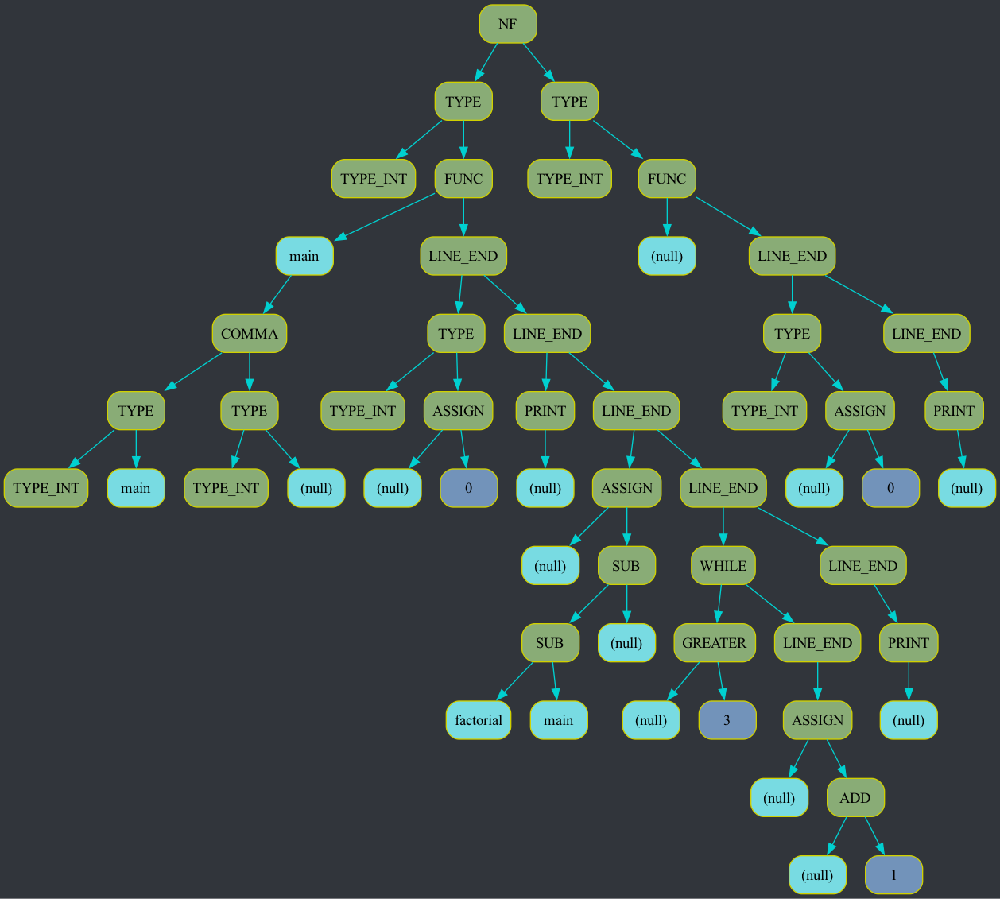
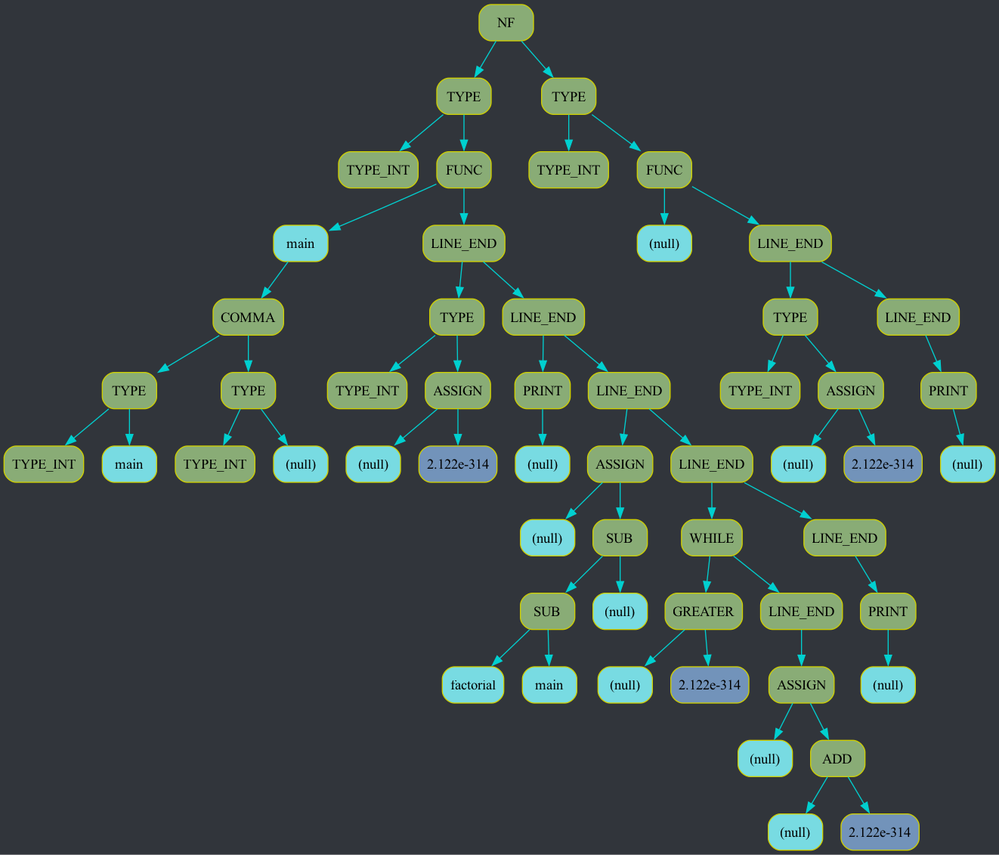

Log file was opened by program ./frontend.exe, compiled Dec 14 2023 at 14:25:47. Opening time: Fri Dec 15 20:27:48 2023 -----------------------New log called Fri Dec 15 20:27:48 2023 Called from file: FrontEnd/Parser.cpp, from function: GetVar, from line: 1380 Functions calling stack on beginning: 0 frontend.exe 0x0000000100a15898 _Z8LogBeginPKcS0_i + 244 1 frontend.exe 0x0000000100a1c564 _ZL6GetVarP14DescentStoragePb6AddVar + 172 2 frontend.exe 0x0000000100a18e88 _ZL10GetFuncDefP14DescentStoragePb + 124 3 frontend.exe 0x0000000100a18dcc _ZL7GetFuncP14DescentStoragePb + 28 4 frontend.exe 0x0000000100a18be8 _ZL4GetGP14DescentStoragePb + 152 5 frontend.exe 0x0000000100a1832c _Z9CodeParsePKc + 136 6 frontend.exe 0x0000000100a17000 main + 92 7 dyld 0x000000018d0e3f28 start + 2236 func - GetVar, line - 1380 Functions calling stack on ending: 0 frontend.exe 0x0000000100a159b4 _Z6LogEndPKcS0_i + 40 1 frontend.exe 0x0000000100a1c59c _ZL6GetVarP14DescentStoragePb6AddVar + 228 2 frontend.exe 0x0000000100a18e88 _ZL10GetFuncDefP14DescentStoragePb + 124 3 frontend.exe 0x0000000100a18dcc _ZL7GetFuncP14DescentStoragePb + 28 4 frontend.exe 0x0000000100a18be8 _ZL4GetGP14DescentStoragePb + 152 5 frontend.exe 0x0000000100a1832c _Z9CodeParsePKc + 136 6 frontend.exe 0x0000000100a17000 main + 92 7 dyld 0x000000018d0e3f28 start + 2236Logging ended Fri Dec 15 20:27:48 2023 Ended in file: FrontEnd/Parser.cpp, function: GetVar, line: 1380 ----------------------- -----------------------New log called Fri Dec 15 20:27:48 2023 Called from file: FrontEnd/Parser.cpp, from function: GetFuncDef, from line: 733 Functions calling stack on beginning: 0 frontend.exe 0x0000000100a15898 _Z8LogBeginPKcS0_i + 244 1 frontend.exe 0x0000000100a18fec _ZL10GetFuncDefP14DescentStoragePb + 480 2 frontend.exe 0x0000000100a18dcc _ZL7GetFuncP14DescentStoragePb + 28 3 frontend.exe 0x0000000100a18be8 _ZL4GetGP14DescentStoragePb + 152 4 frontend.exe 0x0000000100a1832c _Z9CodeParsePKc + 136 5 frontend.exe 0x0000000100a17000 main + 92 6 dyld 0x000000018d0e3f28 start + 2236 func - GetFuncDef, line - 733 Functions calling stack on ending: 0 frontend.exe 0x0000000100a159b4 _Z6LogEndPKcS0_i + 40 1 frontend.exe 0x0000000100a19024 _ZL10GetFuncDefP14DescentStoragePb + 536 2 frontend.exe 0x0000000100a18dcc _ZL7GetFuncP14DescentStoragePb + 28 3 frontend.exe 0x0000000100a18be8 _ZL4GetGP14DescentStoragePb + 152 4 frontend.exe 0x0000000100a1832c _Z9CodeParsePKc + 136 5 frontend.exe 0x0000000100a17000 main + 92 6 dyld 0x000000018d0e3f28 start + 2236Logging ended Fri Dec 15 20:27:48 2023 Ended in file: FrontEnd/Parser.cpp, function: GetFuncDef, line: 733 ----------------------- -----------------------New log called Fri Dec 15 20:27:48 2023 Called from file: FrontEnd/Parser.cpp, from function: GetVar, from line: 1380 Functions calling stack on beginning: 0 frontend.exe 0x0000000100a15898 _Z8LogBeginPKcS0_i + 244 1 frontend.exe 0x0000000100a1c564 _ZL6GetVarP14DescentStoragePb6AddVar + 172 2 frontend.exe 0x0000000100a195b0 _ZL14GetFuncVarsDefP14DescentStoragePb6AddVar + 104 3 frontend.exe 0x0000000100a1908c _ZL10GetFuncDefP14DescentStoragePb + 640 4 frontend.exe 0x0000000100a18dcc _ZL7GetFuncP14DescentStoragePb + 28 5 frontend.exe 0x0000000100a18be8 _ZL4GetGP14DescentStoragePb + 152 6 frontend.exe 0x0000000100a1832c _Z9CodeParsePKc + 136 7 frontend.exe 0x0000000100a17000 main + 92 8 dyld 0x000000018d0e3f28 start + 2236 func - GetVar, line - 1380 Functions calling stack on ending: 0 frontend.exe 0x0000000100a159b4 _Z6LogEndPKcS0_i + 40 1 frontend.exe 0x0000000100a1c59c _ZL6GetVarP14DescentStoragePb6AddVar + 228 2 frontend.exe 0x0000000100a195b0 _ZL14GetFuncVarsDefP14DescentStoragePb6AddVar + 104 3 frontend.exe 0x0000000100a1908c _ZL10GetFuncDefP14DescentStoragePb + 640 4 frontend.exe 0x0000000100a18dcc _ZL7GetFuncP14DescentStoragePb + 28 5 frontend.exe 0x0000000100a18be8 _ZL4GetGP14DescentStoragePb + 152 6 frontend.exe 0x0000000100a1832c _Z9CodeParsePKc + 136 7 frontend.exe 0x0000000100a17000 main + 92 8 dyld 0x000000018d0e3f28 start + 2236Logging ended Fri Dec 15 20:27:48 2023 Ended in file: FrontEnd/Parser.cpp, function: GetVar, line: 1380 ----------------------- -----------------------New log called Fri Dec 15 20:27:48 2023 Called from file: FrontEnd/Parser.cpp, from function: GetVar, from line: 1380 Functions calling stack on beginning: 0 frontend.exe 0x0000000100a15898 _Z8LogBeginPKcS0_i + 244 1 frontend.exe 0x0000000100a1c564 _ZL6GetVarP14DescentStoragePb6AddVar + 172 2 frontend.exe 0x0000000100a19670 _ZL14GetFuncVarsDefP14DescentStoragePb6AddVar + 296 3 frontend.exe 0x0000000100a1908c _ZL10GetFuncDefP14DescentStoragePb + 640 4 frontend.exe 0x0000000100a18dcc _ZL7GetFuncP14DescentStoragePb + 28 5 frontend.exe 0x0000000100a18be8 _ZL4GetGP14DescentStoragePb + 152 6 frontend.exe 0x0000000100a1832c _Z9CodeParsePKc + 136 7 frontend.exe 0x0000000100a17000 main + 92 8 dyld 0x000000018d0e3f28 start + 2236 func - GetVar, line - 1380 Functions calling stack on ending: 0 frontend.exe 0x0000000100a159b4 _Z6LogEndPKcS0_i + 40 1 frontend.exe 0x0000000100a1c59c _ZL6GetVarP14DescentStoragePb6AddVar + 228 2 frontend.exe 0x0000000100a19670 _ZL14GetFuncVarsDefP14DescentStoragePb6AddVar + 296 3 frontend.exe 0x0000000100a1908c _ZL10GetFuncDefP14DescentStoragePb + 640 4 frontend.exe 0x0000000100a18dcc _ZL7GetFuncP14DescentStoragePb + 28 5 frontend.exe 0x0000000100a18be8 _ZL4GetGP14DescentStoragePb + 152 6 frontend.exe 0x0000000100a1832c _Z9CodeParsePKc + 136 7 frontend.exe 0x0000000100a17000 main + 92 8 dyld 0x000000018d0e3f28 start + 2236Logging ended Fri Dec 15 20:27:48 2023 Ended in file: FrontEnd/Parser.cpp, function: GetVar, line: 1380 ----------------------- -----------------------New log called Fri Dec 15 20:27:48 2023 Called from file: FrontEnd/Parser.cpp, from function: GetFuncDef, from line: 741 Functions calling stack on beginning: 0 frontend.exe 0x0000000100a15898 _Z8LogBeginPKcS0_i + 244 1 frontend.exe 0x0000000100a191a8 _ZL10GetFuncDefP14DescentStoragePb + 924 2 frontend.exe 0x0000000100a18dcc _ZL7GetFuncP14DescentStoragePb + 28 3 frontend.exe 0x0000000100a18be8 _ZL4GetGP14DescentStoragePb + 152 4 frontend.exe 0x0000000100a1832c _Z9CodeParsePKc + 136 5 frontend.exe 0x0000000100a17000 main + 92 6 dyld 0x000000018d0e3f28 start + 2236 func - GetFuncDef, line - 741 Functions calling stack on ending: 0 frontend.exe 0x0000000100a159b4 _Z6LogEndPKcS0_i + 40 1 frontend.exe 0x0000000100a191e0 _ZL10GetFuncDefP14DescentStoragePb + 980 2 frontend.exe 0x0000000100a18dcc _ZL7GetFuncP14DescentStoragePb + 28 3 frontend.exe 0x0000000100a18be8 _ZL4GetGP14DescentStoragePb + 152 4 frontend.exe 0x0000000100a1832c _Z9CodeParsePKc + 136 5 frontend.exe 0x0000000100a17000 main + 92 6 dyld 0x000000018d0e3f28 start + 2236Logging ended Fri Dec 15 20:27:48 2023 Ended in file: FrontEnd/Parser.cpp, function: GetFuncDef, line: 741 ----------------------- -----------------------New log called Fri Dec 15 20:27:48 2023 Called from file: FrontEnd/Parser.cpp, from function: GetFuncDef, from line: 745 Functions calling stack on beginning: 0 frontend.exe 0x0000000100a15898 _Z8LogBeginPKcS0_i + 244 1 frontend.exe 0x0000000100a19300 _ZL10GetFuncDefP14DescentStoragePb + 1268 2 frontend.exe 0x0000000100a18dcc _ZL7GetFuncP14DescentStoragePb + 28 3 frontend.exe 0x0000000100a18be8 _ZL4GetGP14DescentStoragePb + 152 4 frontend.exe 0x0000000100a1832c _Z9CodeParsePKc + 136 5 frontend.exe 0x0000000100a17000 main + 92 6 dyld 0x000000018d0e3f28 start + 2236 func - GetFuncDef, line - 745 Functions calling stack on ending: 0 frontend.exe 0x0000000100a159b4 _Z6LogEndPKcS0_i + 40 1 frontend.exe 0x0000000100a19338 _ZL10GetFuncDefP14DescentStoragePb + 1324 2 frontend.exe 0x0000000100a18dcc _ZL7GetFuncP14DescentStoragePb + 28 3 frontend.exe 0x0000000100a18be8 _ZL4GetGP14DescentStoragePb + 152 4 frontend.exe 0x0000000100a1832c _Z9CodeParsePKc + 136 5 frontend.exe 0x0000000100a17000 main + 92 6 dyld 0x000000018d0e3f28 start + 2236Logging ended Fri Dec 15 20:27:48 2023 Ended in file: FrontEnd/Parser.cpp, function: GetFuncDef, line: 745 ----------------------- -----------------------New log called Fri Dec 15 20:27:48 2023 Called from file: FrontEnd/Parser.cpp, from function: GetVar, from line: 1380 Functions calling stack on beginning: 0 frontend.exe 0x0000000100a15898 _Z8LogBeginPKcS0_i + 244 1 frontend.exe 0x0000000100a1c564 _ZL6GetVarP14DescentStoragePb6AddVar + 172 2 frontend.exe 0x0000000100a1a33c _ZL9GetVarDefP14DescentStoragePb + 100 3 frontend.exe 0x0000000100a19890 _ZL5GetOpP14DescentStoragePbb + 332 4 frontend.exe 0x0000000100a19970 _ZL5GetOpP14DescentStoragePbb + 556 5 frontend.exe 0x0000000100a1938c _ZL10GetFuncDefP14DescentStoragePb + 1408 6 frontend.exe 0x0000000100a18dcc _ZL7GetFuncP14DescentStoragePb + 28 7 frontend.exe 0x0000000100a18be8 _ZL4GetGP14DescentStoragePb + 152 8 frontend.exe 0x0000000100a1832c _Z9CodeParsePKc + 136 9 frontend.exe 0x0000000100a17000 main + 92 10 dyld 0x000000018d0e3f28 start + 2236 func - GetVar, line - 1380 Functions calling stack on ending: 0 frontend.exe 0x0000000100a159b4 _Z6LogEndPKcS0_i + 40 1 frontend.exe 0x0000000100a1c59c _ZL6GetVarP14DescentStoragePb6AddVar + 228 2 frontend.exe 0x0000000100a1a33c _ZL9GetVarDefP14DescentStoragePb + 100 3 frontend.exe 0x0000000100a19890 _ZL5GetOpP14DescentStoragePbb + 332 4 frontend.exe 0x0000000100a19970 _ZL5GetOpP14DescentStoragePbb + 556 5 frontend.exe 0x0000000100a1938c _ZL10GetFuncDefP14DescentStoragePb + 1408 6 frontend.exe 0x0000000100a18dcc _ZL7GetFuncP14DescentStoragePb + 28 7 frontend.exe 0x0000000100a18be8 _ZL4GetGP14DescentStoragePb + 152 8 frontend.exe 0x0000000100a1832c _Z9CodeParsePKc + 136 9 frontend.exe 0x0000000100a17000 main + 92 10 dyld 0x000000018d0e3f28 start + 2236Logging ended Fri Dec 15 20:27:48 2023 Ended in file: FrontEnd/Parser.cpp, function: GetVar, line: 1380 ----------------------- -----------------------New log called Fri Dec 15 20:27:48 2023 Called from file: FrontEnd/Parser.cpp, from function: GetVarDef, from line: 951 Functions calling stack on beginning: 0 frontend.exe 0x0000000100a15898 _Z8LogBeginPKcS0_i + 244 1 frontend.exe 0x0000000100a1a418 _ZL9GetVarDefP14DescentStoragePb + 320 2 frontend.exe 0x0000000100a19890 _ZL5GetOpP14DescentStoragePbb + 332 3 frontend.exe 0x0000000100a19970 _ZL5GetOpP14DescentStoragePbb + 556 4 frontend.exe 0x0000000100a1938c _ZL10GetFuncDefP14DescentStoragePb + 1408 5 frontend.exe 0x0000000100a18dcc _ZL7GetFuncP14DescentStoragePb + 28 6 frontend.exe 0x0000000100a18be8 _ZL4GetGP14DescentStoragePb + 152 7 frontend.exe 0x0000000100a1832c _Z9CodeParsePKc + 136 8 frontend.exe 0x0000000100a17000 main + 92 9 dyld 0x000000018d0e3f28 start + 2236 func - GetVarDef, line - 951 Functions calling stack on ending: 0 frontend.exe 0x0000000100a159b4 _Z6LogEndPKcS0_i + 40 1 frontend.exe 0x0000000100a1a450 _ZL9GetVarDefP14DescentStoragePb + 376 2 frontend.exe 0x0000000100a19890 _ZL5GetOpP14DescentStoragePbb + 332 3 frontend.exe 0x0000000100a19970 _ZL5GetOpP14DescentStoragePbb + 556 4 frontend.exe 0x0000000100a1938c _ZL10GetFuncDefP14DescentStoragePb + 1408 5 frontend.exe 0x0000000100a18dcc _ZL7GetFuncP14DescentStoragePb + 28 6 frontend.exe 0x0000000100a18be8 _ZL4GetGP14DescentStoragePb + 152 7 frontend.exe 0x0000000100a1832c _Z9CodeParsePKc + 136 8 frontend.exe 0x0000000100a17000 main + 92 9 dyld 0x000000018d0e3f28 start + 2236Logging ended Fri Dec 15 20:27:48 2023 Ended in file: FrontEnd/Parser.cpp, function: GetVarDef, line: 951 ----------------------- -----------------------New log called Fri Dec 15 20:27:48 2023 Called from file: FrontEnd/Parser.cpp, from function: GetNum, from line: 1368 Functions calling stack on beginning: 0 frontend.exe 0x0000000100a15898 _Z8LogBeginPKcS0_i + 244 1 frontend.exe 0x0000000100a1c42c _ZL6GetNumP14DescentStoragePb + 164 2 frontend.exe 0x0000000100a1c330 _ZL6GetArgP14DescentStoragePb + 56 3 frontend.exe 0x0000000100a1a56c _ZL7GetExprP14DescentStoragePb + 68 4 frontend.exe 0x0000000100a1a4b4 _ZL9GetVarDefP14DescentStoragePb + 476 5 frontend.exe 0x0000000100a19890 _ZL5GetOpP14DescentStoragePbb + 332 6 frontend.exe 0x0000000100a19970 _ZL5GetOpP14DescentStoragePbb + 556 7 frontend.exe 0x0000000100a1938c _ZL10GetFuncDefP14DescentStoragePb + 1408 8 frontend.exe 0x0000000100a18dcc _ZL7GetFuncP14DescentStoragePb + 28 9 frontend.exe 0x0000000100a18be8 _ZL4GetGP14DescentStoragePb + 152 10 frontend.exe 0x0000000100a1832c _Z9CodeParsePKc + 136 11 frontend.exe 0x0000000100a17000 main + 92 12 dyld 0x000000018d0e3f28 start + 2236 func - GetNum, line - 1368 Functions calling stack on ending: 0 frontend.exe 0x0000000100a159b4 _Z6LogEndPKcS0_i + 40 1 frontend.exe 0x0000000100a1c464 _ZL6GetNumP14DescentStoragePb + 220 2 frontend.exe 0x0000000100a1c330 _ZL6GetArgP14DescentStoragePb + 56 3 frontend.exe 0x0000000100a1a56c _ZL7GetExprP14DescentStoragePb + 68 4 frontend.exe 0x0000000100a1a4b4 _ZL9GetVarDefP14DescentStoragePb + 476 5 frontend.exe 0x0000000100a19890 _ZL5GetOpP14DescentStoragePbb + 332 6 frontend.exe 0x0000000100a19970 _ZL5GetOpP14DescentStoragePbb + 556 7 frontend.exe 0x0000000100a1938c _ZL10GetFuncDefP14DescentStoragePb + 1408 8 frontend.exe 0x0000000100a18dcc _ZL7GetFuncP14DescentStoragePb + 28 9 frontend.exe 0x0000000100a18be8 _ZL4GetGP14DescentStoragePb + 152 10 frontend.exe 0x0000000100a1832c _Z9CodeParsePKc + 136 11 frontend.exe 0x0000000100a17000 main + 92 12 dyld 0x000000018d0e3f28 start + 2236Logging ended Fri Dec 15 20:27:48 2023 Ended in file: FrontEnd/Parser.cpp, function: GetNum, line: 1368 ----------------------- -----------------------New log called Fri Dec 15 20:27:48 2023 Called from file: FrontEnd/Parser.cpp, from function: GetRead, from line: 992 Functions calling stack on beginning: 0 frontend.exe 0x0000000100a15898 _Z8LogBeginPKcS0_i + 244 1 frontend.exe 0x0000000100a1a8e4 _ZL7GetReadP14DescentStoragePb + 168 2 frontend.exe 0x0000000100a19860 _ZL5GetOpP14DescentStoragePbb + 284 3 frontend.exe 0x0000000100a19970 _ZL5GetOpP14DescentStoragePbb + 556 4 frontend.exe 0x0000000100a19970 _ZL5GetOpP14DescentStoragePbb + 556 5 frontend.exe 0x0000000100a1938c _ZL10GetFuncDefP14DescentStoragePb + 1408 6 frontend.exe 0x0000000100a18dcc _ZL7GetFuncP14DescentStoragePb + 28 7 frontend.exe 0x0000000100a18be8 _ZL4GetGP14DescentStoragePb + 152 8 frontend.exe 0x0000000100a1832c _Z9CodeParsePKc + 136 9 frontend.exe 0x0000000100a17000 main + 92 10 dyld 0x000000018d0e3f28 start + 2236 func - GetRead, line - 992 Functions calling stack on ending: 0 frontend.exe 0x0000000100a159b4 _Z6LogEndPKcS0_i + 40 1 frontend.exe 0x0000000100a1a91c _ZL7GetReadP14DescentStoragePb + 224 2 frontend.exe 0x0000000100a19860 _ZL5GetOpP14DescentStoragePbb + 284 3 frontend.exe 0x0000000100a19970 _ZL5GetOpP14DescentStoragePbb + 556 4 frontend.exe 0x0000000100a19970 _ZL5GetOpP14DescentStoragePbb + 556 5 frontend.exe 0x0000000100a1938c _ZL10GetFuncDefP14DescentStoragePb + 1408 6 frontend.exe 0x0000000100a18dcc _ZL7GetFuncP14DescentStoragePb + 28 7 frontend.exe 0x0000000100a18be8 _ZL4GetGP14DescentStoragePb + 152 8 frontend.exe 0x0000000100a1832c _Z9CodeParsePKc + 136 9 frontend.exe 0x0000000100a17000 main + 92 10 dyld 0x000000018d0e3f28 start + 2236Logging ended Fri Dec 15 20:27:48 2023 Ended in file: FrontEnd/Parser.cpp, function: GetRead, line: 992 ----------------------- -----------------------New log called Fri Dec 15 20:27:48 2023 Called from file: FrontEnd/Parser.cpp, from function: GetVar, from line: 1380 Functions calling stack on beginning: 0 frontend.exe 0x0000000100a15898 _Z8LogBeginPKcS0_i + 244 1 frontend.exe 0x0000000100a1c564 _ZL6GetVarP14DescentStoragePb6AddVar + 172 2 frontend.exe 0x0000000100a1c348 _ZL6GetArgP14DescentStoragePb + 80 3 frontend.exe 0x0000000100a1a958 _ZL7GetReadP14DescentStoragePb + 284 4 frontend.exe 0x0000000100a19860 _ZL5GetOpP14DescentStoragePbb + 284 5 frontend.exe 0x0000000100a19970 _ZL5GetOpP14DescentStoragePbb + 556 6 frontend.exe 0x0000000100a19970 _ZL5GetOpP14DescentStoragePbb + 556 7 frontend.exe 0x0000000100a1938c _ZL10GetFuncDefP14DescentStoragePb + 1408 8 frontend.exe 0x0000000100a18dcc _ZL7GetFuncP14DescentStoragePb + 28 9 frontend.exe 0x0000000100a18be8 _ZL4GetGP14DescentStoragePb + 152 10 frontend.exe 0x0000000100a1832c _Z9CodeParsePKc + 136 11 frontend.exe 0x0000000100a17000 main + 92 12 dyld 0x000000018d0e3f28 start + 2236 func - GetVar, line - 1380 Functions calling stack on ending: 0 frontend.exe 0x0000000100a159b4 _Z6LogEndPKcS0_i + 40 1 frontend.exe 0x0000000100a1c59c _ZL6GetVarP14DescentStoragePb6AddVar + 228 2 frontend.exe 0x0000000100a1c348 _ZL6GetArgP14DescentStoragePb + 80 3 frontend.exe 0x0000000100a1a958 _ZL7GetReadP14DescentStoragePb + 284 4 frontend.exe 0x0000000100a19860 _ZL5GetOpP14DescentStoragePbb + 284 5 frontend.exe 0x0000000100a19970 _ZL5GetOpP14DescentStoragePbb + 556 6 frontend.exe 0x0000000100a19970 _ZL5GetOpP14DescentStoragePbb + 556 7 frontend.exe 0x0000000100a1938c _ZL10GetFuncDefP14DescentStoragePb + 1408 8 frontend.exe 0x0000000100a18dcc _ZL7GetFuncP14DescentStoragePb + 28 9 frontend.exe 0x0000000100a18be8 _ZL4GetGP14DescentStoragePb + 152 10 frontend.exe 0x0000000100a1832c _Z9CodeParsePKc + 136 11 frontend.exe 0x0000000100a17000 main + 92 12 dyld 0x000000018d0e3f28 start + 2236Logging ended Fri Dec 15 20:27:48 2023 Ended in file: FrontEnd/Parser.cpp, function: GetVar, line: 1380 ----------------------- -----------------------New log called Fri Dec 15 20:27:48 2023 Called from file: FrontEnd/Parser.cpp, from function: GetVar, from line: 1380 Functions calling stack on beginning: 0 frontend.exe 0x0000000100a15898 _Z8LogBeginPKcS0_i + 244 1 frontend.exe 0x0000000100a1c564 _ZL6GetVarP14DescentStoragePb6AddVar + 172 2 frontend.exe 0x0000000100a1a9cc _ZL9GetAssignP14DescentStoragePb + 36 3 frontend.exe 0x0000000100a198d0 _ZL5GetOpP14DescentStoragePbb + 396 4 frontend.exe 0x0000000100a19970 _ZL5GetOpP14DescentStoragePbb + 556 5 frontend.exe 0x0000000100a19970 _ZL5GetOpP14DescentStoragePbb + 556 6 frontend.exe 0x0000000100a19970 _ZL5GetOpP14DescentStoragePbb + 556 7 frontend.exe 0x0000000100a1938c _ZL10GetFuncDefP14DescentStoragePb + 1408 8 frontend.exe 0x0000000100a18dcc _ZL7GetFuncP14DescentStoragePb + 28 9 frontend.exe 0x0000000100a18be8 _ZL4GetGP14DescentStoragePb + 152 10 frontend.exe 0x0000000100a1832c _Z9CodeParsePKc + 136 11 frontend.exe 0x0000000100a17000 main + 92 12 dyld 0x000000018d0e3f28 start + 2236 func - GetVar, line - 1380 Functions calling stack on ending: 0 frontend.exe 0x0000000100a159b4 _Z6LogEndPKcS0_i + 40 1 frontend.exe 0x0000000100a1c59c _ZL6GetVarP14DescentStoragePb6AddVar + 228 2 frontend.exe 0x0000000100a1a9cc _ZL9GetAssignP14DescentStoragePb + 36 3 frontend.exe 0x0000000100a198d0 _ZL5GetOpP14DescentStoragePbb + 396 4 frontend.exe 0x0000000100a19970 _ZL5GetOpP14DescentStoragePbb + 556 5 frontend.exe 0x0000000100a19970 _ZL5GetOpP14DescentStoragePbb + 556 6 frontend.exe 0x0000000100a19970 _ZL5GetOpP14DescentStoragePbb + 556 7 frontend.exe 0x0000000100a1938c _ZL10GetFuncDefP14DescentStoragePb + 1408 8 frontend.exe 0x0000000100a18dcc _ZL7GetFuncP14DescentStoragePb + 28 9 frontend.exe 0x0000000100a18be8 _ZL4GetGP14DescentStoragePb + 152 10 frontend.exe 0x0000000100a1832c _Z9CodeParsePKc + 136 11 frontend.exe 0x0000000100a17000 main + 92 12 dyld 0x000000018d0e3f28 start + 2236Logging ended Fri Dec 15 20:27:48 2023 Ended in file: FrontEnd/Parser.cpp, function: GetVar, line: 1380 ----------------------- -----------------------New log called Fri Dec 15 20:27:48 2023 Called from file: FrontEnd/Parser.cpp, from function: GetAssign, from line: 1007 Functions calling stack on beginning: 0 frontend.exe 0x0000000100a15898 _Z8LogBeginPKcS0_i + 244 1 frontend.exe 0x0000000100a1aa94 _ZL9GetAssignP14DescentStoragePb + 236 2 frontend.exe 0x0000000100a198d0 _ZL5GetOpP14DescentStoragePbb + 396 3 frontend.exe 0x0000000100a19970 _ZL5GetOpP14DescentStoragePbb + 556 4 frontend.exe 0x0000000100a19970 _ZL5GetOpP14DescentStoragePbb + 556 5 frontend.exe 0x0000000100a19970 _ZL5GetOpP14DescentStoragePbb + 556 6 frontend.exe 0x0000000100a1938c _ZL10GetFuncDefP14DescentStoragePb + 1408 7 frontend.exe 0x0000000100a18dcc _ZL7GetFuncP14DescentStoragePb + 28 8 frontend.exe 0x0000000100a18be8 _ZL4GetGP14DescentStoragePb + 152 9 frontend.exe 0x0000000100a1832c _Z9CodeParsePKc + 136 10 frontend.exe 0x0000000100a17000 main + 92 11 dyld 0x000000018d0e3f28 start + 2236 func - GetAssign, line - 1007 Functions calling stack on ending: 0 frontend.exe 0x0000000100a159b4 _Z6LogEndPKcS0_i + 40 1 frontend.exe 0x0000000100a1aacc _ZL9GetAssignP14DescentStoragePb + 292 2 frontend.exe 0x0000000100a198d0 _ZL5GetOpP14DescentStoragePbb + 396 3 frontend.exe 0x0000000100a19970 _ZL5GetOpP14DescentStoragePbb + 556 4 frontend.exe 0x0000000100a19970 _ZL5GetOpP14DescentStoragePbb + 556 5 frontend.exe 0x0000000100a19970 _ZL5GetOpP14DescentStoragePbb + 556 6 frontend.exe 0x0000000100a1938c _ZL10GetFuncDefP14DescentStoragePb + 1408 7 frontend.exe 0x0000000100a18dcc _ZL7GetFuncP14DescentStoragePb + 28 8 frontend.exe 0x0000000100a18be8 _ZL4GetGP14DescentStoragePb + 152 9 frontend.exe 0x0000000100a1832c _Z9CodeParsePKc + 136 10 frontend.exe 0x0000000100a17000 main + 92 11 dyld 0x000000018d0e3f28 start + 2236Logging ended Fri Dec 15 20:27:48 2023 Ended in file: FrontEnd/Parser.cpp, function: GetAssign, line: 1007 ----------------------- -----------------------New log called Fri Dec 15 20:27:48 2023 Called from file: FrontEnd/Parser.cpp, from function: GetVar, from line: 1380 Functions calling stack on beginning: 0 frontend.exe 0x0000000100a15898 _Z8LogBeginPKcS0_i + 244 1 frontend.exe 0x0000000100a1c564 _ZL6GetVarP14DescentStoragePb6AddVar + 172 2 frontend.exe 0x0000000100a1c348 _ZL6GetArgP14DescentStoragePb + 80 3 frontend.exe 0x0000000100a1a56c _ZL7GetExprP14DescentStoragePb + 68 4 frontend.exe 0x0000000100a1bed0 _ZL13GetPrefixFuncP14DescentStoragePb + 56 5 frontend.exe 0x0000000100a1bbb4 _ZL6GetPowP14DescentStoragePb + 32 6 frontend.exe 0x0000000100a1b930 _ZL9GetMulDivP14DescentStoragePb + 32 7 frontend.exe 0x0000000100a1b684 _ZL9GetAddSubP14DescentStoragePb + 32 8 frontend.exe 0x0000000100a1b35c _ZL6GetCmpP14DescentStoragePb + 32 9 frontend.exe 0x0000000100a1b150 _ZL6GetAndP14DescentStoragePb + 28 10 frontend.exe 0x0000000100a1b060 _ZL5GetOrP14DescentStoragePb + 28 11 frontend.exe 0x0000000100a1ab1c _ZL9GetAssignP14DescentStoragePb + 372 12 frontend.exe 0x0000000100a198d0 _ZL5GetOpP14DescentStoragePbb + 396 13 frontend.exe 0x0000000100a19970 _ZL5GetOpP14DescentStoragePbb + 556 14 frontend.exe 0x0000000100a19970 _ZL5GetOpP14DescentStoragePbb + 556 15 frontend.exe 0x0000000100a19970 _ZL5GetOpP14DescentStoragePbb + 556 16 frontend.exe 0x0000000100a1938c _ZL10GetFuncDefP14DescentStoragePb + 1408 17 frontend.exe 0x0000000100a18dcc _ZL7GetFuncP14DescentStoragePb + 28 18 frontend.exe 0x0000000100a18be8 _ZL4GetGP14DescentStoragePb + 152 19 frontend.exe 0x0000000100a1832c _Z9CodeParsePKc + 136 20 frontend.exe 0x0000000100a17000 main + 92 21 dyld 0x000000018d0e3f28 start + 2236 func - GetVar, line - 1380 Functions calling stack on ending: 0 frontend.exe 0x0000000100a159b4 _Z6LogEndPKcS0_i + 40 1 frontend.exe 0x0000000100a1c59c _ZL6GetVarP14DescentStoragePb6AddVar + 228 2 frontend.exe 0x0000000100a1c348 _ZL6GetArgP14DescentStoragePb + 80 3 frontend.exe 0x0000000100a1a56c _ZL7GetExprP14DescentStoragePb + 68 4 frontend.exe 0x0000000100a1bed0 _ZL13GetPrefixFuncP14DescentStoragePb + 56 5 frontend.exe 0x0000000100a1bbb4 _ZL6GetPowP14DescentStoragePb + 32 6 frontend.exe 0x0000000100a1b930 _ZL9GetMulDivP14DescentStoragePb + 32 7 frontend.exe 0x0000000100a1b684 _ZL9GetAddSubP14DescentStoragePb + 32 8 frontend.exe 0x0000000100a1b35c _ZL6GetCmpP14DescentStoragePb + 32 9 frontend.exe 0x0000000100a1b150 _ZL6GetAndP14DescentStoragePb + 28 10 frontend.exe 0x0000000100a1b060 _ZL5GetOrP14DescentStoragePb + 28 11 frontend.exe 0x0000000100a1ab1c _ZL9GetAssignP14DescentStoragePb + 372 12 frontend.exe 0x0000000100a198d0 _ZL5GetOpP14DescentStoragePbb + 396 13 frontend.exe 0x0000000100a19970 _ZL5GetOpP14DescentStoragePbb + 556 14 frontend.exe 0x0000000100a19970 _ZL5GetOpP14DescentStoragePbb + 556 15 frontend.exe 0x0000000100a19970 _ZL5GetOpP14DescentStoragePbb + 556 16 frontend.exe 0x0000000100a1938c _ZL10GetFuncDefP14DescentStoragePb + 1408 17 frontend.exe 0x0000000100a18dcc _ZL7GetFuncP14DescentStoragePb + 28 18 frontend.exe 0x0000000100a18be8 _ZL4GetGP14DescentStoragePb + 152 19 frontend.exe 0x0000000100a1832c _Z9CodeParsePKc + 136 20 frontend.exe 0x0000000100a17000 main + 92 21 dyld 0x000000018d0e3f28 start + 2236Logging ended Fri Dec 15 20:27:48 2023 Ended in file: FrontEnd/Parser.cpp, function: GetVar, line: 1380 ----------------------- -----------------------New log called Fri Dec 15 20:27:48 2023 Called from file: FrontEnd/Parser.cpp, from function: GetVar, from line: 1380 Functions calling stack on beginning: 0 frontend.exe 0x0000000100a15898 _Z8LogBeginPKcS0_i + 244 1 frontend.exe 0x0000000100a1c564 _ZL6GetVarP14DescentStoragePb6AddVar + 172 2 frontend.exe 0x0000000100a1c348 _ZL6GetArgP14DescentStoragePb + 80 3 frontend.exe 0x0000000100a1a56c _ZL7GetExprP14DescentStoragePb + 68 4 frontend.exe 0x0000000100a1bed0 _ZL13GetPrefixFuncP14DescentStoragePb + 56 5 frontend.exe 0x0000000100a1bbb4 _ZL6GetPowP14DescentStoragePb + 32 6 frontend.exe 0x0000000100a1b930 _ZL9GetMulDivP14DescentStoragePb + 32 7 frontend.exe 0x0000000100a1b6e8 _ZL9GetAddSubP14DescentStoragePb + 132 8 frontend.exe 0x0000000100a1b35c _ZL6GetCmpP14DescentStoragePb + 32 9 frontend.exe 0x0000000100a1b150 _ZL6GetAndP14DescentStoragePb + 28 10 frontend.exe 0x0000000100a1b060 _ZL5GetOrP14DescentStoragePb + 28 11 frontend.exe 0x0000000100a1ab1c _ZL9GetAssignP14DescentStoragePb + 372 12 frontend.exe 0x0000000100a198d0 _ZL5GetOpP14DescentStoragePbb + 396 13 frontend.exe 0x0000000100a19970 _ZL5GetOpP14DescentStoragePbb + 556 14 frontend.exe 0x0000000100a19970 _ZL5GetOpP14DescentStoragePbb + 556 15 frontend.exe 0x0000000100a19970 _ZL5GetOpP14DescentStoragePbb + 556 16 frontend.exe 0x0000000100a1938c _ZL10GetFuncDefP14DescentStoragePb + 1408 17 frontend.exe 0x0000000100a18dcc _ZL7GetFuncP14DescentStoragePb + 28 18 frontend.exe 0x0000000100a18be8 _ZL4GetGP14DescentStoragePb + 152 19 frontend.exe 0x0000000100a1832c _Z9CodeParsePKc + 136 20 frontend.exe 0x0000000100a17000 main + 92 21 dyld 0x000000018d0e3f28 start + 2236 func - GetVar, line - 1380 Functions calling stack on ending: 0 frontend.exe 0x0000000100a159b4 _Z6LogEndPKcS0_i + 40 1 frontend.exe 0x0000000100a1c59c _ZL6GetVarP14DescentStoragePb6AddVar + 228 2 frontend.exe 0x0000000100a1c348 _ZL6GetArgP14DescentStoragePb + 80 3 frontend.exe 0x0000000100a1a56c _ZL7GetExprP14DescentStoragePb + 68 4 frontend.exe 0x0000000100a1bed0 _ZL13GetPrefixFuncP14DescentStoragePb + 56 5 frontend.exe 0x0000000100a1bbb4 _ZL6GetPowP14DescentStoragePb + 32 6 frontend.exe 0x0000000100a1b930 _ZL9GetMulDivP14DescentStoragePb + 32 7 frontend.exe 0x0000000100a1b6e8 _ZL9GetAddSubP14DescentStoragePb + 132 8 frontend.exe 0x0000000100a1b35c _ZL6GetCmpP14DescentStoragePb + 32 9 frontend.exe 0x0000000100a1b150 _ZL6GetAndP14DescentStoragePb + 28 10 frontend.exe 0x0000000100a1b060 _ZL5GetOrP14DescentStoragePb + 28 11 frontend.exe 0x0000000100a1ab1c _ZL9GetAssignP14DescentStoragePb + 372 12 frontend.exe 0x0000000100a198d0 _ZL5GetOpP14DescentStoragePbb + 396 13 frontend.exe 0x0000000100a19970 _ZL5GetOpP14DescentStoragePbb + 556 14 frontend.exe 0x0000000100a19970 _ZL5GetOpP14DescentStoragePbb + 556 15 frontend.exe 0x0000000100a19970 _ZL5GetOpP14DescentStoragePbb + 556 16 frontend.exe 0x0000000100a1938c _ZL10GetFuncDefP14DescentStoragePb + 1408 17 frontend.exe 0x0000000100a18dcc _ZL7GetFuncP14DescentStoragePb + 28 18 frontend.exe 0x0000000100a18be8 _ZL4GetGP14DescentStoragePb + 152 19 frontend.exe 0x0000000100a1832c _Z9CodeParsePKc + 136 20 frontend.exe 0x0000000100a17000 main + 92 21 dyld 0x000000018d0e3f28 start + 2236Logging ended Fri Dec 15 20:27:48 2023 Ended in file: FrontEnd/Parser.cpp, function: GetVar, line: 1380 ----------------------- -----------------------New log called Fri Dec 15 20:27:48 2023 Called from file: FrontEnd/Parser.cpp, from function: GetVar, from line: 1380 Functions calling stack on beginning: 0 frontend.exe 0x0000000100a15898 _Z8LogBeginPKcS0_i + 244 1 frontend.exe 0x0000000100a1c564 _ZL6GetVarP14DescentStoragePb6AddVar + 172 2 frontend.exe 0x0000000100a1c348 _ZL6GetArgP14DescentStoragePb + 80 3 frontend.exe 0x0000000100a1a56c _ZL7GetExprP14DescentStoragePb + 68 4 frontend.exe 0x0000000100a1bed0 _ZL13GetPrefixFuncP14DescentStoragePb + 56 5 frontend.exe 0x0000000100a1bbb4 _ZL6GetPowP14DescentStoragePb + 32 6 frontend.exe 0x0000000100a1b930 _ZL9GetMulDivP14DescentStoragePb + 32 7 frontend.exe 0x0000000100a1b6e8 _ZL9GetAddSubP14DescentStoragePb + 132 8 frontend.exe 0x0000000100a1b35c _ZL6GetCmpP14DescentStoragePb + 32 9 frontend.exe 0x0000000100a1b150 _ZL6GetAndP14DescentStoragePb + 28 10 frontend.exe 0x0000000100a1b060 _ZL5GetOrP14DescentStoragePb + 28 11 frontend.exe 0x0000000100a1ab1c _ZL9GetAssignP14DescentStoragePb + 372 12 frontend.exe 0x0000000100a198d0 _ZL5GetOpP14DescentStoragePbb + 396 13 frontend.exe 0x0000000100a19970 _ZL5GetOpP14DescentStoragePbb + 556 14 frontend.exe 0x0000000100a19970 _ZL5GetOpP14DescentStoragePbb + 556 15 frontend.exe 0x0000000100a19970 _ZL5GetOpP14DescentStoragePbb + 556 16 frontend.exe 0x0000000100a1938c _ZL10GetFuncDefP14DescentStoragePb + 1408 17 frontend.exe 0x0000000100a18dcc _ZL7GetFuncP14DescentStoragePb + 28 18 frontend.exe 0x0000000100a18be8 _ZL4GetGP14DescentStoragePb + 152 19 frontend.exe 0x0000000100a1832c _Z9CodeParsePKc + 136 20 frontend.exe 0x0000000100a17000 main + 92 21 dyld 0x000000018d0e3f28 start + 2236 func - GetVar, line - 1380 Functions calling stack on ending: 0 frontend.exe 0x0000000100a159b4 _Z6LogEndPKcS0_i + 40 1 frontend.exe 0x0000000100a1c59c _ZL6GetVarP14DescentStoragePb6AddVar + 228 2 frontend.exe 0x0000000100a1c348 _ZL6GetArgP14DescentStoragePb + 80 3 frontend.exe 0x0000000100a1a56c _ZL7GetExprP14DescentStoragePb + 68 4 frontend.exe 0x0000000100a1bed0 _ZL13GetPrefixFuncP14DescentStoragePb + 56 5 frontend.exe 0x0000000100a1bbb4 _ZL6GetPowP14DescentStoragePb + 32 6 frontend.exe 0x0000000100a1b930 _ZL9GetMulDivP14DescentStoragePb + 32 7 frontend.exe 0x0000000100a1b6e8 _ZL9GetAddSubP14DescentStoragePb + 132 8 frontend.exe 0x0000000100a1b35c _ZL6GetCmpP14DescentStoragePb + 32 9 frontend.exe 0x0000000100a1b150 _ZL6GetAndP14DescentStoragePb + 28 10 frontend.exe 0x0000000100a1b060 _ZL5GetOrP14DescentStoragePb + 28 11 frontend.exe 0x0000000100a1ab1c _ZL9GetAssignP14DescentStoragePb + 372 12 frontend.exe 0x0000000100a198d0 _ZL5GetOpP14DescentStoragePbb + 396 13 frontend.exe 0x0000000100a19970 _ZL5GetOpP14DescentStoragePbb + 556 14 frontend.exe 0x0000000100a19970 _ZL5GetOpP14DescentStoragePbb + 556 15 frontend.exe 0x0000000100a19970 _ZL5GetOpP14DescentStoragePbb + 556 16 frontend.exe 0x0000000100a1938c _ZL10GetFuncDefP14DescentStoragePb + 1408 17 frontend.exe 0x0000000100a18dcc _ZL7GetFuncP14DescentStoragePb + 28 18 frontend.exe 0x0000000100a18be8 _ZL4GetGP14DescentStoragePb + 152 19 frontend.exe 0x0000000100a1832c _Z9CodeParsePKc + 136 20 frontend.exe 0x0000000100a17000 main + 92 21 dyld 0x000000018d0e3f28 start + 2236Logging ended Fri Dec 15 20:27:48 2023 Ended in file: FrontEnd/Parser.cpp, function: GetVar, line: 1380 ----------------------- -----------------------New log called Fri Dec 15 20:27:48 2023 Called from file: FrontEnd/Parser.cpp, from function: GetWhile, from line: 926 Functions calling stack on beginning: 0 frontend.exe 0x0000000100a15898 _Z8LogBeginPKcS0_i + 244 1 frontend.exe 0x0000000100a1a078 _ZL8GetWhileP14DescentStoragePb + 168 2 frontend.exe 0x0000000100a19800 _ZL5GetOpP14DescentStoragePbb + 188 3 frontend.exe 0x0000000100a19970 _ZL5GetOpP14DescentStoragePbb + 556 4 frontend.exe 0x0000000100a19970 _ZL5GetOpP14DescentStoragePbb + 556 5 frontend.exe 0x0000000100a19970 _ZL5GetOpP14DescentStoragePbb + 556 6 frontend.exe 0x0000000100a19970 _ZL5GetOpP14DescentStoragePbb + 556 7 frontend.exe 0x0000000100a1938c _ZL10GetFuncDefP14DescentStoragePb + 1408 8 frontend.exe 0x0000000100a18dcc _ZL7GetFuncP14DescentStoragePb + 28 9 frontend.exe 0x0000000100a18be8 _ZL4GetGP14DescentStoragePb + 152 10 frontend.exe 0x0000000100a1832c _Z9CodeParsePKc + 136 11 frontend.exe 0x0000000100a17000 main + 92 12 dyld 0x000000018d0e3f28 start + 2236 func - GetWhile, line - 926 Functions calling stack on ending: 0 frontend.exe 0x0000000100a159b4 _Z6LogEndPKcS0_i + 40 1 frontend.exe 0x0000000100a1a0b0 _ZL8GetWhileP14DescentStoragePb + 224 2 frontend.exe 0x0000000100a19800 _ZL5GetOpP14DescentStoragePbb + 188 3 frontend.exe 0x0000000100a19970 _ZL5GetOpP14DescentStoragePbb + 556 4 frontend.exe 0x0000000100a19970 _ZL5GetOpP14DescentStoragePbb + 556 5 frontend.exe 0x0000000100a19970 _ZL5GetOpP14DescentStoragePbb + 556 6 frontend.exe 0x0000000100a19970 _ZL5GetOpP14DescentStoragePbb + 556 7 frontend.exe 0x0000000100a1938c _ZL10GetFuncDefP14DescentStoragePb + 1408 8 frontend.exe 0x0000000100a18dcc _ZL7GetFuncP14DescentStoragePb + 28 9 frontend.exe 0x0000000100a18be8 _ZL4GetGP14DescentStoragePb + 152 10 frontend.exe 0x0000000100a1832c _Z9CodeParsePKc + 136 11 frontend.exe 0x0000000100a17000 main + 92 12 dyld 0x000000018d0e3f28 start + 2236Logging ended Fri Dec 15 20:27:48 2023 Ended in file: FrontEnd/Parser.cpp, function: GetWhile, line: 926 ----------------------- -----------------------New log called Fri Dec 15 20:27:48 2023 Called from file: FrontEnd/Parser.cpp, from function: GetVar, from line: 1380 Functions calling stack on beginning: 0 frontend.exe 0x0000000100a15898 _Z8LogBeginPKcS0_i + 244 1 frontend.exe 0x0000000100a1c564 _ZL6GetVarP14DescentStoragePb6AddVar + 172 2 frontend.exe 0x0000000100a1c348 _ZL6GetArgP14DescentStoragePb + 80 3 frontend.exe 0x0000000100a1a56c _ZL7GetExprP14DescentStoragePb + 68 4 frontend.exe 0x0000000100a1bed0 _ZL13GetPrefixFuncP14DescentStoragePb + 56 5 frontend.exe 0x0000000100a1bbb4 _ZL6GetPowP14DescentStoragePb + 32 6 frontend.exe 0x0000000100a1b930 _ZL9GetMulDivP14DescentStoragePb + 32 7 frontend.exe 0x0000000100a1b684 _ZL9GetAddSubP14DescentStoragePb + 32 8 frontend.exe 0x0000000100a1b35c _ZL6GetCmpP14DescentStoragePb + 32 9 frontend.exe 0x0000000100a1b150 _ZL6GetAndP14DescentStoragePb + 28 10 frontend.exe 0x0000000100a1b060 _ZL5GetOrP14DescentStoragePb + 28 11 frontend.exe 0x0000000100a1a0ec _ZL8GetWhileP14DescentStoragePb + 284 12 frontend.exe 0x0000000100a19800 _ZL5GetOpP14DescentStoragePbb + 188 13 frontend.exe 0x0000000100a19970 _ZL5GetOpP14DescentStoragePbb + 556 14 frontend.exe 0x0000000100a19970 _ZL5GetOpP14DescentStoragePbb + 556 15 frontend.exe 0x0000000100a19970 _ZL5GetOpP14DescentStoragePbb + 556 16 frontend.exe 0x0000000100a19970 _ZL5GetOpP14DescentStoragePbb + 556 17 frontend.exe 0x0000000100a1938c _ZL10GetFuncDefP14DescentStoragePb + 1408 18 frontend.exe 0x0000000100a18dcc _ZL7GetFuncP14DescentStoragePb + 28 19 frontend.exe 0x0000000100a18be8 _ZL4GetGP14DescentStoragePb + 152 20 frontend.exe 0x0000000100a1832c _Z9CodeParsePKc + 136 21 frontend.exe 0x0000000100a17000 main + 92 22 dyld 0x000000018d0e3f28 start + 2236 func - GetVar, line - 1380 Functions calling stack on ending: 0 frontend.exe 0x0000000100a159b4 _Z6LogEndPKcS0_i + 40 1 frontend.exe 0x0000000100a1c59c _ZL6GetVarP14DescentStoragePb6AddVar + 228 2 frontend.exe 0x0000000100a1c348 _ZL6GetArgP14DescentStoragePb + 80 3 frontend.exe 0x0000000100a1a56c _ZL7GetExprP14DescentStoragePb + 68 4 frontend.exe 0x0000000100a1bed0 _ZL13GetPrefixFuncP14DescentStoragePb + 56 5 frontend.exe 0x0000000100a1bbb4 _ZL6GetPowP14DescentStoragePb + 32 6 frontend.exe 0x0000000100a1b930 _ZL9GetMulDivP14DescentStoragePb + 32 7 frontend.exe 0x0000000100a1b684 _ZL9GetAddSubP14DescentStoragePb + 32 8 frontend.exe 0x0000000100a1b35c _ZL6GetCmpP14DescentStoragePb + 32 9 frontend.exe 0x0000000100a1b150 _ZL6GetAndP14DescentStoragePb + 28 10 frontend.exe 0x0000000100a1b060 _ZL5GetOrP14DescentStoragePb + 28 11 frontend.exe 0x0000000100a1a0ec _ZL8GetWhileP14DescentStoragePb + 284 12 frontend.exe 0x0000000100a19800 _ZL5GetOpP14DescentStoragePbb + 188 13 frontend.exe 0x0000000100a19970 _ZL5GetOpP14DescentStoragePbb + 556 14 frontend.exe 0x0000000100a19970 _ZL5GetOpP14DescentStoragePbb + 556 15 frontend.exe 0x0000000100a19970 _ZL5GetOpP14DescentStoragePbb + 556 16 frontend.exe 0x0000000100a19970 _ZL5GetOpP14DescentStoragePbb + 556 17 frontend.exe 0x0000000100a1938c _ZL10GetFuncDefP14DescentStoragePb + 1408 18 frontend.exe 0x0000000100a18dcc _ZL7GetFuncP14DescentStoragePb + 28 19 frontend.exe 0x0000000100a18be8 _ZL4GetGP14DescentStoragePb + 152 20 frontend.exe 0x0000000100a1832c _Z9CodeParsePKc + 136 21 frontend.exe 0x0000000100a17000 main + 92 22 dyld 0x000000018d0e3f28 start + 2236Logging ended Fri Dec 15 20:27:48 2023 Ended in file: FrontEnd/Parser.cpp, function: GetVar, line: 1380 ----------------------- -----------------------New log called Fri Dec 15 20:27:48 2023 Called from file: FrontEnd/Parser.cpp, from function: GetNum, from line: 1368 Functions calling stack on beginning: 0 frontend.exe 0x0000000100a15898 _Z8LogBeginPKcS0_i + 244 1 frontend.exe 0x0000000100a1c42c _ZL6GetNumP14DescentStoragePb + 164 2 frontend.exe 0x0000000100a1c330 _ZL6GetArgP14DescentStoragePb + 56 3 frontend.exe 0x0000000100a1a56c _ZL7GetExprP14DescentStoragePb + 68 4 frontend.exe 0x0000000100a1bed0 _ZL13GetPrefixFuncP14DescentStoragePb + 56 5 frontend.exe 0x0000000100a1bbb4 _ZL6GetPowP14DescentStoragePb + 32 6 frontend.exe 0x0000000100a1b930 _ZL9GetMulDivP14DescentStoragePb + 32 7 frontend.exe 0x0000000100a1b684 _ZL9GetAddSubP14DescentStoragePb + 32 8 frontend.exe 0x0000000100a1b3c0 _ZL6GetCmpP14DescentStoragePb + 132 9 frontend.exe 0x0000000100a1b150 _ZL6GetAndP14DescentStoragePb + 28 10 frontend.exe 0x0000000100a1b060 _ZL5GetOrP14DescentStoragePb + 28 11 frontend.exe 0x0000000100a1a0ec _ZL8GetWhileP14DescentStoragePb + 284 12 frontend.exe 0x0000000100a19800 _ZL5GetOpP14DescentStoragePbb + 188 13 frontend.exe 0x0000000100a19970 _ZL5GetOpP14DescentStoragePbb + 556 14 frontend.exe 0x0000000100a19970 _ZL5GetOpP14DescentStoragePbb + 556 15 frontend.exe 0x0000000100a19970 _ZL5GetOpP14DescentStoragePbb + 556 16 frontend.exe 0x0000000100a19970 _ZL5GetOpP14DescentStoragePbb + 556 17 frontend.exe 0x0000000100a1938c _ZL10GetFuncDefP14DescentStoragePb + 1408 18 frontend.exe 0x0000000100a18dcc _ZL7GetFuncP14DescentStoragePb + 28 19 frontend.exe 0x0000000100a18be8 _ZL4GetGP14DescentStoragePb + 152 20 frontend.exe 0x0000000100a1832c _Z9CodeParsePKc + 136 21 frontend.exe 0x0000000100a17000 main + 92 22 dyld 0x000000018d0e3f28 start + 2236 func - GetNum, line - 1368 Functions calling stack on ending: 0 frontend.exe 0x0000000100a159b4 _Z6LogEndPKcS0_i + 40 1 frontend.exe 0x0000000100a1c464 _ZL6GetNumP14DescentStoragePb + 220 2 frontend.exe 0x0000000100a1c330 _ZL6GetArgP14DescentStoragePb + 56 3 frontend.exe 0x0000000100a1a56c _ZL7GetExprP14DescentStoragePb + 68 4 frontend.exe 0x0000000100a1bed0 _ZL13GetPrefixFuncP14DescentStoragePb + 56 5 frontend.exe 0x0000000100a1bbb4 _ZL6GetPowP14DescentStoragePb + 32 6 frontend.exe 0x0000000100a1b930 _ZL9GetMulDivP14DescentStoragePb + 32 7 frontend.exe 0x0000000100a1b684 _ZL9GetAddSubP14DescentStoragePb + 32 8 frontend.exe 0x0000000100a1b3c0 _ZL6GetCmpP14DescentStoragePb + 132 9 frontend.exe 0x0000000100a1b150 _ZL6GetAndP14DescentStoragePb + 28 10 frontend.exe 0x0000000100a1b060 _ZL5GetOrP14DescentStoragePb + 28 11 frontend.exe 0x0000000100a1a0ec _ZL8GetWhileP14DescentStoragePb + 284 12 frontend.exe 0x0000000100a19800 _ZL5GetOpP14DescentStoragePbb + 188 13 frontend.exe 0x0000000100a19970 _ZL5GetOpP14DescentStoragePbb + 556 14 frontend.exe 0x0000000100a19970 _ZL5GetOpP14DescentStoragePbb + 556 15 frontend.exe 0x0000000100a19970 _ZL5GetOpP14DescentStoragePbb + 556 16 frontend.exe 0x0000000100a19970 _ZL5GetOpP14DescentStoragePbb + 556 17 frontend.exe 0x0000000100a1938c _ZL10GetFuncDefP14DescentStoragePb + 1408 18 frontend.exe 0x0000000100a18dcc _ZL7GetFuncP14DescentStoragePb + 28 19 frontend.exe 0x0000000100a18be8 _ZL4GetGP14DescentStoragePb + 152 20 frontend.exe 0x0000000100a1832c _Z9CodeParsePKc + 136 21 frontend.exe 0x0000000100a17000 main + 92 22 dyld 0x000000018d0e3f28 start + 2236Logging ended Fri Dec 15 20:27:48 2023 Ended in file: FrontEnd/Parser.cpp, function: GetNum, line: 1368 ----------------------- -----------------------New log called Fri Dec 15 20:27:48 2023 Called from file: FrontEnd/Parser.cpp, from function: GetWhile, from line: 933 Functions calling stack on beginning: 0 frontend.exe 0x0000000100a15898 _Z8LogBeginPKcS0_i + 244 1 frontend.exe 0x0000000100a1a1e8 _ZL8GetWhileP14DescentStoragePb + 536 2 frontend.exe 0x0000000100a19800 _ZL5GetOpP14DescentStoragePbb + 188 3 frontend.exe 0x0000000100a19970 _ZL5GetOpP14DescentStoragePbb + 556 4 frontend.exe 0x0000000100a19970 _ZL5GetOpP14DescentStoragePbb + 556 5 frontend.exe 0x0000000100a19970 _ZL5GetOpP14DescentStoragePbb + 556 6 frontend.exe 0x0000000100a19970 _ZL5GetOpP14DescentStoragePbb + 556 7 frontend.exe 0x0000000100a1938c _ZL10GetFuncDefP14DescentStoragePb + 1408 8 frontend.exe 0x0000000100a18dcc _ZL7GetFuncP14DescentStoragePb + 28 9 frontend.exe 0x0000000100a18be8 _ZL4GetGP14DescentStoragePb + 152 10 frontend.exe 0x0000000100a1832c _Z9CodeParsePKc + 136 11 frontend.exe 0x0000000100a17000 main + 92 12 dyld 0x000000018d0e3f28 start + 2236 func - GetWhile, line - 933 Functions calling stack on ending: 0 frontend.exe 0x0000000100a159b4 _Z6LogEndPKcS0_i + 40 1 frontend.exe 0x0000000100a1a220 _ZL8GetWhileP14DescentStoragePb + 592 2 frontend.exe 0x0000000100a19800 _ZL5GetOpP14DescentStoragePbb + 188 3 frontend.exe 0x0000000100a19970 _ZL5GetOpP14DescentStoragePbb + 556 4 frontend.exe 0x0000000100a19970 _ZL5GetOpP14DescentStoragePbb + 556 5 frontend.exe 0x0000000100a19970 _ZL5GetOpP14DescentStoragePbb + 556 6 frontend.exe 0x0000000100a19970 _ZL5GetOpP14DescentStoragePbb + 556 7 frontend.exe 0x0000000100a1938c _ZL10GetFuncDefP14DescentStoragePb + 1408 8 frontend.exe 0x0000000100a18dcc _ZL7GetFuncP14DescentStoragePb + 28 9 frontend.exe 0x0000000100a18be8 _ZL4GetGP14DescentStoragePb + 152 10 frontend.exe 0x0000000100a1832c _Z9CodeParsePKc + 136 11 frontend.exe 0x0000000100a17000 main + 92 12 dyld 0x000000018d0e3f28 start + 2236Logging ended Fri Dec 15 20:27:48 2023 Ended in file: FrontEnd/Parser.cpp, function: GetWhile, line: 933 ----------------------- -----------------------New log called Fri Dec 15 20:27:48 2023 Called from file: FrontEnd/Parser.cpp, from function: GetVar, from line: 1380 Functions calling stack on beginning: 0 frontend.exe 0x0000000100a15898 _Z8LogBeginPKcS0_i + 244 1 frontend.exe 0x0000000100a1c564 _ZL6GetVarP14DescentStoragePb6AddVar + 172 2 frontend.exe 0x0000000100a1a9cc _ZL9GetAssignP14DescentStoragePb + 36 3 frontend.exe 0x0000000100a198d0 _ZL5GetOpP14DescentStoragePbb + 396 4 frontend.exe 0x0000000100a19970 _ZL5GetOpP14DescentStoragePbb + 556 5 frontend.exe 0x0000000100a1a274 _ZL8GetWhileP14DescentStoragePb + 676 6 frontend.exe 0x0000000100a19800 _ZL5GetOpP14DescentStoragePbb + 188 7 frontend.exe 0x0000000100a19970 _ZL5GetOpP14DescentStoragePbb + 556 8 frontend.exe 0x0000000100a19970 _ZL5GetOpP14DescentStoragePbb + 556 9 frontend.exe 0x0000000100a19970 _ZL5GetOpP14DescentStoragePbb + 556 10 frontend.exe 0x0000000100a19970 _ZL5GetOpP14DescentStoragePbb + 556 11 frontend.exe 0x0000000100a1938c _ZL10GetFuncDefP14DescentStoragePb + 1408 12 frontend.exe 0x0000000100a18dcc _ZL7GetFuncP14DescentStoragePb + 28 13 frontend.exe 0x0000000100a18be8 _ZL4GetGP14DescentStoragePb + 152 14 frontend.exe 0x0000000100a1832c _Z9CodeParsePKc + 136 15 frontend.exe 0x0000000100a17000 main + 92 16 dyld 0x000000018d0e3f28 start + 2236 func - GetVar, line - 1380 Functions calling stack on ending: 0 frontend.exe 0x0000000100a159b4 _Z6LogEndPKcS0_i + 40 1 frontend.exe 0x0000000100a1c59c _ZL6GetVarP14DescentStoragePb6AddVar + 228 2 frontend.exe 0x0000000100a1a9cc _ZL9GetAssignP14DescentStoragePb + 36 3 frontend.exe 0x0000000100a198d0 _ZL5GetOpP14DescentStoragePbb + 396 4 frontend.exe 0x0000000100a19970 _ZL5GetOpP14DescentStoragePbb + 556 5 frontend.exe 0x0000000100a1a274 _ZL8GetWhileP14DescentStoragePb + 676 6 frontend.exe 0x0000000100a19800 _ZL5GetOpP14DescentStoragePbb + 188 7 frontend.exe 0x0000000100a19970 _ZL5GetOpP14DescentStoragePbb + 556 8 frontend.exe 0x0000000100a19970 _ZL5GetOpP14DescentStoragePbb + 556 9 frontend.exe 0x0000000100a19970 _ZL5GetOpP14DescentStoragePbb + 556 10 frontend.exe 0x0000000100a19970 _ZL5GetOpP14DescentStoragePbb + 556 11 frontend.exe 0x0000000100a1938c _ZL10GetFuncDefP14DescentStoragePb + 1408 12 frontend.exe 0x0000000100a18dcc _ZL7GetFuncP14DescentStoragePb + 28 13 frontend.exe 0x0000000100a18be8 _ZL4GetGP14DescentStoragePb + 152 14 frontend.exe 0x0000000100a1832c _Z9CodeParsePKc + 136 15 frontend.exe 0x0000000100a17000 main + 92 16 dyld 0x000000018d0e3f28 start + 2236Logging ended Fri Dec 15 20:27:48 2023 Ended in file: FrontEnd/Parser.cpp, function: GetVar, line: 1380 ----------------------- -----------------------New log called Fri Dec 15 20:27:48 2023 Called from file: FrontEnd/Parser.cpp, from function: GetAssign, from line: 1007 Functions calling stack on beginning: 0 frontend.exe 0x0000000100a15898 _Z8LogBeginPKcS0_i + 244 1 frontend.exe 0x0000000100a1aa94 _ZL9GetAssignP14DescentStoragePb + 236 2 frontend.exe 0x0000000100a198d0 _ZL5GetOpP14DescentStoragePbb + 396 3 frontend.exe 0x0000000100a19970 _ZL5GetOpP14DescentStoragePbb + 556 4 frontend.exe 0x0000000100a1a274 _ZL8GetWhileP14DescentStoragePb + 676 5 frontend.exe 0x0000000100a19800 _ZL5GetOpP14DescentStoragePbb + 188 6 frontend.exe 0x0000000100a19970 _ZL5GetOpP14DescentStoragePbb + 556 7 frontend.exe 0x0000000100a19970 _ZL5GetOpP14DescentStoragePbb + 556 8 frontend.exe 0x0000000100a19970 _ZL5GetOpP14DescentStoragePbb + 556 9 frontend.exe 0x0000000100a19970 _ZL5GetOpP14DescentStoragePbb + 556 10 frontend.exe 0x0000000100a1938c _ZL10GetFuncDefP14DescentStoragePb + 1408 11 frontend.exe 0x0000000100a18dcc _ZL7GetFuncP14DescentStoragePb + 28 12 frontend.exe 0x0000000100a18be8 _ZL4GetGP14DescentStoragePb + 152 13 frontend.exe 0x0000000100a1832c _Z9CodeParsePKc + 136 14 frontend.exe 0x0000000100a17000 main + 92 15 dyld 0x000000018d0e3f28 start + 2236 func - GetAssign, line - 1007 Functions calling stack on ending: 0 frontend.exe 0x0000000100a159b4 _Z6LogEndPKcS0_i + 40 1 frontend.exe 0x0000000100a1aacc _ZL9GetAssignP14DescentStoragePb + 292 2 frontend.exe 0x0000000100a198d0 _ZL5GetOpP14DescentStoragePbb + 396 3 frontend.exe 0x0000000100a19970 _ZL5GetOpP14DescentStoragePbb + 556 4 frontend.exe 0x0000000100a1a274 _ZL8GetWhileP14DescentStoragePb + 676 5 frontend.exe 0x0000000100a19800 _ZL5GetOpP14DescentStoragePbb + 188 6 frontend.exe 0x0000000100a19970 _ZL5GetOpP14DescentStoragePbb + 556 7 frontend.exe 0x0000000100a19970 _ZL5GetOpP14DescentStoragePbb + 556 8 frontend.exe 0x0000000100a19970 _ZL5GetOpP14DescentStoragePbb + 556 9 frontend.exe 0x0000000100a19970 _ZL5GetOpP14DescentStoragePbb + 556 10 frontend.exe 0x0000000100a1938c _ZL10GetFuncDefP14DescentStoragePb + 1408 11 frontend.exe 0x0000000100a18dcc _ZL7GetFuncP14DescentStoragePb + 28 12 frontend.exe 0x0000000100a18be8 _ZL4GetGP14DescentStoragePb + 152 13 frontend.exe 0x0000000100a1832c _Z9CodeParsePKc + 136 14 frontend.exe 0x0000000100a17000 main + 92 15 dyld 0x000000018d0e3f28 start + 2236Logging ended Fri Dec 15 20:27:48 2023 Ended in file: FrontEnd/Parser.cpp, function: GetAssign, line: 1007 ----------------------- -----------------------New log called Fri Dec 15 20:27:48 2023 Called from file: FrontEnd/Parser.cpp, from function: GetVar, from line: 1380 Functions calling stack on beginning: 0 frontend.exe 0x0000000100a15898 _Z8LogBeginPKcS0_i + 244 1 frontend.exe 0x0000000100a1c564 _ZL6GetVarP14DescentStoragePb6AddVar + 172 2 frontend.exe 0x0000000100a1c348 _ZL6GetArgP14DescentStoragePb + 80 3 frontend.exe 0x0000000100a1a56c _ZL7GetExprP14DescentStoragePb + 68 4 frontend.exe 0x0000000100a1bed0 _ZL13GetPrefixFuncP14DescentStoragePb + 56 5 frontend.exe 0x0000000100a1bbb4 _ZL6GetPowP14DescentStoragePb + 32 6 frontend.exe 0x0000000100a1b930 _ZL9GetMulDivP14DescentStoragePb + 32 7 frontend.exe 0x0000000100a1b684 _ZL9GetAddSubP14DescentStoragePb + 32 8 frontend.exe 0x0000000100a1b35c _ZL6GetCmpP14DescentStoragePb + 32 9 frontend.exe 0x0000000100a1b150 _ZL6GetAndP14DescentStoragePb + 28 10 frontend.exe 0x0000000100a1b060 _ZL5GetOrP14DescentStoragePb + 28 11 frontend.exe 0x0000000100a1ab1c _ZL9GetAssignP14DescentStoragePb + 372 12 frontend.exe 0x0000000100a198d0 _ZL5GetOpP14DescentStoragePbb + 396 13 frontend.exe 0x0000000100a19970 _ZL5GetOpP14DescentStoragePbb + 556 14 frontend.exe 0x0000000100a1a274 _ZL8GetWhileP14DescentStoragePb + 676 15 frontend.exe 0x0000000100a19800 _ZL5GetOpP14DescentStoragePbb + 188 16 frontend.exe 0x0000000100a19970 _ZL5GetOpP14DescentStoragePbb + 556 17 frontend.exe 0x0000000100a19970 _ZL5GetOpP14DescentStoragePbb + 556 18 frontend.exe 0x0000000100a19970 _ZL5GetOpP14DescentStoragePbb + 556 19 frontend.exe 0x0000000100a19970 _ZL5GetOpP14DescentStoragePbb + 556 20 frontend.exe 0x0000000100a1938c _ZL10GetFuncDefP14DescentStoragePb + 1408 21 frontend.exe 0x0000000100a18dcc _ZL7GetFuncP14DescentStoragePb + 28 22 frontend.exe 0x0000000100a18be8 _ZL4GetGP14DescentStoragePb + 152 23 frontend.exe 0x0000000100a1832c _Z9CodeParsePKc + 136 24 frontend.exe 0x0000000100a17000 main + 92 25 dyld 0x000000018d0e3f28 start + 2236 func - GetVar, line - 1380 Functions calling stack on ending: 0 frontend.exe 0x0000000100a159b4 _Z6LogEndPKcS0_i + 40 1 frontend.exe 0x0000000100a1c59c _ZL6GetVarP14DescentStoragePb6AddVar + 228 2 frontend.exe 0x0000000100a1c348 _ZL6GetArgP14DescentStoragePb + 80 3 frontend.exe 0x0000000100a1a56c _ZL7GetExprP14DescentStoragePb + 68 4 frontend.exe 0x0000000100a1bed0 _ZL13GetPrefixFuncP14DescentStoragePb + 56 5 frontend.exe 0x0000000100a1bbb4 _ZL6GetPowP14DescentStoragePb + 32 6 frontend.exe 0x0000000100a1b930 _ZL9GetMulDivP14DescentStoragePb + 32 7 frontend.exe 0x0000000100a1b684 _ZL9GetAddSubP14DescentStoragePb + 32 8 frontend.exe 0x0000000100a1b35c _ZL6GetCmpP14DescentStoragePb + 32 9 frontend.exe 0x0000000100a1b150 _ZL6GetAndP14DescentStoragePb + 28 10 frontend.exe 0x0000000100a1b060 _ZL5GetOrP14DescentStoragePb + 28 11 frontend.exe 0x0000000100a1ab1c _ZL9GetAssignP14DescentStoragePb + 372 12 frontend.exe 0x0000000100a198d0 _ZL5GetOpP14DescentStoragePbb + 396 13 frontend.exe 0x0000000100a19970 _ZL5GetOpP14DescentStoragePbb + 556 14 frontend.exe 0x0000000100a1a274 _ZL8GetWhileP14DescentStoragePb + 676 15 frontend.exe 0x0000000100a19800 _ZL5GetOpP14DescentStoragePbb + 188 16 frontend.exe 0x0000000100a19970 _ZL5GetOpP14DescentStoragePbb + 556 17 frontend.exe 0x0000000100a19970 _ZL5GetOpP14DescentStoragePbb + 556 18 frontend.exe 0x0000000100a19970 _ZL5GetOpP14DescentStoragePbb + 556 19 frontend.exe 0x0000000100a19970 _ZL5GetOpP14DescentStoragePbb + 556 20 frontend.exe 0x0000000100a1938c _ZL10GetFuncDefP14DescentStoragePb + 1408 21 frontend.exe 0x0000000100a18dcc _ZL7GetFuncP14DescentStoragePb + 28 22 frontend.exe 0x0000000100a18be8 _ZL4GetGP14DescentStoragePb + 152 23 frontend.exe 0x0000000100a1832c _Z9CodeParsePKc + 136 24 frontend.exe 0x0000000100a17000 main + 92 25 dyld 0x000000018d0e3f28 start + 2236Logging ended Fri Dec 15 20:27:48 2023 Ended in file: FrontEnd/Parser.cpp, function: GetVar, line: 1380 ----------------------- -----------------------New log called Fri Dec 15 20:27:48 2023 Called from file: FrontEnd/Parser.cpp, from function: GetNum, from line: 1368 Functions calling stack on beginning: 0 frontend.exe 0x0000000100a15898 _Z8LogBeginPKcS0_i + 244 1 frontend.exe 0x0000000100a1c42c _ZL6GetNumP14DescentStoragePb + 164 2 frontend.exe 0x0000000100a1c330 _ZL6GetArgP14DescentStoragePb + 56 3 frontend.exe 0x0000000100a1a56c _ZL7GetExprP14DescentStoragePb + 68 4 frontend.exe 0x0000000100a1bed0 _ZL13GetPrefixFuncP14DescentStoragePb + 56 5 frontend.exe 0x0000000100a1bbb4 _ZL6GetPowP14DescentStoragePb + 32 6 frontend.exe 0x0000000100a1b930 _ZL9GetMulDivP14DescentStoragePb + 32 7 frontend.exe 0x0000000100a1b6e8 _ZL9GetAddSubP14DescentStoragePb + 132 8 frontend.exe 0x0000000100a1b35c _ZL6GetCmpP14DescentStoragePb + 32 9 frontend.exe 0x0000000100a1b150 _ZL6GetAndP14DescentStoragePb + 28 10 frontend.exe 0x0000000100a1b060 _ZL5GetOrP14DescentStoragePb + 28 11 frontend.exe 0x0000000100a1ab1c _ZL9GetAssignP14DescentStoragePb + 372 12 frontend.exe 0x0000000100a198d0 _ZL5GetOpP14DescentStoragePbb + 396 13 frontend.exe 0x0000000100a19970 _ZL5GetOpP14DescentStoragePbb + 556 14 frontend.exe 0x0000000100a1a274 _ZL8GetWhileP14DescentStoragePb + 676 15 frontend.exe 0x0000000100a19800 _ZL5GetOpP14DescentStoragePbb + 188 16 frontend.exe 0x0000000100a19970 _ZL5GetOpP14DescentStoragePbb + 556 17 frontend.exe 0x0000000100a19970 _ZL5GetOpP14DescentStoragePbb + 556 18 frontend.exe 0x0000000100a19970 _ZL5GetOpP14DescentStoragePbb + 556 19 frontend.exe 0x0000000100a19970 _ZL5GetOpP14DescentStoragePbb + 556 20 frontend.exe 0x0000000100a1938c _ZL10GetFuncDefP14DescentStoragePb + 1408 21 frontend.exe 0x0000000100a18dcc _ZL7GetFuncP14DescentStoragePb + 28 22 frontend.exe 0x0000000100a18be8 _ZL4GetGP14DescentStoragePb + 152 23 frontend.exe 0x0000000100a1832c _Z9CodeParsePKc + 136 24 frontend.exe 0x0000000100a17000 main + 92 25 dyld 0x000000018d0e3f28 start + 2236 func - GetNum, line - 1368 Functions calling stack on ending: 0 frontend.exe 0x0000000100a159b4 _Z6LogEndPKcS0_i + 40 1 frontend.exe 0x0000000100a1c464 _ZL6GetNumP14DescentStoragePb + 220 2 frontend.exe 0x0000000100a1c330 _ZL6GetArgP14DescentStoragePb + 56 3 frontend.exe 0x0000000100a1a56c _ZL7GetExprP14DescentStoragePb + 68 4 frontend.exe 0x0000000100a1bed0 _ZL13GetPrefixFuncP14DescentStoragePb + 56 5 frontend.exe 0x0000000100a1bbb4 _ZL6GetPowP14DescentStoragePb + 32 6 frontend.exe 0x0000000100a1b930 _ZL9GetMulDivP14DescentStoragePb + 32 7 frontend.exe 0x0000000100a1b6e8 _ZL9GetAddSubP14DescentStoragePb + 132 8 frontend.exe 0x0000000100a1b35c _ZL6GetCmpP14DescentStoragePb + 32 9 frontend.exe 0x0000000100a1b150 _ZL6GetAndP14DescentStoragePb + 28 10 frontend.exe 0x0000000100a1b060 _ZL5GetOrP14DescentStoragePb + 28 11 frontend.exe 0x0000000100a1ab1c _ZL9GetAssignP14DescentStoragePb + 372 12 frontend.exe 0x0000000100a198d0 _ZL5GetOpP14DescentStoragePbb + 396 13 frontend.exe 0x0000000100a19970 _ZL5GetOpP14DescentStoragePbb + 556 14 frontend.exe 0x0000000100a1a274 _ZL8GetWhileP14DescentStoragePb + 676 15 frontend.exe 0x0000000100a19800 _ZL5GetOpP14DescentStoragePbb + 188 16 frontend.exe 0x0000000100a19970 _ZL5GetOpP14DescentStoragePbb + 556 17 frontend.exe 0x0000000100a19970 _ZL5GetOpP14DescentStoragePbb + 556 18 frontend.exe 0x0000000100a19970 _ZL5GetOpP14DescentStoragePbb + 556 19 frontend.exe 0x0000000100a19970 _ZL5GetOpP14DescentStoragePbb + 556 20 frontend.exe 0x0000000100a1938c _ZL10GetFuncDefP14DescentStoragePb + 1408 21 frontend.exe 0x0000000100a18dcc _ZL7GetFuncP14DescentStoragePb + 28 22 frontend.exe 0x0000000100a18be8 _ZL4GetGP14DescentStoragePb + 152 23 frontend.exe 0x0000000100a1832c _Z9CodeParsePKc + 136 24 frontend.exe 0x0000000100a17000 main + 92 25 dyld 0x000000018d0e3f28 start + 2236Logging ended Fri Dec 15 20:27:48 2023 Ended in file: FrontEnd/Parser.cpp, function: GetNum, line: 1368 ----------------------- -----------------------New log called Fri Dec 15 20:27:48 2023 Called from file: FrontEnd/Parser.cpp, from function: GetVar, from line: 1380 Functions calling stack on beginning: 0 frontend.exe 0x0000000100a15898 _Z8LogBeginPKcS0_i + 244 1 frontend.exe 0x0000000100a1c564 _ZL6GetVarP14DescentStoragePb6AddVar + 172 2 frontend.exe 0x0000000100a1aba4 _ZL11GetFuncCallP14DescentStoragePb + 36 3 frontend.exe 0x0000000100a19b30 _ZL5GetOpP14DescentStoragePbb + 1004 4 frontend.exe 0x0000000100a19970 _ZL5GetOpP14DescentStoragePbb + 556 5 frontend.exe 0x0000000100a19970 _ZL5GetOpP14DescentStoragePbb + 556 6 frontend.exe 0x0000000100a1a274 _ZL8GetWhileP14DescentStoragePb + 676 7 frontend.exe 0x0000000100a19800 _ZL5GetOpP14DescentStoragePbb + 188 8 frontend.exe 0x0000000100a19970 _ZL5GetOpP14DescentStoragePbb + 556 9 frontend.exe 0x0000000100a19970 _ZL5GetOpP14DescentStoragePbb + 556 10 frontend.exe 0x0000000100a19970 _ZL5GetOpP14DescentStoragePbb + 556 11 frontend.exe 0x0000000100a19970 _ZL5GetOpP14DescentStoragePbb + 556 12 frontend.exe 0x0000000100a1938c _ZL10GetFuncDefP14DescentStoragePb + 1408 13 frontend.exe 0x0000000100a18dcc _ZL7GetFuncP14DescentStoragePb + 28 14 frontend.exe 0x0000000100a18be8 _ZL4GetGP14DescentStoragePb + 152 15 frontend.exe 0x0000000100a1832c _Z9CodeParsePKc + 136 16 frontend.exe 0x0000000100a17000 main + 92 17 dyld 0x000000018d0e3f28 start + 2236 func - GetVar, line - 1380 Functions calling stack on ending: 0 frontend.exe 0x0000000100a159b4 _Z6LogEndPKcS0_i + 40 1 frontend.exe 0x0000000100a1c59c _ZL6GetVarP14DescentStoragePb6AddVar + 228 2 frontend.exe 0x0000000100a1aba4 _ZL11GetFuncCallP14DescentStoragePb + 36 3 frontend.exe 0x0000000100a19b30 _ZL5GetOpP14DescentStoragePbb + 1004 4 frontend.exe 0x0000000100a19970 _ZL5GetOpP14DescentStoragePbb + 556 5 frontend.exe 0x0000000100a19970 _ZL5GetOpP14DescentStoragePbb + 556 6 frontend.exe 0x0000000100a1a274 _ZL8GetWhileP14DescentStoragePb + 676 7 frontend.exe 0x0000000100a19800 _ZL5GetOpP14DescentStoragePbb + 188 8 frontend.exe 0x0000000100a19970 _ZL5GetOpP14DescentStoragePbb + 556 9 frontend.exe 0x0000000100a19970 _ZL5GetOpP14DescentStoragePbb + 556 10 frontend.exe 0x0000000100a19970 _ZL5GetOpP14DescentStoragePbb + 556 11 frontend.exe 0x0000000100a19970 _ZL5GetOpP14DescentStoragePbb + 556 12 frontend.exe 0x0000000100a1938c _ZL10GetFuncDefP14DescentStoragePb + 1408 13 frontend.exe 0x0000000100a18dcc _ZL7GetFuncP14DescentStoragePb + 28 14 frontend.exe 0x0000000100a18be8 _ZL4GetGP14DescentStoragePb + 152 15 frontend.exe 0x0000000100a1832c _Z9CodeParsePKc + 136 16 frontend.exe 0x0000000100a17000 main + 92 17 dyld 0x000000018d0e3f28 start + 2236Logging ended Fri Dec 15 20:27:48 2023 Ended in file: FrontEnd/Parser.cpp, function: GetVar, line: 1380 -----------------------Log file was closed by program compiled Dec 14 2023 at 14:25:47. Closing time: Fri Dec 15 20:27:48 2023 ---------------------------------------------------------------------------
Log file was opened by program ./frontend.exe, compiled Dec 14 2023 at 14:25:47. Opening time: Fri Dec 15 20:32:59 2023 -----------------------New log called Fri Dec 15 20:32:59 2023 Called from file: FrontEnd/Parser.cpp, from function: GetVar, from line: 1381 Functions calling stack on beginning: 0 frontend.exe 0x000000010297185c _Z8LogBeginPKcS0_i + 244 1 frontend.exe 0x0000000102978534 _ZL6GetVarP14DescentStoragePb6AddVar + 172 2 frontend.exe 0x0000000102974e4c _ZL10GetFuncDefP14DescentStoragePb + 124 3 frontend.exe 0x0000000102974d90 _ZL7GetFuncP14DescentStoragePb + 28 4 frontend.exe 0x0000000102974bac _ZL4GetGP14DescentStoragePb + 152 5 frontend.exe 0x00000001029742f0 _Z9CodeParsePKc + 136 6 frontend.exe 0x0000000102972fc4 main + 92 7 dyld 0x000000018d0e3f28 start + 2236 func - GetVar, line - 1381 Functions calling stack on ending: 0 frontend.exe 0x0000000102971978 _Z6LogEndPKcS0_i + 40 1 frontend.exe 0x000000010297856c _ZL6GetVarP14DescentStoragePb6AddVar + 228 2 frontend.exe 0x0000000102974e4c _ZL10GetFuncDefP14DescentStoragePb + 124 3 frontend.exe 0x0000000102974d90 _ZL7GetFuncP14DescentStoragePb + 28 4 frontend.exe 0x0000000102974bac _ZL4GetGP14DescentStoragePb + 152 5 frontend.exe 0x00000001029742f0 _Z9CodeParsePKc + 136 6 frontend.exe 0x0000000102972fc4 main + 92 7 dyld 0x000000018d0e3f28 start + 2236Logging ended Fri Dec 15 20:32:59 2023 Ended in file: FrontEnd/Parser.cpp, function: GetVar, line: 1381 ----------------------- -----------------------New log called Fri Dec 15 20:32:59 2023 Called from file: FrontEnd/Parser.cpp, from function: GetFuncDef, from line: 733 Functions calling stack on beginning: 0 frontend.exe 0x000000010297185c _Z8LogBeginPKcS0_i + 244 1 frontend.exe 0x0000000102974fb0 _ZL10GetFuncDefP14DescentStoragePb + 480 2 frontend.exe 0x0000000102974d90 _ZL7GetFuncP14DescentStoragePb + 28 3 frontend.exe 0x0000000102974bac _ZL4GetGP14DescentStoragePb + 152 4 frontend.exe 0x00000001029742f0 _Z9CodeParsePKc + 136 5 frontend.exe 0x0000000102972fc4 main + 92 6 dyld 0x000000018d0e3f28 start + 2236 func - GetFuncDef, line - 733 Functions calling stack on ending: 0 frontend.exe 0x0000000102971978 _Z6LogEndPKcS0_i + 40 1 frontend.exe 0x0000000102974fe8 _ZL10GetFuncDefP14DescentStoragePb + 536 2 frontend.exe 0x0000000102974d90 _ZL7GetFuncP14DescentStoragePb + 28 3 frontend.exe 0x0000000102974bac _ZL4GetGP14DescentStoragePb + 152 4 frontend.exe 0x00000001029742f0 _Z9CodeParsePKc + 136 5 frontend.exe 0x0000000102972fc4 main + 92 6 dyld 0x000000018d0e3f28 start + 2236Logging ended Fri Dec 15 20:32:59 2023 Ended in file: FrontEnd/Parser.cpp, function: GetFuncDef, line: 733 ----------------------- -----------------------New log called Fri Dec 15 20:32:59 2023 Called from file: FrontEnd/Parser.cpp, from function: GetVar, from line: 1381 Functions calling stack on beginning: 0 frontend.exe 0x000000010297185c _Z8LogBeginPKcS0_i + 244 1 frontend.exe 0x0000000102978534 _ZL6GetVarP14DescentStoragePb6AddVar + 172 2 frontend.exe 0x0000000102975574 _ZL14GetFuncVarsDefP14DescentStoragePb6AddVar + 104 3 frontend.exe 0x0000000102975050 _ZL10GetFuncDefP14DescentStoragePb + 640 4 frontend.exe 0x0000000102974d90 _ZL7GetFuncP14DescentStoragePb + 28 5 frontend.exe 0x0000000102974bac _ZL4GetGP14DescentStoragePb + 152 6 frontend.exe 0x00000001029742f0 _Z9CodeParsePKc + 136 7 frontend.exe 0x0000000102972fc4 main + 92 8 dyld 0x000000018d0e3f28 start + 2236 func - GetVar, line - 1381 Functions calling stack on ending: 0 frontend.exe 0x0000000102971978 _Z6LogEndPKcS0_i + 40 1 frontend.exe 0x000000010297856c _ZL6GetVarP14DescentStoragePb6AddVar + 228 2 frontend.exe 0x0000000102975574 _ZL14GetFuncVarsDefP14DescentStoragePb6AddVar + 104 3 frontend.exe 0x0000000102975050 _ZL10GetFuncDefP14DescentStoragePb + 640 4 frontend.exe 0x0000000102974d90 _ZL7GetFuncP14DescentStoragePb + 28 5 frontend.exe 0x0000000102974bac _ZL4GetGP14DescentStoragePb + 152 6 frontend.exe 0x00000001029742f0 _Z9CodeParsePKc + 136 7 frontend.exe 0x0000000102972fc4 main + 92 8 dyld 0x000000018d0e3f28 start + 2236Logging ended Fri Dec 15 20:32:59 2023 Ended in file: FrontEnd/Parser.cpp, function: GetVar, line: 1381 ----------------------- -----------------------New log called Fri Dec 15 20:32:59 2023 Called from file: FrontEnd/Parser.cpp, from function: GetVar, from line: 1381 Functions calling stack on beginning: 0 frontend.exe 0x000000010297185c _Z8LogBeginPKcS0_i + 244 1 frontend.exe 0x0000000102978534 _ZL6GetVarP14DescentStoragePb6AddVar + 172 2 frontend.exe 0x0000000102975634 _ZL14GetFuncVarsDefP14DescentStoragePb6AddVar + 296 3 frontend.exe 0x0000000102975050 _ZL10GetFuncDefP14DescentStoragePb + 640 4 frontend.exe 0x0000000102974d90 _ZL7GetFuncP14DescentStoragePb + 28 5 frontend.exe 0x0000000102974bac _ZL4GetGP14DescentStoragePb + 152 6 frontend.exe 0x00000001029742f0 _Z9CodeParsePKc + 136 7 frontend.exe 0x0000000102972fc4 main + 92 8 dyld 0x000000018d0e3f28 start + 2236 func - GetVar, line - 1381 Functions calling stack on ending: 0 frontend.exe 0x0000000102971978 _Z6LogEndPKcS0_i + 40 1 frontend.exe 0x000000010297856c _ZL6GetVarP14DescentStoragePb6AddVar + 228 2 frontend.exe 0x0000000102975634 _ZL14GetFuncVarsDefP14DescentStoragePb6AddVar + 296 3 frontend.exe 0x0000000102975050 _ZL10GetFuncDefP14DescentStoragePb + 640 4 frontend.exe 0x0000000102974d90 _ZL7GetFuncP14DescentStoragePb + 28 5 frontend.exe 0x0000000102974bac _ZL4GetGP14DescentStoragePb + 152 6 frontend.exe 0x00000001029742f0 _Z9CodeParsePKc + 136 7 frontend.exe 0x0000000102972fc4 main + 92 8 dyld 0x000000018d0e3f28 start + 2236Logging ended Fri Dec 15 20:32:59 2023 Ended in file: FrontEnd/Parser.cpp, function: GetVar, line: 1381 ----------------------- -----------------------New log called Fri Dec 15 20:32:59 2023 Called from file: FrontEnd/Parser.cpp, from function: GetFuncDef, from line: 741 Functions calling stack on beginning: 0 frontend.exe 0x000000010297185c _Z8LogBeginPKcS0_i + 244 1 frontend.exe 0x000000010297516c _ZL10GetFuncDefP14DescentStoragePb + 924 2 frontend.exe 0x0000000102974d90 _ZL7GetFuncP14DescentStoragePb + 28 3 frontend.exe 0x0000000102974bac _ZL4GetGP14DescentStoragePb + 152 4 frontend.exe 0x00000001029742f0 _Z9CodeParsePKc + 136 5 frontend.exe 0x0000000102972fc4 main + 92 6 dyld 0x000000018d0e3f28 start + 2236 func - GetFuncDef, line - 741 Functions calling stack on ending: 0 frontend.exe 0x0000000102971978 _Z6LogEndPKcS0_i + 40 1 frontend.exe 0x00000001029751a4 _ZL10GetFuncDefP14DescentStoragePb + 980 2 frontend.exe 0x0000000102974d90 _ZL7GetFuncP14DescentStoragePb + 28 3 frontend.exe 0x0000000102974bac _ZL4GetGP14DescentStoragePb + 152 4 frontend.exe 0x00000001029742f0 _Z9CodeParsePKc + 136 5 frontend.exe 0x0000000102972fc4 main + 92 6 dyld 0x000000018d0e3f28 start + 2236Logging ended Fri Dec 15 20:32:59 2023 Ended in file: FrontEnd/Parser.cpp, function: GetFuncDef, line: 741 ----------------------- -----------------------New log called Fri Dec 15 20:32:59 2023 Called from file: FrontEnd/Parser.cpp, from function: GetFuncDef, from line: 745 Functions calling stack on beginning: 0 frontend.exe 0x000000010297185c _Z8LogBeginPKcS0_i + 244 1 frontend.exe 0x00000001029752c4 _ZL10GetFuncDefP14DescentStoragePb + 1268 2 frontend.exe 0x0000000102974d90 _ZL7GetFuncP14DescentStoragePb + 28 3 frontend.exe 0x0000000102974bac _ZL4GetGP14DescentStoragePb + 152 4 frontend.exe 0x00000001029742f0 _Z9CodeParsePKc + 136 5 frontend.exe 0x0000000102972fc4 main + 92 6 dyld 0x000000018d0e3f28 start + 2236 func - GetFuncDef, line - 745 Functions calling stack on ending: 0 frontend.exe 0x0000000102971978 _Z6LogEndPKcS0_i + 40 1 frontend.exe 0x00000001029752fc _ZL10GetFuncDefP14DescentStoragePb + 1324 2 frontend.exe 0x0000000102974d90 _ZL7GetFuncP14DescentStoragePb + 28 3 frontend.exe 0x0000000102974bac _ZL4GetGP14DescentStoragePb + 152 4 frontend.exe 0x00000001029742f0 _Z9CodeParsePKc + 136 5 frontend.exe 0x0000000102972fc4 main + 92 6 dyld 0x000000018d0e3f28 start + 2236Logging ended Fri Dec 15 20:32:59 2023 Ended in file: FrontEnd/Parser.cpp, function: GetFuncDef, line: 745 ----------------------- -----------------------New log called Fri Dec 15 20:32:59 2023 Called from file: FrontEnd/Parser.cpp, from function: GetVar, from line: 1381 Functions calling stack on beginning: 0 frontend.exe 0x000000010297185c _Z8LogBeginPKcS0_i + 244 1 frontend.exe 0x0000000102978534 _ZL6GetVarP14DescentStoragePb6AddVar + 172 2 frontend.exe 0x000000010297630c _ZL9GetVarDefP14DescentStoragePb + 100 3 frontend.exe 0x0000000102975854 _ZL5GetOpP14DescentStoragePbb + 332 4 frontend.exe 0x0000000102975934 _ZL5GetOpP14DescentStoragePbb + 556 5 frontend.exe 0x0000000102975350 _ZL10GetFuncDefP14DescentStoragePb + 1408 6 frontend.exe 0x0000000102974d90 _ZL7GetFuncP14DescentStoragePb + 28 7 frontend.exe 0x0000000102974bac _ZL4GetGP14DescentStoragePb + 152 8 frontend.exe 0x00000001029742f0 _Z9CodeParsePKc + 136 9 frontend.exe 0x0000000102972fc4 main + 92 10 dyld 0x000000018d0e3f28 start + 2236 func - GetVar, line - 1381 Functions calling stack on ending: 0 frontend.exe 0x0000000102971978 _Z6LogEndPKcS0_i + 40 1 frontend.exe 0x000000010297856c _ZL6GetVarP14DescentStoragePb6AddVar + 228 2 frontend.exe 0x000000010297630c _ZL9GetVarDefP14DescentStoragePb + 100 3 frontend.exe 0x0000000102975854 _ZL5GetOpP14DescentStoragePbb + 332 4 frontend.exe 0x0000000102975934 _ZL5GetOpP14DescentStoragePbb + 556 5 frontend.exe 0x0000000102975350 _ZL10GetFuncDefP14DescentStoragePb + 1408 6 frontend.exe 0x0000000102974d90 _ZL7GetFuncP14DescentStoragePb + 28 7 frontend.exe 0x0000000102974bac _ZL4GetGP14DescentStoragePb + 152 8 frontend.exe 0x00000001029742f0 _Z9CodeParsePKc + 136 9 frontend.exe 0x0000000102972fc4 main + 92 10 dyld 0x000000018d0e3f28 start + 2236Logging ended Fri Dec 15 20:32:59 2023 Ended in file: FrontEnd/Parser.cpp, function: GetVar, line: 1381 ----------------------- -----------------------New log called Fri Dec 15 20:32:59 2023 Called from file: FrontEnd/Parser.cpp, from function: GetVarDef, from line: 952 Functions calling stack on beginning: 0 frontend.exe 0x000000010297185c _Z8LogBeginPKcS0_i + 244 1 frontend.exe 0x00000001029763e8 _ZL9GetVarDefP14DescentStoragePb + 320 2 frontend.exe 0x0000000102975854 _ZL5GetOpP14DescentStoragePbb + 332 3 frontend.exe 0x0000000102975934 _ZL5GetOpP14DescentStoragePbb + 556 4 frontend.exe 0x0000000102975350 _ZL10GetFuncDefP14DescentStoragePb + 1408 5 frontend.exe 0x0000000102974d90 _ZL7GetFuncP14DescentStoragePb + 28 6 frontend.exe 0x0000000102974bac _ZL4GetGP14DescentStoragePb + 152 7 frontend.exe 0x00000001029742f0 _Z9CodeParsePKc + 136 8 frontend.exe 0x0000000102972fc4 main + 92 9 dyld 0x000000018d0e3f28 start + 2236 func - GetVarDef, line - 952 Functions calling stack on ending: 0 frontend.exe 0x0000000102971978 _Z6LogEndPKcS0_i + 40 1 frontend.exe 0x0000000102976420 _ZL9GetVarDefP14DescentStoragePb + 376 2 frontend.exe 0x0000000102975854 _ZL5GetOpP14DescentStoragePbb + 332 3 frontend.exe 0x0000000102975934 _ZL5GetOpP14DescentStoragePbb + 556 4 frontend.exe 0x0000000102975350 _ZL10GetFuncDefP14DescentStoragePb + 1408 5 frontend.exe 0x0000000102974d90 _ZL7GetFuncP14DescentStoragePb + 28 6 frontend.exe 0x0000000102974bac _ZL4GetGP14DescentStoragePb + 152 7 frontend.exe 0x00000001029742f0 _Z9CodeParsePKc + 136 8 frontend.exe 0x0000000102972fc4 main + 92 9 dyld 0x000000018d0e3f28 start + 2236Logging ended Fri Dec 15 20:32:59 2023 Ended in file: FrontEnd/Parser.cpp, function: GetVarDef, line: 952 ----------------------- -----------------------New log called Fri Dec 15 20:32:59 2023 Called from file: FrontEnd/Parser.cpp, from function: GetNum, from line: 1369 Functions calling stack on beginning: 0 frontend.exe 0x000000010297185c _Z8LogBeginPKcS0_i + 244 1 frontend.exe 0x00000001029783fc _ZL6GetNumP14DescentStoragePb + 164 2 frontend.exe 0x0000000102978300 _ZL6GetArgP14DescentStoragePb + 56 3 frontend.exe 0x000000010297653c _ZL7GetExprP14DescentStoragePb + 68 4 frontend.exe 0x0000000102976484 _ZL9GetVarDefP14DescentStoragePb + 476 5 frontend.exe 0x0000000102975854 _ZL5GetOpP14DescentStoragePbb + 332 6 frontend.exe 0x0000000102975934 _ZL5GetOpP14DescentStoragePbb + 556 7 frontend.exe 0x0000000102975350 _ZL10GetFuncDefP14DescentStoragePb + 1408 8 frontend.exe 0x0000000102974d90 _ZL7GetFuncP14DescentStoragePb + 28 9 frontend.exe 0x0000000102974bac _ZL4GetGP14DescentStoragePb + 152 10 frontend.exe 0x00000001029742f0 _Z9CodeParsePKc + 136 11 frontend.exe 0x0000000102972fc4 main + 92 12 dyld 0x000000018d0e3f28 start + 2236 func - GetNum, line - 1369 Functions calling stack on ending: 0 frontend.exe 0x0000000102971978 _Z6LogEndPKcS0_i + 40 1 frontend.exe 0x0000000102978434 _ZL6GetNumP14DescentStoragePb + 220 2 frontend.exe 0x0000000102978300 _ZL6GetArgP14DescentStoragePb + 56 3 frontend.exe 0x000000010297653c _ZL7GetExprP14DescentStoragePb + 68 4 frontend.exe 0x0000000102976484 _ZL9GetVarDefP14DescentStoragePb + 476 5 frontend.exe 0x0000000102975854 _ZL5GetOpP14DescentStoragePbb + 332 6 frontend.exe 0x0000000102975934 _ZL5GetOpP14DescentStoragePbb + 556 7 frontend.exe 0x0000000102975350 _ZL10GetFuncDefP14DescentStoragePb + 1408 8 frontend.exe 0x0000000102974d90 _ZL7GetFuncP14DescentStoragePb + 28 9 frontend.exe 0x0000000102974bac _ZL4GetGP14DescentStoragePb + 152 10 frontend.exe 0x00000001029742f0 _Z9CodeParsePKc + 136 11 frontend.exe 0x0000000102972fc4 main + 92 12 dyld 0x000000018d0e3f28 start + 2236Logging ended Fri Dec 15 20:32:59 2023 Ended in file: FrontEnd/Parser.cpp, function: GetNum, line: 1369 ----------------------- -----------------------New log called Fri Dec 15 20:32:59 2023 Called from file: FrontEnd/Parser.cpp, from function: GetRead, from line: 993 Functions calling stack on beginning: 0 frontend.exe 0x000000010297185c _Z8LogBeginPKcS0_i + 244 1 frontend.exe 0x00000001029768b4 _ZL7GetReadP14DescentStoragePb + 168 2 frontend.exe 0x0000000102975824 _ZL5GetOpP14DescentStoragePbb + 284 3 frontend.exe 0x0000000102975934 _ZL5GetOpP14DescentStoragePbb + 556 4 frontend.exe 0x0000000102975934 _ZL5GetOpP14DescentStoragePbb + 556 5 frontend.exe 0x0000000102975350 _ZL10GetFuncDefP14DescentStoragePb + 1408 6 frontend.exe 0x0000000102974d90 _ZL7GetFuncP14DescentStoragePb + 28 7 frontend.exe 0x0000000102974bac _ZL4GetGP14DescentStoragePb + 152 8 frontend.exe 0x00000001029742f0 _Z9CodeParsePKc + 136 9 frontend.exe 0x0000000102972fc4 main + 92 10 dyld 0x000000018d0e3f28 start + 2236 func - GetRead, line - 993 Functions calling stack on ending: 0 frontend.exe 0x0000000102971978 _Z6LogEndPKcS0_i + 40 1 frontend.exe 0x00000001029768ec _ZL7GetReadP14DescentStoragePb + 224 2 frontend.exe 0x0000000102975824 _ZL5GetOpP14DescentStoragePbb + 284 3 frontend.exe 0x0000000102975934 _ZL5GetOpP14DescentStoragePbb + 556 4 frontend.exe 0x0000000102975934 _ZL5GetOpP14DescentStoragePbb + 556 5 frontend.exe 0x0000000102975350 _ZL10GetFuncDefP14DescentStoragePb + 1408 6 frontend.exe 0x0000000102974d90 _ZL7GetFuncP14DescentStoragePb + 28 7 frontend.exe 0x0000000102974bac _ZL4GetGP14DescentStoragePb + 152 8 frontend.exe 0x00000001029742f0 _Z9CodeParsePKc + 136 9 frontend.exe 0x0000000102972fc4 main + 92 10 dyld 0x000000018d0e3f28 start + 2236Logging ended Fri Dec 15 20:32:59 2023 Ended in file: FrontEnd/Parser.cpp, function: GetRead, line: 993 ----------------------- -----------------------New log called Fri Dec 15 20:32:59 2023 Called from file: FrontEnd/Parser.cpp, from function: GetVar, from line: 1381 Functions calling stack on beginning: 0 frontend.exe 0x000000010297185c _Z8LogBeginPKcS0_i + 244 1 frontend.exe 0x0000000102978534 _ZL6GetVarP14DescentStoragePb6AddVar + 172 2 frontend.exe 0x0000000102978318 _ZL6GetArgP14DescentStoragePb + 80 3 frontend.exe 0x0000000102976928 _ZL7GetReadP14DescentStoragePb + 284 4 frontend.exe 0x0000000102975824 _ZL5GetOpP14DescentStoragePbb + 284 5 frontend.exe 0x0000000102975934 _ZL5GetOpP14DescentStoragePbb + 556 6 frontend.exe 0x0000000102975934 _ZL5GetOpP14DescentStoragePbb + 556 7 frontend.exe 0x0000000102975350 _ZL10GetFuncDefP14DescentStoragePb + 1408 8 frontend.exe 0x0000000102974d90 _ZL7GetFuncP14DescentStoragePb + 28 9 frontend.exe 0x0000000102974bac _ZL4GetGP14DescentStoragePb + 152 10 frontend.exe 0x00000001029742f0 _Z9CodeParsePKc + 136 11 frontend.exe 0x0000000102972fc4 main + 92 12 dyld 0x000000018d0e3f28 start + 2236 func - GetVar, line - 1381 Functions calling stack on ending: 0 frontend.exe 0x0000000102971978 _Z6LogEndPKcS0_i + 40 1 frontend.exe 0x000000010297856c _ZL6GetVarP14DescentStoragePb6AddVar + 228 2 frontend.exe 0x0000000102978318 _ZL6GetArgP14DescentStoragePb + 80 3 frontend.exe 0x0000000102976928 _ZL7GetReadP14DescentStoragePb + 284 4 frontend.exe 0x0000000102975824 _ZL5GetOpP14DescentStoragePbb + 284 5 frontend.exe 0x0000000102975934 _ZL5GetOpP14DescentStoragePbb + 556 6 frontend.exe 0x0000000102975934 _ZL5GetOpP14DescentStoragePbb + 556 7 frontend.exe 0x0000000102975350 _ZL10GetFuncDefP14DescentStoragePb + 1408 8 frontend.exe 0x0000000102974d90 _ZL7GetFuncP14DescentStoragePb + 28 9 frontend.exe 0x0000000102974bac _ZL4GetGP14DescentStoragePb + 152 10 frontend.exe 0x00000001029742f0 _Z9CodeParsePKc + 136 11 frontend.exe 0x0000000102972fc4 main + 92 12 dyld 0x000000018d0e3f28 start + 2236Logging ended Fri Dec 15 20:32:59 2023 Ended in file: FrontEnd/Parser.cpp, function: GetVar, line: 1381 ----------------------- -----------------------New log called Fri Dec 15 20:32:59 2023 Called from file: FrontEnd/Parser.cpp, from function: GetVar, from line: 1381 Functions calling stack on beginning: 0 frontend.exe 0x000000010297185c _Z8LogBeginPKcS0_i + 244 1 frontend.exe 0x0000000102978534 _ZL6GetVarP14DescentStoragePb6AddVar + 172 2 frontend.exe 0x000000010297699c _ZL9GetAssignP14DescentStoragePb + 36 3 frontend.exe 0x0000000102975894 _ZL5GetOpP14DescentStoragePbb + 396 4 frontend.exe 0x0000000102975934 _ZL5GetOpP14DescentStoragePbb + 556 5 frontend.exe 0x0000000102975934 _ZL5GetOpP14DescentStoragePbb + 556 6 frontend.exe 0x0000000102975934 _ZL5GetOpP14DescentStoragePbb + 556 7 frontend.exe 0x0000000102975350 _ZL10GetFuncDefP14DescentStoragePb + 1408 8 frontend.exe 0x0000000102974d90 _ZL7GetFuncP14DescentStoragePb + 28 9 frontend.exe 0x0000000102974bac _ZL4GetGP14DescentStoragePb + 152 10 frontend.exe 0x00000001029742f0 _Z9CodeParsePKc + 136 11 frontend.exe 0x0000000102972fc4 main + 92 12 dyld 0x000000018d0e3f28 start + 2236 func - GetVar, line - 1381 Functions calling stack on ending: 0 frontend.exe 0x0000000102971978 _Z6LogEndPKcS0_i + 40 1 frontend.exe 0x000000010297856c _ZL6GetVarP14DescentStoragePb6AddVar + 228 2 frontend.exe 0x000000010297699c _ZL9GetAssignP14DescentStoragePb + 36 3 frontend.exe 0x0000000102975894 _ZL5GetOpP14DescentStoragePbb + 396 4 frontend.exe 0x0000000102975934 _ZL5GetOpP14DescentStoragePbb + 556 5 frontend.exe 0x0000000102975934 _ZL5GetOpP14DescentStoragePbb + 556 6 frontend.exe 0x0000000102975934 _ZL5GetOpP14DescentStoragePbb + 556 7 frontend.exe 0x0000000102975350 _ZL10GetFuncDefP14DescentStoragePb + 1408 8 frontend.exe 0x0000000102974d90 _ZL7GetFuncP14DescentStoragePb + 28 9 frontend.exe 0x0000000102974bac _ZL4GetGP14DescentStoragePb + 152 10 frontend.exe 0x00000001029742f0 _Z9CodeParsePKc + 136 11 frontend.exe 0x0000000102972fc4 main + 92 12 dyld 0x000000018d0e3f28 start + 2236Logging ended Fri Dec 15 20:32:59 2023 Ended in file: FrontEnd/Parser.cpp, function: GetVar, line: 1381 ----------------------- -----------------------New log called Fri Dec 15 20:32:59 2023 Called from file: FrontEnd/Parser.cpp, from function: GetAssign, from line: 1008 Functions calling stack on beginning: 0 frontend.exe 0x000000010297185c _Z8LogBeginPKcS0_i + 244 1 frontend.exe 0x0000000102976a64 _ZL9GetAssignP14DescentStoragePb + 236 2 frontend.exe 0x0000000102975894 _ZL5GetOpP14DescentStoragePbb + 396 3 frontend.exe 0x0000000102975934 _ZL5GetOpP14DescentStoragePbb + 556 4 frontend.exe 0x0000000102975934 _ZL5GetOpP14DescentStoragePbb + 556 5 frontend.exe 0x0000000102975934 _ZL5GetOpP14DescentStoragePbb + 556 6 frontend.exe 0x0000000102975350 _ZL10GetFuncDefP14DescentStoragePb + 1408 7 frontend.exe 0x0000000102974d90 _ZL7GetFuncP14DescentStoragePb + 28 8 frontend.exe 0x0000000102974bac _ZL4GetGP14DescentStoragePb + 152 9 frontend.exe 0x00000001029742f0 _Z9CodeParsePKc + 136 10 frontend.exe 0x0000000102972fc4 main + 92 11 dyld 0x000000018d0e3f28 start + 2236 func - GetAssign, line - 1008 Functions calling stack on ending: 0 frontend.exe 0x0000000102971978 _Z6LogEndPKcS0_i + 40 1 frontend.exe 0x0000000102976a9c _ZL9GetAssignP14DescentStoragePb + 292 2 frontend.exe 0x0000000102975894 _ZL5GetOpP14DescentStoragePbb + 396 3 frontend.exe 0x0000000102975934 _ZL5GetOpP14DescentStoragePbb + 556 4 frontend.exe 0x0000000102975934 _ZL5GetOpP14DescentStoragePbb + 556 5 frontend.exe 0x0000000102975934 _ZL5GetOpP14DescentStoragePbb + 556 6 frontend.exe 0x0000000102975350 _ZL10GetFuncDefP14DescentStoragePb + 1408 7 frontend.exe 0x0000000102974d90 _ZL7GetFuncP14DescentStoragePb + 28 8 frontend.exe 0x0000000102974bac _ZL4GetGP14DescentStoragePb + 152 9 frontend.exe 0x00000001029742f0 _Z9CodeParsePKc + 136 10 frontend.exe 0x0000000102972fc4 main + 92 11 dyld 0x000000018d0e3f28 start + 2236Logging ended Fri Dec 15 20:32:59 2023 Ended in file: FrontEnd/Parser.cpp, function: GetAssign, line: 1008 ----------------------- -----------------------New log called Fri Dec 15 20:32:59 2023 Called from file: FrontEnd/Parser.cpp, from function: GetVar, from line: 1381 Functions calling stack on beginning: 0 frontend.exe 0x000000010297185c _Z8LogBeginPKcS0_i + 244 1 frontend.exe 0x0000000102978534 _ZL6GetVarP14DescentStoragePb6AddVar + 172 2 frontend.exe 0x0000000102978318 _ZL6GetArgP14DescentStoragePb + 80 3 frontend.exe 0x000000010297653c _ZL7GetExprP14DescentStoragePb + 68 4 frontend.exe 0x0000000102977ea0 _ZL13GetPrefixFuncP14DescentStoragePb + 56 5 frontend.exe 0x0000000102977b84 _ZL6GetPowP14DescentStoragePb + 32 6 frontend.exe 0x0000000102977900 _ZL9GetMulDivP14DescentStoragePb + 32 7 frontend.exe 0x0000000102977654 _ZL9GetAddSubP14DescentStoragePb + 32 8 frontend.exe 0x000000010297732c _ZL6GetCmpP14DescentStoragePb + 32 9 frontend.exe 0x0000000102977120 _ZL6GetAndP14DescentStoragePb + 28 10 frontend.exe 0x0000000102977030 _ZL5GetOrP14DescentStoragePb + 28 11 frontend.exe 0x0000000102976aec _ZL9GetAssignP14DescentStoragePb + 372 12 frontend.exe 0x0000000102975894 _ZL5GetOpP14DescentStoragePbb + 396 13 frontend.exe 0x0000000102975934 _ZL5GetOpP14DescentStoragePbb + 556 14 frontend.exe 0x0000000102975934 _ZL5GetOpP14DescentStoragePbb + 556 15 frontend.exe 0x0000000102975934 _ZL5GetOpP14DescentStoragePbb + 556 16 frontend.exe 0x0000000102975350 _ZL10GetFuncDefP14DescentStoragePb + 1408 17 frontend.exe 0x0000000102974d90 _ZL7GetFuncP14DescentStoragePb + 28 18 frontend.exe 0x0000000102974bac _ZL4GetGP14DescentStoragePb + 152 19 frontend.exe 0x00000001029742f0 _Z9CodeParsePKc + 136 20 frontend.exe 0x0000000102972fc4 main + 92 21 dyld 0x000000018d0e3f28 start + 2236 func - GetVar, line - 1381 Functions calling stack on ending: 0 frontend.exe 0x0000000102971978 _Z6LogEndPKcS0_i + 40 1 frontend.exe 0x000000010297856c _ZL6GetVarP14DescentStoragePb6AddVar + 228 2 frontend.exe 0x0000000102978318 _ZL6GetArgP14DescentStoragePb + 80 3 frontend.exe 0x000000010297653c _ZL7GetExprP14DescentStoragePb + 68 4 frontend.exe 0x0000000102977ea0 _ZL13GetPrefixFuncP14DescentStoragePb + 56 5 frontend.exe 0x0000000102977b84 _ZL6GetPowP14DescentStoragePb + 32 6 frontend.exe 0x0000000102977900 _ZL9GetMulDivP14DescentStoragePb + 32 7 frontend.exe 0x0000000102977654 _ZL9GetAddSubP14DescentStoragePb + 32 8 frontend.exe 0x000000010297732c _ZL6GetCmpP14DescentStoragePb + 32 9 frontend.exe 0x0000000102977120 _ZL6GetAndP14DescentStoragePb + 28 10 frontend.exe 0x0000000102977030 _ZL5GetOrP14DescentStoragePb + 28 11 frontend.exe 0x0000000102976aec _ZL9GetAssignP14DescentStoragePb + 372 12 frontend.exe 0x0000000102975894 _ZL5GetOpP14DescentStoragePbb + 396 13 frontend.exe 0x0000000102975934 _ZL5GetOpP14DescentStoragePbb + 556 14 frontend.exe 0x0000000102975934 _ZL5GetOpP14DescentStoragePbb + 556 15 frontend.exe 0x0000000102975934 _ZL5GetOpP14DescentStoragePbb + 556 16 frontend.exe 0x0000000102975350 _ZL10GetFuncDefP14DescentStoragePb + 1408 17 frontend.exe 0x0000000102974d90 _ZL7GetFuncP14DescentStoragePb + 28 18 frontend.exe 0x0000000102974bac _ZL4GetGP14DescentStoragePb + 152 19 frontend.exe 0x00000001029742f0 _Z9CodeParsePKc + 136 20 frontend.exe 0x0000000102972fc4 main + 92 21 dyld 0x000000018d0e3f28 start + 2236Logging ended Fri Dec 15 20:32:59 2023 Ended in file: FrontEnd/Parser.cpp, function: GetVar, line: 1381 ----------------------- -----------------------New log called Fri Dec 15 20:32:59 2023 Called from file: FrontEnd/Parser.cpp, from function: GetVar, from line: 1381 Functions calling stack on beginning: 0 frontend.exe 0x000000010297185c _Z8LogBeginPKcS0_i + 244 1 frontend.exe 0x0000000102978534 _ZL6GetVarP14DescentStoragePb6AddVar + 172 2 frontend.exe 0x0000000102978318 _ZL6GetArgP14DescentStoragePb + 80 3 frontend.exe 0x000000010297653c _ZL7GetExprP14DescentStoragePb + 68 4 frontend.exe 0x0000000102977ea0 _ZL13GetPrefixFuncP14DescentStoragePb + 56 5 frontend.exe 0x0000000102977b84 _ZL6GetPowP14DescentStoragePb + 32 6 frontend.exe 0x0000000102977900 _ZL9GetMulDivP14DescentStoragePb + 32 7 frontend.exe 0x00000001029776b8 _ZL9GetAddSubP14DescentStoragePb + 132 8 frontend.exe 0x000000010297732c _ZL6GetCmpP14DescentStoragePb + 32 9 frontend.exe 0x0000000102977120 _ZL6GetAndP14DescentStoragePb + 28 10 frontend.exe 0x0000000102977030 _ZL5GetOrP14DescentStoragePb + 28 11 frontend.exe 0x0000000102976aec _ZL9GetAssignP14DescentStoragePb + 372 12 frontend.exe 0x0000000102975894 _ZL5GetOpP14DescentStoragePbb + 396 13 frontend.exe 0x0000000102975934 _ZL5GetOpP14DescentStoragePbb + 556 14 frontend.exe 0x0000000102975934 _ZL5GetOpP14DescentStoragePbb + 556 15 frontend.exe 0x0000000102975934 _ZL5GetOpP14DescentStoragePbb + 556 16 frontend.exe 0x0000000102975350 _ZL10GetFuncDefP14DescentStoragePb + 1408 17 frontend.exe 0x0000000102974d90 _ZL7GetFuncP14DescentStoragePb + 28 18 frontend.exe 0x0000000102974bac _ZL4GetGP14DescentStoragePb + 152 19 frontend.exe 0x00000001029742f0 _Z9CodeParsePKc + 136 20 frontend.exe 0x0000000102972fc4 main + 92 21 dyld 0x000000018d0e3f28 start + 2236 func - GetVar, line - 1381 Functions calling stack on ending: 0 frontend.exe 0x0000000102971978 _Z6LogEndPKcS0_i + 40 1 frontend.exe 0x000000010297856c _ZL6GetVarP14DescentStoragePb6AddVar + 228 2 frontend.exe 0x0000000102978318 _ZL6GetArgP14DescentStoragePb + 80 3 frontend.exe 0x000000010297653c _ZL7GetExprP14DescentStoragePb + 68 4 frontend.exe 0x0000000102977ea0 _ZL13GetPrefixFuncP14DescentStoragePb + 56 5 frontend.exe 0x0000000102977b84 _ZL6GetPowP14DescentStoragePb + 32 6 frontend.exe 0x0000000102977900 _ZL9GetMulDivP14DescentStoragePb + 32 7 frontend.exe 0x00000001029776b8 _ZL9GetAddSubP14DescentStoragePb + 132 8 frontend.exe 0x000000010297732c _ZL6GetCmpP14DescentStoragePb + 32 9 frontend.exe 0x0000000102977120 _ZL6GetAndP14DescentStoragePb + 28 10 frontend.exe 0x0000000102977030 _ZL5GetOrP14DescentStoragePb + 28 11 frontend.exe 0x0000000102976aec _ZL9GetAssignP14DescentStoragePb + 372 12 frontend.exe 0x0000000102975894 _ZL5GetOpP14DescentStoragePbb + 396 13 frontend.exe 0x0000000102975934 _ZL5GetOpP14DescentStoragePbb + 556 14 frontend.exe 0x0000000102975934 _ZL5GetOpP14DescentStoragePbb + 556 15 frontend.exe 0x0000000102975934 _ZL5GetOpP14DescentStoragePbb + 556 16 frontend.exe 0x0000000102975350 _ZL10GetFuncDefP14DescentStoragePb + 1408 17 frontend.exe 0x0000000102974d90 _ZL7GetFuncP14DescentStoragePb + 28 18 frontend.exe 0x0000000102974bac _ZL4GetGP14DescentStoragePb + 152 19 frontend.exe 0x00000001029742f0 _Z9CodeParsePKc + 136 20 frontend.exe 0x0000000102972fc4 main + 92 21 dyld 0x000000018d0e3f28 start + 2236Logging ended Fri Dec 15 20:32:59 2023 Ended in file: FrontEnd/Parser.cpp, function: GetVar, line: 1381 ----------------------- -----------------------New log called Fri Dec 15 20:32:59 2023 Called from file: FrontEnd/Parser.cpp, from function: GetVar, from line: 1381 Functions calling stack on beginning: 0 frontend.exe 0x000000010297185c _Z8LogBeginPKcS0_i + 244 1 frontend.exe 0x0000000102978534 _ZL6GetVarP14DescentStoragePb6AddVar + 172 2 frontend.exe 0x0000000102978318 _ZL6GetArgP14DescentStoragePb + 80 3 frontend.exe 0x000000010297653c _ZL7GetExprP14DescentStoragePb + 68 4 frontend.exe 0x0000000102977ea0 _ZL13GetPrefixFuncP14DescentStoragePb + 56 5 frontend.exe 0x0000000102977b84 _ZL6GetPowP14DescentStoragePb + 32 6 frontend.exe 0x0000000102977900 _ZL9GetMulDivP14DescentStoragePb + 32 7 frontend.exe 0x00000001029776b8 _ZL9GetAddSubP14DescentStoragePb + 132 8 frontend.exe 0x000000010297732c _ZL6GetCmpP14DescentStoragePb + 32 9 frontend.exe 0x0000000102977120 _ZL6GetAndP14DescentStoragePb + 28 10 frontend.exe 0x0000000102977030 _ZL5GetOrP14DescentStoragePb + 28 11 frontend.exe 0x0000000102976aec _ZL9GetAssignP14DescentStoragePb + 372 12 frontend.exe 0x0000000102975894 _ZL5GetOpP14DescentStoragePbb + 396 13 frontend.exe 0x0000000102975934 _ZL5GetOpP14DescentStoragePbb + 556 14 frontend.exe 0x0000000102975934 _ZL5GetOpP14DescentStoragePbb + 556 15 frontend.exe 0x0000000102975934 _ZL5GetOpP14DescentStoragePbb + 556 16 frontend.exe 0x0000000102975350 _ZL10GetFuncDefP14DescentStoragePb + 1408 17 frontend.exe 0x0000000102974d90 _ZL7GetFuncP14DescentStoragePb + 28 18 frontend.exe 0x0000000102974bac _ZL4GetGP14DescentStoragePb + 152 19 frontend.exe 0x00000001029742f0 _Z9CodeParsePKc + 136 20 frontend.exe 0x0000000102972fc4 main + 92 21 dyld 0x000000018d0e3f28 start + 2236 func - GetVar, line - 1381 Functions calling stack on ending: 0 frontend.exe 0x0000000102971978 _Z6LogEndPKcS0_i + 40 1 frontend.exe 0x000000010297856c _ZL6GetVarP14DescentStoragePb6AddVar + 228 2 frontend.exe 0x0000000102978318 _ZL6GetArgP14DescentStoragePb + 80 3 frontend.exe 0x000000010297653c _ZL7GetExprP14DescentStoragePb + 68 4 frontend.exe 0x0000000102977ea0 _ZL13GetPrefixFuncP14DescentStoragePb + 56 5 frontend.exe 0x0000000102977b84 _ZL6GetPowP14DescentStoragePb + 32 6 frontend.exe 0x0000000102977900 _ZL9GetMulDivP14DescentStoragePb + 32 7 frontend.exe 0x00000001029776b8 _ZL9GetAddSubP14DescentStoragePb + 132 8 frontend.exe 0x000000010297732c _ZL6GetCmpP14DescentStoragePb + 32 9 frontend.exe 0x0000000102977120 _ZL6GetAndP14DescentStoragePb + 28 10 frontend.exe 0x0000000102977030 _ZL5GetOrP14DescentStoragePb + 28 11 frontend.exe 0x0000000102976aec _ZL9GetAssignP14DescentStoragePb + 372 12 frontend.exe 0x0000000102975894 _ZL5GetOpP14DescentStoragePbb + 396 13 frontend.exe 0x0000000102975934 _ZL5GetOpP14DescentStoragePbb + 556 14 frontend.exe 0x0000000102975934 _ZL5GetOpP14DescentStoragePbb + 556 15 frontend.exe 0x0000000102975934 _ZL5GetOpP14DescentStoragePbb + 556 16 frontend.exe 0x0000000102975350 _ZL10GetFuncDefP14DescentStoragePb + 1408 17 frontend.exe 0x0000000102974d90 _ZL7GetFuncP14DescentStoragePb + 28 18 frontend.exe 0x0000000102974bac _ZL4GetGP14DescentStoragePb + 152 19 frontend.exe 0x00000001029742f0 _Z9CodeParsePKc + 136 20 frontend.exe 0x0000000102972fc4 main + 92 21 dyld 0x000000018d0e3f28 start + 2236Logging ended Fri Dec 15 20:32:59 2023 Ended in file: FrontEnd/Parser.cpp, function: GetVar, line: 1381 ----------------------- -----------------------New log called Fri Dec 15 20:32:59 2023 Called from file: FrontEnd/Parser.cpp, from function: GetWhile, from line: 927 Functions calling stack on beginning: 0 frontend.exe 0x000000010297185c _Z8LogBeginPKcS0_i + 244 1 frontend.exe 0x0000000102976048 _ZL8GetWhileP14DescentStoragePb + 168 2 frontend.exe 0x00000001029757c4 _ZL5GetOpP14DescentStoragePbb + 188 3 frontend.exe 0x0000000102975934 _ZL5GetOpP14DescentStoragePbb + 556 4 frontend.exe 0x0000000102975934 _ZL5GetOpP14DescentStoragePbb + 556 5 frontend.exe 0x0000000102975934 _ZL5GetOpP14DescentStoragePbb + 556 6 frontend.exe 0x0000000102975934 _ZL5GetOpP14DescentStoragePbb + 556 7 frontend.exe 0x0000000102975350 _ZL10GetFuncDefP14DescentStoragePb + 1408 8 frontend.exe 0x0000000102974d90 _ZL7GetFuncP14DescentStoragePb + 28 9 frontend.exe 0x0000000102974bac _ZL4GetGP14DescentStoragePb + 152 10 frontend.exe 0x00000001029742f0 _Z9CodeParsePKc + 136 11 frontend.exe 0x0000000102972fc4 main + 92 12 dyld 0x000000018d0e3f28 start + 2236 func - GetWhile, line - 927 Functions calling stack on ending: 0 frontend.exe 0x0000000102971978 _Z6LogEndPKcS0_i + 40 1 frontend.exe 0x0000000102976080 _ZL8GetWhileP14DescentStoragePb + 224 2 frontend.exe 0x00000001029757c4 _ZL5GetOpP14DescentStoragePbb + 188 3 frontend.exe 0x0000000102975934 _ZL5GetOpP14DescentStoragePbb + 556 4 frontend.exe 0x0000000102975934 _ZL5GetOpP14DescentStoragePbb + 556 5 frontend.exe 0x0000000102975934 _ZL5GetOpP14DescentStoragePbb + 556 6 frontend.exe 0x0000000102975934 _ZL5GetOpP14DescentStoragePbb + 556 7 frontend.exe 0x0000000102975350 _ZL10GetFuncDefP14DescentStoragePb + 1408 8 frontend.exe 0x0000000102974d90 _ZL7GetFuncP14DescentStoragePb + 28 9 frontend.exe 0x0000000102974bac _ZL4GetGP14DescentStoragePb + 152 10 frontend.exe 0x00000001029742f0 _Z9CodeParsePKc + 136 11 frontend.exe 0x0000000102972fc4 main + 92 12 dyld 0x000000018d0e3f28 start + 2236Logging ended Fri Dec 15 20:32:59 2023 Ended in file: FrontEnd/Parser.cpp, function: GetWhile, line: 927 ----------------------- -----------------------New log called Fri Dec 15 20:32:59 2023 Called from file: FrontEnd/Parser.cpp, from function: GetVar, from line: 1381 Functions calling stack on beginning: 0 frontend.exe 0x000000010297185c _Z8LogBeginPKcS0_i + 244 1 frontend.exe 0x0000000102978534 _ZL6GetVarP14DescentStoragePb6AddVar + 172 2 frontend.exe 0x0000000102978318 _ZL6GetArgP14DescentStoragePb + 80 3 frontend.exe 0x000000010297653c _ZL7GetExprP14DescentStoragePb + 68 4 frontend.exe 0x0000000102977ea0 _ZL13GetPrefixFuncP14DescentStoragePb + 56 5 frontend.exe 0x0000000102977b84 _ZL6GetPowP14DescentStoragePb + 32 6 frontend.exe 0x0000000102977900 _ZL9GetMulDivP14DescentStoragePb + 32 7 frontend.exe 0x0000000102977654 _ZL9GetAddSubP14DescentStoragePb + 32 8 frontend.exe 0x000000010297732c _ZL6GetCmpP14DescentStoragePb + 32 9 frontend.exe 0x0000000102977120 _ZL6GetAndP14DescentStoragePb + 28 10 frontend.exe 0x0000000102977030 _ZL5GetOrP14DescentStoragePb + 28 11 frontend.exe 0x00000001029760bc _ZL8GetWhileP14DescentStoragePb + 284 12 frontend.exe 0x00000001029757c4 _ZL5GetOpP14DescentStoragePbb + 188 13 frontend.exe 0x0000000102975934 _ZL5GetOpP14DescentStoragePbb + 556 14 frontend.exe 0x0000000102975934 _ZL5GetOpP14DescentStoragePbb + 556 15 frontend.exe 0x0000000102975934 _ZL5GetOpP14DescentStoragePbb + 556 16 frontend.exe 0x0000000102975934 _ZL5GetOpP14DescentStoragePbb + 556 17 frontend.exe 0x0000000102975350 _ZL10GetFuncDefP14DescentStoragePb + 1408 18 frontend.exe 0x0000000102974d90 _ZL7GetFuncP14DescentStoragePb + 28 19 frontend.exe 0x0000000102974bac _ZL4GetGP14DescentStoragePb + 152 20 frontend.exe 0x00000001029742f0 _Z9CodeParsePKc + 136 21 frontend.exe 0x0000000102972fc4 main + 92 22 dyld 0x000000018d0e3f28 start + 2236 func - GetVar, line - 1381 Functions calling stack on ending: 0 frontend.exe 0x0000000102971978 _Z6LogEndPKcS0_i + 40 1 frontend.exe 0x000000010297856c _ZL6GetVarP14DescentStoragePb6AddVar + 228 2 frontend.exe 0x0000000102978318 _ZL6GetArgP14DescentStoragePb + 80 3 frontend.exe 0x000000010297653c _ZL7GetExprP14DescentStoragePb + 68 4 frontend.exe 0x0000000102977ea0 _ZL13GetPrefixFuncP14DescentStoragePb + 56 5 frontend.exe 0x0000000102977b84 _ZL6GetPowP14DescentStoragePb + 32 6 frontend.exe 0x0000000102977900 _ZL9GetMulDivP14DescentStoragePb + 32 7 frontend.exe 0x0000000102977654 _ZL9GetAddSubP14DescentStoragePb + 32 8 frontend.exe 0x000000010297732c _ZL6GetCmpP14DescentStoragePb + 32 9 frontend.exe 0x0000000102977120 _ZL6GetAndP14DescentStoragePb + 28 10 frontend.exe 0x0000000102977030 _ZL5GetOrP14DescentStoragePb + 28 11 frontend.exe 0x00000001029760bc _ZL8GetWhileP14DescentStoragePb + 284 12 frontend.exe 0x00000001029757c4 _ZL5GetOpP14DescentStoragePbb + 188 13 frontend.exe 0x0000000102975934 _ZL5GetOpP14DescentStoragePbb + 556 14 frontend.exe 0x0000000102975934 _ZL5GetOpP14DescentStoragePbb + 556 15 frontend.exe 0x0000000102975934 _ZL5GetOpP14DescentStoragePbb + 556 16 frontend.exe 0x0000000102975934 _ZL5GetOpP14DescentStoragePbb + 556 17 frontend.exe 0x0000000102975350 _ZL10GetFuncDefP14DescentStoragePb + 1408 18 frontend.exe 0x0000000102974d90 _ZL7GetFuncP14DescentStoragePb + 28 19 frontend.exe 0x0000000102974bac _ZL4GetGP14DescentStoragePb + 152 20 frontend.exe 0x00000001029742f0 _Z9CodeParsePKc + 136 21 frontend.exe 0x0000000102972fc4 main + 92 22 dyld 0x000000018d0e3f28 start + 2236Logging ended Fri Dec 15 20:32:59 2023 Ended in file: FrontEnd/Parser.cpp, function: GetVar, line: 1381 ----------------------- -----------------------New log called Fri Dec 15 20:32:59 2023 Called from file: FrontEnd/Parser.cpp, from function: GetNum, from line: 1369 Functions calling stack on beginning: 0 frontend.exe 0x000000010297185c _Z8LogBeginPKcS0_i + 244 1 frontend.exe 0x00000001029783fc _ZL6GetNumP14DescentStoragePb + 164 2 frontend.exe 0x0000000102978300 _ZL6GetArgP14DescentStoragePb + 56 3 frontend.exe 0x000000010297653c _ZL7GetExprP14DescentStoragePb + 68 4 frontend.exe 0x0000000102977ea0 _ZL13GetPrefixFuncP14DescentStoragePb + 56 5 frontend.exe 0x0000000102977b84 _ZL6GetPowP14DescentStoragePb + 32 6 frontend.exe 0x0000000102977900 _ZL9GetMulDivP14DescentStoragePb + 32 7 frontend.exe 0x0000000102977654 _ZL9GetAddSubP14DescentStoragePb + 32 8 frontend.exe 0x0000000102977390 _ZL6GetCmpP14DescentStoragePb + 132 9 frontend.exe 0x0000000102977120 _ZL6GetAndP14DescentStoragePb + 28 10 frontend.exe 0x0000000102977030 _ZL5GetOrP14DescentStoragePb + 28 11 frontend.exe 0x00000001029760bc _ZL8GetWhileP14DescentStoragePb + 284 12 frontend.exe 0x00000001029757c4 _ZL5GetOpP14DescentStoragePbb + 188 13 frontend.exe 0x0000000102975934 _ZL5GetOpP14DescentStoragePbb + 556 14 frontend.exe 0x0000000102975934 _ZL5GetOpP14DescentStoragePbb + 556 15 frontend.exe 0x0000000102975934 _ZL5GetOpP14DescentStoragePbb + 556 16 frontend.exe 0x0000000102975934 _ZL5GetOpP14DescentStoragePbb + 556 17 frontend.exe 0x0000000102975350 _ZL10GetFuncDefP14DescentStoragePb + 1408 18 frontend.exe 0x0000000102974d90 _ZL7GetFuncP14DescentStoragePb + 28 19 frontend.exe 0x0000000102974bac _ZL4GetGP14DescentStoragePb + 152 20 frontend.exe 0x00000001029742f0 _Z9CodeParsePKc + 136 21 frontend.exe 0x0000000102972fc4 main + 92 22 dyld 0x000000018d0e3f28 start + 2236 func - GetNum, line - 1369 Functions calling stack on ending: 0 frontend.exe 0x0000000102971978 _Z6LogEndPKcS0_i + 40 1 frontend.exe 0x0000000102978434 _ZL6GetNumP14DescentStoragePb + 220 2 frontend.exe 0x0000000102978300 _ZL6GetArgP14DescentStoragePb + 56 3 frontend.exe 0x000000010297653c _ZL7GetExprP14DescentStoragePb + 68 4 frontend.exe 0x0000000102977ea0 _ZL13GetPrefixFuncP14DescentStoragePb + 56 5 frontend.exe 0x0000000102977b84 _ZL6GetPowP14DescentStoragePb + 32 6 frontend.exe 0x0000000102977900 _ZL9GetMulDivP14DescentStoragePb + 32 7 frontend.exe 0x0000000102977654 _ZL9GetAddSubP14DescentStoragePb + 32 8 frontend.exe 0x0000000102977390 _ZL6GetCmpP14DescentStoragePb + 132 9 frontend.exe 0x0000000102977120 _ZL6GetAndP14DescentStoragePb + 28 10 frontend.exe 0x0000000102977030 _ZL5GetOrP14DescentStoragePb + 28 11 frontend.exe 0x00000001029760bc _ZL8GetWhileP14DescentStoragePb + 284 12 frontend.exe 0x00000001029757c4 _ZL5GetOpP14DescentStoragePbb + 188 13 frontend.exe 0x0000000102975934 _ZL5GetOpP14DescentStoragePbb + 556 14 frontend.exe 0x0000000102975934 _ZL5GetOpP14DescentStoragePbb + 556 15 frontend.exe 0x0000000102975934 _ZL5GetOpP14DescentStoragePbb + 556 16 frontend.exe 0x0000000102975934 _ZL5GetOpP14DescentStoragePbb + 556 17 frontend.exe 0x0000000102975350 _ZL10GetFuncDefP14DescentStoragePb + 1408 18 frontend.exe 0x0000000102974d90 _ZL7GetFuncP14DescentStoragePb + 28 19 frontend.exe 0x0000000102974bac _ZL4GetGP14DescentStoragePb + 152 20 frontend.exe 0x00000001029742f0 _Z9CodeParsePKc + 136 21 frontend.exe 0x0000000102972fc4 main + 92 22 dyld 0x000000018d0e3f28 start + 2236Logging ended Fri Dec 15 20:32:59 2023 Ended in file: FrontEnd/Parser.cpp, function: GetNum, line: 1369 ----------------------- -----------------------New log called Fri Dec 15 20:32:59 2023 Called from file: FrontEnd/Parser.cpp, from function: GetWhile, from line: 934 Functions calling stack on beginning: 0 frontend.exe 0x000000010297185c _Z8LogBeginPKcS0_i + 244 1 frontend.exe 0x00000001029761b8 _ZL8GetWhileP14DescentStoragePb + 536 2 frontend.exe 0x00000001029757c4 _ZL5GetOpP14DescentStoragePbb + 188 3 frontend.exe 0x0000000102975934 _ZL5GetOpP14DescentStoragePbb + 556 4 frontend.exe 0x0000000102975934 _ZL5GetOpP14DescentStoragePbb + 556 5 frontend.exe 0x0000000102975934 _ZL5GetOpP14DescentStoragePbb + 556 6 frontend.exe 0x0000000102975934 _ZL5GetOpP14DescentStoragePbb + 556 7 frontend.exe 0x0000000102975350 _ZL10GetFuncDefP14DescentStoragePb + 1408 8 frontend.exe 0x0000000102974d90 _ZL7GetFuncP14DescentStoragePb + 28 9 frontend.exe 0x0000000102974bac _ZL4GetGP14DescentStoragePb + 152 10 frontend.exe 0x00000001029742f0 _Z9CodeParsePKc + 136 11 frontend.exe 0x0000000102972fc4 main + 92 12 dyld 0x000000018d0e3f28 start + 2236 func - GetWhile, line - 934 Functions calling stack on ending: 0 frontend.exe 0x0000000102971978 _Z6LogEndPKcS0_i + 40 1 frontend.exe 0x00000001029761f0 _ZL8GetWhileP14DescentStoragePb + 592 2 frontend.exe 0x00000001029757c4 _ZL5GetOpP14DescentStoragePbb + 188 3 frontend.exe 0x0000000102975934 _ZL5GetOpP14DescentStoragePbb + 556 4 frontend.exe 0x0000000102975934 _ZL5GetOpP14DescentStoragePbb + 556 5 frontend.exe 0x0000000102975934 _ZL5GetOpP14DescentStoragePbb + 556 6 frontend.exe 0x0000000102975934 _ZL5GetOpP14DescentStoragePbb + 556 7 frontend.exe 0x0000000102975350 _ZL10GetFuncDefP14DescentStoragePb + 1408 8 frontend.exe 0x0000000102974d90 _ZL7GetFuncP14DescentStoragePb + 28 9 frontend.exe 0x0000000102974bac _ZL4GetGP14DescentStoragePb + 152 10 frontend.exe 0x00000001029742f0 _Z9CodeParsePKc + 136 11 frontend.exe 0x0000000102972fc4 main + 92 12 dyld 0x000000018d0e3f28 start + 2236Logging ended Fri Dec 15 20:32:59 2023 Ended in file: FrontEnd/Parser.cpp, function: GetWhile, line: 934 ----------------------- -----------------------New log called Fri Dec 15 20:32:59 2023 Called from file: FrontEnd/Parser.cpp, from function: GetVar, from line: 1381 Functions calling stack on beginning: 0 frontend.exe 0x000000010297185c _Z8LogBeginPKcS0_i + 244 1 frontend.exe 0x0000000102978534 _ZL6GetVarP14DescentStoragePb6AddVar + 172 2 frontend.exe 0x000000010297699c _ZL9GetAssignP14DescentStoragePb + 36 3 frontend.exe 0x0000000102975894 _ZL5GetOpP14DescentStoragePbb + 396 4 frontend.exe 0x0000000102975934 _ZL5GetOpP14DescentStoragePbb + 556 5 frontend.exe 0x0000000102976244 _ZL8GetWhileP14DescentStoragePb + 676 6 frontend.exe 0x00000001029757c4 _ZL5GetOpP14DescentStoragePbb + 188 7 frontend.exe 0x0000000102975934 _ZL5GetOpP14DescentStoragePbb + 556 8 frontend.exe 0x0000000102975934 _ZL5GetOpP14DescentStoragePbb + 556 9 frontend.exe 0x0000000102975934 _ZL5GetOpP14DescentStoragePbb + 556 10 frontend.exe 0x0000000102975934 _ZL5GetOpP14DescentStoragePbb + 556 11 frontend.exe 0x0000000102975350 _ZL10GetFuncDefP14DescentStoragePb + 1408 12 frontend.exe 0x0000000102974d90 _ZL7GetFuncP14DescentStoragePb + 28 13 frontend.exe 0x0000000102974bac _ZL4GetGP14DescentStoragePb + 152 14 frontend.exe 0x00000001029742f0 _Z9CodeParsePKc + 136 15 frontend.exe 0x0000000102972fc4 main + 92 16 dyld 0x000000018d0e3f28 start + 2236 func - GetVar, line - 1381 Functions calling stack on ending: 0 frontend.exe 0x0000000102971978 _Z6LogEndPKcS0_i + 40 1 frontend.exe 0x000000010297856c _ZL6GetVarP14DescentStoragePb6AddVar + 228 2 frontend.exe 0x000000010297699c _ZL9GetAssignP14DescentStoragePb + 36 3 frontend.exe 0x0000000102975894 _ZL5GetOpP14DescentStoragePbb + 396 4 frontend.exe 0x0000000102975934 _ZL5GetOpP14DescentStoragePbb + 556 5 frontend.exe 0x0000000102976244 _ZL8GetWhileP14DescentStoragePb + 676 6 frontend.exe 0x00000001029757c4 _ZL5GetOpP14DescentStoragePbb + 188 7 frontend.exe 0x0000000102975934 _ZL5GetOpP14DescentStoragePbb + 556 8 frontend.exe 0x0000000102975934 _ZL5GetOpP14DescentStoragePbb + 556 9 frontend.exe 0x0000000102975934 _ZL5GetOpP14DescentStoragePbb + 556 10 frontend.exe 0x0000000102975934 _ZL5GetOpP14DescentStoragePbb + 556 11 frontend.exe 0x0000000102975350 _ZL10GetFuncDefP14DescentStoragePb + 1408 12 frontend.exe 0x0000000102974d90 _ZL7GetFuncP14DescentStoragePb + 28 13 frontend.exe 0x0000000102974bac _ZL4GetGP14DescentStoragePb + 152 14 frontend.exe 0x00000001029742f0 _Z9CodeParsePKc + 136 15 frontend.exe 0x0000000102972fc4 main + 92 16 dyld 0x000000018d0e3f28 start + 2236Logging ended Fri Dec 15 20:32:59 2023 Ended in file: FrontEnd/Parser.cpp, function: GetVar, line: 1381 ----------------------- -----------------------New log called Fri Dec 15 20:32:59 2023 Called from file: FrontEnd/Parser.cpp, from function: GetAssign, from line: 1008 Functions calling stack on beginning: 0 frontend.exe 0x000000010297185c _Z8LogBeginPKcS0_i + 244 1 frontend.exe 0x0000000102976a64 _ZL9GetAssignP14DescentStoragePb + 236 2 frontend.exe 0x0000000102975894 _ZL5GetOpP14DescentStoragePbb + 396 3 frontend.exe 0x0000000102975934 _ZL5GetOpP14DescentStoragePbb + 556 4 frontend.exe 0x0000000102976244 _ZL8GetWhileP14DescentStoragePb + 676 5 frontend.exe 0x00000001029757c4 _ZL5GetOpP14DescentStoragePbb + 188 6 frontend.exe 0x0000000102975934 _ZL5GetOpP14DescentStoragePbb + 556 7 frontend.exe 0x0000000102975934 _ZL5GetOpP14DescentStoragePbb + 556 8 frontend.exe 0x0000000102975934 _ZL5GetOpP14DescentStoragePbb + 556 9 frontend.exe 0x0000000102975934 _ZL5GetOpP14DescentStoragePbb + 556 10 frontend.exe 0x0000000102975350 _ZL10GetFuncDefP14DescentStoragePb + 1408 11 frontend.exe 0x0000000102974d90 _ZL7GetFuncP14DescentStoragePb + 28 12 frontend.exe 0x0000000102974bac _ZL4GetGP14DescentStoragePb + 152 13 frontend.exe 0x00000001029742f0 _Z9CodeParsePKc + 136 14 frontend.exe 0x0000000102972fc4 main + 92 15 dyld 0x000000018d0e3f28 start + 2236 func - GetAssign, line - 1008 Functions calling stack on ending: 0 frontend.exe 0x0000000102971978 _Z6LogEndPKcS0_i + 40 1 frontend.exe 0x0000000102976a9c _ZL9GetAssignP14DescentStoragePb + 292 2 frontend.exe 0x0000000102975894 _ZL5GetOpP14DescentStoragePbb + 396 3 frontend.exe 0x0000000102975934 _ZL5GetOpP14DescentStoragePbb + 556 4 frontend.exe 0x0000000102976244 _ZL8GetWhileP14DescentStoragePb + 676 5 frontend.exe 0x00000001029757c4 _ZL5GetOpP14DescentStoragePbb + 188 6 frontend.exe 0x0000000102975934 _ZL5GetOpP14DescentStoragePbb + 556 7 frontend.exe 0x0000000102975934 _ZL5GetOpP14DescentStoragePbb + 556 8 frontend.exe 0x0000000102975934 _ZL5GetOpP14DescentStoragePbb + 556 9 frontend.exe 0x0000000102975934 _ZL5GetOpP14DescentStoragePbb + 556 10 frontend.exe 0x0000000102975350 _ZL10GetFuncDefP14DescentStoragePb + 1408 11 frontend.exe 0x0000000102974d90 _ZL7GetFuncP14DescentStoragePb + 28 12 frontend.exe 0x0000000102974bac _ZL4GetGP14DescentStoragePb + 152 13 frontend.exe 0x00000001029742f0 _Z9CodeParsePKc + 136 14 frontend.exe 0x0000000102972fc4 main + 92 15 dyld 0x000000018d0e3f28 start + 2236Logging ended Fri Dec 15 20:32:59 2023 Ended in file: FrontEnd/Parser.cpp, function: GetAssign, line: 1008 ----------------------- -----------------------New log called Fri Dec 15 20:32:59 2023 Called from file: FrontEnd/Parser.cpp, from function: GetVar, from line: 1381 Functions calling stack on beginning: 0 frontend.exe 0x000000010297185c _Z8LogBeginPKcS0_i + 244 1 frontend.exe 0x0000000102978534 _ZL6GetVarP14DescentStoragePb6AddVar + 172 2 frontend.exe 0x0000000102978318 _ZL6GetArgP14DescentStoragePb + 80 3 frontend.exe 0x000000010297653c _ZL7GetExprP14DescentStoragePb + 68 4 frontend.exe 0x0000000102977ea0 _ZL13GetPrefixFuncP14DescentStoragePb + 56 5 frontend.exe 0x0000000102977b84 _ZL6GetPowP14DescentStoragePb + 32 6 frontend.exe 0x0000000102977900 _ZL9GetMulDivP14DescentStoragePb + 32 7 frontend.exe 0x0000000102977654 _ZL9GetAddSubP14DescentStoragePb + 32 8 frontend.exe 0x000000010297732c _ZL6GetCmpP14DescentStoragePb + 32 9 frontend.exe 0x0000000102977120 _ZL6GetAndP14DescentStoragePb + 28 10 frontend.exe 0x0000000102977030 _ZL5GetOrP14DescentStoragePb + 28 11 frontend.exe 0x0000000102976aec _ZL9GetAssignP14DescentStoragePb + 372 12 frontend.exe 0x0000000102975894 _ZL5GetOpP14DescentStoragePbb + 396 13 frontend.exe 0x0000000102975934 _ZL5GetOpP14DescentStoragePbb + 556 14 frontend.exe 0x0000000102976244 _ZL8GetWhileP14DescentStoragePb + 676 15 frontend.exe 0x00000001029757c4 _ZL5GetOpP14DescentStoragePbb + 188 16 frontend.exe 0x0000000102975934 _ZL5GetOpP14DescentStoragePbb + 556 17 frontend.exe 0x0000000102975934 _ZL5GetOpP14DescentStoragePbb + 556 18 frontend.exe 0x0000000102975934 _ZL5GetOpP14DescentStoragePbb + 556 19 frontend.exe 0x0000000102975934 _ZL5GetOpP14DescentStoragePbb + 556 20 frontend.exe 0x0000000102975350 _ZL10GetFuncDefP14DescentStoragePb + 1408 21 frontend.exe 0x0000000102974d90 _ZL7GetFuncP14DescentStoragePb + 28 22 frontend.exe 0x0000000102974bac _ZL4GetGP14DescentStoragePb + 152 23 frontend.exe 0x00000001029742f0 _Z9CodeParsePKc + 136 24 frontend.exe 0x0000000102972fc4 main + 92 25 dyld 0x000000018d0e3f28 start + 2236 func - GetVar, line - 1381 Functions calling stack on ending: 0 frontend.exe 0x0000000102971978 _Z6LogEndPKcS0_i + 40 1 frontend.exe 0x000000010297856c _ZL6GetVarP14DescentStoragePb6AddVar + 228 2 frontend.exe 0x0000000102978318 _ZL6GetArgP14DescentStoragePb + 80 3 frontend.exe 0x000000010297653c _ZL7GetExprP14DescentStoragePb + 68 4 frontend.exe 0x0000000102977ea0 _ZL13GetPrefixFuncP14DescentStoragePb + 56 5 frontend.exe 0x0000000102977b84 _ZL6GetPowP14DescentStoragePb + 32 6 frontend.exe 0x0000000102977900 _ZL9GetMulDivP14DescentStoragePb + 32 7 frontend.exe 0x0000000102977654 _ZL9GetAddSubP14DescentStoragePb + 32 8 frontend.exe 0x000000010297732c _ZL6GetCmpP14DescentStoragePb + 32 9 frontend.exe 0x0000000102977120 _ZL6GetAndP14DescentStoragePb + 28 10 frontend.exe 0x0000000102977030 _ZL5GetOrP14DescentStoragePb + 28 11 frontend.exe 0x0000000102976aec _ZL9GetAssignP14DescentStoragePb + 372 12 frontend.exe 0x0000000102975894 _ZL5GetOpP14DescentStoragePbb + 396 13 frontend.exe 0x0000000102975934 _ZL5GetOpP14DescentStoragePbb + 556 14 frontend.exe 0x0000000102976244 _ZL8GetWhileP14DescentStoragePb + 676 15 frontend.exe 0x00000001029757c4 _ZL5GetOpP14DescentStoragePbb + 188 16 frontend.exe 0x0000000102975934 _ZL5GetOpP14DescentStoragePbb + 556 17 frontend.exe 0x0000000102975934 _ZL5GetOpP14DescentStoragePbb + 556 18 frontend.exe 0x0000000102975934 _ZL5GetOpP14DescentStoragePbb + 556 19 frontend.exe 0x0000000102975934 _ZL5GetOpP14DescentStoragePbb + 556 20 frontend.exe 0x0000000102975350 _ZL10GetFuncDefP14DescentStoragePb + 1408 21 frontend.exe 0x0000000102974d90 _ZL7GetFuncP14DescentStoragePb + 28 22 frontend.exe 0x0000000102974bac _ZL4GetGP14DescentStoragePb + 152 23 frontend.exe 0x00000001029742f0 _Z9CodeParsePKc + 136 24 frontend.exe 0x0000000102972fc4 main + 92 25 dyld 0x000000018d0e3f28 start + 2236Logging ended Fri Dec 15 20:32:59 2023 Ended in file: FrontEnd/Parser.cpp, function: GetVar, line: 1381 ----------------------- -----------------------New log called Fri Dec 15 20:32:59 2023 Called from file: FrontEnd/Parser.cpp, from function: GetNum, from line: 1369 Functions calling stack on beginning: 0 frontend.exe 0x000000010297185c _Z8LogBeginPKcS0_i + 244 1 frontend.exe 0x00000001029783fc _ZL6GetNumP14DescentStoragePb + 164 2 frontend.exe 0x0000000102978300 _ZL6GetArgP14DescentStoragePb + 56 3 frontend.exe 0x000000010297653c _ZL7GetExprP14DescentStoragePb + 68 4 frontend.exe 0x0000000102977ea0 _ZL13GetPrefixFuncP14DescentStoragePb + 56 5 frontend.exe 0x0000000102977b84 _ZL6GetPowP14DescentStoragePb + 32 6 frontend.exe 0x0000000102977900 _ZL9GetMulDivP14DescentStoragePb + 32 7 frontend.exe 0x00000001029776b8 _ZL9GetAddSubP14DescentStoragePb + 132 8 frontend.exe 0x000000010297732c _ZL6GetCmpP14DescentStoragePb + 32 9 frontend.exe 0x0000000102977120 _ZL6GetAndP14DescentStoragePb + 28 10 frontend.exe 0x0000000102977030 _ZL5GetOrP14DescentStoragePb + 28 11 frontend.exe 0x0000000102976aec _ZL9GetAssignP14DescentStoragePb + 372 12 frontend.exe 0x0000000102975894 _ZL5GetOpP14DescentStoragePbb + 396 13 frontend.exe 0x0000000102975934 _ZL5GetOpP14DescentStoragePbb + 556 14 frontend.exe 0x0000000102976244 _ZL8GetWhileP14DescentStoragePb + 676 15 frontend.exe 0x00000001029757c4 _ZL5GetOpP14DescentStoragePbb + 188 16 frontend.exe 0x0000000102975934 _ZL5GetOpP14DescentStoragePbb + 556 17 frontend.exe 0x0000000102975934 _ZL5GetOpP14DescentStoragePbb + 556 18 frontend.exe 0x0000000102975934 _ZL5GetOpP14DescentStoragePbb + 556 19 frontend.exe 0x0000000102975934 _ZL5GetOpP14DescentStoragePbb + 556 20 frontend.exe 0x0000000102975350 _ZL10GetFuncDefP14DescentStoragePb + 1408 21 frontend.exe 0x0000000102974d90 _ZL7GetFuncP14DescentStoragePb + 28 22 frontend.exe 0x0000000102974bac _ZL4GetGP14DescentStoragePb + 152 23 frontend.exe 0x00000001029742f0 _Z9CodeParsePKc + 136 24 frontend.exe 0x0000000102972fc4 main + 92 25 dyld 0x000000018d0e3f28 start + 2236 func - GetNum, line - 1369 Functions calling stack on ending: 0 frontend.exe 0x0000000102971978 _Z6LogEndPKcS0_i + 40 1 frontend.exe 0x0000000102978434 _ZL6GetNumP14DescentStoragePb + 220 2 frontend.exe 0x0000000102978300 _ZL6GetArgP14DescentStoragePb + 56 3 frontend.exe 0x000000010297653c _ZL7GetExprP14DescentStoragePb + 68 4 frontend.exe 0x0000000102977ea0 _ZL13GetPrefixFuncP14DescentStoragePb + 56 5 frontend.exe 0x0000000102977b84 _ZL6GetPowP14DescentStoragePb + 32 6 frontend.exe 0x0000000102977900 _ZL9GetMulDivP14DescentStoragePb + 32 7 frontend.exe 0x00000001029776b8 _ZL9GetAddSubP14DescentStoragePb + 132 8 frontend.exe 0x000000010297732c _ZL6GetCmpP14DescentStoragePb + 32 9 frontend.exe 0x0000000102977120 _ZL6GetAndP14DescentStoragePb + 28 10 frontend.exe 0x0000000102977030 _ZL5GetOrP14DescentStoragePb + 28 11 frontend.exe 0x0000000102976aec _ZL9GetAssignP14DescentStoragePb + 372 12 frontend.exe 0x0000000102975894 _ZL5GetOpP14DescentStoragePbb + 396 13 frontend.exe 0x0000000102975934 _ZL5GetOpP14DescentStoragePbb + 556 14 frontend.exe 0x0000000102976244 _ZL8GetWhileP14DescentStoragePb + 676 15 frontend.exe 0x00000001029757c4 _ZL5GetOpP14DescentStoragePbb + 188 16 frontend.exe 0x0000000102975934 _ZL5GetOpP14DescentStoragePbb + 556 17 frontend.exe 0x0000000102975934 _ZL5GetOpP14DescentStoragePbb + 556 18 frontend.exe 0x0000000102975934 _ZL5GetOpP14DescentStoragePbb + 556 19 frontend.exe 0x0000000102975934 _ZL5GetOpP14DescentStoragePbb + 556 20 frontend.exe 0x0000000102975350 _ZL10GetFuncDefP14DescentStoragePb + 1408 21 frontend.exe 0x0000000102974d90 _ZL7GetFuncP14DescentStoragePb + 28 22 frontend.exe 0x0000000102974bac _ZL4GetGP14DescentStoragePb + 152 23 frontend.exe 0x00000001029742f0 _Z9CodeParsePKc + 136 24 frontend.exe 0x0000000102972fc4 main + 92 25 dyld 0x000000018d0e3f28 start + 2236Logging ended Fri Dec 15 20:32:59 2023 Ended in file: FrontEnd/Parser.cpp, function: GetNum, line: 1369 ----------------------- -----------------------New log called Fri Dec 15 20:32:59 2023 Called from file: FrontEnd/Parser.cpp, from function: GetVar, from line: 1381 Functions calling stack on beginning: 0 frontend.exe 0x000000010297185c _Z8LogBeginPKcS0_i + 244 1 frontend.exe 0x0000000102978534 _ZL6GetVarP14DescentStoragePb6AddVar + 172 2 frontend.exe 0x0000000102976b74 _ZL11GetFuncCallP14DescentStoragePb + 36 3 frontend.exe 0x0000000102975b00 _ZL5GetOpP14DescentStoragePbb + 1016 4 frontend.exe 0x0000000102975934 _ZL5GetOpP14DescentStoragePbb + 556 5 frontend.exe 0x0000000102975934 _ZL5GetOpP14DescentStoragePbb + 556 6 frontend.exe 0x0000000102976244 _ZL8GetWhileP14DescentStoragePb + 676 7 frontend.exe 0x00000001029757c4 _ZL5GetOpP14DescentStoragePbb + 188 8 frontend.exe 0x0000000102975934 _ZL5GetOpP14DescentStoragePbb + 556 9 frontend.exe 0x0000000102975934 _ZL5GetOpP14DescentStoragePbb + 556 10 frontend.exe 0x0000000102975934 _ZL5GetOpP14DescentStoragePbb + 556 11 frontend.exe 0x0000000102975934 _ZL5GetOpP14DescentStoragePbb + 556 12 frontend.exe 0x0000000102975350 _ZL10GetFuncDefP14DescentStoragePb + 1408 13 frontend.exe 0x0000000102974d90 _ZL7GetFuncP14DescentStoragePb + 28 14 frontend.exe 0x0000000102974bac _ZL4GetGP14DescentStoragePb + 152 15 frontend.exe 0x00000001029742f0 _Z9CodeParsePKc + 136 16 frontend.exe 0x0000000102972fc4 main + 92 17 dyld 0x000000018d0e3f28 start + 2236 func - GetVar, line - 1381 Functions calling stack on ending: 0 frontend.exe 0x0000000102971978 _Z6LogEndPKcS0_i + 40 1 frontend.exe 0x000000010297856c _ZL6GetVarP14DescentStoragePb6AddVar + 228 2 frontend.exe 0x0000000102976b74 _ZL11GetFuncCallP14DescentStoragePb + 36 3 frontend.exe 0x0000000102975b00 _ZL5GetOpP14DescentStoragePbb + 1016 4 frontend.exe 0x0000000102975934 _ZL5GetOpP14DescentStoragePbb + 556 5 frontend.exe 0x0000000102975934 _ZL5GetOpP14DescentStoragePbb + 556 6 frontend.exe 0x0000000102976244 _ZL8GetWhileP14DescentStoragePb + 676 7 frontend.exe 0x00000001029757c4 _ZL5GetOpP14DescentStoragePbb + 188 8 frontend.exe 0x0000000102975934 _ZL5GetOpP14DescentStoragePbb + 556 9 frontend.exe 0x0000000102975934 _ZL5GetOpP14DescentStoragePbb + 556 10 frontend.exe 0x0000000102975934 _ZL5GetOpP14DescentStoragePbb + 556 11 frontend.exe 0x0000000102975934 _ZL5GetOpP14DescentStoragePbb + 556 12 frontend.exe 0x0000000102975350 _ZL10GetFuncDefP14DescentStoragePb + 1408 13 frontend.exe 0x0000000102974d90 _ZL7GetFuncP14DescentStoragePb + 28 14 frontend.exe 0x0000000102974bac _ZL4GetGP14DescentStoragePb + 152 15 frontend.exe 0x00000001029742f0 _Z9CodeParsePKc + 136 16 frontend.exe 0x0000000102972fc4 main + 92 17 dyld 0x000000018d0e3f28 start + 2236Logging ended Fri Dec 15 20:32:59 2023 Ended in file: FrontEnd/Parser.cpp, function: GetVar, line: 1381 -----------------------Log file was closed by program compiled Dec 14 2023 at 14:25:47. Closing time: Fri Dec 15 20:32:59 2023 ---------------------------------------------------------------------------
Log file was opened by program ./frontend.exe, compiled Dec 14 2023 at 14:25:47. Opening time: Fri Dec 15 20:37:56 2023 -----------------------New log called Fri Dec 15 20:37:56 2023 Called from file: FrontEnd/Parser.cpp, from function: GetVar, from line: 1377 Functions calling stack on beginning: 0 frontend.exe 0x000000010483183c _Z8LogBeginPKcS0_i + 244 1 frontend.exe 0x0000000104838544 _ZL6GetVarP14DescentStoragePb6AddVar + 172 2 frontend.exe 0x0000000104834e2c _ZL10GetFuncDefP14DescentStoragePb + 124 3 frontend.exe 0x0000000104834d70 _ZL7GetFuncP14DescentStoragePb + 28 4 frontend.exe 0x0000000104834b8c _ZL4GetGP14DescentStoragePb + 152 5 frontend.exe 0x00000001048342d0 _Z9CodeParsePKc + 136 6 frontend.exe 0x0000000104832fa4 main + 92 7 dyld 0x000000018d0e3f28 start + 2236 func - GetVar, line - 1377 Functions calling stack on ending: 0 frontend.exe 0x0000000104831958 _Z6LogEndPKcS0_i + 40 1 frontend.exe 0x000000010483857c _ZL6GetVarP14DescentStoragePb6AddVar + 228 2 frontend.exe 0x0000000104834e2c _ZL10GetFuncDefP14DescentStoragePb + 124 3 frontend.exe 0x0000000104834d70 _ZL7GetFuncP14DescentStoragePb + 28 4 frontend.exe 0x0000000104834b8c _ZL4GetGP14DescentStoragePb + 152 5 frontend.exe 0x00000001048342d0 _Z9CodeParsePKc + 136 6 frontend.exe 0x0000000104832fa4 main + 92 7 dyld 0x000000018d0e3f28 start + 2236Logging ended Fri Dec 15 20:37:56 2023 Ended in file: FrontEnd/Parser.cpp, function: GetVar, line: 1377 ----------------------- -----------------------New log called Fri Dec 15 20:37:56 2023 Called from file: FrontEnd/Parser.cpp, from function: GetFuncDef, from line: 733 Functions calling stack on beginning: 0 frontend.exe 0x000000010483183c _Z8LogBeginPKcS0_i + 244 1 frontend.exe 0x0000000104834f90 _ZL10GetFuncDefP14DescentStoragePb + 480 2 frontend.exe 0x0000000104834d70 _ZL7GetFuncP14DescentStoragePb + 28 3 frontend.exe 0x0000000104834b8c _ZL4GetGP14DescentStoragePb + 152 4 frontend.exe 0x00000001048342d0 _Z9CodeParsePKc + 136 5 frontend.exe 0x0000000104832fa4 main + 92 6 dyld 0x000000018d0e3f28 start + 2236 func - GetFuncDef, line - 733 Functions calling stack on ending: 0 frontend.exe 0x0000000104831958 _Z6LogEndPKcS0_i + 40 1 frontend.exe 0x0000000104834fc8 _ZL10GetFuncDefP14DescentStoragePb + 536 2 frontend.exe 0x0000000104834d70 _ZL7GetFuncP14DescentStoragePb + 28 3 frontend.exe 0x0000000104834b8c _ZL4GetGP14DescentStoragePb + 152 4 frontend.exe 0x00000001048342d0 _Z9CodeParsePKc + 136 5 frontend.exe 0x0000000104832fa4 main + 92 6 dyld 0x000000018d0e3f28 start + 2236Logging ended Fri Dec 15 20:37:56 2023 Ended in file: FrontEnd/Parser.cpp, function: GetFuncDef, line: 733 ----------------------- -----------------------New log called Fri Dec 15 20:37:56 2023 Called from file: FrontEnd/Parser.cpp, from function: GetVar, from line: 1377 Functions calling stack on beginning: 0 frontend.exe 0x000000010483183c _Z8LogBeginPKcS0_i + 244 1 frontend.exe 0x0000000104838544 _ZL6GetVarP14DescentStoragePb6AddVar + 172 2 frontend.exe 0x0000000104835550 _ZL14GetFuncVarsDefP14DescentStoragePb6AddVar + 104 3 frontend.exe 0x0000000104835030 _ZL10GetFuncDefP14DescentStoragePb + 640 4 frontend.exe 0x0000000104834d70 _ZL7GetFuncP14DescentStoragePb + 28 5 frontend.exe 0x0000000104834b8c _ZL4GetGP14DescentStoragePb + 152 6 frontend.exe 0x00000001048342d0 _Z9CodeParsePKc + 136 7 frontend.exe 0x0000000104832fa4 main + 92 8 dyld 0x000000018d0e3f28 start + 2236 func - GetVar, line - 1377 Functions calling stack on ending: 0 frontend.exe 0x0000000104831958 _Z6LogEndPKcS0_i + 40 1 frontend.exe 0x000000010483857c _ZL6GetVarP14DescentStoragePb6AddVar + 228 2 frontend.exe 0x0000000104835550 _ZL14GetFuncVarsDefP14DescentStoragePb6AddVar + 104 3 frontend.exe 0x0000000104835030 _ZL10GetFuncDefP14DescentStoragePb + 640 4 frontend.exe 0x0000000104834d70 _ZL7GetFuncP14DescentStoragePb + 28 5 frontend.exe 0x0000000104834b8c _ZL4GetGP14DescentStoragePb + 152 6 frontend.exe 0x00000001048342d0 _Z9CodeParsePKc + 136 7 frontend.exe 0x0000000104832fa4 main + 92 8 dyld 0x000000018d0e3f28 start + 2236Logging ended Fri Dec 15 20:37:56 2023 Ended in file: FrontEnd/Parser.cpp, function: GetVar, line: 1377 ----------------------- -----------------------New log called Fri Dec 15 20:37:56 2023 Called from file: FrontEnd/Parser.cpp, from function: GetVar, from line: 1377 Functions calling stack on beginning: 0 frontend.exe 0x000000010483183c _Z8LogBeginPKcS0_i + 244 1 frontend.exe 0x0000000104838544 _ZL6GetVarP14DescentStoragePb6AddVar + 172 2 frontend.exe 0x0000000104835610 _ZL14GetFuncVarsDefP14DescentStoragePb6AddVar + 296 3 frontend.exe 0x0000000104835030 _ZL10GetFuncDefP14DescentStoragePb + 640 4 frontend.exe 0x0000000104834d70 _ZL7GetFuncP14DescentStoragePb + 28 5 frontend.exe 0x0000000104834b8c _ZL4GetGP14DescentStoragePb + 152 6 frontend.exe 0x00000001048342d0 _Z9CodeParsePKc + 136 7 frontend.exe 0x0000000104832fa4 main + 92 8 dyld 0x000000018d0e3f28 start + 2236 func - GetVar, line - 1377 Functions calling stack on ending: 0 frontend.exe 0x0000000104831958 _Z6LogEndPKcS0_i + 40 1 frontend.exe 0x000000010483857c _ZL6GetVarP14DescentStoragePb6AddVar + 228 2 frontend.exe 0x0000000104835610 _ZL14GetFuncVarsDefP14DescentStoragePb6AddVar + 296 3 frontend.exe 0x0000000104835030 _ZL10GetFuncDefP14DescentStoragePb + 640 4 frontend.exe 0x0000000104834d70 _ZL7GetFuncP14DescentStoragePb + 28 5 frontend.exe 0x0000000104834b8c _ZL4GetGP14DescentStoragePb + 152 6 frontend.exe 0x00000001048342d0 _Z9CodeParsePKc + 136 7 frontend.exe 0x0000000104832fa4 main + 92 8 dyld 0x000000018d0e3f28 start + 2236Logging ended Fri Dec 15 20:37:56 2023 Ended in file: FrontEnd/Parser.cpp, function: GetVar, line: 1377 ----------------------- -----------------------New log called Fri Dec 15 20:37:56 2023 Called from file: FrontEnd/Parser.cpp, from function: GetFuncDef, from line: 741 Functions calling stack on beginning: 0 frontend.exe 0x000000010483183c _Z8LogBeginPKcS0_i + 244 1 frontend.exe 0x000000010483514c _ZL10GetFuncDefP14DescentStoragePb + 924 2 frontend.exe 0x0000000104834d70 _ZL7GetFuncP14DescentStoragePb + 28 3 frontend.exe 0x0000000104834b8c _ZL4GetGP14DescentStoragePb + 152 4 frontend.exe 0x00000001048342d0 _Z9CodeParsePKc + 136 5 frontend.exe 0x0000000104832fa4 main + 92 6 dyld 0x000000018d0e3f28 start + 2236 func - GetFuncDef, line - 741 Functions calling stack on ending: 0 frontend.exe 0x0000000104831958 _Z6LogEndPKcS0_i + 40 1 frontend.exe 0x0000000104835184 _ZL10GetFuncDefP14DescentStoragePb + 980 2 frontend.exe 0x0000000104834d70 _ZL7GetFuncP14DescentStoragePb + 28 3 frontend.exe 0x0000000104834b8c _ZL4GetGP14DescentStoragePb + 152 4 frontend.exe 0x00000001048342d0 _Z9CodeParsePKc + 136 5 frontend.exe 0x0000000104832fa4 main + 92 6 dyld 0x000000018d0e3f28 start + 2236Logging ended Fri Dec 15 20:37:56 2023 Ended in file: FrontEnd/Parser.cpp, function: GetFuncDef, line: 741 ----------------------- -----------------------New log called Fri Dec 15 20:37:56 2023 Called from file: FrontEnd/Parser.cpp, from function: GetFuncDef, from line: 745 Functions calling stack on beginning: 0 frontend.exe 0x000000010483183c _Z8LogBeginPKcS0_i + 244 1 frontend.exe 0x00000001048352a4 _ZL10GetFuncDefP14DescentStoragePb + 1268 2 frontend.exe 0x0000000104834d70 _ZL7GetFuncP14DescentStoragePb + 28 3 frontend.exe 0x0000000104834b8c _ZL4GetGP14DescentStoragePb + 152 4 frontend.exe 0x00000001048342d0 _Z9CodeParsePKc + 136 5 frontend.exe 0x0000000104832fa4 main + 92 6 dyld 0x000000018d0e3f28 start + 2236 func - GetFuncDef, line - 745 Functions calling stack on ending: 0 frontend.exe 0x0000000104831958 _Z6LogEndPKcS0_i + 40 1 frontend.exe 0x00000001048352dc _ZL10GetFuncDefP14DescentStoragePb + 1324 2 frontend.exe 0x0000000104834d70 _ZL7GetFuncP14DescentStoragePb + 28 3 frontend.exe 0x0000000104834b8c _ZL4GetGP14DescentStoragePb + 152 4 frontend.exe 0x00000001048342d0 _Z9CodeParsePKc + 136 5 frontend.exe 0x0000000104832fa4 main + 92 6 dyld 0x000000018d0e3f28 start + 2236Logging ended Fri Dec 15 20:37:56 2023 Ended in file: FrontEnd/Parser.cpp, function: GetFuncDef, line: 745 ----------------------- -----------------------New log called Fri Dec 15 20:37:56 2023 Called from file: FrontEnd/Parser.cpp, from function: GetVar, from line: 1377 Functions calling stack on beginning: 0 frontend.exe 0x000000010483183c _Z8LogBeginPKcS0_i + 244 1 frontend.exe 0x0000000104838544 _ZL6GetVarP14DescentStoragePb6AddVar + 172 2 frontend.exe 0x000000010483631c _ZL9GetVarDefP14DescentStoragePb + 100 3 frontend.exe 0x000000010483588c _ZL5GetOpP14DescentStoragePb + 424 4 frontend.exe 0x0000000104835968 _ZL5GetOpP14DescentStoragePb + 644 5 frontend.exe 0x000000010483532c _ZL10GetFuncDefP14DescentStoragePb + 1404 6 frontend.exe 0x0000000104834d70 _ZL7GetFuncP14DescentStoragePb + 28 7 frontend.exe 0x0000000104834b8c _ZL4GetGP14DescentStoragePb + 152 8 frontend.exe 0x00000001048342d0 _Z9CodeParsePKc + 136 9 frontend.exe 0x0000000104832fa4 main + 92 10 dyld 0x000000018d0e3f28 start + 2236 func - GetVar, line - 1377 Functions calling stack on ending: 0 frontend.exe 0x0000000104831958 _Z6LogEndPKcS0_i + 40 1 frontend.exe 0x000000010483857c _ZL6GetVarP14DescentStoragePb6AddVar + 228 2 frontend.exe 0x000000010483631c _ZL9GetVarDefP14DescentStoragePb + 100 3 frontend.exe 0x000000010483588c _ZL5GetOpP14DescentStoragePb + 424 4 frontend.exe 0x0000000104835968 _ZL5GetOpP14DescentStoragePb + 644 5 frontend.exe 0x000000010483532c _ZL10GetFuncDefP14DescentStoragePb + 1404 6 frontend.exe 0x0000000104834d70 _ZL7GetFuncP14DescentStoragePb + 28 7 frontend.exe 0x0000000104834b8c _ZL4GetGP14DescentStoragePb + 152 8 frontend.exe 0x00000001048342d0 _Z9CodeParsePKc + 136 9 frontend.exe 0x0000000104832fa4 main + 92 10 dyld 0x000000018d0e3f28 start + 2236Logging ended Fri Dec 15 20:37:56 2023 Ended in file: FrontEnd/Parser.cpp, function: GetVar, line: 1377 ----------------------- -----------------------New log called Fri Dec 15 20:37:56 2023 Called from file: FrontEnd/Parser.cpp, from function: GetVarDef, from line: 948 Functions calling stack on beginning: 0 frontend.exe 0x000000010483183c _Z8LogBeginPKcS0_i + 244 1 frontend.exe 0x00000001048363f8 _ZL9GetVarDefP14DescentStoragePb + 320 2 frontend.exe 0x000000010483588c _ZL5GetOpP14DescentStoragePb + 424 3 frontend.exe 0x0000000104835968 _ZL5GetOpP14DescentStoragePb + 644 4 frontend.exe 0x000000010483532c _ZL10GetFuncDefP14DescentStoragePb + 1404 5 frontend.exe 0x0000000104834d70 _ZL7GetFuncP14DescentStoragePb + 28 6 frontend.exe 0x0000000104834b8c _ZL4GetGP14DescentStoragePb + 152 7 frontend.exe 0x00000001048342d0 _Z9CodeParsePKc + 136 8 frontend.exe 0x0000000104832fa4 main + 92 9 dyld 0x000000018d0e3f28 start + 2236 func - GetVarDef, line - 948 Functions calling stack on ending: 0 frontend.exe 0x0000000104831958 _Z6LogEndPKcS0_i + 40 1 frontend.exe 0x0000000104836430 _ZL9GetVarDefP14DescentStoragePb + 376 2 frontend.exe 0x000000010483588c _ZL5GetOpP14DescentStoragePb + 424 3 frontend.exe 0x0000000104835968 _ZL5GetOpP14DescentStoragePb + 644 4 frontend.exe 0x000000010483532c _ZL10GetFuncDefP14DescentStoragePb + 1404 5 frontend.exe 0x0000000104834d70 _ZL7GetFuncP14DescentStoragePb + 28 6 frontend.exe 0x0000000104834b8c _ZL4GetGP14DescentStoragePb + 152 7 frontend.exe 0x00000001048342d0 _Z9CodeParsePKc + 136 8 frontend.exe 0x0000000104832fa4 main + 92 9 dyld 0x000000018d0e3f28 start + 2236Logging ended Fri Dec 15 20:37:56 2023 Ended in file: FrontEnd/Parser.cpp, function: GetVarDef, line: 948 ----------------------- -----------------------New log called Fri Dec 15 20:37:56 2023 Called from file: FrontEnd/Parser.cpp, from function: GetNum, from line: 1365 Functions calling stack on beginning: 0 frontend.exe 0x000000010483183c _Z8LogBeginPKcS0_i + 244 1 frontend.exe 0x000000010483840c _ZL6GetNumP14DescentStoragePb + 164 2 frontend.exe 0x0000000104838310 _ZL6GetArgP14DescentStoragePb + 56 3 frontend.exe 0x000000010483654c _ZL7GetExprP14DescentStoragePb + 68 4 frontend.exe 0x0000000104836494 _ZL9GetVarDefP14DescentStoragePb + 476 5 frontend.exe 0x000000010483588c _ZL5GetOpP14DescentStoragePb + 424 6 frontend.exe 0x0000000104835968 _ZL5GetOpP14DescentStoragePb + 644 7 frontend.exe 0x000000010483532c _ZL10GetFuncDefP14DescentStoragePb + 1404 8 frontend.exe 0x0000000104834d70 _ZL7GetFuncP14DescentStoragePb + 28 9 frontend.exe 0x0000000104834b8c _ZL4GetGP14DescentStoragePb + 152 10 frontend.exe 0x00000001048342d0 _Z9CodeParsePKc + 136 11 frontend.exe 0x0000000104832fa4 main + 92 12 dyld 0x000000018d0e3f28 start + 2236 func - GetNum, line - 1365 Functions calling stack on ending: 0 frontend.exe 0x0000000104831958 _Z6LogEndPKcS0_i + 40 1 frontend.exe 0x0000000104838444 _ZL6GetNumP14DescentStoragePb + 220 2 frontend.exe 0x0000000104838310 _ZL6GetArgP14DescentStoragePb + 56 3 frontend.exe 0x000000010483654c _ZL7GetExprP14DescentStoragePb + 68 4 frontend.exe 0x0000000104836494 _ZL9GetVarDefP14DescentStoragePb + 476 5 frontend.exe 0x000000010483588c _ZL5GetOpP14DescentStoragePb + 424 6 frontend.exe 0x0000000104835968 _ZL5GetOpP14DescentStoragePb + 644 7 frontend.exe 0x000000010483532c _ZL10GetFuncDefP14DescentStoragePb + 1404 8 frontend.exe 0x0000000104834d70 _ZL7GetFuncP14DescentStoragePb + 28 9 frontend.exe 0x0000000104834b8c _ZL4GetGP14DescentStoragePb + 152 10 frontend.exe 0x00000001048342d0 _Z9CodeParsePKc + 136 11 frontend.exe 0x0000000104832fa4 main + 92 12 dyld 0x000000018d0e3f28 start + 2236Logging ended Fri Dec 15 20:37:56 2023 Ended in file: FrontEnd/Parser.cpp, function: GetNum, line: 1365 ----------------------- -----------------------New log called Fri Dec 15 20:37:56 2023 Called from file: FrontEnd/Parser.cpp, from function: GetOp, from line: 895 Functions calling stack on beginning: 0 frontend.exe 0x000000010483183c _Z8LogBeginPKcS0_i + 244 1 frontend.exe 0x0000000104835c24 _ZL5GetOpP14DescentStoragePb + 1344 2 frontend.exe 0x0000000104835968 _ZL5GetOpP14DescentStoragePb + 644 3 frontend.exe 0x000000010483532c _ZL10GetFuncDefP14DescentStoragePb + 1404 4 frontend.exe 0x0000000104834d70 _ZL7GetFuncP14DescentStoragePb + 28 5 frontend.exe 0x0000000104834b8c _ZL4GetGP14DescentStoragePb + 152 6 frontend.exe 0x00000001048342d0 _Z9CodeParsePKc + 136 7 frontend.exe 0x0000000104832fa4 main + 92 8 dyld 0x000000018d0e3f28 start + 2236 func - GetOp, line - 895 Functions calling stack on ending: 0 frontend.exe 0x0000000104831958 _Z6LogEndPKcS0_i + 40 1 frontend.exe 0x0000000104835c5c _ZL5GetOpP14DescentStoragePb + 1400 2 frontend.exe 0x0000000104835968 _ZL5GetOpP14DescentStoragePb + 644 3 frontend.exe 0x000000010483532c _ZL10GetFuncDefP14DescentStoragePb + 1404 4 frontend.exe 0x0000000104834d70 _ZL7GetFuncP14DescentStoragePb + 28 5 frontend.exe 0x0000000104834b8c _ZL4GetGP14DescentStoragePb + 152 6 frontend.exe 0x00000001048342d0 _Z9CodeParsePKc + 136 7 frontend.exe 0x0000000104832fa4 main + 92 8 dyld 0x000000018d0e3f28 start + 2236Logging ended Fri Dec 15 20:37:56 2023 Ended in file: FrontEnd/Parser.cpp, function: GetOp, line: 895 ----------------------- -----------------------New log called Fri Dec 15 20:37:56 2023 Called from file: FrontEnd/Parser.cpp, from function: GetRead, from line: 989 Functions calling stack on beginning: 0 frontend.exe 0x000000010483183c _Z8LogBeginPKcS0_i + 244 1 frontend.exe 0x00000001048368c4 _ZL7GetReadP14DescentStoragePb + 168 2 frontend.exe 0x000000010483585c _ZL5GetOpP14DescentStoragePb + 376 3 frontend.exe 0x0000000104835968 _ZL5GetOpP14DescentStoragePb + 644 4 frontend.exe 0x000000010483532c _ZL10GetFuncDefP14DescentStoragePb + 1404 5 frontend.exe 0x0000000104834d70 _ZL7GetFuncP14DescentStoragePb + 28 6 frontend.exe 0x0000000104834b8c _ZL4GetGP14DescentStoragePb + 152 7 frontend.exe 0x00000001048342d0 _Z9CodeParsePKc + 136 8 frontend.exe 0x0000000104832fa4 main + 92 9 dyld 0x000000018d0e3f28 start + 2236 func - GetRead, line - 989 Functions calling stack on ending: 0 frontend.exe 0x0000000104831958 _Z6LogEndPKcS0_i + 40 1 frontend.exe 0x00000001048368fc _ZL7GetReadP14DescentStoragePb + 224 2 frontend.exe 0x000000010483585c _ZL5GetOpP14DescentStoragePb + 376 3 frontend.exe 0x0000000104835968 _ZL5GetOpP14DescentStoragePb + 644 4 frontend.exe 0x000000010483532c _ZL10GetFuncDefP14DescentStoragePb + 1404 5 frontend.exe 0x0000000104834d70 _ZL7GetFuncP14DescentStoragePb + 28 6 frontend.exe 0x0000000104834b8c _ZL4GetGP14DescentStoragePb + 152 7 frontend.exe 0x00000001048342d0 _Z9CodeParsePKc + 136 8 frontend.exe 0x0000000104832fa4 main + 92 9 dyld 0x000000018d0e3f28 start + 2236Logging ended Fri Dec 15 20:37:56 2023 Ended in file: FrontEnd/Parser.cpp, function: GetRead, line: 989 ----------------------- -----------------------New log called Fri Dec 15 20:37:56 2023 Called from file: FrontEnd/Parser.cpp, from function: GetVar, from line: 1377 Functions calling stack on beginning: 0 frontend.exe 0x000000010483183c _Z8LogBeginPKcS0_i + 244 1 frontend.exe 0x0000000104838544 _ZL6GetVarP14DescentStoragePb6AddVar + 172 2 frontend.exe 0x0000000104838328 _ZL6GetArgP14DescentStoragePb + 80 3 frontend.exe 0x0000000104836938 _ZL7GetReadP14DescentStoragePb + 284 4 frontend.exe 0x000000010483585c _ZL5GetOpP14DescentStoragePb + 376 5 frontend.exe 0x0000000104835968 _ZL5GetOpP14DescentStoragePb + 644 6 frontend.exe 0x000000010483532c _ZL10GetFuncDefP14DescentStoragePb + 1404 7 frontend.exe 0x0000000104834d70 _ZL7GetFuncP14DescentStoragePb + 28 8 frontend.exe 0x0000000104834b8c _ZL4GetGP14DescentStoragePb + 152 9 frontend.exe 0x00000001048342d0 _Z9CodeParsePKc + 136 10 frontend.exe 0x0000000104832fa4 main + 92 11 dyld 0x000000018d0e3f28 start + 2236 func - GetVar, line - 1377 Functions calling stack on ending: 0 frontend.exe 0x0000000104831958 _Z6LogEndPKcS0_i + 40 1 frontend.exe 0x000000010483857c _ZL6GetVarP14DescentStoragePb6AddVar + 228 2 frontend.exe 0x0000000104838328 _ZL6GetArgP14DescentStoragePb + 80 3 frontend.exe 0x0000000104836938 _ZL7GetReadP14DescentStoragePb + 284 4 frontend.exe 0x000000010483585c _ZL5GetOpP14DescentStoragePb + 376 5 frontend.exe 0x0000000104835968 _ZL5GetOpP14DescentStoragePb + 644 6 frontend.exe 0x000000010483532c _ZL10GetFuncDefP14DescentStoragePb + 1404 7 frontend.exe 0x0000000104834d70 _ZL7GetFuncP14DescentStoragePb + 28 8 frontend.exe 0x0000000104834b8c _ZL4GetGP14DescentStoragePb + 152 9 frontend.exe 0x00000001048342d0 _Z9CodeParsePKc + 136 10 frontend.exe 0x0000000104832fa4 main + 92 11 dyld 0x000000018d0e3f28 start + 2236Logging ended Fri Dec 15 20:37:56 2023 Ended in file: FrontEnd/Parser.cpp, function: GetVar, line: 1377 ----------------------- -----------------------New log called Fri Dec 15 20:37:56 2023 Called from file: FrontEnd/Parser.cpp, from function: GetOp, from line: 895 Functions calling stack on beginning: 0 frontend.exe 0x000000010483183c _Z8LogBeginPKcS0_i + 244 1 frontend.exe 0x0000000104835c24 _ZL5GetOpP14DescentStoragePb + 1344 2 frontend.exe 0x0000000104835968 _ZL5GetOpP14DescentStoragePb + 644 3 frontend.exe 0x000000010483532c _ZL10GetFuncDefP14DescentStoragePb + 1404 4 frontend.exe 0x0000000104834d70 _ZL7GetFuncP14DescentStoragePb + 28 5 frontend.exe 0x0000000104834b8c _ZL4GetGP14DescentStoragePb + 152 6 frontend.exe 0x00000001048342d0 _Z9CodeParsePKc + 136 7 frontend.exe 0x0000000104832fa4 main + 92 8 dyld 0x000000018d0e3f28 start + 2236 func - GetOp, line - 895 Functions calling stack on ending: 0 frontend.exe 0x0000000104831958 _Z6LogEndPKcS0_i + 40 1 frontend.exe 0x0000000104835c5c _ZL5GetOpP14DescentStoragePb + 1400 2 frontend.exe 0x0000000104835968 _ZL5GetOpP14DescentStoragePb + 644 3 frontend.exe 0x000000010483532c _ZL10GetFuncDefP14DescentStoragePb + 1404 4 frontend.exe 0x0000000104834d70 _ZL7GetFuncP14DescentStoragePb + 28 5 frontend.exe 0x0000000104834b8c _ZL4GetGP14DescentStoragePb + 152 6 frontend.exe 0x00000001048342d0 _Z9CodeParsePKc + 136 7 frontend.exe 0x0000000104832fa4 main + 92 8 dyld 0x000000018d0e3f28 start + 2236Logging ended Fri Dec 15 20:37:56 2023 Ended in file: FrontEnd/Parser.cpp, function: GetOp, line: 895 ----------------------- -----------------------New log called Fri Dec 15 20:37:56 2023 Called from file: FrontEnd/Parser.cpp, from function: GetVar, from line: 1377 Functions calling stack on beginning: 0 frontend.exe 0x000000010483183c _Z8LogBeginPKcS0_i + 244 1 frontend.exe 0x0000000104838544 _ZL6GetVarP14DescentStoragePb6AddVar + 172 2 frontend.exe 0x00000001048369ac _ZL9GetAssignP14DescentStoragePb + 36 3 frontend.exe 0x00000001048358cc _ZL5GetOpP14DescentStoragePb + 488 4 frontend.exe 0x0000000104835968 _ZL5GetOpP14DescentStoragePb + 644 5 frontend.exe 0x000000010483532c _ZL10GetFuncDefP14DescentStoragePb + 1404 6 frontend.exe 0x0000000104834d70 _ZL7GetFuncP14DescentStoragePb + 28 7 frontend.exe 0x0000000104834b8c _ZL4GetGP14DescentStoragePb + 152 8 frontend.exe 0x00000001048342d0 _Z9CodeParsePKc + 136 9 frontend.exe 0x0000000104832fa4 main + 92 10 dyld 0x000000018d0e3f28 start + 2236 func - GetVar, line - 1377 Functions calling stack on ending: 0 frontend.exe 0x0000000104831958 _Z6LogEndPKcS0_i + 40 1 frontend.exe 0x000000010483857c _ZL6GetVarP14DescentStoragePb6AddVar + 228 2 frontend.exe 0x00000001048369ac _ZL9GetAssignP14DescentStoragePb + 36 3 frontend.exe 0x00000001048358cc _ZL5GetOpP14DescentStoragePb + 488 4 frontend.exe 0x0000000104835968 _ZL5GetOpP14DescentStoragePb + 644 5 frontend.exe 0x000000010483532c _ZL10GetFuncDefP14DescentStoragePb + 1404 6 frontend.exe 0x0000000104834d70 _ZL7GetFuncP14DescentStoragePb + 28 7 frontend.exe 0x0000000104834b8c _ZL4GetGP14DescentStoragePb + 152 8 frontend.exe 0x00000001048342d0 _Z9CodeParsePKc + 136 9 frontend.exe 0x0000000104832fa4 main + 92 10 dyld 0x000000018d0e3f28 start + 2236Logging ended Fri Dec 15 20:37:56 2023 Ended in file: FrontEnd/Parser.cpp, function: GetVar, line: 1377 ----------------------- -----------------------New log called Fri Dec 15 20:37:56 2023 Called from file: FrontEnd/Parser.cpp, from function: GetAssign, from line: 1004 Functions calling stack on beginning: 0 frontend.exe 0x000000010483183c _Z8LogBeginPKcS0_i + 244 1 frontend.exe 0x0000000104836a74 _ZL9GetAssignP14DescentStoragePb + 236 2 frontend.exe 0x00000001048358cc _ZL5GetOpP14DescentStoragePb + 488 3 frontend.exe 0x0000000104835968 _ZL5GetOpP14DescentStoragePb + 644 4 frontend.exe 0x000000010483532c _ZL10GetFuncDefP14DescentStoragePb + 1404 5 frontend.exe 0x0000000104834d70 _ZL7GetFuncP14DescentStoragePb + 28 6 frontend.exe 0x0000000104834b8c _ZL4GetGP14DescentStoragePb + 152 7 frontend.exe 0x00000001048342d0 _Z9CodeParsePKc + 136 8 frontend.exe 0x0000000104832fa4 main + 92 9 dyld 0x000000018d0e3f28 start + 2236 func - GetAssign, line - 1004 Functions calling stack on ending: 0 frontend.exe 0x0000000104831958 _Z6LogEndPKcS0_i + 40 1 frontend.exe 0x0000000104836aac _ZL9GetAssignP14DescentStoragePb + 292 2 frontend.exe 0x00000001048358cc _ZL5GetOpP14DescentStoragePb + 488 3 frontend.exe 0x0000000104835968 _ZL5GetOpP14DescentStoragePb + 644 4 frontend.exe 0x000000010483532c _ZL10GetFuncDefP14DescentStoragePb + 1404 5 frontend.exe 0x0000000104834d70 _ZL7GetFuncP14DescentStoragePb + 28 6 frontend.exe 0x0000000104834b8c _ZL4GetGP14DescentStoragePb + 152 7 frontend.exe 0x00000001048342d0 _Z9CodeParsePKc + 136 8 frontend.exe 0x0000000104832fa4 main + 92 9 dyld 0x000000018d0e3f28 start + 2236Logging ended Fri Dec 15 20:37:56 2023 Ended in file: FrontEnd/Parser.cpp, function: GetAssign, line: 1004 ----------------------- -----------------------New log called Fri Dec 15 20:37:56 2023 Called from file: FrontEnd/Parser.cpp, from function: GetVar, from line: 1377 Functions calling stack on beginning: 0 frontend.exe 0x000000010483183c _Z8LogBeginPKcS0_i + 244 1 frontend.exe 0x0000000104838544 _ZL6GetVarP14DescentStoragePb6AddVar + 172 2 frontend.exe 0x0000000104838328 _ZL6GetArgP14DescentStoragePb + 80 3 frontend.exe 0x000000010483654c _ZL7GetExprP14DescentStoragePb + 68 4 frontend.exe 0x0000000104837eb0 _ZL13GetPrefixFuncP14DescentStoragePb + 56 5 frontend.exe 0x0000000104837b94 _ZL6GetPowP14DescentStoragePb + 32 6 frontend.exe 0x0000000104837910 _ZL9GetMulDivP14DescentStoragePb + 32 7 frontend.exe 0x0000000104837664 _ZL9GetAddSubP14DescentStoragePb + 32 8 frontend.exe 0x000000010483733c _ZL6GetCmpP14DescentStoragePb + 32 9 frontend.exe 0x0000000104837130 _ZL6GetAndP14DescentStoragePb + 28 10 frontend.exe 0x0000000104837040 _ZL5GetOrP14DescentStoragePb + 28 11 frontend.exe 0x0000000104836afc _ZL9GetAssignP14DescentStoragePb + 372 12 frontend.exe 0x00000001048358cc _ZL5GetOpP14DescentStoragePb + 488 13 frontend.exe 0x0000000104835968 _ZL5GetOpP14DescentStoragePb + 644 14 frontend.exe 0x000000010483532c _ZL10GetFuncDefP14DescentStoragePb + 1404 15 frontend.exe 0x0000000104834d70 _ZL7GetFuncP14DescentStoragePb + 28 16 frontend.exe 0x0000000104834b8c _ZL4GetGP14DescentStoragePb + 152 17 frontend.exe 0x00000001048342d0 _Z9CodeParsePKc + 136 18 frontend.exe 0x0000000104832fa4 main + 92 19 dyld 0x000000018d0e3f28 start + 2236 func - GetVar, line - 1377 Functions calling stack on ending: 0 frontend.exe 0x0000000104831958 _Z6LogEndPKcS0_i + 40 1 frontend.exe 0x000000010483857c _ZL6GetVarP14DescentStoragePb6AddVar + 228 2 frontend.exe 0x0000000104838328 _ZL6GetArgP14DescentStoragePb + 80 3 frontend.exe 0x000000010483654c _ZL7GetExprP14DescentStoragePb + 68 4 frontend.exe 0x0000000104837eb0 _ZL13GetPrefixFuncP14DescentStoragePb + 56 5 frontend.exe 0x0000000104837b94 _ZL6GetPowP14DescentStoragePb + 32 6 frontend.exe 0x0000000104837910 _ZL9GetMulDivP14DescentStoragePb + 32 7 frontend.exe 0x0000000104837664 _ZL9GetAddSubP14DescentStoragePb + 32 8 frontend.exe 0x000000010483733c _ZL6GetCmpP14DescentStoragePb + 32 9 frontend.exe 0x0000000104837130 _ZL6GetAndP14DescentStoragePb + 28 10 frontend.exe 0x0000000104837040 _ZL5GetOrP14DescentStoragePb + 28 11 frontend.exe 0x0000000104836afc _ZL9GetAssignP14DescentStoragePb + 372 12 frontend.exe 0x00000001048358cc _ZL5GetOpP14DescentStoragePb + 488 13 frontend.exe 0x0000000104835968 _ZL5GetOpP14DescentStoragePb + 644 14 frontend.exe 0x000000010483532c _ZL10GetFuncDefP14DescentStoragePb + 1404 15 frontend.exe 0x0000000104834d70 _ZL7GetFuncP14DescentStoragePb + 28 16 frontend.exe 0x0000000104834b8c _ZL4GetGP14DescentStoragePb + 152 17 frontend.exe 0x00000001048342d0 _Z9CodeParsePKc + 136 18 frontend.exe 0x0000000104832fa4 main + 92 19 dyld 0x000000018d0e3f28 start + 2236Logging ended Fri Dec 15 20:37:56 2023 Ended in file: FrontEnd/Parser.cpp, function: GetVar, line: 1377 ----------------------- -----------------------New log called Fri Dec 15 20:37:56 2023 Called from file: FrontEnd/Parser.cpp, from function: GetVar, from line: 1377 Functions calling stack on beginning: 0 frontend.exe 0x000000010483183c _Z8LogBeginPKcS0_i + 244 1 frontend.exe 0x0000000104838544 _ZL6GetVarP14DescentStoragePb6AddVar + 172 2 frontend.exe 0x0000000104838328 _ZL6GetArgP14DescentStoragePb + 80 3 frontend.exe 0x000000010483654c _ZL7GetExprP14DescentStoragePb + 68 4 frontend.exe 0x0000000104837eb0 _ZL13GetPrefixFuncP14DescentStoragePb + 56 5 frontend.exe 0x0000000104837b94 _ZL6GetPowP14DescentStoragePb + 32 6 frontend.exe 0x0000000104837910 _ZL9GetMulDivP14DescentStoragePb + 32 7 frontend.exe 0x00000001048376c8 _ZL9GetAddSubP14DescentStoragePb + 132 8 frontend.exe 0x000000010483733c _ZL6GetCmpP14DescentStoragePb + 32 9 frontend.exe 0x0000000104837130 _ZL6GetAndP14DescentStoragePb + 28 10 frontend.exe 0x0000000104837040 _ZL5GetOrP14DescentStoragePb + 28 11 frontend.exe 0x0000000104836afc _ZL9GetAssignP14DescentStoragePb + 372 12 frontend.exe 0x00000001048358cc _ZL5GetOpP14DescentStoragePb + 488 13 frontend.exe 0x0000000104835968 _ZL5GetOpP14DescentStoragePb + 644 14 frontend.exe 0x000000010483532c _ZL10GetFuncDefP14DescentStoragePb + 1404 15 frontend.exe 0x0000000104834d70 _ZL7GetFuncP14DescentStoragePb + 28 16 frontend.exe 0x0000000104834b8c _ZL4GetGP14DescentStoragePb + 152 17 frontend.exe 0x00000001048342d0 _Z9CodeParsePKc + 136 18 frontend.exe 0x0000000104832fa4 main + 92 19 dyld 0x000000018d0e3f28 start + 2236 func - GetVar, line - 1377 Functions calling stack on ending: 0 frontend.exe 0x0000000104831958 _Z6LogEndPKcS0_i + 40 1 frontend.exe 0x000000010483857c _ZL6GetVarP14DescentStoragePb6AddVar + 228 2 frontend.exe 0x0000000104838328 _ZL6GetArgP14DescentStoragePb + 80 3 frontend.exe 0x000000010483654c _ZL7GetExprP14DescentStoragePb + 68 4 frontend.exe 0x0000000104837eb0 _ZL13GetPrefixFuncP14DescentStoragePb + 56 5 frontend.exe 0x0000000104837b94 _ZL6GetPowP14DescentStoragePb + 32 6 frontend.exe 0x0000000104837910 _ZL9GetMulDivP14DescentStoragePb + 32 7 frontend.exe 0x00000001048376c8 _ZL9GetAddSubP14DescentStoragePb + 132 8 frontend.exe 0x000000010483733c _ZL6GetCmpP14DescentStoragePb + 32 9 frontend.exe 0x0000000104837130 _ZL6GetAndP14DescentStoragePb + 28 10 frontend.exe 0x0000000104837040 _ZL5GetOrP14DescentStoragePb + 28 11 frontend.exe 0x0000000104836afc _ZL9GetAssignP14DescentStoragePb + 372 12 frontend.exe 0x00000001048358cc _ZL5GetOpP14DescentStoragePb + 488 13 frontend.exe 0x0000000104835968 _ZL5GetOpP14DescentStoragePb + 644 14 frontend.exe 0x000000010483532c _ZL10GetFuncDefP14DescentStoragePb + 1404 15 frontend.exe 0x0000000104834d70 _ZL7GetFuncP14DescentStoragePb + 28 16 frontend.exe 0x0000000104834b8c _ZL4GetGP14DescentStoragePb + 152 17 frontend.exe 0x00000001048342d0 _Z9CodeParsePKc + 136 18 frontend.exe 0x0000000104832fa4 main + 92 19 dyld 0x000000018d0e3f28 start + 2236Logging ended Fri Dec 15 20:37:56 2023 Ended in file: FrontEnd/Parser.cpp, function: GetVar, line: 1377 ----------------------- -----------------------New log called Fri Dec 15 20:37:56 2023 Called from file: FrontEnd/Parser.cpp, from function: GetVar, from line: 1377 Functions calling stack on beginning: 0 frontend.exe 0x000000010483183c _Z8LogBeginPKcS0_i + 244 1 frontend.exe 0x0000000104838544 _ZL6GetVarP14DescentStoragePb6AddVar + 172 2 frontend.exe 0x0000000104838328 _ZL6GetArgP14DescentStoragePb + 80 3 frontend.exe 0x000000010483654c _ZL7GetExprP14DescentStoragePb + 68 4 frontend.exe 0x0000000104837eb0 _ZL13GetPrefixFuncP14DescentStoragePb + 56 5 frontend.exe 0x0000000104837b94 _ZL6GetPowP14DescentStoragePb + 32 6 frontend.exe 0x0000000104837910 _ZL9GetMulDivP14DescentStoragePb + 32 7 frontend.exe 0x00000001048376c8 _ZL9GetAddSubP14DescentStoragePb + 132 8 frontend.exe 0x000000010483733c _ZL6GetCmpP14DescentStoragePb + 32 9 frontend.exe 0x0000000104837130 _ZL6GetAndP14DescentStoragePb + 28 10 frontend.exe 0x0000000104837040 _ZL5GetOrP14DescentStoragePb + 28 11 frontend.exe 0x0000000104836afc _ZL9GetAssignP14DescentStoragePb + 372 12 frontend.exe 0x00000001048358cc _ZL5GetOpP14DescentStoragePb + 488 13 frontend.exe 0x0000000104835968 _ZL5GetOpP14DescentStoragePb + 644 14 frontend.exe 0x000000010483532c _ZL10GetFuncDefP14DescentStoragePb + 1404 15 frontend.exe 0x0000000104834d70 _ZL7GetFuncP14DescentStoragePb + 28 16 frontend.exe 0x0000000104834b8c _ZL4GetGP14DescentStoragePb + 152 17 frontend.exe 0x00000001048342d0 _Z9CodeParsePKc + 136 18 frontend.exe 0x0000000104832fa4 main + 92 19 dyld 0x000000018d0e3f28 start + 2236 func - GetVar, line - 1377 Functions calling stack on ending: 0 frontend.exe 0x0000000104831958 _Z6LogEndPKcS0_i + 40 1 frontend.exe 0x000000010483857c _ZL6GetVarP14DescentStoragePb6AddVar + 228 2 frontend.exe 0x0000000104838328 _ZL6GetArgP14DescentStoragePb + 80 3 frontend.exe 0x000000010483654c _ZL7GetExprP14DescentStoragePb + 68 4 frontend.exe 0x0000000104837eb0 _ZL13GetPrefixFuncP14DescentStoragePb + 56 5 frontend.exe 0x0000000104837b94 _ZL6GetPowP14DescentStoragePb + 32 6 frontend.exe 0x0000000104837910 _ZL9GetMulDivP14DescentStoragePb + 32 7 frontend.exe 0x00000001048376c8 _ZL9GetAddSubP14DescentStoragePb + 132 8 frontend.exe 0x000000010483733c _ZL6GetCmpP14DescentStoragePb + 32 9 frontend.exe 0x0000000104837130 _ZL6GetAndP14DescentStoragePb + 28 10 frontend.exe 0x0000000104837040 _ZL5GetOrP14DescentStoragePb + 28 11 frontend.exe 0x0000000104836afc _ZL9GetAssignP14DescentStoragePb + 372 12 frontend.exe 0x00000001048358cc _ZL5GetOpP14DescentStoragePb + 488 13 frontend.exe 0x0000000104835968 _ZL5GetOpP14DescentStoragePb + 644 14 frontend.exe 0x000000010483532c _ZL10GetFuncDefP14DescentStoragePb + 1404 15 frontend.exe 0x0000000104834d70 _ZL7GetFuncP14DescentStoragePb + 28 16 frontend.exe 0x0000000104834b8c _ZL4GetGP14DescentStoragePb + 152 17 frontend.exe 0x00000001048342d0 _Z9CodeParsePKc + 136 18 frontend.exe 0x0000000104832fa4 main + 92 19 dyld 0x000000018d0e3f28 start + 2236Logging ended Fri Dec 15 20:37:56 2023 Ended in file: FrontEnd/Parser.cpp, function: GetVar, line: 1377 ----------------------- -----------------------New log called Fri Dec 15 20:37:56 2023 Called from file: FrontEnd/Parser.cpp, from function: GetOp, from line: 895 Functions calling stack on beginning: 0 frontend.exe 0x000000010483183c _Z8LogBeginPKcS0_i + 244 1 frontend.exe 0x0000000104835c24 _ZL5GetOpP14DescentStoragePb + 1344 2 frontend.exe 0x0000000104835968 _ZL5GetOpP14DescentStoragePb + 644 3 frontend.exe 0x000000010483532c _ZL10GetFuncDefP14DescentStoragePb + 1404 4 frontend.exe 0x0000000104834d70 _ZL7GetFuncP14DescentStoragePb + 28 5 frontend.exe 0x0000000104834b8c _ZL4GetGP14DescentStoragePb + 152 6 frontend.exe 0x00000001048342d0 _Z9CodeParsePKc + 136 7 frontend.exe 0x0000000104832fa4 main + 92 8 dyld 0x000000018d0e3f28 start + 2236 func - GetOp, line - 895 Functions calling stack on ending: 0 frontend.exe 0x0000000104831958 _Z6LogEndPKcS0_i + 40 1 frontend.exe 0x0000000104835c5c _ZL5GetOpP14DescentStoragePb + 1400 2 frontend.exe 0x0000000104835968 _ZL5GetOpP14DescentStoragePb + 644 3 frontend.exe 0x000000010483532c _ZL10GetFuncDefP14DescentStoragePb + 1404 4 frontend.exe 0x0000000104834d70 _ZL7GetFuncP14DescentStoragePb + 28 5 frontend.exe 0x0000000104834b8c _ZL4GetGP14DescentStoragePb + 152 6 frontend.exe 0x00000001048342d0 _Z9CodeParsePKc + 136 7 frontend.exe 0x0000000104832fa4 main + 92 8 dyld 0x000000018d0e3f28 start + 2236Logging ended Fri Dec 15 20:37:56 2023 Ended in file: FrontEnd/Parser.cpp, function: GetOp, line: 895 ----------------------- -----------------------New log called Fri Dec 15 20:37:56 2023 Called from file: FrontEnd/Parser.cpp, from function: GetWhile, from line: 923 Functions calling stack on beginning: 0 frontend.exe 0x000000010483183c _Z8LogBeginPKcS0_i + 244 1 frontend.exe 0x000000010483605c _ZL8GetWhileP14DescentStoragePb + 168 2 frontend.exe 0x00000001048357fc _ZL5GetOpP14DescentStoragePb + 280 3 frontend.exe 0x0000000104835968 _ZL5GetOpP14DescentStoragePb + 644 4 frontend.exe 0x000000010483532c _ZL10GetFuncDefP14DescentStoragePb + 1404 5 frontend.exe 0x0000000104834d70 _ZL7GetFuncP14DescentStoragePb + 28 6 frontend.exe 0x0000000104834b8c _ZL4GetGP14DescentStoragePb + 152 7 frontend.exe 0x00000001048342d0 _Z9CodeParsePKc + 136 8 frontend.exe 0x0000000104832fa4 main + 92 9 dyld 0x000000018d0e3f28 start + 2236 func - GetWhile, line - 923 Functions calling stack on ending: 0 frontend.exe 0x0000000104831958 _Z6LogEndPKcS0_i + 40 1 frontend.exe 0x0000000104836094 _ZL8GetWhileP14DescentStoragePb + 224 2 frontend.exe 0x00000001048357fc _ZL5GetOpP14DescentStoragePb + 280 3 frontend.exe 0x0000000104835968 _ZL5GetOpP14DescentStoragePb + 644 4 frontend.exe 0x000000010483532c _ZL10GetFuncDefP14DescentStoragePb + 1404 5 frontend.exe 0x0000000104834d70 _ZL7GetFuncP14DescentStoragePb + 28 6 frontend.exe 0x0000000104834b8c _ZL4GetGP14DescentStoragePb + 152 7 frontend.exe 0x00000001048342d0 _Z9CodeParsePKc + 136 8 frontend.exe 0x0000000104832fa4 main + 92 9 dyld 0x000000018d0e3f28 start + 2236Logging ended Fri Dec 15 20:37:56 2023 Ended in file: FrontEnd/Parser.cpp, function: GetWhile, line: 923 ----------------------- -----------------------New log called Fri Dec 15 20:37:56 2023 Called from file: FrontEnd/Parser.cpp, from function: GetVar, from line: 1377 Functions calling stack on beginning: 0 frontend.exe 0x000000010483183c _Z8LogBeginPKcS0_i + 244 1 frontend.exe 0x0000000104838544 _ZL6GetVarP14DescentStoragePb6AddVar + 172 2 frontend.exe 0x0000000104838328 _ZL6GetArgP14DescentStoragePb + 80 3 frontend.exe 0x000000010483654c _ZL7GetExprP14DescentStoragePb + 68 4 frontend.exe 0x0000000104837eb0 _ZL13GetPrefixFuncP14DescentStoragePb + 56 5 frontend.exe 0x0000000104837b94 _ZL6GetPowP14DescentStoragePb + 32 6 frontend.exe 0x0000000104837910 _ZL9GetMulDivP14DescentStoragePb + 32 7 frontend.exe 0x0000000104837664 _ZL9GetAddSubP14DescentStoragePb + 32 8 frontend.exe 0x000000010483733c _ZL6GetCmpP14DescentStoragePb + 32 9 frontend.exe 0x0000000104837130 _ZL6GetAndP14DescentStoragePb + 28 10 frontend.exe 0x0000000104837040 _ZL5GetOrP14DescentStoragePb + 28 11 frontend.exe 0x00000001048360d0 _ZL8GetWhileP14DescentStoragePb + 284 12 frontend.exe 0x00000001048357fc _ZL5GetOpP14DescentStoragePb + 280 13 frontend.exe 0x0000000104835968 _ZL5GetOpP14DescentStoragePb + 644 14 frontend.exe 0x000000010483532c _ZL10GetFuncDefP14DescentStoragePb + 1404 15 frontend.exe 0x0000000104834d70 _ZL7GetFuncP14DescentStoragePb + 28 16 frontend.exe 0x0000000104834b8c _ZL4GetGP14DescentStoragePb + 152 17 frontend.exe 0x00000001048342d0 _Z9CodeParsePKc + 136 18 frontend.exe 0x0000000104832fa4 main + 92 19 dyld 0x000000018d0e3f28 start + 2236 func - GetVar, line - 1377 Functions calling stack on ending: 0 frontend.exe 0x0000000104831958 _Z6LogEndPKcS0_i + 40 1 frontend.exe 0x000000010483857c _ZL6GetVarP14DescentStoragePb6AddVar + 228 2 frontend.exe 0x0000000104838328 _ZL6GetArgP14DescentStoragePb + 80 3 frontend.exe 0x000000010483654c _ZL7GetExprP14DescentStoragePb + 68 4 frontend.exe 0x0000000104837eb0 _ZL13GetPrefixFuncP14DescentStoragePb + 56 5 frontend.exe 0x0000000104837b94 _ZL6GetPowP14DescentStoragePb + 32 6 frontend.exe 0x0000000104837910 _ZL9GetMulDivP14DescentStoragePb + 32 7 frontend.exe 0x0000000104837664 _ZL9GetAddSubP14DescentStoragePb + 32 8 frontend.exe 0x000000010483733c _ZL6GetCmpP14DescentStoragePb + 32 9 frontend.exe 0x0000000104837130 _ZL6GetAndP14DescentStoragePb + 28 10 frontend.exe 0x0000000104837040 _ZL5GetOrP14DescentStoragePb + 28 11 frontend.exe 0x00000001048360d0 _ZL8GetWhileP14DescentStoragePb + 284 12 frontend.exe 0x00000001048357fc _ZL5GetOpP14DescentStoragePb + 280 13 frontend.exe 0x0000000104835968 _ZL5GetOpP14DescentStoragePb + 644 14 frontend.exe 0x000000010483532c _ZL10GetFuncDefP14DescentStoragePb + 1404 15 frontend.exe 0x0000000104834d70 _ZL7GetFuncP14DescentStoragePb + 28 16 frontend.exe 0x0000000104834b8c _ZL4GetGP14DescentStoragePb + 152 17 frontend.exe 0x00000001048342d0 _Z9CodeParsePKc + 136 18 frontend.exe 0x0000000104832fa4 main + 92 19 dyld 0x000000018d0e3f28 start + 2236Logging ended Fri Dec 15 20:37:56 2023 Ended in file: FrontEnd/Parser.cpp, function: GetVar, line: 1377 ----------------------- -----------------------New log called Fri Dec 15 20:37:56 2023 Called from file: FrontEnd/Parser.cpp, from function: GetNum, from line: 1365 Functions calling stack on beginning: 0 frontend.exe 0x000000010483183c _Z8LogBeginPKcS0_i + 244 1 frontend.exe 0x000000010483840c _ZL6GetNumP14DescentStoragePb + 164 2 frontend.exe 0x0000000104838310 _ZL6GetArgP14DescentStoragePb + 56 3 frontend.exe 0x000000010483654c _ZL7GetExprP14DescentStoragePb + 68 4 frontend.exe 0x0000000104837eb0 _ZL13GetPrefixFuncP14DescentStoragePb + 56 5 frontend.exe 0x0000000104837b94 _ZL6GetPowP14DescentStoragePb + 32 6 frontend.exe 0x0000000104837910 _ZL9GetMulDivP14DescentStoragePb + 32 7 frontend.exe 0x0000000104837664 _ZL9GetAddSubP14DescentStoragePb + 32 8 frontend.exe 0x00000001048373a0 _ZL6GetCmpP14DescentStoragePb + 132 9 frontend.exe 0x0000000104837130 _ZL6GetAndP14DescentStoragePb + 28 10 frontend.exe 0x0000000104837040 _ZL5GetOrP14DescentStoragePb + 28 11 frontend.exe 0x00000001048360d0 _ZL8GetWhileP14DescentStoragePb + 284 12 frontend.exe 0x00000001048357fc _ZL5GetOpP14DescentStoragePb + 280 13 frontend.exe 0x0000000104835968 _ZL5GetOpP14DescentStoragePb + 644 14 frontend.exe 0x000000010483532c _ZL10GetFuncDefP14DescentStoragePb + 1404 15 frontend.exe 0x0000000104834d70 _ZL7GetFuncP14DescentStoragePb + 28 16 frontend.exe 0x0000000104834b8c _ZL4GetGP14DescentStoragePb + 152 17 frontend.exe 0x00000001048342d0 _Z9CodeParsePKc + 136 18 frontend.exe 0x0000000104832fa4 main + 92 19 dyld 0x000000018d0e3f28 start + 2236 func - GetNum, line - 1365 Functions calling stack on ending: 0 frontend.exe 0x0000000104831958 _Z6LogEndPKcS0_i + 40 1 frontend.exe 0x0000000104838444 _ZL6GetNumP14DescentStoragePb + 220 2 frontend.exe 0x0000000104838310 _ZL6GetArgP14DescentStoragePb + 56 3 frontend.exe 0x000000010483654c _ZL7GetExprP14DescentStoragePb + 68 4 frontend.exe 0x0000000104837eb0 _ZL13GetPrefixFuncP14DescentStoragePb + 56 5 frontend.exe 0x0000000104837b94 _ZL6GetPowP14DescentStoragePb + 32 6 frontend.exe 0x0000000104837910 _ZL9GetMulDivP14DescentStoragePb + 32 7 frontend.exe 0x0000000104837664 _ZL9GetAddSubP14DescentStoragePb + 32 8 frontend.exe 0x00000001048373a0 _ZL6GetCmpP14DescentStoragePb + 132 9 frontend.exe 0x0000000104837130 _ZL6GetAndP14DescentStoragePb + 28 10 frontend.exe 0x0000000104837040 _ZL5GetOrP14DescentStoragePb + 28 11 frontend.exe 0x00000001048360d0 _ZL8GetWhileP14DescentStoragePb + 284 12 frontend.exe 0x00000001048357fc _ZL5GetOpP14DescentStoragePb + 280 13 frontend.exe 0x0000000104835968 _ZL5GetOpP14DescentStoragePb + 644 14 frontend.exe 0x000000010483532c _ZL10GetFuncDefP14DescentStoragePb + 1404 15 frontend.exe 0x0000000104834d70 _ZL7GetFuncP14DescentStoragePb + 28 16 frontend.exe 0x0000000104834b8c _ZL4GetGP14DescentStoragePb + 152 17 frontend.exe 0x00000001048342d0 _Z9CodeParsePKc + 136 18 frontend.exe 0x0000000104832fa4 main + 92 19 dyld 0x000000018d0e3f28 start + 2236Logging ended Fri Dec 15 20:37:56 2023 Ended in file: FrontEnd/Parser.cpp, function: GetNum, line: 1365 ----------------------- -----------------------New log called Fri Dec 15 20:37:56 2023 Called from file: FrontEnd/Parser.cpp, from function: GetWhile, from line: 930 Functions calling stack on beginning: 0 frontend.exe 0x000000010483183c _Z8LogBeginPKcS0_i + 244 1 frontend.exe 0x00000001048361cc _ZL8GetWhileP14DescentStoragePb + 536 2 frontend.exe 0x00000001048357fc _ZL5GetOpP14DescentStoragePb + 280 3 frontend.exe 0x0000000104835968 _ZL5GetOpP14DescentStoragePb + 644 4 frontend.exe 0x000000010483532c _ZL10GetFuncDefP14DescentStoragePb + 1404 5 frontend.exe 0x0000000104834d70 _ZL7GetFuncP14DescentStoragePb + 28 6 frontend.exe 0x0000000104834b8c _ZL4GetGP14DescentStoragePb + 152 7 frontend.exe 0x00000001048342d0 _Z9CodeParsePKc + 136 8 frontend.exe 0x0000000104832fa4 main + 92 9 dyld 0x000000018d0e3f28 start + 2236 func - GetWhile, line - 930 Functions calling stack on ending: 0 frontend.exe 0x0000000104831958 _Z6LogEndPKcS0_i + 40 1 frontend.exe 0x0000000104836204 _ZL8GetWhileP14DescentStoragePb + 592 2 frontend.exe 0x00000001048357fc _ZL5GetOpP14DescentStoragePb + 280 3 frontend.exe 0x0000000104835968 _ZL5GetOpP14DescentStoragePb + 644 4 frontend.exe 0x000000010483532c _ZL10GetFuncDefP14DescentStoragePb + 1404 5 frontend.exe 0x0000000104834d70 _ZL7GetFuncP14DescentStoragePb + 28 6 frontend.exe 0x0000000104834b8c _ZL4GetGP14DescentStoragePb + 152 7 frontend.exe 0x00000001048342d0 _Z9CodeParsePKc + 136 8 frontend.exe 0x0000000104832fa4 main + 92 9 dyld 0x000000018d0e3f28 start + 2236Logging ended Fri Dec 15 20:37:56 2023 Ended in file: FrontEnd/Parser.cpp, function: GetWhile, line: 930 ----------------------- -----------------------New log called Fri Dec 15 20:37:56 2023 Called from file: FrontEnd/Parser.cpp, from function: GetVar, from line: 1377 Functions calling stack on beginning: 0 frontend.exe 0x000000010483183c _Z8LogBeginPKcS0_i + 244 1 frontend.exe 0x0000000104838544 _ZL6GetVarP14DescentStoragePb6AddVar + 172 2 frontend.exe 0x00000001048369ac _ZL9GetAssignP14DescentStoragePb + 36 3 frontend.exe 0x00000001048358cc _ZL5GetOpP14DescentStoragePb + 488 4 frontend.exe 0x0000000104835968 _ZL5GetOpP14DescentStoragePb + 644 5 frontend.exe 0x0000000104836254 _ZL8GetWhileP14DescentStoragePb + 672 6 frontend.exe 0x00000001048357fc _ZL5GetOpP14DescentStoragePb + 280 7 frontend.exe 0x0000000104835968 _ZL5GetOpP14DescentStoragePb + 644 8 frontend.exe 0x000000010483532c _ZL10GetFuncDefP14DescentStoragePb + 1404 9 frontend.exe 0x0000000104834d70 _ZL7GetFuncP14DescentStoragePb + 28 10 frontend.exe 0x0000000104834b8c _ZL4GetGP14DescentStoragePb + 152 11 frontend.exe 0x00000001048342d0 _Z9CodeParsePKc + 136 12 frontend.exe 0x0000000104832fa4 main + 92 13 dyld 0x000000018d0e3f28 start + 2236 func - GetVar, line - 1377 Functions calling stack on ending: 0 frontend.exe 0x0000000104831958 _Z6LogEndPKcS0_i + 40 1 frontend.exe 0x000000010483857c _ZL6GetVarP14DescentStoragePb6AddVar + 228 2 frontend.exe 0x00000001048369ac _ZL9GetAssignP14DescentStoragePb + 36 3 frontend.exe 0x00000001048358cc _ZL5GetOpP14DescentStoragePb + 488 4 frontend.exe 0x0000000104835968 _ZL5GetOpP14DescentStoragePb + 644 5 frontend.exe 0x0000000104836254 _ZL8GetWhileP14DescentStoragePb + 672 6 frontend.exe 0x00000001048357fc _ZL5GetOpP14DescentStoragePb + 280 7 frontend.exe 0x0000000104835968 _ZL5GetOpP14DescentStoragePb + 644 8 frontend.exe 0x000000010483532c _ZL10GetFuncDefP14DescentStoragePb + 1404 9 frontend.exe 0x0000000104834d70 _ZL7GetFuncP14DescentStoragePb + 28 10 frontend.exe 0x0000000104834b8c _ZL4GetGP14DescentStoragePb + 152 11 frontend.exe 0x00000001048342d0 _Z9CodeParsePKc + 136 12 frontend.exe 0x0000000104832fa4 main + 92 13 dyld 0x000000018d0e3f28 start + 2236Logging ended Fri Dec 15 20:37:56 2023 Ended in file: FrontEnd/Parser.cpp, function: GetVar, line: 1377 ----------------------- -----------------------New log called Fri Dec 15 20:37:56 2023 Called from file: FrontEnd/Parser.cpp, from function: GetAssign, from line: 1004 Functions calling stack on beginning: 0 frontend.exe 0x000000010483183c _Z8LogBeginPKcS0_i + 244 1 frontend.exe 0x0000000104836a74 _ZL9GetAssignP14DescentStoragePb + 236 2 frontend.exe 0x00000001048358cc _ZL5GetOpP14DescentStoragePb + 488 3 frontend.exe 0x0000000104835968 _ZL5GetOpP14DescentStoragePb + 644 4 frontend.exe 0x0000000104836254 _ZL8GetWhileP14DescentStoragePb + 672 5 frontend.exe 0x00000001048357fc _ZL5GetOpP14DescentStoragePb + 280 6 frontend.exe 0x0000000104835968 _ZL5GetOpP14DescentStoragePb + 644 7 frontend.exe 0x000000010483532c _ZL10GetFuncDefP14DescentStoragePb + 1404 8 frontend.exe 0x0000000104834d70 _ZL7GetFuncP14DescentStoragePb + 28 9 frontend.exe 0x0000000104834b8c _ZL4GetGP14DescentStoragePb + 152 10 frontend.exe 0x00000001048342d0 _Z9CodeParsePKc + 136 11 frontend.exe 0x0000000104832fa4 main + 92 12 dyld 0x000000018d0e3f28 start + 2236 func - GetAssign, line - 1004 Functions calling stack on ending: 0 frontend.exe 0x0000000104831958 _Z6LogEndPKcS0_i + 40 1 frontend.exe 0x0000000104836aac _ZL9GetAssignP14DescentStoragePb + 292 2 frontend.exe 0x00000001048358cc _ZL5GetOpP14DescentStoragePb + 488 3 frontend.exe 0x0000000104835968 _ZL5GetOpP14DescentStoragePb + 644 4 frontend.exe 0x0000000104836254 _ZL8GetWhileP14DescentStoragePb + 672 5 frontend.exe 0x00000001048357fc _ZL5GetOpP14DescentStoragePb + 280 6 frontend.exe 0x0000000104835968 _ZL5GetOpP14DescentStoragePb + 644 7 frontend.exe 0x000000010483532c _ZL10GetFuncDefP14DescentStoragePb + 1404 8 frontend.exe 0x0000000104834d70 _ZL7GetFuncP14DescentStoragePb + 28 9 frontend.exe 0x0000000104834b8c _ZL4GetGP14DescentStoragePb + 152 10 frontend.exe 0x00000001048342d0 _Z9CodeParsePKc + 136 11 frontend.exe 0x0000000104832fa4 main + 92 12 dyld 0x000000018d0e3f28 start + 2236Logging ended Fri Dec 15 20:37:56 2023 Ended in file: FrontEnd/Parser.cpp, function: GetAssign, line: 1004 ----------------------- -----------------------New log called Fri Dec 15 20:37:56 2023 Called from file: FrontEnd/Parser.cpp, from function: GetVar, from line: 1377 Functions calling stack on beginning: 0 frontend.exe 0x000000010483183c _Z8LogBeginPKcS0_i + 244 1 frontend.exe 0x0000000104838544 _ZL6GetVarP14DescentStoragePb6AddVar + 172 2 frontend.exe 0x0000000104838328 _ZL6GetArgP14DescentStoragePb + 80 3 frontend.exe 0x000000010483654c _ZL7GetExprP14DescentStoragePb + 68 4 frontend.exe 0x0000000104837eb0 _ZL13GetPrefixFuncP14DescentStoragePb + 56 5 frontend.exe 0x0000000104837b94 _ZL6GetPowP14DescentStoragePb + 32 6 frontend.exe 0x0000000104837910 _ZL9GetMulDivP14DescentStoragePb + 32 7 frontend.exe 0x0000000104837664 _ZL9GetAddSubP14DescentStoragePb + 32 8 frontend.exe 0x000000010483733c _ZL6GetCmpP14DescentStoragePb + 32 9 frontend.exe 0x0000000104837130 _ZL6GetAndP14DescentStoragePb + 28 10 frontend.exe 0x0000000104837040 _ZL5GetOrP14DescentStoragePb + 28 11 frontend.exe 0x0000000104836afc _ZL9GetAssignP14DescentStoragePb + 372 12 frontend.exe 0x00000001048358cc _ZL5GetOpP14DescentStoragePb + 488 13 frontend.exe 0x0000000104835968 _ZL5GetOpP14DescentStoragePb + 644 14 frontend.exe 0x0000000104836254 _ZL8GetWhileP14DescentStoragePb + 672 15 frontend.exe 0x00000001048357fc _ZL5GetOpP14DescentStoragePb + 280 16 frontend.exe 0x0000000104835968 _ZL5GetOpP14DescentStoragePb + 644 17 frontend.exe 0x000000010483532c _ZL10GetFuncDefP14DescentStoragePb + 1404 18 frontend.exe 0x0000000104834d70 _ZL7GetFuncP14DescentStoragePb + 28 19 frontend.exe 0x0000000104834b8c _ZL4GetGP14DescentStoragePb + 152 20 frontend.exe 0x00000001048342d0 _Z9CodeParsePKc + 136 21 frontend.exe 0x0000000104832fa4 main + 92 22 dyld 0x000000018d0e3f28 start + 2236 func - GetVar, line - 1377 Functions calling stack on ending: 0 frontend.exe 0x0000000104831958 _Z6LogEndPKcS0_i + 40 1 frontend.exe 0x000000010483857c _ZL6GetVarP14DescentStoragePb6AddVar + 228 2 frontend.exe 0x0000000104838328 _ZL6GetArgP14DescentStoragePb + 80 3 frontend.exe 0x000000010483654c _ZL7GetExprP14DescentStoragePb + 68 4 frontend.exe 0x0000000104837eb0 _ZL13GetPrefixFuncP14DescentStoragePb + 56 5 frontend.exe 0x0000000104837b94 _ZL6GetPowP14DescentStoragePb + 32 6 frontend.exe 0x0000000104837910 _ZL9GetMulDivP14DescentStoragePb + 32 7 frontend.exe 0x0000000104837664 _ZL9GetAddSubP14DescentStoragePb + 32 8 frontend.exe 0x000000010483733c _ZL6GetCmpP14DescentStoragePb + 32 9 frontend.exe 0x0000000104837130 _ZL6GetAndP14DescentStoragePb + 28 10 frontend.exe 0x0000000104837040 _ZL5GetOrP14DescentStoragePb + 28 11 frontend.exe 0x0000000104836afc _ZL9GetAssignP14DescentStoragePb + 372 12 frontend.exe 0x00000001048358cc _ZL5GetOpP14DescentStoragePb + 488 13 frontend.exe 0x0000000104835968 _ZL5GetOpP14DescentStoragePb + 644 14 frontend.exe 0x0000000104836254 _ZL8GetWhileP14DescentStoragePb + 672 15 frontend.exe 0x00000001048357fc _ZL5GetOpP14DescentStoragePb + 280 16 frontend.exe 0x0000000104835968 _ZL5GetOpP14DescentStoragePb + 644 17 frontend.exe 0x000000010483532c _ZL10GetFuncDefP14DescentStoragePb + 1404 18 frontend.exe 0x0000000104834d70 _ZL7GetFuncP14DescentStoragePb + 28 19 frontend.exe 0x0000000104834b8c _ZL4GetGP14DescentStoragePb + 152 20 frontend.exe 0x00000001048342d0 _Z9CodeParsePKc + 136 21 frontend.exe 0x0000000104832fa4 main + 92 22 dyld 0x000000018d0e3f28 start + 2236Logging ended Fri Dec 15 20:37:56 2023 Ended in file: FrontEnd/Parser.cpp, function: GetVar, line: 1377 ----------------------- -----------------------New log called Fri Dec 15 20:37:56 2023 Called from file: FrontEnd/Parser.cpp, from function: GetNum, from line: 1365 Functions calling stack on beginning: 0 frontend.exe 0x000000010483183c _Z8LogBeginPKcS0_i + 244 1 frontend.exe 0x000000010483840c _ZL6GetNumP14DescentStoragePb + 164 2 frontend.exe 0x0000000104838310 _ZL6GetArgP14DescentStoragePb + 56 3 frontend.exe 0x000000010483654c _ZL7GetExprP14DescentStoragePb + 68 4 frontend.exe 0x0000000104837eb0 _ZL13GetPrefixFuncP14DescentStoragePb + 56 5 frontend.exe 0x0000000104837b94 _ZL6GetPowP14DescentStoragePb + 32 6 frontend.exe 0x0000000104837910 _ZL9GetMulDivP14DescentStoragePb + 32 7 frontend.exe 0x00000001048376c8 _ZL9GetAddSubP14DescentStoragePb + 132 8 frontend.exe 0x000000010483733c _ZL6GetCmpP14DescentStoragePb + 32 9 frontend.exe 0x0000000104837130 _ZL6GetAndP14DescentStoragePb + 28 10 frontend.exe 0x0000000104837040 _ZL5GetOrP14DescentStoragePb + 28 11 frontend.exe 0x0000000104836afc _ZL9GetAssignP14DescentStoragePb + 372 12 frontend.exe 0x00000001048358cc _ZL5GetOpP14DescentStoragePb + 488 13 frontend.exe 0x0000000104835968 _ZL5GetOpP14DescentStoragePb + 644 14 frontend.exe 0x0000000104836254 _ZL8GetWhileP14DescentStoragePb + 672 15 frontend.exe 0x00000001048357fc _ZL5GetOpP14DescentStoragePb + 280 16 frontend.exe 0x0000000104835968 _ZL5GetOpP14DescentStoragePb + 644 17 frontend.exe 0x000000010483532c _ZL10GetFuncDefP14DescentStoragePb + 1404 18 frontend.exe 0x0000000104834d70 _ZL7GetFuncP14DescentStoragePb + 28 19 frontend.exe 0x0000000104834b8c _ZL4GetGP14DescentStoragePb + 152 20 frontend.exe 0x00000001048342d0 _Z9CodeParsePKc + 136 21 frontend.exe 0x0000000104832fa4 main + 92 22 dyld 0x000000018d0e3f28 start + 2236 func - GetNum, line - 1365 Functions calling stack on ending: 0 frontend.exe 0x0000000104831958 _Z6LogEndPKcS0_i + 40 1 frontend.exe 0x0000000104838444 _ZL6GetNumP14DescentStoragePb + 220 2 frontend.exe 0x0000000104838310 _ZL6GetArgP14DescentStoragePb + 56 3 frontend.exe 0x000000010483654c _ZL7GetExprP14DescentStoragePb + 68 4 frontend.exe 0x0000000104837eb0 _ZL13GetPrefixFuncP14DescentStoragePb + 56 5 frontend.exe 0x0000000104837b94 _ZL6GetPowP14DescentStoragePb + 32 6 frontend.exe 0x0000000104837910 _ZL9GetMulDivP14DescentStoragePb + 32 7 frontend.exe 0x00000001048376c8 _ZL9GetAddSubP14DescentStoragePb + 132 8 frontend.exe 0x000000010483733c _ZL6GetCmpP14DescentStoragePb + 32 9 frontend.exe 0x0000000104837130 _ZL6GetAndP14DescentStoragePb + 28 10 frontend.exe 0x0000000104837040 _ZL5GetOrP14DescentStoragePb + 28 11 frontend.exe 0x0000000104836afc _ZL9GetAssignP14DescentStoragePb + 372 12 frontend.exe 0x00000001048358cc _ZL5GetOpP14DescentStoragePb + 488 13 frontend.exe 0x0000000104835968 _ZL5GetOpP14DescentStoragePb + 644 14 frontend.exe 0x0000000104836254 _ZL8GetWhileP14DescentStoragePb + 672 15 frontend.exe 0x00000001048357fc _ZL5GetOpP14DescentStoragePb + 280 16 frontend.exe 0x0000000104835968 _ZL5GetOpP14DescentStoragePb + 644 17 frontend.exe 0x000000010483532c _ZL10GetFuncDefP14DescentStoragePb + 1404 18 frontend.exe 0x0000000104834d70 _ZL7GetFuncP14DescentStoragePb + 28 19 frontend.exe 0x0000000104834b8c _ZL4GetGP14DescentStoragePb + 152 20 frontend.exe 0x00000001048342d0 _Z9CodeParsePKc + 136 21 frontend.exe 0x0000000104832fa4 main + 92 22 dyld 0x000000018d0e3f28 start + 2236Logging ended Fri Dec 15 20:37:56 2023 Ended in file: FrontEnd/Parser.cpp, function: GetNum, line: 1365 ----------------------- -----------------------New log called Fri Dec 15 20:37:56 2023 Called from file: FrontEnd/Parser.cpp, from function: GetOp, from line: 895 Functions calling stack on beginning: 0 frontend.exe 0x000000010483183c _Z8LogBeginPKcS0_i + 244 1 frontend.exe 0x0000000104835c24 _ZL5GetOpP14DescentStoragePb + 1344 2 frontend.exe 0x0000000104835968 _ZL5GetOpP14DescentStoragePb + 644 3 frontend.exe 0x0000000104836254 _ZL8GetWhileP14DescentStoragePb + 672 4 frontend.exe 0x00000001048357fc _ZL5GetOpP14DescentStoragePb + 280 5 frontend.exe 0x0000000104835968 _ZL5GetOpP14DescentStoragePb + 644 6 frontend.exe 0x000000010483532c _ZL10GetFuncDefP14DescentStoragePb + 1404 7 frontend.exe 0x0000000104834d70 _ZL7GetFuncP14DescentStoragePb + 28 8 frontend.exe 0x0000000104834b8c _ZL4GetGP14DescentStoragePb + 152 9 frontend.exe 0x00000001048342d0 _Z9CodeParsePKc + 136 10 frontend.exe 0x0000000104832fa4 main + 92 11 dyld 0x000000018d0e3f28 start + 2236 func - GetOp, line - 895 Functions calling stack on ending: 0 frontend.exe 0x0000000104831958 _Z6LogEndPKcS0_i + 40 1 frontend.exe 0x0000000104835c5c _ZL5GetOpP14DescentStoragePb + 1400 2 frontend.exe 0x0000000104835968 _ZL5GetOpP14DescentStoragePb + 644 3 frontend.exe 0x0000000104836254 _ZL8GetWhileP14DescentStoragePb + 672 4 frontend.exe 0x00000001048357fc _ZL5GetOpP14DescentStoragePb + 280 5 frontend.exe 0x0000000104835968 _ZL5GetOpP14DescentStoragePb + 644 6 frontend.exe 0x000000010483532c _ZL10GetFuncDefP14DescentStoragePb + 1404 7 frontend.exe 0x0000000104834d70 _ZL7GetFuncP14DescentStoragePb + 28 8 frontend.exe 0x0000000104834b8c _ZL4GetGP14DescentStoragePb + 152 9 frontend.exe 0x00000001048342d0 _Z9CodeParsePKc + 136 10 frontend.exe 0x0000000104832fa4 main + 92 11 dyld 0x000000018d0e3f28 start + 2236Logging ended Fri Dec 15 20:37:56 2023 Ended in file: FrontEnd/Parser.cpp, function: GetOp, line: 895 ----------------------- -----------------------New log called Fri Dec 15 20:37:56 2023 Called from file: FrontEnd/Parser.cpp, from function: GetOp, from line: 884 Functions calling stack on beginning: 0 frontend.exe 0x000000010483183c _Z8LogBeginPKcS0_i + 244 1 frontend.exe 0x0000000104835a98 _ZL5GetOpP14DescentStoragePb + 948 2 frontend.exe 0x0000000104836254 _ZL8GetWhileP14DescentStoragePb + 672 3 frontend.exe 0x00000001048357fc _ZL5GetOpP14DescentStoragePb + 280 4 frontend.exe 0x0000000104835968 _ZL5GetOpP14DescentStoragePb + 644 5 frontend.exe 0x000000010483532c _ZL10GetFuncDefP14DescentStoragePb + 1404 6 frontend.exe 0x0000000104834d70 _ZL7GetFuncP14DescentStoragePb + 28 7 frontend.exe 0x0000000104834b8c _ZL4GetGP14DescentStoragePb + 152 8 frontend.exe 0x00000001048342d0 _Z9CodeParsePKc + 136 9 frontend.exe 0x0000000104832fa4 main + 92 10 dyld 0x000000018d0e3f28 start + 2236 func - GetOp, line - 884 Functions calling stack on ending: 0 frontend.exe 0x0000000104831958 _Z6LogEndPKcS0_i + 40 1 frontend.exe 0x0000000104835ad0 _ZL5GetOpP14DescentStoragePb + 1004 2 frontend.exe 0x0000000104836254 _ZL8GetWhileP14DescentStoragePb + 672 3 frontend.exe 0x00000001048357fc _ZL5GetOpP14DescentStoragePb + 280 4 frontend.exe 0x0000000104835968 _ZL5GetOpP14DescentStoragePb + 644 5 frontend.exe 0x000000010483532c _ZL10GetFuncDefP14DescentStoragePb + 1404 6 frontend.exe 0x0000000104834d70 _ZL7GetFuncP14DescentStoragePb + 28 7 frontend.exe 0x0000000104834b8c _ZL4GetGP14DescentStoragePb + 152 8 frontend.exe 0x00000001048342d0 _Z9CodeParsePKc + 136 9 frontend.exe 0x0000000104832fa4 main + 92 10 dyld 0x000000018d0e3f28 start + 2236Logging ended Fri Dec 15 20:37:56 2023 Ended in file: FrontEnd/Parser.cpp, function: GetOp, line: 884 ----------------------- -----------------------New log called Fri Dec 15 20:37:56 2023 Called from file: FrontEnd/Parser.cpp, from function: GetOp, from line: 895 Functions calling stack on beginning: 0 frontend.exe 0x000000010483183c _Z8LogBeginPKcS0_i + 244 1 frontend.exe 0x0000000104835c24 _ZL5GetOpP14DescentStoragePb + 1344 2 frontend.exe 0x0000000104835968 _ZL5GetOpP14DescentStoragePb + 644 3 frontend.exe 0x000000010483532c _ZL10GetFuncDefP14DescentStoragePb + 1404 4 frontend.exe 0x0000000104834d70 _ZL7GetFuncP14DescentStoragePb + 28 5 frontend.exe 0x0000000104834b8c _ZL4GetGP14DescentStoragePb + 152 6 frontend.exe 0x00000001048342d0 _Z9CodeParsePKc + 136 7 frontend.exe 0x0000000104832fa4 main + 92 8 dyld 0x000000018d0e3f28 start + 2236 func - GetOp, line - 895 Functions calling stack on ending: 0 frontend.exe 0x0000000104831958 _Z6LogEndPKcS0_i + 40 1 frontend.exe 0x0000000104835c5c _ZL5GetOpP14DescentStoragePb + 1400 2 frontend.exe 0x0000000104835968 _ZL5GetOpP14DescentStoragePb + 644 3 frontend.exe 0x000000010483532c _ZL10GetFuncDefP14DescentStoragePb + 1404 4 frontend.exe 0x0000000104834d70 _ZL7GetFuncP14DescentStoragePb + 28 5 frontend.exe 0x0000000104834b8c _ZL4GetGP14DescentStoragePb + 152 6 frontend.exe 0x00000001048342d0 _Z9CodeParsePKc + 136 7 frontend.exe 0x0000000104832fa4 main + 92 8 dyld 0x000000018d0e3f28 start + 2236Logging ended Fri Dec 15 20:37:56 2023 Ended in file: FrontEnd/Parser.cpp, function: GetOp, line: 895 -----------------------Log file was closed by program compiled Dec 14 2023 at 14:25:47. Closing time: Fri Dec 15 20:37:56 2023 ---------------------------------------------------------------------------
Log file was opened by program ./frontend.exe, compiled Dec 14 2023 at 14:25:47. Opening time: Fri Dec 15 20:38:49 2023 -----------------------New log called Fri Dec 15 20:38:49 2023 Called from file: FrontEnd/Parser.cpp, from function: GetVar, from line: 1379 Functions calling stack on beginning: 0 frontend.exe 0x00000001044a5810 _Z8LogBeginPKcS0_i + 244 1 frontend.exe 0x00000001044ac524 _ZL6GetVarP14DescentStoragePb6AddVar + 172 2 frontend.exe 0x00000001044a8e00 _ZL10GetFuncDefP14DescentStoragePb + 124 3 frontend.exe 0x00000001044a8d44 _ZL7GetFuncP14DescentStoragePb + 28 4 frontend.exe 0x00000001044a8b60 _ZL4GetGP14DescentStoragePb + 152 5 frontend.exe 0x00000001044a82a4 _Z9CodeParsePKc + 136 6 frontend.exe 0x00000001044a6f78 main + 92 7 dyld 0x000000018d0e3f28 start + 2236 func - GetVar, line - 1379 Functions calling stack on ending: 0 frontend.exe 0x00000001044a592c _Z6LogEndPKcS0_i + 40 1 frontend.exe 0x00000001044ac55c _ZL6GetVarP14DescentStoragePb6AddVar + 228 2 frontend.exe 0x00000001044a8e00 _ZL10GetFuncDefP14DescentStoragePb + 124 3 frontend.exe 0x00000001044a8d44 _ZL7GetFuncP14DescentStoragePb + 28 4 frontend.exe 0x00000001044a8b60 _ZL4GetGP14DescentStoragePb + 152 5 frontend.exe 0x00000001044a82a4 _Z9CodeParsePKc + 136 6 frontend.exe 0x00000001044a6f78 main + 92 7 dyld 0x000000018d0e3f28 start + 2236Logging ended Fri Dec 15 20:38:49 2023 Ended in file: FrontEnd/Parser.cpp, function: GetVar, line: 1379 ----------------------- -----------------------New log called Fri Dec 15 20:38:49 2023 Called from file: FrontEnd/Parser.cpp, from function: GetFuncDef, from line: 733 Functions calling stack on beginning: 0 frontend.exe 0x00000001044a5810 _Z8LogBeginPKcS0_i + 244 1 frontend.exe 0x00000001044a8f64 _ZL10GetFuncDefP14DescentStoragePb + 480 2 frontend.exe 0x00000001044a8d44 _ZL7GetFuncP14DescentStoragePb + 28 3 frontend.exe 0x00000001044a8b60 _ZL4GetGP14DescentStoragePb + 152 4 frontend.exe 0x00000001044a82a4 _Z9CodeParsePKc + 136 5 frontend.exe 0x00000001044a6f78 main + 92 6 dyld 0x000000018d0e3f28 start + 2236 func - GetFuncDef, line - 733 Functions calling stack on ending: 0 frontend.exe 0x00000001044a592c _Z6LogEndPKcS0_i + 40 1 frontend.exe 0x00000001044a8f9c _ZL10GetFuncDefP14DescentStoragePb + 536 2 frontend.exe 0x00000001044a8d44 _ZL7GetFuncP14DescentStoragePb + 28 3 frontend.exe 0x00000001044a8b60 _ZL4GetGP14DescentStoragePb + 152 4 frontend.exe 0x00000001044a82a4 _Z9CodeParsePKc + 136 5 frontend.exe 0x00000001044a6f78 main + 92 6 dyld 0x000000018d0e3f28 start + 2236Logging ended Fri Dec 15 20:38:49 2023 Ended in file: FrontEnd/Parser.cpp, function: GetFuncDef, line: 733 ----------------------- -----------------------New log called Fri Dec 15 20:38:49 2023 Called from file: FrontEnd/Parser.cpp, from function: GetVar, from line: 1379 Functions calling stack on beginning: 0 frontend.exe 0x00000001044a5810 _Z8LogBeginPKcS0_i + 244 1 frontend.exe 0x00000001044ac524 _ZL6GetVarP14DescentStoragePb6AddVar + 172 2 frontend.exe 0x00000001044a9524 _ZL14GetFuncVarsDefP14DescentStoragePb6AddVar + 104 3 frontend.exe 0x00000001044a9004 _ZL10GetFuncDefP14DescentStoragePb + 640 4 frontend.exe 0x00000001044a8d44 _ZL7GetFuncP14DescentStoragePb + 28 5 frontend.exe 0x00000001044a8b60 _ZL4GetGP14DescentStoragePb + 152 6 frontend.exe 0x00000001044a82a4 _Z9CodeParsePKc + 136 7 frontend.exe 0x00000001044a6f78 main + 92 8 dyld 0x000000018d0e3f28 start + 2236 func - GetVar, line - 1379 Functions calling stack on ending: 0 frontend.exe 0x00000001044a592c _Z6LogEndPKcS0_i + 40 1 frontend.exe 0x00000001044ac55c _ZL6GetVarP14DescentStoragePb6AddVar + 228 2 frontend.exe 0x00000001044a9524 _ZL14GetFuncVarsDefP14DescentStoragePb6AddVar + 104 3 frontend.exe 0x00000001044a9004 _ZL10GetFuncDefP14DescentStoragePb + 640 4 frontend.exe 0x00000001044a8d44 _ZL7GetFuncP14DescentStoragePb + 28 5 frontend.exe 0x00000001044a8b60 _ZL4GetGP14DescentStoragePb + 152 6 frontend.exe 0x00000001044a82a4 _Z9CodeParsePKc + 136 7 frontend.exe 0x00000001044a6f78 main + 92 8 dyld 0x000000018d0e3f28 start + 2236Logging ended Fri Dec 15 20:38:49 2023 Ended in file: FrontEnd/Parser.cpp, function: GetVar, line: 1379 ----------------------- -----------------------New log called Fri Dec 15 20:38:49 2023 Called from file: FrontEnd/Parser.cpp, from function: GetVar, from line: 1379 Functions calling stack on beginning: 0 frontend.exe 0x00000001044a5810 _Z8LogBeginPKcS0_i + 244 1 frontend.exe 0x00000001044ac524 _ZL6GetVarP14DescentStoragePb6AddVar + 172 2 frontend.exe 0x00000001044a95e4 _ZL14GetFuncVarsDefP14DescentStoragePb6AddVar + 296 3 frontend.exe 0x00000001044a9004 _ZL10GetFuncDefP14DescentStoragePb + 640 4 frontend.exe 0x00000001044a8d44 _ZL7GetFuncP14DescentStoragePb + 28 5 frontend.exe 0x00000001044a8b60 _ZL4GetGP14DescentStoragePb + 152 6 frontend.exe 0x00000001044a82a4 _Z9CodeParsePKc + 136 7 frontend.exe 0x00000001044a6f78 main + 92 8 dyld 0x000000018d0e3f28 start + 2236 func - GetVar, line - 1379 Functions calling stack on ending: 0 frontend.exe 0x00000001044a592c _Z6LogEndPKcS0_i + 40 1 frontend.exe 0x00000001044ac55c _ZL6GetVarP14DescentStoragePb6AddVar + 228 2 frontend.exe 0x00000001044a95e4 _ZL14GetFuncVarsDefP14DescentStoragePb6AddVar + 296 3 frontend.exe 0x00000001044a9004 _ZL10GetFuncDefP14DescentStoragePb + 640 4 frontend.exe 0x00000001044a8d44 _ZL7GetFuncP14DescentStoragePb + 28 5 frontend.exe 0x00000001044a8b60 _ZL4GetGP14DescentStoragePb + 152 6 frontend.exe 0x00000001044a82a4 _Z9CodeParsePKc + 136 7 frontend.exe 0x00000001044a6f78 main + 92 8 dyld 0x000000018d0e3f28 start + 2236Logging ended Fri Dec 15 20:38:49 2023 Ended in file: FrontEnd/Parser.cpp, function: GetVar, line: 1379 ----------------------- -----------------------New log called Fri Dec 15 20:38:49 2023 Called from file: FrontEnd/Parser.cpp, from function: GetFuncDef, from line: 741 Functions calling stack on beginning: 0 frontend.exe 0x00000001044a5810 _Z8LogBeginPKcS0_i + 244 1 frontend.exe 0x00000001044a9120 _ZL10GetFuncDefP14DescentStoragePb + 924 2 frontend.exe 0x00000001044a8d44 _ZL7GetFuncP14DescentStoragePb + 28 3 frontend.exe 0x00000001044a8b60 _ZL4GetGP14DescentStoragePb + 152 4 frontend.exe 0x00000001044a82a4 _Z9CodeParsePKc + 136 5 frontend.exe 0x00000001044a6f78 main + 92 6 dyld 0x000000018d0e3f28 start + 2236 func - GetFuncDef, line - 741 Functions calling stack on ending: 0 frontend.exe 0x00000001044a592c _Z6LogEndPKcS0_i + 40 1 frontend.exe 0x00000001044a9158 _ZL10GetFuncDefP14DescentStoragePb + 980 2 frontend.exe 0x00000001044a8d44 _ZL7GetFuncP14DescentStoragePb + 28 3 frontend.exe 0x00000001044a8b60 _ZL4GetGP14DescentStoragePb + 152 4 frontend.exe 0x00000001044a82a4 _Z9CodeParsePKc + 136 5 frontend.exe 0x00000001044a6f78 main + 92 6 dyld 0x000000018d0e3f28 start + 2236Logging ended Fri Dec 15 20:38:49 2023 Ended in file: FrontEnd/Parser.cpp, function: GetFuncDef, line: 741 ----------------------- -----------------------New log called Fri Dec 15 20:38:49 2023 Called from file: FrontEnd/Parser.cpp, from function: GetFuncDef, from line: 745 Functions calling stack on beginning: 0 frontend.exe 0x00000001044a5810 _Z8LogBeginPKcS0_i + 244 1 frontend.exe 0x00000001044a9278 _ZL10GetFuncDefP14DescentStoragePb + 1268 2 frontend.exe 0x00000001044a8d44 _ZL7GetFuncP14DescentStoragePb + 28 3 frontend.exe 0x00000001044a8b60 _ZL4GetGP14DescentStoragePb + 152 4 frontend.exe 0x00000001044a82a4 _Z9CodeParsePKc + 136 5 frontend.exe 0x00000001044a6f78 main + 92 6 dyld 0x000000018d0e3f28 start + 2236 func - GetFuncDef, line - 745 Functions calling stack on ending: 0 frontend.exe 0x00000001044a592c _Z6LogEndPKcS0_i + 40 1 frontend.exe 0x00000001044a92b0 _ZL10GetFuncDefP14DescentStoragePb + 1324 2 frontend.exe 0x00000001044a8d44 _ZL7GetFuncP14DescentStoragePb + 28 3 frontend.exe 0x00000001044a8b60 _ZL4GetGP14DescentStoragePb + 152 4 frontend.exe 0x00000001044a82a4 _Z9CodeParsePKc + 136 5 frontend.exe 0x00000001044a6f78 main + 92 6 dyld 0x000000018d0e3f28 start + 2236Logging ended Fri Dec 15 20:38:49 2023 Ended in file: FrontEnd/Parser.cpp, function: GetFuncDef, line: 745 ----------------------- -----------------------New log called Fri Dec 15 20:38:49 2023 Called from file: FrontEnd/Parser.cpp, from function: GetVar, from line: 1379 Functions calling stack on beginning: 0 frontend.exe 0x00000001044a5810 _Z8LogBeginPKcS0_i + 244 1 frontend.exe 0x00000001044ac524 _ZL6GetVarP14DescentStoragePb6AddVar + 172 2 frontend.exe 0x00000001044aa2fc _ZL9GetVarDefP14DescentStoragePb + 100 3 frontend.exe 0x00000001044a9860 _ZL5GetOpP14DescentStoragePb + 424 4 frontend.exe 0x00000001044a993c _ZL5GetOpP14DescentStoragePb + 644 5 frontend.exe 0x00000001044a9300 _ZL10GetFuncDefP14DescentStoragePb + 1404 6 frontend.exe 0x00000001044a8d44 _ZL7GetFuncP14DescentStoragePb + 28 7 frontend.exe 0x00000001044a8b60 _ZL4GetGP14DescentStoragePb + 152 8 frontend.exe 0x00000001044a82a4 _Z9CodeParsePKc + 136 9 frontend.exe 0x00000001044a6f78 main + 92 10 dyld 0x000000018d0e3f28 start + 2236 func - GetVar, line - 1379 Functions calling stack on ending: 0 frontend.exe 0x00000001044a592c _Z6LogEndPKcS0_i + 40 1 frontend.exe 0x00000001044ac55c _ZL6GetVarP14DescentStoragePb6AddVar + 228 2 frontend.exe 0x00000001044aa2fc _ZL9GetVarDefP14DescentStoragePb + 100 3 frontend.exe 0x00000001044a9860 _ZL5GetOpP14DescentStoragePb + 424 4 frontend.exe 0x00000001044a993c _ZL5GetOpP14DescentStoragePb + 644 5 frontend.exe 0x00000001044a9300 _ZL10GetFuncDefP14DescentStoragePb + 1404 6 frontend.exe 0x00000001044a8d44 _ZL7GetFuncP14DescentStoragePb + 28 7 frontend.exe 0x00000001044a8b60 _ZL4GetGP14DescentStoragePb + 152 8 frontend.exe 0x00000001044a82a4 _Z9CodeParsePKc + 136 9 frontend.exe 0x00000001044a6f78 main + 92 10 dyld 0x000000018d0e3f28 start + 2236Logging ended Fri Dec 15 20:38:49 2023 Ended in file: FrontEnd/Parser.cpp, function: GetVar, line: 1379 ----------------------- -----------------------New log called Fri Dec 15 20:38:49 2023 Called from file: FrontEnd/Parser.cpp, from function: GetVarDef, from line: 950 Functions calling stack on beginning: 0 frontend.exe 0x00000001044a5810 _Z8LogBeginPKcS0_i + 244 1 frontend.exe 0x00000001044aa3d8 _ZL9GetVarDefP14DescentStoragePb + 320 2 frontend.exe 0x00000001044a9860 _ZL5GetOpP14DescentStoragePb + 424 3 frontend.exe 0x00000001044a993c _ZL5GetOpP14DescentStoragePb + 644 4 frontend.exe 0x00000001044a9300 _ZL10GetFuncDefP14DescentStoragePb + 1404 5 frontend.exe 0x00000001044a8d44 _ZL7GetFuncP14DescentStoragePb + 28 6 frontend.exe 0x00000001044a8b60 _ZL4GetGP14DescentStoragePb + 152 7 frontend.exe 0x00000001044a82a4 _Z9CodeParsePKc + 136 8 frontend.exe 0x00000001044a6f78 main + 92 9 dyld 0x000000018d0e3f28 start + 2236 func - GetVarDef, line - 950 Functions calling stack on ending: 0 frontend.exe 0x00000001044a592c _Z6LogEndPKcS0_i + 40 1 frontend.exe 0x00000001044aa410 _ZL9GetVarDefP14DescentStoragePb + 376 2 frontend.exe 0x00000001044a9860 _ZL5GetOpP14DescentStoragePb + 424 3 frontend.exe 0x00000001044a993c _ZL5GetOpP14DescentStoragePb + 644 4 frontend.exe 0x00000001044a9300 _ZL10GetFuncDefP14DescentStoragePb + 1404 5 frontend.exe 0x00000001044a8d44 _ZL7GetFuncP14DescentStoragePb + 28 6 frontend.exe 0x00000001044a8b60 _ZL4GetGP14DescentStoragePb + 152 7 frontend.exe 0x00000001044a82a4 _Z9CodeParsePKc + 136 8 frontend.exe 0x00000001044a6f78 main + 92 9 dyld 0x000000018d0e3f28 start + 2236Logging ended Fri Dec 15 20:38:49 2023 Ended in file: FrontEnd/Parser.cpp, function: GetVarDef, line: 950 ----------------------- -----------------------New log called Fri Dec 15 20:38:49 2023 Called from file: FrontEnd/Parser.cpp, from function: GetNum, from line: 1367 Functions calling stack on beginning: 0 frontend.exe 0x00000001044a5810 _Z8LogBeginPKcS0_i + 244 1 frontend.exe 0x00000001044ac3ec _ZL6GetNumP14DescentStoragePb + 164 2 frontend.exe 0x00000001044ac2f0 _ZL6GetArgP14DescentStoragePb + 56 3 frontend.exe 0x00000001044aa52c _ZL7GetExprP14DescentStoragePb + 68 4 frontend.exe 0x00000001044aa474 _ZL9GetVarDefP14DescentStoragePb + 476 5 frontend.exe 0x00000001044a9860 _ZL5GetOpP14DescentStoragePb + 424 6 frontend.exe 0x00000001044a993c _ZL5GetOpP14DescentStoragePb + 644 7 frontend.exe 0x00000001044a9300 _ZL10GetFuncDefP14DescentStoragePb + 1404 8 frontend.exe 0x00000001044a8d44 _ZL7GetFuncP14DescentStoragePb + 28 9 frontend.exe 0x00000001044a8b60 _ZL4GetGP14DescentStoragePb + 152 10 frontend.exe 0x00000001044a82a4 _Z9CodeParsePKc + 136 11 frontend.exe 0x00000001044a6f78 main + 92 12 dyld 0x000000018d0e3f28 start + 2236 func - GetNum, line - 1367 Functions calling stack on ending: 0 frontend.exe 0x00000001044a592c _Z6LogEndPKcS0_i + 40 1 frontend.exe 0x00000001044ac424 _ZL6GetNumP14DescentStoragePb + 220 2 frontend.exe 0x00000001044ac2f0 _ZL6GetArgP14DescentStoragePb + 56 3 frontend.exe 0x00000001044aa52c _ZL7GetExprP14DescentStoragePb + 68 4 frontend.exe 0x00000001044aa474 _ZL9GetVarDefP14DescentStoragePb + 476 5 frontend.exe 0x00000001044a9860 _ZL5GetOpP14DescentStoragePb + 424 6 frontend.exe 0x00000001044a993c _ZL5GetOpP14DescentStoragePb + 644 7 frontend.exe 0x00000001044a9300 _ZL10GetFuncDefP14DescentStoragePb + 1404 8 frontend.exe 0x00000001044a8d44 _ZL7GetFuncP14DescentStoragePb + 28 9 frontend.exe 0x00000001044a8b60 _ZL4GetGP14DescentStoragePb + 152 10 frontend.exe 0x00000001044a82a4 _Z9CodeParsePKc + 136 11 frontend.exe 0x00000001044a6f78 main + 92 12 dyld 0x000000018d0e3f28 start + 2236Logging ended Fri Dec 15 20:38:49 2023 Ended in file: FrontEnd/Parser.cpp, function: GetNum, line: 1367 ----------------------- -----------------------New log called Fri Dec 15 20:38:49 2023 Called from file: FrontEnd/Parser.cpp, from function: GetOp, from line: 897 Functions calling stack on beginning: 0 frontend.exe 0x00000001044a5810 _Z8LogBeginPKcS0_i + 244 1 frontend.exe 0x00000001044a9c04 _ZL5GetOpP14DescentStoragePb + 1356 2 frontend.exe 0x00000001044a993c _ZL5GetOpP14DescentStoragePb + 644 3 frontend.exe 0x00000001044a9300 _ZL10GetFuncDefP14DescentStoragePb + 1404 4 frontend.exe 0x00000001044a8d44 _ZL7GetFuncP14DescentStoragePb + 28 5 frontend.exe 0x00000001044a8b60 _ZL4GetGP14DescentStoragePb + 152 6 frontend.exe 0x00000001044a82a4 _Z9CodeParsePKc + 136 7 frontend.exe 0x00000001044a6f78 main + 92 8 dyld 0x000000018d0e3f28 start + 2236 func - GetOp, line - 897 Functions calling stack on ending: 0 frontend.exe 0x00000001044a592c _Z6LogEndPKcS0_i + 40 1 frontend.exe 0x00000001044a9c3c _ZL5GetOpP14DescentStoragePb + 1412 2 frontend.exe 0x00000001044a993c _ZL5GetOpP14DescentStoragePb + 644 3 frontend.exe 0x00000001044a9300 _ZL10GetFuncDefP14DescentStoragePb + 1404 4 frontend.exe 0x00000001044a8d44 _ZL7GetFuncP14DescentStoragePb + 28 5 frontend.exe 0x00000001044a8b60 _ZL4GetGP14DescentStoragePb + 152 6 frontend.exe 0x00000001044a82a4 _Z9CodeParsePKc + 136 7 frontend.exe 0x00000001044a6f78 main + 92 8 dyld 0x000000018d0e3f28 start + 2236Logging ended Fri Dec 15 20:38:49 2023 Ended in file: FrontEnd/Parser.cpp, function: GetOp, line: 897 ----------------------- -----------------------New log called Fri Dec 15 20:38:49 2023 Called from file: FrontEnd/Parser.cpp, from function: GetRead, from line: 991 Functions calling stack on beginning: 0 frontend.exe 0x00000001044a5810 _Z8LogBeginPKcS0_i + 244 1 frontend.exe 0x00000001044aa8a4 _ZL7GetReadP14DescentStoragePb + 168 2 frontend.exe 0x00000001044a9830 _ZL5GetOpP14DescentStoragePb + 376 3 frontend.exe 0x00000001044a993c _ZL5GetOpP14DescentStoragePb + 644 4 frontend.exe 0x00000001044a9300 _ZL10GetFuncDefP14DescentStoragePb + 1404 5 frontend.exe 0x00000001044a8d44 _ZL7GetFuncP14DescentStoragePb + 28 6 frontend.exe 0x00000001044a8b60 _ZL4GetGP14DescentStoragePb + 152 7 frontend.exe 0x00000001044a82a4 _Z9CodeParsePKc + 136 8 frontend.exe 0x00000001044a6f78 main + 92 9 dyld 0x000000018d0e3f28 start + 2236 func - GetRead, line - 991 Functions calling stack on ending: 0 frontend.exe 0x00000001044a592c _Z6LogEndPKcS0_i + 40 1 frontend.exe 0x00000001044aa8dc _ZL7GetReadP14DescentStoragePb + 224 2 frontend.exe 0x00000001044a9830 _ZL5GetOpP14DescentStoragePb + 376 3 frontend.exe 0x00000001044a993c _ZL5GetOpP14DescentStoragePb + 644 4 frontend.exe 0x00000001044a9300 _ZL10GetFuncDefP14DescentStoragePb + 1404 5 frontend.exe 0x00000001044a8d44 _ZL7GetFuncP14DescentStoragePb + 28 6 frontend.exe 0x00000001044a8b60 _ZL4GetGP14DescentStoragePb + 152 7 frontend.exe 0x00000001044a82a4 _Z9CodeParsePKc + 136 8 frontend.exe 0x00000001044a6f78 main + 92 9 dyld 0x000000018d0e3f28 start + 2236Logging ended Fri Dec 15 20:38:49 2023 Ended in file: FrontEnd/Parser.cpp, function: GetRead, line: 991 ----------------------- -----------------------New log called Fri Dec 15 20:38:49 2023 Called from file: FrontEnd/Parser.cpp, from function: GetVar, from line: 1379 Functions calling stack on beginning: 0 frontend.exe 0x00000001044a5810 _Z8LogBeginPKcS0_i + 244 1 frontend.exe 0x00000001044ac524 _ZL6GetVarP14DescentStoragePb6AddVar + 172 2 frontend.exe 0x00000001044ac308 _ZL6GetArgP14DescentStoragePb + 80 3 frontend.exe 0x00000001044aa918 _ZL7GetReadP14DescentStoragePb + 284 4 frontend.exe 0x00000001044a9830 _ZL5GetOpP14DescentStoragePb + 376 5 frontend.exe 0x00000001044a993c _ZL5GetOpP14DescentStoragePb + 644 6 frontend.exe 0x00000001044a9300 _ZL10GetFuncDefP14DescentStoragePb + 1404 7 frontend.exe 0x00000001044a8d44 _ZL7GetFuncP14DescentStoragePb + 28 8 frontend.exe 0x00000001044a8b60 _ZL4GetGP14DescentStoragePb + 152 9 frontend.exe 0x00000001044a82a4 _Z9CodeParsePKc + 136 10 frontend.exe 0x00000001044a6f78 main + 92 11 dyld 0x000000018d0e3f28 start + 2236 func - GetVar, line - 1379 Functions calling stack on ending: 0 frontend.exe 0x00000001044a592c _Z6LogEndPKcS0_i + 40 1 frontend.exe 0x00000001044ac55c _ZL6GetVarP14DescentStoragePb6AddVar + 228 2 frontend.exe 0x00000001044ac308 _ZL6GetArgP14DescentStoragePb + 80 3 frontend.exe 0x00000001044aa918 _ZL7GetReadP14DescentStoragePb + 284 4 frontend.exe 0x00000001044a9830 _ZL5GetOpP14DescentStoragePb + 376 5 frontend.exe 0x00000001044a993c _ZL5GetOpP14DescentStoragePb + 644 6 frontend.exe 0x00000001044a9300 _ZL10GetFuncDefP14DescentStoragePb + 1404 7 frontend.exe 0x00000001044a8d44 _ZL7GetFuncP14DescentStoragePb + 28 8 frontend.exe 0x00000001044a8b60 _ZL4GetGP14DescentStoragePb + 152 9 frontend.exe 0x00000001044a82a4 _Z9CodeParsePKc + 136 10 frontend.exe 0x00000001044a6f78 main + 92 11 dyld 0x000000018d0e3f28 start + 2236Logging ended Fri Dec 15 20:38:49 2023 Ended in file: FrontEnd/Parser.cpp, function: GetVar, line: 1379 ----------------------- -----------------------New log called Fri Dec 15 20:38:49 2023 Called from file: FrontEnd/Parser.cpp, from function: GetOp, from line: 897 Functions calling stack on beginning: 0 frontend.exe 0x00000001044a5810 _Z8LogBeginPKcS0_i + 244 1 frontend.exe 0x00000001044a9c04 _ZL5GetOpP14DescentStoragePb + 1356 2 frontend.exe 0x00000001044a993c _ZL5GetOpP14DescentStoragePb + 644 3 frontend.exe 0x00000001044a9300 _ZL10GetFuncDefP14DescentStoragePb + 1404 4 frontend.exe 0x00000001044a8d44 _ZL7GetFuncP14DescentStoragePb + 28 5 frontend.exe 0x00000001044a8b60 _ZL4GetGP14DescentStoragePb + 152 6 frontend.exe 0x00000001044a82a4 _Z9CodeParsePKc + 136 7 frontend.exe 0x00000001044a6f78 main + 92 8 dyld 0x000000018d0e3f28 start + 2236 func - GetOp, line - 897 Functions calling stack on ending: 0 frontend.exe 0x00000001044a592c _Z6LogEndPKcS0_i + 40 1 frontend.exe 0x00000001044a9c3c _ZL5GetOpP14DescentStoragePb + 1412 2 frontend.exe 0x00000001044a993c _ZL5GetOpP14DescentStoragePb + 644 3 frontend.exe 0x00000001044a9300 _ZL10GetFuncDefP14DescentStoragePb + 1404 4 frontend.exe 0x00000001044a8d44 _ZL7GetFuncP14DescentStoragePb + 28 5 frontend.exe 0x00000001044a8b60 _ZL4GetGP14DescentStoragePb + 152 6 frontend.exe 0x00000001044a82a4 _Z9CodeParsePKc + 136 7 frontend.exe 0x00000001044a6f78 main + 92 8 dyld 0x000000018d0e3f28 start + 2236Logging ended Fri Dec 15 20:38:49 2023 Ended in file: FrontEnd/Parser.cpp, function: GetOp, line: 897 ----------------------- -----------------------New log called Fri Dec 15 20:38:49 2023 Called from file: FrontEnd/Parser.cpp, from function: GetVar, from line: 1379 Functions calling stack on beginning: 0 frontend.exe 0x00000001044a5810 _Z8LogBeginPKcS0_i + 244 1 frontend.exe 0x00000001044ac524 _ZL6GetVarP14DescentStoragePb6AddVar + 172 2 frontend.exe 0x00000001044aa98c _ZL9GetAssignP14DescentStoragePb + 36 3 frontend.exe 0x00000001044a98a0 _ZL5GetOpP14DescentStoragePb + 488 4 frontend.exe 0x00000001044a993c _ZL5GetOpP14DescentStoragePb + 644 5 frontend.exe 0x00000001044a9300 _ZL10GetFuncDefP14DescentStoragePb + 1404 6 frontend.exe 0x00000001044a8d44 _ZL7GetFuncP14DescentStoragePb + 28 7 frontend.exe 0x00000001044a8b60 _ZL4GetGP14DescentStoragePb + 152 8 frontend.exe 0x00000001044a82a4 _Z9CodeParsePKc + 136 9 frontend.exe 0x00000001044a6f78 main + 92 10 dyld 0x000000018d0e3f28 start + 2236 func - GetVar, line - 1379 Functions calling stack on ending: 0 frontend.exe 0x00000001044a592c _Z6LogEndPKcS0_i + 40 1 frontend.exe 0x00000001044ac55c _ZL6GetVarP14DescentStoragePb6AddVar + 228 2 frontend.exe 0x00000001044aa98c _ZL9GetAssignP14DescentStoragePb + 36 3 frontend.exe 0x00000001044a98a0 _ZL5GetOpP14DescentStoragePb + 488 4 frontend.exe 0x00000001044a993c _ZL5GetOpP14DescentStoragePb + 644 5 frontend.exe 0x00000001044a9300 _ZL10GetFuncDefP14DescentStoragePb + 1404 6 frontend.exe 0x00000001044a8d44 _ZL7GetFuncP14DescentStoragePb + 28 7 frontend.exe 0x00000001044a8b60 _ZL4GetGP14DescentStoragePb + 152 8 frontend.exe 0x00000001044a82a4 _Z9CodeParsePKc + 136 9 frontend.exe 0x00000001044a6f78 main + 92 10 dyld 0x000000018d0e3f28 start + 2236Logging ended Fri Dec 15 20:38:49 2023 Ended in file: FrontEnd/Parser.cpp, function: GetVar, line: 1379 ----------------------- -----------------------New log called Fri Dec 15 20:38:49 2023 Called from file: FrontEnd/Parser.cpp, from function: GetAssign, from line: 1006 Functions calling stack on beginning: 0 frontend.exe 0x00000001044a5810 _Z8LogBeginPKcS0_i + 244 1 frontend.exe 0x00000001044aaa54 _ZL9GetAssignP14DescentStoragePb + 236 2 frontend.exe 0x00000001044a98a0 _ZL5GetOpP14DescentStoragePb + 488 3 frontend.exe 0x00000001044a993c _ZL5GetOpP14DescentStoragePb + 644 4 frontend.exe 0x00000001044a9300 _ZL10GetFuncDefP14DescentStoragePb + 1404 5 frontend.exe 0x00000001044a8d44 _ZL7GetFuncP14DescentStoragePb + 28 6 frontend.exe 0x00000001044a8b60 _ZL4GetGP14DescentStoragePb + 152 7 frontend.exe 0x00000001044a82a4 _Z9CodeParsePKc + 136 8 frontend.exe 0x00000001044a6f78 main + 92 9 dyld 0x000000018d0e3f28 start + 2236 func - GetAssign, line - 1006 Functions calling stack on ending: 0 frontend.exe 0x00000001044a592c _Z6LogEndPKcS0_i + 40 1 frontend.exe 0x00000001044aaa8c _ZL9GetAssignP14DescentStoragePb + 292 2 frontend.exe 0x00000001044a98a0 _ZL5GetOpP14DescentStoragePb + 488 3 frontend.exe 0x00000001044a993c _ZL5GetOpP14DescentStoragePb + 644 4 frontend.exe 0x00000001044a9300 _ZL10GetFuncDefP14DescentStoragePb + 1404 5 frontend.exe 0x00000001044a8d44 _ZL7GetFuncP14DescentStoragePb + 28 6 frontend.exe 0x00000001044a8b60 _ZL4GetGP14DescentStoragePb + 152 7 frontend.exe 0x00000001044a82a4 _Z9CodeParsePKc + 136 8 frontend.exe 0x00000001044a6f78 main + 92 9 dyld 0x000000018d0e3f28 start + 2236Logging ended Fri Dec 15 20:38:49 2023 Ended in file: FrontEnd/Parser.cpp, function: GetAssign, line: 1006 ----------------------- -----------------------New log called Fri Dec 15 20:38:49 2023 Called from file: FrontEnd/Parser.cpp, from function: GetVar, from line: 1379 Functions calling stack on beginning: 0 frontend.exe 0x00000001044a5810 _Z8LogBeginPKcS0_i + 244 1 frontend.exe 0x00000001044ac524 _ZL6GetVarP14DescentStoragePb6AddVar + 172 2 frontend.exe 0x00000001044ac308 _ZL6GetArgP14DescentStoragePb + 80 3 frontend.exe 0x00000001044aa52c _ZL7GetExprP14DescentStoragePb + 68 4 frontend.exe 0x00000001044abe90 _ZL13GetPrefixFuncP14DescentStoragePb + 56 5 frontend.exe 0x00000001044abb74 _ZL6GetPowP14DescentStoragePb + 32 6 frontend.exe 0x00000001044ab8f0 _ZL9GetMulDivP14DescentStoragePb + 32 7 frontend.exe 0x00000001044ab644 _ZL9GetAddSubP14DescentStoragePb + 32 8 frontend.exe 0x00000001044ab31c _ZL6GetCmpP14DescentStoragePb + 32 9 frontend.exe 0x00000001044ab110 _ZL6GetAndP14DescentStoragePb + 28 10 frontend.exe 0x00000001044ab020 _ZL5GetOrP14DescentStoragePb + 28 11 frontend.exe 0x00000001044aaadc _ZL9GetAssignP14DescentStoragePb + 372 12 frontend.exe 0x00000001044a98a0 _ZL5GetOpP14DescentStoragePb + 488 13 frontend.exe 0x00000001044a993c _ZL5GetOpP14DescentStoragePb + 644 14 frontend.exe 0x00000001044a9300 _ZL10GetFuncDefP14DescentStoragePb + 1404 15 frontend.exe 0x00000001044a8d44 _ZL7GetFuncP14DescentStoragePb + 28 16 frontend.exe 0x00000001044a8b60 _ZL4GetGP14DescentStoragePb + 152 17 frontend.exe 0x00000001044a82a4 _Z9CodeParsePKc + 136 18 frontend.exe 0x00000001044a6f78 main + 92 19 dyld 0x000000018d0e3f28 start + 2236 func - GetVar, line - 1379 Functions calling stack on ending: 0 frontend.exe 0x00000001044a592c _Z6LogEndPKcS0_i + 40 1 frontend.exe 0x00000001044ac55c _ZL6GetVarP14DescentStoragePb6AddVar + 228 2 frontend.exe 0x00000001044ac308 _ZL6GetArgP14DescentStoragePb + 80 3 frontend.exe 0x00000001044aa52c _ZL7GetExprP14DescentStoragePb + 68 4 frontend.exe 0x00000001044abe90 _ZL13GetPrefixFuncP14DescentStoragePb + 56 5 frontend.exe 0x00000001044abb74 _ZL6GetPowP14DescentStoragePb + 32 6 frontend.exe 0x00000001044ab8f0 _ZL9GetMulDivP14DescentStoragePb + 32 7 frontend.exe 0x00000001044ab644 _ZL9GetAddSubP14DescentStoragePb + 32 8 frontend.exe 0x00000001044ab31c _ZL6GetCmpP14DescentStoragePb + 32 9 frontend.exe 0x00000001044ab110 _ZL6GetAndP14DescentStoragePb + 28 10 frontend.exe 0x00000001044ab020 _ZL5GetOrP14DescentStoragePb + 28 11 frontend.exe 0x00000001044aaadc _ZL9GetAssignP14DescentStoragePb + 372 12 frontend.exe 0x00000001044a98a0 _ZL5GetOpP14DescentStoragePb + 488 13 frontend.exe 0x00000001044a993c _ZL5GetOpP14DescentStoragePb + 644 14 frontend.exe 0x00000001044a9300 _ZL10GetFuncDefP14DescentStoragePb + 1404 15 frontend.exe 0x00000001044a8d44 _ZL7GetFuncP14DescentStoragePb + 28 16 frontend.exe 0x00000001044a8b60 _ZL4GetGP14DescentStoragePb + 152 17 frontend.exe 0x00000001044a82a4 _Z9CodeParsePKc + 136 18 frontend.exe 0x00000001044a6f78 main + 92 19 dyld 0x000000018d0e3f28 start + 2236Logging ended Fri Dec 15 20:38:49 2023 Ended in file: FrontEnd/Parser.cpp, function: GetVar, line: 1379 ----------------------- -----------------------New log called Fri Dec 15 20:38:49 2023 Called from file: FrontEnd/Parser.cpp, from function: GetVar, from line: 1379 Functions calling stack on beginning: 0 frontend.exe 0x00000001044a5810 _Z8LogBeginPKcS0_i + 244 1 frontend.exe 0x00000001044ac524 _ZL6GetVarP14DescentStoragePb6AddVar + 172 2 frontend.exe 0x00000001044ac308 _ZL6GetArgP14DescentStoragePb + 80 3 frontend.exe 0x00000001044aa52c _ZL7GetExprP14DescentStoragePb + 68 4 frontend.exe 0x00000001044abe90 _ZL13GetPrefixFuncP14DescentStoragePb + 56 5 frontend.exe 0x00000001044abb74 _ZL6GetPowP14DescentStoragePb + 32 6 frontend.exe 0x00000001044ab8f0 _ZL9GetMulDivP14DescentStoragePb + 32 7 frontend.exe 0x00000001044ab6a8 _ZL9GetAddSubP14DescentStoragePb + 132 8 frontend.exe 0x00000001044ab31c _ZL6GetCmpP14DescentStoragePb + 32 9 frontend.exe 0x00000001044ab110 _ZL6GetAndP14DescentStoragePb + 28 10 frontend.exe 0x00000001044ab020 _ZL5GetOrP14DescentStoragePb + 28 11 frontend.exe 0x00000001044aaadc _ZL9GetAssignP14DescentStoragePb + 372 12 frontend.exe 0x00000001044a98a0 _ZL5GetOpP14DescentStoragePb + 488 13 frontend.exe 0x00000001044a993c _ZL5GetOpP14DescentStoragePb + 644 14 frontend.exe 0x00000001044a9300 _ZL10GetFuncDefP14DescentStoragePb + 1404 15 frontend.exe 0x00000001044a8d44 _ZL7GetFuncP14DescentStoragePb + 28 16 frontend.exe 0x00000001044a8b60 _ZL4GetGP14DescentStoragePb + 152 17 frontend.exe 0x00000001044a82a4 _Z9CodeParsePKc + 136 18 frontend.exe 0x00000001044a6f78 main + 92 19 dyld 0x000000018d0e3f28 start + 2236 func - GetVar, line - 1379 Functions calling stack on ending: 0 frontend.exe 0x00000001044a592c _Z6LogEndPKcS0_i + 40 1 frontend.exe 0x00000001044ac55c _ZL6GetVarP14DescentStoragePb6AddVar + 228 2 frontend.exe 0x00000001044ac308 _ZL6GetArgP14DescentStoragePb + 80 3 frontend.exe 0x00000001044aa52c _ZL7GetExprP14DescentStoragePb + 68 4 frontend.exe 0x00000001044abe90 _ZL13GetPrefixFuncP14DescentStoragePb + 56 5 frontend.exe 0x00000001044abb74 _ZL6GetPowP14DescentStoragePb + 32 6 frontend.exe 0x00000001044ab8f0 _ZL9GetMulDivP14DescentStoragePb + 32 7 frontend.exe 0x00000001044ab6a8 _ZL9GetAddSubP14DescentStoragePb + 132 8 frontend.exe 0x00000001044ab31c _ZL6GetCmpP14DescentStoragePb + 32 9 frontend.exe 0x00000001044ab110 _ZL6GetAndP14DescentStoragePb + 28 10 frontend.exe 0x00000001044ab020 _ZL5GetOrP14DescentStoragePb + 28 11 frontend.exe 0x00000001044aaadc _ZL9GetAssignP14DescentStoragePb + 372 12 frontend.exe 0x00000001044a98a0 _ZL5GetOpP14DescentStoragePb + 488 13 frontend.exe 0x00000001044a993c _ZL5GetOpP14DescentStoragePb + 644 14 frontend.exe 0x00000001044a9300 _ZL10GetFuncDefP14DescentStoragePb + 1404 15 frontend.exe 0x00000001044a8d44 _ZL7GetFuncP14DescentStoragePb + 28 16 frontend.exe 0x00000001044a8b60 _ZL4GetGP14DescentStoragePb + 152 17 frontend.exe 0x00000001044a82a4 _Z9CodeParsePKc + 136 18 frontend.exe 0x00000001044a6f78 main + 92 19 dyld 0x000000018d0e3f28 start + 2236Logging ended Fri Dec 15 20:38:49 2023 Ended in file: FrontEnd/Parser.cpp, function: GetVar, line: 1379 ----------------------- -----------------------New log called Fri Dec 15 20:38:49 2023 Called from file: FrontEnd/Parser.cpp, from function: GetVar, from line: 1379 Functions calling stack on beginning: 0 frontend.exe 0x00000001044a5810 _Z8LogBeginPKcS0_i + 244 1 frontend.exe 0x00000001044ac524 _ZL6GetVarP14DescentStoragePb6AddVar + 172 2 frontend.exe 0x00000001044ac308 _ZL6GetArgP14DescentStoragePb + 80 3 frontend.exe 0x00000001044aa52c _ZL7GetExprP14DescentStoragePb + 68 4 frontend.exe 0x00000001044abe90 _ZL13GetPrefixFuncP14DescentStoragePb + 56 5 frontend.exe 0x00000001044abb74 _ZL6GetPowP14DescentStoragePb + 32 6 frontend.exe 0x00000001044ab8f0 _ZL9GetMulDivP14DescentStoragePb + 32 7 frontend.exe 0x00000001044ab6a8 _ZL9GetAddSubP14DescentStoragePb + 132 8 frontend.exe 0x00000001044ab31c _ZL6GetCmpP14DescentStoragePb + 32 9 frontend.exe 0x00000001044ab110 _ZL6GetAndP14DescentStoragePb + 28 10 frontend.exe 0x00000001044ab020 _ZL5GetOrP14DescentStoragePb + 28 11 frontend.exe 0x00000001044aaadc _ZL9GetAssignP14DescentStoragePb + 372 12 frontend.exe 0x00000001044a98a0 _ZL5GetOpP14DescentStoragePb + 488 13 frontend.exe 0x00000001044a993c _ZL5GetOpP14DescentStoragePb + 644 14 frontend.exe 0x00000001044a9300 _ZL10GetFuncDefP14DescentStoragePb + 1404 15 frontend.exe 0x00000001044a8d44 _ZL7GetFuncP14DescentStoragePb + 28 16 frontend.exe 0x00000001044a8b60 _ZL4GetGP14DescentStoragePb + 152 17 frontend.exe 0x00000001044a82a4 _Z9CodeParsePKc + 136 18 frontend.exe 0x00000001044a6f78 main + 92 19 dyld 0x000000018d0e3f28 start + 2236 func - GetVar, line - 1379 Functions calling stack on ending: 0 frontend.exe 0x00000001044a592c _Z6LogEndPKcS0_i + 40 1 frontend.exe 0x00000001044ac55c _ZL6GetVarP14DescentStoragePb6AddVar + 228 2 frontend.exe 0x00000001044ac308 _ZL6GetArgP14DescentStoragePb + 80 3 frontend.exe 0x00000001044aa52c _ZL7GetExprP14DescentStoragePb + 68 4 frontend.exe 0x00000001044abe90 _ZL13GetPrefixFuncP14DescentStoragePb + 56 5 frontend.exe 0x00000001044abb74 _ZL6GetPowP14DescentStoragePb + 32 6 frontend.exe 0x00000001044ab8f0 _ZL9GetMulDivP14DescentStoragePb + 32 7 frontend.exe 0x00000001044ab6a8 _ZL9GetAddSubP14DescentStoragePb + 132 8 frontend.exe 0x00000001044ab31c _ZL6GetCmpP14DescentStoragePb + 32 9 frontend.exe 0x00000001044ab110 _ZL6GetAndP14DescentStoragePb + 28 10 frontend.exe 0x00000001044ab020 _ZL5GetOrP14DescentStoragePb + 28 11 frontend.exe 0x00000001044aaadc _ZL9GetAssignP14DescentStoragePb + 372 12 frontend.exe 0x00000001044a98a0 _ZL5GetOpP14DescentStoragePb + 488 13 frontend.exe 0x00000001044a993c _ZL5GetOpP14DescentStoragePb + 644 14 frontend.exe 0x00000001044a9300 _ZL10GetFuncDefP14DescentStoragePb + 1404 15 frontend.exe 0x00000001044a8d44 _ZL7GetFuncP14DescentStoragePb + 28 16 frontend.exe 0x00000001044a8b60 _ZL4GetGP14DescentStoragePb + 152 17 frontend.exe 0x00000001044a82a4 _Z9CodeParsePKc + 136 18 frontend.exe 0x00000001044a6f78 main + 92 19 dyld 0x000000018d0e3f28 start + 2236Logging ended Fri Dec 15 20:38:49 2023 Ended in file: FrontEnd/Parser.cpp, function: GetVar, line: 1379 ----------------------- -----------------------New log called Fri Dec 15 20:38:49 2023 Called from file: FrontEnd/Parser.cpp, from function: GetOp, from line: 897 Functions calling stack on beginning: 0 frontend.exe 0x00000001044a5810 _Z8LogBeginPKcS0_i + 244 1 frontend.exe 0x00000001044a9c04 _ZL5GetOpP14DescentStoragePb + 1356 2 frontend.exe 0x00000001044a993c _ZL5GetOpP14DescentStoragePb + 644 3 frontend.exe 0x00000001044a9300 _ZL10GetFuncDefP14DescentStoragePb + 1404 4 frontend.exe 0x00000001044a8d44 _ZL7GetFuncP14DescentStoragePb + 28 5 frontend.exe 0x00000001044a8b60 _ZL4GetGP14DescentStoragePb + 152 6 frontend.exe 0x00000001044a82a4 _Z9CodeParsePKc + 136 7 frontend.exe 0x00000001044a6f78 main + 92 8 dyld 0x000000018d0e3f28 start + 2236 func - GetOp, line - 897 Functions calling stack on ending: 0 frontend.exe 0x00000001044a592c _Z6LogEndPKcS0_i + 40 1 frontend.exe 0x00000001044a9c3c _ZL5GetOpP14DescentStoragePb + 1412 2 frontend.exe 0x00000001044a993c _ZL5GetOpP14DescentStoragePb + 644 3 frontend.exe 0x00000001044a9300 _ZL10GetFuncDefP14DescentStoragePb + 1404 4 frontend.exe 0x00000001044a8d44 _ZL7GetFuncP14DescentStoragePb + 28 5 frontend.exe 0x00000001044a8b60 _ZL4GetGP14DescentStoragePb + 152 6 frontend.exe 0x00000001044a82a4 _Z9CodeParsePKc + 136 7 frontend.exe 0x00000001044a6f78 main + 92 8 dyld 0x000000018d0e3f28 start + 2236Logging ended Fri Dec 15 20:38:49 2023 Ended in file: FrontEnd/Parser.cpp, function: GetOp, line: 897 ----------------------- -----------------------New log called Fri Dec 15 20:38:49 2023 Called from file: FrontEnd/Parser.cpp, from function: GetWhile, from line: 925 Functions calling stack on beginning: 0 frontend.exe 0x00000001044a5810 _Z8LogBeginPKcS0_i + 244 1 frontend.exe 0x00000001044aa03c _ZL8GetWhileP14DescentStoragePb + 168 2 frontend.exe 0x00000001044a97d0 _ZL5GetOpP14DescentStoragePb + 280 3 frontend.exe 0x00000001044a993c _ZL5GetOpP14DescentStoragePb + 644 4 frontend.exe 0x00000001044a9300 _ZL10GetFuncDefP14DescentStoragePb + 1404 5 frontend.exe 0x00000001044a8d44 _ZL7GetFuncP14DescentStoragePb + 28 6 frontend.exe 0x00000001044a8b60 _ZL4GetGP14DescentStoragePb + 152 7 frontend.exe 0x00000001044a82a4 _Z9CodeParsePKc + 136 8 frontend.exe 0x00000001044a6f78 main + 92 9 dyld 0x000000018d0e3f28 start + 2236 func - GetWhile, line - 925 Functions calling stack on ending: 0 frontend.exe 0x00000001044a592c _Z6LogEndPKcS0_i + 40 1 frontend.exe 0x00000001044aa074 _ZL8GetWhileP14DescentStoragePb + 224 2 frontend.exe 0x00000001044a97d0 _ZL5GetOpP14DescentStoragePb + 280 3 frontend.exe 0x00000001044a993c _ZL5GetOpP14DescentStoragePb + 644 4 frontend.exe 0x00000001044a9300 _ZL10GetFuncDefP14DescentStoragePb + 1404 5 frontend.exe 0x00000001044a8d44 _ZL7GetFuncP14DescentStoragePb + 28 6 frontend.exe 0x00000001044a8b60 _ZL4GetGP14DescentStoragePb + 152 7 frontend.exe 0x00000001044a82a4 _Z9CodeParsePKc + 136 8 frontend.exe 0x00000001044a6f78 main + 92 9 dyld 0x000000018d0e3f28 start + 2236Logging ended Fri Dec 15 20:38:49 2023 Ended in file: FrontEnd/Parser.cpp, function: GetWhile, line: 925 ----------------------- -----------------------New log called Fri Dec 15 20:38:49 2023 Called from file: FrontEnd/Parser.cpp, from function: GetVar, from line: 1379 Functions calling stack on beginning: 0 frontend.exe 0x00000001044a5810 _Z8LogBeginPKcS0_i + 244 1 frontend.exe 0x00000001044ac524 _ZL6GetVarP14DescentStoragePb6AddVar + 172 2 frontend.exe 0x00000001044ac308 _ZL6GetArgP14DescentStoragePb + 80 3 frontend.exe 0x00000001044aa52c _ZL7GetExprP14DescentStoragePb + 68 4 frontend.exe 0x00000001044abe90 _ZL13GetPrefixFuncP14DescentStoragePb + 56 5 frontend.exe 0x00000001044abb74 _ZL6GetPowP14DescentStoragePb + 32 6 frontend.exe 0x00000001044ab8f0 _ZL9GetMulDivP14DescentStoragePb + 32 7 frontend.exe 0x00000001044ab644 _ZL9GetAddSubP14DescentStoragePb + 32 8 frontend.exe 0x00000001044ab31c _ZL6GetCmpP14DescentStoragePb + 32 9 frontend.exe 0x00000001044ab110 _ZL6GetAndP14DescentStoragePb + 28 10 frontend.exe 0x00000001044ab020 _ZL5GetOrP14DescentStoragePb + 28 11 frontend.exe 0x00000001044aa0b0 _ZL8GetWhileP14DescentStoragePb + 284 12 frontend.exe 0x00000001044a97d0 _ZL5GetOpP14DescentStoragePb + 280 13 frontend.exe 0x00000001044a993c _ZL5GetOpP14DescentStoragePb + 644 14 frontend.exe 0x00000001044a9300 _ZL10GetFuncDefP14DescentStoragePb + 1404 15 frontend.exe 0x00000001044a8d44 _ZL7GetFuncP14DescentStoragePb + 28 16 frontend.exe 0x00000001044a8b60 _ZL4GetGP14DescentStoragePb + 152 17 frontend.exe 0x00000001044a82a4 _Z9CodeParsePKc + 136 18 frontend.exe 0x00000001044a6f78 main + 92 19 dyld 0x000000018d0e3f28 start + 2236 func - GetVar, line - 1379 Functions calling stack on ending: 0 frontend.exe 0x00000001044a592c _Z6LogEndPKcS0_i + 40 1 frontend.exe 0x00000001044ac55c _ZL6GetVarP14DescentStoragePb6AddVar + 228 2 frontend.exe 0x00000001044ac308 _ZL6GetArgP14DescentStoragePb + 80 3 frontend.exe 0x00000001044aa52c _ZL7GetExprP14DescentStoragePb + 68 4 frontend.exe 0x00000001044abe90 _ZL13GetPrefixFuncP14DescentStoragePb + 56 5 frontend.exe 0x00000001044abb74 _ZL6GetPowP14DescentStoragePb + 32 6 frontend.exe 0x00000001044ab8f0 _ZL9GetMulDivP14DescentStoragePb + 32 7 frontend.exe 0x00000001044ab644 _ZL9GetAddSubP14DescentStoragePb + 32 8 frontend.exe 0x00000001044ab31c _ZL6GetCmpP14DescentStoragePb + 32 9 frontend.exe 0x00000001044ab110 _ZL6GetAndP14DescentStoragePb + 28 10 frontend.exe 0x00000001044ab020 _ZL5GetOrP14DescentStoragePb + 28 11 frontend.exe 0x00000001044aa0b0 _ZL8GetWhileP14DescentStoragePb + 284 12 frontend.exe 0x00000001044a97d0 _ZL5GetOpP14DescentStoragePb + 280 13 frontend.exe 0x00000001044a993c _ZL5GetOpP14DescentStoragePb + 644 14 frontend.exe 0x00000001044a9300 _ZL10GetFuncDefP14DescentStoragePb + 1404 15 frontend.exe 0x00000001044a8d44 _ZL7GetFuncP14DescentStoragePb + 28 16 frontend.exe 0x00000001044a8b60 _ZL4GetGP14DescentStoragePb + 152 17 frontend.exe 0x00000001044a82a4 _Z9CodeParsePKc + 136 18 frontend.exe 0x00000001044a6f78 main + 92 19 dyld 0x000000018d0e3f28 start + 2236Logging ended Fri Dec 15 20:38:49 2023 Ended in file: FrontEnd/Parser.cpp, function: GetVar, line: 1379 ----------------------- -----------------------New log called Fri Dec 15 20:38:49 2023 Called from file: FrontEnd/Parser.cpp, from function: GetNum, from line: 1367 Functions calling stack on beginning: 0 frontend.exe 0x00000001044a5810 _Z8LogBeginPKcS0_i + 244 1 frontend.exe 0x00000001044ac3ec _ZL6GetNumP14DescentStoragePb + 164 2 frontend.exe 0x00000001044ac2f0 _ZL6GetArgP14DescentStoragePb + 56 3 frontend.exe 0x00000001044aa52c _ZL7GetExprP14DescentStoragePb + 68 4 frontend.exe 0x00000001044abe90 _ZL13GetPrefixFuncP14DescentStoragePb + 56 5 frontend.exe 0x00000001044abb74 _ZL6GetPowP14DescentStoragePb + 32 6 frontend.exe 0x00000001044ab8f0 _ZL9GetMulDivP14DescentStoragePb + 32 7 frontend.exe 0x00000001044ab644 _ZL9GetAddSubP14DescentStoragePb + 32 8 frontend.exe 0x00000001044ab380 _ZL6GetCmpP14DescentStoragePb + 132 9 frontend.exe 0x00000001044ab110 _ZL6GetAndP14DescentStoragePb + 28 10 frontend.exe 0x00000001044ab020 _ZL5GetOrP14DescentStoragePb + 28 11 frontend.exe 0x00000001044aa0b0 _ZL8GetWhileP14DescentStoragePb + 284 12 frontend.exe 0x00000001044a97d0 _ZL5GetOpP14DescentStoragePb + 280 13 frontend.exe 0x00000001044a993c _ZL5GetOpP14DescentStoragePb + 644 14 frontend.exe 0x00000001044a9300 _ZL10GetFuncDefP14DescentStoragePb + 1404 15 frontend.exe 0x00000001044a8d44 _ZL7GetFuncP14DescentStoragePb + 28 16 frontend.exe 0x00000001044a8b60 _ZL4GetGP14DescentStoragePb + 152 17 frontend.exe 0x00000001044a82a4 _Z9CodeParsePKc + 136 18 frontend.exe 0x00000001044a6f78 main + 92 19 dyld 0x000000018d0e3f28 start + 2236 func - GetNum, line - 1367 Functions calling stack on ending: 0 frontend.exe 0x00000001044a592c _Z6LogEndPKcS0_i + 40 1 frontend.exe 0x00000001044ac424 _ZL6GetNumP14DescentStoragePb + 220 2 frontend.exe 0x00000001044ac2f0 _ZL6GetArgP14DescentStoragePb + 56 3 frontend.exe 0x00000001044aa52c _ZL7GetExprP14DescentStoragePb + 68 4 frontend.exe 0x00000001044abe90 _ZL13GetPrefixFuncP14DescentStoragePb + 56 5 frontend.exe 0x00000001044abb74 _ZL6GetPowP14DescentStoragePb + 32 6 frontend.exe 0x00000001044ab8f0 _ZL9GetMulDivP14DescentStoragePb + 32 7 frontend.exe 0x00000001044ab644 _ZL9GetAddSubP14DescentStoragePb + 32 8 frontend.exe 0x00000001044ab380 _ZL6GetCmpP14DescentStoragePb + 132 9 frontend.exe 0x00000001044ab110 _ZL6GetAndP14DescentStoragePb + 28 10 frontend.exe 0x00000001044ab020 _ZL5GetOrP14DescentStoragePb + 28 11 frontend.exe 0x00000001044aa0b0 _ZL8GetWhileP14DescentStoragePb + 284 12 frontend.exe 0x00000001044a97d0 _ZL5GetOpP14DescentStoragePb + 280 13 frontend.exe 0x00000001044a993c _ZL5GetOpP14DescentStoragePb + 644 14 frontend.exe 0x00000001044a9300 _ZL10GetFuncDefP14DescentStoragePb + 1404 15 frontend.exe 0x00000001044a8d44 _ZL7GetFuncP14DescentStoragePb + 28 16 frontend.exe 0x00000001044a8b60 _ZL4GetGP14DescentStoragePb + 152 17 frontend.exe 0x00000001044a82a4 _Z9CodeParsePKc + 136 18 frontend.exe 0x00000001044a6f78 main + 92 19 dyld 0x000000018d0e3f28 start + 2236Logging ended Fri Dec 15 20:38:49 2023 Ended in file: FrontEnd/Parser.cpp, function: GetNum, line: 1367 ----------------------- -----------------------New log called Fri Dec 15 20:38:49 2023 Called from file: FrontEnd/Parser.cpp, from function: GetWhile, from line: 932 Functions calling stack on beginning: 0 frontend.exe 0x00000001044a5810 _Z8LogBeginPKcS0_i + 244 1 frontend.exe 0x00000001044aa1ac _ZL8GetWhileP14DescentStoragePb + 536 2 frontend.exe 0x00000001044a97d0 _ZL5GetOpP14DescentStoragePb + 280 3 frontend.exe 0x00000001044a993c _ZL5GetOpP14DescentStoragePb + 644 4 frontend.exe 0x00000001044a9300 _ZL10GetFuncDefP14DescentStoragePb + 1404 5 frontend.exe 0x00000001044a8d44 _ZL7GetFuncP14DescentStoragePb + 28 6 frontend.exe 0x00000001044a8b60 _ZL4GetGP14DescentStoragePb + 152 7 frontend.exe 0x00000001044a82a4 _Z9CodeParsePKc + 136 8 frontend.exe 0x00000001044a6f78 main + 92 9 dyld 0x000000018d0e3f28 start + 2236 func - GetWhile, line - 932 Functions calling stack on ending: 0 frontend.exe 0x00000001044a592c _Z6LogEndPKcS0_i + 40 1 frontend.exe 0x00000001044aa1e4 _ZL8GetWhileP14DescentStoragePb + 592 2 frontend.exe 0x00000001044a97d0 _ZL5GetOpP14DescentStoragePb + 280 3 frontend.exe 0x00000001044a993c _ZL5GetOpP14DescentStoragePb + 644 4 frontend.exe 0x00000001044a9300 _ZL10GetFuncDefP14DescentStoragePb + 1404 5 frontend.exe 0x00000001044a8d44 _ZL7GetFuncP14DescentStoragePb + 28 6 frontend.exe 0x00000001044a8b60 _ZL4GetGP14DescentStoragePb + 152 7 frontend.exe 0x00000001044a82a4 _Z9CodeParsePKc + 136 8 frontend.exe 0x00000001044a6f78 main + 92 9 dyld 0x000000018d0e3f28 start + 2236Logging ended Fri Dec 15 20:38:49 2023 Ended in file: FrontEnd/Parser.cpp, function: GetWhile, line: 932 ----------------------- -----------------------New log called Fri Dec 15 20:38:49 2023 Called from file: FrontEnd/Parser.cpp, from function: GetVar, from line: 1379 Functions calling stack on beginning: 0 frontend.exe 0x00000001044a5810 _Z8LogBeginPKcS0_i + 244 1 frontend.exe 0x00000001044ac524 _ZL6GetVarP14DescentStoragePb6AddVar + 172 2 frontend.exe 0x00000001044aa98c _ZL9GetAssignP14DescentStoragePb + 36 3 frontend.exe 0x00000001044a98a0 _ZL5GetOpP14DescentStoragePb + 488 4 frontend.exe 0x00000001044a993c _ZL5GetOpP14DescentStoragePb + 644 5 frontend.exe 0x00000001044aa234 _ZL8GetWhileP14DescentStoragePb + 672 6 frontend.exe 0x00000001044a97d0 _ZL5GetOpP14DescentStoragePb + 280 7 frontend.exe 0x00000001044a993c _ZL5GetOpP14DescentStoragePb + 644 8 frontend.exe 0x00000001044a9300 _ZL10GetFuncDefP14DescentStoragePb + 1404 9 frontend.exe 0x00000001044a8d44 _ZL7GetFuncP14DescentStoragePb + 28 10 frontend.exe 0x00000001044a8b60 _ZL4GetGP14DescentStoragePb + 152 11 frontend.exe 0x00000001044a82a4 _Z9CodeParsePKc + 136 12 frontend.exe 0x00000001044a6f78 main + 92 13 dyld 0x000000018d0e3f28 start + 2236 func - GetVar, line - 1379 Functions calling stack on ending: 0 frontend.exe 0x00000001044a592c _Z6LogEndPKcS0_i + 40 1 frontend.exe 0x00000001044ac55c _ZL6GetVarP14DescentStoragePb6AddVar + 228 2 frontend.exe 0x00000001044aa98c _ZL9GetAssignP14DescentStoragePb + 36 3 frontend.exe 0x00000001044a98a0 _ZL5GetOpP14DescentStoragePb + 488 4 frontend.exe 0x00000001044a993c _ZL5GetOpP14DescentStoragePb + 644 5 frontend.exe 0x00000001044aa234 _ZL8GetWhileP14DescentStoragePb + 672 6 frontend.exe 0x00000001044a97d0 _ZL5GetOpP14DescentStoragePb + 280 7 frontend.exe 0x00000001044a993c _ZL5GetOpP14DescentStoragePb + 644 8 frontend.exe 0x00000001044a9300 _ZL10GetFuncDefP14DescentStoragePb + 1404 9 frontend.exe 0x00000001044a8d44 _ZL7GetFuncP14DescentStoragePb + 28 10 frontend.exe 0x00000001044a8b60 _ZL4GetGP14DescentStoragePb + 152 11 frontend.exe 0x00000001044a82a4 _Z9CodeParsePKc + 136 12 frontend.exe 0x00000001044a6f78 main + 92 13 dyld 0x000000018d0e3f28 start + 2236Logging ended Fri Dec 15 20:38:49 2023 Ended in file: FrontEnd/Parser.cpp, function: GetVar, line: 1379 ----------------------- -----------------------New log called Fri Dec 15 20:38:49 2023 Called from file: FrontEnd/Parser.cpp, from function: GetAssign, from line: 1006 Functions calling stack on beginning: 0 frontend.exe 0x00000001044a5810 _Z8LogBeginPKcS0_i + 244 1 frontend.exe 0x00000001044aaa54 _ZL9GetAssignP14DescentStoragePb + 236 2 frontend.exe 0x00000001044a98a0 _ZL5GetOpP14DescentStoragePb + 488 3 frontend.exe 0x00000001044a993c _ZL5GetOpP14DescentStoragePb + 644 4 frontend.exe 0x00000001044aa234 _ZL8GetWhileP14DescentStoragePb + 672 5 frontend.exe 0x00000001044a97d0 _ZL5GetOpP14DescentStoragePb + 280 6 frontend.exe 0x00000001044a993c _ZL5GetOpP14DescentStoragePb + 644 7 frontend.exe 0x00000001044a9300 _ZL10GetFuncDefP14DescentStoragePb + 1404 8 frontend.exe 0x00000001044a8d44 _ZL7GetFuncP14DescentStoragePb + 28 9 frontend.exe 0x00000001044a8b60 _ZL4GetGP14DescentStoragePb + 152 10 frontend.exe 0x00000001044a82a4 _Z9CodeParsePKc + 136 11 frontend.exe 0x00000001044a6f78 main + 92 12 dyld 0x000000018d0e3f28 start + 2236 func - GetAssign, line - 1006 Functions calling stack on ending: 0 frontend.exe 0x00000001044a592c _Z6LogEndPKcS0_i + 40 1 frontend.exe 0x00000001044aaa8c _ZL9GetAssignP14DescentStoragePb + 292 2 frontend.exe 0x00000001044a98a0 _ZL5GetOpP14DescentStoragePb + 488 3 frontend.exe 0x00000001044a993c _ZL5GetOpP14DescentStoragePb + 644 4 frontend.exe 0x00000001044aa234 _ZL8GetWhileP14DescentStoragePb + 672 5 frontend.exe 0x00000001044a97d0 _ZL5GetOpP14DescentStoragePb + 280 6 frontend.exe 0x00000001044a993c _ZL5GetOpP14DescentStoragePb + 644 7 frontend.exe 0x00000001044a9300 _ZL10GetFuncDefP14DescentStoragePb + 1404 8 frontend.exe 0x00000001044a8d44 _ZL7GetFuncP14DescentStoragePb + 28 9 frontend.exe 0x00000001044a8b60 _ZL4GetGP14DescentStoragePb + 152 10 frontend.exe 0x00000001044a82a4 _Z9CodeParsePKc + 136 11 frontend.exe 0x00000001044a6f78 main + 92 12 dyld 0x000000018d0e3f28 start + 2236Logging ended Fri Dec 15 20:38:49 2023 Ended in file: FrontEnd/Parser.cpp, function: GetAssign, line: 1006 ----------------------- -----------------------New log called Fri Dec 15 20:38:49 2023 Called from file: FrontEnd/Parser.cpp, from function: GetVar, from line: 1379 Functions calling stack on beginning: 0 frontend.exe 0x00000001044a5810 _Z8LogBeginPKcS0_i + 244 1 frontend.exe 0x00000001044ac524 _ZL6GetVarP14DescentStoragePb6AddVar + 172 2 frontend.exe 0x00000001044ac308 _ZL6GetArgP14DescentStoragePb + 80 3 frontend.exe 0x00000001044aa52c _ZL7GetExprP14DescentStoragePb + 68 4 frontend.exe 0x00000001044abe90 _ZL13GetPrefixFuncP14DescentStoragePb + 56 5 frontend.exe 0x00000001044abb74 _ZL6GetPowP14DescentStoragePb + 32 6 frontend.exe 0x00000001044ab8f0 _ZL9GetMulDivP14DescentStoragePb + 32 7 frontend.exe 0x00000001044ab644 _ZL9GetAddSubP14DescentStoragePb + 32 8 frontend.exe 0x00000001044ab31c _ZL6GetCmpP14DescentStoragePb + 32 9 frontend.exe 0x00000001044ab110 _ZL6GetAndP14DescentStoragePb + 28 10 frontend.exe 0x00000001044ab020 _ZL5GetOrP14DescentStoragePb + 28 11 frontend.exe 0x00000001044aaadc _ZL9GetAssignP14DescentStoragePb + 372 12 frontend.exe 0x00000001044a98a0 _ZL5GetOpP14DescentStoragePb + 488 13 frontend.exe 0x00000001044a993c _ZL5GetOpP14DescentStoragePb + 644 14 frontend.exe 0x00000001044aa234 _ZL8GetWhileP14DescentStoragePb + 672 15 frontend.exe 0x00000001044a97d0 _ZL5GetOpP14DescentStoragePb + 280 16 frontend.exe 0x00000001044a993c _ZL5GetOpP14DescentStoragePb + 644 17 frontend.exe 0x00000001044a9300 _ZL10GetFuncDefP14DescentStoragePb + 1404 18 frontend.exe 0x00000001044a8d44 _ZL7GetFuncP14DescentStoragePb + 28 19 frontend.exe 0x00000001044a8b60 _ZL4GetGP14DescentStoragePb + 152 20 frontend.exe 0x00000001044a82a4 _Z9CodeParsePKc + 136 21 frontend.exe 0x00000001044a6f78 main + 92 22 dyld 0x000000018d0e3f28 start + 2236 func - GetVar, line - 1379 Functions calling stack on ending: 0 frontend.exe 0x00000001044a592c _Z6LogEndPKcS0_i + 40 1 frontend.exe 0x00000001044ac55c _ZL6GetVarP14DescentStoragePb6AddVar + 228 2 frontend.exe 0x00000001044ac308 _ZL6GetArgP14DescentStoragePb + 80 3 frontend.exe 0x00000001044aa52c _ZL7GetExprP14DescentStoragePb + 68 4 frontend.exe 0x00000001044abe90 _ZL13GetPrefixFuncP14DescentStoragePb + 56 5 frontend.exe 0x00000001044abb74 _ZL6GetPowP14DescentStoragePb + 32 6 frontend.exe 0x00000001044ab8f0 _ZL9GetMulDivP14DescentStoragePb + 32 7 frontend.exe 0x00000001044ab644 _ZL9GetAddSubP14DescentStoragePb + 32 8 frontend.exe 0x00000001044ab31c _ZL6GetCmpP14DescentStoragePb + 32 9 frontend.exe 0x00000001044ab110 _ZL6GetAndP14DescentStoragePb + 28 10 frontend.exe 0x00000001044ab020 _ZL5GetOrP14DescentStoragePb + 28 11 frontend.exe 0x00000001044aaadc _ZL9GetAssignP14DescentStoragePb + 372 12 frontend.exe 0x00000001044a98a0 _ZL5GetOpP14DescentStoragePb + 488 13 frontend.exe 0x00000001044a993c _ZL5GetOpP14DescentStoragePb + 644 14 frontend.exe 0x00000001044aa234 _ZL8GetWhileP14DescentStoragePb + 672 15 frontend.exe 0x00000001044a97d0 _ZL5GetOpP14DescentStoragePb + 280 16 frontend.exe 0x00000001044a993c _ZL5GetOpP14DescentStoragePb + 644 17 frontend.exe 0x00000001044a9300 _ZL10GetFuncDefP14DescentStoragePb + 1404 18 frontend.exe 0x00000001044a8d44 _ZL7GetFuncP14DescentStoragePb + 28 19 frontend.exe 0x00000001044a8b60 _ZL4GetGP14DescentStoragePb + 152 20 frontend.exe 0x00000001044a82a4 _Z9CodeParsePKc + 136 21 frontend.exe 0x00000001044a6f78 main + 92 22 dyld 0x000000018d0e3f28 start + 2236Logging ended Fri Dec 15 20:38:49 2023 Ended in file: FrontEnd/Parser.cpp, function: GetVar, line: 1379 ----------------------- -----------------------New log called Fri Dec 15 20:38:49 2023 Called from file: FrontEnd/Parser.cpp, from function: GetNum, from line: 1367 Functions calling stack on beginning: 0 frontend.exe 0x00000001044a5810 _Z8LogBeginPKcS0_i + 244 1 frontend.exe 0x00000001044ac3ec _ZL6GetNumP14DescentStoragePb + 164 2 frontend.exe 0x00000001044ac2f0 _ZL6GetArgP14DescentStoragePb + 56 3 frontend.exe 0x00000001044aa52c _ZL7GetExprP14DescentStoragePb + 68 4 frontend.exe 0x00000001044abe90 _ZL13GetPrefixFuncP14DescentStoragePb + 56 5 frontend.exe 0x00000001044abb74 _ZL6GetPowP14DescentStoragePb + 32 6 frontend.exe 0x00000001044ab8f0 _ZL9GetMulDivP14DescentStoragePb + 32 7 frontend.exe 0x00000001044ab6a8 _ZL9GetAddSubP14DescentStoragePb + 132 8 frontend.exe 0x00000001044ab31c _ZL6GetCmpP14DescentStoragePb + 32 9 frontend.exe 0x00000001044ab110 _ZL6GetAndP14DescentStoragePb + 28 10 frontend.exe 0x00000001044ab020 _ZL5GetOrP14DescentStoragePb + 28 11 frontend.exe 0x00000001044aaadc _ZL9GetAssignP14DescentStoragePb + 372 12 frontend.exe 0x00000001044a98a0 _ZL5GetOpP14DescentStoragePb + 488 13 frontend.exe 0x00000001044a993c _ZL5GetOpP14DescentStoragePb + 644 14 frontend.exe 0x00000001044aa234 _ZL8GetWhileP14DescentStoragePb + 672 15 frontend.exe 0x00000001044a97d0 _ZL5GetOpP14DescentStoragePb + 280 16 frontend.exe 0x00000001044a993c _ZL5GetOpP14DescentStoragePb + 644 17 frontend.exe 0x00000001044a9300 _ZL10GetFuncDefP14DescentStoragePb + 1404 18 frontend.exe 0x00000001044a8d44 _ZL7GetFuncP14DescentStoragePb + 28 19 frontend.exe 0x00000001044a8b60 _ZL4GetGP14DescentStoragePb + 152 20 frontend.exe 0x00000001044a82a4 _Z9CodeParsePKc + 136 21 frontend.exe 0x00000001044a6f78 main + 92 22 dyld 0x000000018d0e3f28 start + 2236 func - GetNum, line - 1367 Functions calling stack on ending: 0 frontend.exe 0x00000001044a592c _Z6LogEndPKcS0_i + 40 1 frontend.exe 0x00000001044ac424 _ZL6GetNumP14DescentStoragePb + 220 2 frontend.exe 0x00000001044ac2f0 _ZL6GetArgP14DescentStoragePb + 56 3 frontend.exe 0x00000001044aa52c _ZL7GetExprP14DescentStoragePb + 68 4 frontend.exe 0x00000001044abe90 _ZL13GetPrefixFuncP14DescentStoragePb + 56 5 frontend.exe 0x00000001044abb74 _ZL6GetPowP14DescentStoragePb + 32 6 frontend.exe 0x00000001044ab8f0 _ZL9GetMulDivP14DescentStoragePb + 32 7 frontend.exe 0x00000001044ab6a8 _ZL9GetAddSubP14DescentStoragePb + 132 8 frontend.exe 0x00000001044ab31c _ZL6GetCmpP14DescentStoragePb + 32 9 frontend.exe 0x00000001044ab110 _ZL6GetAndP14DescentStoragePb + 28 10 frontend.exe 0x00000001044ab020 _ZL5GetOrP14DescentStoragePb + 28 11 frontend.exe 0x00000001044aaadc _ZL9GetAssignP14DescentStoragePb + 372 12 frontend.exe 0x00000001044a98a0 _ZL5GetOpP14DescentStoragePb + 488 13 frontend.exe 0x00000001044a993c _ZL5GetOpP14DescentStoragePb + 644 14 frontend.exe 0x00000001044aa234 _ZL8GetWhileP14DescentStoragePb + 672 15 frontend.exe 0x00000001044a97d0 _ZL5GetOpP14DescentStoragePb + 280 16 frontend.exe 0x00000001044a993c _ZL5GetOpP14DescentStoragePb + 644 17 frontend.exe 0x00000001044a9300 _ZL10GetFuncDefP14DescentStoragePb + 1404 18 frontend.exe 0x00000001044a8d44 _ZL7GetFuncP14DescentStoragePb + 28 19 frontend.exe 0x00000001044a8b60 _ZL4GetGP14DescentStoragePb + 152 20 frontend.exe 0x00000001044a82a4 _Z9CodeParsePKc + 136 21 frontend.exe 0x00000001044a6f78 main + 92 22 dyld 0x000000018d0e3f28 start + 2236Logging ended Fri Dec 15 20:38:49 2023 Ended in file: FrontEnd/Parser.cpp, function: GetNum, line: 1367 ----------------------- -----------------------New log called Fri Dec 15 20:38:49 2023 Called from file: FrontEnd/Parser.cpp, from function: GetOp, from line: 897 Functions calling stack on beginning: 0 frontend.exe 0x00000001044a5810 _Z8LogBeginPKcS0_i + 244 1 frontend.exe 0x00000001044a9c04 _ZL5GetOpP14DescentStoragePb + 1356 2 frontend.exe 0x00000001044a993c _ZL5GetOpP14DescentStoragePb + 644 3 frontend.exe 0x00000001044aa234 _ZL8GetWhileP14DescentStoragePb + 672 4 frontend.exe 0x00000001044a97d0 _ZL5GetOpP14DescentStoragePb + 280 5 frontend.exe 0x00000001044a993c _ZL5GetOpP14DescentStoragePb + 644 6 frontend.exe 0x00000001044a9300 _ZL10GetFuncDefP14DescentStoragePb + 1404 7 frontend.exe 0x00000001044a8d44 _ZL7GetFuncP14DescentStoragePb + 28 8 frontend.exe 0x00000001044a8b60 _ZL4GetGP14DescentStoragePb + 152 9 frontend.exe 0x00000001044a82a4 _Z9CodeParsePKc + 136 10 frontend.exe 0x00000001044a6f78 main + 92 11 dyld 0x000000018d0e3f28 start + 2236 func - GetOp, line - 897 Functions calling stack on ending: 0 frontend.exe 0x00000001044a592c _Z6LogEndPKcS0_i + 40 1 frontend.exe 0x00000001044a9c3c _ZL5GetOpP14DescentStoragePb + 1412 2 frontend.exe 0x00000001044a993c _ZL5GetOpP14DescentStoragePb + 644 3 frontend.exe 0x00000001044aa234 _ZL8GetWhileP14DescentStoragePb + 672 4 frontend.exe 0x00000001044a97d0 _ZL5GetOpP14DescentStoragePb + 280 5 frontend.exe 0x00000001044a993c _ZL5GetOpP14DescentStoragePb + 644 6 frontend.exe 0x00000001044a9300 _ZL10GetFuncDefP14DescentStoragePb + 1404 7 frontend.exe 0x00000001044a8d44 _ZL7GetFuncP14DescentStoragePb + 28 8 frontend.exe 0x00000001044a8b60 _ZL4GetGP14DescentStoragePb + 152 9 frontend.exe 0x00000001044a82a4 _Z9CodeParsePKc + 136 10 frontend.exe 0x00000001044a6f78 main + 92 11 dyld 0x000000018d0e3f28 start + 2236Logging ended Fri Dec 15 20:38:49 2023 Ended in file: FrontEnd/Parser.cpp, function: GetOp, line: 897 ----------------------- -----------------------New log called Fri Dec 15 20:38:49 2023 Called from file: FrontEnd/Parser.cpp, from function: GetOp, from line: 886 Functions calling stack on beginning: 0 frontend.exe 0x00000001044a5810 _Z8LogBeginPKcS0_i + 244 1 frontend.exe 0x00000001044a9a78 _ZL5GetOpP14DescentStoragePb + 960 2 frontend.exe 0x00000001044aa234 _ZL8GetWhileP14DescentStoragePb + 672 3 frontend.exe 0x00000001044a97d0 _ZL5GetOpP14DescentStoragePb + 280 4 frontend.exe 0x00000001044a993c _ZL5GetOpP14DescentStoragePb + 644 5 frontend.exe 0x00000001044a9300 _ZL10GetFuncDefP14DescentStoragePb + 1404 6 frontend.exe 0x00000001044a8d44 _ZL7GetFuncP14DescentStoragePb + 28 7 frontend.exe 0x00000001044a8b60 _ZL4GetGP14DescentStoragePb + 152 8 frontend.exe 0x00000001044a82a4 _Z9CodeParsePKc + 136 9 frontend.exe 0x00000001044a6f78 main + 92 10 dyld 0x000000018d0e3f28 start + 2236 func - GetOp, line - 886 Functions calling stack on ending: 0 frontend.exe 0x00000001044a592c _Z6LogEndPKcS0_i + 40 1 frontend.exe 0x00000001044a9ab0 _ZL5GetOpP14DescentStoragePb + 1016 2 frontend.exe 0x00000001044aa234 _ZL8GetWhileP14DescentStoragePb + 672 3 frontend.exe 0x00000001044a97d0 _ZL5GetOpP14DescentStoragePb + 280 4 frontend.exe 0x00000001044a993c _ZL5GetOpP14DescentStoragePb + 644 5 frontend.exe 0x00000001044a9300 _ZL10GetFuncDefP14DescentStoragePb + 1404 6 frontend.exe 0x00000001044a8d44 _ZL7GetFuncP14DescentStoragePb + 28 7 frontend.exe 0x00000001044a8b60 _ZL4GetGP14DescentStoragePb + 152 8 frontend.exe 0x00000001044a82a4 _Z9CodeParsePKc + 136 9 frontend.exe 0x00000001044a6f78 main + 92 10 dyld 0x000000018d0e3f28 start + 2236Logging ended Fri Dec 15 20:38:49 2023 Ended in file: FrontEnd/Parser.cpp, function: GetOp, line: 886 ----------------------- -----------------------New log called Fri Dec 15 20:38:49 2023 Called from file: FrontEnd/Parser.cpp, from function: GetOp, from line: 897 Functions calling stack on beginning: 0 frontend.exe 0x00000001044a5810 _Z8LogBeginPKcS0_i + 244 1 frontend.exe 0x00000001044a9c04 _ZL5GetOpP14DescentStoragePb + 1356 2 frontend.exe 0x00000001044a993c _ZL5GetOpP14DescentStoragePb + 644 3 frontend.exe 0x00000001044a9300 _ZL10GetFuncDefP14DescentStoragePb + 1404 4 frontend.exe 0x00000001044a8d44 _ZL7GetFuncP14DescentStoragePb + 28 5 frontend.exe 0x00000001044a8b60 _ZL4GetGP14DescentStoragePb + 152 6 frontend.exe 0x00000001044a82a4 _Z9CodeParsePKc + 136 7 frontend.exe 0x00000001044a6f78 main + 92 8 dyld 0x000000018d0e3f28 start + 2236 func - GetOp, line - 897 Functions calling stack on ending: 0 frontend.exe 0x00000001044a592c _Z6LogEndPKcS0_i + 40 1 frontend.exe 0x00000001044a9c3c _ZL5GetOpP14DescentStoragePb + 1412 2 frontend.exe 0x00000001044a993c _ZL5GetOpP14DescentStoragePb + 644 3 frontend.exe 0x00000001044a9300 _ZL10GetFuncDefP14DescentStoragePb + 1404 4 frontend.exe 0x00000001044a8d44 _ZL7GetFuncP14DescentStoragePb + 28 5 frontend.exe 0x00000001044a8b60 _ZL4GetGP14DescentStoragePb + 152 6 frontend.exe 0x00000001044a82a4 _Z9CodeParsePKc + 136 7 frontend.exe 0x00000001044a6f78 main + 92 8 dyld 0x000000018d0e3f28 start + 2236Logging ended Fri Dec 15 20:38:49 2023 Ended in file: FrontEnd/Parser.cpp, function: GetOp, line: 897 -----------------------Log file was closed by program compiled Dec 14 2023 at 14:25:47. Closing time: Fri Dec 15 20:38:49 2023 ---------------------------------------------------------------------------
Log file was opened by program ./frontend.exe, compiled Dec 14 2023 at 14:25:47. Opening time: Fri Dec 15 20:39:10 2023 -----------------------New log called Fri Dec 15 20:39:10 2023 Called from file: FrontEnd/Parser.cpp, from function: GetVar, from line: 1379 Functions calling stack on beginning: 0 frontend.exe 0x00000001005cd800 _Z8LogBeginPKcS0_i + 244 1 frontend.exe 0x00000001005d4514 _ZL6GetVarP14DescentStoragePb6AddVar + 172 2 frontend.exe 0x00000001005d0df0 _ZL10GetFuncDefP14DescentStoragePb + 124 3 frontend.exe 0x00000001005d0d34 _ZL7GetFuncP14DescentStoragePb + 28 4 frontend.exe 0x00000001005d0b50 _ZL4GetGP14DescentStoragePb + 152 5 frontend.exe 0x00000001005d0294 _Z9CodeParsePKc + 136 6 frontend.exe 0x00000001005cef68 main + 92 7 dyld 0x000000018d0e3f28 start + 2236 func - GetVar, line - 1379 Functions calling stack on ending: 0 frontend.exe 0x00000001005cd91c _Z6LogEndPKcS0_i + 40 1 frontend.exe 0x00000001005d454c _ZL6GetVarP14DescentStoragePb6AddVar + 228 2 frontend.exe 0x00000001005d0df0 _ZL10GetFuncDefP14DescentStoragePb + 124 3 frontend.exe 0x00000001005d0d34 _ZL7GetFuncP14DescentStoragePb + 28 4 frontend.exe 0x00000001005d0b50 _ZL4GetGP14DescentStoragePb + 152 5 frontend.exe 0x00000001005d0294 _Z9CodeParsePKc + 136 6 frontend.exe 0x00000001005cef68 main + 92 7 dyld 0x000000018d0e3f28 start + 2236Logging ended Fri Dec 15 20:39:10 2023 Ended in file: FrontEnd/Parser.cpp, function: GetVar, line: 1379 ----------------------- -----------------------New log called Fri Dec 15 20:39:10 2023 Called from file: FrontEnd/Parser.cpp, from function: GetFuncDef, from line: 733 Functions calling stack on beginning: 0 frontend.exe 0x00000001005cd800 _Z8LogBeginPKcS0_i + 244 1 frontend.exe 0x00000001005d0f54 _ZL10GetFuncDefP14DescentStoragePb + 480 2 frontend.exe 0x00000001005d0d34 _ZL7GetFuncP14DescentStoragePb + 28 3 frontend.exe 0x00000001005d0b50 _ZL4GetGP14DescentStoragePb + 152 4 frontend.exe 0x00000001005d0294 _Z9CodeParsePKc + 136 5 frontend.exe 0x00000001005cef68 main + 92 6 dyld 0x000000018d0e3f28 start + 2236 func - GetFuncDef, line - 733 Functions calling stack on ending: 0 frontend.exe 0x00000001005cd91c _Z6LogEndPKcS0_i + 40 1 frontend.exe 0x00000001005d0f8c _ZL10GetFuncDefP14DescentStoragePb + 536 2 frontend.exe 0x00000001005d0d34 _ZL7GetFuncP14DescentStoragePb + 28 3 frontend.exe 0x00000001005d0b50 _ZL4GetGP14DescentStoragePb + 152 4 frontend.exe 0x00000001005d0294 _Z9CodeParsePKc + 136 5 frontend.exe 0x00000001005cef68 main + 92 6 dyld 0x000000018d0e3f28 start + 2236Logging ended Fri Dec 15 20:39:10 2023 Ended in file: FrontEnd/Parser.cpp, function: GetFuncDef, line: 733 ----------------------- -----------------------New log called Fri Dec 15 20:39:10 2023 Called from file: FrontEnd/Parser.cpp, from function: GetVar, from line: 1379 Functions calling stack on beginning: 0 frontend.exe 0x00000001005cd800 _Z8LogBeginPKcS0_i + 244 1 frontend.exe 0x00000001005d4514 _ZL6GetVarP14DescentStoragePb6AddVar + 172 2 frontend.exe 0x00000001005d1514 _ZL14GetFuncVarsDefP14DescentStoragePb6AddVar + 104 3 frontend.exe 0x00000001005d0ff4 _ZL10GetFuncDefP14DescentStoragePb + 640 4 frontend.exe 0x00000001005d0d34 _ZL7GetFuncP14DescentStoragePb + 28 5 frontend.exe 0x00000001005d0b50 _ZL4GetGP14DescentStoragePb + 152 6 frontend.exe 0x00000001005d0294 _Z9CodeParsePKc + 136 7 frontend.exe 0x00000001005cef68 main + 92 8 dyld 0x000000018d0e3f28 start + 2236 func - GetVar, line - 1379 Functions calling stack on ending: 0 frontend.exe 0x00000001005cd91c _Z6LogEndPKcS0_i + 40 1 frontend.exe 0x00000001005d454c _ZL6GetVarP14DescentStoragePb6AddVar + 228 2 frontend.exe 0x00000001005d1514 _ZL14GetFuncVarsDefP14DescentStoragePb6AddVar + 104 3 frontend.exe 0x00000001005d0ff4 _ZL10GetFuncDefP14DescentStoragePb + 640 4 frontend.exe 0x00000001005d0d34 _ZL7GetFuncP14DescentStoragePb + 28 5 frontend.exe 0x00000001005d0b50 _ZL4GetGP14DescentStoragePb + 152 6 frontend.exe 0x00000001005d0294 _Z9CodeParsePKc + 136 7 frontend.exe 0x00000001005cef68 main + 92 8 dyld 0x000000018d0e3f28 start + 2236Logging ended Fri Dec 15 20:39:10 2023 Ended in file: FrontEnd/Parser.cpp, function: GetVar, line: 1379 ----------------------- -----------------------New log called Fri Dec 15 20:39:10 2023 Called from file: FrontEnd/Parser.cpp, from function: GetVar, from line: 1379 Functions calling stack on beginning: 0 frontend.exe 0x00000001005cd800 _Z8LogBeginPKcS0_i + 244 1 frontend.exe 0x00000001005d4514 _ZL6GetVarP14DescentStoragePb6AddVar + 172 2 frontend.exe 0x00000001005d15d4 _ZL14GetFuncVarsDefP14DescentStoragePb6AddVar + 296 3 frontend.exe 0x00000001005d0ff4 _ZL10GetFuncDefP14DescentStoragePb + 640 4 frontend.exe 0x00000001005d0d34 _ZL7GetFuncP14DescentStoragePb + 28 5 frontend.exe 0x00000001005d0b50 _ZL4GetGP14DescentStoragePb + 152 6 frontend.exe 0x00000001005d0294 _Z9CodeParsePKc + 136 7 frontend.exe 0x00000001005cef68 main + 92 8 dyld 0x000000018d0e3f28 start + 2236 func - GetVar, line - 1379 Functions calling stack on ending: 0 frontend.exe 0x00000001005cd91c _Z6LogEndPKcS0_i + 40 1 frontend.exe 0x00000001005d454c _ZL6GetVarP14DescentStoragePb6AddVar + 228 2 frontend.exe 0x00000001005d15d4 _ZL14GetFuncVarsDefP14DescentStoragePb6AddVar + 296 3 frontend.exe 0x00000001005d0ff4 _ZL10GetFuncDefP14DescentStoragePb + 640 4 frontend.exe 0x00000001005d0d34 _ZL7GetFuncP14DescentStoragePb + 28 5 frontend.exe 0x00000001005d0b50 _ZL4GetGP14DescentStoragePb + 152 6 frontend.exe 0x00000001005d0294 _Z9CodeParsePKc + 136 7 frontend.exe 0x00000001005cef68 main + 92 8 dyld 0x000000018d0e3f28 start + 2236Logging ended Fri Dec 15 20:39:10 2023 Ended in file: FrontEnd/Parser.cpp, function: GetVar, line: 1379 ----------------------- -----------------------New log called Fri Dec 15 20:39:10 2023 Called from file: FrontEnd/Parser.cpp, from function: GetFuncDef, from line: 741 Functions calling stack on beginning: 0 frontend.exe 0x00000001005cd800 _Z8LogBeginPKcS0_i + 244 1 frontend.exe 0x00000001005d1110 _ZL10GetFuncDefP14DescentStoragePb + 924 2 frontend.exe 0x00000001005d0d34 _ZL7GetFuncP14DescentStoragePb + 28 3 frontend.exe 0x00000001005d0b50 _ZL4GetGP14DescentStoragePb + 152 4 frontend.exe 0x00000001005d0294 _Z9CodeParsePKc + 136 5 frontend.exe 0x00000001005cef68 main + 92 6 dyld 0x000000018d0e3f28 start + 2236 func - GetFuncDef, line - 741 Functions calling stack on ending: 0 frontend.exe 0x00000001005cd91c _Z6LogEndPKcS0_i + 40 1 frontend.exe 0x00000001005d1148 _ZL10GetFuncDefP14DescentStoragePb + 980 2 frontend.exe 0x00000001005d0d34 _ZL7GetFuncP14DescentStoragePb + 28 3 frontend.exe 0x00000001005d0b50 _ZL4GetGP14DescentStoragePb + 152 4 frontend.exe 0x00000001005d0294 _Z9CodeParsePKc + 136 5 frontend.exe 0x00000001005cef68 main + 92 6 dyld 0x000000018d0e3f28 start + 2236Logging ended Fri Dec 15 20:39:10 2023 Ended in file: FrontEnd/Parser.cpp, function: GetFuncDef, line: 741 ----------------------- -----------------------New log called Fri Dec 15 20:39:10 2023 Called from file: FrontEnd/Parser.cpp, from function: GetFuncDef, from line: 745 Functions calling stack on beginning: 0 frontend.exe 0x00000001005cd800 _Z8LogBeginPKcS0_i + 244 1 frontend.exe 0x00000001005d1268 _ZL10GetFuncDefP14DescentStoragePb + 1268 2 frontend.exe 0x00000001005d0d34 _ZL7GetFuncP14DescentStoragePb + 28 3 frontend.exe 0x00000001005d0b50 _ZL4GetGP14DescentStoragePb + 152 4 frontend.exe 0x00000001005d0294 _Z9CodeParsePKc + 136 5 frontend.exe 0x00000001005cef68 main + 92 6 dyld 0x000000018d0e3f28 start + 2236 func - GetFuncDef, line - 745 Functions calling stack on ending: 0 frontend.exe 0x00000001005cd91c _Z6LogEndPKcS0_i + 40 1 frontend.exe 0x00000001005d12a0 _ZL10GetFuncDefP14DescentStoragePb + 1324 2 frontend.exe 0x00000001005d0d34 _ZL7GetFuncP14DescentStoragePb + 28 3 frontend.exe 0x00000001005d0b50 _ZL4GetGP14DescentStoragePb + 152 4 frontend.exe 0x00000001005d0294 _Z9CodeParsePKc + 136 5 frontend.exe 0x00000001005cef68 main + 92 6 dyld 0x000000018d0e3f28 start + 2236Logging ended Fri Dec 15 20:39:10 2023 Ended in file: FrontEnd/Parser.cpp, function: GetFuncDef, line: 745 ----------------------- -----------------------New log called Fri Dec 15 20:39:10 2023 Called from file: FrontEnd/Parser.cpp, from function: GetVar, from line: 1379 Functions calling stack on beginning: 0 frontend.exe 0x00000001005cd800 _Z8LogBeginPKcS0_i + 244 1 frontend.exe 0x00000001005d4514 _ZL6GetVarP14DescentStoragePb6AddVar + 172 2 frontend.exe 0x00000001005d22ec _ZL9GetVarDefP14DescentStoragePb + 100 3 frontend.exe 0x00000001005d1850 _ZL5GetOpP14DescentStoragePb + 424 4 frontend.exe 0x00000001005d192c _ZL5GetOpP14DescentStoragePb + 644 5 frontend.exe 0x00000001005d12f0 _ZL10GetFuncDefP14DescentStoragePb + 1404 6 frontend.exe 0x00000001005d0d34 _ZL7GetFuncP14DescentStoragePb + 28 7 frontend.exe 0x00000001005d0b50 _ZL4GetGP14DescentStoragePb + 152 8 frontend.exe 0x00000001005d0294 _Z9CodeParsePKc + 136 9 frontend.exe 0x00000001005cef68 main + 92 10 dyld 0x000000018d0e3f28 start + 2236 func - GetVar, line - 1379 Functions calling stack on ending: 0 frontend.exe 0x00000001005cd91c _Z6LogEndPKcS0_i + 40 1 frontend.exe 0x00000001005d454c _ZL6GetVarP14DescentStoragePb6AddVar + 228 2 frontend.exe 0x00000001005d22ec _ZL9GetVarDefP14DescentStoragePb + 100 3 frontend.exe 0x00000001005d1850 _ZL5GetOpP14DescentStoragePb + 424 4 frontend.exe 0x00000001005d192c _ZL5GetOpP14DescentStoragePb + 644 5 frontend.exe 0x00000001005d12f0 _ZL10GetFuncDefP14DescentStoragePb + 1404 6 frontend.exe 0x00000001005d0d34 _ZL7GetFuncP14DescentStoragePb + 28 7 frontend.exe 0x00000001005d0b50 _ZL4GetGP14DescentStoragePb + 152 8 frontend.exe 0x00000001005d0294 _Z9CodeParsePKc + 136 9 frontend.exe 0x00000001005cef68 main + 92 10 dyld 0x000000018d0e3f28 start + 2236Logging ended Fri Dec 15 20:39:10 2023 Ended in file: FrontEnd/Parser.cpp, function: GetVar, line: 1379 ----------------------- -----------------------New log called Fri Dec 15 20:39:10 2023 Called from file: FrontEnd/Parser.cpp, from function: GetVarDef, from line: 950 Functions calling stack on beginning: 0 frontend.exe 0x00000001005cd800 _Z8LogBeginPKcS0_i + 244 1 frontend.exe 0x00000001005d23c8 _ZL9GetVarDefP14DescentStoragePb + 320 2 frontend.exe 0x00000001005d1850 _ZL5GetOpP14DescentStoragePb + 424 3 frontend.exe 0x00000001005d192c _ZL5GetOpP14DescentStoragePb + 644 4 frontend.exe 0x00000001005d12f0 _ZL10GetFuncDefP14DescentStoragePb + 1404 5 frontend.exe 0x00000001005d0d34 _ZL7GetFuncP14DescentStoragePb + 28 6 frontend.exe 0x00000001005d0b50 _ZL4GetGP14DescentStoragePb + 152 7 frontend.exe 0x00000001005d0294 _Z9CodeParsePKc + 136 8 frontend.exe 0x00000001005cef68 main + 92 9 dyld 0x000000018d0e3f28 start + 2236 func - GetVarDef, line - 950 Functions calling stack on ending: 0 frontend.exe 0x00000001005cd91c _Z6LogEndPKcS0_i + 40 1 frontend.exe 0x00000001005d2400 _ZL9GetVarDefP14DescentStoragePb + 376 2 frontend.exe 0x00000001005d1850 _ZL5GetOpP14DescentStoragePb + 424 3 frontend.exe 0x00000001005d192c _ZL5GetOpP14DescentStoragePb + 644 4 frontend.exe 0x00000001005d12f0 _ZL10GetFuncDefP14DescentStoragePb + 1404 5 frontend.exe 0x00000001005d0d34 _ZL7GetFuncP14DescentStoragePb + 28 6 frontend.exe 0x00000001005d0b50 _ZL4GetGP14DescentStoragePb + 152 7 frontend.exe 0x00000001005d0294 _Z9CodeParsePKc + 136 8 frontend.exe 0x00000001005cef68 main + 92 9 dyld 0x000000018d0e3f28 start + 2236Logging ended Fri Dec 15 20:39:10 2023 Ended in file: FrontEnd/Parser.cpp, function: GetVarDef, line: 950 ----------------------- -----------------------New log called Fri Dec 15 20:39:10 2023 Called from file: FrontEnd/Parser.cpp, from function: GetNum, from line: 1367 Functions calling stack on beginning: 0 frontend.exe 0x00000001005cd800 _Z8LogBeginPKcS0_i + 244 1 frontend.exe 0x00000001005d43dc _ZL6GetNumP14DescentStoragePb + 164 2 frontend.exe 0x00000001005d42e0 _ZL6GetArgP14DescentStoragePb + 56 3 frontend.exe 0x00000001005d251c _ZL7GetExprP14DescentStoragePb + 68 4 frontend.exe 0x00000001005d2464 _ZL9GetVarDefP14DescentStoragePb + 476 5 frontend.exe 0x00000001005d1850 _ZL5GetOpP14DescentStoragePb + 424 6 frontend.exe 0x00000001005d192c _ZL5GetOpP14DescentStoragePb + 644 7 frontend.exe 0x00000001005d12f0 _ZL10GetFuncDefP14DescentStoragePb + 1404 8 frontend.exe 0x00000001005d0d34 _ZL7GetFuncP14DescentStoragePb + 28 9 frontend.exe 0x00000001005d0b50 _ZL4GetGP14DescentStoragePb + 152 10 frontend.exe 0x00000001005d0294 _Z9CodeParsePKc + 136 11 frontend.exe 0x00000001005cef68 main + 92 12 dyld 0x000000018d0e3f28 start + 2236 func - GetNum, line - 1367 Functions calling stack on ending: 0 frontend.exe 0x00000001005cd91c _Z6LogEndPKcS0_i + 40 1 frontend.exe 0x00000001005d4414 _ZL6GetNumP14DescentStoragePb + 220 2 frontend.exe 0x00000001005d42e0 _ZL6GetArgP14DescentStoragePb + 56 3 frontend.exe 0x00000001005d251c _ZL7GetExprP14DescentStoragePb + 68 4 frontend.exe 0x00000001005d2464 _ZL9GetVarDefP14DescentStoragePb + 476 5 frontend.exe 0x00000001005d1850 _ZL5GetOpP14DescentStoragePb + 424 6 frontend.exe 0x00000001005d192c _ZL5GetOpP14DescentStoragePb + 644 7 frontend.exe 0x00000001005d12f0 _ZL10GetFuncDefP14DescentStoragePb + 1404 8 frontend.exe 0x00000001005d0d34 _ZL7GetFuncP14DescentStoragePb + 28 9 frontend.exe 0x00000001005d0b50 _ZL4GetGP14DescentStoragePb + 152 10 frontend.exe 0x00000001005d0294 _Z9CodeParsePKc + 136 11 frontend.exe 0x00000001005cef68 main + 92 12 dyld 0x000000018d0e3f28 start + 2236Logging ended Fri Dec 15 20:39:10 2023 Ended in file: FrontEnd/Parser.cpp, function: GetNum, line: 1367 ----------------------- -----------------------New log called Fri Dec 15 20:39:10 2023 Called from file: FrontEnd/Parser.cpp, from function: GetOp, from line: 897 Functions calling stack on beginning: 0 frontend.exe 0x00000001005cd800 _Z8LogBeginPKcS0_i + 244 1 frontend.exe 0x00000001005d1bf4 _ZL5GetOpP14DescentStoragePb + 1356 2 frontend.exe 0x00000001005d192c _ZL5GetOpP14DescentStoragePb + 644 3 frontend.exe 0x00000001005d12f0 _ZL10GetFuncDefP14DescentStoragePb + 1404 4 frontend.exe 0x00000001005d0d34 _ZL7GetFuncP14DescentStoragePb + 28 5 frontend.exe 0x00000001005d0b50 _ZL4GetGP14DescentStoragePb + 152 6 frontend.exe 0x00000001005d0294 _Z9CodeParsePKc + 136 7 frontend.exe 0x00000001005cef68 main + 92 8 dyld 0x000000018d0e3f28 start + 2236 func - GetOp, line - 897 Functions calling stack on ending: 0 frontend.exe 0x00000001005cd91c _Z6LogEndPKcS0_i + 40 1 frontend.exe 0x00000001005d1c2c _ZL5GetOpP14DescentStoragePb + 1412 2 frontend.exe 0x00000001005d192c _ZL5GetOpP14DescentStoragePb + 644 3 frontend.exe 0x00000001005d12f0 _ZL10GetFuncDefP14DescentStoragePb + 1404 4 frontend.exe 0x00000001005d0d34 _ZL7GetFuncP14DescentStoragePb + 28 5 frontend.exe 0x00000001005d0b50 _ZL4GetGP14DescentStoragePb + 152 6 frontend.exe 0x00000001005d0294 _Z9CodeParsePKc + 136 7 frontend.exe 0x00000001005cef68 main + 92 8 dyld 0x000000018d0e3f28 start + 2236Logging ended Fri Dec 15 20:39:10 2023 Ended in file: FrontEnd/Parser.cpp, function: GetOp, line: 897 ----------------------- -----------------------New log called Fri Dec 15 20:39:10 2023 Called from file: FrontEnd/Parser.cpp, from function: GetRead, from line: 991 Functions calling stack on beginning: 0 frontend.exe 0x00000001005cd800 _Z8LogBeginPKcS0_i + 244 1 frontend.exe 0x00000001005d2894 _ZL7GetReadP14DescentStoragePb + 168 2 frontend.exe 0x00000001005d1820 _ZL5GetOpP14DescentStoragePb + 376 3 frontend.exe 0x00000001005d192c _ZL5GetOpP14DescentStoragePb + 644 4 frontend.exe 0x00000001005d12f0 _ZL10GetFuncDefP14DescentStoragePb + 1404 5 frontend.exe 0x00000001005d0d34 _ZL7GetFuncP14DescentStoragePb + 28 6 frontend.exe 0x00000001005d0b50 _ZL4GetGP14DescentStoragePb + 152 7 frontend.exe 0x00000001005d0294 _Z9CodeParsePKc + 136 8 frontend.exe 0x00000001005cef68 main + 92 9 dyld 0x000000018d0e3f28 start + 2236 func - GetRead, line - 991 Functions calling stack on ending: 0 frontend.exe 0x00000001005cd91c _Z6LogEndPKcS0_i + 40 1 frontend.exe 0x00000001005d28cc _ZL7GetReadP14DescentStoragePb + 224 2 frontend.exe 0x00000001005d1820 _ZL5GetOpP14DescentStoragePb + 376 3 frontend.exe 0x00000001005d192c _ZL5GetOpP14DescentStoragePb + 644 4 frontend.exe 0x00000001005d12f0 _ZL10GetFuncDefP14DescentStoragePb + 1404 5 frontend.exe 0x00000001005d0d34 _ZL7GetFuncP14DescentStoragePb + 28 6 frontend.exe 0x00000001005d0b50 _ZL4GetGP14DescentStoragePb + 152 7 frontend.exe 0x00000001005d0294 _Z9CodeParsePKc + 136 8 frontend.exe 0x00000001005cef68 main + 92 9 dyld 0x000000018d0e3f28 start + 2236Logging ended Fri Dec 15 20:39:10 2023 Ended in file: FrontEnd/Parser.cpp, function: GetRead, line: 991 ----------------------- -----------------------New log called Fri Dec 15 20:39:10 2023 Called from file: FrontEnd/Parser.cpp, from function: GetVar, from line: 1379 Functions calling stack on beginning: 0 frontend.exe 0x00000001005cd800 _Z8LogBeginPKcS0_i + 244 1 frontend.exe 0x00000001005d4514 _ZL6GetVarP14DescentStoragePb6AddVar + 172 2 frontend.exe 0x00000001005d42f8 _ZL6GetArgP14DescentStoragePb + 80 3 frontend.exe 0x00000001005d2908 _ZL7GetReadP14DescentStoragePb + 284 4 frontend.exe 0x00000001005d1820 _ZL5GetOpP14DescentStoragePb + 376 5 frontend.exe 0x00000001005d192c _ZL5GetOpP14DescentStoragePb + 644 6 frontend.exe 0x00000001005d12f0 _ZL10GetFuncDefP14DescentStoragePb + 1404 7 frontend.exe 0x00000001005d0d34 _ZL7GetFuncP14DescentStoragePb + 28 8 frontend.exe 0x00000001005d0b50 _ZL4GetGP14DescentStoragePb + 152 9 frontend.exe 0x00000001005d0294 _Z9CodeParsePKc + 136 10 frontend.exe 0x00000001005cef68 main + 92 11 dyld 0x000000018d0e3f28 start + 2236 func - GetVar, line - 1379 Functions calling stack on ending: 0 frontend.exe 0x00000001005cd91c _Z6LogEndPKcS0_i + 40 1 frontend.exe 0x00000001005d454c _ZL6GetVarP14DescentStoragePb6AddVar + 228 2 frontend.exe 0x00000001005d42f8 _ZL6GetArgP14DescentStoragePb + 80 3 frontend.exe 0x00000001005d2908 _ZL7GetReadP14DescentStoragePb + 284 4 frontend.exe 0x00000001005d1820 _ZL5GetOpP14DescentStoragePb + 376 5 frontend.exe 0x00000001005d192c _ZL5GetOpP14DescentStoragePb + 644 6 frontend.exe 0x00000001005d12f0 _ZL10GetFuncDefP14DescentStoragePb + 1404 7 frontend.exe 0x00000001005d0d34 _ZL7GetFuncP14DescentStoragePb + 28 8 frontend.exe 0x00000001005d0b50 _ZL4GetGP14DescentStoragePb + 152 9 frontend.exe 0x00000001005d0294 _Z9CodeParsePKc + 136 10 frontend.exe 0x00000001005cef68 main + 92 11 dyld 0x000000018d0e3f28 start + 2236Logging ended Fri Dec 15 20:39:10 2023 Ended in file: FrontEnd/Parser.cpp, function: GetVar, line: 1379 ----------------------- -----------------------New log called Fri Dec 15 20:39:10 2023 Called from file: FrontEnd/Parser.cpp, from function: GetOp, from line: 897 Functions calling stack on beginning: 0 frontend.exe 0x00000001005cd800 _Z8LogBeginPKcS0_i + 244 1 frontend.exe 0x00000001005d1bf4 _ZL5GetOpP14DescentStoragePb + 1356 2 frontend.exe 0x00000001005d192c _ZL5GetOpP14DescentStoragePb + 644 3 frontend.exe 0x00000001005d12f0 _ZL10GetFuncDefP14DescentStoragePb + 1404 4 frontend.exe 0x00000001005d0d34 _ZL7GetFuncP14DescentStoragePb + 28 5 frontend.exe 0x00000001005d0b50 _ZL4GetGP14DescentStoragePb + 152 6 frontend.exe 0x00000001005d0294 _Z9CodeParsePKc + 136 7 frontend.exe 0x00000001005cef68 main + 92 8 dyld 0x000000018d0e3f28 start + 2236 func - GetOp, line - 897 Functions calling stack on ending: 0 frontend.exe 0x00000001005cd91c _Z6LogEndPKcS0_i + 40 1 frontend.exe 0x00000001005d1c2c _ZL5GetOpP14DescentStoragePb + 1412 2 frontend.exe 0x00000001005d192c _ZL5GetOpP14DescentStoragePb + 644 3 frontend.exe 0x00000001005d12f0 _ZL10GetFuncDefP14DescentStoragePb + 1404 4 frontend.exe 0x00000001005d0d34 _ZL7GetFuncP14DescentStoragePb + 28 5 frontend.exe 0x00000001005d0b50 _ZL4GetGP14DescentStoragePb + 152 6 frontend.exe 0x00000001005d0294 _Z9CodeParsePKc + 136 7 frontend.exe 0x00000001005cef68 main + 92 8 dyld 0x000000018d0e3f28 start + 2236Logging ended Fri Dec 15 20:39:10 2023 Ended in file: FrontEnd/Parser.cpp, function: GetOp, line: 897 ----------------------- -----------------------New log called Fri Dec 15 20:39:10 2023 Called from file: FrontEnd/Parser.cpp, from function: GetVar, from line: 1379 Functions calling stack on beginning: 0 frontend.exe 0x00000001005cd800 _Z8LogBeginPKcS0_i + 244 1 frontend.exe 0x00000001005d4514 _ZL6GetVarP14DescentStoragePb6AddVar + 172 2 frontend.exe 0x00000001005d297c _ZL9GetAssignP14DescentStoragePb + 36 3 frontend.exe 0x00000001005d1890 _ZL5GetOpP14DescentStoragePb + 488 4 frontend.exe 0x00000001005d192c _ZL5GetOpP14DescentStoragePb + 644 5 frontend.exe 0x00000001005d12f0 _ZL10GetFuncDefP14DescentStoragePb + 1404 6 frontend.exe 0x00000001005d0d34 _ZL7GetFuncP14DescentStoragePb + 28 7 frontend.exe 0x00000001005d0b50 _ZL4GetGP14DescentStoragePb + 152 8 frontend.exe 0x00000001005d0294 _Z9CodeParsePKc + 136 9 frontend.exe 0x00000001005cef68 main + 92 10 dyld 0x000000018d0e3f28 start + 2236 func - GetVar, line - 1379 Functions calling stack on ending: 0 frontend.exe 0x00000001005cd91c _Z6LogEndPKcS0_i + 40 1 frontend.exe 0x00000001005d454c _ZL6GetVarP14DescentStoragePb6AddVar + 228 2 frontend.exe 0x00000001005d297c _ZL9GetAssignP14DescentStoragePb + 36 3 frontend.exe 0x00000001005d1890 _ZL5GetOpP14DescentStoragePb + 488 4 frontend.exe 0x00000001005d192c _ZL5GetOpP14DescentStoragePb + 644 5 frontend.exe 0x00000001005d12f0 _ZL10GetFuncDefP14DescentStoragePb + 1404 6 frontend.exe 0x00000001005d0d34 _ZL7GetFuncP14DescentStoragePb + 28 7 frontend.exe 0x00000001005d0b50 _ZL4GetGP14DescentStoragePb + 152 8 frontend.exe 0x00000001005d0294 _Z9CodeParsePKc + 136 9 frontend.exe 0x00000001005cef68 main + 92 10 dyld 0x000000018d0e3f28 start + 2236Logging ended Fri Dec 15 20:39:10 2023 Ended in file: FrontEnd/Parser.cpp, function: GetVar, line: 1379 ----------------------- -----------------------New log called Fri Dec 15 20:39:10 2023 Called from file: FrontEnd/Parser.cpp, from function: GetAssign, from line: 1006 Functions calling stack on beginning: 0 frontend.exe 0x00000001005cd800 _Z8LogBeginPKcS0_i + 244 1 frontend.exe 0x00000001005d2a44 _ZL9GetAssignP14DescentStoragePb + 236 2 frontend.exe 0x00000001005d1890 _ZL5GetOpP14DescentStoragePb + 488 3 frontend.exe 0x00000001005d192c _ZL5GetOpP14DescentStoragePb + 644 4 frontend.exe 0x00000001005d12f0 _ZL10GetFuncDefP14DescentStoragePb + 1404 5 frontend.exe 0x00000001005d0d34 _ZL7GetFuncP14DescentStoragePb + 28 6 frontend.exe 0x00000001005d0b50 _ZL4GetGP14DescentStoragePb + 152 7 frontend.exe 0x00000001005d0294 _Z9CodeParsePKc + 136 8 frontend.exe 0x00000001005cef68 main + 92 9 dyld 0x000000018d0e3f28 start + 2236 func - GetAssign, line - 1006 Functions calling stack on ending: 0 frontend.exe 0x00000001005cd91c _Z6LogEndPKcS0_i + 40 1 frontend.exe 0x00000001005d2a7c _ZL9GetAssignP14DescentStoragePb + 292 2 frontend.exe 0x00000001005d1890 _ZL5GetOpP14DescentStoragePb + 488 3 frontend.exe 0x00000001005d192c _ZL5GetOpP14DescentStoragePb + 644 4 frontend.exe 0x00000001005d12f0 _ZL10GetFuncDefP14DescentStoragePb + 1404 5 frontend.exe 0x00000001005d0d34 _ZL7GetFuncP14DescentStoragePb + 28 6 frontend.exe 0x00000001005d0b50 _ZL4GetGP14DescentStoragePb + 152 7 frontend.exe 0x00000001005d0294 _Z9CodeParsePKc + 136 8 frontend.exe 0x00000001005cef68 main + 92 9 dyld 0x000000018d0e3f28 start + 2236Logging ended Fri Dec 15 20:39:10 2023 Ended in file: FrontEnd/Parser.cpp, function: GetAssign, line: 1006 ----------------------- -----------------------New log called Fri Dec 15 20:39:10 2023 Called from file: FrontEnd/Parser.cpp, from function: GetVar, from line: 1379 Functions calling stack on beginning: 0 frontend.exe 0x00000001005cd800 _Z8LogBeginPKcS0_i + 244 1 frontend.exe 0x00000001005d4514 _ZL6GetVarP14DescentStoragePb6AddVar + 172 2 frontend.exe 0x00000001005d42f8 _ZL6GetArgP14DescentStoragePb + 80 3 frontend.exe 0x00000001005d251c _ZL7GetExprP14DescentStoragePb + 68 4 frontend.exe 0x00000001005d3e80 _ZL13GetPrefixFuncP14DescentStoragePb + 56 5 frontend.exe 0x00000001005d3b64 _ZL6GetPowP14DescentStoragePb + 32 6 frontend.exe 0x00000001005d38e0 _ZL9GetMulDivP14DescentStoragePb + 32 7 frontend.exe 0x00000001005d3634 _ZL9GetAddSubP14DescentStoragePb + 32 8 frontend.exe 0x00000001005d330c _ZL6GetCmpP14DescentStoragePb + 32 9 frontend.exe 0x00000001005d3100 _ZL6GetAndP14DescentStoragePb + 28 10 frontend.exe 0x00000001005d3010 _ZL5GetOrP14DescentStoragePb + 28 11 frontend.exe 0x00000001005d2acc _ZL9GetAssignP14DescentStoragePb + 372 12 frontend.exe 0x00000001005d1890 _ZL5GetOpP14DescentStoragePb + 488 13 frontend.exe 0x00000001005d192c _ZL5GetOpP14DescentStoragePb + 644 14 frontend.exe 0x00000001005d12f0 _ZL10GetFuncDefP14DescentStoragePb + 1404 15 frontend.exe 0x00000001005d0d34 _ZL7GetFuncP14DescentStoragePb + 28 16 frontend.exe 0x00000001005d0b50 _ZL4GetGP14DescentStoragePb + 152 17 frontend.exe 0x00000001005d0294 _Z9CodeParsePKc + 136 18 frontend.exe 0x00000001005cef68 main + 92 19 dyld 0x000000018d0e3f28 start + 2236 func - GetVar, line - 1379 Functions calling stack on ending: 0 frontend.exe 0x00000001005cd91c _Z6LogEndPKcS0_i + 40 1 frontend.exe 0x00000001005d454c _ZL6GetVarP14DescentStoragePb6AddVar + 228 2 frontend.exe 0x00000001005d42f8 _ZL6GetArgP14DescentStoragePb + 80 3 frontend.exe 0x00000001005d251c _ZL7GetExprP14DescentStoragePb + 68 4 frontend.exe 0x00000001005d3e80 _ZL13GetPrefixFuncP14DescentStoragePb + 56 5 frontend.exe 0x00000001005d3b64 _ZL6GetPowP14DescentStoragePb + 32 6 frontend.exe 0x00000001005d38e0 _ZL9GetMulDivP14DescentStoragePb + 32 7 frontend.exe 0x00000001005d3634 _ZL9GetAddSubP14DescentStoragePb + 32 8 frontend.exe 0x00000001005d330c _ZL6GetCmpP14DescentStoragePb + 32 9 frontend.exe 0x00000001005d3100 _ZL6GetAndP14DescentStoragePb + 28 10 frontend.exe 0x00000001005d3010 _ZL5GetOrP14DescentStoragePb + 28 11 frontend.exe 0x00000001005d2acc _ZL9GetAssignP14DescentStoragePb + 372 12 frontend.exe 0x00000001005d1890 _ZL5GetOpP14DescentStoragePb + 488 13 frontend.exe 0x00000001005d192c _ZL5GetOpP14DescentStoragePb + 644 14 frontend.exe 0x00000001005d12f0 _ZL10GetFuncDefP14DescentStoragePb + 1404 15 frontend.exe 0x00000001005d0d34 _ZL7GetFuncP14DescentStoragePb + 28 16 frontend.exe 0x00000001005d0b50 _ZL4GetGP14DescentStoragePb + 152 17 frontend.exe 0x00000001005d0294 _Z9CodeParsePKc + 136 18 frontend.exe 0x00000001005cef68 main + 92 19 dyld 0x000000018d0e3f28 start + 2236Logging ended Fri Dec 15 20:39:10 2023 Ended in file: FrontEnd/Parser.cpp, function: GetVar, line: 1379 ----------------------- -----------------------New log called Fri Dec 15 20:39:10 2023 Called from file: FrontEnd/Parser.cpp, from function: GetVar, from line: 1379 Functions calling stack on beginning: 0 frontend.exe 0x00000001005cd800 _Z8LogBeginPKcS0_i + 244 1 frontend.exe 0x00000001005d4514 _ZL6GetVarP14DescentStoragePb6AddVar + 172 2 frontend.exe 0x00000001005d42f8 _ZL6GetArgP14DescentStoragePb + 80 3 frontend.exe 0x00000001005d251c _ZL7GetExprP14DescentStoragePb + 68 4 frontend.exe 0x00000001005d3e80 _ZL13GetPrefixFuncP14DescentStoragePb + 56 5 frontend.exe 0x00000001005d3b64 _ZL6GetPowP14DescentStoragePb + 32 6 frontend.exe 0x00000001005d38e0 _ZL9GetMulDivP14DescentStoragePb + 32 7 frontend.exe 0x00000001005d3698 _ZL9GetAddSubP14DescentStoragePb + 132 8 frontend.exe 0x00000001005d330c _ZL6GetCmpP14DescentStoragePb + 32 9 frontend.exe 0x00000001005d3100 _ZL6GetAndP14DescentStoragePb + 28 10 frontend.exe 0x00000001005d3010 _ZL5GetOrP14DescentStoragePb + 28 11 frontend.exe 0x00000001005d2acc _ZL9GetAssignP14DescentStoragePb + 372 12 frontend.exe 0x00000001005d1890 _ZL5GetOpP14DescentStoragePb + 488 13 frontend.exe 0x00000001005d192c _ZL5GetOpP14DescentStoragePb + 644 14 frontend.exe 0x00000001005d12f0 _ZL10GetFuncDefP14DescentStoragePb + 1404 15 frontend.exe 0x00000001005d0d34 _ZL7GetFuncP14DescentStoragePb + 28 16 frontend.exe 0x00000001005d0b50 _ZL4GetGP14DescentStoragePb + 152 17 frontend.exe 0x00000001005d0294 _Z9CodeParsePKc + 136 18 frontend.exe 0x00000001005cef68 main + 92 19 dyld 0x000000018d0e3f28 start + 2236 func - GetVar, line - 1379 Functions calling stack on ending: 0 frontend.exe 0x00000001005cd91c _Z6LogEndPKcS0_i + 40 1 frontend.exe 0x00000001005d454c _ZL6GetVarP14DescentStoragePb6AddVar + 228 2 frontend.exe 0x00000001005d42f8 _ZL6GetArgP14DescentStoragePb + 80 3 frontend.exe 0x00000001005d251c _ZL7GetExprP14DescentStoragePb + 68 4 frontend.exe 0x00000001005d3e80 _ZL13GetPrefixFuncP14DescentStoragePb + 56 5 frontend.exe 0x00000001005d3b64 _ZL6GetPowP14DescentStoragePb + 32 6 frontend.exe 0x00000001005d38e0 _ZL9GetMulDivP14DescentStoragePb + 32 7 frontend.exe 0x00000001005d3698 _ZL9GetAddSubP14DescentStoragePb + 132 8 frontend.exe 0x00000001005d330c _ZL6GetCmpP14DescentStoragePb + 32 9 frontend.exe 0x00000001005d3100 _ZL6GetAndP14DescentStoragePb + 28 10 frontend.exe 0x00000001005d3010 _ZL5GetOrP14DescentStoragePb + 28 11 frontend.exe 0x00000001005d2acc _ZL9GetAssignP14DescentStoragePb + 372 12 frontend.exe 0x00000001005d1890 _ZL5GetOpP14DescentStoragePb + 488 13 frontend.exe 0x00000001005d192c _ZL5GetOpP14DescentStoragePb + 644 14 frontend.exe 0x00000001005d12f0 _ZL10GetFuncDefP14DescentStoragePb + 1404 15 frontend.exe 0x00000001005d0d34 _ZL7GetFuncP14DescentStoragePb + 28 16 frontend.exe 0x00000001005d0b50 _ZL4GetGP14DescentStoragePb + 152 17 frontend.exe 0x00000001005d0294 _Z9CodeParsePKc + 136 18 frontend.exe 0x00000001005cef68 main + 92 19 dyld 0x000000018d0e3f28 start + 2236Logging ended Fri Dec 15 20:39:10 2023 Ended in file: FrontEnd/Parser.cpp, function: GetVar, line: 1379 ----------------------- -----------------------New log called Fri Dec 15 20:39:10 2023 Called from file: FrontEnd/Parser.cpp, from function: GetVar, from line: 1379 Functions calling stack on beginning: 0 frontend.exe 0x00000001005cd800 _Z8LogBeginPKcS0_i + 244 1 frontend.exe 0x00000001005d4514 _ZL6GetVarP14DescentStoragePb6AddVar + 172 2 frontend.exe 0x00000001005d42f8 _ZL6GetArgP14DescentStoragePb + 80 3 frontend.exe 0x00000001005d251c _ZL7GetExprP14DescentStoragePb + 68 4 frontend.exe 0x00000001005d3e80 _ZL13GetPrefixFuncP14DescentStoragePb + 56 5 frontend.exe 0x00000001005d3b64 _ZL6GetPowP14DescentStoragePb + 32 6 frontend.exe 0x00000001005d38e0 _ZL9GetMulDivP14DescentStoragePb + 32 7 frontend.exe 0x00000001005d3698 _ZL9GetAddSubP14DescentStoragePb + 132 8 frontend.exe 0x00000001005d330c _ZL6GetCmpP14DescentStoragePb + 32 9 frontend.exe 0x00000001005d3100 _ZL6GetAndP14DescentStoragePb + 28 10 frontend.exe 0x00000001005d3010 _ZL5GetOrP14DescentStoragePb + 28 11 frontend.exe 0x00000001005d2acc _ZL9GetAssignP14DescentStoragePb + 372 12 frontend.exe 0x00000001005d1890 _ZL5GetOpP14DescentStoragePb + 488 13 frontend.exe 0x00000001005d192c _ZL5GetOpP14DescentStoragePb + 644 14 frontend.exe 0x00000001005d12f0 _ZL10GetFuncDefP14DescentStoragePb + 1404 15 frontend.exe 0x00000001005d0d34 _ZL7GetFuncP14DescentStoragePb + 28 16 frontend.exe 0x00000001005d0b50 _ZL4GetGP14DescentStoragePb + 152 17 frontend.exe 0x00000001005d0294 _Z9CodeParsePKc + 136 18 frontend.exe 0x00000001005cef68 main + 92 19 dyld 0x000000018d0e3f28 start + 2236 func - GetVar, line - 1379 Functions calling stack on ending: 0 frontend.exe 0x00000001005cd91c _Z6LogEndPKcS0_i + 40 1 frontend.exe 0x00000001005d454c _ZL6GetVarP14DescentStoragePb6AddVar + 228 2 frontend.exe 0x00000001005d42f8 _ZL6GetArgP14DescentStoragePb + 80 3 frontend.exe 0x00000001005d251c _ZL7GetExprP14DescentStoragePb + 68 4 frontend.exe 0x00000001005d3e80 _ZL13GetPrefixFuncP14DescentStoragePb + 56 5 frontend.exe 0x00000001005d3b64 _ZL6GetPowP14DescentStoragePb + 32 6 frontend.exe 0x00000001005d38e0 _ZL9GetMulDivP14DescentStoragePb + 32 7 frontend.exe 0x00000001005d3698 _ZL9GetAddSubP14DescentStoragePb + 132 8 frontend.exe 0x00000001005d330c _ZL6GetCmpP14DescentStoragePb + 32 9 frontend.exe 0x00000001005d3100 _ZL6GetAndP14DescentStoragePb + 28 10 frontend.exe 0x00000001005d3010 _ZL5GetOrP14DescentStoragePb + 28 11 frontend.exe 0x00000001005d2acc _ZL9GetAssignP14DescentStoragePb + 372 12 frontend.exe 0x00000001005d1890 _ZL5GetOpP14DescentStoragePb + 488 13 frontend.exe 0x00000001005d192c _ZL5GetOpP14DescentStoragePb + 644 14 frontend.exe 0x00000001005d12f0 _ZL10GetFuncDefP14DescentStoragePb + 1404 15 frontend.exe 0x00000001005d0d34 _ZL7GetFuncP14DescentStoragePb + 28 16 frontend.exe 0x00000001005d0b50 _ZL4GetGP14DescentStoragePb + 152 17 frontend.exe 0x00000001005d0294 _Z9CodeParsePKc + 136 18 frontend.exe 0x00000001005cef68 main + 92 19 dyld 0x000000018d0e3f28 start + 2236Logging ended Fri Dec 15 20:39:10 2023 Ended in file: FrontEnd/Parser.cpp, function: GetVar, line: 1379 ----------------------- -----------------------New log called Fri Dec 15 20:39:10 2023 Called from file: FrontEnd/Parser.cpp, from function: GetOp, from line: 897 Functions calling stack on beginning: 0 frontend.exe 0x00000001005cd800 _Z8LogBeginPKcS0_i + 244 1 frontend.exe 0x00000001005d1bf4 _ZL5GetOpP14DescentStoragePb + 1356 2 frontend.exe 0x00000001005d192c _ZL5GetOpP14DescentStoragePb + 644 3 frontend.exe 0x00000001005d12f0 _ZL10GetFuncDefP14DescentStoragePb + 1404 4 frontend.exe 0x00000001005d0d34 _ZL7GetFuncP14DescentStoragePb + 28 5 frontend.exe 0x00000001005d0b50 _ZL4GetGP14DescentStoragePb + 152 6 frontend.exe 0x00000001005d0294 _Z9CodeParsePKc + 136 7 frontend.exe 0x00000001005cef68 main + 92 8 dyld 0x000000018d0e3f28 start + 2236 func - GetOp, line - 897 Functions calling stack on ending: 0 frontend.exe 0x00000001005cd91c _Z6LogEndPKcS0_i + 40 1 frontend.exe 0x00000001005d1c2c _ZL5GetOpP14DescentStoragePb + 1412 2 frontend.exe 0x00000001005d192c _ZL5GetOpP14DescentStoragePb + 644 3 frontend.exe 0x00000001005d12f0 _ZL10GetFuncDefP14DescentStoragePb + 1404 4 frontend.exe 0x00000001005d0d34 _ZL7GetFuncP14DescentStoragePb + 28 5 frontend.exe 0x00000001005d0b50 _ZL4GetGP14DescentStoragePb + 152 6 frontend.exe 0x00000001005d0294 _Z9CodeParsePKc + 136 7 frontend.exe 0x00000001005cef68 main + 92 8 dyld 0x000000018d0e3f28 start + 2236Logging ended Fri Dec 15 20:39:10 2023 Ended in file: FrontEnd/Parser.cpp, function: GetOp, line: 897 ----------------------- -----------------------New log called Fri Dec 15 20:39:10 2023 Called from file: FrontEnd/Parser.cpp, from function: GetWhile, from line: 925 Functions calling stack on beginning: 0 frontend.exe 0x00000001005cd800 _Z8LogBeginPKcS0_i + 244 1 frontend.exe 0x00000001005d202c _ZL8GetWhileP14DescentStoragePb + 168 2 frontend.exe 0x00000001005d17c0 _ZL5GetOpP14DescentStoragePb + 280 3 frontend.exe 0x00000001005d192c _ZL5GetOpP14DescentStoragePb + 644 4 frontend.exe 0x00000001005d12f0 _ZL10GetFuncDefP14DescentStoragePb + 1404 5 frontend.exe 0x00000001005d0d34 _ZL7GetFuncP14DescentStoragePb + 28 6 frontend.exe 0x00000001005d0b50 _ZL4GetGP14DescentStoragePb + 152 7 frontend.exe 0x00000001005d0294 _Z9CodeParsePKc + 136 8 frontend.exe 0x00000001005cef68 main + 92 9 dyld 0x000000018d0e3f28 start + 2236 func - GetWhile, line - 925 Functions calling stack on ending: 0 frontend.exe 0x00000001005cd91c _Z6LogEndPKcS0_i + 40 1 frontend.exe 0x00000001005d2064 _ZL8GetWhileP14DescentStoragePb + 224 2 frontend.exe 0x00000001005d17c0 _ZL5GetOpP14DescentStoragePb + 280 3 frontend.exe 0x00000001005d192c _ZL5GetOpP14DescentStoragePb + 644 4 frontend.exe 0x00000001005d12f0 _ZL10GetFuncDefP14DescentStoragePb + 1404 5 frontend.exe 0x00000001005d0d34 _ZL7GetFuncP14DescentStoragePb + 28 6 frontend.exe 0x00000001005d0b50 _ZL4GetGP14DescentStoragePb + 152 7 frontend.exe 0x00000001005d0294 _Z9CodeParsePKc + 136 8 frontend.exe 0x00000001005cef68 main + 92 9 dyld 0x000000018d0e3f28 start + 2236Logging ended Fri Dec 15 20:39:10 2023 Ended in file: FrontEnd/Parser.cpp, function: GetWhile, line: 925 ----------------------- -----------------------New log called Fri Dec 15 20:39:10 2023 Called from file: FrontEnd/Parser.cpp, from function: GetVar, from line: 1379 Functions calling stack on beginning: 0 frontend.exe 0x00000001005cd800 _Z8LogBeginPKcS0_i + 244 1 frontend.exe 0x00000001005d4514 _ZL6GetVarP14DescentStoragePb6AddVar + 172 2 frontend.exe 0x00000001005d42f8 _ZL6GetArgP14DescentStoragePb + 80 3 frontend.exe 0x00000001005d251c _ZL7GetExprP14DescentStoragePb + 68 4 frontend.exe 0x00000001005d3e80 _ZL13GetPrefixFuncP14DescentStoragePb + 56 5 frontend.exe 0x00000001005d3b64 _ZL6GetPowP14DescentStoragePb + 32 6 frontend.exe 0x00000001005d38e0 _ZL9GetMulDivP14DescentStoragePb + 32 7 frontend.exe 0x00000001005d3634 _ZL9GetAddSubP14DescentStoragePb + 32 8 frontend.exe 0x00000001005d330c _ZL6GetCmpP14DescentStoragePb + 32 9 frontend.exe 0x00000001005d3100 _ZL6GetAndP14DescentStoragePb + 28 10 frontend.exe 0x00000001005d3010 _ZL5GetOrP14DescentStoragePb + 28 11 frontend.exe 0x00000001005d20a0 _ZL8GetWhileP14DescentStoragePb + 284 12 frontend.exe 0x00000001005d17c0 _ZL5GetOpP14DescentStoragePb + 280 13 frontend.exe 0x00000001005d192c _ZL5GetOpP14DescentStoragePb + 644 14 frontend.exe 0x00000001005d12f0 _ZL10GetFuncDefP14DescentStoragePb + 1404 15 frontend.exe 0x00000001005d0d34 _ZL7GetFuncP14DescentStoragePb + 28 16 frontend.exe 0x00000001005d0b50 _ZL4GetGP14DescentStoragePb + 152 17 frontend.exe 0x00000001005d0294 _Z9CodeParsePKc + 136 18 frontend.exe 0x00000001005cef68 main + 92 19 dyld 0x000000018d0e3f28 start + 2236 func - GetVar, line - 1379 Functions calling stack on ending: 0 frontend.exe 0x00000001005cd91c _Z6LogEndPKcS0_i + 40 1 frontend.exe 0x00000001005d454c _ZL6GetVarP14DescentStoragePb6AddVar + 228 2 frontend.exe 0x00000001005d42f8 _ZL6GetArgP14DescentStoragePb + 80 3 frontend.exe 0x00000001005d251c _ZL7GetExprP14DescentStoragePb + 68 4 frontend.exe 0x00000001005d3e80 _ZL13GetPrefixFuncP14DescentStoragePb + 56 5 frontend.exe 0x00000001005d3b64 _ZL6GetPowP14DescentStoragePb + 32 6 frontend.exe 0x00000001005d38e0 _ZL9GetMulDivP14DescentStoragePb + 32 7 frontend.exe 0x00000001005d3634 _ZL9GetAddSubP14DescentStoragePb + 32 8 frontend.exe 0x00000001005d330c _ZL6GetCmpP14DescentStoragePb + 32 9 frontend.exe 0x00000001005d3100 _ZL6GetAndP14DescentStoragePb + 28 10 frontend.exe 0x00000001005d3010 _ZL5GetOrP14DescentStoragePb + 28 11 frontend.exe 0x00000001005d20a0 _ZL8GetWhileP14DescentStoragePb + 284 12 frontend.exe 0x00000001005d17c0 _ZL5GetOpP14DescentStoragePb + 280 13 frontend.exe 0x00000001005d192c _ZL5GetOpP14DescentStoragePb + 644 14 frontend.exe 0x00000001005d12f0 _ZL10GetFuncDefP14DescentStoragePb + 1404 15 frontend.exe 0x00000001005d0d34 _ZL7GetFuncP14DescentStoragePb + 28 16 frontend.exe 0x00000001005d0b50 _ZL4GetGP14DescentStoragePb + 152 17 frontend.exe 0x00000001005d0294 _Z9CodeParsePKc + 136 18 frontend.exe 0x00000001005cef68 main + 92 19 dyld 0x000000018d0e3f28 start + 2236Logging ended Fri Dec 15 20:39:10 2023 Ended in file: FrontEnd/Parser.cpp, function: GetVar, line: 1379 ----------------------- -----------------------New log called Fri Dec 15 20:39:10 2023 Called from file: FrontEnd/Parser.cpp, from function: GetNum, from line: 1367 Functions calling stack on beginning: 0 frontend.exe 0x00000001005cd800 _Z8LogBeginPKcS0_i + 244 1 frontend.exe 0x00000001005d43dc _ZL6GetNumP14DescentStoragePb + 164 2 frontend.exe 0x00000001005d42e0 _ZL6GetArgP14DescentStoragePb + 56 3 frontend.exe 0x00000001005d251c _ZL7GetExprP14DescentStoragePb + 68 4 frontend.exe 0x00000001005d3e80 _ZL13GetPrefixFuncP14DescentStoragePb + 56 5 frontend.exe 0x00000001005d3b64 _ZL6GetPowP14DescentStoragePb + 32 6 frontend.exe 0x00000001005d38e0 _ZL9GetMulDivP14DescentStoragePb + 32 7 frontend.exe 0x00000001005d3634 _ZL9GetAddSubP14DescentStoragePb + 32 8 frontend.exe 0x00000001005d3370 _ZL6GetCmpP14DescentStoragePb + 132 9 frontend.exe 0x00000001005d3100 _ZL6GetAndP14DescentStoragePb + 28 10 frontend.exe 0x00000001005d3010 _ZL5GetOrP14DescentStoragePb + 28 11 frontend.exe 0x00000001005d20a0 _ZL8GetWhileP14DescentStoragePb + 284 12 frontend.exe 0x00000001005d17c0 _ZL5GetOpP14DescentStoragePb + 280 13 frontend.exe 0x00000001005d192c _ZL5GetOpP14DescentStoragePb + 644 14 frontend.exe 0x00000001005d12f0 _ZL10GetFuncDefP14DescentStoragePb + 1404 15 frontend.exe 0x00000001005d0d34 _ZL7GetFuncP14DescentStoragePb + 28 16 frontend.exe 0x00000001005d0b50 _ZL4GetGP14DescentStoragePb + 152 17 frontend.exe 0x00000001005d0294 _Z9CodeParsePKc + 136 18 frontend.exe 0x00000001005cef68 main + 92 19 dyld 0x000000018d0e3f28 start + 2236 func - GetNum, line - 1367 Functions calling stack on ending: 0 frontend.exe 0x00000001005cd91c _Z6LogEndPKcS0_i + 40 1 frontend.exe 0x00000001005d4414 _ZL6GetNumP14DescentStoragePb + 220 2 frontend.exe 0x00000001005d42e0 _ZL6GetArgP14DescentStoragePb + 56 3 frontend.exe 0x00000001005d251c _ZL7GetExprP14DescentStoragePb + 68 4 frontend.exe 0x00000001005d3e80 _ZL13GetPrefixFuncP14DescentStoragePb + 56 5 frontend.exe 0x00000001005d3b64 _ZL6GetPowP14DescentStoragePb + 32 6 frontend.exe 0x00000001005d38e0 _ZL9GetMulDivP14DescentStoragePb + 32 7 frontend.exe 0x00000001005d3634 _ZL9GetAddSubP14DescentStoragePb + 32 8 frontend.exe 0x00000001005d3370 _ZL6GetCmpP14DescentStoragePb + 132 9 frontend.exe 0x00000001005d3100 _ZL6GetAndP14DescentStoragePb + 28 10 frontend.exe 0x00000001005d3010 _ZL5GetOrP14DescentStoragePb + 28 11 frontend.exe 0x00000001005d20a0 _ZL8GetWhileP14DescentStoragePb + 284 12 frontend.exe 0x00000001005d17c0 _ZL5GetOpP14DescentStoragePb + 280 13 frontend.exe 0x00000001005d192c _ZL5GetOpP14DescentStoragePb + 644 14 frontend.exe 0x00000001005d12f0 _ZL10GetFuncDefP14DescentStoragePb + 1404 15 frontend.exe 0x00000001005d0d34 _ZL7GetFuncP14DescentStoragePb + 28 16 frontend.exe 0x00000001005d0b50 _ZL4GetGP14DescentStoragePb + 152 17 frontend.exe 0x00000001005d0294 _Z9CodeParsePKc + 136 18 frontend.exe 0x00000001005cef68 main + 92 19 dyld 0x000000018d0e3f28 start + 2236Logging ended Fri Dec 15 20:39:10 2023 Ended in file: FrontEnd/Parser.cpp, function: GetNum, line: 1367 ----------------------- -----------------------New log called Fri Dec 15 20:39:10 2023 Called from file: FrontEnd/Parser.cpp, from function: GetWhile, from line: 932 Functions calling stack on beginning: 0 frontend.exe 0x00000001005cd800 _Z8LogBeginPKcS0_i + 244 1 frontend.exe 0x00000001005d219c _ZL8GetWhileP14DescentStoragePb + 536 2 frontend.exe 0x00000001005d17c0 _ZL5GetOpP14DescentStoragePb + 280 3 frontend.exe 0x00000001005d192c _ZL5GetOpP14DescentStoragePb + 644 4 frontend.exe 0x00000001005d12f0 _ZL10GetFuncDefP14DescentStoragePb + 1404 5 frontend.exe 0x00000001005d0d34 _ZL7GetFuncP14DescentStoragePb + 28 6 frontend.exe 0x00000001005d0b50 _ZL4GetGP14DescentStoragePb + 152 7 frontend.exe 0x00000001005d0294 _Z9CodeParsePKc + 136 8 frontend.exe 0x00000001005cef68 main + 92 9 dyld 0x000000018d0e3f28 start + 2236 func - GetWhile, line - 932 Functions calling stack on ending: 0 frontend.exe 0x00000001005cd91c _Z6LogEndPKcS0_i + 40 1 frontend.exe 0x00000001005d21d4 _ZL8GetWhileP14DescentStoragePb + 592 2 frontend.exe 0x00000001005d17c0 _ZL5GetOpP14DescentStoragePb + 280 3 frontend.exe 0x00000001005d192c _ZL5GetOpP14DescentStoragePb + 644 4 frontend.exe 0x00000001005d12f0 _ZL10GetFuncDefP14DescentStoragePb + 1404 5 frontend.exe 0x00000001005d0d34 _ZL7GetFuncP14DescentStoragePb + 28 6 frontend.exe 0x00000001005d0b50 _ZL4GetGP14DescentStoragePb + 152 7 frontend.exe 0x00000001005d0294 _Z9CodeParsePKc + 136 8 frontend.exe 0x00000001005cef68 main + 92 9 dyld 0x000000018d0e3f28 start + 2236Logging ended Fri Dec 15 20:39:10 2023 Ended in file: FrontEnd/Parser.cpp, function: GetWhile, line: 932 ----------------------- -----------------------New log called Fri Dec 15 20:39:10 2023 Called from file: FrontEnd/Parser.cpp, from function: GetVar, from line: 1379 Functions calling stack on beginning: 0 frontend.exe 0x00000001005cd800 _Z8LogBeginPKcS0_i + 244 1 frontend.exe 0x00000001005d4514 _ZL6GetVarP14DescentStoragePb6AddVar + 172 2 frontend.exe 0x00000001005d297c _ZL9GetAssignP14DescentStoragePb + 36 3 frontend.exe 0x00000001005d1890 _ZL5GetOpP14DescentStoragePb + 488 4 frontend.exe 0x00000001005d192c _ZL5GetOpP14DescentStoragePb + 644 5 frontend.exe 0x00000001005d2224 _ZL8GetWhileP14DescentStoragePb + 672 6 frontend.exe 0x00000001005d17c0 _ZL5GetOpP14DescentStoragePb + 280 7 frontend.exe 0x00000001005d192c _ZL5GetOpP14DescentStoragePb + 644 8 frontend.exe 0x00000001005d12f0 _ZL10GetFuncDefP14DescentStoragePb + 1404 9 frontend.exe 0x00000001005d0d34 _ZL7GetFuncP14DescentStoragePb + 28 10 frontend.exe 0x00000001005d0b50 _ZL4GetGP14DescentStoragePb + 152 11 frontend.exe 0x00000001005d0294 _Z9CodeParsePKc + 136 12 frontend.exe 0x00000001005cef68 main + 92 13 dyld 0x000000018d0e3f28 start + 2236 func - GetVar, line - 1379 Functions calling stack on ending: 0 frontend.exe 0x00000001005cd91c _Z6LogEndPKcS0_i + 40 1 frontend.exe 0x00000001005d454c _ZL6GetVarP14DescentStoragePb6AddVar + 228 2 frontend.exe 0x00000001005d297c _ZL9GetAssignP14DescentStoragePb + 36 3 frontend.exe 0x00000001005d1890 _ZL5GetOpP14DescentStoragePb + 488 4 frontend.exe 0x00000001005d192c _ZL5GetOpP14DescentStoragePb + 644 5 frontend.exe 0x00000001005d2224 _ZL8GetWhileP14DescentStoragePb + 672 6 frontend.exe 0x00000001005d17c0 _ZL5GetOpP14DescentStoragePb + 280 7 frontend.exe 0x00000001005d192c _ZL5GetOpP14DescentStoragePb + 644 8 frontend.exe 0x00000001005d12f0 _ZL10GetFuncDefP14DescentStoragePb + 1404 9 frontend.exe 0x00000001005d0d34 _ZL7GetFuncP14DescentStoragePb + 28 10 frontend.exe 0x00000001005d0b50 _ZL4GetGP14DescentStoragePb + 152 11 frontend.exe 0x00000001005d0294 _Z9CodeParsePKc + 136 12 frontend.exe 0x00000001005cef68 main + 92 13 dyld 0x000000018d0e3f28 start + 2236Logging ended Fri Dec 15 20:39:10 2023 Ended in file: FrontEnd/Parser.cpp, function: GetVar, line: 1379 ----------------------- -----------------------New log called Fri Dec 15 20:39:10 2023 Called from file: FrontEnd/Parser.cpp, from function: GetAssign, from line: 1006 Functions calling stack on beginning: 0 frontend.exe 0x00000001005cd800 _Z8LogBeginPKcS0_i + 244 1 frontend.exe 0x00000001005d2a44 _ZL9GetAssignP14DescentStoragePb + 236 2 frontend.exe 0x00000001005d1890 _ZL5GetOpP14DescentStoragePb + 488 3 frontend.exe 0x00000001005d192c _ZL5GetOpP14DescentStoragePb + 644 4 frontend.exe 0x00000001005d2224 _ZL8GetWhileP14DescentStoragePb + 672 5 frontend.exe 0x00000001005d17c0 _ZL5GetOpP14DescentStoragePb + 280 6 frontend.exe 0x00000001005d192c _ZL5GetOpP14DescentStoragePb + 644 7 frontend.exe 0x00000001005d12f0 _ZL10GetFuncDefP14DescentStoragePb + 1404 8 frontend.exe 0x00000001005d0d34 _ZL7GetFuncP14DescentStoragePb + 28 9 frontend.exe 0x00000001005d0b50 _ZL4GetGP14DescentStoragePb + 152 10 frontend.exe 0x00000001005d0294 _Z9CodeParsePKc + 136 11 frontend.exe 0x00000001005cef68 main + 92 12 dyld 0x000000018d0e3f28 start + 2236 func - GetAssign, line - 1006 Functions calling stack on ending: 0 frontend.exe 0x00000001005cd91c _Z6LogEndPKcS0_i + 40 1 frontend.exe 0x00000001005d2a7c _ZL9GetAssignP14DescentStoragePb + 292 2 frontend.exe 0x00000001005d1890 _ZL5GetOpP14DescentStoragePb + 488 3 frontend.exe 0x00000001005d192c _ZL5GetOpP14DescentStoragePb + 644 4 frontend.exe 0x00000001005d2224 _ZL8GetWhileP14DescentStoragePb + 672 5 frontend.exe 0x00000001005d17c0 _ZL5GetOpP14DescentStoragePb + 280 6 frontend.exe 0x00000001005d192c _ZL5GetOpP14DescentStoragePb + 644 7 frontend.exe 0x00000001005d12f0 _ZL10GetFuncDefP14DescentStoragePb + 1404 8 frontend.exe 0x00000001005d0d34 _ZL7GetFuncP14DescentStoragePb + 28 9 frontend.exe 0x00000001005d0b50 _ZL4GetGP14DescentStoragePb + 152 10 frontend.exe 0x00000001005d0294 _Z9CodeParsePKc + 136 11 frontend.exe 0x00000001005cef68 main + 92 12 dyld 0x000000018d0e3f28 start + 2236Logging ended Fri Dec 15 20:39:10 2023 Ended in file: FrontEnd/Parser.cpp, function: GetAssign, line: 1006 ----------------------- -----------------------New log called Fri Dec 15 20:39:10 2023 Called from file: FrontEnd/Parser.cpp, from function: GetVar, from line: 1379 Functions calling stack on beginning: 0 frontend.exe 0x00000001005cd800 _Z8LogBeginPKcS0_i + 244 1 frontend.exe 0x00000001005d4514 _ZL6GetVarP14DescentStoragePb6AddVar + 172 2 frontend.exe 0x00000001005d42f8 _ZL6GetArgP14DescentStoragePb + 80 3 frontend.exe 0x00000001005d251c _ZL7GetExprP14DescentStoragePb + 68 4 frontend.exe 0x00000001005d3e80 _ZL13GetPrefixFuncP14DescentStoragePb + 56 5 frontend.exe 0x00000001005d3b64 _ZL6GetPowP14DescentStoragePb + 32 6 frontend.exe 0x00000001005d38e0 _ZL9GetMulDivP14DescentStoragePb + 32 7 frontend.exe 0x00000001005d3634 _ZL9GetAddSubP14DescentStoragePb + 32 8 frontend.exe 0x00000001005d330c _ZL6GetCmpP14DescentStoragePb + 32 9 frontend.exe 0x00000001005d3100 _ZL6GetAndP14DescentStoragePb + 28 10 frontend.exe 0x00000001005d3010 _ZL5GetOrP14DescentStoragePb + 28 11 frontend.exe 0x00000001005d2acc _ZL9GetAssignP14DescentStoragePb + 372 12 frontend.exe 0x00000001005d1890 _ZL5GetOpP14DescentStoragePb + 488 13 frontend.exe 0x00000001005d192c _ZL5GetOpP14DescentStoragePb + 644 14 frontend.exe 0x00000001005d2224 _ZL8GetWhileP14DescentStoragePb + 672 15 frontend.exe 0x00000001005d17c0 _ZL5GetOpP14DescentStoragePb + 280 16 frontend.exe 0x00000001005d192c _ZL5GetOpP14DescentStoragePb + 644 17 frontend.exe 0x00000001005d12f0 _ZL10GetFuncDefP14DescentStoragePb + 1404 18 frontend.exe 0x00000001005d0d34 _ZL7GetFuncP14DescentStoragePb + 28 19 frontend.exe 0x00000001005d0b50 _ZL4GetGP14DescentStoragePb + 152 20 frontend.exe 0x00000001005d0294 _Z9CodeParsePKc + 136 21 frontend.exe 0x00000001005cef68 main + 92 22 dyld 0x000000018d0e3f28 start + 2236 func - GetVar, line - 1379 Functions calling stack on ending: 0 frontend.exe 0x00000001005cd91c _Z6LogEndPKcS0_i + 40 1 frontend.exe 0x00000001005d454c _ZL6GetVarP14DescentStoragePb6AddVar + 228 2 frontend.exe 0x00000001005d42f8 _ZL6GetArgP14DescentStoragePb + 80 3 frontend.exe 0x00000001005d251c _ZL7GetExprP14DescentStoragePb + 68 4 frontend.exe 0x00000001005d3e80 _ZL13GetPrefixFuncP14DescentStoragePb + 56 5 frontend.exe 0x00000001005d3b64 _ZL6GetPowP14DescentStoragePb + 32 6 frontend.exe 0x00000001005d38e0 _ZL9GetMulDivP14DescentStoragePb + 32 7 frontend.exe 0x00000001005d3634 _ZL9GetAddSubP14DescentStoragePb + 32 8 frontend.exe 0x00000001005d330c _ZL6GetCmpP14DescentStoragePb + 32 9 frontend.exe 0x00000001005d3100 _ZL6GetAndP14DescentStoragePb + 28 10 frontend.exe 0x00000001005d3010 _ZL5GetOrP14DescentStoragePb + 28 11 frontend.exe 0x00000001005d2acc _ZL9GetAssignP14DescentStoragePb + 372 12 frontend.exe 0x00000001005d1890 _ZL5GetOpP14DescentStoragePb + 488 13 frontend.exe 0x00000001005d192c _ZL5GetOpP14DescentStoragePb + 644 14 frontend.exe 0x00000001005d2224 _ZL8GetWhileP14DescentStoragePb + 672 15 frontend.exe 0x00000001005d17c0 _ZL5GetOpP14DescentStoragePb + 280 16 frontend.exe 0x00000001005d192c _ZL5GetOpP14DescentStoragePb + 644 17 frontend.exe 0x00000001005d12f0 _ZL10GetFuncDefP14DescentStoragePb + 1404 18 frontend.exe 0x00000001005d0d34 _ZL7GetFuncP14DescentStoragePb + 28 19 frontend.exe 0x00000001005d0b50 _ZL4GetGP14DescentStoragePb + 152 20 frontend.exe 0x00000001005d0294 _Z9CodeParsePKc + 136 21 frontend.exe 0x00000001005cef68 main + 92 22 dyld 0x000000018d0e3f28 start + 2236Logging ended Fri Dec 15 20:39:10 2023 Ended in file: FrontEnd/Parser.cpp, function: GetVar, line: 1379 ----------------------- -----------------------New log called Fri Dec 15 20:39:10 2023 Called from file: FrontEnd/Parser.cpp, from function: GetNum, from line: 1367 Functions calling stack on beginning: 0 frontend.exe 0x00000001005cd800 _Z8LogBeginPKcS0_i + 244 1 frontend.exe 0x00000001005d43dc _ZL6GetNumP14DescentStoragePb + 164 2 frontend.exe 0x00000001005d42e0 _ZL6GetArgP14DescentStoragePb + 56 3 frontend.exe 0x00000001005d251c _ZL7GetExprP14DescentStoragePb + 68 4 frontend.exe 0x00000001005d3e80 _ZL13GetPrefixFuncP14DescentStoragePb + 56 5 frontend.exe 0x00000001005d3b64 _ZL6GetPowP14DescentStoragePb + 32 6 frontend.exe 0x00000001005d38e0 _ZL9GetMulDivP14DescentStoragePb + 32 7 frontend.exe 0x00000001005d3698 _ZL9GetAddSubP14DescentStoragePb + 132 8 frontend.exe 0x00000001005d330c _ZL6GetCmpP14DescentStoragePb + 32 9 frontend.exe 0x00000001005d3100 _ZL6GetAndP14DescentStoragePb + 28 10 frontend.exe 0x00000001005d3010 _ZL5GetOrP14DescentStoragePb + 28 11 frontend.exe 0x00000001005d2acc _ZL9GetAssignP14DescentStoragePb + 372 12 frontend.exe 0x00000001005d1890 _ZL5GetOpP14DescentStoragePb + 488 13 frontend.exe 0x00000001005d192c _ZL5GetOpP14DescentStoragePb + 644 14 frontend.exe 0x00000001005d2224 _ZL8GetWhileP14DescentStoragePb + 672 15 frontend.exe 0x00000001005d17c0 _ZL5GetOpP14DescentStoragePb + 280 16 frontend.exe 0x00000001005d192c _ZL5GetOpP14DescentStoragePb + 644 17 frontend.exe 0x00000001005d12f0 _ZL10GetFuncDefP14DescentStoragePb + 1404 18 frontend.exe 0x00000001005d0d34 _ZL7GetFuncP14DescentStoragePb + 28 19 frontend.exe 0x00000001005d0b50 _ZL4GetGP14DescentStoragePb + 152 20 frontend.exe 0x00000001005d0294 _Z9CodeParsePKc + 136 21 frontend.exe 0x00000001005cef68 main + 92 22 dyld 0x000000018d0e3f28 start + 2236 func - GetNum, line - 1367 Functions calling stack on ending: 0 frontend.exe 0x00000001005cd91c _Z6LogEndPKcS0_i + 40 1 frontend.exe 0x00000001005d4414 _ZL6GetNumP14DescentStoragePb + 220 2 frontend.exe 0x00000001005d42e0 _ZL6GetArgP14DescentStoragePb + 56 3 frontend.exe 0x00000001005d251c _ZL7GetExprP14DescentStoragePb + 68 4 frontend.exe 0x00000001005d3e80 _ZL13GetPrefixFuncP14DescentStoragePb + 56 5 frontend.exe 0x00000001005d3b64 _ZL6GetPowP14DescentStoragePb + 32 6 frontend.exe 0x00000001005d38e0 _ZL9GetMulDivP14DescentStoragePb + 32 7 frontend.exe 0x00000001005d3698 _ZL9GetAddSubP14DescentStoragePb + 132 8 frontend.exe 0x00000001005d330c _ZL6GetCmpP14DescentStoragePb + 32 9 frontend.exe 0x00000001005d3100 _ZL6GetAndP14DescentStoragePb + 28 10 frontend.exe 0x00000001005d3010 _ZL5GetOrP14DescentStoragePb + 28 11 frontend.exe 0x00000001005d2acc _ZL9GetAssignP14DescentStoragePb + 372 12 frontend.exe 0x00000001005d1890 _ZL5GetOpP14DescentStoragePb + 488 13 frontend.exe 0x00000001005d192c _ZL5GetOpP14DescentStoragePb + 644 14 frontend.exe 0x00000001005d2224 _ZL8GetWhileP14DescentStoragePb + 672 15 frontend.exe 0x00000001005d17c0 _ZL5GetOpP14DescentStoragePb + 280 16 frontend.exe 0x00000001005d192c _ZL5GetOpP14DescentStoragePb + 644 17 frontend.exe 0x00000001005d12f0 _ZL10GetFuncDefP14DescentStoragePb + 1404 18 frontend.exe 0x00000001005d0d34 _ZL7GetFuncP14DescentStoragePb + 28 19 frontend.exe 0x00000001005d0b50 _ZL4GetGP14DescentStoragePb + 152 20 frontend.exe 0x00000001005d0294 _Z9CodeParsePKc + 136 21 frontend.exe 0x00000001005cef68 main + 92 22 dyld 0x000000018d0e3f28 start + 2236Logging ended Fri Dec 15 20:39:10 2023 Ended in file: FrontEnd/Parser.cpp, function: GetNum, line: 1367 ----------------------- -----------------------New log called Fri Dec 15 20:39:10 2023 Called from file: FrontEnd/Parser.cpp, from function: GetOp, from line: 897 Functions calling stack on beginning: 0 frontend.exe 0x00000001005cd800 _Z8LogBeginPKcS0_i + 244 1 frontend.exe 0x00000001005d1bf4 _ZL5GetOpP14DescentStoragePb + 1356 2 frontend.exe 0x00000001005d192c _ZL5GetOpP14DescentStoragePb + 644 3 frontend.exe 0x00000001005d2224 _ZL8GetWhileP14DescentStoragePb + 672 4 frontend.exe 0x00000001005d17c0 _ZL5GetOpP14DescentStoragePb + 280 5 frontend.exe 0x00000001005d192c _ZL5GetOpP14DescentStoragePb + 644 6 frontend.exe 0x00000001005d12f0 _ZL10GetFuncDefP14DescentStoragePb + 1404 7 frontend.exe 0x00000001005d0d34 _ZL7GetFuncP14DescentStoragePb + 28 8 frontend.exe 0x00000001005d0b50 _ZL4GetGP14DescentStoragePb + 152 9 frontend.exe 0x00000001005d0294 _Z9CodeParsePKc + 136 10 frontend.exe 0x00000001005cef68 main + 92 11 dyld 0x000000018d0e3f28 start + 2236 func - GetOp, line - 897 Functions calling stack on ending: 0 frontend.exe 0x00000001005cd91c _Z6LogEndPKcS0_i + 40 1 frontend.exe 0x00000001005d1c2c _ZL5GetOpP14DescentStoragePb + 1412 2 frontend.exe 0x00000001005d192c _ZL5GetOpP14DescentStoragePb + 644 3 frontend.exe 0x00000001005d2224 _ZL8GetWhileP14DescentStoragePb + 672 4 frontend.exe 0x00000001005d17c0 _ZL5GetOpP14DescentStoragePb + 280 5 frontend.exe 0x00000001005d192c _ZL5GetOpP14DescentStoragePb + 644 6 frontend.exe 0x00000001005d12f0 _ZL10GetFuncDefP14DescentStoragePb + 1404 7 frontend.exe 0x00000001005d0d34 _ZL7GetFuncP14DescentStoragePb + 28 8 frontend.exe 0x00000001005d0b50 _ZL4GetGP14DescentStoragePb + 152 9 frontend.exe 0x00000001005d0294 _Z9CodeParsePKc + 136 10 frontend.exe 0x00000001005cef68 main + 92 11 dyld 0x000000018d0e3f28 start + 2236Logging ended Fri Dec 15 20:39:10 2023 Ended in file: FrontEnd/Parser.cpp, function: GetOp, line: 897 ----------------------- -----------------------New log called Fri Dec 15 20:39:10 2023 Called from file: FrontEnd/Parser.cpp, from function: GetOp, from line: 886 Functions calling stack on beginning: 0 frontend.exe 0x00000001005cd800 _Z8LogBeginPKcS0_i + 244 1 frontend.exe 0x00000001005d1a68 _ZL5GetOpP14DescentStoragePb + 960 2 frontend.exe 0x00000001005d2224 _ZL8GetWhileP14DescentStoragePb + 672 3 frontend.exe 0x00000001005d17c0 _ZL5GetOpP14DescentStoragePb + 280 4 frontend.exe 0x00000001005d192c _ZL5GetOpP14DescentStoragePb + 644 5 frontend.exe 0x00000001005d12f0 _ZL10GetFuncDefP14DescentStoragePb + 1404 6 frontend.exe 0x00000001005d0d34 _ZL7GetFuncP14DescentStoragePb + 28 7 frontend.exe 0x00000001005d0b50 _ZL4GetGP14DescentStoragePb + 152 8 frontend.exe 0x00000001005d0294 _Z9CodeParsePKc + 136 9 frontend.exe 0x00000001005cef68 main + 92 10 dyld 0x000000018d0e3f28 start + 2236 func - GetOp, line - 886 Functions calling stack on ending: 0 frontend.exe 0x00000001005cd91c _Z6LogEndPKcS0_i + 40 1 frontend.exe 0x00000001005d1aa0 _ZL5GetOpP14DescentStoragePb + 1016 2 frontend.exe 0x00000001005d2224 _ZL8GetWhileP14DescentStoragePb + 672 3 frontend.exe 0x00000001005d17c0 _ZL5GetOpP14DescentStoragePb + 280 4 frontend.exe 0x00000001005d192c _ZL5GetOpP14DescentStoragePb + 644 5 frontend.exe 0x00000001005d12f0 _ZL10GetFuncDefP14DescentStoragePb + 1404 6 frontend.exe 0x00000001005d0d34 _ZL7GetFuncP14DescentStoragePb + 28 7 frontend.exe 0x00000001005d0b50 _ZL4GetGP14DescentStoragePb + 152 8 frontend.exe 0x00000001005d0294 _Z9CodeParsePKc + 136 9 frontend.exe 0x00000001005cef68 main + 92 10 dyld 0x000000018d0e3f28 start + 2236Logging ended Fri Dec 15 20:39:10 2023 Ended in file: FrontEnd/Parser.cpp, function: GetOp, line: 886 ----------------------- -----------------------New log called Fri Dec 15 20:39:10 2023 Called from file: FrontEnd/Parser.cpp, from function: GetOp, from line: 897 Functions calling stack on beginning: 0 frontend.exe 0x00000001005cd800 _Z8LogBeginPKcS0_i + 244 1 frontend.exe 0x00000001005d1bf4 _ZL5GetOpP14DescentStoragePb + 1356 2 frontend.exe 0x00000001005d192c _ZL5GetOpP14DescentStoragePb + 644 3 frontend.exe 0x00000001005d12f0 _ZL10GetFuncDefP14DescentStoragePb + 1404 4 frontend.exe 0x00000001005d0d34 _ZL7GetFuncP14DescentStoragePb + 28 5 frontend.exe 0x00000001005d0b50 _ZL4GetGP14DescentStoragePb + 152 6 frontend.exe 0x00000001005d0294 _Z9CodeParsePKc + 136 7 frontend.exe 0x00000001005cef68 main + 92 8 dyld 0x000000018d0e3f28 start + 2236 func - GetOp, line - 897 Functions calling stack on ending: 0 frontend.exe 0x00000001005cd91c _Z6LogEndPKcS0_i + 40 1 frontend.exe 0x00000001005d1c2c _ZL5GetOpP14DescentStoragePb + 1412 2 frontend.exe 0x00000001005d192c _ZL5GetOpP14DescentStoragePb + 644 3 frontend.exe 0x00000001005d12f0 _ZL10GetFuncDefP14DescentStoragePb + 1404 4 frontend.exe 0x00000001005d0d34 _ZL7GetFuncP14DescentStoragePb + 28 5 frontend.exe 0x00000001005d0b50 _ZL4GetGP14DescentStoragePb + 152 6 frontend.exe 0x00000001005d0294 _Z9CodeParsePKc + 136 7 frontend.exe 0x00000001005cef68 main + 92 8 dyld 0x000000018d0e3f28 start + 2236Logging ended Fri Dec 15 20:39:10 2023 Ended in file: FrontEnd/Parser.cpp, function: GetOp, line: 897 -----------------------Log file was closed by program compiled Dec 14 2023 at 14:25:47. Closing time: Fri Dec 15 20:39:10 2023 ---------------------------------------------------------------------------
Log file was opened by program ./frontend.exe, compiled Dec 14 2023 at 14:25:47. Opening time: Fri Dec 15 20:48:54 2023 -----------------------New log called Fri Dec 15 20:48:54 2023 Called from file: FrontEnd/Parser.cpp, from function: GetVar, from line: 1385 Functions calling stack on beginning: 0 frontend.exe 0x00000001025b97a8 _Z8LogBeginPKcS0_i + 244 1 frontend.exe 0x00000001025c0514 _ZL6GetVarP14DescentStoragePb6AddVar + 172 2 frontend.exe 0x00000001025bcd98 _ZL10GetFuncDefP14DescentStoragePb + 124 3 frontend.exe 0x00000001025bccdc _ZL7GetFuncP14DescentStoragePb + 28 4 frontend.exe 0x00000001025bcaf8 _ZL4GetGP14DescentStoragePb + 152 5 frontend.exe 0x00000001025bc23c _Z9CodeParsePKc + 136 6 frontend.exe 0x00000001025baf10 main + 92 7 dyld 0x000000018d0e3f28 start + 2236 func - GetVar, line - 1385 Functions calling stack on ending: 0 frontend.exe 0x00000001025b98c4 _Z6LogEndPKcS0_i + 40 1 frontend.exe 0x00000001025c054c _ZL6GetVarP14DescentStoragePb6AddVar + 228 2 frontend.exe 0x00000001025bcd98 _ZL10GetFuncDefP14DescentStoragePb + 124 3 frontend.exe 0x00000001025bccdc _ZL7GetFuncP14DescentStoragePb + 28 4 frontend.exe 0x00000001025bcaf8 _ZL4GetGP14DescentStoragePb + 152 5 frontend.exe 0x00000001025bc23c _Z9CodeParsePKc + 136 6 frontend.exe 0x00000001025baf10 main + 92 7 dyld 0x000000018d0e3f28 start + 2236Logging ended Fri Dec 15 20:48:54 2023 Ended in file: FrontEnd/Parser.cpp, function: GetVar, line: 1385 ----------------------- -----------------------New log called Fri Dec 15 20:48:54 2023 Called from file: FrontEnd/Parser.cpp, from function: GetFuncDef, from line: 733 Functions calling stack on beginning: 0 frontend.exe 0x00000001025b97a8 _Z8LogBeginPKcS0_i + 244 1 frontend.exe 0x00000001025bcefc _ZL10GetFuncDefP14DescentStoragePb + 480 2 frontend.exe 0x00000001025bccdc _ZL7GetFuncP14DescentStoragePb + 28 3 frontend.exe 0x00000001025bcaf8 _ZL4GetGP14DescentStoragePb + 152 4 frontend.exe 0x00000001025bc23c _Z9CodeParsePKc + 136 5 frontend.exe 0x00000001025baf10 main + 92 6 dyld 0x000000018d0e3f28 start + 2236 func - GetFuncDef, line - 733 Functions calling stack on ending: 0 frontend.exe 0x00000001025b98c4 _Z6LogEndPKcS0_i + 40 1 frontend.exe 0x00000001025bcf34 _ZL10GetFuncDefP14DescentStoragePb + 536 2 frontend.exe 0x00000001025bccdc _ZL7GetFuncP14DescentStoragePb + 28 3 frontend.exe 0x00000001025bcaf8 _ZL4GetGP14DescentStoragePb + 152 4 frontend.exe 0x00000001025bc23c _Z9CodeParsePKc + 136 5 frontend.exe 0x00000001025baf10 main + 92 6 dyld 0x000000018d0e3f28 start + 2236Logging ended Fri Dec 15 20:48:54 2023 Ended in file: FrontEnd/Parser.cpp, function: GetFuncDef, line: 733 ----------------------- -----------------------New log called Fri Dec 15 20:48:54 2023 Called from file: FrontEnd/Parser.cpp, from function: GetVar, from line: 1385 Functions calling stack on beginning: 0 frontend.exe 0x00000001025b97a8 _Z8LogBeginPKcS0_i + 244 1 frontend.exe 0x00000001025c0514 _ZL6GetVarP14DescentStoragePb6AddVar + 172 2 frontend.exe 0x00000001025bd4bc _ZL14GetFuncVarsDefP14DescentStoragePb6AddVar + 104 3 frontend.exe 0x00000001025bcf9c _ZL10GetFuncDefP14DescentStoragePb + 640 4 frontend.exe 0x00000001025bccdc _ZL7GetFuncP14DescentStoragePb + 28 5 frontend.exe 0x00000001025bcaf8 _ZL4GetGP14DescentStoragePb + 152 6 frontend.exe 0x00000001025bc23c _Z9CodeParsePKc + 136 7 frontend.exe 0x00000001025baf10 main + 92 8 dyld 0x000000018d0e3f28 start + 2236 func - GetVar, line - 1385 Functions calling stack on ending: 0 frontend.exe 0x00000001025b98c4 _Z6LogEndPKcS0_i + 40 1 frontend.exe 0x00000001025c054c _ZL6GetVarP14DescentStoragePb6AddVar + 228 2 frontend.exe 0x00000001025bd4bc _ZL14GetFuncVarsDefP14DescentStoragePb6AddVar + 104 3 frontend.exe 0x00000001025bcf9c _ZL10GetFuncDefP14DescentStoragePb + 640 4 frontend.exe 0x00000001025bccdc _ZL7GetFuncP14DescentStoragePb + 28 5 frontend.exe 0x00000001025bcaf8 _ZL4GetGP14DescentStoragePb + 152 6 frontend.exe 0x00000001025bc23c _Z9CodeParsePKc + 136 7 frontend.exe 0x00000001025baf10 main + 92 8 dyld 0x000000018d0e3f28 start + 2236Logging ended Fri Dec 15 20:48:54 2023 Ended in file: FrontEnd/Parser.cpp, function: GetVar, line: 1385 ----------------------- -----------------------New log called Fri Dec 15 20:48:54 2023 Called from file: FrontEnd/Parser.cpp, from function: GetVar, from line: 1385 Functions calling stack on beginning: 0 frontend.exe 0x00000001025b97a8 _Z8LogBeginPKcS0_i + 244 1 frontend.exe 0x00000001025c0514 _ZL6GetVarP14DescentStoragePb6AddVar + 172 2 frontend.exe 0x00000001025bd57c _ZL14GetFuncVarsDefP14DescentStoragePb6AddVar + 296 3 frontend.exe 0x00000001025bcf9c _ZL10GetFuncDefP14DescentStoragePb + 640 4 frontend.exe 0x00000001025bccdc _ZL7GetFuncP14DescentStoragePb + 28 5 frontend.exe 0x00000001025bcaf8 _ZL4GetGP14DescentStoragePb + 152 6 frontend.exe 0x00000001025bc23c _Z9CodeParsePKc + 136 7 frontend.exe 0x00000001025baf10 main + 92 8 dyld 0x000000018d0e3f28 start + 2236 func - GetVar, line - 1385 Functions calling stack on ending: 0 frontend.exe 0x00000001025b98c4 _Z6LogEndPKcS0_i + 40 1 frontend.exe 0x00000001025c054c _ZL6GetVarP14DescentStoragePb6AddVar + 228 2 frontend.exe 0x00000001025bd57c _ZL14GetFuncVarsDefP14DescentStoragePb6AddVar + 296 3 frontend.exe 0x00000001025bcf9c _ZL10GetFuncDefP14DescentStoragePb + 640 4 frontend.exe 0x00000001025bccdc _ZL7GetFuncP14DescentStoragePb + 28 5 frontend.exe 0x00000001025bcaf8 _ZL4GetGP14DescentStoragePb + 152 6 frontend.exe 0x00000001025bc23c _Z9CodeParsePKc + 136 7 frontend.exe 0x00000001025baf10 main + 92 8 dyld 0x000000018d0e3f28 start + 2236Logging ended Fri Dec 15 20:48:54 2023 Ended in file: FrontEnd/Parser.cpp, function: GetVar, line: 1385 ----------------------- -----------------------New log called Fri Dec 15 20:48:54 2023 Called from file: FrontEnd/Parser.cpp, from function: GetFuncDef, from line: 741 Functions calling stack on beginning: 0 frontend.exe 0x00000001025b97a8 _Z8LogBeginPKcS0_i + 244 1 frontend.exe 0x00000001025bd0b8 _ZL10GetFuncDefP14DescentStoragePb + 924 2 frontend.exe 0x00000001025bccdc _ZL7GetFuncP14DescentStoragePb + 28 3 frontend.exe 0x00000001025bcaf8 _ZL4GetGP14DescentStoragePb + 152 4 frontend.exe 0x00000001025bc23c _Z9CodeParsePKc + 136 5 frontend.exe 0x00000001025baf10 main + 92 6 dyld 0x000000018d0e3f28 start + 2236 func - GetFuncDef, line - 741 Functions calling stack on ending: 0 frontend.exe 0x00000001025b98c4 _Z6LogEndPKcS0_i + 40 1 frontend.exe 0x00000001025bd0f0 _ZL10GetFuncDefP14DescentStoragePb + 980 2 frontend.exe 0x00000001025bccdc _ZL7GetFuncP14DescentStoragePb + 28 3 frontend.exe 0x00000001025bcaf8 _ZL4GetGP14DescentStoragePb + 152 4 frontend.exe 0x00000001025bc23c _Z9CodeParsePKc + 136 5 frontend.exe 0x00000001025baf10 main + 92 6 dyld 0x000000018d0e3f28 start + 2236Logging ended Fri Dec 15 20:48:54 2023 Ended in file: FrontEnd/Parser.cpp, function: GetFuncDef, line: 741 ----------------------- -----------------------New log called Fri Dec 15 20:48:54 2023 Called from file: FrontEnd/Parser.cpp, from function: GetFuncDef, from line: 745 Functions calling stack on beginning: 0 frontend.exe 0x00000001025b97a8 _Z8LogBeginPKcS0_i + 244 1 frontend.exe 0x00000001025bd210 _ZL10GetFuncDefP14DescentStoragePb + 1268 2 frontend.exe 0x00000001025bccdc _ZL7GetFuncP14DescentStoragePb + 28 3 frontend.exe 0x00000001025bcaf8 _ZL4GetGP14DescentStoragePb + 152 4 frontend.exe 0x00000001025bc23c _Z9CodeParsePKc + 136 5 frontend.exe 0x00000001025baf10 main + 92 6 dyld 0x000000018d0e3f28 start + 2236 func - GetFuncDef, line - 745 Functions calling stack on ending: 0 frontend.exe 0x00000001025b98c4 _Z6LogEndPKcS0_i + 40 1 frontend.exe 0x00000001025bd248 _ZL10GetFuncDefP14DescentStoragePb + 1324 2 frontend.exe 0x00000001025bccdc _ZL7GetFuncP14DescentStoragePb + 28 3 frontend.exe 0x00000001025bcaf8 _ZL4GetGP14DescentStoragePb + 152 4 frontend.exe 0x00000001025bc23c _Z9CodeParsePKc + 136 5 frontend.exe 0x00000001025baf10 main + 92 6 dyld 0x000000018d0e3f28 start + 2236Logging ended Fri Dec 15 20:48:54 2023 Ended in file: FrontEnd/Parser.cpp, function: GetFuncDef, line: 745 ----------------------- -----------------------New log called Fri Dec 15 20:48:54 2023 Called from file: FrontEnd/Parser.cpp, from function: GetVar, from line: 1385 Functions calling stack on beginning: 0 frontend.exe 0x00000001025b97a8 _Z8LogBeginPKcS0_i + 244 1 frontend.exe 0x00000001025c0514 _ZL6GetVarP14DescentStoragePb6AddVar + 172 2 frontend.exe 0x00000001025be2ec _ZL9GetVarDefP14DescentStoragePb + 100 3 frontend.exe 0x00000001025bd850 _ZL5GetOpP14DescentStoragePb + 512 4 frontend.exe 0x00000001025bd92c _ZL5GetOpP14DescentStoragePb + 732 5 frontend.exe 0x00000001025bd298 _ZL10GetFuncDefP14DescentStoragePb + 1404 6 frontend.exe 0x00000001025bccdc _ZL7GetFuncP14DescentStoragePb + 28 7 frontend.exe 0x00000001025bcaf8 _ZL4GetGP14DescentStoragePb + 152 8 frontend.exe 0x00000001025bc23c _Z9CodeParsePKc + 136 9 frontend.exe 0x00000001025baf10 main + 92 10 dyld 0x000000018d0e3f28 start + 2236 func - GetVar, line - 1385 Functions calling stack on ending: 0 frontend.exe 0x00000001025b98c4 _Z6LogEndPKcS0_i + 40 1 frontend.exe 0x00000001025c054c _ZL6GetVarP14DescentStoragePb6AddVar + 228 2 frontend.exe 0x00000001025be2ec _ZL9GetVarDefP14DescentStoragePb + 100 3 frontend.exe 0x00000001025bd850 _ZL5GetOpP14DescentStoragePb + 512 4 frontend.exe 0x00000001025bd92c _ZL5GetOpP14DescentStoragePb + 732 5 frontend.exe 0x00000001025bd298 _ZL10GetFuncDefP14DescentStoragePb + 1404 6 frontend.exe 0x00000001025bccdc _ZL7GetFuncP14DescentStoragePb + 28 7 frontend.exe 0x00000001025bcaf8 _ZL4GetGP14DescentStoragePb + 152 8 frontend.exe 0x00000001025bc23c _Z9CodeParsePKc + 136 9 frontend.exe 0x00000001025baf10 main + 92 10 dyld 0x000000018d0e3f28 start + 2236Logging ended Fri Dec 15 20:48:54 2023 Ended in file: FrontEnd/Parser.cpp, function: GetVar, line: 1385 ----------------------- -----------------------New log called Fri Dec 15 20:48:54 2023 Called from file: FrontEnd/Parser.cpp, from function: GetVarDef, from line: 956 Functions calling stack on beginning: 0 frontend.exe 0x00000001025b97a8 _Z8LogBeginPKcS0_i + 244 1 frontend.exe 0x00000001025be3c8 _ZL9GetVarDefP14DescentStoragePb + 320 2 frontend.exe 0x00000001025bd850 _ZL5GetOpP14DescentStoragePb + 512 3 frontend.exe 0x00000001025bd92c _ZL5GetOpP14DescentStoragePb + 732 4 frontend.exe 0x00000001025bd298 _ZL10GetFuncDefP14DescentStoragePb + 1404 5 frontend.exe 0x00000001025bccdc _ZL7GetFuncP14DescentStoragePb + 28 6 frontend.exe 0x00000001025bcaf8 _ZL4GetGP14DescentStoragePb + 152 7 frontend.exe 0x00000001025bc23c _Z9CodeParsePKc + 136 8 frontend.exe 0x00000001025baf10 main + 92 9 dyld 0x000000018d0e3f28 start + 2236 func - GetVarDef, line - 956 Functions calling stack on ending: 0 frontend.exe 0x00000001025b98c4 _Z6LogEndPKcS0_i + 40 1 frontend.exe 0x00000001025be400 _ZL9GetVarDefP14DescentStoragePb + 376 2 frontend.exe 0x00000001025bd850 _ZL5GetOpP14DescentStoragePb + 512 3 frontend.exe 0x00000001025bd92c _ZL5GetOpP14DescentStoragePb + 732 4 frontend.exe 0x00000001025bd298 _ZL10GetFuncDefP14DescentStoragePb + 1404 5 frontend.exe 0x00000001025bccdc _ZL7GetFuncP14DescentStoragePb + 28 6 frontend.exe 0x00000001025bcaf8 _ZL4GetGP14DescentStoragePb + 152 7 frontend.exe 0x00000001025bc23c _Z9CodeParsePKc + 136 8 frontend.exe 0x00000001025baf10 main + 92 9 dyld 0x000000018d0e3f28 start + 2236Logging ended Fri Dec 15 20:48:54 2023 Ended in file: FrontEnd/Parser.cpp, function: GetVarDef, line: 956 ----------------------- -----------------------New log called Fri Dec 15 20:48:54 2023 Called from file: FrontEnd/Parser.cpp, from function: GetNum, from line: 1373 Functions calling stack on beginning: 0 frontend.exe 0x00000001025b97a8 _Z8LogBeginPKcS0_i + 244 1 frontend.exe 0x00000001025c03dc _ZL6GetNumP14DescentStoragePb + 164 2 frontend.exe 0x00000001025c02e0 _ZL6GetArgP14DescentStoragePb + 56 3 frontend.exe 0x00000001025be51c _ZL7GetExprP14DescentStoragePb + 68 4 frontend.exe 0x00000001025be464 _ZL9GetVarDefP14DescentStoragePb + 476 5 frontend.exe 0x00000001025bd850 _ZL5GetOpP14DescentStoragePb + 512 6 frontend.exe 0x00000001025bd92c _ZL5GetOpP14DescentStoragePb + 732 7 frontend.exe 0x00000001025bd298 _ZL10GetFuncDefP14DescentStoragePb + 1404 8 frontend.exe 0x00000001025bccdc _ZL7GetFuncP14DescentStoragePb + 28 9 frontend.exe 0x00000001025bcaf8 _ZL4GetGP14DescentStoragePb + 152 10 frontend.exe 0x00000001025bc23c _Z9CodeParsePKc + 136 11 frontend.exe 0x00000001025baf10 main + 92 12 dyld 0x000000018d0e3f28 start + 2236 func - GetNum, line - 1373 Functions calling stack on ending: 0 frontend.exe 0x00000001025b98c4 _Z6LogEndPKcS0_i + 40 1 frontend.exe 0x00000001025c0414 _ZL6GetNumP14DescentStoragePb + 220 2 frontend.exe 0x00000001025c02e0 _ZL6GetArgP14DescentStoragePb + 56 3 frontend.exe 0x00000001025be51c _ZL7GetExprP14DescentStoragePb + 68 4 frontend.exe 0x00000001025be464 _ZL9GetVarDefP14DescentStoragePb + 476 5 frontend.exe 0x00000001025bd850 _ZL5GetOpP14DescentStoragePb + 512 6 frontend.exe 0x00000001025bd92c _ZL5GetOpP14DescentStoragePb + 732 7 frontend.exe 0x00000001025bd298 _ZL10GetFuncDefP14DescentStoragePb + 1404 8 frontend.exe 0x00000001025bccdc _ZL7GetFuncP14DescentStoragePb + 28 9 frontend.exe 0x00000001025bcaf8 _ZL4GetGP14DescentStoragePb + 152 10 frontend.exe 0x00000001025bc23c _Z9CodeParsePKc + 136 11 frontend.exe 0x00000001025baf10 main + 92 12 dyld 0x000000018d0e3f28 start + 2236Logging ended Fri Dec 15 20:48:54 2023 Ended in file: FrontEnd/Parser.cpp, function: GetNum, line: 1373 ----------------------- -----------------------New log called Fri Dec 15 20:48:54 2023 Called from file: FrontEnd/Parser.cpp, from function: GetOp, from line: 903 Functions calling stack on beginning: 0 frontend.exe 0x00000001025b97a8 _Z8LogBeginPKcS0_i + 244 1 frontend.exe 0x00000001025bdbf4 _ZL5GetOpP14DescentStoragePb + 1444 2 frontend.exe 0x00000001025bd92c _ZL5GetOpP14DescentStoragePb + 732 3 frontend.exe 0x00000001025bd298 _ZL10GetFuncDefP14DescentStoragePb + 1404 4 frontend.exe 0x00000001025bccdc _ZL7GetFuncP14DescentStoragePb + 28 5 frontend.exe 0x00000001025bcaf8 _ZL4GetGP14DescentStoragePb + 152 6 frontend.exe 0x00000001025bc23c _Z9CodeParsePKc + 136 7 frontend.exe 0x00000001025baf10 main + 92 8 dyld 0x000000018d0e3f28 start + 2236 func - GetOp, line - 903 Functions calling stack on ending: 0 frontend.exe 0x00000001025b98c4 _Z6LogEndPKcS0_i + 40 1 frontend.exe 0x00000001025bdc2c _ZL5GetOpP14DescentStoragePb + 1500 2 frontend.exe 0x00000001025bd92c _ZL5GetOpP14DescentStoragePb + 732 3 frontend.exe 0x00000001025bd298 _ZL10GetFuncDefP14DescentStoragePb + 1404 4 frontend.exe 0x00000001025bccdc _ZL7GetFuncP14DescentStoragePb + 28 5 frontend.exe 0x00000001025bcaf8 _ZL4GetGP14DescentStoragePb + 152 6 frontend.exe 0x00000001025bc23c _Z9CodeParsePKc + 136 7 frontend.exe 0x00000001025baf10 main + 92 8 dyld 0x000000018d0e3f28 start + 2236Logging ended Fri Dec 15 20:48:54 2023 Ended in file: FrontEnd/Parser.cpp, function: GetOp, line: 903 ----------------------- -----------------------New log called Fri Dec 15 20:48:54 2023 Called from file: FrontEnd/Parser.cpp, from function: GetRead, from line: 997 Functions calling stack on beginning: 0 frontend.exe 0x00000001025b97a8 _Z8LogBeginPKcS0_i + 244 1 frontend.exe 0x00000001025be894 _ZL7GetReadP14DescentStoragePb + 168 2 frontend.exe 0x00000001025bd820 _ZL5GetOpP14DescentStoragePb + 464 3 frontend.exe 0x00000001025bd92c _ZL5GetOpP14DescentStoragePb + 732 4 frontend.exe 0x00000001025bd298 _ZL10GetFuncDefP14DescentStoragePb + 1404 5 frontend.exe 0x00000001025bccdc _ZL7GetFuncP14DescentStoragePb + 28 6 frontend.exe 0x00000001025bcaf8 _ZL4GetGP14DescentStoragePb + 152 7 frontend.exe 0x00000001025bc23c _Z9CodeParsePKc + 136 8 frontend.exe 0x00000001025baf10 main + 92 9 dyld 0x000000018d0e3f28 start + 2236 func - GetRead, line - 997 Functions calling stack on ending: 0 frontend.exe 0x00000001025b98c4 _Z6LogEndPKcS0_i + 40 1 frontend.exe 0x00000001025be8cc _ZL7GetReadP14DescentStoragePb + 224 2 frontend.exe 0x00000001025bd820 _ZL5GetOpP14DescentStoragePb + 464 3 frontend.exe 0x00000001025bd92c _ZL5GetOpP14DescentStoragePb + 732 4 frontend.exe 0x00000001025bd298 _ZL10GetFuncDefP14DescentStoragePb + 1404 5 frontend.exe 0x00000001025bccdc _ZL7GetFuncP14DescentStoragePb + 28 6 frontend.exe 0x00000001025bcaf8 _ZL4GetGP14DescentStoragePb + 152 7 frontend.exe 0x00000001025bc23c _Z9CodeParsePKc + 136 8 frontend.exe 0x00000001025baf10 main + 92 9 dyld 0x000000018d0e3f28 start + 2236Logging ended Fri Dec 15 20:48:54 2023 Ended in file: FrontEnd/Parser.cpp, function: GetRead, line: 997 ----------------------- -----------------------New log called Fri Dec 15 20:48:54 2023 Called from file: FrontEnd/Parser.cpp, from function: GetVar, from line: 1385 Functions calling stack on beginning: 0 frontend.exe 0x00000001025b97a8 _Z8LogBeginPKcS0_i + 244 1 frontend.exe 0x00000001025c0514 _ZL6GetVarP14DescentStoragePb6AddVar + 172 2 frontend.exe 0x00000001025c02f8 _ZL6GetArgP14DescentStoragePb + 80 3 frontend.exe 0x00000001025be908 _ZL7GetReadP14DescentStoragePb + 284 4 frontend.exe 0x00000001025bd820 _ZL5GetOpP14DescentStoragePb + 464 5 frontend.exe 0x00000001025bd92c _ZL5GetOpP14DescentStoragePb + 732 6 frontend.exe 0x00000001025bd298 _ZL10GetFuncDefP14DescentStoragePb + 1404 7 frontend.exe 0x00000001025bccdc _ZL7GetFuncP14DescentStoragePb + 28 8 frontend.exe 0x00000001025bcaf8 _ZL4GetGP14DescentStoragePb + 152 9 frontend.exe 0x00000001025bc23c _Z9CodeParsePKc + 136 10 frontend.exe 0x00000001025baf10 main + 92 11 dyld 0x000000018d0e3f28 start + 2236 func - GetVar, line - 1385 Functions calling stack on ending: 0 frontend.exe 0x00000001025b98c4 _Z6LogEndPKcS0_i + 40 1 frontend.exe 0x00000001025c054c _ZL6GetVarP14DescentStoragePb6AddVar + 228 2 frontend.exe 0x00000001025c02f8 _ZL6GetArgP14DescentStoragePb + 80 3 frontend.exe 0x00000001025be908 _ZL7GetReadP14DescentStoragePb + 284 4 frontend.exe 0x00000001025bd820 _ZL5GetOpP14DescentStoragePb + 464 5 frontend.exe 0x00000001025bd92c _ZL5GetOpP14DescentStoragePb + 732 6 frontend.exe 0x00000001025bd298 _ZL10GetFuncDefP14DescentStoragePb + 1404 7 frontend.exe 0x00000001025bccdc _ZL7GetFuncP14DescentStoragePb + 28 8 frontend.exe 0x00000001025bcaf8 _ZL4GetGP14DescentStoragePb + 152 9 frontend.exe 0x00000001025bc23c _Z9CodeParsePKc + 136 10 frontend.exe 0x00000001025baf10 main + 92 11 dyld 0x000000018d0e3f28 start + 2236Logging ended Fri Dec 15 20:48:54 2023 Ended in file: FrontEnd/Parser.cpp, function: GetVar, line: 1385 ----------------------- -----------------------New log called Fri Dec 15 20:48:54 2023 Called from file: FrontEnd/Parser.cpp, from function: GetOp, from line: 903 Functions calling stack on beginning: 0 frontend.exe 0x00000001025b97a8 _Z8LogBeginPKcS0_i + 244 1 frontend.exe 0x00000001025bdbf4 _ZL5GetOpP14DescentStoragePb + 1444 2 frontend.exe 0x00000001025bd92c _ZL5GetOpP14DescentStoragePb + 732 3 frontend.exe 0x00000001025bd298 _ZL10GetFuncDefP14DescentStoragePb + 1404 4 frontend.exe 0x00000001025bccdc _ZL7GetFuncP14DescentStoragePb + 28 5 frontend.exe 0x00000001025bcaf8 _ZL4GetGP14DescentStoragePb + 152 6 frontend.exe 0x00000001025bc23c _Z9CodeParsePKc + 136 7 frontend.exe 0x00000001025baf10 main + 92 8 dyld 0x000000018d0e3f28 start + 2236 func - GetOp, line - 903 Functions calling stack on ending: 0 frontend.exe 0x00000001025b98c4 _Z6LogEndPKcS0_i + 40 1 frontend.exe 0x00000001025bdc2c _ZL5GetOpP14DescentStoragePb + 1500 2 frontend.exe 0x00000001025bd92c _ZL5GetOpP14DescentStoragePb + 732 3 frontend.exe 0x00000001025bd298 _ZL10GetFuncDefP14DescentStoragePb + 1404 4 frontend.exe 0x00000001025bccdc _ZL7GetFuncP14DescentStoragePb + 28 5 frontend.exe 0x00000001025bcaf8 _ZL4GetGP14DescentStoragePb + 152 6 frontend.exe 0x00000001025bc23c _Z9CodeParsePKc + 136 7 frontend.exe 0x00000001025baf10 main + 92 8 dyld 0x000000018d0e3f28 start + 2236Logging ended Fri Dec 15 20:48:54 2023 Ended in file: FrontEnd/Parser.cpp, function: GetOp, line: 903 ----------------------- -----------------------New log called Fri Dec 15 20:48:54 2023 Called from file: FrontEnd/Parser.cpp, from function: GetVar, from line: 1385 Functions calling stack on beginning: 0 frontend.exe 0x00000001025b97a8 _Z8LogBeginPKcS0_i + 244 1 frontend.exe 0x00000001025c0514 _ZL6GetVarP14DescentStoragePb6AddVar + 172 2 frontend.exe 0x00000001025be97c _ZL9GetAssignP14DescentStoragePb + 36 3 frontend.exe 0x00000001025bd890 _ZL5GetOpP14DescentStoragePb + 576 4 frontend.exe 0x00000001025bd92c _ZL5GetOpP14DescentStoragePb + 732 5 frontend.exe 0x00000001025bd298 _ZL10GetFuncDefP14DescentStoragePb + 1404 6 frontend.exe 0x00000001025bccdc _ZL7GetFuncP14DescentStoragePb + 28 7 frontend.exe 0x00000001025bcaf8 _ZL4GetGP14DescentStoragePb + 152 8 frontend.exe 0x00000001025bc23c _Z9CodeParsePKc + 136 9 frontend.exe 0x00000001025baf10 main + 92 10 dyld 0x000000018d0e3f28 start + 2236 func - GetVar, line - 1385 Functions calling stack on ending: 0 frontend.exe 0x00000001025b98c4 _Z6LogEndPKcS0_i + 40 1 frontend.exe 0x00000001025c054c _ZL6GetVarP14DescentStoragePb6AddVar + 228 2 frontend.exe 0x00000001025be97c _ZL9GetAssignP14DescentStoragePb + 36 3 frontend.exe 0x00000001025bd890 _ZL5GetOpP14DescentStoragePb + 576 4 frontend.exe 0x00000001025bd92c _ZL5GetOpP14DescentStoragePb + 732 5 frontend.exe 0x00000001025bd298 _ZL10GetFuncDefP14DescentStoragePb + 1404 6 frontend.exe 0x00000001025bccdc _ZL7GetFuncP14DescentStoragePb + 28 7 frontend.exe 0x00000001025bcaf8 _ZL4GetGP14DescentStoragePb + 152 8 frontend.exe 0x00000001025bc23c _Z9CodeParsePKc + 136 9 frontend.exe 0x00000001025baf10 main + 92 10 dyld 0x000000018d0e3f28 start + 2236Logging ended Fri Dec 15 20:48:54 2023 Ended in file: FrontEnd/Parser.cpp, function: GetVar, line: 1385 ----------------------- -----------------------New log called Fri Dec 15 20:48:54 2023 Called from file: FrontEnd/Parser.cpp, from function: GetAssign, from line: 1012 Functions calling stack on beginning: 0 frontend.exe 0x00000001025b97a8 _Z8LogBeginPKcS0_i + 244 1 frontend.exe 0x00000001025bea44 _ZL9GetAssignP14DescentStoragePb + 236 2 frontend.exe 0x00000001025bd890 _ZL5GetOpP14DescentStoragePb + 576 3 frontend.exe 0x00000001025bd92c _ZL5GetOpP14DescentStoragePb + 732 4 frontend.exe 0x00000001025bd298 _ZL10GetFuncDefP14DescentStoragePb + 1404 5 frontend.exe 0x00000001025bccdc _ZL7GetFuncP14DescentStoragePb + 28 6 frontend.exe 0x00000001025bcaf8 _ZL4GetGP14DescentStoragePb + 152 7 frontend.exe 0x00000001025bc23c _Z9CodeParsePKc + 136 8 frontend.exe 0x00000001025baf10 main + 92 9 dyld 0x000000018d0e3f28 start + 2236 func - GetAssign, line - 1012 Functions calling stack on ending: 0 frontend.exe 0x00000001025b98c4 _Z6LogEndPKcS0_i + 40 1 frontend.exe 0x00000001025bea7c _ZL9GetAssignP14DescentStoragePb + 292 2 frontend.exe 0x00000001025bd890 _ZL5GetOpP14DescentStoragePb + 576 3 frontend.exe 0x00000001025bd92c _ZL5GetOpP14DescentStoragePb + 732 4 frontend.exe 0x00000001025bd298 _ZL10GetFuncDefP14DescentStoragePb + 1404 5 frontend.exe 0x00000001025bccdc _ZL7GetFuncP14DescentStoragePb + 28 6 frontend.exe 0x00000001025bcaf8 _ZL4GetGP14DescentStoragePb + 152 7 frontend.exe 0x00000001025bc23c _Z9CodeParsePKc + 136 8 frontend.exe 0x00000001025baf10 main + 92 9 dyld 0x000000018d0e3f28 start + 2236Logging ended Fri Dec 15 20:48:54 2023 Ended in file: FrontEnd/Parser.cpp, function: GetAssign, line: 1012 ----------------------- -----------------------New log called Fri Dec 15 20:48:54 2023 Called from file: FrontEnd/Parser.cpp, from function: GetVar, from line: 1385 Functions calling stack on beginning: 0 frontend.exe 0x00000001025b97a8 _Z8LogBeginPKcS0_i + 244 1 frontend.exe 0x00000001025c0514 _ZL6GetVarP14DescentStoragePb6AddVar + 172 2 frontend.exe 0x00000001025c02f8 _ZL6GetArgP14DescentStoragePb + 80 3 frontend.exe 0x00000001025be51c _ZL7GetExprP14DescentStoragePb + 68 4 frontend.exe 0x00000001025bfe80 _ZL13GetPrefixFuncP14DescentStoragePb + 56 5 frontend.exe 0x00000001025bfb64 _ZL6GetPowP14DescentStoragePb + 32 6 frontend.exe 0x00000001025bf8e0 _ZL9GetMulDivP14DescentStoragePb + 32 7 frontend.exe 0x00000001025bf634 _ZL9GetAddSubP14DescentStoragePb + 32 8 frontend.exe 0x00000001025bf30c _ZL6GetCmpP14DescentStoragePb + 32 9 frontend.exe 0x00000001025bf100 _ZL6GetAndP14DescentStoragePb + 28 10 frontend.exe 0x00000001025bf010 _ZL5GetOrP14DescentStoragePb + 28 11 frontend.exe 0x00000001025beacc _ZL9GetAssignP14DescentStoragePb + 372 12 frontend.exe 0x00000001025bd890 _ZL5GetOpP14DescentStoragePb + 576 13 frontend.exe 0x00000001025bd92c _ZL5GetOpP14DescentStoragePb + 732 14 frontend.exe 0x00000001025bd298 _ZL10GetFuncDefP14DescentStoragePb + 1404 15 frontend.exe 0x00000001025bccdc _ZL7GetFuncP14DescentStoragePb + 28 16 frontend.exe 0x00000001025bcaf8 _ZL4GetGP14DescentStoragePb + 152 17 frontend.exe 0x00000001025bc23c _Z9CodeParsePKc + 136 18 frontend.exe 0x00000001025baf10 main + 92 19 dyld 0x000000018d0e3f28 start + 2236 func - GetVar, line - 1385 Functions calling stack on ending: 0 frontend.exe 0x00000001025b98c4 _Z6LogEndPKcS0_i + 40 1 frontend.exe 0x00000001025c054c _ZL6GetVarP14DescentStoragePb6AddVar + 228 2 frontend.exe 0x00000001025c02f8 _ZL6GetArgP14DescentStoragePb + 80 3 frontend.exe 0x00000001025be51c _ZL7GetExprP14DescentStoragePb + 68 4 frontend.exe 0x00000001025bfe80 _ZL13GetPrefixFuncP14DescentStoragePb + 56 5 frontend.exe 0x00000001025bfb64 _ZL6GetPowP14DescentStoragePb + 32 6 frontend.exe 0x00000001025bf8e0 _ZL9GetMulDivP14DescentStoragePb + 32 7 frontend.exe 0x00000001025bf634 _ZL9GetAddSubP14DescentStoragePb + 32 8 frontend.exe 0x00000001025bf30c _ZL6GetCmpP14DescentStoragePb + 32 9 frontend.exe 0x00000001025bf100 _ZL6GetAndP14DescentStoragePb + 28 10 frontend.exe 0x00000001025bf010 _ZL5GetOrP14DescentStoragePb + 28 11 frontend.exe 0x00000001025beacc _ZL9GetAssignP14DescentStoragePb + 372 12 frontend.exe 0x00000001025bd890 _ZL5GetOpP14DescentStoragePb + 576 13 frontend.exe 0x00000001025bd92c _ZL5GetOpP14DescentStoragePb + 732 14 frontend.exe 0x00000001025bd298 _ZL10GetFuncDefP14DescentStoragePb + 1404 15 frontend.exe 0x00000001025bccdc _ZL7GetFuncP14DescentStoragePb + 28 16 frontend.exe 0x00000001025bcaf8 _ZL4GetGP14DescentStoragePb + 152 17 frontend.exe 0x00000001025bc23c _Z9CodeParsePKc + 136 18 frontend.exe 0x00000001025baf10 main + 92 19 dyld 0x000000018d0e3f28 start + 2236Logging ended Fri Dec 15 20:48:54 2023 Ended in file: FrontEnd/Parser.cpp, function: GetVar, line: 1385 ----------------------- -----------------------New log called Fri Dec 15 20:48:54 2023 Called from file: FrontEnd/Parser.cpp, from function: GetVar, from line: 1385 Functions calling stack on beginning: 0 frontend.exe 0x00000001025b97a8 _Z8LogBeginPKcS0_i + 244 1 frontend.exe 0x00000001025c0514 _ZL6GetVarP14DescentStoragePb6AddVar + 172 2 frontend.exe 0x00000001025c02f8 _ZL6GetArgP14DescentStoragePb + 80 3 frontend.exe 0x00000001025be51c _ZL7GetExprP14DescentStoragePb + 68 4 frontend.exe 0x00000001025bfe80 _ZL13GetPrefixFuncP14DescentStoragePb + 56 5 frontend.exe 0x00000001025bfb64 _ZL6GetPowP14DescentStoragePb + 32 6 frontend.exe 0x00000001025bf8e0 _ZL9GetMulDivP14DescentStoragePb + 32 7 frontend.exe 0x00000001025bf698 _ZL9GetAddSubP14DescentStoragePb + 132 8 frontend.exe 0x00000001025bf30c _ZL6GetCmpP14DescentStoragePb + 32 9 frontend.exe 0x00000001025bf100 _ZL6GetAndP14DescentStoragePb + 28 10 frontend.exe 0x00000001025bf010 _ZL5GetOrP14DescentStoragePb + 28 11 frontend.exe 0x00000001025beacc _ZL9GetAssignP14DescentStoragePb + 372 12 frontend.exe 0x00000001025bd890 _ZL5GetOpP14DescentStoragePb + 576 13 frontend.exe 0x00000001025bd92c _ZL5GetOpP14DescentStoragePb + 732 14 frontend.exe 0x00000001025bd298 _ZL10GetFuncDefP14DescentStoragePb + 1404 15 frontend.exe 0x00000001025bccdc _ZL7GetFuncP14DescentStoragePb + 28 16 frontend.exe 0x00000001025bcaf8 _ZL4GetGP14DescentStoragePb + 152 17 frontend.exe 0x00000001025bc23c _Z9CodeParsePKc + 136 18 frontend.exe 0x00000001025baf10 main + 92 19 dyld 0x000000018d0e3f28 start + 2236 func - GetVar, line - 1385 Functions calling stack on ending: 0 frontend.exe 0x00000001025b98c4 _Z6LogEndPKcS0_i + 40 1 frontend.exe 0x00000001025c054c _ZL6GetVarP14DescentStoragePb6AddVar + 228 2 frontend.exe 0x00000001025c02f8 _ZL6GetArgP14DescentStoragePb + 80 3 frontend.exe 0x00000001025be51c _ZL7GetExprP14DescentStoragePb + 68 4 frontend.exe 0x00000001025bfe80 _ZL13GetPrefixFuncP14DescentStoragePb + 56 5 frontend.exe 0x00000001025bfb64 _ZL6GetPowP14DescentStoragePb + 32 6 frontend.exe 0x00000001025bf8e0 _ZL9GetMulDivP14DescentStoragePb + 32 7 frontend.exe 0x00000001025bf698 _ZL9GetAddSubP14DescentStoragePb + 132 8 frontend.exe 0x00000001025bf30c _ZL6GetCmpP14DescentStoragePb + 32 9 frontend.exe 0x00000001025bf100 _ZL6GetAndP14DescentStoragePb + 28 10 frontend.exe 0x00000001025bf010 _ZL5GetOrP14DescentStoragePb + 28 11 frontend.exe 0x00000001025beacc _ZL9GetAssignP14DescentStoragePb + 372 12 frontend.exe 0x00000001025bd890 _ZL5GetOpP14DescentStoragePb + 576 13 frontend.exe 0x00000001025bd92c _ZL5GetOpP14DescentStoragePb + 732 14 frontend.exe 0x00000001025bd298 _ZL10GetFuncDefP14DescentStoragePb + 1404 15 frontend.exe 0x00000001025bccdc _ZL7GetFuncP14DescentStoragePb + 28 16 frontend.exe 0x00000001025bcaf8 _ZL4GetGP14DescentStoragePb + 152 17 frontend.exe 0x00000001025bc23c _Z9CodeParsePKc + 136 18 frontend.exe 0x00000001025baf10 main + 92 19 dyld 0x000000018d0e3f28 start + 2236Logging ended Fri Dec 15 20:48:54 2023 Ended in file: FrontEnd/Parser.cpp, function: GetVar, line: 1385 ----------------------- -----------------------New log called Fri Dec 15 20:48:54 2023 Called from file: FrontEnd/Parser.cpp, from function: GetVar, from line: 1385 Functions calling stack on beginning: 0 frontend.exe 0x00000001025b97a8 _Z8LogBeginPKcS0_i + 244 1 frontend.exe 0x00000001025c0514 _ZL6GetVarP14DescentStoragePb6AddVar + 172 2 frontend.exe 0x00000001025c02f8 _ZL6GetArgP14DescentStoragePb + 80 3 frontend.exe 0x00000001025be51c _ZL7GetExprP14DescentStoragePb + 68 4 frontend.exe 0x00000001025bfe80 _ZL13GetPrefixFuncP14DescentStoragePb + 56 5 frontend.exe 0x00000001025bfb64 _ZL6GetPowP14DescentStoragePb + 32 6 frontend.exe 0x00000001025bf8e0 _ZL9GetMulDivP14DescentStoragePb + 32 7 frontend.exe 0x00000001025bf698 _ZL9GetAddSubP14DescentStoragePb + 132 8 frontend.exe 0x00000001025bf30c _ZL6GetCmpP14DescentStoragePb + 32 9 frontend.exe 0x00000001025bf100 _ZL6GetAndP14DescentStoragePb + 28 10 frontend.exe 0x00000001025bf010 _ZL5GetOrP14DescentStoragePb + 28 11 frontend.exe 0x00000001025beacc _ZL9GetAssignP14DescentStoragePb + 372 12 frontend.exe 0x00000001025bd890 _ZL5GetOpP14DescentStoragePb + 576 13 frontend.exe 0x00000001025bd92c _ZL5GetOpP14DescentStoragePb + 732 14 frontend.exe 0x00000001025bd298 _ZL10GetFuncDefP14DescentStoragePb + 1404 15 frontend.exe 0x00000001025bccdc _ZL7GetFuncP14DescentStoragePb + 28 16 frontend.exe 0x00000001025bcaf8 _ZL4GetGP14DescentStoragePb + 152 17 frontend.exe 0x00000001025bc23c _Z9CodeParsePKc + 136 18 frontend.exe 0x00000001025baf10 main + 92 19 dyld 0x000000018d0e3f28 start + 2236 func - GetVar, line - 1385 Functions calling stack on ending: 0 frontend.exe 0x00000001025b98c4 _Z6LogEndPKcS0_i + 40 1 frontend.exe 0x00000001025c054c _ZL6GetVarP14DescentStoragePb6AddVar + 228 2 frontend.exe 0x00000001025c02f8 _ZL6GetArgP14DescentStoragePb + 80 3 frontend.exe 0x00000001025be51c _ZL7GetExprP14DescentStoragePb + 68 4 frontend.exe 0x00000001025bfe80 _ZL13GetPrefixFuncP14DescentStoragePb + 56 5 frontend.exe 0x00000001025bfb64 _ZL6GetPowP14DescentStoragePb + 32 6 frontend.exe 0x00000001025bf8e0 _ZL9GetMulDivP14DescentStoragePb + 32 7 frontend.exe 0x00000001025bf698 _ZL9GetAddSubP14DescentStoragePb + 132 8 frontend.exe 0x00000001025bf30c _ZL6GetCmpP14DescentStoragePb + 32 9 frontend.exe 0x00000001025bf100 _ZL6GetAndP14DescentStoragePb + 28 10 frontend.exe 0x00000001025bf010 _ZL5GetOrP14DescentStoragePb + 28 11 frontend.exe 0x00000001025beacc _ZL9GetAssignP14DescentStoragePb + 372 12 frontend.exe 0x00000001025bd890 _ZL5GetOpP14DescentStoragePb + 576 13 frontend.exe 0x00000001025bd92c _ZL5GetOpP14DescentStoragePb + 732 14 frontend.exe 0x00000001025bd298 _ZL10GetFuncDefP14DescentStoragePb + 1404 15 frontend.exe 0x00000001025bccdc _ZL7GetFuncP14DescentStoragePb + 28 16 frontend.exe 0x00000001025bcaf8 _ZL4GetGP14DescentStoragePb + 152 17 frontend.exe 0x00000001025bc23c _Z9CodeParsePKc + 136 18 frontend.exe 0x00000001025baf10 main + 92 19 dyld 0x000000018d0e3f28 start + 2236Logging ended Fri Dec 15 20:48:54 2023 Ended in file: FrontEnd/Parser.cpp, function: GetVar, line: 1385 ----------------------- -----------------------New log called Fri Dec 15 20:48:54 2023 Called from file: FrontEnd/Parser.cpp, from function: GetOp, from line: 903 Functions calling stack on beginning: 0 frontend.exe 0x00000001025b97a8 _Z8LogBeginPKcS0_i + 244 1 frontend.exe 0x00000001025bdbf4 _ZL5GetOpP14DescentStoragePb + 1444 2 frontend.exe 0x00000001025bd92c _ZL5GetOpP14DescentStoragePb + 732 3 frontend.exe 0x00000001025bd298 _ZL10GetFuncDefP14DescentStoragePb + 1404 4 frontend.exe 0x00000001025bccdc _ZL7GetFuncP14DescentStoragePb + 28 5 frontend.exe 0x00000001025bcaf8 _ZL4GetGP14DescentStoragePb + 152 6 frontend.exe 0x00000001025bc23c _Z9CodeParsePKc + 136 7 frontend.exe 0x00000001025baf10 main + 92 8 dyld 0x000000018d0e3f28 start + 2236 func - GetOp, line - 903 Functions calling stack on ending: 0 frontend.exe 0x00000001025b98c4 _Z6LogEndPKcS0_i + 40 1 frontend.exe 0x00000001025bdc2c _ZL5GetOpP14DescentStoragePb + 1500 2 frontend.exe 0x00000001025bd92c _ZL5GetOpP14DescentStoragePb + 732 3 frontend.exe 0x00000001025bd298 _ZL10GetFuncDefP14DescentStoragePb + 1404 4 frontend.exe 0x00000001025bccdc _ZL7GetFuncP14DescentStoragePb + 28 5 frontend.exe 0x00000001025bcaf8 _ZL4GetGP14DescentStoragePb + 152 6 frontend.exe 0x00000001025bc23c _Z9CodeParsePKc + 136 7 frontend.exe 0x00000001025baf10 main + 92 8 dyld 0x000000018d0e3f28 start + 2236Logging ended Fri Dec 15 20:48:54 2023 Ended in file: FrontEnd/Parser.cpp, function: GetOp, line: 903 ----------------------- -----------------------New log called Fri Dec 15 20:48:54 2023 Called from file: FrontEnd/Parser.cpp, from function: GetWhile, from line: 931 Functions calling stack on beginning: 0 frontend.exe 0x00000001025b97a8 _Z8LogBeginPKcS0_i + 244 1 frontend.exe 0x00000001025be02c _ZL8GetWhileP14DescentStoragePb + 168 2 frontend.exe 0x00000001025bd794 _ZL5GetOpP14DescentStoragePb + 324 3 frontend.exe 0x00000001025bd92c _ZL5GetOpP14DescentStoragePb + 732 4 frontend.exe 0x00000001025bd298 _ZL10GetFuncDefP14DescentStoragePb + 1404 5 frontend.exe 0x00000001025bccdc _ZL7GetFuncP14DescentStoragePb + 28 6 frontend.exe 0x00000001025bcaf8 _ZL4GetGP14DescentStoragePb + 152 7 frontend.exe 0x00000001025bc23c _Z9CodeParsePKc + 136 8 frontend.exe 0x00000001025baf10 main + 92 9 dyld 0x000000018d0e3f28 start + 2236 func - GetWhile, line - 931 Functions calling stack on ending: 0 frontend.exe 0x00000001025b98c4 _Z6LogEndPKcS0_i + 40 1 frontend.exe 0x00000001025be064 _ZL8GetWhileP14DescentStoragePb + 224 2 frontend.exe 0x00000001025bd794 _ZL5GetOpP14DescentStoragePb + 324 3 frontend.exe 0x00000001025bd92c _ZL5GetOpP14DescentStoragePb + 732 4 frontend.exe 0x00000001025bd298 _ZL10GetFuncDefP14DescentStoragePb + 1404 5 frontend.exe 0x00000001025bccdc _ZL7GetFuncP14DescentStoragePb + 28 6 frontend.exe 0x00000001025bcaf8 _ZL4GetGP14DescentStoragePb + 152 7 frontend.exe 0x00000001025bc23c _Z9CodeParsePKc + 136 8 frontend.exe 0x00000001025baf10 main + 92 9 dyld 0x000000018d0e3f28 start + 2236Logging ended Fri Dec 15 20:48:54 2023 Ended in file: FrontEnd/Parser.cpp, function: GetWhile, line: 931 ----------------------- -----------------------New log called Fri Dec 15 20:48:54 2023 Called from file: FrontEnd/Parser.cpp, from function: GetVar, from line: 1385 Functions calling stack on beginning: 0 frontend.exe 0x00000001025b97a8 _Z8LogBeginPKcS0_i + 244 1 frontend.exe 0x00000001025c0514 _ZL6GetVarP14DescentStoragePb6AddVar + 172 2 frontend.exe 0x00000001025c02f8 _ZL6GetArgP14DescentStoragePb + 80 3 frontend.exe 0x00000001025be51c _ZL7GetExprP14DescentStoragePb + 68 4 frontend.exe 0x00000001025bfe80 _ZL13GetPrefixFuncP14DescentStoragePb + 56 5 frontend.exe 0x00000001025bfb64 _ZL6GetPowP14DescentStoragePb + 32 6 frontend.exe 0x00000001025bf8e0 _ZL9GetMulDivP14DescentStoragePb + 32 7 frontend.exe 0x00000001025bf634 _ZL9GetAddSubP14DescentStoragePb + 32 8 frontend.exe 0x00000001025bf30c _ZL6GetCmpP14DescentStoragePb + 32 9 frontend.exe 0x00000001025bf100 _ZL6GetAndP14DescentStoragePb + 28 10 frontend.exe 0x00000001025bf010 _ZL5GetOrP14DescentStoragePb + 28 11 frontend.exe 0x00000001025be0a0 _ZL8GetWhileP14DescentStoragePb + 284 12 frontend.exe 0x00000001025bd794 _ZL5GetOpP14DescentStoragePb + 324 13 frontend.exe 0x00000001025bd92c _ZL5GetOpP14DescentStoragePb + 732 14 frontend.exe 0x00000001025bd298 _ZL10GetFuncDefP14DescentStoragePb + 1404 15 frontend.exe 0x00000001025bccdc _ZL7GetFuncP14DescentStoragePb + 28 16 frontend.exe 0x00000001025bcaf8 _ZL4GetGP14DescentStoragePb + 152 17 frontend.exe 0x00000001025bc23c _Z9CodeParsePKc + 136 18 frontend.exe 0x00000001025baf10 main + 92 19 dyld 0x000000018d0e3f28 start + 2236 func - GetVar, line - 1385 Functions calling stack on ending: 0 frontend.exe 0x00000001025b98c4 _Z6LogEndPKcS0_i + 40 1 frontend.exe 0x00000001025c054c _ZL6GetVarP14DescentStoragePb6AddVar + 228 2 frontend.exe 0x00000001025c02f8 _ZL6GetArgP14DescentStoragePb + 80 3 frontend.exe 0x00000001025be51c _ZL7GetExprP14DescentStoragePb + 68 4 frontend.exe 0x00000001025bfe80 _ZL13GetPrefixFuncP14DescentStoragePb + 56 5 frontend.exe 0x00000001025bfb64 _ZL6GetPowP14DescentStoragePb + 32 6 frontend.exe 0x00000001025bf8e0 _ZL9GetMulDivP14DescentStoragePb + 32 7 frontend.exe 0x00000001025bf634 _ZL9GetAddSubP14DescentStoragePb + 32 8 frontend.exe 0x00000001025bf30c _ZL6GetCmpP14DescentStoragePb + 32 9 frontend.exe 0x00000001025bf100 _ZL6GetAndP14DescentStoragePb + 28 10 frontend.exe 0x00000001025bf010 _ZL5GetOrP14DescentStoragePb + 28 11 frontend.exe 0x00000001025be0a0 _ZL8GetWhileP14DescentStoragePb + 284 12 frontend.exe 0x00000001025bd794 _ZL5GetOpP14DescentStoragePb + 324 13 frontend.exe 0x00000001025bd92c _ZL5GetOpP14DescentStoragePb + 732 14 frontend.exe 0x00000001025bd298 _ZL10GetFuncDefP14DescentStoragePb + 1404 15 frontend.exe 0x00000001025bccdc _ZL7GetFuncP14DescentStoragePb + 28 16 frontend.exe 0x00000001025bcaf8 _ZL4GetGP14DescentStoragePb + 152 17 frontend.exe 0x00000001025bc23c _Z9CodeParsePKc + 136 18 frontend.exe 0x00000001025baf10 main + 92 19 dyld 0x000000018d0e3f28 start + 2236Logging ended Fri Dec 15 20:48:54 2023 Ended in file: FrontEnd/Parser.cpp, function: GetVar, line: 1385 ----------------------- -----------------------New log called Fri Dec 15 20:48:54 2023 Called from file: FrontEnd/Parser.cpp, from function: GetNum, from line: 1373 Functions calling stack on beginning: 0 frontend.exe 0x00000001025b97a8 _Z8LogBeginPKcS0_i + 244 1 frontend.exe 0x00000001025c03dc _ZL6GetNumP14DescentStoragePb + 164 2 frontend.exe 0x00000001025c02e0 _ZL6GetArgP14DescentStoragePb + 56 3 frontend.exe 0x00000001025be51c _ZL7GetExprP14DescentStoragePb + 68 4 frontend.exe 0x00000001025bfe80 _ZL13GetPrefixFuncP14DescentStoragePb + 56 5 frontend.exe 0x00000001025bfb64 _ZL6GetPowP14DescentStoragePb + 32 6 frontend.exe 0x00000001025bf8e0 _ZL9GetMulDivP14DescentStoragePb + 32 7 frontend.exe 0x00000001025bf634 _ZL9GetAddSubP14DescentStoragePb + 32 8 frontend.exe 0x00000001025bf370 _ZL6GetCmpP14DescentStoragePb + 132 9 frontend.exe 0x00000001025bf100 _ZL6GetAndP14DescentStoragePb + 28 10 frontend.exe 0x00000001025bf010 _ZL5GetOrP14DescentStoragePb + 28 11 frontend.exe 0x00000001025be0a0 _ZL8GetWhileP14DescentStoragePb + 284 12 frontend.exe 0x00000001025bd794 _ZL5GetOpP14DescentStoragePb + 324 13 frontend.exe 0x00000001025bd92c _ZL5GetOpP14DescentStoragePb + 732 14 frontend.exe 0x00000001025bd298 _ZL10GetFuncDefP14DescentStoragePb + 1404 15 frontend.exe 0x00000001025bccdc _ZL7GetFuncP14DescentStoragePb + 28 16 frontend.exe 0x00000001025bcaf8 _ZL4GetGP14DescentStoragePb + 152 17 frontend.exe 0x00000001025bc23c _Z9CodeParsePKc + 136 18 frontend.exe 0x00000001025baf10 main + 92 19 dyld 0x000000018d0e3f28 start + 2236 func - GetNum, line - 1373 Functions calling stack on ending: 0 frontend.exe 0x00000001025b98c4 _Z6LogEndPKcS0_i + 40 1 frontend.exe 0x00000001025c0414 _ZL6GetNumP14DescentStoragePb + 220 2 frontend.exe 0x00000001025c02e0 _ZL6GetArgP14DescentStoragePb + 56 3 frontend.exe 0x00000001025be51c _ZL7GetExprP14DescentStoragePb + 68 4 frontend.exe 0x00000001025bfe80 _ZL13GetPrefixFuncP14DescentStoragePb + 56 5 frontend.exe 0x00000001025bfb64 _ZL6GetPowP14DescentStoragePb + 32 6 frontend.exe 0x00000001025bf8e0 _ZL9GetMulDivP14DescentStoragePb + 32 7 frontend.exe 0x00000001025bf634 _ZL9GetAddSubP14DescentStoragePb + 32 8 frontend.exe 0x00000001025bf370 _ZL6GetCmpP14DescentStoragePb + 132 9 frontend.exe 0x00000001025bf100 _ZL6GetAndP14DescentStoragePb + 28 10 frontend.exe 0x00000001025bf010 _ZL5GetOrP14DescentStoragePb + 28 11 frontend.exe 0x00000001025be0a0 _ZL8GetWhileP14DescentStoragePb + 284 12 frontend.exe 0x00000001025bd794 _ZL5GetOpP14DescentStoragePb + 324 13 frontend.exe 0x00000001025bd92c _ZL5GetOpP14DescentStoragePb + 732 14 frontend.exe 0x00000001025bd298 _ZL10GetFuncDefP14DescentStoragePb + 1404 15 frontend.exe 0x00000001025bccdc _ZL7GetFuncP14DescentStoragePb + 28 16 frontend.exe 0x00000001025bcaf8 _ZL4GetGP14DescentStoragePb + 152 17 frontend.exe 0x00000001025bc23c _Z9CodeParsePKc + 136 18 frontend.exe 0x00000001025baf10 main + 92 19 dyld 0x000000018d0e3f28 start + 2236Logging ended Fri Dec 15 20:48:54 2023 Ended in file: FrontEnd/Parser.cpp, function: GetNum, line: 1373 ----------------------- -----------------------New log called Fri Dec 15 20:48:54 2023 Called from file: FrontEnd/Parser.cpp, from function: GetWhile, from line: 938 Functions calling stack on beginning: 0 frontend.exe 0x00000001025b97a8 _Z8LogBeginPKcS0_i + 244 1 frontend.exe 0x00000001025be19c _ZL8GetWhileP14DescentStoragePb + 536 2 frontend.exe 0x00000001025bd794 _ZL5GetOpP14DescentStoragePb + 324 3 frontend.exe 0x00000001025bd92c _ZL5GetOpP14DescentStoragePb + 732 4 frontend.exe 0x00000001025bd298 _ZL10GetFuncDefP14DescentStoragePb + 1404 5 frontend.exe 0x00000001025bccdc _ZL7GetFuncP14DescentStoragePb + 28 6 frontend.exe 0x00000001025bcaf8 _ZL4GetGP14DescentStoragePb + 152 7 frontend.exe 0x00000001025bc23c _Z9CodeParsePKc + 136 8 frontend.exe 0x00000001025baf10 main + 92 9 dyld 0x000000018d0e3f28 start + 2236 func - GetWhile, line - 938 Functions calling stack on ending: 0 frontend.exe 0x00000001025b98c4 _Z6LogEndPKcS0_i + 40 1 frontend.exe 0x00000001025be1d4 _ZL8GetWhileP14DescentStoragePb + 592 2 frontend.exe 0x00000001025bd794 _ZL5GetOpP14DescentStoragePb + 324 3 frontend.exe 0x00000001025bd92c _ZL5GetOpP14DescentStoragePb + 732 4 frontend.exe 0x00000001025bd298 _ZL10GetFuncDefP14DescentStoragePb + 1404 5 frontend.exe 0x00000001025bccdc _ZL7GetFuncP14DescentStoragePb + 28 6 frontend.exe 0x00000001025bcaf8 _ZL4GetGP14DescentStoragePb + 152 7 frontend.exe 0x00000001025bc23c _Z9CodeParsePKc + 136 8 frontend.exe 0x00000001025baf10 main + 92 9 dyld 0x000000018d0e3f28 start + 2236Logging ended Fri Dec 15 20:48:54 2023 Ended in file: FrontEnd/Parser.cpp, function: GetWhile, line: 938 ----------------------- -----------------------New log called Fri Dec 15 20:48:54 2023 Called from file: FrontEnd/Parser.cpp, from function: GetVar, from line: 1385 Functions calling stack on beginning: 0 frontend.exe 0x00000001025b97a8 _Z8LogBeginPKcS0_i + 244 1 frontend.exe 0x00000001025c0514 _ZL6GetVarP14DescentStoragePb6AddVar + 172 2 frontend.exe 0x00000001025be97c _ZL9GetAssignP14DescentStoragePb + 36 3 frontend.exe 0x00000001025bd890 _ZL5GetOpP14DescentStoragePb + 576 4 frontend.exe 0x00000001025bd92c _ZL5GetOpP14DescentStoragePb + 732 5 frontend.exe 0x00000001025be224 _ZL8GetWhileP14DescentStoragePb + 672 6 frontend.exe 0x00000001025bd794 _ZL5GetOpP14DescentStoragePb + 324 7 frontend.exe 0x00000001025bd92c _ZL5GetOpP14DescentStoragePb + 732 8 frontend.exe 0x00000001025bd298 _ZL10GetFuncDefP14DescentStoragePb + 1404 9 frontend.exe 0x00000001025bccdc _ZL7GetFuncP14DescentStoragePb + 28 10 frontend.exe 0x00000001025bcaf8 _ZL4GetGP14DescentStoragePb + 152 11 frontend.exe 0x00000001025bc23c _Z9CodeParsePKc + 136 12 frontend.exe 0x00000001025baf10 main + 92 13 dyld 0x000000018d0e3f28 start + 2236 func - GetVar, line - 1385 Functions calling stack on ending: 0 frontend.exe 0x00000001025b98c4 _Z6LogEndPKcS0_i + 40 1 frontend.exe 0x00000001025c054c _ZL6GetVarP14DescentStoragePb6AddVar + 228 2 frontend.exe 0x00000001025be97c _ZL9GetAssignP14DescentStoragePb + 36 3 frontend.exe 0x00000001025bd890 _ZL5GetOpP14DescentStoragePb + 576 4 frontend.exe 0x00000001025bd92c _ZL5GetOpP14DescentStoragePb + 732 5 frontend.exe 0x00000001025be224 _ZL8GetWhileP14DescentStoragePb + 672 6 frontend.exe 0x00000001025bd794 _ZL5GetOpP14DescentStoragePb + 324 7 frontend.exe 0x00000001025bd92c _ZL5GetOpP14DescentStoragePb + 732 8 frontend.exe 0x00000001025bd298 _ZL10GetFuncDefP14DescentStoragePb + 1404 9 frontend.exe 0x00000001025bccdc _ZL7GetFuncP14DescentStoragePb + 28 10 frontend.exe 0x00000001025bcaf8 _ZL4GetGP14DescentStoragePb + 152 11 frontend.exe 0x00000001025bc23c _Z9CodeParsePKc + 136 12 frontend.exe 0x00000001025baf10 main + 92 13 dyld 0x000000018d0e3f28 start + 2236Logging ended Fri Dec 15 20:48:54 2023 Ended in file: FrontEnd/Parser.cpp, function: GetVar, line: 1385 ----------------------- -----------------------New log called Fri Dec 15 20:48:54 2023 Called from file: FrontEnd/Parser.cpp, from function: GetAssign, from line: 1012 Functions calling stack on beginning: 0 frontend.exe 0x00000001025b97a8 _Z8LogBeginPKcS0_i + 244 1 frontend.exe 0x00000001025bea44 _ZL9GetAssignP14DescentStoragePb + 236 2 frontend.exe 0x00000001025bd890 _ZL5GetOpP14DescentStoragePb + 576 3 frontend.exe 0x00000001025bd92c _ZL5GetOpP14DescentStoragePb + 732 4 frontend.exe 0x00000001025be224 _ZL8GetWhileP14DescentStoragePb + 672 5 frontend.exe 0x00000001025bd794 _ZL5GetOpP14DescentStoragePb + 324 6 frontend.exe 0x00000001025bd92c _ZL5GetOpP14DescentStoragePb + 732 7 frontend.exe 0x00000001025bd298 _ZL10GetFuncDefP14DescentStoragePb + 1404 8 frontend.exe 0x00000001025bccdc _ZL7GetFuncP14DescentStoragePb + 28 9 frontend.exe 0x00000001025bcaf8 _ZL4GetGP14DescentStoragePb + 152 10 frontend.exe 0x00000001025bc23c _Z9CodeParsePKc + 136 11 frontend.exe 0x00000001025baf10 main + 92 12 dyld 0x000000018d0e3f28 start + 2236 func - GetAssign, line - 1012 Functions calling stack on ending: 0 frontend.exe 0x00000001025b98c4 _Z6LogEndPKcS0_i + 40 1 frontend.exe 0x00000001025bea7c _ZL9GetAssignP14DescentStoragePb + 292 2 frontend.exe 0x00000001025bd890 _ZL5GetOpP14DescentStoragePb + 576 3 frontend.exe 0x00000001025bd92c _ZL5GetOpP14DescentStoragePb + 732 4 frontend.exe 0x00000001025be224 _ZL8GetWhileP14DescentStoragePb + 672 5 frontend.exe 0x00000001025bd794 _ZL5GetOpP14DescentStoragePb + 324 6 frontend.exe 0x00000001025bd92c _ZL5GetOpP14DescentStoragePb + 732 7 frontend.exe 0x00000001025bd298 _ZL10GetFuncDefP14DescentStoragePb + 1404 8 frontend.exe 0x00000001025bccdc _ZL7GetFuncP14DescentStoragePb + 28 9 frontend.exe 0x00000001025bcaf8 _ZL4GetGP14DescentStoragePb + 152 10 frontend.exe 0x00000001025bc23c _Z9CodeParsePKc + 136 11 frontend.exe 0x00000001025baf10 main + 92 12 dyld 0x000000018d0e3f28 start + 2236Logging ended Fri Dec 15 20:48:54 2023 Ended in file: FrontEnd/Parser.cpp, function: GetAssign, line: 1012 ----------------------- -----------------------New log called Fri Dec 15 20:48:54 2023 Called from file: FrontEnd/Parser.cpp, from function: GetVar, from line: 1385 Functions calling stack on beginning: 0 frontend.exe 0x00000001025b97a8 _Z8LogBeginPKcS0_i + 244 1 frontend.exe 0x00000001025c0514 _ZL6GetVarP14DescentStoragePb6AddVar + 172 2 frontend.exe 0x00000001025c02f8 _ZL6GetArgP14DescentStoragePb + 80 3 frontend.exe 0x00000001025be51c _ZL7GetExprP14DescentStoragePb + 68 4 frontend.exe 0x00000001025bfe80 _ZL13GetPrefixFuncP14DescentStoragePb + 56 5 frontend.exe 0x00000001025bfb64 _ZL6GetPowP14DescentStoragePb + 32 6 frontend.exe 0x00000001025bf8e0 _ZL9GetMulDivP14DescentStoragePb + 32 7 frontend.exe 0x00000001025bf634 _ZL9GetAddSubP14DescentStoragePb + 32 8 frontend.exe 0x00000001025bf30c _ZL6GetCmpP14DescentStoragePb + 32 9 frontend.exe 0x00000001025bf100 _ZL6GetAndP14DescentStoragePb + 28 10 frontend.exe 0x00000001025bf010 _ZL5GetOrP14DescentStoragePb + 28 11 frontend.exe 0x00000001025beacc _ZL9GetAssignP14DescentStoragePb + 372 12 frontend.exe 0x00000001025bd890 _ZL5GetOpP14DescentStoragePb + 576 13 frontend.exe 0x00000001025bd92c _ZL5GetOpP14DescentStoragePb + 732 14 frontend.exe 0x00000001025be224 _ZL8GetWhileP14DescentStoragePb + 672 15 frontend.exe 0x00000001025bd794 _ZL5GetOpP14DescentStoragePb + 324 16 frontend.exe 0x00000001025bd92c _ZL5GetOpP14DescentStoragePb + 732 17 frontend.exe 0x00000001025bd298 _ZL10GetFuncDefP14DescentStoragePb + 1404 18 frontend.exe 0x00000001025bccdc _ZL7GetFuncP14DescentStoragePb + 28 19 frontend.exe 0x00000001025bcaf8 _ZL4GetGP14DescentStoragePb + 152 20 frontend.exe 0x00000001025bc23c _Z9CodeParsePKc + 136 21 frontend.exe 0x00000001025baf10 main + 92 22 dyld 0x000000018d0e3f28 start + 2236 func - GetVar, line - 1385 Functions calling stack on ending: 0 frontend.exe 0x00000001025b98c4 _Z6LogEndPKcS0_i + 40 1 frontend.exe 0x00000001025c054c _ZL6GetVarP14DescentStoragePb6AddVar + 228 2 frontend.exe 0x00000001025c02f8 _ZL6GetArgP14DescentStoragePb + 80 3 frontend.exe 0x00000001025be51c _ZL7GetExprP14DescentStoragePb + 68 4 frontend.exe 0x00000001025bfe80 _ZL13GetPrefixFuncP14DescentStoragePb + 56 5 frontend.exe 0x00000001025bfb64 _ZL6GetPowP14DescentStoragePb + 32 6 frontend.exe 0x00000001025bf8e0 _ZL9GetMulDivP14DescentStoragePb + 32 7 frontend.exe 0x00000001025bf634 _ZL9GetAddSubP14DescentStoragePb + 32 8 frontend.exe 0x00000001025bf30c _ZL6GetCmpP14DescentStoragePb + 32 9 frontend.exe 0x00000001025bf100 _ZL6GetAndP14DescentStoragePb + 28 10 frontend.exe 0x00000001025bf010 _ZL5GetOrP14DescentStoragePb + 28 11 frontend.exe 0x00000001025beacc _ZL9GetAssignP14DescentStoragePb + 372 12 frontend.exe 0x00000001025bd890 _ZL5GetOpP14DescentStoragePb + 576 13 frontend.exe 0x00000001025bd92c _ZL5GetOpP14DescentStoragePb + 732 14 frontend.exe 0x00000001025be224 _ZL8GetWhileP14DescentStoragePb + 672 15 frontend.exe 0x00000001025bd794 _ZL5GetOpP14DescentStoragePb + 324 16 frontend.exe 0x00000001025bd92c _ZL5GetOpP14DescentStoragePb + 732 17 frontend.exe 0x00000001025bd298 _ZL10GetFuncDefP14DescentStoragePb + 1404 18 frontend.exe 0x00000001025bccdc _ZL7GetFuncP14DescentStoragePb + 28 19 frontend.exe 0x00000001025bcaf8 _ZL4GetGP14DescentStoragePb + 152 20 frontend.exe 0x00000001025bc23c _Z9CodeParsePKc + 136 21 frontend.exe 0x00000001025baf10 main + 92 22 dyld 0x000000018d0e3f28 start + 2236Logging ended Fri Dec 15 20:48:54 2023 Ended in file: FrontEnd/Parser.cpp, function: GetVar, line: 1385 ----------------------- -----------------------New log called Fri Dec 15 20:48:54 2023 Called from file: FrontEnd/Parser.cpp, from function: GetNum, from line: 1373 Functions calling stack on beginning: 0 frontend.exe 0x00000001025b97a8 _Z8LogBeginPKcS0_i + 244 1 frontend.exe 0x00000001025c03dc _ZL6GetNumP14DescentStoragePb + 164 2 frontend.exe 0x00000001025c02e0 _ZL6GetArgP14DescentStoragePb + 56 3 frontend.exe 0x00000001025be51c _ZL7GetExprP14DescentStoragePb + 68 4 frontend.exe 0x00000001025bfe80 _ZL13GetPrefixFuncP14DescentStoragePb + 56 5 frontend.exe 0x00000001025bfb64 _ZL6GetPowP14DescentStoragePb + 32 6 frontend.exe 0x00000001025bf8e0 _ZL9GetMulDivP14DescentStoragePb + 32 7 frontend.exe 0x00000001025bf698 _ZL9GetAddSubP14DescentStoragePb + 132 8 frontend.exe 0x00000001025bf30c _ZL6GetCmpP14DescentStoragePb + 32 9 frontend.exe 0x00000001025bf100 _ZL6GetAndP14DescentStoragePb + 28 10 frontend.exe 0x00000001025bf010 _ZL5GetOrP14DescentStoragePb + 28 11 frontend.exe 0x00000001025beacc _ZL9GetAssignP14DescentStoragePb + 372 12 frontend.exe 0x00000001025bd890 _ZL5GetOpP14DescentStoragePb + 576 13 frontend.exe 0x00000001025bd92c _ZL5GetOpP14DescentStoragePb + 732 14 frontend.exe 0x00000001025be224 _ZL8GetWhileP14DescentStoragePb + 672 15 frontend.exe 0x00000001025bd794 _ZL5GetOpP14DescentStoragePb + 324 16 frontend.exe 0x00000001025bd92c _ZL5GetOpP14DescentStoragePb + 732 17 frontend.exe 0x00000001025bd298 _ZL10GetFuncDefP14DescentStoragePb + 1404 18 frontend.exe 0x00000001025bccdc _ZL7GetFuncP14DescentStoragePb + 28 19 frontend.exe 0x00000001025bcaf8 _ZL4GetGP14DescentStoragePb + 152 20 frontend.exe 0x00000001025bc23c _Z9CodeParsePKc + 136 21 frontend.exe 0x00000001025baf10 main + 92 22 dyld 0x000000018d0e3f28 start + 2236 func - GetNum, line - 1373 Functions calling stack on ending: 0 frontend.exe 0x00000001025b98c4 _Z6LogEndPKcS0_i + 40 1 frontend.exe 0x00000001025c0414 _ZL6GetNumP14DescentStoragePb + 220 2 frontend.exe 0x00000001025c02e0 _ZL6GetArgP14DescentStoragePb + 56 3 frontend.exe 0x00000001025be51c _ZL7GetExprP14DescentStoragePb + 68 4 frontend.exe 0x00000001025bfe80 _ZL13GetPrefixFuncP14DescentStoragePb + 56 5 frontend.exe 0x00000001025bfb64 _ZL6GetPowP14DescentStoragePb + 32 6 frontend.exe 0x00000001025bf8e0 _ZL9GetMulDivP14DescentStoragePb + 32 7 frontend.exe 0x00000001025bf698 _ZL9GetAddSubP14DescentStoragePb + 132 8 frontend.exe 0x00000001025bf30c _ZL6GetCmpP14DescentStoragePb + 32 9 frontend.exe 0x00000001025bf100 _ZL6GetAndP14DescentStoragePb + 28 10 frontend.exe 0x00000001025bf010 _ZL5GetOrP14DescentStoragePb + 28 11 frontend.exe 0x00000001025beacc _ZL9GetAssignP14DescentStoragePb + 372 12 frontend.exe 0x00000001025bd890 _ZL5GetOpP14DescentStoragePb + 576 13 frontend.exe 0x00000001025bd92c _ZL5GetOpP14DescentStoragePb + 732 14 frontend.exe 0x00000001025be224 _ZL8GetWhileP14DescentStoragePb + 672 15 frontend.exe 0x00000001025bd794 _ZL5GetOpP14DescentStoragePb + 324 16 frontend.exe 0x00000001025bd92c _ZL5GetOpP14DescentStoragePb + 732 17 frontend.exe 0x00000001025bd298 _ZL10GetFuncDefP14DescentStoragePb + 1404 18 frontend.exe 0x00000001025bccdc _ZL7GetFuncP14DescentStoragePb + 28 19 frontend.exe 0x00000001025bcaf8 _ZL4GetGP14DescentStoragePb + 152 20 frontend.exe 0x00000001025bc23c _Z9CodeParsePKc + 136 21 frontend.exe 0x00000001025baf10 main + 92 22 dyld 0x000000018d0e3f28 start + 2236Logging ended Fri Dec 15 20:48:54 2023 Ended in file: FrontEnd/Parser.cpp, function: GetNum, line: 1373 ----------------------- -----------------------New log called Fri Dec 15 20:48:54 2023 Called from file: FrontEnd/Parser.cpp, from function: GetOp, from line: 903 Functions calling stack on beginning: 0 frontend.exe 0x00000001025b97a8 _Z8LogBeginPKcS0_i + 244 1 frontend.exe 0x00000001025bdbf4 _ZL5GetOpP14DescentStoragePb + 1444 2 frontend.exe 0x00000001025bd92c _ZL5GetOpP14DescentStoragePb + 732 3 frontend.exe 0x00000001025be224 _ZL8GetWhileP14DescentStoragePb + 672 4 frontend.exe 0x00000001025bd794 _ZL5GetOpP14DescentStoragePb + 324 5 frontend.exe 0x00000001025bd92c _ZL5GetOpP14DescentStoragePb + 732 6 frontend.exe 0x00000001025bd298 _ZL10GetFuncDefP14DescentStoragePb + 1404 7 frontend.exe 0x00000001025bccdc _ZL7GetFuncP14DescentStoragePb + 28 8 frontend.exe 0x00000001025bcaf8 _ZL4GetGP14DescentStoragePb + 152 9 frontend.exe 0x00000001025bc23c _Z9CodeParsePKc + 136 10 frontend.exe 0x00000001025baf10 main + 92 11 dyld 0x000000018d0e3f28 start + 2236 func - GetOp, line - 903 Functions calling stack on ending: 0 frontend.exe 0x00000001025b98c4 _Z6LogEndPKcS0_i + 40 1 frontend.exe 0x00000001025bdc2c _ZL5GetOpP14DescentStoragePb + 1500 2 frontend.exe 0x00000001025bd92c _ZL5GetOpP14DescentStoragePb + 732 3 frontend.exe 0x00000001025be224 _ZL8GetWhileP14DescentStoragePb + 672 4 frontend.exe 0x00000001025bd794 _ZL5GetOpP14DescentStoragePb + 324 5 frontend.exe 0x00000001025bd92c _ZL5GetOpP14DescentStoragePb + 732 6 frontend.exe 0x00000001025bd298 _ZL10GetFuncDefP14DescentStoragePb + 1404 7 frontend.exe 0x00000001025bccdc _ZL7GetFuncP14DescentStoragePb + 28 8 frontend.exe 0x00000001025bcaf8 _ZL4GetGP14DescentStoragePb + 152 9 frontend.exe 0x00000001025bc23c _Z9CodeParsePKc + 136 10 frontend.exe 0x00000001025baf10 main + 92 11 dyld 0x000000018d0e3f28 start + 2236Logging ended Fri Dec 15 20:48:54 2023 Ended in file: FrontEnd/Parser.cpp, function: GetOp, line: 903 ----------------------- -----------------------New log called Fri Dec 15 20:48:54 2023 Called from file: FrontEnd/Parser.cpp, from function: GetOp, from line: 892 Functions calling stack on beginning: 0 frontend.exe 0x00000001025b97a8 _Z8LogBeginPKcS0_i + 244 1 frontend.exe 0x00000001025bda68 _ZL5GetOpP14DescentStoragePb + 1048 2 frontend.exe 0x00000001025be224 _ZL8GetWhileP14DescentStoragePb + 672 3 frontend.exe 0x00000001025bd794 _ZL5GetOpP14DescentStoragePb + 324 4 frontend.exe 0x00000001025bd92c _ZL5GetOpP14DescentStoragePb + 732 5 frontend.exe 0x00000001025bd298 _ZL10GetFuncDefP14DescentStoragePb + 1404 6 frontend.exe 0x00000001025bccdc _ZL7GetFuncP14DescentStoragePb + 28 7 frontend.exe 0x00000001025bcaf8 _ZL4GetGP14DescentStoragePb + 152 8 frontend.exe 0x00000001025bc23c _Z9CodeParsePKc + 136 9 frontend.exe 0x00000001025baf10 main + 92 10 dyld 0x000000018d0e3f28 start + 2236 func - GetOp, line - 892 Functions calling stack on ending: 0 frontend.exe 0x00000001025b98c4 _Z6LogEndPKcS0_i + 40 1 frontend.exe 0x00000001025bdaa0 _ZL5GetOpP14DescentStoragePb + 1104 2 frontend.exe 0x00000001025be224 _ZL8GetWhileP14DescentStoragePb + 672 3 frontend.exe 0x00000001025bd794 _ZL5GetOpP14DescentStoragePb + 324 4 frontend.exe 0x00000001025bd92c _ZL5GetOpP14DescentStoragePb + 732 5 frontend.exe 0x00000001025bd298 _ZL10GetFuncDefP14DescentStoragePb + 1404 6 frontend.exe 0x00000001025bccdc _ZL7GetFuncP14DescentStoragePb + 28 7 frontend.exe 0x00000001025bcaf8 _ZL4GetGP14DescentStoragePb + 152 8 frontend.exe 0x00000001025bc23c _Z9CodeParsePKc + 136 9 frontend.exe 0x00000001025baf10 main + 92 10 dyld 0x000000018d0e3f28 start + 2236Logging ended Fri Dec 15 20:48:54 2023 Ended in file: FrontEnd/Parser.cpp, function: GetOp, line: 892 ----------------------- -----------------------New log called Fri Dec 15 20:48:54 2023 Called from file: FrontEnd/Parser.cpp, from function: GetOp, from line: 903 Functions calling stack on beginning: 0 frontend.exe 0x00000001025b97a8 _Z8LogBeginPKcS0_i + 244 1 frontend.exe 0x00000001025bdbf4 _ZL5GetOpP14DescentStoragePb + 1444 2 frontend.exe 0x00000001025bd92c _ZL5GetOpP14DescentStoragePb + 732 3 frontend.exe 0x00000001025bd298 _ZL10GetFuncDefP14DescentStoragePb + 1404 4 frontend.exe 0x00000001025bccdc _ZL7GetFuncP14DescentStoragePb + 28 5 frontend.exe 0x00000001025bcaf8 _ZL4GetGP14DescentStoragePb + 152 6 frontend.exe 0x00000001025bc23c _Z9CodeParsePKc + 136 7 frontend.exe 0x00000001025baf10 main + 92 8 dyld 0x000000018d0e3f28 start + 2236 func - GetOp, line - 903 Functions calling stack on ending: 0 frontend.exe 0x00000001025b98c4 _Z6LogEndPKcS0_i + 40 1 frontend.exe 0x00000001025bdc2c _ZL5GetOpP14DescentStoragePb + 1500 2 frontend.exe 0x00000001025bd92c _ZL5GetOpP14DescentStoragePb + 732 3 frontend.exe 0x00000001025bd298 _ZL10GetFuncDefP14DescentStoragePb + 1404 4 frontend.exe 0x00000001025bccdc _ZL7GetFuncP14DescentStoragePb + 28 5 frontend.exe 0x00000001025bcaf8 _ZL4GetGP14DescentStoragePb + 152 6 frontend.exe 0x00000001025bc23c _Z9CodeParsePKc + 136 7 frontend.exe 0x00000001025baf10 main + 92 8 dyld 0x000000018d0e3f28 start + 2236Logging ended Fri Dec 15 20:48:54 2023 Ended in file: FrontEnd/Parser.cpp, function: GetOp, line: 903 -----------------------Log file was closed by program compiled Dec 14 2023 at 14:25:47. Closing time: Fri Dec 15 20:48:54 2023 ---------------------------------------------------------------------------
Log file was opened by program ./frontend.exe, compiled Dec 14 2023 at 14:25:47. Opening time: Fri Dec 15 20:49:17 2023 -----------------------New log called Fri Dec 15 20:49:17 2023 Called from file: FrontEnd/Parser.cpp, from function: GetVar, from line: 1389 Functions calling stack on beginning: 0 frontend.exe 0x0000000104c5d798 _Z8LogBeginPKcS0_i + 244 1 frontend.exe 0x0000000104c64514 _ZL6GetVarP14DescentStoragePb6AddVar + 172 2 frontend.exe 0x0000000104c60d88 _ZL10GetFuncDefP14DescentStoragePb + 124 3 frontend.exe 0x0000000104c60ccc _ZL7GetFuncP14DescentStoragePb + 28 4 frontend.exe 0x0000000104c60ae8 _ZL4GetGP14DescentStoragePb + 152 5 frontend.exe 0x0000000104c6022c _Z9CodeParsePKc + 136 6 frontend.exe 0x0000000104c5ef00 main + 92 7 dyld 0x000000018d0e3f28 start + 2236 func - GetVar, line - 1389 Functions calling stack on ending: 0 frontend.exe 0x0000000104c5d8b4 _Z6LogEndPKcS0_i + 40 1 frontend.exe 0x0000000104c6454c _ZL6GetVarP14DescentStoragePb6AddVar + 228 2 frontend.exe 0x0000000104c60d88 _ZL10GetFuncDefP14DescentStoragePb + 124 3 frontend.exe 0x0000000104c60ccc _ZL7GetFuncP14DescentStoragePb + 28 4 frontend.exe 0x0000000104c60ae8 _ZL4GetGP14DescentStoragePb + 152 5 frontend.exe 0x0000000104c6022c _Z9CodeParsePKc + 136 6 frontend.exe 0x0000000104c5ef00 main + 92 7 dyld 0x000000018d0e3f28 start + 2236Logging ended Fri Dec 15 20:49:17 2023 Ended in file: FrontEnd/Parser.cpp, function: GetVar, line: 1389 ----------------------- -----------------------New log called Fri Dec 15 20:49:17 2023 Called from file: FrontEnd/Parser.cpp, from function: GetFuncDef, from line: 733 Functions calling stack on beginning: 0 frontend.exe 0x0000000104c5d798 _Z8LogBeginPKcS0_i + 244 1 frontend.exe 0x0000000104c60eec _ZL10GetFuncDefP14DescentStoragePb + 480 2 frontend.exe 0x0000000104c60ccc _ZL7GetFuncP14DescentStoragePb + 28 3 frontend.exe 0x0000000104c60ae8 _ZL4GetGP14DescentStoragePb + 152 4 frontend.exe 0x0000000104c6022c _Z9CodeParsePKc + 136 5 frontend.exe 0x0000000104c5ef00 main + 92 6 dyld 0x000000018d0e3f28 start + 2236 func - GetFuncDef, line - 733 Functions calling stack on ending: 0 frontend.exe 0x0000000104c5d8b4 _Z6LogEndPKcS0_i + 40 1 frontend.exe 0x0000000104c60f24 _ZL10GetFuncDefP14DescentStoragePb + 536 2 frontend.exe 0x0000000104c60ccc _ZL7GetFuncP14DescentStoragePb + 28 3 frontend.exe 0x0000000104c60ae8 _ZL4GetGP14DescentStoragePb + 152 4 frontend.exe 0x0000000104c6022c _Z9CodeParsePKc + 136 5 frontend.exe 0x0000000104c5ef00 main + 92 6 dyld 0x000000018d0e3f28 start + 2236Logging ended Fri Dec 15 20:49:17 2023 Ended in file: FrontEnd/Parser.cpp, function: GetFuncDef, line: 733 ----------------------- -----------------------New log called Fri Dec 15 20:49:17 2023 Called from file: FrontEnd/Parser.cpp, from function: GetVar, from line: 1389 Functions calling stack on beginning: 0 frontend.exe 0x0000000104c5d798 _Z8LogBeginPKcS0_i + 244 1 frontend.exe 0x0000000104c64514 _ZL6GetVarP14DescentStoragePb6AddVar + 172 2 frontend.exe 0x0000000104c614ac _ZL14GetFuncVarsDefP14DescentStoragePb6AddVar + 104 3 frontend.exe 0x0000000104c60f8c _ZL10GetFuncDefP14DescentStoragePb + 640 4 frontend.exe 0x0000000104c60ccc _ZL7GetFuncP14DescentStoragePb + 28 5 frontend.exe 0x0000000104c60ae8 _ZL4GetGP14DescentStoragePb + 152 6 frontend.exe 0x0000000104c6022c _Z9CodeParsePKc + 136 7 frontend.exe 0x0000000104c5ef00 main + 92 8 dyld 0x000000018d0e3f28 start + 2236 func - GetVar, line - 1389 Functions calling stack on ending: 0 frontend.exe 0x0000000104c5d8b4 _Z6LogEndPKcS0_i + 40 1 frontend.exe 0x0000000104c6454c _ZL6GetVarP14DescentStoragePb6AddVar + 228 2 frontend.exe 0x0000000104c614ac _ZL14GetFuncVarsDefP14DescentStoragePb6AddVar + 104 3 frontend.exe 0x0000000104c60f8c _ZL10GetFuncDefP14DescentStoragePb + 640 4 frontend.exe 0x0000000104c60ccc _ZL7GetFuncP14DescentStoragePb + 28 5 frontend.exe 0x0000000104c60ae8 _ZL4GetGP14DescentStoragePb + 152 6 frontend.exe 0x0000000104c6022c _Z9CodeParsePKc + 136 7 frontend.exe 0x0000000104c5ef00 main + 92 8 dyld 0x000000018d0e3f28 start + 2236Logging ended Fri Dec 15 20:49:17 2023 Ended in file: FrontEnd/Parser.cpp, function: GetVar, line: 1389 ----------------------- -----------------------New log called Fri Dec 15 20:49:17 2023 Called from file: FrontEnd/Parser.cpp, from function: GetVar, from line: 1389 Functions calling stack on beginning: 0 frontend.exe 0x0000000104c5d798 _Z8LogBeginPKcS0_i + 244 1 frontend.exe 0x0000000104c64514 _ZL6GetVarP14DescentStoragePb6AddVar + 172 2 frontend.exe 0x0000000104c6156c _ZL14GetFuncVarsDefP14DescentStoragePb6AddVar + 296 3 frontend.exe 0x0000000104c60f8c _ZL10GetFuncDefP14DescentStoragePb + 640 4 frontend.exe 0x0000000104c60ccc _ZL7GetFuncP14DescentStoragePb + 28 5 frontend.exe 0x0000000104c60ae8 _ZL4GetGP14DescentStoragePb + 152 6 frontend.exe 0x0000000104c6022c _Z9CodeParsePKc + 136 7 frontend.exe 0x0000000104c5ef00 main + 92 8 dyld 0x000000018d0e3f28 start + 2236 func - GetVar, line - 1389 Functions calling stack on ending: 0 frontend.exe 0x0000000104c5d8b4 _Z6LogEndPKcS0_i + 40 1 frontend.exe 0x0000000104c6454c _ZL6GetVarP14DescentStoragePb6AddVar + 228 2 frontend.exe 0x0000000104c6156c _ZL14GetFuncVarsDefP14DescentStoragePb6AddVar + 296 3 frontend.exe 0x0000000104c60f8c _ZL10GetFuncDefP14DescentStoragePb + 640 4 frontend.exe 0x0000000104c60ccc _ZL7GetFuncP14DescentStoragePb + 28 5 frontend.exe 0x0000000104c60ae8 _ZL4GetGP14DescentStoragePb + 152 6 frontend.exe 0x0000000104c6022c _Z9CodeParsePKc + 136 7 frontend.exe 0x0000000104c5ef00 main + 92 8 dyld 0x000000018d0e3f28 start + 2236Logging ended Fri Dec 15 20:49:17 2023 Ended in file: FrontEnd/Parser.cpp, function: GetVar, line: 1389 ----------------------- -----------------------New log called Fri Dec 15 20:49:17 2023 Called from file: FrontEnd/Parser.cpp, from function: GetFuncDef, from line: 741 Functions calling stack on beginning: 0 frontend.exe 0x0000000104c5d798 _Z8LogBeginPKcS0_i + 244 1 frontend.exe 0x0000000104c610a8 _ZL10GetFuncDefP14DescentStoragePb + 924 2 frontend.exe 0x0000000104c60ccc _ZL7GetFuncP14DescentStoragePb + 28 3 frontend.exe 0x0000000104c60ae8 _ZL4GetGP14DescentStoragePb + 152 4 frontend.exe 0x0000000104c6022c _Z9CodeParsePKc + 136 5 frontend.exe 0x0000000104c5ef00 main + 92 6 dyld 0x000000018d0e3f28 start + 2236 func - GetFuncDef, line - 741 Functions calling stack on ending: 0 frontend.exe 0x0000000104c5d8b4 _Z6LogEndPKcS0_i + 40 1 frontend.exe 0x0000000104c610e0 _ZL10GetFuncDefP14DescentStoragePb + 980 2 frontend.exe 0x0000000104c60ccc _ZL7GetFuncP14DescentStoragePb + 28 3 frontend.exe 0x0000000104c60ae8 _ZL4GetGP14DescentStoragePb + 152 4 frontend.exe 0x0000000104c6022c _Z9CodeParsePKc + 136 5 frontend.exe 0x0000000104c5ef00 main + 92 6 dyld 0x000000018d0e3f28 start + 2236Logging ended Fri Dec 15 20:49:17 2023 Ended in file: FrontEnd/Parser.cpp, function: GetFuncDef, line: 741 ----------------------- -----------------------New log called Fri Dec 15 20:49:17 2023 Called from file: FrontEnd/Parser.cpp, from function: GetFuncDef, from line: 745 Functions calling stack on beginning: 0 frontend.exe 0x0000000104c5d798 _Z8LogBeginPKcS0_i + 244 1 frontend.exe 0x0000000104c61200 _ZL10GetFuncDefP14DescentStoragePb + 1268 2 frontend.exe 0x0000000104c60ccc _ZL7GetFuncP14DescentStoragePb + 28 3 frontend.exe 0x0000000104c60ae8 _ZL4GetGP14DescentStoragePb + 152 4 frontend.exe 0x0000000104c6022c _Z9CodeParsePKc + 136 5 frontend.exe 0x0000000104c5ef00 main + 92 6 dyld 0x000000018d0e3f28 start + 2236 func - GetFuncDef, line - 745 Functions calling stack on ending: 0 frontend.exe 0x0000000104c5d8b4 _Z6LogEndPKcS0_i + 40 1 frontend.exe 0x0000000104c61238 _ZL10GetFuncDefP14DescentStoragePb + 1324 2 frontend.exe 0x0000000104c60ccc _ZL7GetFuncP14DescentStoragePb + 28 3 frontend.exe 0x0000000104c60ae8 _ZL4GetGP14DescentStoragePb + 152 4 frontend.exe 0x0000000104c6022c _Z9CodeParsePKc + 136 5 frontend.exe 0x0000000104c5ef00 main + 92 6 dyld 0x000000018d0e3f28 start + 2236Logging ended Fri Dec 15 20:49:17 2023 Ended in file: FrontEnd/Parser.cpp, function: GetFuncDef, line: 745 ----------------------- -----------------------New log called Fri Dec 15 20:49:17 2023 Called from file: FrontEnd/Parser.cpp, from function: GetVar, from line: 1389 Functions calling stack on beginning: 0 frontend.exe 0x0000000104c5d798 _Z8LogBeginPKcS0_i + 244 1 frontend.exe 0x0000000104c64514 _ZL6GetVarP14DescentStoragePb6AddVar + 172 2 frontend.exe 0x0000000104c622ec _ZL9GetVarDefP14DescentStoragePb + 100 3 frontend.exe 0x0000000104c61850 _ZL5GetOpP14DescentStoragePb + 528 4 frontend.exe 0x0000000104c6192c _ZL5GetOpP14DescentStoragePb + 748 5 frontend.exe 0x0000000104c61288 _ZL10GetFuncDefP14DescentStoragePb + 1404 6 frontend.exe 0x0000000104c60ccc _ZL7GetFuncP14DescentStoragePb + 28 7 frontend.exe 0x0000000104c60ae8 _ZL4GetGP14DescentStoragePb + 152 8 frontend.exe 0x0000000104c6022c _Z9CodeParsePKc + 136 9 frontend.exe 0x0000000104c5ef00 main + 92 10 dyld 0x000000018d0e3f28 start + 2236 func - GetVar, line - 1389 Functions calling stack on ending: 0 frontend.exe 0x0000000104c5d8b4 _Z6LogEndPKcS0_i + 40 1 frontend.exe 0x0000000104c6454c _ZL6GetVarP14DescentStoragePb6AddVar + 228 2 frontend.exe 0x0000000104c622ec _ZL9GetVarDefP14DescentStoragePb + 100 3 frontend.exe 0x0000000104c61850 _ZL5GetOpP14DescentStoragePb + 528 4 frontend.exe 0x0000000104c6192c _ZL5GetOpP14DescentStoragePb + 748 5 frontend.exe 0x0000000104c61288 _ZL10GetFuncDefP14DescentStoragePb + 1404 6 frontend.exe 0x0000000104c60ccc _ZL7GetFuncP14DescentStoragePb + 28 7 frontend.exe 0x0000000104c60ae8 _ZL4GetGP14DescentStoragePb + 152 8 frontend.exe 0x0000000104c6022c _Z9CodeParsePKc + 136 9 frontend.exe 0x0000000104c5ef00 main + 92 10 dyld 0x000000018d0e3f28 start + 2236Logging ended Fri Dec 15 20:49:17 2023 Ended in file: FrontEnd/Parser.cpp, function: GetVar, line: 1389 ----------------------- -----------------------New log called Fri Dec 15 20:49:17 2023 Called from file: FrontEnd/Parser.cpp, from function: GetVarDef, from line: 960 Functions calling stack on beginning: 0 frontend.exe 0x0000000104c5d798 _Z8LogBeginPKcS0_i + 244 1 frontend.exe 0x0000000104c623c8 _ZL9GetVarDefP14DescentStoragePb + 320 2 frontend.exe 0x0000000104c61850 _ZL5GetOpP14DescentStoragePb + 528 3 frontend.exe 0x0000000104c6192c _ZL5GetOpP14DescentStoragePb + 748 4 frontend.exe 0x0000000104c61288 _ZL10GetFuncDefP14DescentStoragePb + 1404 5 frontend.exe 0x0000000104c60ccc _ZL7GetFuncP14DescentStoragePb + 28 6 frontend.exe 0x0000000104c60ae8 _ZL4GetGP14DescentStoragePb + 152 7 frontend.exe 0x0000000104c6022c _Z9CodeParsePKc + 136 8 frontend.exe 0x0000000104c5ef00 main + 92 9 dyld 0x000000018d0e3f28 start + 2236 func - GetVarDef, line - 960 Functions calling stack on ending: 0 frontend.exe 0x0000000104c5d8b4 _Z6LogEndPKcS0_i + 40 1 frontend.exe 0x0000000104c62400 _ZL9GetVarDefP14DescentStoragePb + 376 2 frontend.exe 0x0000000104c61850 _ZL5GetOpP14DescentStoragePb + 528 3 frontend.exe 0x0000000104c6192c _ZL5GetOpP14DescentStoragePb + 748 4 frontend.exe 0x0000000104c61288 _ZL10GetFuncDefP14DescentStoragePb + 1404 5 frontend.exe 0x0000000104c60ccc _ZL7GetFuncP14DescentStoragePb + 28 6 frontend.exe 0x0000000104c60ae8 _ZL4GetGP14DescentStoragePb + 152 7 frontend.exe 0x0000000104c6022c _Z9CodeParsePKc + 136 8 frontend.exe 0x0000000104c5ef00 main + 92 9 dyld 0x000000018d0e3f28 start + 2236Logging ended Fri Dec 15 20:49:17 2023 Ended in file: FrontEnd/Parser.cpp, function: GetVarDef, line: 960 ----------------------- -----------------------New log called Fri Dec 15 20:49:17 2023 Called from file: FrontEnd/Parser.cpp, from function: GetNum, from line: 1377 Functions calling stack on beginning: 0 frontend.exe 0x0000000104c5d798 _Z8LogBeginPKcS0_i + 244 1 frontend.exe 0x0000000104c643dc _ZL6GetNumP14DescentStoragePb + 164 2 frontend.exe 0x0000000104c642e0 _ZL6GetArgP14DescentStoragePb + 56 3 frontend.exe 0x0000000104c6251c _ZL7GetExprP14DescentStoragePb + 68 4 frontend.exe 0x0000000104c62464 _ZL9GetVarDefP14DescentStoragePb + 476 5 frontend.exe 0x0000000104c61850 _ZL5GetOpP14DescentStoragePb + 528 6 frontend.exe 0x0000000104c6192c _ZL5GetOpP14DescentStoragePb + 748 7 frontend.exe 0x0000000104c61288 _ZL10GetFuncDefP14DescentStoragePb + 1404 8 frontend.exe 0x0000000104c60ccc _ZL7GetFuncP14DescentStoragePb + 28 9 frontend.exe 0x0000000104c60ae8 _ZL4GetGP14DescentStoragePb + 152 10 frontend.exe 0x0000000104c6022c _Z9CodeParsePKc + 136 11 frontend.exe 0x0000000104c5ef00 main + 92 12 dyld 0x000000018d0e3f28 start + 2236 func - GetNum, line - 1377 Functions calling stack on ending: 0 frontend.exe 0x0000000104c5d8b4 _Z6LogEndPKcS0_i + 40 1 frontend.exe 0x0000000104c64414 _ZL6GetNumP14DescentStoragePb + 220 2 frontend.exe 0x0000000104c642e0 _ZL6GetArgP14DescentStoragePb + 56 3 frontend.exe 0x0000000104c6251c _ZL7GetExprP14DescentStoragePb + 68 4 frontend.exe 0x0000000104c62464 _ZL9GetVarDefP14DescentStoragePb + 476 5 frontend.exe 0x0000000104c61850 _ZL5GetOpP14DescentStoragePb + 528 6 frontend.exe 0x0000000104c6192c _ZL5GetOpP14DescentStoragePb + 748 7 frontend.exe 0x0000000104c61288 _ZL10GetFuncDefP14DescentStoragePb + 1404 8 frontend.exe 0x0000000104c60ccc _ZL7GetFuncP14DescentStoragePb + 28 9 frontend.exe 0x0000000104c60ae8 _ZL4GetGP14DescentStoragePb + 152 10 frontend.exe 0x0000000104c6022c _Z9CodeParsePKc + 136 11 frontend.exe 0x0000000104c5ef00 main + 92 12 dyld 0x000000018d0e3f28 start + 2236Logging ended Fri Dec 15 20:49:17 2023 Ended in file: FrontEnd/Parser.cpp, function: GetNum, line: 1377 ----------------------- -----------------------New log called Fri Dec 15 20:49:17 2023 Called from file: FrontEnd/Parser.cpp, from function: GetOp, from line: 907 Functions calling stack on beginning: 0 frontend.exe 0x0000000104c5d798 _Z8LogBeginPKcS0_i + 244 1 frontend.exe 0x0000000104c61bf4 _ZL5GetOpP14DescentStoragePb + 1460 2 frontend.exe 0x0000000104c6192c _ZL5GetOpP14DescentStoragePb + 748 3 frontend.exe 0x0000000104c61288 _ZL10GetFuncDefP14DescentStoragePb + 1404 4 frontend.exe 0x0000000104c60ccc _ZL7GetFuncP14DescentStoragePb + 28 5 frontend.exe 0x0000000104c60ae8 _ZL4GetGP14DescentStoragePb + 152 6 frontend.exe 0x0000000104c6022c _Z9CodeParsePKc + 136 7 frontend.exe 0x0000000104c5ef00 main + 92 8 dyld 0x000000018d0e3f28 start + 2236 func - GetOp, line - 907 Functions calling stack on ending: 0 frontend.exe 0x0000000104c5d8b4 _Z6LogEndPKcS0_i + 40 1 frontend.exe 0x0000000104c61c2c _ZL5GetOpP14DescentStoragePb + 1516 2 frontend.exe 0x0000000104c6192c _ZL5GetOpP14DescentStoragePb + 748 3 frontend.exe 0x0000000104c61288 _ZL10GetFuncDefP14DescentStoragePb + 1404 4 frontend.exe 0x0000000104c60ccc _ZL7GetFuncP14DescentStoragePb + 28 5 frontend.exe 0x0000000104c60ae8 _ZL4GetGP14DescentStoragePb + 152 6 frontend.exe 0x0000000104c6022c _Z9CodeParsePKc + 136 7 frontend.exe 0x0000000104c5ef00 main + 92 8 dyld 0x000000018d0e3f28 start + 2236Logging ended Fri Dec 15 20:49:17 2023 Ended in file: FrontEnd/Parser.cpp, function: GetOp, line: 907 ----------------------- -----------------------New log called Fri Dec 15 20:49:17 2023 Called from file: FrontEnd/Parser.cpp, from function: GetRead, from line: 1001 Functions calling stack on beginning: 0 frontend.exe 0x0000000104c5d798 _Z8LogBeginPKcS0_i + 244 1 frontend.exe 0x0000000104c62894 _ZL7GetReadP14DescentStoragePb + 168 2 frontend.exe 0x0000000104c61820 _ZL5GetOpP14DescentStoragePb + 480 3 frontend.exe 0x0000000104c6192c _ZL5GetOpP14DescentStoragePb + 748 4 frontend.exe 0x0000000104c61288 _ZL10GetFuncDefP14DescentStoragePb + 1404 5 frontend.exe 0x0000000104c60ccc _ZL7GetFuncP14DescentStoragePb + 28 6 frontend.exe 0x0000000104c60ae8 _ZL4GetGP14DescentStoragePb + 152 7 frontend.exe 0x0000000104c6022c _Z9CodeParsePKc + 136 8 frontend.exe 0x0000000104c5ef00 main + 92 9 dyld 0x000000018d0e3f28 start + 2236 func - GetRead, line - 1001 Functions calling stack on ending: 0 frontend.exe 0x0000000104c5d8b4 _Z6LogEndPKcS0_i + 40 1 frontend.exe 0x0000000104c628cc _ZL7GetReadP14DescentStoragePb + 224 2 frontend.exe 0x0000000104c61820 _ZL5GetOpP14DescentStoragePb + 480 3 frontend.exe 0x0000000104c6192c _ZL5GetOpP14DescentStoragePb + 748 4 frontend.exe 0x0000000104c61288 _ZL10GetFuncDefP14DescentStoragePb + 1404 5 frontend.exe 0x0000000104c60ccc _ZL7GetFuncP14DescentStoragePb + 28 6 frontend.exe 0x0000000104c60ae8 _ZL4GetGP14DescentStoragePb + 152 7 frontend.exe 0x0000000104c6022c _Z9CodeParsePKc + 136 8 frontend.exe 0x0000000104c5ef00 main + 92 9 dyld 0x000000018d0e3f28 start + 2236Logging ended Fri Dec 15 20:49:17 2023 Ended in file: FrontEnd/Parser.cpp, function: GetRead, line: 1001 ----------------------- -----------------------New log called Fri Dec 15 20:49:17 2023 Called from file: FrontEnd/Parser.cpp, from function: GetVar, from line: 1389 Functions calling stack on beginning: 0 frontend.exe 0x0000000104c5d798 _Z8LogBeginPKcS0_i + 244 1 frontend.exe 0x0000000104c64514 _ZL6GetVarP14DescentStoragePb6AddVar + 172 2 frontend.exe 0x0000000104c642f8 _ZL6GetArgP14DescentStoragePb + 80 3 frontend.exe 0x0000000104c62908 _ZL7GetReadP14DescentStoragePb + 284 4 frontend.exe 0x0000000104c61820 _ZL5GetOpP14DescentStoragePb + 480 5 frontend.exe 0x0000000104c6192c _ZL5GetOpP14DescentStoragePb + 748 6 frontend.exe 0x0000000104c61288 _ZL10GetFuncDefP14DescentStoragePb + 1404 7 frontend.exe 0x0000000104c60ccc _ZL7GetFuncP14DescentStoragePb + 28 8 frontend.exe 0x0000000104c60ae8 _ZL4GetGP14DescentStoragePb + 152 9 frontend.exe 0x0000000104c6022c _Z9CodeParsePKc + 136 10 frontend.exe 0x0000000104c5ef00 main + 92 11 dyld 0x000000018d0e3f28 start + 2236 func - GetVar, line - 1389 Functions calling stack on ending: 0 frontend.exe 0x0000000104c5d8b4 _Z6LogEndPKcS0_i + 40 1 frontend.exe 0x0000000104c6454c _ZL6GetVarP14DescentStoragePb6AddVar + 228 2 frontend.exe 0x0000000104c642f8 _ZL6GetArgP14DescentStoragePb + 80 3 frontend.exe 0x0000000104c62908 _ZL7GetReadP14DescentStoragePb + 284 4 frontend.exe 0x0000000104c61820 _ZL5GetOpP14DescentStoragePb + 480 5 frontend.exe 0x0000000104c6192c _ZL5GetOpP14DescentStoragePb + 748 6 frontend.exe 0x0000000104c61288 _ZL10GetFuncDefP14DescentStoragePb + 1404 7 frontend.exe 0x0000000104c60ccc _ZL7GetFuncP14DescentStoragePb + 28 8 frontend.exe 0x0000000104c60ae8 _ZL4GetGP14DescentStoragePb + 152 9 frontend.exe 0x0000000104c6022c _Z9CodeParsePKc + 136 10 frontend.exe 0x0000000104c5ef00 main + 92 11 dyld 0x000000018d0e3f28 start + 2236Logging ended Fri Dec 15 20:49:17 2023 Ended in file: FrontEnd/Parser.cpp, function: GetVar, line: 1389 ----------------------- -----------------------New log called Fri Dec 15 20:49:17 2023 Called from file: FrontEnd/Parser.cpp, from function: GetOp, from line: 907 Functions calling stack on beginning: 0 frontend.exe 0x0000000104c5d798 _Z8LogBeginPKcS0_i + 244 1 frontend.exe 0x0000000104c61bf4 _ZL5GetOpP14DescentStoragePb + 1460 2 frontend.exe 0x0000000104c6192c _ZL5GetOpP14DescentStoragePb + 748 3 frontend.exe 0x0000000104c61288 _ZL10GetFuncDefP14DescentStoragePb + 1404 4 frontend.exe 0x0000000104c60ccc _ZL7GetFuncP14DescentStoragePb + 28 5 frontend.exe 0x0000000104c60ae8 _ZL4GetGP14DescentStoragePb + 152 6 frontend.exe 0x0000000104c6022c _Z9CodeParsePKc + 136 7 frontend.exe 0x0000000104c5ef00 main + 92 8 dyld 0x000000018d0e3f28 start + 2236 func - GetOp, line - 907 Functions calling stack on ending: 0 frontend.exe 0x0000000104c5d8b4 _Z6LogEndPKcS0_i + 40 1 frontend.exe 0x0000000104c61c2c _ZL5GetOpP14DescentStoragePb + 1516 2 frontend.exe 0x0000000104c6192c _ZL5GetOpP14DescentStoragePb + 748 3 frontend.exe 0x0000000104c61288 _ZL10GetFuncDefP14DescentStoragePb + 1404 4 frontend.exe 0x0000000104c60ccc _ZL7GetFuncP14DescentStoragePb + 28 5 frontend.exe 0x0000000104c60ae8 _ZL4GetGP14DescentStoragePb + 152 6 frontend.exe 0x0000000104c6022c _Z9CodeParsePKc + 136 7 frontend.exe 0x0000000104c5ef00 main + 92 8 dyld 0x000000018d0e3f28 start + 2236Logging ended Fri Dec 15 20:49:17 2023 Ended in file: FrontEnd/Parser.cpp, function: GetOp, line: 907 ----------------------- -----------------------New log called Fri Dec 15 20:49:17 2023 Called from file: FrontEnd/Parser.cpp, from function: GetVar, from line: 1389 Functions calling stack on beginning: 0 frontend.exe 0x0000000104c5d798 _Z8LogBeginPKcS0_i + 244 1 frontend.exe 0x0000000104c64514 _ZL6GetVarP14DescentStoragePb6AddVar + 172 2 frontend.exe 0x0000000104c6297c _ZL9GetAssignP14DescentStoragePb + 36 3 frontend.exe 0x0000000104c61890 _ZL5GetOpP14DescentStoragePb + 592 4 frontend.exe 0x0000000104c6192c _ZL5GetOpP14DescentStoragePb + 748 5 frontend.exe 0x0000000104c61288 _ZL10GetFuncDefP14DescentStoragePb + 1404 6 frontend.exe 0x0000000104c60ccc _ZL7GetFuncP14DescentStoragePb + 28 7 frontend.exe 0x0000000104c60ae8 _ZL4GetGP14DescentStoragePb + 152 8 frontend.exe 0x0000000104c6022c _Z9CodeParsePKc + 136 9 frontend.exe 0x0000000104c5ef00 main + 92 10 dyld 0x000000018d0e3f28 start + 2236 func - GetVar, line - 1389 Functions calling stack on ending: 0 frontend.exe 0x0000000104c5d8b4 _Z6LogEndPKcS0_i + 40 1 frontend.exe 0x0000000104c6454c _ZL6GetVarP14DescentStoragePb6AddVar + 228 2 frontend.exe 0x0000000104c6297c _ZL9GetAssignP14DescentStoragePb + 36 3 frontend.exe 0x0000000104c61890 _ZL5GetOpP14DescentStoragePb + 592 4 frontend.exe 0x0000000104c6192c _ZL5GetOpP14DescentStoragePb + 748 5 frontend.exe 0x0000000104c61288 _ZL10GetFuncDefP14DescentStoragePb + 1404 6 frontend.exe 0x0000000104c60ccc _ZL7GetFuncP14DescentStoragePb + 28 7 frontend.exe 0x0000000104c60ae8 _ZL4GetGP14DescentStoragePb + 152 8 frontend.exe 0x0000000104c6022c _Z9CodeParsePKc + 136 9 frontend.exe 0x0000000104c5ef00 main + 92 10 dyld 0x000000018d0e3f28 start + 2236Logging ended Fri Dec 15 20:49:17 2023 Ended in file: FrontEnd/Parser.cpp, function: GetVar, line: 1389 ----------------------- -----------------------New log called Fri Dec 15 20:49:17 2023 Called from file: FrontEnd/Parser.cpp, from function: GetAssign, from line: 1016 Functions calling stack on beginning: 0 frontend.exe 0x0000000104c5d798 _Z8LogBeginPKcS0_i + 244 1 frontend.exe 0x0000000104c62a44 _ZL9GetAssignP14DescentStoragePb + 236 2 frontend.exe 0x0000000104c61890 _ZL5GetOpP14DescentStoragePb + 592 3 frontend.exe 0x0000000104c6192c _ZL5GetOpP14DescentStoragePb + 748 4 frontend.exe 0x0000000104c61288 _ZL10GetFuncDefP14DescentStoragePb + 1404 5 frontend.exe 0x0000000104c60ccc _ZL7GetFuncP14DescentStoragePb + 28 6 frontend.exe 0x0000000104c60ae8 _ZL4GetGP14DescentStoragePb + 152 7 frontend.exe 0x0000000104c6022c _Z9CodeParsePKc + 136 8 frontend.exe 0x0000000104c5ef00 main + 92 9 dyld 0x000000018d0e3f28 start + 2236 func - GetAssign, line - 1016 Functions calling stack on ending: 0 frontend.exe 0x0000000104c5d8b4 _Z6LogEndPKcS0_i + 40 1 frontend.exe 0x0000000104c62a7c _ZL9GetAssignP14DescentStoragePb + 292 2 frontend.exe 0x0000000104c61890 _ZL5GetOpP14DescentStoragePb + 592 3 frontend.exe 0x0000000104c6192c _ZL5GetOpP14DescentStoragePb + 748 4 frontend.exe 0x0000000104c61288 _ZL10GetFuncDefP14DescentStoragePb + 1404 5 frontend.exe 0x0000000104c60ccc _ZL7GetFuncP14DescentStoragePb + 28 6 frontend.exe 0x0000000104c60ae8 _ZL4GetGP14DescentStoragePb + 152 7 frontend.exe 0x0000000104c6022c _Z9CodeParsePKc + 136 8 frontend.exe 0x0000000104c5ef00 main + 92 9 dyld 0x000000018d0e3f28 start + 2236Logging ended Fri Dec 15 20:49:17 2023 Ended in file: FrontEnd/Parser.cpp, function: GetAssign, line: 1016 ----------------------- -----------------------New log called Fri Dec 15 20:49:17 2023 Called from file: FrontEnd/Parser.cpp, from function: GetVar, from line: 1389 Functions calling stack on beginning: 0 frontend.exe 0x0000000104c5d798 _Z8LogBeginPKcS0_i + 244 1 frontend.exe 0x0000000104c64514 _ZL6GetVarP14DescentStoragePb6AddVar + 172 2 frontend.exe 0x0000000104c642f8 _ZL6GetArgP14DescentStoragePb + 80 3 frontend.exe 0x0000000104c6251c _ZL7GetExprP14DescentStoragePb + 68 4 frontend.exe 0x0000000104c63e80 _ZL13GetPrefixFuncP14DescentStoragePb + 56 5 frontend.exe 0x0000000104c63b64 _ZL6GetPowP14DescentStoragePb + 32 6 frontend.exe 0x0000000104c638e0 _ZL9GetMulDivP14DescentStoragePb + 32 7 frontend.exe 0x0000000104c63634 _ZL9GetAddSubP14DescentStoragePb + 32 8 frontend.exe 0x0000000104c6330c _ZL6GetCmpP14DescentStoragePb + 32 9 frontend.exe 0x0000000104c63100 _ZL6GetAndP14DescentStoragePb + 28 10 frontend.exe 0x0000000104c63010 _ZL5GetOrP14DescentStoragePb + 28 11 frontend.exe 0x0000000104c62acc _ZL9GetAssignP14DescentStoragePb + 372 12 frontend.exe 0x0000000104c61890 _ZL5GetOpP14DescentStoragePb + 592 13 frontend.exe 0x0000000104c6192c _ZL5GetOpP14DescentStoragePb + 748 14 frontend.exe 0x0000000104c61288 _ZL10GetFuncDefP14DescentStoragePb + 1404 15 frontend.exe 0x0000000104c60ccc _ZL7GetFuncP14DescentStoragePb + 28 16 frontend.exe 0x0000000104c60ae8 _ZL4GetGP14DescentStoragePb + 152 17 frontend.exe 0x0000000104c6022c _Z9CodeParsePKc + 136 18 frontend.exe 0x0000000104c5ef00 main + 92 19 dyld 0x000000018d0e3f28 start + 2236 func - GetVar, line - 1389 Functions calling stack on ending: 0 frontend.exe 0x0000000104c5d8b4 _Z6LogEndPKcS0_i + 40 1 frontend.exe 0x0000000104c6454c _ZL6GetVarP14DescentStoragePb6AddVar + 228 2 frontend.exe 0x0000000104c642f8 _ZL6GetArgP14DescentStoragePb + 80 3 frontend.exe 0x0000000104c6251c _ZL7GetExprP14DescentStoragePb + 68 4 frontend.exe 0x0000000104c63e80 _ZL13GetPrefixFuncP14DescentStoragePb + 56 5 frontend.exe 0x0000000104c63b64 _ZL6GetPowP14DescentStoragePb + 32 6 frontend.exe 0x0000000104c638e0 _ZL9GetMulDivP14DescentStoragePb + 32 7 frontend.exe 0x0000000104c63634 _ZL9GetAddSubP14DescentStoragePb + 32 8 frontend.exe 0x0000000104c6330c _ZL6GetCmpP14DescentStoragePb + 32 9 frontend.exe 0x0000000104c63100 _ZL6GetAndP14DescentStoragePb + 28 10 frontend.exe 0x0000000104c63010 _ZL5GetOrP14DescentStoragePb + 28 11 frontend.exe 0x0000000104c62acc _ZL9GetAssignP14DescentStoragePb + 372 12 frontend.exe 0x0000000104c61890 _ZL5GetOpP14DescentStoragePb + 592 13 frontend.exe 0x0000000104c6192c _ZL5GetOpP14DescentStoragePb + 748 14 frontend.exe 0x0000000104c61288 _ZL10GetFuncDefP14DescentStoragePb + 1404 15 frontend.exe 0x0000000104c60ccc _ZL7GetFuncP14DescentStoragePb + 28 16 frontend.exe 0x0000000104c60ae8 _ZL4GetGP14DescentStoragePb + 152 17 frontend.exe 0x0000000104c6022c _Z9CodeParsePKc + 136 18 frontend.exe 0x0000000104c5ef00 main + 92 19 dyld 0x000000018d0e3f28 start + 2236Logging ended Fri Dec 15 20:49:17 2023 Ended in file: FrontEnd/Parser.cpp, function: GetVar, line: 1389 ----------------------- -----------------------New log called Fri Dec 15 20:49:17 2023 Called from file: FrontEnd/Parser.cpp, from function: GetVar, from line: 1389 Functions calling stack on beginning: 0 frontend.exe 0x0000000104c5d798 _Z8LogBeginPKcS0_i + 244 1 frontend.exe 0x0000000104c64514 _ZL6GetVarP14DescentStoragePb6AddVar + 172 2 frontend.exe 0x0000000104c642f8 _ZL6GetArgP14DescentStoragePb + 80 3 frontend.exe 0x0000000104c6251c _ZL7GetExprP14DescentStoragePb + 68 4 frontend.exe 0x0000000104c63e80 _ZL13GetPrefixFuncP14DescentStoragePb + 56 5 frontend.exe 0x0000000104c63b64 _ZL6GetPowP14DescentStoragePb + 32 6 frontend.exe 0x0000000104c638e0 _ZL9GetMulDivP14DescentStoragePb + 32 7 frontend.exe 0x0000000104c63698 _ZL9GetAddSubP14DescentStoragePb + 132 8 frontend.exe 0x0000000104c6330c _ZL6GetCmpP14DescentStoragePb + 32 9 frontend.exe 0x0000000104c63100 _ZL6GetAndP14DescentStoragePb + 28 10 frontend.exe 0x0000000104c63010 _ZL5GetOrP14DescentStoragePb + 28 11 frontend.exe 0x0000000104c62acc _ZL9GetAssignP14DescentStoragePb + 372 12 frontend.exe 0x0000000104c61890 _ZL5GetOpP14DescentStoragePb + 592 13 frontend.exe 0x0000000104c6192c _ZL5GetOpP14DescentStoragePb + 748 14 frontend.exe 0x0000000104c61288 _ZL10GetFuncDefP14DescentStoragePb + 1404 15 frontend.exe 0x0000000104c60ccc _ZL7GetFuncP14DescentStoragePb + 28 16 frontend.exe 0x0000000104c60ae8 _ZL4GetGP14DescentStoragePb + 152 17 frontend.exe 0x0000000104c6022c _Z9CodeParsePKc + 136 18 frontend.exe 0x0000000104c5ef00 main + 92 19 dyld 0x000000018d0e3f28 start + 2236 func - GetVar, line - 1389 Functions calling stack on ending: 0 frontend.exe 0x0000000104c5d8b4 _Z6LogEndPKcS0_i + 40 1 frontend.exe 0x0000000104c6454c _ZL6GetVarP14DescentStoragePb6AddVar + 228 2 frontend.exe 0x0000000104c642f8 _ZL6GetArgP14DescentStoragePb + 80 3 frontend.exe 0x0000000104c6251c _ZL7GetExprP14DescentStoragePb + 68 4 frontend.exe 0x0000000104c63e80 _ZL13GetPrefixFuncP14DescentStoragePb + 56 5 frontend.exe 0x0000000104c63b64 _ZL6GetPowP14DescentStoragePb + 32 6 frontend.exe 0x0000000104c638e0 _ZL9GetMulDivP14DescentStoragePb + 32 7 frontend.exe 0x0000000104c63698 _ZL9GetAddSubP14DescentStoragePb + 132 8 frontend.exe 0x0000000104c6330c _ZL6GetCmpP14DescentStoragePb + 32 9 frontend.exe 0x0000000104c63100 _ZL6GetAndP14DescentStoragePb + 28 10 frontend.exe 0x0000000104c63010 _ZL5GetOrP14DescentStoragePb + 28 11 frontend.exe 0x0000000104c62acc _ZL9GetAssignP14DescentStoragePb + 372 12 frontend.exe 0x0000000104c61890 _ZL5GetOpP14DescentStoragePb + 592 13 frontend.exe 0x0000000104c6192c _ZL5GetOpP14DescentStoragePb + 748 14 frontend.exe 0x0000000104c61288 _ZL10GetFuncDefP14DescentStoragePb + 1404 15 frontend.exe 0x0000000104c60ccc _ZL7GetFuncP14DescentStoragePb + 28 16 frontend.exe 0x0000000104c60ae8 _ZL4GetGP14DescentStoragePb + 152 17 frontend.exe 0x0000000104c6022c _Z9CodeParsePKc + 136 18 frontend.exe 0x0000000104c5ef00 main + 92 19 dyld 0x000000018d0e3f28 start + 2236Logging ended Fri Dec 15 20:49:17 2023 Ended in file: FrontEnd/Parser.cpp, function: GetVar, line: 1389 ----------------------- -----------------------New log called Fri Dec 15 20:49:17 2023 Called from file: FrontEnd/Parser.cpp, from function: GetVar, from line: 1389 Functions calling stack on beginning: 0 frontend.exe 0x0000000104c5d798 _Z8LogBeginPKcS0_i + 244 1 frontend.exe 0x0000000104c64514 _ZL6GetVarP14DescentStoragePb6AddVar + 172 2 frontend.exe 0x0000000104c642f8 _ZL6GetArgP14DescentStoragePb + 80 3 frontend.exe 0x0000000104c6251c _ZL7GetExprP14DescentStoragePb + 68 4 frontend.exe 0x0000000104c63e80 _ZL13GetPrefixFuncP14DescentStoragePb + 56 5 frontend.exe 0x0000000104c63b64 _ZL6GetPowP14DescentStoragePb + 32 6 frontend.exe 0x0000000104c638e0 _ZL9GetMulDivP14DescentStoragePb + 32 7 frontend.exe 0x0000000104c63698 _ZL9GetAddSubP14DescentStoragePb + 132 8 frontend.exe 0x0000000104c6330c _ZL6GetCmpP14DescentStoragePb + 32 9 frontend.exe 0x0000000104c63100 _ZL6GetAndP14DescentStoragePb + 28 10 frontend.exe 0x0000000104c63010 _ZL5GetOrP14DescentStoragePb + 28 11 frontend.exe 0x0000000104c62acc _ZL9GetAssignP14DescentStoragePb + 372 12 frontend.exe 0x0000000104c61890 _ZL5GetOpP14DescentStoragePb + 592 13 frontend.exe 0x0000000104c6192c _ZL5GetOpP14DescentStoragePb + 748 14 frontend.exe 0x0000000104c61288 _ZL10GetFuncDefP14DescentStoragePb + 1404 15 frontend.exe 0x0000000104c60ccc _ZL7GetFuncP14DescentStoragePb + 28 16 frontend.exe 0x0000000104c60ae8 _ZL4GetGP14DescentStoragePb + 152 17 frontend.exe 0x0000000104c6022c _Z9CodeParsePKc + 136 18 frontend.exe 0x0000000104c5ef00 main + 92 19 dyld 0x000000018d0e3f28 start + 2236 func - GetVar, line - 1389 Functions calling stack on ending: 0 frontend.exe 0x0000000104c5d8b4 _Z6LogEndPKcS0_i + 40 1 frontend.exe 0x0000000104c6454c _ZL6GetVarP14DescentStoragePb6AddVar + 228 2 frontend.exe 0x0000000104c642f8 _ZL6GetArgP14DescentStoragePb + 80 3 frontend.exe 0x0000000104c6251c _ZL7GetExprP14DescentStoragePb + 68 4 frontend.exe 0x0000000104c63e80 _ZL13GetPrefixFuncP14DescentStoragePb + 56 5 frontend.exe 0x0000000104c63b64 _ZL6GetPowP14DescentStoragePb + 32 6 frontend.exe 0x0000000104c638e0 _ZL9GetMulDivP14DescentStoragePb + 32 7 frontend.exe 0x0000000104c63698 _ZL9GetAddSubP14DescentStoragePb + 132 8 frontend.exe 0x0000000104c6330c _ZL6GetCmpP14DescentStoragePb + 32 9 frontend.exe 0x0000000104c63100 _ZL6GetAndP14DescentStoragePb + 28 10 frontend.exe 0x0000000104c63010 _ZL5GetOrP14DescentStoragePb + 28 11 frontend.exe 0x0000000104c62acc _ZL9GetAssignP14DescentStoragePb + 372 12 frontend.exe 0x0000000104c61890 _ZL5GetOpP14DescentStoragePb + 592 13 frontend.exe 0x0000000104c6192c _ZL5GetOpP14DescentStoragePb + 748 14 frontend.exe 0x0000000104c61288 _ZL10GetFuncDefP14DescentStoragePb + 1404 15 frontend.exe 0x0000000104c60ccc _ZL7GetFuncP14DescentStoragePb + 28 16 frontend.exe 0x0000000104c60ae8 _ZL4GetGP14DescentStoragePb + 152 17 frontend.exe 0x0000000104c6022c _Z9CodeParsePKc + 136 18 frontend.exe 0x0000000104c5ef00 main + 92 19 dyld 0x000000018d0e3f28 start + 2236Logging ended Fri Dec 15 20:49:17 2023 Ended in file: FrontEnd/Parser.cpp, function: GetVar, line: 1389 ----------------------- -----------------------New log called Fri Dec 15 20:49:17 2023 Called from file: FrontEnd/Parser.cpp, from function: GetOp, from line: 907 Functions calling stack on beginning: 0 frontend.exe 0x0000000104c5d798 _Z8LogBeginPKcS0_i + 244 1 frontend.exe 0x0000000104c61bf4 _ZL5GetOpP14DescentStoragePb + 1460 2 frontend.exe 0x0000000104c6192c _ZL5GetOpP14DescentStoragePb + 748 3 frontend.exe 0x0000000104c61288 _ZL10GetFuncDefP14DescentStoragePb + 1404 4 frontend.exe 0x0000000104c60ccc _ZL7GetFuncP14DescentStoragePb + 28 5 frontend.exe 0x0000000104c60ae8 _ZL4GetGP14DescentStoragePb + 152 6 frontend.exe 0x0000000104c6022c _Z9CodeParsePKc + 136 7 frontend.exe 0x0000000104c5ef00 main + 92 8 dyld 0x000000018d0e3f28 start + 2236 func - GetOp, line - 907 Functions calling stack on ending: 0 frontend.exe 0x0000000104c5d8b4 _Z6LogEndPKcS0_i + 40 1 frontend.exe 0x0000000104c61c2c _ZL5GetOpP14DescentStoragePb + 1516 2 frontend.exe 0x0000000104c6192c _ZL5GetOpP14DescentStoragePb + 748 3 frontend.exe 0x0000000104c61288 _ZL10GetFuncDefP14DescentStoragePb + 1404 4 frontend.exe 0x0000000104c60ccc _ZL7GetFuncP14DescentStoragePb + 28 5 frontend.exe 0x0000000104c60ae8 _ZL4GetGP14DescentStoragePb + 152 6 frontend.exe 0x0000000104c6022c _Z9CodeParsePKc + 136 7 frontend.exe 0x0000000104c5ef00 main + 92 8 dyld 0x000000018d0e3f28 start + 2236Logging ended Fri Dec 15 20:49:17 2023 Ended in file: FrontEnd/Parser.cpp, function: GetOp, line: 907 ----------------------- -----------------------New log called Fri Dec 15 20:49:17 2023 Called from file: FrontEnd/Parser.cpp, from function: GetWhile, from line: 935 Functions calling stack on beginning: 0 frontend.exe 0x0000000104c5d798 _Z8LogBeginPKcS0_i + 244 1 frontend.exe 0x0000000104c6202c _ZL8GetWhileP14DescentStoragePb + 168 2 frontend.exe 0x0000000104c6178c _ZL5GetOpP14DescentStoragePb + 332 3 frontend.exe 0x0000000104c6192c _ZL5GetOpP14DescentStoragePb + 748 4 frontend.exe 0x0000000104c61288 _ZL10GetFuncDefP14DescentStoragePb + 1404 5 frontend.exe 0x0000000104c60ccc _ZL7GetFuncP14DescentStoragePb + 28 6 frontend.exe 0x0000000104c60ae8 _ZL4GetGP14DescentStoragePb + 152 7 frontend.exe 0x0000000104c6022c _Z9CodeParsePKc + 136 8 frontend.exe 0x0000000104c5ef00 main + 92 9 dyld 0x000000018d0e3f28 start + 2236 func - GetWhile, line - 935 Functions calling stack on ending: 0 frontend.exe 0x0000000104c5d8b4 _Z6LogEndPKcS0_i + 40 1 frontend.exe 0x0000000104c62064 _ZL8GetWhileP14DescentStoragePb + 224 2 frontend.exe 0x0000000104c6178c _ZL5GetOpP14DescentStoragePb + 332 3 frontend.exe 0x0000000104c6192c _ZL5GetOpP14DescentStoragePb + 748 4 frontend.exe 0x0000000104c61288 _ZL10GetFuncDefP14DescentStoragePb + 1404 5 frontend.exe 0x0000000104c60ccc _ZL7GetFuncP14DescentStoragePb + 28 6 frontend.exe 0x0000000104c60ae8 _ZL4GetGP14DescentStoragePb + 152 7 frontend.exe 0x0000000104c6022c _Z9CodeParsePKc + 136 8 frontend.exe 0x0000000104c5ef00 main + 92 9 dyld 0x000000018d0e3f28 start + 2236Logging ended Fri Dec 15 20:49:17 2023 Ended in file: FrontEnd/Parser.cpp, function: GetWhile, line: 935 ----------------------- -----------------------New log called Fri Dec 15 20:49:17 2023 Called from file: FrontEnd/Parser.cpp, from function: GetVar, from line: 1389 Functions calling stack on beginning: 0 frontend.exe 0x0000000104c5d798 _Z8LogBeginPKcS0_i + 244 1 frontend.exe 0x0000000104c64514 _ZL6GetVarP14DescentStoragePb6AddVar + 172 2 frontend.exe 0x0000000104c642f8 _ZL6GetArgP14DescentStoragePb + 80 3 frontend.exe 0x0000000104c6251c _ZL7GetExprP14DescentStoragePb + 68 4 frontend.exe 0x0000000104c63e80 _ZL13GetPrefixFuncP14DescentStoragePb + 56 5 frontend.exe 0x0000000104c63b64 _ZL6GetPowP14DescentStoragePb + 32 6 frontend.exe 0x0000000104c638e0 _ZL9GetMulDivP14DescentStoragePb + 32 7 frontend.exe 0x0000000104c63634 _ZL9GetAddSubP14DescentStoragePb + 32 8 frontend.exe 0x0000000104c6330c _ZL6GetCmpP14DescentStoragePb + 32 9 frontend.exe 0x0000000104c63100 _ZL6GetAndP14DescentStoragePb + 28 10 frontend.exe 0x0000000104c63010 _ZL5GetOrP14DescentStoragePb + 28 11 frontend.exe 0x0000000104c620a0 _ZL8GetWhileP14DescentStoragePb + 284 12 frontend.exe 0x0000000104c6178c _ZL5GetOpP14DescentStoragePb + 332 13 frontend.exe 0x0000000104c6192c _ZL5GetOpP14DescentStoragePb + 748 14 frontend.exe 0x0000000104c61288 _ZL10GetFuncDefP14DescentStoragePb + 1404 15 frontend.exe 0x0000000104c60ccc _ZL7GetFuncP14DescentStoragePb + 28 16 frontend.exe 0x0000000104c60ae8 _ZL4GetGP14DescentStoragePb + 152 17 frontend.exe 0x0000000104c6022c _Z9CodeParsePKc + 136 18 frontend.exe 0x0000000104c5ef00 main + 92 19 dyld 0x000000018d0e3f28 start + 2236 func - GetVar, line - 1389 Functions calling stack on ending: 0 frontend.exe 0x0000000104c5d8b4 _Z6LogEndPKcS0_i + 40 1 frontend.exe 0x0000000104c6454c _ZL6GetVarP14DescentStoragePb6AddVar + 228 2 frontend.exe 0x0000000104c642f8 _ZL6GetArgP14DescentStoragePb + 80 3 frontend.exe 0x0000000104c6251c _ZL7GetExprP14DescentStoragePb + 68 4 frontend.exe 0x0000000104c63e80 _ZL13GetPrefixFuncP14DescentStoragePb + 56 5 frontend.exe 0x0000000104c63b64 _ZL6GetPowP14DescentStoragePb + 32 6 frontend.exe 0x0000000104c638e0 _ZL9GetMulDivP14DescentStoragePb + 32 7 frontend.exe 0x0000000104c63634 _ZL9GetAddSubP14DescentStoragePb + 32 8 frontend.exe 0x0000000104c6330c _ZL6GetCmpP14DescentStoragePb + 32 9 frontend.exe 0x0000000104c63100 _ZL6GetAndP14DescentStoragePb + 28 10 frontend.exe 0x0000000104c63010 _ZL5GetOrP14DescentStoragePb + 28 11 frontend.exe 0x0000000104c620a0 _ZL8GetWhileP14DescentStoragePb + 284 12 frontend.exe 0x0000000104c6178c _ZL5GetOpP14DescentStoragePb + 332 13 frontend.exe 0x0000000104c6192c _ZL5GetOpP14DescentStoragePb + 748 14 frontend.exe 0x0000000104c61288 _ZL10GetFuncDefP14DescentStoragePb + 1404 15 frontend.exe 0x0000000104c60ccc _ZL7GetFuncP14DescentStoragePb + 28 16 frontend.exe 0x0000000104c60ae8 _ZL4GetGP14DescentStoragePb + 152 17 frontend.exe 0x0000000104c6022c _Z9CodeParsePKc + 136 18 frontend.exe 0x0000000104c5ef00 main + 92 19 dyld 0x000000018d0e3f28 start + 2236Logging ended Fri Dec 15 20:49:17 2023 Ended in file: FrontEnd/Parser.cpp, function: GetVar, line: 1389 ----------------------- -----------------------New log called Fri Dec 15 20:49:17 2023 Called from file: FrontEnd/Parser.cpp, from function: GetNum, from line: 1377 Functions calling stack on beginning: 0 frontend.exe 0x0000000104c5d798 _Z8LogBeginPKcS0_i + 244 1 frontend.exe 0x0000000104c643dc _ZL6GetNumP14DescentStoragePb + 164 2 frontend.exe 0x0000000104c642e0 _ZL6GetArgP14DescentStoragePb + 56 3 frontend.exe 0x0000000104c6251c _ZL7GetExprP14DescentStoragePb + 68 4 frontend.exe 0x0000000104c63e80 _ZL13GetPrefixFuncP14DescentStoragePb + 56 5 frontend.exe 0x0000000104c63b64 _ZL6GetPowP14DescentStoragePb + 32 6 frontend.exe 0x0000000104c638e0 _ZL9GetMulDivP14DescentStoragePb + 32 7 frontend.exe 0x0000000104c63634 _ZL9GetAddSubP14DescentStoragePb + 32 8 frontend.exe 0x0000000104c63370 _ZL6GetCmpP14DescentStoragePb + 132 9 frontend.exe 0x0000000104c63100 _ZL6GetAndP14DescentStoragePb + 28 10 frontend.exe 0x0000000104c63010 _ZL5GetOrP14DescentStoragePb + 28 11 frontend.exe 0x0000000104c620a0 _ZL8GetWhileP14DescentStoragePb + 284 12 frontend.exe 0x0000000104c6178c _ZL5GetOpP14DescentStoragePb + 332 13 frontend.exe 0x0000000104c6192c _ZL5GetOpP14DescentStoragePb + 748 14 frontend.exe 0x0000000104c61288 _ZL10GetFuncDefP14DescentStoragePb + 1404 15 frontend.exe 0x0000000104c60ccc _ZL7GetFuncP14DescentStoragePb + 28 16 frontend.exe 0x0000000104c60ae8 _ZL4GetGP14DescentStoragePb + 152 17 frontend.exe 0x0000000104c6022c _Z9CodeParsePKc + 136 18 frontend.exe 0x0000000104c5ef00 main + 92 19 dyld 0x000000018d0e3f28 start + 2236 func - GetNum, line - 1377 Functions calling stack on ending: 0 frontend.exe 0x0000000104c5d8b4 _Z6LogEndPKcS0_i + 40 1 frontend.exe 0x0000000104c64414 _ZL6GetNumP14DescentStoragePb + 220 2 frontend.exe 0x0000000104c642e0 _ZL6GetArgP14DescentStoragePb + 56 3 frontend.exe 0x0000000104c6251c _ZL7GetExprP14DescentStoragePb + 68 4 frontend.exe 0x0000000104c63e80 _ZL13GetPrefixFuncP14DescentStoragePb + 56 5 frontend.exe 0x0000000104c63b64 _ZL6GetPowP14DescentStoragePb + 32 6 frontend.exe 0x0000000104c638e0 _ZL9GetMulDivP14DescentStoragePb + 32 7 frontend.exe 0x0000000104c63634 _ZL9GetAddSubP14DescentStoragePb + 32 8 frontend.exe 0x0000000104c63370 _ZL6GetCmpP14DescentStoragePb + 132 9 frontend.exe 0x0000000104c63100 _ZL6GetAndP14DescentStoragePb + 28 10 frontend.exe 0x0000000104c63010 _ZL5GetOrP14DescentStoragePb + 28 11 frontend.exe 0x0000000104c620a0 _ZL8GetWhileP14DescentStoragePb + 284 12 frontend.exe 0x0000000104c6178c _ZL5GetOpP14DescentStoragePb + 332 13 frontend.exe 0x0000000104c6192c _ZL5GetOpP14DescentStoragePb + 748 14 frontend.exe 0x0000000104c61288 _ZL10GetFuncDefP14DescentStoragePb + 1404 15 frontend.exe 0x0000000104c60ccc _ZL7GetFuncP14DescentStoragePb + 28 16 frontend.exe 0x0000000104c60ae8 _ZL4GetGP14DescentStoragePb + 152 17 frontend.exe 0x0000000104c6022c _Z9CodeParsePKc + 136 18 frontend.exe 0x0000000104c5ef00 main + 92 19 dyld 0x000000018d0e3f28 start + 2236Logging ended Fri Dec 15 20:49:17 2023 Ended in file: FrontEnd/Parser.cpp, function: GetNum, line: 1377 ----------------------- -----------------------New log called Fri Dec 15 20:49:17 2023 Called from file: FrontEnd/Parser.cpp, from function: GetWhile, from line: 942 Functions calling stack on beginning: 0 frontend.exe 0x0000000104c5d798 _Z8LogBeginPKcS0_i + 244 1 frontend.exe 0x0000000104c6219c _ZL8GetWhileP14DescentStoragePb + 536 2 frontend.exe 0x0000000104c6178c _ZL5GetOpP14DescentStoragePb + 332 3 frontend.exe 0x0000000104c6192c _ZL5GetOpP14DescentStoragePb + 748 4 frontend.exe 0x0000000104c61288 _ZL10GetFuncDefP14DescentStoragePb + 1404 5 frontend.exe 0x0000000104c60ccc _ZL7GetFuncP14DescentStoragePb + 28 6 frontend.exe 0x0000000104c60ae8 _ZL4GetGP14DescentStoragePb + 152 7 frontend.exe 0x0000000104c6022c _Z9CodeParsePKc + 136 8 frontend.exe 0x0000000104c5ef00 main + 92 9 dyld 0x000000018d0e3f28 start + 2236 func - GetWhile, line - 942 Functions calling stack on ending: 0 frontend.exe 0x0000000104c5d8b4 _Z6LogEndPKcS0_i + 40 1 frontend.exe 0x0000000104c621d4 _ZL8GetWhileP14DescentStoragePb + 592 2 frontend.exe 0x0000000104c6178c _ZL5GetOpP14DescentStoragePb + 332 3 frontend.exe 0x0000000104c6192c _ZL5GetOpP14DescentStoragePb + 748 4 frontend.exe 0x0000000104c61288 _ZL10GetFuncDefP14DescentStoragePb + 1404 5 frontend.exe 0x0000000104c60ccc _ZL7GetFuncP14DescentStoragePb + 28 6 frontend.exe 0x0000000104c60ae8 _ZL4GetGP14DescentStoragePb + 152 7 frontend.exe 0x0000000104c6022c _Z9CodeParsePKc + 136 8 frontend.exe 0x0000000104c5ef00 main + 92 9 dyld 0x000000018d0e3f28 start + 2236Logging ended Fri Dec 15 20:49:17 2023 Ended in file: FrontEnd/Parser.cpp, function: GetWhile, line: 942 ----------------------- -----------------------New log called Fri Dec 15 20:49:17 2023 Called from file: FrontEnd/Parser.cpp, from function: GetVar, from line: 1389 Functions calling stack on beginning: 0 frontend.exe 0x0000000104c5d798 _Z8LogBeginPKcS0_i + 244 1 frontend.exe 0x0000000104c64514 _ZL6GetVarP14DescentStoragePb6AddVar + 172 2 frontend.exe 0x0000000104c6297c _ZL9GetAssignP14DescentStoragePb + 36 3 frontend.exe 0x0000000104c61890 _ZL5GetOpP14DescentStoragePb + 592 4 frontend.exe 0x0000000104c6192c _ZL5GetOpP14DescentStoragePb + 748 5 frontend.exe 0x0000000104c62224 _ZL8GetWhileP14DescentStoragePb + 672 6 frontend.exe 0x0000000104c6178c _ZL5GetOpP14DescentStoragePb + 332 7 frontend.exe 0x0000000104c6192c _ZL5GetOpP14DescentStoragePb + 748 8 frontend.exe 0x0000000104c61288 _ZL10GetFuncDefP14DescentStoragePb + 1404 9 frontend.exe 0x0000000104c60ccc _ZL7GetFuncP14DescentStoragePb + 28 10 frontend.exe 0x0000000104c60ae8 _ZL4GetGP14DescentStoragePb + 152 11 frontend.exe 0x0000000104c6022c _Z9CodeParsePKc + 136 12 frontend.exe 0x0000000104c5ef00 main + 92 13 dyld 0x000000018d0e3f28 start + 2236 func - GetVar, line - 1389 Functions calling stack on ending: 0 frontend.exe 0x0000000104c5d8b4 _Z6LogEndPKcS0_i + 40 1 frontend.exe 0x0000000104c6454c _ZL6GetVarP14DescentStoragePb6AddVar + 228 2 frontend.exe 0x0000000104c6297c _ZL9GetAssignP14DescentStoragePb + 36 3 frontend.exe 0x0000000104c61890 _ZL5GetOpP14DescentStoragePb + 592 4 frontend.exe 0x0000000104c6192c _ZL5GetOpP14DescentStoragePb + 748 5 frontend.exe 0x0000000104c62224 _ZL8GetWhileP14DescentStoragePb + 672 6 frontend.exe 0x0000000104c6178c _ZL5GetOpP14DescentStoragePb + 332 7 frontend.exe 0x0000000104c6192c _ZL5GetOpP14DescentStoragePb + 748 8 frontend.exe 0x0000000104c61288 _ZL10GetFuncDefP14DescentStoragePb + 1404 9 frontend.exe 0x0000000104c60ccc _ZL7GetFuncP14DescentStoragePb + 28 10 frontend.exe 0x0000000104c60ae8 _ZL4GetGP14DescentStoragePb + 152 11 frontend.exe 0x0000000104c6022c _Z9CodeParsePKc + 136 12 frontend.exe 0x0000000104c5ef00 main + 92 13 dyld 0x000000018d0e3f28 start + 2236Logging ended Fri Dec 15 20:49:17 2023 Ended in file: FrontEnd/Parser.cpp, function: GetVar, line: 1389 ----------------------- -----------------------New log called Fri Dec 15 20:49:17 2023 Called from file: FrontEnd/Parser.cpp, from function: GetAssign, from line: 1016 Functions calling stack on beginning: 0 frontend.exe 0x0000000104c5d798 _Z8LogBeginPKcS0_i + 244 1 frontend.exe 0x0000000104c62a44 _ZL9GetAssignP14DescentStoragePb + 236 2 frontend.exe 0x0000000104c61890 _ZL5GetOpP14DescentStoragePb + 592 3 frontend.exe 0x0000000104c6192c _ZL5GetOpP14DescentStoragePb + 748 4 frontend.exe 0x0000000104c62224 _ZL8GetWhileP14DescentStoragePb + 672 5 frontend.exe 0x0000000104c6178c _ZL5GetOpP14DescentStoragePb + 332 6 frontend.exe 0x0000000104c6192c _ZL5GetOpP14DescentStoragePb + 748 7 frontend.exe 0x0000000104c61288 _ZL10GetFuncDefP14DescentStoragePb + 1404 8 frontend.exe 0x0000000104c60ccc _ZL7GetFuncP14DescentStoragePb + 28 9 frontend.exe 0x0000000104c60ae8 _ZL4GetGP14DescentStoragePb + 152 10 frontend.exe 0x0000000104c6022c _Z9CodeParsePKc + 136 11 frontend.exe 0x0000000104c5ef00 main + 92 12 dyld 0x000000018d0e3f28 start + 2236 func - GetAssign, line - 1016 Functions calling stack on ending: 0 frontend.exe 0x0000000104c5d8b4 _Z6LogEndPKcS0_i + 40 1 frontend.exe 0x0000000104c62a7c _ZL9GetAssignP14DescentStoragePb + 292 2 frontend.exe 0x0000000104c61890 _ZL5GetOpP14DescentStoragePb + 592 3 frontend.exe 0x0000000104c6192c _ZL5GetOpP14DescentStoragePb + 748 4 frontend.exe 0x0000000104c62224 _ZL8GetWhileP14DescentStoragePb + 672 5 frontend.exe 0x0000000104c6178c _ZL5GetOpP14DescentStoragePb + 332 6 frontend.exe 0x0000000104c6192c _ZL5GetOpP14DescentStoragePb + 748 7 frontend.exe 0x0000000104c61288 _ZL10GetFuncDefP14DescentStoragePb + 1404 8 frontend.exe 0x0000000104c60ccc _ZL7GetFuncP14DescentStoragePb + 28 9 frontend.exe 0x0000000104c60ae8 _ZL4GetGP14DescentStoragePb + 152 10 frontend.exe 0x0000000104c6022c _Z9CodeParsePKc + 136 11 frontend.exe 0x0000000104c5ef00 main + 92 12 dyld 0x000000018d0e3f28 start + 2236Logging ended Fri Dec 15 20:49:17 2023 Ended in file: FrontEnd/Parser.cpp, function: GetAssign, line: 1016 ----------------------- -----------------------New log called Fri Dec 15 20:49:17 2023 Called from file: FrontEnd/Parser.cpp, from function: GetVar, from line: 1389 Functions calling stack on beginning: 0 frontend.exe 0x0000000104c5d798 _Z8LogBeginPKcS0_i + 244 1 frontend.exe 0x0000000104c64514 _ZL6GetVarP14DescentStoragePb6AddVar + 172 2 frontend.exe 0x0000000104c642f8 _ZL6GetArgP14DescentStoragePb + 80 3 frontend.exe 0x0000000104c6251c _ZL7GetExprP14DescentStoragePb + 68 4 frontend.exe 0x0000000104c63e80 _ZL13GetPrefixFuncP14DescentStoragePb + 56 5 frontend.exe 0x0000000104c63b64 _ZL6GetPowP14DescentStoragePb + 32 6 frontend.exe 0x0000000104c638e0 _ZL9GetMulDivP14DescentStoragePb + 32 7 frontend.exe 0x0000000104c63634 _ZL9GetAddSubP14DescentStoragePb + 32 8 frontend.exe 0x0000000104c6330c _ZL6GetCmpP14DescentStoragePb + 32 9 frontend.exe 0x0000000104c63100 _ZL6GetAndP14DescentStoragePb + 28 10 frontend.exe 0x0000000104c63010 _ZL5GetOrP14DescentStoragePb + 28 11 frontend.exe 0x0000000104c62acc _ZL9GetAssignP14DescentStoragePb + 372 12 frontend.exe 0x0000000104c61890 _ZL5GetOpP14DescentStoragePb + 592 13 frontend.exe 0x0000000104c6192c _ZL5GetOpP14DescentStoragePb + 748 14 frontend.exe 0x0000000104c62224 _ZL8GetWhileP14DescentStoragePb + 672 15 frontend.exe 0x0000000104c6178c _ZL5GetOpP14DescentStoragePb + 332 16 frontend.exe 0x0000000104c6192c _ZL5GetOpP14DescentStoragePb + 748 17 frontend.exe 0x0000000104c61288 _ZL10GetFuncDefP14DescentStoragePb + 1404 18 frontend.exe 0x0000000104c60ccc _ZL7GetFuncP14DescentStoragePb + 28 19 frontend.exe 0x0000000104c60ae8 _ZL4GetGP14DescentStoragePb + 152 20 frontend.exe 0x0000000104c6022c _Z9CodeParsePKc + 136 21 frontend.exe 0x0000000104c5ef00 main + 92 22 dyld 0x000000018d0e3f28 start + 2236 func - GetVar, line - 1389 Functions calling stack on ending: 0 frontend.exe 0x0000000104c5d8b4 _Z6LogEndPKcS0_i + 40 1 frontend.exe 0x0000000104c6454c _ZL6GetVarP14DescentStoragePb6AddVar + 228 2 frontend.exe 0x0000000104c642f8 _ZL6GetArgP14DescentStoragePb + 80 3 frontend.exe 0x0000000104c6251c _ZL7GetExprP14DescentStoragePb + 68 4 frontend.exe 0x0000000104c63e80 _ZL13GetPrefixFuncP14DescentStoragePb + 56 5 frontend.exe 0x0000000104c63b64 _ZL6GetPowP14DescentStoragePb + 32 6 frontend.exe 0x0000000104c638e0 _ZL9GetMulDivP14DescentStoragePb + 32 7 frontend.exe 0x0000000104c63634 _ZL9GetAddSubP14DescentStoragePb + 32 8 frontend.exe 0x0000000104c6330c _ZL6GetCmpP14DescentStoragePb + 32 9 frontend.exe 0x0000000104c63100 _ZL6GetAndP14DescentStoragePb + 28 10 frontend.exe 0x0000000104c63010 _ZL5GetOrP14DescentStoragePb + 28 11 frontend.exe 0x0000000104c62acc _ZL9GetAssignP14DescentStoragePb + 372 12 frontend.exe 0x0000000104c61890 _ZL5GetOpP14DescentStoragePb + 592 13 frontend.exe 0x0000000104c6192c _ZL5GetOpP14DescentStoragePb + 748 14 frontend.exe 0x0000000104c62224 _ZL8GetWhileP14DescentStoragePb + 672 15 frontend.exe 0x0000000104c6178c _ZL5GetOpP14DescentStoragePb + 332 16 frontend.exe 0x0000000104c6192c _ZL5GetOpP14DescentStoragePb + 748 17 frontend.exe 0x0000000104c61288 _ZL10GetFuncDefP14DescentStoragePb + 1404 18 frontend.exe 0x0000000104c60ccc _ZL7GetFuncP14DescentStoragePb + 28 19 frontend.exe 0x0000000104c60ae8 _ZL4GetGP14DescentStoragePb + 152 20 frontend.exe 0x0000000104c6022c _Z9CodeParsePKc + 136 21 frontend.exe 0x0000000104c5ef00 main + 92 22 dyld 0x000000018d0e3f28 start + 2236Logging ended Fri Dec 15 20:49:17 2023 Ended in file: FrontEnd/Parser.cpp, function: GetVar, line: 1389 ----------------------- -----------------------New log called Fri Dec 15 20:49:17 2023 Called from file: FrontEnd/Parser.cpp, from function: GetNum, from line: 1377 Functions calling stack on beginning: 0 frontend.exe 0x0000000104c5d798 _Z8LogBeginPKcS0_i + 244 1 frontend.exe 0x0000000104c643dc _ZL6GetNumP14DescentStoragePb + 164 2 frontend.exe 0x0000000104c642e0 _ZL6GetArgP14DescentStoragePb + 56 3 frontend.exe 0x0000000104c6251c _ZL7GetExprP14DescentStoragePb + 68 4 frontend.exe 0x0000000104c63e80 _ZL13GetPrefixFuncP14DescentStoragePb + 56 5 frontend.exe 0x0000000104c63b64 _ZL6GetPowP14DescentStoragePb + 32 6 frontend.exe 0x0000000104c638e0 _ZL9GetMulDivP14DescentStoragePb + 32 7 frontend.exe 0x0000000104c63698 _ZL9GetAddSubP14DescentStoragePb + 132 8 frontend.exe 0x0000000104c6330c _ZL6GetCmpP14DescentStoragePb + 32 9 frontend.exe 0x0000000104c63100 _ZL6GetAndP14DescentStoragePb + 28 10 frontend.exe 0x0000000104c63010 _ZL5GetOrP14DescentStoragePb + 28 11 frontend.exe 0x0000000104c62acc _ZL9GetAssignP14DescentStoragePb + 372 12 frontend.exe 0x0000000104c61890 _ZL5GetOpP14DescentStoragePb + 592 13 frontend.exe 0x0000000104c6192c _ZL5GetOpP14DescentStoragePb + 748 14 frontend.exe 0x0000000104c62224 _ZL8GetWhileP14DescentStoragePb + 672 15 frontend.exe 0x0000000104c6178c _ZL5GetOpP14DescentStoragePb + 332 16 frontend.exe 0x0000000104c6192c _ZL5GetOpP14DescentStoragePb + 748 17 frontend.exe 0x0000000104c61288 _ZL10GetFuncDefP14DescentStoragePb + 1404 18 frontend.exe 0x0000000104c60ccc _ZL7GetFuncP14DescentStoragePb + 28 19 frontend.exe 0x0000000104c60ae8 _ZL4GetGP14DescentStoragePb + 152 20 frontend.exe 0x0000000104c6022c _Z9CodeParsePKc + 136 21 frontend.exe 0x0000000104c5ef00 main + 92 22 dyld 0x000000018d0e3f28 start + 2236 func - GetNum, line - 1377 Functions calling stack on ending: 0 frontend.exe 0x0000000104c5d8b4 _Z6LogEndPKcS0_i + 40 1 frontend.exe 0x0000000104c64414 _ZL6GetNumP14DescentStoragePb + 220 2 frontend.exe 0x0000000104c642e0 _ZL6GetArgP14DescentStoragePb + 56 3 frontend.exe 0x0000000104c6251c _ZL7GetExprP14DescentStoragePb + 68 4 frontend.exe 0x0000000104c63e80 _ZL13GetPrefixFuncP14DescentStoragePb + 56 5 frontend.exe 0x0000000104c63b64 _ZL6GetPowP14DescentStoragePb + 32 6 frontend.exe 0x0000000104c638e0 _ZL9GetMulDivP14DescentStoragePb + 32 7 frontend.exe 0x0000000104c63698 _ZL9GetAddSubP14DescentStoragePb + 132 8 frontend.exe 0x0000000104c6330c _ZL6GetCmpP14DescentStoragePb + 32 9 frontend.exe 0x0000000104c63100 _ZL6GetAndP14DescentStoragePb + 28 10 frontend.exe 0x0000000104c63010 _ZL5GetOrP14DescentStoragePb + 28 11 frontend.exe 0x0000000104c62acc _ZL9GetAssignP14DescentStoragePb + 372 12 frontend.exe 0x0000000104c61890 _ZL5GetOpP14DescentStoragePb + 592 13 frontend.exe 0x0000000104c6192c _ZL5GetOpP14DescentStoragePb + 748 14 frontend.exe 0x0000000104c62224 _ZL8GetWhileP14DescentStoragePb + 672 15 frontend.exe 0x0000000104c6178c _ZL5GetOpP14DescentStoragePb + 332 16 frontend.exe 0x0000000104c6192c _ZL5GetOpP14DescentStoragePb + 748 17 frontend.exe 0x0000000104c61288 _ZL10GetFuncDefP14DescentStoragePb + 1404 18 frontend.exe 0x0000000104c60ccc _ZL7GetFuncP14DescentStoragePb + 28 19 frontend.exe 0x0000000104c60ae8 _ZL4GetGP14DescentStoragePb + 152 20 frontend.exe 0x0000000104c6022c _Z9CodeParsePKc + 136 21 frontend.exe 0x0000000104c5ef00 main + 92 22 dyld 0x000000018d0e3f28 start + 2236Logging ended Fri Dec 15 20:49:17 2023 Ended in file: FrontEnd/Parser.cpp, function: GetNum, line: 1377 ----------------------- -----------------------New log called Fri Dec 15 20:49:17 2023 Called from file: FrontEnd/Parser.cpp, from function: GetOp, from line: 907 Functions calling stack on beginning: 0 frontend.exe 0x0000000104c5d798 _Z8LogBeginPKcS0_i + 244 1 frontend.exe 0x0000000104c61bf4 _ZL5GetOpP14DescentStoragePb + 1460 2 frontend.exe 0x0000000104c6192c _ZL5GetOpP14DescentStoragePb + 748 3 frontend.exe 0x0000000104c62224 _ZL8GetWhileP14DescentStoragePb + 672 4 frontend.exe 0x0000000104c6178c _ZL5GetOpP14DescentStoragePb + 332 5 frontend.exe 0x0000000104c6192c _ZL5GetOpP14DescentStoragePb + 748 6 frontend.exe 0x0000000104c61288 _ZL10GetFuncDefP14DescentStoragePb + 1404 7 frontend.exe 0x0000000104c60ccc _ZL7GetFuncP14DescentStoragePb + 28 8 frontend.exe 0x0000000104c60ae8 _ZL4GetGP14DescentStoragePb + 152 9 frontend.exe 0x0000000104c6022c _Z9CodeParsePKc + 136 10 frontend.exe 0x0000000104c5ef00 main + 92 11 dyld 0x000000018d0e3f28 start + 2236 func - GetOp, line - 907 Functions calling stack on ending: 0 frontend.exe 0x0000000104c5d8b4 _Z6LogEndPKcS0_i + 40 1 frontend.exe 0x0000000104c61c2c _ZL5GetOpP14DescentStoragePb + 1516 2 frontend.exe 0x0000000104c6192c _ZL5GetOpP14DescentStoragePb + 748 3 frontend.exe 0x0000000104c62224 _ZL8GetWhileP14DescentStoragePb + 672 4 frontend.exe 0x0000000104c6178c _ZL5GetOpP14DescentStoragePb + 332 5 frontend.exe 0x0000000104c6192c _ZL5GetOpP14DescentStoragePb + 748 6 frontend.exe 0x0000000104c61288 _ZL10GetFuncDefP14DescentStoragePb + 1404 7 frontend.exe 0x0000000104c60ccc _ZL7GetFuncP14DescentStoragePb + 28 8 frontend.exe 0x0000000104c60ae8 _ZL4GetGP14DescentStoragePb + 152 9 frontend.exe 0x0000000104c6022c _Z9CodeParsePKc + 136 10 frontend.exe 0x0000000104c5ef00 main + 92 11 dyld 0x000000018d0e3f28 start + 2236Logging ended Fri Dec 15 20:49:17 2023 Ended in file: FrontEnd/Parser.cpp, function: GetOp, line: 907 ----------------------- -----------------------New log called Fri Dec 15 20:49:17 2023 Called from file: FrontEnd/Parser.cpp, from function: GetOp, from line: 896 Functions calling stack on beginning: 0 frontend.exe 0x0000000104c5d798 _Z8LogBeginPKcS0_i + 244 1 frontend.exe 0x0000000104c61a68 _ZL5GetOpP14DescentStoragePb + 1064 2 frontend.exe 0x0000000104c62224 _ZL8GetWhileP14DescentStoragePb + 672 3 frontend.exe 0x0000000104c6178c _ZL5GetOpP14DescentStoragePb + 332 4 frontend.exe 0x0000000104c6192c _ZL5GetOpP14DescentStoragePb + 748 5 frontend.exe 0x0000000104c61288 _ZL10GetFuncDefP14DescentStoragePb + 1404 6 frontend.exe 0x0000000104c60ccc _ZL7GetFuncP14DescentStoragePb + 28 7 frontend.exe 0x0000000104c60ae8 _ZL4GetGP14DescentStoragePb + 152 8 frontend.exe 0x0000000104c6022c _Z9CodeParsePKc + 136 9 frontend.exe 0x0000000104c5ef00 main + 92 10 dyld 0x000000018d0e3f28 start + 2236 func - GetOp, line - 896 Functions calling stack on ending: 0 frontend.exe 0x0000000104c5d8b4 _Z6LogEndPKcS0_i + 40 1 frontend.exe 0x0000000104c61aa0 _ZL5GetOpP14DescentStoragePb + 1120 2 frontend.exe 0x0000000104c62224 _ZL8GetWhileP14DescentStoragePb + 672 3 frontend.exe 0x0000000104c6178c _ZL5GetOpP14DescentStoragePb + 332 4 frontend.exe 0x0000000104c6192c _ZL5GetOpP14DescentStoragePb + 748 5 frontend.exe 0x0000000104c61288 _ZL10GetFuncDefP14DescentStoragePb + 1404 6 frontend.exe 0x0000000104c60ccc _ZL7GetFuncP14DescentStoragePb + 28 7 frontend.exe 0x0000000104c60ae8 _ZL4GetGP14DescentStoragePb + 152 8 frontend.exe 0x0000000104c6022c _Z9CodeParsePKc + 136 9 frontend.exe 0x0000000104c5ef00 main + 92 10 dyld 0x000000018d0e3f28 start + 2236Logging ended Fri Dec 15 20:49:17 2023 Ended in file: FrontEnd/Parser.cpp, function: GetOp, line: 896 ----------------------- -----------------------New log called Fri Dec 15 20:49:17 2023 Called from file: FrontEnd/Parser.cpp, from function: GetPrint, from line: 989 Functions calling stack on beginning: 0 frontend.exe 0x0000000104c5d798 _Z8LogBeginPKcS0_i + 244 1 frontend.exe 0x0000000104c62728 _ZL8GetPrintP14DescentStoragePb + 168 2 frontend.exe 0x0000000104c617f0 _ZL5GetOpP14DescentStoragePb + 432 3 frontend.exe 0x0000000104c6192c _ZL5GetOpP14DescentStoragePb + 748 4 frontend.exe 0x0000000104c61288 _ZL10GetFuncDefP14DescentStoragePb + 1404 5 frontend.exe 0x0000000104c60ccc _ZL7GetFuncP14DescentStoragePb + 28 6 frontend.exe 0x0000000104c60ae8 _ZL4GetGP14DescentStoragePb + 152 7 frontend.exe 0x0000000104c6022c _Z9CodeParsePKc + 136 8 frontend.exe 0x0000000104c5ef00 main + 92 9 dyld 0x000000018d0e3f28 start + 2236 func - GetPrint, line - 989 Functions calling stack on ending: 0 frontend.exe 0x0000000104c5d8b4 _Z6LogEndPKcS0_i + 40 1 frontend.exe 0x0000000104c62760 _ZL8GetPrintP14DescentStoragePb + 224 2 frontend.exe 0x0000000104c617f0 _ZL5GetOpP14DescentStoragePb + 432 3 frontend.exe 0x0000000104c6192c _ZL5GetOpP14DescentStoragePb + 748 4 frontend.exe 0x0000000104c61288 _ZL10GetFuncDefP14DescentStoragePb + 1404 5 frontend.exe 0x0000000104c60ccc _ZL7GetFuncP14DescentStoragePb + 28 6 frontend.exe 0x0000000104c60ae8 _ZL4GetGP14DescentStoragePb + 152 7 frontend.exe 0x0000000104c6022c _Z9CodeParsePKc + 136 8 frontend.exe 0x0000000104c5ef00 main + 92 9 dyld 0x000000018d0e3f28 start + 2236Logging ended Fri Dec 15 20:49:17 2023 Ended in file: FrontEnd/Parser.cpp, function: GetPrint, line: 989 ----------------------- -----------------------New log called Fri Dec 15 20:49:17 2023 Called from file: FrontEnd/Parser.cpp, from function: GetVar, from line: 1389 Functions calling stack on beginning: 0 frontend.exe 0x0000000104c5d798 _Z8LogBeginPKcS0_i + 244 1 frontend.exe 0x0000000104c64514 _ZL6GetVarP14DescentStoragePb6AddVar + 172 2 frontend.exe 0x0000000104c642f8 _ZL6GetArgP14DescentStoragePb + 80 3 frontend.exe 0x0000000104c6279c _ZL8GetPrintP14DescentStoragePb + 284 4 frontend.exe 0x0000000104c617f0 _ZL5GetOpP14DescentStoragePb + 432 5 frontend.exe 0x0000000104c6192c _ZL5GetOpP14DescentStoragePb + 748 6 frontend.exe 0x0000000104c61288 _ZL10GetFuncDefP14DescentStoragePb + 1404 7 frontend.exe 0x0000000104c60ccc _ZL7GetFuncP14DescentStoragePb + 28 8 frontend.exe 0x0000000104c60ae8 _ZL4GetGP14DescentStoragePb + 152 9 frontend.exe 0x0000000104c6022c _Z9CodeParsePKc + 136 10 frontend.exe 0x0000000104c5ef00 main + 92 11 dyld 0x000000018d0e3f28 start + 2236 func - GetVar, line - 1389 Functions calling stack on ending: 0 frontend.exe 0x0000000104c5d8b4 _Z6LogEndPKcS0_i + 40 1 frontend.exe 0x0000000104c6454c _ZL6GetVarP14DescentStoragePb6AddVar + 228 2 frontend.exe 0x0000000104c642f8 _ZL6GetArgP14DescentStoragePb + 80 3 frontend.exe 0x0000000104c6279c _ZL8GetPrintP14DescentStoragePb + 284 4 frontend.exe 0x0000000104c617f0 _ZL5GetOpP14DescentStoragePb + 432 5 frontend.exe 0x0000000104c6192c _ZL5GetOpP14DescentStoragePb + 748 6 frontend.exe 0x0000000104c61288 _ZL10GetFuncDefP14DescentStoragePb + 1404 7 frontend.exe 0x0000000104c60ccc _ZL7GetFuncP14DescentStoragePb + 28 8 frontend.exe 0x0000000104c60ae8 _ZL4GetGP14DescentStoragePb + 152 9 frontend.exe 0x0000000104c6022c _Z9CodeParsePKc + 136 10 frontend.exe 0x0000000104c5ef00 main + 92 11 dyld 0x000000018d0e3f28 start + 2236Logging ended Fri Dec 15 20:49:17 2023 Ended in file: FrontEnd/Parser.cpp, function: GetVar, line: 1389 ----------------------- -----------------------New log called Fri Dec 15 20:49:17 2023 Called from file: FrontEnd/Parser.cpp, from function: GetOp, from line: 907 Functions calling stack on beginning: 0 frontend.exe 0x0000000104c5d798 _Z8LogBeginPKcS0_i + 244 1 frontend.exe 0x0000000104c61bf4 _ZL5GetOpP14DescentStoragePb + 1460 2 frontend.exe 0x0000000104c6192c _ZL5GetOpP14DescentStoragePb + 748 3 frontend.exe 0x0000000104c61288 _ZL10GetFuncDefP14DescentStoragePb + 1404 4 frontend.exe 0x0000000104c60ccc _ZL7GetFuncP14DescentStoragePb + 28 5 frontend.exe 0x0000000104c60ae8 _ZL4GetGP14DescentStoragePb + 152 6 frontend.exe 0x0000000104c6022c _Z9CodeParsePKc + 136 7 frontend.exe 0x0000000104c5ef00 main + 92 8 dyld 0x000000018d0e3f28 start + 2236 func - GetOp, line - 907 Functions calling stack on ending: 0 frontend.exe 0x0000000104c5d8b4 _Z6LogEndPKcS0_i + 40 1 frontend.exe 0x0000000104c61c2c _ZL5GetOpP14DescentStoragePb + 1516 2 frontend.exe 0x0000000104c6192c _ZL5GetOpP14DescentStoragePb + 748 3 frontend.exe 0x0000000104c61288 _ZL10GetFuncDefP14DescentStoragePb + 1404 4 frontend.exe 0x0000000104c60ccc _ZL7GetFuncP14DescentStoragePb + 28 5 frontend.exe 0x0000000104c60ae8 _ZL4GetGP14DescentStoragePb + 152 6 frontend.exe 0x0000000104c6022c _Z9CodeParsePKc + 136 7 frontend.exe 0x0000000104c5ef00 main + 92 8 dyld 0x000000018d0e3f28 start + 2236Logging ended Fri Dec 15 20:49:17 2023 Ended in file: FrontEnd/Parser.cpp, function: GetOp, line: 907 ----------------------- -----------------------New log called Fri Dec 15 20:49:17 2023 Called from file: FrontEnd/Parser.cpp, from function: GetOp, from line: 896 Functions calling stack on beginning: 0 frontend.exe 0x0000000104c5d798 _Z8LogBeginPKcS0_i + 244 1 frontend.exe 0x0000000104c61a68 _ZL5GetOpP14DescentStoragePb + 1064 2 frontend.exe 0x0000000104c61288 _ZL10GetFuncDefP14DescentStoragePb + 1404 3 frontend.exe 0x0000000104c60ccc _ZL7GetFuncP14DescentStoragePb + 28 4 frontend.exe 0x0000000104c60ae8 _ZL4GetGP14DescentStoragePb + 152 5 frontend.exe 0x0000000104c6022c _Z9CodeParsePKc + 136 6 frontend.exe 0x0000000104c5ef00 main + 92 7 dyld 0x000000018d0e3f28 start + 2236 func - GetOp, line - 896 Functions calling stack on ending: 0 frontend.exe 0x0000000104c5d8b4 _Z6LogEndPKcS0_i + 40 1 frontend.exe 0x0000000104c61aa0 _ZL5GetOpP14DescentStoragePb + 1120 2 frontend.exe 0x0000000104c61288 _ZL10GetFuncDefP14DescentStoragePb + 1404 3 frontend.exe 0x0000000104c60ccc _ZL7GetFuncP14DescentStoragePb + 28 4 frontend.exe 0x0000000104c60ae8 _ZL4GetGP14DescentStoragePb + 152 5 frontend.exe 0x0000000104c6022c _Z9CodeParsePKc + 136 6 frontend.exe 0x0000000104c5ef00 main + 92 7 dyld 0x000000018d0e3f28 start + 2236Logging ended Fri Dec 15 20:49:17 2023 Ended in file: FrontEnd/Parser.cpp, function: GetOp, line: 896 ----------------------- -----------------------New log called Fri Dec 15 20:49:17 2023 Called from file: FrontEnd/Parser.cpp, from function: GetVar, from line: 1389 Functions calling stack on beginning: 0 frontend.exe 0x0000000104c5d798 _Z8LogBeginPKcS0_i + 244 1 frontend.exe 0x0000000104c64514 _ZL6GetVarP14DescentStoragePb6AddVar + 172 2 frontend.exe 0x0000000104c60d88 _ZL10GetFuncDefP14DescentStoragePb + 124 3 frontend.exe 0x0000000104c60ccc _ZL7GetFuncP14DescentStoragePb + 28 4 frontend.exe 0x0000000104c60b28 _ZL4GetGP14DescentStoragePb + 216 5 frontend.exe 0x0000000104c6022c _Z9CodeParsePKc + 136 6 frontend.exe 0x0000000104c5ef00 main + 92 7 dyld 0x000000018d0e3f28 start + 2236 func - GetVar, line - 1389 Functions calling stack on ending: 0 frontend.exe 0x0000000104c5d8b4 _Z6LogEndPKcS0_i + 40 1 frontend.exe 0x0000000104c6454c _ZL6GetVarP14DescentStoragePb6AddVar + 228 2 frontend.exe 0x0000000104c60d88 _ZL10GetFuncDefP14DescentStoragePb + 124 3 frontend.exe 0x0000000104c60ccc _ZL7GetFuncP14DescentStoragePb + 28 4 frontend.exe 0x0000000104c60b28 _ZL4GetGP14DescentStoragePb + 216 5 frontend.exe 0x0000000104c6022c _Z9CodeParsePKc + 136 6 frontend.exe 0x0000000104c5ef00 main + 92 7 dyld 0x000000018d0e3f28 start + 2236Logging ended Fri Dec 15 20:49:17 2023 Ended in file: FrontEnd/Parser.cpp, function: GetVar, line: 1389 ----------------------- -----------------------New log called Fri Dec 15 20:49:17 2023 Called from file: FrontEnd/Parser.cpp, from function: GetFuncDef, from line: 733 Functions calling stack on beginning: 0 frontend.exe 0x0000000104c5d798 _Z8LogBeginPKcS0_i + 244 1 frontend.exe 0x0000000104c60eec _ZL10GetFuncDefP14DescentStoragePb + 480 2 frontend.exe 0x0000000104c60ccc _ZL7GetFuncP14DescentStoragePb + 28 3 frontend.exe 0x0000000104c60b28 _ZL4GetGP14DescentStoragePb + 216 4 frontend.exe 0x0000000104c6022c _Z9CodeParsePKc + 136 5 frontend.exe 0x0000000104c5ef00 main + 92 6 dyld 0x000000018d0e3f28 start + 2236 func - GetFuncDef, line - 733 Functions calling stack on ending: 0 frontend.exe 0x0000000104c5d8b4 _Z6LogEndPKcS0_i + 40 1 frontend.exe 0x0000000104c60f24 _ZL10GetFuncDefP14DescentStoragePb + 536 2 frontend.exe 0x0000000104c60ccc _ZL7GetFuncP14DescentStoragePb + 28 3 frontend.exe 0x0000000104c60b28 _ZL4GetGP14DescentStoragePb + 216 4 frontend.exe 0x0000000104c6022c _Z9CodeParsePKc + 136 5 frontend.exe 0x0000000104c5ef00 main + 92 6 dyld 0x000000018d0e3f28 start + 2236Logging ended Fri Dec 15 20:49:17 2023 Ended in file: FrontEnd/Parser.cpp, function: GetFuncDef, line: 733 ----------------------- -----------------------New log called Fri Dec 15 20:49:17 2023 Called from file: FrontEnd/Parser.cpp, from function: GetType, from line: 800 Functions calling stack on beginning: 0 frontend.exe 0x0000000104c5d798 _Z8LogBeginPKcS0_i + 244 1 frontend.exe 0x0000000104c613e0 _ZL7GetTypeP14DescentStoragePb + 228 2 frontend.exe 0x0000000104c61468 _ZL14GetFuncVarsDefP14DescentStoragePb6AddVar + 36 3 frontend.exe 0x0000000104c60f8c _ZL10GetFuncDefP14DescentStoragePb + 640 4 frontend.exe 0x0000000104c60ccc _ZL7GetFuncP14DescentStoragePb + 28 5 frontend.exe 0x0000000104c60b28 _ZL4GetGP14DescentStoragePb + 216 6 frontend.exe 0x0000000104c6022c _Z9CodeParsePKc + 136 7 frontend.exe 0x0000000104c5ef00 main + 92 8 dyld 0x000000018d0e3f28 start + 2236 func - GetType, line - 800 Functions calling stack on ending: 0 frontend.exe 0x0000000104c5d8b4 _Z6LogEndPKcS0_i + 40 1 frontend.exe 0x0000000104c61418 _ZL7GetTypeP14DescentStoragePb + 284 2 frontend.exe 0x0000000104c61468 _ZL14GetFuncVarsDefP14DescentStoragePb6AddVar + 36 3 frontend.exe 0x0000000104c60f8c _ZL10GetFuncDefP14DescentStoragePb + 640 4 frontend.exe 0x0000000104c60ccc _ZL7GetFuncP14DescentStoragePb + 28 5 frontend.exe 0x0000000104c60b28 _ZL4GetGP14DescentStoragePb + 216 6 frontend.exe 0x0000000104c6022c _Z9CodeParsePKc + 136 7 frontend.exe 0x0000000104c5ef00 main + 92 8 dyld 0x000000018d0e3f28 start + 2236Logging ended Fri Dec 15 20:49:17 2023 Ended in file: FrontEnd/Parser.cpp, function: GetType, line: 800 -----------------------Log file was closed by program compiled Dec 14 2023 at 14:25:47. Closing time: Fri Dec 15 20:49:17 2023 ---------------------------------------------------------------------------
Log file was opened by program ./frontend.exe, compiled Dec 14 2023 at 14:25:47. Opening time: Fri Dec 15 20:52:38 2023 -----------------------New log called Fri Dec 15 20:52:38 2023 Called from file: FrontEnd/Parser.cpp, from function: GetVar, from line: 1392 Functions calling stack on beginning: 0 frontend.exe 0x00000001020a576c _Z8LogBeginPKcS0_i + 244 1 frontend.exe 0x00000001020ac514 _ZL6GetVarP14DescentStoragePb6AddVar + 172 2 frontend.exe 0x00000001020a8d5c _ZL10GetFuncDefP14DescentStoragePb + 124 3 frontend.exe 0x00000001020a8ca0 _ZL7GetFuncP14DescentStoragePb + 28 4 frontend.exe 0x00000001020a8abc _ZL4GetGP14DescentStoragePb + 152 5 frontend.exe 0x00000001020a8200 _Z9CodeParsePKc + 136 6 frontend.exe 0x00000001020a6ed4 main + 92 7 dyld 0x000000018d0e3f28 start + 2236 func - GetVar, line - 1392 Functions calling stack on ending: 0 frontend.exe 0x00000001020a5888 _Z6LogEndPKcS0_i + 40 1 frontend.exe 0x00000001020ac54c _ZL6GetVarP14DescentStoragePb6AddVar + 228 2 frontend.exe 0x00000001020a8d5c _ZL10GetFuncDefP14DescentStoragePb + 124 3 frontend.exe 0x00000001020a8ca0 _ZL7GetFuncP14DescentStoragePb + 28 4 frontend.exe 0x00000001020a8abc _ZL4GetGP14DescentStoragePb + 152 5 frontend.exe 0x00000001020a8200 _Z9CodeParsePKc + 136 6 frontend.exe 0x00000001020a6ed4 main + 92 7 dyld 0x000000018d0e3f28 start + 2236Logging ended Fri Dec 15 20:52:38 2023 Ended in file: FrontEnd/Parser.cpp, function: GetVar, line: 1392 ----------------------- -----------------------New log called Fri Dec 15 20:52:38 2023 Called from file: FrontEnd/Parser.cpp, from function: GetFuncDef, from line: 733 Functions calling stack on beginning: 0 frontend.exe 0x00000001020a576c _Z8LogBeginPKcS0_i + 244 1 frontend.exe 0x00000001020a8ec0 _ZL10GetFuncDefP14DescentStoragePb + 480 2 frontend.exe 0x00000001020a8ca0 _ZL7GetFuncP14DescentStoragePb + 28 3 frontend.exe 0x00000001020a8abc _ZL4GetGP14DescentStoragePb + 152 4 frontend.exe 0x00000001020a8200 _Z9CodeParsePKc + 136 5 frontend.exe 0x00000001020a6ed4 main + 92 6 dyld 0x000000018d0e3f28 start + 2236 func - GetFuncDef, line - 733 Functions calling stack on ending: 0 frontend.exe 0x00000001020a5888 _Z6LogEndPKcS0_i + 40 1 frontend.exe 0x00000001020a8ef8 _ZL10GetFuncDefP14DescentStoragePb + 536 2 frontend.exe 0x00000001020a8ca0 _ZL7GetFuncP14DescentStoragePb + 28 3 frontend.exe 0x00000001020a8abc _ZL4GetGP14DescentStoragePb + 152 4 frontend.exe 0x00000001020a8200 _Z9CodeParsePKc + 136 5 frontend.exe 0x00000001020a6ed4 main + 92 6 dyld 0x000000018d0e3f28 start + 2236Logging ended Fri Dec 15 20:52:38 2023 Ended in file: FrontEnd/Parser.cpp, function: GetFuncDef, line: 733 ----------------------- -----------------------New log called Fri Dec 15 20:52:38 2023 Called from file: FrontEnd/Parser.cpp, from function: GetVar, from line: 1392 Functions calling stack on beginning: 0 frontend.exe 0x00000001020a576c _Z8LogBeginPKcS0_i + 244 1 frontend.exe 0x00000001020ac514 _ZL6GetVarP14DescentStoragePb6AddVar + 172 2 frontend.exe 0x00000001020a94ac _ZL14GetFuncVarsDefP14DescentStoragePb6AddVar + 148 3 frontend.exe 0x00000001020a8f60 _ZL10GetFuncDefP14DescentStoragePb + 640 4 frontend.exe 0x00000001020a8ca0 _ZL7GetFuncP14DescentStoragePb + 28 5 frontend.exe 0x00000001020a8abc _ZL4GetGP14DescentStoragePb + 152 6 frontend.exe 0x00000001020a8200 _Z9CodeParsePKc + 136 7 frontend.exe 0x00000001020a6ed4 main + 92 8 dyld 0x000000018d0e3f28 start + 2236 func - GetVar, line - 1392 Functions calling stack on ending: 0 frontend.exe 0x00000001020a5888 _Z6LogEndPKcS0_i + 40 1 frontend.exe 0x00000001020ac54c _ZL6GetVarP14DescentStoragePb6AddVar + 228 2 frontend.exe 0x00000001020a94ac _ZL14GetFuncVarsDefP14DescentStoragePb6AddVar + 148 3 frontend.exe 0x00000001020a8f60 _ZL10GetFuncDefP14DescentStoragePb + 640 4 frontend.exe 0x00000001020a8ca0 _ZL7GetFuncP14DescentStoragePb + 28 5 frontend.exe 0x00000001020a8abc _ZL4GetGP14DescentStoragePb + 152 6 frontend.exe 0x00000001020a8200 _Z9CodeParsePKc + 136 7 frontend.exe 0x00000001020a6ed4 main + 92 8 dyld 0x000000018d0e3f28 start + 2236Logging ended Fri Dec 15 20:52:38 2023 Ended in file: FrontEnd/Parser.cpp, function: GetVar, line: 1392 ----------------------- -----------------------New log called Fri Dec 15 20:52:38 2023 Called from file: FrontEnd/Parser.cpp, from function: GetVar, from line: 1392 Functions calling stack on beginning: 0 frontend.exe 0x00000001020a576c _Z8LogBeginPKcS0_i + 244 1 frontend.exe 0x00000001020ac514 _ZL6GetVarP14DescentStoragePb6AddVar + 172 2 frontend.exe 0x00000001020a956c _ZL14GetFuncVarsDefP14DescentStoragePb6AddVar + 340 3 frontend.exe 0x00000001020a8f60 _ZL10GetFuncDefP14DescentStoragePb + 640 4 frontend.exe 0x00000001020a8ca0 _ZL7GetFuncP14DescentStoragePb + 28 5 frontend.exe 0x00000001020a8abc _ZL4GetGP14DescentStoragePb + 152 6 frontend.exe 0x00000001020a8200 _Z9CodeParsePKc + 136 7 frontend.exe 0x00000001020a6ed4 main + 92 8 dyld 0x000000018d0e3f28 start + 2236 func - GetVar, line - 1392 Functions calling stack on ending: 0 frontend.exe 0x00000001020a5888 _Z6LogEndPKcS0_i + 40 1 frontend.exe 0x00000001020ac54c _ZL6GetVarP14DescentStoragePb6AddVar + 228 2 frontend.exe 0x00000001020a956c _ZL14GetFuncVarsDefP14DescentStoragePb6AddVar + 340 3 frontend.exe 0x00000001020a8f60 _ZL10GetFuncDefP14DescentStoragePb + 640 4 frontend.exe 0x00000001020a8ca0 _ZL7GetFuncP14DescentStoragePb + 28 5 frontend.exe 0x00000001020a8abc _ZL4GetGP14DescentStoragePb + 152 6 frontend.exe 0x00000001020a8200 _Z9CodeParsePKc + 136 7 frontend.exe 0x00000001020a6ed4 main + 92 8 dyld 0x000000018d0e3f28 start + 2236Logging ended Fri Dec 15 20:52:38 2023 Ended in file: FrontEnd/Parser.cpp, function: GetVar, line: 1392 ----------------------- -----------------------New log called Fri Dec 15 20:52:38 2023 Called from file: FrontEnd/Parser.cpp, from function: GetFuncDef, from line: 741 Functions calling stack on beginning: 0 frontend.exe 0x00000001020a576c _Z8LogBeginPKcS0_i + 244 1 frontend.exe 0x00000001020a907c _ZL10GetFuncDefP14DescentStoragePb + 924 2 frontend.exe 0x00000001020a8ca0 _ZL7GetFuncP14DescentStoragePb + 28 3 frontend.exe 0x00000001020a8abc _ZL4GetGP14DescentStoragePb + 152 4 frontend.exe 0x00000001020a8200 _Z9CodeParsePKc + 136 5 frontend.exe 0x00000001020a6ed4 main + 92 6 dyld 0x000000018d0e3f28 start + 2236 func - GetFuncDef, line - 741 Functions calling stack on ending: 0 frontend.exe 0x00000001020a5888 _Z6LogEndPKcS0_i + 40 1 frontend.exe 0x00000001020a90b4 _ZL10GetFuncDefP14DescentStoragePb + 980 2 frontend.exe 0x00000001020a8ca0 _ZL7GetFuncP14DescentStoragePb + 28 3 frontend.exe 0x00000001020a8abc _ZL4GetGP14DescentStoragePb + 152 4 frontend.exe 0x00000001020a8200 _Z9CodeParsePKc + 136 5 frontend.exe 0x00000001020a6ed4 main + 92 6 dyld 0x000000018d0e3f28 start + 2236Logging ended Fri Dec 15 20:52:38 2023 Ended in file: FrontEnd/Parser.cpp, function: GetFuncDef, line: 741 ----------------------- -----------------------New log called Fri Dec 15 20:52:38 2023 Called from file: FrontEnd/Parser.cpp, from function: GetFuncDef, from line: 745 Functions calling stack on beginning: 0 frontend.exe 0x00000001020a576c _Z8LogBeginPKcS0_i + 244 1 frontend.exe 0x00000001020a91d4 _ZL10GetFuncDefP14DescentStoragePb + 1268 2 frontend.exe 0x00000001020a8ca0 _ZL7GetFuncP14DescentStoragePb + 28 3 frontend.exe 0x00000001020a8abc _ZL4GetGP14DescentStoragePb + 152 4 frontend.exe 0x00000001020a8200 _Z9CodeParsePKc + 136 5 frontend.exe 0x00000001020a6ed4 main + 92 6 dyld 0x000000018d0e3f28 start + 2236 func - GetFuncDef, line - 745 Functions calling stack on ending: 0 frontend.exe 0x00000001020a5888 _Z6LogEndPKcS0_i + 40 1 frontend.exe 0x00000001020a920c _ZL10GetFuncDefP14DescentStoragePb + 1324 2 frontend.exe 0x00000001020a8ca0 _ZL7GetFuncP14DescentStoragePb + 28 3 frontend.exe 0x00000001020a8abc _ZL4GetGP14DescentStoragePb + 152 4 frontend.exe 0x00000001020a8200 _Z9CodeParsePKc + 136 5 frontend.exe 0x00000001020a6ed4 main + 92 6 dyld 0x000000018d0e3f28 start + 2236Logging ended Fri Dec 15 20:52:38 2023 Ended in file: FrontEnd/Parser.cpp, function: GetFuncDef, line: 745 ----------------------- -----------------------New log called Fri Dec 15 20:52:38 2023 Called from file: FrontEnd/Parser.cpp, from function: GetVar, from line: 1392 Functions calling stack on beginning: 0 frontend.exe 0x00000001020a576c _Z8LogBeginPKcS0_i + 244 1 frontend.exe 0x00000001020ac514 _ZL6GetVarP14DescentStoragePb6AddVar + 172 2 frontend.exe 0x00000001020aa2ec _ZL9GetVarDefP14DescentStoragePb + 100 3 frontend.exe 0x00000001020a9850 _ZL5GetOpP14DescentStoragePb + 528 4 frontend.exe 0x00000001020a992c _ZL5GetOpP14DescentStoragePb + 748 5 frontend.exe 0x00000001020a925c _ZL10GetFuncDefP14DescentStoragePb + 1404 6 frontend.exe 0x00000001020a8ca0 _ZL7GetFuncP14DescentStoragePb + 28 7 frontend.exe 0x00000001020a8abc _ZL4GetGP14DescentStoragePb + 152 8 frontend.exe 0x00000001020a8200 _Z9CodeParsePKc + 136 9 frontend.exe 0x00000001020a6ed4 main + 92 10 dyld 0x000000018d0e3f28 start + 2236 func - GetVar, line - 1392 Functions calling stack on ending: 0 frontend.exe 0x00000001020a5888 _Z6LogEndPKcS0_i + 40 1 frontend.exe 0x00000001020ac54c _ZL6GetVarP14DescentStoragePb6AddVar + 228 2 frontend.exe 0x00000001020aa2ec _ZL9GetVarDefP14DescentStoragePb + 100 3 frontend.exe 0x00000001020a9850 _ZL5GetOpP14DescentStoragePb + 528 4 frontend.exe 0x00000001020a992c _ZL5GetOpP14DescentStoragePb + 748 5 frontend.exe 0x00000001020a925c _ZL10GetFuncDefP14DescentStoragePb + 1404 6 frontend.exe 0x00000001020a8ca0 _ZL7GetFuncP14DescentStoragePb + 28 7 frontend.exe 0x00000001020a8abc _ZL4GetGP14DescentStoragePb + 152 8 frontend.exe 0x00000001020a8200 _Z9CodeParsePKc + 136 9 frontend.exe 0x00000001020a6ed4 main + 92 10 dyld 0x000000018d0e3f28 start + 2236Logging ended Fri Dec 15 20:52:38 2023 Ended in file: FrontEnd/Parser.cpp, function: GetVar, line: 1392 ----------------------- -----------------------New log called Fri Dec 15 20:52:38 2023 Called from file: FrontEnd/Parser.cpp, from function: GetVarDef, from line: 963 Functions calling stack on beginning: 0 frontend.exe 0x00000001020a576c _Z8LogBeginPKcS0_i + 244 1 frontend.exe 0x00000001020aa3c8 _ZL9GetVarDefP14DescentStoragePb + 320 2 frontend.exe 0x00000001020a9850 _ZL5GetOpP14DescentStoragePb + 528 3 frontend.exe 0x00000001020a992c _ZL5GetOpP14DescentStoragePb + 748 4 frontend.exe 0x00000001020a925c _ZL10GetFuncDefP14DescentStoragePb + 1404 5 frontend.exe 0x00000001020a8ca0 _ZL7GetFuncP14DescentStoragePb + 28 6 frontend.exe 0x00000001020a8abc _ZL4GetGP14DescentStoragePb + 152 7 frontend.exe 0x00000001020a8200 _Z9CodeParsePKc + 136 8 frontend.exe 0x00000001020a6ed4 main + 92 9 dyld 0x000000018d0e3f28 start + 2236 func - GetVarDef, line - 963 Functions calling stack on ending: 0 frontend.exe 0x00000001020a5888 _Z6LogEndPKcS0_i + 40 1 frontend.exe 0x00000001020aa400 _ZL9GetVarDefP14DescentStoragePb + 376 2 frontend.exe 0x00000001020a9850 _ZL5GetOpP14DescentStoragePb + 528 3 frontend.exe 0x00000001020a992c _ZL5GetOpP14DescentStoragePb + 748 4 frontend.exe 0x00000001020a925c _ZL10GetFuncDefP14DescentStoragePb + 1404 5 frontend.exe 0x00000001020a8ca0 _ZL7GetFuncP14DescentStoragePb + 28 6 frontend.exe 0x00000001020a8abc _ZL4GetGP14DescentStoragePb + 152 7 frontend.exe 0x00000001020a8200 _Z9CodeParsePKc + 136 8 frontend.exe 0x00000001020a6ed4 main + 92 9 dyld 0x000000018d0e3f28 start + 2236Logging ended Fri Dec 15 20:52:38 2023 Ended in file: FrontEnd/Parser.cpp, function: GetVarDef, line: 963 ----------------------- -----------------------New log called Fri Dec 15 20:52:38 2023 Called from file: FrontEnd/Parser.cpp, from function: GetNum, from line: 1380 Functions calling stack on beginning: 0 frontend.exe 0x00000001020a576c _Z8LogBeginPKcS0_i + 244 1 frontend.exe 0x00000001020ac3dc _ZL6GetNumP14DescentStoragePb + 164 2 frontend.exe 0x00000001020ac2e0 _ZL6GetArgP14DescentStoragePb + 56 3 frontend.exe 0x00000001020aa51c _ZL7GetExprP14DescentStoragePb + 68 4 frontend.exe 0x00000001020aa464 _ZL9GetVarDefP14DescentStoragePb + 476 5 frontend.exe 0x00000001020a9850 _ZL5GetOpP14DescentStoragePb + 528 6 frontend.exe 0x00000001020a992c _ZL5GetOpP14DescentStoragePb + 748 7 frontend.exe 0x00000001020a925c _ZL10GetFuncDefP14DescentStoragePb + 1404 8 frontend.exe 0x00000001020a8ca0 _ZL7GetFuncP14DescentStoragePb + 28 9 frontend.exe 0x00000001020a8abc _ZL4GetGP14DescentStoragePb + 152 10 frontend.exe 0x00000001020a8200 _Z9CodeParsePKc + 136 11 frontend.exe 0x00000001020a6ed4 main + 92 12 dyld 0x000000018d0e3f28 start + 2236 func - GetNum, line - 1380 Functions calling stack on ending: 0 frontend.exe 0x00000001020a5888 _Z6LogEndPKcS0_i + 40 1 frontend.exe 0x00000001020ac414 _ZL6GetNumP14DescentStoragePb + 220 2 frontend.exe 0x00000001020ac2e0 _ZL6GetArgP14DescentStoragePb + 56 3 frontend.exe 0x00000001020aa51c _ZL7GetExprP14DescentStoragePb + 68 4 frontend.exe 0x00000001020aa464 _ZL9GetVarDefP14DescentStoragePb + 476 5 frontend.exe 0x00000001020a9850 _ZL5GetOpP14DescentStoragePb + 528 6 frontend.exe 0x00000001020a992c _ZL5GetOpP14DescentStoragePb + 748 7 frontend.exe 0x00000001020a925c _ZL10GetFuncDefP14DescentStoragePb + 1404 8 frontend.exe 0x00000001020a8ca0 _ZL7GetFuncP14DescentStoragePb + 28 9 frontend.exe 0x00000001020a8abc _ZL4GetGP14DescentStoragePb + 152 10 frontend.exe 0x00000001020a8200 _Z9CodeParsePKc + 136 11 frontend.exe 0x00000001020a6ed4 main + 92 12 dyld 0x000000018d0e3f28 start + 2236Logging ended Fri Dec 15 20:52:38 2023 Ended in file: FrontEnd/Parser.cpp, function: GetNum, line: 1380 ----------------------- -----------------------New log called Fri Dec 15 20:52:38 2023 Called from file: FrontEnd/Parser.cpp, from function: GetOp, from line: 910 Functions calling stack on beginning: 0 frontend.exe 0x00000001020a576c _Z8LogBeginPKcS0_i + 244 1 frontend.exe 0x00000001020a9bf4 _ZL5GetOpP14DescentStoragePb + 1460 2 frontend.exe 0x00000001020a992c _ZL5GetOpP14DescentStoragePb + 748 3 frontend.exe 0x00000001020a925c _ZL10GetFuncDefP14DescentStoragePb + 1404 4 frontend.exe 0x00000001020a8ca0 _ZL7GetFuncP14DescentStoragePb + 28 5 frontend.exe 0x00000001020a8abc _ZL4GetGP14DescentStoragePb + 152 6 frontend.exe 0x00000001020a8200 _Z9CodeParsePKc + 136 7 frontend.exe 0x00000001020a6ed4 main + 92 8 dyld 0x000000018d0e3f28 start + 2236 func - GetOp, line - 910 Functions calling stack on ending: 0 frontend.exe 0x00000001020a5888 _Z6LogEndPKcS0_i + 40 1 frontend.exe 0x00000001020a9c2c _ZL5GetOpP14DescentStoragePb + 1516 2 frontend.exe 0x00000001020a992c _ZL5GetOpP14DescentStoragePb + 748 3 frontend.exe 0x00000001020a925c _ZL10GetFuncDefP14DescentStoragePb + 1404 4 frontend.exe 0x00000001020a8ca0 _ZL7GetFuncP14DescentStoragePb + 28 5 frontend.exe 0x00000001020a8abc _ZL4GetGP14DescentStoragePb + 152 6 frontend.exe 0x00000001020a8200 _Z9CodeParsePKc + 136 7 frontend.exe 0x00000001020a6ed4 main + 92 8 dyld 0x000000018d0e3f28 start + 2236Logging ended Fri Dec 15 20:52:38 2023 Ended in file: FrontEnd/Parser.cpp, function: GetOp, line: 910 ----------------------- -----------------------New log called Fri Dec 15 20:52:38 2023 Called from file: FrontEnd/Parser.cpp, from function: GetRead, from line: 1004 Functions calling stack on beginning: 0 frontend.exe 0x00000001020a576c _Z8LogBeginPKcS0_i + 244 1 frontend.exe 0x00000001020aa894 _ZL7GetReadP14DescentStoragePb + 168 2 frontend.exe 0x00000001020a9820 _ZL5GetOpP14DescentStoragePb + 480 3 frontend.exe 0x00000001020a992c _ZL5GetOpP14DescentStoragePb + 748 4 frontend.exe 0x00000001020a925c _ZL10GetFuncDefP14DescentStoragePb + 1404 5 frontend.exe 0x00000001020a8ca0 _ZL7GetFuncP14DescentStoragePb + 28 6 frontend.exe 0x00000001020a8abc _ZL4GetGP14DescentStoragePb + 152 7 frontend.exe 0x00000001020a8200 _Z9CodeParsePKc + 136 8 frontend.exe 0x00000001020a6ed4 main + 92 9 dyld 0x000000018d0e3f28 start + 2236 func - GetRead, line - 1004 Functions calling stack on ending: 0 frontend.exe 0x00000001020a5888 _Z6LogEndPKcS0_i + 40 1 frontend.exe 0x00000001020aa8cc _ZL7GetReadP14DescentStoragePb + 224 2 frontend.exe 0x00000001020a9820 _ZL5GetOpP14DescentStoragePb + 480 3 frontend.exe 0x00000001020a992c _ZL5GetOpP14DescentStoragePb + 748 4 frontend.exe 0x00000001020a925c _ZL10GetFuncDefP14DescentStoragePb + 1404 5 frontend.exe 0x00000001020a8ca0 _ZL7GetFuncP14DescentStoragePb + 28 6 frontend.exe 0x00000001020a8abc _ZL4GetGP14DescentStoragePb + 152 7 frontend.exe 0x00000001020a8200 _Z9CodeParsePKc + 136 8 frontend.exe 0x00000001020a6ed4 main + 92 9 dyld 0x000000018d0e3f28 start + 2236Logging ended Fri Dec 15 20:52:38 2023 Ended in file: FrontEnd/Parser.cpp, function: GetRead, line: 1004 ----------------------- -----------------------New log called Fri Dec 15 20:52:38 2023 Called from file: FrontEnd/Parser.cpp, from function: GetVar, from line: 1392 Functions calling stack on beginning: 0 frontend.exe 0x00000001020a576c _Z8LogBeginPKcS0_i + 244 1 frontend.exe 0x00000001020ac514 _ZL6GetVarP14DescentStoragePb6AddVar + 172 2 frontend.exe 0x00000001020ac2f8 _ZL6GetArgP14DescentStoragePb + 80 3 frontend.exe 0x00000001020aa908 _ZL7GetReadP14DescentStoragePb + 284 4 frontend.exe 0x00000001020a9820 _ZL5GetOpP14DescentStoragePb + 480 5 frontend.exe 0x00000001020a992c _ZL5GetOpP14DescentStoragePb + 748 6 frontend.exe 0x00000001020a925c _ZL10GetFuncDefP14DescentStoragePb + 1404 7 frontend.exe 0x00000001020a8ca0 _ZL7GetFuncP14DescentStoragePb + 28 8 frontend.exe 0x00000001020a8abc _ZL4GetGP14DescentStoragePb + 152 9 frontend.exe 0x00000001020a8200 _Z9CodeParsePKc + 136 10 frontend.exe 0x00000001020a6ed4 main + 92 11 dyld 0x000000018d0e3f28 start + 2236 func - GetVar, line - 1392 Functions calling stack on ending: 0 frontend.exe 0x00000001020a5888 _Z6LogEndPKcS0_i + 40 1 frontend.exe 0x00000001020ac54c _ZL6GetVarP14DescentStoragePb6AddVar + 228 2 frontend.exe 0x00000001020ac2f8 _ZL6GetArgP14DescentStoragePb + 80 3 frontend.exe 0x00000001020aa908 _ZL7GetReadP14DescentStoragePb + 284 4 frontend.exe 0x00000001020a9820 _ZL5GetOpP14DescentStoragePb + 480 5 frontend.exe 0x00000001020a992c _ZL5GetOpP14DescentStoragePb + 748 6 frontend.exe 0x00000001020a925c _ZL10GetFuncDefP14DescentStoragePb + 1404 7 frontend.exe 0x00000001020a8ca0 _ZL7GetFuncP14DescentStoragePb + 28 8 frontend.exe 0x00000001020a8abc _ZL4GetGP14DescentStoragePb + 152 9 frontend.exe 0x00000001020a8200 _Z9CodeParsePKc + 136 10 frontend.exe 0x00000001020a6ed4 main + 92 11 dyld 0x000000018d0e3f28 start + 2236Logging ended Fri Dec 15 20:52:38 2023 Ended in file: FrontEnd/Parser.cpp, function: GetVar, line: 1392 ----------------------- -----------------------New log called Fri Dec 15 20:52:38 2023 Called from file: FrontEnd/Parser.cpp, from function: GetOp, from line: 910 Functions calling stack on beginning: 0 frontend.exe 0x00000001020a576c _Z8LogBeginPKcS0_i + 244 1 frontend.exe 0x00000001020a9bf4 _ZL5GetOpP14DescentStoragePb + 1460 2 frontend.exe 0x00000001020a992c _ZL5GetOpP14DescentStoragePb + 748 3 frontend.exe 0x00000001020a925c _ZL10GetFuncDefP14DescentStoragePb + 1404 4 frontend.exe 0x00000001020a8ca0 _ZL7GetFuncP14DescentStoragePb + 28 5 frontend.exe 0x00000001020a8abc _ZL4GetGP14DescentStoragePb + 152 6 frontend.exe 0x00000001020a8200 _Z9CodeParsePKc + 136 7 frontend.exe 0x00000001020a6ed4 main + 92 8 dyld 0x000000018d0e3f28 start + 2236 func - GetOp, line - 910 Functions calling stack on ending: 0 frontend.exe 0x00000001020a5888 _Z6LogEndPKcS0_i + 40 1 frontend.exe 0x00000001020a9c2c _ZL5GetOpP14DescentStoragePb + 1516 2 frontend.exe 0x00000001020a992c _ZL5GetOpP14DescentStoragePb + 748 3 frontend.exe 0x00000001020a925c _ZL10GetFuncDefP14DescentStoragePb + 1404 4 frontend.exe 0x00000001020a8ca0 _ZL7GetFuncP14DescentStoragePb + 28 5 frontend.exe 0x00000001020a8abc _ZL4GetGP14DescentStoragePb + 152 6 frontend.exe 0x00000001020a8200 _Z9CodeParsePKc + 136 7 frontend.exe 0x00000001020a6ed4 main + 92 8 dyld 0x000000018d0e3f28 start + 2236Logging ended Fri Dec 15 20:52:38 2023 Ended in file: FrontEnd/Parser.cpp, function: GetOp, line: 910 ----------------------- -----------------------New log called Fri Dec 15 20:52:38 2023 Called from file: FrontEnd/Parser.cpp, from function: GetVar, from line: 1392 Functions calling stack on beginning: 0 frontend.exe 0x00000001020a576c _Z8LogBeginPKcS0_i + 244 1 frontend.exe 0x00000001020ac514 _ZL6GetVarP14DescentStoragePb6AddVar + 172 2 frontend.exe 0x00000001020aa97c _ZL9GetAssignP14DescentStoragePb + 36 3 frontend.exe 0x00000001020a9890 _ZL5GetOpP14DescentStoragePb + 592 4 frontend.exe 0x00000001020a992c _ZL5GetOpP14DescentStoragePb + 748 5 frontend.exe 0x00000001020a925c _ZL10GetFuncDefP14DescentStoragePb + 1404 6 frontend.exe 0x00000001020a8ca0 _ZL7GetFuncP14DescentStoragePb + 28 7 frontend.exe 0x00000001020a8abc _ZL4GetGP14DescentStoragePb + 152 8 frontend.exe 0x00000001020a8200 _Z9CodeParsePKc + 136 9 frontend.exe 0x00000001020a6ed4 main + 92 10 dyld 0x000000018d0e3f28 start + 2236 func - GetVar, line - 1392 Functions calling stack on ending: 0 frontend.exe 0x00000001020a5888 _Z6LogEndPKcS0_i + 40 1 frontend.exe 0x00000001020ac54c _ZL6GetVarP14DescentStoragePb6AddVar + 228 2 frontend.exe 0x00000001020aa97c _ZL9GetAssignP14DescentStoragePb + 36 3 frontend.exe 0x00000001020a9890 _ZL5GetOpP14DescentStoragePb + 592 4 frontend.exe 0x00000001020a992c _ZL5GetOpP14DescentStoragePb + 748 5 frontend.exe 0x00000001020a925c _ZL10GetFuncDefP14DescentStoragePb + 1404 6 frontend.exe 0x00000001020a8ca0 _ZL7GetFuncP14DescentStoragePb + 28 7 frontend.exe 0x00000001020a8abc _ZL4GetGP14DescentStoragePb + 152 8 frontend.exe 0x00000001020a8200 _Z9CodeParsePKc + 136 9 frontend.exe 0x00000001020a6ed4 main + 92 10 dyld 0x000000018d0e3f28 start + 2236Logging ended Fri Dec 15 20:52:38 2023 Ended in file: FrontEnd/Parser.cpp, function: GetVar, line: 1392 ----------------------- -----------------------New log called Fri Dec 15 20:52:38 2023 Called from file: FrontEnd/Parser.cpp, from function: GetAssign, from line: 1019 Functions calling stack on beginning: 0 frontend.exe 0x00000001020a576c _Z8LogBeginPKcS0_i + 244 1 frontend.exe 0x00000001020aaa44 _ZL9GetAssignP14DescentStoragePb + 236 2 frontend.exe 0x00000001020a9890 _ZL5GetOpP14DescentStoragePb + 592 3 frontend.exe 0x00000001020a992c _ZL5GetOpP14DescentStoragePb + 748 4 frontend.exe 0x00000001020a925c _ZL10GetFuncDefP14DescentStoragePb + 1404 5 frontend.exe 0x00000001020a8ca0 _ZL7GetFuncP14DescentStoragePb + 28 6 frontend.exe 0x00000001020a8abc _ZL4GetGP14DescentStoragePb + 152 7 frontend.exe 0x00000001020a8200 _Z9CodeParsePKc + 136 8 frontend.exe 0x00000001020a6ed4 main + 92 9 dyld 0x000000018d0e3f28 start + 2236 func - GetAssign, line - 1019 Functions calling stack on ending: 0 frontend.exe 0x00000001020a5888 _Z6LogEndPKcS0_i + 40 1 frontend.exe 0x00000001020aaa7c _ZL9GetAssignP14DescentStoragePb + 292 2 frontend.exe 0x00000001020a9890 _ZL5GetOpP14DescentStoragePb + 592 3 frontend.exe 0x00000001020a992c _ZL5GetOpP14DescentStoragePb + 748 4 frontend.exe 0x00000001020a925c _ZL10GetFuncDefP14DescentStoragePb + 1404 5 frontend.exe 0x00000001020a8ca0 _ZL7GetFuncP14DescentStoragePb + 28 6 frontend.exe 0x00000001020a8abc _ZL4GetGP14DescentStoragePb + 152 7 frontend.exe 0x00000001020a8200 _Z9CodeParsePKc + 136 8 frontend.exe 0x00000001020a6ed4 main + 92 9 dyld 0x000000018d0e3f28 start + 2236Logging ended Fri Dec 15 20:52:38 2023 Ended in file: FrontEnd/Parser.cpp, function: GetAssign, line: 1019 ----------------------- -----------------------New log called Fri Dec 15 20:52:38 2023 Called from file: FrontEnd/Parser.cpp, from function: GetVar, from line: 1392 Functions calling stack on beginning: 0 frontend.exe 0x00000001020a576c _Z8LogBeginPKcS0_i + 244 1 frontend.exe 0x00000001020ac514 _ZL6GetVarP14DescentStoragePb6AddVar + 172 2 frontend.exe 0x00000001020ac2f8 _ZL6GetArgP14DescentStoragePb + 80 3 frontend.exe 0x00000001020aa51c _ZL7GetExprP14DescentStoragePb + 68 4 frontend.exe 0x00000001020abe80 _ZL13GetPrefixFuncP14DescentStoragePb + 56 5 frontend.exe 0x00000001020abb64 _ZL6GetPowP14DescentStoragePb + 32 6 frontend.exe 0x00000001020ab8e0 _ZL9GetMulDivP14DescentStoragePb + 32 7 frontend.exe 0x00000001020ab634 _ZL9GetAddSubP14DescentStoragePb + 32 8 frontend.exe 0x00000001020ab30c _ZL6GetCmpP14DescentStoragePb + 32 9 frontend.exe 0x00000001020ab100 _ZL6GetAndP14DescentStoragePb + 28 10 frontend.exe 0x00000001020ab010 _ZL5GetOrP14DescentStoragePb + 28 11 frontend.exe 0x00000001020aaacc _ZL9GetAssignP14DescentStoragePb + 372 12 frontend.exe 0x00000001020a9890 _ZL5GetOpP14DescentStoragePb + 592 13 frontend.exe 0x00000001020a992c _ZL5GetOpP14DescentStoragePb + 748 14 frontend.exe 0x00000001020a925c _ZL10GetFuncDefP14DescentStoragePb + 1404 15 frontend.exe 0x00000001020a8ca0 _ZL7GetFuncP14DescentStoragePb + 28 16 frontend.exe 0x00000001020a8abc _ZL4GetGP14DescentStoragePb + 152 17 frontend.exe 0x00000001020a8200 _Z9CodeParsePKc + 136 18 frontend.exe 0x00000001020a6ed4 main + 92 19 dyld 0x000000018d0e3f28 start + 2236 func - GetVar, line - 1392 Functions calling stack on ending: 0 frontend.exe 0x00000001020a5888 _Z6LogEndPKcS0_i + 40 1 frontend.exe 0x00000001020ac54c _ZL6GetVarP14DescentStoragePb6AddVar + 228 2 frontend.exe 0x00000001020ac2f8 _ZL6GetArgP14DescentStoragePb + 80 3 frontend.exe 0x00000001020aa51c _ZL7GetExprP14DescentStoragePb + 68 4 frontend.exe 0x00000001020abe80 _ZL13GetPrefixFuncP14DescentStoragePb + 56 5 frontend.exe 0x00000001020abb64 _ZL6GetPowP14DescentStoragePb + 32 6 frontend.exe 0x00000001020ab8e0 _ZL9GetMulDivP14DescentStoragePb + 32 7 frontend.exe 0x00000001020ab634 _ZL9GetAddSubP14DescentStoragePb + 32 8 frontend.exe 0x00000001020ab30c _ZL6GetCmpP14DescentStoragePb + 32 9 frontend.exe 0x00000001020ab100 _ZL6GetAndP14DescentStoragePb + 28 10 frontend.exe 0x00000001020ab010 _ZL5GetOrP14DescentStoragePb + 28 11 frontend.exe 0x00000001020aaacc _ZL9GetAssignP14DescentStoragePb + 372 12 frontend.exe 0x00000001020a9890 _ZL5GetOpP14DescentStoragePb + 592 13 frontend.exe 0x00000001020a992c _ZL5GetOpP14DescentStoragePb + 748 14 frontend.exe 0x00000001020a925c _ZL10GetFuncDefP14DescentStoragePb + 1404 15 frontend.exe 0x00000001020a8ca0 _ZL7GetFuncP14DescentStoragePb + 28 16 frontend.exe 0x00000001020a8abc _ZL4GetGP14DescentStoragePb + 152 17 frontend.exe 0x00000001020a8200 _Z9CodeParsePKc + 136 18 frontend.exe 0x00000001020a6ed4 main + 92 19 dyld 0x000000018d0e3f28 start + 2236Logging ended Fri Dec 15 20:52:38 2023 Ended in file: FrontEnd/Parser.cpp, function: GetVar, line: 1392 ----------------------- -----------------------New log called Fri Dec 15 20:52:38 2023 Called from file: FrontEnd/Parser.cpp, from function: GetVar, from line: 1392 Functions calling stack on beginning: 0 frontend.exe 0x00000001020a576c _Z8LogBeginPKcS0_i + 244 1 frontend.exe 0x00000001020ac514 _ZL6GetVarP14DescentStoragePb6AddVar + 172 2 frontend.exe 0x00000001020ac2f8 _ZL6GetArgP14DescentStoragePb + 80 3 frontend.exe 0x00000001020aa51c _ZL7GetExprP14DescentStoragePb + 68 4 frontend.exe 0x00000001020abe80 _ZL13GetPrefixFuncP14DescentStoragePb + 56 5 frontend.exe 0x00000001020abb64 _ZL6GetPowP14DescentStoragePb + 32 6 frontend.exe 0x00000001020ab8e0 _ZL9GetMulDivP14DescentStoragePb + 32 7 frontend.exe 0x00000001020ab698 _ZL9GetAddSubP14DescentStoragePb + 132 8 frontend.exe 0x00000001020ab30c _ZL6GetCmpP14DescentStoragePb + 32 9 frontend.exe 0x00000001020ab100 _ZL6GetAndP14DescentStoragePb + 28 10 frontend.exe 0x00000001020ab010 _ZL5GetOrP14DescentStoragePb + 28 11 frontend.exe 0x00000001020aaacc _ZL9GetAssignP14DescentStoragePb + 372 12 frontend.exe 0x00000001020a9890 _ZL5GetOpP14DescentStoragePb + 592 13 frontend.exe 0x00000001020a992c _ZL5GetOpP14DescentStoragePb + 748 14 frontend.exe 0x00000001020a925c _ZL10GetFuncDefP14DescentStoragePb + 1404 15 frontend.exe 0x00000001020a8ca0 _ZL7GetFuncP14DescentStoragePb + 28 16 frontend.exe 0x00000001020a8abc _ZL4GetGP14DescentStoragePb + 152 17 frontend.exe 0x00000001020a8200 _Z9CodeParsePKc + 136 18 frontend.exe 0x00000001020a6ed4 main + 92 19 dyld 0x000000018d0e3f28 start + 2236 func - GetVar, line - 1392 Functions calling stack on ending: 0 frontend.exe 0x00000001020a5888 _Z6LogEndPKcS0_i + 40 1 frontend.exe 0x00000001020ac54c _ZL6GetVarP14DescentStoragePb6AddVar + 228 2 frontend.exe 0x00000001020ac2f8 _ZL6GetArgP14DescentStoragePb + 80 3 frontend.exe 0x00000001020aa51c _ZL7GetExprP14DescentStoragePb + 68 4 frontend.exe 0x00000001020abe80 _ZL13GetPrefixFuncP14DescentStoragePb + 56 5 frontend.exe 0x00000001020abb64 _ZL6GetPowP14DescentStoragePb + 32 6 frontend.exe 0x00000001020ab8e0 _ZL9GetMulDivP14DescentStoragePb + 32 7 frontend.exe 0x00000001020ab698 _ZL9GetAddSubP14DescentStoragePb + 132 8 frontend.exe 0x00000001020ab30c _ZL6GetCmpP14DescentStoragePb + 32 9 frontend.exe 0x00000001020ab100 _ZL6GetAndP14DescentStoragePb + 28 10 frontend.exe 0x00000001020ab010 _ZL5GetOrP14DescentStoragePb + 28 11 frontend.exe 0x00000001020aaacc _ZL9GetAssignP14DescentStoragePb + 372 12 frontend.exe 0x00000001020a9890 _ZL5GetOpP14DescentStoragePb + 592 13 frontend.exe 0x00000001020a992c _ZL5GetOpP14DescentStoragePb + 748 14 frontend.exe 0x00000001020a925c _ZL10GetFuncDefP14DescentStoragePb + 1404 15 frontend.exe 0x00000001020a8ca0 _ZL7GetFuncP14DescentStoragePb + 28 16 frontend.exe 0x00000001020a8abc _ZL4GetGP14DescentStoragePb + 152 17 frontend.exe 0x00000001020a8200 _Z9CodeParsePKc + 136 18 frontend.exe 0x00000001020a6ed4 main + 92 19 dyld 0x000000018d0e3f28 start + 2236Logging ended Fri Dec 15 20:52:38 2023 Ended in file: FrontEnd/Parser.cpp, function: GetVar, line: 1392 ----------------------- -----------------------New log called Fri Dec 15 20:52:38 2023 Called from file: FrontEnd/Parser.cpp, from function: GetVar, from line: 1392 Functions calling stack on beginning: 0 frontend.exe 0x00000001020a576c _Z8LogBeginPKcS0_i + 244 1 frontend.exe 0x00000001020ac514 _ZL6GetVarP14DescentStoragePb6AddVar + 172 2 frontend.exe 0x00000001020ac2f8 _ZL6GetArgP14DescentStoragePb + 80 3 frontend.exe 0x00000001020aa51c _ZL7GetExprP14DescentStoragePb + 68 4 frontend.exe 0x00000001020abe80 _ZL13GetPrefixFuncP14DescentStoragePb + 56 5 frontend.exe 0x00000001020abb64 _ZL6GetPowP14DescentStoragePb + 32 6 frontend.exe 0x00000001020ab8e0 _ZL9GetMulDivP14DescentStoragePb + 32 7 frontend.exe 0x00000001020ab698 _ZL9GetAddSubP14DescentStoragePb + 132 8 frontend.exe 0x00000001020ab30c _ZL6GetCmpP14DescentStoragePb + 32 9 frontend.exe 0x00000001020ab100 _ZL6GetAndP14DescentStoragePb + 28 10 frontend.exe 0x00000001020ab010 _ZL5GetOrP14DescentStoragePb + 28 11 frontend.exe 0x00000001020aaacc _ZL9GetAssignP14DescentStoragePb + 372 12 frontend.exe 0x00000001020a9890 _ZL5GetOpP14DescentStoragePb + 592 13 frontend.exe 0x00000001020a992c _ZL5GetOpP14DescentStoragePb + 748 14 frontend.exe 0x00000001020a925c _ZL10GetFuncDefP14DescentStoragePb + 1404 15 frontend.exe 0x00000001020a8ca0 _ZL7GetFuncP14DescentStoragePb + 28 16 frontend.exe 0x00000001020a8abc _ZL4GetGP14DescentStoragePb + 152 17 frontend.exe 0x00000001020a8200 _Z9CodeParsePKc + 136 18 frontend.exe 0x00000001020a6ed4 main + 92 19 dyld 0x000000018d0e3f28 start + 2236 func - GetVar, line - 1392 Functions calling stack on ending: 0 frontend.exe 0x00000001020a5888 _Z6LogEndPKcS0_i + 40 1 frontend.exe 0x00000001020ac54c _ZL6GetVarP14DescentStoragePb6AddVar + 228 2 frontend.exe 0x00000001020ac2f8 _ZL6GetArgP14DescentStoragePb + 80 3 frontend.exe 0x00000001020aa51c _ZL7GetExprP14DescentStoragePb + 68 4 frontend.exe 0x00000001020abe80 _ZL13GetPrefixFuncP14DescentStoragePb + 56 5 frontend.exe 0x00000001020abb64 _ZL6GetPowP14DescentStoragePb + 32 6 frontend.exe 0x00000001020ab8e0 _ZL9GetMulDivP14DescentStoragePb + 32 7 frontend.exe 0x00000001020ab698 _ZL9GetAddSubP14DescentStoragePb + 132 8 frontend.exe 0x00000001020ab30c _ZL6GetCmpP14DescentStoragePb + 32 9 frontend.exe 0x00000001020ab100 _ZL6GetAndP14DescentStoragePb + 28 10 frontend.exe 0x00000001020ab010 _ZL5GetOrP14DescentStoragePb + 28 11 frontend.exe 0x00000001020aaacc _ZL9GetAssignP14DescentStoragePb + 372 12 frontend.exe 0x00000001020a9890 _ZL5GetOpP14DescentStoragePb + 592 13 frontend.exe 0x00000001020a992c _ZL5GetOpP14DescentStoragePb + 748 14 frontend.exe 0x00000001020a925c _ZL10GetFuncDefP14DescentStoragePb + 1404 15 frontend.exe 0x00000001020a8ca0 _ZL7GetFuncP14DescentStoragePb + 28 16 frontend.exe 0x00000001020a8abc _ZL4GetGP14DescentStoragePb + 152 17 frontend.exe 0x00000001020a8200 _Z9CodeParsePKc + 136 18 frontend.exe 0x00000001020a6ed4 main + 92 19 dyld 0x000000018d0e3f28 start + 2236Logging ended Fri Dec 15 20:52:38 2023 Ended in file: FrontEnd/Parser.cpp, function: GetVar, line: 1392 ----------------------- -----------------------New log called Fri Dec 15 20:52:38 2023 Called from file: FrontEnd/Parser.cpp, from function: GetOp, from line: 910 Functions calling stack on beginning: 0 frontend.exe 0x00000001020a576c _Z8LogBeginPKcS0_i + 244 1 frontend.exe 0x00000001020a9bf4 _ZL5GetOpP14DescentStoragePb + 1460 2 frontend.exe 0x00000001020a992c _ZL5GetOpP14DescentStoragePb + 748 3 frontend.exe 0x00000001020a925c _ZL10GetFuncDefP14DescentStoragePb + 1404 4 frontend.exe 0x00000001020a8ca0 _ZL7GetFuncP14DescentStoragePb + 28 5 frontend.exe 0x00000001020a8abc _ZL4GetGP14DescentStoragePb + 152 6 frontend.exe 0x00000001020a8200 _Z9CodeParsePKc + 136 7 frontend.exe 0x00000001020a6ed4 main + 92 8 dyld 0x000000018d0e3f28 start + 2236 func - GetOp, line - 910 Functions calling stack on ending: 0 frontend.exe 0x00000001020a5888 _Z6LogEndPKcS0_i + 40 1 frontend.exe 0x00000001020a9c2c _ZL5GetOpP14DescentStoragePb + 1516 2 frontend.exe 0x00000001020a992c _ZL5GetOpP14DescentStoragePb + 748 3 frontend.exe 0x00000001020a925c _ZL10GetFuncDefP14DescentStoragePb + 1404 4 frontend.exe 0x00000001020a8ca0 _ZL7GetFuncP14DescentStoragePb + 28 5 frontend.exe 0x00000001020a8abc _ZL4GetGP14DescentStoragePb + 152 6 frontend.exe 0x00000001020a8200 _Z9CodeParsePKc + 136 7 frontend.exe 0x00000001020a6ed4 main + 92 8 dyld 0x000000018d0e3f28 start + 2236Logging ended Fri Dec 15 20:52:38 2023 Ended in file: FrontEnd/Parser.cpp, function: GetOp, line: 910 ----------------------- -----------------------New log called Fri Dec 15 20:52:38 2023 Called from file: FrontEnd/Parser.cpp, from function: GetWhile, from line: 938 Functions calling stack on beginning: 0 frontend.exe 0x00000001020a576c _Z8LogBeginPKcS0_i + 244 1 frontend.exe 0x00000001020aa02c _ZL8GetWhileP14DescentStoragePb + 168 2 frontend.exe 0x00000001020a978c _ZL5GetOpP14DescentStoragePb + 332 3 frontend.exe 0x00000001020a992c _ZL5GetOpP14DescentStoragePb + 748 4 frontend.exe 0x00000001020a925c _ZL10GetFuncDefP14DescentStoragePb + 1404 5 frontend.exe 0x00000001020a8ca0 _ZL7GetFuncP14DescentStoragePb + 28 6 frontend.exe 0x00000001020a8abc _ZL4GetGP14DescentStoragePb + 152 7 frontend.exe 0x00000001020a8200 _Z9CodeParsePKc + 136 8 frontend.exe 0x00000001020a6ed4 main + 92 9 dyld 0x000000018d0e3f28 start + 2236 func - GetWhile, line - 938 Functions calling stack on ending: 0 frontend.exe 0x00000001020a5888 _Z6LogEndPKcS0_i + 40 1 frontend.exe 0x00000001020aa064 _ZL8GetWhileP14DescentStoragePb + 224 2 frontend.exe 0x00000001020a978c _ZL5GetOpP14DescentStoragePb + 332 3 frontend.exe 0x00000001020a992c _ZL5GetOpP14DescentStoragePb + 748 4 frontend.exe 0x00000001020a925c _ZL10GetFuncDefP14DescentStoragePb + 1404 5 frontend.exe 0x00000001020a8ca0 _ZL7GetFuncP14DescentStoragePb + 28 6 frontend.exe 0x00000001020a8abc _ZL4GetGP14DescentStoragePb + 152 7 frontend.exe 0x00000001020a8200 _Z9CodeParsePKc + 136 8 frontend.exe 0x00000001020a6ed4 main + 92 9 dyld 0x000000018d0e3f28 start + 2236Logging ended Fri Dec 15 20:52:38 2023 Ended in file: FrontEnd/Parser.cpp, function: GetWhile, line: 938 ----------------------- -----------------------New log called Fri Dec 15 20:52:38 2023 Called from file: FrontEnd/Parser.cpp, from function: GetVar, from line: 1392 Functions calling stack on beginning: 0 frontend.exe 0x00000001020a576c _Z8LogBeginPKcS0_i + 244 1 frontend.exe 0x00000001020ac514 _ZL6GetVarP14DescentStoragePb6AddVar + 172 2 frontend.exe 0x00000001020ac2f8 _ZL6GetArgP14DescentStoragePb + 80 3 frontend.exe 0x00000001020aa51c _ZL7GetExprP14DescentStoragePb + 68 4 frontend.exe 0x00000001020abe80 _ZL13GetPrefixFuncP14DescentStoragePb + 56 5 frontend.exe 0x00000001020abb64 _ZL6GetPowP14DescentStoragePb + 32 6 frontend.exe 0x00000001020ab8e0 _ZL9GetMulDivP14DescentStoragePb + 32 7 frontend.exe 0x00000001020ab634 _ZL9GetAddSubP14DescentStoragePb + 32 8 frontend.exe 0x00000001020ab30c _ZL6GetCmpP14DescentStoragePb + 32 9 frontend.exe 0x00000001020ab100 _ZL6GetAndP14DescentStoragePb + 28 10 frontend.exe 0x00000001020ab010 _ZL5GetOrP14DescentStoragePb + 28 11 frontend.exe 0x00000001020aa0a0 _ZL8GetWhileP14DescentStoragePb + 284 12 frontend.exe 0x00000001020a978c _ZL5GetOpP14DescentStoragePb + 332 13 frontend.exe 0x00000001020a992c _ZL5GetOpP14DescentStoragePb + 748 14 frontend.exe 0x00000001020a925c _ZL10GetFuncDefP14DescentStoragePb + 1404 15 frontend.exe 0x00000001020a8ca0 _ZL7GetFuncP14DescentStoragePb + 28 16 frontend.exe 0x00000001020a8abc _ZL4GetGP14DescentStoragePb + 152 17 frontend.exe 0x00000001020a8200 _Z9CodeParsePKc + 136 18 frontend.exe 0x00000001020a6ed4 main + 92 19 dyld 0x000000018d0e3f28 start + 2236 func - GetVar, line - 1392 Functions calling stack on ending: 0 frontend.exe 0x00000001020a5888 _Z6LogEndPKcS0_i + 40 1 frontend.exe 0x00000001020ac54c _ZL6GetVarP14DescentStoragePb6AddVar + 228 2 frontend.exe 0x00000001020ac2f8 _ZL6GetArgP14DescentStoragePb + 80 3 frontend.exe 0x00000001020aa51c _ZL7GetExprP14DescentStoragePb + 68 4 frontend.exe 0x00000001020abe80 _ZL13GetPrefixFuncP14DescentStoragePb + 56 5 frontend.exe 0x00000001020abb64 _ZL6GetPowP14DescentStoragePb + 32 6 frontend.exe 0x00000001020ab8e0 _ZL9GetMulDivP14DescentStoragePb + 32 7 frontend.exe 0x00000001020ab634 _ZL9GetAddSubP14DescentStoragePb + 32 8 frontend.exe 0x00000001020ab30c _ZL6GetCmpP14DescentStoragePb + 32 9 frontend.exe 0x00000001020ab100 _ZL6GetAndP14DescentStoragePb + 28 10 frontend.exe 0x00000001020ab010 _ZL5GetOrP14DescentStoragePb + 28 11 frontend.exe 0x00000001020aa0a0 _ZL8GetWhileP14DescentStoragePb + 284 12 frontend.exe 0x00000001020a978c _ZL5GetOpP14DescentStoragePb + 332 13 frontend.exe 0x00000001020a992c _ZL5GetOpP14DescentStoragePb + 748 14 frontend.exe 0x00000001020a925c _ZL10GetFuncDefP14DescentStoragePb + 1404 15 frontend.exe 0x00000001020a8ca0 _ZL7GetFuncP14DescentStoragePb + 28 16 frontend.exe 0x00000001020a8abc _ZL4GetGP14DescentStoragePb + 152 17 frontend.exe 0x00000001020a8200 _Z9CodeParsePKc + 136 18 frontend.exe 0x00000001020a6ed4 main + 92 19 dyld 0x000000018d0e3f28 start + 2236Logging ended Fri Dec 15 20:52:38 2023 Ended in file: FrontEnd/Parser.cpp, function: GetVar, line: 1392 ----------------------- -----------------------New log called Fri Dec 15 20:52:38 2023 Called from file: FrontEnd/Parser.cpp, from function: GetNum, from line: 1380 Functions calling stack on beginning: 0 frontend.exe 0x00000001020a576c _Z8LogBeginPKcS0_i + 244 1 frontend.exe 0x00000001020ac3dc _ZL6GetNumP14DescentStoragePb + 164 2 frontend.exe 0x00000001020ac2e0 _ZL6GetArgP14DescentStoragePb + 56 3 frontend.exe 0x00000001020aa51c _ZL7GetExprP14DescentStoragePb + 68 4 frontend.exe 0x00000001020abe80 _ZL13GetPrefixFuncP14DescentStoragePb + 56 5 frontend.exe 0x00000001020abb64 _ZL6GetPowP14DescentStoragePb + 32 6 frontend.exe 0x00000001020ab8e0 _ZL9GetMulDivP14DescentStoragePb + 32 7 frontend.exe 0x00000001020ab634 _ZL9GetAddSubP14DescentStoragePb + 32 8 frontend.exe 0x00000001020ab370 _ZL6GetCmpP14DescentStoragePb + 132 9 frontend.exe 0x00000001020ab100 _ZL6GetAndP14DescentStoragePb + 28 10 frontend.exe 0x00000001020ab010 _ZL5GetOrP14DescentStoragePb + 28 11 frontend.exe 0x00000001020aa0a0 _ZL8GetWhileP14DescentStoragePb + 284 12 frontend.exe 0x00000001020a978c _ZL5GetOpP14DescentStoragePb + 332 13 frontend.exe 0x00000001020a992c _ZL5GetOpP14DescentStoragePb + 748 14 frontend.exe 0x00000001020a925c _ZL10GetFuncDefP14DescentStoragePb + 1404 15 frontend.exe 0x00000001020a8ca0 _ZL7GetFuncP14DescentStoragePb + 28 16 frontend.exe 0x00000001020a8abc _ZL4GetGP14DescentStoragePb + 152 17 frontend.exe 0x00000001020a8200 _Z9CodeParsePKc + 136 18 frontend.exe 0x00000001020a6ed4 main + 92 19 dyld 0x000000018d0e3f28 start + 2236 func - GetNum, line - 1380 Functions calling stack on ending: 0 frontend.exe 0x00000001020a5888 _Z6LogEndPKcS0_i + 40 1 frontend.exe 0x00000001020ac414 _ZL6GetNumP14DescentStoragePb + 220 2 frontend.exe 0x00000001020ac2e0 _ZL6GetArgP14DescentStoragePb + 56 3 frontend.exe 0x00000001020aa51c _ZL7GetExprP14DescentStoragePb + 68 4 frontend.exe 0x00000001020abe80 _ZL13GetPrefixFuncP14DescentStoragePb + 56 5 frontend.exe 0x00000001020abb64 _ZL6GetPowP14DescentStoragePb + 32 6 frontend.exe 0x00000001020ab8e0 _ZL9GetMulDivP14DescentStoragePb + 32 7 frontend.exe 0x00000001020ab634 _ZL9GetAddSubP14DescentStoragePb + 32 8 frontend.exe 0x00000001020ab370 _ZL6GetCmpP14DescentStoragePb + 132 9 frontend.exe 0x00000001020ab100 _ZL6GetAndP14DescentStoragePb + 28 10 frontend.exe 0x00000001020ab010 _ZL5GetOrP14DescentStoragePb + 28 11 frontend.exe 0x00000001020aa0a0 _ZL8GetWhileP14DescentStoragePb + 284 12 frontend.exe 0x00000001020a978c _ZL5GetOpP14DescentStoragePb + 332 13 frontend.exe 0x00000001020a992c _ZL5GetOpP14DescentStoragePb + 748 14 frontend.exe 0x00000001020a925c _ZL10GetFuncDefP14DescentStoragePb + 1404 15 frontend.exe 0x00000001020a8ca0 _ZL7GetFuncP14DescentStoragePb + 28 16 frontend.exe 0x00000001020a8abc _ZL4GetGP14DescentStoragePb + 152 17 frontend.exe 0x00000001020a8200 _Z9CodeParsePKc + 136 18 frontend.exe 0x00000001020a6ed4 main + 92 19 dyld 0x000000018d0e3f28 start + 2236Logging ended Fri Dec 15 20:52:38 2023 Ended in file: FrontEnd/Parser.cpp, function: GetNum, line: 1380 ----------------------- -----------------------New log called Fri Dec 15 20:52:38 2023 Called from file: FrontEnd/Parser.cpp, from function: GetWhile, from line: 945 Functions calling stack on beginning: 0 frontend.exe 0x00000001020a576c _Z8LogBeginPKcS0_i + 244 1 frontend.exe 0x00000001020aa19c _ZL8GetWhileP14DescentStoragePb + 536 2 frontend.exe 0x00000001020a978c _ZL5GetOpP14DescentStoragePb + 332 3 frontend.exe 0x00000001020a992c _ZL5GetOpP14DescentStoragePb + 748 4 frontend.exe 0x00000001020a925c _ZL10GetFuncDefP14DescentStoragePb + 1404 5 frontend.exe 0x00000001020a8ca0 _ZL7GetFuncP14DescentStoragePb + 28 6 frontend.exe 0x00000001020a8abc _ZL4GetGP14DescentStoragePb + 152 7 frontend.exe 0x00000001020a8200 _Z9CodeParsePKc + 136 8 frontend.exe 0x00000001020a6ed4 main + 92 9 dyld 0x000000018d0e3f28 start + 2236 func - GetWhile, line - 945 Functions calling stack on ending: 0 frontend.exe 0x00000001020a5888 _Z6LogEndPKcS0_i + 40 1 frontend.exe 0x00000001020aa1d4 _ZL8GetWhileP14DescentStoragePb + 592 2 frontend.exe 0x00000001020a978c _ZL5GetOpP14DescentStoragePb + 332 3 frontend.exe 0x00000001020a992c _ZL5GetOpP14DescentStoragePb + 748 4 frontend.exe 0x00000001020a925c _ZL10GetFuncDefP14DescentStoragePb + 1404 5 frontend.exe 0x00000001020a8ca0 _ZL7GetFuncP14DescentStoragePb + 28 6 frontend.exe 0x00000001020a8abc _ZL4GetGP14DescentStoragePb + 152 7 frontend.exe 0x00000001020a8200 _Z9CodeParsePKc + 136 8 frontend.exe 0x00000001020a6ed4 main + 92 9 dyld 0x000000018d0e3f28 start + 2236Logging ended Fri Dec 15 20:52:38 2023 Ended in file: FrontEnd/Parser.cpp, function: GetWhile, line: 945 ----------------------- -----------------------New log called Fri Dec 15 20:52:38 2023 Called from file: FrontEnd/Parser.cpp, from function: GetVar, from line: 1392 Functions calling stack on beginning: 0 frontend.exe 0x00000001020a576c _Z8LogBeginPKcS0_i + 244 1 frontend.exe 0x00000001020ac514 _ZL6GetVarP14DescentStoragePb6AddVar + 172 2 frontend.exe 0x00000001020aa97c _ZL9GetAssignP14DescentStoragePb + 36 3 frontend.exe 0x00000001020a9890 _ZL5GetOpP14DescentStoragePb + 592 4 frontend.exe 0x00000001020a992c _ZL5GetOpP14DescentStoragePb + 748 5 frontend.exe 0x00000001020aa224 _ZL8GetWhileP14DescentStoragePb + 672 6 frontend.exe 0x00000001020a978c _ZL5GetOpP14DescentStoragePb + 332 7 frontend.exe 0x00000001020a992c _ZL5GetOpP14DescentStoragePb + 748 8 frontend.exe 0x00000001020a925c _ZL10GetFuncDefP14DescentStoragePb + 1404 9 frontend.exe 0x00000001020a8ca0 _ZL7GetFuncP14DescentStoragePb + 28 10 frontend.exe 0x00000001020a8abc _ZL4GetGP14DescentStoragePb + 152 11 frontend.exe 0x00000001020a8200 _Z9CodeParsePKc + 136 12 frontend.exe 0x00000001020a6ed4 main + 92 13 dyld 0x000000018d0e3f28 start + 2236 func - GetVar, line - 1392 Functions calling stack on ending: 0 frontend.exe 0x00000001020a5888 _Z6LogEndPKcS0_i + 40 1 frontend.exe 0x00000001020ac54c _ZL6GetVarP14DescentStoragePb6AddVar + 228 2 frontend.exe 0x00000001020aa97c _ZL9GetAssignP14DescentStoragePb + 36 3 frontend.exe 0x00000001020a9890 _ZL5GetOpP14DescentStoragePb + 592 4 frontend.exe 0x00000001020a992c _ZL5GetOpP14DescentStoragePb + 748 5 frontend.exe 0x00000001020aa224 _ZL8GetWhileP14DescentStoragePb + 672 6 frontend.exe 0x00000001020a978c _ZL5GetOpP14DescentStoragePb + 332 7 frontend.exe 0x00000001020a992c _ZL5GetOpP14DescentStoragePb + 748 8 frontend.exe 0x00000001020a925c _ZL10GetFuncDefP14DescentStoragePb + 1404 9 frontend.exe 0x00000001020a8ca0 _ZL7GetFuncP14DescentStoragePb + 28 10 frontend.exe 0x00000001020a8abc _ZL4GetGP14DescentStoragePb + 152 11 frontend.exe 0x00000001020a8200 _Z9CodeParsePKc + 136 12 frontend.exe 0x00000001020a6ed4 main + 92 13 dyld 0x000000018d0e3f28 start + 2236Logging ended Fri Dec 15 20:52:38 2023 Ended in file: FrontEnd/Parser.cpp, function: GetVar, line: 1392 ----------------------- -----------------------New log called Fri Dec 15 20:52:38 2023 Called from file: FrontEnd/Parser.cpp, from function: GetAssign, from line: 1019 Functions calling stack on beginning: 0 frontend.exe 0x00000001020a576c _Z8LogBeginPKcS0_i + 244 1 frontend.exe 0x00000001020aaa44 _ZL9GetAssignP14DescentStoragePb + 236 2 frontend.exe 0x00000001020a9890 _ZL5GetOpP14DescentStoragePb + 592 3 frontend.exe 0x00000001020a992c _ZL5GetOpP14DescentStoragePb + 748 4 frontend.exe 0x00000001020aa224 _ZL8GetWhileP14DescentStoragePb + 672 5 frontend.exe 0x00000001020a978c _ZL5GetOpP14DescentStoragePb + 332 6 frontend.exe 0x00000001020a992c _ZL5GetOpP14DescentStoragePb + 748 7 frontend.exe 0x00000001020a925c _ZL10GetFuncDefP14DescentStoragePb + 1404 8 frontend.exe 0x00000001020a8ca0 _ZL7GetFuncP14DescentStoragePb + 28 9 frontend.exe 0x00000001020a8abc _ZL4GetGP14DescentStoragePb + 152 10 frontend.exe 0x00000001020a8200 _Z9CodeParsePKc + 136 11 frontend.exe 0x00000001020a6ed4 main + 92 12 dyld 0x000000018d0e3f28 start + 2236 func - GetAssign, line - 1019 Functions calling stack on ending: 0 frontend.exe 0x00000001020a5888 _Z6LogEndPKcS0_i + 40 1 frontend.exe 0x00000001020aaa7c _ZL9GetAssignP14DescentStoragePb + 292 2 frontend.exe 0x00000001020a9890 _ZL5GetOpP14DescentStoragePb + 592 3 frontend.exe 0x00000001020a992c _ZL5GetOpP14DescentStoragePb + 748 4 frontend.exe 0x00000001020aa224 _ZL8GetWhileP14DescentStoragePb + 672 5 frontend.exe 0x00000001020a978c _ZL5GetOpP14DescentStoragePb + 332 6 frontend.exe 0x00000001020a992c _ZL5GetOpP14DescentStoragePb + 748 7 frontend.exe 0x00000001020a925c _ZL10GetFuncDefP14DescentStoragePb + 1404 8 frontend.exe 0x00000001020a8ca0 _ZL7GetFuncP14DescentStoragePb + 28 9 frontend.exe 0x00000001020a8abc _ZL4GetGP14DescentStoragePb + 152 10 frontend.exe 0x00000001020a8200 _Z9CodeParsePKc + 136 11 frontend.exe 0x00000001020a6ed4 main + 92 12 dyld 0x000000018d0e3f28 start + 2236Logging ended Fri Dec 15 20:52:38 2023 Ended in file: FrontEnd/Parser.cpp, function: GetAssign, line: 1019 ----------------------- -----------------------New log called Fri Dec 15 20:52:38 2023 Called from file: FrontEnd/Parser.cpp, from function: GetVar, from line: 1392 Functions calling stack on beginning: 0 frontend.exe 0x00000001020a576c _Z8LogBeginPKcS0_i + 244 1 frontend.exe 0x00000001020ac514 _ZL6GetVarP14DescentStoragePb6AddVar + 172 2 frontend.exe 0x00000001020ac2f8 _ZL6GetArgP14DescentStoragePb + 80 3 frontend.exe 0x00000001020aa51c _ZL7GetExprP14DescentStoragePb + 68 4 frontend.exe 0x00000001020abe80 _ZL13GetPrefixFuncP14DescentStoragePb + 56 5 frontend.exe 0x00000001020abb64 _ZL6GetPowP14DescentStoragePb + 32 6 frontend.exe 0x00000001020ab8e0 _ZL9GetMulDivP14DescentStoragePb + 32 7 frontend.exe 0x00000001020ab634 _ZL9GetAddSubP14DescentStoragePb + 32 8 frontend.exe 0x00000001020ab30c _ZL6GetCmpP14DescentStoragePb + 32 9 frontend.exe 0x00000001020ab100 _ZL6GetAndP14DescentStoragePb + 28 10 frontend.exe 0x00000001020ab010 _ZL5GetOrP14DescentStoragePb + 28 11 frontend.exe 0x00000001020aaacc _ZL9GetAssignP14DescentStoragePb + 372 12 frontend.exe 0x00000001020a9890 _ZL5GetOpP14DescentStoragePb + 592 13 frontend.exe 0x00000001020a992c _ZL5GetOpP14DescentStoragePb + 748 14 frontend.exe 0x00000001020aa224 _ZL8GetWhileP14DescentStoragePb + 672 15 frontend.exe 0x00000001020a978c _ZL5GetOpP14DescentStoragePb + 332 16 frontend.exe 0x00000001020a992c _ZL5GetOpP14DescentStoragePb + 748 17 frontend.exe 0x00000001020a925c _ZL10GetFuncDefP14DescentStoragePb + 1404 18 frontend.exe 0x00000001020a8ca0 _ZL7GetFuncP14DescentStoragePb + 28 19 frontend.exe 0x00000001020a8abc _ZL4GetGP14DescentStoragePb + 152 20 frontend.exe 0x00000001020a8200 _Z9CodeParsePKc + 136 21 frontend.exe 0x00000001020a6ed4 main + 92 22 dyld 0x000000018d0e3f28 start + 2236 func - GetVar, line - 1392 Functions calling stack on ending: 0 frontend.exe 0x00000001020a5888 _Z6LogEndPKcS0_i + 40 1 frontend.exe 0x00000001020ac54c _ZL6GetVarP14DescentStoragePb6AddVar + 228 2 frontend.exe 0x00000001020ac2f8 _ZL6GetArgP14DescentStoragePb + 80 3 frontend.exe 0x00000001020aa51c _ZL7GetExprP14DescentStoragePb + 68 4 frontend.exe 0x00000001020abe80 _ZL13GetPrefixFuncP14DescentStoragePb + 56 5 frontend.exe 0x00000001020abb64 _ZL6GetPowP14DescentStoragePb + 32 6 frontend.exe 0x00000001020ab8e0 _ZL9GetMulDivP14DescentStoragePb + 32 7 frontend.exe 0x00000001020ab634 _ZL9GetAddSubP14DescentStoragePb + 32 8 frontend.exe 0x00000001020ab30c _ZL6GetCmpP14DescentStoragePb + 32 9 frontend.exe 0x00000001020ab100 _ZL6GetAndP14DescentStoragePb + 28 10 frontend.exe 0x00000001020ab010 _ZL5GetOrP14DescentStoragePb + 28 11 frontend.exe 0x00000001020aaacc _ZL9GetAssignP14DescentStoragePb + 372 12 frontend.exe 0x00000001020a9890 _ZL5GetOpP14DescentStoragePb + 592 13 frontend.exe 0x00000001020a992c _ZL5GetOpP14DescentStoragePb + 748 14 frontend.exe 0x00000001020aa224 _ZL8GetWhileP14DescentStoragePb + 672 15 frontend.exe 0x00000001020a978c _ZL5GetOpP14DescentStoragePb + 332 16 frontend.exe 0x00000001020a992c _ZL5GetOpP14DescentStoragePb + 748 17 frontend.exe 0x00000001020a925c _ZL10GetFuncDefP14DescentStoragePb + 1404 18 frontend.exe 0x00000001020a8ca0 _ZL7GetFuncP14DescentStoragePb + 28 19 frontend.exe 0x00000001020a8abc _ZL4GetGP14DescentStoragePb + 152 20 frontend.exe 0x00000001020a8200 _Z9CodeParsePKc + 136 21 frontend.exe 0x00000001020a6ed4 main + 92 22 dyld 0x000000018d0e3f28 start + 2236Logging ended Fri Dec 15 20:52:38 2023 Ended in file: FrontEnd/Parser.cpp, function: GetVar, line: 1392 ----------------------- -----------------------New log called Fri Dec 15 20:52:38 2023 Called from file: FrontEnd/Parser.cpp, from function: GetNum, from line: 1380 Functions calling stack on beginning: 0 frontend.exe 0x00000001020a576c _Z8LogBeginPKcS0_i + 244 1 frontend.exe 0x00000001020ac3dc _ZL6GetNumP14DescentStoragePb + 164 2 frontend.exe 0x00000001020ac2e0 _ZL6GetArgP14DescentStoragePb + 56 3 frontend.exe 0x00000001020aa51c _ZL7GetExprP14DescentStoragePb + 68 4 frontend.exe 0x00000001020abe80 _ZL13GetPrefixFuncP14DescentStoragePb + 56 5 frontend.exe 0x00000001020abb64 _ZL6GetPowP14DescentStoragePb + 32 6 frontend.exe 0x00000001020ab8e0 _ZL9GetMulDivP14DescentStoragePb + 32 7 frontend.exe 0x00000001020ab698 _ZL9GetAddSubP14DescentStoragePb + 132 8 frontend.exe 0x00000001020ab30c _ZL6GetCmpP14DescentStoragePb + 32 9 frontend.exe 0x00000001020ab100 _ZL6GetAndP14DescentStoragePb + 28 10 frontend.exe 0x00000001020ab010 _ZL5GetOrP14DescentStoragePb + 28 11 frontend.exe 0x00000001020aaacc _ZL9GetAssignP14DescentStoragePb + 372 12 frontend.exe 0x00000001020a9890 _ZL5GetOpP14DescentStoragePb + 592 13 frontend.exe 0x00000001020a992c _ZL5GetOpP14DescentStoragePb + 748 14 frontend.exe 0x00000001020aa224 _ZL8GetWhileP14DescentStoragePb + 672 15 frontend.exe 0x00000001020a978c _ZL5GetOpP14DescentStoragePb + 332 16 frontend.exe 0x00000001020a992c _ZL5GetOpP14DescentStoragePb + 748 17 frontend.exe 0x00000001020a925c _ZL10GetFuncDefP14DescentStoragePb + 1404 18 frontend.exe 0x00000001020a8ca0 _ZL7GetFuncP14DescentStoragePb + 28 19 frontend.exe 0x00000001020a8abc _ZL4GetGP14DescentStoragePb + 152 20 frontend.exe 0x00000001020a8200 _Z9CodeParsePKc + 136 21 frontend.exe 0x00000001020a6ed4 main + 92 22 dyld 0x000000018d0e3f28 start + 2236 func - GetNum, line - 1380 Functions calling stack on ending: 0 frontend.exe 0x00000001020a5888 _Z6LogEndPKcS0_i + 40 1 frontend.exe 0x00000001020ac414 _ZL6GetNumP14DescentStoragePb + 220 2 frontend.exe 0x00000001020ac2e0 _ZL6GetArgP14DescentStoragePb + 56 3 frontend.exe 0x00000001020aa51c _ZL7GetExprP14DescentStoragePb + 68 4 frontend.exe 0x00000001020abe80 _ZL13GetPrefixFuncP14DescentStoragePb + 56 5 frontend.exe 0x00000001020abb64 _ZL6GetPowP14DescentStoragePb + 32 6 frontend.exe 0x00000001020ab8e0 _ZL9GetMulDivP14DescentStoragePb + 32 7 frontend.exe 0x00000001020ab698 _ZL9GetAddSubP14DescentStoragePb + 132 8 frontend.exe 0x00000001020ab30c _ZL6GetCmpP14DescentStoragePb + 32 9 frontend.exe 0x00000001020ab100 _ZL6GetAndP14DescentStoragePb + 28 10 frontend.exe 0x00000001020ab010 _ZL5GetOrP14DescentStoragePb + 28 11 frontend.exe 0x00000001020aaacc _ZL9GetAssignP14DescentStoragePb + 372 12 frontend.exe 0x00000001020a9890 _ZL5GetOpP14DescentStoragePb + 592 13 frontend.exe 0x00000001020a992c _ZL5GetOpP14DescentStoragePb + 748 14 frontend.exe 0x00000001020aa224 _ZL8GetWhileP14DescentStoragePb + 672 15 frontend.exe 0x00000001020a978c _ZL5GetOpP14DescentStoragePb + 332 16 frontend.exe 0x00000001020a992c _ZL5GetOpP14DescentStoragePb + 748 17 frontend.exe 0x00000001020a925c _ZL10GetFuncDefP14DescentStoragePb + 1404 18 frontend.exe 0x00000001020a8ca0 _ZL7GetFuncP14DescentStoragePb + 28 19 frontend.exe 0x00000001020a8abc _ZL4GetGP14DescentStoragePb + 152 20 frontend.exe 0x00000001020a8200 _Z9CodeParsePKc + 136 21 frontend.exe 0x00000001020a6ed4 main + 92 22 dyld 0x000000018d0e3f28 start + 2236Logging ended Fri Dec 15 20:52:38 2023 Ended in file: FrontEnd/Parser.cpp, function: GetNum, line: 1380 ----------------------- -----------------------New log called Fri Dec 15 20:52:38 2023 Called from file: FrontEnd/Parser.cpp, from function: GetOp, from line: 910 Functions calling stack on beginning: 0 frontend.exe 0x00000001020a576c _Z8LogBeginPKcS0_i + 244 1 frontend.exe 0x00000001020a9bf4 _ZL5GetOpP14DescentStoragePb + 1460 2 frontend.exe 0x00000001020a992c _ZL5GetOpP14DescentStoragePb + 748 3 frontend.exe 0x00000001020aa224 _ZL8GetWhileP14DescentStoragePb + 672 4 frontend.exe 0x00000001020a978c _ZL5GetOpP14DescentStoragePb + 332 5 frontend.exe 0x00000001020a992c _ZL5GetOpP14DescentStoragePb + 748 6 frontend.exe 0x00000001020a925c _ZL10GetFuncDefP14DescentStoragePb + 1404 7 frontend.exe 0x00000001020a8ca0 _ZL7GetFuncP14DescentStoragePb + 28 8 frontend.exe 0x00000001020a8abc _ZL4GetGP14DescentStoragePb + 152 9 frontend.exe 0x00000001020a8200 _Z9CodeParsePKc + 136 10 frontend.exe 0x00000001020a6ed4 main + 92 11 dyld 0x000000018d0e3f28 start + 2236 func - GetOp, line - 910 Functions calling stack on ending: 0 frontend.exe 0x00000001020a5888 _Z6LogEndPKcS0_i + 40 1 frontend.exe 0x00000001020a9c2c _ZL5GetOpP14DescentStoragePb + 1516 2 frontend.exe 0x00000001020a992c _ZL5GetOpP14DescentStoragePb + 748 3 frontend.exe 0x00000001020aa224 _ZL8GetWhileP14DescentStoragePb + 672 4 frontend.exe 0x00000001020a978c _ZL5GetOpP14DescentStoragePb + 332 5 frontend.exe 0x00000001020a992c _ZL5GetOpP14DescentStoragePb + 748 6 frontend.exe 0x00000001020a925c _ZL10GetFuncDefP14DescentStoragePb + 1404 7 frontend.exe 0x00000001020a8ca0 _ZL7GetFuncP14DescentStoragePb + 28 8 frontend.exe 0x00000001020a8abc _ZL4GetGP14DescentStoragePb + 152 9 frontend.exe 0x00000001020a8200 _Z9CodeParsePKc + 136 10 frontend.exe 0x00000001020a6ed4 main + 92 11 dyld 0x000000018d0e3f28 start + 2236Logging ended Fri Dec 15 20:52:38 2023 Ended in file: FrontEnd/Parser.cpp, function: GetOp, line: 910 ----------------------- -----------------------New log called Fri Dec 15 20:52:38 2023 Called from file: FrontEnd/Parser.cpp, from function: GetOp, from line: 899 Functions calling stack on beginning: 0 frontend.exe 0x00000001020a576c _Z8LogBeginPKcS0_i + 244 1 frontend.exe 0x00000001020a9a68 _ZL5GetOpP14DescentStoragePb + 1064 2 frontend.exe 0x00000001020aa224 _ZL8GetWhileP14DescentStoragePb + 672 3 frontend.exe 0x00000001020a978c _ZL5GetOpP14DescentStoragePb + 332 4 frontend.exe 0x00000001020a992c _ZL5GetOpP14DescentStoragePb + 748 5 frontend.exe 0x00000001020a925c _ZL10GetFuncDefP14DescentStoragePb + 1404 6 frontend.exe 0x00000001020a8ca0 _ZL7GetFuncP14DescentStoragePb + 28 7 frontend.exe 0x00000001020a8abc _ZL4GetGP14DescentStoragePb + 152 8 frontend.exe 0x00000001020a8200 _Z9CodeParsePKc + 136 9 frontend.exe 0x00000001020a6ed4 main + 92 10 dyld 0x000000018d0e3f28 start + 2236 func - GetOp, line - 899 Functions calling stack on ending: 0 frontend.exe 0x00000001020a5888 _Z6LogEndPKcS0_i + 40 1 frontend.exe 0x00000001020a9aa0 _ZL5GetOpP14DescentStoragePb + 1120 2 frontend.exe 0x00000001020aa224 _ZL8GetWhileP14DescentStoragePb + 672 3 frontend.exe 0x00000001020a978c _ZL5GetOpP14DescentStoragePb + 332 4 frontend.exe 0x00000001020a992c _ZL5GetOpP14DescentStoragePb + 748 5 frontend.exe 0x00000001020a925c _ZL10GetFuncDefP14DescentStoragePb + 1404 6 frontend.exe 0x00000001020a8ca0 _ZL7GetFuncP14DescentStoragePb + 28 7 frontend.exe 0x00000001020a8abc _ZL4GetGP14DescentStoragePb + 152 8 frontend.exe 0x00000001020a8200 _Z9CodeParsePKc + 136 9 frontend.exe 0x00000001020a6ed4 main + 92 10 dyld 0x000000018d0e3f28 start + 2236Logging ended Fri Dec 15 20:52:38 2023 Ended in file: FrontEnd/Parser.cpp, function: GetOp, line: 899 ----------------------- -----------------------New log called Fri Dec 15 20:52:38 2023 Called from file: FrontEnd/Parser.cpp, from function: GetPrint, from line: 992 Functions calling stack on beginning: 0 frontend.exe 0x00000001020a576c _Z8LogBeginPKcS0_i + 244 1 frontend.exe 0x00000001020aa728 _ZL8GetPrintP14DescentStoragePb + 168 2 frontend.exe 0x00000001020a97f0 _ZL5GetOpP14DescentStoragePb + 432 3 frontend.exe 0x00000001020a992c _ZL5GetOpP14DescentStoragePb + 748 4 frontend.exe 0x00000001020a925c _ZL10GetFuncDefP14DescentStoragePb + 1404 5 frontend.exe 0x00000001020a8ca0 _ZL7GetFuncP14DescentStoragePb + 28 6 frontend.exe 0x00000001020a8abc _ZL4GetGP14DescentStoragePb + 152 7 frontend.exe 0x00000001020a8200 _Z9CodeParsePKc + 136 8 frontend.exe 0x00000001020a6ed4 main + 92 9 dyld 0x000000018d0e3f28 start + 2236 func - GetPrint, line - 992 Functions calling stack on ending: 0 frontend.exe 0x00000001020a5888 _Z6LogEndPKcS0_i + 40 1 frontend.exe 0x00000001020aa760 _ZL8GetPrintP14DescentStoragePb + 224 2 frontend.exe 0x00000001020a97f0 _ZL5GetOpP14DescentStoragePb + 432 3 frontend.exe 0x00000001020a992c _ZL5GetOpP14DescentStoragePb + 748 4 frontend.exe 0x00000001020a925c _ZL10GetFuncDefP14DescentStoragePb + 1404 5 frontend.exe 0x00000001020a8ca0 _ZL7GetFuncP14DescentStoragePb + 28 6 frontend.exe 0x00000001020a8abc _ZL4GetGP14DescentStoragePb + 152 7 frontend.exe 0x00000001020a8200 _Z9CodeParsePKc + 136 8 frontend.exe 0x00000001020a6ed4 main + 92 9 dyld 0x000000018d0e3f28 start + 2236Logging ended Fri Dec 15 20:52:38 2023 Ended in file: FrontEnd/Parser.cpp, function: GetPrint, line: 992 ----------------------- -----------------------New log called Fri Dec 15 20:52:38 2023 Called from file: FrontEnd/Parser.cpp, from function: GetVar, from line: 1392 Functions calling stack on beginning: 0 frontend.exe 0x00000001020a576c _Z8LogBeginPKcS0_i + 244 1 frontend.exe 0x00000001020ac514 _ZL6GetVarP14DescentStoragePb6AddVar + 172 2 frontend.exe 0x00000001020ac2f8 _ZL6GetArgP14DescentStoragePb + 80 3 frontend.exe 0x00000001020aa79c _ZL8GetPrintP14DescentStoragePb + 284 4 frontend.exe 0x00000001020a97f0 _ZL5GetOpP14DescentStoragePb + 432 5 frontend.exe 0x00000001020a992c _ZL5GetOpP14DescentStoragePb + 748 6 frontend.exe 0x00000001020a925c _ZL10GetFuncDefP14DescentStoragePb + 1404 7 frontend.exe 0x00000001020a8ca0 _ZL7GetFuncP14DescentStoragePb + 28 8 frontend.exe 0x00000001020a8abc _ZL4GetGP14DescentStoragePb + 152 9 frontend.exe 0x00000001020a8200 _Z9CodeParsePKc + 136 10 frontend.exe 0x00000001020a6ed4 main + 92 11 dyld 0x000000018d0e3f28 start + 2236 func - GetVar, line - 1392 Functions calling stack on ending: 0 frontend.exe 0x00000001020a5888 _Z6LogEndPKcS0_i + 40 1 frontend.exe 0x00000001020ac54c _ZL6GetVarP14DescentStoragePb6AddVar + 228 2 frontend.exe 0x00000001020ac2f8 _ZL6GetArgP14DescentStoragePb + 80 3 frontend.exe 0x00000001020aa79c _ZL8GetPrintP14DescentStoragePb + 284 4 frontend.exe 0x00000001020a97f0 _ZL5GetOpP14DescentStoragePb + 432 5 frontend.exe 0x00000001020a992c _ZL5GetOpP14DescentStoragePb + 748 6 frontend.exe 0x00000001020a925c _ZL10GetFuncDefP14DescentStoragePb + 1404 7 frontend.exe 0x00000001020a8ca0 _ZL7GetFuncP14DescentStoragePb + 28 8 frontend.exe 0x00000001020a8abc _ZL4GetGP14DescentStoragePb + 152 9 frontend.exe 0x00000001020a8200 _Z9CodeParsePKc + 136 10 frontend.exe 0x00000001020a6ed4 main + 92 11 dyld 0x000000018d0e3f28 start + 2236Logging ended Fri Dec 15 20:52:38 2023 Ended in file: FrontEnd/Parser.cpp, function: GetVar, line: 1392 ----------------------- -----------------------New log called Fri Dec 15 20:52:38 2023 Called from file: FrontEnd/Parser.cpp, from function: GetOp, from line: 910 Functions calling stack on beginning: 0 frontend.exe 0x00000001020a576c _Z8LogBeginPKcS0_i + 244 1 frontend.exe 0x00000001020a9bf4 _ZL5GetOpP14DescentStoragePb + 1460 2 frontend.exe 0x00000001020a992c _ZL5GetOpP14DescentStoragePb + 748 3 frontend.exe 0x00000001020a925c _ZL10GetFuncDefP14DescentStoragePb + 1404 4 frontend.exe 0x00000001020a8ca0 _ZL7GetFuncP14DescentStoragePb + 28 5 frontend.exe 0x00000001020a8abc _ZL4GetGP14DescentStoragePb + 152 6 frontend.exe 0x00000001020a8200 _Z9CodeParsePKc + 136 7 frontend.exe 0x00000001020a6ed4 main + 92 8 dyld 0x000000018d0e3f28 start + 2236 func - GetOp, line - 910 Functions calling stack on ending: 0 frontend.exe 0x00000001020a5888 _Z6LogEndPKcS0_i + 40 1 frontend.exe 0x00000001020a9c2c _ZL5GetOpP14DescentStoragePb + 1516 2 frontend.exe 0x00000001020a992c _ZL5GetOpP14DescentStoragePb + 748 3 frontend.exe 0x00000001020a925c _ZL10GetFuncDefP14DescentStoragePb + 1404 4 frontend.exe 0x00000001020a8ca0 _ZL7GetFuncP14DescentStoragePb + 28 5 frontend.exe 0x00000001020a8abc _ZL4GetGP14DescentStoragePb + 152 6 frontend.exe 0x00000001020a8200 _Z9CodeParsePKc + 136 7 frontend.exe 0x00000001020a6ed4 main + 92 8 dyld 0x000000018d0e3f28 start + 2236Logging ended Fri Dec 15 20:52:38 2023 Ended in file: FrontEnd/Parser.cpp, function: GetOp, line: 910 ----------------------- -----------------------New log called Fri Dec 15 20:52:38 2023 Called from file: FrontEnd/Parser.cpp, from function: GetOp, from line: 899 Functions calling stack on beginning: 0 frontend.exe 0x00000001020a576c _Z8LogBeginPKcS0_i + 244 1 frontend.exe 0x00000001020a9a68 _ZL5GetOpP14DescentStoragePb + 1064 2 frontend.exe 0x00000001020a925c _ZL10GetFuncDefP14DescentStoragePb + 1404 3 frontend.exe 0x00000001020a8ca0 _ZL7GetFuncP14DescentStoragePb + 28 4 frontend.exe 0x00000001020a8abc _ZL4GetGP14DescentStoragePb + 152 5 frontend.exe 0x00000001020a8200 _Z9CodeParsePKc + 136 6 frontend.exe 0x00000001020a6ed4 main + 92 7 dyld 0x000000018d0e3f28 start + 2236 func - GetOp, line - 899 Functions calling stack on ending: 0 frontend.exe 0x00000001020a5888 _Z6LogEndPKcS0_i + 40 1 frontend.exe 0x00000001020a9aa0 _ZL5GetOpP14DescentStoragePb + 1120 2 frontend.exe 0x00000001020a925c _ZL10GetFuncDefP14DescentStoragePb + 1404 3 frontend.exe 0x00000001020a8ca0 _ZL7GetFuncP14DescentStoragePb + 28 4 frontend.exe 0x00000001020a8abc _ZL4GetGP14DescentStoragePb + 152 5 frontend.exe 0x00000001020a8200 _Z9CodeParsePKc + 136 6 frontend.exe 0x00000001020a6ed4 main + 92 7 dyld 0x000000018d0e3f28 start + 2236Logging ended Fri Dec 15 20:52:38 2023 Ended in file: FrontEnd/Parser.cpp, function: GetOp, line: 899 ----------------------- -----------------------New log called Fri Dec 15 20:52:38 2023 Called from file: FrontEnd/Parser.cpp, from function: GetVar, from line: 1392 Functions calling stack on beginning: 0 frontend.exe 0x00000001020a576c _Z8LogBeginPKcS0_i + 244 1 frontend.exe 0x00000001020ac514 _ZL6GetVarP14DescentStoragePb6AddVar + 172 2 frontend.exe 0x00000001020a8d5c _ZL10GetFuncDefP14DescentStoragePb + 124 3 frontend.exe 0x00000001020a8ca0 _ZL7GetFuncP14DescentStoragePb + 28 4 frontend.exe 0x00000001020a8afc _ZL4GetGP14DescentStoragePb + 216 5 frontend.exe 0x00000001020a8200 _Z9CodeParsePKc + 136 6 frontend.exe 0x00000001020a6ed4 main + 92 7 dyld 0x000000018d0e3f28 start + 2236 func - GetVar, line - 1392 Functions calling stack on ending: 0 frontend.exe 0x00000001020a5888 _Z6LogEndPKcS0_i + 40 1 frontend.exe 0x00000001020ac54c _ZL6GetVarP14DescentStoragePb6AddVar + 228 2 frontend.exe 0x00000001020a8d5c _ZL10GetFuncDefP14DescentStoragePb + 124 3 frontend.exe 0x00000001020a8ca0 _ZL7GetFuncP14DescentStoragePb + 28 4 frontend.exe 0x00000001020a8afc _ZL4GetGP14DescentStoragePb + 216 5 frontend.exe 0x00000001020a8200 _Z9CodeParsePKc + 136 6 frontend.exe 0x00000001020a6ed4 main + 92 7 dyld 0x000000018d0e3f28 start + 2236Logging ended Fri Dec 15 20:52:38 2023 Ended in file: FrontEnd/Parser.cpp, function: GetVar, line: 1392 ----------------------- -----------------------New log called Fri Dec 15 20:52:38 2023 Called from file: FrontEnd/Parser.cpp, from function: GetFuncDef, from line: 733 Functions calling stack on beginning: 0 frontend.exe 0x00000001020a576c _Z8LogBeginPKcS0_i + 244 1 frontend.exe 0x00000001020a8ec0 _ZL10GetFuncDefP14DescentStoragePb + 480 2 frontend.exe 0x00000001020a8ca0 _ZL7GetFuncP14DescentStoragePb + 28 3 frontend.exe 0x00000001020a8afc _ZL4GetGP14DescentStoragePb + 216 4 frontend.exe 0x00000001020a8200 _Z9CodeParsePKc + 136 5 frontend.exe 0x00000001020a6ed4 main + 92 6 dyld 0x000000018d0e3f28 start + 2236 func - GetFuncDef, line - 733 Functions calling stack on ending: 0 frontend.exe 0x00000001020a5888 _Z6LogEndPKcS0_i + 40 1 frontend.exe 0x00000001020a8ef8 _ZL10GetFuncDefP14DescentStoragePb + 536 2 frontend.exe 0x00000001020a8ca0 _ZL7GetFuncP14DescentStoragePb + 28 3 frontend.exe 0x00000001020a8afc _ZL4GetGP14DescentStoragePb + 216 4 frontend.exe 0x00000001020a8200 _Z9CodeParsePKc + 136 5 frontend.exe 0x00000001020a6ed4 main + 92 6 dyld 0x000000018d0e3f28 start + 2236Logging ended Fri Dec 15 20:52:38 2023 Ended in file: FrontEnd/Parser.cpp, function: GetFuncDef, line: 733 ----------------------- -----------------------New log called Fri Dec 15 20:52:38 2023 Called from file: FrontEnd/Parser.cpp, from function: GetFuncDef, from line: 741 Functions calling stack on beginning: 0 frontend.exe 0x00000001020a576c _Z8LogBeginPKcS0_i + 244 1 frontend.exe 0x00000001020a907c _ZL10GetFuncDefP14DescentStoragePb + 924 2 frontend.exe 0x00000001020a8ca0 _ZL7GetFuncP14DescentStoragePb + 28 3 frontend.exe 0x00000001020a8afc _ZL4GetGP14DescentStoragePb + 216 4 frontend.exe 0x00000001020a8200 _Z9CodeParsePKc + 136 5 frontend.exe 0x00000001020a6ed4 main + 92 6 dyld 0x000000018d0e3f28 start + 2236 func - GetFuncDef, line - 741 Functions calling stack on ending: 0 frontend.exe 0x00000001020a5888 _Z6LogEndPKcS0_i + 40 1 frontend.exe 0x00000001020a90b4 _ZL10GetFuncDefP14DescentStoragePb + 980 2 frontend.exe 0x00000001020a8ca0 _ZL7GetFuncP14DescentStoragePb + 28 3 frontend.exe 0x00000001020a8afc _ZL4GetGP14DescentStoragePb + 216 4 frontend.exe 0x00000001020a8200 _Z9CodeParsePKc + 136 5 frontend.exe 0x00000001020a6ed4 main + 92 6 dyld 0x000000018d0e3f28 start + 2236Logging ended Fri Dec 15 20:52:38 2023 Ended in file: FrontEnd/Parser.cpp, function: GetFuncDef, line: 741 ----------------------- -----------------------New log called Fri Dec 15 20:52:38 2023 Called from file: FrontEnd/Parser.cpp, from function: GetFuncDef, from line: 745 Functions calling stack on beginning: 0 frontend.exe 0x00000001020a576c _Z8LogBeginPKcS0_i + 244 1 frontend.exe 0x00000001020a91d4 _ZL10GetFuncDefP14DescentStoragePb + 1268 2 frontend.exe 0x00000001020a8ca0 _ZL7GetFuncP14DescentStoragePb + 28 3 frontend.exe 0x00000001020a8afc _ZL4GetGP14DescentStoragePb + 216 4 frontend.exe 0x00000001020a8200 _Z9CodeParsePKc + 136 5 frontend.exe 0x00000001020a6ed4 main + 92 6 dyld 0x000000018d0e3f28 start + 2236 func - GetFuncDef, line - 745 Functions calling stack on ending: 0 frontend.exe 0x00000001020a5888 _Z6LogEndPKcS0_i + 40 1 frontend.exe 0x00000001020a920c _ZL10GetFuncDefP14DescentStoragePb + 1324 2 frontend.exe 0x00000001020a8ca0 _ZL7GetFuncP14DescentStoragePb + 28 3 frontend.exe 0x00000001020a8afc _ZL4GetGP14DescentStoragePb + 216 4 frontend.exe 0x00000001020a8200 _Z9CodeParsePKc + 136 5 frontend.exe 0x00000001020a6ed4 main + 92 6 dyld 0x000000018d0e3f28 start + 2236Logging ended Fri Dec 15 20:52:38 2023 Ended in file: FrontEnd/Parser.cpp, function: GetFuncDef, line: 745 ----------------------- -----------------------New log called Fri Dec 15 20:52:38 2023 Called from file: FrontEnd/Parser.cpp, from function: GetVar, from line: 1392 Functions calling stack on beginning: 0 frontend.exe 0x00000001020a576c _Z8LogBeginPKcS0_i + 244 1 frontend.exe 0x00000001020ac514 _ZL6GetVarP14DescentStoragePb6AddVar + 172 2 frontend.exe 0x00000001020aa2ec _ZL9GetVarDefP14DescentStoragePb + 100 3 frontend.exe 0x00000001020a9850 _ZL5GetOpP14DescentStoragePb + 528 4 frontend.exe 0x00000001020a992c _ZL5GetOpP14DescentStoragePb + 748 5 frontend.exe 0x00000001020a925c _ZL10GetFuncDefP14DescentStoragePb + 1404 6 frontend.exe 0x00000001020a8ca0 _ZL7GetFuncP14DescentStoragePb + 28 7 frontend.exe 0x00000001020a8afc _ZL4GetGP14DescentStoragePb + 216 8 frontend.exe 0x00000001020a8200 _Z9CodeParsePKc + 136 9 frontend.exe 0x00000001020a6ed4 main + 92 10 dyld 0x000000018d0e3f28 start + 2236 func - GetVar, line - 1392 Functions calling stack on ending: 0 frontend.exe 0x00000001020a5888 _Z6LogEndPKcS0_i + 40 1 frontend.exe 0x00000001020ac54c _ZL6GetVarP14DescentStoragePb6AddVar + 228 2 frontend.exe 0x00000001020aa2ec _ZL9GetVarDefP14DescentStoragePb + 100 3 frontend.exe 0x00000001020a9850 _ZL5GetOpP14DescentStoragePb + 528 4 frontend.exe 0x00000001020a992c _ZL5GetOpP14DescentStoragePb + 748 5 frontend.exe 0x00000001020a925c _ZL10GetFuncDefP14DescentStoragePb + 1404 6 frontend.exe 0x00000001020a8ca0 _ZL7GetFuncP14DescentStoragePb + 28 7 frontend.exe 0x00000001020a8afc _ZL4GetGP14DescentStoragePb + 216 8 frontend.exe 0x00000001020a8200 _Z9CodeParsePKc + 136 9 frontend.exe 0x00000001020a6ed4 main + 92 10 dyld 0x000000018d0e3f28 start + 2236Logging ended Fri Dec 15 20:52:38 2023 Ended in file: FrontEnd/Parser.cpp, function: GetVar, line: 1392 ----------------------- -----------------------New log called Fri Dec 15 20:52:38 2023 Called from file: FrontEnd/Parser.cpp, from function: GetVarDef, from line: 963 Functions calling stack on beginning: 0 frontend.exe 0x00000001020a576c _Z8LogBeginPKcS0_i + 244 1 frontend.exe 0x00000001020aa3c8 _ZL9GetVarDefP14DescentStoragePb + 320 2 frontend.exe 0x00000001020a9850 _ZL5GetOpP14DescentStoragePb + 528 3 frontend.exe 0x00000001020a992c _ZL5GetOpP14DescentStoragePb + 748 4 frontend.exe 0x00000001020a925c _ZL10GetFuncDefP14DescentStoragePb + 1404 5 frontend.exe 0x00000001020a8ca0 _ZL7GetFuncP14DescentStoragePb + 28 6 frontend.exe 0x00000001020a8afc _ZL4GetGP14DescentStoragePb + 216 7 frontend.exe 0x00000001020a8200 _Z9CodeParsePKc + 136 8 frontend.exe 0x00000001020a6ed4 main + 92 9 dyld 0x000000018d0e3f28 start + 2236 func - GetVarDef, line - 963 Functions calling stack on ending: 0 frontend.exe 0x00000001020a5888 _Z6LogEndPKcS0_i + 40 1 frontend.exe 0x00000001020aa400 _ZL9GetVarDefP14DescentStoragePb + 376 2 frontend.exe 0x00000001020a9850 _ZL5GetOpP14DescentStoragePb + 528 3 frontend.exe 0x00000001020a992c _ZL5GetOpP14DescentStoragePb + 748 4 frontend.exe 0x00000001020a925c _ZL10GetFuncDefP14DescentStoragePb + 1404 5 frontend.exe 0x00000001020a8ca0 _ZL7GetFuncP14DescentStoragePb + 28 6 frontend.exe 0x00000001020a8afc _ZL4GetGP14DescentStoragePb + 216 7 frontend.exe 0x00000001020a8200 _Z9CodeParsePKc + 136 8 frontend.exe 0x00000001020a6ed4 main + 92 9 dyld 0x000000018d0e3f28 start + 2236Logging ended Fri Dec 15 20:52:38 2023 Ended in file: FrontEnd/Parser.cpp, function: GetVarDef, line: 963 ----------------------- -----------------------New log called Fri Dec 15 20:52:38 2023 Called from file: FrontEnd/Parser.cpp, from function: GetNum, from line: 1380 Functions calling stack on beginning: 0 frontend.exe 0x00000001020a576c _Z8LogBeginPKcS0_i + 244 1 frontend.exe 0x00000001020ac3dc _ZL6GetNumP14DescentStoragePb + 164 2 frontend.exe 0x00000001020ac2e0 _ZL6GetArgP14DescentStoragePb + 56 3 frontend.exe 0x00000001020aa51c _ZL7GetExprP14DescentStoragePb + 68 4 frontend.exe 0x00000001020aa464 _ZL9GetVarDefP14DescentStoragePb + 476 5 frontend.exe 0x00000001020a9850 _ZL5GetOpP14DescentStoragePb + 528 6 frontend.exe 0x00000001020a992c _ZL5GetOpP14DescentStoragePb + 748 7 frontend.exe 0x00000001020a925c _ZL10GetFuncDefP14DescentStoragePb + 1404 8 frontend.exe 0x00000001020a8ca0 _ZL7GetFuncP14DescentStoragePb + 28 9 frontend.exe 0x00000001020a8afc _ZL4GetGP14DescentStoragePb + 216 10 frontend.exe 0x00000001020a8200 _Z9CodeParsePKc + 136 11 frontend.exe 0x00000001020a6ed4 main + 92 12 dyld 0x000000018d0e3f28 start + 2236 func - GetNum, line - 1380 Functions calling stack on ending: 0 frontend.exe 0x00000001020a5888 _Z6LogEndPKcS0_i + 40 1 frontend.exe 0x00000001020ac414 _ZL6GetNumP14DescentStoragePb + 220 2 frontend.exe 0x00000001020ac2e0 _ZL6GetArgP14DescentStoragePb + 56 3 frontend.exe 0x00000001020aa51c _ZL7GetExprP14DescentStoragePb + 68 4 frontend.exe 0x00000001020aa464 _ZL9GetVarDefP14DescentStoragePb + 476 5 frontend.exe 0x00000001020a9850 _ZL5GetOpP14DescentStoragePb + 528 6 frontend.exe 0x00000001020a992c _ZL5GetOpP14DescentStoragePb + 748 7 frontend.exe 0x00000001020a925c _ZL10GetFuncDefP14DescentStoragePb + 1404 8 frontend.exe 0x00000001020a8ca0 _ZL7GetFuncP14DescentStoragePb + 28 9 frontend.exe 0x00000001020a8afc _ZL4GetGP14DescentStoragePb + 216 10 frontend.exe 0x00000001020a8200 _Z9CodeParsePKc + 136 11 frontend.exe 0x00000001020a6ed4 main + 92 12 dyld 0x000000018d0e3f28 start + 2236Logging ended Fri Dec 15 20:52:38 2023 Ended in file: FrontEnd/Parser.cpp, function: GetNum, line: 1380 ----------------------- -----------------------New log called Fri Dec 15 20:52:38 2023 Called from file: FrontEnd/Parser.cpp, from function: GetOp, from line: 910 Functions calling stack on beginning: 0 frontend.exe 0x00000001020a576c _Z8LogBeginPKcS0_i + 244 1 frontend.exe 0x00000001020a9bf4 _ZL5GetOpP14DescentStoragePb + 1460 2 frontend.exe 0x00000001020a992c _ZL5GetOpP14DescentStoragePb + 748 3 frontend.exe 0x00000001020a925c _ZL10GetFuncDefP14DescentStoragePb + 1404 4 frontend.exe 0x00000001020a8ca0 _ZL7GetFuncP14DescentStoragePb + 28 5 frontend.exe 0x00000001020a8afc _ZL4GetGP14DescentStoragePb + 216 6 frontend.exe 0x00000001020a8200 _Z9CodeParsePKc + 136 7 frontend.exe 0x00000001020a6ed4 main + 92 8 dyld 0x000000018d0e3f28 start + 2236 func - GetOp, line - 910 Functions calling stack on ending: 0 frontend.exe 0x00000001020a5888 _Z6LogEndPKcS0_i + 40 1 frontend.exe 0x00000001020a9c2c _ZL5GetOpP14DescentStoragePb + 1516 2 frontend.exe 0x00000001020a992c _ZL5GetOpP14DescentStoragePb + 748 3 frontend.exe 0x00000001020a925c _ZL10GetFuncDefP14DescentStoragePb + 1404 4 frontend.exe 0x00000001020a8ca0 _ZL7GetFuncP14DescentStoragePb + 28 5 frontend.exe 0x00000001020a8afc _ZL4GetGP14DescentStoragePb + 216 6 frontend.exe 0x00000001020a8200 _Z9CodeParsePKc + 136 7 frontend.exe 0x00000001020a6ed4 main + 92 8 dyld 0x000000018d0e3f28 start + 2236Logging ended Fri Dec 15 20:52:38 2023 Ended in file: FrontEnd/Parser.cpp, function: GetOp, line: 910 ----------------------- -----------------------New log called Fri Dec 15 20:52:38 2023 Called from file: FrontEnd/Parser.cpp, from function: GetPrint, from line: 992 Functions calling stack on beginning: 0 frontend.exe 0x00000001020a576c _Z8LogBeginPKcS0_i + 244 1 frontend.exe 0x00000001020aa728 _ZL8GetPrintP14DescentStoragePb + 168 2 frontend.exe 0x00000001020a97f0 _ZL5GetOpP14DescentStoragePb + 432 3 frontend.exe 0x00000001020a992c _ZL5GetOpP14DescentStoragePb + 748 4 frontend.exe 0x00000001020a925c _ZL10GetFuncDefP14DescentStoragePb + 1404 5 frontend.exe 0x00000001020a8ca0 _ZL7GetFuncP14DescentStoragePb + 28 6 frontend.exe 0x00000001020a8afc _ZL4GetGP14DescentStoragePb + 216 7 frontend.exe 0x00000001020a8200 _Z9CodeParsePKc + 136 8 frontend.exe 0x00000001020a6ed4 main + 92 9 dyld 0x000000018d0e3f28 start + 2236 func - GetPrint, line - 992 Functions calling stack on ending: 0 frontend.exe 0x00000001020a5888 _Z6LogEndPKcS0_i + 40 1 frontend.exe 0x00000001020aa760 _ZL8GetPrintP14DescentStoragePb + 224 2 frontend.exe 0x00000001020a97f0 _ZL5GetOpP14DescentStoragePb + 432 3 frontend.exe 0x00000001020a992c _ZL5GetOpP14DescentStoragePb + 748 4 frontend.exe 0x00000001020a925c _ZL10GetFuncDefP14DescentStoragePb + 1404 5 frontend.exe 0x00000001020a8ca0 _ZL7GetFuncP14DescentStoragePb + 28 6 frontend.exe 0x00000001020a8afc _ZL4GetGP14DescentStoragePb + 216 7 frontend.exe 0x00000001020a8200 _Z9CodeParsePKc + 136 8 frontend.exe 0x00000001020a6ed4 main + 92 9 dyld 0x000000018d0e3f28 start + 2236Logging ended Fri Dec 15 20:52:38 2023 Ended in file: FrontEnd/Parser.cpp, function: GetPrint, line: 992 ----------------------- -----------------------New log called Fri Dec 15 20:52:38 2023 Called from file: FrontEnd/Parser.cpp, from function: GetVar, from line: 1392 Functions calling stack on beginning: 0 frontend.exe 0x00000001020a576c _Z8LogBeginPKcS0_i + 244 1 frontend.exe 0x00000001020ac514 _ZL6GetVarP14DescentStoragePb6AddVar + 172 2 frontend.exe 0x00000001020ac2f8 _ZL6GetArgP14DescentStoragePb + 80 3 frontend.exe 0x00000001020aa79c _ZL8GetPrintP14DescentStoragePb + 284 4 frontend.exe 0x00000001020a97f0 _ZL5GetOpP14DescentStoragePb + 432 5 frontend.exe 0x00000001020a992c _ZL5GetOpP14DescentStoragePb + 748 6 frontend.exe 0x00000001020a925c _ZL10GetFuncDefP14DescentStoragePb + 1404 7 frontend.exe 0x00000001020a8ca0 _ZL7GetFuncP14DescentStoragePb + 28 8 frontend.exe 0x00000001020a8afc _ZL4GetGP14DescentStoragePb + 216 9 frontend.exe 0x00000001020a8200 _Z9CodeParsePKc + 136 10 frontend.exe 0x00000001020a6ed4 main + 92 11 dyld 0x000000018d0e3f28 start + 2236 func - GetVar, line - 1392 Functions calling stack on ending: 0 frontend.exe 0x00000001020a5888 _Z6LogEndPKcS0_i + 40 1 frontend.exe 0x00000001020ac54c _ZL6GetVarP14DescentStoragePb6AddVar + 228 2 frontend.exe 0x00000001020ac2f8 _ZL6GetArgP14DescentStoragePb + 80 3 frontend.exe 0x00000001020aa79c _ZL8GetPrintP14DescentStoragePb + 284 4 frontend.exe 0x00000001020a97f0 _ZL5GetOpP14DescentStoragePb + 432 5 frontend.exe 0x00000001020a992c _ZL5GetOpP14DescentStoragePb + 748 6 frontend.exe 0x00000001020a925c _ZL10GetFuncDefP14DescentStoragePb + 1404 7 frontend.exe 0x00000001020a8ca0 _ZL7GetFuncP14DescentStoragePb + 28 8 frontend.exe 0x00000001020a8afc _ZL4GetGP14DescentStoragePb + 216 9 frontend.exe 0x00000001020a8200 _Z9CodeParsePKc + 136 10 frontend.exe 0x00000001020a6ed4 main + 92 11 dyld 0x000000018d0e3f28 start + 2236Logging ended Fri Dec 15 20:52:38 2023 Ended in file: FrontEnd/Parser.cpp, function: GetVar, line: 1392 ----------------------- -----------------------New log called Fri Dec 15 20:52:38 2023 Called from file: FrontEnd/Parser.cpp, from function: GetVar, from line: 1436 Functions calling stack on beginning: 0 frontend.exe 0x00000001020a576c _Z8LogBeginPKcS0_i + 244 1 frontend.exe 0x00000001020ac764 _ZL6GetVarP14DescentStoragePb6AddVar + 764 2 frontend.exe 0x00000001020ac2f8 _ZL6GetArgP14DescentStoragePb + 80 3 frontend.exe 0x00000001020aa79c _ZL8GetPrintP14DescentStoragePb + 284 4 frontend.exe 0x00000001020a97f0 _ZL5GetOpP14DescentStoragePb + 432 5 frontend.exe 0x00000001020a992c _ZL5GetOpP14DescentStoragePb + 748 6 frontend.exe 0x00000001020a925c _ZL10GetFuncDefP14DescentStoragePb + 1404 7 frontend.exe 0x00000001020a8ca0 _ZL7GetFuncP14DescentStoragePb + 28 8 frontend.exe 0x00000001020a8afc _ZL4GetGP14DescentStoragePb + 216 9 frontend.exe 0x00000001020a8200 _Z9CodeParsePKc + 136 10 frontend.exe 0x00000001020a6ed4 main + 92 11 dyld 0x000000018d0e3f28 start + 2236 func - GetVar, line - 1436 Functions calling stack on ending: 0 frontend.exe 0x00000001020a5888 _Z6LogEndPKcS0_i + 40 1 frontend.exe 0x00000001020ac79c _ZL6GetVarP14DescentStoragePb6AddVar + 820 2 frontend.exe 0x00000001020ac2f8 _ZL6GetArgP14DescentStoragePb + 80 3 frontend.exe 0x00000001020aa79c _ZL8GetPrintP14DescentStoragePb + 284 4 frontend.exe 0x00000001020a97f0 _ZL5GetOpP14DescentStoragePb + 432 5 frontend.exe 0x00000001020a992c _ZL5GetOpP14DescentStoragePb + 748 6 frontend.exe 0x00000001020a925c _ZL10GetFuncDefP14DescentStoragePb + 1404 7 frontend.exe 0x00000001020a8ca0 _ZL7GetFuncP14DescentStoragePb + 28 8 frontend.exe 0x00000001020a8afc _ZL4GetGP14DescentStoragePb + 216 9 frontend.exe 0x00000001020a8200 _Z9CodeParsePKc + 136 10 frontend.exe 0x00000001020a6ed4 main + 92 11 dyld 0x000000018d0e3f28 start + 2236Logging ended Fri Dec 15 20:52:38 2023 Ended in file: FrontEnd/Parser.cpp, function: GetVar, line: 1436 -----------------------Log file was closed by program compiled Dec 14 2023 at 14:25:47. Closing time: Fri Dec 15 20:52:39 2023 ---------------------------------------------------------------------------
Log file was opened by program ./frontend.exe, compiled Dec 14 2023 at 14:25:47. Opening time: Fri Dec 15 21:09:26 2023 -----------------------New log called Fri Dec 15 21:09:26 2023 Called from file: FrontEnd/Parser.cpp, from function: GetVar, from line: 1392 Functions calling stack on beginning: 0 frontend.exe 0x0000000104fcd76c _Z8LogBeginPKcS0_i + 244 1 frontend.exe 0x0000000104fd4514 _ZL6GetVarP14DescentStoragePb6AddVar + 172 2 frontend.exe 0x0000000104fd0d5c _ZL10GetFuncDefP14DescentStoragePb + 124 3 frontend.exe 0x0000000104fd0ca0 _ZL7GetFuncP14DescentStoragePb + 28 4 frontend.exe 0x0000000104fd0abc _ZL4GetGP14DescentStoragePb + 152 5 frontend.exe 0x0000000104fd0200 _Z9CodeParsePKc + 136 6 frontend.exe 0x0000000104fceed4 main + 92 7 dyld 0x000000018d0e3f28 start + 2236 func - GetVar, line - 1392 Functions calling stack on ending: 0 frontend.exe 0x0000000104fcd888 _Z6LogEndPKcS0_i + 40 1 frontend.exe 0x0000000104fd454c _ZL6GetVarP14DescentStoragePb6AddVar + 228 2 frontend.exe 0x0000000104fd0d5c _ZL10GetFuncDefP14DescentStoragePb + 124 3 frontend.exe 0x0000000104fd0ca0 _ZL7GetFuncP14DescentStoragePb + 28 4 frontend.exe 0x0000000104fd0abc _ZL4GetGP14DescentStoragePb + 152 5 frontend.exe 0x0000000104fd0200 _Z9CodeParsePKc + 136 6 frontend.exe 0x0000000104fceed4 main + 92 7 dyld 0x000000018d0e3f28 start + 2236Logging ended Fri Dec 15 21:09:26 2023 Ended in file: FrontEnd/Parser.cpp, function: GetVar, line: 1392 ----------------------- -----------------------New log called Fri Dec 15 21:09:26 2023 Called from file: FrontEnd/Parser.cpp, from function: GetFuncDef, from line: 733 Functions calling stack on beginning: 0 frontend.exe 0x0000000104fcd76c _Z8LogBeginPKcS0_i + 244 1 frontend.exe 0x0000000104fd0ec0 _ZL10GetFuncDefP14DescentStoragePb + 480 2 frontend.exe 0x0000000104fd0ca0 _ZL7GetFuncP14DescentStoragePb + 28 3 frontend.exe 0x0000000104fd0abc _ZL4GetGP14DescentStoragePb + 152 4 frontend.exe 0x0000000104fd0200 _Z9CodeParsePKc + 136 5 frontend.exe 0x0000000104fceed4 main + 92 6 dyld 0x000000018d0e3f28 start + 2236 func - GetFuncDef, line - 733 Functions calling stack on ending: 0 frontend.exe 0x0000000104fcd888 _Z6LogEndPKcS0_i + 40 1 frontend.exe 0x0000000104fd0ef8 _ZL10GetFuncDefP14DescentStoragePb + 536 2 frontend.exe 0x0000000104fd0ca0 _ZL7GetFuncP14DescentStoragePb + 28 3 frontend.exe 0x0000000104fd0abc _ZL4GetGP14DescentStoragePb + 152 4 frontend.exe 0x0000000104fd0200 _Z9CodeParsePKc + 136 5 frontend.exe 0x0000000104fceed4 main + 92 6 dyld 0x000000018d0e3f28 start + 2236Logging ended Fri Dec 15 21:09:26 2023 Ended in file: FrontEnd/Parser.cpp, function: GetFuncDef, line: 733 ----------------------- -----------------------New log called Fri Dec 15 21:09:26 2023 Called from file: FrontEnd/Parser.cpp, from function: GetVar, from line: 1392 Functions calling stack on beginning: 0 frontend.exe 0x0000000104fcd76c _Z8LogBeginPKcS0_i + 244 1 frontend.exe 0x0000000104fd4514 _ZL6GetVarP14DescentStoragePb6AddVar + 172 2 frontend.exe 0x0000000104fd14ac _ZL14GetFuncVarsDefP14DescentStoragePb6AddVar + 148 3 frontend.exe 0x0000000104fd0f60 _ZL10GetFuncDefP14DescentStoragePb + 640 4 frontend.exe 0x0000000104fd0ca0 _ZL7GetFuncP14DescentStoragePb + 28 5 frontend.exe 0x0000000104fd0abc _ZL4GetGP14DescentStoragePb + 152 6 frontend.exe 0x0000000104fd0200 _Z9CodeParsePKc + 136 7 frontend.exe 0x0000000104fceed4 main + 92 8 dyld 0x000000018d0e3f28 start + 2236 func - GetVar, line - 1392 Functions calling stack on ending: 0 frontend.exe 0x0000000104fcd888 _Z6LogEndPKcS0_i + 40 1 frontend.exe 0x0000000104fd454c _ZL6GetVarP14DescentStoragePb6AddVar + 228 2 frontend.exe 0x0000000104fd14ac _ZL14GetFuncVarsDefP14DescentStoragePb6AddVar + 148 3 frontend.exe 0x0000000104fd0f60 _ZL10GetFuncDefP14DescentStoragePb + 640 4 frontend.exe 0x0000000104fd0ca0 _ZL7GetFuncP14DescentStoragePb + 28 5 frontend.exe 0x0000000104fd0abc _ZL4GetGP14DescentStoragePb + 152 6 frontend.exe 0x0000000104fd0200 _Z9CodeParsePKc + 136 7 frontend.exe 0x0000000104fceed4 main + 92 8 dyld 0x000000018d0e3f28 start + 2236Logging ended Fri Dec 15 21:09:26 2023 Ended in file: FrontEnd/Parser.cpp, function: GetVar, line: 1392 ----------------------- -----------------------New log called Fri Dec 15 21:09:26 2023 Called from file: FrontEnd/Parser.cpp, from function: GetVar, from line: 1392 Functions calling stack on beginning: 0 frontend.exe 0x0000000104fcd76c _Z8LogBeginPKcS0_i + 244 1 frontend.exe 0x0000000104fd4514 _ZL6GetVarP14DescentStoragePb6AddVar + 172 2 frontend.exe 0x0000000104fd156c _ZL14GetFuncVarsDefP14DescentStoragePb6AddVar + 340 3 frontend.exe 0x0000000104fd0f60 _ZL10GetFuncDefP14DescentStoragePb + 640 4 frontend.exe 0x0000000104fd0ca0 _ZL7GetFuncP14DescentStoragePb + 28 5 frontend.exe 0x0000000104fd0abc _ZL4GetGP14DescentStoragePb + 152 6 frontend.exe 0x0000000104fd0200 _Z9CodeParsePKc + 136 7 frontend.exe 0x0000000104fceed4 main + 92 8 dyld 0x000000018d0e3f28 start + 2236 func - GetVar, line - 1392 Functions calling stack on ending: 0 frontend.exe 0x0000000104fcd888 _Z6LogEndPKcS0_i + 40 1 frontend.exe 0x0000000104fd454c _ZL6GetVarP14DescentStoragePb6AddVar + 228 2 frontend.exe 0x0000000104fd156c _ZL14GetFuncVarsDefP14DescentStoragePb6AddVar + 340 3 frontend.exe 0x0000000104fd0f60 _ZL10GetFuncDefP14DescentStoragePb + 640 4 frontend.exe 0x0000000104fd0ca0 _ZL7GetFuncP14DescentStoragePb + 28 5 frontend.exe 0x0000000104fd0abc _ZL4GetGP14DescentStoragePb + 152 6 frontend.exe 0x0000000104fd0200 _Z9CodeParsePKc + 136 7 frontend.exe 0x0000000104fceed4 main + 92 8 dyld 0x000000018d0e3f28 start + 2236Logging ended Fri Dec 15 21:09:26 2023 Ended in file: FrontEnd/Parser.cpp, function: GetVar, line: 1392 ----------------------- -----------------------New log called Fri Dec 15 21:09:26 2023 Called from file: FrontEnd/Parser.cpp, from function: GetFuncDef, from line: 741 Functions calling stack on beginning: 0 frontend.exe 0x0000000104fcd76c _Z8LogBeginPKcS0_i + 244 1 frontend.exe 0x0000000104fd107c _ZL10GetFuncDefP14DescentStoragePb + 924 2 frontend.exe 0x0000000104fd0ca0 _ZL7GetFuncP14DescentStoragePb + 28 3 frontend.exe 0x0000000104fd0abc _ZL4GetGP14DescentStoragePb + 152 4 frontend.exe 0x0000000104fd0200 _Z9CodeParsePKc + 136 5 frontend.exe 0x0000000104fceed4 main + 92 6 dyld 0x000000018d0e3f28 start + 2236 func - GetFuncDef, line - 741 Functions calling stack on ending: 0 frontend.exe 0x0000000104fcd888 _Z6LogEndPKcS0_i + 40 1 frontend.exe 0x0000000104fd10b4 _ZL10GetFuncDefP14DescentStoragePb + 980 2 frontend.exe 0x0000000104fd0ca0 _ZL7GetFuncP14DescentStoragePb + 28 3 frontend.exe 0x0000000104fd0abc _ZL4GetGP14DescentStoragePb + 152 4 frontend.exe 0x0000000104fd0200 _Z9CodeParsePKc + 136 5 frontend.exe 0x0000000104fceed4 main + 92 6 dyld 0x000000018d0e3f28 start + 2236Logging ended Fri Dec 15 21:09:26 2023 Ended in file: FrontEnd/Parser.cpp, function: GetFuncDef, line: 741 ----------------------- -----------------------New log called Fri Dec 15 21:09:26 2023 Called from file: FrontEnd/Parser.cpp, from function: GetFuncDef, from line: 745 Functions calling stack on beginning: 0 frontend.exe 0x0000000104fcd76c _Z8LogBeginPKcS0_i + 244 1 frontend.exe 0x0000000104fd11d4 _ZL10GetFuncDefP14DescentStoragePb + 1268 2 frontend.exe 0x0000000104fd0ca0 _ZL7GetFuncP14DescentStoragePb + 28 3 frontend.exe 0x0000000104fd0abc _ZL4GetGP14DescentStoragePb + 152 4 frontend.exe 0x0000000104fd0200 _Z9CodeParsePKc + 136 5 frontend.exe 0x0000000104fceed4 main + 92 6 dyld 0x000000018d0e3f28 start + 2236 func - GetFuncDef, line - 745 Functions calling stack on ending: 0 frontend.exe 0x0000000104fcd888 _Z6LogEndPKcS0_i + 40 1 frontend.exe 0x0000000104fd120c _ZL10GetFuncDefP14DescentStoragePb + 1324 2 frontend.exe 0x0000000104fd0ca0 _ZL7GetFuncP14DescentStoragePb + 28 3 frontend.exe 0x0000000104fd0abc _ZL4GetGP14DescentStoragePb + 152 4 frontend.exe 0x0000000104fd0200 _Z9CodeParsePKc + 136 5 frontend.exe 0x0000000104fceed4 main + 92 6 dyld 0x000000018d0e3f28 start + 2236Logging ended Fri Dec 15 21:09:26 2023 Ended in file: FrontEnd/Parser.cpp, function: GetFuncDef, line: 745 ----------------------- -----------------------New log called Fri Dec 15 21:09:26 2023 Called from file: FrontEnd/Parser.cpp, from function: GetVar, from line: 1392 Functions calling stack on beginning: 0 frontend.exe 0x0000000104fcd76c _Z8LogBeginPKcS0_i + 244 1 frontend.exe 0x0000000104fd4514 _ZL6GetVarP14DescentStoragePb6AddVar + 172 2 frontend.exe 0x0000000104fd22ec _ZL9GetVarDefP14DescentStoragePb + 100 3 frontend.exe 0x0000000104fd1850 _ZL5GetOpP14DescentStoragePb + 528 4 frontend.exe 0x0000000104fd192c _ZL5GetOpP14DescentStoragePb + 748 5 frontend.exe 0x0000000104fd125c _ZL10GetFuncDefP14DescentStoragePb + 1404 6 frontend.exe 0x0000000104fd0ca0 _ZL7GetFuncP14DescentStoragePb + 28 7 frontend.exe 0x0000000104fd0abc _ZL4GetGP14DescentStoragePb + 152 8 frontend.exe 0x0000000104fd0200 _Z9CodeParsePKc + 136 9 frontend.exe 0x0000000104fceed4 main + 92 10 dyld 0x000000018d0e3f28 start + 2236 func - GetVar, line - 1392 Functions calling stack on ending: 0 frontend.exe 0x0000000104fcd888 _Z6LogEndPKcS0_i + 40 1 frontend.exe 0x0000000104fd454c _ZL6GetVarP14DescentStoragePb6AddVar + 228 2 frontend.exe 0x0000000104fd22ec _ZL9GetVarDefP14DescentStoragePb + 100 3 frontend.exe 0x0000000104fd1850 _ZL5GetOpP14DescentStoragePb + 528 4 frontend.exe 0x0000000104fd192c _ZL5GetOpP14DescentStoragePb + 748 5 frontend.exe 0x0000000104fd125c _ZL10GetFuncDefP14DescentStoragePb + 1404 6 frontend.exe 0x0000000104fd0ca0 _ZL7GetFuncP14DescentStoragePb + 28 7 frontend.exe 0x0000000104fd0abc _ZL4GetGP14DescentStoragePb + 152 8 frontend.exe 0x0000000104fd0200 _Z9CodeParsePKc + 136 9 frontend.exe 0x0000000104fceed4 main + 92 10 dyld 0x000000018d0e3f28 start + 2236Logging ended Fri Dec 15 21:09:26 2023 Ended in file: FrontEnd/Parser.cpp, function: GetVar, line: 1392 ----------------------- -----------------------New log called Fri Dec 15 21:09:26 2023 Called from file: FrontEnd/Parser.cpp, from function: GetVarDef, from line: 963 Functions calling stack on beginning: 0 frontend.exe 0x0000000104fcd76c _Z8LogBeginPKcS0_i + 244 1 frontend.exe 0x0000000104fd23c8 _ZL9GetVarDefP14DescentStoragePb + 320 2 frontend.exe 0x0000000104fd1850 _ZL5GetOpP14DescentStoragePb + 528 3 frontend.exe 0x0000000104fd192c _ZL5GetOpP14DescentStoragePb + 748 4 frontend.exe 0x0000000104fd125c _ZL10GetFuncDefP14DescentStoragePb + 1404 5 frontend.exe 0x0000000104fd0ca0 _ZL7GetFuncP14DescentStoragePb + 28 6 frontend.exe 0x0000000104fd0abc _ZL4GetGP14DescentStoragePb + 152 7 frontend.exe 0x0000000104fd0200 _Z9CodeParsePKc + 136 8 frontend.exe 0x0000000104fceed4 main + 92 9 dyld 0x000000018d0e3f28 start + 2236 func - GetVarDef, line - 963 Functions calling stack on ending: 0 frontend.exe 0x0000000104fcd888 _Z6LogEndPKcS0_i + 40 1 frontend.exe 0x0000000104fd2400 _ZL9GetVarDefP14DescentStoragePb + 376 2 frontend.exe 0x0000000104fd1850 _ZL5GetOpP14DescentStoragePb + 528 3 frontend.exe 0x0000000104fd192c _ZL5GetOpP14DescentStoragePb + 748 4 frontend.exe 0x0000000104fd125c _ZL10GetFuncDefP14DescentStoragePb + 1404 5 frontend.exe 0x0000000104fd0ca0 _ZL7GetFuncP14DescentStoragePb + 28 6 frontend.exe 0x0000000104fd0abc _ZL4GetGP14DescentStoragePb + 152 7 frontend.exe 0x0000000104fd0200 _Z9CodeParsePKc + 136 8 frontend.exe 0x0000000104fceed4 main + 92 9 dyld 0x000000018d0e3f28 start + 2236Logging ended Fri Dec 15 21:09:26 2023 Ended in file: FrontEnd/Parser.cpp, function: GetVarDef, line: 963 ----------------------- -----------------------New log called Fri Dec 15 21:09:26 2023 Called from file: FrontEnd/Parser.cpp, from function: GetNum, from line: 1380 Functions calling stack on beginning: 0 frontend.exe 0x0000000104fcd76c _Z8LogBeginPKcS0_i + 244 1 frontend.exe 0x0000000104fd43dc _ZL6GetNumP14DescentStoragePb + 164 2 frontend.exe 0x0000000104fd42e0 _ZL6GetArgP14DescentStoragePb + 56 3 frontend.exe 0x0000000104fd251c _ZL7GetExprP14DescentStoragePb + 68 4 frontend.exe 0x0000000104fd2464 _ZL9GetVarDefP14DescentStoragePb + 476 5 frontend.exe 0x0000000104fd1850 _ZL5GetOpP14DescentStoragePb + 528 6 frontend.exe 0x0000000104fd192c _ZL5GetOpP14DescentStoragePb + 748 7 frontend.exe 0x0000000104fd125c _ZL10GetFuncDefP14DescentStoragePb + 1404 8 frontend.exe 0x0000000104fd0ca0 _ZL7GetFuncP14DescentStoragePb + 28 9 frontend.exe 0x0000000104fd0abc _ZL4GetGP14DescentStoragePb + 152 10 frontend.exe 0x0000000104fd0200 _Z9CodeParsePKc + 136 11 frontend.exe 0x0000000104fceed4 main + 92 12 dyld 0x000000018d0e3f28 start + 2236 func - GetNum, line - 1380 Functions calling stack on ending: 0 frontend.exe 0x0000000104fcd888 _Z6LogEndPKcS0_i + 40 1 frontend.exe 0x0000000104fd4414 _ZL6GetNumP14DescentStoragePb + 220 2 frontend.exe 0x0000000104fd42e0 _ZL6GetArgP14DescentStoragePb + 56 3 frontend.exe 0x0000000104fd251c _ZL7GetExprP14DescentStoragePb + 68 4 frontend.exe 0x0000000104fd2464 _ZL9GetVarDefP14DescentStoragePb + 476 5 frontend.exe 0x0000000104fd1850 _ZL5GetOpP14DescentStoragePb + 528 6 frontend.exe 0x0000000104fd192c _ZL5GetOpP14DescentStoragePb + 748 7 frontend.exe 0x0000000104fd125c _ZL10GetFuncDefP14DescentStoragePb + 1404 8 frontend.exe 0x0000000104fd0ca0 _ZL7GetFuncP14DescentStoragePb + 28 9 frontend.exe 0x0000000104fd0abc _ZL4GetGP14DescentStoragePb + 152 10 frontend.exe 0x0000000104fd0200 _Z9CodeParsePKc + 136 11 frontend.exe 0x0000000104fceed4 main + 92 12 dyld 0x000000018d0e3f28 start + 2236Logging ended Fri Dec 15 21:09:26 2023 Ended in file: FrontEnd/Parser.cpp, function: GetNum, line: 1380 ----------------------- -----------------------New log called Fri Dec 15 21:09:26 2023 Called from file: FrontEnd/Parser.cpp, from function: GetOp, from line: 910 Functions calling stack on beginning: 0 frontend.exe 0x0000000104fcd76c _Z8LogBeginPKcS0_i + 244 1 frontend.exe 0x0000000104fd1bf4 _ZL5GetOpP14DescentStoragePb + 1460 2 frontend.exe 0x0000000104fd192c _ZL5GetOpP14DescentStoragePb + 748 3 frontend.exe 0x0000000104fd125c _ZL10GetFuncDefP14DescentStoragePb + 1404 4 frontend.exe 0x0000000104fd0ca0 _ZL7GetFuncP14DescentStoragePb + 28 5 frontend.exe 0x0000000104fd0abc _ZL4GetGP14DescentStoragePb + 152 6 frontend.exe 0x0000000104fd0200 _Z9CodeParsePKc + 136 7 frontend.exe 0x0000000104fceed4 main + 92 8 dyld 0x000000018d0e3f28 start + 2236 func - GetOp, line - 910 Functions calling stack on ending: 0 frontend.exe 0x0000000104fcd888 _Z6LogEndPKcS0_i + 40 1 frontend.exe 0x0000000104fd1c2c _ZL5GetOpP14DescentStoragePb + 1516 2 frontend.exe 0x0000000104fd192c _ZL5GetOpP14DescentStoragePb + 748 3 frontend.exe 0x0000000104fd125c _ZL10GetFuncDefP14DescentStoragePb + 1404 4 frontend.exe 0x0000000104fd0ca0 _ZL7GetFuncP14DescentStoragePb + 28 5 frontend.exe 0x0000000104fd0abc _ZL4GetGP14DescentStoragePb + 152 6 frontend.exe 0x0000000104fd0200 _Z9CodeParsePKc + 136 7 frontend.exe 0x0000000104fceed4 main + 92 8 dyld 0x000000018d0e3f28 start + 2236Logging ended Fri Dec 15 21:09:26 2023 Ended in file: FrontEnd/Parser.cpp, function: GetOp, line: 910 ----------------------- -----------------------New log called Fri Dec 15 21:09:26 2023 Called from file: FrontEnd/Parser.cpp, from function: GetRead, from line: 1004 Functions calling stack on beginning: 0 frontend.exe 0x0000000104fcd76c _Z8LogBeginPKcS0_i + 244 1 frontend.exe 0x0000000104fd2894 _ZL7GetReadP14DescentStoragePb + 168 2 frontend.exe 0x0000000104fd1820 _ZL5GetOpP14DescentStoragePb + 480 3 frontend.exe 0x0000000104fd192c _ZL5GetOpP14DescentStoragePb + 748 4 frontend.exe 0x0000000104fd125c _ZL10GetFuncDefP14DescentStoragePb + 1404 5 frontend.exe 0x0000000104fd0ca0 _ZL7GetFuncP14DescentStoragePb + 28 6 frontend.exe 0x0000000104fd0abc _ZL4GetGP14DescentStoragePb + 152 7 frontend.exe 0x0000000104fd0200 _Z9CodeParsePKc + 136 8 frontend.exe 0x0000000104fceed4 main + 92 9 dyld 0x000000018d0e3f28 start + 2236 func - GetRead, line - 1004 Functions calling stack on ending: 0 frontend.exe 0x0000000104fcd888 _Z6LogEndPKcS0_i + 40 1 frontend.exe 0x0000000104fd28cc _ZL7GetReadP14DescentStoragePb + 224 2 frontend.exe 0x0000000104fd1820 _ZL5GetOpP14DescentStoragePb + 480 3 frontend.exe 0x0000000104fd192c _ZL5GetOpP14DescentStoragePb + 748 4 frontend.exe 0x0000000104fd125c _ZL10GetFuncDefP14DescentStoragePb + 1404 5 frontend.exe 0x0000000104fd0ca0 _ZL7GetFuncP14DescentStoragePb + 28 6 frontend.exe 0x0000000104fd0abc _ZL4GetGP14DescentStoragePb + 152 7 frontend.exe 0x0000000104fd0200 _Z9CodeParsePKc + 136 8 frontend.exe 0x0000000104fceed4 main + 92 9 dyld 0x000000018d0e3f28 start + 2236Logging ended Fri Dec 15 21:09:26 2023 Ended in file: FrontEnd/Parser.cpp, function: GetRead, line: 1004 ----------------------- -----------------------New log called Fri Dec 15 21:09:26 2023 Called from file: FrontEnd/Parser.cpp, from function: GetVar, from line: 1392 Functions calling stack on beginning: 0 frontend.exe 0x0000000104fcd76c _Z8LogBeginPKcS0_i + 244 1 frontend.exe 0x0000000104fd4514 _ZL6GetVarP14DescentStoragePb6AddVar + 172 2 frontend.exe 0x0000000104fd42f8 _ZL6GetArgP14DescentStoragePb + 80 3 frontend.exe 0x0000000104fd2908 _ZL7GetReadP14DescentStoragePb + 284 4 frontend.exe 0x0000000104fd1820 _ZL5GetOpP14DescentStoragePb + 480 5 frontend.exe 0x0000000104fd192c _ZL5GetOpP14DescentStoragePb + 748 6 frontend.exe 0x0000000104fd125c _ZL10GetFuncDefP14DescentStoragePb + 1404 7 frontend.exe 0x0000000104fd0ca0 _ZL7GetFuncP14DescentStoragePb + 28 8 frontend.exe 0x0000000104fd0abc _ZL4GetGP14DescentStoragePb + 152 9 frontend.exe 0x0000000104fd0200 _Z9CodeParsePKc + 136 10 frontend.exe 0x0000000104fceed4 main + 92 11 dyld 0x000000018d0e3f28 start + 2236 func - GetVar, line - 1392 Functions calling stack on ending: 0 frontend.exe 0x0000000104fcd888 _Z6LogEndPKcS0_i + 40 1 frontend.exe 0x0000000104fd454c _ZL6GetVarP14DescentStoragePb6AddVar + 228 2 frontend.exe 0x0000000104fd42f8 _ZL6GetArgP14DescentStoragePb + 80 3 frontend.exe 0x0000000104fd2908 _ZL7GetReadP14DescentStoragePb + 284 4 frontend.exe 0x0000000104fd1820 _ZL5GetOpP14DescentStoragePb + 480 5 frontend.exe 0x0000000104fd192c _ZL5GetOpP14DescentStoragePb + 748 6 frontend.exe 0x0000000104fd125c _ZL10GetFuncDefP14DescentStoragePb + 1404 7 frontend.exe 0x0000000104fd0ca0 _ZL7GetFuncP14DescentStoragePb + 28 8 frontend.exe 0x0000000104fd0abc _ZL4GetGP14DescentStoragePb + 152 9 frontend.exe 0x0000000104fd0200 _Z9CodeParsePKc + 136 10 frontend.exe 0x0000000104fceed4 main + 92 11 dyld 0x000000018d0e3f28 start + 2236Logging ended Fri Dec 15 21:09:26 2023 Ended in file: FrontEnd/Parser.cpp, function: GetVar, line: 1392 ----------------------- -----------------------New log called Fri Dec 15 21:09:26 2023 Called from file: FrontEnd/Parser.cpp, from function: GetOp, from line: 910 Functions calling stack on beginning: 0 frontend.exe 0x0000000104fcd76c _Z8LogBeginPKcS0_i + 244 1 frontend.exe 0x0000000104fd1bf4 _ZL5GetOpP14DescentStoragePb + 1460 2 frontend.exe 0x0000000104fd192c _ZL5GetOpP14DescentStoragePb + 748 3 frontend.exe 0x0000000104fd125c _ZL10GetFuncDefP14DescentStoragePb + 1404 4 frontend.exe 0x0000000104fd0ca0 _ZL7GetFuncP14DescentStoragePb + 28 5 frontend.exe 0x0000000104fd0abc _ZL4GetGP14DescentStoragePb + 152 6 frontend.exe 0x0000000104fd0200 _Z9CodeParsePKc + 136 7 frontend.exe 0x0000000104fceed4 main + 92 8 dyld 0x000000018d0e3f28 start + 2236 func - GetOp, line - 910 Functions calling stack on ending: 0 frontend.exe 0x0000000104fcd888 _Z6LogEndPKcS0_i + 40 1 frontend.exe 0x0000000104fd1c2c _ZL5GetOpP14DescentStoragePb + 1516 2 frontend.exe 0x0000000104fd192c _ZL5GetOpP14DescentStoragePb + 748 3 frontend.exe 0x0000000104fd125c _ZL10GetFuncDefP14DescentStoragePb + 1404 4 frontend.exe 0x0000000104fd0ca0 _ZL7GetFuncP14DescentStoragePb + 28 5 frontend.exe 0x0000000104fd0abc _ZL4GetGP14DescentStoragePb + 152 6 frontend.exe 0x0000000104fd0200 _Z9CodeParsePKc + 136 7 frontend.exe 0x0000000104fceed4 main + 92 8 dyld 0x000000018d0e3f28 start + 2236Logging ended Fri Dec 15 21:09:26 2023 Ended in file: FrontEnd/Parser.cpp, function: GetOp, line: 910 ----------------------- -----------------------New log called Fri Dec 15 21:09:26 2023 Called from file: FrontEnd/Parser.cpp, from function: GetVar, from line: 1392 Functions calling stack on beginning: 0 frontend.exe 0x0000000104fcd76c _Z8LogBeginPKcS0_i + 244 1 frontend.exe 0x0000000104fd4514 _ZL6GetVarP14DescentStoragePb6AddVar + 172 2 frontend.exe 0x0000000104fd297c _ZL9GetAssignP14DescentStoragePb + 36 3 frontend.exe 0x0000000104fd1890 _ZL5GetOpP14DescentStoragePb + 592 4 frontend.exe 0x0000000104fd192c _ZL5GetOpP14DescentStoragePb + 748 5 frontend.exe 0x0000000104fd125c _ZL10GetFuncDefP14DescentStoragePb + 1404 6 frontend.exe 0x0000000104fd0ca0 _ZL7GetFuncP14DescentStoragePb + 28 7 frontend.exe 0x0000000104fd0abc _ZL4GetGP14DescentStoragePb + 152 8 frontend.exe 0x0000000104fd0200 _Z9CodeParsePKc + 136 9 frontend.exe 0x0000000104fceed4 main + 92 10 dyld 0x000000018d0e3f28 start + 2236 func - GetVar, line - 1392 Functions calling stack on ending: 0 frontend.exe 0x0000000104fcd888 _Z6LogEndPKcS0_i + 40 1 frontend.exe 0x0000000104fd454c _ZL6GetVarP14DescentStoragePb6AddVar + 228 2 frontend.exe 0x0000000104fd297c _ZL9GetAssignP14DescentStoragePb + 36 3 frontend.exe 0x0000000104fd1890 _ZL5GetOpP14DescentStoragePb + 592 4 frontend.exe 0x0000000104fd192c _ZL5GetOpP14DescentStoragePb + 748 5 frontend.exe 0x0000000104fd125c _ZL10GetFuncDefP14DescentStoragePb + 1404 6 frontend.exe 0x0000000104fd0ca0 _ZL7GetFuncP14DescentStoragePb + 28 7 frontend.exe 0x0000000104fd0abc _ZL4GetGP14DescentStoragePb + 152 8 frontend.exe 0x0000000104fd0200 _Z9CodeParsePKc + 136 9 frontend.exe 0x0000000104fceed4 main + 92 10 dyld 0x000000018d0e3f28 start + 2236Logging ended Fri Dec 15 21:09:26 2023 Ended in file: FrontEnd/Parser.cpp, function: GetVar, line: 1392 ----------------------- -----------------------New log called Fri Dec 15 21:09:26 2023 Called from file: FrontEnd/Parser.cpp, from function: GetAssign, from line: 1019 Functions calling stack on beginning: 0 frontend.exe 0x0000000104fcd76c _Z8LogBeginPKcS0_i + 244 1 frontend.exe 0x0000000104fd2a44 _ZL9GetAssignP14DescentStoragePb + 236 2 frontend.exe 0x0000000104fd1890 _ZL5GetOpP14DescentStoragePb + 592 3 frontend.exe 0x0000000104fd192c _ZL5GetOpP14DescentStoragePb + 748 4 frontend.exe 0x0000000104fd125c _ZL10GetFuncDefP14DescentStoragePb + 1404 5 frontend.exe 0x0000000104fd0ca0 _ZL7GetFuncP14DescentStoragePb + 28 6 frontend.exe 0x0000000104fd0abc _ZL4GetGP14DescentStoragePb + 152 7 frontend.exe 0x0000000104fd0200 _Z9CodeParsePKc + 136 8 frontend.exe 0x0000000104fceed4 main + 92 9 dyld 0x000000018d0e3f28 start + 2236 func - GetAssign, line - 1019 Functions calling stack on ending: 0 frontend.exe 0x0000000104fcd888 _Z6LogEndPKcS0_i + 40 1 frontend.exe 0x0000000104fd2a7c _ZL9GetAssignP14DescentStoragePb + 292 2 frontend.exe 0x0000000104fd1890 _ZL5GetOpP14DescentStoragePb + 592 3 frontend.exe 0x0000000104fd192c _ZL5GetOpP14DescentStoragePb + 748 4 frontend.exe 0x0000000104fd125c _ZL10GetFuncDefP14DescentStoragePb + 1404 5 frontend.exe 0x0000000104fd0ca0 _ZL7GetFuncP14DescentStoragePb + 28 6 frontend.exe 0x0000000104fd0abc _ZL4GetGP14DescentStoragePb + 152 7 frontend.exe 0x0000000104fd0200 _Z9CodeParsePKc + 136 8 frontend.exe 0x0000000104fceed4 main + 92 9 dyld 0x000000018d0e3f28 start + 2236Logging ended Fri Dec 15 21:09:26 2023 Ended in file: FrontEnd/Parser.cpp, function: GetAssign, line: 1019 ----------------------- -----------------------New log called Fri Dec 15 21:09:26 2023 Called from file: FrontEnd/Parser.cpp, from function: GetVar, from line: 1392 Functions calling stack on beginning: 0 frontend.exe 0x0000000104fcd76c _Z8LogBeginPKcS0_i + 244 1 frontend.exe 0x0000000104fd4514 _ZL6GetVarP14DescentStoragePb6AddVar + 172 2 frontend.exe 0x0000000104fd42f8 _ZL6GetArgP14DescentStoragePb + 80 3 frontend.exe 0x0000000104fd251c _ZL7GetExprP14DescentStoragePb + 68 4 frontend.exe 0x0000000104fd3e80 _ZL13GetPrefixFuncP14DescentStoragePb + 56 5 frontend.exe 0x0000000104fd3b64 _ZL6GetPowP14DescentStoragePb + 32 6 frontend.exe 0x0000000104fd38e0 _ZL9GetMulDivP14DescentStoragePb + 32 7 frontend.exe 0x0000000104fd3634 _ZL9GetAddSubP14DescentStoragePb + 32 8 frontend.exe 0x0000000104fd330c _ZL6GetCmpP14DescentStoragePb + 32 9 frontend.exe 0x0000000104fd3100 _ZL6GetAndP14DescentStoragePb + 28 10 frontend.exe 0x0000000104fd3010 _ZL5GetOrP14DescentStoragePb + 28 11 frontend.exe 0x0000000104fd2acc _ZL9GetAssignP14DescentStoragePb + 372 12 frontend.exe 0x0000000104fd1890 _ZL5GetOpP14DescentStoragePb + 592 13 frontend.exe 0x0000000104fd192c _ZL5GetOpP14DescentStoragePb + 748 14 frontend.exe 0x0000000104fd125c _ZL10GetFuncDefP14DescentStoragePb + 1404 15 frontend.exe 0x0000000104fd0ca0 _ZL7GetFuncP14DescentStoragePb + 28 16 frontend.exe 0x0000000104fd0abc _ZL4GetGP14DescentStoragePb + 152 17 frontend.exe 0x0000000104fd0200 _Z9CodeParsePKc + 136 18 frontend.exe 0x0000000104fceed4 main + 92 19 dyld 0x000000018d0e3f28 start + 2236 func - GetVar, line - 1392 Functions calling stack on ending: 0 frontend.exe 0x0000000104fcd888 _Z6LogEndPKcS0_i + 40 1 frontend.exe 0x0000000104fd454c _ZL6GetVarP14DescentStoragePb6AddVar + 228 2 frontend.exe 0x0000000104fd42f8 _ZL6GetArgP14DescentStoragePb + 80 3 frontend.exe 0x0000000104fd251c _ZL7GetExprP14DescentStoragePb + 68 4 frontend.exe 0x0000000104fd3e80 _ZL13GetPrefixFuncP14DescentStoragePb + 56 5 frontend.exe 0x0000000104fd3b64 _ZL6GetPowP14DescentStoragePb + 32 6 frontend.exe 0x0000000104fd38e0 _ZL9GetMulDivP14DescentStoragePb + 32 7 frontend.exe 0x0000000104fd3634 _ZL9GetAddSubP14DescentStoragePb + 32 8 frontend.exe 0x0000000104fd330c _ZL6GetCmpP14DescentStoragePb + 32 9 frontend.exe 0x0000000104fd3100 _ZL6GetAndP14DescentStoragePb + 28 10 frontend.exe 0x0000000104fd3010 _ZL5GetOrP14DescentStoragePb + 28 11 frontend.exe 0x0000000104fd2acc _ZL9GetAssignP14DescentStoragePb + 372 12 frontend.exe 0x0000000104fd1890 _ZL5GetOpP14DescentStoragePb + 592 13 frontend.exe 0x0000000104fd192c _ZL5GetOpP14DescentStoragePb + 748 14 frontend.exe 0x0000000104fd125c _ZL10GetFuncDefP14DescentStoragePb + 1404 15 frontend.exe 0x0000000104fd0ca0 _ZL7GetFuncP14DescentStoragePb + 28 16 frontend.exe 0x0000000104fd0abc _ZL4GetGP14DescentStoragePb + 152 17 frontend.exe 0x0000000104fd0200 _Z9CodeParsePKc + 136 18 frontend.exe 0x0000000104fceed4 main + 92 19 dyld 0x000000018d0e3f28 start + 2236Logging ended Fri Dec 15 21:09:26 2023 Ended in file: FrontEnd/Parser.cpp, function: GetVar, line: 1392 ----------------------- -----------------------New log called Fri Dec 15 21:09:26 2023 Called from file: FrontEnd/Parser.cpp, from function: GetVar, from line: 1392 Functions calling stack on beginning: 0 frontend.exe 0x0000000104fcd76c _Z8LogBeginPKcS0_i + 244 1 frontend.exe 0x0000000104fd4514 _ZL6GetVarP14DescentStoragePb6AddVar + 172 2 frontend.exe 0x0000000104fd42f8 _ZL6GetArgP14DescentStoragePb + 80 3 frontend.exe 0x0000000104fd251c _ZL7GetExprP14DescentStoragePb + 68 4 frontend.exe 0x0000000104fd3e80 _ZL13GetPrefixFuncP14DescentStoragePb + 56 5 frontend.exe 0x0000000104fd3b64 _ZL6GetPowP14DescentStoragePb + 32 6 frontend.exe 0x0000000104fd38e0 _ZL9GetMulDivP14DescentStoragePb + 32 7 frontend.exe 0x0000000104fd3698 _ZL9GetAddSubP14DescentStoragePb + 132 8 frontend.exe 0x0000000104fd330c _ZL6GetCmpP14DescentStoragePb + 32 9 frontend.exe 0x0000000104fd3100 _ZL6GetAndP14DescentStoragePb + 28 10 frontend.exe 0x0000000104fd3010 _ZL5GetOrP14DescentStoragePb + 28 11 frontend.exe 0x0000000104fd2acc _ZL9GetAssignP14DescentStoragePb + 372 12 frontend.exe 0x0000000104fd1890 _ZL5GetOpP14DescentStoragePb + 592 13 frontend.exe 0x0000000104fd192c _ZL5GetOpP14DescentStoragePb + 748 14 frontend.exe 0x0000000104fd125c _ZL10GetFuncDefP14DescentStoragePb + 1404 15 frontend.exe 0x0000000104fd0ca0 _ZL7GetFuncP14DescentStoragePb + 28 16 frontend.exe 0x0000000104fd0abc _ZL4GetGP14DescentStoragePb + 152 17 frontend.exe 0x0000000104fd0200 _Z9CodeParsePKc + 136 18 frontend.exe 0x0000000104fceed4 main + 92 19 dyld 0x000000018d0e3f28 start + 2236 func - GetVar, line - 1392 Functions calling stack on ending: 0 frontend.exe 0x0000000104fcd888 _Z6LogEndPKcS0_i + 40 1 frontend.exe 0x0000000104fd454c _ZL6GetVarP14DescentStoragePb6AddVar + 228 2 frontend.exe 0x0000000104fd42f8 _ZL6GetArgP14DescentStoragePb + 80 3 frontend.exe 0x0000000104fd251c _ZL7GetExprP14DescentStoragePb + 68 4 frontend.exe 0x0000000104fd3e80 _ZL13GetPrefixFuncP14DescentStoragePb + 56 5 frontend.exe 0x0000000104fd3b64 _ZL6GetPowP14DescentStoragePb + 32 6 frontend.exe 0x0000000104fd38e0 _ZL9GetMulDivP14DescentStoragePb + 32 7 frontend.exe 0x0000000104fd3698 _ZL9GetAddSubP14DescentStoragePb + 132 8 frontend.exe 0x0000000104fd330c _ZL6GetCmpP14DescentStoragePb + 32 9 frontend.exe 0x0000000104fd3100 _ZL6GetAndP14DescentStoragePb + 28 10 frontend.exe 0x0000000104fd3010 _ZL5GetOrP14DescentStoragePb + 28 11 frontend.exe 0x0000000104fd2acc _ZL9GetAssignP14DescentStoragePb + 372 12 frontend.exe 0x0000000104fd1890 _ZL5GetOpP14DescentStoragePb + 592 13 frontend.exe 0x0000000104fd192c _ZL5GetOpP14DescentStoragePb + 748 14 frontend.exe 0x0000000104fd125c _ZL10GetFuncDefP14DescentStoragePb + 1404 15 frontend.exe 0x0000000104fd0ca0 _ZL7GetFuncP14DescentStoragePb + 28 16 frontend.exe 0x0000000104fd0abc _ZL4GetGP14DescentStoragePb + 152 17 frontend.exe 0x0000000104fd0200 _Z9CodeParsePKc + 136 18 frontend.exe 0x0000000104fceed4 main + 92 19 dyld 0x000000018d0e3f28 start + 2236Logging ended Fri Dec 15 21:09:26 2023 Ended in file: FrontEnd/Parser.cpp, function: GetVar, line: 1392 ----------------------- -----------------------New log called Fri Dec 15 21:09:26 2023 Called from file: FrontEnd/Parser.cpp, from function: GetVar, from line: 1392 Functions calling stack on beginning: 0 frontend.exe 0x0000000104fcd76c _Z8LogBeginPKcS0_i + 244 1 frontend.exe 0x0000000104fd4514 _ZL6GetVarP14DescentStoragePb6AddVar + 172 2 frontend.exe 0x0000000104fd42f8 _ZL6GetArgP14DescentStoragePb + 80 3 frontend.exe 0x0000000104fd251c _ZL7GetExprP14DescentStoragePb + 68 4 frontend.exe 0x0000000104fd3e80 _ZL13GetPrefixFuncP14DescentStoragePb + 56 5 frontend.exe 0x0000000104fd3b64 _ZL6GetPowP14DescentStoragePb + 32 6 frontend.exe 0x0000000104fd38e0 _ZL9GetMulDivP14DescentStoragePb + 32 7 frontend.exe 0x0000000104fd3698 _ZL9GetAddSubP14DescentStoragePb + 132 8 frontend.exe 0x0000000104fd330c _ZL6GetCmpP14DescentStoragePb + 32 9 frontend.exe 0x0000000104fd3100 _ZL6GetAndP14DescentStoragePb + 28 10 frontend.exe 0x0000000104fd3010 _ZL5GetOrP14DescentStoragePb + 28 11 frontend.exe 0x0000000104fd2acc _ZL9GetAssignP14DescentStoragePb + 372 12 frontend.exe 0x0000000104fd1890 _ZL5GetOpP14DescentStoragePb + 592 13 frontend.exe 0x0000000104fd192c _ZL5GetOpP14DescentStoragePb + 748 14 frontend.exe 0x0000000104fd125c _ZL10GetFuncDefP14DescentStoragePb + 1404 15 frontend.exe 0x0000000104fd0ca0 _ZL7GetFuncP14DescentStoragePb + 28 16 frontend.exe 0x0000000104fd0abc _ZL4GetGP14DescentStoragePb + 152 17 frontend.exe 0x0000000104fd0200 _Z9CodeParsePKc + 136 18 frontend.exe 0x0000000104fceed4 main + 92 19 dyld 0x000000018d0e3f28 start + 2236 func - GetVar, line - 1392 Functions calling stack on ending: 0 frontend.exe 0x0000000104fcd888 _Z6LogEndPKcS0_i + 40 1 frontend.exe 0x0000000104fd454c _ZL6GetVarP14DescentStoragePb6AddVar + 228 2 frontend.exe 0x0000000104fd42f8 _ZL6GetArgP14DescentStoragePb + 80 3 frontend.exe 0x0000000104fd251c _ZL7GetExprP14DescentStoragePb + 68 4 frontend.exe 0x0000000104fd3e80 _ZL13GetPrefixFuncP14DescentStoragePb + 56 5 frontend.exe 0x0000000104fd3b64 _ZL6GetPowP14DescentStoragePb + 32 6 frontend.exe 0x0000000104fd38e0 _ZL9GetMulDivP14DescentStoragePb + 32 7 frontend.exe 0x0000000104fd3698 _ZL9GetAddSubP14DescentStoragePb + 132 8 frontend.exe 0x0000000104fd330c _ZL6GetCmpP14DescentStoragePb + 32 9 frontend.exe 0x0000000104fd3100 _ZL6GetAndP14DescentStoragePb + 28 10 frontend.exe 0x0000000104fd3010 _ZL5GetOrP14DescentStoragePb + 28 11 frontend.exe 0x0000000104fd2acc _ZL9GetAssignP14DescentStoragePb + 372 12 frontend.exe 0x0000000104fd1890 _ZL5GetOpP14DescentStoragePb + 592 13 frontend.exe 0x0000000104fd192c _ZL5GetOpP14DescentStoragePb + 748 14 frontend.exe 0x0000000104fd125c _ZL10GetFuncDefP14DescentStoragePb + 1404 15 frontend.exe 0x0000000104fd0ca0 _ZL7GetFuncP14DescentStoragePb + 28 16 frontend.exe 0x0000000104fd0abc _ZL4GetGP14DescentStoragePb + 152 17 frontend.exe 0x0000000104fd0200 _Z9CodeParsePKc + 136 18 frontend.exe 0x0000000104fceed4 main + 92 19 dyld 0x000000018d0e3f28 start + 2236Logging ended Fri Dec 15 21:09:26 2023 Ended in file: FrontEnd/Parser.cpp, function: GetVar, line: 1392 ----------------------- -----------------------New log called Fri Dec 15 21:09:26 2023 Called from file: FrontEnd/Parser.cpp, from function: GetOp, from line: 910 Functions calling stack on beginning: 0 frontend.exe 0x0000000104fcd76c _Z8LogBeginPKcS0_i + 244 1 frontend.exe 0x0000000104fd1bf4 _ZL5GetOpP14DescentStoragePb + 1460 2 frontend.exe 0x0000000104fd192c _ZL5GetOpP14DescentStoragePb + 748 3 frontend.exe 0x0000000104fd125c _ZL10GetFuncDefP14DescentStoragePb + 1404 4 frontend.exe 0x0000000104fd0ca0 _ZL7GetFuncP14DescentStoragePb + 28 5 frontend.exe 0x0000000104fd0abc _ZL4GetGP14DescentStoragePb + 152 6 frontend.exe 0x0000000104fd0200 _Z9CodeParsePKc + 136 7 frontend.exe 0x0000000104fceed4 main + 92 8 dyld 0x000000018d0e3f28 start + 2236 func - GetOp, line - 910 Functions calling stack on ending: 0 frontend.exe 0x0000000104fcd888 _Z6LogEndPKcS0_i + 40 1 frontend.exe 0x0000000104fd1c2c _ZL5GetOpP14DescentStoragePb + 1516 2 frontend.exe 0x0000000104fd192c _ZL5GetOpP14DescentStoragePb + 748 3 frontend.exe 0x0000000104fd125c _ZL10GetFuncDefP14DescentStoragePb + 1404 4 frontend.exe 0x0000000104fd0ca0 _ZL7GetFuncP14DescentStoragePb + 28 5 frontend.exe 0x0000000104fd0abc _ZL4GetGP14DescentStoragePb + 152 6 frontend.exe 0x0000000104fd0200 _Z9CodeParsePKc + 136 7 frontend.exe 0x0000000104fceed4 main + 92 8 dyld 0x000000018d0e3f28 start + 2236Logging ended Fri Dec 15 21:09:26 2023 Ended in file: FrontEnd/Parser.cpp, function: GetOp, line: 910 ----------------------- -----------------------New log called Fri Dec 15 21:09:26 2023 Called from file: FrontEnd/Parser.cpp, from function: GetWhile, from line: 938 Functions calling stack on beginning: 0 frontend.exe 0x0000000104fcd76c _Z8LogBeginPKcS0_i + 244 1 frontend.exe 0x0000000104fd202c _ZL8GetWhileP14DescentStoragePb + 168 2 frontend.exe 0x0000000104fd178c _ZL5GetOpP14DescentStoragePb + 332 3 frontend.exe 0x0000000104fd192c _ZL5GetOpP14DescentStoragePb + 748 4 frontend.exe 0x0000000104fd125c _ZL10GetFuncDefP14DescentStoragePb + 1404 5 frontend.exe 0x0000000104fd0ca0 _ZL7GetFuncP14DescentStoragePb + 28 6 frontend.exe 0x0000000104fd0abc _ZL4GetGP14DescentStoragePb + 152 7 frontend.exe 0x0000000104fd0200 _Z9CodeParsePKc + 136 8 frontend.exe 0x0000000104fceed4 main + 92 9 dyld 0x000000018d0e3f28 start + 2236 func - GetWhile, line - 938 Functions calling stack on ending: 0 frontend.exe 0x0000000104fcd888 _Z6LogEndPKcS0_i + 40 1 frontend.exe 0x0000000104fd2064 _ZL8GetWhileP14DescentStoragePb + 224 2 frontend.exe 0x0000000104fd178c _ZL5GetOpP14DescentStoragePb + 332 3 frontend.exe 0x0000000104fd192c _ZL5GetOpP14DescentStoragePb + 748 4 frontend.exe 0x0000000104fd125c _ZL10GetFuncDefP14DescentStoragePb + 1404 5 frontend.exe 0x0000000104fd0ca0 _ZL7GetFuncP14DescentStoragePb + 28 6 frontend.exe 0x0000000104fd0abc _ZL4GetGP14DescentStoragePb + 152 7 frontend.exe 0x0000000104fd0200 _Z9CodeParsePKc + 136 8 frontend.exe 0x0000000104fceed4 main + 92 9 dyld 0x000000018d0e3f28 start + 2236Logging ended Fri Dec 15 21:09:26 2023 Ended in file: FrontEnd/Parser.cpp, function: GetWhile, line: 938 ----------------------- -----------------------New log called Fri Dec 15 21:09:26 2023 Called from file: FrontEnd/Parser.cpp, from function: GetVar, from line: 1392 Functions calling stack on beginning: 0 frontend.exe 0x0000000104fcd76c _Z8LogBeginPKcS0_i + 244 1 frontend.exe 0x0000000104fd4514 _ZL6GetVarP14DescentStoragePb6AddVar + 172 2 frontend.exe 0x0000000104fd42f8 _ZL6GetArgP14DescentStoragePb + 80 3 frontend.exe 0x0000000104fd251c _ZL7GetExprP14DescentStoragePb + 68 4 frontend.exe 0x0000000104fd3e80 _ZL13GetPrefixFuncP14DescentStoragePb + 56 5 frontend.exe 0x0000000104fd3b64 _ZL6GetPowP14DescentStoragePb + 32 6 frontend.exe 0x0000000104fd38e0 _ZL9GetMulDivP14DescentStoragePb + 32 7 frontend.exe 0x0000000104fd3634 _ZL9GetAddSubP14DescentStoragePb + 32 8 frontend.exe 0x0000000104fd330c _ZL6GetCmpP14DescentStoragePb + 32 9 frontend.exe 0x0000000104fd3100 _ZL6GetAndP14DescentStoragePb + 28 10 frontend.exe 0x0000000104fd3010 _ZL5GetOrP14DescentStoragePb + 28 11 frontend.exe 0x0000000104fd20a0 _ZL8GetWhileP14DescentStoragePb + 284 12 frontend.exe 0x0000000104fd178c _ZL5GetOpP14DescentStoragePb + 332 13 frontend.exe 0x0000000104fd192c _ZL5GetOpP14DescentStoragePb + 748 14 frontend.exe 0x0000000104fd125c _ZL10GetFuncDefP14DescentStoragePb + 1404 15 frontend.exe 0x0000000104fd0ca0 _ZL7GetFuncP14DescentStoragePb + 28 16 frontend.exe 0x0000000104fd0abc _ZL4GetGP14DescentStoragePb + 152 17 frontend.exe 0x0000000104fd0200 _Z9CodeParsePKc + 136 18 frontend.exe 0x0000000104fceed4 main + 92 19 dyld 0x000000018d0e3f28 start + 2236 func - GetVar, line - 1392 Functions calling stack on ending: 0 frontend.exe 0x0000000104fcd888 _Z6LogEndPKcS0_i + 40 1 frontend.exe 0x0000000104fd454c _ZL6GetVarP14DescentStoragePb6AddVar + 228 2 frontend.exe 0x0000000104fd42f8 _ZL6GetArgP14DescentStoragePb + 80 3 frontend.exe 0x0000000104fd251c _ZL7GetExprP14DescentStoragePb + 68 4 frontend.exe 0x0000000104fd3e80 _ZL13GetPrefixFuncP14DescentStoragePb + 56 5 frontend.exe 0x0000000104fd3b64 _ZL6GetPowP14DescentStoragePb + 32 6 frontend.exe 0x0000000104fd38e0 _ZL9GetMulDivP14DescentStoragePb + 32 7 frontend.exe 0x0000000104fd3634 _ZL9GetAddSubP14DescentStoragePb + 32 8 frontend.exe 0x0000000104fd330c _ZL6GetCmpP14DescentStoragePb + 32 9 frontend.exe 0x0000000104fd3100 _ZL6GetAndP14DescentStoragePb + 28 10 frontend.exe 0x0000000104fd3010 _ZL5GetOrP14DescentStoragePb + 28 11 frontend.exe 0x0000000104fd20a0 _ZL8GetWhileP14DescentStoragePb + 284 12 frontend.exe 0x0000000104fd178c _ZL5GetOpP14DescentStoragePb + 332 13 frontend.exe 0x0000000104fd192c _ZL5GetOpP14DescentStoragePb + 748 14 frontend.exe 0x0000000104fd125c _ZL10GetFuncDefP14DescentStoragePb + 1404 15 frontend.exe 0x0000000104fd0ca0 _ZL7GetFuncP14DescentStoragePb + 28 16 frontend.exe 0x0000000104fd0abc _ZL4GetGP14DescentStoragePb + 152 17 frontend.exe 0x0000000104fd0200 _Z9CodeParsePKc + 136 18 frontend.exe 0x0000000104fceed4 main + 92 19 dyld 0x000000018d0e3f28 start + 2236Logging ended Fri Dec 15 21:09:26 2023 Ended in file: FrontEnd/Parser.cpp, function: GetVar, line: 1392 ----------------------- -----------------------New log called Fri Dec 15 21:09:26 2023 Called from file: FrontEnd/Parser.cpp, from function: GetNum, from line: 1380 Functions calling stack on beginning: 0 frontend.exe 0x0000000104fcd76c _Z8LogBeginPKcS0_i + 244 1 frontend.exe 0x0000000104fd43dc _ZL6GetNumP14DescentStoragePb + 164 2 frontend.exe 0x0000000104fd42e0 _ZL6GetArgP14DescentStoragePb + 56 3 frontend.exe 0x0000000104fd251c _ZL7GetExprP14DescentStoragePb + 68 4 frontend.exe 0x0000000104fd3e80 _ZL13GetPrefixFuncP14DescentStoragePb + 56 5 frontend.exe 0x0000000104fd3b64 _ZL6GetPowP14DescentStoragePb + 32 6 frontend.exe 0x0000000104fd38e0 _ZL9GetMulDivP14DescentStoragePb + 32 7 frontend.exe 0x0000000104fd3634 _ZL9GetAddSubP14DescentStoragePb + 32 8 frontend.exe 0x0000000104fd3370 _ZL6GetCmpP14DescentStoragePb + 132 9 frontend.exe 0x0000000104fd3100 _ZL6GetAndP14DescentStoragePb + 28 10 frontend.exe 0x0000000104fd3010 _ZL5GetOrP14DescentStoragePb + 28 11 frontend.exe 0x0000000104fd20a0 _ZL8GetWhileP14DescentStoragePb + 284 12 frontend.exe 0x0000000104fd178c _ZL5GetOpP14DescentStoragePb + 332 13 frontend.exe 0x0000000104fd192c _ZL5GetOpP14DescentStoragePb + 748 14 frontend.exe 0x0000000104fd125c _ZL10GetFuncDefP14DescentStoragePb + 1404 15 frontend.exe 0x0000000104fd0ca0 _ZL7GetFuncP14DescentStoragePb + 28 16 frontend.exe 0x0000000104fd0abc _ZL4GetGP14DescentStoragePb + 152 17 frontend.exe 0x0000000104fd0200 _Z9CodeParsePKc + 136 18 frontend.exe 0x0000000104fceed4 main + 92 19 dyld 0x000000018d0e3f28 start + 2236 func - GetNum, line - 1380 Functions calling stack on ending: 0 frontend.exe 0x0000000104fcd888 _Z6LogEndPKcS0_i + 40 1 frontend.exe 0x0000000104fd4414 _ZL6GetNumP14DescentStoragePb + 220 2 frontend.exe 0x0000000104fd42e0 _ZL6GetArgP14DescentStoragePb + 56 3 frontend.exe 0x0000000104fd251c _ZL7GetExprP14DescentStoragePb + 68 4 frontend.exe 0x0000000104fd3e80 _ZL13GetPrefixFuncP14DescentStoragePb + 56 5 frontend.exe 0x0000000104fd3b64 _ZL6GetPowP14DescentStoragePb + 32 6 frontend.exe 0x0000000104fd38e0 _ZL9GetMulDivP14DescentStoragePb + 32 7 frontend.exe 0x0000000104fd3634 _ZL9GetAddSubP14DescentStoragePb + 32 8 frontend.exe 0x0000000104fd3370 _ZL6GetCmpP14DescentStoragePb + 132 9 frontend.exe 0x0000000104fd3100 _ZL6GetAndP14DescentStoragePb + 28 10 frontend.exe 0x0000000104fd3010 _ZL5GetOrP14DescentStoragePb + 28 11 frontend.exe 0x0000000104fd20a0 _ZL8GetWhileP14DescentStoragePb + 284 12 frontend.exe 0x0000000104fd178c _ZL5GetOpP14DescentStoragePb + 332 13 frontend.exe 0x0000000104fd192c _ZL5GetOpP14DescentStoragePb + 748 14 frontend.exe 0x0000000104fd125c _ZL10GetFuncDefP14DescentStoragePb + 1404 15 frontend.exe 0x0000000104fd0ca0 _ZL7GetFuncP14DescentStoragePb + 28 16 frontend.exe 0x0000000104fd0abc _ZL4GetGP14DescentStoragePb + 152 17 frontend.exe 0x0000000104fd0200 _Z9CodeParsePKc + 136 18 frontend.exe 0x0000000104fceed4 main + 92 19 dyld 0x000000018d0e3f28 start + 2236Logging ended Fri Dec 15 21:09:26 2023 Ended in file: FrontEnd/Parser.cpp, function: GetNum, line: 1380 ----------------------- -----------------------New log called Fri Dec 15 21:09:26 2023 Called from file: FrontEnd/Parser.cpp, from function: GetWhile, from line: 945 Functions calling stack on beginning: 0 frontend.exe 0x0000000104fcd76c _Z8LogBeginPKcS0_i + 244 1 frontend.exe 0x0000000104fd219c _ZL8GetWhileP14DescentStoragePb + 536 2 frontend.exe 0x0000000104fd178c _ZL5GetOpP14DescentStoragePb + 332 3 frontend.exe 0x0000000104fd192c _ZL5GetOpP14DescentStoragePb + 748 4 frontend.exe 0x0000000104fd125c _ZL10GetFuncDefP14DescentStoragePb + 1404 5 frontend.exe 0x0000000104fd0ca0 _ZL7GetFuncP14DescentStoragePb + 28 6 frontend.exe 0x0000000104fd0abc _ZL4GetGP14DescentStoragePb + 152 7 frontend.exe 0x0000000104fd0200 _Z9CodeParsePKc + 136 8 frontend.exe 0x0000000104fceed4 main + 92 9 dyld 0x000000018d0e3f28 start + 2236 func - GetWhile, line - 945 Functions calling stack on ending: 0 frontend.exe 0x0000000104fcd888 _Z6LogEndPKcS0_i + 40 1 frontend.exe 0x0000000104fd21d4 _ZL8GetWhileP14DescentStoragePb + 592 2 frontend.exe 0x0000000104fd178c _ZL5GetOpP14DescentStoragePb + 332 3 frontend.exe 0x0000000104fd192c _ZL5GetOpP14DescentStoragePb + 748 4 frontend.exe 0x0000000104fd125c _ZL10GetFuncDefP14DescentStoragePb + 1404 5 frontend.exe 0x0000000104fd0ca0 _ZL7GetFuncP14DescentStoragePb + 28 6 frontend.exe 0x0000000104fd0abc _ZL4GetGP14DescentStoragePb + 152 7 frontend.exe 0x0000000104fd0200 _Z9CodeParsePKc + 136 8 frontend.exe 0x0000000104fceed4 main + 92 9 dyld 0x000000018d0e3f28 start + 2236Logging ended Fri Dec 15 21:09:26 2023 Ended in file: FrontEnd/Parser.cpp, function: GetWhile, line: 945 ----------------------- -----------------------New log called Fri Dec 15 21:09:26 2023 Called from file: FrontEnd/Parser.cpp, from function: GetVar, from line: 1392 Functions calling stack on beginning: 0 frontend.exe 0x0000000104fcd76c _Z8LogBeginPKcS0_i + 244 1 frontend.exe 0x0000000104fd4514 _ZL6GetVarP14DescentStoragePb6AddVar + 172 2 frontend.exe 0x0000000104fd297c _ZL9GetAssignP14DescentStoragePb + 36 3 frontend.exe 0x0000000104fd1890 _ZL5GetOpP14DescentStoragePb + 592 4 frontend.exe 0x0000000104fd192c _ZL5GetOpP14DescentStoragePb + 748 5 frontend.exe 0x0000000104fd2224 _ZL8GetWhileP14DescentStoragePb + 672 6 frontend.exe 0x0000000104fd178c _ZL5GetOpP14DescentStoragePb + 332 7 frontend.exe 0x0000000104fd192c _ZL5GetOpP14DescentStoragePb + 748 8 frontend.exe 0x0000000104fd125c _ZL10GetFuncDefP14DescentStoragePb + 1404 9 frontend.exe 0x0000000104fd0ca0 _ZL7GetFuncP14DescentStoragePb + 28 10 frontend.exe 0x0000000104fd0abc _ZL4GetGP14DescentStoragePb + 152 11 frontend.exe 0x0000000104fd0200 _Z9CodeParsePKc + 136 12 frontend.exe 0x0000000104fceed4 main + 92 13 dyld 0x000000018d0e3f28 start + 2236 func - GetVar, line - 1392 Functions calling stack on ending: 0 frontend.exe 0x0000000104fcd888 _Z6LogEndPKcS0_i + 40 1 frontend.exe 0x0000000104fd454c _ZL6GetVarP14DescentStoragePb6AddVar + 228 2 frontend.exe 0x0000000104fd297c _ZL9GetAssignP14DescentStoragePb + 36 3 frontend.exe 0x0000000104fd1890 _ZL5GetOpP14DescentStoragePb + 592 4 frontend.exe 0x0000000104fd192c _ZL5GetOpP14DescentStoragePb + 748 5 frontend.exe 0x0000000104fd2224 _ZL8GetWhileP14DescentStoragePb + 672 6 frontend.exe 0x0000000104fd178c _ZL5GetOpP14DescentStoragePb + 332 7 frontend.exe 0x0000000104fd192c _ZL5GetOpP14DescentStoragePb + 748 8 frontend.exe 0x0000000104fd125c _ZL10GetFuncDefP14DescentStoragePb + 1404 9 frontend.exe 0x0000000104fd0ca0 _ZL7GetFuncP14DescentStoragePb + 28 10 frontend.exe 0x0000000104fd0abc _ZL4GetGP14DescentStoragePb + 152 11 frontend.exe 0x0000000104fd0200 _Z9CodeParsePKc + 136 12 frontend.exe 0x0000000104fceed4 main + 92 13 dyld 0x000000018d0e3f28 start + 2236Logging ended Fri Dec 15 21:09:26 2023 Ended in file: FrontEnd/Parser.cpp, function: GetVar, line: 1392 ----------------------- -----------------------New log called Fri Dec 15 21:09:26 2023 Called from file: FrontEnd/Parser.cpp, from function: GetAssign, from line: 1019 Functions calling stack on beginning: 0 frontend.exe 0x0000000104fcd76c _Z8LogBeginPKcS0_i + 244 1 frontend.exe 0x0000000104fd2a44 _ZL9GetAssignP14DescentStoragePb + 236 2 frontend.exe 0x0000000104fd1890 _ZL5GetOpP14DescentStoragePb + 592 3 frontend.exe 0x0000000104fd192c _ZL5GetOpP14DescentStoragePb + 748 4 frontend.exe 0x0000000104fd2224 _ZL8GetWhileP14DescentStoragePb + 672 5 frontend.exe 0x0000000104fd178c _ZL5GetOpP14DescentStoragePb + 332 6 frontend.exe 0x0000000104fd192c _ZL5GetOpP14DescentStoragePb + 748 7 frontend.exe 0x0000000104fd125c _ZL10GetFuncDefP14DescentStoragePb + 1404 8 frontend.exe 0x0000000104fd0ca0 _ZL7GetFuncP14DescentStoragePb + 28 9 frontend.exe 0x0000000104fd0abc _ZL4GetGP14DescentStoragePb + 152 10 frontend.exe 0x0000000104fd0200 _Z9CodeParsePKc + 136 11 frontend.exe 0x0000000104fceed4 main + 92 12 dyld 0x000000018d0e3f28 start + 2236 func - GetAssign, line - 1019 Functions calling stack on ending: 0 frontend.exe 0x0000000104fcd888 _Z6LogEndPKcS0_i + 40 1 frontend.exe 0x0000000104fd2a7c _ZL9GetAssignP14DescentStoragePb + 292 2 frontend.exe 0x0000000104fd1890 _ZL5GetOpP14DescentStoragePb + 592 3 frontend.exe 0x0000000104fd192c _ZL5GetOpP14DescentStoragePb + 748 4 frontend.exe 0x0000000104fd2224 _ZL8GetWhileP14DescentStoragePb + 672 5 frontend.exe 0x0000000104fd178c _ZL5GetOpP14DescentStoragePb + 332 6 frontend.exe 0x0000000104fd192c _ZL5GetOpP14DescentStoragePb + 748 7 frontend.exe 0x0000000104fd125c _ZL10GetFuncDefP14DescentStoragePb + 1404 8 frontend.exe 0x0000000104fd0ca0 _ZL7GetFuncP14DescentStoragePb + 28 9 frontend.exe 0x0000000104fd0abc _ZL4GetGP14DescentStoragePb + 152 10 frontend.exe 0x0000000104fd0200 _Z9CodeParsePKc + 136 11 frontend.exe 0x0000000104fceed4 main + 92 12 dyld 0x000000018d0e3f28 start + 2236Logging ended Fri Dec 15 21:09:26 2023 Ended in file: FrontEnd/Parser.cpp, function: GetAssign, line: 1019 ----------------------- -----------------------New log called Fri Dec 15 21:09:26 2023 Called from file: FrontEnd/Parser.cpp, from function: GetVar, from line: 1392 Functions calling stack on beginning: 0 frontend.exe 0x0000000104fcd76c _Z8LogBeginPKcS0_i + 244 1 frontend.exe 0x0000000104fd4514 _ZL6GetVarP14DescentStoragePb6AddVar + 172 2 frontend.exe 0x0000000104fd42f8 _ZL6GetArgP14DescentStoragePb + 80 3 frontend.exe 0x0000000104fd251c _ZL7GetExprP14DescentStoragePb + 68 4 frontend.exe 0x0000000104fd3e80 _ZL13GetPrefixFuncP14DescentStoragePb + 56 5 frontend.exe 0x0000000104fd3b64 _ZL6GetPowP14DescentStoragePb + 32 6 frontend.exe 0x0000000104fd38e0 _ZL9GetMulDivP14DescentStoragePb + 32 7 frontend.exe 0x0000000104fd3634 _ZL9GetAddSubP14DescentStoragePb + 32 8 frontend.exe 0x0000000104fd330c _ZL6GetCmpP14DescentStoragePb + 32 9 frontend.exe 0x0000000104fd3100 _ZL6GetAndP14DescentStoragePb + 28 10 frontend.exe 0x0000000104fd3010 _ZL5GetOrP14DescentStoragePb + 28 11 frontend.exe 0x0000000104fd2acc _ZL9GetAssignP14DescentStoragePb + 372 12 frontend.exe 0x0000000104fd1890 _ZL5GetOpP14DescentStoragePb + 592 13 frontend.exe 0x0000000104fd192c _ZL5GetOpP14DescentStoragePb + 748 14 frontend.exe 0x0000000104fd2224 _ZL8GetWhileP14DescentStoragePb + 672 15 frontend.exe 0x0000000104fd178c _ZL5GetOpP14DescentStoragePb + 332 16 frontend.exe 0x0000000104fd192c _ZL5GetOpP14DescentStoragePb + 748 17 frontend.exe 0x0000000104fd125c _ZL10GetFuncDefP14DescentStoragePb + 1404 18 frontend.exe 0x0000000104fd0ca0 _ZL7GetFuncP14DescentStoragePb + 28 19 frontend.exe 0x0000000104fd0abc _ZL4GetGP14DescentStoragePb + 152 20 frontend.exe 0x0000000104fd0200 _Z9CodeParsePKc + 136 21 frontend.exe 0x0000000104fceed4 main + 92 22 dyld 0x000000018d0e3f28 start + 2236 func - GetVar, line - 1392 Functions calling stack on ending: 0 frontend.exe 0x0000000104fcd888 _Z6LogEndPKcS0_i + 40 1 frontend.exe 0x0000000104fd454c _ZL6GetVarP14DescentStoragePb6AddVar + 228 2 frontend.exe 0x0000000104fd42f8 _ZL6GetArgP14DescentStoragePb + 80 3 frontend.exe 0x0000000104fd251c _ZL7GetExprP14DescentStoragePb + 68 4 frontend.exe 0x0000000104fd3e80 _ZL13GetPrefixFuncP14DescentStoragePb + 56 5 frontend.exe 0x0000000104fd3b64 _ZL6GetPowP14DescentStoragePb + 32 6 frontend.exe 0x0000000104fd38e0 _ZL9GetMulDivP14DescentStoragePb + 32 7 frontend.exe 0x0000000104fd3634 _ZL9GetAddSubP14DescentStoragePb + 32 8 frontend.exe 0x0000000104fd330c _ZL6GetCmpP14DescentStoragePb + 32 9 frontend.exe 0x0000000104fd3100 _ZL6GetAndP14DescentStoragePb + 28 10 frontend.exe 0x0000000104fd3010 _ZL5GetOrP14DescentStoragePb + 28 11 frontend.exe 0x0000000104fd2acc _ZL9GetAssignP14DescentStoragePb + 372 12 frontend.exe 0x0000000104fd1890 _ZL5GetOpP14DescentStoragePb + 592 13 frontend.exe 0x0000000104fd192c _ZL5GetOpP14DescentStoragePb + 748 14 frontend.exe 0x0000000104fd2224 _ZL8GetWhileP14DescentStoragePb + 672 15 frontend.exe 0x0000000104fd178c _ZL5GetOpP14DescentStoragePb + 332 16 frontend.exe 0x0000000104fd192c _ZL5GetOpP14DescentStoragePb + 748 17 frontend.exe 0x0000000104fd125c _ZL10GetFuncDefP14DescentStoragePb + 1404 18 frontend.exe 0x0000000104fd0ca0 _ZL7GetFuncP14DescentStoragePb + 28 19 frontend.exe 0x0000000104fd0abc _ZL4GetGP14DescentStoragePb + 152 20 frontend.exe 0x0000000104fd0200 _Z9CodeParsePKc + 136 21 frontend.exe 0x0000000104fceed4 main + 92 22 dyld 0x000000018d0e3f28 start + 2236Logging ended Fri Dec 15 21:09:26 2023 Ended in file: FrontEnd/Parser.cpp, function: GetVar, line: 1392 ----------------------- -----------------------New log called Fri Dec 15 21:09:26 2023 Called from file: FrontEnd/Parser.cpp, from function: GetNum, from line: 1380 Functions calling stack on beginning: 0 frontend.exe 0x0000000104fcd76c _Z8LogBeginPKcS0_i + 244 1 frontend.exe 0x0000000104fd43dc _ZL6GetNumP14DescentStoragePb + 164 2 frontend.exe 0x0000000104fd42e0 _ZL6GetArgP14DescentStoragePb + 56 3 frontend.exe 0x0000000104fd251c _ZL7GetExprP14DescentStoragePb + 68 4 frontend.exe 0x0000000104fd3e80 _ZL13GetPrefixFuncP14DescentStoragePb + 56 5 frontend.exe 0x0000000104fd3b64 _ZL6GetPowP14DescentStoragePb + 32 6 frontend.exe 0x0000000104fd38e0 _ZL9GetMulDivP14DescentStoragePb + 32 7 frontend.exe 0x0000000104fd3698 _ZL9GetAddSubP14DescentStoragePb + 132 8 frontend.exe 0x0000000104fd330c _ZL6GetCmpP14DescentStoragePb + 32 9 frontend.exe 0x0000000104fd3100 _ZL6GetAndP14DescentStoragePb + 28 10 frontend.exe 0x0000000104fd3010 _ZL5GetOrP14DescentStoragePb + 28 11 frontend.exe 0x0000000104fd2acc _ZL9GetAssignP14DescentStoragePb + 372 12 frontend.exe 0x0000000104fd1890 _ZL5GetOpP14DescentStoragePb + 592 13 frontend.exe 0x0000000104fd192c _ZL5GetOpP14DescentStoragePb + 748 14 frontend.exe 0x0000000104fd2224 _ZL8GetWhileP14DescentStoragePb + 672 15 frontend.exe 0x0000000104fd178c _ZL5GetOpP14DescentStoragePb + 332 16 frontend.exe 0x0000000104fd192c _ZL5GetOpP14DescentStoragePb + 748 17 frontend.exe 0x0000000104fd125c _ZL10GetFuncDefP14DescentStoragePb + 1404 18 frontend.exe 0x0000000104fd0ca0 _ZL7GetFuncP14DescentStoragePb + 28 19 frontend.exe 0x0000000104fd0abc _ZL4GetGP14DescentStoragePb + 152 20 frontend.exe 0x0000000104fd0200 _Z9CodeParsePKc + 136 21 frontend.exe 0x0000000104fceed4 main + 92 22 dyld 0x000000018d0e3f28 start + 2236 func - GetNum, line - 1380 Functions calling stack on ending: 0 frontend.exe 0x0000000104fcd888 _Z6LogEndPKcS0_i + 40 1 frontend.exe 0x0000000104fd4414 _ZL6GetNumP14DescentStoragePb + 220 2 frontend.exe 0x0000000104fd42e0 _ZL6GetArgP14DescentStoragePb + 56 3 frontend.exe 0x0000000104fd251c _ZL7GetExprP14DescentStoragePb + 68 4 frontend.exe 0x0000000104fd3e80 _ZL13GetPrefixFuncP14DescentStoragePb + 56 5 frontend.exe 0x0000000104fd3b64 _ZL6GetPowP14DescentStoragePb + 32 6 frontend.exe 0x0000000104fd38e0 _ZL9GetMulDivP14DescentStoragePb + 32 7 frontend.exe 0x0000000104fd3698 _ZL9GetAddSubP14DescentStoragePb + 132 8 frontend.exe 0x0000000104fd330c _ZL6GetCmpP14DescentStoragePb + 32 9 frontend.exe 0x0000000104fd3100 _ZL6GetAndP14DescentStoragePb + 28 10 frontend.exe 0x0000000104fd3010 _ZL5GetOrP14DescentStoragePb + 28 11 frontend.exe 0x0000000104fd2acc _ZL9GetAssignP14DescentStoragePb + 372 12 frontend.exe 0x0000000104fd1890 _ZL5GetOpP14DescentStoragePb + 592 13 frontend.exe 0x0000000104fd192c _ZL5GetOpP14DescentStoragePb + 748 14 frontend.exe 0x0000000104fd2224 _ZL8GetWhileP14DescentStoragePb + 672 15 frontend.exe 0x0000000104fd178c _ZL5GetOpP14DescentStoragePb + 332 16 frontend.exe 0x0000000104fd192c _ZL5GetOpP14DescentStoragePb + 748 17 frontend.exe 0x0000000104fd125c _ZL10GetFuncDefP14DescentStoragePb + 1404 18 frontend.exe 0x0000000104fd0ca0 _ZL7GetFuncP14DescentStoragePb + 28 19 frontend.exe 0x0000000104fd0abc _ZL4GetGP14DescentStoragePb + 152 20 frontend.exe 0x0000000104fd0200 _Z9CodeParsePKc + 136 21 frontend.exe 0x0000000104fceed4 main + 92 22 dyld 0x000000018d0e3f28 start + 2236Logging ended Fri Dec 15 21:09:26 2023 Ended in file: FrontEnd/Parser.cpp, function: GetNum, line: 1380 ----------------------- -----------------------New log called Fri Dec 15 21:09:26 2023 Called from file: FrontEnd/Parser.cpp, from function: GetOp, from line: 910 Functions calling stack on beginning: 0 frontend.exe 0x0000000104fcd76c _Z8LogBeginPKcS0_i + 244 1 frontend.exe 0x0000000104fd1bf4 _ZL5GetOpP14DescentStoragePb + 1460 2 frontend.exe 0x0000000104fd192c _ZL5GetOpP14DescentStoragePb + 748 3 frontend.exe 0x0000000104fd2224 _ZL8GetWhileP14DescentStoragePb + 672 4 frontend.exe 0x0000000104fd178c _ZL5GetOpP14DescentStoragePb + 332 5 frontend.exe 0x0000000104fd192c _ZL5GetOpP14DescentStoragePb + 748 6 frontend.exe 0x0000000104fd125c _ZL10GetFuncDefP14DescentStoragePb + 1404 7 frontend.exe 0x0000000104fd0ca0 _ZL7GetFuncP14DescentStoragePb + 28 8 frontend.exe 0x0000000104fd0abc _ZL4GetGP14DescentStoragePb + 152 9 frontend.exe 0x0000000104fd0200 _Z9CodeParsePKc + 136 10 frontend.exe 0x0000000104fceed4 main + 92 11 dyld 0x000000018d0e3f28 start + 2236 func - GetOp, line - 910 Functions calling stack on ending: 0 frontend.exe 0x0000000104fcd888 _Z6LogEndPKcS0_i + 40 1 frontend.exe 0x0000000104fd1c2c _ZL5GetOpP14DescentStoragePb + 1516 2 frontend.exe 0x0000000104fd192c _ZL5GetOpP14DescentStoragePb + 748 3 frontend.exe 0x0000000104fd2224 _ZL8GetWhileP14DescentStoragePb + 672 4 frontend.exe 0x0000000104fd178c _ZL5GetOpP14DescentStoragePb + 332 5 frontend.exe 0x0000000104fd192c _ZL5GetOpP14DescentStoragePb + 748 6 frontend.exe 0x0000000104fd125c _ZL10GetFuncDefP14DescentStoragePb + 1404 7 frontend.exe 0x0000000104fd0ca0 _ZL7GetFuncP14DescentStoragePb + 28 8 frontend.exe 0x0000000104fd0abc _ZL4GetGP14DescentStoragePb + 152 9 frontend.exe 0x0000000104fd0200 _Z9CodeParsePKc + 136 10 frontend.exe 0x0000000104fceed4 main + 92 11 dyld 0x000000018d0e3f28 start + 2236Logging ended Fri Dec 15 21:09:26 2023 Ended in file: FrontEnd/Parser.cpp, function: GetOp, line: 910 ----------------------- -----------------------New log called Fri Dec 15 21:09:26 2023 Called from file: FrontEnd/Parser.cpp, from function: GetOp, from line: 899 Functions calling stack on beginning: 0 frontend.exe 0x0000000104fcd76c _Z8LogBeginPKcS0_i + 244 1 frontend.exe 0x0000000104fd1a68 _ZL5GetOpP14DescentStoragePb + 1064 2 frontend.exe 0x0000000104fd2224 _ZL8GetWhileP14DescentStoragePb + 672 3 frontend.exe 0x0000000104fd178c _ZL5GetOpP14DescentStoragePb + 332 4 frontend.exe 0x0000000104fd192c _ZL5GetOpP14DescentStoragePb + 748 5 frontend.exe 0x0000000104fd125c _ZL10GetFuncDefP14DescentStoragePb + 1404 6 frontend.exe 0x0000000104fd0ca0 _ZL7GetFuncP14DescentStoragePb + 28 7 frontend.exe 0x0000000104fd0abc _ZL4GetGP14DescentStoragePb + 152 8 frontend.exe 0x0000000104fd0200 _Z9CodeParsePKc + 136 9 frontend.exe 0x0000000104fceed4 main + 92 10 dyld 0x000000018d0e3f28 start + 2236 func - GetOp, line - 899 Functions calling stack on ending: 0 frontend.exe 0x0000000104fcd888 _Z6LogEndPKcS0_i + 40 1 frontend.exe 0x0000000104fd1aa0 _ZL5GetOpP14DescentStoragePb + 1120 2 frontend.exe 0x0000000104fd2224 _ZL8GetWhileP14DescentStoragePb + 672 3 frontend.exe 0x0000000104fd178c _ZL5GetOpP14DescentStoragePb + 332 4 frontend.exe 0x0000000104fd192c _ZL5GetOpP14DescentStoragePb + 748 5 frontend.exe 0x0000000104fd125c _ZL10GetFuncDefP14DescentStoragePb + 1404 6 frontend.exe 0x0000000104fd0ca0 _ZL7GetFuncP14DescentStoragePb + 28 7 frontend.exe 0x0000000104fd0abc _ZL4GetGP14DescentStoragePb + 152 8 frontend.exe 0x0000000104fd0200 _Z9CodeParsePKc + 136 9 frontend.exe 0x0000000104fceed4 main + 92 10 dyld 0x000000018d0e3f28 start + 2236Logging ended Fri Dec 15 21:09:26 2023 Ended in file: FrontEnd/Parser.cpp, function: GetOp, line: 899 ----------------------- -----------------------New log called Fri Dec 15 21:09:26 2023 Called from file: FrontEnd/Parser.cpp, from function: GetPrint, from line: 992 Functions calling stack on beginning: 0 frontend.exe 0x0000000104fcd76c _Z8LogBeginPKcS0_i + 244 1 frontend.exe 0x0000000104fd2728 _ZL8GetPrintP14DescentStoragePb + 168 2 frontend.exe 0x0000000104fd17f0 _ZL5GetOpP14DescentStoragePb + 432 3 frontend.exe 0x0000000104fd192c _ZL5GetOpP14DescentStoragePb + 748 4 frontend.exe 0x0000000104fd125c _ZL10GetFuncDefP14DescentStoragePb + 1404 5 frontend.exe 0x0000000104fd0ca0 _ZL7GetFuncP14DescentStoragePb + 28 6 frontend.exe 0x0000000104fd0abc _ZL4GetGP14DescentStoragePb + 152 7 frontend.exe 0x0000000104fd0200 _Z9CodeParsePKc + 136 8 frontend.exe 0x0000000104fceed4 main + 92 9 dyld 0x000000018d0e3f28 start + 2236 func - GetPrint, line - 992 Functions calling stack on ending: 0 frontend.exe 0x0000000104fcd888 _Z6LogEndPKcS0_i + 40 1 frontend.exe 0x0000000104fd2760 _ZL8GetPrintP14DescentStoragePb + 224 2 frontend.exe 0x0000000104fd17f0 _ZL5GetOpP14DescentStoragePb + 432 3 frontend.exe 0x0000000104fd192c _ZL5GetOpP14DescentStoragePb + 748 4 frontend.exe 0x0000000104fd125c _ZL10GetFuncDefP14DescentStoragePb + 1404 5 frontend.exe 0x0000000104fd0ca0 _ZL7GetFuncP14DescentStoragePb + 28 6 frontend.exe 0x0000000104fd0abc _ZL4GetGP14DescentStoragePb + 152 7 frontend.exe 0x0000000104fd0200 _Z9CodeParsePKc + 136 8 frontend.exe 0x0000000104fceed4 main + 92 9 dyld 0x000000018d0e3f28 start + 2236Logging ended Fri Dec 15 21:09:26 2023 Ended in file: FrontEnd/Parser.cpp, function: GetPrint, line: 992 ----------------------- -----------------------New log called Fri Dec 15 21:09:26 2023 Called from file: FrontEnd/Parser.cpp, from function: GetVar, from line: 1392 Functions calling stack on beginning: 0 frontend.exe 0x0000000104fcd76c _Z8LogBeginPKcS0_i + 244 1 frontend.exe 0x0000000104fd4514 _ZL6GetVarP14DescentStoragePb6AddVar + 172 2 frontend.exe 0x0000000104fd42f8 _ZL6GetArgP14DescentStoragePb + 80 3 frontend.exe 0x0000000104fd279c _ZL8GetPrintP14DescentStoragePb + 284 4 frontend.exe 0x0000000104fd17f0 _ZL5GetOpP14DescentStoragePb + 432 5 frontend.exe 0x0000000104fd192c _ZL5GetOpP14DescentStoragePb + 748 6 frontend.exe 0x0000000104fd125c _ZL10GetFuncDefP14DescentStoragePb + 1404 7 frontend.exe 0x0000000104fd0ca0 _ZL7GetFuncP14DescentStoragePb + 28 8 frontend.exe 0x0000000104fd0abc _ZL4GetGP14DescentStoragePb + 152 9 frontend.exe 0x0000000104fd0200 _Z9CodeParsePKc + 136 10 frontend.exe 0x0000000104fceed4 main + 92 11 dyld 0x000000018d0e3f28 start + 2236 func - GetVar, line - 1392 Functions calling stack on ending: 0 frontend.exe 0x0000000104fcd888 _Z6LogEndPKcS0_i + 40 1 frontend.exe 0x0000000104fd454c _ZL6GetVarP14DescentStoragePb6AddVar + 228 2 frontend.exe 0x0000000104fd42f8 _ZL6GetArgP14DescentStoragePb + 80 3 frontend.exe 0x0000000104fd279c _ZL8GetPrintP14DescentStoragePb + 284 4 frontend.exe 0x0000000104fd17f0 _ZL5GetOpP14DescentStoragePb + 432 5 frontend.exe 0x0000000104fd192c _ZL5GetOpP14DescentStoragePb + 748 6 frontend.exe 0x0000000104fd125c _ZL10GetFuncDefP14DescentStoragePb + 1404 7 frontend.exe 0x0000000104fd0ca0 _ZL7GetFuncP14DescentStoragePb + 28 8 frontend.exe 0x0000000104fd0abc _ZL4GetGP14DescentStoragePb + 152 9 frontend.exe 0x0000000104fd0200 _Z9CodeParsePKc + 136 10 frontend.exe 0x0000000104fceed4 main + 92 11 dyld 0x000000018d0e3f28 start + 2236Logging ended Fri Dec 15 21:09:26 2023 Ended in file: FrontEnd/Parser.cpp, function: GetVar, line: 1392 ----------------------- -----------------------New log called Fri Dec 15 21:09:26 2023 Called from file: FrontEnd/Parser.cpp, from function: GetOp, from line: 910 Functions calling stack on beginning: 0 frontend.exe 0x0000000104fcd76c _Z8LogBeginPKcS0_i + 244 1 frontend.exe 0x0000000104fd1bf4 _ZL5GetOpP14DescentStoragePb + 1460 2 frontend.exe 0x0000000104fd192c _ZL5GetOpP14DescentStoragePb + 748 3 frontend.exe 0x0000000104fd125c _ZL10GetFuncDefP14DescentStoragePb + 1404 4 frontend.exe 0x0000000104fd0ca0 _ZL7GetFuncP14DescentStoragePb + 28 5 frontend.exe 0x0000000104fd0abc _ZL4GetGP14DescentStoragePb + 152 6 frontend.exe 0x0000000104fd0200 _Z9CodeParsePKc + 136 7 frontend.exe 0x0000000104fceed4 main + 92 8 dyld 0x000000018d0e3f28 start + 2236 func - GetOp, line - 910 Functions calling stack on ending: 0 frontend.exe 0x0000000104fcd888 _Z6LogEndPKcS0_i + 40 1 frontend.exe 0x0000000104fd1c2c _ZL5GetOpP14DescentStoragePb + 1516 2 frontend.exe 0x0000000104fd192c _ZL5GetOpP14DescentStoragePb + 748 3 frontend.exe 0x0000000104fd125c _ZL10GetFuncDefP14DescentStoragePb + 1404 4 frontend.exe 0x0000000104fd0ca0 _ZL7GetFuncP14DescentStoragePb + 28 5 frontend.exe 0x0000000104fd0abc _ZL4GetGP14DescentStoragePb + 152 6 frontend.exe 0x0000000104fd0200 _Z9CodeParsePKc + 136 7 frontend.exe 0x0000000104fceed4 main + 92 8 dyld 0x000000018d0e3f28 start + 2236Logging ended Fri Dec 15 21:09:26 2023 Ended in file: FrontEnd/Parser.cpp, function: GetOp, line: 910 ----------------------- -----------------------New log called Fri Dec 15 21:09:26 2023 Called from file: FrontEnd/Parser.cpp, from function: GetOp, from line: 899 Functions calling stack on beginning: 0 frontend.exe 0x0000000104fcd76c _Z8LogBeginPKcS0_i + 244 1 frontend.exe 0x0000000104fd1a68 _ZL5GetOpP14DescentStoragePb + 1064 2 frontend.exe 0x0000000104fd125c _ZL10GetFuncDefP14DescentStoragePb + 1404 3 frontend.exe 0x0000000104fd0ca0 _ZL7GetFuncP14DescentStoragePb + 28 4 frontend.exe 0x0000000104fd0abc _ZL4GetGP14DescentStoragePb + 152 5 frontend.exe 0x0000000104fd0200 _Z9CodeParsePKc + 136 6 frontend.exe 0x0000000104fceed4 main + 92 7 dyld 0x000000018d0e3f28 start + 2236 func - GetOp, line - 899 Functions calling stack on ending: 0 frontend.exe 0x0000000104fcd888 _Z6LogEndPKcS0_i + 40 1 frontend.exe 0x0000000104fd1aa0 _ZL5GetOpP14DescentStoragePb + 1120 2 frontend.exe 0x0000000104fd125c _ZL10GetFuncDefP14DescentStoragePb + 1404 3 frontend.exe 0x0000000104fd0ca0 _ZL7GetFuncP14DescentStoragePb + 28 4 frontend.exe 0x0000000104fd0abc _ZL4GetGP14DescentStoragePb + 152 5 frontend.exe 0x0000000104fd0200 _Z9CodeParsePKc + 136 6 frontend.exe 0x0000000104fceed4 main + 92 7 dyld 0x000000018d0e3f28 start + 2236Logging ended Fri Dec 15 21:09:26 2023 Ended in file: FrontEnd/Parser.cpp, function: GetOp, line: 899 ----------------------- -----------------------New log called Fri Dec 15 21:09:26 2023 Called from file: FrontEnd/Parser.cpp, from function: GetVar, from line: 1392 Functions calling stack on beginning: 0 frontend.exe 0x0000000104fcd76c _Z8LogBeginPKcS0_i + 244 1 frontend.exe 0x0000000104fd4514 _ZL6GetVarP14DescentStoragePb6AddVar + 172 2 frontend.exe 0x0000000104fd0d5c _ZL10GetFuncDefP14DescentStoragePb + 124 3 frontend.exe 0x0000000104fd0ca0 _ZL7GetFuncP14DescentStoragePb + 28 4 frontend.exe 0x0000000104fd0afc _ZL4GetGP14DescentStoragePb + 216 5 frontend.exe 0x0000000104fd0200 _Z9CodeParsePKc + 136 6 frontend.exe 0x0000000104fceed4 main + 92 7 dyld 0x000000018d0e3f28 start + 2236 func - GetVar, line - 1392 Functions calling stack on ending: 0 frontend.exe 0x0000000104fcd888 _Z6LogEndPKcS0_i + 40 1 frontend.exe 0x0000000104fd454c _ZL6GetVarP14DescentStoragePb6AddVar + 228 2 frontend.exe 0x0000000104fd0d5c _ZL10GetFuncDefP14DescentStoragePb + 124 3 frontend.exe 0x0000000104fd0ca0 _ZL7GetFuncP14DescentStoragePb + 28 4 frontend.exe 0x0000000104fd0afc _ZL4GetGP14DescentStoragePb + 216 5 frontend.exe 0x0000000104fd0200 _Z9CodeParsePKc + 136 6 frontend.exe 0x0000000104fceed4 main + 92 7 dyld 0x000000018d0e3f28 start + 2236Logging ended Fri Dec 15 21:09:26 2023 Ended in file: FrontEnd/Parser.cpp, function: GetVar, line: 1392 ----------------------- -----------------------New log called Fri Dec 15 21:09:26 2023 Called from file: FrontEnd/Parser.cpp, from function: GetFuncDef, from line: 733 Functions calling stack on beginning: 0 frontend.exe 0x0000000104fcd76c _Z8LogBeginPKcS0_i + 244 1 frontend.exe 0x0000000104fd0ec0 _ZL10GetFuncDefP14DescentStoragePb + 480 2 frontend.exe 0x0000000104fd0ca0 _ZL7GetFuncP14DescentStoragePb + 28 3 frontend.exe 0x0000000104fd0afc _ZL4GetGP14DescentStoragePb + 216 4 frontend.exe 0x0000000104fd0200 _Z9CodeParsePKc + 136 5 frontend.exe 0x0000000104fceed4 main + 92 6 dyld 0x000000018d0e3f28 start + 2236 func - GetFuncDef, line - 733 Functions calling stack on ending: 0 frontend.exe 0x0000000104fcd888 _Z6LogEndPKcS0_i + 40 1 frontend.exe 0x0000000104fd0ef8 _ZL10GetFuncDefP14DescentStoragePb + 536 2 frontend.exe 0x0000000104fd0ca0 _ZL7GetFuncP14DescentStoragePb + 28 3 frontend.exe 0x0000000104fd0afc _ZL4GetGP14DescentStoragePb + 216 4 frontend.exe 0x0000000104fd0200 _Z9CodeParsePKc + 136 5 frontend.exe 0x0000000104fceed4 main + 92 6 dyld 0x000000018d0e3f28 start + 2236Logging ended Fri Dec 15 21:09:26 2023 Ended in file: FrontEnd/Parser.cpp, function: GetFuncDef, line: 733 ----------------------- -----------------------New log called Fri Dec 15 21:09:26 2023 Called from file: FrontEnd/Parser.cpp, from function: GetFuncDef, from line: 741 Functions calling stack on beginning: 0 frontend.exe 0x0000000104fcd76c _Z8LogBeginPKcS0_i + 244 1 frontend.exe 0x0000000104fd107c _ZL10GetFuncDefP14DescentStoragePb + 924 2 frontend.exe 0x0000000104fd0ca0 _ZL7GetFuncP14DescentStoragePb + 28 3 frontend.exe 0x0000000104fd0afc _ZL4GetGP14DescentStoragePb + 216 4 frontend.exe 0x0000000104fd0200 _Z9CodeParsePKc + 136 5 frontend.exe 0x0000000104fceed4 main + 92 6 dyld 0x000000018d0e3f28 start + 2236 func - GetFuncDef, line - 741 Functions calling stack on ending: 0 frontend.exe 0x0000000104fcd888 _Z6LogEndPKcS0_i + 40 1 frontend.exe 0x0000000104fd10b4 _ZL10GetFuncDefP14DescentStoragePb + 980 2 frontend.exe 0x0000000104fd0ca0 _ZL7GetFuncP14DescentStoragePb + 28 3 frontend.exe 0x0000000104fd0afc _ZL4GetGP14DescentStoragePb + 216 4 frontend.exe 0x0000000104fd0200 _Z9CodeParsePKc + 136 5 frontend.exe 0x0000000104fceed4 main + 92 6 dyld 0x000000018d0e3f28 start + 2236Logging ended Fri Dec 15 21:09:26 2023 Ended in file: FrontEnd/Parser.cpp, function: GetFuncDef, line: 741 ----------------------- -----------------------New log called Fri Dec 15 21:09:26 2023 Called from file: FrontEnd/Parser.cpp, from function: GetFuncDef, from line: 745 Functions calling stack on beginning: 0 frontend.exe 0x0000000104fcd76c _Z8LogBeginPKcS0_i + 244 1 frontend.exe 0x0000000104fd11d4 _ZL10GetFuncDefP14DescentStoragePb + 1268 2 frontend.exe 0x0000000104fd0ca0 _ZL7GetFuncP14DescentStoragePb + 28 3 frontend.exe 0x0000000104fd0afc _ZL4GetGP14DescentStoragePb + 216 4 frontend.exe 0x0000000104fd0200 _Z9CodeParsePKc + 136 5 frontend.exe 0x0000000104fceed4 main + 92 6 dyld 0x000000018d0e3f28 start + 2236 func - GetFuncDef, line - 745 Functions calling stack on ending: 0 frontend.exe 0x0000000104fcd888 _Z6LogEndPKcS0_i + 40 1 frontend.exe 0x0000000104fd120c _ZL10GetFuncDefP14DescentStoragePb + 1324 2 frontend.exe 0x0000000104fd0ca0 _ZL7GetFuncP14DescentStoragePb + 28 3 frontend.exe 0x0000000104fd0afc _ZL4GetGP14DescentStoragePb + 216 4 frontend.exe 0x0000000104fd0200 _Z9CodeParsePKc + 136 5 frontend.exe 0x0000000104fceed4 main + 92 6 dyld 0x000000018d0e3f28 start + 2236Logging ended Fri Dec 15 21:09:26 2023 Ended in file: FrontEnd/Parser.cpp, function: GetFuncDef, line: 745 ----------------------- -----------------------New log called Fri Dec 15 21:09:26 2023 Called from file: FrontEnd/Parser.cpp, from function: GetVar, from line: 1392 Functions calling stack on beginning: 0 frontend.exe 0x0000000104fcd76c _Z8LogBeginPKcS0_i + 244 1 frontend.exe 0x0000000104fd4514 _ZL6GetVarP14DescentStoragePb6AddVar + 172 2 frontend.exe 0x0000000104fd22ec _ZL9GetVarDefP14DescentStoragePb + 100 3 frontend.exe 0x0000000104fd1850 _ZL5GetOpP14DescentStoragePb + 528 4 frontend.exe 0x0000000104fd192c _ZL5GetOpP14DescentStoragePb + 748 5 frontend.exe 0x0000000104fd125c _ZL10GetFuncDefP14DescentStoragePb + 1404 6 frontend.exe 0x0000000104fd0ca0 _ZL7GetFuncP14DescentStoragePb + 28 7 frontend.exe 0x0000000104fd0afc _ZL4GetGP14DescentStoragePb + 216 8 frontend.exe 0x0000000104fd0200 _Z9CodeParsePKc + 136 9 frontend.exe 0x0000000104fceed4 main + 92 10 dyld 0x000000018d0e3f28 start + 2236 func - GetVar, line - 1392 Functions calling stack on ending: 0 frontend.exe 0x0000000104fcd888 _Z6LogEndPKcS0_i + 40 1 frontend.exe 0x0000000104fd454c _ZL6GetVarP14DescentStoragePb6AddVar + 228 2 frontend.exe 0x0000000104fd22ec _ZL9GetVarDefP14DescentStoragePb + 100 3 frontend.exe 0x0000000104fd1850 _ZL5GetOpP14DescentStoragePb + 528 4 frontend.exe 0x0000000104fd192c _ZL5GetOpP14DescentStoragePb + 748 5 frontend.exe 0x0000000104fd125c _ZL10GetFuncDefP14DescentStoragePb + 1404 6 frontend.exe 0x0000000104fd0ca0 _ZL7GetFuncP14DescentStoragePb + 28 7 frontend.exe 0x0000000104fd0afc _ZL4GetGP14DescentStoragePb + 216 8 frontend.exe 0x0000000104fd0200 _Z9CodeParsePKc + 136 9 frontend.exe 0x0000000104fceed4 main + 92 10 dyld 0x000000018d0e3f28 start + 2236Logging ended Fri Dec 15 21:09:26 2023 Ended in file: FrontEnd/Parser.cpp, function: GetVar, line: 1392 ----------------------- -----------------------New log called Fri Dec 15 21:09:26 2023 Called from file: FrontEnd/Parser.cpp, from function: GetVarDef, from line: 963 Functions calling stack on beginning: 0 frontend.exe 0x0000000104fcd76c _Z8LogBeginPKcS0_i + 244 1 frontend.exe 0x0000000104fd23c8 _ZL9GetVarDefP14DescentStoragePb + 320 2 frontend.exe 0x0000000104fd1850 _ZL5GetOpP14DescentStoragePb + 528 3 frontend.exe 0x0000000104fd192c _ZL5GetOpP14DescentStoragePb + 748 4 frontend.exe 0x0000000104fd125c _ZL10GetFuncDefP14DescentStoragePb + 1404 5 frontend.exe 0x0000000104fd0ca0 _ZL7GetFuncP14DescentStoragePb + 28 6 frontend.exe 0x0000000104fd0afc _ZL4GetGP14DescentStoragePb + 216 7 frontend.exe 0x0000000104fd0200 _Z9CodeParsePKc + 136 8 frontend.exe 0x0000000104fceed4 main + 92 9 dyld 0x000000018d0e3f28 start + 2236 func - GetVarDef, line - 963 Functions calling stack on ending: 0 frontend.exe 0x0000000104fcd888 _Z6LogEndPKcS0_i + 40 1 frontend.exe 0x0000000104fd2400 _ZL9GetVarDefP14DescentStoragePb + 376 2 frontend.exe 0x0000000104fd1850 _ZL5GetOpP14DescentStoragePb + 528 3 frontend.exe 0x0000000104fd192c _ZL5GetOpP14DescentStoragePb + 748 4 frontend.exe 0x0000000104fd125c _ZL10GetFuncDefP14DescentStoragePb + 1404 5 frontend.exe 0x0000000104fd0ca0 _ZL7GetFuncP14DescentStoragePb + 28 6 frontend.exe 0x0000000104fd0afc _ZL4GetGP14DescentStoragePb + 216 7 frontend.exe 0x0000000104fd0200 _Z9CodeParsePKc + 136 8 frontend.exe 0x0000000104fceed4 main + 92 9 dyld 0x000000018d0e3f28 start + 2236Logging ended Fri Dec 15 21:09:26 2023 Ended in file: FrontEnd/Parser.cpp, function: GetVarDef, line: 963 ----------------------- -----------------------New log called Fri Dec 15 21:09:26 2023 Called from file: FrontEnd/Parser.cpp, from function: GetNum, from line: 1380 Functions calling stack on beginning: 0 frontend.exe 0x0000000104fcd76c _Z8LogBeginPKcS0_i + 244 1 frontend.exe 0x0000000104fd43dc _ZL6GetNumP14DescentStoragePb + 164 2 frontend.exe 0x0000000104fd42e0 _ZL6GetArgP14DescentStoragePb + 56 3 frontend.exe 0x0000000104fd251c _ZL7GetExprP14DescentStoragePb + 68 4 frontend.exe 0x0000000104fd2464 _ZL9GetVarDefP14DescentStoragePb + 476 5 frontend.exe 0x0000000104fd1850 _ZL5GetOpP14DescentStoragePb + 528 6 frontend.exe 0x0000000104fd192c _ZL5GetOpP14DescentStoragePb + 748 7 frontend.exe 0x0000000104fd125c _ZL10GetFuncDefP14DescentStoragePb + 1404 8 frontend.exe 0x0000000104fd0ca0 _ZL7GetFuncP14DescentStoragePb + 28 9 frontend.exe 0x0000000104fd0afc _ZL4GetGP14DescentStoragePb + 216 10 frontend.exe 0x0000000104fd0200 _Z9CodeParsePKc + 136 11 frontend.exe 0x0000000104fceed4 main + 92 12 dyld 0x000000018d0e3f28 start + 2236 func - GetNum, line - 1380 Functions calling stack on ending: 0 frontend.exe 0x0000000104fcd888 _Z6LogEndPKcS0_i + 40 1 frontend.exe 0x0000000104fd4414 _ZL6GetNumP14DescentStoragePb + 220 2 frontend.exe 0x0000000104fd42e0 _ZL6GetArgP14DescentStoragePb + 56 3 frontend.exe 0x0000000104fd251c _ZL7GetExprP14DescentStoragePb + 68 4 frontend.exe 0x0000000104fd2464 _ZL9GetVarDefP14DescentStoragePb + 476 5 frontend.exe 0x0000000104fd1850 _ZL5GetOpP14DescentStoragePb + 528 6 frontend.exe 0x0000000104fd192c _ZL5GetOpP14DescentStoragePb + 748 7 frontend.exe 0x0000000104fd125c _ZL10GetFuncDefP14DescentStoragePb + 1404 8 frontend.exe 0x0000000104fd0ca0 _ZL7GetFuncP14DescentStoragePb + 28 9 frontend.exe 0x0000000104fd0afc _ZL4GetGP14DescentStoragePb + 216 10 frontend.exe 0x0000000104fd0200 _Z9CodeParsePKc + 136 11 frontend.exe 0x0000000104fceed4 main + 92 12 dyld 0x000000018d0e3f28 start + 2236Logging ended Fri Dec 15 21:09:26 2023 Ended in file: FrontEnd/Parser.cpp, function: GetNum, line: 1380 ----------------------- -----------------------New log called Fri Dec 15 21:09:26 2023 Called from file: FrontEnd/Parser.cpp, from function: GetOp, from line: 910 Functions calling stack on beginning: 0 frontend.exe 0x0000000104fcd76c _Z8LogBeginPKcS0_i + 244 1 frontend.exe 0x0000000104fd1bf4 _ZL5GetOpP14DescentStoragePb + 1460 2 frontend.exe 0x0000000104fd192c _ZL5GetOpP14DescentStoragePb + 748 3 frontend.exe 0x0000000104fd125c _ZL10GetFuncDefP14DescentStoragePb + 1404 4 frontend.exe 0x0000000104fd0ca0 _ZL7GetFuncP14DescentStoragePb + 28 5 frontend.exe 0x0000000104fd0afc _ZL4GetGP14DescentStoragePb + 216 6 frontend.exe 0x0000000104fd0200 _Z9CodeParsePKc + 136 7 frontend.exe 0x0000000104fceed4 main + 92 8 dyld 0x000000018d0e3f28 start + 2236 func - GetOp, line - 910 Functions calling stack on ending: 0 frontend.exe 0x0000000104fcd888 _Z6LogEndPKcS0_i + 40 1 frontend.exe 0x0000000104fd1c2c _ZL5GetOpP14DescentStoragePb + 1516 2 frontend.exe 0x0000000104fd192c _ZL5GetOpP14DescentStoragePb + 748 3 frontend.exe 0x0000000104fd125c _ZL10GetFuncDefP14DescentStoragePb + 1404 4 frontend.exe 0x0000000104fd0ca0 _ZL7GetFuncP14DescentStoragePb + 28 5 frontend.exe 0x0000000104fd0afc _ZL4GetGP14DescentStoragePb + 216 6 frontend.exe 0x0000000104fd0200 _Z9CodeParsePKc + 136 7 frontend.exe 0x0000000104fceed4 main + 92 8 dyld 0x000000018d0e3f28 start + 2236Logging ended Fri Dec 15 21:09:26 2023 Ended in file: FrontEnd/Parser.cpp, function: GetOp, line: 910 ----------------------- -----------------------New log called Fri Dec 15 21:09:26 2023 Called from file: FrontEnd/Parser.cpp, from function: GetPrint, from line: 992 Functions calling stack on beginning: 0 frontend.exe 0x0000000104fcd76c _Z8LogBeginPKcS0_i + 244 1 frontend.exe 0x0000000104fd2728 _ZL8GetPrintP14DescentStoragePb + 168 2 frontend.exe 0x0000000104fd17f0 _ZL5GetOpP14DescentStoragePb + 432 3 frontend.exe 0x0000000104fd192c _ZL5GetOpP14DescentStoragePb + 748 4 frontend.exe 0x0000000104fd125c _ZL10GetFuncDefP14DescentStoragePb + 1404 5 frontend.exe 0x0000000104fd0ca0 _ZL7GetFuncP14DescentStoragePb + 28 6 frontend.exe 0x0000000104fd0afc _ZL4GetGP14DescentStoragePb + 216 7 frontend.exe 0x0000000104fd0200 _Z9CodeParsePKc + 136 8 frontend.exe 0x0000000104fceed4 main + 92 9 dyld 0x000000018d0e3f28 start + 2236 func - GetPrint, line - 992 Functions calling stack on ending: 0 frontend.exe 0x0000000104fcd888 _Z6LogEndPKcS0_i + 40 1 frontend.exe 0x0000000104fd2760 _ZL8GetPrintP14DescentStoragePb + 224 2 frontend.exe 0x0000000104fd17f0 _ZL5GetOpP14DescentStoragePb + 432 3 frontend.exe 0x0000000104fd192c _ZL5GetOpP14DescentStoragePb + 748 4 frontend.exe 0x0000000104fd125c _ZL10GetFuncDefP14DescentStoragePb + 1404 5 frontend.exe 0x0000000104fd0ca0 _ZL7GetFuncP14DescentStoragePb + 28 6 frontend.exe 0x0000000104fd0afc _ZL4GetGP14DescentStoragePb + 216 7 frontend.exe 0x0000000104fd0200 _Z9CodeParsePKc + 136 8 frontend.exe 0x0000000104fceed4 main + 92 9 dyld 0x000000018d0e3f28 start + 2236Logging ended Fri Dec 15 21:09:26 2023 Ended in file: FrontEnd/Parser.cpp, function: GetPrint, line: 992 ----------------------- -----------------------New log called Fri Dec 15 21:09:26 2023 Called from file: FrontEnd/Parser.cpp, from function: GetVar, from line: 1392 Functions calling stack on beginning: 0 frontend.exe 0x0000000104fcd76c _Z8LogBeginPKcS0_i + 244 1 frontend.exe 0x0000000104fd4514 _ZL6GetVarP14DescentStoragePb6AddVar + 172 2 frontend.exe 0x0000000104fd42f8 _ZL6GetArgP14DescentStoragePb + 80 3 frontend.exe 0x0000000104fd279c _ZL8GetPrintP14DescentStoragePb + 284 4 frontend.exe 0x0000000104fd17f0 _ZL5GetOpP14DescentStoragePb + 432 5 frontend.exe 0x0000000104fd192c _ZL5GetOpP14DescentStoragePb + 748 6 frontend.exe 0x0000000104fd125c _ZL10GetFuncDefP14DescentStoragePb + 1404 7 frontend.exe 0x0000000104fd0ca0 _ZL7GetFuncP14DescentStoragePb + 28 8 frontend.exe 0x0000000104fd0afc _ZL4GetGP14DescentStoragePb + 216 9 frontend.exe 0x0000000104fd0200 _Z9CodeParsePKc + 136 10 frontend.exe 0x0000000104fceed4 main + 92 11 dyld 0x000000018d0e3f28 start + 2236 func - GetVar, line - 1392 Functions calling stack on ending: 0 frontend.exe 0x0000000104fcd888 _Z6LogEndPKcS0_i + 40 1 frontend.exe 0x0000000104fd454c _ZL6GetVarP14DescentStoragePb6AddVar + 228 2 frontend.exe 0x0000000104fd42f8 _ZL6GetArgP14DescentStoragePb + 80 3 frontend.exe 0x0000000104fd279c _ZL8GetPrintP14DescentStoragePb + 284 4 frontend.exe 0x0000000104fd17f0 _ZL5GetOpP14DescentStoragePb + 432 5 frontend.exe 0x0000000104fd192c _ZL5GetOpP14DescentStoragePb + 748 6 frontend.exe 0x0000000104fd125c _ZL10GetFuncDefP14DescentStoragePb + 1404 7 frontend.exe 0x0000000104fd0ca0 _ZL7GetFuncP14DescentStoragePb + 28 8 frontend.exe 0x0000000104fd0afc _ZL4GetGP14DescentStoragePb + 216 9 frontend.exe 0x0000000104fd0200 _Z9CodeParsePKc + 136 10 frontend.exe 0x0000000104fceed4 main + 92 11 dyld 0x000000018d0e3f28 start + 2236Logging ended Fri Dec 15 21:09:26 2023 Ended in file: FrontEnd/Parser.cpp, function: GetVar, line: 1392 ----------------------- -----------------------New log called Fri Dec 15 21:09:26 2023 Called from file: FrontEnd/Parser.cpp, from function: GetOp, from line: 910 Functions calling stack on beginning: 0 frontend.exe 0x0000000104fcd76c _Z8LogBeginPKcS0_i + 244 1 frontend.exe 0x0000000104fd1bf4 _ZL5GetOpP14DescentStoragePb + 1460 2 frontend.exe 0x0000000104fd192c _ZL5GetOpP14DescentStoragePb + 748 3 frontend.exe 0x0000000104fd125c _ZL10GetFuncDefP14DescentStoragePb + 1404 4 frontend.exe 0x0000000104fd0ca0 _ZL7GetFuncP14DescentStoragePb + 28 5 frontend.exe 0x0000000104fd0afc _ZL4GetGP14DescentStoragePb + 216 6 frontend.exe 0x0000000104fd0200 _Z9CodeParsePKc + 136 7 frontend.exe 0x0000000104fceed4 main + 92 8 dyld 0x000000018d0e3f28 start + 2236 func - GetOp, line - 910 Functions calling stack on ending: 0 frontend.exe 0x0000000104fcd888 _Z6LogEndPKcS0_i + 40 1 frontend.exe 0x0000000104fd1c2c _ZL5GetOpP14DescentStoragePb + 1516 2 frontend.exe 0x0000000104fd192c _ZL5GetOpP14DescentStoragePb + 748 3 frontend.exe 0x0000000104fd125c _ZL10GetFuncDefP14DescentStoragePb + 1404 4 frontend.exe 0x0000000104fd0ca0 _ZL7GetFuncP14DescentStoragePb + 28 5 frontend.exe 0x0000000104fd0afc _ZL4GetGP14DescentStoragePb + 216 6 frontend.exe 0x0000000104fd0200 _Z9CodeParsePKc + 136 7 frontend.exe 0x0000000104fceed4 main + 92 8 dyld 0x000000018d0e3f28 start + 2236Logging ended Fri Dec 15 21:09:26 2023 Ended in file: FrontEnd/Parser.cpp, function: GetOp, line: 910 ----------------------- -----------------------New log called Fri Dec 15 21:09:26 2023 Called from file: FrontEnd/Parser.cpp, from function: GetOp, from line: 899 Functions calling stack on beginning: 0 frontend.exe 0x0000000104fcd76c _Z8LogBeginPKcS0_i + 244 1 frontend.exe 0x0000000104fd1a68 _ZL5GetOpP14DescentStoragePb + 1064 2 frontend.exe 0x0000000104fd125c _ZL10GetFuncDefP14DescentStoragePb + 1404 3 frontend.exe 0x0000000104fd0ca0 _ZL7GetFuncP14DescentStoragePb + 28 4 frontend.exe 0x0000000104fd0afc _ZL4GetGP14DescentStoragePb + 216 5 frontend.exe 0x0000000104fd0200 _Z9CodeParsePKc + 136 6 frontend.exe 0x0000000104fceed4 main + 92 7 dyld 0x000000018d0e3f28 start + 2236 func - GetOp, line - 899 Functions calling stack on ending: 0 frontend.exe 0x0000000104fcd888 _Z6LogEndPKcS0_i + 40 1 frontend.exe 0x0000000104fd1aa0 _ZL5GetOpP14DescentStoragePb + 1120 2 frontend.exe 0x0000000104fd125c _ZL10GetFuncDefP14DescentStoragePb + 1404 3 frontend.exe 0x0000000104fd0ca0 _ZL7GetFuncP14DescentStoragePb + 28 4 frontend.exe 0x0000000104fd0afc _ZL4GetGP14DescentStoragePb + 216 5 frontend.exe 0x0000000104fd0200 _Z9CodeParsePKc + 136 6 frontend.exe 0x0000000104fceed4 main + 92 7 dyld 0x000000018d0e3f28 start + 2236Logging ended Fri Dec 15 21:09:26 2023 Ended in file: FrontEnd/Parser.cpp, function: GetOp, line: 899 ----------------------- -----------------------New log called Fri Dec 15 21:09:26 2023 Called from file: FrontEnd/Parser.cpp, from function: GetG, from line: 700 Functions calling stack on beginning: 0 frontend.exe 0x0000000104fcd76c _Z8LogBeginPKcS0_i + 244 1 frontend.exe 0x0000000104fd0c0c _ZL4GetGP14DescentStoragePb + 488 2 frontend.exe 0x0000000104fd0200 _Z9CodeParsePKc + 136 3 frontend.exe 0x0000000104fceed4 main + 92 4 dyld 0x000000018d0e3f28 start + 2236 func - GetG, line - 700 Functions calling stack on ending: 0 frontend.exe 0x0000000104fcd888 _Z6LogEndPKcS0_i + 40 1 frontend.exe 0x0000000104fd0c44 _ZL4GetGP14DescentStoragePb + 544 2 frontend.exe 0x0000000104fd0200 _Z9CodeParsePKc + 136 3 frontend.exe 0x0000000104fceed4 main + 92 4 dyld 0x000000018d0e3f28 start + 2236Logging ended Fri Dec 15 21:09:26 2023 Ended in file: FrontEnd/Parser.cpp, function: GetG, line: 700 -----------------------Log file was closed by program compiled Dec 14 2023 at 14:25:47. Closing time: Fri Dec 15 21:09:26 2023 ---------------------------------------------------------------------------
Log file was opened by program ./frontend.exe, compiled Dec 14 2023 at 14:25:47. Opening time: Fri Dec 15 21:14:12 2023 -----------------------New log called Fri Dec 15 21:14:12 2023 Called from file: FrontEnd/Parser.cpp, from function: GetVar, from line: 1400 Functions calling stack on beginning: 0 frontend.exe 0x0000000100b0d690 _Z8LogBeginPKcS0_i + 244 1 frontend.exe 0x0000000100b144b4 _ZL6GetVarP14DescentStoragePb6AddVar + 172 2 frontend.exe 0x0000000100b10cf0 _ZL10GetFuncDefP14DescentStoragePb + 124 3 frontend.exe 0x0000000100b10c34 _ZL7GetFuncP14DescentStoragePb + 28 4 frontend.exe 0x0000000100b10a50 _ZL4GetGP14DescentStoragePb + 152 5 frontend.exe 0x0000000100b10128 _Z9CodeParsePKc + 140 6 frontend.exe 0x0000000100b0edf8 main + 92 7 dyld 0x000000018d0e3f28 start + 2236 func - GetVar, line - 1400 Functions calling stack on ending: 0 frontend.exe 0x0000000100b0d7ac _Z6LogEndPKcS0_i + 40 1 frontend.exe 0x0000000100b144ec _ZL6GetVarP14DescentStoragePb6AddVar + 228 2 frontend.exe 0x0000000100b10cf0 _ZL10GetFuncDefP14DescentStoragePb + 124 3 frontend.exe 0x0000000100b10c34 _ZL7GetFuncP14DescentStoragePb + 28 4 frontend.exe 0x0000000100b10a50 _ZL4GetGP14DescentStoragePb + 152 5 frontend.exe 0x0000000100b10128 _Z9CodeParsePKc + 140 6 frontend.exe 0x0000000100b0edf8 main + 92 7 dyld 0x000000018d0e3f28 start + 2236Logging ended Fri Dec 15 21:14:12 2023 Ended in file: FrontEnd/Parser.cpp, function: GetVar, line: 1400 ----------------------- -----------------------New log called Fri Dec 15 21:14:12 2023 Called from file: FrontEnd/Parser.cpp, from function: GetFuncDef, from line: 739 Functions calling stack on beginning: 0 frontend.exe 0x0000000100b0d690 _Z8LogBeginPKcS0_i + 244 1 frontend.exe 0x0000000100b10e54 _ZL10GetFuncDefP14DescentStoragePb + 480 2 frontend.exe 0x0000000100b10c34 _ZL7GetFuncP14DescentStoragePb + 28 3 frontend.exe 0x0000000100b10a50 _ZL4GetGP14DescentStoragePb + 152 4 frontend.exe 0x0000000100b10128 _Z9CodeParsePKc + 140 5 frontend.exe 0x0000000100b0edf8 main + 92 6 dyld 0x000000018d0e3f28 start + 2236 func - GetFuncDef, line - 739 Functions calling stack on ending: 0 frontend.exe 0x0000000100b0d7ac _Z6LogEndPKcS0_i + 40 1 frontend.exe 0x0000000100b10e8c _ZL10GetFuncDefP14DescentStoragePb + 536 2 frontend.exe 0x0000000100b10c34 _ZL7GetFuncP14DescentStoragePb + 28 3 frontend.exe 0x0000000100b10a50 _ZL4GetGP14DescentStoragePb + 152 4 frontend.exe 0x0000000100b10128 _Z9CodeParsePKc + 140 5 frontend.exe 0x0000000100b0edf8 main + 92 6 dyld 0x000000018d0e3f28 start + 2236Logging ended Fri Dec 15 21:14:12 2023 Ended in file: FrontEnd/Parser.cpp, function: GetFuncDef, line: 739 ----------------------- -----------------------New log called Fri Dec 15 21:14:12 2023 Called from file: FrontEnd/Parser.cpp, from function: GetVar, from line: 1400 Functions calling stack on beginning: 0 frontend.exe 0x0000000100b0d690 _Z8LogBeginPKcS0_i + 244 1 frontend.exe 0x0000000100b144b4 _ZL6GetVarP14DescentStoragePb6AddVar + 172 2 frontend.exe 0x0000000100b11440 _ZL14GetFuncVarsDefP14DescentStoragePb6AddVar + 148 3 frontend.exe 0x0000000100b10ef4 _ZL10GetFuncDefP14DescentStoragePb + 640 4 frontend.exe 0x0000000100b10c34 _ZL7GetFuncP14DescentStoragePb + 28 5 frontend.exe 0x0000000100b10a50 _ZL4GetGP14DescentStoragePb + 152 6 frontend.exe 0x0000000100b10128 _Z9CodeParsePKc + 140 7 frontend.exe 0x0000000100b0edf8 main + 92 8 dyld 0x000000018d0e3f28 start + 2236 func - GetVar, line - 1400 Functions calling stack on ending: 0 frontend.exe 0x0000000100b0d7ac _Z6LogEndPKcS0_i + 40 1 frontend.exe 0x0000000100b144ec _ZL6GetVarP14DescentStoragePb6AddVar + 228 2 frontend.exe 0x0000000100b11440 _ZL14GetFuncVarsDefP14DescentStoragePb6AddVar + 148 3 frontend.exe 0x0000000100b10ef4 _ZL10GetFuncDefP14DescentStoragePb + 640 4 frontend.exe 0x0000000100b10c34 _ZL7GetFuncP14DescentStoragePb + 28 5 frontend.exe 0x0000000100b10a50 _ZL4GetGP14DescentStoragePb + 152 6 frontend.exe 0x0000000100b10128 _Z9CodeParsePKc + 140 7 frontend.exe 0x0000000100b0edf8 main + 92 8 dyld 0x000000018d0e3f28 start + 2236Logging ended Fri Dec 15 21:14:12 2023 Ended in file: FrontEnd/Parser.cpp, function: GetVar, line: 1400 ----------------------- -----------------------New log called Fri Dec 15 21:14:12 2023 Called from file: FrontEnd/Parser.cpp, from function: GetVar, from line: 1400 Functions calling stack on beginning: 0 frontend.exe 0x0000000100b0d690 _Z8LogBeginPKcS0_i + 244 1 frontend.exe 0x0000000100b144b4 _ZL6GetVarP14DescentStoragePb6AddVar + 172 2 frontend.exe 0x0000000100b11500 _ZL14GetFuncVarsDefP14DescentStoragePb6AddVar + 340 3 frontend.exe 0x0000000100b10ef4 _ZL10GetFuncDefP14DescentStoragePb + 640 4 frontend.exe 0x0000000100b10c34 _ZL7GetFuncP14DescentStoragePb + 28 5 frontend.exe 0x0000000100b10a50 _ZL4GetGP14DescentStoragePb + 152 6 frontend.exe 0x0000000100b10128 _Z9CodeParsePKc + 140 7 frontend.exe 0x0000000100b0edf8 main + 92 8 dyld 0x000000018d0e3f28 start + 2236 func - GetVar, line - 1400 Functions calling stack on ending: 0 frontend.exe 0x0000000100b0d7ac _Z6LogEndPKcS0_i + 40 1 frontend.exe 0x0000000100b144ec _ZL6GetVarP14DescentStoragePb6AddVar + 228 2 frontend.exe 0x0000000100b11500 _ZL14GetFuncVarsDefP14DescentStoragePb6AddVar + 340 3 frontend.exe 0x0000000100b10ef4 _ZL10GetFuncDefP14DescentStoragePb + 640 4 frontend.exe 0x0000000100b10c34 _ZL7GetFuncP14DescentStoragePb + 28 5 frontend.exe 0x0000000100b10a50 _ZL4GetGP14DescentStoragePb + 152 6 frontend.exe 0x0000000100b10128 _Z9CodeParsePKc + 140 7 frontend.exe 0x0000000100b0edf8 main + 92 8 dyld 0x000000018d0e3f28 start + 2236Logging ended Fri Dec 15 21:14:12 2023 Ended in file: FrontEnd/Parser.cpp, function: GetVar, line: 1400 ----------------------- -----------------------New log called Fri Dec 15 21:14:12 2023 Called from file: FrontEnd/Parser.cpp, from function: GetFuncDef, from line: 747 Functions calling stack on beginning: 0 frontend.exe 0x0000000100b0d690 _Z8LogBeginPKcS0_i + 244 1 frontend.exe 0x0000000100b11010 _ZL10GetFuncDefP14DescentStoragePb + 924 2 frontend.exe 0x0000000100b10c34 _ZL7GetFuncP14DescentStoragePb + 28 3 frontend.exe 0x0000000100b10a50 _ZL4GetGP14DescentStoragePb + 152 4 frontend.exe 0x0000000100b10128 _Z9CodeParsePKc + 140 5 frontend.exe 0x0000000100b0edf8 main + 92 6 dyld 0x000000018d0e3f28 start + 2236 func - GetFuncDef, line - 747 Functions calling stack on ending: 0 frontend.exe 0x0000000100b0d7ac _Z6LogEndPKcS0_i + 40 1 frontend.exe 0x0000000100b11048 _ZL10GetFuncDefP14DescentStoragePb + 980 2 frontend.exe 0x0000000100b10c34 _ZL7GetFuncP14DescentStoragePb + 28 3 frontend.exe 0x0000000100b10a50 _ZL4GetGP14DescentStoragePb + 152 4 frontend.exe 0x0000000100b10128 _Z9CodeParsePKc + 140 5 frontend.exe 0x0000000100b0edf8 main + 92 6 dyld 0x000000018d0e3f28 start + 2236Logging ended Fri Dec 15 21:14:12 2023 Ended in file: FrontEnd/Parser.cpp, function: GetFuncDef, line: 747 ----------------------- -----------------------New log called Fri Dec 15 21:14:12 2023 Called from file: FrontEnd/Parser.cpp, from function: GetFuncDef, from line: 751 Functions calling stack on beginning: 0 frontend.exe 0x0000000100b0d690 _Z8LogBeginPKcS0_i + 244 1 frontend.exe 0x0000000100b11168 _ZL10GetFuncDefP14DescentStoragePb + 1268 2 frontend.exe 0x0000000100b10c34 _ZL7GetFuncP14DescentStoragePb + 28 3 frontend.exe 0x0000000100b10a50 _ZL4GetGP14DescentStoragePb + 152 4 frontend.exe 0x0000000100b10128 _Z9CodeParsePKc + 140 5 frontend.exe 0x0000000100b0edf8 main + 92 6 dyld 0x000000018d0e3f28 start + 2236 func - GetFuncDef, line - 751 Functions calling stack on ending: 0 frontend.exe 0x0000000100b0d7ac _Z6LogEndPKcS0_i + 40 1 frontend.exe 0x0000000100b111a0 _ZL10GetFuncDefP14DescentStoragePb + 1324 2 frontend.exe 0x0000000100b10c34 _ZL7GetFuncP14DescentStoragePb + 28 3 frontend.exe 0x0000000100b10a50 _ZL4GetGP14DescentStoragePb + 152 4 frontend.exe 0x0000000100b10128 _Z9CodeParsePKc + 140 5 frontend.exe 0x0000000100b0edf8 main + 92 6 dyld 0x000000018d0e3f28 start + 2236Logging ended Fri Dec 15 21:14:12 2023 Ended in file: FrontEnd/Parser.cpp, function: GetFuncDef, line: 751 ----------------------- -----------------------New log called Fri Dec 15 21:14:12 2023 Called from file: FrontEnd/Parser.cpp, from function: GetVar, from line: 1400 Functions calling stack on beginning: 0 frontend.exe 0x0000000100b0d690 _Z8LogBeginPKcS0_i + 244 1 frontend.exe 0x0000000100b144b4 _ZL6GetVarP14DescentStoragePb6AddVar + 172 2 frontend.exe 0x0000000100b12280 _ZL9GetVarDefP14DescentStoragePb + 100 3 frontend.exe 0x0000000100b117e4 _ZL5GetOpP14DescentStoragePb + 528 4 frontend.exe 0x0000000100b118c0 _ZL5GetOpP14DescentStoragePb + 748 5 frontend.exe 0x0000000100b111f0 _ZL10GetFuncDefP14DescentStoragePb + 1404 6 frontend.exe 0x0000000100b10c34 _ZL7GetFuncP14DescentStoragePb + 28 7 frontend.exe 0x0000000100b10a50 _ZL4GetGP14DescentStoragePb + 152 8 frontend.exe 0x0000000100b10128 _Z9CodeParsePKc + 140 9 frontend.exe 0x0000000100b0edf8 main + 92 10 dyld 0x000000018d0e3f28 start + 2236 func - GetVar, line - 1400 Functions calling stack on ending: 0 frontend.exe 0x0000000100b0d7ac _Z6LogEndPKcS0_i + 40 1 frontend.exe 0x0000000100b144ec _ZL6GetVarP14DescentStoragePb6AddVar + 228 2 frontend.exe 0x0000000100b12280 _ZL9GetVarDefP14DescentStoragePb + 100 3 frontend.exe 0x0000000100b117e4 _ZL5GetOpP14DescentStoragePb + 528 4 frontend.exe 0x0000000100b118c0 _ZL5GetOpP14DescentStoragePb + 748 5 frontend.exe 0x0000000100b111f0 _ZL10GetFuncDefP14DescentStoragePb + 1404 6 frontend.exe 0x0000000100b10c34 _ZL7GetFuncP14DescentStoragePb + 28 7 frontend.exe 0x0000000100b10a50 _ZL4GetGP14DescentStoragePb + 152 8 frontend.exe 0x0000000100b10128 _Z9CodeParsePKc + 140 9 frontend.exe 0x0000000100b0edf8 main + 92 10 dyld 0x000000018d0e3f28 start + 2236Logging ended Fri Dec 15 21:14:12 2023 Ended in file: FrontEnd/Parser.cpp, function: GetVar, line: 1400 ----------------------- -----------------------New log called Fri Dec 15 21:14:12 2023 Called from file: FrontEnd/Parser.cpp, from function: GetVarDef, from line: 969 Functions calling stack on beginning: 0 frontend.exe 0x0000000100b0d690 _Z8LogBeginPKcS0_i + 244 1 frontend.exe 0x0000000100b1235c _ZL9GetVarDefP14DescentStoragePb + 320 2 frontend.exe 0x0000000100b117e4 _ZL5GetOpP14DescentStoragePb + 528 3 frontend.exe 0x0000000100b118c0 _ZL5GetOpP14DescentStoragePb + 748 4 frontend.exe 0x0000000100b111f0 _ZL10GetFuncDefP14DescentStoragePb + 1404 5 frontend.exe 0x0000000100b10c34 _ZL7GetFuncP14DescentStoragePb + 28 6 frontend.exe 0x0000000100b10a50 _ZL4GetGP14DescentStoragePb + 152 7 frontend.exe 0x0000000100b10128 _Z9CodeParsePKc + 140 8 frontend.exe 0x0000000100b0edf8 main + 92 9 dyld 0x000000018d0e3f28 start + 2236 func - GetVarDef, line - 969 Functions calling stack on ending: 0 frontend.exe 0x0000000100b0d7ac _Z6LogEndPKcS0_i + 40 1 frontend.exe 0x0000000100b12394 _ZL9GetVarDefP14DescentStoragePb + 376 2 frontend.exe 0x0000000100b117e4 _ZL5GetOpP14DescentStoragePb + 528 3 frontend.exe 0x0000000100b118c0 _ZL5GetOpP14DescentStoragePb + 748 4 frontend.exe 0x0000000100b111f0 _ZL10GetFuncDefP14DescentStoragePb + 1404 5 frontend.exe 0x0000000100b10c34 _ZL7GetFuncP14DescentStoragePb + 28 6 frontend.exe 0x0000000100b10a50 _ZL4GetGP14DescentStoragePb + 152 7 frontend.exe 0x0000000100b10128 _Z9CodeParsePKc + 140 8 frontend.exe 0x0000000100b0edf8 main + 92 9 dyld 0x000000018d0e3f28 start + 2236Logging ended Fri Dec 15 21:14:12 2023 Ended in file: FrontEnd/Parser.cpp, function: GetVarDef, line: 969 ----------------------- -----------------------New log called Fri Dec 15 21:14:12 2023 Called from file: FrontEnd/Parser.cpp, from function: GetNum, from line: 1388 Functions calling stack on beginning: 0 frontend.exe 0x0000000100b0d690 _Z8LogBeginPKcS0_i + 244 1 frontend.exe 0x0000000100b1437c _ZL6GetNumP14DescentStoragePb + 164 2 frontend.exe 0x0000000100b14280 _ZL6GetArgP14DescentStoragePb + 56 3 frontend.exe 0x0000000100b124b0 _ZL7GetExprP14DescentStoragePb + 68 4 frontend.exe 0x0000000100b123f8 _ZL9GetVarDefP14DescentStoragePb + 476 5 frontend.exe 0x0000000100b117e4 _ZL5GetOpP14DescentStoragePb + 528 6 frontend.exe 0x0000000100b118c0 _ZL5GetOpP14DescentStoragePb + 748 7 frontend.exe 0x0000000100b111f0 _ZL10GetFuncDefP14DescentStoragePb + 1404 8 frontend.exe 0x0000000100b10c34 _ZL7GetFuncP14DescentStoragePb + 28 9 frontend.exe 0x0000000100b10a50 _ZL4GetGP14DescentStoragePb + 152 10 frontend.exe 0x0000000100b10128 _Z9CodeParsePKc + 140 11 frontend.exe 0x0000000100b0edf8 main + 92 12 dyld 0x000000018d0e3f28 start + 2236 func - GetNum, line - 1388 Functions calling stack on ending: 0 frontend.exe 0x0000000100b0d7ac _Z6LogEndPKcS0_i + 40 1 frontend.exe 0x0000000100b143b4 _ZL6GetNumP14DescentStoragePb + 220 2 frontend.exe 0x0000000100b14280 _ZL6GetArgP14DescentStoragePb + 56 3 frontend.exe 0x0000000100b124b0 _ZL7GetExprP14DescentStoragePb + 68 4 frontend.exe 0x0000000100b123f8 _ZL9GetVarDefP14DescentStoragePb + 476 5 frontend.exe 0x0000000100b117e4 _ZL5GetOpP14DescentStoragePb + 528 6 frontend.exe 0x0000000100b118c0 _ZL5GetOpP14DescentStoragePb + 748 7 frontend.exe 0x0000000100b111f0 _ZL10GetFuncDefP14DescentStoragePb + 1404 8 frontend.exe 0x0000000100b10c34 _ZL7GetFuncP14DescentStoragePb + 28 9 frontend.exe 0x0000000100b10a50 _ZL4GetGP14DescentStoragePb + 152 10 frontend.exe 0x0000000100b10128 _Z9CodeParsePKc + 140 11 frontend.exe 0x0000000100b0edf8 main + 92 12 dyld 0x000000018d0e3f28 start + 2236Logging ended Fri Dec 15 21:14:12 2023 Ended in file: FrontEnd/Parser.cpp, function: GetNum, line: 1388 ----------------------- -----------------------New log called Fri Dec 15 21:14:12 2023 Called from file: FrontEnd/Parser.cpp, from function: GetOp, from line: 916 Functions calling stack on beginning: 0 frontend.exe 0x0000000100b0d690 _Z8LogBeginPKcS0_i + 244 1 frontend.exe 0x0000000100b11b88 _ZL5GetOpP14DescentStoragePb + 1460 2 frontend.exe 0x0000000100b118c0 _ZL5GetOpP14DescentStoragePb + 748 3 frontend.exe 0x0000000100b111f0 _ZL10GetFuncDefP14DescentStoragePb + 1404 4 frontend.exe 0x0000000100b10c34 _ZL7GetFuncP14DescentStoragePb + 28 5 frontend.exe 0x0000000100b10a50 _ZL4GetGP14DescentStoragePb + 152 6 frontend.exe 0x0000000100b10128 _Z9CodeParsePKc + 140 7 frontend.exe 0x0000000100b0edf8 main + 92 8 dyld 0x000000018d0e3f28 start + 2236 func - GetOp, line - 916 Functions calling stack on ending: 0 frontend.exe 0x0000000100b0d7ac _Z6LogEndPKcS0_i + 40 1 frontend.exe 0x0000000100b11bc0 _ZL5GetOpP14DescentStoragePb + 1516 2 frontend.exe 0x0000000100b118c0 _ZL5GetOpP14DescentStoragePb + 748 3 frontend.exe 0x0000000100b111f0 _ZL10GetFuncDefP14DescentStoragePb + 1404 4 frontend.exe 0x0000000100b10c34 _ZL7GetFuncP14DescentStoragePb + 28 5 frontend.exe 0x0000000100b10a50 _ZL4GetGP14DescentStoragePb + 152 6 frontend.exe 0x0000000100b10128 _Z9CodeParsePKc + 140 7 frontend.exe 0x0000000100b0edf8 main + 92 8 dyld 0x000000018d0e3f28 start + 2236Logging ended Fri Dec 15 21:14:12 2023 Ended in file: FrontEnd/Parser.cpp, function: GetOp, line: 916 ----------------------- -----------------------New log called Fri Dec 15 21:14:12 2023 Called from file: FrontEnd/Parser.cpp, from function: GetRead, from line: 1012 Functions calling stack on beginning: 0 frontend.exe 0x0000000100b0d690 _Z8LogBeginPKcS0_i + 244 1 frontend.exe 0x0000000100b12834 _ZL7GetReadP14DescentStoragePb + 168 2 frontend.exe 0x0000000100b117b4 _ZL5GetOpP14DescentStoragePb + 480 3 frontend.exe 0x0000000100b118c0 _ZL5GetOpP14DescentStoragePb + 748 4 frontend.exe 0x0000000100b111f0 _ZL10GetFuncDefP14DescentStoragePb + 1404 5 frontend.exe 0x0000000100b10c34 _ZL7GetFuncP14DescentStoragePb + 28 6 frontend.exe 0x0000000100b10a50 _ZL4GetGP14DescentStoragePb + 152 7 frontend.exe 0x0000000100b10128 _Z9CodeParsePKc + 140 8 frontend.exe 0x0000000100b0edf8 main + 92 9 dyld 0x000000018d0e3f28 start + 2236 func - GetRead, line - 1012 Functions calling stack on ending: 0 frontend.exe 0x0000000100b0d7ac _Z6LogEndPKcS0_i + 40 1 frontend.exe 0x0000000100b1286c _ZL7GetReadP14DescentStoragePb + 224 2 frontend.exe 0x0000000100b117b4 _ZL5GetOpP14DescentStoragePb + 480 3 frontend.exe 0x0000000100b118c0 _ZL5GetOpP14DescentStoragePb + 748 4 frontend.exe 0x0000000100b111f0 _ZL10GetFuncDefP14DescentStoragePb + 1404 5 frontend.exe 0x0000000100b10c34 _ZL7GetFuncP14DescentStoragePb + 28 6 frontend.exe 0x0000000100b10a50 _ZL4GetGP14DescentStoragePb + 152 7 frontend.exe 0x0000000100b10128 _Z9CodeParsePKc + 140 8 frontend.exe 0x0000000100b0edf8 main + 92 9 dyld 0x000000018d0e3f28 start + 2236Logging ended Fri Dec 15 21:14:12 2023 Ended in file: FrontEnd/Parser.cpp, function: GetRead, line: 1012 ----------------------- -----------------------New log called Fri Dec 15 21:14:12 2023 Called from file: FrontEnd/Parser.cpp, from function: GetVar, from line: 1400 Functions calling stack on beginning: 0 frontend.exe 0x0000000100b0d690 _Z8LogBeginPKcS0_i + 244 1 frontend.exe 0x0000000100b144b4 _ZL6GetVarP14DescentStoragePb6AddVar + 172 2 frontend.exe 0x0000000100b14298 _ZL6GetArgP14DescentStoragePb + 80 3 frontend.exe 0x0000000100b128a8 _ZL7GetReadP14DescentStoragePb + 284 4 frontend.exe 0x0000000100b117b4 _ZL5GetOpP14DescentStoragePb + 480 5 frontend.exe 0x0000000100b118c0 _ZL5GetOpP14DescentStoragePb + 748 6 frontend.exe 0x0000000100b111f0 _ZL10GetFuncDefP14DescentStoragePb + 1404 7 frontend.exe 0x0000000100b10c34 _ZL7GetFuncP14DescentStoragePb + 28 8 frontend.exe 0x0000000100b10a50 _ZL4GetGP14DescentStoragePb + 152 9 frontend.exe 0x0000000100b10128 _Z9CodeParsePKc + 140 10 frontend.exe 0x0000000100b0edf8 main + 92 11 dyld 0x000000018d0e3f28 start + 2236 func - GetVar, line - 1400 Functions calling stack on ending: 0 frontend.exe 0x0000000100b0d7ac _Z6LogEndPKcS0_i + 40 1 frontend.exe 0x0000000100b144ec _ZL6GetVarP14DescentStoragePb6AddVar + 228 2 frontend.exe 0x0000000100b14298 _ZL6GetArgP14DescentStoragePb + 80 3 frontend.exe 0x0000000100b128a8 _ZL7GetReadP14DescentStoragePb + 284 4 frontend.exe 0x0000000100b117b4 _ZL5GetOpP14DescentStoragePb + 480 5 frontend.exe 0x0000000100b118c0 _ZL5GetOpP14DescentStoragePb + 748 6 frontend.exe 0x0000000100b111f0 _ZL10GetFuncDefP14DescentStoragePb + 1404 7 frontend.exe 0x0000000100b10c34 _ZL7GetFuncP14DescentStoragePb + 28 8 frontend.exe 0x0000000100b10a50 _ZL4GetGP14DescentStoragePb + 152 9 frontend.exe 0x0000000100b10128 _Z9CodeParsePKc + 140 10 frontend.exe 0x0000000100b0edf8 main + 92 11 dyld 0x000000018d0e3f28 start + 2236Logging ended Fri Dec 15 21:14:12 2023 Ended in file: FrontEnd/Parser.cpp, function: GetVar, line: 1400 ----------------------- -----------------------New log called Fri Dec 15 21:14:12 2023 Called from file: FrontEnd/Parser.cpp, from function: GetOp, from line: 916 Functions calling stack on beginning: 0 frontend.exe 0x0000000100b0d690 _Z8LogBeginPKcS0_i + 244 1 frontend.exe 0x0000000100b11b88 _ZL5GetOpP14DescentStoragePb + 1460 2 frontend.exe 0x0000000100b118c0 _ZL5GetOpP14DescentStoragePb + 748 3 frontend.exe 0x0000000100b111f0 _ZL10GetFuncDefP14DescentStoragePb + 1404 4 frontend.exe 0x0000000100b10c34 _ZL7GetFuncP14DescentStoragePb + 28 5 frontend.exe 0x0000000100b10a50 _ZL4GetGP14DescentStoragePb + 152 6 frontend.exe 0x0000000100b10128 _Z9CodeParsePKc + 140 7 frontend.exe 0x0000000100b0edf8 main + 92 8 dyld 0x000000018d0e3f28 start + 2236 func - GetOp, line - 916 Functions calling stack on ending: 0 frontend.exe 0x0000000100b0d7ac _Z6LogEndPKcS0_i + 40 1 frontend.exe 0x0000000100b11bc0 _ZL5GetOpP14DescentStoragePb + 1516 2 frontend.exe 0x0000000100b118c0 _ZL5GetOpP14DescentStoragePb + 748 3 frontend.exe 0x0000000100b111f0 _ZL10GetFuncDefP14DescentStoragePb + 1404 4 frontend.exe 0x0000000100b10c34 _ZL7GetFuncP14DescentStoragePb + 28 5 frontend.exe 0x0000000100b10a50 _ZL4GetGP14DescentStoragePb + 152 6 frontend.exe 0x0000000100b10128 _Z9CodeParsePKc + 140 7 frontend.exe 0x0000000100b0edf8 main + 92 8 dyld 0x000000018d0e3f28 start + 2236Logging ended Fri Dec 15 21:14:12 2023 Ended in file: FrontEnd/Parser.cpp, function: GetOp, line: 916 ----------------------- -----------------------New log called Fri Dec 15 21:14:12 2023 Called from file: FrontEnd/Parser.cpp, from function: GetVar, from line: 1400 Functions calling stack on beginning: 0 frontend.exe 0x0000000100b0d690 _Z8LogBeginPKcS0_i + 244 1 frontend.exe 0x0000000100b144b4 _ZL6GetVarP14DescentStoragePb6AddVar + 172 2 frontend.exe 0x0000000100b1291c _ZL9GetAssignP14DescentStoragePb + 36 3 frontend.exe 0x0000000100b11824 _ZL5GetOpP14DescentStoragePb + 592 4 frontend.exe 0x0000000100b118c0 _ZL5GetOpP14DescentStoragePb + 748 5 frontend.exe 0x0000000100b111f0 _ZL10GetFuncDefP14DescentStoragePb + 1404 6 frontend.exe 0x0000000100b10c34 _ZL7GetFuncP14DescentStoragePb + 28 7 frontend.exe 0x0000000100b10a50 _ZL4GetGP14DescentStoragePb + 152 8 frontend.exe 0x0000000100b10128 _Z9CodeParsePKc + 140 9 frontend.exe 0x0000000100b0edf8 main + 92 10 dyld 0x000000018d0e3f28 start + 2236 func - GetVar, line - 1400 Functions calling stack on ending: 0 frontend.exe 0x0000000100b0d7ac _Z6LogEndPKcS0_i + 40 1 frontend.exe 0x0000000100b144ec _ZL6GetVarP14DescentStoragePb6AddVar + 228 2 frontend.exe 0x0000000100b1291c _ZL9GetAssignP14DescentStoragePb + 36 3 frontend.exe 0x0000000100b11824 _ZL5GetOpP14DescentStoragePb + 592 4 frontend.exe 0x0000000100b118c0 _ZL5GetOpP14DescentStoragePb + 748 5 frontend.exe 0x0000000100b111f0 _ZL10GetFuncDefP14DescentStoragePb + 1404 6 frontend.exe 0x0000000100b10c34 _ZL7GetFuncP14DescentStoragePb + 28 7 frontend.exe 0x0000000100b10a50 _ZL4GetGP14DescentStoragePb + 152 8 frontend.exe 0x0000000100b10128 _Z9CodeParsePKc + 140 9 frontend.exe 0x0000000100b0edf8 main + 92 10 dyld 0x000000018d0e3f28 start + 2236Logging ended Fri Dec 15 21:14:12 2023 Ended in file: FrontEnd/Parser.cpp, function: GetVar, line: 1400 ----------------------- -----------------------New log called Fri Dec 15 21:14:12 2023 Called from file: FrontEnd/Parser.cpp, from function: GetAssign, from line: 1027 Functions calling stack on beginning: 0 frontend.exe 0x0000000100b0d690 _Z8LogBeginPKcS0_i + 244 1 frontend.exe 0x0000000100b129e4 _ZL9GetAssignP14DescentStoragePb + 236 2 frontend.exe 0x0000000100b11824 _ZL5GetOpP14DescentStoragePb + 592 3 frontend.exe 0x0000000100b118c0 _ZL5GetOpP14DescentStoragePb + 748 4 frontend.exe 0x0000000100b111f0 _ZL10GetFuncDefP14DescentStoragePb + 1404 5 frontend.exe 0x0000000100b10c34 _ZL7GetFuncP14DescentStoragePb + 28 6 frontend.exe 0x0000000100b10a50 _ZL4GetGP14DescentStoragePb + 152 7 frontend.exe 0x0000000100b10128 _Z9CodeParsePKc + 140 8 frontend.exe 0x0000000100b0edf8 main + 92 9 dyld 0x000000018d0e3f28 start + 2236 func - GetAssign, line - 1027 Functions calling stack on ending: 0 frontend.exe 0x0000000100b0d7ac _Z6LogEndPKcS0_i + 40 1 frontend.exe 0x0000000100b12a1c _ZL9GetAssignP14DescentStoragePb + 292 2 frontend.exe 0x0000000100b11824 _ZL5GetOpP14DescentStoragePb + 592 3 frontend.exe 0x0000000100b118c0 _ZL5GetOpP14DescentStoragePb + 748 4 frontend.exe 0x0000000100b111f0 _ZL10GetFuncDefP14DescentStoragePb + 1404 5 frontend.exe 0x0000000100b10c34 _ZL7GetFuncP14DescentStoragePb + 28 6 frontend.exe 0x0000000100b10a50 _ZL4GetGP14DescentStoragePb + 152 7 frontend.exe 0x0000000100b10128 _Z9CodeParsePKc + 140 8 frontend.exe 0x0000000100b0edf8 main + 92 9 dyld 0x000000018d0e3f28 start + 2236Logging ended Fri Dec 15 21:14:12 2023 Ended in file: FrontEnd/Parser.cpp, function: GetAssign, line: 1027 ----------------------- -----------------------New log called Fri Dec 15 21:14:12 2023 Called from file: FrontEnd/Parser.cpp, from function: GetVar, from line: 1400 Functions calling stack on beginning: 0 frontend.exe 0x0000000100b0d690 _Z8LogBeginPKcS0_i + 244 1 frontend.exe 0x0000000100b144b4 _ZL6GetVarP14DescentStoragePb6AddVar + 172 2 frontend.exe 0x0000000100b14298 _ZL6GetArgP14DescentStoragePb + 80 3 frontend.exe 0x0000000100b124b0 _ZL7GetExprP14DescentStoragePb + 68 4 frontend.exe 0x0000000100b13e20 _ZL13GetPrefixFuncP14DescentStoragePb + 56 5 frontend.exe 0x0000000100b13b04 _ZL6GetPowP14DescentStoragePb + 32 6 frontend.exe 0x0000000100b13880 _ZL9GetMulDivP14DescentStoragePb + 32 7 frontend.exe 0x0000000100b135d4 _ZL9GetAddSubP14DescentStoragePb + 32 8 frontend.exe 0x0000000100b132ac _ZL6GetCmpP14DescentStoragePb + 32 9 frontend.exe 0x0000000100b130a0 _ZL6GetAndP14DescentStoragePb + 28 10 frontend.exe 0x0000000100b12fb0 _ZL5GetOrP14DescentStoragePb + 28 11 frontend.exe 0x0000000100b12a6c _ZL9GetAssignP14DescentStoragePb + 372 12 frontend.exe 0x0000000100b11824 _ZL5GetOpP14DescentStoragePb + 592 13 frontend.exe 0x0000000100b118c0 _ZL5GetOpP14DescentStoragePb + 748 14 frontend.exe 0x0000000100b111f0 _ZL10GetFuncDefP14DescentStoragePb + 1404 15 frontend.exe 0x0000000100b10c34 _ZL7GetFuncP14DescentStoragePb + 28 16 frontend.exe 0x0000000100b10a50 _ZL4GetGP14DescentStoragePb + 152 17 frontend.exe 0x0000000100b10128 _Z9CodeParsePKc + 140 18 frontend.exe 0x0000000100b0edf8 main + 92 19 dyld 0x000000018d0e3f28 start + 2236 func - GetVar, line - 1400 Functions calling stack on ending: 0 frontend.exe 0x0000000100b0d7ac _Z6LogEndPKcS0_i + 40 1 frontend.exe 0x0000000100b144ec _ZL6GetVarP14DescentStoragePb6AddVar + 228 2 frontend.exe 0x0000000100b14298 _ZL6GetArgP14DescentStoragePb + 80 3 frontend.exe 0x0000000100b124b0 _ZL7GetExprP14DescentStoragePb + 68 4 frontend.exe 0x0000000100b13e20 _ZL13GetPrefixFuncP14DescentStoragePb + 56 5 frontend.exe 0x0000000100b13b04 _ZL6GetPowP14DescentStoragePb + 32 6 frontend.exe 0x0000000100b13880 _ZL9GetMulDivP14DescentStoragePb + 32 7 frontend.exe 0x0000000100b135d4 _ZL9GetAddSubP14DescentStoragePb + 32 8 frontend.exe 0x0000000100b132ac _ZL6GetCmpP14DescentStoragePb + 32 9 frontend.exe 0x0000000100b130a0 _ZL6GetAndP14DescentStoragePb + 28 10 frontend.exe 0x0000000100b12fb0 _ZL5GetOrP14DescentStoragePb + 28 11 frontend.exe 0x0000000100b12a6c _ZL9GetAssignP14DescentStoragePb + 372 12 frontend.exe 0x0000000100b11824 _ZL5GetOpP14DescentStoragePb + 592 13 frontend.exe 0x0000000100b118c0 _ZL5GetOpP14DescentStoragePb + 748 14 frontend.exe 0x0000000100b111f0 _ZL10GetFuncDefP14DescentStoragePb + 1404 15 frontend.exe 0x0000000100b10c34 _ZL7GetFuncP14DescentStoragePb + 28 16 frontend.exe 0x0000000100b10a50 _ZL4GetGP14DescentStoragePb + 152 17 frontend.exe 0x0000000100b10128 _Z9CodeParsePKc + 140 18 frontend.exe 0x0000000100b0edf8 main + 92 19 dyld 0x000000018d0e3f28 start + 2236Logging ended Fri Dec 15 21:14:12 2023 Ended in file: FrontEnd/Parser.cpp, function: GetVar, line: 1400 ----------------------- -----------------------New log called Fri Dec 15 21:14:12 2023 Called from file: FrontEnd/Parser.cpp, from function: GetVar, from line: 1400 Functions calling stack on beginning: 0 frontend.exe 0x0000000100b0d690 _Z8LogBeginPKcS0_i + 244 1 frontend.exe 0x0000000100b144b4 _ZL6GetVarP14DescentStoragePb6AddVar + 172 2 frontend.exe 0x0000000100b14298 _ZL6GetArgP14DescentStoragePb + 80 3 frontend.exe 0x0000000100b124b0 _ZL7GetExprP14DescentStoragePb + 68 4 frontend.exe 0x0000000100b13e20 _ZL13GetPrefixFuncP14DescentStoragePb + 56 5 frontend.exe 0x0000000100b13b04 _ZL6GetPowP14DescentStoragePb + 32 6 frontend.exe 0x0000000100b13880 _ZL9GetMulDivP14DescentStoragePb + 32 7 frontend.exe 0x0000000100b13638 _ZL9GetAddSubP14DescentStoragePb + 132 8 frontend.exe 0x0000000100b132ac _ZL6GetCmpP14DescentStoragePb + 32 9 frontend.exe 0x0000000100b130a0 _ZL6GetAndP14DescentStoragePb + 28 10 frontend.exe 0x0000000100b12fb0 _ZL5GetOrP14DescentStoragePb + 28 11 frontend.exe 0x0000000100b12a6c _ZL9GetAssignP14DescentStoragePb + 372 12 frontend.exe 0x0000000100b11824 _ZL5GetOpP14DescentStoragePb + 592 13 frontend.exe 0x0000000100b118c0 _ZL5GetOpP14DescentStoragePb + 748 14 frontend.exe 0x0000000100b111f0 _ZL10GetFuncDefP14DescentStoragePb + 1404 15 frontend.exe 0x0000000100b10c34 _ZL7GetFuncP14DescentStoragePb + 28 16 frontend.exe 0x0000000100b10a50 _ZL4GetGP14DescentStoragePb + 152 17 frontend.exe 0x0000000100b10128 _Z9CodeParsePKc + 140 18 frontend.exe 0x0000000100b0edf8 main + 92 19 dyld 0x000000018d0e3f28 start + 2236 func - GetVar, line - 1400 Functions calling stack on ending: 0 frontend.exe 0x0000000100b0d7ac _Z6LogEndPKcS0_i + 40 1 frontend.exe 0x0000000100b144ec _ZL6GetVarP14DescentStoragePb6AddVar + 228 2 frontend.exe 0x0000000100b14298 _ZL6GetArgP14DescentStoragePb + 80 3 frontend.exe 0x0000000100b124b0 _ZL7GetExprP14DescentStoragePb + 68 4 frontend.exe 0x0000000100b13e20 _ZL13GetPrefixFuncP14DescentStoragePb + 56 5 frontend.exe 0x0000000100b13b04 _ZL6GetPowP14DescentStoragePb + 32 6 frontend.exe 0x0000000100b13880 _ZL9GetMulDivP14DescentStoragePb + 32 7 frontend.exe 0x0000000100b13638 _ZL9GetAddSubP14DescentStoragePb + 132 8 frontend.exe 0x0000000100b132ac _ZL6GetCmpP14DescentStoragePb + 32 9 frontend.exe 0x0000000100b130a0 _ZL6GetAndP14DescentStoragePb + 28 10 frontend.exe 0x0000000100b12fb0 _ZL5GetOrP14DescentStoragePb + 28 11 frontend.exe 0x0000000100b12a6c _ZL9GetAssignP14DescentStoragePb + 372 12 frontend.exe 0x0000000100b11824 _ZL5GetOpP14DescentStoragePb + 592 13 frontend.exe 0x0000000100b118c0 _ZL5GetOpP14DescentStoragePb + 748 14 frontend.exe 0x0000000100b111f0 _ZL10GetFuncDefP14DescentStoragePb + 1404 15 frontend.exe 0x0000000100b10c34 _ZL7GetFuncP14DescentStoragePb + 28 16 frontend.exe 0x0000000100b10a50 _ZL4GetGP14DescentStoragePb + 152 17 frontend.exe 0x0000000100b10128 _Z9CodeParsePKc + 140 18 frontend.exe 0x0000000100b0edf8 main + 92 19 dyld 0x000000018d0e3f28 start + 2236Logging ended Fri Dec 15 21:14:12 2023 Ended in file: FrontEnd/Parser.cpp, function: GetVar, line: 1400 ----------------------- -----------------------New log called Fri Dec 15 21:14:12 2023 Called from file: FrontEnd/Parser.cpp, from function: GetVar, from line: 1400 Functions calling stack on beginning: 0 frontend.exe 0x0000000100b0d690 _Z8LogBeginPKcS0_i + 244 1 frontend.exe 0x0000000100b144b4 _ZL6GetVarP14DescentStoragePb6AddVar + 172 2 frontend.exe 0x0000000100b14298 _ZL6GetArgP14DescentStoragePb + 80 3 frontend.exe 0x0000000100b124b0 _ZL7GetExprP14DescentStoragePb + 68 4 frontend.exe 0x0000000100b13e20 _ZL13GetPrefixFuncP14DescentStoragePb + 56 5 frontend.exe 0x0000000100b13b04 _ZL6GetPowP14DescentStoragePb + 32 6 frontend.exe 0x0000000100b13880 _ZL9GetMulDivP14DescentStoragePb + 32 7 frontend.exe 0x0000000100b13638 _ZL9GetAddSubP14DescentStoragePb + 132 8 frontend.exe 0x0000000100b132ac _ZL6GetCmpP14DescentStoragePb + 32 9 frontend.exe 0x0000000100b130a0 _ZL6GetAndP14DescentStoragePb + 28 10 frontend.exe 0x0000000100b12fb0 _ZL5GetOrP14DescentStoragePb + 28 11 frontend.exe 0x0000000100b12a6c _ZL9GetAssignP14DescentStoragePb + 372 12 frontend.exe 0x0000000100b11824 _ZL5GetOpP14DescentStoragePb + 592 13 frontend.exe 0x0000000100b118c0 _ZL5GetOpP14DescentStoragePb + 748 14 frontend.exe 0x0000000100b111f0 _ZL10GetFuncDefP14DescentStoragePb + 1404 15 frontend.exe 0x0000000100b10c34 _ZL7GetFuncP14DescentStoragePb + 28 16 frontend.exe 0x0000000100b10a50 _ZL4GetGP14DescentStoragePb + 152 17 frontend.exe 0x0000000100b10128 _Z9CodeParsePKc + 140 18 frontend.exe 0x0000000100b0edf8 main + 92 19 dyld 0x000000018d0e3f28 start + 2236 func - GetVar, line - 1400 Functions calling stack on ending: 0 frontend.exe 0x0000000100b0d7ac _Z6LogEndPKcS0_i + 40 1 frontend.exe 0x0000000100b144ec _ZL6GetVarP14DescentStoragePb6AddVar + 228 2 frontend.exe 0x0000000100b14298 _ZL6GetArgP14DescentStoragePb + 80 3 frontend.exe 0x0000000100b124b0 _ZL7GetExprP14DescentStoragePb + 68 4 frontend.exe 0x0000000100b13e20 _ZL13GetPrefixFuncP14DescentStoragePb + 56 5 frontend.exe 0x0000000100b13b04 _ZL6GetPowP14DescentStoragePb + 32 6 frontend.exe 0x0000000100b13880 _ZL9GetMulDivP14DescentStoragePb + 32 7 frontend.exe 0x0000000100b13638 _ZL9GetAddSubP14DescentStoragePb + 132 8 frontend.exe 0x0000000100b132ac _ZL6GetCmpP14DescentStoragePb + 32 9 frontend.exe 0x0000000100b130a0 _ZL6GetAndP14DescentStoragePb + 28 10 frontend.exe 0x0000000100b12fb0 _ZL5GetOrP14DescentStoragePb + 28 11 frontend.exe 0x0000000100b12a6c _ZL9GetAssignP14DescentStoragePb + 372 12 frontend.exe 0x0000000100b11824 _ZL5GetOpP14DescentStoragePb + 592 13 frontend.exe 0x0000000100b118c0 _ZL5GetOpP14DescentStoragePb + 748 14 frontend.exe 0x0000000100b111f0 _ZL10GetFuncDefP14DescentStoragePb + 1404 15 frontend.exe 0x0000000100b10c34 _ZL7GetFuncP14DescentStoragePb + 28 16 frontend.exe 0x0000000100b10a50 _ZL4GetGP14DescentStoragePb + 152 17 frontend.exe 0x0000000100b10128 _Z9CodeParsePKc + 140 18 frontend.exe 0x0000000100b0edf8 main + 92 19 dyld 0x000000018d0e3f28 start + 2236Logging ended Fri Dec 15 21:14:12 2023 Ended in file: FrontEnd/Parser.cpp, function: GetVar, line: 1400 ----------------------- -----------------------New log called Fri Dec 15 21:14:12 2023 Called from file: FrontEnd/Parser.cpp, from function: GetOp, from line: 916 Functions calling stack on beginning: 0 frontend.exe 0x0000000100b0d690 _Z8LogBeginPKcS0_i + 244 1 frontend.exe 0x0000000100b11b88 _ZL5GetOpP14DescentStoragePb + 1460 2 frontend.exe 0x0000000100b118c0 _ZL5GetOpP14DescentStoragePb + 748 3 frontend.exe 0x0000000100b111f0 _ZL10GetFuncDefP14DescentStoragePb + 1404 4 frontend.exe 0x0000000100b10c34 _ZL7GetFuncP14DescentStoragePb + 28 5 frontend.exe 0x0000000100b10a50 _ZL4GetGP14DescentStoragePb + 152 6 frontend.exe 0x0000000100b10128 _Z9CodeParsePKc + 140 7 frontend.exe 0x0000000100b0edf8 main + 92 8 dyld 0x000000018d0e3f28 start + 2236 func - GetOp, line - 916 Functions calling stack on ending: 0 frontend.exe 0x0000000100b0d7ac _Z6LogEndPKcS0_i + 40 1 frontend.exe 0x0000000100b11bc0 _ZL5GetOpP14DescentStoragePb + 1516 2 frontend.exe 0x0000000100b118c0 _ZL5GetOpP14DescentStoragePb + 748 3 frontend.exe 0x0000000100b111f0 _ZL10GetFuncDefP14DescentStoragePb + 1404 4 frontend.exe 0x0000000100b10c34 _ZL7GetFuncP14DescentStoragePb + 28 5 frontend.exe 0x0000000100b10a50 _ZL4GetGP14DescentStoragePb + 152 6 frontend.exe 0x0000000100b10128 _Z9CodeParsePKc + 140 7 frontend.exe 0x0000000100b0edf8 main + 92 8 dyld 0x000000018d0e3f28 start + 2236Logging ended Fri Dec 15 21:14:12 2023 Ended in file: FrontEnd/Parser.cpp, function: GetOp, line: 916 ----------------------- -----------------------New log called Fri Dec 15 21:14:12 2023 Called from file: FrontEnd/Parser.cpp, from function: GetWhile, from line: 944 Functions calling stack on beginning: 0 frontend.exe 0x0000000100b0d690 _Z8LogBeginPKcS0_i + 244 1 frontend.exe 0x0000000100b11fc0 _ZL8GetWhileP14DescentStoragePb + 168 2 frontend.exe 0x0000000100b11720 _ZL5GetOpP14DescentStoragePb + 332 3 frontend.exe 0x0000000100b118c0 _ZL5GetOpP14DescentStoragePb + 748 4 frontend.exe 0x0000000100b111f0 _ZL10GetFuncDefP14DescentStoragePb + 1404 5 frontend.exe 0x0000000100b10c34 _ZL7GetFuncP14DescentStoragePb + 28 6 frontend.exe 0x0000000100b10a50 _ZL4GetGP14DescentStoragePb + 152 7 frontend.exe 0x0000000100b10128 _Z9CodeParsePKc + 140 8 frontend.exe 0x0000000100b0edf8 main + 92 9 dyld 0x000000018d0e3f28 start + 2236 func - GetWhile, line - 944 Functions calling stack on ending: 0 frontend.exe 0x0000000100b0d7ac _Z6LogEndPKcS0_i + 40 1 frontend.exe 0x0000000100b11ff8 _ZL8GetWhileP14DescentStoragePb + 224 2 frontend.exe 0x0000000100b11720 _ZL5GetOpP14DescentStoragePb + 332 3 frontend.exe 0x0000000100b118c0 _ZL5GetOpP14DescentStoragePb + 748 4 frontend.exe 0x0000000100b111f0 _ZL10GetFuncDefP14DescentStoragePb + 1404 5 frontend.exe 0x0000000100b10c34 _ZL7GetFuncP14DescentStoragePb + 28 6 frontend.exe 0x0000000100b10a50 _ZL4GetGP14DescentStoragePb + 152 7 frontend.exe 0x0000000100b10128 _Z9CodeParsePKc + 140 8 frontend.exe 0x0000000100b0edf8 main + 92 9 dyld 0x000000018d0e3f28 start + 2236Logging ended Fri Dec 15 21:14:12 2023 Ended in file: FrontEnd/Parser.cpp, function: GetWhile, line: 944 ----------------------- -----------------------New log called Fri Dec 15 21:14:12 2023 Called from file: FrontEnd/Parser.cpp, from function: GetVar, from line: 1400 Functions calling stack on beginning: 0 frontend.exe 0x0000000100b0d690 _Z8LogBeginPKcS0_i + 244 1 frontend.exe 0x0000000100b144b4 _ZL6GetVarP14DescentStoragePb6AddVar + 172 2 frontend.exe 0x0000000100b14298 _ZL6GetArgP14DescentStoragePb + 80 3 frontend.exe 0x0000000100b124b0 _ZL7GetExprP14DescentStoragePb + 68 4 frontend.exe 0x0000000100b13e20 _ZL13GetPrefixFuncP14DescentStoragePb + 56 5 frontend.exe 0x0000000100b13b04 _ZL6GetPowP14DescentStoragePb + 32 6 frontend.exe 0x0000000100b13880 _ZL9GetMulDivP14DescentStoragePb + 32 7 frontend.exe 0x0000000100b135d4 _ZL9GetAddSubP14DescentStoragePb + 32 8 frontend.exe 0x0000000100b132ac _ZL6GetCmpP14DescentStoragePb + 32 9 frontend.exe 0x0000000100b130a0 _ZL6GetAndP14DescentStoragePb + 28 10 frontend.exe 0x0000000100b12fb0 _ZL5GetOrP14DescentStoragePb + 28 11 frontend.exe 0x0000000100b12034 _ZL8GetWhileP14DescentStoragePb + 284 12 frontend.exe 0x0000000100b11720 _ZL5GetOpP14DescentStoragePb + 332 13 frontend.exe 0x0000000100b118c0 _ZL5GetOpP14DescentStoragePb + 748 14 frontend.exe 0x0000000100b111f0 _ZL10GetFuncDefP14DescentStoragePb + 1404 15 frontend.exe 0x0000000100b10c34 _ZL7GetFuncP14DescentStoragePb + 28 16 frontend.exe 0x0000000100b10a50 _ZL4GetGP14DescentStoragePb + 152 17 frontend.exe 0x0000000100b10128 _Z9CodeParsePKc + 140 18 frontend.exe 0x0000000100b0edf8 main + 92 19 dyld 0x000000018d0e3f28 start + 2236 func - GetVar, line - 1400 Functions calling stack on ending: 0 frontend.exe 0x0000000100b0d7ac _Z6LogEndPKcS0_i + 40 1 frontend.exe 0x0000000100b144ec _ZL6GetVarP14DescentStoragePb6AddVar + 228 2 frontend.exe 0x0000000100b14298 _ZL6GetArgP14DescentStoragePb + 80 3 frontend.exe 0x0000000100b124b0 _ZL7GetExprP14DescentStoragePb + 68 4 frontend.exe 0x0000000100b13e20 _ZL13GetPrefixFuncP14DescentStoragePb + 56 5 frontend.exe 0x0000000100b13b04 _ZL6GetPowP14DescentStoragePb + 32 6 frontend.exe 0x0000000100b13880 _ZL9GetMulDivP14DescentStoragePb + 32 7 frontend.exe 0x0000000100b135d4 _ZL9GetAddSubP14DescentStoragePb + 32 8 frontend.exe 0x0000000100b132ac _ZL6GetCmpP14DescentStoragePb + 32 9 frontend.exe 0x0000000100b130a0 _ZL6GetAndP14DescentStoragePb + 28 10 frontend.exe 0x0000000100b12fb0 _ZL5GetOrP14DescentStoragePb + 28 11 frontend.exe 0x0000000100b12034 _ZL8GetWhileP14DescentStoragePb + 284 12 frontend.exe 0x0000000100b11720 _ZL5GetOpP14DescentStoragePb + 332 13 frontend.exe 0x0000000100b118c0 _ZL5GetOpP14DescentStoragePb + 748 14 frontend.exe 0x0000000100b111f0 _ZL10GetFuncDefP14DescentStoragePb + 1404 15 frontend.exe 0x0000000100b10c34 _ZL7GetFuncP14DescentStoragePb + 28 16 frontend.exe 0x0000000100b10a50 _ZL4GetGP14DescentStoragePb + 152 17 frontend.exe 0x0000000100b10128 _Z9CodeParsePKc + 140 18 frontend.exe 0x0000000100b0edf8 main + 92 19 dyld 0x000000018d0e3f28 start + 2236Logging ended Fri Dec 15 21:14:12 2023 Ended in file: FrontEnd/Parser.cpp, function: GetVar, line: 1400 ----------------------- -----------------------New log called Fri Dec 15 21:14:12 2023 Called from file: FrontEnd/Parser.cpp, from function: GetNum, from line: 1388 Functions calling stack on beginning: 0 frontend.exe 0x0000000100b0d690 _Z8LogBeginPKcS0_i + 244 1 frontend.exe 0x0000000100b1437c _ZL6GetNumP14DescentStoragePb + 164 2 frontend.exe 0x0000000100b14280 _ZL6GetArgP14DescentStoragePb + 56 3 frontend.exe 0x0000000100b124b0 _ZL7GetExprP14DescentStoragePb + 68 4 frontend.exe 0x0000000100b13e20 _ZL13GetPrefixFuncP14DescentStoragePb + 56 5 frontend.exe 0x0000000100b13b04 _ZL6GetPowP14DescentStoragePb + 32 6 frontend.exe 0x0000000100b13880 _ZL9GetMulDivP14DescentStoragePb + 32 7 frontend.exe 0x0000000100b135d4 _ZL9GetAddSubP14DescentStoragePb + 32 8 frontend.exe 0x0000000100b13310 _ZL6GetCmpP14DescentStoragePb + 132 9 frontend.exe 0x0000000100b130a0 _ZL6GetAndP14DescentStoragePb + 28 10 frontend.exe 0x0000000100b12fb0 _ZL5GetOrP14DescentStoragePb + 28 11 frontend.exe 0x0000000100b12034 _ZL8GetWhileP14DescentStoragePb + 284 12 frontend.exe 0x0000000100b11720 _ZL5GetOpP14DescentStoragePb + 332 13 frontend.exe 0x0000000100b118c0 _ZL5GetOpP14DescentStoragePb + 748 14 frontend.exe 0x0000000100b111f0 _ZL10GetFuncDefP14DescentStoragePb + 1404 15 frontend.exe 0x0000000100b10c34 _ZL7GetFuncP14DescentStoragePb + 28 16 frontend.exe 0x0000000100b10a50 _ZL4GetGP14DescentStoragePb + 152 17 frontend.exe 0x0000000100b10128 _Z9CodeParsePKc + 140 18 frontend.exe 0x0000000100b0edf8 main + 92 19 dyld 0x000000018d0e3f28 start + 2236 func - GetNum, line - 1388 Functions calling stack on ending: 0 frontend.exe 0x0000000100b0d7ac _Z6LogEndPKcS0_i + 40 1 frontend.exe 0x0000000100b143b4 _ZL6GetNumP14DescentStoragePb + 220 2 frontend.exe 0x0000000100b14280 _ZL6GetArgP14DescentStoragePb + 56 3 frontend.exe 0x0000000100b124b0 _ZL7GetExprP14DescentStoragePb + 68 4 frontend.exe 0x0000000100b13e20 _ZL13GetPrefixFuncP14DescentStoragePb + 56 5 frontend.exe 0x0000000100b13b04 _ZL6GetPowP14DescentStoragePb + 32 6 frontend.exe 0x0000000100b13880 _ZL9GetMulDivP14DescentStoragePb + 32 7 frontend.exe 0x0000000100b135d4 _ZL9GetAddSubP14DescentStoragePb + 32 8 frontend.exe 0x0000000100b13310 _ZL6GetCmpP14DescentStoragePb + 132 9 frontend.exe 0x0000000100b130a0 _ZL6GetAndP14DescentStoragePb + 28 10 frontend.exe 0x0000000100b12fb0 _ZL5GetOrP14DescentStoragePb + 28 11 frontend.exe 0x0000000100b12034 _ZL8GetWhileP14DescentStoragePb + 284 12 frontend.exe 0x0000000100b11720 _ZL5GetOpP14DescentStoragePb + 332 13 frontend.exe 0x0000000100b118c0 _ZL5GetOpP14DescentStoragePb + 748 14 frontend.exe 0x0000000100b111f0 _ZL10GetFuncDefP14DescentStoragePb + 1404 15 frontend.exe 0x0000000100b10c34 _ZL7GetFuncP14DescentStoragePb + 28 16 frontend.exe 0x0000000100b10a50 _ZL4GetGP14DescentStoragePb + 152 17 frontend.exe 0x0000000100b10128 _Z9CodeParsePKc + 140 18 frontend.exe 0x0000000100b0edf8 main + 92 19 dyld 0x000000018d0e3f28 start + 2236Logging ended Fri Dec 15 21:14:12 2023 Ended in file: FrontEnd/Parser.cpp, function: GetNum, line: 1388 ----------------------- -----------------------New log called Fri Dec 15 21:14:12 2023 Called from file: FrontEnd/Parser.cpp, from function: GetWhile, from line: 951 Functions calling stack on beginning: 0 frontend.exe 0x0000000100b0d690 _Z8LogBeginPKcS0_i + 244 1 frontend.exe 0x0000000100b12130 _ZL8GetWhileP14DescentStoragePb + 536 2 frontend.exe 0x0000000100b11720 _ZL5GetOpP14DescentStoragePb + 332 3 frontend.exe 0x0000000100b118c0 _ZL5GetOpP14DescentStoragePb + 748 4 frontend.exe 0x0000000100b111f0 _ZL10GetFuncDefP14DescentStoragePb + 1404 5 frontend.exe 0x0000000100b10c34 _ZL7GetFuncP14DescentStoragePb + 28 6 frontend.exe 0x0000000100b10a50 _ZL4GetGP14DescentStoragePb + 152 7 frontend.exe 0x0000000100b10128 _Z9CodeParsePKc + 140 8 frontend.exe 0x0000000100b0edf8 main + 92 9 dyld 0x000000018d0e3f28 start + 2236 func - GetWhile, line - 951 Functions calling stack on ending: 0 frontend.exe 0x0000000100b0d7ac _Z6LogEndPKcS0_i + 40 1 frontend.exe 0x0000000100b12168 _ZL8GetWhileP14DescentStoragePb + 592 2 frontend.exe 0x0000000100b11720 _ZL5GetOpP14DescentStoragePb + 332 3 frontend.exe 0x0000000100b118c0 _ZL5GetOpP14DescentStoragePb + 748 4 frontend.exe 0x0000000100b111f0 _ZL10GetFuncDefP14DescentStoragePb + 1404 5 frontend.exe 0x0000000100b10c34 _ZL7GetFuncP14DescentStoragePb + 28 6 frontend.exe 0x0000000100b10a50 _ZL4GetGP14DescentStoragePb + 152 7 frontend.exe 0x0000000100b10128 _Z9CodeParsePKc + 140 8 frontend.exe 0x0000000100b0edf8 main + 92 9 dyld 0x000000018d0e3f28 start + 2236Logging ended Fri Dec 15 21:14:12 2023 Ended in file: FrontEnd/Parser.cpp, function: GetWhile, line: 951 ----------------------- -----------------------New log called Fri Dec 15 21:14:12 2023 Called from file: FrontEnd/Parser.cpp, from function: GetVar, from line: 1400 Functions calling stack on beginning: 0 frontend.exe 0x0000000100b0d690 _Z8LogBeginPKcS0_i + 244 1 frontend.exe 0x0000000100b144b4 _ZL6GetVarP14DescentStoragePb6AddVar + 172 2 frontend.exe 0x0000000100b1291c _ZL9GetAssignP14DescentStoragePb + 36 3 frontend.exe 0x0000000100b11824 _ZL5GetOpP14DescentStoragePb + 592 4 frontend.exe 0x0000000100b118c0 _ZL5GetOpP14DescentStoragePb + 748 5 frontend.exe 0x0000000100b121b8 _ZL8GetWhileP14DescentStoragePb + 672 6 frontend.exe 0x0000000100b11720 _ZL5GetOpP14DescentStoragePb + 332 7 frontend.exe 0x0000000100b118c0 _ZL5GetOpP14DescentStoragePb + 748 8 frontend.exe 0x0000000100b111f0 _ZL10GetFuncDefP14DescentStoragePb + 1404 9 frontend.exe 0x0000000100b10c34 _ZL7GetFuncP14DescentStoragePb + 28 10 frontend.exe 0x0000000100b10a50 _ZL4GetGP14DescentStoragePb + 152 11 frontend.exe 0x0000000100b10128 _Z9CodeParsePKc + 140 12 frontend.exe 0x0000000100b0edf8 main + 92 13 dyld 0x000000018d0e3f28 start + 2236 func - GetVar, line - 1400 Functions calling stack on ending: 0 frontend.exe 0x0000000100b0d7ac _Z6LogEndPKcS0_i + 40 1 frontend.exe 0x0000000100b144ec _ZL6GetVarP14DescentStoragePb6AddVar + 228 2 frontend.exe 0x0000000100b1291c _ZL9GetAssignP14DescentStoragePb + 36 3 frontend.exe 0x0000000100b11824 _ZL5GetOpP14DescentStoragePb + 592 4 frontend.exe 0x0000000100b118c0 _ZL5GetOpP14DescentStoragePb + 748 5 frontend.exe 0x0000000100b121b8 _ZL8GetWhileP14DescentStoragePb + 672 6 frontend.exe 0x0000000100b11720 _ZL5GetOpP14DescentStoragePb + 332 7 frontend.exe 0x0000000100b118c0 _ZL5GetOpP14DescentStoragePb + 748 8 frontend.exe 0x0000000100b111f0 _ZL10GetFuncDefP14DescentStoragePb + 1404 9 frontend.exe 0x0000000100b10c34 _ZL7GetFuncP14DescentStoragePb + 28 10 frontend.exe 0x0000000100b10a50 _ZL4GetGP14DescentStoragePb + 152 11 frontend.exe 0x0000000100b10128 _Z9CodeParsePKc + 140 12 frontend.exe 0x0000000100b0edf8 main + 92 13 dyld 0x000000018d0e3f28 start + 2236Logging ended Fri Dec 15 21:14:12 2023 Ended in file: FrontEnd/Parser.cpp, function: GetVar, line: 1400 ----------------------- -----------------------New log called Fri Dec 15 21:14:12 2023 Called from file: FrontEnd/Parser.cpp, from function: GetAssign, from line: 1027 Functions calling stack on beginning: 0 frontend.exe 0x0000000100b0d690 _Z8LogBeginPKcS0_i + 244 1 frontend.exe 0x0000000100b129e4 _ZL9GetAssignP14DescentStoragePb + 236 2 frontend.exe 0x0000000100b11824 _ZL5GetOpP14DescentStoragePb + 592 3 frontend.exe 0x0000000100b118c0 _ZL5GetOpP14DescentStoragePb + 748 4 frontend.exe 0x0000000100b121b8 _ZL8GetWhileP14DescentStoragePb + 672 5 frontend.exe 0x0000000100b11720 _ZL5GetOpP14DescentStoragePb + 332 6 frontend.exe 0x0000000100b118c0 _ZL5GetOpP14DescentStoragePb + 748 7 frontend.exe 0x0000000100b111f0 _ZL10GetFuncDefP14DescentStoragePb + 1404 8 frontend.exe 0x0000000100b10c34 _ZL7GetFuncP14DescentStoragePb + 28 9 frontend.exe 0x0000000100b10a50 _ZL4GetGP14DescentStoragePb + 152 10 frontend.exe 0x0000000100b10128 _Z9CodeParsePKc + 140 11 frontend.exe 0x0000000100b0edf8 main + 92 12 dyld 0x000000018d0e3f28 start + 2236 func - GetAssign, line - 1027 Functions calling stack on ending: 0 frontend.exe 0x0000000100b0d7ac _Z6LogEndPKcS0_i + 40 1 frontend.exe 0x0000000100b12a1c _ZL9GetAssignP14DescentStoragePb + 292 2 frontend.exe 0x0000000100b11824 _ZL5GetOpP14DescentStoragePb + 592 3 frontend.exe 0x0000000100b118c0 _ZL5GetOpP14DescentStoragePb + 748 4 frontend.exe 0x0000000100b121b8 _ZL8GetWhileP14DescentStoragePb + 672 5 frontend.exe 0x0000000100b11720 _ZL5GetOpP14DescentStoragePb + 332 6 frontend.exe 0x0000000100b118c0 _ZL5GetOpP14DescentStoragePb + 748 7 frontend.exe 0x0000000100b111f0 _ZL10GetFuncDefP14DescentStoragePb + 1404 8 frontend.exe 0x0000000100b10c34 _ZL7GetFuncP14DescentStoragePb + 28 9 frontend.exe 0x0000000100b10a50 _ZL4GetGP14DescentStoragePb + 152 10 frontend.exe 0x0000000100b10128 _Z9CodeParsePKc + 140 11 frontend.exe 0x0000000100b0edf8 main + 92 12 dyld 0x000000018d0e3f28 start + 2236Logging ended Fri Dec 15 21:14:12 2023 Ended in file: FrontEnd/Parser.cpp, function: GetAssign, line: 1027 ----------------------- -----------------------New log called Fri Dec 15 21:14:12 2023 Called from file: FrontEnd/Parser.cpp, from function: GetVar, from line: 1400 Functions calling stack on beginning: 0 frontend.exe 0x0000000100b0d690 _Z8LogBeginPKcS0_i + 244 1 frontend.exe 0x0000000100b144b4 _ZL6GetVarP14DescentStoragePb6AddVar + 172 2 frontend.exe 0x0000000100b14298 _ZL6GetArgP14DescentStoragePb + 80 3 frontend.exe 0x0000000100b124b0 _ZL7GetExprP14DescentStoragePb + 68 4 frontend.exe 0x0000000100b13e20 _ZL13GetPrefixFuncP14DescentStoragePb + 56 5 frontend.exe 0x0000000100b13b04 _ZL6GetPowP14DescentStoragePb + 32 6 frontend.exe 0x0000000100b13880 _ZL9GetMulDivP14DescentStoragePb + 32 7 frontend.exe 0x0000000100b135d4 _ZL9GetAddSubP14DescentStoragePb + 32 8 frontend.exe 0x0000000100b132ac _ZL6GetCmpP14DescentStoragePb + 32 9 frontend.exe 0x0000000100b130a0 _ZL6GetAndP14DescentStoragePb + 28 10 frontend.exe 0x0000000100b12fb0 _ZL5GetOrP14DescentStoragePb + 28 11 frontend.exe 0x0000000100b12a6c _ZL9GetAssignP14DescentStoragePb + 372 12 frontend.exe 0x0000000100b11824 _ZL5GetOpP14DescentStoragePb + 592 13 frontend.exe 0x0000000100b118c0 _ZL5GetOpP14DescentStoragePb + 748 14 frontend.exe 0x0000000100b121b8 _ZL8GetWhileP14DescentStoragePb + 672 15 frontend.exe 0x0000000100b11720 _ZL5GetOpP14DescentStoragePb + 332 16 frontend.exe 0x0000000100b118c0 _ZL5GetOpP14DescentStoragePb + 748 17 frontend.exe 0x0000000100b111f0 _ZL10GetFuncDefP14DescentStoragePb + 1404 18 frontend.exe 0x0000000100b10c34 _ZL7GetFuncP14DescentStoragePb + 28 19 frontend.exe 0x0000000100b10a50 _ZL4GetGP14DescentStoragePb + 152 20 frontend.exe 0x0000000100b10128 _Z9CodeParsePKc + 140 21 frontend.exe 0x0000000100b0edf8 main + 92 22 dyld 0x000000018d0e3f28 start + 2236 func - GetVar, line - 1400 Functions calling stack on ending: 0 frontend.exe 0x0000000100b0d7ac _Z6LogEndPKcS0_i + 40 1 frontend.exe 0x0000000100b144ec _ZL6GetVarP14DescentStoragePb6AddVar + 228 2 frontend.exe 0x0000000100b14298 _ZL6GetArgP14DescentStoragePb + 80 3 frontend.exe 0x0000000100b124b0 _ZL7GetExprP14DescentStoragePb + 68 4 frontend.exe 0x0000000100b13e20 _ZL13GetPrefixFuncP14DescentStoragePb + 56 5 frontend.exe 0x0000000100b13b04 _ZL6GetPowP14DescentStoragePb + 32 6 frontend.exe 0x0000000100b13880 _ZL9GetMulDivP14DescentStoragePb + 32 7 frontend.exe 0x0000000100b135d4 _ZL9GetAddSubP14DescentStoragePb + 32 8 frontend.exe 0x0000000100b132ac _ZL6GetCmpP14DescentStoragePb + 32 9 frontend.exe 0x0000000100b130a0 _ZL6GetAndP14DescentStoragePb + 28 10 frontend.exe 0x0000000100b12fb0 _ZL5GetOrP14DescentStoragePb + 28 11 frontend.exe 0x0000000100b12a6c _ZL9GetAssignP14DescentStoragePb + 372 12 frontend.exe 0x0000000100b11824 _ZL5GetOpP14DescentStoragePb + 592 13 frontend.exe 0x0000000100b118c0 _ZL5GetOpP14DescentStoragePb + 748 14 frontend.exe 0x0000000100b121b8 _ZL8GetWhileP14DescentStoragePb + 672 15 frontend.exe 0x0000000100b11720 _ZL5GetOpP14DescentStoragePb + 332 16 frontend.exe 0x0000000100b118c0 _ZL5GetOpP14DescentStoragePb + 748 17 frontend.exe 0x0000000100b111f0 _ZL10GetFuncDefP14DescentStoragePb + 1404 18 frontend.exe 0x0000000100b10c34 _ZL7GetFuncP14DescentStoragePb + 28 19 frontend.exe 0x0000000100b10a50 _ZL4GetGP14DescentStoragePb + 152 20 frontend.exe 0x0000000100b10128 _Z9CodeParsePKc + 140 21 frontend.exe 0x0000000100b0edf8 main + 92 22 dyld 0x000000018d0e3f28 start + 2236Logging ended Fri Dec 15 21:14:12 2023 Ended in file: FrontEnd/Parser.cpp, function: GetVar, line: 1400 ----------------------- -----------------------New log called Fri Dec 15 21:14:12 2023 Called from file: FrontEnd/Parser.cpp, from function: GetNum, from line: 1388 Functions calling stack on beginning: 0 frontend.exe 0x0000000100b0d690 _Z8LogBeginPKcS0_i + 244 1 frontend.exe 0x0000000100b1437c _ZL6GetNumP14DescentStoragePb + 164 2 frontend.exe 0x0000000100b14280 _ZL6GetArgP14DescentStoragePb + 56 3 frontend.exe 0x0000000100b124b0 _ZL7GetExprP14DescentStoragePb + 68 4 frontend.exe 0x0000000100b13e20 _ZL13GetPrefixFuncP14DescentStoragePb + 56 5 frontend.exe 0x0000000100b13b04 _ZL6GetPowP14DescentStoragePb + 32 6 frontend.exe 0x0000000100b13880 _ZL9GetMulDivP14DescentStoragePb + 32 7 frontend.exe 0x0000000100b13638 _ZL9GetAddSubP14DescentStoragePb + 132 8 frontend.exe 0x0000000100b132ac _ZL6GetCmpP14DescentStoragePb + 32 9 frontend.exe 0x0000000100b130a0 _ZL6GetAndP14DescentStoragePb + 28 10 frontend.exe 0x0000000100b12fb0 _ZL5GetOrP14DescentStoragePb + 28 11 frontend.exe 0x0000000100b12a6c _ZL9GetAssignP14DescentStoragePb + 372 12 frontend.exe 0x0000000100b11824 _ZL5GetOpP14DescentStoragePb + 592 13 frontend.exe 0x0000000100b118c0 _ZL5GetOpP14DescentStoragePb + 748 14 frontend.exe 0x0000000100b121b8 _ZL8GetWhileP14DescentStoragePb + 672 15 frontend.exe 0x0000000100b11720 _ZL5GetOpP14DescentStoragePb + 332 16 frontend.exe 0x0000000100b118c0 _ZL5GetOpP14DescentStoragePb + 748 17 frontend.exe 0x0000000100b111f0 _ZL10GetFuncDefP14DescentStoragePb + 1404 18 frontend.exe 0x0000000100b10c34 _ZL7GetFuncP14DescentStoragePb + 28 19 frontend.exe 0x0000000100b10a50 _ZL4GetGP14DescentStoragePb + 152 20 frontend.exe 0x0000000100b10128 _Z9CodeParsePKc + 140 21 frontend.exe 0x0000000100b0edf8 main + 92 22 dyld 0x000000018d0e3f28 start + 2236 func - GetNum, line - 1388 Functions calling stack on ending: 0 frontend.exe 0x0000000100b0d7ac _Z6LogEndPKcS0_i + 40 1 frontend.exe 0x0000000100b143b4 _ZL6GetNumP14DescentStoragePb + 220 2 frontend.exe 0x0000000100b14280 _ZL6GetArgP14DescentStoragePb + 56 3 frontend.exe 0x0000000100b124b0 _ZL7GetExprP14DescentStoragePb + 68 4 frontend.exe 0x0000000100b13e20 _ZL13GetPrefixFuncP14DescentStoragePb + 56 5 frontend.exe 0x0000000100b13b04 _ZL6GetPowP14DescentStoragePb + 32 6 frontend.exe 0x0000000100b13880 _ZL9GetMulDivP14DescentStoragePb + 32 7 frontend.exe 0x0000000100b13638 _ZL9GetAddSubP14DescentStoragePb + 132 8 frontend.exe 0x0000000100b132ac _ZL6GetCmpP14DescentStoragePb + 32 9 frontend.exe 0x0000000100b130a0 _ZL6GetAndP14DescentStoragePb + 28 10 frontend.exe 0x0000000100b12fb0 _ZL5GetOrP14DescentStoragePb + 28 11 frontend.exe 0x0000000100b12a6c _ZL9GetAssignP14DescentStoragePb + 372 12 frontend.exe 0x0000000100b11824 _ZL5GetOpP14DescentStoragePb + 592 13 frontend.exe 0x0000000100b118c0 _ZL5GetOpP14DescentStoragePb + 748 14 frontend.exe 0x0000000100b121b8 _ZL8GetWhileP14DescentStoragePb + 672 15 frontend.exe 0x0000000100b11720 _ZL5GetOpP14DescentStoragePb + 332 16 frontend.exe 0x0000000100b118c0 _ZL5GetOpP14DescentStoragePb + 748 17 frontend.exe 0x0000000100b111f0 _ZL10GetFuncDefP14DescentStoragePb + 1404 18 frontend.exe 0x0000000100b10c34 _ZL7GetFuncP14DescentStoragePb + 28 19 frontend.exe 0x0000000100b10a50 _ZL4GetGP14DescentStoragePb + 152 20 frontend.exe 0x0000000100b10128 _Z9CodeParsePKc + 140 21 frontend.exe 0x0000000100b0edf8 main + 92 22 dyld 0x000000018d0e3f28 start + 2236Logging ended Fri Dec 15 21:14:12 2023 Ended in file: FrontEnd/Parser.cpp, function: GetNum, line: 1388 ----------------------- -----------------------New log called Fri Dec 15 21:14:12 2023 Called from file: FrontEnd/Parser.cpp, from function: GetOp, from line: 916 Functions calling stack on beginning: 0 frontend.exe 0x0000000100b0d690 _Z8LogBeginPKcS0_i + 244 1 frontend.exe 0x0000000100b11b88 _ZL5GetOpP14DescentStoragePb + 1460 2 frontend.exe 0x0000000100b118c0 _ZL5GetOpP14DescentStoragePb + 748 3 frontend.exe 0x0000000100b121b8 _ZL8GetWhileP14DescentStoragePb + 672 4 frontend.exe 0x0000000100b11720 _ZL5GetOpP14DescentStoragePb + 332 5 frontend.exe 0x0000000100b118c0 _ZL5GetOpP14DescentStoragePb + 748 6 frontend.exe 0x0000000100b111f0 _ZL10GetFuncDefP14DescentStoragePb + 1404 7 frontend.exe 0x0000000100b10c34 _ZL7GetFuncP14DescentStoragePb + 28 8 frontend.exe 0x0000000100b10a50 _ZL4GetGP14DescentStoragePb + 152 9 frontend.exe 0x0000000100b10128 _Z9CodeParsePKc + 140 10 frontend.exe 0x0000000100b0edf8 main + 92 11 dyld 0x000000018d0e3f28 start + 2236 func - GetOp, line - 916 Functions calling stack on ending: 0 frontend.exe 0x0000000100b0d7ac _Z6LogEndPKcS0_i + 40 1 frontend.exe 0x0000000100b11bc0 _ZL5GetOpP14DescentStoragePb + 1516 2 frontend.exe 0x0000000100b118c0 _ZL5GetOpP14DescentStoragePb + 748 3 frontend.exe 0x0000000100b121b8 _ZL8GetWhileP14DescentStoragePb + 672 4 frontend.exe 0x0000000100b11720 _ZL5GetOpP14DescentStoragePb + 332 5 frontend.exe 0x0000000100b118c0 _ZL5GetOpP14DescentStoragePb + 748 6 frontend.exe 0x0000000100b111f0 _ZL10GetFuncDefP14DescentStoragePb + 1404 7 frontend.exe 0x0000000100b10c34 _ZL7GetFuncP14DescentStoragePb + 28 8 frontend.exe 0x0000000100b10a50 _ZL4GetGP14DescentStoragePb + 152 9 frontend.exe 0x0000000100b10128 _Z9CodeParsePKc + 140 10 frontend.exe 0x0000000100b0edf8 main + 92 11 dyld 0x000000018d0e3f28 start + 2236Logging ended Fri Dec 15 21:14:12 2023 Ended in file: FrontEnd/Parser.cpp, function: GetOp, line: 916 ----------------------- -----------------------New log called Fri Dec 15 21:14:12 2023 Called from file: FrontEnd/Parser.cpp, from function: GetOp, from line: 905 Functions calling stack on beginning: 0 frontend.exe 0x0000000100b0d690 _Z8LogBeginPKcS0_i + 244 1 frontend.exe 0x0000000100b119fc _ZL5GetOpP14DescentStoragePb + 1064 2 frontend.exe 0x0000000100b121b8 _ZL8GetWhileP14DescentStoragePb + 672 3 frontend.exe 0x0000000100b11720 _ZL5GetOpP14DescentStoragePb + 332 4 frontend.exe 0x0000000100b118c0 _ZL5GetOpP14DescentStoragePb + 748 5 frontend.exe 0x0000000100b111f0 _ZL10GetFuncDefP14DescentStoragePb + 1404 6 frontend.exe 0x0000000100b10c34 _ZL7GetFuncP14DescentStoragePb + 28 7 frontend.exe 0x0000000100b10a50 _ZL4GetGP14DescentStoragePb + 152 8 frontend.exe 0x0000000100b10128 _Z9CodeParsePKc + 140 9 frontend.exe 0x0000000100b0edf8 main + 92 10 dyld 0x000000018d0e3f28 start + 2236 func - GetOp, line - 905 Functions calling stack on ending: 0 frontend.exe 0x0000000100b0d7ac _Z6LogEndPKcS0_i + 40 1 frontend.exe 0x0000000100b11a34 _ZL5GetOpP14DescentStoragePb + 1120 2 frontend.exe 0x0000000100b121b8 _ZL8GetWhileP14DescentStoragePb + 672 3 frontend.exe 0x0000000100b11720 _ZL5GetOpP14DescentStoragePb + 332 4 frontend.exe 0x0000000100b118c0 _ZL5GetOpP14DescentStoragePb + 748 5 frontend.exe 0x0000000100b111f0 _ZL10GetFuncDefP14DescentStoragePb + 1404 6 frontend.exe 0x0000000100b10c34 _ZL7GetFuncP14DescentStoragePb + 28 7 frontend.exe 0x0000000100b10a50 _ZL4GetGP14DescentStoragePb + 152 8 frontend.exe 0x0000000100b10128 _Z9CodeParsePKc + 140 9 frontend.exe 0x0000000100b0edf8 main + 92 10 dyld 0x000000018d0e3f28 start + 2236Logging ended Fri Dec 15 21:14:12 2023 Ended in file: FrontEnd/Parser.cpp, function: GetOp, line: 905 ----------------------- -----------------------New log called Fri Dec 15 21:14:12 2023 Called from file: FrontEnd/Parser.cpp, from function: GetPrint, from line: 998 Functions calling stack on beginning: 0 frontend.exe 0x0000000100b0d690 _Z8LogBeginPKcS0_i + 244 1 frontend.exe 0x0000000100b126bc _ZL8GetPrintP14DescentStoragePb + 168 2 frontend.exe 0x0000000100b11784 _ZL5GetOpP14DescentStoragePb + 432 3 frontend.exe 0x0000000100b118c0 _ZL5GetOpP14DescentStoragePb + 748 4 frontend.exe 0x0000000100b111f0 _ZL10GetFuncDefP14DescentStoragePb + 1404 5 frontend.exe 0x0000000100b10c34 _ZL7GetFuncP14DescentStoragePb + 28 6 frontend.exe 0x0000000100b10a50 _ZL4GetGP14DescentStoragePb + 152 7 frontend.exe 0x0000000100b10128 _Z9CodeParsePKc + 140 8 frontend.exe 0x0000000100b0edf8 main + 92 9 dyld 0x000000018d0e3f28 start + 2236 func - GetPrint, line - 998 Functions calling stack on ending: 0 frontend.exe 0x0000000100b0d7ac _Z6LogEndPKcS0_i + 40 1 frontend.exe 0x0000000100b126f4 _ZL8GetPrintP14DescentStoragePb + 224 2 frontend.exe 0x0000000100b11784 _ZL5GetOpP14DescentStoragePb + 432 3 frontend.exe 0x0000000100b118c0 _ZL5GetOpP14DescentStoragePb + 748 4 frontend.exe 0x0000000100b111f0 _ZL10GetFuncDefP14DescentStoragePb + 1404 5 frontend.exe 0x0000000100b10c34 _ZL7GetFuncP14DescentStoragePb + 28 6 frontend.exe 0x0000000100b10a50 _ZL4GetGP14DescentStoragePb + 152 7 frontend.exe 0x0000000100b10128 _Z9CodeParsePKc + 140 8 frontend.exe 0x0000000100b0edf8 main + 92 9 dyld 0x000000018d0e3f28 start + 2236Logging ended Fri Dec 15 21:14:12 2023 Ended in file: FrontEnd/Parser.cpp, function: GetPrint, line: 998 ----------------------- -----------------------New log called Fri Dec 15 21:14:12 2023 Called from file: FrontEnd/Parser.cpp, from function: GetVar, from line: 1400 Functions calling stack on beginning: 0 frontend.exe 0x0000000100b0d690 _Z8LogBeginPKcS0_i + 244 1 frontend.exe 0x0000000100b144b4 _ZL6GetVarP14DescentStoragePb6AddVar + 172 2 frontend.exe 0x0000000100b14298 _ZL6GetArgP14DescentStoragePb + 80 3 frontend.exe 0x0000000100b12730 _ZL8GetPrintP14DescentStoragePb + 284 4 frontend.exe 0x0000000100b11784 _ZL5GetOpP14DescentStoragePb + 432 5 frontend.exe 0x0000000100b118c0 _ZL5GetOpP14DescentStoragePb + 748 6 frontend.exe 0x0000000100b111f0 _ZL10GetFuncDefP14DescentStoragePb + 1404 7 frontend.exe 0x0000000100b10c34 _ZL7GetFuncP14DescentStoragePb + 28 8 frontend.exe 0x0000000100b10a50 _ZL4GetGP14DescentStoragePb + 152 9 frontend.exe 0x0000000100b10128 _Z9CodeParsePKc + 140 10 frontend.exe 0x0000000100b0edf8 main + 92 11 dyld 0x000000018d0e3f28 start + 2236 func - GetVar, line - 1400 Functions calling stack on ending: 0 frontend.exe 0x0000000100b0d7ac _Z6LogEndPKcS0_i + 40 1 frontend.exe 0x0000000100b144ec _ZL6GetVarP14DescentStoragePb6AddVar + 228 2 frontend.exe 0x0000000100b14298 _ZL6GetArgP14DescentStoragePb + 80 3 frontend.exe 0x0000000100b12730 _ZL8GetPrintP14DescentStoragePb + 284 4 frontend.exe 0x0000000100b11784 _ZL5GetOpP14DescentStoragePb + 432 5 frontend.exe 0x0000000100b118c0 _ZL5GetOpP14DescentStoragePb + 748 6 frontend.exe 0x0000000100b111f0 _ZL10GetFuncDefP14DescentStoragePb + 1404 7 frontend.exe 0x0000000100b10c34 _ZL7GetFuncP14DescentStoragePb + 28 8 frontend.exe 0x0000000100b10a50 _ZL4GetGP14DescentStoragePb + 152 9 frontend.exe 0x0000000100b10128 _Z9CodeParsePKc + 140 10 frontend.exe 0x0000000100b0edf8 main + 92 11 dyld 0x000000018d0e3f28 start + 2236Logging ended Fri Dec 15 21:14:12 2023 Ended in file: FrontEnd/Parser.cpp, function: GetVar, line: 1400 ----------------------- -----------------------New log called Fri Dec 15 21:14:12 2023 Called from file: FrontEnd/Parser.cpp, from function: GetOp, from line: 916 Functions calling stack on beginning: 0 frontend.exe 0x0000000100b0d690 _Z8LogBeginPKcS0_i + 244 1 frontend.exe 0x0000000100b11b88 _ZL5GetOpP14DescentStoragePb + 1460 2 frontend.exe 0x0000000100b118c0 _ZL5GetOpP14DescentStoragePb + 748 3 frontend.exe 0x0000000100b111f0 _ZL10GetFuncDefP14DescentStoragePb + 1404 4 frontend.exe 0x0000000100b10c34 _ZL7GetFuncP14DescentStoragePb + 28 5 frontend.exe 0x0000000100b10a50 _ZL4GetGP14DescentStoragePb + 152 6 frontend.exe 0x0000000100b10128 _Z9CodeParsePKc + 140 7 frontend.exe 0x0000000100b0edf8 main + 92 8 dyld 0x000000018d0e3f28 start + 2236 func - GetOp, line - 916 Functions calling stack on ending: 0 frontend.exe 0x0000000100b0d7ac _Z6LogEndPKcS0_i + 40 1 frontend.exe 0x0000000100b11bc0 _ZL5GetOpP14DescentStoragePb + 1516 2 frontend.exe 0x0000000100b118c0 _ZL5GetOpP14DescentStoragePb + 748 3 frontend.exe 0x0000000100b111f0 _ZL10GetFuncDefP14DescentStoragePb + 1404 4 frontend.exe 0x0000000100b10c34 _ZL7GetFuncP14DescentStoragePb + 28 5 frontend.exe 0x0000000100b10a50 _ZL4GetGP14DescentStoragePb + 152 6 frontend.exe 0x0000000100b10128 _Z9CodeParsePKc + 140 7 frontend.exe 0x0000000100b0edf8 main + 92 8 dyld 0x000000018d0e3f28 start + 2236Logging ended Fri Dec 15 21:14:12 2023 Ended in file: FrontEnd/Parser.cpp, function: GetOp, line: 916 ----------------------- -----------------------New log called Fri Dec 15 21:14:12 2023 Called from file: FrontEnd/Parser.cpp, from function: GetOp, from line: 905 Functions calling stack on beginning: 0 frontend.exe 0x0000000100b0d690 _Z8LogBeginPKcS0_i + 244 1 frontend.exe 0x0000000100b119fc _ZL5GetOpP14DescentStoragePb + 1064 2 frontend.exe 0x0000000100b111f0 _ZL10GetFuncDefP14DescentStoragePb + 1404 3 frontend.exe 0x0000000100b10c34 _ZL7GetFuncP14DescentStoragePb + 28 4 frontend.exe 0x0000000100b10a50 _ZL4GetGP14DescentStoragePb + 152 5 frontend.exe 0x0000000100b10128 _Z9CodeParsePKc + 140 6 frontend.exe 0x0000000100b0edf8 main + 92 7 dyld 0x000000018d0e3f28 start + 2236 func - GetOp, line - 905 Functions calling stack on ending: 0 frontend.exe 0x0000000100b0d7ac _Z6LogEndPKcS0_i + 40 1 frontend.exe 0x0000000100b11a34 _ZL5GetOpP14DescentStoragePb + 1120 2 frontend.exe 0x0000000100b111f0 _ZL10GetFuncDefP14DescentStoragePb + 1404 3 frontend.exe 0x0000000100b10c34 _ZL7GetFuncP14DescentStoragePb + 28 4 frontend.exe 0x0000000100b10a50 _ZL4GetGP14DescentStoragePb + 152 5 frontend.exe 0x0000000100b10128 _Z9CodeParsePKc + 140 6 frontend.exe 0x0000000100b0edf8 main + 92 7 dyld 0x000000018d0e3f28 start + 2236Logging ended Fri Dec 15 21:14:12 2023 Ended in file: FrontEnd/Parser.cpp, function: GetOp, line: 905 ----------------------- -----------------------New log called Fri Dec 15 21:14:12 2023 Called from file: FrontEnd/Parser.cpp, from function: GetVar, from line: 1400 Functions calling stack on beginning: 0 frontend.exe 0x0000000100b0d690 _Z8LogBeginPKcS0_i + 244 1 frontend.exe 0x0000000100b144b4 _ZL6GetVarP14DescentStoragePb6AddVar + 172 2 frontend.exe 0x0000000100b10cf0 _ZL10GetFuncDefP14DescentStoragePb + 124 3 frontend.exe 0x0000000100b10c34 _ZL7GetFuncP14DescentStoragePb + 28 4 frontend.exe 0x0000000100b10a90 _ZL4GetGP14DescentStoragePb + 216 5 frontend.exe 0x0000000100b10128 _Z9CodeParsePKc + 140 6 frontend.exe 0x0000000100b0edf8 main + 92 7 dyld 0x000000018d0e3f28 start + 2236 func - GetVar, line - 1400 Functions calling stack on ending: 0 frontend.exe 0x0000000100b0d7ac _Z6LogEndPKcS0_i + 40 1 frontend.exe 0x0000000100b144ec _ZL6GetVarP14DescentStoragePb6AddVar + 228 2 frontend.exe 0x0000000100b10cf0 _ZL10GetFuncDefP14DescentStoragePb + 124 3 frontend.exe 0x0000000100b10c34 _ZL7GetFuncP14DescentStoragePb + 28 4 frontend.exe 0x0000000100b10a90 _ZL4GetGP14DescentStoragePb + 216 5 frontend.exe 0x0000000100b10128 _Z9CodeParsePKc + 140 6 frontend.exe 0x0000000100b0edf8 main + 92 7 dyld 0x000000018d0e3f28 start + 2236Logging ended Fri Dec 15 21:14:12 2023 Ended in file: FrontEnd/Parser.cpp, function: GetVar, line: 1400 ----------------------- -----------------------New log called Fri Dec 15 21:14:12 2023 Called from file: FrontEnd/Parser.cpp, from function: GetFuncDef, from line: 739 Functions calling stack on beginning: 0 frontend.exe 0x0000000100b0d690 _Z8LogBeginPKcS0_i + 244 1 frontend.exe 0x0000000100b10e54 _ZL10GetFuncDefP14DescentStoragePb + 480 2 frontend.exe 0x0000000100b10c34 _ZL7GetFuncP14DescentStoragePb + 28 3 frontend.exe 0x0000000100b10a90 _ZL4GetGP14DescentStoragePb + 216 4 frontend.exe 0x0000000100b10128 _Z9CodeParsePKc + 140 5 frontend.exe 0x0000000100b0edf8 main + 92 6 dyld 0x000000018d0e3f28 start + 2236 func - GetFuncDef, line - 739 Functions calling stack on ending: 0 frontend.exe 0x0000000100b0d7ac _Z6LogEndPKcS0_i + 40 1 frontend.exe 0x0000000100b10e8c _ZL10GetFuncDefP14DescentStoragePb + 536 2 frontend.exe 0x0000000100b10c34 _ZL7GetFuncP14DescentStoragePb + 28 3 frontend.exe 0x0000000100b10a90 _ZL4GetGP14DescentStoragePb + 216 4 frontend.exe 0x0000000100b10128 _Z9CodeParsePKc + 140 5 frontend.exe 0x0000000100b0edf8 main + 92 6 dyld 0x000000018d0e3f28 start + 2236Logging ended Fri Dec 15 21:14:12 2023 Ended in file: FrontEnd/Parser.cpp, function: GetFuncDef, line: 739 ----------------------- -----------------------New log called Fri Dec 15 21:14:12 2023 Called from file: FrontEnd/Parser.cpp, from function: GetFuncDef, from line: 747 Functions calling stack on beginning: 0 frontend.exe 0x0000000100b0d690 _Z8LogBeginPKcS0_i + 244 1 frontend.exe 0x0000000100b11010 _ZL10GetFuncDefP14DescentStoragePb + 924 2 frontend.exe 0x0000000100b10c34 _ZL7GetFuncP14DescentStoragePb + 28 3 frontend.exe 0x0000000100b10a90 _ZL4GetGP14DescentStoragePb + 216 4 frontend.exe 0x0000000100b10128 _Z9CodeParsePKc + 140 5 frontend.exe 0x0000000100b0edf8 main + 92 6 dyld 0x000000018d0e3f28 start + 2236 func - GetFuncDef, line - 747 Functions calling stack on ending: 0 frontend.exe 0x0000000100b0d7ac _Z6LogEndPKcS0_i + 40 1 frontend.exe 0x0000000100b11048 _ZL10GetFuncDefP14DescentStoragePb + 980 2 frontend.exe 0x0000000100b10c34 _ZL7GetFuncP14DescentStoragePb + 28 3 frontend.exe 0x0000000100b10a90 _ZL4GetGP14DescentStoragePb + 216 4 frontend.exe 0x0000000100b10128 _Z9CodeParsePKc + 140 5 frontend.exe 0x0000000100b0edf8 main + 92 6 dyld 0x000000018d0e3f28 start + 2236Logging ended Fri Dec 15 21:14:12 2023 Ended in file: FrontEnd/Parser.cpp, function: GetFuncDef, line: 747 ----------------------- -----------------------New log called Fri Dec 15 21:14:12 2023 Called from file: FrontEnd/Parser.cpp, from function: GetFuncDef, from line: 751 Functions calling stack on beginning: 0 frontend.exe 0x0000000100b0d690 _Z8LogBeginPKcS0_i + 244 1 frontend.exe 0x0000000100b11168 _ZL10GetFuncDefP14DescentStoragePb + 1268 2 frontend.exe 0x0000000100b10c34 _ZL7GetFuncP14DescentStoragePb + 28 3 frontend.exe 0x0000000100b10a90 _ZL4GetGP14DescentStoragePb + 216 4 frontend.exe 0x0000000100b10128 _Z9CodeParsePKc + 140 5 frontend.exe 0x0000000100b0edf8 main + 92 6 dyld 0x000000018d0e3f28 start + 2236 func - GetFuncDef, line - 751 Functions calling stack on ending: 0 frontend.exe 0x0000000100b0d7ac _Z6LogEndPKcS0_i + 40 1 frontend.exe 0x0000000100b111a0 _ZL10GetFuncDefP14DescentStoragePb + 1324 2 frontend.exe 0x0000000100b10c34 _ZL7GetFuncP14DescentStoragePb + 28 3 frontend.exe 0x0000000100b10a90 _ZL4GetGP14DescentStoragePb + 216 4 frontend.exe 0x0000000100b10128 _Z9CodeParsePKc + 140 5 frontend.exe 0x0000000100b0edf8 main + 92 6 dyld 0x000000018d0e3f28 start + 2236Logging ended Fri Dec 15 21:14:12 2023 Ended in file: FrontEnd/Parser.cpp, function: GetFuncDef, line: 751 ----------------------- -----------------------New log called Fri Dec 15 21:14:12 2023 Called from file: FrontEnd/Parser.cpp, from function: GetVar, from line: 1400 Functions calling stack on beginning: 0 frontend.exe 0x0000000100b0d690 _Z8LogBeginPKcS0_i + 244 1 frontend.exe 0x0000000100b144b4 _ZL6GetVarP14DescentStoragePb6AddVar + 172 2 frontend.exe 0x0000000100b12280 _ZL9GetVarDefP14DescentStoragePb + 100 3 frontend.exe 0x0000000100b117e4 _ZL5GetOpP14DescentStoragePb + 528 4 frontend.exe 0x0000000100b118c0 _ZL5GetOpP14DescentStoragePb + 748 5 frontend.exe 0x0000000100b111f0 _ZL10GetFuncDefP14DescentStoragePb + 1404 6 frontend.exe 0x0000000100b10c34 _ZL7GetFuncP14DescentStoragePb + 28 7 frontend.exe 0x0000000100b10a90 _ZL4GetGP14DescentStoragePb + 216 8 frontend.exe 0x0000000100b10128 _Z9CodeParsePKc + 140 9 frontend.exe 0x0000000100b0edf8 main + 92 10 dyld 0x000000018d0e3f28 start + 2236 func - GetVar, line - 1400 Functions calling stack on ending: 0 frontend.exe 0x0000000100b0d7ac _Z6LogEndPKcS0_i + 40 1 frontend.exe 0x0000000100b144ec _ZL6GetVarP14DescentStoragePb6AddVar + 228 2 frontend.exe 0x0000000100b12280 _ZL9GetVarDefP14DescentStoragePb + 100 3 frontend.exe 0x0000000100b117e4 _ZL5GetOpP14DescentStoragePb + 528 4 frontend.exe 0x0000000100b118c0 _ZL5GetOpP14DescentStoragePb + 748 5 frontend.exe 0x0000000100b111f0 _ZL10GetFuncDefP14DescentStoragePb + 1404 6 frontend.exe 0x0000000100b10c34 _ZL7GetFuncP14DescentStoragePb + 28 7 frontend.exe 0x0000000100b10a90 _ZL4GetGP14DescentStoragePb + 216 8 frontend.exe 0x0000000100b10128 _Z9CodeParsePKc + 140 9 frontend.exe 0x0000000100b0edf8 main + 92 10 dyld 0x000000018d0e3f28 start + 2236Logging ended Fri Dec 15 21:14:12 2023 Ended in file: FrontEnd/Parser.cpp, function: GetVar, line: 1400 ----------------------- -----------------------New log called Fri Dec 15 21:14:12 2023 Called from file: FrontEnd/Parser.cpp, from function: GetVarDef, from line: 969 Functions calling stack on beginning: 0 frontend.exe 0x0000000100b0d690 _Z8LogBeginPKcS0_i + 244 1 frontend.exe 0x0000000100b1235c _ZL9GetVarDefP14DescentStoragePb + 320 2 frontend.exe 0x0000000100b117e4 _ZL5GetOpP14DescentStoragePb + 528 3 frontend.exe 0x0000000100b118c0 _ZL5GetOpP14DescentStoragePb + 748 4 frontend.exe 0x0000000100b111f0 _ZL10GetFuncDefP14DescentStoragePb + 1404 5 frontend.exe 0x0000000100b10c34 _ZL7GetFuncP14DescentStoragePb + 28 6 frontend.exe 0x0000000100b10a90 _ZL4GetGP14DescentStoragePb + 216 7 frontend.exe 0x0000000100b10128 _Z9CodeParsePKc + 140 8 frontend.exe 0x0000000100b0edf8 main + 92 9 dyld 0x000000018d0e3f28 start + 2236 func - GetVarDef, line - 969 Functions calling stack on ending: 0 frontend.exe 0x0000000100b0d7ac _Z6LogEndPKcS0_i + 40 1 frontend.exe 0x0000000100b12394 _ZL9GetVarDefP14DescentStoragePb + 376 2 frontend.exe 0x0000000100b117e4 _ZL5GetOpP14DescentStoragePb + 528 3 frontend.exe 0x0000000100b118c0 _ZL5GetOpP14DescentStoragePb + 748 4 frontend.exe 0x0000000100b111f0 _ZL10GetFuncDefP14DescentStoragePb + 1404 5 frontend.exe 0x0000000100b10c34 _ZL7GetFuncP14DescentStoragePb + 28 6 frontend.exe 0x0000000100b10a90 _ZL4GetGP14DescentStoragePb + 216 7 frontend.exe 0x0000000100b10128 _Z9CodeParsePKc + 140 8 frontend.exe 0x0000000100b0edf8 main + 92 9 dyld 0x000000018d0e3f28 start + 2236Logging ended Fri Dec 15 21:14:12 2023 Ended in file: FrontEnd/Parser.cpp, function: GetVarDef, line: 969 ----------------------- -----------------------New log called Fri Dec 15 21:14:12 2023 Called from file: FrontEnd/Parser.cpp, from function: GetNum, from line: 1388 Functions calling stack on beginning: 0 frontend.exe 0x0000000100b0d690 _Z8LogBeginPKcS0_i + 244 1 frontend.exe 0x0000000100b1437c _ZL6GetNumP14DescentStoragePb + 164 2 frontend.exe 0x0000000100b14280 _ZL6GetArgP14DescentStoragePb + 56 3 frontend.exe 0x0000000100b124b0 _ZL7GetExprP14DescentStoragePb + 68 4 frontend.exe 0x0000000100b123f8 _ZL9GetVarDefP14DescentStoragePb + 476 5 frontend.exe 0x0000000100b117e4 _ZL5GetOpP14DescentStoragePb + 528 6 frontend.exe 0x0000000100b118c0 _ZL5GetOpP14DescentStoragePb + 748 7 frontend.exe 0x0000000100b111f0 _ZL10GetFuncDefP14DescentStoragePb + 1404 8 frontend.exe 0x0000000100b10c34 _ZL7GetFuncP14DescentStoragePb + 28 9 frontend.exe 0x0000000100b10a90 _ZL4GetGP14DescentStoragePb + 216 10 frontend.exe 0x0000000100b10128 _Z9CodeParsePKc + 140 11 frontend.exe 0x0000000100b0edf8 main + 92 12 dyld 0x000000018d0e3f28 start + 2236 func - GetNum, line - 1388 Functions calling stack on ending: 0 frontend.exe 0x0000000100b0d7ac _Z6LogEndPKcS0_i + 40 1 frontend.exe 0x0000000100b143b4 _ZL6GetNumP14DescentStoragePb + 220 2 frontend.exe 0x0000000100b14280 _ZL6GetArgP14DescentStoragePb + 56 3 frontend.exe 0x0000000100b124b0 _ZL7GetExprP14DescentStoragePb + 68 4 frontend.exe 0x0000000100b123f8 _ZL9GetVarDefP14DescentStoragePb + 476 5 frontend.exe 0x0000000100b117e4 _ZL5GetOpP14DescentStoragePb + 528 6 frontend.exe 0x0000000100b118c0 _ZL5GetOpP14DescentStoragePb + 748 7 frontend.exe 0x0000000100b111f0 _ZL10GetFuncDefP14DescentStoragePb + 1404 8 frontend.exe 0x0000000100b10c34 _ZL7GetFuncP14DescentStoragePb + 28 9 frontend.exe 0x0000000100b10a90 _ZL4GetGP14DescentStoragePb + 216 10 frontend.exe 0x0000000100b10128 _Z9CodeParsePKc + 140 11 frontend.exe 0x0000000100b0edf8 main + 92 12 dyld 0x000000018d0e3f28 start + 2236Logging ended Fri Dec 15 21:14:12 2023 Ended in file: FrontEnd/Parser.cpp, function: GetNum, line: 1388 ----------------------- -----------------------New log called Fri Dec 15 21:14:12 2023 Called from file: FrontEnd/Parser.cpp, from function: GetOp, from line: 916 Functions calling stack on beginning: 0 frontend.exe 0x0000000100b0d690 _Z8LogBeginPKcS0_i + 244 1 frontend.exe 0x0000000100b11b88 _ZL5GetOpP14DescentStoragePb + 1460 2 frontend.exe 0x0000000100b118c0 _ZL5GetOpP14DescentStoragePb + 748 3 frontend.exe 0x0000000100b111f0 _ZL10GetFuncDefP14DescentStoragePb + 1404 4 frontend.exe 0x0000000100b10c34 _ZL7GetFuncP14DescentStoragePb + 28 5 frontend.exe 0x0000000100b10a90 _ZL4GetGP14DescentStoragePb + 216 6 frontend.exe 0x0000000100b10128 _Z9CodeParsePKc + 140 7 frontend.exe 0x0000000100b0edf8 main + 92 8 dyld 0x000000018d0e3f28 start + 2236 func - GetOp, line - 916 Functions calling stack on ending: 0 frontend.exe 0x0000000100b0d7ac _Z6LogEndPKcS0_i + 40 1 frontend.exe 0x0000000100b11bc0 _ZL5GetOpP14DescentStoragePb + 1516 2 frontend.exe 0x0000000100b118c0 _ZL5GetOpP14DescentStoragePb + 748 3 frontend.exe 0x0000000100b111f0 _ZL10GetFuncDefP14DescentStoragePb + 1404 4 frontend.exe 0x0000000100b10c34 _ZL7GetFuncP14DescentStoragePb + 28 5 frontend.exe 0x0000000100b10a90 _ZL4GetGP14DescentStoragePb + 216 6 frontend.exe 0x0000000100b10128 _Z9CodeParsePKc + 140 7 frontend.exe 0x0000000100b0edf8 main + 92 8 dyld 0x000000018d0e3f28 start + 2236Logging ended Fri Dec 15 21:14:12 2023 Ended in file: FrontEnd/Parser.cpp, function: GetOp, line: 916 ----------------------- -----------------------New log called Fri Dec 15 21:14:12 2023 Called from file: FrontEnd/Parser.cpp, from function: GetPrint, from line: 998 Functions calling stack on beginning: 0 frontend.exe 0x0000000100b0d690 _Z8LogBeginPKcS0_i + 244 1 frontend.exe 0x0000000100b126bc _ZL8GetPrintP14DescentStoragePb + 168 2 frontend.exe 0x0000000100b11784 _ZL5GetOpP14DescentStoragePb + 432 3 frontend.exe 0x0000000100b118c0 _ZL5GetOpP14DescentStoragePb + 748 4 frontend.exe 0x0000000100b111f0 _ZL10GetFuncDefP14DescentStoragePb + 1404 5 frontend.exe 0x0000000100b10c34 _ZL7GetFuncP14DescentStoragePb + 28 6 frontend.exe 0x0000000100b10a90 _ZL4GetGP14DescentStoragePb + 216 7 frontend.exe 0x0000000100b10128 _Z9CodeParsePKc + 140 8 frontend.exe 0x0000000100b0edf8 main + 92 9 dyld 0x000000018d0e3f28 start + 2236 func - GetPrint, line - 998 Functions calling stack on ending: 0 frontend.exe 0x0000000100b0d7ac _Z6LogEndPKcS0_i + 40 1 frontend.exe 0x0000000100b126f4 _ZL8GetPrintP14DescentStoragePb + 224 2 frontend.exe 0x0000000100b11784 _ZL5GetOpP14DescentStoragePb + 432 3 frontend.exe 0x0000000100b118c0 _ZL5GetOpP14DescentStoragePb + 748 4 frontend.exe 0x0000000100b111f0 _ZL10GetFuncDefP14DescentStoragePb + 1404 5 frontend.exe 0x0000000100b10c34 _ZL7GetFuncP14DescentStoragePb + 28 6 frontend.exe 0x0000000100b10a90 _ZL4GetGP14DescentStoragePb + 216 7 frontend.exe 0x0000000100b10128 _Z9CodeParsePKc + 140 8 frontend.exe 0x0000000100b0edf8 main + 92 9 dyld 0x000000018d0e3f28 start + 2236Logging ended Fri Dec 15 21:14:12 2023 Ended in file: FrontEnd/Parser.cpp, function: GetPrint, line: 998 ----------------------- -----------------------New log called Fri Dec 15 21:14:12 2023 Called from file: FrontEnd/Parser.cpp, from function: GetVar, from line: 1400 Functions calling stack on beginning: 0 frontend.exe 0x0000000100b0d690 _Z8LogBeginPKcS0_i + 244 1 frontend.exe 0x0000000100b144b4 _ZL6GetVarP14DescentStoragePb6AddVar + 172 2 frontend.exe 0x0000000100b14298 _ZL6GetArgP14DescentStoragePb + 80 3 frontend.exe 0x0000000100b12730 _ZL8GetPrintP14DescentStoragePb + 284 4 frontend.exe 0x0000000100b11784 _ZL5GetOpP14DescentStoragePb + 432 5 frontend.exe 0x0000000100b118c0 _ZL5GetOpP14DescentStoragePb + 748 6 frontend.exe 0x0000000100b111f0 _ZL10GetFuncDefP14DescentStoragePb + 1404 7 frontend.exe 0x0000000100b10c34 _ZL7GetFuncP14DescentStoragePb + 28 8 frontend.exe 0x0000000100b10a90 _ZL4GetGP14DescentStoragePb + 216 9 frontend.exe 0x0000000100b10128 _Z9CodeParsePKc + 140 10 frontend.exe 0x0000000100b0edf8 main + 92 11 dyld 0x000000018d0e3f28 start + 2236 func - GetVar, line - 1400 Functions calling stack on ending: 0 frontend.exe 0x0000000100b0d7ac _Z6LogEndPKcS0_i + 40 1 frontend.exe 0x0000000100b144ec _ZL6GetVarP14DescentStoragePb6AddVar + 228 2 frontend.exe 0x0000000100b14298 _ZL6GetArgP14DescentStoragePb + 80 3 frontend.exe 0x0000000100b12730 _ZL8GetPrintP14DescentStoragePb + 284 4 frontend.exe 0x0000000100b11784 _ZL5GetOpP14DescentStoragePb + 432 5 frontend.exe 0x0000000100b118c0 _ZL5GetOpP14DescentStoragePb + 748 6 frontend.exe 0x0000000100b111f0 _ZL10GetFuncDefP14DescentStoragePb + 1404 7 frontend.exe 0x0000000100b10c34 _ZL7GetFuncP14DescentStoragePb + 28 8 frontend.exe 0x0000000100b10a90 _ZL4GetGP14DescentStoragePb + 216 9 frontend.exe 0x0000000100b10128 _Z9CodeParsePKc + 140 10 frontend.exe 0x0000000100b0edf8 main + 92 11 dyld 0x000000018d0e3f28 start + 2236Logging ended Fri Dec 15 21:14:12 2023 Ended in file: FrontEnd/Parser.cpp, function: GetVar, line: 1400 ----------------------- -----------------------New log called Fri Dec 15 21:14:12 2023 Called from file: FrontEnd/Parser.cpp, from function: GetOp, from line: 916 Functions calling stack on beginning: 0 frontend.exe 0x0000000100b0d690 _Z8LogBeginPKcS0_i + 244 1 frontend.exe 0x0000000100b11b88 _ZL5GetOpP14DescentStoragePb + 1460 2 frontend.exe 0x0000000100b118c0 _ZL5GetOpP14DescentStoragePb + 748 3 frontend.exe 0x0000000100b111f0 _ZL10GetFuncDefP14DescentStoragePb + 1404 4 frontend.exe 0x0000000100b10c34 _ZL7GetFuncP14DescentStoragePb + 28 5 frontend.exe 0x0000000100b10a90 _ZL4GetGP14DescentStoragePb + 216 6 frontend.exe 0x0000000100b10128 _Z9CodeParsePKc + 140 7 frontend.exe 0x0000000100b0edf8 main + 92 8 dyld 0x000000018d0e3f28 start + 2236 func - GetOp, line - 916 Functions calling stack on ending: 0 frontend.exe 0x0000000100b0d7ac _Z6LogEndPKcS0_i + 40 1 frontend.exe 0x0000000100b11bc0 _ZL5GetOpP14DescentStoragePb + 1516 2 frontend.exe 0x0000000100b118c0 _ZL5GetOpP14DescentStoragePb + 748 3 frontend.exe 0x0000000100b111f0 _ZL10GetFuncDefP14DescentStoragePb + 1404 4 frontend.exe 0x0000000100b10c34 _ZL7GetFuncP14DescentStoragePb + 28 5 frontend.exe 0x0000000100b10a90 _ZL4GetGP14DescentStoragePb + 216 6 frontend.exe 0x0000000100b10128 _Z9CodeParsePKc + 140 7 frontend.exe 0x0000000100b0edf8 main + 92 8 dyld 0x000000018d0e3f28 start + 2236Logging ended Fri Dec 15 21:14:12 2023 Ended in file: FrontEnd/Parser.cpp, function: GetOp, line: 916 ----------------------- -----------------------New log called Fri Dec 15 21:14:12 2023 Called from file: FrontEnd/Parser.cpp, from function: GetOp, from line: 905 Functions calling stack on beginning: 0 frontend.exe 0x0000000100b0d690 _Z8LogBeginPKcS0_i + 244 1 frontend.exe 0x0000000100b119fc _ZL5GetOpP14DescentStoragePb + 1064 2 frontend.exe 0x0000000100b111f0 _ZL10GetFuncDefP14DescentStoragePb + 1404 3 frontend.exe 0x0000000100b10c34 _ZL7GetFuncP14DescentStoragePb + 28 4 frontend.exe 0x0000000100b10a90 _ZL4GetGP14DescentStoragePb + 216 5 frontend.exe 0x0000000100b10128 _Z9CodeParsePKc + 140 6 frontend.exe 0x0000000100b0edf8 main + 92 7 dyld 0x000000018d0e3f28 start + 2236 func - GetOp, line - 905 Functions calling stack on ending: 0 frontend.exe 0x0000000100b0d7ac _Z6LogEndPKcS0_i + 40 1 frontend.exe 0x0000000100b11a34 _ZL5GetOpP14DescentStoragePb + 1120 2 frontend.exe 0x0000000100b111f0 _ZL10GetFuncDefP14DescentStoragePb + 1404 3 frontend.exe 0x0000000100b10c34 _ZL7GetFuncP14DescentStoragePb + 28 4 frontend.exe 0x0000000100b10a90 _ZL4GetGP14DescentStoragePb + 216 5 frontend.exe 0x0000000100b10128 _Z9CodeParsePKc + 140 6 frontend.exe 0x0000000100b0edf8 main + 92 7 dyld 0x000000018d0e3f28 start + 2236Logging ended Fri Dec 15 21:14:12 2023 Ended in file: FrontEnd/Parser.cpp, function: GetOp, line: 905 ----------------------- -----------------------New log called Fri Dec 15 21:14:12 2023 Called from file: FrontEnd/Parser.cpp, from function: GetG, from line: 706 Functions calling stack on beginning: 0 frontend.exe 0x0000000100b0d690 _Z8LogBeginPKcS0_i + 244 1 frontend.exe 0x0000000100b10ba0 _ZL4GetGP14DescentStoragePb + 488 2 frontend.exe 0x0000000100b10128 _Z9CodeParsePKc + 140 3 frontend.exe 0x0000000100b0edf8 main + 92 4 dyld 0x000000018d0e3f28 start + 2236 func - GetG, line - 706 Functions calling stack on ending: 0 frontend.exe 0x0000000100b0d7ac _Z6LogEndPKcS0_i + 40 1 frontend.exe 0x0000000100b10bd8 _ZL4GetGP14DescentStoragePb + 544 2 frontend.exe 0x0000000100b10128 _Z9CodeParsePKc + 140 3 frontend.exe 0x0000000100b0edf8 main + 92 4 dyld 0x000000018d0e3f28 start + 2236Logging ended Fri Dec 15 21:14:12 2023 Ended in file: FrontEnd/Parser.cpp, function: GetG, line: 706 -----------------------Log file was closed by program compiled Dec 14 2023 at 14:25:47. Closing time: Fri Dec 15 21:14:12 2023 ---------------------------------------------------------------------------
Log file was opened by program ./frontend.exe, compiled Dec 14 2023 at 14:25:47. Opening time: Fri Dec 15 21:14:28 2023 -----------------------New log called Fri Dec 15 21:14:28 2023 Called from file: FrontEnd/Parser.cpp, from function: GetVar, from line: 1400 Functions calling stack on beginning: 0 frontend.exe 0x00000001002a9690 _Z8LogBeginPKcS0_i + 244 1 frontend.exe 0x00000001002b04b4 _ZL6GetVarP14DescentStoragePb6AddVar + 172 2 frontend.exe 0x00000001002accf0 _ZL10GetFuncDefP14DescentStoragePb + 124 3 frontend.exe 0x00000001002acc34 _ZL7GetFuncP14DescentStoragePb + 28 4 frontend.exe 0x00000001002aca50 _ZL4GetGP14DescentStoragePb + 152 5 frontend.exe 0x00000001002ac128 _Z9CodeParsePKc + 140 6 frontend.exe 0x00000001002aadf8 main + 92 7 dyld 0x000000018d0e3f28 start + 2236 func - GetVar, line - 1400 Functions calling stack on ending: 0 frontend.exe 0x00000001002a97ac _Z6LogEndPKcS0_i + 40 1 frontend.exe 0x00000001002b04ec _ZL6GetVarP14DescentStoragePb6AddVar + 228 2 frontend.exe 0x00000001002accf0 _ZL10GetFuncDefP14DescentStoragePb + 124 3 frontend.exe 0x00000001002acc34 _ZL7GetFuncP14DescentStoragePb + 28 4 frontend.exe 0x00000001002aca50 _ZL4GetGP14DescentStoragePb + 152 5 frontend.exe 0x00000001002ac128 _Z9CodeParsePKc + 140 6 frontend.exe 0x00000001002aadf8 main + 92 7 dyld 0x000000018d0e3f28 start + 2236Logging ended Fri Dec 15 21:14:28 2023 Ended in file: FrontEnd/Parser.cpp, function: GetVar, line: 1400 ----------------------- -----------------------New log called Fri Dec 15 21:14:28 2023 Called from file: FrontEnd/Parser.cpp, from function: GetFuncDef, from line: 739 Functions calling stack on beginning: 0 frontend.exe 0x00000001002a9690 _Z8LogBeginPKcS0_i + 244 1 frontend.exe 0x00000001002ace54 _ZL10GetFuncDefP14DescentStoragePb + 480 2 frontend.exe 0x00000001002acc34 _ZL7GetFuncP14DescentStoragePb + 28 3 frontend.exe 0x00000001002aca50 _ZL4GetGP14DescentStoragePb + 152 4 frontend.exe 0x00000001002ac128 _Z9CodeParsePKc + 140 5 frontend.exe 0x00000001002aadf8 main + 92 6 dyld 0x000000018d0e3f28 start + 2236 func - GetFuncDef, line - 739 Functions calling stack on ending: 0 frontend.exe 0x00000001002a97ac _Z6LogEndPKcS0_i + 40 1 frontend.exe 0x00000001002ace8c _ZL10GetFuncDefP14DescentStoragePb + 536 2 frontend.exe 0x00000001002acc34 _ZL7GetFuncP14DescentStoragePb + 28 3 frontend.exe 0x00000001002aca50 _ZL4GetGP14DescentStoragePb + 152 4 frontend.exe 0x00000001002ac128 _Z9CodeParsePKc + 140 5 frontend.exe 0x00000001002aadf8 main + 92 6 dyld 0x000000018d0e3f28 start + 2236Logging ended Fri Dec 15 21:14:28 2023 Ended in file: FrontEnd/Parser.cpp, function: GetFuncDef, line: 739 ----------------------- -----------------------New log called Fri Dec 15 21:14:28 2023 Called from file: FrontEnd/Parser.cpp, from function: GetVar, from line: 1400 Functions calling stack on beginning: 0 frontend.exe 0x00000001002a9690 _Z8LogBeginPKcS0_i + 244 1 frontend.exe 0x00000001002b04b4 _ZL6GetVarP14DescentStoragePb6AddVar + 172 2 frontend.exe 0x00000001002ad440 _ZL14GetFuncVarsDefP14DescentStoragePb6AddVar + 148 3 frontend.exe 0x00000001002acef4 _ZL10GetFuncDefP14DescentStoragePb + 640 4 frontend.exe 0x00000001002acc34 _ZL7GetFuncP14DescentStoragePb + 28 5 frontend.exe 0x00000001002aca50 _ZL4GetGP14DescentStoragePb + 152 6 frontend.exe 0x00000001002ac128 _Z9CodeParsePKc + 140 7 frontend.exe 0x00000001002aadf8 main + 92 8 dyld 0x000000018d0e3f28 start + 2236 func - GetVar, line - 1400 Functions calling stack on ending: 0 frontend.exe 0x00000001002a97ac _Z6LogEndPKcS0_i + 40 1 frontend.exe 0x00000001002b04ec _ZL6GetVarP14DescentStoragePb6AddVar + 228 2 frontend.exe 0x00000001002ad440 _ZL14GetFuncVarsDefP14DescentStoragePb6AddVar + 148 3 frontend.exe 0x00000001002acef4 _ZL10GetFuncDefP14DescentStoragePb + 640 4 frontend.exe 0x00000001002acc34 _ZL7GetFuncP14DescentStoragePb + 28 5 frontend.exe 0x00000001002aca50 _ZL4GetGP14DescentStoragePb + 152 6 frontend.exe 0x00000001002ac128 _Z9CodeParsePKc + 140 7 frontend.exe 0x00000001002aadf8 main + 92 8 dyld 0x000000018d0e3f28 start + 2236Logging ended Fri Dec 15 21:14:28 2023 Ended in file: FrontEnd/Parser.cpp, function: GetVar, line: 1400 ----------------------- -----------------------New log called Fri Dec 15 21:14:28 2023 Called from file: FrontEnd/Parser.cpp, from function: GetVar, from line: 1400 Functions calling stack on beginning: 0 frontend.exe 0x00000001002a9690 _Z8LogBeginPKcS0_i + 244 1 frontend.exe 0x00000001002b04b4 _ZL6GetVarP14DescentStoragePb6AddVar + 172 2 frontend.exe 0x00000001002ad500 _ZL14GetFuncVarsDefP14DescentStoragePb6AddVar + 340 3 frontend.exe 0x00000001002acef4 _ZL10GetFuncDefP14DescentStoragePb + 640 4 frontend.exe 0x00000001002acc34 _ZL7GetFuncP14DescentStoragePb + 28 5 frontend.exe 0x00000001002aca50 _ZL4GetGP14DescentStoragePb + 152 6 frontend.exe 0x00000001002ac128 _Z9CodeParsePKc + 140 7 frontend.exe 0x00000001002aadf8 main + 92 8 dyld 0x000000018d0e3f28 start + 2236 func - GetVar, line - 1400 Functions calling stack on ending: 0 frontend.exe 0x00000001002a97ac _Z6LogEndPKcS0_i + 40 1 frontend.exe 0x00000001002b04ec _ZL6GetVarP14DescentStoragePb6AddVar + 228 2 frontend.exe 0x00000001002ad500 _ZL14GetFuncVarsDefP14DescentStoragePb6AddVar + 340 3 frontend.exe 0x00000001002acef4 _ZL10GetFuncDefP14DescentStoragePb + 640 4 frontend.exe 0x00000001002acc34 _ZL7GetFuncP14DescentStoragePb + 28 5 frontend.exe 0x00000001002aca50 _ZL4GetGP14DescentStoragePb + 152 6 frontend.exe 0x00000001002ac128 _Z9CodeParsePKc + 140 7 frontend.exe 0x00000001002aadf8 main + 92 8 dyld 0x000000018d0e3f28 start + 2236Logging ended Fri Dec 15 21:14:28 2023 Ended in file: FrontEnd/Parser.cpp, function: GetVar, line: 1400 ----------------------- -----------------------New log called Fri Dec 15 21:14:28 2023 Called from file: FrontEnd/Parser.cpp, from function: GetFuncDef, from line: 747 Functions calling stack on beginning: 0 frontend.exe 0x00000001002a9690 _Z8LogBeginPKcS0_i + 244 1 frontend.exe 0x00000001002ad010 _ZL10GetFuncDefP14DescentStoragePb + 924 2 frontend.exe 0x00000001002acc34 _ZL7GetFuncP14DescentStoragePb + 28 3 frontend.exe 0x00000001002aca50 _ZL4GetGP14DescentStoragePb + 152 4 frontend.exe 0x00000001002ac128 _Z9CodeParsePKc + 140 5 frontend.exe 0x00000001002aadf8 main + 92 6 dyld 0x000000018d0e3f28 start + 2236 func - GetFuncDef, line - 747 Functions calling stack on ending: 0 frontend.exe 0x00000001002a97ac _Z6LogEndPKcS0_i + 40 1 frontend.exe 0x00000001002ad048 _ZL10GetFuncDefP14DescentStoragePb + 980 2 frontend.exe 0x00000001002acc34 _ZL7GetFuncP14DescentStoragePb + 28 3 frontend.exe 0x00000001002aca50 _ZL4GetGP14DescentStoragePb + 152 4 frontend.exe 0x00000001002ac128 _Z9CodeParsePKc + 140 5 frontend.exe 0x00000001002aadf8 main + 92 6 dyld 0x000000018d0e3f28 start + 2236Logging ended Fri Dec 15 21:14:28 2023 Ended in file: FrontEnd/Parser.cpp, function: GetFuncDef, line: 747 ----------------------- -----------------------New log called Fri Dec 15 21:14:28 2023 Called from file: FrontEnd/Parser.cpp, from function: GetFuncDef, from line: 751 Functions calling stack on beginning: 0 frontend.exe 0x00000001002a9690 _Z8LogBeginPKcS0_i + 244 1 frontend.exe 0x00000001002ad168 _ZL10GetFuncDefP14DescentStoragePb + 1268 2 frontend.exe 0x00000001002acc34 _ZL7GetFuncP14DescentStoragePb + 28 3 frontend.exe 0x00000001002aca50 _ZL4GetGP14DescentStoragePb + 152 4 frontend.exe 0x00000001002ac128 _Z9CodeParsePKc + 140 5 frontend.exe 0x00000001002aadf8 main + 92 6 dyld 0x000000018d0e3f28 start + 2236 func - GetFuncDef, line - 751 Functions calling stack on ending: 0 frontend.exe 0x00000001002a97ac _Z6LogEndPKcS0_i + 40 1 frontend.exe 0x00000001002ad1a0 _ZL10GetFuncDefP14DescentStoragePb + 1324 2 frontend.exe 0x00000001002acc34 _ZL7GetFuncP14DescentStoragePb + 28 3 frontend.exe 0x00000001002aca50 _ZL4GetGP14DescentStoragePb + 152 4 frontend.exe 0x00000001002ac128 _Z9CodeParsePKc + 140 5 frontend.exe 0x00000001002aadf8 main + 92 6 dyld 0x000000018d0e3f28 start + 2236Logging ended Fri Dec 15 21:14:28 2023 Ended in file: FrontEnd/Parser.cpp, function: GetFuncDef, line: 751 ----------------------- -----------------------New log called Fri Dec 15 21:14:28 2023 Called from file: FrontEnd/Parser.cpp, from function: GetVar, from line: 1400 Functions calling stack on beginning: 0 frontend.exe 0x00000001002a9690 _Z8LogBeginPKcS0_i + 244 1 frontend.exe 0x00000001002b04b4 _ZL6GetVarP14DescentStoragePb6AddVar + 172 2 frontend.exe 0x00000001002ae280 _ZL9GetVarDefP14DescentStoragePb + 100 3 frontend.exe 0x00000001002ad7e4 _ZL5GetOpP14DescentStoragePb + 528 4 frontend.exe 0x00000001002ad8c0 _ZL5GetOpP14DescentStoragePb + 748 5 frontend.exe 0x00000001002ad1f0 _ZL10GetFuncDefP14DescentStoragePb + 1404 6 frontend.exe 0x00000001002acc34 _ZL7GetFuncP14DescentStoragePb + 28 7 frontend.exe 0x00000001002aca50 _ZL4GetGP14DescentStoragePb + 152 8 frontend.exe 0x00000001002ac128 _Z9CodeParsePKc + 140 9 frontend.exe 0x00000001002aadf8 main + 92 10 dyld 0x000000018d0e3f28 start + 2236 func - GetVar, line - 1400 Functions calling stack on ending: 0 frontend.exe 0x00000001002a97ac _Z6LogEndPKcS0_i + 40 1 frontend.exe 0x00000001002b04ec _ZL6GetVarP14DescentStoragePb6AddVar + 228 2 frontend.exe 0x00000001002ae280 _ZL9GetVarDefP14DescentStoragePb + 100 3 frontend.exe 0x00000001002ad7e4 _ZL5GetOpP14DescentStoragePb + 528 4 frontend.exe 0x00000001002ad8c0 _ZL5GetOpP14DescentStoragePb + 748 5 frontend.exe 0x00000001002ad1f0 _ZL10GetFuncDefP14DescentStoragePb + 1404 6 frontend.exe 0x00000001002acc34 _ZL7GetFuncP14DescentStoragePb + 28 7 frontend.exe 0x00000001002aca50 _ZL4GetGP14DescentStoragePb + 152 8 frontend.exe 0x00000001002ac128 _Z9CodeParsePKc + 140 9 frontend.exe 0x00000001002aadf8 main + 92 10 dyld 0x000000018d0e3f28 start + 2236Logging ended Fri Dec 15 21:14:28 2023 Ended in file: FrontEnd/Parser.cpp, function: GetVar, line: 1400 ----------------------- -----------------------New log called Fri Dec 15 21:14:28 2023 Called from file: FrontEnd/Parser.cpp, from function: GetVarDef, from line: 969 Functions calling stack on beginning: 0 frontend.exe 0x00000001002a9690 _Z8LogBeginPKcS0_i + 244 1 frontend.exe 0x00000001002ae35c _ZL9GetVarDefP14DescentStoragePb + 320 2 frontend.exe 0x00000001002ad7e4 _ZL5GetOpP14DescentStoragePb + 528 3 frontend.exe 0x00000001002ad8c0 _ZL5GetOpP14DescentStoragePb + 748 4 frontend.exe 0x00000001002ad1f0 _ZL10GetFuncDefP14DescentStoragePb + 1404 5 frontend.exe 0x00000001002acc34 _ZL7GetFuncP14DescentStoragePb + 28 6 frontend.exe 0x00000001002aca50 _ZL4GetGP14DescentStoragePb + 152 7 frontend.exe 0x00000001002ac128 _Z9CodeParsePKc + 140 8 frontend.exe 0x00000001002aadf8 main + 92 9 dyld 0x000000018d0e3f28 start + 2236 func - GetVarDef, line - 969 Functions calling stack on ending: 0 frontend.exe 0x00000001002a97ac _Z6LogEndPKcS0_i + 40 1 frontend.exe 0x00000001002ae394 _ZL9GetVarDefP14DescentStoragePb + 376 2 frontend.exe 0x00000001002ad7e4 _ZL5GetOpP14DescentStoragePb + 528 3 frontend.exe 0x00000001002ad8c0 _ZL5GetOpP14DescentStoragePb + 748 4 frontend.exe 0x00000001002ad1f0 _ZL10GetFuncDefP14DescentStoragePb + 1404 5 frontend.exe 0x00000001002acc34 _ZL7GetFuncP14DescentStoragePb + 28 6 frontend.exe 0x00000001002aca50 _ZL4GetGP14DescentStoragePb + 152 7 frontend.exe 0x00000001002ac128 _Z9CodeParsePKc + 140 8 frontend.exe 0x00000001002aadf8 main + 92 9 dyld 0x000000018d0e3f28 start + 2236Logging ended Fri Dec 15 21:14:28 2023 Ended in file: FrontEnd/Parser.cpp, function: GetVarDef, line: 969 ----------------------- -----------------------New log called Fri Dec 15 21:14:28 2023 Called from file: FrontEnd/Parser.cpp, from function: GetNum, from line: 1388 Functions calling stack on beginning: 0 frontend.exe 0x00000001002a9690 _Z8LogBeginPKcS0_i + 244 1 frontend.exe 0x00000001002b037c _ZL6GetNumP14DescentStoragePb + 164 2 frontend.exe 0x00000001002b0280 _ZL6GetArgP14DescentStoragePb + 56 3 frontend.exe 0x00000001002ae4b0 _ZL7GetExprP14DescentStoragePb + 68 4 frontend.exe 0x00000001002ae3f8 _ZL9GetVarDefP14DescentStoragePb + 476 5 frontend.exe 0x00000001002ad7e4 _ZL5GetOpP14DescentStoragePb + 528 6 frontend.exe 0x00000001002ad8c0 _ZL5GetOpP14DescentStoragePb + 748 7 frontend.exe 0x00000001002ad1f0 _ZL10GetFuncDefP14DescentStoragePb + 1404 8 frontend.exe 0x00000001002acc34 _ZL7GetFuncP14DescentStoragePb + 28 9 frontend.exe 0x00000001002aca50 _ZL4GetGP14DescentStoragePb + 152 10 frontend.exe 0x00000001002ac128 _Z9CodeParsePKc + 140 11 frontend.exe 0x00000001002aadf8 main + 92 12 dyld 0x000000018d0e3f28 start + 2236 func - GetNum, line - 1388 Functions calling stack on ending: 0 frontend.exe 0x00000001002a97ac _Z6LogEndPKcS0_i + 40 1 frontend.exe 0x00000001002b03b4 _ZL6GetNumP14DescentStoragePb + 220 2 frontend.exe 0x00000001002b0280 _ZL6GetArgP14DescentStoragePb + 56 3 frontend.exe 0x00000001002ae4b0 _ZL7GetExprP14DescentStoragePb + 68 4 frontend.exe 0x00000001002ae3f8 _ZL9GetVarDefP14DescentStoragePb + 476 5 frontend.exe 0x00000001002ad7e4 _ZL5GetOpP14DescentStoragePb + 528 6 frontend.exe 0x00000001002ad8c0 _ZL5GetOpP14DescentStoragePb + 748 7 frontend.exe 0x00000001002ad1f0 _ZL10GetFuncDefP14DescentStoragePb + 1404 8 frontend.exe 0x00000001002acc34 _ZL7GetFuncP14DescentStoragePb + 28 9 frontend.exe 0x00000001002aca50 _ZL4GetGP14DescentStoragePb + 152 10 frontend.exe 0x00000001002ac128 _Z9CodeParsePKc + 140 11 frontend.exe 0x00000001002aadf8 main + 92 12 dyld 0x000000018d0e3f28 start + 2236Logging ended Fri Dec 15 21:14:28 2023 Ended in file: FrontEnd/Parser.cpp, function: GetNum, line: 1388 ----------------------- -----------------------New log called Fri Dec 15 21:14:28 2023 Called from file: FrontEnd/Parser.cpp, from function: GetOp, from line: 916 Functions calling stack on beginning: 0 frontend.exe 0x00000001002a9690 _Z8LogBeginPKcS0_i + 244 1 frontend.exe 0x00000001002adb88 _ZL5GetOpP14DescentStoragePb + 1460 2 frontend.exe 0x00000001002ad8c0 _ZL5GetOpP14DescentStoragePb + 748 3 frontend.exe 0x00000001002ad1f0 _ZL10GetFuncDefP14DescentStoragePb + 1404 4 frontend.exe 0x00000001002acc34 _ZL7GetFuncP14DescentStoragePb + 28 5 frontend.exe 0x00000001002aca50 _ZL4GetGP14DescentStoragePb + 152 6 frontend.exe 0x00000001002ac128 _Z9CodeParsePKc + 140 7 frontend.exe 0x00000001002aadf8 main + 92 8 dyld 0x000000018d0e3f28 start + 2236 func - GetOp, line - 916 Functions calling stack on ending: 0 frontend.exe 0x00000001002a97ac _Z6LogEndPKcS0_i + 40 1 frontend.exe 0x00000001002adbc0 _ZL5GetOpP14DescentStoragePb + 1516 2 frontend.exe 0x00000001002ad8c0 _ZL5GetOpP14DescentStoragePb + 748 3 frontend.exe 0x00000001002ad1f0 _ZL10GetFuncDefP14DescentStoragePb + 1404 4 frontend.exe 0x00000001002acc34 _ZL7GetFuncP14DescentStoragePb + 28 5 frontend.exe 0x00000001002aca50 _ZL4GetGP14DescentStoragePb + 152 6 frontend.exe 0x00000001002ac128 _Z9CodeParsePKc + 140 7 frontend.exe 0x00000001002aadf8 main + 92 8 dyld 0x000000018d0e3f28 start + 2236Logging ended Fri Dec 15 21:14:28 2023 Ended in file: FrontEnd/Parser.cpp, function: GetOp, line: 916 ----------------------- -----------------------New log called Fri Dec 15 21:14:28 2023 Called from file: FrontEnd/Parser.cpp, from function: GetRead, from line: 1012 Functions calling stack on beginning: 0 frontend.exe 0x00000001002a9690 _Z8LogBeginPKcS0_i + 244 1 frontend.exe 0x00000001002ae834 _ZL7GetReadP14DescentStoragePb + 168 2 frontend.exe 0x00000001002ad7b4 _ZL5GetOpP14DescentStoragePb + 480 3 frontend.exe 0x00000001002ad8c0 _ZL5GetOpP14DescentStoragePb + 748 4 frontend.exe 0x00000001002ad1f0 _ZL10GetFuncDefP14DescentStoragePb + 1404 5 frontend.exe 0x00000001002acc34 _ZL7GetFuncP14DescentStoragePb + 28 6 frontend.exe 0x00000001002aca50 _ZL4GetGP14DescentStoragePb + 152 7 frontend.exe 0x00000001002ac128 _Z9CodeParsePKc + 140 8 frontend.exe 0x00000001002aadf8 main + 92 9 dyld 0x000000018d0e3f28 start + 2236 func - GetRead, line - 1012 Functions calling stack on ending: 0 frontend.exe 0x00000001002a97ac _Z6LogEndPKcS0_i + 40 1 frontend.exe 0x00000001002ae86c _ZL7GetReadP14DescentStoragePb + 224 2 frontend.exe 0x00000001002ad7b4 _ZL5GetOpP14DescentStoragePb + 480 3 frontend.exe 0x00000001002ad8c0 _ZL5GetOpP14DescentStoragePb + 748 4 frontend.exe 0x00000001002ad1f0 _ZL10GetFuncDefP14DescentStoragePb + 1404 5 frontend.exe 0x00000001002acc34 _ZL7GetFuncP14DescentStoragePb + 28 6 frontend.exe 0x00000001002aca50 _ZL4GetGP14DescentStoragePb + 152 7 frontend.exe 0x00000001002ac128 _Z9CodeParsePKc + 140 8 frontend.exe 0x00000001002aadf8 main + 92 9 dyld 0x000000018d0e3f28 start + 2236Logging ended Fri Dec 15 21:14:28 2023 Ended in file: FrontEnd/Parser.cpp, function: GetRead, line: 1012 ----------------------- -----------------------New log called Fri Dec 15 21:14:28 2023 Called from file: FrontEnd/Parser.cpp, from function: GetVar, from line: 1400 Functions calling stack on beginning: 0 frontend.exe 0x00000001002a9690 _Z8LogBeginPKcS0_i + 244 1 frontend.exe 0x00000001002b04b4 _ZL6GetVarP14DescentStoragePb6AddVar + 172 2 frontend.exe 0x00000001002b0298 _ZL6GetArgP14DescentStoragePb + 80 3 frontend.exe 0x00000001002ae8a8 _ZL7GetReadP14DescentStoragePb + 284 4 frontend.exe 0x00000001002ad7b4 _ZL5GetOpP14DescentStoragePb + 480 5 frontend.exe 0x00000001002ad8c0 _ZL5GetOpP14DescentStoragePb + 748 6 frontend.exe 0x00000001002ad1f0 _ZL10GetFuncDefP14DescentStoragePb + 1404 7 frontend.exe 0x00000001002acc34 _ZL7GetFuncP14DescentStoragePb + 28 8 frontend.exe 0x00000001002aca50 _ZL4GetGP14DescentStoragePb + 152 9 frontend.exe 0x00000001002ac128 _Z9CodeParsePKc + 140 10 frontend.exe 0x00000001002aadf8 main + 92 11 dyld 0x000000018d0e3f28 start + 2236 func - GetVar, line - 1400 Functions calling stack on ending: 0 frontend.exe 0x00000001002a97ac _Z6LogEndPKcS0_i + 40 1 frontend.exe 0x00000001002b04ec _ZL6GetVarP14DescentStoragePb6AddVar + 228 2 frontend.exe 0x00000001002b0298 _ZL6GetArgP14DescentStoragePb + 80 3 frontend.exe 0x00000001002ae8a8 _ZL7GetReadP14DescentStoragePb + 284 4 frontend.exe 0x00000001002ad7b4 _ZL5GetOpP14DescentStoragePb + 480 5 frontend.exe 0x00000001002ad8c0 _ZL5GetOpP14DescentStoragePb + 748 6 frontend.exe 0x00000001002ad1f0 _ZL10GetFuncDefP14DescentStoragePb + 1404 7 frontend.exe 0x00000001002acc34 _ZL7GetFuncP14DescentStoragePb + 28 8 frontend.exe 0x00000001002aca50 _ZL4GetGP14DescentStoragePb + 152 9 frontend.exe 0x00000001002ac128 _Z9CodeParsePKc + 140 10 frontend.exe 0x00000001002aadf8 main + 92 11 dyld 0x000000018d0e3f28 start + 2236Logging ended Fri Dec 15 21:14:28 2023 Ended in file: FrontEnd/Parser.cpp, function: GetVar, line: 1400 ----------------------- -----------------------New log called Fri Dec 15 21:14:28 2023 Called from file: FrontEnd/Parser.cpp, from function: GetOp, from line: 916 Functions calling stack on beginning: 0 frontend.exe 0x00000001002a9690 _Z8LogBeginPKcS0_i + 244 1 frontend.exe 0x00000001002adb88 _ZL5GetOpP14DescentStoragePb + 1460 2 frontend.exe 0x00000001002ad8c0 _ZL5GetOpP14DescentStoragePb + 748 3 frontend.exe 0x00000001002ad1f0 _ZL10GetFuncDefP14DescentStoragePb + 1404 4 frontend.exe 0x00000001002acc34 _ZL7GetFuncP14DescentStoragePb + 28 5 frontend.exe 0x00000001002aca50 _ZL4GetGP14DescentStoragePb + 152 6 frontend.exe 0x00000001002ac128 _Z9CodeParsePKc + 140 7 frontend.exe 0x00000001002aadf8 main + 92 8 dyld 0x000000018d0e3f28 start + 2236 func - GetOp, line - 916 Functions calling stack on ending: 0 frontend.exe 0x00000001002a97ac _Z6LogEndPKcS0_i + 40 1 frontend.exe 0x00000001002adbc0 _ZL5GetOpP14DescentStoragePb + 1516 2 frontend.exe 0x00000001002ad8c0 _ZL5GetOpP14DescentStoragePb + 748 3 frontend.exe 0x00000001002ad1f0 _ZL10GetFuncDefP14DescentStoragePb + 1404 4 frontend.exe 0x00000001002acc34 _ZL7GetFuncP14DescentStoragePb + 28 5 frontend.exe 0x00000001002aca50 _ZL4GetGP14DescentStoragePb + 152 6 frontend.exe 0x00000001002ac128 _Z9CodeParsePKc + 140 7 frontend.exe 0x00000001002aadf8 main + 92 8 dyld 0x000000018d0e3f28 start + 2236Logging ended Fri Dec 15 21:14:28 2023 Ended in file: FrontEnd/Parser.cpp, function: GetOp, line: 916 ----------------------- -----------------------New log called Fri Dec 15 21:14:28 2023 Called from file: FrontEnd/Parser.cpp, from function: GetVar, from line: 1400 Functions calling stack on beginning: 0 frontend.exe 0x00000001002a9690 _Z8LogBeginPKcS0_i + 244 1 frontend.exe 0x00000001002b04b4 _ZL6GetVarP14DescentStoragePb6AddVar + 172 2 frontend.exe 0x00000001002ae91c _ZL9GetAssignP14DescentStoragePb + 36 3 frontend.exe 0x00000001002ad824 _ZL5GetOpP14DescentStoragePb + 592 4 frontend.exe 0x00000001002ad8c0 _ZL5GetOpP14DescentStoragePb + 748 5 frontend.exe 0x00000001002ad1f0 _ZL10GetFuncDefP14DescentStoragePb + 1404 6 frontend.exe 0x00000001002acc34 _ZL7GetFuncP14DescentStoragePb + 28 7 frontend.exe 0x00000001002aca50 _ZL4GetGP14DescentStoragePb + 152 8 frontend.exe 0x00000001002ac128 _Z9CodeParsePKc + 140 9 frontend.exe 0x00000001002aadf8 main + 92 10 dyld 0x000000018d0e3f28 start + 2236 func - GetVar, line - 1400 Functions calling stack on ending: 0 frontend.exe 0x00000001002a97ac _Z6LogEndPKcS0_i + 40 1 frontend.exe 0x00000001002b04ec _ZL6GetVarP14DescentStoragePb6AddVar + 228 2 frontend.exe 0x00000001002ae91c _ZL9GetAssignP14DescentStoragePb + 36 3 frontend.exe 0x00000001002ad824 _ZL5GetOpP14DescentStoragePb + 592 4 frontend.exe 0x00000001002ad8c0 _ZL5GetOpP14DescentStoragePb + 748 5 frontend.exe 0x00000001002ad1f0 _ZL10GetFuncDefP14DescentStoragePb + 1404 6 frontend.exe 0x00000001002acc34 _ZL7GetFuncP14DescentStoragePb + 28 7 frontend.exe 0x00000001002aca50 _ZL4GetGP14DescentStoragePb + 152 8 frontend.exe 0x00000001002ac128 _Z9CodeParsePKc + 140 9 frontend.exe 0x00000001002aadf8 main + 92 10 dyld 0x000000018d0e3f28 start + 2236Logging ended Fri Dec 15 21:14:28 2023 Ended in file: FrontEnd/Parser.cpp, function: GetVar, line: 1400 ----------------------- -----------------------New log called Fri Dec 15 21:14:28 2023 Called from file: FrontEnd/Parser.cpp, from function: GetAssign, from line: 1027 Functions calling stack on beginning: 0 frontend.exe 0x00000001002a9690 _Z8LogBeginPKcS0_i + 244 1 frontend.exe 0x00000001002ae9e4 _ZL9GetAssignP14DescentStoragePb + 236 2 frontend.exe 0x00000001002ad824 _ZL5GetOpP14DescentStoragePb + 592 3 frontend.exe 0x00000001002ad8c0 _ZL5GetOpP14DescentStoragePb + 748 4 frontend.exe 0x00000001002ad1f0 _ZL10GetFuncDefP14DescentStoragePb + 1404 5 frontend.exe 0x00000001002acc34 _ZL7GetFuncP14DescentStoragePb + 28 6 frontend.exe 0x00000001002aca50 _ZL4GetGP14DescentStoragePb + 152 7 frontend.exe 0x00000001002ac128 _Z9CodeParsePKc + 140 8 frontend.exe 0x00000001002aadf8 main + 92 9 dyld 0x000000018d0e3f28 start + 2236 func - GetAssign, line - 1027 Functions calling stack on ending: 0 frontend.exe 0x00000001002a97ac _Z6LogEndPKcS0_i + 40 1 frontend.exe 0x00000001002aea1c _ZL9GetAssignP14DescentStoragePb + 292 2 frontend.exe 0x00000001002ad824 _ZL5GetOpP14DescentStoragePb + 592 3 frontend.exe 0x00000001002ad8c0 _ZL5GetOpP14DescentStoragePb + 748 4 frontend.exe 0x00000001002ad1f0 _ZL10GetFuncDefP14DescentStoragePb + 1404 5 frontend.exe 0x00000001002acc34 _ZL7GetFuncP14DescentStoragePb + 28 6 frontend.exe 0x00000001002aca50 _ZL4GetGP14DescentStoragePb + 152 7 frontend.exe 0x00000001002ac128 _Z9CodeParsePKc + 140 8 frontend.exe 0x00000001002aadf8 main + 92 9 dyld 0x000000018d0e3f28 start + 2236Logging ended Fri Dec 15 21:14:28 2023 Ended in file: FrontEnd/Parser.cpp, function: GetAssign, line: 1027 ----------------------- -----------------------New log called Fri Dec 15 21:14:28 2023 Called from file: FrontEnd/Parser.cpp, from function: GetVar, from line: 1400 Functions calling stack on beginning: 0 frontend.exe 0x00000001002a9690 _Z8LogBeginPKcS0_i + 244 1 frontend.exe 0x00000001002b04b4 _ZL6GetVarP14DescentStoragePb6AddVar + 172 2 frontend.exe 0x00000001002b0298 _ZL6GetArgP14DescentStoragePb + 80 3 frontend.exe 0x00000001002ae4b0 _ZL7GetExprP14DescentStoragePb + 68 4 frontend.exe 0x00000001002afe20 _ZL13GetPrefixFuncP14DescentStoragePb + 56 5 frontend.exe 0x00000001002afb04 _ZL6GetPowP14DescentStoragePb + 32 6 frontend.exe 0x00000001002af880 _ZL9GetMulDivP14DescentStoragePb + 32 7 frontend.exe 0x00000001002af5d4 _ZL9GetAddSubP14DescentStoragePb + 32 8 frontend.exe 0x00000001002af2ac _ZL6GetCmpP14DescentStoragePb + 32 9 frontend.exe 0x00000001002af0a0 _ZL6GetAndP14DescentStoragePb + 28 10 frontend.exe 0x00000001002aefb0 _ZL5GetOrP14DescentStoragePb + 28 11 frontend.exe 0x00000001002aea6c _ZL9GetAssignP14DescentStoragePb + 372 12 frontend.exe 0x00000001002ad824 _ZL5GetOpP14DescentStoragePb + 592 13 frontend.exe 0x00000001002ad8c0 _ZL5GetOpP14DescentStoragePb + 748 14 frontend.exe 0x00000001002ad1f0 _ZL10GetFuncDefP14DescentStoragePb + 1404 15 frontend.exe 0x00000001002acc34 _ZL7GetFuncP14DescentStoragePb + 28 16 frontend.exe 0x00000001002aca50 _ZL4GetGP14DescentStoragePb + 152 17 frontend.exe 0x00000001002ac128 _Z9CodeParsePKc + 140 18 frontend.exe 0x00000001002aadf8 main + 92 19 dyld 0x000000018d0e3f28 start + 2236 func - GetVar, line - 1400 Functions calling stack on ending: 0 frontend.exe 0x00000001002a97ac _Z6LogEndPKcS0_i + 40 1 frontend.exe 0x00000001002b04ec _ZL6GetVarP14DescentStoragePb6AddVar + 228 2 frontend.exe 0x00000001002b0298 _ZL6GetArgP14DescentStoragePb + 80 3 frontend.exe 0x00000001002ae4b0 _ZL7GetExprP14DescentStoragePb + 68 4 frontend.exe 0x00000001002afe20 _ZL13GetPrefixFuncP14DescentStoragePb + 56 5 frontend.exe 0x00000001002afb04 _ZL6GetPowP14DescentStoragePb + 32 6 frontend.exe 0x00000001002af880 _ZL9GetMulDivP14DescentStoragePb + 32 7 frontend.exe 0x00000001002af5d4 _ZL9GetAddSubP14DescentStoragePb + 32 8 frontend.exe 0x00000001002af2ac _ZL6GetCmpP14DescentStoragePb + 32 9 frontend.exe 0x00000001002af0a0 _ZL6GetAndP14DescentStoragePb + 28 10 frontend.exe 0x00000001002aefb0 _ZL5GetOrP14DescentStoragePb + 28 11 frontend.exe 0x00000001002aea6c _ZL9GetAssignP14DescentStoragePb + 372 12 frontend.exe 0x00000001002ad824 _ZL5GetOpP14DescentStoragePb + 592 13 frontend.exe 0x00000001002ad8c0 _ZL5GetOpP14DescentStoragePb + 748 14 frontend.exe 0x00000001002ad1f0 _ZL10GetFuncDefP14DescentStoragePb + 1404 15 frontend.exe 0x00000001002acc34 _ZL7GetFuncP14DescentStoragePb + 28 16 frontend.exe 0x00000001002aca50 _ZL4GetGP14DescentStoragePb + 152 17 frontend.exe 0x00000001002ac128 _Z9CodeParsePKc + 140 18 frontend.exe 0x00000001002aadf8 main + 92 19 dyld 0x000000018d0e3f28 start + 2236Logging ended Fri Dec 15 21:14:28 2023 Ended in file: FrontEnd/Parser.cpp, function: GetVar, line: 1400 ----------------------- -----------------------New log called Fri Dec 15 21:14:28 2023 Called from file: FrontEnd/Parser.cpp, from function: GetVar, from line: 1400 Functions calling stack on beginning: 0 frontend.exe 0x00000001002a9690 _Z8LogBeginPKcS0_i + 244 1 frontend.exe 0x00000001002b04b4 _ZL6GetVarP14DescentStoragePb6AddVar + 172 2 frontend.exe 0x00000001002b0298 _ZL6GetArgP14DescentStoragePb + 80 3 frontend.exe 0x00000001002ae4b0 _ZL7GetExprP14DescentStoragePb + 68 4 frontend.exe 0x00000001002afe20 _ZL13GetPrefixFuncP14DescentStoragePb + 56 5 frontend.exe 0x00000001002afb04 _ZL6GetPowP14DescentStoragePb + 32 6 frontend.exe 0x00000001002af880 _ZL9GetMulDivP14DescentStoragePb + 32 7 frontend.exe 0x00000001002af638 _ZL9GetAddSubP14DescentStoragePb + 132 8 frontend.exe 0x00000001002af2ac _ZL6GetCmpP14DescentStoragePb + 32 9 frontend.exe 0x00000001002af0a0 _ZL6GetAndP14DescentStoragePb + 28 10 frontend.exe 0x00000001002aefb0 _ZL5GetOrP14DescentStoragePb + 28 11 frontend.exe 0x00000001002aea6c _ZL9GetAssignP14DescentStoragePb + 372 12 frontend.exe 0x00000001002ad824 _ZL5GetOpP14DescentStoragePb + 592 13 frontend.exe 0x00000001002ad8c0 _ZL5GetOpP14DescentStoragePb + 748 14 frontend.exe 0x00000001002ad1f0 _ZL10GetFuncDefP14DescentStoragePb + 1404 15 frontend.exe 0x00000001002acc34 _ZL7GetFuncP14DescentStoragePb + 28 16 frontend.exe 0x00000001002aca50 _ZL4GetGP14DescentStoragePb + 152 17 frontend.exe 0x00000001002ac128 _Z9CodeParsePKc + 140 18 frontend.exe 0x00000001002aadf8 main + 92 19 dyld 0x000000018d0e3f28 start + 2236 func - GetVar, line - 1400 Functions calling stack on ending: 0 frontend.exe 0x00000001002a97ac _Z6LogEndPKcS0_i + 40 1 frontend.exe 0x00000001002b04ec _ZL6GetVarP14DescentStoragePb6AddVar + 228 2 frontend.exe 0x00000001002b0298 _ZL6GetArgP14DescentStoragePb + 80 3 frontend.exe 0x00000001002ae4b0 _ZL7GetExprP14DescentStoragePb + 68 4 frontend.exe 0x00000001002afe20 _ZL13GetPrefixFuncP14DescentStoragePb + 56 5 frontend.exe 0x00000001002afb04 _ZL6GetPowP14DescentStoragePb + 32 6 frontend.exe 0x00000001002af880 _ZL9GetMulDivP14DescentStoragePb + 32 7 frontend.exe 0x00000001002af638 _ZL9GetAddSubP14DescentStoragePb + 132 8 frontend.exe 0x00000001002af2ac _ZL6GetCmpP14DescentStoragePb + 32 9 frontend.exe 0x00000001002af0a0 _ZL6GetAndP14DescentStoragePb + 28 10 frontend.exe 0x00000001002aefb0 _ZL5GetOrP14DescentStoragePb + 28 11 frontend.exe 0x00000001002aea6c _ZL9GetAssignP14DescentStoragePb + 372 12 frontend.exe 0x00000001002ad824 _ZL5GetOpP14DescentStoragePb + 592 13 frontend.exe 0x00000001002ad8c0 _ZL5GetOpP14DescentStoragePb + 748 14 frontend.exe 0x00000001002ad1f0 _ZL10GetFuncDefP14DescentStoragePb + 1404 15 frontend.exe 0x00000001002acc34 _ZL7GetFuncP14DescentStoragePb + 28 16 frontend.exe 0x00000001002aca50 _ZL4GetGP14DescentStoragePb + 152 17 frontend.exe 0x00000001002ac128 _Z9CodeParsePKc + 140 18 frontend.exe 0x00000001002aadf8 main + 92 19 dyld 0x000000018d0e3f28 start + 2236Logging ended Fri Dec 15 21:14:28 2023 Ended in file: FrontEnd/Parser.cpp, function: GetVar, line: 1400 ----------------------- -----------------------New log called Fri Dec 15 21:14:28 2023 Called from file: FrontEnd/Parser.cpp, from function: GetVar, from line: 1400 Functions calling stack on beginning: 0 frontend.exe 0x00000001002a9690 _Z8LogBeginPKcS0_i + 244 1 frontend.exe 0x00000001002b04b4 _ZL6GetVarP14DescentStoragePb6AddVar + 172 2 frontend.exe 0x00000001002b0298 _ZL6GetArgP14DescentStoragePb + 80 3 frontend.exe 0x00000001002ae4b0 _ZL7GetExprP14DescentStoragePb + 68 4 frontend.exe 0x00000001002afe20 _ZL13GetPrefixFuncP14DescentStoragePb + 56 5 frontend.exe 0x00000001002afb04 _ZL6GetPowP14DescentStoragePb + 32 6 frontend.exe 0x00000001002af880 _ZL9GetMulDivP14DescentStoragePb + 32 7 frontend.exe 0x00000001002af638 _ZL9GetAddSubP14DescentStoragePb + 132 8 frontend.exe 0x00000001002af2ac _ZL6GetCmpP14DescentStoragePb + 32 9 frontend.exe 0x00000001002af0a0 _ZL6GetAndP14DescentStoragePb + 28 10 frontend.exe 0x00000001002aefb0 _ZL5GetOrP14DescentStoragePb + 28 11 frontend.exe 0x00000001002aea6c _ZL9GetAssignP14DescentStoragePb + 372 12 frontend.exe 0x00000001002ad824 _ZL5GetOpP14DescentStoragePb + 592 13 frontend.exe 0x00000001002ad8c0 _ZL5GetOpP14DescentStoragePb + 748 14 frontend.exe 0x00000001002ad1f0 _ZL10GetFuncDefP14DescentStoragePb + 1404 15 frontend.exe 0x00000001002acc34 _ZL7GetFuncP14DescentStoragePb + 28 16 frontend.exe 0x00000001002aca50 _ZL4GetGP14DescentStoragePb + 152 17 frontend.exe 0x00000001002ac128 _Z9CodeParsePKc + 140 18 frontend.exe 0x00000001002aadf8 main + 92 19 dyld 0x000000018d0e3f28 start + 2236 func - GetVar, line - 1400 Functions calling stack on ending: 0 frontend.exe 0x00000001002a97ac _Z6LogEndPKcS0_i + 40 1 frontend.exe 0x00000001002b04ec _ZL6GetVarP14DescentStoragePb6AddVar + 228 2 frontend.exe 0x00000001002b0298 _ZL6GetArgP14DescentStoragePb + 80 3 frontend.exe 0x00000001002ae4b0 _ZL7GetExprP14DescentStoragePb + 68 4 frontend.exe 0x00000001002afe20 _ZL13GetPrefixFuncP14DescentStoragePb + 56 5 frontend.exe 0x00000001002afb04 _ZL6GetPowP14DescentStoragePb + 32 6 frontend.exe 0x00000001002af880 _ZL9GetMulDivP14DescentStoragePb + 32 7 frontend.exe 0x00000001002af638 _ZL9GetAddSubP14DescentStoragePb + 132 8 frontend.exe 0x00000001002af2ac _ZL6GetCmpP14DescentStoragePb + 32 9 frontend.exe 0x00000001002af0a0 _ZL6GetAndP14DescentStoragePb + 28 10 frontend.exe 0x00000001002aefb0 _ZL5GetOrP14DescentStoragePb + 28 11 frontend.exe 0x00000001002aea6c _ZL9GetAssignP14DescentStoragePb + 372 12 frontend.exe 0x00000001002ad824 _ZL5GetOpP14DescentStoragePb + 592 13 frontend.exe 0x00000001002ad8c0 _ZL5GetOpP14DescentStoragePb + 748 14 frontend.exe 0x00000001002ad1f0 _ZL10GetFuncDefP14DescentStoragePb + 1404 15 frontend.exe 0x00000001002acc34 _ZL7GetFuncP14DescentStoragePb + 28 16 frontend.exe 0x00000001002aca50 _ZL4GetGP14DescentStoragePb + 152 17 frontend.exe 0x00000001002ac128 _Z9CodeParsePKc + 140 18 frontend.exe 0x00000001002aadf8 main + 92 19 dyld 0x000000018d0e3f28 start + 2236Logging ended Fri Dec 15 21:14:28 2023 Ended in file: FrontEnd/Parser.cpp, function: GetVar, line: 1400 ----------------------- -----------------------New log called Fri Dec 15 21:14:28 2023 Called from file: FrontEnd/Parser.cpp, from function: GetOp, from line: 916 Functions calling stack on beginning: 0 frontend.exe 0x00000001002a9690 _Z8LogBeginPKcS0_i + 244 1 frontend.exe 0x00000001002adb88 _ZL5GetOpP14DescentStoragePb + 1460 2 frontend.exe 0x00000001002ad8c0 _ZL5GetOpP14DescentStoragePb + 748 3 frontend.exe 0x00000001002ad1f0 _ZL10GetFuncDefP14DescentStoragePb + 1404 4 frontend.exe 0x00000001002acc34 _ZL7GetFuncP14DescentStoragePb + 28 5 frontend.exe 0x00000001002aca50 _ZL4GetGP14DescentStoragePb + 152 6 frontend.exe 0x00000001002ac128 _Z9CodeParsePKc + 140 7 frontend.exe 0x00000001002aadf8 main + 92 8 dyld 0x000000018d0e3f28 start + 2236 func - GetOp, line - 916 Functions calling stack on ending: 0 frontend.exe 0x00000001002a97ac _Z6LogEndPKcS0_i + 40 1 frontend.exe 0x00000001002adbc0 _ZL5GetOpP14DescentStoragePb + 1516 2 frontend.exe 0x00000001002ad8c0 _ZL5GetOpP14DescentStoragePb + 748 3 frontend.exe 0x00000001002ad1f0 _ZL10GetFuncDefP14DescentStoragePb + 1404 4 frontend.exe 0x00000001002acc34 _ZL7GetFuncP14DescentStoragePb + 28 5 frontend.exe 0x00000001002aca50 _ZL4GetGP14DescentStoragePb + 152 6 frontend.exe 0x00000001002ac128 _Z9CodeParsePKc + 140 7 frontend.exe 0x00000001002aadf8 main + 92 8 dyld 0x000000018d0e3f28 start + 2236Logging ended Fri Dec 15 21:14:28 2023 Ended in file: FrontEnd/Parser.cpp, function: GetOp, line: 916 ----------------------- -----------------------New log called Fri Dec 15 21:14:28 2023 Called from file: FrontEnd/Parser.cpp, from function: GetWhile, from line: 944 Functions calling stack on beginning: 0 frontend.exe 0x00000001002a9690 _Z8LogBeginPKcS0_i + 244 1 frontend.exe 0x00000001002adfc0 _ZL8GetWhileP14DescentStoragePb + 168 2 frontend.exe 0x00000001002ad720 _ZL5GetOpP14DescentStoragePb + 332 3 frontend.exe 0x00000001002ad8c0 _ZL5GetOpP14DescentStoragePb + 748 4 frontend.exe 0x00000001002ad1f0 _ZL10GetFuncDefP14DescentStoragePb + 1404 5 frontend.exe 0x00000001002acc34 _ZL7GetFuncP14DescentStoragePb + 28 6 frontend.exe 0x00000001002aca50 _ZL4GetGP14DescentStoragePb + 152 7 frontend.exe 0x00000001002ac128 _Z9CodeParsePKc + 140 8 frontend.exe 0x00000001002aadf8 main + 92 9 dyld 0x000000018d0e3f28 start + 2236 func - GetWhile, line - 944 Functions calling stack on ending: 0 frontend.exe 0x00000001002a97ac _Z6LogEndPKcS0_i + 40 1 frontend.exe 0x00000001002adff8 _ZL8GetWhileP14DescentStoragePb + 224 2 frontend.exe 0x00000001002ad720 _ZL5GetOpP14DescentStoragePb + 332 3 frontend.exe 0x00000001002ad8c0 _ZL5GetOpP14DescentStoragePb + 748 4 frontend.exe 0x00000001002ad1f0 _ZL10GetFuncDefP14DescentStoragePb + 1404 5 frontend.exe 0x00000001002acc34 _ZL7GetFuncP14DescentStoragePb + 28 6 frontend.exe 0x00000001002aca50 _ZL4GetGP14DescentStoragePb + 152 7 frontend.exe 0x00000001002ac128 _Z9CodeParsePKc + 140 8 frontend.exe 0x00000001002aadf8 main + 92 9 dyld 0x000000018d0e3f28 start + 2236Logging ended Fri Dec 15 21:14:28 2023 Ended in file: FrontEnd/Parser.cpp, function: GetWhile, line: 944 ----------------------- -----------------------New log called Fri Dec 15 21:14:28 2023 Called from file: FrontEnd/Parser.cpp, from function: GetVar, from line: 1400 Functions calling stack on beginning: 0 frontend.exe 0x00000001002a9690 _Z8LogBeginPKcS0_i + 244 1 frontend.exe 0x00000001002b04b4 _ZL6GetVarP14DescentStoragePb6AddVar + 172 2 frontend.exe 0x00000001002b0298 _ZL6GetArgP14DescentStoragePb + 80 3 frontend.exe 0x00000001002ae4b0 _ZL7GetExprP14DescentStoragePb + 68 4 frontend.exe 0x00000001002afe20 _ZL13GetPrefixFuncP14DescentStoragePb + 56 5 frontend.exe 0x00000001002afb04 _ZL6GetPowP14DescentStoragePb + 32 6 frontend.exe 0x00000001002af880 _ZL9GetMulDivP14DescentStoragePb + 32 7 frontend.exe 0x00000001002af5d4 _ZL9GetAddSubP14DescentStoragePb + 32 8 frontend.exe 0x00000001002af2ac _ZL6GetCmpP14DescentStoragePb + 32 9 frontend.exe 0x00000001002af0a0 _ZL6GetAndP14DescentStoragePb + 28 10 frontend.exe 0x00000001002aefb0 _ZL5GetOrP14DescentStoragePb + 28 11 frontend.exe 0x00000001002ae034 _ZL8GetWhileP14DescentStoragePb + 284 12 frontend.exe 0x00000001002ad720 _ZL5GetOpP14DescentStoragePb + 332 13 frontend.exe 0x00000001002ad8c0 _ZL5GetOpP14DescentStoragePb + 748 14 frontend.exe 0x00000001002ad1f0 _ZL10GetFuncDefP14DescentStoragePb + 1404 15 frontend.exe 0x00000001002acc34 _ZL7GetFuncP14DescentStoragePb + 28 16 frontend.exe 0x00000001002aca50 _ZL4GetGP14DescentStoragePb + 152 17 frontend.exe 0x00000001002ac128 _Z9CodeParsePKc + 140 18 frontend.exe 0x00000001002aadf8 main + 92 19 dyld 0x000000018d0e3f28 start + 2236 func - GetVar, line - 1400 Functions calling stack on ending: 0 frontend.exe 0x00000001002a97ac _Z6LogEndPKcS0_i + 40 1 frontend.exe 0x00000001002b04ec _ZL6GetVarP14DescentStoragePb6AddVar + 228 2 frontend.exe 0x00000001002b0298 _ZL6GetArgP14DescentStoragePb + 80 3 frontend.exe 0x00000001002ae4b0 _ZL7GetExprP14DescentStoragePb + 68 4 frontend.exe 0x00000001002afe20 _ZL13GetPrefixFuncP14DescentStoragePb + 56 5 frontend.exe 0x00000001002afb04 _ZL6GetPowP14DescentStoragePb + 32 6 frontend.exe 0x00000001002af880 _ZL9GetMulDivP14DescentStoragePb + 32 7 frontend.exe 0x00000001002af5d4 _ZL9GetAddSubP14DescentStoragePb + 32 8 frontend.exe 0x00000001002af2ac _ZL6GetCmpP14DescentStoragePb + 32 9 frontend.exe 0x00000001002af0a0 _ZL6GetAndP14DescentStoragePb + 28 10 frontend.exe 0x00000001002aefb0 _ZL5GetOrP14DescentStoragePb + 28 11 frontend.exe 0x00000001002ae034 _ZL8GetWhileP14DescentStoragePb + 284 12 frontend.exe 0x00000001002ad720 _ZL5GetOpP14DescentStoragePb + 332 13 frontend.exe 0x00000001002ad8c0 _ZL5GetOpP14DescentStoragePb + 748 14 frontend.exe 0x00000001002ad1f0 _ZL10GetFuncDefP14DescentStoragePb + 1404 15 frontend.exe 0x00000001002acc34 _ZL7GetFuncP14DescentStoragePb + 28 16 frontend.exe 0x00000001002aca50 _ZL4GetGP14DescentStoragePb + 152 17 frontend.exe 0x00000001002ac128 _Z9CodeParsePKc + 140 18 frontend.exe 0x00000001002aadf8 main + 92 19 dyld 0x000000018d0e3f28 start + 2236Logging ended Fri Dec 15 21:14:28 2023 Ended in file: FrontEnd/Parser.cpp, function: GetVar, line: 1400 ----------------------- -----------------------New log called Fri Dec 15 21:14:28 2023 Called from file: FrontEnd/Parser.cpp, from function: GetNum, from line: 1388 Functions calling stack on beginning: 0 frontend.exe 0x00000001002a9690 _Z8LogBeginPKcS0_i + 244 1 frontend.exe 0x00000001002b037c _ZL6GetNumP14DescentStoragePb + 164 2 frontend.exe 0x00000001002b0280 _ZL6GetArgP14DescentStoragePb + 56 3 frontend.exe 0x00000001002ae4b0 _ZL7GetExprP14DescentStoragePb + 68 4 frontend.exe 0x00000001002afe20 _ZL13GetPrefixFuncP14DescentStoragePb + 56 5 frontend.exe 0x00000001002afb04 _ZL6GetPowP14DescentStoragePb + 32 6 frontend.exe 0x00000001002af880 _ZL9GetMulDivP14DescentStoragePb + 32 7 frontend.exe 0x00000001002af5d4 _ZL9GetAddSubP14DescentStoragePb + 32 8 frontend.exe 0x00000001002af310 _ZL6GetCmpP14DescentStoragePb + 132 9 frontend.exe 0x00000001002af0a0 _ZL6GetAndP14DescentStoragePb + 28 10 frontend.exe 0x00000001002aefb0 _ZL5GetOrP14DescentStoragePb + 28 11 frontend.exe 0x00000001002ae034 _ZL8GetWhileP14DescentStoragePb + 284 12 frontend.exe 0x00000001002ad720 _ZL5GetOpP14DescentStoragePb + 332 13 frontend.exe 0x00000001002ad8c0 _ZL5GetOpP14DescentStoragePb + 748 14 frontend.exe 0x00000001002ad1f0 _ZL10GetFuncDefP14DescentStoragePb + 1404 15 frontend.exe 0x00000001002acc34 _ZL7GetFuncP14DescentStoragePb + 28 16 frontend.exe 0x00000001002aca50 _ZL4GetGP14DescentStoragePb + 152 17 frontend.exe 0x00000001002ac128 _Z9CodeParsePKc + 140 18 frontend.exe 0x00000001002aadf8 main + 92 19 dyld 0x000000018d0e3f28 start + 2236 func - GetNum, line - 1388 Functions calling stack on ending: 0 frontend.exe 0x00000001002a97ac _Z6LogEndPKcS0_i + 40 1 frontend.exe 0x00000001002b03b4 _ZL6GetNumP14DescentStoragePb + 220 2 frontend.exe 0x00000001002b0280 _ZL6GetArgP14DescentStoragePb + 56 3 frontend.exe 0x00000001002ae4b0 _ZL7GetExprP14DescentStoragePb + 68 4 frontend.exe 0x00000001002afe20 _ZL13GetPrefixFuncP14DescentStoragePb + 56 5 frontend.exe 0x00000001002afb04 _ZL6GetPowP14DescentStoragePb + 32 6 frontend.exe 0x00000001002af880 _ZL9GetMulDivP14DescentStoragePb + 32 7 frontend.exe 0x00000001002af5d4 _ZL9GetAddSubP14DescentStoragePb + 32 8 frontend.exe 0x00000001002af310 _ZL6GetCmpP14DescentStoragePb + 132 9 frontend.exe 0x00000001002af0a0 _ZL6GetAndP14DescentStoragePb + 28 10 frontend.exe 0x00000001002aefb0 _ZL5GetOrP14DescentStoragePb + 28 11 frontend.exe 0x00000001002ae034 _ZL8GetWhileP14DescentStoragePb + 284 12 frontend.exe 0x00000001002ad720 _ZL5GetOpP14DescentStoragePb + 332 13 frontend.exe 0x00000001002ad8c0 _ZL5GetOpP14DescentStoragePb + 748 14 frontend.exe 0x00000001002ad1f0 _ZL10GetFuncDefP14DescentStoragePb + 1404 15 frontend.exe 0x00000001002acc34 _ZL7GetFuncP14DescentStoragePb + 28 16 frontend.exe 0x00000001002aca50 _ZL4GetGP14DescentStoragePb + 152 17 frontend.exe 0x00000001002ac128 _Z9CodeParsePKc + 140 18 frontend.exe 0x00000001002aadf8 main + 92 19 dyld 0x000000018d0e3f28 start + 2236Logging ended Fri Dec 15 21:14:28 2023 Ended in file: FrontEnd/Parser.cpp, function: GetNum, line: 1388 ----------------------- -----------------------New log called Fri Dec 15 21:14:28 2023 Called from file: FrontEnd/Parser.cpp, from function: GetWhile, from line: 951 Functions calling stack on beginning: 0 frontend.exe 0x00000001002a9690 _Z8LogBeginPKcS0_i + 244 1 frontend.exe 0x00000001002ae130 _ZL8GetWhileP14DescentStoragePb + 536 2 frontend.exe 0x00000001002ad720 _ZL5GetOpP14DescentStoragePb + 332 3 frontend.exe 0x00000001002ad8c0 _ZL5GetOpP14DescentStoragePb + 748 4 frontend.exe 0x00000001002ad1f0 _ZL10GetFuncDefP14DescentStoragePb + 1404 5 frontend.exe 0x00000001002acc34 _ZL7GetFuncP14DescentStoragePb + 28 6 frontend.exe 0x00000001002aca50 _ZL4GetGP14DescentStoragePb + 152 7 frontend.exe 0x00000001002ac128 _Z9CodeParsePKc + 140 8 frontend.exe 0x00000001002aadf8 main + 92 9 dyld 0x000000018d0e3f28 start + 2236 func - GetWhile, line - 951 Functions calling stack on ending: 0 frontend.exe 0x00000001002a97ac _Z6LogEndPKcS0_i + 40 1 frontend.exe 0x00000001002ae168 _ZL8GetWhileP14DescentStoragePb + 592 2 frontend.exe 0x00000001002ad720 _ZL5GetOpP14DescentStoragePb + 332 3 frontend.exe 0x00000001002ad8c0 _ZL5GetOpP14DescentStoragePb + 748 4 frontend.exe 0x00000001002ad1f0 _ZL10GetFuncDefP14DescentStoragePb + 1404 5 frontend.exe 0x00000001002acc34 _ZL7GetFuncP14DescentStoragePb + 28 6 frontend.exe 0x00000001002aca50 _ZL4GetGP14DescentStoragePb + 152 7 frontend.exe 0x00000001002ac128 _Z9CodeParsePKc + 140 8 frontend.exe 0x00000001002aadf8 main + 92 9 dyld 0x000000018d0e3f28 start + 2236Logging ended Fri Dec 15 21:14:28 2023 Ended in file: FrontEnd/Parser.cpp, function: GetWhile, line: 951 ----------------------- -----------------------New log called Fri Dec 15 21:14:28 2023 Called from file: FrontEnd/Parser.cpp, from function: GetVar, from line: 1400 Functions calling stack on beginning: 0 frontend.exe 0x00000001002a9690 _Z8LogBeginPKcS0_i + 244 1 frontend.exe 0x00000001002b04b4 _ZL6GetVarP14DescentStoragePb6AddVar + 172 2 frontend.exe 0x00000001002ae91c _ZL9GetAssignP14DescentStoragePb + 36 3 frontend.exe 0x00000001002ad824 _ZL5GetOpP14DescentStoragePb + 592 4 frontend.exe 0x00000001002ad8c0 _ZL5GetOpP14DescentStoragePb + 748 5 frontend.exe 0x00000001002ae1b8 _ZL8GetWhileP14DescentStoragePb + 672 6 frontend.exe 0x00000001002ad720 _ZL5GetOpP14DescentStoragePb + 332 7 frontend.exe 0x00000001002ad8c0 _ZL5GetOpP14DescentStoragePb + 748 8 frontend.exe 0x00000001002ad1f0 _ZL10GetFuncDefP14DescentStoragePb + 1404 9 frontend.exe 0x00000001002acc34 _ZL7GetFuncP14DescentStoragePb + 28 10 frontend.exe 0x00000001002aca50 _ZL4GetGP14DescentStoragePb + 152 11 frontend.exe 0x00000001002ac128 _Z9CodeParsePKc + 140 12 frontend.exe 0x00000001002aadf8 main + 92 13 dyld 0x000000018d0e3f28 start + 2236 func - GetVar, line - 1400 Functions calling stack on ending: 0 frontend.exe 0x00000001002a97ac _Z6LogEndPKcS0_i + 40 1 frontend.exe 0x00000001002b04ec _ZL6GetVarP14DescentStoragePb6AddVar + 228 2 frontend.exe 0x00000001002ae91c _ZL9GetAssignP14DescentStoragePb + 36 3 frontend.exe 0x00000001002ad824 _ZL5GetOpP14DescentStoragePb + 592 4 frontend.exe 0x00000001002ad8c0 _ZL5GetOpP14DescentStoragePb + 748 5 frontend.exe 0x00000001002ae1b8 _ZL8GetWhileP14DescentStoragePb + 672 6 frontend.exe 0x00000001002ad720 _ZL5GetOpP14DescentStoragePb + 332 7 frontend.exe 0x00000001002ad8c0 _ZL5GetOpP14DescentStoragePb + 748 8 frontend.exe 0x00000001002ad1f0 _ZL10GetFuncDefP14DescentStoragePb + 1404 9 frontend.exe 0x00000001002acc34 _ZL7GetFuncP14DescentStoragePb + 28 10 frontend.exe 0x00000001002aca50 _ZL4GetGP14DescentStoragePb + 152 11 frontend.exe 0x00000001002ac128 _Z9CodeParsePKc + 140 12 frontend.exe 0x00000001002aadf8 main + 92 13 dyld 0x000000018d0e3f28 start + 2236Logging ended Fri Dec 15 21:14:28 2023 Ended in file: FrontEnd/Parser.cpp, function: GetVar, line: 1400 ----------------------- -----------------------New log called Fri Dec 15 21:14:28 2023 Called from file: FrontEnd/Parser.cpp, from function: GetAssign, from line: 1027 Functions calling stack on beginning: 0 frontend.exe 0x00000001002a9690 _Z8LogBeginPKcS0_i + 244 1 frontend.exe 0x00000001002ae9e4 _ZL9GetAssignP14DescentStoragePb + 236 2 frontend.exe 0x00000001002ad824 _ZL5GetOpP14DescentStoragePb + 592 3 frontend.exe 0x00000001002ad8c0 _ZL5GetOpP14DescentStoragePb + 748 4 frontend.exe 0x00000001002ae1b8 _ZL8GetWhileP14DescentStoragePb + 672 5 frontend.exe 0x00000001002ad720 _ZL5GetOpP14DescentStoragePb + 332 6 frontend.exe 0x00000001002ad8c0 _ZL5GetOpP14DescentStoragePb + 748 7 frontend.exe 0x00000001002ad1f0 _ZL10GetFuncDefP14DescentStoragePb + 1404 8 frontend.exe 0x00000001002acc34 _ZL7GetFuncP14DescentStoragePb + 28 9 frontend.exe 0x00000001002aca50 _ZL4GetGP14DescentStoragePb + 152 10 frontend.exe 0x00000001002ac128 _Z9CodeParsePKc + 140 11 frontend.exe 0x00000001002aadf8 main + 92 12 dyld 0x000000018d0e3f28 start + 2236 func - GetAssign, line - 1027 Functions calling stack on ending: 0 frontend.exe 0x00000001002a97ac _Z6LogEndPKcS0_i + 40 1 frontend.exe 0x00000001002aea1c _ZL9GetAssignP14DescentStoragePb + 292 2 frontend.exe 0x00000001002ad824 _ZL5GetOpP14DescentStoragePb + 592 3 frontend.exe 0x00000001002ad8c0 _ZL5GetOpP14DescentStoragePb + 748 4 frontend.exe 0x00000001002ae1b8 _ZL8GetWhileP14DescentStoragePb + 672 5 frontend.exe 0x00000001002ad720 _ZL5GetOpP14DescentStoragePb + 332 6 frontend.exe 0x00000001002ad8c0 _ZL5GetOpP14DescentStoragePb + 748 7 frontend.exe 0x00000001002ad1f0 _ZL10GetFuncDefP14DescentStoragePb + 1404 8 frontend.exe 0x00000001002acc34 _ZL7GetFuncP14DescentStoragePb + 28 9 frontend.exe 0x00000001002aca50 _ZL4GetGP14DescentStoragePb + 152 10 frontend.exe 0x00000001002ac128 _Z9CodeParsePKc + 140 11 frontend.exe 0x00000001002aadf8 main + 92 12 dyld 0x000000018d0e3f28 start + 2236Logging ended Fri Dec 15 21:14:28 2023 Ended in file: FrontEnd/Parser.cpp, function: GetAssign, line: 1027 ----------------------- -----------------------New log called Fri Dec 15 21:14:28 2023 Called from file: FrontEnd/Parser.cpp, from function: GetVar, from line: 1400 Functions calling stack on beginning: 0 frontend.exe 0x00000001002a9690 _Z8LogBeginPKcS0_i + 244 1 frontend.exe 0x00000001002b04b4 _ZL6GetVarP14DescentStoragePb6AddVar + 172 2 frontend.exe 0x00000001002b0298 _ZL6GetArgP14DescentStoragePb + 80 3 frontend.exe 0x00000001002ae4b0 _ZL7GetExprP14DescentStoragePb + 68 4 frontend.exe 0x00000001002afe20 _ZL13GetPrefixFuncP14DescentStoragePb + 56 5 frontend.exe 0x00000001002afb04 _ZL6GetPowP14DescentStoragePb + 32 6 frontend.exe 0x00000001002af880 _ZL9GetMulDivP14DescentStoragePb + 32 7 frontend.exe 0x00000001002af5d4 _ZL9GetAddSubP14DescentStoragePb + 32 8 frontend.exe 0x00000001002af2ac _ZL6GetCmpP14DescentStoragePb + 32 9 frontend.exe 0x00000001002af0a0 _ZL6GetAndP14DescentStoragePb + 28 10 frontend.exe 0x00000001002aefb0 _ZL5GetOrP14DescentStoragePb + 28 11 frontend.exe 0x00000001002aea6c _ZL9GetAssignP14DescentStoragePb + 372 12 frontend.exe 0x00000001002ad824 _ZL5GetOpP14DescentStoragePb + 592 13 frontend.exe 0x00000001002ad8c0 _ZL5GetOpP14DescentStoragePb + 748 14 frontend.exe 0x00000001002ae1b8 _ZL8GetWhileP14DescentStoragePb + 672 15 frontend.exe 0x00000001002ad720 _ZL5GetOpP14DescentStoragePb + 332 16 frontend.exe 0x00000001002ad8c0 _ZL5GetOpP14DescentStoragePb + 748 17 frontend.exe 0x00000001002ad1f0 _ZL10GetFuncDefP14DescentStoragePb + 1404 18 frontend.exe 0x00000001002acc34 _ZL7GetFuncP14DescentStoragePb + 28 19 frontend.exe 0x00000001002aca50 _ZL4GetGP14DescentStoragePb + 152 20 frontend.exe 0x00000001002ac128 _Z9CodeParsePKc + 140 21 frontend.exe 0x00000001002aadf8 main + 92 22 dyld 0x000000018d0e3f28 start + 2236 func - GetVar, line - 1400 Functions calling stack on ending: 0 frontend.exe 0x00000001002a97ac _Z6LogEndPKcS0_i + 40 1 frontend.exe 0x00000001002b04ec _ZL6GetVarP14DescentStoragePb6AddVar + 228 2 frontend.exe 0x00000001002b0298 _ZL6GetArgP14DescentStoragePb + 80 3 frontend.exe 0x00000001002ae4b0 _ZL7GetExprP14DescentStoragePb + 68 4 frontend.exe 0x00000001002afe20 _ZL13GetPrefixFuncP14DescentStoragePb + 56 5 frontend.exe 0x00000001002afb04 _ZL6GetPowP14DescentStoragePb + 32 6 frontend.exe 0x00000001002af880 _ZL9GetMulDivP14DescentStoragePb + 32 7 frontend.exe 0x00000001002af5d4 _ZL9GetAddSubP14DescentStoragePb + 32 8 frontend.exe 0x00000001002af2ac _ZL6GetCmpP14DescentStoragePb + 32 9 frontend.exe 0x00000001002af0a0 _ZL6GetAndP14DescentStoragePb + 28 10 frontend.exe 0x00000001002aefb0 _ZL5GetOrP14DescentStoragePb + 28 11 frontend.exe 0x00000001002aea6c _ZL9GetAssignP14DescentStoragePb + 372 12 frontend.exe 0x00000001002ad824 _ZL5GetOpP14DescentStoragePb + 592 13 frontend.exe 0x00000001002ad8c0 _ZL5GetOpP14DescentStoragePb + 748 14 frontend.exe 0x00000001002ae1b8 _ZL8GetWhileP14DescentStoragePb + 672 15 frontend.exe 0x00000001002ad720 _ZL5GetOpP14DescentStoragePb + 332 16 frontend.exe 0x00000001002ad8c0 _ZL5GetOpP14DescentStoragePb + 748 17 frontend.exe 0x00000001002ad1f0 _ZL10GetFuncDefP14DescentStoragePb + 1404 18 frontend.exe 0x00000001002acc34 _ZL7GetFuncP14DescentStoragePb + 28 19 frontend.exe 0x00000001002aca50 _ZL4GetGP14DescentStoragePb + 152 20 frontend.exe 0x00000001002ac128 _Z9CodeParsePKc + 140 21 frontend.exe 0x00000001002aadf8 main + 92 22 dyld 0x000000018d0e3f28 start + 2236Logging ended Fri Dec 15 21:14:28 2023 Ended in file: FrontEnd/Parser.cpp, function: GetVar, line: 1400 ----------------------- -----------------------New log called Fri Dec 15 21:14:28 2023 Called from file: FrontEnd/Parser.cpp, from function: GetNum, from line: 1388 Functions calling stack on beginning: 0 frontend.exe 0x00000001002a9690 _Z8LogBeginPKcS0_i + 244 1 frontend.exe 0x00000001002b037c _ZL6GetNumP14DescentStoragePb + 164 2 frontend.exe 0x00000001002b0280 _ZL6GetArgP14DescentStoragePb + 56 3 frontend.exe 0x00000001002ae4b0 _ZL7GetExprP14DescentStoragePb + 68 4 frontend.exe 0x00000001002afe20 _ZL13GetPrefixFuncP14DescentStoragePb + 56 5 frontend.exe 0x00000001002afb04 _ZL6GetPowP14DescentStoragePb + 32 6 frontend.exe 0x00000001002af880 _ZL9GetMulDivP14DescentStoragePb + 32 7 frontend.exe 0x00000001002af638 _ZL9GetAddSubP14DescentStoragePb + 132 8 frontend.exe 0x00000001002af2ac _ZL6GetCmpP14DescentStoragePb + 32 9 frontend.exe 0x00000001002af0a0 _ZL6GetAndP14DescentStoragePb + 28 10 frontend.exe 0x00000001002aefb0 _ZL5GetOrP14DescentStoragePb + 28 11 frontend.exe 0x00000001002aea6c _ZL9GetAssignP14DescentStoragePb + 372 12 frontend.exe 0x00000001002ad824 _ZL5GetOpP14DescentStoragePb + 592 13 frontend.exe 0x00000001002ad8c0 _ZL5GetOpP14DescentStoragePb + 748 14 frontend.exe 0x00000001002ae1b8 _ZL8GetWhileP14DescentStoragePb + 672 15 frontend.exe 0x00000001002ad720 _ZL5GetOpP14DescentStoragePb + 332 16 frontend.exe 0x00000001002ad8c0 _ZL5GetOpP14DescentStoragePb + 748 17 frontend.exe 0x00000001002ad1f0 _ZL10GetFuncDefP14DescentStoragePb + 1404 18 frontend.exe 0x00000001002acc34 _ZL7GetFuncP14DescentStoragePb + 28 19 frontend.exe 0x00000001002aca50 _ZL4GetGP14DescentStoragePb + 152 20 frontend.exe 0x00000001002ac128 _Z9CodeParsePKc + 140 21 frontend.exe 0x00000001002aadf8 main + 92 22 dyld 0x000000018d0e3f28 start + 2236 func - GetNum, line - 1388 Functions calling stack on ending: 0 frontend.exe 0x00000001002a97ac _Z6LogEndPKcS0_i + 40 1 frontend.exe 0x00000001002b03b4 _ZL6GetNumP14DescentStoragePb + 220 2 frontend.exe 0x00000001002b0280 _ZL6GetArgP14DescentStoragePb + 56 3 frontend.exe 0x00000001002ae4b0 _ZL7GetExprP14DescentStoragePb + 68 4 frontend.exe 0x00000001002afe20 _ZL13GetPrefixFuncP14DescentStoragePb + 56 5 frontend.exe 0x00000001002afb04 _ZL6GetPowP14DescentStoragePb + 32 6 frontend.exe 0x00000001002af880 _ZL9GetMulDivP14DescentStoragePb + 32 7 frontend.exe 0x00000001002af638 _ZL9GetAddSubP14DescentStoragePb + 132 8 frontend.exe 0x00000001002af2ac _ZL6GetCmpP14DescentStoragePb + 32 9 frontend.exe 0x00000001002af0a0 _ZL6GetAndP14DescentStoragePb + 28 10 frontend.exe 0x00000001002aefb0 _ZL5GetOrP14DescentStoragePb + 28 11 frontend.exe 0x00000001002aea6c _ZL9GetAssignP14DescentStoragePb + 372 12 frontend.exe 0x00000001002ad824 _ZL5GetOpP14DescentStoragePb + 592 13 frontend.exe 0x00000001002ad8c0 _ZL5GetOpP14DescentStoragePb + 748 14 frontend.exe 0x00000001002ae1b8 _ZL8GetWhileP14DescentStoragePb + 672 15 frontend.exe 0x00000001002ad720 _ZL5GetOpP14DescentStoragePb + 332 16 frontend.exe 0x00000001002ad8c0 _ZL5GetOpP14DescentStoragePb + 748 17 frontend.exe 0x00000001002ad1f0 _ZL10GetFuncDefP14DescentStoragePb + 1404 18 frontend.exe 0x00000001002acc34 _ZL7GetFuncP14DescentStoragePb + 28 19 frontend.exe 0x00000001002aca50 _ZL4GetGP14DescentStoragePb + 152 20 frontend.exe 0x00000001002ac128 _Z9CodeParsePKc + 140 21 frontend.exe 0x00000001002aadf8 main + 92 22 dyld 0x000000018d0e3f28 start + 2236Logging ended Fri Dec 15 21:14:28 2023 Ended in file: FrontEnd/Parser.cpp, function: GetNum, line: 1388 ----------------------- -----------------------New log called Fri Dec 15 21:14:28 2023 Called from file: FrontEnd/Parser.cpp, from function: GetOp, from line: 916 Functions calling stack on beginning: 0 frontend.exe 0x00000001002a9690 _Z8LogBeginPKcS0_i + 244 1 frontend.exe 0x00000001002adb88 _ZL5GetOpP14DescentStoragePb + 1460 2 frontend.exe 0x00000001002ad8c0 _ZL5GetOpP14DescentStoragePb + 748 3 frontend.exe 0x00000001002ae1b8 _ZL8GetWhileP14DescentStoragePb + 672 4 frontend.exe 0x00000001002ad720 _ZL5GetOpP14DescentStoragePb + 332 5 frontend.exe 0x00000001002ad8c0 _ZL5GetOpP14DescentStoragePb + 748 6 frontend.exe 0x00000001002ad1f0 _ZL10GetFuncDefP14DescentStoragePb + 1404 7 frontend.exe 0x00000001002acc34 _ZL7GetFuncP14DescentStoragePb + 28 8 frontend.exe 0x00000001002aca50 _ZL4GetGP14DescentStoragePb + 152 9 frontend.exe 0x00000001002ac128 _Z9CodeParsePKc + 140 10 frontend.exe 0x00000001002aadf8 main + 92 11 dyld 0x000000018d0e3f28 start + 2236 func - GetOp, line - 916 Functions calling stack on ending: 0 frontend.exe 0x00000001002a97ac _Z6LogEndPKcS0_i + 40 1 frontend.exe 0x00000001002adbc0 _ZL5GetOpP14DescentStoragePb + 1516 2 frontend.exe 0x00000001002ad8c0 _ZL5GetOpP14DescentStoragePb + 748 3 frontend.exe 0x00000001002ae1b8 _ZL8GetWhileP14DescentStoragePb + 672 4 frontend.exe 0x00000001002ad720 _ZL5GetOpP14DescentStoragePb + 332 5 frontend.exe 0x00000001002ad8c0 _ZL5GetOpP14DescentStoragePb + 748 6 frontend.exe 0x00000001002ad1f0 _ZL10GetFuncDefP14DescentStoragePb + 1404 7 frontend.exe 0x00000001002acc34 _ZL7GetFuncP14DescentStoragePb + 28 8 frontend.exe 0x00000001002aca50 _ZL4GetGP14DescentStoragePb + 152 9 frontend.exe 0x00000001002ac128 _Z9CodeParsePKc + 140 10 frontend.exe 0x00000001002aadf8 main + 92 11 dyld 0x000000018d0e3f28 start + 2236Logging ended Fri Dec 15 21:14:28 2023 Ended in file: FrontEnd/Parser.cpp, function: GetOp, line: 916 ----------------------- -----------------------New log called Fri Dec 15 21:14:28 2023 Called from file: FrontEnd/Parser.cpp, from function: GetOp, from line: 905 Functions calling stack on beginning: 0 frontend.exe 0x00000001002a9690 _Z8LogBeginPKcS0_i + 244 1 frontend.exe 0x00000001002ad9fc _ZL5GetOpP14DescentStoragePb + 1064 2 frontend.exe 0x00000001002ae1b8 _ZL8GetWhileP14DescentStoragePb + 672 3 frontend.exe 0x00000001002ad720 _ZL5GetOpP14DescentStoragePb + 332 4 frontend.exe 0x00000001002ad8c0 _ZL5GetOpP14DescentStoragePb + 748 5 frontend.exe 0x00000001002ad1f0 _ZL10GetFuncDefP14DescentStoragePb + 1404 6 frontend.exe 0x00000001002acc34 _ZL7GetFuncP14DescentStoragePb + 28 7 frontend.exe 0x00000001002aca50 _ZL4GetGP14DescentStoragePb + 152 8 frontend.exe 0x00000001002ac128 _Z9CodeParsePKc + 140 9 frontend.exe 0x00000001002aadf8 main + 92 10 dyld 0x000000018d0e3f28 start + 2236 func - GetOp, line - 905 Functions calling stack on ending: 0 frontend.exe 0x00000001002a97ac _Z6LogEndPKcS0_i + 40 1 frontend.exe 0x00000001002ada34 _ZL5GetOpP14DescentStoragePb + 1120 2 frontend.exe 0x00000001002ae1b8 _ZL8GetWhileP14DescentStoragePb + 672 3 frontend.exe 0x00000001002ad720 _ZL5GetOpP14DescentStoragePb + 332 4 frontend.exe 0x00000001002ad8c0 _ZL5GetOpP14DescentStoragePb + 748 5 frontend.exe 0x00000001002ad1f0 _ZL10GetFuncDefP14DescentStoragePb + 1404 6 frontend.exe 0x00000001002acc34 _ZL7GetFuncP14DescentStoragePb + 28 7 frontend.exe 0x00000001002aca50 _ZL4GetGP14DescentStoragePb + 152 8 frontend.exe 0x00000001002ac128 _Z9CodeParsePKc + 140 9 frontend.exe 0x00000001002aadf8 main + 92 10 dyld 0x000000018d0e3f28 start + 2236Logging ended Fri Dec 15 21:14:28 2023 Ended in file: FrontEnd/Parser.cpp, function: GetOp, line: 905 ----------------------- -----------------------New log called Fri Dec 15 21:14:28 2023 Called from file: FrontEnd/Parser.cpp, from function: GetPrint, from line: 998 Functions calling stack on beginning: 0 frontend.exe 0x00000001002a9690 _Z8LogBeginPKcS0_i + 244 1 frontend.exe 0x00000001002ae6bc _ZL8GetPrintP14DescentStoragePb + 168 2 frontend.exe 0x00000001002ad784 _ZL5GetOpP14DescentStoragePb + 432 3 frontend.exe 0x00000001002ad8c0 _ZL5GetOpP14DescentStoragePb + 748 4 frontend.exe 0x00000001002ad1f0 _ZL10GetFuncDefP14DescentStoragePb + 1404 5 frontend.exe 0x00000001002acc34 _ZL7GetFuncP14DescentStoragePb + 28 6 frontend.exe 0x00000001002aca50 _ZL4GetGP14DescentStoragePb + 152 7 frontend.exe 0x00000001002ac128 _Z9CodeParsePKc + 140 8 frontend.exe 0x00000001002aadf8 main + 92 9 dyld 0x000000018d0e3f28 start + 2236 func - GetPrint, line - 998 Functions calling stack on ending: 0 frontend.exe 0x00000001002a97ac _Z6LogEndPKcS0_i + 40 1 frontend.exe 0x00000001002ae6f4 _ZL8GetPrintP14DescentStoragePb + 224 2 frontend.exe 0x00000001002ad784 _ZL5GetOpP14DescentStoragePb + 432 3 frontend.exe 0x00000001002ad8c0 _ZL5GetOpP14DescentStoragePb + 748 4 frontend.exe 0x00000001002ad1f0 _ZL10GetFuncDefP14DescentStoragePb + 1404 5 frontend.exe 0x00000001002acc34 _ZL7GetFuncP14DescentStoragePb + 28 6 frontend.exe 0x00000001002aca50 _ZL4GetGP14DescentStoragePb + 152 7 frontend.exe 0x00000001002ac128 _Z9CodeParsePKc + 140 8 frontend.exe 0x00000001002aadf8 main + 92 9 dyld 0x000000018d0e3f28 start + 2236Logging ended Fri Dec 15 21:14:28 2023 Ended in file: FrontEnd/Parser.cpp, function: GetPrint, line: 998 ----------------------- -----------------------New log called Fri Dec 15 21:14:28 2023 Called from file: FrontEnd/Parser.cpp, from function: GetVar, from line: 1400 Functions calling stack on beginning: 0 frontend.exe 0x00000001002a9690 _Z8LogBeginPKcS0_i + 244 1 frontend.exe 0x00000001002b04b4 _ZL6GetVarP14DescentStoragePb6AddVar + 172 2 frontend.exe 0x00000001002b0298 _ZL6GetArgP14DescentStoragePb + 80 3 frontend.exe 0x00000001002ae730 _ZL8GetPrintP14DescentStoragePb + 284 4 frontend.exe 0x00000001002ad784 _ZL5GetOpP14DescentStoragePb + 432 5 frontend.exe 0x00000001002ad8c0 _ZL5GetOpP14DescentStoragePb + 748 6 frontend.exe 0x00000001002ad1f0 _ZL10GetFuncDefP14DescentStoragePb + 1404 7 frontend.exe 0x00000001002acc34 _ZL7GetFuncP14DescentStoragePb + 28 8 frontend.exe 0x00000001002aca50 _ZL4GetGP14DescentStoragePb + 152 9 frontend.exe 0x00000001002ac128 _Z9CodeParsePKc + 140 10 frontend.exe 0x00000001002aadf8 main + 92 11 dyld 0x000000018d0e3f28 start + 2236 func - GetVar, line - 1400 Functions calling stack on ending: 0 frontend.exe 0x00000001002a97ac _Z6LogEndPKcS0_i + 40 1 frontend.exe 0x00000001002b04ec _ZL6GetVarP14DescentStoragePb6AddVar + 228 2 frontend.exe 0x00000001002b0298 _ZL6GetArgP14DescentStoragePb + 80 3 frontend.exe 0x00000001002ae730 _ZL8GetPrintP14DescentStoragePb + 284 4 frontend.exe 0x00000001002ad784 _ZL5GetOpP14DescentStoragePb + 432 5 frontend.exe 0x00000001002ad8c0 _ZL5GetOpP14DescentStoragePb + 748 6 frontend.exe 0x00000001002ad1f0 _ZL10GetFuncDefP14DescentStoragePb + 1404 7 frontend.exe 0x00000001002acc34 _ZL7GetFuncP14DescentStoragePb + 28 8 frontend.exe 0x00000001002aca50 _ZL4GetGP14DescentStoragePb + 152 9 frontend.exe 0x00000001002ac128 _Z9CodeParsePKc + 140 10 frontend.exe 0x00000001002aadf8 main + 92 11 dyld 0x000000018d0e3f28 start + 2236Logging ended Fri Dec 15 21:14:28 2023 Ended in file: FrontEnd/Parser.cpp, function: GetVar, line: 1400 ----------------------- -----------------------New log called Fri Dec 15 21:14:28 2023 Called from file: FrontEnd/Parser.cpp, from function: GetOp, from line: 916 Functions calling stack on beginning: 0 frontend.exe 0x00000001002a9690 _Z8LogBeginPKcS0_i + 244 1 frontend.exe 0x00000001002adb88 _ZL5GetOpP14DescentStoragePb + 1460 2 frontend.exe 0x00000001002ad8c0 _ZL5GetOpP14DescentStoragePb + 748 3 frontend.exe 0x00000001002ad1f0 _ZL10GetFuncDefP14DescentStoragePb + 1404 4 frontend.exe 0x00000001002acc34 _ZL7GetFuncP14DescentStoragePb + 28 5 frontend.exe 0x00000001002aca50 _ZL4GetGP14DescentStoragePb + 152 6 frontend.exe 0x00000001002ac128 _Z9CodeParsePKc + 140 7 frontend.exe 0x00000001002aadf8 main + 92 8 dyld 0x000000018d0e3f28 start + 2236 func - GetOp, line - 916 Functions calling stack on ending: 0 frontend.exe 0x00000001002a97ac _Z6LogEndPKcS0_i + 40 1 frontend.exe 0x00000001002adbc0 _ZL5GetOpP14DescentStoragePb + 1516 2 frontend.exe 0x00000001002ad8c0 _ZL5GetOpP14DescentStoragePb + 748 3 frontend.exe 0x00000001002ad1f0 _ZL10GetFuncDefP14DescentStoragePb + 1404 4 frontend.exe 0x00000001002acc34 _ZL7GetFuncP14DescentStoragePb + 28 5 frontend.exe 0x00000001002aca50 _ZL4GetGP14DescentStoragePb + 152 6 frontend.exe 0x00000001002ac128 _Z9CodeParsePKc + 140 7 frontend.exe 0x00000001002aadf8 main + 92 8 dyld 0x000000018d0e3f28 start + 2236Logging ended Fri Dec 15 21:14:28 2023 Ended in file: FrontEnd/Parser.cpp, function: GetOp, line: 916 ----------------------- -----------------------New log called Fri Dec 15 21:14:28 2023 Called from file: FrontEnd/Parser.cpp, from function: GetOp, from line: 905 Functions calling stack on beginning: 0 frontend.exe 0x00000001002a9690 _Z8LogBeginPKcS0_i + 244 1 frontend.exe 0x00000001002ad9fc _ZL5GetOpP14DescentStoragePb + 1064 2 frontend.exe 0x00000001002ad1f0 _ZL10GetFuncDefP14DescentStoragePb + 1404 3 frontend.exe 0x00000001002acc34 _ZL7GetFuncP14DescentStoragePb + 28 4 frontend.exe 0x00000001002aca50 _ZL4GetGP14DescentStoragePb + 152 5 frontend.exe 0x00000001002ac128 _Z9CodeParsePKc + 140 6 frontend.exe 0x00000001002aadf8 main + 92 7 dyld 0x000000018d0e3f28 start + 2236 func - GetOp, line - 905 Functions calling stack on ending: 0 frontend.exe 0x00000001002a97ac _Z6LogEndPKcS0_i + 40 1 frontend.exe 0x00000001002ada34 _ZL5GetOpP14DescentStoragePb + 1120 2 frontend.exe 0x00000001002ad1f0 _ZL10GetFuncDefP14DescentStoragePb + 1404 3 frontend.exe 0x00000001002acc34 _ZL7GetFuncP14DescentStoragePb + 28 4 frontend.exe 0x00000001002aca50 _ZL4GetGP14DescentStoragePb + 152 5 frontend.exe 0x00000001002ac128 _Z9CodeParsePKc + 140 6 frontend.exe 0x00000001002aadf8 main + 92 7 dyld 0x000000018d0e3f28 start + 2236Logging ended Fri Dec 15 21:14:28 2023 Ended in file: FrontEnd/Parser.cpp, function: GetOp, line: 905 ----------------------- -----------------------New log called Fri Dec 15 21:14:28 2023 Called from file: FrontEnd/Parser.cpp, from function: GetVar, from line: 1400 Functions calling stack on beginning: 0 frontend.exe 0x00000001002a9690 _Z8LogBeginPKcS0_i + 244 1 frontend.exe 0x00000001002b04b4 _ZL6GetVarP14DescentStoragePb6AddVar + 172 2 frontend.exe 0x00000001002accf0 _ZL10GetFuncDefP14DescentStoragePb + 124 3 frontend.exe 0x00000001002acc34 _ZL7GetFuncP14DescentStoragePb + 28 4 frontend.exe 0x00000001002aca90 _ZL4GetGP14DescentStoragePb + 216 5 frontend.exe 0x00000001002ac128 _Z9CodeParsePKc + 140 6 frontend.exe 0x00000001002aadf8 main + 92 7 dyld 0x000000018d0e3f28 start + 2236 func - GetVar, line - 1400 Functions calling stack on ending: 0 frontend.exe 0x00000001002a97ac _Z6LogEndPKcS0_i + 40 1 frontend.exe 0x00000001002b04ec _ZL6GetVarP14DescentStoragePb6AddVar + 228 2 frontend.exe 0x00000001002accf0 _ZL10GetFuncDefP14DescentStoragePb + 124 3 frontend.exe 0x00000001002acc34 _ZL7GetFuncP14DescentStoragePb + 28 4 frontend.exe 0x00000001002aca90 _ZL4GetGP14DescentStoragePb + 216 5 frontend.exe 0x00000001002ac128 _Z9CodeParsePKc + 140 6 frontend.exe 0x00000001002aadf8 main + 92 7 dyld 0x000000018d0e3f28 start + 2236Logging ended Fri Dec 15 21:14:28 2023 Ended in file: FrontEnd/Parser.cpp, function: GetVar, line: 1400 ----------------------- -----------------------New log called Fri Dec 15 21:14:28 2023 Called from file: FrontEnd/Parser.cpp, from function: GetFuncDef, from line: 739 Functions calling stack on beginning: 0 frontend.exe 0x00000001002a9690 _Z8LogBeginPKcS0_i + 244 1 frontend.exe 0x00000001002ace54 _ZL10GetFuncDefP14DescentStoragePb + 480 2 frontend.exe 0x00000001002acc34 _ZL7GetFuncP14DescentStoragePb + 28 3 frontend.exe 0x00000001002aca90 _ZL4GetGP14DescentStoragePb + 216 4 frontend.exe 0x00000001002ac128 _Z9CodeParsePKc + 140 5 frontend.exe 0x00000001002aadf8 main + 92 6 dyld 0x000000018d0e3f28 start + 2236 func - GetFuncDef, line - 739 Functions calling stack on ending: 0 frontend.exe 0x00000001002a97ac _Z6LogEndPKcS0_i + 40 1 frontend.exe 0x00000001002ace8c _ZL10GetFuncDefP14DescentStoragePb + 536 2 frontend.exe 0x00000001002acc34 _ZL7GetFuncP14DescentStoragePb + 28 3 frontend.exe 0x00000001002aca90 _ZL4GetGP14DescentStoragePb + 216 4 frontend.exe 0x00000001002ac128 _Z9CodeParsePKc + 140 5 frontend.exe 0x00000001002aadf8 main + 92 6 dyld 0x000000018d0e3f28 start + 2236Logging ended Fri Dec 15 21:14:28 2023 Ended in file: FrontEnd/Parser.cpp, function: GetFuncDef, line: 739 ----------------------- -----------------------New log called Fri Dec 15 21:14:28 2023 Called from file: FrontEnd/Parser.cpp, from function: GetFuncDef, from line: 747 Functions calling stack on beginning: 0 frontend.exe 0x00000001002a9690 _Z8LogBeginPKcS0_i + 244 1 frontend.exe 0x00000001002ad010 _ZL10GetFuncDefP14DescentStoragePb + 924 2 frontend.exe 0x00000001002acc34 _ZL7GetFuncP14DescentStoragePb + 28 3 frontend.exe 0x00000001002aca90 _ZL4GetGP14DescentStoragePb + 216 4 frontend.exe 0x00000001002ac128 _Z9CodeParsePKc + 140 5 frontend.exe 0x00000001002aadf8 main + 92 6 dyld 0x000000018d0e3f28 start + 2236 func - GetFuncDef, line - 747 Functions calling stack on ending: 0 frontend.exe 0x00000001002a97ac _Z6LogEndPKcS0_i + 40 1 frontend.exe 0x00000001002ad048 _ZL10GetFuncDefP14DescentStoragePb + 980 2 frontend.exe 0x00000001002acc34 _ZL7GetFuncP14DescentStoragePb + 28 3 frontend.exe 0x00000001002aca90 _ZL4GetGP14DescentStoragePb + 216 4 frontend.exe 0x00000001002ac128 _Z9CodeParsePKc + 140 5 frontend.exe 0x00000001002aadf8 main + 92 6 dyld 0x000000018d0e3f28 start + 2236Logging ended Fri Dec 15 21:14:28 2023 Ended in file: FrontEnd/Parser.cpp, function: GetFuncDef, line: 747 ----------------------- -----------------------New log called Fri Dec 15 21:14:28 2023 Called from file: FrontEnd/Parser.cpp, from function: GetFuncDef, from line: 751 Functions calling stack on beginning: 0 frontend.exe 0x00000001002a9690 _Z8LogBeginPKcS0_i + 244 1 frontend.exe 0x00000001002ad168 _ZL10GetFuncDefP14DescentStoragePb + 1268 2 frontend.exe 0x00000001002acc34 _ZL7GetFuncP14DescentStoragePb + 28 3 frontend.exe 0x00000001002aca90 _ZL4GetGP14DescentStoragePb + 216 4 frontend.exe 0x00000001002ac128 _Z9CodeParsePKc + 140 5 frontend.exe 0x00000001002aadf8 main + 92 6 dyld 0x000000018d0e3f28 start + 2236 func - GetFuncDef, line - 751 Functions calling stack on ending: 0 frontend.exe 0x00000001002a97ac _Z6LogEndPKcS0_i + 40 1 frontend.exe 0x00000001002ad1a0 _ZL10GetFuncDefP14DescentStoragePb + 1324 2 frontend.exe 0x00000001002acc34 _ZL7GetFuncP14DescentStoragePb + 28 3 frontend.exe 0x00000001002aca90 _ZL4GetGP14DescentStoragePb + 216 4 frontend.exe 0x00000001002ac128 _Z9CodeParsePKc + 140 5 frontend.exe 0x00000001002aadf8 main + 92 6 dyld 0x000000018d0e3f28 start + 2236Logging ended Fri Dec 15 21:14:28 2023 Ended in file: FrontEnd/Parser.cpp, function: GetFuncDef, line: 751 ----------------------- -----------------------New log called Fri Dec 15 21:14:28 2023 Called from file: FrontEnd/Parser.cpp, from function: GetVar, from line: 1400 Functions calling stack on beginning: 0 frontend.exe 0x00000001002a9690 _Z8LogBeginPKcS0_i + 244 1 frontend.exe 0x00000001002b04b4 _ZL6GetVarP14DescentStoragePb6AddVar + 172 2 frontend.exe 0x00000001002ae280 _ZL9GetVarDefP14DescentStoragePb + 100 3 frontend.exe 0x00000001002ad7e4 _ZL5GetOpP14DescentStoragePb + 528 4 frontend.exe 0x00000001002ad8c0 _ZL5GetOpP14DescentStoragePb + 748 5 frontend.exe 0x00000001002ad1f0 _ZL10GetFuncDefP14DescentStoragePb + 1404 6 frontend.exe 0x00000001002acc34 _ZL7GetFuncP14DescentStoragePb + 28 7 frontend.exe 0x00000001002aca90 _ZL4GetGP14DescentStoragePb + 216 8 frontend.exe 0x00000001002ac128 _Z9CodeParsePKc + 140 9 frontend.exe 0x00000001002aadf8 main + 92 10 dyld 0x000000018d0e3f28 start + 2236 func - GetVar, line - 1400 Functions calling stack on ending: 0 frontend.exe 0x00000001002a97ac _Z6LogEndPKcS0_i + 40 1 frontend.exe 0x00000001002b04ec _ZL6GetVarP14DescentStoragePb6AddVar + 228 2 frontend.exe 0x00000001002ae280 _ZL9GetVarDefP14DescentStoragePb + 100 3 frontend.exe 0x00000001002ad7e4 _ZL5GetOpP14DescentStoragePb + 528 4 frontend.exe 0x00000001002ad8c0 _ZL5GetOpP14DescentStoragePb + 748 5 frontend.exe 0x00000001002ad1f0 _ZL10GetFuncDefP14DescentStoragePb + 1404 6 frontend.exe 0x00000001002acc34 _ZL7GetFuncP14DescentStoragePb + 28 7 frontend.exe 0x00000001002aca90 _ZL4GetGP14DescentStoragePb + 216 8 frontend.exe 0x00000001002ac128 _Z9CodeParsePKc + 140 9 frontend.exe 0x00000001002aadf8 main + 92 10 dyld 0x000000018d0e3f28 start + 2236Logging ended Fri Dec 15 21:14:28 2023 Ended in file: FrontEnd/Parser.cpp, function: GetVar, line: 1400 ----------------------- -----------------------New log called Fri Dec 15 21:14:28 2023 Called from file: FrontEnd/Parser.cpp, from function: GetVarDef, from line: 969 Functions calling stack on beginning: 0 frontend.exe 0x00000001002a9690 _Z8LogBeginPKcS0_i + 244 1 frontend.exe 0x00000001002ae35c _ZL9GetVarDefP14DescentStoragePb + 320 2 frontend.exe 0x00000001002ad7e4 _ZL5GetOpP14DescentStoragePb + 528 3 frontend.exe 0x00000001002ad8c0 _ZL5GetOpP14DescentStoragePb + 748 4 frontend.exe 0x00000001002ad1f0 _ZL10GetFuncDefP14DescentStoragePb + 1404 5 frontend.exe 0x00000001002acc34 _ZL7GetFuncP14DescentStoragePb + 28 6 frontend.exe 0x00000001002aca90 _ZL4GetGP14DescentStoragePb + 216 7 frontend.exe 0x00000001002ac128 _Z9CodeParsePKc + 140 8 frontend.exe 0x00000001002aadf8 main + 92 9 dyld 0x000000018d0e3f28 start + 2236 func - GetVarDef, line - 969 Functions calling stack on ending: 0 frontend.exe 0x00000001002a97ac _Z6LogEndPKcS0_i + 40 1 frontend.exe 0x00000001002ae394 _ZL9GetVarDefP14DescentStoragePb + 376 2 frontend.exe 0x00000001002ad7e4 _ZL5GetOpP14DescentStoragePb + 528 3 frontend.exe 0x00000001002ad8c0 _ZL5GetOpP14DescentStoragePb + 748 4 frontend.exe 0x00000001002ad1f0 _ZL10GetFuncDefP14DescentStoragePb + 1404 5 frontend.exe 0x00000001002acc34 _ZL7GetFuncP14DescentStoragePb + 28 6 frontend.exe 0x00000001002aca90 _ZL4GetGP14DescentStoragePb + 216 7 frontend.exe 0x00000001002ac128 _Z9CodeParsePKc + 140 8 frontend.exe 0x00000001002aadf8 main + 92 9 dyld 0x000000018d0e3f28 start + 2236Logging ended Fri Dec 15 21:14:28 2023 Ended in file: FrontEnd/Parser.cpp, function: GetVarDef, line: 969 ----------------------- -----------------------New log called Fri Dec 15 21:14:28 2023 Called from file: FrontEnd/Parser.cpp, from function: GetNum, from line: 1388 Functions calling stack on beginning: 0 frontend.exe 0x00000001002a9690 _Z8LogBeginPKcS0_i + 244 1 frontend.exe 0x00000001002b037c _ZL6GetNumP14DescentStoragePb + 164 2 frontend.exe 0x00000001002b0280 _ZL6GetArgP14DescentStoragePb + 56 3 frontend.exe 0x00000001002ae4b0 _ZL7GetExprP14DescentStoragePb + 68 4 frontend.exe 0x00000001002ae3f8 _ZL9GetVarDefP14DescentStoragePb + 476 5 frontend.exe 0x00000001002ad7e4 _ZL5GetOpP14DescentStoragePb + 528 6 frontend.exe 0x00000001002ad8c0 _ZL5GetOpP14DescentStoragePb + 748 7 frontend.exe 0x00000001002ad1f0 _ZL10GetFuncDefP14DescentStoragePb + 1404 8 frontend.exe 0x00000001002acc34 _ZL7GetFuncP14DescentStoragePb + 28 9 frontend.exe 0x00000001002aca90 _ZL4GetGP14DescentStoragePb + 216 10 frontend.exe 0x00000001002ac128 _Z9CodeParsePKc + 140 11 frontend.exe 0x00000001002aadf8 main + 92 12 dyld 0x000000018d0e3f28 start + 2236 func - GetNum, line - 1388 Functions calling stack on ending: 0 frontend.exe 0x00000001002a97ac _Z6LogEndPKcS0_i + 40 1 frontend.exe 0x00000001002b03b4 _ZL6GetNumP14DescentStoragePb + 220 2 frontend.exe 0x00000001002b0280 _ZL6GetArgP14DescentStoragePb + 56 3 frontend.exe 0x00000001002ae4b0 _ZL7GetExprP14DescentStoragePb + 68 4 frontend.exe 0x00000001002ae3f8 _ZL9GetVarDefP14DescentStoragePb + 476 5 frontend.exe 0x00000001002ad7e4 _ZL5GetOpP14DescentStoragePb + 528 6 frontend.exe 0x00000001002ad8c0 _ZL5GetOpP14DescentStoragePb + 748 7 frontend.exe 0x00000001002ad1f0 _ZL10GetFuncDefP14DescentStoragePb + 1404 8 frontend.exe 0x00000001002acc34 _ZL7GetFuncP14DescentStoragePb + 28 9 frontend.exe 0x00000001002aca90 _ZL4GetGP14DescentStoragePb + 216 10 frontend.exe 0x00000001002ac128 _Z9CodeParsePKc + 140 11 frontend.exe 0x00000001002aadf8 main + 92 12 dyld 0x000000018d0e3f28 start + 2236Logging ended Fri Dec 15 21:14:28 2023 Ended in file: FrontEnd/Parser.cpp, function: GetNum, line: 1388 ----------------------- -----------------------New log called Fri Dec 15 21:14:28 2023 Called from file: FrontEnd/Parser.cpp, from function: GetOp, from line: 916 Functions calling stack on beginning: 0 frontend.exe 0x00000001002a9690 _Z8LogBeginPKcS0_i + 244 1 frontend.exe 0x00000001002adb88 _ZL5GetOpP14DescentStoragePb + 1460 2 frontend.exe 0x00000001002ad8c0 _ZL5GetOpP14DescentStoragePb + 748 3 frontend.exe 0x00000001002ad1f0 _ZL10GetFuncDefP14DescentStoragePb + 1404 4 frontend.exe 0x00000001002acc34 _ZL7GetFuncP14DescentStoragePb + 28 5 frontend.exe 0x00000001002aca90 _ZL4GetGP14DescentStoragePb + 216 6 frontend.exe 0x00000001002ac128 _Z9CodeParsePKc + 140 7 frontend.exe 0x00000001002aadf8 main + 92 8 dyld 0x000000018d0e3f28 start + 2236 func - GetOp, line - 916 Functions calling stack on ending: 0 frontend.exe 0x00000001002a97ac _Z6LogEndPKcS0_i + 40 1 frontend.exe 0x00000001002adbc0 _ZL5GetOpP14DescentStoragePb + 1516 2 frontend.exe 0x00000001002ad8c0 _ZL5GetOpP14DescentStoragePb + 748 3 frontend.exe 0x00000001002ad1f0 _ZL10GetFuncDefP14DescentStoragePb + 1404 4 frontend.exe 0x00000001002acc34 _ZL7GetFuncP14DescentStoragePb + 28 5 frontend.exe 0x00000001002aca90 _ZL4GetGP14DescentStoragePb + 216 6 frontend.exe 0x00000001002ac128 _Z9CodeParsePKc + 140 7 frontend.exe 0x00000001002aadf8 main + 92 8 dyld 0x000000018d0e3f28 start + 2236Logging ended Fri Dec 15 21:14:28 2023 Ended in file: FrontEnd/Parser.cpp, function: GetOp, line: 916 ----------------------- -----------------------New log called Fri Dec 15 21:14:28 2023 Called from file: FrontEnd/Parser.cpp, from function: GetPrint, from line: 998 Functions calling stack on beginning: 0 frontend.exe 0x00000001002a9690 _Z8LogBeginPKcS0_i + 244 1 frontend.exe 0x00000001002ae6bc _ZL8GetPrintP14DescentStoragePb + 168 2 frontend.exe 0x00000001002ad784 _ZL5GetOpP14DescentStoragePb + 432 3 frontend.exe 0x00000001002ad8c0 _ZL5GetOpP14DescentStoragePb + 748 4 frontend.exe 0x00000001002ad1f0 _ZL10GetFuncDefP14DescentStoragePb + 1404 5 frontend.exe 0x00000001002acc34 _ZL7GetFuncP14DescentStoragePb + 28 6 frontend.exe 0x00000001002aca90 _ZL4GetGP14DescentStoragePb + 216 7 frontend.exe 0x00000001002ac128 _Z9CodeParsePKc + 140 8 frontend.exe 0x00000001002aadf8 main + 92 9 dyld 0x000000018d0e3f28 start + 2236 func - GetPrint, line - 998 Functions calling stack on ending: 0 frontend.exe 0x00000001002a97ac _Z6LogEndPKcS0_i + 40 1 frontend.exe 0x00000001002ae6f4 _ZL8GetPrintP14DescentStoragePb + 224 2 frontend.exe 0x00000001002ad784 _ZL5GetOpP14DescentStoragePb + 432 3 frontend.exe 0x00000001002ad8c0 _ZL5GetOpP14DescentStoragePb + 748 4 frontend.exe 0x00000001002ad1f0 _ZL10GetFuncDefP14DescentStoragePb + 1404 5 frontend.exe 0x00000001002acc34 _ZL7GetFuncP14DescentStoragePb + 28 6 frontend.exe 0x00000001002aca90 _ZL4GetGP14DescentStoragePb + 216 7 frontend.exe 0x00000001002ac128 _Z9CodeParsePKc + 140 8 frontend.exe 0x00000001002aadf8 main + 92 9 dyld 0x000000018d0e3f28 start + 2236Logging ended Fri Dec 15 21:14:28 2023 Ended in file: FrontEnd/Parser.cpp, function: GetPrint, line: 998 ----------------------- -----------------------New log called Fri Dec 15 21:14:28 2023 Called from file: FrontEnd/Parser.cpp, from function: GetVar, from line: 1400 Functions calling stack on beginning: 0 frontend.exe 0x00000001002a9690 _Z8LogBeginPKcS0_i + 244 1 frontend.exe 0x00000001002b04b4 _ZL6GetVarP14DescentStoragePb6AddVar + 172 2 frontend.exe 0x00000001002b0298 _ZL6GetArgP14DescentStoragePb + 80 3 frontend.exe 0x00000001002ae730 _ZL8GetPrintP14DescentStoragePb + 284 4 frontend.exe 0x00000001002ad784 _ZL5GetOpP14DescentStoragePb + 432 5 frontend.exe 0x00000001002ad8c0 _ZL5GetOpP14DescentStoragePb + 748 6 frontend.exe 0x00000001002ad1f0 _ZL10GetFuncDefP14DescentStoragePb + 1404 7 frontend.exe 0x00000001002acc34 _ZL7GetFuncP14DescentStoragePb + 28 8 frontend.exe 0x00000001002aca90 _ZL4GetGP14DescentStoragePb + 216 9 frontend.exe 0x00000001002ac128 _Z9CodeParsePKc + 140 10 frontend.exe 0x00000001002aadf8 main + 92 11 dyld 0x000000018d0e3f28 start + 2236 func - GetVar, line - 1400 Functions calling stack on ending: 0 frontend.exe 0x00000001002a97ac _Z6LogEndPKcS0_i + 40 1 frontend.exe 0x00000001002b04ec _ZL6GetVarP14DescentStoragePb6AddVar + 228 2 frontend.exe 0x00000001002b0298 _ZL6GetArgP14DescentStoragePb + 80 3 frontend.exe 0x00000001002ae730 _ZL8GetPrintP14DescentStoragePb + 284 4 frontend.exe 0x00000001002ad784 _ZL5GetOpP14DescentStoragePb + 432 5 frontend.exe 0x00000001002ad8c0 _ZL5GetOpP14DescentStoragePb + 748 6 frontend.exe 0x00000001002ad1f0 _ZL10GetFuncDefP14DescentStoragePb + 1404 7 frontend.exe 0x00000001002acc34 _ZL7GetFuncP14DescentStoragePb + 28 8 frontend.exe 0x00000001002aca90 _ZL4GetGP14DescentStoragePb + 216 9 frontend.exe 0x00000001002ac128 _Z9CodeParsePKc + 140 10 frontend.exe 0x00000001002aadf8 main + 92 11 dyld 0x000000018d0e3f28 start + 2236Logging ended Fri Dec 15 21:14:28 2023 Ended in file: FrontEnd/Parser.cpp, function: GetVar, line: 1400 ----------------------- -----------------------New log called Fri Dec 15 21:14:28 2023 Called from file: FrontEnd/Parser.cpp, from function: GetOp, from line: 916 Functions calling stack on beginning: 0 frontend.exe 0x00000001002a9690 _Z8LogBeginPKcS0_i + 244 1 frontend.exe 0x00000001002adb88 _ZL5GetOpP14DescentStoragePb + 1460 2 frontend.exe 0x00000001002ad8c0 _ZL5GetOpP14DescentStoragePb + 748 3 frontend.exe 0x00000001002ad1f0 _ZL10GetFuncDefP14DescentStoragePb + 1404 4 frontend.exe 0x00000001002acc34 _ZL7GetFuncP14DescentStoragePb + 28 5 frontend.exe 0x00000001002aca90 _ZL4GetGP14DescentStoragePb + 216 6 frontend.exe 0x00000001002ac128 _Z9CodeParsePKc + 140 7 frontend.exe 0x00000001002aadf8 main + 92 8 dyld 0x000000018d0e3f28 start + 2236 func - GetOp, line - 916 Functions calling stack on ending: 0 frontend.exe 0x00000001002a97ac _Z6LogEndPKcS0_i + 40 1 frontend.exe 0x00000001002adbc0 _ZL5GetOpP14DescentStoragePb + 1516 2 frontend.exe 0x00000001002ad8c0 _ZL5GetOpP14DescentStoragePb + 748 3 frontend.exe 0x00000001002ad1f0 _ZL10GetFuncDefP14DescentStoragePb + 1404 4 frontend.exe 0x00000001002acc34 _ZL7GetFuncP14DescentStoragePb + 28 5 frontend.exe 0x00000001002aca90 _ZL4GetGP14DescentStoragePb + 216 6 frontend.exe 0x00000001002ac128 _Z9CodeParsePKc + 140 7 frontend.exe 0x00000001002aadf8 main + 92 8 dyld 0x000000018d0e3f28 start + 2236Logging ended Fri Dec 15 21:14:28 2023 Ended in file: FrontEnd/Parser.cpp, function: GetOp, line: 916 ----------------------- -----------------------New log called Fri Dec 15 21:14:28 2023 Called from file: FrontEnd/Parser.cpp, from function: GetOp, from line: 905 Functions calling stack on beginning: 0 frontend.exe 0x00000001002a9690 _Z8LogBeginPKcS0_i + 244 1 frontend.exe 0x00000001002ad9fc _ZL5GetOpP14DescentStoragePb + 1064 2 frontend.exe 0x00000001002ad1f0 _ZL10GetFuncDefP14DescentStoragePb + 1404 3 frontend.exe 0x00000001002acc34 _ZL7GetFuncP14DescentStoragePb + 28 4 frontend.exe 0x00000001002aca90 _ZL4GetGP14DescentStoragePb + 216 5 frontend.exe 0x00000001002ac128 _Z9CodeParsePKc + 140 6 frontend.exe 0x00000001002aadf8 main + 92 7 dyld 0x000000018d0e3f28 start + 2236 func - GetOp, line - 905 Functions calling stack on ending: 0 frontend.exe 0x00000001002a97ac _Z6LogEndPKcS0_i + 40 1 frontend.exe 0x00000001002ada34 _ZL5GetOpP14DescentStoragePb + 1120 2 frontend.exe 0x00000001002ad1f0 _ZL10GetFuncDefP14DescentStoragePb + 1404 3 frontend.exe 0x00000001002acc34 _ZL7GetFuncP14DescentStoragePb + 28 4 frontend.exe 0x00000001002aca90 _ZL4GetGP14DescentStoragePb + 216 5 frontend.exe 0x00000001002ac128 _Z9CodeParsePKc + 140 6 frontend.exe 0x00000001002aadf8 main + 92 7 dyld 0x000000018d0e3f28 start + 2236Logging ended Fri Dec 15 21:14:28 2023 Ended in file: FrontEnd/Parser.cpp, function: GetOp, line: 905 ----------------------- -----------------------New log called Fri Dec 15 21:14:28 2023 Called from file: FrontEnd/Parser.cpp, from function: GetG, from line: 706 Functions calling stack on beginning: 0 frontend.exe 0x00000001002a9690 _Z8LogBeginPKcS0_i + 244 1 frontend.exe 0x00000001002acba0 _ZL4GetGP14DescentStoragePb + 488 2 frontend.exe 0x00000001002ac128 _Z9CodeParsePKc + 140 3 frontend.exe 0x00000001002aadf8 main + 92 4 dyld 0x000000018d0e3f28 start + 2236 func - GetG, line - 706 Functions calling stack on ending: 0 frontend.exe 0x00000001002a97ac _Z6LogEndPKcS0_i + 40 1 frontend.exe 0x00000001002acbd8 _ZL4GetGP14DescentStoragePb + 544 2 frontend.exe 0x00000001002ac128 _Z9CodeParsePKc + 140 3 frontend.exe 0x00000001002aadf8 main + 92 4 dyld 0x000000018d0e3f28 start + 2236Logging ended Fri Dec 15 21:14:28 2023 Ended in file: FrontEnd/Parser.cpp, function: GetG, line: 706 -----------------------Log file was closed by program compiled Dec 14 2023 at 14:25:47. Closing time: Fri Dec 15 21:14:29 2023 ---------------------------------------------------------------------------
Log file was opened by program ./frontend.exe, compiled Dec 14 2023 at 14:25:47. Opening time: Fri Dec 15 21:22:33 2023 -----------------------New log called Fri Dec 15 21:22:33 2023 Called from file: FrontEnd/Parser.cpp, from function: GetVar, from line: 1400 Functions calling stack on beginning: 0 frontend.exe 0x0000000104d8d680 _Z8LogBeginPKcS0_i + 244 1 frontend.exe 0x0000000104d944a4 _ZL6GetVarP14DescentStoragePb6AddVar + 172 2 frontend.exe 0x0000000104d90ce0 _ZL10GetFuncDefP14DescentStoragePb + 124 3 frontend.exe 0x0000000104d90c24 _ZL7GetFuncP14DescentStoragePb + 28 4 frontend.exe 0x0000000104d90a40 _ZL4GetGP14DescentStoragePb + 152 5 frontend.exe 0x0000000104d90118 _Z9CodeParsePKc + 140 6 frontend.exe 0x0000000104d8ede8 main + 92 7 dyld 0x000000018d0e3f28 start + 2236 func - GetVar, line - 1400 Functions calling stack on ending: 0 frontend.exe 0x0000000104d8d79c _Z6LogEndPKcS0_i + 40 1 frontend.exe 0x0000000104d944dc _ZL6GetVarP14DescentStoragePb6AddVar + 228 2 frontend.exe 0x0000000104d90ce0 _ZL10GetFuncDefP14DescentStoragePb + 124 3 frontend.exe 0x0000000104d90c24 _ZL7GetFuncP14DescentStoragePb + 28 4 frontend.exe 0x0000000104d90a40 _ZL4GetGP14DescentStoragePb + 152 5 frontend.exe 0x0000000104d90118 _Z9CodeParsePKc + 140 6 frontend.exe 0x0000000104d8ede8 main + 92 7 dyld 0x000000018d0e3f28 start + 2236Logging ended Fri Dec 15 21:22:33 2023 Ended in file: FrontEnd/Parser.cpp, function: GetVar, line: 1400 ----------------------- -----------------------New log called Fri Dec 15 21:22:33 2023 Called from file: FrontEnd/Parser.cpp, from function: GetFuncDef, from line: 739 Functions calling stack on beginning: 0 frontend.exe 0x0000000104d8d680 _Z8LogBeginPKcS0_i + 244 1 frontend.exe 0x0000000104d90e44 _ZL10GetFuncDefP14DescentStoragePb + 480 2 frontend.exe 0x0000000104d90c24 _ZL7GetFuncP14DescentStoragePb + 28 3 frontend.exe 0x0000000104d90a40 _ZL4GetGP14DescentStoragePb + 152 4 frontend.exe 0x0000000104d90118 _Z9CodeParsePKc + 140 5 frontend.exe 0x0000000104d8ede8 main + 92 6 dyld 0x000000018d0e3f28 start + 2236 func - GetFuncDef, line - 739 Functions calling stack on ending: 0 frontend.exe 0x0000000104d8d79c _Z6LogEndPKcS0_i + 40 1 frontend.exe 0x0000000104d90e7c _ZL10GetFuncDefP14DescentStoragePb + 536 2 frontend.exe 0x0000000104d90c24 _ZL7GetFuncP14DescentStoragePb + 28 3 frontend.exe 0x0000000104d90a40 _ZL4GetGP14DescentStoragePb + 152 4 frontend.exe 0x0000000104d90118 _Z9CodeParsePKc + 140 5 frontend.exe 0x0000000104d8ede8 main + 92 6 dyld 0x000000018d0e3f28 start + 2236Logging ended Fri Dec 15 21:22:33 2023 Ended in file: FrontEnd/Parser.cpp, function: GetFuncDef, line: 739 ----------------------- -----------------------New log called Fri Dec 15 21:22:33 2023 Called from file: FrontEnd/Parser.cpp, from function: GetVar, from line: 1400 Functions calling stack on beginning: 0 frontend.exe 0x0000000104d8d680 _Z8LogBeginPKcS0_i + 244 1 frontend.exe 0x0000000104d944a4 _ZL6GetVarP14DescentStoragePb6AddVar + 172 2 frontend.exe 0x0000000104d91430 _ZL14GetFuncVarsDefP14DescentStoragePb6AddVar + 148 3 frontend.exe 0x0000000104d90ee4 _ZL10GetFuncDefP14DescentStoragePb + 640 4 frontend.exe 0x0000000104d90c24 _ZL7GetFuncP14DescentStoragePb + 28 5 frontend.exe 0x0000000104d90a40 _ZL4GetGP14DescentStoragePb + 152 6 frontend.exe 0x0000000104d90118 _Z9CodeParsePKc + 140 7 frontend.exe 0x0000000104d8ede8 main + 92 8 dyld 0x000000018d0e3f28 start + 2236 func - GetVar, line - 1400 Functions calling stack on ending: 0 frontend.exe 0x0000000104d8d79c _Z6LogEndPKcS0_i + 40 1 frontend.exe 0x0000000104d944dc _ZL6GetVarP14DescentStoragePb6AddVar + 228 2 frontend.exe 0x0000000104d91430 _ZL14GetFuncVarsDefP14DescentStoragePb6AddVar + 148 3 frontend.exe 0x0000000104d90ee4 _ZL10GetFuncDefP14DescentStoragePb + 640 4 frontend.exe 0x0000000104d90c24 _ZL7GetFuncP14DescentStoragePb + 28 5 frontend.exe 0x0000000104d90a40 _ZL4GetGP14DescentStoragePb + 152 6 frontend.exe 0x0000000104d90118 _Z9CodeParsePKc + 140 7 frontend.exe 0x0000000104d8ede8 main + 92 8 dyld 0x000000018d0e3f28 start + 2236Logging ended Fri Dec 15 21:22:33 2023 Ended in file: FrontEnd/Parser.cpp, function: GetVar, line: 1400 ----------------------- -----------------------New log called Fri Dec 15 21:22:33 2023 Called from file: FrontEnd/Parser.cpp, from function: GetVar, from line: 1400 Functions calling stack on beginning: 0 frontend.exe 0x0000000104d8d680 _Z8LogBeginPKcS0_i + 244 1 frontend.exe 0x0000000104d944a4 _ZL6GetVarP14DescentStoragePb6AddVar + 172 2 frontend.exe 0x0000000104d914f0 _ZL14GetFuncVarsDefP14DescentStoragePb6AddVar + 340 3 frontend.exe 0x0000000104d90ee4 _ZL10GetFuncDefP14DescentStoragePb + 640 4 frontend.exe 0x0000000104d90c24 _ZL7GetFuncP14DescentStoragePb + 28 5 frontend.exe 0x0000000104d90a40 _ZL4GetGP14DescentStoragePb + 152 6 frontend.exe 0x0000000104d90118 _Z9CodeParsePKc + 140 7 frontend.exe 0x0000000104d8ede8 main + 92 8 dyld 0x000000018d0e3f28 start + 2236 func - GetVar, line - 1400 Functions calling stack on ending: 0 frontend.exe 0x0000000104d8d79c _Z6LogEndPKcS0_i + 40 1 frontend.exe 0x0000000104d944dc _ZL6GetVarP14DescentStoragePb6AddVar + 228 2 frontend.exe 0x0000000104d914f0 _ZL14GetFuncVarsDefP14DescentStoragePb6AddVar + 340 3 frontend.exe 0x0000000104d90ee4 _ZL10GetFuncDefP14DescentStoragePb + 640 4 frontend.exe 0x0000000104d90c24 _ZL7GetFuncP14DescentStoragePb + 28 5 frontend.exe 0x0000000104d90a40 _ZL4GetGP14DescentStoragePb + 152 6 frontend.exe 0x0000000104d90118 _Z9CodeParsePKc + 140 7 frontend.exe 0x0000000104d8ede8 main + 92 8 dyld 0x000000018d0e3f28 start + 2236Logging ended Fri Dec 15 21:22:33 2023 Ended in file: FrontEnd/Parser.cpp, function: GetVar, line: 1400 ----------------------- -----------------------New log called Fri Dec 15 21:22:33 2023 Called from file: FrontEnd/Parser.cpp, from function: GetFuncDef, from line: 747 Functions calling stack on beginning: 0 frontend.exe 0x0000000104d8d680 _Z8LogBeginPKcS0_i + 244 1 frontend.exe 0x0000000104d91000 _ZL10GetFuncDefP14DescentStoragePb + 924 2 frontend.exe 0x0000000104d90c24 _ZL7GetFuncP14DescentStoragePb + 28 3 frontend.exe 0x0000000104d90a40 _ZL4GetGP14DescentStoragePb + 152 4 frontend.exe 0x0000000104d90118 _Z9CodeParsePKc + 140 5 frontend.exe 0x0000000104d8ede8 main + 92 6 dyld 0x000000018d0e3f28 start + 2236 func - GetFuncDef, line - 747 Functions calling stack on ending: 0 frontend.exe 0x0000000104d8d79c _Z6LogEndPKcS0_i + 40 1 frontend.exe 0x0000000104d91038 _ZL10GetFuncDefP14DescentStoragePb + 980 2 frontend.exe 0x0000000104d90c24 _ZL7GetFuncP14DescentStoragePb + 28 3 frontend.exe 0x0000000104d90a40 _ZL4GetGP14DescentStoragePb + 152 4 frontend.exe 0x0000000104d90118 _Z9CodeParsePKc + 140 5 frontend.exe 0x0000000104d8ede8 main + 92 6 dyld 0x000000018d0e3f28 start + 2236Logging ended Fri Dec 15 21:22:33 2023 Ended in file: FrontEnd/Parser.cpp, function: GetFuncDef, line: 747 ----------------------- -----------------------New log called Fri Dec 15 21:22:33 2023 Called from file: FrontEnd/Parser.cpp, from function: GetFuncDef, from line: 751 Functions calling stack on beginning: 0 frontend.exe 0x0000000104d8d680 _Z8LogBeginPKcS0_i + 244 1 frontend.exe 0x0000000104d91158 _ZL10GetFuncDefP14DescentStoragePb + 1268 2 frontend.exe 0x0000000104d90c24 _ZL7GetFuncP14DescentStoragePb + 28 3 frontend.exe 0x0000000104d90a40 _ZL4GetGP14DescentStoragePb + 152 4 frontend.exe 0x0000000104d90118 _Z9CodeParsePKc + 140 5 frontend.exe 0x0000000104d8ede8 main + 92 6 dyld 0x000000018d0e3f28 start + 2236 func - GetFuncDef, line - 751 Functions calling stack on ending: 0 frontend.exe 0x0000000104d8d79c _Z6LogEndPKcS0_i + 40 1 frontend.exe 0x0000000104d91190 _ZL10GetFuncDefP14DescentStoragePb + 1324 2 frontend.exe 0x0000000104d90c24 _ZL7GetFuncP14DescentStoragePb + 28 3 frontend.exe 0x0000000104d90a40 _ZL4GetGP14DescentStoragePb + 152 4 frontend.exe 0x0000000104d90118 _Z9CodeParsePKc + 140 5 frontend.exe 0x0000000104d8ede8 main + 92 6 dyld 0x000000018d0e3f28 start + 2236Logging ended Fri Dec 15 21:22:33 2023 Ended in file: FrontEnd/Parser.cpp, function: GetFuncDef, line: 751 ----------------------- -----------------------New log called Fri Dec 15 21:22:33 2023 Called from file: FrontEnd/Parser.cpp, from function: GetVar, from line: 1400 Functions calling stack on beginning: 0 frontend.exe 0x0000000104d8d680 _Z8LogBeginPKcS0_i + 244 1 frontend.exe 0x0000000104d944a4 _ZL6GetVarP14DescentStoragePb6AddVar + 172 2 frontend.exe 0x0000000104d92270 _ZL9GetVarDefP14DescentStoragePb + 100 3 frontend.exe 0x0000000104d917d4 _ZL5GetOpP14DescentStoragePb + 528 4 frontend.exe 0x0000000104d918b0 _ZL5GetOpP14DescentStoragePb + 748 5 frontend.exe 0x0000000104d911e0 _ZL10GetFuncDefP14DescentStoragePb + 1404 6 frontend.exe 0x0000000104d90c24 _ZL7GetFuncP14DescentStoragePb + 28 7 frontend.exe 0x0000000104d90a40 _ZL4GetGP14DescentStoragePb + 152 8 frontend.exe 0x0000000104d90118 _Z9CodeParsePKc + 140 9 frontend.exe 0x0000000104d8ede8 main + 92 10 dyld 0x000000018d0e3f28 start + 2236 func - GetVar, line - 1400 Functions calling stack on ending: 0 frontend.exe 0x0000000104d8d79c _Z6LogEndPKcS0_i + 40 1 frontend.exe 0x0000000104d944dc _ZL6GetVarP14DescentStoragePb6AddVar + 228 2 frontend.exe 0x0000000104d92270 _ZL9GetVarDefP14DescentStoragePb + 100 3 frontend.exe 0x0000000104d917d4 _ZL5GetOpP14DescentStoragePb + 528 4 frontend.exe 0x0000000104d918b0 _ZL5GetOpP14DescentStoragePb + 748 5 frontend.exe 0x0000000104d911e0 _ZL10GetFuncDefP14DescentStoragePb + 1404 6 frontend.exe 0x0000000104d90c24 _ZL7GetFuncP14DescentStoragePb + 28 7 frontend.exe 0x0000000104d90a40 _ZL4GetGP14DescentStoragePb + 152 8 frontend.exe 0x0000000104d90118 _Z9CodeParsePKc + 140 9 frontend.exe 0x0000000104d8ede8 main + 92 10 dyld 0x000000018d0e3f28 start + 2236Logging ended Fri Dec 15 21:22:33 2023 Ended in file: FrontEnd/Parser.cpp, function: GetVar, line: 1400 ----------------------- -----------------------New log called Fri Dec 15 21:22:33 2023 Called from file: FrontEnd/Parser.cpp, from function: GetVarDef, from line: 969 Functions calling stack on beginning: 0 frontend.exe 0x0000000104d8d680 _Z8LogBeginPKcS0_i + 244 1 frontend.exe 0x0000000104d9234c _ZL9GetVarDefP14DescentStoragePb + 320 2 frontend.exe 0x0000000104d917d4 _ZL5GetOpP14DescentStoragePb + 528 3 frontend.exe 0x0000000104d918b0 _ZL5GetOpP14DescentStoragePb + 748 4 frontend.exe 0x0000000104d911e0 _ZL10GetFuncDefP14DescentStoragePb + 1404 5 frontend.exe 0x0000000104d90c24 _ZL7GetFuncP14DescentStoragePb + 28 6 frontend.exe 0x0000000104d90a40 _ZL4GetGP14DescentStoragePb + 152 7 frontend.exe 0x0000000104d90118 _Z9CodeParsePKc + 140 8 frontend.exe 0x0000000104d8ede8 main + 92 9 dyld 0x000000018d0e3f28 start + 2236 func - GetVarDef, line - 969 Functions calling stack on ending: 0 frontend.exe 0x0000000104d8d79c _Z6LogEndPKcS0_i + 40 1 frontend.exe 0x0000000104d92384 _ZL9GetVarDefP14DescentStoragePb + 376 2 frontend.exe 0x0000000104d917d4 _ZL5GetOpP14DescentStoragePb + 528 3 frontend.exe 0x0000000104d918b0 _ZL5GetOpP14DescentStoragePb + 748 4 frontend.exe 0x0000000104d911e0 _ZL10GetFuncDefP14DescentStoragePb + 1404 5 frontend.exe 0x0000000104d90c24 _ZL7GetFuncP14DescentStoragePb + 28 6 frontend.exe 0x0000000104d90a40 _ZL4GetGP14DescentStoragePb + 152 7 frontend.exe 0x0000000104d90118 _Z9CodeParsePKc + 140 8 frontend.exe 0x0000000104d8ede8 main + 92 9 dyld 0x000000018d0e3f28 start + 2236Logging ended Fri Dec 15 21:22:33 2023 Ended in file: FrontEnd/Parser.cpp, function: GetVarDef, line: 969 ----------------------- -----------------------New log called Fri Dec 15 21:22:33 2023 Called from file: FrontEnd/Parser.cpp, from function: GetNum, from line: 1388 Functions calling stack on beginning: 0 frontend.exe 0x0000000104d8d680 _Z8LogBeginPKcS0_i + 244 1 frontend.exe 0x0000000104d9436c _ZL6GetNumP14DescentStoragePb + 164 2 frontend.exe 0x0000000104d94270 _ZL6GetArgP14DescentStoragePb + 56 3 frontend.exe 0x0000000104d924a0 _ZL7GetExprP14DescentStoragePb + 68 4 frontend.exe 0x0000000104d923e8 _ZL9GetVarDefP14DescentStoragePb + 476 5 frontend.exe 0x0000000104d917d4 _ZL5GetOpP14DescentStoragePb + 528 6 frontend.exe 0x0000000104d918b0 _ZL5GetOpP14DescentStoragePb + 748 7 frontend.exe 0x0000000104d911e0 _ZL10GetFuncDefP14DescentStoragePb + 1404 8 frontend.exe 0x0000000104d90c24 _ZL7GetFuncP14DescentStoragePb + 28 9 frontend.exe 0x0000000104d90a40 _ZL4GetGP14DescentStoragePb + 152 10 frontend.exe 0x0000000104d90118 _Z9CodeParsePKc + 140 11 frontend.exe 0x0000000104d8ede8 main + 92 12 dyld 0x000000018d0e3f28 start + 2236 func - GetNum, line - 1388 Functions calling stack on ending: 0 frontend.exe 0x0000000104d8d79c _Z6LogEndPKcS0_i + 40 1 frontend.exe 0x0000000104d943a4 _ZL6GetNumP14DescentStoragePb + 220 2 frontend.exe 0x0000000104d94270 _ZL6GetArgP14DescentStoragePb + 56 3 frontend.exe 0x0000000104d924a0 _ZL7GetExprP14DescentStoragePb + 68 4 frontend.exe 0x0000000104d923e8 _ZL9GetVarDefP14DescentStoragePb + 476 5 frontend.exe 0x0000000104d917d4 _ZL5GetOpP14DescentStoragePb + 528 6 frontend.exe 0x0000000104d918b0 _ZL5GetOpP14DescentStoragePb + 748 7 frontend.exe 0x0000000104d911e0 _ZL10GetFuncDefP14DescentStoragePb + 1404 8 frontend.exe 0x0000000104d90c24 _ZL7GetFuncP14DescentStoragePb + 28 9 frontend.exe 0x0000000104d90a40 _ZL4GetGP14DescentStoragePb + 152 10 frontend.exe 0x0000000104d90118 _Z9CodeParsePKc + 140 11 frontend.exe 0x0000000104d8ede8 main + 92 12 dyld 0x000000018d0e3f28 start + 2236Logging ended Fri Dec 15 21:22:33 2023 Ended in file: FrontEnd/Parser.cpp, function: GetNum, line: 1388 ----------------------- -----------------------New log called Fri Dec 15 21:22:33 2023 Called from file: FrontEnd/Parser.cpp, from function: GetOp, from line: 916 Functions calling stack on beginning: 0 frontend.exe 0x0000000104d8d680 _Z8LogBeginPKcS0_i + 244 1 frontend.exe 0x0000000104d91b78 _ZL5GetOpP14DescentStoragePb + 1460 2 frontend.exe 0x0000000104d918b0 _ZL5GetOpP14DescentStoragePb + 748 3 frontend.exe 0x0000000104d911e0 _ZL10GetFuncDefP14DescentStoragePb + 1404 4 frontend.exe 0x0000000104d90c24 _ZL7GetFuncP14DescentStoragePb + 28 5 frontend.exe 0x0000000104d90a40 _ZL4GetGP14DescentStoragePb + 152 6 frontend.exe 0x0000000104d90118 _Z9CodeParsePKc + 140 7 frontend.exe 0x0000000104d8ede8 main + 92 8 dyld 0x000000018d0e3f28 start + 2236 func - GetOp, line - 916 Functions calling stack on ending: 0 frontend.exe 0x0000000104d8d79c _Z6LogEndPKcS0_i + 40 1 frontend.exe 0x0000000104d91bb0 _ZL5GetOpP14DescentStoragePb + 1516 2 frontend.exe 0x0000000104d918b0 _ZL5GetOpP14DescentStoragePb + 748 3 frontend.exe 0x0000000104d911e0 _ZL10GetFuncDefP14DescentStoragePb + 1404 4 frontend.exe 0x0000000104d90c24 _ZL7GetFuncP14DescentStoragePb + 28 5 frontend.exe 0x0000000104d90a40 _ZL4GetGP14DescentStoragePb + 152 6 frontend.exe 0x0000000104d90118 _Z9CodeParsePKc + 140 7 frontend.exe 0x0000000104d8ede8 main + 92 8 dyld 0x000000018d0e3f28 start + 2236Logging ended Fri Dec 15 21:22:33 2023 Ended in file: FrontEnd/Parser.cpp, function: GetOp, line: 916 ----------------------- -----------------------New log called Fri Dec 15 21:22:33 2023 Called from file: FrontEnd/Parser.cpp, from function: GetRead, from line: 1012 Functions calling stack on beginning: 0 frontend.exe 0x0000000104d8d680 _Z8LogBeginPKcS0_i + 244 1 frontend.exe 0x0000000104d92824 _ZL7GetReadP14DescentStoragePb + 168 2 frontend.exe 0x0000000104d917a4 _ZL5GetOpP14DescentStoragePb + 480 3 frontend.exe 0x0000000104d918b0 _ZL5GetOpP14DescentStoragePb + 748 4 frontend.exe 0x0000000104d911e0 _ZL10GetFuncDefP14DescentStoragePb + 1404 5 frontend.exe 0x0000000104d90c24 _ZL7GetFuncP14DescentStoragePb + 28 6 frontend.exe 0x0000000104d90a40 _ZL4GetGP14DescentStoragePb + 152 7 frontend.exe 0x0000000104d90118 _Z9CodeParsePKc + 140 8 frontend.exe 0x0000000104d8ede8 main + 92 9 dyld 0x000000018d0e3f28 start + 2236 func - GetRead, line - 1012 Functions calling stack on ending: 0 frontend.exe 0x0000000104d8d79c _Z6LogEndPKcS0_i + 40 1 frontend.exe 0x0000000104d9285c _ZL7GetReadP14DescentStoragePb + 224 2 frontend.exe 0x0000000104d917a4 _ZL5GetOpP14DescentStoragePb + 480 3 frontend.exe 0x0000000104d918b0 _ZL5GetOpP14DescentStoragePb + 748 4 frontend.exe 0x0000000104d911e0 _ZL10GetFuncDefP14DescentStoragePb + 1404 5 frontend.exe 0x0000000104d90c24 _ZL7GetFuncP14DescentStoragePb + 28 6 frontend.exe 0x0000000104d90a40 _ZL4GetGP14DescentStoragePb + 152 7 frontend.exe 0x0000000104d90118 _Z9CodeParsePKc + 140 8 frontend.exe 0x0000000104d8ede8 main + 92 9 dyld 0x000000018d0e3f28 start + 2236Logging ended Fri Dec 15 21:22:33 2023 Ended in file: FrontEnd/Parser.cpp, function: GetRead, line: 1012 ----------------------- -----------------------New log called Fri Dec 15 21:22:33 2023 Called from file: FrontEnd/Parser.cpp, from function: GetVar, from line: 1400 Functions calling stack on beginning: 0 frontend.exe 0x0000000104d8d680 _Z8LogBeginPKcS0_i + 244 1 frontend.exe 0x0000000104d944a4 _ZL6GetVarP14DescentStoragePb6AddVar + 172 2 frontend.exe 0x0000000104d94288 _ZL6GetArgP14DescentStoragePb + 80 3 frontend.exe 0x0000000104d92898 _ZL7GetReadP14DescentStoragePb + 284 4 frontend.exe 0x0000000104d917a4 _ZL5GetOpP14DescentStoragePb + 480 5 frontend.exe 0x0000000104d918b0 _ZL5GetOpP14DescentStoragePb + 748 6 frontend.exe 0x0000000104d911e0 _ZL10GetFuncDefP14DescentStoragePb + 1404 7 frontend.exe 0x0000000104d90c24 _ZL7GetFuncP14DescentStoragePb + 28 8 frontend.exe 0x0000000104d90a40 _ZL4GetGP14DescentStoragePb + 152 9 frontend.exe 0x0000000104d90118 _Z9CodeParsePKc + 140 10 frontend.exe 0x0000000104d8ede8 main + 92 11 dyld 0x000000018d0e3f28 start + 2236 func - GetVar, line - 1400 Functions calling stack on ending: 0 frontend.exe 0x0000000104d8d79c _Z6LogEndPKcS0_i + 40 1 frontend.exe 0x0000000104d944dc _ZL6GetVarP14DescentStoragePb6AddVar + 228 2 frontend.exe 0x0000000104d94288 _ZL6GetArgP14DescentStoragePb + 80 3 frontend.exe 0x0000000104d92898 _ZL7GetReadP14DescentStoragePb + 284 4 frontend.exe 0x0000000104d917a4 _ZL5GetOpP14DescentStoragePb + 480 5 frontend.exe 0x0000000104d918b0 _ZL5GetOpP14DescentStoragePb + 748 6 frontend.exe 0x0000000104d911e0 _ZL10GetFuncDefP14DescentStoragePb + 1404 7 frontend.exe 0x0000000104d90c24 _ZL7GetFuncP14DescentStoragePb + 28 8 frontend.exe 0x0000000104d90a40 _ZL4GetGP14DescentStoragePb + 152 9 frontend.exe 0x0000000104d90118 _Z9CodeParsePKc + 140 10 frontend.exe 0x0000000104d8ede8 main + 92 11 dyld 0x000000018d0e3f28 start + 2236Logging ended Fri Dec 15 21:22:33 2023 Ended in file: FrontEnd/Parser.cpp, function: GetVar, line: 1400 ----------------------- -----------------------New log called Fri Dec 15 21:22:33 2023 Called from file: FrontEnd/Parser.cpp, from function: GetOp, from line: 916 Functions calling stack on beginning: 0 frontend.exe 0x0000000104d8d680 _Z8LogBeginPKcS0_i + 244 1 frontend.exe 0x0000000104d91b78 _ZL5GetOpP14DescentStoragePb + 1460 2 frontend.exe 0x0000000104d918b0 _ZL5GetOpP14DescentStoragePb + 748 3 frontend.exe 0x0000000104d911e0 _ZL10GetFuncDefP14DescentStoragePb + 1404 4 frontend.exe 0x0000000104d90c24 _ZL7GetFuncP14DescentStoragePb + 28 5 frontend.exe 0x0000000104d90a40 _ZL4GetGP14DescentStoragePb + 152 6 frontend.exe 0x0000000104d90118 _Z9CodeParsePKc + 140 7 frontend.exe 0x0000000104d8ede8 main + 92 8 dyld 0x000000018d0e3f28 start + 2236 func - GetOp, line - 916 Functions calling stack on ending: 0 frontend.exe 0x0000000104d8d79c _Z6LogEndPKcS0_i + 40 1 frontend.exe 0x0000000104d91bb0 _ZL5GetOpP14DescentStoragePb + 1516 2 frontend.exe 0x0000000104d918b0 _ZL5GetOpP14DescentStoragePb + 748 3 frontend.exe 0x0000000104d911e0 _ZL10GetFuncDefP14DescentStoragePb + 1404 4 frontend.exe 0x0000000104d90c24 _ZL7GetFuncP14DescentStoragePb + 28 5 frontend.exe 0x0000000104d90a40 _ZL4GetGP14DescentStoragePb + 152 6 frontend.exe 0x0000000104d90118 _Z9CodeParsePKc + 140 7 frontend.exe 0x0000000104d8ede8 main + 92 8 dyld 0x000000018d0e3f28 start + 2236Logging ended Fri Dec 15 21:22:33 2023 Ended in file: FrontEnd/Parser.cpp, function: GetOp, line: 916 ----------------------- -----------------------New log called Fri Dec 15 21:22:33 2023 Called from file: FrontEnd/Parser.cpp, from function: GetVar, from line: 1400 Functions calling stack on beginning: 0 frontend.exe 0x0000000104d8d680 _Z8LogBeginPKcS0_i + 244 1 frontend.exe 0x0000000104d944a4 _ZL6GetVarP14DescentStoragePb6AddVar + 172 2 frontend.exe 0x0000000104d9290c _ZL9GetAssignP14DescentStoragePb + 36 3 frontend.exe 0x0000000104d91814 _ZL5GetOpP14DescentStoragePb + 592 4 frontend.exe 0x0000000104d918b0 _ZL5GetOpP14DescentStoragePb + 748 5 frontend.exe 0x0000000104d911e0 _ZL10GetFuncDefP14DescentStoragePb + 1404 6 frontend.exe 0x0000000104d90c24 _ZL7GetFuncP14DescentStoragePb + 28 7 frontend.exe 0x0000000104d90a40 _ZL4GetGP14DescentStoragePb + 152 8 frontend.exe 0x0000000104d90118 _Z9CodeParsePKc + 140 9 frontend.exe 0x0000000104d8ede8 main + 92 10 dyld 0x000000018d0e3f28 start + 2236 func - GetVar, line - 1400 Functions calling stack on ending: 0 frontend.exe 0x0000000104d8d79c _Z6LogEndPKcS0_i + 40 1 frontend.exe 0x0000000104d944dc _ZL6GetVarP14DescentStoragePb6AddVar + 228 2 frontend.exe 0x0000000104d9290c _ZL9GetAssignP14DescentStoragePb + 36 3 frontend.exe 0x0000000104d91814 _ZL5GetOpP14DescentStoragePb + 592 4 frontend.exe 0x0000000104d918b0 _ZL5GetOpP14DescentStoragePb + 748 5 frontend.exe 0x0000000104d911e0 _ZL10GetFuncDefP14DescentStoragePb + 1404 6 frontend.exe 0x0000000104d90c24 _ZL7GetFuncP14DescentStoragePb + 28 7 frontend.exe 0x0000000104d90a40 _ZL4GetGP14DescentStoragePb + 152 8 frontend.exe 0x0000000104d90118 _Z9CodeParsePKc + 140 9 frontend.exe 0x0000000104d8ede8 main + 92 10 dyld 0x000000018d0e3f28 start + 2236Logging ended Fri Dec 15 21:22:33 2023 Ended in file: FrontEnd/Parser.cpp, function: GetVar, line: 1400 ----------------------- -----------------------New log called Fri Dec 15 21:22:33 2023 Called from file: FrontEnd/Parser.cpp, from function: GetAssign, from line: 1027 Functions calling stack on beginning: 0 frontend.exe 0x0000000104d8d680 _Z8LogBeginPKcS0_i + 244 1 frontend.exe 0x0000000104d929d4 _ZL9GetAssignP14DescentStoragePb + 236 2 frontend.exe 0x0000000104d91814 _ZL5GetOpP14DescentStoragePb + 592 3 frontend.exe 0x0000000104d918b0 _ZL5GetOpP14DescentStoragePb + 748 4 frontend.exe 0x0000000104d911e0 _ZL10GetFuncDefP14DescentStoragePb + 1404 5 frontend.exe 0x0000000104d90c24 _ZL7GetFuncP14DescentStoragePb + 28 6 frontend.exe 0x0000000104d90a40 _ZL4GetGP14DescentStoragePb + 152 7 frontend.exe 0x0000000104d90118 _Z9CodeParsePKc + 140 8 frontend.exe 0x0000000104d8ede8 main + 92 9 dyld 0x000000018d0e3f28 start + 2236 func - GetAssign, line - 1027 Functions calling stack on ending: 0 frontend.exe 0x0000000104d8d79c _Z6LogEndPKcS0_i + 40 1 frontend.exe 0x0000000104d92a0c _ZL9GetAssignP14DescentStoragePb + 292 2 frontend.exe 0x0000000104d91814 _ZL5GetOpP14DescentStoragePb + 592 3 frontend.exe 0x0000000104d918b0 _ZL5GetOpP14DescentStoragePb + 748 4 frontend.exe 0x0000000104d911e0 _ZL10GetFuncDefP14DescentStoragePb + 1404 5 frontend.exe 0x0000000104d90c24 _ZL7GetFuncP14DescentStoragePb + 28 6 frontend.exe 0x0000000104d90a40 _ZL4GetGP14DescentStoragePb + 152 7 frontend.exe 0x0000000104d90118 _Z9CodeParsePKc + 140 8 frontend.exe 0x0000000104d8ede8 main + 92 9 dyld 0x000000018d0e3f28 start + 2236Logging ended Fri Dec 15 21:22:33 2023 Ended in file: FrontEnd/Parser.cpp, function: GetAssign, line: 1027 ----------------------- -----------------------New log called Fri Dec 15 21:22:33 2023 Called from file: FrontEnd/Parser.cpp, from function: GetVar, from line: 1400 Functions calling stack on beginning: 0 frontend.exe 0x0000000104d8d680 _Z8LogBeginPKcS0_i + 244 1 frontend.exe 0x0000000104d944a4 _ZL6GetVarP14DescentStoragePb6AddVar + 172 2 frontend.exe 0x0000000104d94288 _ZL6GetArgP14DescentStoragePb + 80 3 frontend.exe 0x0000000104d924a0 _ZL7GetExprP14DescentStoragePb + 68 4 frontend.exe 0x0000000104d93e10 _ZL13GetPrefixFuncP14DescentStoragePb + 56 5 frontend.exe 0x0000000104d93af4 _ZL6GetPowP14DescentStoragePb + 32 6 frontend.exe 0x0000000104d93870 _ZL9GetMulDivP14DescentStoragePb + 32 7 frontend.exe 0x0000000104d935c4 _ZL9GetAddSubP14DescentStoragePb + 32 8 frontend.exe 0x0000000104d9329c _ZL6GetCmpP14DescentStoragePb + 32 9 frontend.exe 0x0000000104d93090 _ZL6GetAndP14DescentStoragePb + 28 10 frontend.exe 0x0000000104d92fa0 _ZL5GetOrP14DescentStoragePb + 28 11 frontend.exe 0x0000000104d92a5c _ZL9GetAssignP14DescentStoragePb + 372 12 frontend.exe 0x0000000104d91814 _ZL5GetOpP14DescentStoragePb + 592 13 frontend.exe 0x0000000104d918b0 _ZL5GetOpP14DescentStoragePb + 748 14 frontend.exe 0x0000000104d911e0 _ZL10GetFuncDefP14DescentStoragePb + 1404 15 frontend.exe 0x0000000104d90c24 _ZL7GetFuncP14DescentStoragePb + 28 16 frontend.exe 0x0000000104d90a40 _ZL4GetGP14DescentStoragePb + 152 17 frontend.exe 0x0000000104d90118 _Z9CodeParsePKc + 140 18 frontend.exe 0x0000000104d8ede8 main + 92 19 dyld 0x000000018d0e3f28 start + 2236 func - GetVar, line - 1400 Functions calling stack on ending: 0 frontend.exe 0x0000000104d8d79c _Z6LogEndPKcS0_i + 40 1 frontend.exe 0x0000000104d944dc _ZL6GetVarP14DescentStoragePb6AddVar + 228 2 frontend.exe 0x0000000104d94288 _ZL6GetArgP14DescentStoragePb + 80 3 frontend.exe 0x0000000104d924a0 _ZL7GetExprP14DescentStoragePb + 68 4 frontend.exe 0x0000000104d93e10 _ZL13GetPrefixFuncP14DescentStoragePb + 56 5 frontend.exe 0x0000000104d93af4 _ZL6GetPowP14DescentStoragePb + 32 6 frontend.exe 0x0000000104d93870 _ZL9GetMulDivP14DescentStoragePb + 32 7 frontend.exe 0x0000000104d935c4 _ZL9GetAddSubP14DescentStoragePb + 32 8 frontend.exe 0x0000000104d9329c _ZL6GetCmpP14DescentStoragePb + 32 9 frontend.exe 0x0000000104d93090 _ZL6GetAndP14DescentStoragePb + 28 10 frontend.exe 0x0000000104d92fa0 _ZL5GetOrP14DescentStoragePb + 28 11 frontend.exe 0x0000000104d92a5c _ZL9GetAssignP14DescentStoragePb + 372 12 frontend.exe 0x0000000104d91814 _ZL5GetOpP14DescentStoragePb + 592 13 frontend.exe 0x0000000104d918b0 _ZL5GetOpP14DescentStoragePb + 748 14 frontend.exe 0x0000000104d911e0 _ZL10GetFuncDefP14DescentStoragePb + 1404 15 frontend.exe 0x0000000104d90c24 _ZL7GetFuncP14DescentStoragePb + 28 16 frontend.exe 0x0000000104d90a40 _ZL4GetGP14DescentStoragePb + 152 17 frontend.exe 0x0000000104d90118 _Z9CodeParsePKc + 140 18 frontend.exe 0x0000000104d8ede8 main + 92 19 dyld 0x000000018d0e3f28 start + 2236Logging ended Fri Dec 15 21:22:33 2023 Ended in file: FrontEnd/Parser.cpp, function: GetVar, line: 1400 ----------------------- -----------------------New log called Fri Dec 15 21:22:33 2023 Called from file: FrontEnd/Parser.cpp, from function: GetVar, from line: 1400 Functions calling stack on beginning: 0 frontend.exe 0x0000000104d8d680 _Z8LogBeginPKcS0_i + 244 1 frontend.exe 0x0000000104d944a4 _ZL6GetVarP14DescentStoragePb6AddVar + 172 2 frontend.exe 0x0000000104d94288 _ZL6GetArgP14DescentStoragePb + 80 3 frontend.exe 0x0000000104d924a0 _ZL7GetExprP14DescentStoragePb + 68 4 frontend.exe 0x0000000104d93e10 _ZL13GetPrefixFuncP14DescentStoragePb + 56 5 frontend.exe 0x0000000104d93af4 _ZL6GetPowP14DescentStoragePb + 32 6 frontend.exe 0x0000000104d93870 _ZL9GetMulDivP14DescentStoragePb + 32 7 frontend.exe 0x0000000104d93628 _ZL9GetAddSubP14DescentStoragePb + 132 8 frontend.exe 0x0000000104d9329c _ZL6GetCmpP14DescentStoragePb + 32 9 frontend.exe 0x0000000104d93090 _ZL6GetAndP14DescentStoragePb + 28 10 frontend.exe 0x0000000104d92fa0 _ZL5GetOrP14DescentStoragePb + 28 11 frontend.exe 0x0000000104d92a5c _ZL9GetAssignP14DescentStoragePb + 372 12 frontend.exe 0x0000000104d91814 _ZL5GetOpP14DescentStoragePb + 592 13 frontend.exe 0x0000000104d918b0 _ZL5GetOpP14DescentStoragePb + 748 14 frontend.exe 0x0000000104d911e0 _ZL10GetFuncDefP14DescentStoragePb + 1404 15 frontend.exe 0x0000000104d90c24 _ZL7GetFuncP14DescentStoragePb + 28 16 frontend.exe 0x0000000104d90a40 _ZL4GetGP14DescentStoragePb + 152 17 frontend.exe 0x0000000104d90118 _Z9CodeParsePKc + 140 18 frontend.exe 0x0000000104d8ede8 main + 92 19 dyld 0x000000018d0e3f28 start + 2236 func - GetVar, line - 1400 Functions calling stack on ending: 0 frontend.exe 0x0000000104d8d79c _Z6LogEndPKcS0_i + 40 1 frontend.exe 0x0000000104d944dc _ZL6GetVarP14DescentStoragePb6AddVar + 228 2 frontend.exe 0x0000000104d94288 _ZL6GetArgP14DescentStoragePb + 80 3 frontend.exe 0x0000000104d924a0 _ZL7GetExprP14DescentStoragePb + 68 4 frontend.exe 0x0000000104d93e10 _ZL13GetPrefixFuncP14DescentStoragePb + 56 5 frontend.exe 0x0000000104d93af4 _ZL6GetPowP14DescentStoragePb + 32 6 frontend.exe 0x0000000104d93870 _ZL9GetMulDivP14DescentStoragePb + 32 7 frontend.exe 0x0000000104d93628 _ZL9GetAddSubP14DescentStoragePb + 132 8 frontend.exe 0x0000000104d9329c _ZL6GetCmpP14DescentStoragePb + 32 9 frontend.exe 0x0000000104d93090 _ZL6GetAndP14DescentStoragePb + 28 10 frontend.exe 0x0000000104d92fa0 _ZL5GetOrP14DescentStoragePb + 28 11 frontend.exe 0x0000000104d92a5c _ZL9GetAssignP14DescentStoragePb + 372 12 frontend.exe 0x0000000104d91814 _ZL5GetOpP14DescentStoragePb + 592 13 frontend.exe 0x0000000104d918b0 _ZL5GetOpP14DescentStoragePb + 748 14 frontend.exe 0x0000000104d911e0 _ZL10GetFuncDefP14DescentStoragePb + 1404 15 frontend.exe 0x0000000104d90c24 _ZL7GetFuncP14DescentStoragePb + 28 16 frontend.exe 0x0000000104d90a40 _ZL4GetGP14DescentStoragePb + 152 17 frontend.exe 0x0000000104d90118 _Z9CodeParsePKc + 140 18 frontend.exe 0x0000000104d8ede8 main + 92 19 dyld 0x000000018d0e3f28 start + 2236Logging ended Fri Dec 15 21:22:33 2023 Ended in file: FrontEnd/Parser.cpp, function: GetVar, line: 1400 ----------------------- -----------------------New log called Fri Dec 15 21:22:33 2023 Called from file: FrontEnd/Parser.cpp, from function: GetVar, from line: 1400 Functions calling stack on beginning: 0 frontend.exe 0x0000000104d8d680 _Z8LogBeginPKcS0_i + 244 1 frontend.exe 0x0000000104d944a4 _ZL6GetVarP14DescentStoragePb6AddVar + 172 2 frontend.exe 0x0000000104d94288 _ZL6GetArgP14DescentStoragePb + 80 3 frontend.exe 0x0000000104d924a0 _ZL7GetExprP14DescentStoragePb + 68 4 frontend.exe 0x0000000104d93e10 _ZL13GetPrefixFuncP14DescentStoragePb + 56 5 frontend.exe 0x0000000104d93af4 _ZL6GetPowP14DescentStoragePb + 32 6 frontend.exe 0x0000000104d93870 _ZL9GetMulDivP14DescentStoragePb + 32 7 frontend.exe 0x0000000104d93628 _ZL9GetAddSubP14DescentStoragePb + 132 8 frontend.exe 0x0000000104d9329c _ZL6GetCmpP14DescentStoragePb + 32 9 frontend.exe 0x0000000104d93090 _ZL6GetAndP14DescentStoragePb + 28 10 frontend.exe 0x0000000104d92fa0 _ZL5GetOrP14DescentStoragePb + 28 11 frontend.exe 0x0000000104d92a5c _ZL9GetAssignP14DescentStoragePb + 372 12 frontend.exe 0x0000000104d91814 _ZL5GetOpP14DescentStoragePb + 592 13 frontend.exe 0x0000000104d918b0 _ZL5GetOpP14DescentStoragePb + 748 14 frontend.exe 0x0000000104d911e0 _ZL10GetFuncDefP14DescentStoragePb + 1404 15 frontend.exe 0x0000000104d90c24 _ZL7GetFuncP14DescentStoragePb + 28 16 frontend.exe 0x0000000104d90a40 _ZL4GetGP14DescentStoragePb + 152 17 frontend.exe 0x0000000104d90118 _Z9CodeParsePKc + 140 18 frontend.exe 0x0000000104d8ede8 main + 92 19 dyld 0x000000018d0e3f28 start + 2236 func - GetVar, line - 1400 Functions calling stack on ending: 0 frontend.exe 0x0000000104d8d79c _Z6LogEndPKcS0_i + 40 1 frontend.exe 0x0000000104d944dc _ZL6GetVarP14DescentStoragePb6AddVar + 228 2 frontend.exe 0x0000000104d94288 _ZL6GetArgP14DescentStoragePb + 80 3 frontend.exe 0x0000000104d924a0 _ZL7GetExprP14DescentStoragePb + 68 4 frontend.exe 0x0000000104d93e10 _ZL13GetPrefixFuncP14DescentStoragePb + 56 5 frontend.exe 0x0000000104d93af4 _ZL6GetPowP14DescentStoragePb + 32 6 frontend.exe 0x0000000104d93870 _ZL9GetMulDivP14DescentStoragePb + 32 7 frontend.exe 0x0000000104d93628 _ZL9GetAddSubP14DescentStoragePb + 132 8 frontend.exe 0x0000000104d9329c _ZL6GetCmpP14DescentStoragePb + 32 9 frontend.exe 0x0000000104d93090 _ZL6GetAndP14DescentStoragePb + 28 10 frontend.exe 0x0000000104d92fa0 _ZL5GetOrP14DescentStoragePb + 28 11 frontend.exe 0x0000000104d92a5c _ZL9GetAssignP14DescentStoragePb + 372 12 frontend.exe 0x0000000104d91814 _ZL5GetOpP14DescentStoragePb + 592 13 frontend.exe 0x0000000104d918b0 _ZL5GetOpP14DescentStoragePb + 748 14 frontend.exe 0x0000000104d911e0 _ZL10GetFuncDefP14DescentStoragePb + 1404 15 frontend.exe 0x0000000104d90c24 _ZL7GetFuncP14DescentStoragePb + 28 16 frontend.exe 0x0000000104d90a40 _ZL4GetGP14DescentStoragePb + 152 17 frontend.exe 0x0000000104d90118 _Z9CodeParsePKc + 140 18 frontend.exe 0x0000000104d8ede8 main + 92 19 dyld 0x000000018d0e3f28 start + 2236Logging ended Fri Dec 15 21:22:33 2023 Ended in file: FrontEnd/Parser.cpp, function: GetVar, line: 1400 ----------------------- -----------------------New log called Fri Dec 15 21:22:33 2023 Called from file: FrontEnd/Parser.cpp, from function: GetOp, from line: 916 Functions calling stack on beginning: 0 frontend.exe 0x0000000104d8d680 _Z8LogBeginPKcS0_i + 244 1 frontend.exe 0x0000000104d91b78 _ZL5GetOpP14DescentStoragePb + 1460 2 frontend.exe 0x0000000104d918b0 _ZL5GetOpP14DescentStoragePb + 748 3 frontend.exe 0x0000000104d911e0 _ZL10GetFuncDefP14DescentStoragePb + 1404 4 frontend.exe 0x0000000104d90c24 _ZL7GetFuncP14DescentStoragePb + 28 5 frontend.exe 0x0000000104d90a40 _ZL4GetGP14DescentStoragePb + 152 6 frontend.exe 0x0000000104d90118 _Z9CodeParsePKc + 140 7 frontend.exe 0x0000000104d8ede8 main + 92 8 dyld 0x000000018d0e3f28 start + 2236 func - GetOp, line - 916 Functions calling stack on ending: 0 frontend.exe 0x0000000104d8d79c _Z6LogEndPKcS0_i + 40 1 frontend.exe 0x0000000104d91bb0 _ZL5GetOpP14DescentStoragePb + 1516 2 frontend.exe 0x0000000104d918b0 _ZL5GetOpP14DescentStoragePb + 748 3 frontend.exe 0x0000000104d911e0 _ZL10GetFuncDefP14DescentStoragePb + 1404 4 frontend.exe 0x0000000104d90c24 _ZL7GetFuncP14DescentStoragePb + 28 5 frontend.exe 0x0000000104d90a40 _ZL4GetGP14DescentStoragePb + 152 6 frontend.exe 0x0000000104d90118 _Z9CodeParsePKc + 140 7 frontend.exe 0x0000000104d8ede8 main + 92 8 dyld 0x000000018d0e3f28 start + 2236Logging ended Fri Dec 15 21:22:33 2023 Ended in file: FrontEnd/Parser.cpp, function: GetOp, line: 916 ----------------------- -----------------------New log called Fri Dec 15 21:22:33 2023 Called from file: FrontEnd/Parser.cpp, from function: GetWhile, from line: 944 Functions calling stack on beginning: 0 frontend.exe 0x0000000104d8d680 _Z8LogBeginPKcS0_i + 244 1 frontend.exe 0x0000000104d91fb0 _ZL8GetWhileP14DescentStoragePb + 168 2 frontend.exe 0x0000000104d91710 _ZL5GetOpP14DescentStoragePb + 332 3 frontend.exe 0x0000000104d918b0 _ZL5GetOpP14DescentStoragePb + 748 4 frontend.exe 0x0000000104d911e0 _ZL10GetFuncDefP14DescentStoragePb + 1404 5 frontend.exe 0x0000000104d90c24 _ZL7GetFuncP14DescentStoragePb + 28 6 frontend.exe 0x0000000104d90a40 _ZL4GetGP14DescentStoragePb + 152 7 frontend.exe 0x0000000104d90118 _Z9CodeParsePKc + 140 8 frontend.exe 0x0000000104d8ede8 main + 92 9 dyld 0x000000018d0e3f28 start + 2236 func - GetWhile, line - 944 Functions calling stack on ending: 0 frontend.exe 0x0000000104d8d79c _Z6LogEndPKcS0_i + 40 1 frontend.exe 0x0000000104d91fe8 _ZL8GetWhileP14DescentStoragePb + 224 2 frontend.exe 0x0000000104d91710 _ZL5GetOpP14DescentStoragePb + 332 3 frontend.exe 0x0000000104d918b0 _ZL5GetOpP14DescentStoragePb + 748 4 frontend.exe 0x0000000104d911e0 _ZL10GetFuncDefP14DescentStoragePb + 1404 5 frontend.exe 0x0000000104d90c24 _ZL7GetFuncP14DescentStoragePb + 28 6 frontend.exe 0x0000000104d90a40 _ZL4GetGP14DescentStoragePb + 152 7 frontend.exe 0x0000000104d90118 _Z9CodeParsePKc + 140 8 frontend.exe 0x0000000104d8ede8 main + 92 9 dyld 0x000000018d0e3f28 start + 2236Logging ended Fri Dec 15 21:22:33 2023 Ended in file: FrontEnd/Parser.cpp, function: GetWhile, line: 944 ----------------------- -----------------------New log called Fri Dec 15 21:22:33 2023 Called from file: FrontEnd/Parser.cpp, from function: GetVar, from line: 1400 Functions calling stack on beginning: 0 frontend.exe 0x0000000104d8d680 _Z8LogBeginPKcS0_i + 244 1 frontend.exe 0x0000000104d944a4 _ZL6GetVarP14DescentStoragePb6AddVar + 172 2 frontend.exe 0x0000000104d94288 _ZL6GetArgP14DescentStoragePb + 80 3 frontend.exe 0x0000000104d924a0 _ZL7GetExprP14DescentStoragePb + 68 4 frontend.exe 0x0000000104d93e10 _ZL13GetPrefixFuncP14DescentStoragePb + 56 5 frontend.exe 0x0000000104d93af4 _ZL6GetPowP14DescentStoragePb + 32 6 frontend.exe 0x0000000104d93870 _ZL9GetMulDivP14DescentStoragePb + 32 7 frontend.exe 0x0000000104d935c4 _ZL9GetAddSubP14DescentStoragePb + 32 8 frontend.exe 0x0000000104d9329c _ZL6GetCmpP14DescentStoragePb + 32 9 frontend.exe 0x0000000104d93090 _ZL6GetAndP14DescentStoragePb + 28 10 frontend.exe 0x0000000104d92fa0 _ZL5GetOrP14DescentStoragePb + 28 11 frontend.exe 0x0000000104d92024 _ZL8GetWhileP14DescentStoragePb + 284 12 frontend.exe 0x0000000104d91710 _ZL5GetOpP14DescentStoragePb + 332 13 frontend.exe 0x0000000104d918b0 _ZL5GetOpP14DescentStoragePb + 748 14 frontend.exe 0x0000000104d911e0 _ZL10GetFuncDefP14DescentStoragePb + 1404 15 frontend.exe 0x0000000104d90c24 _ZL7GetFuncP14DescentStoragePb + 28 16 frontend.exe 0x0000000104d90a40 _ZL4GetGP14DescentStoragePb + 152 17 frontend.exe 0x0000000104d90118 _Z9CodeParsePKc + 140 18 frontend.exe 0x0000000104d8ede8 main + 92 19 dyld 0x000000018d0e3f28 start + 2236 func - GetVar, line - 1400 Functions calling stack on ending: 0 frontend.exe 0x0000000104d8d79c _Z6LogEndPKcS0_i + 40 1 frontend.exe 0x0000000104d944dc _ZL6GetVarP14DescentStoragePb6AddVar + 228 2 frontend.exe 0x0000000104d94288 _ZL6GetArgP14DescentStoragePb + 80 3 frontend.exe 0x0000000104d924a0 _ZL7GetExprP14DescentStoragePb + 68 4 frontend.exe 0x0000000104d93e10 _ZL13GetPrefixFuncP14DescentStoragePb + 56 5 frontend.exe 0x0000000104d93af4 _ZL6GetPowP14DescentStoragePb + 32 6 frontend.exe 0x0000000104d93870 _ZL9GetMulDivP14DescentStoragePb + 32 7 frontend.exe 0x0000000104d935c4 _ZL9GetAddSubP14DescentStoragePb + 32 8 frontend.exe 0x0000000104d9329c _ZL6GetCmpP14DescentStoragePb + 32 9 frontend.exe 0x0000000104d93090 _ZL6GetAndP14DescentStoragePb + 28 10 frontend.exe 0x0000000104d92fa0 _ZL5GetOrP14DescentStoragePb + 28 11 frontend.exe 0x0000000104d92024 _ZL8GetWhileP14DescentStoragePb + 284 12 frontend.exe 0x0000000104d91710 _ZL5GetOpP14DescentStoragePb + 332 13 frontend.exe 0x0000000104d918b0 _ZL5GetOpP14DescentStoragePb + 748 14 frontend.exe 0x0000000104d911e0 _ZL10GetFuncDefP14DescentStoragePb + 1404 15 frontend.exe 0x0000000104d90c24 _ZL7GetFuncP14DescentStoragePb + 28 16 frontend.exe 0x0000000104d90a40 _ZL4GetGP14DescentStoragePb + 152 17 frontend.exe 0x0000000104d90118 _Z9CodeParsePKc + 140 18 frontend.exe 0x0000000104d8ede8 main + 92 19 dyld 0x000000018d0e3f28 start + 2236Logging ended Fri Dec 15 21:22:33 2023 Ended in file: FrontEnd/Parser.cpp, function: GetVar, line: 1400 ----------------------- -----------------------New log called Fri Dec 15 21:22:33 2023 Called from file: FrontEnd/Parser.cpp, from function: GetNum, from line: 1388 Functions calling stack on beginning: 0 frontend.exe 0x0000000104d8d680 _Z8LogBeginPKcS0_i + 244 1 frontend.exe 0x0000000104d9436c _ZL6GetNumP14DescentStoragePb + 164 2 frontend.exe 0x0000000104d94270 _ZL6GetArgP14DescentStoragePb + 56 3 frontend.exe 0x0000000104d924a0 _ZL7GetExprP14DescentStoragePb + 68 4 frontend.exe 0x0000000104d93e10 _ZL13GetPrefixFuncP14DescentStoragePb + 56 5 frontend.exe 0x0000000104d93af4 _ZL6GetPowP14DescentStoragePb + 32 6 frontend.exe 0x0000000104d93870 _ZL9GetMulDivP14DescentStoragePb + 32 7 frontend.exe 0x0000000104d935c4 _ZL9GetAddSubP14DescentStoragePb + 32 8 frontend.exe 0x0000000104d93300 _ZL6GetCmpP14DescentStoragePb + 132 9 frontend.exe 0x0000000104d93090 _ZL6GetAndP14DescentStoragePb + 28 10 frontend.exe 0x0000000104d92fa0 _ZL5GetOrP14DescentStoragePb + 28 11 frontend.exe 0x0000000104d92024 _ZL8GetWhileP14DescentStoragePb + 284 12 frontend.exe 0x0000000104d91710 _ZL5GetOpP14DescentStoragePb + 332 13 frontend.exe 0x0000000104d918b0 _ZL5GetOpP14DescentStoragePb + 748 14 frontend.exe 0x0000000104d911e0 _ZL10GetFuncDefP14DescentStoragePb + 1404 15 frontend.exe 0x0000000104d90c24 _ZL7GetFuncP14DescentStoragePb + 28 16 frontend.exe 0x0000000104d90a40 _ZL4GetGP14DescentStoragePb + 152 17 frontend.exe 0x0000000104d90118 _Z9CodeParsePKc + 140 18 frontend.exe 0x0000000104d8ede8 main + 92 19 dyld 0x000000018d0e3f28 start + 2236 func - GetNum, line - 1388 Functions calling stack on ending: 0 frontend.exe 0x0000000104d8d79c _Z6LogEndPKcS0_i + 40 1 frontend.exe 0x0000000104d943a4 _ZL6GetNumP14DescentStoragePb + 220 2 frontend.exe 0x0000000104d94270 _ZL6GetArgP14DescentStoragePb + 56 3 frontend.exe 0x0000000104d924a0 _ZL7GetExprP14DescentStoragePb + 68 4 frontend.exe 0x0000000104d93e10 _ZL13GetPrefixFuncP14DescentStoragePb + 56 5 frontend.exe 0x0000000104d93af4 _ZL6GetPowP14DescentStoragePb + 32 6 frontend.exe 0x0000000104d93870 _ZL9GetMulDivP14DescentStoragePb + 32 7 frontend.exe 0x0000000104d935c4 _ZL9GetAddSubP14DescentStoragePb + 32 8 frontend.exe 0x0000000104d93300 _ZL6GetCmpP14DescentStoragePb + 132 9 frontend.exe 0x0000000104d93090 _ZL6GetAndP14DescentStoragePb + 28 10 frontend.exe 0x0000000104d92fa0 _ZL5GetOrP14DescentStoragePb + 28 11 frontend.exe 0x0000000104d92024 _ZL8GetWhileP14DescentStoragePb + 284 12 frontend.exe 0x0000000104d91710 _ZL5GetOpP14DescentStoragePb + 332 13 frontend.exe 0x0000000104d918b0 _ZL5GetOpP14DescentStoragePb + 748 14 frontend.exe 0x0000000104d911e0 _ZL10GetFuncDefP14DescentStoragePb + 1404 15 frontend.exe 0x0000000104d90c24 _ZL7GetFuncP14DescentStoragePb + 28 16 frontend.exe 0x0000000104d90a40 _ZL4GetGP14DescentStoragePb + 152 17 frontend.exe 0x0000000104d90118 _Z9CodeParsePKc + 140 18 frontend.exe 0x0000000104d8ede8 main + 92 19 dyld 0x000000018d0e3f28 start + 2236Logging ended Fri Dec 15 21:22:33 2023 Ended in file: FrontEnd/Parser.cpp, function: GetNum, line: 1388 ----------------------- -----------------------New log called Fri Dec 15 21:22:33 2023 Called from file: FrontEnd/Parser.cpp, from function: GetWhile, from line: 951 Functions calling stack on beginning: 0 frontend.exe 0x0000000104d8d680 _Z8LogBeginPKcS0_i + 244 1 frontend.exe 0x0000000104d92120 _ZL8GetWhileP14DescentStoragePb + 536 2 frontend.exe 0x0000000104d91710 _ZL5GetOpP14DescentStoragePb + 332 3 frontend.exe 0x0000000104d918b0 _ZL5GetOpP14DescentStoragePb + 748 4 frontend.exe 0x0000000104d911e0 _ZL10GetFuncDefP14DescentStoragePb + 1404 5 frontend.exe 0x0000000104d90c24 _ZL7GetFuncP14DescentStoragePb + 28 6 frontend.exe 0x0000000104d90a40 _ZL4GetGP14DescentStoragePb + 152 7 frontend.exe 0x0000000104d90118 _Z9CodeParsePKc + 140 8 frontend.exe 0x0000000104d8ede8 main + 92 9 dyld 0x000000018d0e3f28 start + 2236 func - GetWhile, line - 951 Functions calling stack on ending: 0 frontend.exe 0x0000000104d8d79c _Z6LogEndPKcS0_i + 40 1 frontend.exe 0x0000000104d92158 _ZL8GetWhileP14DescentStoragePb + 592 2 frontend.exe 0x0000000104d91710 _ZL5GetOpP14DescentStoragePb + 332 3 frontend.exe 0x0000000104d918b0 _ZL5GetOpP14DescentStoragePb + 748 4 frontend.exe 0x0000000104d911e0 _ZL10GetFuncDefP14DescentStoragePb + 1404 5 frontend.exe 0x0000000104d90c24 _ZL7GetFuncP14DescentStoragePb + 28 6 frontend.exe 0x0000000104d90a40 _ZL4GetGP14DescentStoragePb + 152 7 frontend.exe 0x0000000104d90118 _Z9CodeParsePKc + 140 8 frontend.exe 0x0000000104d8ede8 main + 92 9 dyld 0x000000018d0e3f28 start + 2236Logging ended Fri Dec 15 21:22:33 2023 Ended in file: FrontEnd/Parser.cpp, function: GetWhile, line: 951 ----------------------- -----------------------New log called Fri Dec 15 21:22:33 2023 Called from file: FrontEnd/Parser.cpp, from function: GetVar, from line: 1400 Functions calling stack on beginning: 0 frontend.exe 0x0000000104d8d680 _Z8LogBeginPKcS0_i + 244 1 frontend.exe 0x0000000104d944a4 _ZL6GetVarP14DescentStoragePb6AddVar + 172 2 frontend.exe 0x0000000104d9290c _ZL9GetAssignP14DescentStoragePb + 36 3 frontend.exe 0x0000000104d91814 _ZL5GetOpP14DescentStoragePb + 592 4 frontend.exe 0x0000000104d918b0 _ZL5GetOpP14DescentStoragePb + 748 5 frontend.exe 0x0000000104d921a8 _ZL8GetWhileP14DescentStoragePb + 672 6 frontend.exe 0x0000000104d91710 _ZL5GetOpP14DescentStoragePb + 332 7 frontend.exe 0x0000000104d918b0 _ZL5GetOpP14DescentStoragePb + 748 8 frontend.exe 0x0000000104d911e0 _ZL10GetFuncDefP14DescentStoragePb + 1404 9 frontend.exe 0x0000000104d90c24 _ZL7GetFuncP14DescentStoragePb + 28 10 frontend.exe 0x0000000104d90a40 _ZL4GetGP14DescentStoragePb + 152 11 frontend.exe 0x0000000104d90118 _Z9CodeParsePKc + 140 12 frontend.exe 0x0000000104d8ede8 main + 92 13 dyld 0x000000018d0e3f28 start + 2236 func - GetVar, line - 1400 Functions calling stack on ending: 0 frontend.exe 0x0000000104d8d79c _Z6LogEndPKcS0_i + 40 1 frontend.exe 0x0000000104d944dc _ZL6GetVarP14DescentStoragePb6AddVar + 228 2 frontend.exe 0x0000000104d9290c _ZL9GetAssignP14DescentStoragePb + 36 3 frontend.exe 0x0000000104d91814 _ZL5GetOpP14DescentStoragePb + 592 4 frontend.exe 0x0000000104d918b0 _ZL5GetOpP14DescentStoragePb + 748 5 frontend.exe 0x0000000104d921a8 _ZL8GetWhileP14DescentStoragePb + 672 6 frontend.exe 0x0000000104d91710 _ZL5GetOpP14DescentStoragePb + 332 7 frontend.exe 0x0000000104d918b0 _ZL5GetOpP14DescentStoragePb + 748 8 frontend.exe 0x0000000104d911e0 _ZL10GetFuncDefP14DescentStoragePb + 1404 9 frontend.exe 0x0000000104d90c24 _ZL7GetFuncP14DescentStoragePb + 28 10 frontend.exe 0x0000000104d90a40 _ZL4GetGP14DescentStoragePb + 152 11 frontend.exe 0x0000000104d90118 _Z9CodeParsePKc + 140 12 frontend.exe 0x0000000104d8ede8 main + 92 13 dyld 0x000000018d0e3f28 start + 2236Logging ended Fri Dec 15 21:22:33 2023 Ended in file: FrontEnd/Parser.cpp, function: GetVar, line: 1400 ----------------------- -----------------------New log called Fri Dec 15 21:22:33 2023 Called from file: FrontEnd/Parser.cpp, from function: GetAssign, from line: 1027 Functions calling stack on beginning: 0 frontend.exe 0x0000000104d8d680 _Z8LogBeginPKcS0_i + 244 1 frontend.exe 0x0000000104d929d4 _ZL9GetAssignP14DescentStoragePb + 236 2 frontend.exe 0x0000000104d91814 _ZL5GetOpP14DescentStoragePb + 592 3 frontend.exe 0x0000000104d918b0 _ZL5GetOpP14DescentStoragePb + 748 4 frontend.exe 0x0000000104d921a8 _ZL8GetWhileP14DescentStoragePb + 672 5 frontend.exe 0x0000000104d91710 _ZL5GetOpP14DescentStoragePb + 332 6 frontend.exe 0x0000000104d918b0 _ZL5GetOpP14DescentStoragePb + 748 7 frontend.exe 0x0000000104d911e0 _ZL10GetFuncDefP14DescentStoragePb + 1404 8 frontend.exe 0x0000000104d90c24 _ZL7GetFuncP14DescentStoragePb + 28 9 frontend.exe 0x0000000104d90a40 _ZL4GetGP14DescentStoragePb + 152 10 frontend.exe 0x0000000104d90118 _Z9CodeParsePKc + 140 11 frontend.exe 0x0000000104d8ede8 main + 92 12 dyld 0x000000018d0e3f28 start + 2236 func - GetAssign, line - 1027 Functions calling stack on ending: 0 frontend.exe 0x0000000104d8d79c _Z6LogEndPKcS0_i + 40 1 frontend.exe 0x0000000104d92a0c _ZL9GetAssignP14DescentStoragePb + 292 2 frontend.exe 0x0000000104d91814 _ZL5GetOpP14DescentStoragePb + 592 3 frontend.exe 0x0000000104d918b0 _ZL5GetOpP14DescentStoragePb + 748 4 frontend.exe 0x0000000104d921a8 _ZL8GetWhileP14DescentStoragePb + 672 5 frontend.exe 0x0000000104d91710 _ZL5GetOpP14DescentStoragePb + 332 6 frontend.exe 0x0000000104d918b0 _ZL5GetOpP14DescentStoragePb + 748 7 frontend.exe 0x0000000104d911e0 _ZL10GetFuncDefP14DescentStoragePb + 1404 8 frontend.exe 0x0000000104d90c24 _ZL7GetFuncP14DescentStoragePb + 28 9 frontend.exe 0x0000000104d90a40 _ZL4GetGP14DescentStoragePb + 152 10 frontend.exe 0x0000000104d90118 _Z9CodeParsePKc + 140 11 frontend.exe 0x0000000104d8ede8 main + 92 12 dyld 0x000000018d0e3f28 start + 2236Logging ended Fri Dec 15 21:22:33 2023 Ended in file: FrontEnd/Parser.cpp, function: GetAssign, line: 1027 ----------------------- -----------------------New log called Fri Dec 15 21:22:33 2023 Called from file: FrontEnd/Parser.cpp, from function: GetVar, from line: 1400 Functions calling stack on beginning: 0 frontend.exe 0x0000000104d8d680 _Z8LogBeginPKcS0_i + 244 1 frontend.exe 0x0000000104d944a4 _ZL6GetVarP14DescentStoragePb6AddVar + 172 2 frontend.exe 0x0000000104d94288 _ZL6GetArgP14DescentStoragePb + 80 3 frontend.exe 0x0000000104d924a0 _ZL7GetExprP14DescentStoragePb + 68 4 frontend.exe 0x0000000104d93e10 _ZL13GetPrefixFuncP14DescentStoragePb + 56 5 frontend.exe 0x0000000104d93af4 _ZL6GetPowP14DescentStoragePb + 32 6 frontend.exe 0x0000000104d93870 _ZL9GetMulDivP14DescentStoragePb + 32 7 frontend.exe 0x0000000104d935c4 _ZL9GetAddSubP14DescentStoragePb + 32 8 frontend.exe 0x0000000104d9329c _ZL6GetCmpP14DescentStoragePb + 32 9 frontend.exe 0x0000000104d93090 _ZL6GetAndP14DescentStoragePb + 28 10 frontend.exe 0x0000000104d92fa0 _ZL5GetOrP14DescentStoragePb + 28 11 frontend.exe 0x0000000104d92a5c _ZL9GetAssignP14DescentStoragePb + 372 12 frontend.exe 0x0000000104d91814 _ZL5GetOpP14DescentStoragePb + 592 13 frontend.exe 0x0000000104d918b0 _ZL5GetOpP14DescentStoragePb + 748 14 frontend.exe 0x0000000104d921a8 _ZL8GetWhileP14DescentStoragePb + 672 15 frontend.exe 0x0000000104d91710 _ZL5GetOpP14DescentStoragePb + 332 16 frontend.exe 0x0000000104d918b0 _ZL5GetOpP14DescentStoragePb + 748 17 frontend.exe 0x0000000104d911e0 _ZL10GetFuncDefP14DescentStoragePb + 1404 18 frontend.exe 0x0000000104d90c24 _ZL7GetFuncP14DescentStoragePb + 28 19 frontend.exe 0x0000000104d90a40 _ZL4GetGP14DescentStoragePb + 152 20 frontend.exe 0x0000000104d90118 _Z9CodeParsePKc + 140 21 frontend.exe 0x0000000104d8ede8 main + 92 22 dyld 0x000000018d0e3f28 start + 2236 func - GetVar, line - 1400 Functions calling stack on ending: 0 frontend.exe 0x0000000104d8d79c _Z6LogEndPKcS0_i + 40 1 frontend.exe 0x0000000104d944dc _ZL6GetVarP14DescentStoragePb6AddVar + 228 2 frontend.exe 0x0000000104d94288 _ZL6GetArgP14DescentStoragePb + 80 3 frontend.exe 0x0000000104d924a0 _ZL7GetExprP14DescentStoragePb + 68 4 frontend.exe 0x0000000104d93e10 _ZL13GetPrefixFuncP14DescentStoragePb + 56 5 frontend.exe 0x0000000104d93af4 _ZL6GetPowP14DescentStoragePb + 32 6 frontend.exe 0x0000000104d93870 _ZL9GetMulDivP14DescentStoragePb + 32 7 frontend.exe 0x0000000104d935c4 _ZL9GetAddSubP14DescentStoragePb + 32 8 frontend.exe 0x0000000104d9329c _ZL6GetCmpP14DescentStoragePb + 32 9 frontend.exe 0x0000000104d93090 _ZL6GetAndP14DescentStoragePb + 28 10 frontend.exe 0x0000000104d92fa0 _ZL5GetOrP14DescentStoragePb + 28 11 frontend.exe 0x0000000104d92a5c _ZL9GetAssignP14DescentStoragePb + 372 12 frontend.exe 0x0000000104d91814 _ZL5GetOpP14DescentStoragePb + 592 13 frontend.exe 0x0000000104d918b0 _ZL5GetOpP14DescentStoragePb + 748 14 frontend.exe 0x0000000104d921a8 _ZL8GetWhileP14DescentStoragePb + 672 15 frontend.exe 0x0000000104d91710 _ZL5GetOpP14DescentStoragePb + 332 16 frontend.exe 0x0000000104d918b0 _ZL5GetOpP14DescentStoragePb + 748 17 frontend.exe 0x0000000104d911e0 _ZL10GetFuncDefP14DescentStoragePb + 1404 18 frontend.exe 0x0000000104d90c24 _ZL7GetFuncP14DescentStoragePb + 28 19 frontend.exe 0x0000000104d90a40 _ZL4GetGP14DescentStoragePb + 152 20 frontend.exe 0x0000000104d90118 _Z9CodeParsePKc + 140 21 frontend.exe 0x0000000104d8ede8 main + 92 22 dyld 0x000000018d0e3f28 start + 2236Logging ended Fri Dec 15 21:22:33 2023 Ended in file: FrontEnd/Parser.cpp, function: GetVar, line: 1400 ----------------------- -----------------------New log called Fri Dec 15 21:22:33 2023 Called from file: FrontEnd/Parser.cpp, from function: GetNum, from line: 1388 Functions calling stack on beginning: 0 frontend.exe 0x0000000104d8d680 _Z8LogBeginPKcS0_i + 244 1 frontend.exe 0x0000000104d9436c _ZL6GetNumP14DescentStoragePb + 164 2 frontend.exe 0x0000000104d94270 _ZL6GetArgP14DescentStoragePb + 56 3 frontend.exe 0x0000000104d924a0 _ZL7GetExprP14DescentStoragePb + 68 4 frontend.exe 0x0000000104d93e10 _ZL13GetPrefixFuncP14DescentStoragePb + 56 5 frontend.exe 0x0000000104d93af4 _ZL6GetPowP14DescentStoragePb + 32 6 frontend.exe 0x0000000104d93870 _ZL9GetMulDivP14DescentStoragePb + 32 7 frontend.exe 0x0000000104d93628 _ZL9GetAddSubP14DescentStoragePb + 132 8 frontend.exe 0x0000000104d9329c _ZL6GetCmpP14DescentStoragePb + 32 9 frontend.exe 0x0000000104d93090 _ZL6GetAndP14DescentStoragePb + 28 10 frontend.exe 0x0000000104d92fa0 _ZL5GetOrP14DescentStoragePb + 28 11 frontend.exe 0x0000000104d92a5c _ZL9GetAssignP14DescentStoragePb + 372 12 frontend.exe 0x0000000104d91814 _ZL5GetOpP14DescentStoragePb + 592 13 frontend.exe 0x0000000104d918b0 _ZL5GetOpP14DescentStoragePb + 748 14 frontend.exe 0x0000000104d921a8 _ZL8GetWhileP14DescentStoragePb + 672 15 frontend.exe 0x0000000104d91710 _ZL5GetOpP14DescentStoragePb + 332 16 frontend.exe 0x0000000104d918b0 _ZL5GetOpP14DescentStoragePb + 748 17 frontend.exe 0x0000000104d911e0 _ZL10GetFuncDefP14DescentStoragePb + 1404 18 frontend.exe 0x0000000104d90c24 _ZL7GetFuncP14DescentStoragePb + 28 19 frontend.exe 0x0000000104d90a40 _ZL4GetGP14DescentStoragePb + 152 20 frontend.exe 0x0000000104d90118 _Z9CodeParsePKc + 140 21 frontend.exe 0x0000000104d8ede8 main + 92 22 dyld 0x000000018d0e3f28 start + 2236 func - GetNum, line - 1388 Functions calling stack on ending: 0 frontend.exe 0x0000000104d8d79c _Z6LogEndPKcS0_i + 40 1 frontend.exe 0x0000000104d943a4 _ZL6GetNumP14DescentStoragePb + 220 2 frontend.exe 0x0000000104d94270 _ZL6GetArgP14DescentStoragePb + 56 3 frontend.exe 0x0000000104d924a0 _ZL7GetExprP14DescentStoragePb + 68 4 frontend.exe 0x0000000104d93e10 _ZL13GetPrefixFuncP14DescentStoragePb + 56 5 frontend.exe 0x0000000104d93af4 _ZL6GetPowP14DescentStoragePb + 32 6 frontend.exe 0x0000000104d93870 _ZL9GetMulDivP14DescentStoragePb + 32 7 frontend.exe 0x0000000104d93628 _ZL9GetAddSubP14DescentStoragePb + 132 8 frontend.exe 0x0000000104d9329c _ZL6GetCmpP14DescentStoragePb + 32 9 frontend.exe 0x0000000104d93090 _ZL6GetAndP14DescentStoragePb + 28 10 frontend.exe 0x0000000104d92fa0 _ZL5GetOrP14DescentStoragePb + 28 11 frontend.exe 0x0000000104d92a5c _ZL9GetAssignP14DescentStoragePb + 372 12 frontend.exe 0x0000000104d91814 _ZL5GetOpP14DescentStoragePb + 592 13 frontend.exe 0x0000000104d918b0 _ZL5GetOpP14DescentStoragePb + 748 14 frontend.exe 0x0000000104d921a8 _ZL8GetWhileP14DescentStoragePb + 672 15 frontend.exe 0x0000000104d91710 _ZL5GetOpP14DescentStoragePb + 332 16 frontend.exe 0x0000000104d918b0 _ZL5GetOpP14DescentStoragePb + 748 17 frontend.exe 0x0000000104d911e0 _ZL10GetFuncDefP14DescentStoragePb + 1404 18 frontend.exe 0x0000000104d90c24 _ZL7GetFuncP14DescentStoragePb + 28 19 frontend.exe 0x0000000104d90a40 _ZL4GetGP14DescentStoragePb + 152 20 frontend.exe 0x0000000104d90118 _Z9CodeParsePKc + 140 21 frontend.exe 0x0000000104d8ede8 main + 92 22 dyld 0x000000018d0e3f28 start + 2236Logging ended Fri Dec 15 21:22:33 2023 Ended in file: FrontEnd/Parser.cpp, function: GetNum, line: 1388 ----------------------- -----------------------New log called Fri Dec 15 21:22:33 2023 Called from file: FrontEnd/Parser.cpp, from function: GetOp, from line: 916 Functions calling stack on beginning: 0 frontend.exe 0x0000000104d8d680 _Z8LogBeginPKcS0_i + 244 1 frontend.exe 0x0000000104d91b78 _ZL5GetOpP14DescentStoragePb + 1460 2 frontend.exe 0x0000000104d918b0 _ZL5GetOpP14DescentStoragePb + 748 3 frontend.exe 0x0000000104d921a8 _ZL8GetWhileP14DescentStoragePb + 672 4 frontend.exe 0x0000000104d91710 _ZL5GetOpP14DescentStoragePb + 332 5 frontend.exe 0x0000000104d918b0 _ZL5GetOpP14DescentStoragePb + 748 6 frontend.exe 0x0000000104d911e0 _ZL10GetFuncDefP14DescentStoragePb + 1404 7 frontend.exe 0x0000000104d90c24 _ZL7GetFuncP14DescentStoragePb + 28 8 frontend.exe 0x0000000104d90a40 _ZL4GetGP14DescentStoragePb + 152 9 frontend.exe 0x0000000104d90118 _Z9CodeParsePKc + 140 10 frontend.exe 0x0000000104d8ede8 main + 92 11 dyld 0x000000018d0e3f28 start + 2236 func - GetOp, line - 916 Functions calling stack on ending: 0 frontend.exe 0x0000000104d8d79c _Z6LogEndPKcS0_i + 40 1 frontend.exe 0x0000000104d91bb0 _ZL5GetOpP14DescentStoragePb + 1516 2 frontend.exe 0x0000000104d918b0 _ZL5GetOpP14DescentStoragePb + 748 3 frontend.exe 0x0000000104d921a8 _ZL8GetWhileP14DescentStoragePb + 672 4 frontend.exe 0x0000000104d91710 _ZL5GetOpP14DescentStoragePb + 332 5 frontend.exe 0x0000000104d918b0 _ZL5GetOpP14DescentStoragePb + 748 6 frontend.exe 0x0000000104d911e0 _ZL10GetFuncDefP14DescentStoragePb + 1404 7 frontend.exe 0x0000000104d90c24 _ZL7GetFuncP14DescentStoragePb + 28 8 frontend.exe 0x0000000104d90a40 _ZL4GetGP14DescentStoragePb + 152 9 frontend.exe 0x0000000104d90118 _Z9CodeParsePKc + 140 10 frontend.exe 0x0000000104d8ede8 main + 92 11 dyld 0x000000018d0e3f28 start + 2236Logging ended Fri Dec 15 21:22:33 2023 Ended in file: FrontEnd/Parser.cpp, function: GetOp, line: 916 ----------------------- -----------------------New log called Fri Dec 15 21:22:33 2023 Called from file: FrontEnd/Parser.cpp, from function: GetOp, from line: 905 Functions calling stack on beginning: 0 frontend.exe 0x0000000104d8d680 _Z8LogBeginPKcS0_i + 244 1 frontend.exe 0x0000000104d919ec _ZL5GetOpP14DescentStoragePb + 1064 2 frontend.exe 0x0000000104d921a8 _ZL8GetWhileP14DescentStoragePb + 672 3 frontend.exe 0x0000000104d91710 _ZL5GetOpP14DescentStoragePb + 332 4 frontend.exe 0x0000000104d918b0 _ZL5GetOpP14DescentStoragePb + 748 5 frontend.exe 0x0000000104d911e0 _ZL10GetFuncDefP14DescentStoragePb + 1404 6 frontend.exe 0x0000000104d90c24 _ZL7GetFuncP14DescentStoragePb + 28 7 frontend.exe 0x0000000104d90a40 _ZL4GetGP14DescentStoragePb + 152 8 frontend.exe 0x0000000104d90118 _Z9CodeParsePKc + 140 9 frontend.exe 0x0000000104d8ede8 main + 92 10 dyld 0x000000018d0e3f28 start + 2236 func - GetOp, line - 905 Functions calling stack on ending: 0 frontend.exe 0x0000000104d8d79c _Z6LogEndPKcS0_i + 40 1 frontend.exe 0x0000000104d91a24 _ZL5GetOpP14DescentStoragePb + 1120 2 frontend.exe 0x0000000104d921a8 _ZL8GetWhileP14DescentStoragePb + 672 3 frontend.exe 0x0000000104d91710 _ZL5GetOpP14DescentStoragePb + 332 4 frontend.exe 0x0000000104d918b0 _ZL5GetOpP14DescentStoragePb + 748 5 frontend.exe 0x0000000104d911e0 _ZL10GetFuncDefP14DescentStoragePb + 1404 6 frontend.exe 0x0000000104d90c24 _ZL7GetFuncP14DescentStoragePb + 28 7 frontend.exe 0x0000000104d90a40 _ZL4GetGP14DescentStoragePb + 152 8 frontend.exe 0x0000000104d90118 _Z9CodeParsePKc + 140 9 frontend.exe 0x0000000104d8ede8 main + 92 10 dyld 0x000000018d0e3f28 start + 2236Logging ended Fri Dec 15 21:22:33 2023 Ended in file: FrontEnd/Parser.cpp, function: GetOp, line: 905 ----------------------- -----------------------New log called Fri Dec 15 21:22:33 2023 Called from file: FrontEnd/Parser.cpp, from function: GetPrint, from line: 998 Functions calling stack on beginning: 0 frontend.exe 0x0000000104d8d680 _Z8LogBeginPKcS0_i + 244 1 frontend.exe 0x0000000104d926ac _ZL8GetPrintP14DescentStoragePb + 168 2 frontend.exe 0x0000000104d91774 _ZL5GetOpP14DescentStoragePb + 432 3 frontend.exe 0x0000000104d918b0 _ZL5GetOpP14DescentStoragePb + 748 4 frontend.exe 0x0000000104d911e0 _ZL10GetFuncDefP14DescentStoragePb + 1404 5 frontend.exe 0x0000000104d90c24 _ZL7GetFuncP14DescentStoragePb + 28 6 frontend.exe 0x0000000104d90a40 _ZL4GetGP14DescentStoragePb + 152 7 frontend.exe 0x0000000104d90118 _Z9CodeParsePKc + 140 8 frontend.exe 0x0000000104d8ede8 main + 92 9 dyld 0x000000018d0e3f28 start + 2236 func - GetPrint, line - 998 Functions calling stack on ending: 0 frontend.exe 0x0000000104d8d79c _Z6LogEndPKcS0_i + 40 1 frontend.exe 0x0000000104d926e4 _ZL8GetPrintP14DescentStoragePb + 224 2 frontend.exe 0x0000000104d91774 _ZL5GetOpP14DescentStoragePb + 432 3 frontend.exe 0x0000000104d918b0 _ZL5GetOpP14DescentStoragePb + 748 4 frontend.exe 0x0000000104d911e0 _ZL10GetFuncDefP14DescentStoragePb + 1404 5 frontend.exe 0x0000000104d90c24 _ZL7GetFuncP14DescentStoragePb + 28 6 frontend.exe 0x0000000104d90a40 _ZL4GetGP14DescentStoragePb + 152 7 frontend.exe 0x0000000104d90118 _Z9CodeParsePKc + 140 8 frontend.exe 0x0000000104d8ede8 main + 92 9 dyld 0x000000018d0e3f28 start + 2236Logging ended Fri Dec 15 21:22:33 2023 Ended in file: FrontEnd/Parser.cpp, function: GetPrint, line: 998 ----------------------- -----------------------New log called Fri Dec 15 21:22:33 2023 Called from file: FrontEnd/Parser.cpp, from function: GetVar, from line: 1400 Functions calling stack on beginning: 0 frontend.exe 0x0000000104d8d680 _Z8LogBeginPKcS0_i + 244 1 frontend.exe 0x0000000104d944a4 _ZL6GetVarP14DescentStoragePb6AddVar + 172 2 frontend.exe 0x0000000104d94288 _ZL6GetArgP14DescentStoragePb + 80 3 frontend.exe 0x0000000104d92720 _ZL8GetPrintP14DescentStoragePb + 284 4 frontend.exe 0x0000000104d91774 _ZL5GetOpP14DescentStoragePb + 432 5 frontend.exe 0x0000000104d918b0 _ZL5GetOpP14DescentStoragePb + 748 6 frontend.exe 0x0000000104d911e0 _ZL10GetFuncDefP14DescentStoragePb + 1404 7 frontend.exe 0x0000000104d90c24 _ZL7GetFuncP14DescentStoragePb + 28 8 frontend.exe 0x0000000104d90a40 _ZL4GetGP14DescentStoragePb + 152 9 frontend.exe 0x0000000104d90118 _Z9CodeParsePKc + 140 10 frontend.exe 0x0000000104d8ede8 main + 92 11 dyld 0x000000018d0e3f28 start + 2236 func - GetVar, line - 1400 Functions calling stack on ending: 0 frontend.exe 0x0000000104d8d79c _Z6LogEndPKcS0_i + 40 1 frontend.exe 0x0000000104d944dc _ZL6GetVarP14DescentStoragePb6AddVar + 228 2 frontend.exe 0x0000000104d94288 _ZL6GetArgP14DescentStoragePb + 80 3 frontend.exe 0x0000000104d92720 _ZL8GetPrintP14DescentStoragePb + 284 4 frontend.exe 0x0000000104d91774 _ZL5GetOpP14DescentStoragePb + 432 5 frontend.exe 0x0000000104d918b0 _ZL5GetOpP14DescentStoragePb + 748 6 frontend.exe 0x0000000104d911e0 _ZL10GetFuncDefP14DescentStoragePb + 1404 7 frontend.exe 0x0000000104d90c24 _ZL7GetFuncP14DescentStoragePb + 28 8 frontend.exe 0x0000000104d90a40 _ZL4GetGP14DescentStoragePb + 152 9 frontend.exe 0x0000000104d90118 _Z9CodeParsePKc + 140 10 frontend.exe 0x0000000104d8ede8 main + 92 11 dyld 0x000000018d0e3f28 start + 2236Logging ended Fri Dec 15 21:22:33 2023 Ended in file: FrontEnd/Parser.cpp, function: GetVar, line: 1400 ----------------------- -----------------------New log called Fri Dec 15 21:22:33 2023 Called from file: FrontEnd/Parser.cpp, from function: GetOp, from line: 916 Functions calling stack on beginning: 0 frontend.exe 0x0000000104d8d680 _Z8LogBeginPKcS0_i + 244 1 frontend.exe 0x0000000104d91b78 _ZL5GetOpP14DescentStoragePb + 1460 2 frontend.exe 0x0000000104d918b0 _ZL5GetOpP14DescentStoragePb + 748 3 frontend.exe 0x0000000104d911e0 _ZL10GetFuncDefP14DescentStoragePb + 1404 4 frontend.exe 0x0000000104d90c24 _ZL7GetFuncP14DescentStoragePb + 28 5 frontend.exe 0x0000000104d90a40 _ZL4GetGP14DescentStoragePb + 152 6 frontend.exe 0x0000000104d90118 _Z9CodeParsePKc + 140 7 frontend.exe 0x0000000104d8ede8 main + 92 8 dyld 0x000000018d0e3f28 start + 2236 func - GetOp, line - 916 Functions calling stack on ending: 0 frontend.exe 0x0000000104d8d79c _Z6LogEndPKcS0_i + 40 1 frontend.exe 0x0000000104d91bb0 _ZL5GetOpP14DescentStoragePb + 1516 2 frontend.exe 0x0000000104d918b0 _ZL5GetOpP14DescentStoragePb + 748 3 frontend.exe 0x0000000104d911e0 _ZL10GetFuncDefP14DescentStoragePb + 1404 4 frontend.exe 0x0000000104d90c24 _ZL7GetFuncP14DescentStoragePb + 28 5 frontend.exe 0x0000000104d90a40 _ZL4GetGP14DescentStoragePb + 152 6 frontend.exe 0x0000000104d90118 _Z9CodeParsePKc + 140 7 frontend.exe 0x0000000104d8ede8 main + 92 8 dyld 0x000000018d0e3f28 start + 2236Logging ended Fri Dec 15 21:22:33 2023 Ended in file: FrontEnd/Parser.cpp, function: GetOp, line: 916 ----------------------- -----------------------New log called Fri Dec 15 21:22:33 2023 Called from file: FrontEnd/Parser.cpp, from function: GetOp, from line: 905 Functions calling stack on beginning: 0 frontend.exe 0x0000000104d8d680 _Z8LogBeginPKcS0_i + 244 1 frontend.exe 0x0000000104d919ec _ZL5GetOpP14DescentStoragePb + 1064 2 frontend.exe 0x0000000104d911e0 _ZL10GetFuncDefP14DescentStoragePb + 1404 3 frontend.exe 0x0000000104d90c24 _ZL7GetFuncP14DescentStoragePb + 28 4 frontend.exe 0x0000000104d90a40 _ZL4GetGP14DescentStoragePb + 152 5 frontend.exe 0x0000000104d90118 _Z9CodeParsePKc + 140 6 frontend.exe 0x0000000104d8ede8 main + 92 7 dyld 0x000000018d0e3f28 start + 2236 func - GetOp, line - 905 Functions calling stack on ending: 0 frontend.exe 0x0000000104d8d79c _Z6LogEndPKcS0_i + 40 1 frontend.exe 0x0000000104d91a24 _ZL5GetOpP14DescentStoragePb + 1120 2 frontend.exe 0x0000000104d911e0 _ZL10GetFuncDefP14DescentStoragePb + 1404 3 frontend.exe 0x0000000104d90c24 _ZL7GetFuncP14DescentStoragePb + 28 4 frontend.exe 0x0000000104d90a40 _ZL4GetGP14DescentStoragePb + 152 5 frontend.exe 0x0000000104d90118 _Z9CodeParsePKc + 140 6 frontend.exe 0x0000000104d8ede8 main + 92 7 dyld 0x000000018d0e3f28 start + 2236Logging ended Fri Dec 15 21:22:33 2023 Ended in file: FrontEnd/Parser.cpp, function: GetOp, line: 905 ----------------------- -----------------------New log called Fri Dec 15 21:22:33 2023 Called from file: FrontEnd/Parser.cpp, from function: GetVar, from line: 1400 Functions calling stack on beginning: 0 frontend.exe 0x0000000104d8d680 _Z8LogBeginPKcS0_i + 244 1 frontend.exe 0x0000000104d944a4 _ZL6GetVarP14DescentStoragePb6AddVar + 172 2 frontend.exe 0x0000000104d90ce0 _ZL10GetFuncDefP14DescentStoragePb + 124 3 frontend.exe 0x0000000104d90c24 _ZL7GetFuncP14DescentStoragePb + 28 4 frontend.exe 0x0000000104d90a80 _ZL4GetGP14DescentStoragePb + 216 5 frontend.exe 0x0000000104d90118 _Z9CodeParsePKc + 140 6 frontend.exe 0x0000000104d8ede8 main + 92 7 dyld 0x000000018d0e3f28 start + 2236 func - GetVar, line - 1400 Functions calling stack on ending: 0 frontend.exe 0x0000000104d8d79c _Z6LogEndPKcS0_i + 40 1 frontend.exe 0x0000000104d944dc _ZL6GetVarP14DescentStoragePb6AddVar + 228 2 frontend.exe 0x0000000104d90ce0 _ZL10GetFuncDefP14DescentStoragePb + 124 3 frontend.exe 0x0000000104d90c24 _ZL7GetFuncP14DescentStoragePb + 28 4 frontend.exe 0x0000000104d90a80 _ZL4GetGP14DescentStoragePb + 216 5 frontend.exe 0x0000000104d90118 _Z9CodeParsePKc + 140 6 frontend.exe 0x0000000104d8ede8 main + 92 7 dyld 0x000000018d0e3f28 start + 2236Logging ended Fri Dec 15 21:22:33 2023 Ended in file: FrontEnd/Parser.cpp, function: GetVar, line: 1400 ----------------------- -----------------------New log called Fri Dec 15 21:22:33 2023 Called from file: FrontEnd/Parser.cpp, from function: GetFuncDef, from line: 739 Functions calling stack on beginning: 0 frontend.exe 0x0000000104d8d680 _Z8LogBeginPKcS0_i + 244 1 frontend.exe 0x0000000104d90e44 _ZL10GetFuncDefP14DescentStoragePb + 480 2 frontend.exe 0x0000000104d90c24 _ZL7GetFuncP14DescentStoragePb + 28 3 frontend.exe 0x0000000104d90a80 _ZL4GetGP14DescentStoragePb + 216 4 frontend.exe 0x0000000104d90118 _Z9CodeParsePKc + 140 5 frontend.exe 0x0000000104d8ede8 main + 92 6 dyld 0x000000018d0e3f28 start + 2236 func - GetFuncDef, line - 739 Functions calling stack on ending: 0 frontend.exe 0x0000000104d8d79c _Z6LogEndPKcS0_i + 40 1 frontend.exe 0x0000000104d90e7c _ZL10GetFuncDefP14DescentStoragePb + 536 2 frontend.exe 0x0000000104d90c24 _ZL7GetFuncP14DescentStoragePb + 28 3 frontend.exe 0x0000000104d90a80 _ZL4GetGP14DescentStoragePb + 216 4 frontend.exe 0x0000000104d90118 _Z9CodeParsePKc + 140 5 frontend.exe 0x0000000104d8ede8 main + 92 6 dyld 0x000000018d0e3f28 start + 2236Logging ended Fri Dec 15 21:22:33 2023 Ended in file: FrontEnd/Parser.cpp, function: GetFuncDef, line: 739 ----------------------- -----------------------New log called Fri Dec 15 21:22:33 2023 Called from file: FrontEnd/Parser.cpp, from function: GetFuncDef, from line: 747 Functions calling stack on beginning: 0 frontend.exe 0x0000000104d8d680 _Z8LogBeginPKcS0_i + 244 1 frontend.exe 0x0000000104d91000 _ZL10GetFuncDefP14DescentStoragePb + 924 2 frontend.exe 0x0000000104d90c24 _ZL7GetFuncP14DescentStoragePb + 28 3 frontend.exe 0x0000000104d90a80 _ZL4GetGP14DescentStoragePb + 216 4 frontend.exe 0x0000000104d90118 _Z9CodeParsePKc + 140 5 frontend.exe 0x0000000104d8ede8 main + 92 6 dyld 0x000000018d0e3f28 start + 2236 func - GetFuncDef, line - 747 Functions calling stack on ending: 0 frontend.exe 0x0000000104d8d79c _Z6LogEndPKcS0_i + 40 1 frontend.exe 0x0000000104d91038 _ZL10GetFuncDefP14DescentStoragePb + 980 2 frontend.exe 0x0000000104d90c24 _ZL7GetFuncP14DescentStoragePb + 28 3 frontend.exe 0x0000000104d90a80 _ZL4GetGP14DescentStoragePb + 216 4 frontend.exe 0x0000000104d90118 _Z9CodeParsePKc + 140 5 frontend.exe 0x0000000104d8ede8 main + 92 6 dyld 0x000000018d0e3f28 start + 2236Logging ended Fri Dec 15 21:22:33 2023 Ended in file: FrontEnd/Parser.cpp, function: GetFuncDef, line: 747 ----------------------- -----------------------New log called Fri Dec 15 21:22:33 2023 Called from file: FrontEnd/Parser.cpp, from function: GetFuncDef, from line: 751 Functions calling stack on beginning: 0 frontend.exe 0x0000000104d8d680 _Z8LogBeginPKcS0_i + 244 1 frontend.exe 0x0000000104d91158 _ZL10GetFuncDefP14DescentStoragePb + 1268 2 frontend.exe 0x0000000104d90c24 _ZL7GetFuncP14DescentStoragePb + 28 3 frontend.exe 0x0000000104d90a80 _ZL4GetGP14DescentStoragePb + 216 4 frontend.exe 0x0000000104d90118 _Z9CodeParsePKc + 140 5 frontend.exe 0x0000000104d8ede8 main + 92 6 dyld 0x000000018d0e3f28 start + 2236 func - GetFuncDef, line - 751 Functions calling stack on ending: 0 frontend.exe 0x0000000104d8d79c _Z6LogEndPKcS0_i + 40 1 frontend.exe 0x0000000104d91190 _ZL10GetFuncDefP14DescentStoragePb + 1324 2 frontend.exe 0x0000000104d90c24 _ZL7GetFuncP14DescentStoragePb + 28 3 frontend.exe 0x0000000104d90a80 _ZL4GetGP14DescentStoragePb + 216 4 frontend.exe 0x0000000104d90118 _Z9CodeParsePKc + 140 5 frontend.exe 0x0000000104d8ede8 main + 92 6 dyld 0x000000018d0e3f28 start + 2236Logging ended Fri Dec 15 21:22:33 2023 Ended in file: FrontEnd/Parser.cpp, function: GetFuncDef, line: 751 ----------------------- -----------------------New log called Fri Dec 15 21:22:33 2023 Called from file: FrontEnd/Parser.cpp, from function: GetVar, from line: 1400 Functions calling stack on beginning: 0 frontend.exe 0x0000000104d8d680 _Z8LogBeginPKcS0_i + 244 1 frontend.exe 0x0000000104d944a4 _ZL6GetVarP14DescentStoragePb6AddVar + 172 2 frontend.exe 0x0000000104d92270 _ZL9GetVarDefP14DescentStoragePb + 100 3 frontend.exe 0x0000000104d917d4 _ZL5GetOpP14DescentStoragePb + 528 4 frontend.exe 0x0000000104d918b0 _ZL5GetOpP14DescentStoragePb + 748 5 frontend.exe 0x0000000104d911e0 _ZL10GetFuncDefP14DescentStoragePb + 1404 6 frontend.exe 0x0000000104d90c24 _ZL7GetFuncP14DescentStoragePb + 28 7 frontend.exe 0x0000000104d90a80 _ZL4GetGP14DescentStoragePb + 216 8 frontend.exe 0x0000000104d90118 _Z9CodeParsePKc + 140 9 frontend.exe 0x0000000104d8ede8 main + 92 10 dyld 0x000000018d0e3f28 start + 2236 func - GetVar, line - 1400 Functions calling stack on ending: 0 frontend.exe 0x0000000104d8d79c _Z6LogEndPKcS0_i + 40 1 frontend.exe 0x0000000104d944dc _ZL6GetVarP14DescentStoragePb6AddVar + 228 2 frontend.exe 0x0000000104d92270 _ZL9GetVarDefP14DescentStoragePb + 100 3 frontend.exe 0x0000000104d917d4 _ZL5GetOpP14DescentStoragePb + 528 4 frontend.exe 0x0000000104d918b0 _ZL5GetOpP14DescentStoragePb + 748 5 frontend.exe 0x0000000104d911e0 _ZL10GetFuncDefP14DescentStoragePb + 1404 6 frontend.exe 0x0000000104d90c24 _ZL7GetFuncP14DescentStoragePb + 28 7 frontend.exe 0x0000000104d90a80 _ZL4GetGP14DescentStoragePb + 216 8 frontend.exe 0x0000000104d90118 _Z9CodeParsePKc + 140 9 frontend.exe 0x0000000104d8ede8 main + 92 10 dyld 0x000000018d0e3f28 start + 2236Logging ended Fri Dec 15 21:22:33 2023 Ended in file: FrontEnd/Parser.cpp, function: GetVar, line: 1400 ----------------------- -----------------------New log called Fri Dec 15 21:22:33 2023 Called from file: FrontEnd/Parser.cpp, from function: GetVarDef, from line: 969 Functions calling stack on beginning: 0 frontend.exe 0x0000000104d8d680 _Z8LogBeginPKcS0_i + 244 1 frontend.exe 0x0000000104d9234c _ZL9GetVarDefP14DescentStoragePb + 320 2 frontend.exe 0x0000000104d917d4 _ZL5GetOpP14DescentStoragePb + 528 3 frontend.exe 0x0000000104d918b0 _ZL5GetOpP14DescentStoragePb + 748 4 frontend.exe 0x0000000104d911e0 _ZL10GetFuncDefP14DescentStoragePb + 1404 5 frontend.exe 0x0000000104d90c24 _ZL7GetFuncP14DescentStoragePb + 28 6 frontend.exe 0x0000000104d90a80 _ZL4GetGP14DescentStoragePb + 216 7 frontend.exe 0x0000000104d90118 _Z9CodeParsePKc + 140 8 frontend.exe 0x0000000104d8ede8 main + 92 9 dyld 0x000000018d0e3f28 start + 2236 func - GetVarDef, line - 969 Functions calling stack on ending: 0 frontend.exe 0x0000000104d8d79c _Z6LogEndPKcS0_i + 40 1 frontend.exe 0x0000000104d92384 _ZL9GetVarDefP14DescentStoragePb + 376 2 frontend.exe 0x0000000104d917d4 _ZL5GetOpP14DescentStoragePb + 528 3 frontend.exe 0x0000000104d918b0 _ZL5GetOpP14DescentStoragePb + 748 4 frontend.exe 0x0000000104d911e0 _ZL10GetFuncDefP14DescentStoragePb + 1404 5 frontend.exe 0x0000000104d90c24 _ZL7GetFuncP14DescentStoragePb + 28 6 frontend.exe 0x0000000104d90a80 _ZL4GetGP14DescentStoragePb + 216 7 frontend.exe 0x0000000104d90118 _Z9CodeParsePKc + 140 8 frontend.exe 0x0000000104d8ede8 main + 92 9 dyld 0x000000018d0e3f28 start + 2236Logging ended Fri Dec 15 21:22:33 2023 Ended in file: FrontEnd/Parser.cpp, function: GetVarDef, line: 969 ----------------------- -----------------------New log called Fri Dec 15 21:22:33 2023 Called from file: FrontEnd/Parser.cpp, from function: GetNum, from line: 1388 Functions calling stack on beginning: 0 frontend.exe 0x0000000104d8d680 _Z8LogBeginPKcS0_i + 244 1 frontend.exe 0x0000000104d9436c _ZL6GetNumP14DescentStoragePb + 164 2 frontend.exe 0x0000000104d94270 _ZL6GetArgP14DescentStoragePb + 56 3 frontend.exe 0x0000000104d924a0 _ZL7GetExprP14DescentStoragePb + 68 4 frontend.exe 0x0000000104d923e8 _ZL9GetVarDefP14DescentStoragePb + 476 5 frontend.exe 0x0000000104d917d4 _ZL5GetOpP14DescentStoragePb + 528 6 frontend.exe 0x0000000104d918b0 _ZL5GetOpP14DescentStoragePb + 748 7 frontend.exe 0x0000000104d911e0 _ZL10GetFuncDefP14DescentStoragePb + 1404 8 frontend.exe 0x0000000104d90c24 _ZL7GetFuncP14DescentStoragePb + 28 9 frontend.exe 0x0000000104d90a80 _ZL4GetGP14DescentStoragePb + 216 10 frontend.exe 0x0000000104d90118 _Z9CodeParsePKc + 140 11 frontend.exe 0x0000000104d8ede8 main + 92 12 dyld 0x000000018d0e3f28 start + 2236 func - GetNum, line - 1388 Functions calling stack on ending: 0 frontend.exe 0x0000000104d8d79c _Z6LogEndPKcS0_i + 40 1 frontend.exe 0x0000000104d943a4 _ZL6GetNumP14DescentStoragePb + 220 2 frontend.exe 0x0000000104d94270 _ZL6GetArgP14DescentStoragePb + 56 3 frontend.exe 0x0000000104d924a0 _ZL7GetExprP14DescentStoragePb + 68 4 frontend.exe 0x0000000104d923e8 _ZL9GetVarDefP14DescentStoragePb + 476 5 frontend.exe 0x0000000104d917d4 _ZL5GetOpP14DescentStoragePb + 528 6 frontend.exe 0x0000000104d918b0 _ZL5GetOpP14DescentStoragePb + 748 7 frontend.exe 0x0000000104d911e0 _ZL10GetFuncDefP14DescentStoragePb + 1404 8 frontend.exe 0x0000000104d90c24 _ZL7GetFuncP14DescentStoragePb + 28 9 frontend.exe 0x0000000104d90a80 _ZL4GetGP14DescentStoragePb + 216 10 frontend.exe 0x0000000104d90118 _Z9CodeParsePKc + 140 11 frontend.exe 0x0000000104d8ede8 main + 92 12 dyld 0x000000018d0e3f28 start + 2236Logging ended Fri Dec 15 21:22:33 2023 Ended in file: FrontEnd/Parser.cpp, function: GetNum, line: 1388 ----------------------- -----------------------New log called Fri Dec 15 21:22:33 2023 Called from file: FrontEnd/Parser.cpp, from function: GetOp, from line: 916 Functions calling stack on beginning: 0 frontend.exe 0x0000000104d8d680 _Z8LogBeginPKcS0_i + 244 1 frontend.exe 0x0000000104d91b78 _ZL5GetOpP14DescentStoragePb + 1460 2 frontend.exe 0x0000000104d918b0 _ZL5GetOpP14DescentStoragePb + 748 3 frontend.exe 0x0000000104d911e0 _ZL10GetFuncDefP14DescentStoragePb + 1404 4 frontend.exe 0x0000000104d90c24 _ZL7GetFuncP14DescentStoragePb + 28 5 frontend.exe 0x0000000104d90a80 _ZL4GetGP14DescentStoragePb + 216 6 frontend.exe 0x0000000104d90118 _Z9CodeParsePKc + 140 7 frontend.exe 0x0000000104d8ede8 main + 92 8 dyld 0x000000018d0e3f28 start + 2236 func - GetOp, line - 916 Functions calling stack on ending: 0 frontend.exe 0x0000000104d8d79c _Z6LogEndPKcS0_i + 40 1 frontend.exe 0x0000000104d91bb0 _ZL5GetOpP14DescentStoragePb + 1516 2 frontend.exe 0x0000000104d918b0 _ZL5GetOpP14DescentStoragePb + 748 3 frontend.exe 0x0000000104d911e0 _ZL10GetFuncDefP14DescentStoragePb + 1404 4 frontend.exe 0x0000000104d90c24 _ZL7GetFuncP14DescentStoragePb + 28 5 frontend.exe 0x0000000104d90a80 _ZL4GetGP14DescentStoragePb + 216 6 frontend.exe 0x0000000104d90118 _Z9CodeParsePKc + 140 7 frontend.exe 0x0000000104d8ede8 main + 92 8 dyld 0x000000018d0e3f28 start + 2236Logging ended Fri Dec 15 21:22:33 2023 Ended in file: FrontEnd/Parser.cpp, function: GetOp, line: 916 ----------------------- -----------------------New log called Fri Dec 15 21:22:33 2023 Called from file: FrontEnd/Parser.cpp, from function: GetPrint, from line: 998 Functions calling stack on beginning: 0 frontend.exe 0x0000000104d8d680 _Z8LogBeginPKcS0_i + 244 1 frontend.exe 0x0000000104d926ac _ZL8GetPrintP14DescentStoragePb + 168 2 frontend.exe 0x0000000104d91774 _ZL5GetOpP14DescentStoragePb + 432 3 frontend.exe 0x0000000104d918b0 _ZL5GetOpP14DescentStoragePb + 748 4 frontend.exe 0x0000000104d911e0 _ZL10GetFuncDefP14DescentStoragePb + 1404 5 frontend.exe 0x0000000104d90c24 _ZL7GetFuncP14DescentStoragePb + 28 6 frontend.exe 0x0000000104d90a80 _ZL4GetGP14DescentStoragePb + 216 7 frontend.exe 0x0000000104d90118 _Z9CodeParsePKc + 140 8 frontend.exe 0x0000000104d8ede8 main + 92 9 dyld 0x000000018d0e3f28 start + 2236 func - GetPrint, line - 998 Functions calling stack on ending: 0 frontend.exe 0x0000000104d8d79c _Z6LogEndPKcS0_i + 40 1 frontend.exe 0x0000000104d926e4 _ZL8GetPrintP14DescentStoragePb + 224 2 frontend.exe 0x0000000104d91774 _ZL5GetOpP14DescentStoragePb + 432 3 frontend.exe 0x0000000104d918b0 _ZL5GetOpP14DescentStoragePb + 748 4 frontend.exe 0x0000000104d911e0 _ZL10GetFuncDefP14DescentStoragePb + 1404 5 frontend.exe 0x0000000104d90c24 _ZL7GetFuncP14DescentStoragePb + 28 6 frontend.exe 0x0000000104d90a80 _ZL4GetGP14DescentStoragePb + 216 7 frontend.exe 0x0000000104d90118 _Z9CodeParsePKc + 140 8 frontend.exe 0x0000000104d8ede8 main + 92 9 dyld 0x000000018d0e3f28 start + 2236Logging ended Fri Dec 15 21:22:33 2023 Ended in file: FrontEnd/Parser.cpp, function: GetPrint, line: 998 ----------------------- -----------------------New log called Fri Dec 15 21:22:33 2023 Called from file: FrontEnd/Parser.cpp, from function: GetVar, from line: 1400 Functions calling stack on beginning: 0 frontend.exe 0x0000000104d8d680 _Z8LogBeginPKcS0_i + 244 1 frontend.exe 0x0000000104d944a4 _ZL6GetVarP14DescentStoragePb6AddVar + 172 2 frontend.exe 0x0000000104d94288 _ZL6GetArgP14DescentStoragePb + 80 3 frontend.exe 0x0000000104d92720 _ZL8GetPrintP14DescentStoragePb + 284 4 frontend.exe 0x0000000104d91774 _ZL5GetOpP14DescentStoragePb + 432 5 frontend.exe 0x0000000104d918b0 _ZL5GetOpP14DescentStoragePb + 748 6 frontend.exe 0x0000000104d911e0 _ZL10GetFuncDefP14DescentStoragePb + 1404 7 frontend.exe 0x0000000104d90c24 _ZL7GetFuncP14DescentStoragePb + 28 8 frontend.exe 0x0000000104d90a80 _ZL4GetGP14DescentStoragePb + 216 9 frontend.exe 0x0000000104d90118 _Z9CodeParsePKc + 140 10 frontend.exe 0x0000000104d8ede8 main + 92 11 dyld 0x000000018d0e3f28 start + 2236 func - GetVar, line - 1400 Functions calling stack on ending: 0 frontend.exe 0x0000000104d8d79c _Z6LogEndPKcS0_i + 40 1 frontend.exe 0x0000000104d944dc _ZL6GetVarP14DescentStoragePb6AddVar + 228 2 frontend.exe 0x0000000104d94288 _ZL6GetArgP14DescentStoragePb + 80 3 frontend.exe 0x0000000104d92720 _ZL8GetPrintP14DescentStoragePb + 284 4 frontend.exe 0x0000000104d91774 _ZL5GetOpP14DescentStoragePb + 432 5 frontend.exe 0x0000000104d918b0 _ZL5GetOpP14DescentStoragePb + 748 6 frontend.exe 0x0000000104d911e0 _ZL10GetFuncDefP14DescentStoragePb + 1404 7 frontend.exe 0x0000000104d90c24 _ZL7GetFuncP14DescentStoragePb + 28 8 frontend.exe 0x0000000104d90a80 _ZL4GetGP14DescentStoragePb + 216 9 frontend.exe 0x0000000104d90118 _Z9CodeParsePKc + 140 10 frontend.exe 0x0000000104d8ede8 main + 92 11 dyld 0x000000018d0e3f28 start + 2236Logging ended Fri Dec 15 21:22:33 2023 Ended in file: FrontEnd/Parser.cpp, function: GetVar, line: 1400 ----------------------- -----------------------New log called Fri Dec 15 21:22:33 2023 Called from file: FrontEnd/Parser.cpp, from function: GetOp, from line: 916 Functions calling stack on beginning: 0 frontend.exe 0x0000000104d8d680 _Z8LogBeginPKcS0_i + 244 1 frontend.exe 0x0000000104d91b78 _ZL5GetOpP14DescentStoragePb + 1460 2 frontend.exe 0x0000000104d918b0 _ZL5GetOpP14DescentStoragePb + 748 3 frontend.exe 0x0000000104d911e0 _ZL10GetFuncDefP14DescentStoragePb + 1404 4 frontend.exe 0x0000000104d90c24 _ZL7GetFuncP14DescentStoragePb + 28 5 frontend.exe 0x0000000104d90a80 _ZL4GetGP14DescentStoragePb + 216 6 frontend.exe 0x0000000104d90118 _Z9CodeParsePKc + 140 7 frontend.exe 0x0000000104d8ede8 main + 92 8 dyld 0x000000018d0e3f28 start + 2236 func - GetOp, line - 916 Functions calling stack on ending: 0 frontend.exe 0x0000000104d8d79c _Z6LogEndPKcS0_i + 40 1 frontend.exe 0x0000000104d91bb0 _ZL5GetOpP14DescentStoragePb + 1516 2 frontend.exe 0x0000000104d918b0 _ZL5GetOpP14DescentStoragePb + 748 3 frontend.exe 0x0000000104d911e0 _ZL10GetFuncDefP14DescentStoragePb + 1404 4 frontend.exe 0x0000000104d90c24 _ZL7GetFuncP14DescentStoragePb + 28 5 frontend.exe 0x0000000104d90a80 _ZL4GetGP14DescentStoragePb + 216 6 frontend.exe 0x0000000104d90118 _Z9CodeParsePKc + 140 7 frontend.exe 0x0000000104d8ede8 main + 92 8 dyld 0x000000018d0e3f28 start + 2236Logging ended Fri Dec 15 21:22:33 2023 Ended in file: FrontEnd/Parser.cpp, function: GetOp, line: 916 ----------------------- -----------------------New log called Fri Dec 15 21:22:33 2023 Called from file: FrontEnd/Parser.cpp, from function: GetOp, from line: 905 Functions calling stack on beginning: 0 frontend.exe 0x0000000104d8d680 _Z8LogBeginPKcS0_i + 244 1 frontend.exe 0x0000000104d919ec _ZL5GetOpP14DescentStoragePb + 1064 2 frontend.exe 0x0000000104d911e0 _ZL10GetFuncDefP14DescentStoragePb + 1404 3 frontend.exe 0x0000000104d90c24 _ZL7GetFuncP14DescentStoragePb + 28 4 frontend.exe 0x0000000104d90a80 _ZL4GetGP14DescentStoragePb + 216 5 frontend.exe 0x0000000104d90118 _Z9CodeParsePKc + 140 6 frontend.exe 0x0000000104d8ede8 main + 92 7 dyld 0x000000018d0e3f28 start + 2236 func - GetOp, line - 905 Functions calling stack on ending: 0 frontend.exe 0x0000000104d8d79c _Z6LogEndPKcS0_i + 40 1 frontend.exe 0x0000000104d91a24 _ZL5GetOpP14DescentStoragePb + 1120 2 frontend.exe 0x0000000104d911e0 _ZL10GetFuncDefP14DescentStoragePb + 1404 3 frontend.exe 0x0000000104d90c24 _ZL7GetFuncP14DescentStoragePb + 28 4 frontend.exe 0x0000000104d90a80 _ZL4GetGP14DescentStoragePb + 216 5 frontend.exe 0x0000000104d90118 _Z9CodeParsePKc + 140 6 frontend.exe 0x0000000104d8ede8 main + 92 7 dyld 0x000000018d0e3f28 start + 2236Logging ended Fri Dec 15 21:22:33 2023 Ended in file: FrontEnd/Parser.cpp, function: GetOp, line: 905 ----------------------- -----------------------New log called Fri Dec 15 21:22:33 2023 Called from file: FrontEnd/Parser.cpp, from function: GetG, from line: 706 Functions calling stack on beginning: 0 frontend.exe 0x0000000104d8d680 _Z8LogBeginPKcS0_i + 244 1 frontend.exe 0x0000000104d90b90 _ZL4GetGP14DescentStoragePb + 488 2 frontend.exe 0x0000000104d90118 _Z9CodeParsePKc + 140 3 frontend.exe 0x0000000104d8ede8 main + 92 4 dyld 0x000000018d0e3f28 start + 2236 func - GetG, line - 706 Functions calling stack on ending: 0 frontend.exe 0x0000000104d8d79c _Z6LogEndPKcS0_i + 40 1 frontend.exe 0x0000000104d90bc8 _ZL4GetGP14DescentStoragePb + 544 2 frontend.exe 0x0000000104d90118 _Z9CodeParsePKc + 140 3 frontend.exe 0x0000000104d8ede8 main + 92 4 dyld 0x000000018d0e3f28 start + 2236Logging ended Fri Dec 15 21:22:33 2023 Ended in file: FrontEnd/Parser.cpp, function: GetG, line: 706 -----------------------
Log file was closed by program compiled Dec 14 2023 at 14:25:47. Closing time: Fri Dec 15 21:22:33 2023 ---------------------------------------------------------------------------
Log file was opened by program ./frontend.exe, compiled Dec 14 2023 at 14:25:47. Opening time: Fri Dec 15 21:22:48 2023 -----------------------New log called Fri Dec 15 21:22:48 2023 Called from file: FrontEnd/Parser.cpp, from function: GetVar, from line: 1400 Functions calling stack on beginning: 0 frontend.exe 0x000000010212d680 _Z8LogBeginPKcS0_i + 244 1 frontend.exe 0x00000001021344a4 _ZL6GetVarP14DescentStoragePb6AddVar + 172 2 frontend.exe 0x0000000102130ce0 _ZL10GetFuncDefP14DescentStoragePb + 124 3 frontend.exe 0x0000000102130c24 _ZL7GetFuncP14DescentStoragePb + 28 4 frontend.exe 0x0000000102130a40 _ZL4GetGP14DescentStoragePb + 152 5 frontend.exe 0x0000000102130118 _Z9CodeParsePKc + 140 6 frontend.exe 0x000000010212ede8 main + 92 7 dyld 0x000000018d0e3f28 start + 2236 func - GetVar, line - 1400 Functions calling stack on ending: 0 frontend.exe 0x000000010212d79c _Z6LogEndPKcS0_i + 40 1 frontend.exe 0x00000001021344dc _ZL6GetVarP14DescentStoragePb6AddVar + 228 2 frontend.exe 0x0000000102130ce0 _ZL10GetFuncDefP14DescentStoragePb + 124 3 frontend.exe 0x0000000102130c24 _ZL7GetFuncP14DescentStoragePb + 28 4 frontend.exe 0x0000000102130a40 _ZL4GetGP14DescentStoragePb + 152 5 frontend.exe 0x0000000102130118 _Z9CodeParsePKc + 140 6 frontend.exe 0x000000010212ede8 main + 92 7 dyld 0x000000018d0e3f28 start + 2236Logging ended Fri Dec 15 21:22:48 2023 Ended in file: FrontEnd/Parser.cpp, function: GetVar, line: 1400 ----------------------- -----------------------New log called Fri Dec 15 21:22:48 2023 Called from file: FrontEnd/Parser.cpp, from function: GetFuncDef, from line: 739 Functions calling stack on beginning: 0 frontend.exe 0x000000010212d680 _Z8LogBeginPKcS0_i + 244 1 frontend.exe 0x0000000102130e44 _ZL10GetFuncDefP14DescentStoragePb + 480 2 frontend.exe 0x0000000102130c24 _ZL7GetFuncP14DescentStoragePb + 28 3 frontend.exe 0x0000000102130a40 _ZL4GetGP14DescentStoragePb + 152 4 frontend.exe 0x0000000102130118 _Z9CodeParsePKc + 140 5 frontend.exe 0x000000010212ede8 main + 92 6 dyld 0x000000018d0e3f28 start + 2236 func - GetFuncDef, line - 739 Functions calling stack on ending: 0 frontend.exe 0x000000010212d79c _Z6LogEndPKcS0_i + 40 1 frontend.exe 0x0000000102130e7c _ZL10GetFuncDefP14DescentStoragePb + 536 2 frontend.exe 0x0000000102130c24 _ZL7GetFuncP14DescentStoragePb + 28 3 frontend.exe 0x0000000102130a40 _ZL4GetGP14DescentStoragePb + 152 4 frontend.exe 0x0000000102130118 _Z9CodeParsePKc + 140 5 frontend.exe 0x000000010212ede8 main + 92 6 dyld 0x000000018d0e3f28 start + 2236Logging ended Fri Dec 15 21:22:48 2023 Ended in file: FrontEnd/Parser.cpp, function: GetFuncDef, line: 739 ----------------------- -----------------------New log called Fri Dec 15 21:22:48 2023 Called from file: FrontEnd/Parser.cpp, from function: GetVar, from line: 1400 Functions calling stack on beginning: 0 frontend.exe 0x000000010212d680 _Z8LogBeginPKcS0_i + 244 1 frontend.exe 0x00000001021344a4 _ZL6GetVarP14DescentStoragePb6AddVar + 172 2 frontend.exe 0x0000000102131430 _ZL14GetFuncVarsDefP14DescentStoragePb6AddVar + 148 3 frontend.exe 0x0000000102130ee4 _ZL10GetFuncDefP14DescentStoragePb + 640 4 frontend.exe 0x0000000102130c24 _ZL7GetFuncP14DescentStoragePb + 28 5 frontend.exe 0x0000000102130a40 _ZL4GetGP14DescentStoragePb + 152 6 frontend.exe 0x0000000102130118 _Z9CodeParsePKc + 140 7 frontend.exe 0x000000010212ede8 main + 92 8 dyld 0x000000018d0e3f28 start + 2236 func - GetVar, line - 1400 Functions calling stack on ending: 0 frontend.exe 0x000000010212d79c _Z6LogEndPKcS0_i + 40 1 frontend.exe 0x00000001021344dc _ZL6GetVarP14DescentStoragePb6AddVar + 228 2 frontend.exe 0x0000000102131430 _ZL14GetFuncVarsDefP14DescentStoragePb6AddVar + 148 3 frontend.exe 0x0000000102130ee4 _ZL10GetFuncDefP14DescentStoragePb + 640 4 frontend.exe 0x0000000102130c24 _ZL7GetFuncP14DescentStoragePb + 28 5 frontend.exe 0x0000000102130a40 _ZL4GetGP14DescentStoragePb + 152 6 frontend.exe 0x0000000102130118 _Z9CodeParsePKc + 140 7 frontend.exe 0x000000010212ede8 main + 92 8 dyld 0x000000018d0e3f28 start + 2236Logging ended Fri Dec 15 21:22:48 2023 Ended in file: FrontEnd/Parser.cpp, function: GetVar, line: 1400 ----------------------- -----------------------New log called Fri Dec 15 21:22:48 2023 Called from file: FrontEnd/Parser.cpp, from function: GetVar, from line: 1400 Functions calling stack on beginning: 0 frontend.exe 0x000000010212d680 _Z8LogBeginPKcS0_i + 244 1 frontend.exe 0x00000001021344a4 _ZL6GetVarP14DescentStoragePb6AddVar + 172 2 frontend.exe 0x00000001021314f0 _ZL14GetFuncVarsDefP14DescentStoragePb6AddVar + 340 3 frontend.exe 0x0000000102130ee4 _ZL10GetFuncDefP14DescentStoragePb + 640 4 frontend.exe 0x0000000102130c24 _ZL7GetFuncP14DescentStoragePb + 28 5 frontend.exe 0x0000000102130a40 _ZL4GetGP14DescentStoragePb + 152 6 frontend.exe 0x0000000102130118 _Z9CodeParsePKc + 140 7 frontend.exe 0x000000010212ede8 main + 92 8 dyld 0x000000018d0e3f28 start + 2236 func - GetVar, line - 1400 Functions calling stack on ending: 0 frontend.exe 0x000000010212d79c _Z6LogEndPKcS0_i + 40 1 frontend.exe 0x00000001021344dc _ZL6GetVarP14DescentStoragePb6AddVar + 228 2 frontend.exe 0x00000001021314f0 _ZL14GetFuncVarsDefP14DescentStoragePb6AddVar + 340 3 frontend.exe 0x0000000102130ee4 _ZL10GetFuncDefP14DescentStoragePb + 640 4 frontend.exe 0x0000000102130c24 _ZL7GetFuncP14DescentStoragePb + 28 5 frontend.exe 0x0000000102130a40 _ZL4GetGP14DescentStoragePb + 152 6 frontend.exe 0x0000000102130118 _Z9CodeParsePKc + 140 7 frontend.exe 0x000000010212ede8 main + 92 8 dyld 0x000000018d0e3f28 start + 2236Logging ended Fri Dec 15 21:22:48 2023 Ended in file: FrontEnd/Parser.cpp, function: GetVar, line: 1400 ----------------------- -----------------------New log called Fri Dec 15 21:22:48 2023 Called from file: FrontEnd/Parser.cpp, from function: GetFuncDef, from line: 747 Functions calling stack on beginning: 0 frontend.exe 0x000000010212d680 _Z8LogBeginPKcS0_i + 244 1 frontend.exe 0x0000000102131000 _ZL10GetFuncDefP14DescentStoragePb + 924 2 frontend.exe 0x0000000102130c24 _ZL7GetFuncP14DescentStoragePb + 28 3 frontend.exe 0x0000000102130a40 _ZL4GetGP14DescentStoragePb + 152 4 frontend.exe 0x0000000102130118 _Z9CodeParsePKc + 140 5 frontend.exe 0x000000010212ede8 main + 92 6 dyld 0x000000018d0e3f28 start + 2236 func - GetFuncDef, line - 747 Functions calling stack on ending: 0 frontend.exe 0x000000010212d79c _Z6LogEndPKcS0_i + 40 1 frontend.exe 0x0000000102131038 _ZL10GetFuncDefP14DescentStoragePb + 980 2 frontend.exe 0x0000000102130c24 _ZL7GetFuncP14DescentStoragePb + 28 3 frontend.exe 0x0000000102130a40 _ZL4GetGP14DescentStoragePb + 152 4 frontend.exe 0x0000000102130118 _Z9CodeParsePKc + 140 5 frontend.exe 0x000000010212ede8 main + 92 6 dyld 0x000000018d0e3f28 start + 2236Logging ended Fri Dec 15 21:22:48 2023 Ended in file: FrontEnd/Parser.cpp, function: GetFuncDef, line: 747 ----------------------- -----------------------New log called Fri Dec 15 21:22:48 2023 Called from file: FrontEnd/Parser.cpp, from function: GetFuncDef, from line: 751 Functions calling stack on beginning: 0 frontend.exe 0x000000010212d680 _Z8LogBeginPKcS0_i + 244 1 frontend.exe 0x0000000102131158 _ZL10GetFuncDefP14DescentStoragePb + 1268 2 frontend.exe 0x0000000102130c24 _ZL7GetFuncP14DescentStoragePb + 28 3 frontend.exe 0x0000000102130a40 _ZL4GetGP14DescentStoragePb + 152 4 frontend.exe 0x0000000102130118 _Z9CodeParsePKc + 140 5 frontend.exe 0x000000010212ede8 main + 92 6 dyld 0x000000018d0e3f28 start + 2236 func - GetFuncDef, line - 751 Functions calling stack on ending: 0 frontend.exe 0x000000010212d79c _Z6LogEndPKcS0_i + 40 1 frontend.exe 0x0000000102131190 _ZL10GetFuncDefP14DescentStoragePb + 1324 2 frontend.exe 0x0000000102130c24 _ZL7GetFuncP14DescentStoragePb + 28 3 frontend.exe 0x0000000102130a40 _ZL4GetGP14DescentStoragePb + 152 4 frontend.exe 0x0000000102130118 _Z9CodeParsePKc + 140 5 frontend.exe 0x000000010212ede8 main + 92 6 dyld 0x000000018d0e3f28 start + 2236Logging ended Fri Dec 15 21:22:48 2023 Ended in file: FrontEnd/Parser.cpp, function: GetFuncDef, line: 751 ----------------------- -----------------------New log called Fri Dec 15 21:22:48 2023 Called from file: FrontEnd/Parser.cpp, from function: GetVar, from line: 1400 Functions calling stack on beginning: 0 frontend.exe 0x000000010212d680 _Z8LogBeginPKcS0_i + 244 1 frontend.exe 0x00000001021344a4 _ZL6GetVarP14DescentStoragePb6AddVar + 172 2 frontend.exe 0x0000000102132270 _ZL9GetVarDefP14DescentStoragePb + 100 3 frontend.exe 0x00000001021317d4 _ZL5GetOpP14DescentStoragePb + 528 4 frontend.exe 0x00000001021318b0 _ZL5GetOpP14DescentStoragePb + 748 5 frontend.exe 0x00000001021311e0 _ZL10GetFuncDefP14DescentStoragePb + 1404 6 frontend.exe 0x0000000102130c24 _ZL7GetFuncP14DescentStoragePb + 28 7 frontend.exe 0x0000000102130a40 _ZL4GetGP14DescentStoragePb + 152 8 frontend.exe 0x0000000102130118 _Z9CodeParsePKc + 140 9 frontend.exe 0x000000010212ede8 main + 92 10 dyld 0x000000018d0e3f28 start + 2236 func - GetVar, line - 1400 Functions calling stack on ending: 0 frontend.exe 0x000000010212d79c _Z6LogEndPKcS0_i + 40 1 frontend.exe 0x00000001021344dc _ZL6GetVarP14DescentStoragePb6AddVar + 228 2 frontend.exe 0x0000000102132270 _ZL9GetVarDefP14DescentStoragePb + 100 3 frontend.exe 0x00000001021317d4 _ZL5GetOpP14DescentStoragePb + 528 4 frontend.exe 0x00000001021318b0 _ZL5GetOpP14DescentStoragePb + 748 5 frontend.exe 0x00000001021311e0 _ZL10GetFuncDefP14DescentStoragePb + 1404 6 frontend.exe 0x0000000102130c24 _ZL7GetFuncP14DescentStoragePb + 28 7 frontend.exe 0x0000000102130a40 _ZL4GetGP14DescentStoragePb + 152 8 frontend.exe 0x0000000102130118 _Z9CodeParsePKc + 140 9 frontend.exe 0x000000010212ede8 main + 92 10 dyld 0x000000018d0e3f28 start + 2236Logging ended Fri Dec 15 21:22:48 2023 Ended in file: FrontEnd/Parser.cpp, function: GetVar, line: 1400 ----------------------- -----------------------New log called Fri Dec 15 21:22:48 2023 Called from file: FrontEnd/Parser.cpp, from function: GetVarDef, from line: 969 Functions calling stack on beginning: 0 frontend.exe 0x000000010212d680 _Z8LogBeginPKcS0_i + 244 1 frontend.exe 0x000000010213234c _ZL9GetVarDefP14DescentStoragePb + 320 2 frontend.exe 0x00000001021317d4 _ZL5GetOpP14DescentStoragePb + 528 3 frontend.exe 0x00000001021318b0 _ZL5GetOpP14DescentStoragePb + 748 4 frontend.exe 0x00000001021311e0 _ZL10GetFuncDefP14DescentStoragePb + 1404 5 frontend.exe 0x0000000102130c24 _ZL7GetFuncP14DescentStoragePb + 28 6 frontend.exe 0x0000000102130a40 _ZL4GetGP14DescentStoragePb + 152 7 frontend.exe 0x0000000102130118 _Z9CodeParsePKc + 140 8 frontend.exe 0x000000010212ede8 main + 92 9 dyld 0x000000018d0e3f28 start + 2236 func - GetVarDef, line - 969 Functions calling stack on ending: 0 frontend.exe 0x000000010212d79c _Z6LogEndPKcS0_i + 40 1 frontend.exe 0x0000000102132384 _ZL9GetVarDefP14DescentStoragePb + 376 2 frontend.exe 0x00000001021317d4 _ZL5GetOpP14DescentStoragePb + 528 3 frontend.exe 0x00000001021318b0 _ZL5GetOpP14DescentStoragePb + 748 4 frontend.exe 0x00000001021311e0 _ZL10GetFuncDefP14DescentStoragePb + 1404 5 frontend.exe 0x0000000102130c24 _ZL7GetFuncP14DescentStoragePb + 28 6 frontend.exe 0x0000000102130a40 _ZL4GetGP14DescentStoragePb + 152 7 frontend.exe 0x0000000102130118 _Z9CodeParsePKc + 140 8 frontend.exe 0x000000010212ede8 main + 92 9 dyld 0x000000018d0e3f28 start + 2236Logging ended Fri Dec 15 21:22:48 2023 Ended in file: FrontEnd/Parser.cpp, function: GetVarDef, line: 969 ----------------------- -----------------------New log called Fri Dec 15 21:22:48 2023 Called from file: FrontEnd/Parser.cpp, from function: GetNum, from line: 1388 Functions calling stack on beginning: 0 frontend.exe 0x000000010212d680 _Z8LogBeginPKcS0_i + 244 1 frontend.exe 0x000000010213436c _ZL6GetNumP14DescentStoragePb + 164 2 frontend.exe 0x0000000102134270 _ZL6GetArgP14DescentStoragePb + 56 3 frontend.exe 0x00000001021324a0 _ZL7GetExprP14DescentStoragePb + 68 4 frontend.exe 0x00000001021323e8 _ZL9GetVarDefP14DescentStoragePb + 476 5 frontend.exe 0x00000001021317d4 _ZL5GetOpP14DescentStoragePb + 528 6 frontend.exe 0x00000001021318b0 _ZL5GetOpP14DescentStoragePb + 748 7 frontend.exe 0x00000001021311e0 _ZL10GetFuncDefP14DescentStoragePb + 1404 8 frontend.exe 0x0000000102130c24 _ZL7GetFuncP14DescentStoragePb + 28 9 frontend.exe 0x0000000102130a40 _ZL4GetGP14DescentStoragePb + 152 10 frontend.exe 0x0000000102130118 _Z9CodeParsePKc + 140 11 frontend.exe 0x000000010212ede8 main + 92 12 dyld 0x000000018d0e3f28 start + 2236 func - GetNum, line - 1388 Functions calling stack on ending: 0 frontend.exe 0x000000010212d79c _Z6LogEndPKcS0_i + 40 1 frontend.exe 0x00000001021343a4 _ZL6GetNumP14DescentStoragePb + 220 2 frontend.exe 0x0000000102134270 _ZL6GetArgP14DescentStoragePb + 56 3 frontend.exe 0x00000001021324a0 _ZL7GetExprP14DescentStoragePb + 68 4 frontend.exe 0x00000001021323e8 _ZL9GetVarDefP14DescentStoragePb + 476 5 frontend.exe 0x00000001021317d4 _ZL5GetOpP14DescentStoragePb + 528 6 frontend.exe 0x00000001021318b0 _ZL5GetOpP14DescentStoragePb + 748 7 frontend.exe 0x00000001021311e0 _ZL10GetFuncDefP14DescentStoragePb + 1404 8 frontend.exe 0x0000000102130c24 _ZL7GetFuncP14DescentStoragePb + 28 9 frontend.exe 0x0000000102130a40 _ZL4GetGP14DescentStoragePb + 152 10 frontend.exe 0x0000000102130118 _Z9CodeParsePKc + 140 11 frontend.exe 0x000000010212ede8 main + 92 12 dyld 0x000000018d0e3f28 start + 2236Logging ended Fri Dec 15 21:22:48 2023 Ended in file: FrontEnd/Parser.cpp, function: GetNum, line: 1388 ----------------------- -----------------------New log called Fri Dec 15 21:22:48 2023 Called from file: FrontEnd/Parser.cpp, from function: GetOp, from line: 916 Functions calling stack on beginning: 0 frontend.exe 0x000000010212d680 _Z8LogBeginPKcS0_i + 244 1 frontend.exe 0x0000000102131b78 _ZL5GetOpP14DescentStoragePb + 1460 2 frontend.exe 0x00000001021318b0 _ZL5GetOpP14DescentStoragePb + 748 3 frontend.exe 0x00000001021311e0 _ZL10GetFuncDefP14DescentStoragePb + 1404 4 frontend.exe 0x0000000102130c24 _ZL7GetFuncP14DescentStoragePb + 28 5 frontend.exe 0x0000000102130a40 _ZL4GetGP14DescentStoragePb + 152 6 frontend.exe 0x0000000102130118 _Z9CodeParsePKc + 140 7 frontend.exe 0x000000010212ede8 main + 92 8 dyld 0x000000018d0e3f28 start + 2236 func - GetOp, line - 916 Functions calling stack on ending: 0 frontend.exe 0x000000010212d79c _Z6LogEndPKcS0_i + 40 1 frontend.exe 0x0000000102131bb0 _ZL5GetOpP14DescentStoragePb + 1516 2 frontend.exe 0x00000001021318b0 _ZL5GetOpP14DescentStoragePb + 748 3 frontend.exe 0x00000001021311e0 _ZL10GetFuncDefP14DescentStoragePb + 1404 4 frontend.exe 0x0000000102130c24 _ZL7GetFuncP14DescentStoragePb + 28 5 frontend.exe 0x0000000102130a40 _ZL4GetGP14DescentStoragePb + 152 6 frontend.exe 0x0000000102130118 _Z9CodeParsePKc + 140 7 frontend.exe 0x000000010212ede8 main + 92 8 dyld 0x000000018d0e3f28 start + 2236Logging ended Fri Dec 15 21:22:48 2023 Ended in file: FrontEnd/Parser.cpp, function: GetOp, line: 916 ----------------------- -----------------------New log called Fri Dec 15 21:22:48 2023 Called from file: FrontEnd/Parser.cpp, from function: GetRead, from line: 1012 Functions calling stack on beginning: 0 frontend.exe 0x000000010212d680 _Z8LogBeginPKcS0_i + 244 1 frontend.exe 0x0000000102132824 _ZL7GetReadP14DescentStoragePb + 168 2 frontend.exe 0x00000001021317a4 _ZL5GetOpP14DescentStoragePb + 480 3 frontend.exe 0x00000001021318b0 _ZL5GetOpP14DescentStoragePb + 748 4 frontend.exe 0x00000001021311e0 _ZL10GetFuncDefP14DescentStoragePb + 1404 5 frontend.exe 0x0000000102130c24 _ZL7GetFuncP14DescentStoragePb + 28 6 frontend.exe 0x0000000102130a40 _ZL4GetGP14DescentStoragePb + 152 7 frontend.exe 0x0000000102130118 _Z9CodeParsePKc + 140 8 frontend.exe 0x000000010212ede8 main + 92 9 dyld 0x000000018d0e3f28 start + 2236 func - GetRead, line - 1012 Functions calling stack on ending: 0 frontend.exe 0x000000010212d79c _Z6LogEndPKcS0_i + 40 1 frontend.exe 0x000000010213285c _ZL7GetReadP14DescentStoragePb + 224 2 frontend.exe 0x00000001021317a4 _ZL5GetOpP14DescentStoragePb + 480 3 frontend.exe 0x00000001021318b0 _ZL5GetOpP14DescentStoragePb + 748 4 frontend.exe 0x00000001021311e0 _ZL10GetFuncDefP14DescentStoragePb + 1404 5 frontend.exe 0x0000000102130c24 _ZL7GetFuncP14DescentStoragePb + 28 6 frontend.exe 0x0000000102130a40 _ZL4GetGP14DescentStoragePb + 152 7 frontend.exe 0x0000000102130118 _Z9CodeParsePKc + 140 8 frontend.exe 0x000000010212ede8 main + 92 9 dyld 0x000000018d0e3f28 start + 2236Logging ended Fri Dec 15 21:22:48 2023 Ended in file: FrontEnd/Parser.cpp, function: GetRead, line: 1012 ----------------------- -----------------------New log called Fri Dec 15 21:22:48 2023 Called from file: FrontEnd/Parser.cpp, from function: GetVar, from line: 1400 Functions calling stack on beginning: 0 frontend.exe 0x000000010212d680 _Z8LogBeginPKcS0_i + 244 1 frontend.exe 0x00000001021344a4 _ZL6GetVarP14DescentStoragePb6AddVar + 172 2 frontend.exe 0x0000000102134288 _ZL6GetArgP14DescentStoragePb + 80 3 frontend.exe 0x0000000102132898 _ZL7GetReadP14DescentStoragePb + 284 4 frontend.exe 0x00000001021317a4 _ZL5GetOpP14DescentStoragePb + 480 5 frontend.exe 0x00000001021318b0 _ZL5GetOpP14DescentStoragePb + 748 6 frontend.exe 0x00000001021311e0 _ZL10GetFuncDefP14DescentStoragePb + 1404 7 frontend.exe 0x0000000102130c24 _ZL7GetFuncP14DescentStoragePb + 28 8 frontend.exe 0x0000000102130a40 _ZL4GetGP14DescentStoragePb + 152 9 frontend.exe 0x0000000102130118 _Z9CodeParsePKc + 140 10 frontend.exe 0x000000010212ede8 main + 92 11 dyld 0x000000018d0e3f28 start + 2236 func - GetVar, line - 1400 Functions calling stack on ending: 0 frontend.exe 0x000000010212d79c _Z6LogEndPKcS0_i + 40 1 frontend.exe 0x00000001021344dc _ZL6GetVarP14DescentStoragePb6AddVar + 228 2 frontend.exe 0x0000000102134288 _ZL6GetArgP14DescentStoragePb + 80 3 frontend.exe 0x0000000102132898 _ZL7GetReadP14DescentStoragePb + 284 4 frontend.exe 0x00000001021317a4 _ZL5GetOpP14DescentStoragePb + 480 5 frontend.exe 0x00000001021318b0 _ZL5GetOpP14DescentStoragePb + 748 6 frontend.exe 0x00000001021311e0 _ZL10GetFuncDefP14DescentStoragePb + 1404 7 frontend.exe 0x0000000102130c24 _ZL7GetFuncP14DescentStoragePb + 28 8 frontend.exe 0x0000000102130a40 _ZL4GetGP14DescentStoragePb + 152 9 frontend.exe 0x0000000102130118 _Z9CodeParsePKc + 140 10 frontend.exe 0x000000010212ede8 main + 92 11 dyld 0x000000018d0e3f28 start + 2236Logging ended Fri Dec 15 21:22:48 2023 Ended in file: FrontEnd/Parser.cpp, function: GetVar, line: 1400 ----------------------- -----------------------New log called Fri Dec 15 21:22:48 2023 Called from file: FrontEnd/Parser.cpp, from function: GetOp, from line: 916 Functions calling stack on beginning: 0 frontend.exe 0x000000010212d680 _Z8LogBeginPKcS0_i + 244 1 frontend.exe 0x0000000102131b78 _ZL5GetOpP14DescentStoragePb + 1460 2 frontend.exe 0x00000001021318b0 _ZL5GetOpP14DescentStoragePb + 748 3 frontend.exe 0x00000001021311e0 _ZL10GetFuncDefP14DescentStoragePb + 1404 4 frontend.exe 0x0000000102130c24 _ZL7GetFuncP14DescentStoragePb + 28 5 frontend.exe 0x0000000102130a40 _ZL4GetGP14DescentStoragePb + 152 6 frontend.exe 0x0000000102130118 _Z9CodeParsePKc + 140 7 frontend.exe 0x000000010212ede8 main + 92 8 dyld 0x000000018d0e3f28 start + 2236 func - GetOp, line - 916 Functions calling stack on ending: 0 frontend.exe 0x000000010212d79c _Z6LogEndPKcS0_i + 40 1 frontend.exe 0x0000000102131bb0 _ZL5GetOpP14DescentStoragePb + 1516 2 frontend.exe 0x00000001021318b0 _ZL5GetOpP14DescentStoragePb + 748 3 frontend.exe 0x00000001021311e0 _ZL10GetFuncDefP14DescentStoragePb + 1404 4 frontend.exe 0x0000000102130c24 _ZL7GetFuncP14DescentStoragePb + 28 5 frontend.exe 0x0000000102130a40 _ZL4GetGP14DescentStoragePb + 152 6 frontend.exe 0x0000000102130118 _Z9CodeParsePKc + 140 7 frontend.exe 0x000000010212ede8 main + 92 8 dyld 0x000000018d0e3f28 start + 2236Logging ended Fri Dec 15 21:22:48 2023 Ended in file: FrontEnd/Parser.cpp, function: GetOp, line: 916 ----------------------- -----------------------New log called Fri Dec 15 21:22:48 2023 Called from file: FrontEnd/Parser.cpp, from function: GetVar, from line: 1400 Functions calling stack on beginning: 0 frontend.exe 0x000000010212d680 _Z8LogBeginPKcS0_i + 244 1 frontend.exe 0x00000001021344a4 _ZL6GetVarP14DescentStoragePb6AddVar + 172 2 frontend.exe 0x000000010213290c _ZL9GetAssignP14DescentStoragePb + 36 3 frontend.exe 0x0000000102131814 _ZL5GetOpP14DescentStoragePb + 592 4 frontend.exe 0x00000001021318b0 _ZL5GetOpP14DescentStoragePb + 748 5 frontend.exe 0x00000001021311e0 _ZL10GetFuncDefP14DescentStoragePb + 1404 6 frontend.exe 0x0000000102130c24 _ZL7GetFuncP14DescentStoragePb + 28 7 frontend.exe 0x0000000102130a40 _ZL4GetGP14DescentStoragePb + 152 8 frontend.exe 0x0000000102130118 _Z9CodeParsePKc + 140 9 frontend.exe 0x000000010212ede8 main + 92 10 dyld 0x000000018d0e3f28 start + 2236 func - GetVar, line - 1400 Functions calling stack on ending: 0 frontend.exe 0x000000010212d79c _Z6LogEndPKcS0_i + 40 1 frontend.exe 0x00000001021344dc _ZL6GetVarP14DescentStoragePb6AddVar + 228 2 frontend.exe 0x000000010213290c _ZL9GetAssignP14DescentStoragePb + 36 3 frontend.exe 0x0000000102131814 _ZL5GetOpP14DescentStoragePb + 592 4 frontend.exe 0x00000001021318b0 _ZL5GetOpP14DescentStoragePb + 748 5 frontend.exe 0x00000001021311e0 _ZL10GetFuncDefP14DescentStoragePb + 1404 6 frontend.exe 0x0000000102130c24 _ZL7GetFuncP14DescentStoragePb + 28 7 frontend.exe 0x0000000102130a40 _ZL4GetGP14DescentStoragePb + 152 8 frontend.exe 0x0000000102130118 _Z9CodeParsePKc + 140 9 frontend.exe 0x000000010212ede8 main + 92 10 dyld 0x000000018d0e3f28 start + 2236Logging ended Fri Dec 15 21:22:48 2023 Ended in file: FrontEnd/Parser.cpp, function: GetVar, line: 1400 ----------------------- -----------------------New log called Fri Dec 15 21:22:48 2023 Called from file: FrontEnd/Parser.cpp, from function: GetAssign, from line: 1027 Functions calling stack on beginning: 0 frontend.exe 0x000000010212d680 _Z8LogBeginPKcS0_i + 244 1 frontend.exe 0x00000001021329d4 _ZL9GetAssignP14DescentStoragePb + 236 2 frontend.exe 0x0000000102131814 _ZL5GetOpP14DescentStoragePb + 592 3 frontend.exe 0x00000001021318b0 _ZL5GetOpP14DescentStoragePb + 748 4 frontend.exe 0x00000001021311e0 _ZL10GetFuncDefP14DescentStoragePb + 1404 5 frontend.exe 0x0000000102130c24 _ZL7GetFuncP14DescentStoragePb + 28 6 frontend.exe 0x0000000102130a40 _ZL4GetGP14DescentStoragePb + 152 7 frontend.exe 0x0000000102130118 _Z9CodeParsePKc + 140 8 frontend.exe 0x000000010212ede8 main + 92 9 dyld 0x000000018d0e3f28 start + 2236 func - GetAssign, line - 1027 Functions calling stack on ending: 0 frontend.exe 0x000000010212d79c _Z6LogEndPKcS0_i + 40 1 frontend.exe 0x0000000102132a0c _ZL9GetAssignP14DescentStoragePb + 292 2 frontend.exe 0x0000000102131814 _ZL5GetOpP14DescentStoragePb + 592 3 frontend.exe 0x00000001021318b0 _ZL5GetOpP14DescentStoragePb + 748 4 frontend.exe 0x00000001021311e0 _ZL10GetFuncDefP14DescentStoragePb + 1404 5 frontend.exe 0x0000000102130c24 _ZL7GetFuncP14DescentStoragePb + 28 6 frontend.exe 0x0000000102130a40 _ZL4GetGP14DescentStoragePb + 152 7 frontend.exe 0x0000000102130118 _Z9CodeParsePKc + 140 8 frontend.exe 0x000000010212ede8 main + 92 9 dyld 0x000000018d0e3f28 start + 2236Logging ended Fri Dec 15 21:22:48 2023 Ended in file: FrontEnd/Parser.cpp, function: GetAssign, line: 1027 ----------------------- -----------------------New log called Fri Dec 15 21:22:48 2023 Called from file: FrontEnd/Parser.cpp, from function: GetVar, from line: 1400 Functions calling stack on beginning: 0 frontend.exe 0x000000010212d680 _Z8LogBeginPKcS0_i + 244 1 frontend.exe 0x00000001021344a4 _ZL6GetVarP14DescentStoragePb6AddVar + 172 2 frontend.exe 0x0000000102134288 _ZL6GetArgP14DescentStoragePb + 80 3 frontend.exe 0x00000001021324a0 _ZL7GetExprP14DescentStoragePb + 68 4 frontend.exe 0x0000000102133e10 _ZL13GetPrefixFuncP14DescentStoragePb + 56 5 frontend.exe 0x0000000102133af4 _ZL6GetPowP14DescentStoragePb + 32 6 frontend.exe 0x0000000102133870 _ZL9GetMulDivP14DescentStoragePb + 32 7 frontend.exe 0x00000001021335c4 _ZL9GetAddSubP14DescentStoragePb + 32 8 frontend.exe 0x000000010213329c _ZL6GetCmpP14DescentStoragePb + 32 9 frontend.exe 0x0000000102133090 _ZL6GetAndP14DescentStoragePb + 28 10 frontend.exe 0x0000000102132fa0 _ZL5GetOrP14DescentStoragePb + 28 11 frontend.exe 0x0000000102132a5c _ZL9GetAssignP14DescentStoragePb + 372 12 frontend.exe 0x0000000102131814 _ZL5GetOpP14DescentStoragePb + 592 13 frontend.exe 0x00000001021318b0 _ZL5GetOpP14DescentStoragePb + 748 14 frontend.exe 0x00000001021311e0 _ZL10GetFuncDefP14DescentStoragePb + 1404 15 frontend.exe 0x0000000102130c24 _ZL7GetFuncP14DescentStoragePb + 28 16 frontend.exe 0x0000000102130a40 _ZL4GetGP14DescentStoragePb + 152 17 frontend.exe 0x0000000102130118 _Z9CodeParsePKc + 140 18 frontend.exe 0x000000010212ede8 main + 92 19 dyld 0x000000018d0e3f28 start + 2236 func - GetVar, line - 1400 Functions calling stack on ending: 0 frontend.exe 0x000000010212d79c _Z6LogEndPKcS0_i + 40 1 frontend.exe 0x00000001021344dc _ZL6GetVarP14DescentStoragePb6AddVar + 228 2 frontend.exe 0x0000000102134288 _ZL6GetArgP14DescentStoragePb + 80 3 frontend.exe 0x00000001021324a0 _ZL7GetExprP14DescentStoragePb + 68 4 frontend.exe 0x0000000102133e10 _ZL13GetPrefixFuncP14DescentStoragePb + 56 5 frontend.exe 0x0000000102133af4 _ZL6GetPowP14DescentStoragePb + 32 6 frontend.exe 0x0000000102133870 _ZL9GetMulDivP14DescentStoragePb + 32 7 frontend.exe 0x00000001021335c4 _ZL9GetAddSubP14DescentStoragePb + 32 8 frontend.exe 0x000000010213329c _ZL6GetCmpP14DescentStoragePb + 32 9 frontend.exe 0x0000000102133090 _ZL6GetAndP14DescentStoragePb + 28 10 frontend.exe 0x0000000102132fa0 _ZL5GetOrP14DescentStoragePb + 28 11 frontend.exe 0x0000000102132a5c _ZL9GetAssignP14DescentStoragePb + 372 12 frontend.exe 0x0000000102131814 _ZL5GetOpP14DescentStoragePb + 592 13 frontend.exe 0x00000001021318b0 _ZL5GetOpP14DescentStoragePb + 748 14 frontend.exe 0x00000001021311e0 _ZL10GetFuncDefP14DescentStoragePb + 1404 15 frontend.exe 0x0000000102130c24 _ZL7GetFuncP14DescentStoragePb + 28 16 frontend.exe 0x0000000102130a40 _ZL4GetGP14DescentStoragePb + 152 17 frontend.exe 0x0000000102130118 _Z9CodeParsePKc + 140 18 frontend.exe 0x000000010212ede8 main + 92 19 dyld 0x000000018d0e3f28 start + 2236Logging ended Fri Dec 15 21:22:48 2023 Ended in file: FrontEnd/Parser.cpp, function: GetVar, line: 1400 ----------------------- -----------------------New log called Fri Dec 15 21:22:48 2023 Called from file: FrontEnd/Parser.cpp, from function: GetVar, from line: 1400 Functions calling stack on beginning: 0 frontend.exe 0x000000010212d680 _Z8LogBeginPKcS0_i + 244 1 frontend.exe 0x00000001021344a4 _ZL6GetVarP14DescentStoragePb6AddVar + 172 2 frontend.exe 0x0000000102134288 _ZL6GetArgP14DescentStoragePb + 80 3 frontend.exe 0x00000001021324a0 _ZL7GetExprP14DescentStoragePb + 68 4 frontend.exe 0x0000000102133e10 _ZL13GetPrefixFuncP14DescentStoragePb + 56 5 frontend.exe 0x0000000102133af4 _ZL6GetPowP14DescentStoragePb + 32 6 frontend.exe 0x0000000102133870 _ZL9GetMulDivP14DescentStoragePb + 32 7 frontend.exe 0x0000000102133628 _ZL9GetAddSubP14DescentStoragePb + 132 8 frontend.exe 0x000000010213329c _ZL6GetCmpP14DescentStoragePb + 32 9 frontend.exe 0x0000000102133090 _ZL6GetAndP14DescentStoragePb + 28 10 frontend.exe 0x0000000102132fa0 _ZL5GetOrP14DescentStoragePb + 28 11 frontend.exe 0x0000000102132a5c _ZL9GetAssignP14DescentStoragePb + 372 12 frontend.exe 0x0000000102131814 _ZL5GetOpP14DescentStoragePb + 592 13 frontend.exe 0x00000001021318b0 _ZL5GetOpP14DescentStoragePb + 748 14 frontend.exe 0x00000001021311e0 _ZL10GetFuncDefP14DescentStoragePb + 1404 15 frontend.exe 0x0000000102130c24 _ZL7GetFuncP14DescentStoragePb + 28 16 frontend.exe 0x0000000102130a40 _ZL4GetGP14DescentStoragePb + 152 17 frontend.exe 0x0000000102130118 _Z9CodeParsePKc + 140 18 frontend.exe 0x000000010212ede8 main + 92 19 dyld 0x000000018d0e3f28 start + 2236 func - GetVar, line - 1400 Functions calling stack on ending: 0 frontend.exe 0x000000010212d79c _Z6LogEndPKcS0_i + 40 1 frontend.exe 0x00000001021344dc _ZL6GetVarP14DescentStoragePb6AddVar + 228 2 frontend.exe 0x0000000102134288 _ZL6GetArgP14DescentStoragePb + 80 3 frontend.exe 0x00000001021324a0 _ZL7GetExprP14DescentStoragePb + 68 4 frontend.exe 0x0000000102133e10 _ZL13GetPrefixFuncP14DescentStoragePb + 56 5 frontend.exe 0x0000000102133af4 _ZL6GetPowP14DescentStoragePb + 32 6 frontend.exe 0x0000000102133870 _ZL9GetMulDivP14DescentStoragePb + 32 7 frontend.exe 0x0000000102133628 _ZL9GetAddSubP14DescentStoragePb + 132 8 frontend.exe 0x000000010213329c _ZL6GetCmpP14DescentStoragePb + 32 9 frontend.exe 0x0000000102133090 _ZL6GetAndP14DescentStoragePb + 28 10 frontend.exe 0x0000000102132fa0 _ZL5GetOrP14DescentStoragePb + 28 11 frontend.exe 0x0000000102132a5c _ZL9GetAssignP14DescentStoragePb + 372 12 frontend.exe 0x0000000102131814 _ZL5GetOpP14DescentStoragePb + 592 13 frontend.exe 0x00000001021318b0 _ZL5GetOpP14DescentStoragePb + 748 14 frontend.exe 0x00000001021311e0 _ZL10GetFuncDefP14DescentStoragePb + 1404 15 frontend.exe 0x0000000102130c24 _ZL7GetFuncP14DescentStoragePb + 28 16 frontend.exe 0x0000000102130a40 _ZL4GetGP14DescentStoragePb + 152 17 frontend.exe 0x0000000102130118 _Z9CodeParsePKc + 140 18 frontend.exe 0x000000010212ede8 main + 92 19 dyld 0x000000018d0e3f28 start + 2236Logging ended Fri Dec 15 21:22:48 2023 Ended in file: FrontEnd/Parser.cpp, function: GetVar, line: 1400 ----------------------- -----------------------New log called Fri Dec 15 21:22:48 2023 Called from file: FrontEnd/Parser.cpp, from function: GetVar, from line: 1400 Functions calling stack on beginning: 0 frontend.exe 0x000000010212d680 _Z8LogBeginPKcS0_i + 244 1 frontend.exe 0x00000001021344a4 _ZL6GetVarP14DescentStoragePb6AddVar + 172 2 frontend.exe 0x0000000102134288 _ZL6GetArgP14DescentStoragePb + 80 3 frontend.exe 0x00000001021324a0 _ZL7GetExprP14DescentStoragePb + 68 4 frontend.exe 0x0000000102133e10 _ZL13GetPrefixFuncP14DescentStoragePb + 56 5 frontend.exe 0x0000000102133af4 _ZL6GetPowP14DescentStoragePb + 32 6 frontend.exe 0x0000000102133870 _ZL9GetMulDivP14DescentStoragePb + 32 7 frontend.exe 0x0000000102133628 _ZL9GetAddSubP14DescentStoragePb + 132 8 frontend.exe 0x000000010213329c _ZL6GetCmpP14DescentStoragePb + 32 9 frontend.exe 0x0000000102133090 _ZL6GetAndP14DescentStoragePb + 28 10 frontend.exe 0x0000000102132fa0 _ZL5GetOrP14DescentStoragePb + 28 11 frontend.exe 0x0000000102132a5c _ZL9GetAssignP14DescentStoragePb + 372 12 frontend.exe 0x0000000102131814 _ZL5GetOpP14DescentStoragePb + 592 13 frontend.exe 0x00000001021318b0 _ZL5GetOpP14DescentStoragePb + 748 14 frontend.exe 0x00000001021311e0 _ZL10GetFuncDefP14DescentStoragePb + 1404 15 frontend.exe 0x0000000102130c24 _ZL7GetFuncP14DescentStoragePb + 28 16 frontend.exe 0x0000000102130a40 _ZL4GetGP14DescentStoragePb + 152 17 frontend.exe 0x0000000102130118 _Z9CodeParsePKc + 140 18 frontend.exe 0x000000010212ede8 main + 92 19 dyld 0x000000018d0e3f28 start + 2236 func - GetVar, line - 1400 Functions calling stack on ending: 0 frontend.exe 0x000000010212d79c _Z6LogEndPKcS0_i + 40 1 frontend.exe 0x00000001021344dc _ZL6GetVarP14DescentStoragePb6AddVar + 228 2 frontend.exe 0x0000000102134288 _ZL6GetArgP14DescentStoragePb + 80 3 frontend.exe 0x00000001021324a0 _ZL7GetExprP14DescentStoragePb + 68 4 frontend.exe 0x0000000102133e10 _ZL13GetPrefixFuncP14DescentStoragePb + 56 5 frontend.exe 0x0000000102133af4 _ZL6GetPowP14DescentStoragePb + 32 6 frontend.exe 0x0000000102133870 _ZL9GetMulDivP14DescentStoragePb + 32 7 frontend.exe 0x0000000102133628 _ZL9GetAddSubP14DescentStoragePb + 132 8 frontend.exe 0x000000010213329c _ZL6GetCmpP14DescentStoragePb + 32 9 frontend.exe 0x0000000102133090 _ZL6GetAndP14DescentStoragePb + 28 10 frontend.exe 0x0000000102132fa0 _ZL5GetOrP14DescentStoragePb + 28 11 frontend.exe 0x0000000102132a5c _ZL9GetAssignP14DescentStoragePb + 372 12 frontend.exe 0x0000000102131814 _ZL5GetOpP14DescentStoragePb + 592 13 frontend.exe 0x00000001021318b0 _ZL5GetOpP14DescentStoragePb + 748 14 frontend.exe 0x00000001021311e0 _ZL10GetFuncDefP14DescentStoragePb + 1404 15 frontend.exe 0x0000000102130c24 _ZL7GetFuncP14DescentStoragePb + 28 16 frontend.exe 0x0000000102130a40 _ZL4GetGP14DescentStoragePb + 152 17 frontend.exe 0x0000000102130118 _Z9CodeParsePKc + 140 18 frontend.exe 0x000000010212ede8 main + 92 19 dyld 0x000000018d0e3f28 start + 2236Logging ended Fri Dec 15 21:22:48 2023 Ended in file: FrontEnd/Parser.cpp, function: GetVar, line: 1400 ----------------------- -----------------------New log called Fri Dec 15 21:22:48 2023 Called from file: FrontEnd/Parser.cpp, from function: GetOp, from line: 916 Functions calling stack on beginning: 0 frontend.exe 0x000000010212d680 _Z8LogBeginPKcS0_i + 244 1 frontend.exe 0x0000000102131b78 _ZL5GetOpP14DescentStoragePb + 1460 2 frontend.exe 0x00000001021318b0 _ZL5GetOpP14DescentStoragePb + 748 3 frontend.exe 0x00000001021311e0 _ZL10GetFuncDefP14DescentStoragePb + 1404 4 frontend.exe 0x0000000102130c24 _ZL7GetFuncP14DescentStoragePb + 28 5 frontend.exe 0x0000000102130a40 _ZL4GetGP14DescentStoragePb + 152 6 frontend.exe 0x0000000102130118 _Z9CodeParsePKc + 140 7 frontend.exe 0x000000010212ede8 main + 92 8 dyld 0x000000018d0e3f28 start + 2236 func - GetOp, line - 916 Functions calling stack on ending: 0 frontend.exe 0x000000010212d79c _Z6LogEndPKcS0_i + 40 1 frontend.exe 0x0000000102131bb0 _ZL5GetOpP14DescentStoragePb + 1516 2 frontend.exe 0x00000001021318b0 _ZL5GetOpP14DescentStoragePb + 748 3 frontend.exe 0x00000001021311e0 _ZL10GetFuncDefP14DescentStoragePb + 1404 4 frontend.exe 0x0000000102130c24 _ZL7GetFuncP14DescentStoragePb + 28 5 frontend.exe 0x0000000102130a40 _ZL4GetGP14DescentStoragePb + 152 6 frontend.exe 0x0000000102130118 _Z9CodeParsePKc + 140 7 frontend.exe 0x000000010212ede8 main + 92 8 dyld 0x000000018d0e3f28 start + 2236Logging ended Fri Dec 15 21:22:48 2023 Ended in file: FrontEnd/Parser.cpp, function: GetOp, line: 916 ----------------------- -----------------------New log called Fri Dec 15 21:22:48 2023 Called from file: FrontEnd/Parser.cpp, from function: GetWhile, from line: 944 Functions calling stack on beginning: 0 frontend.exe 0x000000010212d680 _Z8LogBeginPKcS0_i + 244 1 frontend.exe 0x0000000102131fb0 _ZL8GetWhileP14DescentStoragePb + 168 2 frontend.exe 0x0000000102131710 _ZL5GetOpP14DescentStoragePb + 332 3 frontend.exe 0x00000001021318b0 _ZL5GetOpP14DescentStoragePb + 748 4 frontend.exe 0x00000001021311e0 _ZL10GetFuncDefP14DescentStoragePb + 1404 5 frontend.exe 0x0000000102130c24 _ZL7GetFuncP14DescentStoragePb + 28 6 frontend.exe 0x0000000102130a40 _ZL4GetGP14DescentStoragePb + 152 7 frontend.exe 0x0000000102130118 _Z9CodeParsePKc + 140 8 frontend.exe 0x000000010212ede8 main + 92 9 dyld 0x000000018d0e3f28 start + 2236 func - GetWhile, line - 944 Functions calling stack on ending: 0 frontend.exe 0x000000010212d79c _Z6LogEndPKcS0_i + 40 1 frontend.exe 0x0000000102131fe8 _ZL8GetWhileP14DescentStoragePb + 224 2 frontend.exe 0x0000000102131710 _ZL5GetOpP14DescentStoragePb + 332 3 frontend.exe 0x00000001021318b0 _ZL5GetOpP14DescentStoragePb + 748 4 frontend.exe 0x00000001021311e0 _ZL10GetFuncDefP14DescentStoragePb + 1404 5 frontend.exe 0x0000000102130c24 _ZL7GetFuncP14DescentStoragePb + 28 6 frontend.exe 0x0000000102130a40 _ZL4GetGP14DescentStoragePb + 152 7 frontend.exe 0x0000000102130118 _Z9CodeParsePKc + 140 8 frontend.exe 0x000000010212ede8 main + 92 9 dyld 0x000000018d0e3f28 start + 2236Logging ended Fri Dec 15 21:22:48 2023 Ended in file: FrontEnd/Parser.cpp, function: GetWhile, line: 944 ----------------------- -----------------------New log called Fri Dec 15 21:22:48 2023 Called from file: FrontEnd/Parser.cpp, from function: GetVar, from line: 1400 Functions calling stack on beginning: 0 frontend.exe 0x000000010212d680 _Z8LogBeginPKcS0_i + 244 1 frontend.exe 0x00000001021344a4 _ZL6GetVarP14DescentStoragePb6AddVar + 172 2 frontend.exe 0x0000000102134288 _ZL6GetArgP14DescentStoragePb + 80 3 frontend.exe 0x00000001021324a0 _ZL7GetExprP14DescentStoragePb + 68 4 frontend.exe 0x0000000102133e10 _ZL13GetPrefixFuncP14DescentStoragePb + 56 5 frontend.exe 0x0000000102133af4 _ZL6GetPowP14DescentStoragePb + 32 6 frontend.exe 0x0000000102133870 _ZL9GetMulDivP14DescentStoragePb + 32 7 frontend.exe 0x00000001021335c4 _ZL9GetAddSubP14DescentStoragePb + 32 8 frontend.exe 0x000000010213329c _ZL6GetCmpP14DescentStoragePb + 32 9 frontend.exe 0x0000000102133090 _ZL6GetAndP14DescentStoragePb + 28 10 frontend.exe 0x0000000102132fa0 _ZL5GetOrP14DescentStoragePb + 28 11 frontend.exe 0x0000000102132024 _ZL8GetWhileP14DescentStoragePb + 284 12 frontend.exe 0x0000000102131710 _ZL5GetOpP14DescentStoragePb + 332 13 frontend.exe 0x00000001021318b0 _ZL5GetOpP14DescentStoragePb + 748 14 frontend.exe 0x00000001021311e0 _ZL10GetFuncDefP14DescentStoragePb + 1404 15 frontend.exe 0x0000000102130c24 _ZL7GetFuncP14DescentStoragePb + 28 16 frontend.exe 0x0000000102130a40 _ZL4GetGP14DescentStoragePb + 152 17 frontend.exe 0x0000000102130118 _Z9CodeParsePKc + 140 18 frontend.exe 0x000000010212ede8 main + 92 19 dyld 0x000000018d0e3f28 start + 2236 func - GetVar, line - 1400 Functions calling stack on ending: 0 frontend.exe 0x000000010212d79c _Z6LogEndPKcS0_i + 40 1 frontend.exe 0x00000001021344dc _ZL6GetVarP14DescentStoragePb6AddVar + 228 2 frontend.exe 0x0000000102134288 _ZL6GetArgP14DescentStoragePb + 80 3 frontend.exe 0x00000001021324a0 _ZL7GetExprP14DescentStoragePb + 68 4 frontend.exe 0x0000000102133e10 _ZL13GetPrefixFuncP14DescentStoragePb + 56 5 frontend.exe 0x0000000102133af4 _ZL6GetPowP14DescentStoragePb + 32 6 frontend.exe 0x0000000102133870 _ZL9GetMulDivP14DescentStoragePb + 32 7 frontend.exe 0x00000001021335c4 _ZL9GetAddSubP14DescentStoragePb + 32 8 frontend.exe 0x000000010213329c _ZL6GetCmpP14DescentStoragePb + 32 9 frontend.exe 0x0000000102133090 _ZL6GetAndP14DescentStoragePb + 28 10 frontend.exe 0x0000000102132fa0 _ZL5GetOrP14DescentStoragePb + 28 11 frontend.exe 0x0000000102132024 _ZL8GetWhileP14DescentStoragePb + 284 12 frontend.exe 0x0000000102131710 _ZL5GetOpP14DescentStoragePb + 332 13 frontend.exe 0x00000001021318b0 _ZL5GetOpP14DescentStoragePb + 748 14 frontend.exe 0x00000001021311e0 _ZL10GetFuncDefP14DescentStoragePb + 1404 15 frontend.exe 0x0000000102130c24 _ZL7GetFuncP14DescentStoragePb + 28 16 frontend.exe 0x0000000102130a40 _ZL4GetGP14DescentStoragePb + 152 17 frontend.exe 0x0000000102130118 _Z9CodeParsePKc + 140 18 frontend.exe 0x000000010212ede8 main + 92 19 dyld 0x000000018d0e3f28 start + 2236Logging ended Fri Dec 15 21:22:48 2023 Ended in file: FrontEnd/Parser.cpp, function: GetVar, line: 1400 ----------------------- -----------------------New log called Fri Dec 15 21:22:48 2023 Called from file: FrontEnd/Parser.cpp, from function: GetNum, from line: 1388 Functions calling stack on beginning: 0 frontend.exe 0x000000010212d680 _Z8LogBeginPKcS0_i + 244 1 frontend.exe 0x000000010213436c _ZL6GetNumP14DescentStoragePb + 164 2 frontend.exe 0x0000000102134270 _ZL6GetArgP14DescentStoragePb + 56 3 frontend.exe 0x00000001021324a0 _ZL7GetExprP14DescentStoragePb + 68 4 frontend.exe 0x0000000102133e10 _ZL13GetPrefixFuncP14DescentStoragePb + 56 5 frontend.exe 0x0000000102133af4 _ZL6GetPowP14DescentStoragePb + 32 6 frontend.exe 0x0000000102133870 _ZL9GetMulDivP14DescentStoragePb + 32 7 frontend.exe 0x00000001021335c4 _ZL9GetAddSubP14DescentStoragePb + 32 8 frontend.exe 0x0000000102133300 _ZL6GetCmpP14DescentStoragePb + 132 9 frontend.exe 0x0000000102133090 _ZL6GetAndP14DescentStoragePb + 28 10 frontend.exe 0x0000000102132fa0 _ZL5GetOrP14DescentStoragePb + 28 11 frontend.exe 0x0000000102132024 _ZL8GetWhileP14DescentStoragePb + 284 12 frontend.exe 0x0000000102131710 _ZL5GetOpP14DescentStoragePb + 332 13 frontend.exe 0x00000001021318b0 _ZL5GetOpP14DescentStoragePb + 748 14 frontend.exe 0x00000001021311e0 _ZL10GetFuncDefP14DescentStoragePb + 1404 15 frontend.exe 0x0000000102130c24 _ZL7GetFuncP14DescentStoragePb + 28 16 frontend.exe 0x0000000102130a40 _ZL4GetGP14DescentStoragePb + 152 17 frontend.exe 0x0000000102130118 _Z9CodeParsePKc + 140 18 frontend.exe 0x000000010212ede8 main + 92 19 dyld 0x000000018d0e3f28 start + 2236 func - GetNum, line - 1388 Functions calling stack on ending: 0 frontend.exe 0x000000010212d79c _Z6LogEndPKcS0_i + 40 1 frontend.exe 0x00000001021343a4 _ZL6GetNumP14DescentStoragePb + 220 2 frontend.exe 0x0000000102134270 _ZL6GetArgP14DescentStoragePb + 56 3 frontend.exe 0x00000001021324a0 _ZL7GetExprP14DescentStoragePb + 68 4 frontend.exe 0x0000000102133e10 _ZL13GetPrefixFuncP14DescentStoragePb + 56 5 frontend.exe 0x0000000102133af4 _ZL6GetPowP14DescentStoragePb + 32 6 frontend.exe 0x0000000102133870 _ZL9GetMulDivP14DescentStoragePb + 32 7 frontend.exe 0x00000001021335c4 _ZL9GetAddSubP14DescentStoragePb + 32 8 frontend.exe 0x0000000102133300 _ZL6GetCmpP14DescentStoragePb + 132 9 frontend.exe 0x0000000102133090 _ZL6GetAndP14DescentStoragePb + 28 10 frontend.exe 0x0000000102132fa0 _ZL5GetOrP14DescentStoragePb + 28 11 frontend.exe 0x0000000102132024 _ZL8GetWhileP14DescentStoragePb + 284 12 frontend.exe 0x0000000102131710 _ZL5GetOpP14DescentStoragePb + 332 13 frontend.exe 0x00000001021318b0 _ZL5GetOpP14DescentStoragePb + 748 14 frontend.exe 0x00000001021311e0 _ZL10GetFuncDefP14DescentStoragePb + 1404 15 frontend.exe 0x0000000102130c24 _ZL7GetFuncP14DescentStoragePb + 28 16 frontend.exe 0x0000000102130a40 _ZL4GetGP14DescentStoragePb + 152 17 frontend.exe 0x0000000102130118 _Z9CodeParsePKc + 140 18 frontend.exe 0x000000010212ede8 main + 92 19 dyld 0x000000018d0e3f28 start + 2236Logging ended Fri Dec 15 21:22:48 2023 Ended in file: FrontEnd/Parser.cpp, function: GetNum, line: 1388 ----------------------- -----------------------New log called Fri Dec 15 21:22:48 2023 Called from file: FrontEnd/Parser.cpp, from function: GetWhile, from line: 951 Functions calling stack on beginning: 0 frontend.exe 0x000000010212d680 _Z8LogBeginPKcS0_i + 244 1 frontend.exe 0x0000000102132120 _ZL8GetWhileP14DescentStoragePb + 536 2 frontend.exe 0x0000000102131710 _ZL5GetOpP14DescentStoragePb + 332 3 frontend.exe 0x00000001021318b0 _ZL5GetOpP14DescentStoragePb + 748 4 frontend.exe 0x00000001021311e0 _ZL10GetFuncDefP14DescentStoragePb + 1404 5 frontend.exe 0x0000000102130c24 _ZL7GetFuncP14DescentStoragePb + 28 6 frontend.exe 0x0000000102130a40 _ZL4GetGP14DescentStoragePb + 152 7 frontend.exe 0x0000000102130118 _Z9CodeParsePKc + 140 8 frontend.exe 0x000000010212ede8 main + 92 9 dyld 0x000000018d0e3f28 start + 2236 func - GetWhile, line - 951 Functions calling stack on ending: 0 frontend.exe 0x000000010212d79c _Z6LogEndPKcS0_i + 40 1 frontend.exe 0x0000000102132158 _ZL8GetWhileP14DescentStoragePb + 592 2 frontend.exe 0x0000000102131710 _ZL5GetOpP14DescentStoragePb + 332 3 frontend.exe 0x00000001021318b0 _ZL5GetOpP14DescentStoragePb + 748 4 frontend.exe 0x00000001021311e0 _ZL10GetFuncDefP14DescentStoragePb + 1404 5 frontend.exe 0x0000000102130c24 _ZL7GetFuncP14DescentStoragePb + 28 6 frontend.exe 0x0000000102130a40 _ZL4GetGP14DescentStoragePb + 152 7 frontend.exe 0x0000000102130118 _Z9CodeParsePKc + 140 8 frontend.exe 0x000000010212ede8 main + 92 9 dyld 0x000000018d0e3f28 start + 2236Logging ended Fri Dec 15 21:22:48 2023 Ended in file: FrontEnd/Parser.cpp, function: GetWhile, line: 951 ----------------------- -----------------------New log called Fri Dec 15 21:22:48 2023 Called from file: FrontEnd/Parser.cpp, from function: GetVar, from line: 1400 Functions calling stack on beginning: 0 frontend.exe 0x000000010212d680 _Z8LogBeginPKcS0_i + 244 1 frontend.exe 0x00000001021344a4 _ZL6GetVarP14DescentStoragePb6AddVar + 172 2 frontend.exe 0x000000010213290c _ZL9GetAssignP14DescentStoragePb + 36 3 frontend.exe 0x0000000102131814 _ZL5GetOpP14DescentStoragePb + 592 4 frontend.exe 0x00000001021318b0 _ZL5GetOpP14DescentStoragePb + 748 5 frontend.exe 0x00000001021321a8 _ZL8GetWhileP14DescentStoragePb + 672 6 frontend.exe 0x0000000102131710 _ZL5GetOpP14DescentStoragePb + 332 7 frontend.exe 0x00000001021318b0 _ZL5GetOpP14DescentStoragePb + 748 8 frontend.exe 0x00000001021311e0 _ZL10GetFuncDefP14DescentStoragePb + 1404 9 frontend.exe 0x0000000102130c24 _ZL7GetFuncP14DescentStoragePb + 28 10 frontend.exe 0x0000000102130a40 _ZL4GetGP14DescentStoragePb + 152 11 frontend.exe 0x0000000102130118 _Z9CodeParsePKc + 140 12 frontend.exe 0x000000010212ede8 main + 92 13 dyld 0x000000018d0e3f28 start + 2236 func - GetVar, line - 1400 Functions calling stack on ending: 0 frontend.exe 0x000000010212d79c _Z6LogEndPKcS0_i + 40 1 frontend.exe 0x00000001021344dc _ZL6GetVarP14DescentStoragePb6AddVar + 228 2 frontend.exe 0x000000010213290c _ZL9GetAssignP14DescentStoragePb + 36 3 frontend.exe 0x0000000102131814 _ZL5GetOpP14DescentStoragePb + 592 4 frontend.exe 0x00000001021318b0 _ZL5GetOpP14DescentStoragePb + 748 5 frontend.exe 0x00000001021321a8 _ZL8GetWhileP14DescentStoragePb + 672 6 frontend.exe 0x0000000102131710 _ZL5GetOpP14DescentStoragePb + 332 7 frontend.exe 0x00000001021318b0 _ZL5GetOpP14DescentStoragePb + 748 8 frontend.exe 0x00000001021311e0 _ZL10GetFuncDefP14DescentStoragePb + 1404 9 frontend.exe 0x0000000102130c24 _ZL7GetFuncP14DescentStoragePb + 28 10 frontend.exe 0x0000000102130a40 _ZL4GetGP14DescentStoragePb + 152 11 frontend.exe 0x0000000102130118 _Z9CodeParsePKc + 140 12 frontend.exe 0x000000010212ede8 main + 92 13 dyld 0x000000018d0e3f28 start + 2236Logging ended Fri Dec 15 21:22:48 2023 Ended in file: FrontEnd/Parser.cpp, function: GetVar, line: 1400 ----------------------- -----------------------New log called Fri Dec 15 21:22:48 2023 Called from file: FrontEnd/Parser.cpp, from function: GetAssign, from line: 1027 Functions calling stack on beginning: 0 frontend.exe 0x000000010212d680 _Z8LogBeginPKcS0_i + 244 1 frontend.exe 0x00000001021329d4 _ZL9GetAssignP14DescentStoragePb + 236 2 frontend.exe 0x0000000102131814 _ZL5GetOpP14DescentStoragePb + 592 3 frontend.exe 0x00000001021318b0 _ZL5GetOpP14DescentStoragePb + 748 4 frontend.exe 0x00000001021321a8 _ZL8GetWhileP14DescentStoragePb + 672 5 frontend.exe 0x0000000102131710 _ZL5GetOpP14DescentStoragePb + 332 6 frontend.exe 0x00000001021318b0 _ZL5GetOpP14DescentStoragePb + 748 7 frontend.exe 0x00000001021311e0 _ZL10GetFuncDefP14DescentStoragePb + 1404 8 frontend.exe 0x0000000102130c24 _ZL7GetFuncP14DescentStoragePb + 28 9 frontend.exe 0x0000000102130a40 _ZL4GetGP14DescentStoragePb + 152 10 frontend.exe 0x0000000102130118 _Z9CodeParsePKc + 140 11 frontend.exe 0x000000010212ede8 main + 92 12 dyld 0x000000018d0e3f28 start + 2236 func - GetAssign, line - 1027 Functions calling stack on ending: 0 frontend.exe 0x000000010212d79c _Z6LogEndPKcS0_i + 40 1 frontend.exe 0x0000000102132a0c _ZL9GetAssignP14DescentStoragePb + 292 2 frontend.exe 0x0000000102131814 _ZL5GetOpP14DescentStoragePb + 592 3 frontend.exe 0x00000001021318b0 _ZL5GetOpP14DescentStoragePb + 748 4 frontend.exe 0x00000001021321a8 _ZL8GetWhileP14DescentStoragePb + 672 5 frontend.exe 0x0000000102131710 _ZL5GetOpP14DescentStoragePb + 332 6 frontend.exe 0x00000001021318b0 _ZL5GetOpP14DescentStoragePb + 748 7 frontend.exe 0x00000001021311e0 _ZL10GetFuncDefP14DescentStoragePb + 1404 8 frontend.exe 0x0000000102130c24 _ZL7GetFuncP14DescentStoragePb + 28 9 frontend.exe 0x0000000102130a40 _ZL4GetGP14DescentStoragePb + 152 10 frontend.exe 0x0000000102130118 _Z9CodeParsePKc + 140 11 frontend.exe 0x000000010212ede8 main + 92 12 dyld 0x000000018d0e3f28 start + 2236Logging ended Fri Dec 15 21:22:48 2023 Ended in file: FrontEnd/Parser.cpp, function: GetAssign, line: 1027 ----------------------- -----------------------New log called Fri Dec 15 21:22:48 2023 Called from file: FrontEnd/Parser.cpp, from function: GetVar, from line: 1400 Functions calling stack on beginning: 0 frontend.exe 0x000000010212d680 _Z8LogBeginPKcS0_i + 244 1 frontend.exe 0x00000001021344a4 _ZL6GetVarP14DescentStoragePb6AddVar + 172 2 frontend.exe 0x0000000102134288 _ZL6GetArgP14DescentStoragePb + 80 3 frontend.exe 0x00000001021324a0 _ZL7GetExprP14DescentStoragePb + 68 4 frontend.exe 0x0000000102133e10 _ZL13GetPrefixFuncP14DescentStoragePb + 56 5 frontend.exe 0x0000000102133af4 _ZL6GetPowP14DescentStoragePb + 32 6 frontend.exe 0x0000000102133870 _ZL9GetMulDivP14DescentStoragePb + 32 7 frontend.exe 0x00000001021335c4 _ZL9GetAddSubP14DescentStoragePb + 32 8 frontend.exe 0x000000010213329c _ZL6GetCmpP14DescentStoragePb + 32 9 frontend.exe 0x0000000102133090 _ZL6GetAndP14DescentStoragePb + 28 10 frontend.exe 0x0000000102132fa0 _ZL5GetOrP14DescentStoragePb + 28 11 frontend.exe 0x0000000102132a5c _ZL9GetAssignP14DescentStoragePb + 372 12 frontend.exe 0x0000000102131814 _ZL5GetOpP14DescentStoragePb + 592 13 frontend.exe 0x00000001021318b0 _ZL5GetOpP14DescentStoragePb + 748 14 frontend.exe 0x00000001021321a8 _ZL8GetWhileP14DescentStoragePb + 672 15 frontend.exe 0x0000000102131710 _ZL5GetOpP14DescentStoragePb + 332 16 frontend.exe 0x00000001021318b0 _ZL5GetOpP14DescentStoragePb + 748 17 frontend.exe 0x00000001021311e0 _ZL10GetFuncDefP14DescentStoragePb + 1404 18 frontend.exe 0x0000000102130c24 _ZL7GetFuncP14DescentStoragePb + 28 19 frontend.exe 0x0000000102130a40 _ZL4GetGP14DescentStoragePb + 152 20 frontend.exe 0x0000000102130118 _Z9CodeParsePKc + 140 21 frontend.exe 0x000000010212ede8 main + 92 22 dyld 0x000000018d0e3f28 start + 2236 func - GetVar, line - 1400 Functions calling stack on ending: 0 frontend.exe 0x000000010212d79c _Z6LogEndPKcS0_i + 40 1 frontend.exe 0x00000001021344dc _ZL6GetVarP14DescentStoragePb6AddVar + 228 2 frontend.exe 0x0000000102134288 _ZL6GetArgP14DescentStoragePb + 80 3 frontend.exe 0x00000001021324a0 _ZL7GetExprP14DescentStoragePb + 68 4 frontend.exe 0x0000000102133e10 _ZL13GetPrefixFuncP14DescentStoragePb + 56 5 frontend.exe 0x0000000102133af4 _ZL6GetPowP14DescentStoragePb + 32 6 frontend.exe 0x0000000102133870 _ZL9GetMulDivP14DescentStoragePb + 32 7 frontend.exe 0x00000001021335c4 _ZL9GetAddSubP14DescentStoragePb + 32 8 frontend.exe 0x000000010213329c _ZL6GetCmpP14DescentStoragePb + 32 9 frontend.exe 0x0000000102133090 _ZL6GetAndP14DescentStoragePb + 28 10 frontend.exe 0x0000000102132fa0 _ZL5GetOrP14DescentStoragePb + 28 11 frontend.exe 0x0000000102132a5c _ZL9GetAssignP14DescentStoragePb + 372 12 frontend.exe 0x0000000102131814 _ZL5GetOpP14DescentStoragePb + 592 13 frontend.exe 0x00000001021318b0 _ZL5GetOpP14DescentStoragePb + 748 14 frontend.exe 0x00000001021321a8 _ZL8GetWhileP14DescentStoragePb + 672 15 frontend.exe 0x0000000102131710 _ZL5GetOpP14DescentStoragePb + 332 16 frontend.exe 0x00000001021318b0 _ZL5GetOpP14DescentStoragePb + 748 17 frontend.exe 0x00000001021311e0 _ZL10GetFuncDefP14DescentStoragePb + 1404 18 frontend.exe 0x0000000102130c24 _ZL7GetFuncP14DescentStoragePb + 28 19 frontend.exe 0x0000000102130a40 _ZL4GetGP14DescentStoragePb + 152 20 frontend.exe 0x0000000102130118 _Z9CodeParsePKc + 140 21 frontend.exe 0x000000010212ede8 main + 92 22 dyld 0x000000018d0e3f28 start + 2236Logging ended Fri Dec 15 21:22:48 2023 Ended in file: FrontEnd/Parser.cpp, function: GetVar, line: 1400 ----------------------- -----------------------New log called Fri Dec 15 21:22:48 2023 Called from file: FrontEnd/Parser.cpp, from function: GetNum, from line: 1388 Functions calling stack on beginning: 0 frontend.exe 0x000000010212d680 _Z8LogBeginPKcS0_i + 244 1 frontend.exe 0x000000010213436c _ZL6GetNumP14DescentStoragePb + 164 2 frontend.exe 0x0000000102134270 _ZL6GetArgP14DescentStoragePb + 56 3 frontend.exe 0x00000001021324a0 _ZL7GetExprP14DescentStoragePb + 68 4 frontend.exe 0x0000000102133e10 _ZL13GetPrefixFuncP14DescentStoragePb + 56 5 frontend.exe 0x0000000102133af4 _ZL6GetPowP14DescentStoragePb + 32 6 frontend.exe 0x0000000102133870 _ZL9GetMulDivP14DescentStoragePb + 32 7 frontend.exe 0x0000000102133628 _ZL9GetAddSubP14DescentStoragePb + 132 8 frontend.exe 0x000000010213329c _ZL6GetCmpP14DescentStoragePb + 32 9 frontend.exe 0x0000000102133090 _ZL6GetAndP14DescentStoragePb + 28 10 frontend.exe 0x0000000102132fa0 _ZL5GetOrP14DescentStoragePb + 28 11 frontend.exe 0x0000000102132a5c _ZL9GetAssignP14DescentStoragePb + 372 12 frontend.exe 0x0000000102131814 _ZL5GetOpP14DescentStoragePb + 592 13 frontend.exe 0x00000001021318b0 _ZL5GetOpP14DescentStoragePb + 748 14 frontend.exe 0x00000001021321a8 _ZL8GetWhileP14DescentStoragePb + 672 15 frontend.exe 0x0000000102131710 _ZL5GetOpP14DescentStoragePb + 332 16 frontend.exe 0x00000001021318b0 _ZL5GetOpP14DescentStoragePb + 748 17 frontend.exe 0x00000001021311e0 _ZL10GetFuncDefP14DescentStoragePb + 1404 18 frontend.exe 0x0000000102130c24 _ZL7GetFuncP14DescentStoragePb + 28 19 frontend.exe 0x0000000102130a40 _ZL4GetGP14DescentStoragePb + 152 20 frontend.exe 0x0000000102130118 _Z9CodeParsePKc + 140 21 frontend.exe 0x000000010212ede8 main + 92 22 dyld 0x000000018d0e3f28 start + 2236 func - GetNum, line - 1388 Functions calling stack on ending: 0 frontend.exe 0x000000010212d79c _Z6LogEndPKcS0_i + 40 1 frontend.exe 0x00000001021343a4 _ZL6GetNumP14DescentStoragePb + 220 2 frontend.exe 0x0000000102134270 _ZL6GetArgP14DescentStoragePb + 56 3 frontend.exe 0x00000001021324a0 _ZL7GetExprP14DescentStoragePb + 68 4 frontend.exe 0x0000000102133e10 _ZL13GetPrefixFuncP14DescentStoragePb + 56 5 frontend.exe 0x0000000102133af4 _ZL6GetPowP14DescentStoragePb + 32 6 frontend.exe 0x0000000102133870 _ZL9GetMulDivP14DescentStoragePb + 32 7 frontend.exe 0x0000000102133628 _ZL9GetAddSubP14DescentStoragePb + 132 8 frontend.exe 0x000000010213329c _ZL6GetCmpP14DescentStoragePb + 32 9 frontend.exe 0x0000000102133090 _ZL6GetAndP14DescentStoragePb + 28 10 frontend.exe 0x0000000102132fa0 _ZL5GetOrP14DescentStoragePb + 28 11 frontend.exe 0x0000000102132a5c _ZL9GetAssignP14DescentStoragePb + 372 12 frontend.exe 0x0000000102131814 _ZL5GetOpP14DescentStoragePb + 592 13 frontend.exe 0x00000001021318b0 _ZL5GetOpP14DescentStoragePb + 748 14 frontend.exe 0x00000001021321a8 _ZL8GetWhileP14DescentStoragePb + 672 15 frontend.exe 0x0000000102131710 _ZL5GetOpP14DescentStoragePb + 332 16 frontend.exe 0x00000001021318b0 _ZL5GetOpP14DescentStoragePb + 748 17 frontend.exe 0x00000001021311e0 _ZL10GetFuncDefP14DescentStoragePb + 1404 18 frontend.exe 0x0000000102130c24 _ZL7GetFuncP14DescentStoragePb + 28 19 frontend.exe 0x0000000102130a40 _ZL4GetGP14DescentStoragePb + 152 20 frontend.exe 0x0000000102130118 _Z9CodeParsePKc + 140 21 frontend.exe 0x000000010212ede8 main + 92 22 dyld 0x000000018d0e3f28 start + 2236Logging ended Fri Dec 15 21:22:48 2023 Ended in file: FrontEnd/Parser.cpp, function: GetNum, line: 1388 ----------------------- -----------------------New log called Fri Dec 15 21:22:48 2023 Called from file: FrontEnd/Parser.cpp, from function: GetOp, from line: 916 Functions calling stack on beginning: 0 frontend.exe 0x000000010212d680 _Z8LogBeginPKcS0_i + 244 1 frontend.exe 0x0000000102131b78 _ZL5GetOpP14DescentStoragePb + 1460 2 frontend.exe 0x00000001021318b0 _ZL5GetOpP14DescentStoragePb + 748 3 frontend.exe 0x00000001021321a8 _ZL8GetWhileP14DescentStoragePb + 672 4 frontend.exe 0x0000000102131710 _ZL5GetOpP14DescentStoragePb + 332 5 frontend.exe 0x00000001021318b0 _ZL5GetOpP14DescentStoragePb + 748 6 frontend.exe 0x00000001021311e0 _ZL10GetFuncDefP14DescentStoragePb + 1404 7 frontend.exe 0x0000000102130c24 _ZL7GetFuncP14DescentStoragePb + 28 8 frontend.exe 0x0000000102130a40 _ZL4GetGP14DescentStoragePb + 152 9 frontend.exe 0x0000000102130118 _Z9CodeParsePKc + 140 10 frontend.exe 0x000000010212ede8 main + 92 11 dyld 0x000000018d0e3f28 start + 2236 func - GetOp, line - 916 Functions calling stack on ending: 0 frontend.exe 0x000000010212d79c _Z6LogEndPKcS0_i + 40 1 frontend.exe 0x0000000102131bb0 _ZL5GetOpP14DescentStoragePb + 1516 2 frontend.exe 0x00000001021318b0 _ZL5GetOpP14DescentStoragePb + 748 3 frontend.exe 0x00000001021321a8 _ZL8GetWhileP14DescentStoragePb + 672 4 frontend.exe 0x0000000102131710 _ZL5GetOpP14DescentStoragePb + 332 5 frontend.exe 0x00000001021318b0 _ZL5GetOpP14DescentStoragePb + 748 6 frontend.exe 0x00000001021311e0 _ZL10GetFuncDefP14DescentStoragePb + 1404 7 frontend.exe 0x0000000102130c24 _ZL7GetFuncP14DescentStoragePb + 28 8 frontend.exe 0x0000000102130a40 _ZL4GetGP14DescentStoragePb + 152 9 frontend.exe 0x0000000102130118 _Z9CodeParsePKc + 140 10 frontend.exe 0x000000010212ede8 main + 92 11 dyld 0x000000018d0e3f28 start + 2236Logging ended Fri Dec 15 21:22:48 2023 Ended in file: FrontEnd/Parser.cpp, function: GetOp, line: 916 ----------------------- -----------------------New log called Fri Dec 15 21:22:48 2023 Called from file: FrontEnd/Parser.cpp, from function: GetOp, from line: 905 Functions calling stack on beginning: 0 frontend.exe 0x000000010212d680 _Z8LogBeginPKcS0_i + 244 1 frontend.exe 0x00000001021319ec _ZL5GetOpP14DescentStoragePb + 1064 2 frontend.exe 0x00000001021321a8 _ZL8GetWhileP14DescentStoragePb + 672 3 frontend.exe 0x0000000102131710 _ZL5GetOpP14DescentStoragePb + 332 4 frontend.exe 0x00000001021318b0 _ZL5GetOpP14DescentStoragePb + 748 5 frontend.exe 0x00000001021311e0 _ZL10GetFuncDefP14DescentStoragePb + 1404 6 frontend.exe 0x0000000102130c24 _ZL7GetFuncP14DescentStoragePb + 28 7 frontend.exe 0x0000000102130a40 _ZL4GetGP14DescentStoragePb + 152 8 frontend.exe 0x0000000102130118 _Z9CodeParsePKc + 140 9 frontend.exe 0x000000010212ede8 main + 92 10 dyld 0x000000018d0e3f28 start + 2236 func - GetOp, line - 905 Functions calling stack on ending: 0 frontend.exe 0x000000010212d79c _Z6LogEndPKcS0_i + 40 1 frontend.exe 0x0000000102131a24 _ZL5GetOpP14DescentStoragePb + 1120 2 frontend.exe 0x00000001021321a8 _ZL8GetWhileP14DescentStoragePb + 672 3 frontend.exe 0x0000000102131710 _ZL5GetOpP14DescentStoragePb + 332 4 frontend.exe 0x00000001021318b0 _ZL5GetOpP14DescentStoragePb + 748 5 frontend.exe 0x00000001021311e0 _ZL10GetFuncDefP14DescentStoragePb + 1404 6 frontend.exe 0x0000000102130c24 _ZL7GetFuncP14DescentStoragePb + 28 7 frontend.exe 0x0000000102130a40 _ZL4GetGP14DescentStoragePb + 152 8 frontend.exe 0x0000000102130118 _Z9CodeParsePKc + 140 9 frontend.exe 0x000000010212ede8 main + 92 10 dyld 0x000000018d0e3f28 start + 2236Logging ended Fri Dec 15 21:22:48 2023 Ended in file: FrontEnd/Parser.cpp, function: GetOp, line: 905 ----------------------- -----------------------New log called Fri Dec 15 21:22:48 2023 Called from file: FrontEnd/Parser.cpp, from function: GetPrint, from line: 998 Functions calling stack on beginning: 0 frontend.exe 0x000000010212d680 _Z8LogBeginPKcS0_i + 244 1 frontend.exe 0x00000001021326ac _ZL8GetPrintP14DescentStoragePb + 168 2 frontend.exe 0x0000000102131774 _ZL5GetOpP14DescentStoragePb + 432 3 frontend.exe 0x00000001021318b0 _ZL5GetOpP14DescentStoragePb + 748 4 frontend.exe 0x00000001021311e0 _ZL10GetFuncDefP14DescentStoragePb + 1404 5 frontend.exe 0x0000000102130c24 _ZL7GetFuncP14DescentStoragePb + 28 6 frontend.exe 0x0000000102130a40 _ZL4GetGP14DescentStoragePb + 152 7 frontend.exe 0x0000000102130118 _Z9CodeParsePKc + 140 8 frontend.exe 0x000000010212ede8 main + 92 9 dyld 0x000000018d0e3f28 start + 2236 func - GetPrint, line - 998 Functions calling stack on ending: 0 frontend.exe 0x000000010212d79c _Z6LogEndPKcS0_i + 40 1 frontend.exe 0x00000001021326e4 _ZL8GetPrintP14DescentStoragePb + 224 2 frontend.exe 0x0000000102131774 _ZL5GetOpP14DescentStoragePb + 432 3 frontend.exe 0x00000001021318b0 _ZL5GetOpP14DescentStoragePb + 748 4 frontend.exe 0x00000001021311e0 _ZL10GetFuncDefP14DescentStoragePb + 1404 5 frontend.exe 0x0000000102130c24 _ZL7GetFuncP14DescentStoragePb + 28 6 frontend.exe 0x0000000102130a40 _ZL4GetGP14DescentStoragePb + 152 7 frontend.exe 0x0000000102130118 _Z9CodeParsePKc + 140 8 frontend.exe 0x000000010212ede8 main + 92 9 dyld 0x000000018d0e3f28 start + 2236Logging ended Fri Dec 15 21:22:48 2023 Ended in file: FrontEnd/Parser.cpp, function: GetPrint, line: 998 ----------------------- -----------------------New log called Fri Dec 15 21:22:48 2023 Called from file: FrontEnd/Parser.cpp, from function: GetVar, from line: 1400 Functions calling stack on beginning: 0 frontend.exe 0x000000010212d680 _Z8LogBeginPKcS0_i + 244 1 frontend.exe 0x00000001021344a4 _ZL6GetVarP14DescentStoragePb6AddVar + 172 2 frontend.exe 0x0000000102134288 _ZL6GetArgP14DescentStoragePb + 80 3 frontend.exe 0x0000000102132720 _ZL8GetPrintP14DescentStoragePb + 284 4 frontend.exe 0x0000000102131774 _ZL5GetOpP14DescentStoragePb + 432 5 frontend.exe 0x00000001021318b0 _ZL5GetOpP14DescentStoragePb + 748 6 frontend.exe 0x00000001021311e0 _ZL10GetFuncDefP14DescentStoragePb + 1404 7 frontend.exe 0x0000000102130c24 _ZL7GetFuncP14DescentStoragePb + 28 8 frontend.exe 0x0000000102130a40 _ZL4GetGP14DescentStoragePb + 152 9 frontend.exe 0x0000000102130118 _Z9CodeParsePKc + 140 10 frontend.exe 0x000000010212ede8 main + 92 11 dyld 0x000000018d0e3f28 start + 2236 func - GetVar, line - 1400 Functions calling stack on ending: 0 frontend.exe 0x000000010212d79c _Z6LogEndPKcS0_i + 40 1 frontend.exe 0x00000001021344dc _ZL6GetVarP14DescentStoragePb6AddVar + 228 2 frontend.exe 0x0000000102134288 _ZL6GetArgP14DescentStoragePb + 80 3 frontend.exe 0x0000000102132720 _ZL8GetPrintP14DescentStoragePb + 284 4 frontend.exe 0x0000000102131774 _ZL5GetOpP14DescentStoragePb + 432 5 frontend.exe 0x00000001021318b0 _ZL5GetOpP14DescentStoragePb + 748 6 frontend.exe 0x00000001021311e0 _ZL10GetFuncDefP14DescentStoragePb + 1404 7 frontend.exe 0x0000000102130c24 _ZL7GetFuncP14DescentStoragePb + 28 8 frontend.exe 0x0000000102130a40 _ZL4GetGP14DescentStoragePb + 152 9 frontend.exe 0x0000000102130118 _Z9CodeParsePKc + 140 10 frontend.exe 0x000000010212ede8 main + 92 11 dyld 0x000000018d0e3f28 start + 2236Logging ended Fri Dec 15 21:22:48 2023 Ended in file: FrontEnd/Parser.cpp, function: GetVar, line: 1400 ----------------------- -----------------------New log called Fri Dec 15 21:22:48 2023 Called from file: FrontEnd/Parser.cpp, from function: GetOp, from line: 916 Functions calling stack on beginning: 0 frontend.exe 0x000000010212d680 _Z8LogBeginPKcS0_i + 244 1 frontend.exe 0x0000000102131b78 _ZL5GetOpP14DescentStoragePb + 1460 2 frontend.exe 0x00000001021318b0 _ZL5GetOpP14DescentStoragePb + 748 3 frontend.exe 0x00000001021311e0 _ZL10GetFuncDefP14DescentStoragePb + 1404 4 frontend.exe 0x0000000102130c24 _ZL7GetFuncP14DescentStoragePb + 28 5 frontend.exe 0x0000000102130a40 _ZL4GetGP14DescentStoragePb + 152 6 frontend.exe 0x0000000102130118 _Z9CodeParsePKc + 140 7 frontend.exe 0x000000010212ede8 main + 92 8 dyld 0x000000018d0e3f28 start + 2236 func - GetOp, line - 916 Functions calling stack on ending: 0 frontend.exe 0x000000010212d79c _Z6LogEndPKcS0_i + 40 1 frontend.exe 0x0000000102131bb0 _ZL5GetOpP14DescentStoragePb + 1516 2 frontend.exe 0x00000001021318b0 _ZL5GetOpP14DescentStoragePb + 748 3 frontend.exe 0x00000001021311e0 _ZL10GetFuncDefP14DescentStoragePb + 1404 4 frontend.exe 0x0000000102130c24 _ZL7GetFuncP14DescentStoragePb + 28 5 frontend.exe 0x0000000102130a40 _ZL4GetGP14DescentStoragePb + 152 6 frontend.exe 0x0000000102130118 _Z9CodeParsePKc + 140 7 frontend.exe 0x000000010212ede8 main + 92 8 dyld 0x000000018d0e3f28 start + 2236Logging ended Fri Dec 15 21:22:48 2023 Ended in file: FrontEnd/Parser.cpp, function: GetOp, line: 916 ----------------------- -----------------------New log called Fri Dec 15 21:22:48 2023 Called from file: FrontEnd/Parser.cpp, from function: GetOp, from line: 905 Functions calling stack on beginning: 0 frontend.exe 0x000000010212d680 _Z8LogBeginPKcS0_i + 244 1 frontend.exe 0x00000001021319ec _ZL5GetOpP14DescentStoragePb + 1064 2 frontend.exe 0x00000001021311e0 _ZL10GetFuncDefP14DescentStoragePb + 1404 3 frontend.exe 0x0000000102130c24 _ZL7GetFuncP14DescentStoragePb + 28 4 frontend.exe 0x0000000102130a40 _ZL4GetGP14DescentStoragePb + 152 5 frontend.exe 0x0000000102130118 _Z9CodeParsePKc + 140 6 frontend.exe 0x000000010212ede8 main + 92 7 dyld 0x000000018d0e3f28 start + 2236 func - GetOp, line - 905 Functions calling stack on ending: 0 frontend.exe 0x000000010212d79c _Z6LogEndPKcS0_i + 40 1 frontend.exe 0x0000000102131a24 _ZL5GetOpP14DescentStoragePb + 1120 2 frontend.exe 0x00000001021311e0 _ZL10GetFuncDefP14DescentStoragePb + 1404 3 frontend.exe 0x0000000102130c24 _ZL7GetFuncP14DescentStoragePb + 28 4 frontend.exe 0x0000000102130a40 _ZL4GetGP14DescentStoragePb + 152 5 frontend.exe 0x0000000102130118 _Z9CodeParsePKc + 140 6 frontend.exe 0x000000010212ede8 main + 92 7 dyld 0x000000018d0e3f28 start + 2236Logging ended Fri Dec 15 21:22:48 2023 Ended in file: FrontEnd/Parser.cpp, function: GetOp, line: 905 ----------------------- -----------------------New log called Fri Dec 15 21:22:48 2023 Called from file: FrontEnd/Parser.cpp, from function: GetVar, from line: 1400 Functions calling stack on beginning: 0 frontend.exe 0x000000010212d680 _Z8LogBeginPKcS0_i + 244 1 frontend.exe 0x00000001021344a4 _ZL6GetVarP14DescentStoragePb6AddVar + 172 2 frontend.exe 0x0000000102130ce0 _ZL10GetFuncDefP14DescentStoragePb + 124 3 frontend.exe 0x0000000102130c24 _ZL7GetFuncP14DescentStoragePb + 28 4 frontend.exe 0x0000000102130a80 _ZL4GetGP14DescentStoragePb + 216 5 frontend.exe 0x0000000102130118 _Z9CodeParsePKc + 140 6 frontend.exe 0x000000010212ede8 main + 92 7 dyld 0x000000018d0e3f28 start + 2236 func - GetVar, line - 1400 Functions calling stack on ending: 0 frontend.exe 0x000000010212d79c _Z6LogEndPKcS0_i + 40 1 frontend.exe 0x00000001021344dc _ZL6GetVarP14DescentStoragePb6AddVar + 228 2 frontend.exe 0x0000000102130ce0 _ZL10GetFuncDefP14DescentStoragePb + 124 3 frontend.exe 0x0000000102130c24 _ZL7GetFuncP14DescentStoragePb + 28 4 frontend.exe 0x0000000102130a80 _ZL4GetGP14DescentStoragePb + 216 5 frontend.exe 0x0000000102130118 _Z9CodeParsePKc + 140 6 frontend.exe 0x000000010212ede8 main + 92 7 dyld 0x000000018d0e3f28 start + 2236Logging ended Fri Dec 15 21:22:48 2023 Ended in file: FrontEnd/Parser.cpp, function: GetVar, line: 1400 ----------------------- -----------------------New log called Fri Dec 15 21:22:48 2023 Called from file: FrontEnd/Parser.cpp, from function: GetFuncDef, from line: 739 Functions calling stack on beginning: 0 frontend.exe 0x000000010212d680 _Z8LogBeginPKcS0_i + 244 1 frontend.exe 0x0000000102130e44 _ZL10GetFuncDefP14DescentStoragePb + 480 2 frontend.exe 0x0000000102130c24 _ZL7GetFuncP14DescentStoragePb + 28 3 frontend.exe 0x0000000102130a80 _ZL4GetGP14DescentStoragePb + 216 4 frontend.exe 0x0000000102130118 _Z9CodeParsePKc + 140 5 frontend.exe 0x000000010212ede8 main + 92 6 dyld 0x000000018d0e3f28 start + 2236 func - GetFuncDef, line - 739 Functions calling stack on ending: 0 frontend.exe 0x000000010212d79c _Z6LogEndPKcS0_i + 40 1 frontend.exe 0x0000000102130e7c _ZL10GetFuncDefP14DescentStoragePb + 536 2 frontend.exe 0x0000000102130c24 _ZL7GetFuncP14DescentStoragePb + 28 3 frontend.exe 0x0000000102130a80 _ZL4GetGP14DescentStoragePb + 216 4 frontend.exe 0x0000000102130118 _Z9CodeParsePKc + 140 5 frontend.exe 0x000000010212ede8 main + 92 6 dyld 0x000000018d0e3f28 start + 2236Logging ended Fri Dec 15 21:22:48 2023 Ended in file: FrontEnd/Parser.cpp, function: GetFuncDef, line: 739 ----------------------- -----------------------New log called Fri Dec 15 21:22:48 2023 Called from file: FrontEnd/Parser.cpp, from function: GetFuncDef, from line: 747 Functions calling stack on beginning: 0 frontend.exe 0x000000010212d680 _Z8LogBeginPKcS0_i + 244 1 frontend.exe 0x0000000102131000 _ZL10GetFuncDefP14DescentStoragePb + 924 2 frontend.exe 0x0000000102130c24 _ZL7GetFuncP14DescentStoragePb + 28 3 frontend.exe 0x0000000102130a80 _ZL4GetGP14DescentStoragePb + 216 4 frontend.exe 0x0000000102130118 _Z9CodeParsePKc + 140 5 frontend.exe 0x000000010212ede8 main + 92 6 dyld 0x000000018d0e3f28 start + 2236 func - GetFuncDef, line - 747 Functions calling stack on ending: 0 frontend.exe 0x000000010212d79c _Z6LogEndPKcS0_i + 40 1 frontend.exe 0x0000000102131038 _ZL10GetFuncDefP14DescentStoragePb + 980 2 frontend.exe 0x0000000102130c24 _ZL7GetFuncP14DescentStoragePb + 28 3 frontend.exe 0x0000000102130a80 _ZL4GetGP14DescentStoragePb + 216 4 frontend.exe 0x0000000102130118 _Z9CodeParsePKc + 140 5 frontend.exe 0x000000010212ede8 main + 92 6 dyld 0x000000018d0e3f28 start + 2236Logging ended Fri Dec 15 21:22:48 2023 Ended in file: FrontEnd/Parser.cpp, function: GetFuncDef, line: 747 ----------------------- -----------------------New log called Fri Dec 15 21:22:48 2023 Called from file: FrontEnd/Parser.cpp, from function: GetFuncDef, from line: 751 Functions calling stack on beginning: 0 frontend.exe 0x000000010212d680 _Z8LogBeginPKcS0_i + 244 1 frontend.exe 0x0000000102131158 _ZL10GetFuncDefP14DescentStoragePb + 1268 2 frontend.exe 0x0000000102130c24 _ZL7GetFuncP14DescentStoragePb + 28 3 frontend.exe 0x0000000102130a80 _ZL4GetGP14DescentStoragePb + 216 4 frontend.exe 0x0000000102130118 _Z9CodeParsePKc + 140 5 frontend.exe 0x000000010212ede8 main + 92 6 dyld 0x000000018d0e3f28 start + 2236 func - GetFuncDef, line - 751 Functions calling stack on ending: 0 frontend.exe 0x000000010212d79c _Z6LogEndPKcS0_i + 40 1 frontend.exe 0x0000000102131190 _ZL10GetFuncDefP14DescentStoragePb + 1324 2 frontend.exe 0x0000000102130c24 _ZL7GetFuncP14DescentStoragePb + 28 3 frontend.exe 0x0000000102130a80 _ZL4GetGP14DescentStoragePb + 216 4 frontend.exe 0x0000000102130118 _Z9CodeParsePKc + 140 5 frontend.exe 0x000000010212ede8 main + 92 6 dyld 0x000000018d0e3f28 start + 2236Logging ended Fri Dec 15 21:22:48 2023 Ended in file: FrontEnd/Parser.cpp, function: GetFuncDef, line: 751 ----------------------- -----------------------New log called Fri Dec 15 21:22:48 2023 Called from file: FrontEnd/Parser.cpp, from function: GetVar, from line: 1400 Functions calling stack on beginning: 0 frontend.exe 0x000000010212d680 _Z8LogBeginPKcS0_i + 244 1 frontend.exe 0x00000001021344a4 _ZL6GetVarP14DescentStoragePb6AddVar + 172 2 frontend.exe 0x0000000102132270 _ZL9GetVarDefP14DescentStoragePb + 100 3 frontend.exe 0x00000001021317d4 _ZL5GetOpP14DescentStoragePb + 528 4 frontend.exe 0x00000001021318b0 _ZL5GetOpP14DescentStoragePb + 748 5 frontend.exe 0x00000001021311e0 _ZL10GetFuncDefP14DescentStoragePb + 1404 6 frontend.exe 0x0000000102130c24 _ZL7GetFuncP14DescentStoragePb + 28 7 frontend.exe 0x0000000102130a80 _ZL4GetGP14DescentStoragePb + 216 8 frontend.exe 0x0000000102130118 _Z9CodeParsePKc + 140 9 frontend.exe 0x000000010212ede8 main + 92 10 dyld 0x000000018d0e3f28 start + 2236 func - GetVar, line - 1400 Functions calling stack on ending: 0 frontend.exe 0x000000010212d79c _Z6LogEndPKcS0_i + 40 1 frontend.exe 0x00000001021344dc _ZL6GetVarP14DescentStoragePb6AddVar + 228 2 frontend.exe 0x0000000102132270 _ZL9GetVarDefP14DescentStoragePb + 100 3 frontend.exe 0x00000001021317d4 _ZL5GetOpP14DescentStoragePb + 528 4 frontend.exe 0x00000001021318b0 _ZL5GetOpP14DescentStoragePb + 748 5 frontend.exe 0x00000001021311e0 _ZL10GetFuncDefP14DescentStoragePb + 1404 6 frontend.exe 0x0000000102130c24 _ZL7GetFuncP14DescentStoragePb + 28 7 frontend.exe 0x0000000102130a80 _ZL4GetGP14DescentStoragePb + 216 8 frontend.exe 0x0000000102130118 _Z9CodeParsePKc + 140 9 frontend.exe 0x000000010212ede8 main + 92 10 dyld 0x000000018d0e3f28 start + 2236Logging ended Fri Dec 15 21:22:48 2023 Ended in file: FrontEnd/Parser.cpp, function: GetVar, line: 1400 ----------------------- -----------------------New log called Fri Dec 15 21:22:48 2023 Called from file: FrontEnd/Parser.cpp, from function: GetVarDef, from line: 969 Functions calling stack on beginning: 0 frontend.exe 0x000000010212d680 _Z8LogBeginPKcS0_i + 244 1 frontend.exe 0x000000010213234c _ZL9GetVarDefP14DescentStoragePb + 320 2 frontend.exe 0x00000001021317d4 _ZL5GetOpP14DescentStoragePb + 528 3 frontend.exe 0x00000001021318b0 _ZL5GetOpP14DescentStoragePb + 748 4 frontend.exe 0x00000001021311e0 _ZL10GetFuncDefP14DescentStoragePb + 1404 5 frontend.exe 0x0000000102130c24 _ZL7GetFuncP14DescentStoragePb + 28 6 frontend.exe 0x0000000102130a80 _ZL4GetGP14DescentStoragePb + 216 7 frontend.exe 0x0000000102130118 _Z9CodeParsePKc + 140 8 frontend.exe 0x000000010212ede8 main + 92 9 dyld 0x000000018d0e3f28 start + 2236 func - GetVarDef, line - 969 Functions calling stack on ending: 0 frontend.exe 0x000000010212d79c _Z6LogEndPKcS0_i + 40 1 frontend.exe 0x0000000102132384 _ZL9GetVarDefP14DescentStoragePb + 376 2 frontend.exe 0x00000001021317d4 _ZL5GetOpP14DescentStoragePb + 528 3 frontend.exe 0x00000001021318b0 _ZL5GetOpP14DescentStoragePb + 748 4 frontend.exe 0x00000001021311e0 _ZL10GetFuncDefP14DescentStoragePb + 1404 5 frontend.exe 0x0000000102130c24 _ZL7GetFuncP14DescentStoragePb + 28 6 frontend.exe 0x0000000102130a80 _ZL4GetGP14DescentStoragePb + 216 7 frontend.exe 0x0000000102130118 _Z9CodeParsePKc + 140 8 frontend.exe 0x000000010212ede8 main + 92 9 dyld 0x000000018d0e3f28 start + 2236Logging ended Fri Dec 15 21:22:48 2023 Ended in file: FrontEnd/Parser.cpp, function: GetVarDef, line: 969 ----------------------- -----------------------New log called Fri Dec 15 21:22:48 2023 Called from file: FrontEnd/Parser.cpp, from function: GetNum, from line: 1388 Functions calling stack on beginning: 0 frontend.exe 0x000000010212d680 _Z8LogBeginPKcS0_i + 244 1 frontend.exe 0x000000010213436c _ZL6GetNumP14DescentStoragePb + 164 2 frontend.exe 0x0000000102134270 _ZL6GetArgP14DescentStoragePb + 56 3 frontend.exe 0x00000001021324a0 _ZL7GetExprP14DescentStoragePb + 68 4 frontend.exe 0x00000001021323e8 _ZL9GetVarDefP14DescentStoragePb + 476 5 frontend.exe 0x00000001021317d4 _ZL5GetOpP14DescentStoragePb + 528 6 frontend.exe 0x00000001021318b0 _ZL5GetOpP14DescentStoragePb + 748 7 frontend.exe 0x00000001021311e0 _ZL10GetFuncDefP14DescentStoragePb + 1404 8 frontend.exe 0x0000000102130c24 _ZL7GetFuncP14DescentStoragePb + 28 9 frontend.exe 0x0000000102130a80 _ZL4GetGP14DescentStoragePb + 216 10 frontend.exe 0x0000000102130118 _Z9CodeParsePKc + 140 11 frontend.exe 0x000000010212ede8 main + 92 12 dyld 0x000000018d0e3f28 start + 2236 func - GetNum, line - 1388 Functions calling stack on ending: 0 frontend.exe 0x000000010212d79c _Z6LogEndPKcS0_i + 40 1 frontend.exe 0x00000001021343a4 _ZL6GetNumP14DescentStoragePb + 220 2 frontend.exe 0x0000000102134270 _ZL6GetArgP14DescentStoragePb + 56 3 frontend.exe 0x00000001021324a0 _ZL7GetExprP14DescentStoragePb + 68 4 frontend.exe 0x00000001021323e8 _ZL9GetVarDefP14DescentStoragePb + 476 5 frontend.exe 0x00000001021317d4 _ZL5GetOpP14DescentStoragePb + 528 6 frontend.exe 0x00000001021318b0 _ZL5GetOpP14DescentStoragePb + 748 7 frontend.exe 0x00000001021311e0 _ZL10GetFuncDefP14DescentStoragePb + 1404 8 frontend.exe 0x0000000102130c24 _ZL7GetFuncP14DescentStoragePb + 28 9 frontend.exe 0x0000000102130a80 _ZL4GetGP14DescentStoragePb + 216 10 frontend.exe 0x0000000102130118 _Z9CodeParsePKc + 140 11 frontend.exe 0x000000010212ede8 main + 92 12 dyld 0x000000018d0e3f28 start + 2236Logging ended Fri Dec 15 21:22:48 2023 Ended in file: FrontEnd/Parser.cpp, function: GetNum, line: 1388 ----------------------- -----------------------New log called Fri Dec 15 21:22:48 2023 Called from file: FrontEnd/Parser.cpp, from function: GetOp, from line: 916 Functions calling stack on beginning: 0 frontend.exe 0x000000010212d680 _Z8LogBeginPKcS0_i + 244 1 frontend.exe 0x0000000102131b78 _ZL5GetOpP14DescentStoragePb + 1460 2 frontend.exe 0x00000001021318b0 _ZL5GetOpP14DescentStoragePb + 748 3 frontend.exe 0x00000001021311e0 _ZL10GetFuncDefP14DescentStoragePb + 1404 4 frontend.exe 0x0000000102130c24 _ZL7GetFuncP14DescentStoragePb + 28 5 frontend.exe 0x0000000102130a80 _ZL4GetGP14DescentStoragePb + 216 6 frontend.exe 0x0000000102130118 _Z9CodeParsePKc + 140 7 frontend.exe 0x000000010212ede8 main + 92 8 dyld 0x000000018d0e3f28 start + 2236 func - GetOp, line - 916 Functions calling stack on ending: 0 frontend.exe 0x000000010212d79c _Z6LogEndPKcS0_i + 40 1 frontend.exe 0x0000000102131bb0 _ZL5GetOpP14DescentStoragePb + 1516 2 frontend.exe 0x00000001021318b0 _ZL5GetOpP14DescentStoragePb + 748 3 frontend.exe 0x00000001021311e0 _ZL10GetFuncDefP14DescentStoragePb + 1404 4 frontend.exe 0x0000000102130c24 _ZL7GetFuncP14DescentStoragePb + 28 5 frontend.exe 0x0000000102130a80 _ZL4GetGP14DescentStoragePb + 216 6 frontend.exe 0x0000000102130118 _Z9CodeParsePKc + 140 7 frontend.exe 0x000000010212ede8 main + 92 8 dyld 0x000000018d0e3f28 start + 2236Logging ended Fri Dec 15 21:22:48 2023 Ended in file: FrontEnd/Parser.cpp, function: GetOp, line: 916 ----------------------- -----------------------New log called Fri Dec 15 21:22:48 2023 Called from file: FrontEnd/Parser.cpp, from function: GetPrint, from line: 998 Functions calling stack on beginning: 0 frontend.exe 0x000000010212d680 _Z8LogBeginPKcS0_i + 244 1 frontend.exe 0x00000001021326ac _ZL8GetPrintP14DescentStoragePb + 168 2 frontend.exe 0x0000000102131774 _ZL5GetOpP14DescentStoragePb + 432 3 frontend.exe 0x00000001021318b0 _ZL5GetOpP14DescentStoragePb + 748 4 frontend.exe 0x00000001021311e0 _ZL10GetFuncDefP14DescentStoragePb + 1404 5 frontend.exe 0x0000000102130c24 _ZL7GetFuncP14DescentStoragePb + 28 6 frontend.exe 0x0000000102130a80 _ZL4GetGP14DescentStoragePb + 216 7 frontend.exe 0x0000000102130118 _Z9CodeParsePKc + 140 8 frontend.exe 0x000000010212ede8 main + 92 9 dyld 0x000000018d0e3f28 start + 2236 func - GetPrint, line - 998 Functions calling stack on ending: 0 frontend.exe 0x000000010212d79c _Z6LogEndPKcS0_i + 40 1 frontend.exe 0x00000001021326e4 _ZL8GetPrintP14DescentStoragePb + 224 2 frontend.exe 0x0000000102131774 _ZL5GetOpP14DescentStoragePb + 432 3 frontend.exe 0x00000001021318b0 _ZL5GetOpP14DescentStoragePb + 748 4 frontend.exe 0x00000001021311e0 _ZL10GetFuncDefP14DescentStoragePb + 1404 5 frontend.exe 0x0000000102130c24 _ZL7GetFuncP14DescentStoragePb + 28 6 frontend.exe 0x0000000102130a80 _ZL4GetGP14DescentStoragePb + 216 7 frontend.exe 0x0000000102130118 _Z9CodeParsePKc + 140 8 frontend.exe 0x000000010212ede8 main + 92 9 dyld 0x000000018d0e3f28 start + 2236Logging ended Fri Dec 15 21:22:48 2023 Ended in file: FrontEnd/Parser.cpp, function: GetPrint, line: 998 ----------------------- -----------------------New log called Fri Dec 15 21:22:48 2023 Called from file: FrontEnd/Parser.cpp, from function: GetVar, from line: 1400 Functions calling stack on beginning: 0 frontend.exe 0x000000010212d680 _Z8LogBeginPKcS0_i + 244 1 frontend.exe 0x00000001021344a4 _ZL6GetVarP14DescentStoragePb6AddVar + 172 2 frontend.exe 0x0000000102134288 _ZL6GetArgP14DescentStoragePb + 80 3 frontend.exe 0x0000000102132720 _ZL8GetPrintP14DescentStoragePb + 284 4 frontend.exe 0x0000000102131774 _ZL5GetOpP14DescentStoragePb + 432 5 frontend.exe 0x00000001021318b0 _ZL5GetOpP14DescentStoragePb + 748 6 frontend.exe 0x00000001021311e0 _ZL10GetFuncDefP14DescentStoragePb + 1404 7 frontend.exe 0x0000000102130c24 _ZL7GetFuncP14DescentStoragePb + 28 8 frontend.exe 0x0000000102130a80 _ZL4GetGP14DescentStoragePb + 216 9 frontend.exe 0x0000000102130118 _Z9CodeParsePKc + 140 10 frontend.exe 0x000000010212ede8 main + 92 11 dyld 0x000000018d0e3f28 start + 2236 func - GetVar, line - 1400 Functions calling stack on ending: 0 frontend.exe 0x000000010212d79c _Z6LogEndPKcS0_i + 40 1 frontend.exe 0x00000001021344dc _ZL6GetVarP14DescentStoragePb6AddVar + 228 2 frontend.exe 0x0000000102134288 _ZL6GetArgP14DescentStoragePb + 80 3 frontend.exe 0x0000000102132720 _ZL8GetPrintP14DescentStoragePb + 284 4 frontend.exe 0x0000000102131774 _ZL5GetOpP14DescentStoragePb + 432 5 frontend.exe 0x00000001021318b0 _ZL5GetOpP14DescentStoragePb + 748 6 frontend.exe 0x00000001021311e0 _ZL10GetFuncDefP14DescentStoragePb + 1404 7 frontend.exe 0x0000000102130c24 _ZL7GetFuncP14DescentStoragePb + 28 8 frontend.exe 0x0000000102130a80 _ZL4GetGP14DescentStoragePb + 216 9 frontend.exe 0x0000000102130118 _Z9CodeParsePKc + 140 10 frontend.exe 0x000000010212ede8 main + 92 11 dyld 0x000000018d0e3f28 start + 2236Logging ended Fri Dec 15 21:22:48 2023 Ended in file: FrontEnd/Parser.cpp, function: GetVar, line: 1400 ----------------------- -----------------------New log called Fri Dec 15 21:22:48 2023 Called from file: FrontEnd/Parser.cpp, from function: GetOp, from line: 916 Functions calling stack on beginning: 0 frontend.exe 0x000000010212d680 _Z8LogBeginPKcS0_i + 244 1 frontend.exe 0x0000000102131b78 _ZL5GetOpP14DescentStoragePb + 1460 2 frontend.exe 0x00000001021318b0 _ZL5GetOpP14DescentStoragePb + 748 3 frontend.exe 0x00000001021311e0 _ZL10GetFuncDefP14DescentStoragePb + 1404 4 frontend.exe 0x0000000102130c24 _ZL7GetFuncP14DescentStoragePb + 28 5 frontend.exe 0x0000000102130a80 _ZL4GetGP14DescentStoragePb + 216 6 frontend.exe 0x0000000102130118 _Z9CodeParsePKc + 140 7 frontend.exe 0x000000010212ede8 main + 92 8 dyld 0x000000018d0e3f28 start + 2236 func - GetOp, line - 916 Functions calling stack on ending: 0 frontend.exe 0x000000010212d79c _Z6LogEndPKcS0_i + 40 1 frontend.exe 0x0000000102131bb0 _ZL5GetOpP14DescentStoragePb + 1516 2 frontend.exe 0x00000001021318b0 _ZL5GetOpP14DescentStoragePb + 748 3 frontend.exe 0x00000001021311e0 _ZL10GetFuncDefP14DescentStoragePb + 1404 4 frontend.exe 0x0000000102130c24 _ZL7GetFuncP14DescentStoragePb + 28 5 frontend.exe 0x0000000102130a80 _ZL4GetGP14DescentStoragePb + 216 6 frontend.exe 0x0000000102130118 _Z9CodeParsePKc + 140 7 frontend.exe 0x000000010212ede8 main + 92 8 dyld 0x000000018d0e3f28 start + 2236Logging ended Fri Dec 15 21:22:48 2023 Ended in file: FrontEnd/Parser.cpp, function: GetOp, line: 916 ----------------------- -----------------------New log called Fri Dec 15 21:22:48 2023 Called from file: FrontEnd/Parser.cpp, from function: GetOp, from line: 905 Functions calling stack on beginning: 0 frontend.exe 0x000000010212d680 _Z8LogBeginPKcS0_i + 244 1 frontend.exe 0x00000001021319ec _ZL5GetOpP14DescentStoragePb + 1064 2 frontend.exe 0x00000001021311e0 _ZL10GetFuncDefP14DescentStoragePb + 1404 3 frontend.exe 0x0000000102130c24 _ZL7GetFuncP14DescentStoragePb + 28 4 frontend.exe 0x0000000102130a80 _ZL4GetGP14DescentStoragePb + 216 5 frontend.exe 0x0000000102130118 _Z9CodeParsePKc + 140 6 frontend.exe 0x000000010212ede8 main + 92 7 dyld 0x000000018d0e3f28 start + 2236 func - GetOp, line - 905 Functions calling stack on ending: 0 frontend.exe 0x000000010212d79c _Z6LogEndPKcS0_i + 40 1 frontend.exe 0x0000000102131a24 _ZL5GetOpP14DescentStoragePb + 1120 2 frontend.exe 0x00000001021311e0 _ZL10GetFuncDefP14DescentStoragePb + 1404 3 frontend.exe 0x0000000102130c24 _ZL7GetFuncP14DescentStoragePb + 28 4 frontend.exe 0x0000000102130a80 _ZL4GetGP14DescentStoragePb + 216 5 frontend.exe 0x0000000102130118 _Z9CodeParsePKc + 140 6 frontend.exe 0x000000010212ede8 main + 92 7 dyld 0x000000018d0e3f28 start + 2236Logging ended Fri Dec 15 21:22:48 2023 Ended in file: FrontEnd/Parser.cpp, function: GetOp, line: 905 ----------------------- -----------------------New log called Fri Dec 15 21:22:48 2023 Called from file: FrontEnd/Parser.cpp, from function: GetG, from line: 706 Functions calling stack on beginning: 0 frontend.exe 0x000000010212d680 _Z8LogBeginPKcS0_i + 244 1 frontend.exe 0x0000000102130b90 _ZL4GetGP14DescentStoragePb + 488 2 frontend.exe 0x0000000102130118 _Z9CodeParsePKc + 140 3 frontend.exe 0x000000010212ede8 main + 92 4 dyld 0x000000018d0e3f28 start + 2236 func - GetG, line - 706 Functions calling stack on ending: 0 frontend.exe 0x000000010212d79c _Z6LogEndPKcS0_i + 40 1 frontend.exe 0x0000000102130bc8 _ZL4GetGP14DescentStoragePb + 544 2 frontend.exe 0x0000000102130118 _Z9CodeParsePKc + 140 3 frontend.exe 0x000000010212ede8 main + 92 4 dyld 0x000000018d0e3f28 start + 2236Logging ended Fri Dec 15 21:22:48 2023 Ended in file: FrontEnd/Parser.cpp, function: GetG, line: 706 -----------------------
Log file was closed by program compiled Dec 14 2023 at 14:25:47. Closing time: Fri Dec 15 21:22:49 2023 ---------------------------------------------------------------------------
Log file was opened by program ./frontend.exe, compiled Dec 14 2023 at 14:25:47. Opening time: Fri Dec 15 21:23:11 2023 -----------------------New log called Fri Dec 15 21:23:11 2023 Called from file: FrontEnd/Parser.cpp, from function: GetVar, from line: 1400 Functions calling stack on beginning: 0 frontend.exe 0x0000000100411670 _Z8LogBeginPKcS0_i + 244 1 frontend.exe 0x0000000100418494 _ZL6GetVarP14DescentStoragePb6AddVar + 172 2 frontend.exe 0x0000000100414cd0 _ZL10GetFuncDefP14DescentStoragePb + 124 3 frontend.exe 0x0000000100414c14 _ZL7GetFuncP14DescentStoragePb + 28 4 frontend.exe 0x0000000100414a30 _ZL4GetGP14DescentStoragePb + 152 5 frontend.exe 0x0000000100414108 _Z9CodeParsePKc + 140 6 frontend.exe 0x0000000100412dd8 main + 92 7 dyld 0x000000018d0e3f28 start + 2236 func - GetVar, line - 1400 Functions calling stack on ending: 0 frontend.exe 0x000000010041178c _Z6LogEndPKcS0_i + 40 1 frontend.exe 0x00000001004184cc _ZL6GetVarP14DescentStoragePb6AddVar + 228 2 frontend.exe 0x0000000100414cd0 _ZL10GetFuncDefP14DescentStoragePb + 124 3 frontend.exe 0x0000000100414c14 _ZL7GetFuncP14DescentStoragePb + 28 4 frontend.exe 0x0000000100414a30 _ZL4GetGP14DescentStoragePb + 152 5 frontend.exe 0x0000000100414108 _Z9CodeParsePKc + 140 6 frontend.exe 0x0000000100412dd8 main + 92 7 dyld 0x000000018d0e3f28 start + 2236Logging ended Fri Dec 15 21:23:11 2023 Ended in file: FrontEnd/Parser.cpp, function: GetVar, line: 1400 ----------------------- -----------------------New log called Fri Dec 15 21:23:11 2023 Called from file: FrontEnd/Parser.cpp, from function: GetFuncDef, from line: 739 Functions calling stack on beginning: 0 frontend.exe 0x0000000100411670 _Z8LogBeginPKcS0_i + 244 1 frontend.exe 0x0000000100414e34 _ZL10GetFuncDefP14DescentStoragePb + 480 2 frontend.exe 0x0000000100414c14 _ZL7GetFuncP14DescentStoragePb + 28 3 frontend.exe 0x0000000100414a30 _ZL4GetGP14DescentStoragePb + 152 4 frontend.exe 0x0000000100414108 _Z9CodeParsePKc + 140 5 frontend.exe 0x0000000100412dd8 main + 92 6 dyld 0x000000018d0e3f28 start + 2236 func - GetFuncDef, line - 739 Functions calling stack on ending: 0 frontend.exe 0x000000010041178c _Z6LogEndPKcS0_i + 40 1 frontend.exe 0x0000000100414e6c _ZL10GetFuncDefP14DescentStoragePb + 536 2 frontend.exe 0x0000000100414c14 _ZL7GetFuncP14DescentStoragePb + 28 3 frontend.exe 0x0000000100414a30 _ZL4GetGP14DescentStoragePb + 152 4 frontend.exe 0x0000000100414108 _Z9CodeParsePKc + 140 5 frontend.exe 0x0000000100412dd8 main + 92 6 dyld 0x000000018d0e3f28 start + 2236Logging ended Fri Dec 15 21:23:11 2023 Ended in file: FrontEnd/Parser.cpp, function: GetFuncDef, line: 739 ----------------------- -----------------------New log called Fri Dec 15 21:23:11 2023 Called from file: FrontEnd/Parser.cpp, from function: GetVar, from line: 1400 Functions calling stack on beginning: 0 frontend.exe 0x0000000100411670 _Z8LogBeginPKcS0_i + 244 1 frontend.exe 0x0000000100418494 _ZL6GetVarP14DescentStoragePb6AddVar + 172 2 frontend.exe 0x0000000100415420 _ZL14GetFuncVarsDefP14DescentStoragePb6AddVar + 148 3 frontend.exe 0x0000000100414ed4 _ZL10GetFuncDefP14DescentStoragePb + 640 4 frontend.exe 0x0000000100414c14 _ZL7GetFuncP14DescentStoragePb + 28 5 frontend.exe 0x0000000100414a30 _ZL4GetGP14DescentStoragePb + 152 6 frontend.exe 0x0000000100414108 _Z9CodeParsePKc + 140 7 frontend.exe 0x0000000100412dd8 main + 92 8 dyld 0x000000018d0e3f28 start + 2236 func - GetVar, line - 1400 Functions calling stack on ending: 0 frontend.exe 0x000000010041178c _Z6LogEndPKcS0_i + 40 1 frontend.exe 0x00000001004184cc _ZL6GetVarP14DescentStoragePb6AddVar + 228 2 frontend.exe 0x0000000100415420 _ZL14GetFuncVarsDefP14DescentStoragePb6AddVar + 148 3 frontend.exe 0x0000000100414ed4 _ZL10GetFuncDefP14DescentStoragePb + 640 4 frontend.exe 0x0000000100414c14 _ZL7GetFuncP14DescentStoragePb + 28 5 frontend.exe 0x0000000100414a30 _ZL4GetGP14DescentStoragePb + 152 6 frontend.exe 0x0000000100414108 _Z9CodeParsePKc + 140 7 frontend.exe 0x0000000100412dd8 main + 92 8 dyld 0x000000018d0e3f28 start + 2236Logging ended Fri Dec 15 21:23:11 2023 Ended in file: FrontEnd/Parser.cpp, function: GetVar, line: 1400 ----------------------- -----------------------New log called Fri Dec 15 21:23:11 2023 Called from file: FrontEnd/Parser.cpp, from function: GetVar, from line: 1400 Functions calling stack on beginning: 0 frontend.exe 0x0000000100411670 _Z8LogBeginPKcS0_i + 244 1 frontend.exe 0x0000000100418494 _ZL6GetVarP14DescentStoragePb6AddVar + 172 2 frontend.exe 0x00000001004154e0 _ZL14GetFuncVarsDefP14DescentStoragePb6AddVar + 340 3 frontend.exe 0x0000000100414ed4 _ZL10GetFuncDefP14DescentStoragePb + 640 4 frontend.exe 0x0000000100414c14 _ZL7GetFuncP14DescentStoragePb + 28 5 frontend.exe 0x0000000100414a30 _ZL4GetGP14DescentStoragePb + 152 6 frontend.exe 0x0000000100414108 _Z9CodeParsePKc + 140 7 frontend.exe 0x0000000100412dd8 main + 92 8 dyld 0x000000018d0e3f28 start + 2236 func - GetVar, line - 1400 Functions calling stack on ending: 0 frontend.exe 0x000000010041178c _Z6LogEndPKcS0_i + 40 1 frontend.exe 0x00000001004184cc _ZL6GetVarP14DescentStoragePb6AddVar + 228 2 frontend.exe 0x00000001004154e0 _ZL14GetFuncVarsDefP14DescentStoragePb6AddVar + 340 3 frontend.exe 0x0000000100414ed4 _ZL10GetFuncDefP14DescentStoragePb + 640 4 frontend.exe 0x0000000100414c14 _ZL7GetFuncP14DescentStoragePb + 28 5 frontend.exe 0x0000000100414a30 _ZL4GetGP14DescentStoragePb + 152 6 frontend.exe 0x0000000100414108 _Z9CodeParsePKc + 140 7 frontend.exe 0x0000000100412dd8 main + 92 8 dyld 0x000000018d0e3f28 start + 2236Logging ended Fri Dec 15 21:23:11 2023 Ended in file: FrontEnd/Parser.cpp, function: GetVar, line: 1400 ----------------------- -----------------------New log called Fri Dec 15 21:23:11 2023 Called from file: FrontEnd/Parser.cpp, from function: GetFuncDef, from line: 747 Functions calling stack on beginning: 0 frontend.exe 0x0000000100411670 _Z8LogBeginPKcS0_i + 244 1 frontend.exe 0x0000000100414ff0 _ZL10GetFuncDefP14DescentStoragePb + 924 2 frontend.exe 0x0000000100414c14 _ZL7GetFuncP14DescentStoragePb + 28 3 frontend.exe 0x0000000100414a30 _ZL4GetGP14DescentStoragePb + 152 4 frontend.exe 0x0000000100414108 _Z9CodeParsePKc + 140 5 frontend.exe 0x0000000100412dd8 main + 92 6 dyld 0x000000018d0e3f28 start + 2236 func - GetFuncDef, line - 747 Functions calling stack on ending: 0 frontend.exe 0x000000010041178c _Z6LogEndPKcS0_i + 40 1 frontend.exe 0x0000000100415028 _ZL10GetFuncDefP14DescentStoragePb + 980 2 frontend.exe 0x0000000100414c14 _ZL7GetFuncP14DescentStoragePb + 28 3 frontend.exe 0x0000000100414a30 _ZL4GetGP14DescentStoragePb + 152 4 frontend.exe 0x0000000100414108 _Z9CodeParsePKc + 140 5 frontend.exe 0x0000000100412dd8 main + 92 6 dyld 0x000000018d0e3f28 start + 2236Logging ended Fri Dec 15 21:23:11 2023 Ended in file: FrontEnd/Parser.cpp, function: GetFuncDef, line: 747 ----------------------- -----------------------New log called Fri Dec 15 21:23:11 2023 Called from file: FrontEnd/Parser.cpp, from function: GetFuncDef, from line: 751 Functions calling stack on beginning: 0 frontend.exe 0x0000000100411670 _Z8LogBeginPKcS0_i + 244 1 frontend.exe 0x0000000100415148 _ZL10GetFuncDefP14DescentStoragePb + 1268 2 frontend.exe 0x0000000100414c14 _ZL7GetFuncP14DescentStoragePb + 28 3 frontend.exe 0x0000000100414a30 _ZL4GetGP14DescentStoragePb + 152 4 frontend.exe 0x0000000100414108 _Z9CodeParsePKc + 140 5 frontend.exe 0x0000000100412dd8 main + 92 6 dyld 0x000000018d0e3f28 start + 2236 func - GetFuncDef, line - 751 Functions calling stack on ending: 0 frontend.exe 0x000000010041178c _Z6LogEndPKcS0_i + 40 1 frontend.exe 0x0000000100415180 _ZL10GetFuncDefP14DescentStoragePb + 1324 2 frontend.exe 0x0000000100414c14 _ZL7GetFuncP14DescentStoragePb + 28 3 frontend.exe 0x0000000100414a30 _ZL4GetGP14DescentStoragePb + 152 4 frontend.exe 0x0000000100414108 _Z9CodeParsePKc + 140 5 frontend.exe 0x0000000100412dd8 main + 92 6 dyld 0x000000018d0e3f28 start + 2236Logging ended Fri Dec 15 21:23:11 2023 Ended in file: FrontEnd/Parser.cpp, function: GetFuncDef, line: 751 ----------------------- -----------------------New log called Fri Dec 15 21:23:11 2023 Called from file: FrontEnd/Parser.cpp, from function: GetVar, from line: 1400 Functions calling stack on beginning: 0 frontend.exe 0x0000000100411670 _Z8LogBeginPKcS0_i + 244 1 frontend.exe 0x0000000100418494 _ZL6GetVarP14DescentStoragePb6AddVar + 172 2 frontend.exe 0x0000000100416260 _ZL9GetVarDefP14DescentStoragePb + 100 3 frontend.exe 0x00000001004157c4 _ZL5GetOpP14DescentStoragePb + 528 4 frontend.exe 0x00000001004158a0 _ZL5GetOpP14DescentStoragePb + 748 5 frontend.exe 0x00000001004151d0 _ZL10GetFuncDefP14DescentStoragePb + 1404 6 frontend.exe 0x0000000100414c14 _ZL7GetFuncP14DescentStoragePb + 28 7 frontend.exe 0x0000000100414a30 _ZL4GetGP14DescentStoragePb + 152 8 frontend.exe 0x0000000100414108 _Z9CodeParsePKc + 140 9 frontend.exe 0x0000000100412dd8 main + 92 10 dyld 0x000000018d0e3f28 start + 2236 func - GetVar, line - 1400 Functions calling stack on ending: 0 frontend.exe 0x000000010041178c _Z6LogEndPKcS0_i + 40 1 frontend.exe 0x00000001004184cc _ZL6GetVarP14DescentStoragePb6AddVar + 228 2 frontend.exe 0x0000000100416260 _ZL9GetVarDefP14DescentStoragePb + 100 3 frontend.exe 0x00000001004157c4 _ZL5GetOpP14DescentStoragePb + 528 4 frontend.exe 0x00000001004158a0 _ZL5GetOpP14DescentStoragePb + 748 5 frontend.exe 0x00000001004151d0 _ZL10GetFuncDefP14DescentStoragePb + 1404 6 frontend.exe 0x0000000100414c14 _ZL7GetFuncP14DescentStoragePb + 28 7 frontend.exe 0x0000000100414a30 _ZL4GetGP14DescentStoragePb + 152 8 frontend.exe 0x0000000100414108 _Z9CodeParsePKc + 140 9 frontend.exe 0x0000000100412dd8 main + 92 10 dyld 0x000000018d0e3f28 start + 2236Logging ended Fri Dec 15 21:23:11 2023 Ended in file: FrontEnd/Parser.cpp, function: GetVar, line: 1400 ----------------------- -----------------------New log called Fri Dec 15 21:23:11 2023 Called from file: FrontEnd/Parser.cpp, from function: GetVarDef, from line: 969 Functions calling stack on beginning: 0 frontend.exe 0x0000000100411670 _Z8LogBeginPKcS0_i + 244 1 frontend.exe 0x000000010041633c _ZL9GetVarDefP14DescentStoragePb + 320 2 frontend.exe 0x00000001004157c4 _ZL5GetOpP14DescentStoragePb + 528 3 frontend.exe 0x00000001004158a0 _ZL5GetOpP14DescentStoragePb + 748 4 frontend.exe 0x00000001004151d0 _ZL10GetFuncDefP14DescentStoragePb + 1404 5 frontend.exe 0x0000000100414c14 _ZL7GetFuncP14DescentStoragePb + 28 6 frontend.exe 0x0000000100414a30 _ZL4GetGP14DescentStoragePb + 152 7 frontend.exe 0x0000000100414108 _Z9CodeParsePKc + 140 8 frontend.exe 0x0000000100412dd8 main + 92 9 dyld 0x000000018d0e3f28 start + 2236 func - GetVarDef, line - 969 Functions calling stack on ending: 0 frontend.exe 0x000000010041178c _Z6LogEndPKcS0_i + 40 1 frontend.exe 0x0000000100416374 _ZL9GetVarDefP14DescentStoragePb + 376 2 frontend.exe 0x00000001004157c4 _ZL5GetOpP14DescentStoragePb + 528 3 frontend.exe 0x00000001004158a0 _ZL5GetOpP14DescentStoragePb + 748 4 frontend.exe 0x00000001004151d0 _ZL10GetFuncDefP14DescentStoragePb + 1404 5 frontend.exe 0x0000000100414c14 _ZL7GetFuncP14DescentStoragePb + 28 6 frontend.exe 0x0000000100414a30 _ZL4GetGP14DescentStoragePb + 152 7 frontend.exe 0x0000000100414108 _Z9CodeParsePKc + 140 8 frontend.exe 0x0000000100412dd8 main + 92 9 dyld 0x000000018d0e3f28 start + 2236Logging ended Fri Dec 15 21:23:11 2023 Ended in file: FrontEnd/Parser.cpp, function: GetVarDef, line: 969 ----------------------- -----------------------New log called Fri Dec 15 21:23:11 2023 Called from file: FrontEnd/Parser.cpp, from function: GetNum, from line: 1388 Functions calling stack on beginning: 0 frontend.exe 0x0000000100411670 _Z8LogBeginPKcS0_i + 244 1 frontend.exe 0x000000010041835c _ZL6GetNumP14DescentStoragePb + 164 2 frontend.exe 0x0000000100418260 _ZL6GetArgP14DescentStoragePb + 56 3 frontend.exe 0x0000000100416490 _ZL7GetExprP14DescentStoragePb + 68 4 frontend.exe 0x00000001004163d8 _ZL9GetVarDefP14DescentStoragePb + 476 5 frontend.exe 0x00000001004157c4 _ZL5GetOpP14DescentStoragePb + 528 6 frontend.exe 0x00000001004158a0 _ZL5GetOpP14DescentStoragePb + 748 7 frontend.exe 0x00000001004151d0 _ZL10GetFuncDefP14DescentStoragePb + 1404 8 frontend.exe 0x0000000100414c14 _ZL7GetFuncP14DescentStoragePb + 28 9 frontend.exe 0x0000000100414a30 _ZL4GetGP14DescentStoragePb + 152 10 frontend.exe 0x0000000100414108 _Z9CodeParsePKc + 140 11 frontend.exe 0x0000000100412dd8 main + 92 12 dyld 0x000000018d0e3f28 start + 2236 func - GetNum, line - 1388 Functions calling stack on ending: 0 frontend.exe 0x000000010041178c _Z6LogEndPKcS0_i + 40 1 frontend.exe 0x0000000100418394 _ZL6GetNumP14DescentStoragePb + 220 2 frontend.exe 0x0000000100418260 _ZL6GetArgP14DescentStoragePb + 56 3 frontend.exe 0x0000000100416490 _ZL7GetExprP14DescentStoragePb + 68 4 frontend.exe 0x00000001004163d8 _ZL9GetVarDefP14DescentStoragePb + 476 5 frontend.exe 0x00000001004157c4 _ZL5GetOpP14DescentStoragePb + 528 6 frontend.exe 0x00000001004158a0 _ZL5GetOpP14DescentStoragePb + 748 7 frontend.exe 0x00000001004151d0 _ZL10GetFuncDefP14DescentStoragePb + 1404 8 frontend.exe 0x0000000100414c14 _ZL7GetFuncP14DescentStoragePb + 28 9 frontend.exe 0x0000000100414a30 _ZL4GetGP14DescentStoragePb + 152 10 frontend.exe 0x0000000100414108 _Z9CodeParsePKc + 140 11 frontend.exe 0x0000000100412dd8 main + 92 12 dyld 0x000000018d0e3f28 start + 2236Logging ended Fri Dec 15 21:23:11 2023 Ended in file: FrontEnd/Parser.cpp, function: GetNum, line: 1388 ----------------------- -----------------------New log called Fri Dec 15 21:23:11 2023 Called from file: FrontEnd/Parser.cpp, from function: GetOp, from line: 916 Functions calling stack on beginning: 0 frontend.exe 0x0000000100411670 _Z8LogBeginPKcS0_i + 244 1 frontend.exe 0x0000000100415b68 _ZL5GetOpP14DescentStoragePb + 1460 2 frontend.exe 0x00000001004158a0 _ZL5GetOpP14DescentStoragePb + 748 3 frontend.exe 0x00000001004151d0 _ZL10GetFuncDefP14DescentStoragePb + 1404 4 frontend.exe 0x0000000100414c14 _ZL7GetFuncP14DescentStoragePb + 28 5 frontend.exe 0x0000000100414a30 _ZL4GetGP14DescentStoragePb + 152 6 frontend.exe 0x0000000100414108 _Z9CodeParsePKc + 140 7 frontend.exe 0x0000000100412dd8 main + 92 8 dyld 0x000000018d0e3f28 start + 2236 func - GetOp, line - 916 Functions calling stack on ending: 0 frontend.exe 0x000000010041178c _Z6LogEndPKcS0_i + 40 1 frontend.exe 0x0000000100415ba0 _ZL5GetOpP14DescentStoragePb + 1516 2 frontend.exe 0x00000001004158a0 _ZL5GetOpP14DescentStoragePb + 748 3 frontend.exe 0x00000001004151d0 _ZL10GetFuncDefP14DescentStoragePb + 1404 4 frontend.exe 0x0000000100414c14 _ZL7GetFuncP14DescentStoragePb + 28 5 frontend.exe 0x0000000100414a30 _ZL4GetGP14DescentStoragePb + 152 6 frontend.exe 0x0000000100414108 _Z9CodeParsePKc + 140 7 frontend.exe 0x0000000100412dd8 main + 92 8 dyld 0x000000018d0e3f28 start + 2236Logging ended Fri Dec 15 21:23:11 2023 Ended in file: FrontEnd/Parser.cpp, function: GetOp, line: 916 ----------------------- -----------------------New log called Fri Dec 15 21:23:11 2023 Called from file: FrontEnd/Parser.cpp, from function: GetRead, from line: 1012 Functions calling stack on beginning: 0 frontend.exe 0x0000000100411670 _Z8LogBeginPKcS0_i + 244 1 frontend.exe 0x0000000100416814 _ZL7GetReadP14DescentStoragePb + 168 2 frontend.exe 0x0000000100415794 _ZL5GetOpP14DescentStoragePb + 480 3 frontend.exe 0x00000001004158a0 _ZL5GetOpP14DescentStoragePb + 748 4 frontend.exe 0x00000001004151d0 _ZL10GetFuncDefP14DescentStoragePb + 1404 5 frontend.exe 0x0000000100414c14 _ZL7GetFuncP14DescentStoragePb + 28 6 frontend.exe 0x0000000100414a30 _ZL4GetGP14DescentStoragePb + 152 7 frontend.exe 0x0000000100414108 _Z9CodeParsePKc + 140 8 frontend.exe 0x0000000100412dd8 main + 92 9 dyld 0x000000018d0e3f28 start + 2236 func - GetRead, line - 1012 Functions calling stack on ending: 0 frontend.exe 0x000000010041178c _Z6LogEndPKcS0_i + 40 1 frontend.exe 0x000000010041684c _ZL7GetReadP14DescentStoragePb + 224 2 frontend.exe 0x0000000100415794 _ZL5GetOpP14DescentStoragePb + 480 3 frontend.exe 0x00000001004158a0 _ZL5GetOpP14DescentStoragePb + 748 4 frontend.exe 0x00000001004151d0 _ZL10GetFuncDefP14DescentStoragePb + 1404 5 frontend.exe 0x0000000100414c14 _ZL7GetFuncP14DescentStoragePb + 28 6 frontend.exe 0x0000000100414a30 _ZL4GetGP14DescentStoragePb + 152 7 frontend.exe 0x0000000100414108 _Z9CodeParsePKc + 140 8 frontend.exe 0x0000000100412dd8 main + 92 9 dyld 0x000000018d0e3f28 start + 2236Logging ended Fri Dec 15 21:23:11 2023 Ended in file: FrontEnd/Parser.cpp, function: GetRead, line: 1012 ----------------------- -----------------------New log called Fri Dec 15 21:23:11 2023 Called from file: FrontEnd/Parser.cpp, from function: GetVar, from line: 1400 Functions calling stack on beginning: 0 frontend.exe 0x0000000100411670 _Z8LogBeginPKcS0_i + 244 1 frontend.exe 0x0000000100418494 _ZL6GetVarP14DescentStoragePb6AddVar + 172 2 frontend.exe 0x0000000100418278 _ZL6GetArgP14DescentStoragePb + 80 3 frontend.exe 0x0000000100416888 _ZL7GetReadP14DescentStoragePb + 284 4 frontend.exe 0x0000000100415794 _ZL5GetOpP14DescentStoragePb + 480 5 frontend.exe 0x00000001004158a0 _ZL5GetOpP14DescentStoragePb + 748 6 frontend.exe 0x00000001004151d0 _ZL10GetFuncDefP14DescentStoragePb + 1404 7 frontend.exe 0x0000000100414c14 _ZL7GetFuncP14DescentStoragePb + 28 8 frontend.exe 0x0000000100414a30 _ZL4GetGP14DescentStoragePb + 152 9 frontend.exe 0x0000000100414108 _Z9CodeParsePKc + 140 10 frontend.exe 0x0000000100412dd8 main + 92 11 dyld 0x000000018d0e3f28 start + 2236 func - GetVar, line - 1400 Functions calling stack on ending: 0 frontend.exe 0x000000010041178c _Z6LogEndPKcS0_i + 40 1 frontend.exe 0x00000001004184cc _ZL6GetVarP14DescentStoragePb6AddVar + 228 2 frontend.exe 0x0000000100418278 _ZL6GetArgP14DescentStoragePb + 80 3 frontend.exe 0x0000000100416888 _ZL7GetReadP14DescentStoragePb + 284 4 frontend.exe 0x0000000100415794 _ZL5GetOpP14DescentStoragePb + 480 5 frontend.exe 0x00000001004158a0 _ZL5GetOpP14DescentStoragePb + 748 6 frontend.exe 0x00000001004151d0 _ZL10GetFuncDefP14DescentStoragePb + 1404 7 frontend.exe 0x0000000100414c14 _ZL7GetFuncP14DescentStoragePb + 28 8 frontend.exe 0x0000000100414a30 _ZL4GetGP14DescentStoragePb + 152 9 frontend.exe 0x0000000100414108 _Z9CodeParsePKc + 140 10 frontend.exe 0x0000000100412dd8 main + 92 11 dyld 0x000000018d0e3f28 start + 2236Logging ended Fri Dec 15 21:23:11 2023 Ended in file: FrontEnd/Parser.cpp, function: GetVar, line: 1400 ----------------------- -----------------------New log called Fri Dec 15 21:23:11 2023 Called from file: FrontEnd/Parser.cpp, from function: GetOp, from line: 916 Functions calling stack on beginning: 0 frontend.exe 0x0000000100411670 _Z8LogBeginPKcS0_i + 244 1 frontend.exe 0x0000000100415b68 _ZL5GetOpP14DescentStoragePb + 1460 2 frontend.exe 0x00000001004158a0 _ZL5GetOpP14DescentStoragePb + 748 3 frontend.exe 0x00000001004151d0 _ZL10GetFuncDefP14DescentStoragePb + 1404 4 frontend.exe 0x0000000100414c14 _ZL7GetFuncP14DescentStoragePb + 28 5 frontend.exe 0x0000000100414a30 _ZL4GetGP14DescentStoragePb + 152 6 frontend.exe 0x0000000100414108 _Z9CodeParsePKc + 140 7 frontend.exe 0x0000000100412dd8 main + 92 8 dyld 0x000000018d0e3f28 start + 2236 func - GetOp, line - 916 Functions calling stack on ending: 0 frontend.exe 0x000000010041178c _Z6LogEndPKcS0_i + 40 1 frontend.exe 0x0000000100415ba0 _ZL5GetOpP14DescentStoragePb + 1516 2 frontend.exe 0x00000001004158a0 _ZL5GetOpP14DescentStoragePb + 748 3 frontend.exe 0x00000001004151d0 _ZL10GetFuncDefP14DescentStoragePb + 1404 4 frontend.exe 0x0000000100414c14 _ZL7GetFuncP14DescentStoragePb + 28 5 frontend.exe 0x0000000100414a30 _ZL4GetGP14DescentStoragePb + 152 6 frontend.exe 0x0000000100414108 _Z9CodeParsePKc + 140 7 frontend.exe 0x0000000100412dd8 main + 92 8 dyld 0x000000018d0e3f28 start + 2236Logging ended Fri Dec 15 21:23:11 2023 Ended in file: FrontEnd/Parser.cpp, function: GetOp, line: 916 ----------------------- -----------------------New log called Fri Dec 15 21:23:11 2023 Called from file: FrontEnd/Parser.cpp, from function: GetVar, from line: 1400 Functions calling stack on beginning: 0 frontend.exe 0x0000000100411670 _Z8LogBeginPKcS0_i + 244 1 frontend.exe 0x0000000100418494 _ZL6GetVarP14DescentStoragePb6AddVar + 172 2 frontend.exe 0x00000001004168fc _ZL9GetAssignP14DescentStoragePb + 36 3 frontend.exe 0x0000000100415804 _ZL5GetOpP14DescentStoragePb + 592 4 frontend.exe 0x00000001004158a0 _ZL5GetOpP14DescentStoragePb + 748 5 frontend.exe 0x00000001004151d0 _ZL10GetFuncDefP14DescentStoragePb + 1404 6 frontend.exe 0x0000000100414c14 _ZL7GetFuncP14DescentStoragePb + 28 7 frontend.exe 0x0000000100414a30 _ZL4GetGP14DescentStoragePb + 152 8 frontend.exe 0x0000000100414108 _Z9CodeParsePKc + 140 9 frontend.exe 0x0000000100412dd8 main + 92 10 dyld 0x000000018d0e3f28 start + 2236 func - GetVar, line - 1400 Functions calling stack on ending: 0 frontend.exe 0x000000010041178c _Z6LogEndPKcS0_i + 40 1 frontend.exe 0x00000001004184cc _ZL6GetVarP14DescentStoragePb6AddVar + 228 2 frontend.exe 0x00000001004168fc _ZL9GetAssignP14DescentStoragePb + 36 3 frontend.exe 0x0000000100415804 _ZL5GetOpP14DescentStoragePb + 592 4 frontend.exe 0x00000001004158a0 _ZL5GetOpP14DescentStoragePb + 748 5 frontend.exe 0x00000001004151d0 _ZL10GetFuncDefP14DescentStoragePb + 1404 6 frontend.exe 0x0000000100414c14 _ZL7GetFuncP14DescentStoragePb + 28 7 frontend.exe 0x0000000100414a30 _ZL4GetGP14DescentStoragePb + 152 8 frontend.exe 0x0000000100414108 _Z9CodeParsePKc + 140 9 frontend.exe 0x0000000100412dd8 main + 92 10 dyld 0x000000018d0e3f28 start + 2236Logging ended Fri Dec 15 21:23:11 2023 Ended in file: FrontEnd/Parser.cpp, function: GetVar, line: 1400 ----------------------- -----------------------New log called Fri Dec 15 21:23:11 2023 Called from file: FrontEnd/Parser.cpp, from function: GetAssign, from line: 1027 Functions calling stack on beginning: 0 frontend.exe 0x0000000100411670 _Z8LogBeginPKcS0_i + 244 1 frontend.exe 0x00000001004169c4 _ZL9GetAssignP14DescentStoragePb + 236 2 frontend.exe 0x0000000100415804 _ZL5GetOpP14DescentStoragePb + 592 3 frontend.exe 0x00000001004158a0 _ZL5GetOpP14DescentStoragePb + 748 4 frontend.exe 0x00000001004151d0 _ZL10GetFuncDefP14DescentStoragePb + 1404 5 frontend.exe 0x0000000100414c14 _ZL7GetFuncP14DescentStoragePb + 28 6 frontend.exe 0x0000000100414a30 _ZL4GetGP14DescentStoragePb + 152 7 frontend.exe 0x0000000100414108 _Z9CodeParsePKc + 140 8 frontend.exe 0x0000000100412dd8 main + 92 9 dyld 0x000000018d0e3f28 start + 2236 func - GetAssign, line - 1027 Functions calling stack on ending: 0 frontend.exe 0x000000010041178c _Z6LogEndPKcS0_i + 40 1 frontend.exe 0x00000001004169fc _ZL9GetAssignP14DescentStoragePb + 292 2 frontend.exe 0x0000000100415804 _ZL5GetOpP14DescentStoragePb + 592 3 frontend.exe 0x00000001004158a0 _ZL5GetOpP14DescentStoragePb + 748 4 frontend.exe 0x00000001004151d0 _ZL10GetFuncDefP14DescentStoragePb + 1404 5 frontend.exe 0x0000000100414c14 _ZL7GetFuncP14DescentStoragePb + 28 6 frontend.exe 0x0000000100414a30 _ZL4GetGP14DescentStoragePb + 152 7 frontend.exe 0x0000000100414108 _Z9CodeParsePKc + 140 8 frontend.exe 0x0000000100412dd8 main + 92 9 dyld 0x000000018d0e3f28 start + 2236Logging ended Fri Dec 15 21:23:11 2023 Ended in file: FrontEnd/Parser.cpp, function: GetAssign, line: 1027 ----------------------- -----------------------New log called Fri Dec 15 21:23:11 2023 Called from file: FrontEnd/Parser.cpp, from function: GetVar, from line: 1400 Functions calling stack on beginning: 0 frontend.exe 0x0000000100411670 _Z8LogBeginPKcS0_i + 244 1 frontend.exe 0x0000000100418494 _ZL6GetVarP14DescentStoragePb6AddVar + 172 2 frontend.exe 0x0000000100418278 _ZL6GetArgP14DescentStoragePb + 80 3 frontend.exe 0x0000000100416490 _ZL7GetExprP14DescentStoragePb + 68 4 frontend.exe 0x0000000100417e00 _ZL13GetPrefixFuncP14DescentStoragePb + 56 5 frontend.exe 0x0000000100417ae4 _ZL6GetPowP14DescentStoragePb + 32 6 frontend.exe 0x0000000100417860 _ZL9GetMulDivP14DescentStoragePb + 32 7 frontend.exe 0x00000001004175b4 _ZL9GetAddSubP14DescentStoragePb + 32 8 frontend.exe 0x000000010041728c _ZL6GetCmpP14DescentStoragePb + 32 9 frontend.exe 0x0000000100417080 _ZL6GetAndP14DescentStoragePb + 28 10 frontend.exe 0x0000000100416f90 _ZL5GetOrP14DescentStoragePb + 28 11 frontend.exe 0x0000000100416a4c _ZL9GetAssignP14DescentStoragePb + 372 12 frontend.exe 0x0000000100415804 _ZL5GetOpP14DescentStoragePb + 592 13 frontend.exe 0x00000001004158a0 _ZL5GetOpP14DescentStoragePb + 748 14 frontend.exe 0x00000001004151d0 _ZL10GetFuncDefP14DescentStoragePb + 1404 15 frontend.exe 0x0000000100414c14 _ZL7GetFuncP14DescentStoragePb + 28 16 frontend.exe 0x0000000100414a30 _ZL4GetGP14DescentStoragePb + 152 17 frontend.exe 0x0000000100414108 _Z9CodeParsePKc + 140 18 frontend.exe 0x0000000100412dd8 main + 92 19 dyld 0x000000018d0e3f28 start + 2236 func - GetVar, line - 1400 Functions calling stack on ending: 0 frontend.exe 0x000000010041178c _Z6LogEndPKcS0_i + 40 1 frontend.exe 0x00000001004184cc _ZL6GetVarP14DescentStoragePb6AddVar + 228 2 frontend.exe 0x0000000100418278 _ZL6GetArgP14DescentStoragePb + 80 3 frontend.exe 0x0000000100416490 _ZL7GetExprP14DescentStoragePb + 68 4 frontend.exe 0x0000000100417e00 _ZL13GetPrefixFuncP14DescentStoragePb + 56 5 frontend.exe 0x0000000100417ae4 _ZL6GetPowP14DescentStoragePb + 32 6 frontend.exe 0x0000000100417860 _ZL9GetMulDivP14DescentStoragePb + 32 7 frontend.exe 0x00000001004175b4 _ZL9GetAddSubP14DescentStoragePb + 32 8 frontend.exe 0x000000010041728c _ZL6GetCmpP14DescentStoragePb + 32 9 frontend.exe 0x0000000100417080 _ZL6GetAndP14DescentStoragePb + 28 10 frontend.exe 0x0000000100416f90 _ZL5GetOrP14DescentStoragePb + 28 11 frontend.exe 0x0000000100416a4c _ZL9GetAssignP14DescentStoragePb + 372 12 frontend.exe 0x0000000100415804 _ZL5GetOpP14DescentStoragePb + 592 13 frontend.exe 0x00000001004158a0 _ZL5GetOpP14DescentStoragePb + 748 14 frontend.exe 0x00000001004151d0 _ZL10GetFuncDefP14DescentStoragePb + 1404 15 frontend.exe 0x0000000100414c14 _ZL7GetFuncP14DescentStoragePb + 28 16 frontend.exe 0x0000000100414a30 _ZL4GetGP14DescentStoragePb + 152 17 frontend.exe 0x0000000100414108 _Z9CodeParsePKc + 140 18 frontend.exe 0x0000000100412dd8 main + 92 19 dyld 0x000000018d0e3f28 start + 2236Logging ended Fri Dec 15 21:23:11 2023 Ended in file: FrontEnd/Parser.cpp, function: GetVar, line: 1400 ----------------------- -----------------------New log called Fri Dec 15 21:23:11 2023 Called from file: FrontEnd/Parser.cpp, from function: GetVar, from line: 1400 Functions calling stack on beginning: 0 frontend.exe 0x0000000100411670 _Z8LogBeginPKcS0_i + 244 1 frontend.exe 0x0000000100418494 _ZL6GetVarP14DescentStoragePb6AddVar + 172 2 frontend.exe 0x0000000100418278 _ZL6GetArgP14DescentStoragePb + 80 3 frontend.exe 0x0000000100416490 _ZL7GetExprP14DescentStoragePb + 68 4 frontend.exe 0x0000000100417e00 _ZL13GetPrefixFuncP14DescentStoragePb + 56 5 frontend.exe 0x0000000100417ae4 _ZL6GetPowP14DescentStoragePb + 32 6 frontend.exe 0x0000000100417860 _ZL9GetMulDivP14DescentStoragePb + 32 7 frontend.exe 0x0000000100417618 _ZL9GetAddSubP14DescentStoragePb + 132 8 frontend.exe 0x000000010041728c _ZL6GetCmpP14DescentStoragePb + 32 9 frontend.exe 0x0000000100417080 _ZL6GetAndP14DescentStoragePb + 28 10 frontend.exe 0x0000000100416f90 _ZL5GetOrP14DescentStoragePb + 28 11 frontend.exe 0x0000000100416a4c _ZL9GetAssignP14DescentStoragePb + 372 12 frontend.exe 0x0000000100415804 _ZL5GetOpP14DescentStoragePb + 592 13 frontend.exe 0x00000001004158a0 _ZL5GetOpP14DescentStoragePb + 748 14 frontend.exe 0x00000001004151d0 _ZL10GetFuncDefP14DescentStoragePb + 1404 15 frontend.exe 0x0000000100414c14 _ZL7GetFuncP14DescentStoragePb + 28 16 frontend.exe 0x0000000100414a30 _ZL4GetGP14DescentStoragePb + 152 17 frontend.exe 0x0000000100414108 _Z9CodeParsePKc + 140 18 frontend.exe 0x0000000100412dd8 main + 92 19 dyld 0x000000018d0e3f28 start + 2236 func - GetVar, line - 1400 Functions calling stack on ending: 0 frontend.exe 0x000000010041178c _Z6LogEndPKcS0_i + 40 1 frontend.exe 0x00000001004184cc _ZL6GetVarP14DescentStoragePb6AddVar + 228 2 frontend.exe 0x0000000100418278 _ZL6GetArgP14DescentStoragePb + 80 3 frontend.exe 0x0000000100416490 _ZL7GetExprP14DescentStoragePb + 68 4 frontend.exe 0x0000000100417e00 _ZL13GetPrefixFuncP14DescentStoragePb + 56 5 frontend.exe 0x0000000100417ae4 _ZL6GetPowP14DescentStoragePb + 32 6 frontend.exe 0x0000000100417860 _ZL9GetMulDivP14DescentStoragePb + 32 7 frontend.exe 0x0000000100417618 _ZL9GetAddSubP14DescentStoragePb + 132 8 frontend.exe 0x000000010041728c _ZL6GetCmpP14DescentStoragePb + 32 9 frontend.exe 0x0000000100417080 _ZL6GetAndP14DescentStoragePb + 28 10 frontend.exe 0x0000000100416f90 _ZL5GetOrP14DescentStoragePb + 28 11 frontend.exe 0x0000000100416a4c _ZL9GetAssignP14DescentStoragePb + 372 12 frontend.exe 0x0000000100415804 _ZL5GetOpP14DescentStoragePb + 592 13 frontend.exe 0x00000001004158a0 _ZL5GetOpP14DescentStoragePb + 748 14 frontend.exe 0x00000001004151d0 _ZL10GetFuncDefP14DescentStoragePb + 1404 15 frontend.exe 0x0000000100414c14 _ZL7GetFuncP14DescentStoragePb + 28 16 frontend.exe 0x0000000100414a30 _ZL4GetGP14DescentStoragePb + 152 17 frontend.exe 0x0000000100414108 _Z9CodeParsePKc + 140 18 frontend.exe 0x0000000100412dd8 main + 92 19 dyld 0x000000018d0e3f28 start + 2236Logging ended Fri Dec 15 21:23:11 2023 Ended in file: FrontEnd/Parser.cpp, function: GetVar, line: 1400 ----------------------- -----------------------New log called Fri Dec 15 21:23:11 2023 Called from file: FrontEnd/Parser.cpp, from function: GetVar, from line: 1400 Functions calling stack on beginning: 0 frontend.exe 0x0000000100411670 _Z8LogBeginPKcS0_i + 244 1 frontend.exe 0x0000000100418494 _ZL6GetVarP14DescentStoragePb6AddVar + 172 2 frontend.exe 0x0000000100418278 _ZL6GetArgP14DescentStoragePb + 80 3 frontend.exe 0x0000000100416490 _ZL7GetExprP14DescentStoragePb + 68 4 frontend.exe 0x0000000100417e00 _ZL13GetPrefixFuncP14DescentStoragePb + 56 5 frontend.exe 0x0000000100417ae4 _ZL6GetPowP14DescentStoragePb + 32 6 frontend.exe 0x0000000100417860 _ZL9GetMulDivP14DescentStoragePb + 32 7 frontend.exe 0x0000000100417618 _ZL9GetAddSubP14DescentStoragePb + 132 8 frontend.exe 0x000000010041728c _ZL6GetCmpP14DescentStoragePb + 32 9 frontend.exe 0x0000000100417080 _ZL6GetAndP14DescentStoragePb + 28 10 frontend.exe 0x0000000100416f90 _ZL5GetOrP14DescentStoragePb + 28 11 frontend.exe 0x0000000100416a4c _ZL9GetAssignP14DescentStoragePb + 372 12 frontend.exe 0x0000000100415804 _ZL5GetOpP14DescentStoragePb + 592 13 frontend.exe 0x00000001004158a0 _ZL5GetOpP14DescentStoragePb + 748 14 frontend.exe 0x00000001004151d0 _ZL10GetFuncDefP14DescentStoragePb + 1404 15 frontend.exe 0x0000000100414c14 _ZL7GetFuncP14DescentStoragePb + 28 16 frontend.exe 0x0000000100414a30 _ZL4GetGP14DescentStoragePb + 152 17 frontend.exe 0x0000000100414108 _Z9CodeParsePKc + 140 18 frontend.exe 0x0000000100412dd8 main + 92 19 dyld 0x000000018d0e3f28 start + 2236 func - GetVar, line - 1400 Functions calling stack on ending: 0 frontend.exe 0x000000010041178c _Z6LogEndPKcS0_i + 40 1 frontend.exe 0x00000001004184cc _ZL6GetVarP14DescentStoragePb6AddVar + 228 2 frontend.exe 0x0000000100418278 _ZL6GetArgP14DescentStoragePb + 80 3 frontend.exe 0x0000000100416490 _ZL7GetExprP14DescentStoragePb + 68 4 frontend.exe 0x0000000100417e00 _ZL13GetPrefixFuncP14DescentStoragePb + 56 5 frontend.exe 0x0000000100417ae4 _ZL6GetPowP14DescentStoragePb + 32 6 frontend.exe 0x0000000100417860 _ZL9GetMulDivP14DescentStoragePb + 32 7 frontend.exe 0x0000000100417618 _ZL9GetAddSubP14DescentStoragePb + 132 8 frontend.exe 0x000000010041728c _ZL6GetCmpP14DescentStoragePb + 32 9 frontend.exe 0x0000000100417080 _ZL6GetAndP14DescentStoragePb + 28 10 frontend.exe 0x0000000100416f90 _ZL5GetOrP14DescentStoragePb + 28 11 frontend.exe 0x0000000100416a4c _ZL9GetAssignP14DescentStoragePb + 372 12 frontend.exe 0x0000000100415804 _ZL5GetOpP14DescentStoragePb + 592 13 frontend.exe 0x00000001004158a0 _ZL5GetOpP14DescentStoragePb + 748 14 frontend.exe 0x00000001004151d0 _ZL10GetFuncDefP14DescentStoragePb + 1404 15 frontend.exe 0x0000000100414c14 _ZL7GetFuncP14DescentStoragePb + 28 16 frontend.exe 0x0000000100414a30 _ZL4GetGP14DescentStoragePb + 152 17 frontend.exe 0x0000000100414108 _Z9CodeParsePKc + 140 18 frontend.exe 0x0000000100412dd8 main + 92 19 dyld 0x000000018d0e3f28 start + 2236Logging ended Fri Dec 15 21:23:11 2023 Ended in file: FrontEnd/Parser.cpp, function: GetVar, line: 1400 ----------------------- -----------------------New log called Fri Dec 15 21:23:11 2023 Called from file: FrontEnd/Parser.cpp, from function: GetOp, from line: 916 Functions calling stack on beginning: 0 frontend.exe 0x0000000100411670 _Z8LogBeginPKcS0_i + 244 1 frontend.exe 0x0000000100415b68 _ZL5GetOpP14DescentStoragePb + 1460 2 frontend.exe 0x00000001004158a0 _ZL5GetOpP14DescentStoragePb + 748 3 frontend.exe 0x00000001004151d0 _ZL10GetFuncDefP14DescentStoragePb + 1404 4 frontend.exe 0x0000000100414c14 _ZL7GetFuncP14DescentStoragePb + 28 5 frontend.exe 0x0000000100414a30 _ZL4GetGP14DescentStoragePb + 152 6 frontend.exe 0x0000000100414108 _Z9CodeParsePKc + 140 7 frontend.exe 0x0000000100412dd8 main + 92 8 dyld 0x000000018d0e3f28 start + 2236 func - GetOp, line - 916 Functions calling stack on ending: 0 frontend.exe 0x000000010041178c _Z6LogEndPKcS0_i + 40 1 frontend.exe 0x0000000100415ba0 _ZL5GetOpP14DescentStoragePb + 1516 2 frontend.exe 0x00000001004158a0 _ZL5GetOpP14DescentStoragePb + 748 3 frontend.exe 0x00000001004151d0 _ZL10GetFuncDefP14DescentStoragePb + 1404 4 frontend.exe 0x0000000100414c14 _ZL7GetFuncP14DescentStoragePb + 28 5 frontend.exe 0x0000000100414a30 _ZL4GetGP14DescentStoragePb + 152 6 frontend.exe 0x0000000100414108 _Z9CodeParsePKc + 140 7 frontend.exe 0x0000000100412dd8 main + 92 8 dyld 0x000000018d0e3f28 start + 2236Logging ended Fri Dec 15 21:23:11 2023 Ended in file: FrontEnd/Parser.cpp, function: GetOp, line: 916 ----------------------- -----------------------New log called Fri Dec 15 21:23:11 2023 Called from file: FrontEnd/Parser.cpp, from function: GetWhile, from line: 944 Functions calling stack on beginning: 0 frontend.exe 0x0000000100411670 _Z8LogBeginPKcS0_i + 244 1 frontend.exe 0x0000000100415fa0 _ZL8GetWhileP14DescentStoragePb + 168 2 frontend.exe 0x0000000100415700 _ZL5GetOpP14DescentStoragePb + 332 3 frontend.exe 0x00000001004158a0 _ZL5GetOpP14DescentStoragePb + 748 4 frontend.exe 0x00000001004151d0 _ZL10GetFuncDefP14DescentStoragePb + 1404 5 frontend.exe 0x0000000100414c14 _ZL7GetFuncP14DescentStoragePb + 28 6 frontend.exe 0x0000000100414a30 _ZL4GetGP14DescentStoragePb + 152 7 frontend.exe 0x0000000100414108 _Z9CodeParsePKc + 140 8 frontend.exe 0x0000000100412dd8 main + 92 9 dyld 0x000000018d0e3f28 start + 2236 func - GetWhile, line - 944 Functions calling stack on ending: 0 frontend.exe 0x000000010041178c _Z6LogEndPKcS0_i + 40 1 frontend.exe 0x0000000100415fd8 _ZL8GetWhileP14DescentStoragePb + 224 2 frontend.exe 0x0000000100415700 _ZL5GetOpP14DescentStoragePb + 332 3 frontend.exe 0x00000001004158a0 _ZL5GetOpP14DescentStoragePb + 748 4 frontend.exe 0x00000001004151d0 _ZL10GetFuncDefP14DescentStoragePb + 1404 5 frontend.exe 0x0000000100414c14 _ZL7GetFuncP14DescentStoragePb + 28 6 frontend.exe 0x0000000100414a30 _ZL4GetGP14DescentStoragePb + 152 7 frontend.exe 0x0000000100414108 _Z9CodeParsePKc + 140 8 frontend.exe 0x0000000100412dd8 main + 92 9 dyld 0x000000018d0e3f28 start + 2236Logging ended Fri Dec 15 21:23:11 2023 Ended in file: FrontEnd/Parser.cpp, function: GetWhile, line: 944 ----------------------- -----------------------New log called Fri Dec 15 21:23:11 2023 Called from file: FrontEnd/Parser.cpp, from function: GetVar, from line: 1400 Functions calling stack on beginning: 0 frontend.exe 0x0000000100411670 _Z8LogBeginPKcS0_i + 244 1 frontend.exe 0x0000000100418494 _ZL6GetVarP14DescentStoragePb6AddVar + 172 2 frontend.exe 0x0000000100418278 _ZL6GetArgP14DescentStoragePb + 80 3 frontend.exe 0x0000000100416490 _ZL7GetExprP14DescentStoragePb + 68 4 frontend.exe 0x0000000100417e00 _ZL13GetPrefixFuncP14DescentStoragePb + 56 5 frontend.exe 0x0000000100417ae4 _ZL6GetPowP14DescentStoragePb + 32 6 frontend.exe 0x0000000100417860 _ZL9GetMulDivP14DescentStoragePb + 32 7 frontend.exe 0x00000001004175b4 _ZL9GetAddSubP14DescentStoragePb + 32 8 frontend.exe 0x000000010041728c _ZL6GetCmpP14DescentStoragePb + 32 9 frontend.exe 0x0000000100417080 _ZL6GetAndP14DescentStoragePb + 28 10 frontend.exe 0x0000000100416f90 _ZL5GetOrP14DescentStoragePb + 28 11 frontend.exe 0x0000000100416014 _ZL8GetWhileP14DescentStoragePb + 284 12 frontend.exe 0x0000000100415700 _ZL5GetOpP14DescentStoragePb + 332 13 frontend.exe 0x00000001004158a0 _ZL5GetOpP14DescentStoragePb + 748 14 frontend.exe 0x00000001004151d0 _ZL10GetFuncDefP14DescentStoragePb + 1404 15 frontend.exe 0x0000000100414c14 _ZL7GetFuncP14DescentStoragePb + 28 16 frontend.exe 0x0000000100414a30 _ZL4GetGP14DescentStoragePb + 152 17 frontend.exe 0x0000000100414108 _Z9CodeParsePKc + 140 18 frontend.exe 0x0000000100412dd8 main + 92 19 dyld 0x000000018d0e3f28 start + 2236 func - GetVar, line - 1400 Functions calling stack on ending: 0 frontend.exe 0x000000010041178c _Z6LogEndPKcS0_i + 40 1 frontend.exe 0x00000001004184cc _ZL6GetVarP14DescentStoragePb6AddVar + 228 2 frontend.exe 0x0000000100418278 _ZL6GetArgP14DescentStoragePb + 80 3 frontend.exe 0x0000000100416490 _ZL7GetExprP14DescentStoragePb + 68 4 frontend.exe 0x0000000100417e00 _ZL13GetPrefixFuncP14DescentStoragePb + 56 5 frontend.exe 0x0000000100417ae4 _ZL6GetPowP14DescentStoragePb + 32 6 frontend.exe 0x0000000100417860 _ZL9GetMulDivP14DescentStoragePb + 32 7 frontend.exe 0x00000001004175b4 _ZL9GetAddSubP14DescentStoragePb + 32 8 frontend.exe 0x000000010041728c _ZL6GetCmpP14DescentStoragePb + 32 9 frontend.exe 0x0000000100417080 _ZL6GetAndP14DescentStoragePb + 28 10 frontend.exe 0x0000000100416f90 _ZL5GetOrP14DescentStoragePb + 28 11 frontend.exe 0x0000000100416014 _ZL8GetWhileP14DescentStoragePb + 284 12 frontend.exe 0x0000000100415700 _ZL5GetOpP14DescentStoragePb + 332 13 frontend.exe 0x00000001004158a0 _ZL5GetOpP14DescentStoragePb + 748 14 frontend.exe 0x00000001004151d0 _ZL10GetFuncDefP14DescentStoragePb + 1404 15 frontend.exe 0x0000000100414c14 _ZL7GetFuncP14DescentStoragePb + 28 16 frontend.exe 0x0000000100414a30 _ZL4GetGP14DescentStoragePb + 152 17 frontend.exe 0x0000000100414108 _Z9CodeParsePKc + 140 18 frontend.exe 0x0000000100412dd8 main + 92 19 dyld 0x000000018d0e3f28 start + 2236Logging ended Fri Dec 15 21:23:11 2023 Ended in file: FrontEnd/Parser.cpp, function: GetVar, line: 1400 ----------------------- -----------------------New log called Fri Dec 15 21:23:11 2023 Called from file: FrontEnd/Parser.cpp, from function: GetNum, from line: 1388 Functions calling stack on beginning: 0 frontend.exe 0x0000000100411670 _Z8LogBeginPKcS0_i + 244 1 frontend.exe 0x000000010041835c _ZL6GetNumP14DescentStoragePb + 164 2 frontend.exe 0x0000000100418260 _ZL6GetArgP14DescentStoragePb + 56 3 frontend.exe 0x0000000100416490 _ZL7GetExprP14DescentStoragePb + 68 4 frontend.exe 0x0000000100417e00 _ZL13GetPrefixFuncP14DescentStoragePb + 56 5 frontend.exe 0x0000000100417ae4 _ZL6GetPowP14DescentStoragePb + 32 6 frontend.exe 0x0000000100417860 _ZL9GetMulDivP14DescentStoragePb + 32 7 frontend.exe 0x00000001004175b4 _ZL9GetAddSubP14DescentStoragePb + 32 8 frontend.exe 0x00000001004172f0 _ZL6GetCmpP14DescentStoragePb + 132 9 frontend.exe 0x0000000100417080 _ZL6GetAndP14DescentStoragePb + 28 10 frontend.exe 0x0000000100416f90 _ZL5GetOrP14DescentStoragePb + 28 11 frontend.exe 0x0000000100416014 _ZL8GetWhileP14DescentStoragePb + 284 12 frontend.exe 0x0000000100415700 _ZL5GetOpP14DescentStoragePb + 332 13 frontend.exe 0x00000001004158a0 _ZL5GetOpP14DescentStoragePb + 748 14 frontend.exe 0x00000001004151d0 _ZL10GetFuncDefP14DescentStoragePb + 1404 15 frontend.exe 0x0000000100414c14 _ZL7GetFuncP14DescentStoragePb + 28 16 frontend.exe 0x0000000100414a30 _ZL4GetGP14DescentStoragePb + 152 17 frontend.exe 0x0000000100414108 _Z9CodeParsePKc + 140 18 frontend.exe 0x0000000100412dd8 main + 92 19 dyld 0x000000018d0e3f28 start + 2236 func - GetNum, line - 1388 Functions calling stack on ending: 0 frontend.exe 0x000000010041178c _Z6LogEndPKcS0_i + 40 1 frontend.exe 0x0000000100418394 _ZL6GetNumP14DescentStoragePb + 220 2 frontend.exe 0x0000000100418260 _ZL6GetArgP14DescentStoragePb + 56 3 frontend.exe 0x0000000100416490 _ZL7GetExprP14DescentStoragePb + 68 4 frontend.exe 0x0000000100417e00 _ZL13GetPrefixFuncP14DescentStoragePb + 56 5 frontend.exe 0x0000000100417ae4 _ZL6GetPowP14DescentStoragePb + 32 6 frontend.exe 0x0000000100417860 _ZL9GetMulDivP14DescentStoragePb + 32 7 frontend.exe 0x00000001004175b4 _ZL9GetAddSubP14DescentStoragePb + 32 8 frontend.exe 0x00000001004172f0 _ZL6GetCmpP14DescentStoragePb + 132 9 frontend.exe 0x0000000100417080 _ZL6GetAndP14DescentStoragePb + 28 10 frontend.exe 0x0000000100416f90 _ZL5GetOrP14DescentStoragePb + 28 11 frontend.exe 0x0000000100416014 _ZL8GetWhileP14DescentStoragePb + 284 12 frontend.exe 0x0000000100415700 _ZL5GetOpP14DescentStoragePb + 332 13 frontend.exe 0x00000001004158a0 _ZL5GetOpP14DescentStoragePb + 748 14 frontend.exe 0x00000001004151d0 _ZL10GetFuncDefP14DescentStoragePb + 1404 15 frontend.exe 0x0000000100414c14 _ZL7GetFuncP14DescentStoragePb + 28 16 frontend.exe 0x0000000100414a30 _ZL4GetGP14DescentStoragePb + 152 17 frontend.exe 0x0000000100414108 _Z9CodeParsePKc + 140 18 frontend.exe 0x0000000100412dd8 main + 92 19 dyld 0x000000018d0e3f28 start + 2236Logging ended Fri Dec 15 21:23:11 2023 Ended in file: FrontEnd/Parser.cpp, function: GetNum, line: 1388 ----------------------- -----------------------New log called Fri Dec 15 21:23:11 2023 Called from file: FrontEnd/Parser.cpp, from function: GetWhile, from line: 951 Functions calling stack on beginning: 0 frontend.exe 0x0000000100411670 _Z8LogBeginPKcS0_i + 244 1 frontend.exe 0x0000000100416110 _ZL8GetWhileP14DescentStoragePb + 536 2 frontend.exe 0x0000000100415700 _ZL5GetOpP14DescentStoragePb + 332 3 frontend.exe 0x00000001004158a0 _ZL5GetOpP14DescentStoragePb + 748 4 frontend.exe 0x00000001004151d0 _ZL10GetFuncDefP14DescentStoragePb + 1404 5 frontend.exe 0x0000000100414c14 _ZL7GetFuncP14DescentStoragePb + 28 6 frontend.exe 0x0000000100414a30 _ZL4GetGP14DescentStoragePb + 152 7 frontend.exe 0x0000000100414108 _Z9CodeParsePKc + 140 8 frontend.exe 0x0000000100412dd8 main + 92 9 dyld 0x000000018d0e3f28 start + 2236 func - GetWhile, line - 951 Functions calling stack on ending: 0 frontend.exe 0x000000010041178c _Z6LogEndPKcS0_i + 40 1 frontend.exe 0x0000000100416148 _ZL8GetWhileP14DescentStoragePb + 592 2 frontend.exe 0x0000000100415700 _ZL5GetOpP14DescentStoragePb + 332 3 frontend.exe 0x00000001004158a0 _ZL5GetOpP14DescentStoragePb + 748 4 frontend.exe 0x00000001004151d0 _ZL10GetFuncDefP14DescentStoragePb + 1404 5 frontend.exe 0x0000000100414c14 _ZL7GetFuncP14DescentStoragePb + 28 6 frontend.exe 0x0000000100414a30 _ZL4GetGP14DescentStoragePb + 152 7 frontend.exe 0x0000000100414108 _Z9CodeParsePKc + 140 8 frontend.exe 0x0000000100412dd8 main + 92 9 dyld 0x000000018d0e3f28 start + 2236Logging ended Fri Dec 15 21:23:11 2023 Ended in file: FrontEnd/Parser.cpp, function: GetWhile, line: 951 ----------------------- -----------------------New log called Fri Dec 15 21:23:11 2023 Called from file: FrontEnd/Parser.cpp, from function: GetVar, from line: 1400 Functions calling stack on beginning: 0 frontend.exe 0x0000000100411670 _Z8LogBeginPKcS0_i + 244 1 frontend.exe 0x0000000100418494 _ZL6GetVarP14DescentStoragePb6AddVar + 172 2 frontend.exe 0x00000001004168fc _ZL9GetAssignP14DescentStoragePb + 36 3 frontend.exe 0x0000000100415804 _ZL5GetOpP14DescentStoragePb + 592 4 frontend.exe 0x00000001004158a0 _ZL5GetOpP14DescentStoragePb + 748 5 frontend.exe 0x0000000100416198 _ZL8GetWhileP14DescentStoragePb + 672 6 frontend.exe 0x0000000100415700 _ZL5GetOpP14DescentStoragePb + 332 7 frontend.exe 0x00000001004158a0 _ZL5GetOpP14DescentStoragePb + 748 8 frontend.exe 0x00000001004151d0 _ZL10GetFuncDefP14DescentStoragePb + 1404 9 frontend.exe 0x0000000100414c14 _ZL7GetFuncP14DescentStoragePb + 28 10 frontend.exe 0x0000000100414a30 _ZL4GetGP14DescentStoragePb + 152 11 frontend.exe 0x0000000100414108 _Z9CodeParsePKc + 140 12 frontend.exe 0x0000000100412dd8 main + 92 13 dyld 0x000000018d0e3f28 start + 2236 func - GetVar, line - 1400 Functions calling stack on ending: 0 frontend.exe 0x000000010041178c _Z6LogEndPKcS0_i + 40 1 frontend.exe 0x00000001004184cc _ZL6GetVarP14DescentStoragePb6AddVar + 228 2 frontend.exe 0x00000001004168fc _ZL9GetAssignP14DescentStoragePb + 36 3 frontend.exe 0x0000000100415804 _ZL5GetOpP14DescentStoragePb + 592 4 frontend.exe 0x00000001004158a0 _ZL5GetOpP14DescentStoragePb + 748 5 frontend.exe 0x0000000100416198 _ZL8GetWhileP14DescentStoragePb + 672 6 frontend.exe 0x0000000100415700 _ZL5GetOpP14DescentStoragePb + 332 7 frontend.exe 0x00000001004158a0 _ZL5GetOpP14DescentStoragePb + 748 8 frontend.exe 0x00000001004151d0 _ZL10GetFuncDefP14DescentStoragePb + 1404 9 frontend.exe 0x0000000100414c14 _ZL7GetFuncP14DescentStoragePb + 28 10 frontend.exe 0x0000000100414a30 _ZL4GetGP14DescentStoragePb + 152 11 frontend.exe 0x0000000100414108 _Z9CodeParsePKc + 140 12 frontend.exe 0x0000000100412dd8 main + 92 13 dyld 0x000000018d0e3f28 start + 2236Logging ended Fri Dec 15 21:23:11 2023 Ended in file: FrontEnd/Parser.cpp, function: GetVar, line: 1400 ----------------------- -----------------------New log called Fri Dec 15 21:23:11 2023 Called from file: FrontEnd/Parser.cpp, from function: GetAssign, from line: 1027 Functions calling stack on beginning: 0 frontend.exe 0x0000000100411670 _Z8LogBeginPKcS0_i + 244 1 frontend.exe 0x00000001004169c4 _ZL9GetAssignP14DescentStoragePb + 236 2 frontend.exe 0x0000000100415804 _ZL5GetOpP14DescentStoragePb + 592 3 frontend.exe 0x00000001004158a0 _ZL5GetOpP14DescentStoragePb + 748 4 frontend.exe 0x0000000100416198 _ZL8GetWhileP14DescentStoragePb + 672 5 frontend.exe 0x0000000100415700 _ZL5GetOpP14DescentStoragePb + 332 6 frontend.exe 0x00000001004158a0 _ZL5GetOpP14DescentStoragePb + 748 7 frontend.exe 0x00000001004151d0 _ZL10GetFuncDefP14DescentStoragePb + 1404 8 frontend.exe 0x0000000100414c14 _ZL7GetFuncP14DescentStoragePb + 28 9 frontend.exe 0x0000000100414a30 _ZL4GetGP14DescentStoragePb + 152 10 frontend.exe 0x0000000100414108 _Z9CodeParsePKc + 140 11 frontend.exe 0x0000000100412dd8 main + 92 12 dyld 0x000000018d0e3f28 start + 2236 func - GetAssign, line - 1027 Functions calling stack on ending: 0 frontend.exe 0x000000010041178c _Z6LogEndPKcS0_i + 40 1 frontend.exe 0x00000001004169fc _ZL9GetAssignP14DescentStoragePb + 292 2 frontend.exe 0x0000000100415804 _ZL5GetOpP14DescentStoragePb + 592 3 frontend.exe 0x00000001004158a0 _ZL5GetOpP14DescentStoragePb + 748 4 frontend.exe 0x0000000100416198 _ZL8GetWhileP14DescentStoragePb + 672 5 frontend.exe 0x0000000100415700 _ZL5GetOpP14DescentStoragePb + 332 6 frontend.exe 0x00000001004158a0 _ZL5GetOpP14DescentStoragePb + 748 7 frontend.exe 0x00000001004151d0 _ZL10GetFuncDefP14DescentStoragePb + 1404 8 frontend.exe 0x0000000100414c14 _ZL7GetFuncP14DescentStoragePb + 28 9 frontend.exe 0x0000000100414a30 _ZL4GetGP14DescentStoragePb + 152 10 frontend.exe 0x0000000100414108 _Z9CodeParsePKc + 140 11 frontend.exe 0x0000000100412dd8 main + 92 12 dyld 0x000000018d0e3f28 start + 2236Logging ended Fri Dec 15 21:23:11 2023 Ended in file: FrontEnd/Parser.cpp, function: GetAssign, line: 1027 ----------------------- -----------------------New log called Fri Dec 15 21:23:11 2023 Called from file: FrontEnd/Parser.cpp, from function: GetVar, from line: 1400 Functions calling stack on beginning: 0 frontend.exe 0x0000000100411670 _Z8LogBeginPKcS0_i + 244 1 frontend.exe 0x0000000100418494 _ZL6GetVarP14DescentStoragePb6AddVar + 172 2 frontend.exe 0x0000000100418278 _ZL6GetArgP14DescentStoragePb + 80 3 frontend.exe 0x0000000100416490 _ZL7GetExprP14DescentStoragePb + 68 4 frontend.exe 0x0000000100417e00 _ZL13GetPrefixFuncP14DescentStoragePb + 56 5 frontend.exe 0x0000000100417ae4 _ZL6GetPowP14DescentStoragePb + 32 6 frontend.exe 0x0000000100417860 _ZL9GetMulDivP14DescentStoragePb + 32 7 frontend.exe 0x00000001004175b4 _ZL9GetAddSubP14DescentStoragePb + 32 8 frontend.exe 0x000000010041728c _ZL6GetCmpP14DescentStoragePb + 32 9 frontend.exe 0x0000000100417080 _ZL6GetAndP14DescentStoragePb + 28 10 frontend.exe 0x0000000100416f90 _ZL5GetOrP14DescentStoragePb + 28 11 frontend.exe 0x0000000100416a4c _ZL9GetAssignP14DescentStoragePb + 372 12 frontend.exe 0x0000000100415804 _ZL5GetOpP14DescentStoragePb + 592 13 frontend.exe 0x00000001004158a0 _ZL5GetOpP14DescentStoragePb + 748 14 frontend.exe 0x0000000100416198 _ZL8GetWhileP14DescentStoragePb + 672 15 frontend.exe 0x0000000100415700 _ZL5GetOpP14DescentStoragePb + 332 16 frontend.exe 0x00000001004158a0 _ZL5GetOpP14DescentStoragePb + 748 17 frontend.exe 0x00000001004151d0 _ZL10GetFuncDefP14DescentStoragePb + 1404 18 frontend.exe 0x0000000100414c14 _ZL7GetFuncP14DescentStoragePb + 28 19 frontend.exe 0x0000000100414a30 _ZL4GetGP14DescentStoragePb + 152 20 frontend.exe 0x0000000100414108 _Z9CodeParsePKc + 140 21 frontend.exe 0x0000000100412dd8 main + 92 22 dyld 0x000000018d0e3f28 start + 2236 func - GetVar, line - 1400 Functions calling stack on ending: 0 frontend.exe 0x000000010041178c _Z6LogEndPKcS0_i + 40 1 frontend.exe 0x00000001004184cc _ZL6GetVarP14DescentStoragePb6AddVar + 228 2 frontend.exe 0x0000000100418278 _ZL6GetArgP14DescentStoragePb + 80 3 frontend.exe 0x0000000100416490 _ZL7GetExprP14DescentStoragePb + 68 4 frontend.exe 0x0000000100417e00 _ZL13GetPrefixFuncP14DescentStoragePb + 56 5 frontend.exe 0x0000000100417ae4 _ZL6GetPowP14DescentStoragePb + 32 6 frontend.exe 0x0000000100417860 _ZL9GetMulDivP14DescentStoragePb + 32 7 frontend.exe 0x00000001004175b4 _ZL9GetAddSubP14DescentStoragePb + 32 8 frontend.exe 0x000000010041728c _ZL6GetCmpP14DescentStoragePb + 32 9 frontend.exe 0x0000000100417080 _ZL6GetAndP14DescentStoragePb + 28 10 frontend.exe 0x0000000100416f90 _ZL5GetOrP14DescentStoragePb + 28 11 frontend.exe 0x0000000100416a4c _ZL9GetAssignP14DescentStoragePb + 372 12 frontend.exe 0x0000000100415804 _ZL5GetOpP14DescentStoragePb + 592 13 frontend.exe 0x00000001004158a0 _ZL5GetOpP14DescentStoragePb + 748 14 frontend.exe 0x0000000100416198 _ZL8GetWhileP14DescentStoragePb + 672 15 frontend.exe 0x0000000100415700 _ZL5GetOpP14DescentStoragePb + 332 16 frontend.exe 0x00000001004158a0 _ZL5GetOpP14DescentStoragePb + 748 17 frontend.exe 0x00000001004151d0 _ZL10GetFuncDefP14DescentStoragePb + 1404 18 frontend.exe 0x0000000100414c14 _ZL7GetFuncP14DescentStoragePb + 28 19 frontend.exe 0x0000000100414a30 _ZL4GetGP14DescentStoragePb + 152 20 frontend.exe 0x0000000100414108 _Z9CodeParsePKc + 140 21 frontend.exe 0x0000000100412dd8 main + 92 22 dyld 0x000000018d0e3f28 start + 2236Logging ended Fri Dec 15 21:23:11 2023 Ended in file: FrontEnd/Parser.cpp, function: GetVar, line: 1400 ----------------------- -----------------------New log called Fri Dec 15 21:23:11 2023 Called from file: FrontEnd/Parser.cpp, from function: GetNum, from line: 1388 Functions calling stack on beginning: 0 frontend.exe 0x0000000100411670 _Z8LogBeginPKcS0_i + 244 1 frontend.exe 0x000000010041835c _ZL6GetNumP14DescentStoragePb + 164 2 frontend.exe 0x0000000100418260 _ZL6GetArgP14DescentStoragePb + 56 3 frontend.exe 0x0000000100416490 _ZL7GetExprP14DescentStoragePb + 68 4 frontend.exe 0x0000000100417e00 _ZL13GetPrefixFuncP14DescentStoragePb + 56 5 frontend.exe 0x0000000100417ae4 _ZL6GetPowP14DescentStoragePb + 32 6 frontend.exe 0x0000000100417860 _ZL9GetMulDivP14DescentStoragePb + 32 7 frontend.exe 0x0000000100417618 _ZL9GetAddSubP14DescentStoragePb + 132 8 frontend.exe 0x000000010041728c _ZL6GetCmpP14DescentStoragePb + 32 9 frontend.exe 0x0000000100417080 _ZL6GetAndP14DescentStoragePb + 28 10 frontend.exe 0x0000000100416f90 _ZL5GetOrP14DescentStoragePb + 28 11 frontend.exe 0x0000000100416a4c _ZL9GetAssignP14DescentStoragePb + 372 12 frontend.exe 0x0000000100415804 _ZL5GetOpP14DescentStoragePb + 592 13 frontend.exe 0x00000001004158a0 _ZL5GetOpP14DescentStoragePb + 748 14 frontend.exe 0x0000000100416198 _ZL8GetWhileP14DescentStoragePb + 672 15 frontend.exe 0x0000000100415700 _ZL5GetOpP14DescentStoragePb + 332 16 frontend.exe 0x00000001004158a0 _ZL5GetOpP14DescentStoragePb + 748 17 frontend.exe 0x00000001004151d0 _ZL10GetFuncDefP14DescentStoragePb + 1404 18 frontend.exe 0x0000000100414c14 _ZL7GetFuncP14DescentStoragePb + 28 19 frontend.exe 0x0000000100414a30 _ZL4GetGP14DescentStoragePb + 152 20 frontend.exe 0x0000000100414108 _Z9CodeParsePKc + 140 21 frontend.exe 0x0000000100412dd8 main + 92 22 dyld 0x000000018d0e3f28 start + 2236 func - GetNum, line - 1388 Functions calling stack on ending: 0 frontend.exe 0x000000010041178c _Z6LogEndPKcS0_i + 40 1 frontend.exe 0x0000000100418394 _ZL6GetNumP14DescentStoragePb + 220 2 frontend.exe 0x0000000100418260 _ZL6GetArgP14DescentStoragePb + 56 3 frontend.exe 0x0000000100416490 _ZL7GetExprP14DescentStoragePb + 68 4 frontend.exe 0x0000000100417e00 _ZL13GetPrefixFuncP14DescentStoragePb + 56 5 frontend.exe 0x0000000100417ae4 _ZL6GetPowP14DescentStoragePb + 32 6 frontend.exe 0x0000000100417860 _ZL9GetMulDivP14DescentStoragePb + 32 7 frontend.exe 0x0000000100417618 _ZL9GetAddSubP14DescentStoragePb + 132 8 frontend.exe 0x000000010041728c _ZL6GetCmpP14DescentStoragePb + 32 9 frontend.exe 0x0000000100417080 _ZL6GetAndP14DescentStoragePb + 28 10 frontend.exe 0x0000000100416f90 _ZL5GetOrP14DescentStoragePb + 28 11 frontend.exe 0x0000000100416a4c _ZL9GetAssignP14DescentStoragePb + 372 12 frontend.exe 0x0000000100415804 _ZL5GetOpP14DescentStoragePb + 592 13 frontend.exe 0x00000001004158a0 _ZL5GetOpP14DescentStoragePb + 748 14 frontend.exe 0x0000000100416198 _ZL8GetWhileP14DescentStoragePb + 672 15 frontend.exe 0x0000000100415700 _ZL5GetOpP14DescentStoragePb + 332 16 frontend.exe 0x00000001004158a0 _ZL5GetOpP14DescentStoragePb + 748 17 frontend.exe 0x00000001004151d0 _ZL10GetFuncDefP14DescentStoragePb + 1404 18 frontend.exe 0x0000000100414c14 _ZL7GetFuncP14DescentStoragePb + 28 19 frontend.exe 0x0000000100414a30 _ZL4GetGP14DescentStoragePb + 152 20 frontend.exe 0x0000000100414108 _Z9CodeParsePKc + 140 21 frontend.exe 0x0000000100412dd8 main + 92 22 dyld 0x000000018d0e3f28 start + 2236Logging ended Fri Dec 15 21:23:11 2023 Ended in file: FrontEnd/Parser.cpp, function: GetNum, line: 1388 ----------------------- -----------------------New log called Fri Dec 15 21:23:11 2023 Called from file: FrontEnd/Parser.cpp, from function: GetOp, from line: 916 Functions calling stack on beginning: 0 frontend.exe 0x0000000100411670 _Z8LogBeginPKcS0_i + 244 1 frontend.exe 0x0000000100415b68 _ZL5GetOpP14DescentStoragePb + 1460 2 frontend.exe 0x00000001004158a0 _ZL5GetOpP14DescentStoragePb + 748 3 frontend.exe 0x0000000100416198 _ZL8GetWhileP14DescentStoragePb + 672 4 frontend.exe 0x0000000100415700 _ZL5GetOpP14DescentStoragePb + 332 5 frontend.exe 0x00000001004158a0 _ZL5GetOpP14DescentStoragePb + 748 6 frontend.exe 0x00000001004151d0 _ZL10GetFuncDefP14DescentStoragePb + 1404 7 frontend.exe 0x0000000100414c14 _ZL7GetFuncP14DescentStoragePb + 28 8 frontend.exe 0x0000000100414a30 _ZL4GetGP14DescentStoragePb + 152 9 frontend.exe 0x0000000100414108 _Z9CodeParsePKc + 140 10 frontend.exe 0x0000000100412dd8 main + 92 11 dyld 0x000000018d0e3f28 start + 2236 func - GetOp, line - 916 Functions calling stack on ending: 0 frontend.exe 0x000000010041178c _Z6LogEndPKcS0_i + 40 1 frontend.exe 0x0000000100415ba0 _ZL5GetOpP14DescentStoragePb + 1516 2 frontend.exe 0x00000001004158a0 _ZL5GetOpP14DescentStoragePb + 748 3 frontend.exe 0x0000000100416198 _ZL8GetWhileP14DescentStoragePb + 672 4 frontend.exe 0x0000000100415700 _ZL5GetOpP14DescentStoragePb + 332 5 frontend.exe 0x00000001004158a0 _ZL5GetOpP14DescentStoragePb + 748 6 frontend.exe 0x00000001004151d0 _ZL10GetFuncDefP14DescentStoragePb + 1404 7 frontend.exe 0x0000000100414c14 _ZL7GetFuncP14DescentStoragePb + 28 8 frontend.exe 0x0000000100414a30 _ZL4GetGP14DescentStoragePb + 152 9 frontend.exe 0x0000000100414108 _Z9CodeParsePKc + 140 10 frontend.exe 0x0000000100412dd8 main + 92 11 dyld 0x000000018d0e3f28 start + 2236Logging ended Fri Dec 15 21:23:11 2023 Ended in file: FrontEnd/Parser.cpp, function: GetOp, line: 916 ----------------------- -----------------------New log called Fri Dec 15 21:23:11 2023 Called from file: FrontEnd/Parser.cpp, from function: GetOp, from line: 905 Functions calling stack on beginning: 0 frontend.exe 0x0000000100411670 _Z8LogBeginPKcS0_i + 244 1 frontend.exe 0x00000001004159dc _ZL5GetOpP14DescentStoragePb + 1064 2 frontend.exe 0x0000000100416198 _ZL8GetWhileP14DescentStoragePb + 672 3 frontend.exe 0x0000000100415700 _ZL5GetOpP14DescentStoragePb + 332 4 frontend.exe 0x00000001004158a0 _ZL5GetOpP14DescentStoragePb + 748 5 frontend.exe 0x00000001004151d0 _ZL10GetFuncDefP14DescentStoragePb + 1404 6 frontend.exe 0x0000000100414c14 _ZL7GetFuncP14DescentStoragePb + 28 7 frontend.exe 0x0000000100414a30 _ZL4GetGP14DescentStoragePb + 152 8 frontend.exe 0x0000000100414108 _Z9CodeParsePKc + 140 9 frontend.exe 0x0000000100412dd8 main + 92 10 dyld 0x000000018d0e3f28 start + 2236 func - GetOp, line - 905 Functions calling stack on ending: 0 frontend.exe 0x000000010041178c _Z6LogEndPKcS0_i + 40 1 frontend.exe 0x0000000100415a14 _ZL5GetOpP14DescentStoragePb + 1120 2 frontend.exe 0x0000000100416198 _ZL8GetWhileP14DescentStoragePb + 672 3 frontend.exe 0x0000000100415700 _ZL5GetOpP14DescentStoragePb + 332 4 frontend.exe 0x00000001004158a0 _ZL5GetOpP14DescentStoragePb + 748 5 frontend.exe 0x00000001004151d0 _ZL10GetFuncDefP14DescentStoragePb + 1404 6 frontend.exe 0x0000000100414c14 _ZL7GetFuncP14DescentStoragePb + 28 7 frontend.exe 0x0000000100414a30 _ZL4GetGP14DescentStoragePb + 152 8 frontend.exe 0x0000000100414108 _Z9CodeParsePKc + 140 9 frontend.exe 0x0000000100412dd8 main + 92 10 dyld 0x000000018d0e3f28 start + 2236Logging ended Fri Dec 15 21:23:11 2023 Ended in file: FrontEnd/Parser.cpp, function: GetOp, line: 905 ----------------------- -----------------------New log called Fri Dec 15 21:23:11 2023 Called from file: FrontEnd/Parser.cpp, from function: GetPrint, from line: 998 Functions calling stack on beginning: 0 frontend.exe 0x0000000100411670 _Z8LogBeginPKcS0_i + 244 1 frontend.exe 0x000000010041669c _ZL8GetPrintP14DescentStoragePb + 168 2 frontend.exe 0x0000000100415764 _ZL5GetOpP14DescentStoragePb + 432 3 frontend.exe 0x00000001004158a0 _ZL5GetOpP14DescentStoragePb + 748 4 frontend.exe 0x00000001004151d0 _ZL10GetFuncDefP14DescentStoragePb + 1404 5 frontend.exe 0x0000000100414c14 _ZL7GetFuncP14DescentStoragePb + 28 6 frontend.exe 0x0000000100414a30 _ZL4GetGP14DescentStoragePb + 152 7 frontend.exe 0x0000000100414108 _Z9CodeParsePKc + 140 8 frontend.exe 0x0000000100412dd8 main + 92 9 dyld 0x000000018d0e3f28 start + 2236 func - GetPrint, line - 998 Functions calling stack on ending: 0 frontend.exe 0x000000010041178c _Z6LogEndPKcS0_i + 40 1 frontend.exe 0x00000001004166d4 _ZL8GetPrintP14DescentStoragePb + 224 2 frontend.exe 0x0000000100415764 _ZL5GetOpP14DescentStoragePb + 432 3 frontend.exe 0x00000001004158a0 _ZL5GetOpP14DescentStoragePb + 748 4 frontend.exe 0x00000001004151d0 _ZL10GetFuncDefP14DescentStoragePb + 1404 5 frontend.exe 0x0000000100414c14 _ZL7GetFuncP14DescentStoragePb + 28 6 frontend.exe 0x0000000100414a30 _ZL4GetGP14DescentStoragePb + 152 7 frontend.exe 0x0000000100414108 _Z9CodeParsePKc + 140 8 frontend.exe 0x0000000100412dd8 main + 92 9 dyld 0x000000018d0e3f28 start + 2236Logging ended Fri Dec 15 21:23:11 2023 Ended in file: FrontEnd/Parser.cpp, function: GetPrint, line: 998 ----------------------- -----------------------New log called Fri Dec 15 21:23:11 2023 Called from file: FrontEnd/Parser.cpp, from function: GetVar, from line: 1400 Functions calling stack on beginning: 0 frontend.exe 0x0000000100411670 _Z8LogBeginPKcS0_i + 244 1 frontend.exe 0x0000000100418494 _ZL6GetVarP14DescentStoragePb6AddVar + 172 2 frontend.exe 0x0000000100418278 _ZL6GetArgP14DescentStoragePb + 80 3 frontend.exe 0x0000000100416710 _ZL8GetPrintP14DescentStoragePb + 284 4 frontend.exe 0x0000000100415764 _ZL5GetOpP14DescentStoragePb + 432 5 frontend.exe 0x00000001004158a0 _ZL5GetOpP14DescentStoragePb + 748 6 frontend.exe 0x00000001004151d0 _ZL10GetFuncDefP14DescentStoragePb + 1404 7 frontend.exe 0x0000000100414c14 _ZL7GetFuncP14DescentStoragePb + 28 8 frontend.exe 0x0000000100414a30 _ZL4GetGP14DescentStoragePb + 152 9 frontend.exe 0x0000000100414108 _Z9CodeParsePKc + 140 10 frontend.exe 0x0000000100412dd8 main + 92 11 dyld 0x000000018d0e3f28 start + 2236 func - GetVar, line - 1400 Functions calling stack on ending: 0 frontend.exe 0x000000010041178c _Z6LogEndPKcS0_i + 40 1 frontend.exe 0x00000001004184cc _ZL6GetVarP14DescentStoragePb6AddVar + 228 2 frontend.exe 0x0000000100418278 _ZL6GetArgP14DescentStoragePb + 80 3 frontend.exe 0x0000000100416710 _ZL8GetPrintP14DescentStoragePb + 284 4 frontend.exe 0x0000000100415764 _ZL5GetOpP14DescentStoragePb + 432 5 frontend.exe 0x00000001004158a0 _ZL5GetOpP14DescentStoragePb + 748 6 frontend.exe 0x00000001004151d0 _ZL10GetFuncDefP14DescentStoragePb + 1404 7 frontend.exe 0x0000000100414c14 _ZL7GetFuncP14DescentStoragePb + 28 8 frontend.exe 0x0000000100414a30 _ZL4GetGP14DescentStoragePb + 152 9 frontend.exe 0x0000000100414108 _Z9CodeParsePKc + 140 10 frontend.exe 0x0000000100412dd8 main + 92 11 dyld 0x000000018d0e3f28 start + 2236Logging ended Fri Dec 15 21:23:11 2023 Ended in file: FrontEnd/Parser.cpp, function: GetVar, line: 1400 ----------------------- -----------------------New log called Fri Dec 15 21:23:11 2023 Called from file: FrontEnd/Parser.cpp, from function: GetOp, from line: 916 Functions calling stack on beginning: 0 frontend.exe 0x0000000100411670 _Z8LogBeginPKcS0_i + 244 1 frontend.exe 0x0000000100415b68 _ZL5GetOpP14DescentStoragePb + 1460 2 frontend.exe 0x00000001004158a0 _ZL5GetOpP14DescentStoragePb + 748 3 frontend.exe 0x00000001004151d0 _ZL10GetFuncDefP14DescentStoragePb + 1404 4 frontend.exe 0x0000000100414c14 _ZL7GetFuncP14DescentStoragePb + 28 5 frontend.exe 0x0000000100414a30 _ZL4GetGP14DescentStoragePb + 152 6 frontend.exe 0x0000000100414108 _Z9CodeParsePKc + 140 7 frontend.exe 0x0000000100412dd8 main + 92 8 dyld 0x000000018d0e3f28 start + 2236 func - GetOp, line - 916 Functions calling stack on ending: 0 frontend.exe 0x000000010041178c _Z6LogEndPKcS0_i + 40 1 frontend.exe 0x0000000100415ba0 _ZL5GetOpP14DescentStoragePb + 1516 2 frontend.exe 0x00000001004158a0 _ZL5GetOpP14DescentStoragePb + 748 3 frontend.exe 0x00000001004151d0 _ZL10GetFuncDefP14DescentStoragePb + 1404 4 frontend.exe 0x0000000100414c14 _ZL7GetFuncP14DescentStoragePb + 28 5 frontend.exe 0x0000000100414a30 _ZL4GetGP14DescentStoragePb + 152 6 frontend.exe 0x0000000100414108 _Z9CodeParsePKc + 140 7 frontend.exe 0x0000000100412dd8 main + 92 8 dyld 0x000000018d0e3f28 start + 2236Logging ended Fri Dec 15 21:23:11 2023 Ended in file: FrontEnd/Parser.cpp, function: GetOp, line: 916 ----------------------- -----------------------New log called Fri Dec 15 21:23:11 2023 Called from file: FrontEnd/Parser.cpp, from function: GetOp, from line: 905 Functions calling stack on beginning: 0 frontend.exe 0x0000000100411670 _Z8LogBeginPKcS0_i + 244 1 frontend.exe 0x00000001004159dc _ZL5GetOpP14DescentStoragePb + 1064 2 frontend.exe 0x00000001004151d0 _ZL10GetFuncDefP14DescentStoragePb + 1404 3 frontend.exe 0x0000000100414c14 _ZL7GetFuncP14DescentStoragePb + 28 4 frontend.exe 0x0000000100414a30 _ZL4GetGP14DescentStoragePb + 152 5 frontend.exe 0x0000000100414108 _Z9CodeParsePKc + 140 6 frontend.exe 0x0000000100412dd8 main + 92 7 dyld 0x000000018d0e3f28 start + 2236 func - GetOp, line - 905 Functions calling stack on ending: 0 frontend.exe 0x000000010041178c _Z6LogEndPKcS0_i + 40 1 frontend.exe 0x0000000100415a14 _ZL5GetOpP14DescentStoragePb + 1120 2 frontend.exe 0x00000001004151d0 _ZL10GetFuncDefP14DescentStoragePb + 1404 3 frontend.exe 0x0000000100414c14 _ZL7GetFuncP14DescentStoragePb + 28 4 frontend.exe 0x0000000100414a30 _ZL4GetGP14DescentStoragePb + 152 5 frontend.exe 0x0000000100414108 _Z9CodeParsePKc + 140 6 frontend.exe 0x0000000100412dd8 main + 92 7 dyld 0x000000018d0e3f28 start + 2236Logging ended Fri Dec 15 21:23:11 2023 Ended in file: FrontEnd/Parser.cpp, function: GetOp, line: 905 ----------------------- -----------------------New log called Fri Dec 15 21:23:11 2023 Called from file: FrontEnd/Parser.cpp, from function: GetVar, from line: 1400 Functions calling stack on beginning: 0 frontend.exe 0x0000000100411670 _Z8LogBeginPKcS0_i + 244 1 frontend.exe 0x0000000100418494 _ZL6GetVarP14DescentStoragePb6AddVar + 172 2 frontend.exe 0x0000000100414cd0 _ZL10GetFuncDefP14DescentStoragePb + 124 3 frontend.exe 0x0000000100414c14 _ZL7GetFuncP14DescentStoragePb + 28 4 frontend.exe 0x0000000100414a70 _ZL4GetGP14DescentStoragePb + 216 5 frontend.exe 0x0000000100414108 _Z9CodeParsePKc + 140 6 frontend.exe 0x0000000100412dd8 main + 92 7 dyld 0x000000018d0e3f28 start + 2236 func - GetVar, line - 1400 Functions calling stack on ending: 0 frontend.exe 0x000000010041178c _Z6LogEndPKcS0_i + 40 1 frontend.exe 0x00000001004184cc _ZL6GetVarP14DescentStoragePb6AddVar + 228 2 frontend.exe 0x0000000100414cd0 _ZL10GetFuncDefP14DescentStoragePb + 124 3 frontend.exe 0x0000000100414c14 _ZL7GetFuncP14DescentStoragePb + 28 4 frontend.exe 0x0000000100414a70 _ZL4GetGP14DescentStoragePb + 216 5 frontend.exe 0x0000000100414108 _Z9CodeParsePKc + 140 6 frontend.exe 0x0000000100412dd8 main + 92 7 dyld 0x000000018d0e3f28 start + 2236Logging ended Fri Dec 15 21:23:11 2023 Ended in file: FrontEnd/Parser.cpp, function: GetVar, line: 1400 ----------------------- -----------------------New log called Fri Dec 15 21:23:11 2023 Called from file: FrontEnd/Parser.cpp, from function: GetFuncDef, from line: 739 Functions calling stack on beginning: 0 frontend.exe 0x0000000100411670 _Z8LogBeginPKcS0_i + 244 1 frontend.exe 0x0000000100414e34 _ZL10GetFuncDefP14DescentStoragePb + 480 2 frontend.exe 0x0000000100414c14 _ZL7GetFuncP14DescentStoragePb + 28 3 frontend.exe 0x0000000100414a70 _ZL4GetGP14DescentStoragePb + 216 4 frontend.exe 0x0000000100414108 _Z9CodeParsePKc + 140 5 frontend.exe 0x0000000100412dd8 main + 92 6 dyld 0x000000018d0e3f28 start + 2236 func - GetFuncDef, line - 739 Functions calling stack on ending: 0 frontend.exe 0x000000010041178c _Z6LogEndPKcS0_i + 40 1 frontend.exe 0x0000000100414e6c _ZL10GetFuncDefP14DescentStoragePb + 536 2 frontend.exe 0x0000000100414c14 _ZL7GetFuncP14DescentStoragePb + 28 3 frontend.exe 0x0000000100414a70 _ZL4GetGP14DescentStoragePb + 216 4 frontend.exe 0x0000000100414108 _Z9CodeParsePKc + 140 5 frontend.exe 0x0000000100412dd8 main + 92 6 dyld 0x000000018d0e3f28 start + 2236Logging ended Fri Dec 15 21:23:11 2023 Ended in file: FrontEnd/Parser.cpp, function: GetFuncDef, line: 739 ----------------------- -----------------------New log called Fri Dec 15 21:23:11 2023 Called from file: FrontEnd/Parser.cpp, from function: GetFuncDef, from line: 747 Functions calling stack on beginning: 0 frontend.exe 0x0000000100411670 _Z8LogBeginPKcS0_i + 244 1 frontend.exe 0x0000000100414ff0 _ZL10GetFuncDefP14DescentStoragePb + 924 2 frontend.exe 0x0000000100414c14 _ZL7GetFuncP14DescentStoragePb + 28 3 frontend.exe 0x0000000100414a70 _ZL4GetGP14DescentStoragePb + 216 4 frontend.exe 0x0000000100414108 _Z9CodeParsePKc + 140 5 frontend.exe 0x0000000100412dd8 main + 92 6 dyld 0x000000018d0e3f28 start + 2236 func - GetFuncDef, line - 747 Functions calling stack on ending: 0 frontend.exe 0x000000010041178c _Z6LogEndPKcS0_i + 40 1 frontend.exe 0x0000000100415028 _ZL10GetFuncDefP14DescentStoragePb + 980 2 frontend.exe 0x0000000100414c14 _ZL7GetFuncP14DescentStoragePb + 28 3 frontend.exe 0x0000000100414a70 _ZL4GetGP14DescentStoragePb + 216 4 frontend.exe 0x0000000100414108 _Z9CodeParsePKc + 140 5 frontend.exe 0x0000000100412dd8 main + 92 6 dyld 0x000000018d0e3f28 start + 2236Logging ended Fri Dec 15 21:23:11 2023 Ended in file: FrontEnd/Parser.cpp, function: GetFuncDef, line: 747 ----------------------- -----------------------New log called Fri Dec 15 21:23:11 2023 Called from file: FrontEnd/Parser.cpp, from function: GetFuncDef, from line: 751 Functions calling stack on beginning: 0 frontend.exe 0x0000000100411670 _Z8LogBeginPKcS0_i + 244 1 frontend.exe 0x0000000100415148 _ZL10GetFuncDefP14DescentStoragePb + 1268 2 frontend.exe 0x0000000100414c14 _ZL7GetFuncP14DescentStoragePb + 28 3 frontend.exe 0x0000000100414a70 _ZL4GetGP14DescentStoragePb + 216 4 frontend.exe 0x0000000100414108 _Z9CodeParsePKc + 140 5 frontend.exe 0x0000000100412dd8 main + 92 6 dyld 0x000000018d0e3f28 start + 2236 func - GetFuncDef, line - 751 Functions calling stack on ending: 0 frontend.exe 0x000000010041178c _Z6LogEndPKcS0_i + 40 1 frontend.exe 0x0000000100415180 _ZL10GetFuncDefP14DescentStoragePb + 1324 2 frontend.exe 0x0000000100414c14 _ZL7GetFuncP14DescentStoragePb + 28 3 frontend.exe 0x0000000100414a70 _ZL4GetGP14DescentStoragePb + 216 4 frontend.exe 0x0000000100414108 _Z9CodeParsePKc + 140 5 frontend.exe 0x0000000100412dd8 main + 92 6 dyld 0x000000018d0e3f28 start + 2236Logging ended Fri Dec 15 21:23:11 2023 Ended in file: FrontEnd/Parser.cpp, function: GetFuncDef, line: 751 ----------------------- -----------------------New log called Fri Dec 15 21:23:11 2023 Called from file: FrontEnd/Parser.cpp, from function: GetVar, from line: 1400 Functions calling stack on beginning: 0 frontend.exe 0x0000000100411670 _Z8LogBeginPKcS0_i + 244 1 frontend.exe 0x0000000100418494 _ZL6GetVarP14DescentStoragePb6AddVar + 172 2 frontend.exe 0x0000000100416260 _ZL9GetVarDefP14DescentStoragePb + 100 3 frontend.exe 0x00000001004157c4 _ZL5GetOpP14DescentStoragePb + 528 4 frontend.exe 0x00000001004158a0 _ZL5GetOpP14DescentStoragePb + 748 5 frontend.exe 0x00000001004151d0 _ZL10GetFuncDefP14DescentStoragePb + 1404 6 frontend.exe 0x0000000100414c14 _ZL7GetFuncP14DescentStoragePb + 28 7 frontend.exe 0x0000000100414a70 _ZL4GetGP14DescentStoragePb + 216 8 frontend.exe 0x0000000100414108 _Z9CodeParsePKc + 140 9 frontend.exe 0x0000000100412dd8 main + 92 10 dyld 0x000000018d0e3f28 start + 2236 func - GetVar, line - 1400 Functions calling stack on ending: 0 frontend.exe 0x000000010041178c _Z6LogEndPKcS0_i + 40 1 frontend.exe 0x00000001004184cc _ZL6GetVarP14DescentStoragePb6AddVar + 228 2 frontend.exe 0x0000000100416260 _ZL9GetVarDefP14DescentStoragePb + 100 3 frontend.exe 0x00000001004157c4 _ZL5GetOpP14DescentStoragePb + 528 4 frontend.exe 0x00000001004158a0 _ZL5GetOpP14DescentStoragePb + 748 5 frontend.exe 0x00000001004151d0 _ZL10GetFuncDefP14DescentStoragePb + 1404 6 frontend.exe 0x0000000100414c14 _ZL7GetFuncP14DescentStoragePb + 28 7 frontend.exe 0x0000000100414a70 _ZL4GetGP14DescentStoragePb + 216 8 frontend.exe 0x0000000100414108 _Z9CodeParsePKc + 140 9 frontend.exe 0x0000000100412dd8 main + 92 10 dyld 0x000000018d0e3f28 start + 2236Logging ended Fri Dec 15 21:23:11 2023 Ended in file: FrontEnd/Parser.cpp, function: GetVar, line: 1400 ----------------------- -----------------------New log called Fri Dec 15 21:23:11 2023 Called from file: FrontEnd/Parser.cpp, from function: GetVarDef, from line: 969 Functions calling stack on beginning: 0 frontend.exe 0x0000000100411670 _Z8LogBeginPKcS0_i + 244 1 frontend.exe 0x000000010041633c _ZL9GetVarDefP14DescentStoragePb + 320 2 frontend.exe 0x00000001004157c4 _ZL5GetOpP14DescentStoragePb + 528 3 frontend.exe 0x00000001004158a0 _ZL5GetOpP14DescentStoragePb + 748 4 frontend.exe 0x00000001004151d0 _ZL10GetFuncDefP14DescentStoragePb + 1404 5 frontend.exe 0x0000000100414c14 _ZL7GetFuncP14DescentStoragePb + 28 6 frontend.exe 0x0000000100414a70 _ZL4GetGP14DescentStoragePb + 216 7 frontend.exe 0x0000000100414108 _Z9CodeParsePKc + 140 8 frontend.exe 0x0000000100412dd8 main + 92 9 dyld 0x000000018d0e3f28 start + 2236 func - GetVarDef, line - 969 Functions calling stack on ending: 0 frontend.exe 0x000000010041178c _Z6LogEndPKcS0_i + 40 1 frontend.exe 0x0000000100416374 _ZL9GetVarDefP14DescentStoragePb + 376 2 frontend.exe 0x00000001004157c4 _ZL5GetOpP14DescentStoragePb + 528 3 frontend.exe 0x00000001004158a0 _ZL5GetOpP14DescentStoragePb + 748 4 frontend.exe 0x00000001004151d0 _ZL10GetFuncDefP14DescentStoragePb + 1404 5 frontend.exe 0x0000000100414c14 _ZL7GetFuncP14DescentStoragePb + 28 6 frontend.exe 0x0000000100414a70 _ZL4GetGP14DescentStoragePb + 216 7 frontend.exe 0x0000000100414108 _Z9CodeParsePKc + 140 8 frontend.exe 0x0000000100412dd8 main + 92 9 dyld 0x000000018d0e3f28 start + 2236Logging ended Fri Dec 15 21:23:11 2023 Ended in file: FrontEnd/Parser.cpp, function: GetVarDef, line: 969 ----------------------- -----------------------New log called Fri Dec 15 21:23:11 2023 Called from file: FrontEnd/Parser.cpp, from function: GetNum, from line: 1388 Functions calling stack on beginning: 0 frontend.exe 0x0000000100411670 _Z8LogBeginPKcS0_i + 244 1 frontend.exe 0x000000010041835c _ZL6GetNumP14DescentStoragePb + 164 2 frontend.exe 0x0000000100418260 _ZL6GetArgP14DescentStoragePb + 56 3 frontend.exe 0x0000000100416490 _ZL7GetExprP14DescentStoragePb + 68 4 frontend.exe 0x00000001004163d8 _ZL9GetVarDefP14DescentStoragePb + 476 5 frontend.exe 0x00000001004157c4 _ZL5GetOpP14DescentStoragePb + 528 6 frontend.exe 0x00000001004158a0 _ZL5GetOpP14DescentStoragePb + 748 7 frontend.exe 0x00000001004151d0 _ZL10GetFuncDefP14DescentStoragePb + 1404 8 frontend.exe 0x0000000100414c14 _ZL7GetFuncP14DescentStoragePb + 28 9 frontend.exe 0x0000000100414a70 _ZL4GetGP14DescentStoragePb + 216 10 frontend.exe 0x0000000100414108 _Z9CodeParsePKc + 140 11 frontend.exe 0x0000000100412dd8 main + 92 12 dyld 0x000000018d0e3f28 start + 2236 func - GetNum, line - 1388 Functions calling stack on ending: 0 frontend.exe 0x000000010041178c _Z6LogEndPKcS0_i + 40 1 frontend.exe 0x0000000100418394 _ZL6GetNumP14DescentStoragePb + 220 2 frontend.exe 0x0000000100418260 _ZL6GetArgP14DescentStoragePb + 56 3 frontend.exe 0x0000000100416490 _ZL7GetExprP14DescentStoragePb + 68 4 frontend.exe 0x00000001004163d8 _ZL9GetVarDefP14DescentStoragePb + 476 5 frontend.exe 0x00000001004157c4 _ZL5GetOpP14DescentStoragePb + 528 6 frontend.exe 0x00000001004158a0 _ZL5GetOpP14DescentStoragePb + 748 7 frontend.exe 0x00000001004151d0 _ZL10GetFuncDefP14DescentStoragePb + 1404 8 frontend.exe 0x0000000100414c14 _ZL7GetFuncP14DescentStoragePb + 28 9 frontend.exe 0x0000000100414a70 _ZL4GetGP14DescentStoragePb + 216 10 frontend.exe 0x0000000100414108 _Z9CodeParsePKc + 140 11 frontend.exe 0x0000000100412dd8 main + 92 12 dyld 0x000000018d0e3f28 start + 2236Logging ended Fri Dec 15 21:23:11 2023 Ended in file: FrontEnd/Parser.cpp, function: GetNum, line: 1388 ----------------------- -----------------------New log called Fri Dec 15 21:23:11 2023 Called from file: FrontEnd/Parser.cpp, from function: GetOp, from line: 916 Functions calling stack on beginning: 0 frontend.exe 0x0000000100411670 _Z8LogBeginPKcS0_i + 244 1 frontend.exe 0x0000000100415b68 _ZL5GetOpP14DescentStoragePb + 1460 2 frontend.exe 0x00000001004158a0 _ZL5GetOpP14DescentStoragePb + 748 3 frontend.exe 0x00000001004151d0 _ZL10GetFuncDefP14DescentStoragePb + 1404 4 frontend.exe 0x0000000100414c14 _ZL7GetFuncP14DescentStoragePb + 28 5 frontend.exe 0x0000000100414a70 _ZL4GetGP14DescentStoragePb + 216 6 frontend.exe 0x0000000100414108 _Z9CodeParsePKc + 140 7 frontend.exe 0x0000000100412dd8 main + 92 8 dyld 0x000000018d0e3f28 start + 2236 func - GetOp, line - 916 Functions calling stack on ending: 0 frontend.exe 0x000000010041178c _Z6LogEndPKcS0_i + 40 1 frontend.exe 0x0000000100415ba0 _ZL5GetOpP14DescentStoragePb + 1516 2 frontend.exe 0x00000001004158a0 _ZL5GetOpP14DescentStoragePb + 748 3 frontend.exe 0x00000001004151d0 _ZL10GetFuncDefP14DescentStoragePb + 1404 4 frontend.exe 0x0000000100414c14 _ZL7GetFuncP14DescentStoragePb + 28 5 frontend.exe 0x0000000100414a70 _ZL4GetGP14DescentStoragePb + 216 6 frontend.exe 0x0000000100414108 _Z9CodeParsePKc + 140 7 frontend.exe 0x0000000100412dd8 main + 92 8 dyld 0x000000018d0e3f28 start + 2236Logging ended Fri Dec 15 21:23:11 2023 Ended in file: FrontEnd/Parser.cpp, function: GetOp, line: 916 ----------------------- -----------------------New log called Fri Dec 15 21:23:11 2023 Called from file: FrontEnd/Parser.cpp, from function: GetPrint, from line: 998 Functions calling stack on beginning: 0 frontend.exe 0x0000000100411670 _Z8LogBeginPKcS0_i + 244 1 frontend.exe 0x000000010041669c _ZL8GetPrintP14DescentStoragePb + 168 2 frontend.exe 0x0000000100415764 _ZL5GetOpP14DescentStoragePb + 432 3 frontend.exe 0x00000001004158a0 _ZL5GetOpP14DescentStoragePb + 748 4 frontend.exe 0x00000001004151d0 _ZL10GetFuncDefP14DescentStoragePb + 1404 5 frontend.exe 0x0000000100414c14 _ZL7GetFuncP14DescentStoragePb + 28 6 frontend.exe 0x0000000100414a70 _ZL4GetGP14DescentStoragePb + 216 7 frontend.exe 0x0000000100414108 _Z9CodeParsePKc + 140 8 frontend.exe 0x0000000100412dd8 main + 92 9 dyld 0x000000018d0e3f28 start + 2236 func - GetPrint, line - 998 Functions calling stack on ending: 0 frontend.exe 0x000000010041178c _Z6LogEndPKcS0_i + 40 1 frontend.exe 0x00000001004166d4 _ZL8GetPrintP14DescentStoragePb + 224 2 frontend.exe 0x0000000100415764 _ZL5GetOpP14DescentStoragePb + 432 3 frontend.exe 0x00000001004158a0 _ZL5GetOpP14DescentStoragePb + 748 4 frontend.exe 0x00000001004151d0 _ZL10GetFuncDefP14DescentStoragePb + 1404 5 frontend.exe 0x0000000100414c14 _ZL7GetFuncP14DescentStoragePb + 28 6 frontend.exe 0x0000000100414a70 _ZL4GetGP14DescentStoragePb + 216 7 frontend.exe 0x0000000100414108 _Z9CodeParsePKc + 140 8 frontend.exe 0x0000000100412dd8 main + 92 9 dyld 0x000000018d0e3f28 start + 2236Logging ended Fri Dec 15 21:23:11 2023 Ended in file: FrontEnd/Parser.cpp, function: GetPrint, line: 998 ----------------------- -----------------------New log called Fri Dec 15 21:23:11 2023 Called from file: FrontEnd/Parser.cpp, from function: GetVar, from line: 1400 Functions calling stack on beginning: 0 frontend.exe 0x0000000100411670 _Z8LogBeginPKcS0_i + 244 1 frontend.exe 0x0000000100418494 _ZL6GetVarP14DescentStoragePb6AddVar + 172 2 frontend.exe 0x0000000100418278 _ZL6GetArgP14DescentStoragePb + 80 3 frontend.exe 0x0000000100416710 _ZL8GetPrintP14DescentStoragePb + 284 4 frontend.exe 0x0000000100415764 _ZL5GetOpP14DescentStoragePb + 432 5 frontend.exe 0x00000001004158a0 _ZL5GetOpP14DescentStoragePb + 748 6 frontend.exe 0x00000001004151d0 _ZL10GetFuncDefP14DescentStoragePb + 1404 7 frontend.exe 0x0000000100414c14 _ZL7GetFuncP14DescentStoragePb + 28 8 frontend.exe 0x0000000100414a70 _ZL4GetGP14DescentStoragePb + 216 9 frontend.exe 0x0000000100414108 _Z9CodeParsePKc + 140 10 frontend.exe 0x0000000100412dd8 main + 92 11 dyld 0x000000018d0e3f28 start + 2236 func - GetVar, line - 1400 Functions calling stack on ending: 0 frontend.exe 0x000000010041178c _Z6LogEndPKcS0_i + 40 1 frontend.exe 0x00000001004184cc _ZL6GetVarP14DescentStoragePb6AddVar + 228 2 frontend.exe 0x0000000100418278 _ZL6GetArgP14DescentStoragePb + 80 3 frontend.exe 0x0000000100416710 _ZL8GetPrintP14DescentStoragePb + 284 4 frontend.exe 0x0000000100415764 _ZL5GetOpP14DescentStoragePb + 432 5 frontend.exe 0x00000001004158a0 _ZL5GetOpP14DescentStoragePb + 748 6 frontend.exe 0x00000001004151d0 _ZL10GetFuncDefP14DescentStoragePb + 1404 7 frontend.exe 0x0000000100414c14 _ZL7GetFuncP14DescentStoragePb + 28 8 frontend.exe 0x0000000100414a70 _ZL4GetGP14DescentStoragePb + 216 9 frontend.exe 0x0000000100414108 _Z9CodeParsePKc + 140 10 frontend.exe 0x0000000100412dd8 main + 92 11 dyld 0x000000018d0e3f28 start + 2236Logging ended Fri Dec 15 21:23:11 2023 Ended in file: FrontEnd/Parser.cpp, function: GetVar, line: 1400 ----------------------- -----------------------New log called Fri Dec 15 21:23:11 2023 Called from file: FrontEnd/Parser.cpp, from function: GetOp, from line: 916 Functions calling stack on beginning: 0 frontend.exe 0x0000000100411670 _Z8LogBeginPKcS0_i + 244 1 frontend.exe 0x0000000100415b68 _ZL5GetOpP14DescentStoragePb + 1460 2 frontend.exe 0x00000001004158a0 _ZL5GetOpP14DescentStoragePb + 748 3 frontend.exe 0x00000001004151d0 _ZL10GetFuncDefP14DescentStoragePb + 1404 4 frontend.exe 0x0000000100414c14 _ZL7GetFuncP14DescentStoragePb + 28 5 frontend.exe 0x0000000100414a70 _ZL4GetGP14DescentStoragePb + 216 6 frontend.exe 0x0000000100414108 _Z9CodeParsePKc + 140 7 frontend.exe 0x0000000100412dd8 main + 92 8 dyld 0x000000018d0e3f28 start + 2236 func - GetOp, line - 916 Functions calling stack on ending: 0 frontend.exe 0x000000010041178c _Z6LogEndPKcS0_i + 40 1 frontend.exe 0x0000000100415ba0 _ZL5GetOpP14DescentStoragePb + 1516 2 frontend.exe 0x00000001004158a0 _ZL5GetOpP14DescentStoragePb + 748 3 frontend.exe 0x00000001004151d0 _ZL10GetFuncDefP14DescentStoragePb + 1404 4 frontend.exe 0x0000000100414c14 _ZL7GetFuncP14DescentStoragePb + 28 5 frontend.exe 0x0000000100414a70 _ZL4GetGP14DescentStoragePb + 216 6 frontend.exe 0x0000000100414108 _Z9CodeParsePKc + 140 7 frontend.exe 0x0000000100412dd8 main + 92 8 dyld 0x000000018d0e3f28 start + 2236Logging ended Fri Dec 15 21:23:11 2023 Ended in file: FrontEnd/Parser.cpp, function: GetOp, line: 916 ----------------------- -----------------------New log called Fri Dec 15 21:23:11 2023 Called from file: FrontEnd/Parser.cpp, from function: GetOp, from line: 905 Functions calling stack on beginning: 0 frontend.exe 0x0000000100411670 _Z8LogBeginPKcS0_i + 244 1 frontend.exe 0x00000001004159dc _ZL5GetOpP14DescentStoragePb + 1064 2 frontend.exe 0x00000001004151d0 _ZL10GetFuncDefP14DescentStoragePb + 1404 3 frontend.exe 0x0000000100414c14 _ZL7GetFuncP14DescentStoragePb + 28 4 frontend.exe 0x0000000100414a70 _ZL4GetGP14DescentStoragePb + 216 5 frontend.exe 0x0000000100414108 _Z9CodeParsePKc + 140 6 frontend.exe 0x0000000100412dd8 main + 92 7 dyld 0x000000018d0e3f28 start + 2236 func - GetOp, line - 905 Functions calling stack on ending: 0 frontend.exe 0x000000010041178c _Z6LogEndPKcS0_i + 40 1 frontend.exe 0x0000000100415a14 _ZL5GetOpP14DescentStoragePb + 1120 2 frontend.exe 0x00000001004151d0 _ZL10GetFuncDefP14DescentStoragePb + 1404 3 frontend.exe 0x0000000100414c14 _ZL7GetFuncP14DescentStoragePb + 28 4 frontend.exe 0x0000000100414a70 _ZL4GetGP14DescentStoragePb + 216 5 frontend.exe 0x0000000100414108 _Z9CodeParsePKc + 140 6 frontend.exe 0x0000000100412dd8 main + 92 7 dyld 0x000000018d0e3f28 start + 2236Logging ended Fri Dec 15 21:23:11 2023 Ended in file: FrontEnd/Parser.cpp, function: GetOp, line: 905 ----------------------- -----------------------New log called Fri Dec 15 21:23:11 2023 Called from file: FrontEnd/Parser.cpp, from function: GetG, from line: 706 Functions calling stack on beginning: 0 frontend.exe 0x0000000100411670 _Z8LogBeginPKcS0_i + 244 1 frontend.exe 0x0000000100414b80 _ZL4GetGP14DescentStoragePb + 488 2 frontend.exe 0x0000000100414108 _Z9CodeParsePKc + 140 3 frontend.exe 0x0000000100412dd8 main + 92 4 dyld 0x000000018d0e3f28 start + 2236 func - GetG, line - 706 Functions calling stack on ending: 0 frontend.exe 0x000000010041178c _Z6LogEndPKcS0_i + 40 1 frontend.exe 0x0000000100414bb8 _ZL4GetGP14DescentStoragePb + 544 2 frontend.exe 0x0000000100414108 _Z9CodeParsePKc + 140 3 frontend.exe 0x0000000100412dd8 main + 92 4 dyld 0x000000018d0e3f28 start + 2236Logging ended Fri Dec 15 21:23:11 2023 Ended in file: FrontEnd/Parser.cpp, function: GetG, line: 706 -----------------------
Log file was closed by program compiled Dec 14 2023 at 14:25:47. Closing time: Fri Dec 15 21:23:12 2023 ---------------------------------------------------------------------------
Log file was opened by program ./frontend.exe, compiled Dec 14 2023 at 14:25:47. Opening time: Fri Dec 15 21:23:20 2023 -----------------------New log called Fri Dec 15 21:23:20 2023 Called from file: FrontEnd/Parser.cpp, from function: GetVar, from line: 1400 Functions calling stack on beginning: 0 frontend.exe 0x0000000102c5d670 _Z8LogBeginPKcS0_i + 244 1 frontend.exe 0x0000000102c64494 _ZL6GetVarP14DescentStoragePb6AddVar + 172 2 frontend.exe 0x0000000102c60cd0 _ZL10GetFuncDefP14DescentStoragePb + 124 3 frontend.exe 0x0000000102c60c14 _ZL7GetFuncP14DescentStoragePb + 28 4 frontend.exe 0x0000000102c60a30 _ZL4GetGP14DescentStoragePb + 152 5 frontend.exe 0x0000000102c60108 _Z9CodeParsePKc + 140 6 frontend.exe 0x0000000102c5edd8 main + 92 7 dyld 0x000000018d0e3f28 start + 2236 func - GetVar, line - 1400 Functions calling stack on ending: 0 frontend.exe 0x0000000102c5d78c _Z6LogEndPKcS0_i + 40 1 frontend.exe 0x0000000102c644cc _ZL6GetVarP14DescentStoragePb6AddVar + 228 2 frontend.exe 0x0000000102c60cd0 _ZL10GetFuncDefP14DescentStoragePb + 124 3 frontend.exe 0x0000000102c60c14 _ZL7GetFuncP14DescentStoragePb + 28 4 frontend.exe 0x0000000102c60a30 _ZL4GetGP14DescentStoragePb + 152 5 frontend.exe 0x0000000102c60108 _Z9CodeParsePKc + 140 6 frontend.exe 0x0000000102c5edd8 main + 92 7 dyld 0x000000018d0e3f28 start + 2236Logging ended Fri Dec 15 21:23:20 2023 Ended in file: FrontEnd/Parser.cpp, function: GetVar, line: 1400 ----------------------- -----------------------New log called Fri Dec 15 21:23:20 2023 Called from file: FrontEnd/Parser.cpp, from function: GetFuncDef, from line: 739 Functions calling stack on beginning: 0 frontend.exe 0x0000000102c5d670 _Z8LogBeginPKcS0_i + 244 1 frontend.exe 0x0000000102c60e34 _ZL10GetFuncDefP14DescentStoragePb + 480 2 frontend.exe 0x0000000102c60c14 _ZL7GetFuncP14DescentStoragePb + 28 3 frontend.exe 0x0000000102c60a30 _ZL4GetGP14DescentStoragePb + 152 4 frontend.exe 0x0000000102c60108 _Z9CodeParsePKc + 140 5 frontend.exe 0x0000000102c5edd8 main + 92 6 dyld 0x000000018d0e3f28 start + 2236 func - GetFuncDef, line - 739 Functions calling stack on ending: 0 frontend.exe 0x0000000102c5d78c _Z6LogEndPKcS0_i + 40 1 frontend.exe 0x0000000102c60e6c _ZL10GetFuncDefP14DescentStoragePb + 536 2 frontend.exe 0x0000000102c60c14 _ZL7GetFuncP14DescentStoragePb + 28 3 frontend.exe 0x0000000102c60a30 _ZL4GetGP14DescentStoragePb + 152 4 frontend.exe 0x0000000102c60108 _Z9CodeParsePKc + 140 5 frontend.exe 0x0000000102c5edd8 main + 92 6 dyld 0x000000018d0e3f28 start + 2236Logging ended Fri Dec 15 21:23:20 2023 Ended in file: FrontEnd/Parser.cpp, function: GetFuncDef, line: 739 ----------------------- -----------------------New log called Fri Dec 15 21:23:20 2023 Called from file: FrontEnd/Parser.cpp, from function: GetVar, from line: 1400 Functions calling stack on beginning: 0 frontend.exe 0x0000000102c5d670 _Z8LogBeginPKcS0_i + 244 1 frontend.exe 0x0000000102c64494 _ZL6GetVarP14DescentStoragePb6AddVar + 172 2 frontend.exe 0x0000000102c61420 _ZL14GetFuncVarsDefP14DescentStoragePb6AddVar + 148 3 frontend.exe 0x0000000102c60ed4 _ZL10GetFuncDefP14DescentStoragePb + 640 4 frontend.exe 0x0000000102c60c14 _ZL7GetFuncP14DescentStoragePb + 28 5 frontend.exe 0x0000000102c60a30 _ZL4GetGP14DescentStoragePb + 152 6 frontend.exe 0x0000000102c60108 _Z9CodeParsePKc + 140 7 frontend.exe 0x0000000102c5edd8 main + 92 8 dyld 0x000000018d0e3f28 start + 2236 func - GetVar, line - 1400 Functions calling stack on ending: 0 frontend.exe 0x0000000102c5d78c _Z6LogEndPKcS0_i + 40 1 frontend.exe 0x0000000102c644cc _ZL6GetVarP14DescentStoragePb6AddVar + 228 2 frontend.exe 0x0000000102c61420 _ZL14GetFuncVarsDefP14DescentStoragePb6AddVar + 148 3 frontend.exe 0x0000000102c60ed4 _ZL10GetFuncDefP14DescentStoragePb + 640 4 frontend.exe 0x0000000102c60c14 _ZL7GetFuncP14DescentStoragePb + 28 5 frontend.exe 0x0000000102c60a30 _ZL4GetGP14DescentStoragePb + 152 6 frontend.exe 0x0000000102c60108 _Z9CodeParsePKc + 140 7 frontend.exe 0x0000000102c5edd8 main + 92 8 dyld 0x000000018d0e3f28 start + 2236Logging ended Fri Dec 15 21:23:20 2023 Ended in file: FrontEnd/Parser.cpp, function: GetVar, line: 1400 ----------------------- -----------------------New log called Fri Dec 15 21:23:20 2023 Called from file: FrontEnd/Parser.cpp, from function: GetVar, from line: 1400 Functions calling stack on beginning: 0 frontend.exe 0x0000000102c5d670 _Z8LogBeginPKcS0_i + 244 1 frontend.exe 0x0000000102c64494 _ZL6GetVarP14DescentStoragePb6AddVar + 172 2 frontend.exe 0x0000000102c614e0 _ZL14GetFuncVarsDefP14DescentStoragePb6AddVar + 340 3 frontend.exe 0x0000000102c60ed4 _ZL10GetFuncDefP14DescentStoragePb + 640 4 frontend.exe 0x0000000102c60c14 _ZL7GetFuncP14DescentStoragePb + 28 5 frontend.exe 0x0000000102c60a30 _ZL4GetGP14DescentStoragePb + 152 6 frontend.exe 0x0000000102c60108 _Z9CodeParsePKc + 140 7 frontend.exe 0x0000000102c5edd8 main + 92 8 dyld 0x000000018d0e3f28 start + 2236 func - GetVar, line - 1400 Functions calling stack on ending: 0 frontend.exe 0x0000000102c5d78c _Z6LogEndPKcS0_i + 40 1 frontend.exe 0x0000000102c644cc _ZL6GetVarP14DescentStoragePb6AddVar + 228 2 frontend.exe 0x0000000102c614e0 _ZL14GetFuncVarsDefP14DescentStoragePb6AddVar + 340 3 frontend.exe 0x0000000102c60ed4 _ZL10GetFuncDefP14DescentStoragePb + 640 4 frontend.exe 0x0000000102c60c14 _ZL7GetFuncP14DescentStoragePb + 28 5 frontend.exe 0x0000000102c60a30 _ZL4GetGP14DescentStoragePb + 152 6 frontend.exe 0x0000000102c60108 _Z9CodeParsePKc + 140 7 frontend.exe 0x0000000102c5edd8 main + 92 8 dyld 0x000000018d0e3f28 start + 2236Logging ended Fri Dec 15 21:23:20 2023 Ended in file: FrontEnd/Parser.cpp, function: GetVar, line: 1400 ----------------------- -----------------------New log called Fri Dec 15 21:23:20 2023 Called from file: FrontEnd/Parser.cpp, from function: GetFuncDef, from line: 747 Functions calling stack on beginning: 0 frontend.exe 0x0000000102c5d670 _Z8LogBeginPKcS0_i + 244 1 frontend.exe 0x0000000102c60ff0 _ZL10GetFuncDefP14DescentStoragePb + 924 2 frontend.exe 0x0000000102c60c14 _ZL7GetFuncP14DescentStoragePb + 28 3 frontend.exe 0x0000000102c60a30 _ZL4GetGP14DescentStoragePb + 152 4 frontend.exe 0x0000000102c60108 _Z9CodeParsePKc + 140 5 frontend.exe 0x0000000102c5edd8 main + 92 6 dyld 0x000000018d0e3f28 start + 2236 func - GetFuncDef, line - 747 Functions calling stack on ending: 0 frontend.exe 0x0000000102c5d78c _Z6LogEndPKcS0_i + 40 1 frontend.exe 0x0000000102c61028 _ZL10GetFuncDefP14DescentStoragePb + 980 2 frontend.exe 0x0000000102c60c14 _ZL7GetFuncP14DescentStoragePb + 28 3 frontend.exe 0x0000000102c60a30 _ZL4GetGP14DescentStoragePb + 152 4 frontend.exe 0x0000000102c60108 _Z9CodeParsePKc + 140 5 frontend.exe 0x0000000102c5edd8 main + 92 6 dyld 0x000000018d0e3f28 start + 2236Logging ended Fri Dec 15 21:23:20 2023 Ended in file: FrontEnd/Parser.cpp, function: GetFuncDef, line: 747 ----------------------- -----------------------New log called Fri Dec 15 21:23:20 2023 Called from file: FrontEnd/Parser.cpp, from function: GetFuncDef, from line: 751 Functions calling stack on beginning: 0 frontend.exe 0x0000000102c5d670 _Z8LogBeginPKcS0_i + 244 1 frontend.exe 0x0000000102c61148 _ZL10GetFuncDefP14DescentStoragePb + 1268 2 frontend.exe 0x0000000102c60c14 _ZL7GetFuncP14DescentStoragePb + 28 3 frontend.exe 0x0000000102c60a30 _ZL4GetGP14DescentStoragePb + 152 4 frontend.exe 0x0000000102c60108 _Z9CodeParsePKc + 140 5 frontend.exe 0x0000000102c5edd8 main + 92 6 dyld 0x000000018d0e3f28 start + 2236 func - GetFuncDef, line - 751 Functions calling stack on ending: 0 frontend.exe 0x0000000102c5d78c _Z6LogEndPKcS0_i + 40 1 frontend.exe 0x0000000102c61180 _ZL10GetFuncDefP14DescentStoragePb + 1324 2 frontend.exe 0x0000000102c60c14 _ZL7GetFuncP14DescentStoragePb + 28 3 frontend.exe 0x0000000102c60a30 _ZL4GetGP14DescentStoragePb + 152 4 frontend.exe 0x0000000102c60108 _Z9CodeParsePKc + 140 5 frontend.exe 0x0000000102c5edd8 main + 92 6 dyld 0x000000018d0e3f28 start + 2236Logging ended Fri Dec 15 21:23:20 2023 Ended in file: FrontEnd/Parser.cpp, function: GetFuncDef, line: 751 ----------------------- -----------------------New log called Fri Dec 15 21:23:20 2023 Called from file: FrontEnd/Parser.cpp, from function: GetVar, from line: 1400 Functions calling stack on beginning: 0 frontend.exe 0x0000000102c5d670 _Z8LogBeginPKcS0_i + 244 1 frontend.exe 0x0000000102c64494 _ZL6GetVarP14DescentStoragePb6AddVar + 172 2 frontend.exe 0x0000000102c62260 _ZL9GetVarDefP14DescentStoragePb + 100 3 frontend.exe 0x0000000102c617c4 _ZL5GetOpP14DescentStoragePb + 528 4 frontend.exe 0x0000000102c618a0 _ZL5GetOpP14DescentStoragePb + 748 5 frontend.exe 0x0000000102c611d0 _ZL10GetFuncDefP14DescentStoragePb + 1404 6 frontend.exe 0x0000000102c60c14 _ZL7GetFuncP14DescentStoragePb + 28 7 frontend.exe 0x0000000102c60a30 _ZL4GetGP14DescentStoragePb + 152 8 frontend.exe 0x0000000102c60108 _Z9CodeParsePKc + 140 9 frontend.exe 0x0000000102c5edd8 main + 92 10 dyld 0x000000018d0e3f28 start + 2236 func - GetVar, line - 1400 Functions calling stack on ending: 0 frontend.exe 0x0000000102c5d78c _Z6LogEndPKcS0_i + 40 1 frontend.exe 0x0000000102c644cc _ZL6GetVarP14DescentStoragePb6AddVar + 228 2 frontend.exe 0x0000000102c62260 _ZL9GetVarDefP14DescentStoragePb + 100 3 frontend.exe 0x0000000102c617c4 _ZL5GetOpP14DescentStoragePb + 528 4 frontend.exe 0x0000000102c618a0 _ZL5GetOpP14DescentStoragePb + 748 5 frontend.exe 0x0000000102c611d0 _ZL10GetFuncDefP14DescentStoragePb + 1404 6 frontend.exe 0x0000000102c60c14 _ZL7GetFuncP14DescentStoragePb + 28 7 frontend.exe 0x0000000102c60a30 _ZL4GetGP14DescentStoragePb + 152 8 frontend.exe 0x0000000102c60108 _Z9CodeParsePKc + 140 9 frontend.exe 0x0000000102c5edd8 main + 92 10 dyld 0x000000018d0e3f28 start + 2236Logging ended Fri Dec 15 21:23:20 2023 Ended in file: FrontEnd/Parser.cpp, function: GetVar, line: 1400 ----------------------- -----------------------New log called Fri Dec 15 21:23:20 2023 Called from file: FrontEnd/Parser.cpp, from function: GetVarDef, from line: 969 Functions calling stack on beginning: 0 frontend.exe 0x0000000102c5d670 _Z8LogBeginPKcS0_i + 244 1 frontend.exe 0x0000000102c6233c _ZL9GetVarDefP14DescentStoragePb + 320 2 frontend.exe 0x0000000102c617c4 _ZL5GetOpP14DescentStoragePb + 528 3 frontend.exe 0x0000000102c618a0 _ZL5GetOpP14DescentStoragePb + 748 4 frontend.exe 0x0000000102c611d0 _ZL10GetFuncDefP14DescentStoragePb + 1404 5 frontend.exe 0x0000000102c60c14 _ZL7GetFuncP14DescentStoragePb + 28 6 frontend.exe 0x0000000102c60a30 _ZL4GetGP14DescentStoragePb + 152 7 frontend.exe 0x0000000102c60108 _Z9CodeParsePKc + 140 8 frontend.exe 0x0000000102c5edd8 main + 92 9 dyld 0x000000018d0e3f28 start + 2236 func - GetVarDef, line - 969 Functions calling stack on ending: 0 frontend.exe 0x0000000102c5d78c _Z6LogEndPKcS0_i + 40 1 frontend.exe 0x0000000102c62374 _ZL9GetVarDefP14DescentStoragePb + 376 2 frontend.exe 0x0000000102c617c4 _ZL5GetOpP14DescentStoragePb + 528 3 frontend.exe 0x0000000102c618a0 _ZL5GetOpP14DescentStoragePb + 748 4 frontend.exe 0x0000000102c611d0 _ZL10GetFuncDefP14DescentStoragePb + 1404 5 frontend.exe 0x0000000102c60c14 _ZL7GetFuncP14DescentStoragePb + 28 6 frontend.exe 0x0000000102c60a30 _ZL4GetGP14DescentStoragePb + 152 7 frontend.exe 0x0000000102c60108 _Z9CodeParsePKc + 140 8 frontend.exe 0x0000000102c5edd8 main + 92 9 dyld 0x000000018d0e3f28 start + 2236Logging ended Fri Dec 15 21:23:20 2023 Ended in file: FrontEnd/Parser.cpp, function: GetVarDef, line: 969 ----------------------- -----------------------New log called Fri Dec 15 21:23:20 2023 Called from file: FrontEnd/Parser.cpp, from function: GetNum, from line: 1388 Functions calling stack on beginning: 0 frontend.exe 0x0000000102c5d670 _Z8LogBeginPKcS0_i + 244 1 frontend.exe 0x0000000102c6435c _ZL6GetNumP14DescentStoragePb + 164 2 frontend.exe 0x0000000102c64260 _ZL6GetArgP14DescentStoragePb + 56 3 frontend.exe 0x0000000102c62490 _ZL7GetExprP14DescentStoragePb + 68 4 frontend.exe 0x0000000102c623d8 _ZL9GetVarDefP14DescentStoragePb + 476 5 frontend.exe 0x0000000102c617c4 _ZL5GetOpP14DescentStoragePb + 528 6 frontend.exe 0x0000000102c618a0 _ZL5GetOpP14DescentStoragePb + 748 7 frontend.exe 0x0000000102c611d0 _ZL10GetFuncDefP14DescentStoragePb + 1404 8 frontend.exe 0x0000000102c60c14 _ZL7GetFuncP14DescentStoragePb + 28 9 frontend.exe 0x0000000102c60a30 _ZL4GetGP14DescentStoragePb + 152 10 frontend.exe 0x0000000102c60108 _Z9CodeParsePKc + 140 11 frontend.exe 0x0000000102c5edd8 main + 92 12 dyld 0x000000018d0e3f28 start + 2236 func - GetNum, line - 1388 Functions calling stack on ending: 0 frontend.exe 0x0000000102c5d78c _Z6LogEndPKcS0_i + 40 1 frontend.exe 0x0000000102c64394 _ZL6GetNumP14DescentStoragePb + 220 2 frontend.exe 0x0000000102c64260 _ZL6GetArgP14DescentStoragePb + 56 3 frontend.exe 0x0000000102c62490 _ZL7GetExprP14DescentStoragePb + 68 4 frontend.exe 0x0000000102c623d8 _ZL9GetVarDefP14DescentStoragePb + 476 5 frontend.exe 0x0000000102c617c4 _ZL5GetOpP14DescentStoragePb + 528 6 frontend.exe 0x0000000102c618a0 _ZL5GetOpP14DescentStoragePb + 748 7 frontend.exe 0x0000000102c611d0 _ZL10GetFuncDefP14DescentStoragePb + 1404 8 frontend.exe 0x0000000102c60c14 _ZL7GetFuncP14DescentStoragePb + 28 9 frontend.exe 0x0000000102c60a30 _ZL4GetGP14DescentStoragePb + 152 10 frontend.exe 0x0000000102c60108 _Z9CodeParsePKc + 140 11 frontend.exe 0x0000000102c5edd8 main + 92 12 dyld 0x000000018d0e3f28 start + 2236Logging ended Fri Dec 15 21:23:20 2023 Ended in file: FrontEnd/Parser.cpp, function: GetNum, line: 1388 ----------------------- -----------------------New log called Fri Dec 15 21:23:20 2023 Called from file: FrontEnd/Parser.cpp, from function: GetOp, from line: 916 Functions calling stack on beginning: 0 frontend.exe 0x0000000102c5d670 _Z8LogBeginPKcS0_i + 244 1 frontend.exe 0x0000000102c61b68 _ZL5GetOpP14DescentStoragePb + 1460 2 frontend.exe 0x0000000102c618a0 _ZL5GetOpP14DescentStoragePb + 748 3 frontend.exe 0x0000000102c611d0 _ZL10GetFuncDefP14DescentStoragePb + 1404 4 frontend.exe 0x0000000102c60c14 _ZL7GetFuncP14DescentStoragePb + 28 5 frontend.exe 0x0000000102c60a30 _ZL4GetGP14DescentStoragePb + 152 6 frontend.exe 0x0000000102c60108 _Z9CodeParsePKc + 140 7 frontend.exe 0x0000000102c5edd8 main + 92 8 dyld 0x000000018d0e3f28 start + 2236 func - GetOp, line - 916 Functions calling stack on ending: 0 frontend.exe 0x0000000102c5d78c _Z6LogEndPKcS0_i + 40 1 frontend.exe 0x0000000102c61ba0 _ZL5GetOpP14DescentStoragePb + 1516 2 frontend.exe 0x0000000102c618a0 _ZL5GetOpP14DescentStoragePb + 748 3 frontend.exe 0x0000000102c611d0 _ZL10GetFuncDefP14DescentStoragePb + 1404 4 frontend.exe 0x0000000102c60c14 _ZL7GetFuncP14DescentStoragePb + 28 5 frontend.exe 0x0000000102c60a30 _ZL4GetGP14DescentStoragePb + 152 6 frontend.exe 0x0000000102c60108 _Z9CodeParsePKc + 140 7 frontend.exe 0x0000000102c5edd8 main + 92 8 dyld 0x000000018d0e3f28 start + 2236Logging ended Fri Dec 15 21:23:20 2023 Ended in file: FrontEnd/Parser.cpp, function: GetOp, line: 916 ----------------------- -----------------------New log called Fri Dec 15 21:23:20 2023 Called from file: FrontEnd/Parser.cpp, from function: GetRead, from line: 1012 Functions calling stack on beginning: 0 frontend.exe 0x0000000102c5d670 _Z8LogBeginPKcS0_i + 244 1 frontend.exe 0x0000000102c62814 _ZL7GetReadP14DescentStoragePb + 168 2 frontend.exe 0x0000000102c61794 _ZL5GetOpP14DescentStoragePb + 480 3 frontend.exe 0x0000000102c618a0 _ZL5GetOpP14DescentStoragePb + 748 4 frontend.exe 0x0000000102c611d0 _ZL10GetFuncDefP14DescentStoragePb + 1404 5 frontend.exe 0x0000000102c60c14 _ZL7GetFuncP14DescentStoragePb + 28 6 frontend.exe 0x0000000102c60a30 _ZL4GetGP14DescentStoragePb + 152 7 frontend.exe 0x0000000102c60108 _Z9CodeParsePKc + 140 8 frontend.exe 0x0000000102c5edd8 main + 92 9 dyld 0x000000018d0e3f28 start + 2236 func - GetRead, line - 1012 Functions calling stack on ending: 0 frontend.exe 0x0000000102c5d78c _Z6LogEndPKcS0_i + 40 1 frontend.exe 0x0000000102c6284c _ZL7GetReadP14DescentStoragePb + 224 2 frontend.exe 0x0000000102c61794 _ZL5GetOpP14DescentStoragePb + 480 3 frontend.exe 0x0000000102c618a0 _ZL5GetOpP14DescentStoragePb + 748 4 frontend.exe 0x0000000102c611d0 _ZL10GetFuncDefP14DescentStoragePb + 1404 5 frontend.exe 0x0000000102c60c14 _ZL7GetFuncP14DescentStoragePb + 28 6 frontend.exe 0x0000000102c60a30 _ZL4GetGP14DescentStoragePb + 152 7 frontend.exe 0x0000000102c60108 _Z9CodeParsePKc + 140 8 frontend.exe 0x0000000102c5edd8 main + 92 9 dyld 0x000000018d0e3f28 start + 2236Logging ended Fri Dec 15 21:23:20 2023 Ended in file: FrontEnd/Parser.cpp, function: GetRead, line: 1012 ----------------------- -----------------------New log called Fri Dec 15 21:23:20 2023 Called from file: FrontEnd/Parser.cpp, from function: GetVar, from line: 1400 Functions calling stack on beginning: 0 frontend.exe 0x0000000102c5d670 _Z8LogBeginPKcS0_i + 244 1 frontend.exe 0x0000000102c64494 _ZL6GetVarP14DescentStoragePb6AddVar + 172 2 frontend.exe 0x0000000102c64278 _ZL6GetArgP14DescentStoragePb + 80 3 frontend.exe 0x0000000102c62888 _ZL7GetReadP14DescentStoragePb + 284 4 frontend.exe 0x0000000102c61794 _ZL5GetOpP14DescentStoragePb + 480 5 frontend.exe 0x0000000102c618a0 _ZL5GetOpP14DescentStoragePb + 748 6 frontend.exe 0x0000000102c611d0 _ZL10GetFuncDefP14DescentStoragePb + 1404 7 frontend.exe 0x0000000102c60c14 _ZL7GetFuncP14DescentStoragePb + 28 8 frontend.exe 0x0000000102c60a30 _ZL4GetGP14DescentStoragePb + 152 9 frontend.exe 0x0000000102c60108 _Z9CodeParsePKc + 140 10 frontend.exe 0x0000000102c5edd8 main + 92 11 dyld 0x000000018d0e3f28 start + 2236 func - GetVar, line - 1400 Functions calling stack on ending: 0 frontend.exe 0x0000000102c5d78c _Z6LogEndPKcS0_i + 40 1 frontend.exe 0x0000000102c644cc _ZL6GetVarP14DescentStoragePb6AddVar + 228 2 frontend.exe 0x0000000102c64278 _ZL6GetArgP14DescentStoragePb + 80 3 frontend.exe 0x0000000102c62888 _ZL7GetReadP14DescentStoragePb + 284 4 frontend.exe 0x0000000102c61794 _ZL5GetOpP14DescentStoragePb + 480 5 frontend.exe 0x0000000102c618a0 _ZL5GetOpP14DescentStoragePb + 748 6 frontend.exe 0x0000000102c611d0 _ZL10GetFuncDefP14DescentStoragePb + 1404 7 frontend.exe 0x0000000102c60c14 _ZL7GetFuncP14DescentStoragePb + 28 8 frontend.exe 0x0000000102c60a30 _ZL4GetGP14DescentStoragePb + 152 9 frontend.exe 0x0000000102c60108 _Z9CodeParsePKc + 140 10 frontend.exe 0x0000000102c5edd8 main + 92 11 dyld 0x000000018d0e3f28 start + 2236Logging ended Fri Dec 15 21:23:20 2023 Ended in file: FrontEnd/Parser.cpp, function: GetVar, line: 1400 ----------------------- -----------------------New log called Fri Dec 15 21:23:20 2023 Called from file: FrontEnd/Parser.cpp, from function: GetOp, from line: 916 Functions calling stack on beginning: 0 frontend.exe 0x0000000102c5d670 _Z8LogBeginPKcS0_i + 244 1 frontend.exe 0x0000000102c61b68 _ZL5GetOpP14DescentStoragePb + 1460 2 frontend.exe 0x0000000102c618a0 _ZL5GetOpP14DescentStoragePb + 748 3 frontend.exe 0x0000000102c611d0 _ZL10GetFuncDefP14DescentStoragePb + 1404 4 frontend.exe 0x0000000102c60c14 _ZL7GetFuncP14DescentStoragePb + 28 5 frontend.exe 0x0000000102c60a30 _ZL4GetGP14DescentStoragePb + 152 6 frontend.exe 0x0000000102c60108 _Z9CodeParsePKc + 140 7 frontend.exe 0x0000000102c5edd8 main + 92 8 dyld 0x000000018d0e3f28 start + 2236 func - GetOp, line - 916 Functions calling stack on ending: 0 frontend.exe 0x0000000102c5d78c _Z6LogEndPKcS0_i + 40 1 frontend.exe 0x0000000102c61ba0 _ZL5GetOpP14DescentStoragePb + 1516 2 frontend.exe 0x0000000102c618a0 _ZL5GetOpP14DescentStoragePb + 748 3 frontend.exe 0x0000000102c611d0 _ZL10GetFuncDefP14DescentStoragePb + 1404 4 frontend.exe 0x0000000102c60c14 _ZL7GetFuncP14DescentStoragePb + 28 5 frontend.exe 0x0000000102c60a30 _ZL4GetGP14DescentStoragePb + 152 6 frontend.exe 0x0000000102c60108 _Z9CodeParsePKc + 140 7 frontend.exe 0x0000000102c5edd8 main + 92 8 dyld 0x000000018d0e3f28 start + 2236Logging ended Fri Dec 15 21:23:20 2023 Ended in file: FrontEnd/Parser.cpp, function: GetOp, line: 916 ----------------------- -----------------------New log called Fri Dec 15 21:23:20 2023 Called from file: FrontEnd/Parser.cpp, from function: GetVar, from line: 1400 Functions calling stack on beginning: 0 frontend.exe 0x0000000102c5d670 _Z8LogBeginPKcS0_i + 244 1 frontend.exe 0x0000000102c64494 _ZL6GetVarP14DescentStoragePb6AddVar + 172 2 frontend.exe 0x0000000102c628fc _ZL9GetAssignP14DescentStoragePb + 36 3 frontend.exe 0x0000000102c61804 _ZL5GetOpP14DescentStoragePb + 592 4 frontend.exe 0x0000000102c618a0 _ZL5GetOpP14DescentStoragePb + 748 5 frontend.exe 0x0000000102c611d0 _ZL10GetFuncDefP14DescentStoragePb + 1404 6 frontend.exe 0x0000000102c60c14 _ZL7GetFuncP14DescentStoragePb + 28 7 frontend.exe 0x0000000102c60a30 _ZL4GetGP14DescentStoragePb + 152 8 frontend.exe 0x0000000102c60108 _Z9CodeParsePKc + 140 9 frontend.exe 0x0000000102c5edd8 main + 92 10 dyld 0x000000018d0e3f28 start + 2236 func - GetVar, line - 1400 Functions calling stack on ending: 0 frontend.exe 0x0000000102c5d78c _Z6LogEndPKcS0_i + 40 1 frontend.exe 0x0000000102c644cc _ZL6GetVarP14DescentStoragePb6AddVar + 228 2 frontend.exe 0x0000000102c628fc _ZL9GetAssignP14DescentStoragePb + 36 3 frontend.exe 0x0000000102c61804 _ZL5GetOpP14DescentStoragePb + 592 4 frontend.exe 0x0000000102c618a0 _ZL5GetOpP14DescentStoragePb + 748 5 frontend.exe 0x0000000102c611d0 _ZL10GetFuncDefP14DescentStoragePb + 1404 6 frontend.exe 0x0000000102c60c14 _ZL7GetFuncP14DescentStoragePb + 28 7 frontend.exe 0x0000000102c60a30 _ZL4GetGP14DescentStoragePb + 152 8 frontend.exe 0x0000000102c60108 _Z9CodeParsePKc + 140 9 frontend.exe 0x0000000102c5edd8 main + 92 10 dyld 0x000000018d0e3f28 start + 2236Logging ended Fri Dec 15 21:23:20 2023 Ended in file: FrontEnd/Parser.cpp, function: GetVar, line: 1400 ----------------------- -----------------------New log called Fri Dec 15 21:23:20 2023 Called from file: FrontEnd/Parser.cpp, from function: GetAssign, from line: 1027 Functions calling stack on beginning: 0 frontend.exe 0x0000000102c5d670 _Z8LogBeginPKcS0_i + 244 1 frontend.exe 0x0000000102c629c4 _ZL9GetAssignP14DescentStoragePb + 236 2 frontend.exe 0x0000000102c61804 _ZL5GetOpP14DescentStoragePb + 592 3 frontend.exe 0x0000000102c618a0 _ZL5GetOpP14DescentStoragePb + 748 4 frontend.exe 0x0000000102c611d0 _ZL10GetFuncDefP14DescentStoragePb + 1404 5 frontend.exe 0x0000000102c60c14 _ZL7GetFuncP14DescentStoragePb + 28 6 frontend.exe 0x0000000102c60a30 _ZL4GetGP14DescentStoragePb + 152 7 frontend.exe 0x0000000102c60108 _Z9CodeParsePKc + 140 8 frontend.exe 0x0000000102c5edd8 main + 92 9 dyld 0x000000018d0e3f28 start + 2236 func - GetAssign, line - 1027 Functions calling stack on ending: 0 frontend.exe 0x0000000102c5d78c _Z6LogEndPKcS0_i + 40 1 frontend.exe 0x0000000102c629fc _ZL9GetAssignP14DescentStoragePb + 292 2 frontend.exe 0x0000000102c61804 _ZL5GetOpP14DescentStoragePb + 592 3 frontend.exe 0x0000000102c618a0 _ZL5GetOpP14DescentStoragePb + 748 4 frontend.exe 0x0000000102c611d0 _ZL10GetFuncDefP14DescentStoragePb + 1404 5 frontend.exe 0x0000000102c60c14 _ZL7GetFuncP14DescentStoragePb + 28 6 frontend.exe 0x0000000102c60a30 _ZL4GetGP14DescentStoragePb + 152 7 frontend.exe 0x0000000102c60108 _Z9CodeParsePKc + 140 8 frontend.exe 0x0000000102c5edd8 main + 92 9 dyld 0x000000018d0e3f28 start + 2236Logging ended Fri Dec 15 21:23:20 2023 Ended in file: FrontEnd/Parser.cpp, function: GetAssign, line: 1027 ----------------------- -----------------------New log called Fri Dec 15 21:23:20 2023 Called from file: FrontEnd/Parser.cpp, from function: GetVar, from line: 1400 Functions calling stack on beginning: 0 frontend.exe 0x0000000102c5d670 _Z8LogBeginPKcS0_i + 244 1 frontend.exe 0x0000000102c64494 _ZL6GetVarP14DescentStoragePb6AddVar + 172 2 frontend.exe 0x0000000102c64278 _ZL6GetArgP14DescentStoragePb + 80 3 frontend.exe 0x0000000102c62490 _ZL7GetExprP14DescentStoragePb + 68 4 frontend.exe 0x0000000102c63e00 _ZL13GetPrefixFuncP14DescentStoragePb + 56 5 frontend.exe 0x0000000102c63ae4 _ZL6GetPowP14DescentStoragePb + 32 6 frontend.exe 0x0000000102c63860 _ZL9GetMulDivP14DescentStoragePb + 32 7 frontend.exe 0x0000000102c635b4 _ZL9GetAddSubP14DescentStoragePb + 32 8 frontend.exe 0x0000000102c6328c _ZL6GetCmpP14DescentStoragePb + 32 9 frontend.exe 0x0000000102c63080 _ZL6GetAndP14DescentStoragePb + 28 10 frontend.exe 0x0000000102c62f90 _ZL5GetOrP14DescentStoragePb + 28 11 frontend.exe 0x0000000102c62a4c _ZL9GetAssignP14DescentStoragePb + 372 12 frontend.exe 0x0000000102c61804 _ZL5GetOpP14DescentStoragePb + 592 13 frontend.exe 0x0000000102c618a0 _ZL5GetOpP14DescentStoragePb + 748 14 frontend.exe 0x0000000102c611d0 _ZL10GetFuncDefP14DescentStoragePb + 1404 15 frontend.exe 0x0000000102c60c14 _ZL7GetFuncP14DescentStoragePb + 28 16 frontend.exe 0x0000000102c60a30 _ZL4GetGP14DescentStoragePb + 152 17 frontend.exe 0x0000000102c60108 _Z9CodeParsePKc + 140 18 frontend.exe 0x0000000102c5edd8 main + 92 19 dyld 0x000000018d0e3f28 start + 2236 func - GetVar, line - 1400 Functions calling stack on ending: 0 frontend.exe 0x0000000102c5d78c _Z6LogEndPKcS0_i + 40 1 frontend.exe 0x0000000102c644cc _ZL6GetVarP14DescentStoragePb6AddVar + 228 2 frontend.exe 0x0000000102c64278 _ZL6GetArgP14DescentStoragePb + 80 3 frontend.exe 0x0000000102c62490 _ZL7GetExprP14DescentStoragePb + 68 4 frontend.exe 0x0000000102c63e00 _ZL13GetPrefixFuncP14DescentStoragePb + 56 5 frontend.exe 0x0000000102c63ae4 _ZL6GetPowP14DescentStoragePb + 32 6 frontend.exe 0x0000000102c63860 _ZL9GetMulDivP14DescentStoragePb + 32 7 frontend.exe 0x0000000102c635b4 _ZL9GetAddSubP14DescentStoragePb + 32 8 frontend.exe 0x0000000102c6328c _ZL6GetCmpP14DescentStoragePb + 32 9 frontend.exe 0x0000000102c63080 _ZL6GetAndP14DescentStoragePb + 28 10 frontend.exe 0x0000000102c62f90 _ZL5GetOrP14DescentStoragePb + 28 11 frontend.exe 0x0000000102c62a4c _ZL9GetAssignP14DescentStoragePb + 372 12 frontend.exe 0x0000000102c61804 _ZL5GetOpP14DescentStoragePb + 592 13 frontend.exe 0x0000000102c618a0 _ZL5GetOpP14DescentStoragePb + 748 14 frontend.exe 0x0000000102c611d0 _ZL10GetFuncDefP14DescentStoragePb + 1404 15 frontend.exe 0x0000000102c60c14 _ZL7GetFuncP14DescentStoragePb + 28 16 frontend.exe 0x0000000102c60a30 _ZL4GetGP14DescentStoragePb + 152 17 frontend.exe 0x0000000102c60108 _Z9CodeParsePKc + 140 18 frontend.exe 0x0000000102c5edd8 main + 92 19 dyld 0x000000018d0e3f28 start + 2236Logging ended Fri Dec 15 21:23:20 2023 Ended in file: FrontEnd/Parser.cpp, function: GetVar, line: 1400 ----------------------- -----------------------New log called Fri Dec 15 21:23:20 2023 Called from file: FrontEnd/Parser.cpp, from function: GetVar, from line: 1400 Functions calling stack on beginning: 0 frontend.exe 0x0000000102c5d670 _Z8LogBeginPKcS0_i + 244 1 frontend.exe 0x0000000102c64494 _ZL6GetVarP14DescentStoragePb6AddVar + 172 2 frontend.exe 0x0000000102c64278 _ZL6GetArgP14DescentStoragePb + 80 3 frontend.exe 0x0000000102c62490 _ZL7GetExprP14DescentStoragePb + 68 4 frontend.exe 0x0000000102c63e00 _ZL13GetPrefixFuncP14DescentStoragePb + 56 5 frontend.exe 0x0000000102c63ae4 _ZL6GetPowP14DescentStoragePb + 32 6 frontend.exe 0x0000000102c63860 _ZL9GetMulDivP14DescentStoragePb + 32 7 frontend.exe 0x0000000102c63618 _ZL9GetAddSubP14DescentStoragePb + 132 8 frontend.exe 0x0000000102c6328c _ZL6GetCmpP14DescentStoragePb + 32 9 frontend.exe 0x0000000102c63080 _ZL6GetAndP14DescentStoragePb + 28 10 frontend.exe 0x0000000102c62f90 _ZL5GetOrP14DescentStoragePb + 28 11 frontend.exe 0x0000000102c62a4c _ZL9GetAssignP14DescentStoragePb + 372 12 frontend.exe 0x0000000102c61804 _ZL5GetOpP14DescentStoragePb + 592 13 frontend.exe 0x0000000102c618a0 _ZL5GetOpP14DescentStoragePb + 748 14 frontend.exe 0x0000000102c611d0 _ZL10GetFuncDefP14DescentStoragePb + 1404 15 frontend.exe 0x0000000102c60c14 _ZL7GetFuncP14DescentStoragePb + 28 16 frontend.exe 0x0000000102c60a30 _ZL4GetGP14DescentStoragePb + 152 17 frontend.exe 0x0000000102c60108 _Z9CodeParsePKc + 140 18 frontend.exe 0x0000000102c5edd8 main + 92 19 dyld 0x000000018d0e3f28 start + 2236 func - GetVar, line - 1400 Functions calling stack on ending: 0 frontend.exe 0x0000000102c5d78c _Z6LogEndPKcS0_i + 40 1 frontend.exe 0x0000000102c644cc _ZL6GetVarP14DescentStoragePb6AddVar + 228 2 frontend.exe 0x0000000102c64278 _ZL6GetArgP14DescentStoragePb + 80 3 frontend.exe 0x0000000102c62490 _ZL7GetExprP14DescentStoragePb + 68 4 frontend.exe 0x0000000102c63e00 _ZL13GetPrefixFuncP14DescentStoragePb + 56 5 frontend.exe 0x0000000102c63ae4 _ZL6GetPowP14DescentStoragePb + 32 6 frontend.exe 0x0000000102c63860 _ZL9GetMulDivP14DescentStoragePb + 32 7 frontend.exe 0x0000000102c63618 _ZL9GetAddSubP14DescentStoragePb + 132 8 frontend.exe 0x0000000102c6328c _ZL6GetCmpP14DescentStoragePb + 32 9 frontend.exe 0x0000000102c63080 _ZL6GetAndP14DescentStoragePb + 28 10 frontend.exe 0x0000000102c62f90 _ZL5GetOrP14DescentStoragePb + 28 11 frontend.exe 0x0000000102c62a4c _ZL9GetAssignP14DescentStoragePb + 372 12 frontend.exe 0x0000000102c61804 _ZL5GetOpP14DescentStoragePb + 592 13 frontend.exe 0x0000000102c618a0 _ZL5GetOpP14DescentStoragePb + 748 14 frontend.exe 0x0000000102c611d0 _ZL10GetFuncDefP14DescentStoragePb + 1404 15 frontend.exe 0x0000000102c60c14 _ZL7GetFuncP14DescentStoragePb + 28 16 frontend.exe 0x0000000102c60a30 _ZL4GetGP14DescentStoragePb + 152 17 frontend.exe 0x0000000102c60108 _Z9CodeParsePKc + 140 18 frontend.exe 0x0000000102c5edd8 main + 92 19 dyld 0x000000018d0e3f28 start + 2236Logging ended Fri Dec 15 21:23:20 2023 Ended in file: FrontEnd/Parser.cpp, function: GetVar, line: 1400 ----------------------- -----------------------New log called Fri Dec 15 21:23:20 2023 Called from file: FrontEnd/Parser.cpp, from function: GetVar, from line: 1400 Functions calling stack on beginning: 0 frontend.exe 0x0000000102c5d670 _Z8LogBeginPKcS0_i + 244 1 frontend.exe 0x0000000102c64494 _ZL6GetVarP14DescentStoragePb6AddVar + 172 2 frontend.exe 0x0000000102c64278 _ZL6GetArgP14DescentStoragePb + 80 3 frontend.exe 0x0000000102c62490 _ZL7GetExprP14DescentStoragePb + 68 4 frontend.exe 0x0000000102c63e00 _ZL13GetPrefixFuncP14DescentStoragePb + 56 5 frontend.exe 0x0000000102c63ae4 _ZL6GetPowP14DescentStoragePb + 32 6 frontend.exe 0x0000000102c63860 _ZL9GetMulDivP14DescentStoragePb + 32 7 frontend.exe 0x0000000102c63618 _ZL9GetAddSubP14DescentStoragePb + 132 8 frontend.exe 0x0000000102c6328c _ZL6GetCmpP14DescentStoragePb + 32 9 frontend.exe 0x0000000102c63080 _ZL6GetAndP14DescentStoragePb + 28 10 frontend.exe 0x0000000102c62f90 _ZL5GetOrP14DescentStoragePb + 28 11 frontend.exe 0x0000000102c62a4c _ZL9GetAssignP14DescentStoragePb + 372 12 frontend.exe 0x0000000102c61804 _ZL5GetOpP14DescentStoragePb + 592 13 frontend.exe 0x0000000102c618a0 _ZL5GetOpP14DescentStoragePb + 748 14 frontend.exe 0x0000000102c611d0 _ZL10GetFuncDefP14DescentStoragePb + 1404 15 frontend.exe 0x0000000102c60c14 _ZL7GetFuncP14DescentStoragePb + 28 16 frontend.exe 0x0000000102c60a30 _ZL4GetGP14DescentStoragePb + 152 17 frontend.exe 0x0000000102c60108 _Z9CodeParsePKc + 140 18 frontend.exe 0x0000000102c5edd8 main + 92 19 dyld 0x000000018d0e3f28 start + 2236 func - GetVar, line - 1400 Functions calling stack on ending: 0 frontend.exe 0x0000000102c5d78c _Z6LogEndPKcS0_i + 40 1 frontend.exe 0x0000000102c644cc _ZL6GetVarP14DescentStoragePb6AddVar + 228 2 frontend.exe 0x0000000102c64278 _ZL6GetArgP14DescentStoragePb + 80 3 frontend.exe 0x0000000102c62490 _ZL7GetExprP14DescentStoragePb + 68 4 frontend.exe 0x0000000102c63e00 _ZL13GetPrefixFuncP14DescentStoragePb + 56 5 frontend.exe 0x0000000102c63ae4 _ZL6GetPowP14DescentStoragePb + 32 6 frontend.exe 0x0000000102c63860 _ZL9GetMulDivP14DescentStoragePb + 32 7 frontend.exe 0x0000000102c63618 _ZL9GetAddSubP14DescentStoragePb + 132 8 frontend.exe 0x0000000102c6328c _ZL6GetCmpP14DescentStoragePb + 32 9 frontend.exe 0x0000000102c63080 _ZL6GetAndP14DescentStoragePb + 28 10 frontend.exe 0x0000000102c62f90 _ZL5GetOrP14DescentStoragePb + 28 11 frontend.exe 0x0000000102c62a4c _ZL9GetAssignP14DescentStoragePb + 372 12 frontend.exe 0x0000000102c61804 _ZL5GetOpP14DescentStoragePb + 592 13 frontend.exe 0x0000000102c618a0 _ZL5GetOpP14DescentStoragePb + 748 14 frontend.exe 0x0000000102c611d0 _ZL10GetFuncDefP14DescentStoragePb + 1404 15 frontend.exe 0x0000000102c60c14 _ZL7GetFuncP14DescentStoragePb + 28 16 frontend.exe 0x0000000102c60a30 _ZL4GetGP14DescentStoragePb + 152 17 frontend.exe 0x0000000102c60108 _Z9CodeParsePKc + 140 18 frontend.exe 0x0000000102c5edd8 main + 92 19 dyld 0x000000018d0e3f28 start + 2236Logging ended Fri Dec 15 21:23:20 2023 Ended in file: FrontEnd/Parser.cpp, function: GetVar, line: 1400 ----------------------- -----------------------New log called Fri Dec 15 21:23:20 2023 Called from file: FrontEnd/Parser.cpp, from function: GetOp, from line: 916 Functions calling stack on beginning: 0 frontend.exe 0x0000000102c5d670 _Z8LogBeginPKcS0_i + 244 1 frontend.exe 0x0000000102c61b68 _ZL5GetOpP14DescentStoragePb + 1460 2 frontend.exe 0x0000000102c618a0 _ZL5GetOpP14DescentStoragePb + 748 3 frontend.exe 0x0000000102c611d0 _ZL10GetFuncDefP14DescentStoragePb + 1404 4 frontend.exe 0x0000000102c60c14 _ZL7GetFuncP14DescentStoragePb + 28 5 frontend.exe 0x0000000102c60a30 _ZL4GetGP14DescentStoragePb + 152 6 frontend.exe 0x0000000102c60108 _Z9CodeParsePKc + 140 7 frontend.exe 0x0000000102c5edd8 main + 92 8 dyld 0x000000018d0e3f28 start + 2236 func - GetOp, line - 916 Functions calling stack on ending: 0 frontend.exe 0x0000000102c5d78c _Z6LogEndPKcS0_i + 40 1 frontend.exe 0x0000000102c61ba0 _ZL5GetOpP14DescentStoragePb + 1516 2 frontend.exe 0x0000000102c618a0 _ZL5GetOpP14DescentStoragePb + 748 3 frontend.exe 0x0000000102c611d0 _ZL10GetFuncDefP14DescentStoragePb + 1404 4 frontend.exe 0x0000000102c60c14 _ZL7GetFuncP14DescentStoragePb + 28 5 frontend.exe 0x0000000102c60a30 _ZL4GetGP14DescentStoragePb + 152 6 frontend.exe 0x0000000102c60108 _Z9CodeParsePKc + 140 7 frontend.exe 0x0000000102c5edd8 main + 92 8 dyld 0x000000018d0e3f28 start + 2236Logging ended Fri Dec 15 21:23:20 2023 Ended in file: FrontEnd/Parser.cpp, function: GetOp, line: 916 ----------------------- -----------------------New log called Fri Dec 15 21:23:20 2023 Called from file: FrontEnd/Parser.cpp, from function: GetWhile, from line: 944 Functions calling stack on beginning: 0 frontend.exe 0x0000000102c5d670 _Z8LogBeginPKcS0_i + 244 1 frontend.exe 0x0000000102c61fa0 _ZL8GetWhileP14DescentStoragePb + 168 2 frontend.exe 0x0000000102c61700 _ZL5GetOpP14DescentStoragePb + 332 3 frontend.exe 0x0000000102c618a0 _ZL5GetOpP14DescentStoragePb + 748 4 frontend.exe 0x0000000102c611d0 _ZL10GetFuncDefP14DescentStoragePb + 1404 5 frontend.exe 0x0000000102c60c14 _ZL7GetFuncP14DescentStoragePb + 28 6 frontend.exe 0x0000000102c60a30 _ZL4GetGP14DescentStoragePb + 152 7 frontend.exe 0x0000000102c60108 _Z9CodeParsePKc + 140 8 frontend.exe 0x0000000102c5edd8 main + 92 9 dyld 0x000000018d0e3f28 start + 2236 func - GetWhile, line - 944 Functions calling stack on ending: 0 frontend.exe 0x0000000102c5d78c _Z6LogEndPKcS0_i + 40 1 frontend.exe 0x0000000102c61fd8 _ZL8GetWhileP14DescentStoragePb + 224 2 frontend.exe 0x0000000102c61700 _ZL5GetOpP14DescentStoragePb + 332 3 frontend.exe 0x0000000102c618a0 _ZL5GetOpP14DescentStoragePb + 748 4 frontend.exe 0x0000000102c611d0 _ZL10GetFuncDefP14DescentStoragePb + 1404 5 frontend.exe 0x0000000102c60c14 _ZL7GetFuncP14DescentStoragePb + 28 6 frontend.exe 0x0000000102c60a30 _ZL4GetGP14DescentStoragePb + 152 7 frontend.exe 0x0000000102c60108 _Z9CodeParsePKc + 140 8 frontend.exe 0x0000000102c5edd8 main + 92 9 dyld 0x000000018d0e3f28 start + 2236Logging ended Fri Dec 15 21:23:20 2023 Ended in file: FrontEnd/Parser.cpp, function: GetWhile, line: 944 ----------------------- -----------------------New log called Fri Dec 15 21:23:20 2023 Called from file: FrontEnd/Parser.cpp, from function: GetVar, from line: 1400 Functions calling stack on beginning: 0 frontend.exe 0x0000000102c5d670 _Z8LogBeginPKcS0_i + 244 1 frontend.exe 0x0000000102c64494 _ZL6GetVarP14DescentStoragePb6AddVar + 172 2 frontend.exe 0x0000000102c64278 _ZL6GetArgP14DescentStoragePb + 80 3 frontend.exe 0x0000000102c62490 _ZL7GetExprP14DescentStoragePb + 68 4 frontend.exe 0x0000000102c63e00 _ZL13GetPrefixFuncP14DescentStoragePb + 56 5 frontend.exe 0x0000000102c63ae4 _ZL6GetPowP14DescentStoragePb + 32 6 frontend.exe 0x0000000102c63860 _ZL9GetMulDivP14DescentStoragePb + 32 7 frontend.exe 0x0000000102c635b4 _ZL9GetAddSubP14DescentStoragePb + 32 8 frontend.exe 0x0000000102c6328c _ZL6GetCmpP14DescentStoragePb + 32 9 frontend.exe 0x0000000102c63080 _ZL6GetAndP14DescentStoragePb + 28 10 frontend.exe 0x0000000102c62f90 _ZL5GetOrP14DescentStoragePb + 28 11 frontend.exe 0x0000000102c62014 _ZL8GetWhileP14DescentStoragePb + 284 12 frontend.exe 0x0000000102c61700 _ZL5GetOpP14DescentStoragePb + 332 13 frontend.exe 0x0000000102c618a0 _ZL5GetOpP14DescentStoragePb + 748 14 frontend.exe 0x0000000102c611d0 _ZL10GetFuncDefP14DescentStoragePb + 1404 15 frontend.exe 0x0000000102c60c14 _ZL7GetFuncP14DescentStoragePb + 28 16 frontend.exe 0x0000000102c60a30 _ZL4GetGP14DescentStoragePb + 152 17 frontend.exe 0x0000000102c60108 _Z9CodeParsePKc + 140 18 frontend.exe 0x0000000102c5edd8 main + 92 19 dyld 0x000000018d0e3f28 start + 2236 func - GetVar, line - 1400 Functions calling stack on ending: 0 frontend.exe 0x0000000102c5d78c _Z6LogEndPKcS0_i + 40 1 frontend.exe 0x0000000102c644cc _ZL6GetVarP14DescentStoragePb6AddVar + 228 2 frontend.exe 0x0000000102c64278 _ZL6GetArgP14DescentStoragePb + 80 3 frontend.exe 0x0000000102c62490 _ZL7GetExprP14DescentStoragePb + 68 4 frontend.exe 0x0000000102c63e00 _ZL13GetPrefixFuncP14DescentStoragePb + 56 5 frontend.exe 0x0000000102c63ae4 _ZL6GetPowP14DescentStoragePb + 32 6 frontend.exe 0x0000000102c63860 _ZL9GetMulDivP14DescentStoragePb + 32 7 frontend.exe 0x0000000102c635b4 _ZL9GetAddSubP14DescentStoragePb + 32 8 frontend.exe 0x0000000102c6328c _ZL6GetCmpP14DescentStoragePb + 32 9 frontend.exe 0x0000000102c63080 _ZL6GetAndP14DescentStoragePb + 28 10 frontend.exe 0x0000000102c62f90 _ZL5GetOrP14DescentStoragePb + 28 11 frontend.exe 0x0000000102c62014 _ZL8GetWhileP14DescentStoragePb + 284 12 frontend.exe 0x0000000102c61700 _ZL5GetOpP14DescentStoragePb + 332 13 frontend.exe 0x0000000102c618a0 _ZL5GetOpP14DescentStoragePb + 748 14 frontend.exe 0x0000000102c611d0 _ZL10GetFuncDefP14DescentStoragePb + 1404 15 frontend.exe 0x0000000102c60c14 _ZL7GetFuncP14DescentStoragePb + 28 16 frontend.exe 0x0000000102c60a30 _ZL4GetGP14DescentStoragePb + 152 17 frontend.exe 0x0000000102c60108 _Z9CodeParsePKc + 140 18 frontend.exe 0x0000000102c5edd8 main + 92 19 dyld 0x000000018d0e3f28 start + 2236Logging ended Fri Dec 15 21:23:20 2023 Ended in file: FrontEnd/Parser.cpp, function: GetVar, line: 1400 ----------------------- -----------------------New log called Fri Dec 15 21:23:20 2023 Called from file: FrontEnd/Parser.cpp, from function: GetNum, from line: 1388 Functions calling stack on beginning: 0 frontend.exe 0x0000000102c5d670 _Z8LogBeginPKcS0_i + 244 1 frontend.exe 0x0000000102c6435c _ZL6GetNumP14DescentStoragePb + 164 2 frontend.exe 0x0000000102c64260 _ZL6GetArgP14DescentStoragePb + 56 3 frontend.exe 0x0000000102c62490 _ZL7GetExprP14DescentStoragePb + 68 4 frontend.exe 0x0000000102c63e00 _ZL13GetPrefixFuncP14DescentStoragePb + 56 5 frontend.exe 0x0000000102c63ae4 _ZL6GetPowP14DescentStoragePb + 32 6 frontend.exe 0x0000000102c63860 _ZL9GetMulDivP14DescentStoragePb + 32 7 frontend.exe 0x0000000102c635b4 _ZL9GetAddSubP14DescentStoragePb + 32 8 frontend.exe 0x0000000102c632f0 _ZL6GetCmpP14DescentStoragePb + 132 9 frontend.exe 0x0000000102c63080 _ZL6GetAndP14DescentStoragePb + 28 10 frontend.exe 0x0000000102c62f90 _ZL5GetOrP14DescentStoragePb + 28 11 frontend.exe 0x0000000102c62014 _ZL8GetWhileP14DescentStoragePb + 284 12 frontend.exe 0x0000000102c61700 _ZL5GetOpP14DescentStoragePb + 332 13 frontend.exe 0x0000000102c618a0 _ZL5GetOpP14DescentStoragePb + 748 14 frontend.exe 0x0000000102c611d0 _ZL10GetFuncDefP14DescentStoragePb + 1404 15 frontend.exe 0x0000000102c60c14 _ZL7GetFuncP14DescentStoragePb + 28 16 frontend.exe 0x0000000102c60a30 _ZL4GetGP14DescentStoragePb + 152 17 frontend.exe 0x0000000102c60108 _Z9CodeParsePKc + 140 18 frontend.exe 0x0000000102c5edd8 main + 92 19 dyld 0x000000018d0e3f28 start + 2236 func - GetNum, line - 1388 Functions calling stack on ending: 0 frontend.exe 0x0000000102c5d78c _Z6LogEndPKcS0_i + 40 1 frontend.exe 0x0000000102c64394 _ZL6GetNumP14DescentStoragePb + 220 2 frontend.exe 0x0000000102c64260 _ZL6GetArgP14DescentStoragePb + 56 3 frontend.exe 0x0000000102c62490 _ZL7GetExprP14DescentStoragePb + 68 4 frontend.exe 0x0000000102c63e00 _ZL13GetPrefixFuncP14DescentStoragePb + 56 5 frontend.exe 0x0000000102c63ae4 _ZL6GetPowP14DescentStoragePb + 32 6 frontend.exe 0x0000000102c63860 _ZL9GetMulDivP14DescentStoragePb + 32 7 frontend.exe 0x0000000102c635b4 _ZL9GetAddSubP14DescentStoragePb + 32 8 frontend.exe 0x0000000102c632f0 _ZL6GetCmpP14DescentStoragePb + 132 9 frontend.exe 0x0000000102c63080 _ZL6GetAndP14DescentStoragePb + 28 10 frontend.exe 0x0000000102c62f90 _ZL5GetOrP14DescentStoragePb + 28 11 frontend.exe 0x0000000102c62014 _ZL8GetWhileP14DescentStoragePb + 284 12 frontend.exe 0x0000000102c61700 _ZL5GetOpP14DescentStoragePb + 332 13 frontend.exe 0x0000000102c618a0 _ZL5GetOpP14DescentStoragePb + 748 14 frontend.exe 0x0000000102c611d0 _ZL10GetFuncDefP14DescentStoragePb + 1404 15 frontend.exe 0x0000000102c60c14 _ZL7GetFuncP14DescentStoragePb + 28 16 frontend.exe 0x0000000102c60a30 _ZL4GetGP14DescentStoragePb + 152 17 frontend.exe 0x0000000102c60108 _Z9CodeParsePKc + 140 18 frontend.exe 0x0000000102c5edd8 main + 92 19 dyld 0x000000018d0e3f28 start + 2236Logging ended Fri Dec 15 21:23:20 2023 Ended in file: FrontEnd/Parser.cpp, function: GetNum, line: 1388 ----------------------- -----------------------New log called Fri Dec 15 21:23:20 2023 Called from file: FrontEnd/Parser.cpp, from function: GetWhile, from line: 951 Functions calling stack on beginning: 0 frontend.exe 0x0000000102c5d670 _Z8LogBeginPKcS0_i + 244 1 frontend.exe 0x0000000102c62110 _ZL8GetWhileP14DescentStoragePb + 536 2 frontend.exe 0x0000000102c61700 _ZL5GetOpP14DescentStoragePb + 332 3 frontend.exe 0x0000000102c618a0 _ZL5GetOpP14DescentStoragePb + 748 4 frontend.exe 0x0000000102c611d0 _ZL10GetFuncDefP14DescentStoragePb + 1404 5 frontend.exe 0x0000000102c60c14 _ZL7GetFuncP14DescentStoragePb + 28 6 frontend.exe 0x0000000102c60a30 _ZL4GetGP14DescentStoragePb + 152 7 frontend.exe 0x0000000102c60108 _Z9CodeParsePKc + 140 8 frontend.exe 0x0000000102c5edd8 main + 92 9 dyld 0x000000018d0e3f28 start + 2236 func - GetWhile, line - 951 Functions calling stack on ending: 0 frontend.exe 0x0000000102c5d78c _Z6LogEndPKcS0_i + 40 1 frontend.exe 0x0000000102c62148 _ZL8GetWhileP14DescentStoragePb + 592 2 frontend.exe 0x0000000102c61700 _ZL5GetOpP14DescentStoragePb + 332 3 frontend.exe 0x0000000102c618a0 _ZL5GetOpP14DescentStoragePb + 748 4 frontend.exe 0x0000000102c611d0 _ZL10GetFuncDefP14DescentStoragePb + 1404 5 frontend.exe 0x0000000102c60c14 _ZL7GetFuncP14DescentStoragePb + 28 6 frontend.exe 0x0000000102c60a30 _ZL4GetGP14DescentStoragePb + 152 7 frontend.exe 0x0000000102c60108 _Z9CodeParsePKc + 140 8 frontend.exe 0x0000000102c5edd8 main + 92 9 dyld 0x000000018d0e3f28 start + 2236Logging ended Fri Dec 15 21:23:20 2023 Ended in file: FrontEnd/Parser.cpp, function: GetWhile, line: 951 ----------------------- -----------------------New log called Fri Dec 15 21:23:20 2023 Called from file: FrontEnd/Parser.cpp, from function: GetVar, from line: 1400 Functions calling stack on beginning: 0 frontend.exe 0x0000000102c5d670 _Z8LogBeginPKcS0_i + 244 1 frontend.exe 0x0000000102c64494 _ZL6GetVarP14DescentStoragePb6AddVar + 172 2 frontend.exe 0x0000000102c628fc _ZL9GetAssignP14DescentStoragePb + 36 3 frontend.exe 0x0000000102c61804 _ZL5GetOpP14DescentStoragePb + 592 4 frontend.exe 0x0000000102c618a0 _ZL5GetOpP14DescentStoragePb + 748 5 frontend.exe 0x0000000102c62198 _ZL8GetWhileP14DescentStoragePb + 672 6 frontend.exe 0x0000000102c61700 _ZL5GetOpP14DescentStoragePb + 332 7 frontend.exe 0x0000000102c618a0 _ZL5GetOpP14DescentStoragePb + 748 8 frontend.exe 0x0000000102c611d0 _ZL10GetFuncDefP14DescentStoragePb + 1404 9 frontend.exe 0x0000000102c60c14 _ZL7GetFuncP14DescentStoragePb + 28 10 frontend.exe 0x0000000102c60a30 _ZL4GetGP14DescentStoragePb + 152 11 frontend.exe 0x0000000102c60108 _Z9CodeParsePKc + 140 12 frontend.exe 0x0000000102c5edd8 main + 92 13 dyld 0x000000018d0e3f28 start + 2236 func - GetVar, line - 1400 Functions calling stack on ending: 0 frontend.exe 0x0000000102c5d78c _Z6LogEndPKcS0_i + 40 1 frontend.exe 0x0000000102c644cc _ZL6GetVarP14DescentStoragePb6AddVar + 228 2 frontend.exe 0x0000000102c628fc _ZL9GetAssignP14DescentStoragePb + 36 3 frontend.exe 0x0000000102c61804 _ZL5GetOpP14DescentStoragePb + 592 4 frontend.exe 0x0000000102c618a0 _ZL5GetOpP14DescentStoragePb + 748 5 frontend.exe 0x0000000102c62198 _ZL8GetWhileP14DescentStoragePb + 672 6 frontend.exe 0x0000000102c61700 _ZL5GetOpP14DescentStoragePb + 332 7 frontend.exe 0x0000000102c618a0 _ZL5GetOpP14DescentStoragePb + 748 8 frontend.exe 0x0000000102c611d0 _ZL10GetFuncDefP14DescentStoragePb + 1404 9 frontend.exe 0x0000000102c60c14 _ZL7GetFuncP14DescentStoragePb + 28 10 frontend.exe 0x0000000102c60a30 _ZL4GetGP14DescentStoragePb + 152 11 frontend.exe 0x0000000102c60108 _Z9CodeParsePKc + 140 12 frontend.exe 0x0000000102c5edd8 main + 92 13 dyld 0x000000018d0e3f28 start + 2236Logging ended Fri Dec 15 21:23:20 2023 Ended in file: FrontEnd/Parser.cpp, function: GetVar, line: 1400 ----------------------- -----------------------New log called Fri Dec 15 21:23:20 2023 Called from file: FrontEnd/Parser.cpp, from function: GetAssign, from line: 1027 Functions calling stack on beginning: 0 frontend.exe 0x0000000102c5d670 _Z8LogBeginPKcS0_i + 244 1 frontend.exe 0x0000000102c629c4 _ZL9GetAssignP14DescentStoragePb + 236 2 frontend.exe 0x0000000102c61804 _ZL5GetOpP14DescentStoragePb + 592 3 frontend.exe 0x0000000102c618a0 _ZL5GetOpP14DescentStoragePb + 748 4 frontend.exe 0x0000000102c62198 _ZL8GetWhileP14DescentStoragePb + 672 5 frontend.exe 0x0000000102c61700 _ZL5GetOpP14DescentStoragePb + 332 6 frontend.exe 0x0000000102c618a0 _ZL5GetOpP14DescentStoragePb + 748 7 frontend.exe 0x0000000102c611d0 _ZL10GetFuncDefP14DescentStoragePb + 1404 8 frontend.exe 0x0000000102c60c14 _ZL7GetFuncP14DescentStoragePb + 28 9 frontend.exe 0x0000000102c60a30 _ZL4GetGP14DescentStoragePb + 152 10 frontend.exe 0x0000000102c60108 _Z9CodeParsePKc + 140 11 frontend.exe 0x0000000102c5edd8 main + 92 12 dyld 0x000000018d0e3f28 start + 2236 func - GetAssign, line - 1027 Functions calling stack on ending: 0 frontend.exe 0x0000000102c5d78c _Z6LogEndPKcS0_i + 40 1 frontend.exe 0x0000000102c629fc _ZL9GetAssignP14DescentStoragePb + 292 2 frontend.exe 0x0000000102c61804 _ZL5GetOpP14DescentStoragePb + 592 3 frontend.exe 0x0000000102c618a0 _ZL5GetOpP14DescentStoragePb + 748 4 frontend.exe 0x0000000102c62198 _ZL8GetWhileP14DescentStoragePb + 672 5 frontend.exe 0x0000000102c61700 _ZL5GetOpP14DescentStoragePb + 332 6 frontend.exe 0x0000000102c618a0 _ZL5GetOpP14DescentStoragePb + 748 7 frontend.exe 0x0000000102c611d0 _ZL10GetFuncDefP14DescentStoragePb + 1404 8 frontend.exe 0x0000000102c60c14 _ZL7GetFuncP14DescentStoragePb + 28 9 frontend.exe 0x0000000102c60a30 _ZL4GetGP14DescentStoragePb + 152 10 frontend.exe 0x0000000102c60108 _Z9CodeParsePKc + 140 11 frontend.exe 0x0000000102c5edd8 main + 92 12 dyld 0x000000018d0e3f28 start + 2236Logging ended Fri Dec 15 21:23:20 2023 Ended in file: FrontEnd/Parser.cpp, function: GetAssign, line: 1027 ----------------------- -----------------------New log called Fri Dec 15 21:23:20 2023 Called from file: FrontEnd/Parser.cpp, from function: GetVar, from line: 1400 Functions calling stack on beginning: 0 frontend.exe 0x0000000102c5d670 _Z8LogBeginPKcS0_i + 244 1 frontend.exe 0x0000000102c64494 _ZL6GetVarP14DescentStoragePb6AddVar + 172 2 frontend.exe 0x0000000102c64278 _ZL6GetArgP14DescentStoragePb + 80 3 frontend.exe 0x0000000102c62490 _ZL7GetExprP14DescentStoragePb + 68 4 frontend.exe 0x0000000102c63e00 _ZL13GetPrefixFuncP14DescentStoragePb + 56 5 frontend.exe 0x0000000102c63ae4 _ZL6GetPowP14DescentStoragePb + 32 6 frontend.exe 0x0000000102c63860 _ZL9GetMulDivP14DescentStoragePb + 32 7 frontend.exe 0x0000000102c635b4 _ZL9GetAddSubP14DescentStoragePb + 32 8 frontend.exe 0x0000000102c6328c _ZL6GetCmpP14DescentStoragePb + 32 9 frontend.exe 0x0000000102c63080 _ZL6GetAndP14DescentStoragePb + 28 10 frontend.exe 0x0000000102c62f90 _ZL5GetOrP14DescentStoragePb + 28 11 frontend.exe 0x0000000102c62a4c _ZL9GetAssignP14DescentStoragePb + 372 12 frontend.exe 0x0000000102c61804 _ZL5GetOpP14DescentStoragePb + 592 13 frontend.exe 0x0000000102c618a0 _ZL5GetOpP14DescentStoragePb + 748 14 frontend.exe 0x0000000102c62198 _ZL8GetWhileP14DescentStoragePb + 672 15 frontend.exe 0x0000000102c61700 _ZL5GetOpP14DescentStoragePb + 332 16 frontend.exe 0x0000000102c618a0 _ZL5GetOpP14DescentStoragePb + 748 17 frontend.exe 0x0000000102c611d0 _ZL10GetFuncDefP14DescentStoragePb + 1404 18 frontend.exe 0x0000000102c60c14 _ZL7GetFuncP14DescentStoragePb + 28 19 frontend.exe 0x0000000102c60a30 _ZL4GetGP14DescentStoragePb + 152 20 frontend.exe 0x0000000102c60108 _Z9CodeParsePKc + 140 21 frontend.exe 0x0000000102c5edd8 main + 92 22 dyld 0x000000018d0e3f28 start + 2236 func - GetVar, line - 1400 Functions calling stack on ending: 0 frontend.exe 0x0000000102c5d78c _Z6LogEndPKcS0_i + 40 1 frontend.exe 0x0000000102c644cc _ZL6GetVarP14DescentStoragePb6AddVar + 228 2 frontend.exe 0x0000000102c64278 _ZL6GetArgP14DescentStoragePb + 80 3 frontend.exe 0x0000000102c62490 _ZL7GetExprP14DescentStoragePb + 68 4 frontend.exe 0x0000000102c63e00 _ZL13GetPrefixFuncP14DescentStoragePb + 56 5 frontend.exe 0x0000000102c63ae4 _ZL6GetPowP14DescentStoragePb + 32 6 frontend.exe 0x0000000102c63860 _ZL9GetMulDivP14DescentStoragePb + 32 7 frontend.exe 0x0000000102c635b4 _ZL9GetAddSubP14DescentStoragePb + 32 8 frontend.exe 0x0000000102c6328c _ZL6GetCmpP14DescentStoragePb + 32 9 frontend.exe 0x0000000102c63080 _ZL6GetAndP14DescentStoragePb + 28 10 frontend.exe 0x0000000102c62f90 _ZL5GetOrP14DescentStoragePb + 28 11 frontend.exe 0x0000000102c62a4c _ZL9GetAssignP14DescentStoragePb + 372 12 frontend.exe 0x0000000102c61804 _ZL5GetOpP14DescentStoragePb + 592 13 frontend.exe 0x0000000102c618a0 _ZL5GetOpP14DescentStoragePb + 748 14 frontend.exe 0x0000000102c62198 _ZL8GetWhileP14DescentStoragePb + 672 15 frontend.exe 0x0000000102c61700 _ZL5GetOpP14DescentStoragePb + 332 16 frontend.exe 0x0000000102c618a0 _ZL5GetOpP14DescentStoragePb + 748 17 frontend.exe 0x0000000102c611d0 _ZL10GetFuncDefP14DescentStoragePb + 1404 18 frontend.exe 0x0000000102c60c14 _ZL7GetFuncP14DescentStoragePb + 28 19 frontend.exe 0x0000000102c60a30 _ZL4GetGP14DescentStoragePb + 152 20 frontend.exe 0x0000000102c60108 _Z9CodeParsePKc + 140 21 frontend.exe 0x0000000102c5edd8 main + 92 22 dyld 0x000000018d0e3f28 start + 2236Logging ended Fri Dec 15 21:23:20 2023 Ended in file: FrontEnd/Parser.cpp, function: GetVar, line: 1400 ----------------------- -----------------------New log called Fri Dec 15 21:23:20 2023 Called from file: FrontEnd/Parser.cpp, from function: GetNum, from line: 1388 Functions calling stack on beginning: 0 frontend.exe 0x0000000102c5d670 _Z8LogBeginPKcS0_i + 244 1 frontend.exe 0x0000000102c6435c _ZL6GetNumP14DescentStoragePb + 164 2 frontend.exe 0x0000000102c64260 _ZL6GetArgP14DescentStoragePb + 56 3 frontend.exe 0x0000000102c62490 _ZL7GetExprP14DescentStoragePb + 68 4 frontend.exe 0x0000000102c63e00 _ZL13GetPrefixFuncP14DescentStoragePb + 56 5 frontend.exe 0x0000000102c63ae4 _ZL6GetPowP14DescentStoragePb + 32 6 frontend.exe 0x0000000102c63860 _ZL9GetMulDivP14DescentStoragePb + 32 7 frontend.exe 0x0000000102c63618 _ZL9GetAddSubP14DescentStoragePb + 132 8 frontend.exe 0x0000000102c6328c _ZL6GetCmpP14DescentStoragePb + 32 9 frontend.exe 0x0000000102c63080 _ZL6GetAndP14DescentStoragePb + 28 10 frontend.exe 0x0000000102c62f90 _ZL5GetOrP14DescentStoragePb + 28 11 frontend.exe 0x0000000102c62a4c _ZL9GetAssignP14DescentStoragePb + 372 12 frontend.exe 0x0000000102c61804 _ZL5GetOpP14DescentStoragePb + 592 13 frontend.exe 0x0000000102c618a0 _ZL5GetOpP14DescentStoragePb + 748 14 frontend.exe 0x0000000102c62198 _ZL8GetWhileP14DescentStoragePb + 672 15 frontend.exe 0x0000000102c61700 _ZL5GetOpP14DescentStoragePb + 332 16 frontend.exe 0x0000000102c618a0 _ZL5GetOpP14DescentStoragePb + 748 17 frontend.exe 0x0000000102c611d0 _ZL10GetFuncDefP14DescentStoragePb + 1404 18 frontend.exe 0x0000000102c60c14 _ZL7GetFuncP14DescentStoragePb + 28 19 frontend.exe 0x0000000102c60a30 _ZL4GetGP14DescentStoragePb + 152 20 frontend.exe 0x0000000102c60108 _Z9CodeParsePKc + 140 21 frontend.exe 0x0000000102c5edd8 main + 92 22 dyld 0x000000018d0e3f28 start + 2236 func - GetNum, line - 1388 Functions calling stack on ending: 0 frontend.exe 0x0000000102c5d78c _Z6LogEndPKcS0_i + 40 1 frontend.exe 0x0000000102c64394 _ZL6GetNumP14DescentStoragePb + 220 2 frontend.exe 0x0000000102c64260 _ZL6GetArgP14DescentStoragePb + 56 3 frontend.exe 0x0000000102c62490 _ZL7GetExprP14DescentStoragePb + 68 4 frontend.exe 0x0000000102c63e00 _ZL13GetPrefixFuncP14DescentStoragePb + 56 5 frontend.exe 0x0000000102c63ae4 _ZL6GetPowP14DescentStoragePb + 32 6 frontend.exe 0x0000000102c63860 _ZL9GetMulDivP14DescentStoragePb + 32 7 frontend.exe 0x0000000102c63618 _ZL9GetAddSubP14DescentStoragePb + 132 8 frontend.exe 0x0000000102c6328c _ZL6GetCmpP14DescentStoragePb + 32 9 frontend.exe 0x0000000102c63080 _ZL6GetAndP14DescentStoragePb + 28 10 frontend.exe 0x0000000102c62f90 _ZL5GetOrP14DescentStoragePb + 28 11 frontend.exe 0x0000000102c62a4c _ZL9GetAssignP14DescentStoragePb + 372 12 frontend.exe 0x0000000102c61804 _ZL5GetOpP14DescentStoragePb + 592 13 frontend.exe 0x0000000102c618a0 _ZL5GetOpP14DescentStoragePb + 748 14 frontend.exe 0x0000000102c62198 _ZL8GetWhileP14DescentStoragePb + 672 15 frontend.exe 0x0000000102c61700 _ZL5GetOpP14DescentStoragePb + 332 16 frontend.exe 0x0000000102c618a0 _ZL5GetOpP14DescentStoragePb + 748 17 frontend.exe 0x0000000102c611d0 _ZL10GetFuncDefP14DescentStoragePb + 1404 18 frontend.exe 0x0000000102c60c14 _ZL7GetFuncP14DescentStoragePb + 28 19 frontend.exe 0x0000000102c60a30 _ZL4GetGP14DescentStoragePb + 152 20 frontend.exe 0x0000000102c60108 _Z9CodeParsePKc + 140 21 frontend.exe 0x0000000102c5edd8 main + 92 22 dyld 0x000000018d0e3f28 start + 2236Logging ended Fri Dec 15 21:23:20 2023 Ended in file: FrontEnd/Parser.cpp, function: GetNum, line: 1388 ----------------------- -----------------------New log called Fri Dec 15 21:23:20 2023 Called from file: FrontEnd/Parser.cpp, from function: GetOp, from line: 916 Functions calling stack on beginning: 0 frontend.exe 0x0000000102c5d670 _Z8LogBeginPKcS0_i + 244 1 frontend.exe 0x0000000102c61b68 _ZL5GetOpP14DescentStoragePb + 1460 2 frontend.exe 0x0000000102c618a0 _ZL5GetOpP14DescentStoragePb + 748 3 frontend.exe 0x0000000102c62198 _ZL8GetWhileP14DescentStoragePb + 672 4 frontend.exe 0x0000000102c61700 _ZL5GetOpP14DescentStoragePb + 332 5 frontend.exe 0x0000000102c618a0 _ZL5GetOpP14DescentStoragePb + 748 6 frontend.exe 0x0000000102c611d0 _ZL10GetFuncDefP14DescentStoragePb + 1404 7 frontend.exe 0x0000000102c60c14 _ZL7GetFuncP14DescentStoragePb + 28 8 frontend.exe 0x0000000102c60a30 _ZL4GetGP14DescentStoragePb + 152 9 frontend.exe 0x0000000102c60108 _Z9CodeParsePKc + 140 10 frontend.exe 0x0000000102c5edd8 main + 92 11 dyld 0x000000018d0e3f28 start + 2236 func - GetOp, line - 916 Functions calling stack on ending: 0 frontend.exe 0x0000000102c5d78c _Z6LogEndPKcS0_i + 40 1 frontend.exe 0x0000000102c61ba0 _ZL5GetOpP14DescentStoragePb + 1516 2 frontend.exe 0x0000000102c618a0 _ZL5GetOpP14DescentStoragePb + 748 3 frontend.exe 0x0000000102c62198 _ZL8GetWhileP14DescentStoragePb + 672 4 frontend.exe 0x0000000102c61700 _ZL5GetOpP14DescentStoragePb + 332 5 frontend.exe 0x0000000102c618a0 _ZL5GetOpP14DescentStoragePb + 748 6 frontend.exe 0x0000000102c611d0 _ZL10GetFuncDefP14DescentStoragePb + 1404 7 frontend.exe 0x0000000102c60c14 _ZL7GetFuncP14DescentStoragePb + 28 8 frontend.exe 0x0000000102c60a30 _ZL4GetGP14DescentStoragePb + 152 9 frontend.exe 0x0000000102c60108 _Z9CodeParsePKc + 140 10 frontend.exe 0x0000000102c5edd8 main + 92 11 dyld 0x000000018d0e3f28 start + 2236Logging ended Fri Dec 15 21:23:20 2023 Ended in file: FrontEnd/Parser.cpp, function: GetOp, line: 916 ----------------------- -----------------------New log called Fri Dec 15 21:23:20 2023 Called from file: FrontEnd/Parser.cpp, from function: GetOp, from line: 905 Functions calling stack on beginning: 0 frontend.exe 0x0000000102c5d670 _Z8LogBeginPKcS0_i + 244 1 frontend.exe 0x0000000102c619dc _ZL5GetOpP14DescentStoragePb + 1064 2 frontend.exe 0x0000000102c62198 _ZL8GetWhileP14DescentStoragePb + 672 3 frontend.exe 0x0000000102c61700 _ZL5GetOpP14DescentStoragePb + 332 4 frontend.exe 0x0000000102c618a0 _ZL5GetOpP14DescentStoragePb + 748 5 frontend.exe 0x0000000102c611d0 _ZL10GetFuncDefP14DescentStoragePb + 1404 6 frontend.exe 0x0000000102c60c14 _ZL7GetFuncP14DescentStoragePb + 28 7 frontend.exe 0x0000000102c60a30 _ZL4GetGP14DescentStoragePb + 152 8 frontend.exe 0x0000000102c60108 _Z9CodeParsePKc + 140 9 frontend.exe 0x0000000102c5edd8 main + 92 10 dyld 0x000000018d0e3f28 start + 2236 func - GetOp, line - 905 Functions calling stack on ending: 0 frontend.exe 0x0000000102c5d78c _Z6LogEndPKcS0_i + 40 1 frontend.exe 0x0000000102c61a14 _ZL5GetOpP14DescentStoragePb + 1120 2 frontend.exe 0x0000000102c62198 _ZL8GetWhileP14DescentStoragePb + 672 3 frontend.exe 0x0000000102c61700 _ZL5GetOpP14DescentStoragePb + 332 4 frontend.exe 0x0000000102c618a0 _ZL5GetOpP14DescentStoragePb + 748 5 frontend.exe 0x0000000102c611d0 _ZL10GetFuncDefP14DescentStoragePb + 1404 6 frontend.exe 0x0000000102c60c14 _ZL7GetFuncP14DescentStoragePb + 28 7 frontend.exe 0x0000000102c60a30 _ZL4GetGP14DescentStoragePb + 152 8 frontend.exe 0x0000000102c60108 _Z9CodeParsePKc + 140 9 frontend.exe 0x0000000102c5edd8 main + 92 10 dyld 0x000000018d0e3f28 start + 2236Logging ended Fri Dec 15 21:23:20 2023 Ended in file: FrontEnd/Parser.cpp, function: GetOp, line: 905 ----------------------- -----------------------New log called Fri Dec 15 21:23:20 2023 Called from file: FrontEnd/Parser.cpp, from function: GetPrint, from line: 998 Functions calling stack on beginning: 0 frontend.exe 0x0000000102c5d670 _Z8LogBeginPKcS0_i + 244 1 frontend.exe 0x0000000102c6269c _ZL8GetPrintP14DescentStoragePb + 168 2 frontend.exe 0x0000000102c61764 _ZL5GetOpP14DescentStoragePb + 432 3 frontend.exe 0x0000000102c618a0 _ZL5GetOpP14DescentStoragePb + 748 4 frontend.exe 0x0000000102c611d0 _ZL10GetFuncDefP14DescentStoragePb + 1404 5 frontend.exe 0x0000000102c60c14 _ZL7GetFuncP14DescentStoragePb + 28 6 frontend.exe 0x0000000102c60a30 _ZL4GetGP14DescentStoragePb + 152 7 frontend.exe 0x0000000102c60108 _Z9CodeParsePKc + 140 8 frontend.exe 0x0000000102c5edd8 main + 92 9 dyld 0x000000018d0e3f28 start + 2236 func - GetPrint, line - 998 Functions calling stack on ending: 0 frontend.exe 0x0000000102c5d78c _Z6LogEndPKcS0_i + 40 1 frontend.exe 0x0000000102c626d4 _ZL8GetPrintP14DescentStoragePb + 224 2 frontend.exe 0x0000000102c61764 _ZL5GetOpP14DescentStoragePb + 432 3 frontend.exe 0x0000000102c618a0 _ZL5GetOpP14DescentStoragePb + 748 4 frontend.exe 0x0000000102c611d0 _ZL10GetFuncDefP14DescentStoragePb + 1404 5 frontend.exe 0x0000000102c60c14 _ZL7GetFuncP14DescentStoragePb + 28 6 frontend.exe 0x0000000102c60a30 _ZL4GetGP14DescentStoragePb + 152 7 frontend.exe 0x0000000102c60108 _Z9CodeParsePKc + 140 8 frontend.exe 0x0000000102c5edd8 main + 92 9 dyld 0x000000018d0e3f28 start + 2236Logging ended Fri Dec 15 21:23:20 2023 Ended in file: FrontEnd/Parser.cpp, function: GetPrint, line: 998 ----------------------- -----------------------New log called Fri Dec 15 21:23:20 2023 Called from file: FrontEnd/Parser.cpp, from function: GetVar, from line: 1400 Functions calling stack on beginning: 0 frontend.exe 0x0000000102c5d670 _Z8LogBeginPKcS0_i + 244 1 frontend.exe 0x0000000102c64494 _ZL6GetVarP14DescentStoragePb6AddVar + 172 2 frontend.exe 0x0000000102c64278 _ZL6GetArgP14DescentStoragePb + 80 3 frontend.exe 0x0000000102c62710 _ZL8GetPrintP14DescentStoragePb + 284 4 frontend.exe 0x0000000102c61764 _ZL5GetOpP14DescentStoragePb + 432 5 frontend.exe 0x0000000102c618a0 _ZL5GetOpP14DescentStoragePb + 748 6 frontend.exe 0x0000000102c611d0 _ZL10GetFuncDefP14DescentStoragePb + 1404 7 frontend.exe 0x0000000102c60c14 _ZL7GetFuncP14DescentStoragePb + 28 8 frontend.exe 0x0000000102c60a30 _ZL4GetGP14DescentStoragePb + 152 9 frontend.exe 0x0000000102c60108 _Z9CodeParsePKc + 140 10 frontend.exe 0x0000000102c5edd8 main + 92 11 dyld 0x000000018d0e3f28 start + 2236 func - GetVar, line - 1400 Functions calling stack on ending: 0 frontend.exe 0x0000000102c5d78c _Z6LogEndPKcS0_i + 40 1 frontend.exe 0x0000000102c644cc _ZL6GetVarP14DescentStoragePb6AddVar + 228 2 frontend.exe 0x0000000102c64278 _ZL6GetArgP14DescentStoragePb + 80 3 frontend.exe 0x0000000102c62710 _ZL8GetPrintP14DescentStoragePb + 284 4 frontend.exe 0x0000000102c61764 _ZL5GetOpP14DescentStoragePb + 432 5 frontend.exe 0x0000000102c618a0 _ZL5GetOpP14DescentStoragePb + 748 6 frontend.exe 0x0000000102c611d0 _ZL10GetFuncDefP14DescentStoragePb + 1404 7 frontend.exe 0x0000000102c60c14 _ZL7GetFuncP14DescentStoragePb + 28 8 frontend.exe 0x0000000102c60a30 _ZL4GetGP14DescentStoragePb + 152 9 frontend.exe 0x0000000102c60108 _Z9CodeParsePKc + 140 10 frontend.exe 0x0000000102c5edd8 main + 92 11 dyld 0x000000018d0e3f28 start + 2236Logging ended Fri Dec 15 21:23:20 2023 Ended in file: FrontEnd/Parser.cpp, function: GetVar, line: 1400 ----------------------- -----------------------New log called Fri Dec 15 21:23:20 2023 Called from file: FrontEnd/Parser.cpp, from function: GetOp, from line: 916 Functions calling stack on beginning: 0 frontend.exe 0x0000000102c5d670 _Z8LogBeginPKcS0_i + 244 1 frontend.exe 0x0000000102c61b68 _ZL5GetOpP14DescentStoragePb + 1460 2 frontend.exe 0x0000000102c618a0 _ZL5GetOpP14DescentStoragePb + 748 3 frontend.exe 0x0000000102c611d0 _ZL10GetFuncDefP14DescentStoragePb + 1404 4 frontend.exe 0x0000000102c60c14 _ZL7GetFuncP14DescentStoragePb + 28 5 frontend.exe 0x0000000102c60a30 _ZL4GetGP14DescentStoragePb + 152 6 frontend.exe 0x0000000102c60108 _Z9CodeParsePKc + 140 7 frontend.exe 0x0000000102c5edd8 main + 92 8 dyld 0x000000018d0e3f28 start + 2236 func - GetOp, line - 916 Functions calling stack on ending: 0 frontend.exe 0x0000000102c5d78c _Z6LogEndPKcS0_i + 40 1 frontend.exe 0x0000000102c61ba0 _ZL5GetOpP14DescentStoragePb + 1516 2 frontend.exe 0x0000000102c618a0 _ZL5GetOpP14DescentStoragePb + 748 3 frontend.exe 0x0000000102c611d0 _ZL10GetFuncDefP14DescentStoragePb + 1404 4 frontend.exe 0x0000000102c60c14 _ZL7GetFuncP14DescentStoragePb + 28 5 frontend.exe 0x0000000102c60a30 _ZL4GetGP14DescentStoragePb + 152 6 frontend.exe 0x0000000102c60108 _Z9CodeParsePKc + 140 7 frontend.exe 0x0000000102c5edd8 main + 92 8 dyld 0x000000018d0e3f28 start + 2236Logging ended Fri Dec 15 21:23:20 2023 Ended in file: FrontEnd/Parser.cpp, function: GetOp, line: 916 ----------------------- -----------------------New log called Fri Dec 15 21:23:20 2023 Called from file: FrontEnd/Parser.cpp, from function: GetOp, from line: 905 Functions calling stack on beginning: 0 frontend.exe 0x0000000102c5d670 _Z8LogBeginPKcS0_i + 244 1 frontend.exe 0x0000000102c619dc _ZL5GetOpP14DescentStoragePb + 1064 2 frontend.exe 0x0000000102c611d0 _ZL10GetFuncDefP14DescentStoragePb + 1404 3 frontend.exe 0x0000000102c60c14 _ZL7GetFuncP14DescentStoragePb + 28 4 frontend.exe 0x0000000102c60a30 _ZL4GetGP14DescentStoragePb + 152 5 frontend.exe 0x0000000102c60108 _Z9CodeParsePKc + 140 6 frontend.exe 0x0000000102c5edd8 main + 92 7 dyld 0x000000018d0e3f28 start + 2236 func - GetOp, line - 905 Functions calling stack on ending: 0 frontend.exe 0x0000000102c5d78c _Z6LogEndPKcS0_i + 40 1 frontend.exe 0x0000000102c61a14 _ZL5GetOpP14DescentStoragePb + 1120 2 frontend.exe 0x0000000102c611d0 _ZL10GetFuncDefP14DescentStoragePb + 1404 3 frontend.exe 0x0000000102c60c14 _ZL7GetFuncP14DescentStoragePb + 28 4 frontend.exe 0x0000000102c60a30 _ZL4GetGP14DescentStoragePb + 152 5 frontend.exe 0x0000000102c60108 _Z9CodeParsePKc + 140 6 frontend.exe 0x0000000102c5edd8 main + 92 7 dyld 0x000000018d0e3f28 start + 2236Logging ended Fri Dec 15 21:23:20 2023 Ended in file: FrontEnd/Parser.cpp, function: GetOp, line: 905 ----------------------- -----------------------New log called Fri Dec 15 21:23:20 2023 Called from file: FrontEnd/Parser.cpp, from function: GetVar, from line: 1400 Functions calling stack on beginning: 0 frontend.exe 0x0000000102c5d670 _Z8LogBeginPKcS0_i + 244 1 frontend.exe 0x0000000102c64494 _ZL6GetVarP14DescentStoragePb6AddVar + 172 2 frontend.exe 0x0000000102c60cd0 _ZL10GetFuncDefP14DescentStoragePb + 124 3 frontend.exe 0x0000000102c60c14 _ZL7GetFuncP14DescentStoragePb + 28 4 frontend.exe 0x0000000102c60a70 _ZL4GetGP14DescentStoragePb + 216 5 frontend.exe 0x0000000102c60108 _Z9CodeParsePKc + 140 6 frontend.exe 0x0000000102c5edd8 main + 92 7 dyld 0x000000018d0e3f28 start + 2236 func - GetVar, line - 1400 Functions calling stack on ending: 0 frontend.exe 0x0000000102c5d78c _Z6LogEndPKcS0_i + 40 1 frontend.exe 0x0000000102c644cc _ZL6GetVarP14DescentStoragePb6AddVar + 228 2 frontend.exe 0x0000000102c60cd0 _ZL10GetFuncDefP14DescentStoragePb + 124 3 frontend.exe 0x0000000102c60c14 _ZL7GetFuncP14DescentStoragePb + 28 4 frontend.exe 0x0000000102c60a70 _ZL4GetGP14DescentStoragePb + 216 5 frontend.exe 0x0000000102c60108 _Z9CodeParsePKc + 140 6 frontend.exe 0x0000000102c5edd8 main + 92 7 dyld 0x000000018d0e3f28 start + 2236Logging ended Fri Dec 15 21:23:20 2023 Ended in file: FrontEnd/Parser.cpp, function: GetVar, line: 1400 ----------------------- -----------------------New log called Fri Dec 15 21:23:20 2023 Called from file: FrontEnd/Parser.cpp, from function: GetFuncDef, from line: 739 Functions calling stack on beginning: 0 frontend.exe 0x0000000102c5d670 _Z8LogBeginPKcS0_i + 244 1 frontend.exe 0x0000000102c60e34 _ZL10GetFuncDefP14DescentStoragePb + 480 2 frontend.exe 0x0000000102c60c14 _ZL7GetFuncP14DescentStoragePb + 28 3 frontend.exe 0x0000000102c60a70 _ZL4GetGP14DescentStoragePb + 216 4 frontend.exe 0x0000000102c60108 _Z9CodeParsePKc + 140 5 frontend.exe 0x0000000102c5edd8 main + 92 6 dyld 0x000000018d0e3f28 start + 2236 func - GetFuncDef, line - 739 Functions calling stack on ending: 0 frontend.exe 0x0000000102c5d78c _Z6LogEndPKcS0_i + 40 1 frontend.exe 0x0000000102c60e6c _ZL10GetFuncDefP14DescentStoragePb + 536 2 frontend.exe 0x0000000102c60c14 _ZL7GetFuncP14DescentStoragePb + 28 3 frontend.exe 0x0000000102c60a70 _ZL4GetGP14DescentStoragePb + 216 4 frontend.exe 0x0000000102c60108 _Z9CodeParsePKc + 140 5 frontend.exe 0x0000000102c5edd8 main + 92 6 dyld 0x000000018d0e3f28 start + 2236Logging ended Fri Dec 15 21:23:20 2023 Ended in file: FrontEnd/Parser.cpp, function: GetFuncDef, line: 739 ----------------------- -----------------------New log called Fri Dec 15 21:23:20 2023 Called from file: FrontEnd/Parser.cpp, from function: GetFuncDef, from line: 747 Functions calling stack on beginning: 0 frontend.exe 0x0000000102c5d670 _Z8LogBeginPKcS0_i + 244 1 frontend.exe 0x0000000102c60ff0 _ZL10GetFuncDefP14DescentStoragePb + 924 2 frontend.exe 0x0000000102c60c14 _ZL7GetFuncP14DescentStoragePb + 28 3 frontend.exe 0x0000000102c60a70 _ZL4GetGP14DescentStoragePb + 216 4 frontend.exe 0x0000000102c60108 _Z9CodeParsePKc + 140 5 frontend.exe 0x0000000102c5edd8 main + 92 6 dyld 0x000000018d0e3f28 start + 2236 func - GetFuncDef, line - 747 Functions calling stack on ending: 0 frontend.exe 0x0000000102c5d78c _Z6LogEndPKcS0_i + 40 1 frontend.exe 0x0000000102c61028 _ZL10GetFuncDefP14DescentStoragePb + 980 2 frontend.exe 0x0000000102c60c14 _ZL7GetFuncP14DescentStoragePb + 28 3 frontend.exe 0x0000000102c60a70 _ZL4GetGP14DescentStoragePb + 216 4 frontend.exe 0x0000000102c60108 _Z9CodeParsePKc + 140 5 frontend.exe 0x0000000102c5edd8 main + 92 6 dyld 0x000000018d0e3f28 start + 2236Logging ended Fri Dec 15 21:23:20 2023 Ended in file: FrontEnd/Parser.cpp, function: GetFuncDef, line: 747 ----------------------- -----------------------New log called Fri Dec 15 21:23:20 2023 Called from file: FrontEnd/Parser.cpp, from function: GetFuncDef, from line: 751 Functions calling stack on beginning: 0 frontend.exe 0x0000000102c5d670 _Z8LogBeginPKcS0_i + 244 1 frontend.exe 0x0000000102c61148 _ZL10GetFuncDefP14DescentStoragePb + 1268 2 frontend.exe 0x0000000102c60c14 _ZL7GetFuncP14DescentStoragePb + 28 3 frontend.exe 0x0000000102c60a70 _ZL4GetGP14DescentStoragePb + 216 4 frontend.exe 0x0000000102c60108 _Z9CodeParsePKc + 140 5 frontend.exe 0x0000000102c5edd8 main + 92 6 dyld 0x000000018d0e3f28 start + 2236 func - GetFuncDef, line - 751 Functions calling stack on ending: 0 frontend.exe 0x0000000102c5d78c _Z6LogEndPKcS0_i + 40 1 frontend.exe 0x0000000102c61180 _ZL10GetFuncDefP14DescentStoragePb + 1324 2 frontend.exe 0x0000000102c60c14 _ZL7GetFuncP14DescentStoragePb + 28 3 frontend.exe 0x0000000102c60a70 _ZL4GetGP14DescentStoragePb + 216 4 frontend.exe 0x0000000102c60108 _Z9CodeParsePKc + 140 5 frontend.exe 0x0000000102c5edd8 main + 92 6 dyld 0x000000018d0e3f28 start + 2236Logging ended Fri Dec 15 21:23:20 2023 Ended in file: FrontEnd/Parser.cpp, function: GetFuncDef, line: 751 ----------------------- -----------------------New log called Fri Dec 15 21:23:20 2023 Called from file: FrontEnd/Parser.cpp, from function: GetVar, from line: 1400 Functions calling stack on beginning: 0 frontend.exe 0x0000000102c5d670 _Z8LogBeginPKcS0_i + 244 1 frontend.exe 0x0000000102c64494 _ZL6GetVarP14DescentStoragePb6AddVar + 172 2 frontend.exe 0x0000000102c62260 _ZL9GetVarDefP14DescentStoragePb + 100 3 frontend.exe 0x0000000102c617c4 _ZL5GetOpP14DescentStoragePb + 528 4 frontend.exe 0x0000000102c618a0 _ZL5GetOpP14DescentStoragePb + 748 5 frontend.exe 0x0000000102c611d0 _ZL10GetFuncDefP14DescentStoragePb + 1404 6 frontend.exe 0x0000000102c60c14 _ZL7GetFuncP14DescentStoragePb + 28 7 frontend.exe 0x0000000102c60a70 _ZL4GetGP14DescentStoragePb + 216 8 frontend.exe 0x0000000102c60108 _Z9CodeParsePKc + 140 9 frontend.exe 0x0000000102c5edd8 main + 92 10 dyld 0x000000018d0e3f28 start + 2236 func - GetVar, line - 1400 Functions calling stack on ending: 0 frontend.exe 0x0000000102c5d78c _Z6LogEndPKcS0_i + 40 1 frontend.exe 0x0000000102c644cc _ZL6GetVarP14DescentStoragePb6AddVar + 228 2 frontend.exe 0x0000000102c62260 _ZL9GetVarDefP14DescentStoragePb + 100 3 frontend.exe 0x0000000102c617c4 _ZL5GetOpP14DescentStoragePb + 528 4 frontend.exe 0x0000000102c618a0 _ZL5GetOpP14DescentStoragePb + 748 5 frontend.exe 0x0000000102c611d0 _ZL10GetFuncDefP14DescentStoragePb + 1404 6 frontend.exe 0x0000000102c60c14 _ZL7GetFuncP14DescentStoragePb + 28 7 frontend.exe 0x0000000102c60a70 _ZL4GetGP14DescentStoragePb + 216 8 frontend.exe 0x0000000102c60108 _Z9CodeParsePKc + 140 9 frontend.exe 0x0000000102c5edd8 main + 92 10 dyld 0x000000018d0e3f28 start + 2236Logging ended Fri Dec 15 21:23:20 2023 Ended in file: FrontEnd/Parser.cpp, function: GetVar, line: 1400 ----------------------- -----------------------New log called Fri Dec 15 21:23:20 2023 Called from file: FrontEnd/Parser.cpp, from function: GetVarDef, from line: 969 Functions calling stack on beginning: 0 frontend.exe 0x0000000102c5d670 _Z8LogBeginPKcS0_i + 244 1 frontend.exe 0x0000000102c6233c _ZL9GetVarDefP14DescentStoragePb + 320 2 frontend.exe 0x0000000102c617c4 _ZL5GetOpP14DescentStoragePb + 528 3 frontend.exe 0x0000000102c618a0 _ZL5GetOpP14DescentStoragePb + 748 4 frontend.exe 0x0000000102c611d0 _ZL10GetFuncDefP14DescentStoragePb + 1404 5 frontend.exe 0x0000000102c60c14 _ZL7GetFuncP14DescentStoragePb + 28 6 frontend.exe 0x0000000102c60a70 _ZL4GetGP14DescentStoragePb + 216 7 frontend.exe 0x0000000102c60108 _Z9CodeParsePKc + 140 8 frontend.exe 0x0000000102c5edd8 main + 92 9 dyld 0x000000018d0e3f28 start + 2236 func - GetVarDef, line - 969 Functions calling stack on ending: 0 frontend.exe 0x0000000102c5d78c _Z6LogEndPKcS0_i + 40 1 frontend.exe 0x0000000102c62374 _ZL9GetVarDefP14DescentStoragePb + 376 2 frontend.exe 0x0000000102c617c4 _ZL5GetOpP14DescentStoragePb + 528 3 frontend.exe 0x0000000102c618a0 _ZL5GetOpP14DescentStoragePb + 748 4 frontend.exe 0x0000000102c611d0 _ZL10GetFuncDefP14DescentStoragePb + 1404 5 frontend.exe 0x0000000102c60c14 _ZL7GetFuncP14DescentStoragePb + 28 6 frontend.exe 0x0000000102c60a70 _ZL4GetGP14DescentStoragePb + 216 7 frontend.exe 0x0000000102c60108 _Z9CodeParsePKc + 140 8 frontend.exe 0x0000000102c5edd8 main + 92 9 dyld 0x000000018d0e3f28 start + 2236Logging ended Fri Dec 15 21:23:20 2023 Ended in file: FrontEnd/Parser.cpp, function: GetVarDef, line: 969 ----------------------- -----------------------New log called Fri Dec 15 21:23:20 2023 Called from file: FrontEnd/Parser.cpp, from function: GetNum, from line: 1388 Functions calling stack on beginning: 0 frontend.exe 0x0000000102c5d670 _Z8LogBeginPKcS0_i + 244 1 frontend.exe 0x0000000102c6435c _ZL6GetNumP14DescentStoragePb + 164 2 frontend.exe 0x0000000102c64260 _ZL6GetArgP14DescentStoragePb + 56 3 frontend.exe 0x0000000102c62490 _ZL7GetExprP14DescentStoragePb + 68 4 frontend.exe 0x0000000102c623d8 _ZL9GetVarDefP14DescentStoragePb + 476 5 frontend.exe 0x0000000102c617c4 _ZL5GetOpP14DescentStoragePb + 528 6 frontend.exe 0x0000000102c618a0 _ZL5GetOpP14DescentStoragePb + 748 7 frontend.exe 0x0000000102c611d0 _ZL10GetFuncDefP14DescentStoragePb + 1404 8 frontend.exe 0x0000000102c60c14 _ZL7GetFuncP14DescentStoragePb + 28 9 frontend.exe 0x0000000102c60a70 _ZL4GetGP14DescentStoragePb + 216 10 frontend.exe 0x0000000102c60108 _Z9CodeParsePKc + 140 11 frontend.exe 0x0000000102c5edd8 main + 92 12 dyld 0x000000018d0e3f28 start + 2236 func - GetNum, line - 1388 Functions calling stack on ending: 0 frontend.exe 0x0000000102c5d78c _Z6LogEndPKcS0_i + 40 1 frontend.exe 0x0000000102c64394 _ZL6GetNumP14DescentStoragePb + 220 2 frontend.exe 0x0000000102c64260 _ZL6GetArgP14DescentStoragePb + 56 3 frontend.exe 0x0000000102c62490 _ZL7GetExprP14DescentStoragePb + 68 4 frontend.exe 0x0000000102c623d8 _ZL9GetVarDefP14DescentStoragePb + 476 5 frontend.exe 0x0000000102c617c4 _ZL5GetOpP14DescentStoragePb + 528 6 frontend.exe 0x0000000102c618a0 _ZL5GetOpP14DescentStoragePb + 748 7 frontend.exe 0x0000000102c611d0 _ZL10GetFuncDefP14DescentStoragePb + 1404 8 frontend.exe 0x0000000102c60c14 _ZL7GetFuncP14DescentStoragePb + 28 9 frontend.exe 0x0000000102c60a70 _ZL4GetGP14DescentStoragePb + 216 10 frontend.exe 0x0000000102c60108 _Z9CodeParsePKc + 140 11 frontend.exe 0x0000000102c5edd8 main + 92 12 dyld 0x000000018d0e3f28 start + 2236Logging ended Fri Dec 15 21:23:20 2023 Ended in file: FrontEnd/Parser.cpp, function: GetNum, line: 1388 ----------------------- -----------------------New log called Fri Dec 15 21:23:20 2023 Called from file: FrontEnd/Parser.cpp, from function: GetOp, from line: 916 Functions calling stack on beginning: 0 frontend.exe 0x0000000102c5d670 _Z8LogBeginPKcS0_i + 244 1 frontend.exe 0x0000000102c61b68 _ZL5GetOpP14DescentStoragePb + 1460 2 frontend.exe 0x0000000102c618a0 _ZL5GetOpP14DescentStoragePb + 748 3 frontend.exe 0x0000000102c611d0 _ZL10GetFuncDefP14DescentStoragePb + 1404 4 frontend.exe 0x0000000102c60c14 _ZL7GetFuncP14DescentStoragePb + 28 5 frontend.exe 0x0000000102c60a70 _ZL4GetGP14DescentStoragePb + 216 6 frontend.exe 0x0000000102c60108 _Z9CodeParsePKc + 140 7 frontend.exe 0x0000000102c5edd8 main + 92 8 dyld 0x000000018d0e3f28 start + 2236 func - GetOp, line - 916 Functions calling stack on ending: 0 frontend.exe 0x0000000102c5d78c _Z6LogEndPKcS0_i + 40 1 frontend.exe 0x0000000102c61ba0 _ZL5GetOpP14DescentStoragePb + 1516 2 frontend.exe 0x0000000102c618a0 _ZL5GetOpP14DescentStoragePb + 748 3 frontend.exe 0x0000000102c611d0 _ZL10GetFuncDefP14DescentStoragePb + 1404 4 frontend.exe 0x0000000102c60c14 _ZL7GetFuncP14DescentStoragePb + 28 5 frontend.exe 0x0000000102c60a70 _ZL4GetGP14DescentStoragePb + 216 6 frontend.exe 0x0000000102c60108 _Z9CodeParsePKc + 140 7 frontend.exe 0x0000000102c5edd8 main + 92 8 dyld 0x000000018d0e3f28 start + 2236Logging ended Fri Dec 15 21:23:20 2023 Ended in file: FrontEnd/Parser.cpp, function: GetOp, line: 916 ----------------------- -----------------------New log called Fri Dec 15 21:23:20 2023 Called from file: FrontEnd/Parser.cpp, from function: GetPrint, from line: 998 Functions calling stack on beginning: 0 frontend.exe 0x0000000102c5d670 _Z8LogBeginPKcS0_i + 244 1 frontend.exe 0x0000000102c6269c _ZL8GetPrintP14DescentStoragePb + 168 2 frontend.exe 0x0000000102c61764 _ZL5GetOpP14DescentStoragePb + 432 3 frontend.exe 0x0000000102c618a0 _ZL5GetOpP14DescentStoragePb + 748 4 frontend.exe 0x0000000102c611d0 _ZL10GetFuncDefP14DescentStoragePb + 1404 5 frontend.exe 0x0000000102c60c14 _ZL7GetFuncP14DescentStoragePb + 28 6 frontend.exe 0x0000000102c60a70 _ZL4GetGP14DescentStoragePb + 216 7 frontend.exe 0x0000000102c60108 _Z9CodeParsePKc + 140 8 frontend.exe 0x0000000102c5edd8 main + 92 9 dyld 0x000000018d0e3f28 start + 2236 func - GetPrint, line - 998 Functions calling stack on ending: 0 frontend.exe 0x0000000102c5d78c _Z6LogEndPKcS0_i + 40 1 frontend.exe 0x0000000102c626d4 _ZL8GetPrintP14DescentStoragePb + 224 2 frontend.exe 0x0000000102c61764 _ZL5GetOpP14DescentStoragePb + 432 3 frontend.exe 0x0000000102c618a0 _ZL5GetOpP14DescentStoragePb + 748 4 frontend.exe 0x0000000102c611d0 _ZL10GetFuncDefP14DescentStoragePb + 1404 5 frontend.exe 0x0000000102c60c14 _ZL7GetFuncP14DescentStoragePb + 28 6 frontend.exe 0x0000000102c60a70 _ZL4GetGP14DescentStoragePb + 216 7 frontend.exe 0x0000000102c60108 _Z9CodeParsePKc + 140 8 frontend.exe 0x0000000102c5edd8 main + 92 9 dyld 0x000000018d0e3f28 start + 2236Logging ended Fri Dec 15 21:23:20 2023 Ended in file: FrontEnd/Parser.cpp, function: GetPrint, line: 998 ----------------------- -----------------------New log called Fri Dec 15 21:23:20 2023 Called from file: FrontEnd/Parser.cpp, from function: GetVar, from line: 1400 Functions calling stack on beginning: 0 frontend.exe 0x0000000102c5d670 _Z8LogBeginPKcS0_i + 244 1 frontend.exe 0x0000000102c64494 _ZL6GetVarP14DescentStoragePb6AddVar + 172 2 frontend.exe 0x0000000102c64278 _ZL6GetArgP14DescentStoragePb + 80 3 frontend.exe 0x0000000102c62710 _ZL8GetPrintP14DescentStoragePb + 284 4 frontend.exe 0x0000000102c61764 _ZL5GetOpP14DescentStoragePb + 432 5 frontend.exe 0x0000000102c618a0 _ZL5GetOpP14DescentStoragePb + 748 6 frontend.exe 0x0000000102c611d0 _ZL10GetFuncDefP14DescentStoragePb + 1404 7 frontend.exe 0x0000000102c60c14 _ZL7GetFuncP14DescentStoragePb + 28 8 frontend.exe 0x0000000102c60a70 _ZL4GetGP14DescentStoragePb + 216 9 frontend.exe 0x0000000102c60108 _Z9CodeParsePKc + 140 10 frontend.exe 0x0000000102c5edd8 main + 92 11 dyld 0x000000018d0e3f28 start + 2236 func - GetVar, line - 1400 Functions calling stack on ending: 0 frontend.exe 0x0000000102c5d78c _Z6LogEndPKcS0_i + 40 1 frontend.exe 0x0000000102c644cc _ZL6GetVarP14DescentStoragePb6AddVar + 228 2 frontend.exe 0x0000000102c64278 _ZL6GetArgP14DescentStoragePb + 80 3 frontend.exe 0x0000000102c62710 _ZL8GetPrintP14DescentStoragePb + 284 4 frontend.exe 0x0000000102c61764 _ZL5GetOpP14DescentStoragePb + 432 5 frontend.exe 0x0000000102c618a0 _ZL5GetOpP14DescentStoragePb + 748 6 frontend.exe 0x0000000102c611d0 _ZL10GetFuncDefP14DescentStoragePb + 1404 7 frontend.exe 0x0000000102c60c14 _ZL7GetFuncP14DescentStoragePb + 28 8 frontend.exe 0x0000000102c60a70 _ZL4GetGP14DescentStoragePb + 216 9 frontend.exe 0x0000000102c60108 _Z9CodeParsePKc + 140 10 frontend.exe 0x0000000102c5edd8 main + 92 11 dyld 0x000000018d0e3f28 start + 2236Logging ended Fri Dec 15 21:23:20 2023 Ended in file: FrontEnd/Parser.cpp, function: GetVar, line: 1400 ----------------------- -----------------------New log called Fri Dec 15 21:23:20 2023 Called from file: FrontEnd/Parser.cpp, from function: GetOp, from line: 916 Functions calling stack on beginning: 0 frontend.exe 0x0000000102c5d670 _Z8LogBeginPKcS0_i + 244 1 frontend.exe 0x0000000102c61b68 _ZL5GetOpP14DescentStoragePb + 1460 2 frontend.exe 0x0000000102c618a0 _ZL5GetOpP14DescentStoragePb + 748 3 frontend.exe 0x0000000102c611d0 _ZL10GetFuncDefP14DescentStoragePb + 1404 4 frontend.exe 0x0000000102c60c14 _ZL7GetFuncP14DescentStoragePb + 28 5 frontend.exe 0x0000000102c60a70 _ZL4GetGP14DescentStoragePb + 216 6 frontend.exe 0x0000000102c60108 _Z9CodeParsePKc + 140 7 frontend.exe 0x0000000102c5edd8 main + 92 8 dyld 0x000000018d0e3f28 start + 2236 func - GetOp, line - 916 Functions calling stack on ending: 0 frontend.exe 0x0000000102c5d78c _Z6LogEndPKcS0_i + 40 1 frontend.exe 0x0000000102c61ba0 _ZL5GetOpP14DescentStoragePb + 1516 2 frontend.exe 0x0000000102c618a0 _ZL5GetOpP14DescentStoragePb + 748 3 frontend.exe 0x0000000102c611d0 _ZL10GetFuncDefP14DescentStoragePb + 1404 4 frontend.exe 0x0000000102c60c14 _ZL7GetFuncP14DescentStoragePb + 28 5 frontend.exe 0x0000000102c60a70 _ZL4GetGP14DescentStoragePb + 216 6 frontend.exe 0x0000000102c60108 _Z9CodeParsePKc + 140 7 frontend.exe 0x0000000102c5edd8 main + 92 8 dyld 0x000000018d0e3f28 start + 2236Logging ended Fri Dec 15 21:23:20 2023 Ended in file: FrontEnd/Parser.cpp, function: GetOp, line: 916 ----------------------- -----------------------New log called Fri Dec 15 21:23:20 2023 Called from file: FrontEnd/Parser.cpp, from function: GetOp, from line: 905 Functions calling stack on beginning: 0 frontend.exe 0x0000000102c5d670 _Z8LogBeginPKcS0_i + 244 1 frontend.exe 0x0000000102c619dc _ZL5GetOpP14DescentStoragePb + 1064 2 frontend.exe 0x0000000102c611d0 _ZL10GetFuncDefP14DescentStoragePb + 1404 3 frontend.exe 0x0000000102c60c14 _ZL7GetFuncP14DescentStoragePb + 28 4 frontend.exe 0x0000000102c60a70 _ZL4GetGP14DescentStoragePb + 216 5 frontend.exe 0x0000000102c60108 _Z9CodeParsePKc + 140 6 frontend.exe 0x0000000102c5edd8 main + 92 7 dyld 0x000000018d0e3f28 start + 2236 func - GetOp, line - 905 Functions calling stack on ending: 0 frontend.exe 0x0000000102c5d78c _Z6LogEndPKcS0_i + 40 1 frontend.exe 0x0000000102c61a14 _ZL5GetOpP14DescentStoragePb + 1120 2 frontend.exe 0x0000000102c611d0 _ZL10GetFuncDefP14DescentStoragePb + 1404 3 frontend.exe 0x0000000102c60c14 _ZL7GetFuncP14DescentStoragePb + 28 4 frontend.exe 0x0000000102c60a70 _ZL4GetGP14DescentStoragePb + 216 5 frontend.exe 0x0000000102c60108 _Z9CodeParsePKc + 140 6 frontend.exe 0x0000000102c5edd8 main + 92 7 dyld 0x000000018d0e3f28 start + 2236Logging ended Fri Dec 15 21:23:20 2023 Ended in file: FrontEnd/Parser.cpp, function: GetOp, line: 905 ----------------------- -----------------------New log called Fri Dec 15 21:23:20 2023 Called from file: FrontEnd/Parser.cpp, from function: GetG, from line: 706 Functions calling stack on beginning: 0 frontend.exe 0x0000000102c5d670 _Z8LogBeginPKcS0_i + 244 1 frontend.exe 0x0000000102c60b80 _ZL4GetGP14DescentStoragePb + 488 2 frontend.exe 0x0000000102c60108 _Z9CodeParsePKc + 140 3 frontend.exe 0x0000000102c5edd8 main + 92 4 dyld 0x000000018d0e3f28 start + 2236 func - GetG, line - 706 Functions calling stack on ending: 0 frontend.exe 0x0000000102c5d78c _Z6LogEndPKcS0_i + 40 1 frontend.exe 0x0000000102c60bb8 _ZL4GetGP14DescentStoragePb + 544 2 frontend.exe 0x0000000102c60108 _Z9CodeParsePKc + 140 3 frontend.exe 0x0000000102c5edd8 main + 92 4 dyld 0x000000018d0e3f28 start + 2236Logging ended Fri Dec 15 21:23:20 2023 Ended in file: FrontEnd/Parser.cpp, function: GetG, line: 706 -----------------------
Log file was closed by program compiled Dec 14 2023 at 14:25:47. Closing time: Fri Dec 15 21:23:20 2023 ---------------------------------------------------------------------------
Log file was opened by program ./frontend.exe, compiled Dec 14 2023 at 14:25:47. Opening time: Fri Dec 15 21:23:29 2023 -----------------------New log called Fri Dec 15 21:23:29 2023 Called from file: FrontEnd/Parser.cpp, from function: GetVar, from line: 1400 Functions calling stack on beginning: 0 frontend.exe 0x0000000104951670 _Z8LogBeginPKcS0_i + 244 1 frontend.exe 0x0000000104958494 _ZL6GetVarP14DescentStoragePb6AddVar + 172 2 frontend.exe 0x0000000104954cd0 _ZL10GetFuncDefP14DescentStoragePb + 124 3 frontend.exe 0x0000000104954c14 _ZL7GetFuncP14DescentStoragePb + 28 4 frontend.exe 0x0000000104954a30 _ZL4GetGP14DescentStoragePb + 152 5 frontend.exe 0x0000000104954108 _Z9CodeParsePKc + 140 6 frontend.exe 0x0000000104952dd8 main + 92 7 dyld 0x000000018d0e3f28 start + 2236 func - GetVar, line - 1400 Functions calling stack on ending: 0 frontend.exe 0x000000010495178c _Z6LogEndPKcS0_i + 40 1 frontend.exe 0x00000001049584cc _ZL6GetVarP14DescentStoragePb6AddVar + 228 2 frontend.exe 0x0000000104954cd0 _ZL10GetFuncDefP14DescentStoragePb + 124 3 frontend.exe 0x0000000104954c14 _ZL7GetFuncP14DescentStoragePb + 28 4 frontend.exe 0x0000000104954a30 _ZL4GetGP14DescentStoragePb + 152 5 frontend.exe 0x0000000104954108 _Z9CodeParsePKc + 140 6 frontend.exe 0x0000000104952dd8 main + 92 7 dyld 0x000000018d0e3f28 start + 2236Logging ended Fri Dec 15 21:23:29 2023 Ended in file: FrontEnd/Parser.cpp, function: GetVar, line: 1400 ----------------------- -----------------------New log called Fri Dec 15 21:23:29 2023 Called from file: FrontEnd/Parser.cpp, from function: GetFuncDef, from line: 739 Functions calling stack on beginning: 0 frontend.exe 0x0000000104951670 _Z8LogBeginPKcS0_i + 244 1 frontend.exe 0x0000000104954e34 _ZL10GetFuncDefP14DescentStoragePb + 480 2 frontend.exe 0x0000000104954c14 _ZL7GetFuncP14DescentStoragePb + 28 3 frontend.exe 0x0000000104954a30 _ZL4GetGP14DescentStoragePb + 152 4 frontend.exe 0x0000000104954108 _Z9CodeParsePKc + 140 5 frontend.exe 0x0000000104952dd8 main + 92 6 dyld 0x000000018d0e3f28 start + 2236 func - GetFuncDef, line - 739 Functions calling stack on ending: 0 frontend.exe 0x000000010495178c _Z6LogEndPKcS0_i + 40 1 frontend.exe 0x0000000104954e6c _ZL10GetFuncDefP14DescentStoragePb + 536 2 frontend.exe 0x0000000104954c14 _ZL7GetFuncP14DescentStoragePb + 28 3 frontend.exe 0x0000000104954a30 _ZL4GetGP14DescentStoragePb + 152 4 frontend.exe 0x0000000104954108 _Z9CodeParsePKc + 140 5 frontend.exe 0x0000000104952dd8 main + 92 6 dyld 0x000000018d0e3f28 start + 2236Logging ended Fri Dec 15 21:23:29 2023 Ended in file: FrontEnd/Parser.cpp, function: GetFuncDef, line: 739 ----------------------- -----------------------New log called Fri Dec 15 21:23:29 2023 Called from file: FrontEnd/Parser.cpp, from function: GetVar, from line: 1400 Functions calling stack on beginning: 0 frontend.exe 0x0000000104951670 _Z8LogBeginPKcS0_i + 244 1 frontend.exe 0x0000000104958494 _ZL6GetVarP14DescentStoragePb6AddVar + 172 2 frontend.exe 0x0000000104955420 _ZL14GetFuncVarsDefP14DescentStoragePb6AddVar + 148 3 frontend.exe 0x0000000104954ed4 _ZL10GetFuncDefP14DescentStoragePb + 640 4 frontend.exe 0x0000000104954c14 _ZL7GetFuncP14DescentStoragePb + 28 5 frontend.exe 0x0000000104954a30 _ZL4GetGP14DescentStoragePb + 152 6 frontend.exe 0x0000000104954108 _Z9CodeParsePKc + 140 7 frontend.exe 0x0000000104952dd8 main + 92 8 dyld 0x000000018d0e3f28 start + 2236 func - GetVar, line - 1400 Functions calling stack on ending: 0 frontend.exe 0x000000010495178c _Z6LogEndPKcS0_i + 40 1 frontend.exe 0x00000001049584cc _ZL6GetVarP14DescentStoragePb6AddVar + 228 2 frontend.exe 0x0000000104955420 _ZL14GetFuncVarsDefP14DescentStoragePb6AddVar + 148 3 frontend.exe 0x0000000104954ed4 _ZL10GetFuncDefP14DescentStoragePb + 640 4 frontend.exe 0x0000000104954c14 _ZL7GetFuncP14DescentStoragePb + 28 5 frontend.exe 0x0000000104954a30 _ZL4GetGP14DescentStoragePb + 152 6 frontend.exe 0x0000000104954108 _Z9CodeParsePKc + 140 7 frontend.exe 0x0000000104952dd8 main + 92 8 dyld 0x000000018d0e3f28 start + 2236Logging ended Fri Dec 15 21:23:29 2023 Ended in file: FrontEnd/Parser.cpp, function: GetVar, line: 1400 ----------------------- -----------------------New log called Fri Dec 15 21:23:29 2023 Called from file: FrontEnd/Parser.cpp, from function: GetVar, from line: 1400 Functions calling stack on beginning: 0 frontend.exe 0x0000000104951670 _Z8LogBeginPKcS0_i + 244 1 frontend.exe 0x0000000104958494 _ZL6GetVarP14DescentStoragePb6AddVar + 172 2 frontend.exe 0x00000001049554e0 _ZL14GetFuncVarsDefP14DescentStoragePb6AddVar + 340 3 frontend.exe 0x0000000104954ed4 _ZL10GetFuncDefP14DescentStoragePb + 640 4 frontend.exe 0x0000000104954c14 _ZL7GetFuncP14DescentStoragePb + 28 5 frontend.exe 0x0000000104954a30 _ZL4GetGP14DescentStoragePb + 152 6 frontend.exe 0x0000000104954108 _Z9CodeParsePKc + 140 7 frontend.exe 0x0000000104952dd8 main + 92 8 dyld 0x000000018d0e3f28 start + 2236 func - GetVar, line - 1400 Functions calling stack on ending: 0 frontend.exe 0x000000010495178c _Z6LogEndPKcS0_i + 40 1 frontend.exe 0x00000001049584cc _ZL6GetVarP14DescentStoragePb6AddVar + 228 2 frontend.exe 0x00000001049554e0 _ZL14GetFuncVarsDefP14DescentStoragePb6AddVar + 340 3 frontend.exe 0x0000000104954ed4 _ZL10GetFuncDefP14DescentStoragePb + 640 4 frontend.exe 0x0000000104954c14 _ZL7GetFuncP14DescentStoragePb + 28 5 frontend.exe 0x0000000104954a30 _ZL4GetGP14DescentStoragePb + 152 6 frontend.exe 0x0000000104954108 _Z9CodeParsePKc + 140 7 frontend.exe 0x0000000104952dd8 main + 92 8 dyld 0x000000018d0e3f28 start + 2236Logging ended Fri Dec 15 21:23:29 2023 Ended in file: FrontEnd/Parser.cpp, function: GetVar, line: 1400 ----------------------- -----------------------New log called Fri Dec 15 21:23:29 2023 Called from file: FrontEnd/Parser.cpp, from function: GetFuncDef, from line: 747 Functions calling stack on beginning: 0 frontend.exe 0x0000000104951670 _Z8LogBeginPKcS0_i + 244 1 frontend.exe 0x0000000104954ff0 _ZL10GetFuncDefP14DescentStoragePb + 924 2 frontend.exe 0x0000000104954c14 _ZL7GetFuncP14DescentStoragePb + 28 3 frontend.exe 0x0000000104954a30 _ZL4GetGP14DescentStoragePb + 152 4 frontend.exe 0x0000000104954108 _Z9CodeParsePKc + 140 5 frontend.exe 0x0000000104952dd8 main + 92 6 dyld 0x000000018d0e3f28 start + 2236 func - GetFuncDef, line - 747 Functions calling stack on ending: 0 frontend.exe 0x000000010495178c _Z6LogEndPKcS0_i + 40 1 frontend.exe 0x0000000104955028 _ZL10GetFuncDefP14DescentStoragePb + 980 2 frontend.exe 0x0000000104954c14 _ZL7GetFuncP14DescentStoragePb + 28 3 frontend.exe 0x0000000104954a30 _ZL4GetGP14DescentStoragePb + 152 4 frontend.exe 0x0000000104954108 _Z9CodeParsePKc + 140 5 frontend.exe 0x0000000104952dd8 main + 92 6 dyld 0x000000018d0e3f28 start + 2236Logging ended Fri Dec 15 21:23:29 2023 Ended in file: FrontEnd/Parser.cpp, function: GetFuncDef, line: 747 ----------------------- -----------------------New log called Fri Dec 15 21:23:29 2023 Called from file: FrontEnd/Parser.cpp, from function: GetFuncDef, from line: 751 Functions calling stack on beginning: 0 frontend.exe 0x0000000104951670 _Z8LogBeginPKcS0_i + 244 1 frontend.exe 0x0000000104955148 _ZL10GetFuncDefP14DescentStoragePb + 1268 2 frontend.exe 0x0000000104954c14 _ZL7GetFuncP14DescentStoragePb + 28 3 frontend.exe 0x0000000104954a30 _ZL4GetGP14DescentStoragePb + 152 4 frontend.exe 0x0000000104954108 _Z9CodeParsePKc + 140 5 frontend.exe 0x0000000104952dd8 main + 92 6 dyld 0x000000018d0e3f28 start + 2236 func - GetFuncDef, line - 751 Functions calling stack on ending: 0 frontend.exe 0x000000010495178c _Z6LogEndPKcS0_i + 40 1 frontend.exe 0x0000000104955180 _ZL10GetFuncDefP14DescentStoragePb + 1324 2 frontend.exe 0x0000000104954c14 _ZL7GetFuncP14DescentStoragePb + 28 3 frontend.exe 0x0000000104954a30 _ZL4GetGP14DescentStoragePb + 152 4 frontend.exe 0x0000000104954108 _Z9CodeParsePKc + 140 5 frontend.exe 0x0000000104952dd8 main + 92 6 dyld 0x000000018d0e3f28 start + 2236Logging ended Fri Dec 15 21:23:29 2023 Ended in file: FrontEnd/Parser.cpp, function: GetFuncDef, line: 751 ----------------------- -----------------------New log called Fri Dec 15 21:23:29 2023 Called from file: FrontEnd/Parser.cpp, from function: GetVar, from line: 1400 Functions calling stack on beginning: 0 frontend.exe 0x0000000104951670 _Z8LogBeginPKcS0_i + 244 1 frontend.exe 0x0000000104958494 _ZL6GetVarP14DescentStoragePb6AddVar + 172 2 frontend.exe 0x0000000104956260 _ZL9GetVarDefP14DescentStoragePb + 100 3 frontend.exe 0x00000001049557c4 _ZL5GetOpP14DescentStoragePb + 528 4 frontend.exe 0x00000001049558a0 _ZL5GetOpP14DescentStoragePb + 748 5 frontend.exe 0x00000001049551d0 _ZL10GetFuncDefP14DescentStoragePb + 1404 6 frontend.exe 0x0000000104954c14 _ZL7GetFuncP14DescentStoragePb + 28 7 frontend.exe 0x0000000104954a30 _ZL4GetGP14DescentStoragePb + 152 8 frontend.exe 0x0000000104954108 _Z9CodeParsePKc + 140 9 frontend.exe 0x0000000104952dd8 main + 92 10 dyld 0x000000018d0e3f28 start + 2236 func - GetVar, line - 1400 Functions calling stack on ending: 0 frontend.exe 0x000000010495178c _Z6LogEndPKcS0_i + 40 1 frontend.exe 0x00000001049584cc _ZL6GetVarP14DescentStoragePb6AddVar + 228 2 frontend.exe 0x0000000104956260 _ZL9GetVarDefP14DescentStoragePb + 100 3 frontend.exe 0x00000001049557c4 _ZL5GetOpP14DescentStoragePb + 528 4 frontend.exe 0x00000001049558a0 _ZL5GetOpP14DescentStoragePb + 748 5 frontend.exe 0x00000001049551d0 _ZL10GetFuncDefP14DescentStoragePb + 1404 6 frontend.exe 0x0000000104954c14 _ZL7GetFuncP14DescentStoragePb + 28 7 frontend.exe 0x0000000104954a30 _ZL4GetGP14DescentStoragePb + 152 8 frontend.exe 0x0000000104954108 _Z9CodeParsePKc + 140 9 frontend.exe 0x0000000104952dd8 main + 92 10 dyld 0x000000018d0e3f28 start + 2236Logging ended Fri Dec 15 21:23:29 2023 Ended in file: FrontEnd/Parser.cpp, function: GetVar, line: 1400 ----------------------- -----------------------New log called Fri Dec 15 21:23:29 2023 Called from file: FrontEnd/Parser.cpp, from function: GetVarDef, from line: 969 Functions calling stack on beginning: 0 frontend.exe 0x0000000104951670 _Z8LogBeginPKcS0_i + 244 1 frontend.exe 0x000000010495633c _ZL9GetVarDefP14DescentStoragePb + 320 2 frontend.exe 0x00000001049557c4 _ZL5GetOpP14DescentStoragePb + 528 3 frontend.exe 0x00000001049558a0 _ZL5GetOpP14DescentStoragePb + 748 4 frontend.exe 0x00000001049551d0 _ZL10GetFuncDefP14DescentStoragePb + 1404 5 frontend.exe 0x0000000104954c14 _ZL7GetFuncP14DescentStoragePb + 28 6 frontend.exe 0x0000000104954a30 _ZL4GetGP14DescentStoragePb + 152 7 frontend.exe 0x0000000104954108 _Z9CodeParsePKc + 140 8 frontend.exe 0x0000000104952dd8 main + 92 9 dyld 0x000000018d0e3f28 start + 2236 func - GetVarDef, line - 969 Functions calling stack on ending: 0 frontend.exe 0x000000010495178c _Z6LogEndPKcS0_i + 40 1 frontend.exe 0x0000000104956374 _ZL9GetVarDefP14DescentStoragePb + 376 2 frontend.exe 0x00000001049557c4 _ZL5GetOpP14DescentStoragePb + 528 3 frontend.exe 0x00000001049558a0 _ZL5GetOpP14DescentStoragePb + 748 4 frontend.exe 0x00000001049551d0 _ZL10GetFuncDefP14DescentStoragePb + 1404 5 frontend.exe 0x0000000104954c14 _ZL7GetFuncP14DescentStoragePb + 28 6 frontend.exe 0x0000000104954a30 _ZL4GetGP14DescentStoragePb + 152 7 frontend.exe 0x0000000104954108 _Z9CodeParsePKc + 140 8 frontend.exe 0x0000000104952dd8 main + 92 9 dyld 0x000000018d0e3f28 start + 2236Logging ended Fri Dec 15 21:23:29 2023 Ended in file: FrontEnd/Parser.cpp, function: GetVarDef, line: 969 ----------------------- -----------------------New log called Fri Dec 15 21:23:29 2023 Called from file: FrontEnd/Parser.cpp, from function: GetNum, from line: 1388 Functions calling stack on beginning: 0 frontend.exe 0x0000000104951670 _Z8LogBeginPKcS0_i + 244 1 frontend.exe 0x000000010495835c _ZL6GetNumP14DescentStoragePb + 164 2 frontend.exe 0x0000000104958260 _ZL6GetArgP14DescentStoragePb + 56 3 frontend.exe 0x0000000104956490 _ZL7GetExprP14DescentStoragePb + 68 4 frontend.exe 0x00000001049563d8 _ZL9GetVarDefP14DescentStoragePb + 476 5 frontend.exe 0x00000001049557c4 _ZL5GetOpP14DescentStoragePb + 528 6 frontend.exe 0x00000001049558a0 _ZL5GetOpP14DescentStoragePb + 748 7 frontend.exe 0x00000001049551d0 _ZL10GetFuncDefP14DescentStoragePb + 1404 8 frontend.exe 0x0000000104954c14 _ZL7GetFuncP14DescentStoragePb + 28 9 frontend.exe 0x0000000104954a30 _ZL4GetGP14DescentStoragePb + 152 10 frontend.exe 0x0000000104954108 _Z9CodeParsePKc + 140 11 frontend.exe 0x0000000104952dd8 main + 92 12 dyld 0x000000018d0e3f28 start + 2236 func - GetNum, line - 1388 Functions calling stack on ending: 0 frontend.exe 0x000000010495178c _Z6LogEndPKcS0_i + 40 1 frontend.exe 0x0000000104958394 _ZL6GetNumP14DescentStoragePb + 220 2 frontend.exe 0x0000000104958260 _ZL6GetArgP14DescentStoragePb + 56 3 frontend.exe 0x0000000104956490 _ZL7GetExprP14DescentStoragePb + 68 4 frontend.exe 0x00000001049563d8 _ZL9GetVarDefP14DescentStoragePb + 476 5 frontend.exe 0x00000001049557c4 _ZL5GetOpP14DescentStoragePb + 528 6 frontend.exe 0x00000001049558a0 _ZL5GetOpP14DescentStoragePb + 748 7 frontend.exe 0x00000001049551d0 _ZL10GetFuncDefP14DescentStoragePb + 1404 8 frontend.exe 0x0000000104954c14 _ZL7GetFuncP14DescentStoragePb + 28 9 frontend.exe 0x0000000104954a30 _ZL4GetGP14DescentStoragePb + 152 10 frontend.exe 0x0000000104954108 _Z9CodeParsePKc + 140 11 frontend.exe 0x0000000104952dd8 main + 92 12 dyld 0x000000018d0e3f28 start + 2236Logging ended Fri Dec 15 21:23:29 2023 Ended in file: FrontEnd/Parser.cpp, function: GetNum, line: 1388 ----------------------- -----------------------New log called Fri Dec 15 21:23:29 2023 Called from file: FrontEnd/Parser.cpp, from function: GetOp, from line: 916 Functions calling stack on beginning: 0 frontend.exe 0x0000000104951670 _Z8LogBeginPKcS0_i + 244 1 frontend.exe 0x0000000104955b68 _ZL5GetOpP14DescentStoragePb + 1460 2 frontend.exe 0x00000001049558a0 _ZL5GetOpP14DescentStoragePb + 748 3 frontend.exe 0x00000001049551d0 _ZL10GetFuncDefP14DescentStoragePb + 1404 4 frontend.exe 0x0000000104954c14 _ZL7GetFuncP14DescentStoragePb + 28 5 frontend.exe 0x0000000104954a30 _ZL4GetGP14DescentStoragePb + 152 6 frontend.exe 0x0000000104954108 _Z9CodeParsePKc + 140 7 frontend.exe 0x0000000104952dd8 main + 92 8 dyld 0x000000018d0e3f28 start + 2236 func - GetOp, line - 916 Functions calling stack on ending: 0 frontend.exe 0x000000010495178c _Z6LogEndPKcS0_i + 40 1 frontend.exe 0x0000000104955ba0 _ZL5GetOpP14DescentStoragePb + 1516 2 frontend.exe 0x00000001049558a0 _ZL5GetOpP14DescentStoragePb + 748 3 frontend.exe 0x00000001049551d0 _ZL10GetFuncDefP14DescentStoragePb + 1404 4 frontend.exe 0x0000000104954c14 _ZL7GetFuncP14DescentStoragePb + 28 5 frontend.exe 0x0000000104954a30 _ZL4GetGP14DescentStoragePb + 152 6 frontend.exe 0x0000000104954108 _Z9CodeParsePKc + 140 7 frontend.exe 0x0000000104952dd8 main + 92 8 dyld 0x000000018d0e3f28 start + 2236Logging ended Fri Dec 15 21:23:29 2023 Ended in file: FrontEnd/Parser.cpp, function: GetOp, line: 916 ----------------------- -----------------------New log called Fri Dec 15 21:23:29 2023 Called from file: FrontEnd/Parser.cpp, from function: GetRead, from line: 1012 Functions calling stack on beginning: 0 frontend.exe 0x0000000104951670 _Z8LogBeginPKcS0_i + 244 1 frontend.exe 0x0000000104956814 _ZL7GetReadP14DescentStoragePb + 168 2 frontend.exe 0x0000000104955794 _ZL5GetOpP14DescentStoragePb + 480 3 frontend.exe 0x00000001049558a0 _ZL5GetOpP14DescentStoragePb + 748 4 frontend.exe 0x00000001049551d0 _ZL10GetFuncDefP14DescentStoragePb + 1404 5 frontend.exe 0x0000000104954c14 _ZL7GetFuncP14DescentStoragePb + 28 6 frontend.exe 0x0000000104954a30 _ZL4GetGP14DescentStoragePb + 152 7 frontend.exe 0x0000000104954108 _Z9CodeParsePKc + 140 8 frontend.exe 0x0000000104952dd8 main + 92 9 dyld 0x000000018d0e3f28 start + 2236 func - GetRead, line - 1012 Functions calling stack on ending: 0 frontend.exe 0x000000010495178c _Z6LogEndPKcS0_i + 40 1 frontend.exe 0x000000010495684c _ZL7GetReadP14DescentStoragePb + 224 2 frontend.exe 0x0000000104955794 _ZL5GetOpP14DescentStoragePb + 480 3 frontend.exe 0x00000001049558a0 _ZL5GetOpP14DescentStoragePb + 748 4 frontend.exe 0x00000001049551d0 _ZL10GetFuncDefP14DescentStoragePb + 1404 5 frontend.exe 0x0000000104954c14 _ZL7GetFuncP14DescentStoragePb + 28 6 frontend.exe 0x0000000104954a30 _ZL4GetGP14DescentStoragePb + 152 7 frontend.exe 0x0000000104954108 _Z9CodeParsePKc + 140 8 frontend.exe 0x0000000104952dd8 main + 92 9 dyld 0x000000018d0e3f28 start + 2236Logging ended Fri Dec 15 21:23:29 2023 Ended in file: FrontEnd/Parser.cpp, function: GetRead, line: 1012 ----------------------- -----------------------New log called Fri Dec 15 21:23:29 2023 Called from file: FrontEnd/Parser.cpp, from function: GetVar, from line: 1400 Functions calling stack on beginning: 0 frontend.exe 0x0000000104951670 _Z8LogBeginPKcS0_i + 244 1 frontend.exe 0x0000000104958494 _ZL6GetVarP14DescentStoragePb6AddVar + 172 2 frontend.exe 0x0000000104958278 _ZL6GetArgP14DescentStoragePb + 80 3 frontend.exe 0x0000000104956888 _ZL7GetReadP14DescentStoragePb + 284 4 frontend.exe 0x0000000104955794 _ZL5GetOpP14DescentStoragePb + 480 5 frontend.exe 0x00000001049558a0 _ZL5GetOpP14DescentStoragePb + 748 6 frontend.exe 0x00000001049551d0 _ZL10GetFuncDefP14DescentStoragePb + 1404 7 frontend.exe 0x0000000104954c14 _ZL7GetFuncP14DescentStoragePb + 28 8 frontend.exe 0x0000000104954a30 _ZL4GetGP14DescentStoragePb + 152 9 frontend.exe 0x0000000104954108 _Z9CodeParsePKc + 140 10 frontend.exe 0x0000000104952dd8 main + 92 11 dyld 0x000000018d0e3f28 start + 2236 func - GetVar, line - 1400 Functions calling stack on ending: 0 frontend.exe 0x000000010495178c _Z6LogEndPKcS0_i + 40 1 frontend.exe 0x00000001049584cc _ZL6GetVarP14DescentStoragePb6AddVar + 228 2 frontend.exe 0x0000000104958278 _ZL6GetArgP14DescentStoragePb + 80 3 frontend.exe 0x0000000104956888 _ZL7GetReadP14DescentStoragePb + 284 4 frontend.exe 0x0000000104955794 _ZL5GetOpP14DescentStoragePb + 480 5 frontend.exe 0x00000001049558a0 _ZL5GetOpP14DescentStoragePb + 748 6 frontend.exe 0x00000001049551d0 _ZL10GetFuncDefP14DescentStoragePb + 1404 7 frontend.exe 0x0000000104954c14 _ZL7GetFuncP14DescentStoragePb + 28 8 frontend.exe 0x0000000104954a30 _ZL4GetGP14DescentStoragePb + 152 9 frontend.exe 0x0000000104954108 _Z9CodeParsePKc + 140 10 frontend.exe 0x0000000104952dd8 main + 92 11 dyld 0x000000018d0e3f28 start + 2236Logging ended Fri Dec 15 21:23:29 2023 Ended in file: FrontEnd/Parser.cpp, function: GetVar, line: 1400 ----------------------- -----------------------New log called Fri Dec 15 21:23:29 2023 Called from file: FrontEnd/Parser.cpp, from function: GetOp, from line: 916 Functions calling stack on beginning: 0 frontend.exe 0x0000000104951670 _Z8LogBeginPKcS0_i + 244 1 frontend.exe 0x0000000104955b68 _ZL5GetOpP14DescentStoragePb + 1460 2 frontend.exe 0x00000001049558a0 _ZL5GetOpP14DescentStoragePb + 748 3 frontend.exe 0x00000001049551d0 _ZL10GetFuncDefP14DescentStoragePb + 1404 4 frontend.exe 0x0000000104954c14 _ZL7GetFuncP14DescentStoragePb + 28 5 frontend.exe 0x0000000104954a30 _ZL4GetGP14DescentStoragePb + 152 6 frontend.exe 0x0000000104954108 _Z9CodeParsePKc + 140 7 frontend.exe 0x0000000104952dd8 main + 92 8 dyld 0x000000018d0e3f28 start + 2236 func - GetOp, line - 916 Functions calling stack on ending: 0 frontend.exe 0x000000010495178c _Z6LogEndPKcS0_i + 40 1 frontend.exe 0x0000000104955ba0 _ZL5GetOpP14DescentStoragePb + 1516 2 frontend.exe 0x00000001049558a0 _ZL5GetOpP14DescentStoragePb + 748 3 frontend.exe 0x00000001049551d0 _ZL10GetFuncDefP14DescentStoragePb + 1404 4 frontend.exe 0x0000000104954c14 _ZL7GetFuncP14DescentStoragePb + 28 5 frontend.exe 0x0000000104954a30 _ZL4GetGP14DescentStoragePb + 152 6 frontend.exe 0x0000000104954108 _Z9CodeParsePKc + 140 7 frontend.exe 0x0000000104952dd8 main + 92 8 dyld 0x000000018d0e3f28 start + 2236Logging ended Fri Dec 15 21:23:29 2023 Ended in file: FrontEnd/Parser.cpp, function: GetOp, line: 916 ----------------------- -----------------------New log called Fri Dec 15 21:23:29 2023 Called from file: FrontEnd/Parser.cpp, from function: GetVar, from line: 1400 Functions calling stack on beginning: 0 frontend.exe 0x0000000104951670 _Z8LogBeginPKcS0_i + 244 1 frontend.exe 0x0000000104958494 _ZL6GetVarP14DescentStoragePb6AddVar + 172 2 frontend.exe 0x00000001049568fc _ZL9GetAssignP14DescentStoragePb + 36 3 frontend.exe 0x0000000104955804 _ZL5GetOpP14DescentStoragePb + 592 4 frontend.exe 0x00000001049558a0 _ZL5GetOpP14DescentStoragePb + 748 5 frontend.exe 0x00000001049551d0 _ZL10GetFuncDefP14DescentStoragePb + 1404 6 frontend.exe 0x0000000104954c14 _ZL7GetFuncP14DescentStoragePb + 28 7 frontend.exe 0x0000000104954a30 _ZL4GetGP14DescentStoragePb + 152 8 frontend.exe 0x0000000104954108 _Z9CodeParsePKc + 140 9 frontend.exe 0x0000000104952dd8 main + 92 10 dyld 0x000000018d0e3f28 start + 2236 func - GetVar, line - 1400 Functions calling stack on ending: 0 frontend.exe 0x000000010495178c _Z6LogEndPKcS0_i + 40 1 frontend.exe 0x00000001049584cc _ZL6GetVarP14DescentStoragePb6AddVar + 228 2 frontend.exe 0x00000001049568fc _ZL9GetAssignP14DescentStoragePb + 36 3 frontend.exe 0x0000000104955804 _ZL5GetOpP14DescentStoragePb + 592 4 frontend.exe 0x00000001049558a0 _ZL5GetOpP14DescentStoragePb + 748 5 frontend.exe 0x00000001049551d0 _ZL10GetFuncDefP14DescentStoragePb + 1404 6 frontend.exe 0x0000000104954c14 _ZL7GetFuncP14DescentStoragePb + 28 7 frontend.exe 0x0000000104954a30 _ZL4GetGP14DescentStoragePb + 152 8 frontend.exe 0x0000000104954108 _Z9CodeParsePKc + 140 9 frontend.exe 0x0000000104952dd8 main + 92 10 dyld 0x000000018d0e3f28 start + 2236Logging ended Fri Dec 15 21:23:29 2023 Ended in file: FrontEnd/Parser.cpp, function: GetVar, line: 1400 ----------------------- -----------------------New log called Fri Dec 15 21:23:29 2023 Called from file: FrontEnd/Parser.cpp, from function: GetAssign, from line: 1027 Functions calling stack on beginning: 0 frontend.exe 0x0000000104951670 _Z8LogBeginPKcS0_i + 244 1 frontend.exe 0x00000001049569c4 _ZL9GetAssignP14DescentStoragePb + 236 2 frontend.exe 0x0000000104955804 _ZL5GetOpP14DescentStoragePb + 592 3 frontend.exe 0x00000001049558a0 _ZL5GetOpP14DescentStoragePb + 748 4 frontend.exe 0x00000001049551d0 _ZL10GetFuncDefP14DescentStoragePb + 1404 5 frontend.exe 0x0000000104954c14 _ZL7GetFuncP14DescentStoragePb + 28 6 frontend.exe 0x0000000104954a30 _ZL4GetGP14DescentStoragePb + 152 7 frontend.exe 0x0000000104954108 _Z9CodeParsePKc + 140 8 frontend.exe 0x0000000104952dd8 main + 92 9 dyld 0x000000018d0e3f28 start + 2236 func - GetAssign, line - 1027 Functions calling stack on ending: 0 frontend.exe 0x000000010495178c _Z6LogEndPKcS0_i + 40 1 frontend.exe 0x00000001049569fc _ZL9GetAssignP14DescentStoragePb + 292 2 frontend.exe 0x0000000104955804 _ZL5GetOpP14DescentStoragePb + 592 3 frontend.exe 0x00000001049558a0 _ZL5GetOpP14DescentStoragePb + 748 4 frontend.exe 0x00000001049551d0 _ZL10GetFuncDefP14DescentStoragePb + 1404 5 frontend.exe 0x0000000104954c14 _ZL7GetFuncP14DescentStoragePb + 28 6 frontend.exe 0x0000000104954a30 _ZL4GetGP14DescentStoragePb + 152 7 frontend.exe 0x0000000104954108 _Z9CodeParsePKc + 140 8 frontend.exe 0x0000000104952dd8 main + 92 9 dyld 0x000000018d0e3f28 start + 2236Logging ended Fri Dec 15 21:23:29 2023 Ended in file: FrontEnd/Parser.cpp, function: GetAssign, line: 1027 ----------------------- -----------------------New log called Fri Dec 15 21:23:29 2023 Called from file: FrontEnd/Parser.cpp, from function: GetVar, from line: 1400 Functions calling stack on beginning: 0 frontend.exe 0x0000000104951670 _Z8LogBeginPKcS0_i + 244 1 frontend.exe 0x0000000104958494 _ZL6GetVarP14DescentStoragePb6AddVar + 172 2 frontend.exe 0x0000000104958278 _ZL6GetArgP14DescentStoragePb + 80 3 frontend.exe 0x0000000104956490 _ZL7GetExprP14DescentStoragePb + 68 4 frontend.exe 0x0000000104957e00 _ZL13GetPrefixFuncP14DescentStoragePb + 56 5 frontend.exe 0x0000000104957ae4 _ZL6GetPowP14DescentStoragePb + 32 6 frontend.exe 0x0000000104957860 _ZL9GetMulDivP14DescentStoragePb + 32 7 frontend.exe 0x00000001049575b4 _ZL9GetAddSubP14DescentStoragePb + 32 8 frontend.exe 0x000000010495728c _ZL6GetCmpP14DescentStoragePb + 32 9 frontend.exe 0x0000000104957080 _ZL6GetAndP14DescentStoragePb + 28 10 frontend.exe 0x0000000104956f90 _ZL5GetOrP14DescentStoragePb + 28 11 frontend.exe 0x0000000104956a4c _ZL9GetAssignP14DescentStoragePb + 372 12 frontend.exe 0x0000000104955804 _ZL5GetOpP14DescentStoragePb + 592 13 frontend.exe 0x00000001049558a0 _ZL5GetOpP14DescentStoragePb + 748 14 frontend.exe 0x00000001049551d0 _ZL10GetFuncDefP14DescentStoragePb + 1404 15 frontend.exe 0x0000000104954c14 _ZL7GetFuncP14DescentStoragePb + 28 16 frontend.exe 0x0000000104954a30 _ZL4GetGP14DescentStoragePb + 152 17 frontend.exe 0x0000000104954108 _Z9CodeParsePKc + 140 18 frontend.exe 0x0000000104952dd8 main + 92 19 dyld 0x000000018d0e3f28 start + 2236 func - GetVar, line - 1400 Functions calling stack on ending: 0 frontend.exe 0x000000010495178c _Z6LogEndPKcS0_i + 40 1 frontend.exe 0x00000001049584cc _ZL6GetVarP14DescentStoragePb6AddVar + 228 2 frontend.exe 0x0000000104958278 _ZL6GetArgP14DescentStoragePb + 80 3 frontend.exe 0x0000000104956490 _ZL7GetExprP14DescentStoragePb + 68 4 frontend.exe 0x0000000104957e00 _ZL13GetPrefixFuncP14DescentStoragePb + 56 5 frontend.exe 0x0000000104957ae4 _ZL6GetPowP14DescentStoragePb + 32 6 frontend.exe 0x0000000104957860 _ZL9GetMulDivP14DescentStoragePb + 32 7 frontend.exe 0x00000001049575b4 _ZL9GetAddSubP14DescentStoragePb + 32 8 frontend.exe 0x000000010495728c _ZL6GetCmpP14DescentStoragePb + 32 9 frontend.exe 0x0000000104957080 _ZL6GetAndP14DescentStoragePb + 28 10 frontend.exe 0x0000000104956f90 _ZL5GetOrP14DescentStoragePb + 28 11 frontend.exe 0x0000000104956a4c _ZL9GetAssignP14DescentStoragePb + 372 12 frontend.exe 0x0000000104955804 _ZL5GetOpP14DescentStoragePb + 592 13 frontend.exe 0x00000001049558a0 _ZL5GetOpP14DescentStoragePb + 748 14 frontend.exe 0x00000001049551d0 _ZL10GetFuncDefP14DescentStoragePb + 1404 15 frontend.exe 0x0000000104954c14 _ZL7GetFuncP14DescentStoragePb + 28 16 frontend.exe 0x0000000104954a30 _ZL4GetGP14DescentStoragePb + 152 17 frontend.exe 0x0000000104954108 _Z9CodeParsePKc + 140 18 frontend.exe 0x0000000104952dd8 main + 92 19 dyld 0x000000018d0e3f28 start + 2236Logging ended Fri Dec 15 21:23:29 2023 Ended in file: FrontEnd/Parser.cpp, function: GetVar, line: 1400 ----------------------- -----------------------New log called Fri Dec 15 21:23:29 2023 Called from file: FrontEnd/Parser.cpp, from function: GetVar, from line: 1400 Functions calling stack on beginning: 0 frontend.exe 0x0000000104951670 _Z8LogBeginPKcS0_i + 244 1 frontend.exe 0x0000000104958494 _ZL6GetVarP14DescentStoragePb6AddVar + 172 2 frontend.exe 0x0000000104958278 _ZL6GetArgP14DescentStoragePb + 80 3 frontend.exe 0x0000000104956490 _ZL7GetExprP14DescentStoragePb + 68 4 frontend.exe 0x0000000104957e00 _ZL13GetPrefixFuncP14DescentStoragePb + 56 5 frontend.exe 0x0000000104957ae4 _ZL6GetPowP14DescentStoragePb + 32 6 frontend.exe 0x0000000104957860 _ZL9GetMulDivP14DescentStoragePb + 32 7 frontend.exe 0x0000000104957618 _ZL9GetAddSubP14DescentStoragePb + 132 8 frontend.exe 0x000000010495728c _ZL6GetCmpP14DescentStoragePb + 32 9 frontend.exe 0x0000000104957080 _ZL6GetAndP14DescentStoragePb + 28 10 frontend.exe 0x0000000104956f90 _ZL5GetOrP14DescentStoragePb + 28 11 frontend.exe 0x0000000104956a4c _ZL9GetAssignP14DescentStoragePb + 372 12 frontend.exe 0x0000000104955804 _ZL5GetOpP14DescentStoragePb + 592 13 frontend.exe 0x00000001049558a0 _ZL5GetOpP14DescentStoragePb + 748 14 frontend.exe 0x00000001049551d0 _ZL10GetFuncDefP14DescentStoragePb + 1404 15 frontend.exe 0x0000000104954c14 _ZL7GetFuncP14DescentStoragePb + 28 16 frontend.exe 0x0000000104954a30 _ZL4GetGP14DescentStoragePb + 152 17 frontend.exe 0x0000000104954108 _Z9CodeParsePKc + 140 18 frontend.exe 0x0000000104952dd8 main + 92 19 dyld 0x000000018d0e3f28 start + 2236 func - GetVar, line - 1400 Functions calling stack on ending: 0 frontend.exe 0x000000010495178c _Z6LogEndPKcS0_i + 40 1 frontend.exe 0x00000001049584cc _ZL6GetVarP14DescentStoragePb6AddVar + 228 2 frontend.exe 0x0000000104958278 _ZL6GetArgP14DescentStoragePb + 80 3 frontend.exe 0x0000000104956490 _ZL7GetExprP14DescentStoragePb + 68 4 frontend.exe 0x0000000104957e00 _ZL13GetPrefixFuncP14DescentStoragePb + 56 5 frontend.exe 0x0000000104957ae4 _ZL6GetPowP14DescentStoragePb + 32 6 frontend.exe 0x0000000104957860 _ZL9GetMulDivP14DescentStoragePb + 32 7 frontend.exe 0x0000000104957618 _ZL9GetAddSubP14DescentStoragePb + 132 8 frontend.exe 0x000000010495728c _ZL6GetCmpP14DescentStoragePb + 32 9 frontend.exe 0x0000000104957080 _ZL6GetAndP14DescentStoragePb + 28 10 frontend.exe 0x0000000104956f90 _ZL5GetOrP14DescentStoragePb + 28 11 frontend.exe 0x0000000104956a4c _ZL9GetAssignP14DescentStoragePb + 372 12 frontend.exe 0x0000000104955804 _ZL5GetOpP14DescentStoragePb + 592 13 frontend.exe 0x00000001049558a0 _ZL5GetOpP14DescentStoragePb + 748 14 frontend.exe 0x00000001049551d0 _ZL10GetFuncDefP14DescentStoragePb + 1404 15 frontend.exe 0x0000000104954c14 _ZL7GetFuncP14DescentStoragePb + 28 16 frontend.exe 0x0000000104954a30 _ZL4GetGP14DescentStoragePb + 152 17 frontend.exe 0x0000000104954108 _Z9CodeParsePKc + 140 18 frontend.exe 0x0000000104952dd8 main + 92 19 dyld 0x000000018d0e3f28 start + 2236Logging ended Fri Dec 15 21:23:29 2023 Ended in file: FrontEnd/Parser.cpp, function: GetVar, line: 1400 ----------------------- -----------------------New log called Fri Dec 15 21:23:29 2023 Called from file: FrontEnd/Parser.cpp, from function: GetVar, from line: 1400 Functions calling stack on beginning: 0 frontend.exe 0x0000000104951670 _Z8LogBeginPKcS0_i + 244 1 frontend.exe 0x0000000104958494 _ZL6GetVarP14DescentStoragePb6AddVar + 172 2 frontend.exe 0x0000000104958278 _ZL6GetArgP14DescentStoragePb + 80 3 frontend.exe 0x0000000104956490 _ZL7GetExprP14DescentStoragePb + 68 4 frontend.exe 0x0000000104957e00 _ZL13GetPrefixFuncP14DescentStoragePb + 56 5 frontend.exe 0x0000000104957ae4 _ZL6GetPowP14DescentStoragePb + 32 6 frontend.exe 0x0000000104957860 _ZL9GetMulDivP14DescentStoragePb + 32 7 frontend.exe 0x0000000104957618 _ZL9GetAddSubP14DescentStoragePb + 132 8 frontend.exe 0x000000010495728c _ZL6GetCmpP14DescentStoragePb + 32 9 frontend.exe 0x0000000104957080 _ZL6GetAndP14DescentStoragePb + 28 10 frontend.exe 0x0000000104956f90 _ZL5GetOrP14DescentStoragePb + 28 11 frontend.exe 0x0000000104956a4c _ZL9GetAssignP14DescentStoragePb + 372 12 frontend.exe 0x0000000104955804 _ZL5GetOpP14DescentStoragePb + 592 13 frontend.exe 0x00000001049558a0 _ZL5GetOpP14DescentStoragePb + 748 14 frontend.exe 0x00000001049551d0 _ZL10GetFuncDefP14DescentStoragePb + 1404 15 frontend.exe 0x0000000104954c14 _ZL7GetFuncP14DescentStoragePb + 28 16 frontend.exe 0x0000000104954a30 _ZL4GetGP14DescentStoragePb + 152 17 frontend.exe 0x0000000104954108 _Z9CodeParsePKc + 140 18 frontend.exe 0x0000000104952dd8 main + 92 19 dyld 0x000000018d0e3f28 start + 2236 func - GetVar, line - 1400 Functions calling stack on ending: 0 frontend.exe 0x000000010495178c _Z6LogEndPKcS0_i + 40 1 frontend.exe 0x00000001049584cc _ZL6GetVarP14DescentStoragePb6AddVar + 228 2 frontend.exe 0x0000000104958278 _ZL6GetArgP14DescentStoragePb + 80 3 frontend.exe 0x0000000104956490 _ZL7GetExprP14DescentStoragePb + 68 4 frontend.exe 0x0000000104957e00 _ZL13GetPrefixFuncP14DescentStoragePb + 56 5 frontend.exe 0x0000000104957ae4 _ZL6GetPowP14DescentStoragePb + 32 6 frontend.exe 0x0000000104957860 _ZL9GetMulDivP14DescentStoragePb + 32 7 frontend.exe 0x0000000104957618 _ZL9GetAddSubP14DescentStoragePb + 132 8 frontend.exe 0x000000010495728c _ZL6GetCmpP14DescentStoragePb + 32 9 frontend.exe 0x0000000104957080 _ZL6GetAndP14DescentStoragePb + 28 10 frontend.exe 0x0000000104956f90 _ZL5GetOrP14DescentStoragePb + 28 11 frontend.exe 0x0000000104956a4c _ZL9GetAssignP14DescentStoragePb + 372 12 frontend.exe 0x0000000104955804 _ZL5GetOpP14DescentStoragePb + 592 13 frontend.exe 0x00000001049558a0 _ZL5GetOpP14DescentStoragePb + 748 14 frontend.exe 0x00000001049551d0 _ZL10GetFuncDefP14DescentStoragePb + 1404 15 frontend.exe 0x0000000104954c14 _ZL7GetFuncP14DescentStoragePb + 28 16 frontend.exe 0x0000000104954a30 _ZL4GetGP14DescentStoragePb + 152 17 frontend.exe 0x0000000104954108 _Z9CodeParsePKc + 140 18 frontend.exe 0x0000000104952dd8 main + 92 19 dyld 0x000000018d0e3f28 start + 2236Logging ended Fri Dec 15 21:23:29 2023 Ended in file: FrontEnd/Parser.cpp, function: GetVar, line: 1400 ----------------------- -----------------------New log called Fri Dec 15 21:23:29 2023 Called from file: FrontEnd/Parser.cpp, from function: GetOp, from line: 916 Functions calling stack on beginning: 0 frontend.exe 0x0000000104951670 _Z8LogBeginPKcS0_i + 244 1 frontend.exe 0x0000000104955b68 _ZL5GetOpP14DescentStoragePb + 1460 2 frontend.exe 0x00000001049558a0 _ZL5GetOpP14DescentStoragePb + 748 3 frontend.exe 0x00000001049551d0 _ZL10GetFuncDefP14DescentStoragePb + 1404 4 frontend.exe 0x0000000104954c14 _ZL7GetFuncP14DescentStoragePb + 28 5 frontend.exe 0x0000000104954a30 _ZL4GetGP14DescentStoragePb + 152 6 frontend.exe 0x0000000104954108 _Z9CodeParsePKc + 140 7 frontend.exe 0x0000000104952dd8 main + 92 8 dyld 0x000000018d0e3f28 start + 2236 func - GetOp, line - 916 Functions calling stack on ending: 0 frontend.exe 0x000000010495178c _Z6LogEndPKcS0_i + 40 1 frontend.exe 0x0000000104955ba0 _ZL5GetOpP14DescentStoragePb + 1516 2 frontend.exe 0x00000001049558a0 _ZL5GetOpP14DescentStoragePb + 748 3 frontend.exe 0x00000001049551d0 _ZL10GetFuncDefP14DescentStoragePb + 1404 4 frontend.exe 0x0000000104954c14 _ZL7GetFuncP14DescentStoragePb + 28 5 frontend.exe 0x0000000104954a30 _ZL4GetGP14DescentStoragePb + 152 6 frontend.exe 0x0000000104954108 _Z9CodeParsePKc + 140 7 frontend.exe 0x0000000104952dd8 main + 92 8 dyld 0x000000018d0e3f28 start + 2236Logging ended Fri Dec 15 21:23:29 2023 Ended in file: FrontEnd/Parser.cpp, function: GetOp, line: 916 ----------------------- -----------------------New log called Fri Dec 15 21:23:29 2023 Called from file: FrontEnd/Parser.cpp, from function: GetWhile, from line: 944 Functions calling stack on beginning: 0 frontend.exe 0x0000000104951670 _Z8LogBeginPKcS0_i + 244 1 frontend.exe 0x0000000104955fa0 _ZL8GetWhileP14DescentStoragePb + 168 2 frontend.exe 0x0000000104955700 _ZL5GetOpP14DescentStoragePb + 332 3 frontend.exe 0x00000001049558a0 _ZL5GetOpP14DescentStoragePb + 748 4 frontend.exe 0x00000001049551d0 _ZL10GetFuncDefP14DescentStoragePb + 1404 5 frontend.exe 0x0000000104954c14 _ZL7GetFuncP14DescentStoragePb + 28 6 frontend.exe 0x0000000104954a30 _ZL4GetGP14DescentStoragePb + 152 7 frontend.exe 0x0000000104954108 _Z9CodeParsePKc + 140 8 frontend.exe 0x0000000104952dd8 main + 92 9 dyld 0x000000018d0e3f28 start + 2236 func - GetWhile, line - 944 Functions calling stack on ending: 0 frontend.exe 0x000000010495178c _Z6LogEndPKcS0_i + 40 1 frontend.exe 0x0000000104955fd8 _ZL8GetWhileP14DescentStoragePb + 224 2 frontend.exe 0x0000000104955700 _ZL5GetOpP14DescentStoragePb + 332 3 frontend.exe 0x00000001049558a0 _ZL5GetOpP14DescentStoragePb + 748 4 frontend.exe 0x00000001049551d0 _ZL10GetFuncDefP14DescentStoragePb + 1404 5 frontend.exe 0x0000000104954c14 _ZL7GetFuncP14DescentStoragePb + 28 6 frontend.exe 0x0000000104954a30 _ZL4GetGP14DescentStoragePb + 152 7 frontend.exe 0x0000000104954108 _Z9CodeParsePKc + 140 8 frontend.exe 0x0000000104952dd8 main + 92 9 dyld 0x000000018d0e3f28 start + 2236Logging ended Fri Dec 15 21:23:29 2023 Ended in file: FrontEnd/Parser.cpp, function: GetWhile, line: 944 ----------------------- -----------------------New log called Fri Dec 15 21:23:29 2023 Called from file: FrontEnd/Parser.cpp, from function: GetVar, from line: 1400 Functions calling stack on beginning: 0 frontend.exe 0x0000000104951670 _Z8LogBeginPKcS0_i + 244 1 frontend.exe 0x0000000104958494 _ZL6GetVarP14DescentStoragePb6AddVar + 172 2 frontend.exe 0x0000000104958278 _ZL6GetArgP14DescentStoragePb + 80 3 frontend.exe 0x0000000104956490 _ZL7GetExprP14DescentStoragePb + 68 4 frontend.exe 0x0000000104957e00 _ZL13GetPrefixFuncP14DescentStoragePb + 56 5 frontend.exe 0x0000000104957ae4 _ZL6GetPowP14DescentStoragePb + 32 6 frontend.exe 0x0000000104957860 _ZL9GetMulDivP14DescentStoragePb + 32 7 frontend.exe 0x00000001049575b4 _ZL9GetAddSubP14DescentStoragePb + 32 8 frontend.exe 0x000000010495728c _ZL6GetCmpP14DescentStoragePb + 32 9 frontend.exe 0x0000000104957080 _ZL6GetAndP14DescentStoragePb + 28 10 frontend.exe 0x0000000104956f90 _ZL5GetOrP14DescentStoragePb + 28 11 frontend.exe 0x0000000104956014 _ZL8GetWhileP14DescentStoragePb + 284 12 frontend.exe 0x0000000104955700 _ZL5GetOpP14DescentStoragePb + 332 13 frontend.exe 0x00000001049558a0 _ZL5GetOpP14DescentStoragePb + 748 14 frontend.exe 0x00000001049551d0 _ZL10GetFuncDefP14DescentStoragePb + 1404 15 frontend.exe 0x0000000104954c14 _ZL7GetFuncP14DescentStoragePb + 28 16 frontend.exe 0x0000000104954a30 _ZL4GetGP14DescentStoragePb + 152 17 frontend.exe 0x0000000104954108 _Z9CodeParsePKc + 140 18 frontend.exe 0x0000000104952dd8 main + 92 19 dyld 0x000000018d0e3f28 start + 2236 func - GetVar, line - 1400 Functions calling stack on ending: 0 frontend.exe 0x000000010495178c _Z6LogEndPKcS0_i + 40 1 frontend.exe 0x00000001049584cc _ZL6GetVarP14DescentStoragePb6AddVar + 228 2 frontend.exe 0x0000000104958278 _ZL6GetArgP14DescentStoragePb + 80 3 frontend.exe 0x0000000104956490 _ZL7GetExprP14DescentStoragePb + 68 4 frontend.exe 0x0000000104957e00 _ZL13GetPrefixFuncP14DescentStoragePb + 56 5 frontend.exe 0x0000000104957ae4 _ZL6GetPowP14DescentStoragePb + 32 6 frontend.exe 0x0000000104957860 _ZL9GetMulDivP14DescentStoragePb + 32 7 frontend.exe 0x00000001049575b4 _ZL9GetAddSubP14DescentStoragePb + 32 8 frontend.exe 0x000000010495728c _ZL6GetCmpP14DescentStoragePb + 32 9 frontend.exe 0x0000000104957080 _ZL6GetAndP14DescentStoragePb + 28 10 frontend.exe 0x0000000104956f90 _ZL5GetOrP14DescentStoragePb + 28 11 frontend.exe 0x0000000104956014 _ZL8GetWhileP14DescentStoragePb + 284 12 frontend.exe 0x0000000104955700 _ZL5GetOpP14DescentStoragePb + 332 13 frontend.exe 0x00000001049558a0 _ZL5GetOpP14DescentStoragePb + 748 14 frontend.exe 0x00000001049551d0 _ZL10GetFuncDefP14DescentStoragePb + 1404 15 frontend.exe 0x0000000104954c14 _ZL7GetFuncP14DescentStoragePb + 28 16 frontend.exe 0x0000000104954a30 _ZL4GetGP14DescentStoragePb + 152 17 frontend.exe 0x0000000104954108 _Z9CodeParsePKc + 140 18 frontend.exe 0x0000000104952dd8 main + 92 19 dyld 0x000000018d0e3f28 start + 2236Logging ended Fri Dec 15 21:23:29 2023 Ended in file: FrontEnd/Parser.cpp, function: GetVar, line: 1400 ----------------------- -----------------------New log called Fri Dec 15 21:23:29 2023 Called from file: FrontEnd/Parser.cpp, from function: GetNum, from line: 1388 Functions calling stack on beginning: 0 frontend.exe 0x0000000104951670 _Z8LogBeginPKcS0_i + 244 1 frontend.exe 0x000000010495835c _ZL6GetNumP14DescentStoragePb + 164 2 frontend.exe 0x0000000104958260 _ZL6GetArgP14DescentStoragePb + 56 3 frontend.exe 0x0000000104956490 _ZL7GetExprP14DescentStoragePb + 68 4 frontend.exe 0x0000000104957e00 _ZL13GetPrefixFuncP14DescentStoragePb + 56 5 frontend.exe 0x0000000104957ae4 _ZL6GetPowP14DescentStoragePb + 32 6 frontend.exe 0x0000000104957860 _ZL9GetMulDivP14DescentStoragePb + 32 7 frontend.exe 0x00000001049575b4 _ZL9GetAddSubP14DescentStoragePb + 32 8 frontend.exe 0x00000001049572f0 _ZL6GetCmpP14DescentStoragePb + 132 9 frontend.exe 0x0000000104957080 _ZL6GetAndP14DescentStoragePb + 28 10 frontend.exe 0x0000000104956f90 _ZL5GetOrP14DescentStoragePb + 28 11 frontend.exe 0x0000000104956014 _ZL8GetWhileP14DescentStoragePb + 284 12 frontend.exe 0x0000000104955700 _ZL5GetOpP14DescentStoragePb + 332 13 frontend.exe 0x00000001049558a0 _ZL5GetOpP14DescentStoragePb + 748 14 frontend.exe 0x00000001049551d0 _ZL10GetFuncDefP14DescentStoragePb + 1404 15 frontend.exe 0x0000000104954c14 _ZL7GetFuncP14DescentStoragePb + 28 16 frontend.exe 0x0000000104954a30 _ZL4GetGP14DescentStoragePb + 152 17 frontend.exe 0x0000000104954108 _Z9CodeParsePKc + 140 18 frontend.exe 0x0000000104952dd8 main + 92 19 dyld 0x000000018d0e3f28 start + 2236 func - GetNum, line - 1388 Functions calling stack on ending: 0 frontend.exe 0x000000010495178c _Z6LogEndPKcS0_i + 40 1 frontend.exe 0x0000000104958394 _ZL6GetNumP14DescentStoragePb + 220 2 frontend.exe 0x0000000104958260 _ZL6GetArgP14DescentStoragePb + 56 3 frontend.exe 0x0000000104956490 _ZL7GetExprP14DescentStoragePb + 68 4 frontend.exe 0x0000000104957e00 _ZL13GetPrefixFuncP14DescentStoragePb + 56 5 frontend.exe 0x0000000104957ae4 _ZL6GetPowP14DescentStoragePb + 32 6 frontend.exe 0x0000000104957860 _ZL9GetMulDivP14DescentStoragePb + 32 7 frontend.exe 0x00000001049575b4 _ZL9GetAddSubP14DescentStoragePb + 32 8 frontend.exe 0x00000001049572f0 _ZL6GetCmpP14DescentStoragePb + 132 9 frontend.exe 0x0000000104957080 _ZL6GetAndP14DescentStoragePb + 28 10 frontend.exe 0x0000000104956f90 _ZL5GetOrP14DescentStoragePb + 28 11 frontend.exe 0x0000000104956014 _ZL8GetWhileP14DescentStoragePb + 284 12 frontend.exe 0x0000000104955700 _ZL5GetOpP14DescentStoragePb + 332 13 frontend.exe 0x00000001049558a0 _ZL5GetOpP14DescentStoragePb + 748 14 frontend.exe 0x00000001049551d0 _ZL10GetFuncDefP14DescentStoragePb + 1404 15 frontend.exe 0x0000000104954c14 _ZL7GetFuncP14DescentStoragePb + 28 16 frontend.exe 0x0000000104954a30 _ZL4GetGP14DescentStoragePb + 152 17 frontend.exe 0x0000000104954108 _Z9CodeParsePKc + 140 18 frontend.exe 0x0000000104952dd8 main + 92 19 dyld 0x000000018d0e3f28 start + 2236Logging ended Fri Dec 15 21:23:29 2023 Ended in file: FrontEnd/Parser.cpp, function: GetNum, line: 1388 ----------------------- -----------------------New log called Fri Dec 15 21:23:29 2023 Called from file: FrontEnd/Parser.cpp, from function: GetWhile, from line: 951 Functions calling stack on beginning: 0 frontend.exe 0x0000000104951670 _Z8LogBeginPKcS0_i + 244 1 frontend.exe 0x0000000104956110 _ZL8GetWhileP14DescentStoragePb + 536 2 frontend.exe 0x0000000104955700 _ZL5GetOpP14DescentStoragePb + 332 3 frontend.exe 0x00000001049558a0 _ZL5GetOpP14DescentStoragePb + 748 4 frontend.exe 0x00000001049551d0 _ZL10GetFuncDefP14DescentStoragePb + 1404 5 frontend.exe 0x0000000104954c14 _ZL7GetFuncP14DescentStoragePb + 28 6 frontend.exe 0x0000000104954a30 _ZL4GetGP14DescentStoragePb + 152 7 frontend.exe 0x0000000104954108 _Z9CodeParsePKc + 140 8 frontend.exe 0x0000000104952dd8 main + 92 9 dyld 0x000000018d0e3f28 start + 2236 func - GetWhile, line - 951 Functions calling stack on ending: 0 frontend.exe 0x000000010495178c _Z6LogEndPKcS0_i + 40 1 frontend.exe 0x0000000104956148 _ZL8GetWhileP14DescentStoragePb + 592 2 frontend.exe 0x0000000104955700 _ZL5GetOpP14DescentStoragePb + 332 3 frontend.exe 0x00000001049558a0 _ZL5GetOpP14DescentStoragePb + 748 4 frontend.exe 0x00000001049551d0 _ZL10GetFuncDefP14DescentStoragePb + 1404 5 frontend.exe 0x0000000104954c14 _ZL7GetFuncP14DescentStoragePb + 28 6 frontend.exe 0x0000000104954a30 _ZL4GetGP14DescentStoragePb + 152 7 frontend.exe 0x0000000104954108 _Z9CodeParsePKc + 140 8 frontend.exe 0x0000000104952dd8 main + 92 9 dyld 0x000000018d0e3f28 start + 2236Logging ended Fri Dec 15 21:23:29 2023 Ended in file: FrontEnd/Parser.cpp, function: GetWhile, line: 951 ----------------------- -----------------------New log called Fri Dec 15 21:23:29 2023 Called from file: FrontEnd/Parser.cpp, from function: GetVar, from line: 1400 Functions calling stack on beginning: 0 frontend.exe 0x0000000104951670 _Z8LogBeginPKcS0_i + 244 1 frontend.exe 0x0000000104958494 _ZL6GetVarP14DescentStoragePb6AddVar + 172 2 frontend.exe 0x00000001049568fc _ZL9GetAssignP14DescentStoragePb + 36 3 frontend.exe 0x0000000104955804 _ZL5GetOpP14DescentStoragePb + 592 4 frontend.exe 0x00000001049558a0 _ZL5GetOpP14DescentStoragePb + 748 5 frontend.exe 0x0000000104956198 _ZL8GetWhileP14DescentStoragePb + 672 6 frontend.exe 0x0000000104955700 _ZL5GetOpP14DescentStoragePb + 332 7 frontend.exe 0x00000001049558a0 _ZL5GetOpP14DescentStoragePb + 748 8 frontend.exe 0x00000001049551d0 _ZL10GetFuncDefP14DescentStoragePb + 1404 9 frontend.exe 0x0000000104954c14 _ZL7GetFuncP14DescentStoragePb + 28 10 frontend.exe 0x0000000104954a30 _ZL4GetGP14DescentStoragePb + 152 11 frontend.exe 0x0000000104954108 _Z9CodeParsePKc + 140 12 frontend.exe 0x0000000104952dd8 main + 92 13 dyld 0x000000018d0e3f28 start + 2236 func - GetVar, line - 1400 Functions calling stack on ending: 0 frontend.exe 0x000000010495178c _Z6LogEndPKcS0_i + 40 1 frontend.exe 0x00000001049584cc _ZL6GetVarP14DescentStoragePb6AddVar + 228 2 frontend.exe 0x00000001049568fc _ZL9GetAssignP14DescentStoragePb + 36 3 frontend.exe 0x0000000104955804 _ZL5GetOpP14DescentStoragePb + 592 4 frontend.exe 0x00000001049558a0 _ZL5GetOpP14DescentStoragePb + 748 5 frontend.exe 0x0000000104956198 _ZL8GetWhileP14DescentStoragePb + 672 6 frontend.exe 0x0000000104955700 _ZL5GetOpP14DescentStoragePb + 332 7 frontend.exe 0x00000001049558a0 _ZL5GetOpP14DescentStoragePb + 748 8 frontend.exe 0x00000001049551d0 _ZL10GetFuncDefP14DescentStoragePb + 1404 9 frontend.exe 0x0000000104954c14 _ZL7GetFuncP14DescentStoragePb + 28 10 frontend.exe 0x0000000104954a30 _ZL4GetGP14DescentStoragePb + 152 11 frontend.exe 0x0000000104954108 _Z9CodeParsePKc + 140 12 frontend.exe 0x0000000104952dd8 main + 92 13 dyld 0x000000018d0e3f28 start + 2236Logging ended Fri Dec 15 21:23:29 2023 Ended in file: FrontEnd/Parser.cpp, function: GetVar, line: 1400 ----------------------- -----------------------New log called Fri Dec 15 21:23:29 2023 Called from file: FrontEnd/Parser.cpp, from function: GetAssign, from line: 1027 Functions calling stack on beginning: 0 frontend.exe 0x0000000104951670 _Z8LogBeginPKcS0_i + 244 1 frontend.exe 0x00000001049569c4 _ZL9GetAssignP14DescentStoragePb + 236 2 frontend.exe 0x0000000104955804 _ZL5GetOpP14DescentStoragePb + 592 3 frontend.exe 0x00000001049558a0 _ZL5GetOpP14DescentStoragePb + 748 4 frontend.exe 0x0000000104956198 _ZL8GetWhileP14DescentStoragePb + 672 5 frontend.exe 0x0000000104955700 _ZL5GetOpP14DescentStoragePb + 332 6 frontend.exe 0x00000001049558a0 _ZL5GetOpP14DescentStoragePb + 748 7 frontend.exe 0x00000001049551d0 _ZL10GetFuncDefP14DescentStoragePb + 1404 8 frontend.exe 0x0000000104954c14 _ZL7GetFuncP14DescentStoragePb + 28 9 frontend.exe 0x0000000104954a30 _ZL4GetGP14DescentStoragePb + 152 10 frontend.exe 0x0000000104954108 _Z9CodeParsePKc + 140 11 frontend.exe 0x0000000104952dd8 main + 92 12 dyld 0x000000018d0e3f28 start + 2236 func - GetAssign, line - 1027 Functions calling stack on ending: 0 frontend.exe 0x000000010495178c _Z6LogEndPKcS0_i + 40 1 frontend.exe 0x00000001049569fc _ZL9GetAssignP14DescentStoragePb + 292 2 frontend.exe 0x0000000104955804 _ZL5GetOpP14DescentStoragePb + 592 3 frontend.exe 0x00000001049558a0 _ZL5GetOpP14DescentStoragePb + 748 4 frontend.exe 0x0000000104956198 _ZL8GetWhileP14DescentStoragePb + 672 5 frontend.exe 0x0000000104955700 _ZL5GetOpP14DescentStoragePb + 332 6 frontend.exe 0x00000001049558a0 _ZL5GetOpP14DescentStoragePb + 748 7 frontend.exe 0x00000001049551d0 _ZL10GetFuncDefP14DescentStoragePb + 1404 8 frontend.exe 0x0000000104954c14 _ZL7GetFuncP14DescentStoragePb + 28 9 frontend.exe 0x0000000104954a30 _ZL4GetGP14DescentStoragePb + 152 10 frontend.exe 0x0000000104954108 _Z9CodeParsePKc + 140 11 frontend.exe 0x0000000104952dd8 main + 92 12 dyld 0x000000018d0e3f28 start + 2236Logging ended Fri Dec 15 21:23:29 2023 Ended in file: FrontEnd/Parser.cpp, function: GetAssign, line: 1027 ----------------------- -----------------------New log called Fri Dec 15 21:23:29 2023 Called from file: FrontEnd/Parser.cpp, from function: GetVar, from line: 1400 Functions calling stack on beginning: 0 frontend.exe 0x0000000104951670 _Z8LogBeginPKcS0_i + 244 1 frontend.exe 0x0000000104958494 _ZL6GetVarP14DescentStoragePb6AddVar + 172 2 frontend.exe 0x0000000104958278 _ZL6GetArgP14DescentStoragePb + 80 3 frontend.exe 0x0000000104956490 _ZL7GetExprP14DescentStoragePb + 68 4 frontend.exe 0x0000000104957e00 _ZL13GetPrefixFuncP14DescentStoragePb + 56 5 frontend.exe 0x0000000104957ae4 _ZL6GetPowP14DescentStoragePb + 32 6 frontend.exe 0x0000000104957860 _ZL9GetMulDivP14DescentStoragePb + 32 7 frontend.exe 0x00000001049575b4 _ZL9GetAddSubP14DescentStoragePb + 32 8 frontend.exe 0x000000010495728c _ZL6GetCmpP14DescentStoragePb + 32 9 frontend.exe 0x0000000104957080 _ZL6GetAndP14DescentStoragePb + 28 10 frontend.exe 0x0000000104956f90 _ZL5GetOrP14DescentStoragePb + 28 11 frontend.exe 0x0000000104956a4c _ZL9GetAssignP14DescentStoragePb + 372 12 frontend.exe 0x0000000104955804 _ZL5GetOpP14DescentStoragePb + 592 13 frontend.exe 0x00000001049558a0 _ZL5GetOpP14DescentStoragePb + 748 14 frontend.exe 0x0000000104956198 _ZL8GetWhileP14DescentStoragePb + 672 15 frontend.exe 0x0000000104955700 _ZL5GetOpP14DescentStoragePb + 332 16 frontend.exe 0x00000001049558a0 _ZL5GetOpP14DescentStoragePb + 748 17 frontend.exe 0x00000001049551d0 _ZL10GetFuncDefP14DescentStoragePb + 1404 18 frontend.exe 0x0000000104954c14 _ZL7GetFuncP14DescentStoragePb + 28 19 frontend.exe 0x0000000104954a30 _ZL4GetGP14DescentStoragePb + 152 20 frontend.exe 0x0000000104954108 _Z9CodeParsePKc + 140 21 frontend.exe 0x0000000104952dd8 main + 92 22 dyld 0x000000018d0e3f28 start + 2236 func - GetVar, line - 1400 Functions calling stack on ending: 0 frontend.exe 0x000000010495178c _Z6LogEndPKcS0_i + 40 1 frontend.exe 0x00000001049584cc _ZL6GetVarP14DescentStoragePb6AddVar + 228 2 frontend.exe 0x0000000104958278 _ZL6GetArgP14DescentStoragePb + 80 3 frontend.exe 0x0000000104956490 _ZL7GetExprP14DescentStoragePb + 68 4 frontend.exe 0x0000000104957e00 _ZL13GetPrefixFuncP14DescentStoragePb + 56 5 frontend.exe 0x0000000104957ae4 _ZL6GetPowP14DescentStoragePb + 32 6 frontend.exe 0x0000000104957860 _ZL9GetMulDivP14DescentStoragePb + 32 7 frontend.exe 0x00000001049575b4 _ZL9GetAddSubP14DescentStoragePb + 32 8 frontend.exe 0x000000010495728c _ZL6GetCmpP14DescentStoragePb + 32 9 frontend.exe 0x0000000104957080 _ZL6GetAndP14DescentStoragePb + 28 10 frontend.exe 0x0000000104956f90 _ZL5GetOrP14DescentStoragePb + 28 11 frontend.exe 0x0000000104956a4c _ZL9GetAssignP14DescentStoragePb + 372 12 frontend.exe 0x0000000104955804 _ZL5GetOpP14DescentStoragePb + 592 13 frontend.exe 0x00000001049558a0 _ZL5GetOpP14DescentStoragePb + 748 14 frontend.exe 0x0000000104956198 _ZL8GetWhileP14DescentStoragePb + 672 15 frontend.exe 0x0000000104955700 _ZL5GetOpP14DescentStoragePb + 332 16 frontend.exe 0x00000001049558a0 _ZL5GetOpP14DescentStoragePb + 748 17 frontend.exe 0x00000001049551d0 _ZL10GetFuncDefP14DescentStoragePb + 1404 18 frontend.exe 0x0000000104954c14 _ZL7GetFuncP14DescentStoragePb + 28 19 frontend.exe 0x0000000104954a30 _ZL4GetGP14DescentStoragePb + 152 20 frontend.exe 0x0000000104954108 _Z9CodeParsePKc + 140 21 frontend.exe 0x0000000104952dd8 main + 92 22 dyld 0x000000018d0e3f28 start + 2236Logging ended Fri Dec 15 21:23:29 2023 Ended in file: FrontEnd/Parser.cpp, function: GetVar, line: 1400 ----------------------- -----------------------New log called Fri Dec 15 21:23:29 2023 Called from file: FrontEnd/Parser.cpp, from function: GetNum, from line: 1388 Functions calling stack on beginning: 0 frontend.exe 0x0000000104951670 _Z8LogBeginPKcS0_i + 244 1 frontend.exe 0x000000010495835c _ZL6GetNumP14DescentStoragePb + 164 2 frontend.exe 0x0000000104958260 _ZL6GetArgP14DescentStoragePb + 56 3 frontend.exe 0x0000000104956490 _ZL7GetExprP14DescentStoragePb + 68 4 frontend.exe 0x0000000104957e00 _ZL13GetPrefixFuncP14DescentStoragePb + 56 5 frontend.exe 0x0000000104957ae4 _ZL6GetPowP14DescentStoragePb + 32 6 frontend.exe 0x0000000104957860 _ZL9GetMulDivP14DescentStoragePb + 32 7 frontend.exe 0x0000000104957618 _ZL9GetAddSubP14DescentStoragePb + 132 8 frontend.exe 0x000000010495728c _ZL6GetCmpP14DescentStoragePb + 32 9 frontend.exe 0x0000000104957080 _ZL6GetAndP14DescentStoragePb + 28 10 frontend.exe 0x0000000104956f90 _ZL5GetOrP14DescentStoragePb + 28 11 frontend.exe 0x0000000104956a4c _ZL9GetAssignP14DescentStoragePb + 372 12 frontend.exe 0x0000000104955804 _ZL5GetOpP14DescentStoragePb + 592 13 frontend.exe 0x00000001049558a0 _ZL5GetOpP14DescentStoragePb + 748 14 frontend.exe 0x0000000104956198 _ZL8GetWhileP14DescentStoragePb + 672 15 frontend.exe 0x0000000104955700 _ZL5GetOpP14DescentStoragePb + 332 16 frontend.exe 0x00000001049558a0 _ZL5GetOpP14DescentStoragePb + 748 17 frontend.exe 0x00000001049551d0 _ZL10GetFuncDefP14DescentStoragePb + 1404 18 frontend.exe 0x0000000104954c14 _ZL7GetFuncP14DescentStoragePb + 28 19 frontend.exe 0x0000000104954a30 _ZL4GetGP14DescentStoragePb + 152 20 frontend.exe 0x0000000104954108 _Z9CodeParsePKc + 140 21 frontend.exe 0x0000000104952dd8 main + 92 22 dyld 0x000000018d0e3f28 start + 2236 func - GetNum, line - 1388 Functions calling stack on ending: 0 frontend.exe 0x000000010495178c _Z6LogEndPKcS0_i + 40 1 frontend.exe 0x0000000104958394 _ZL6GetNumP14DescentStoragePb + 220 2 frontend.exe 0x0000000104958260 _ZL6GetArgP14DescentStoragePb + 56 3 frontend.exe 0x0000000104956490 _ZL7GetExprP14DescentStoragePb + 68 4 frontend.exe 0x0000000104957e00 _ZL13GetPrefixFuncP14DescentStoragePb + 56 5 frontend.exe 0x0000000104957ae4 _ZL6GetPowP14DescentStoragePb + 32 6 frontend.exe 0x0000000104957860 _ZL9GetMulDivP14DescentStoragePb + 32 7 frontend.exe 0x0000000104957618 _ZL9GetAddSubP14DescentStoragePb + 132 8 frontend.exe 0x000000010495728c _ZL6GetCmpP14DescentStoragePb + 32 9 frontend.exe 0x0000000104957080 _ZL6GetAndP14DescentStoragePb + 28 10 frontend.exe 0x0000000104956f90 _ZL5GetOrP14DescentStoragePb + 28 11 frontend.exe 0x0000000104956a4c _ZL9GetAssignP14DescentStoragePb + 372 12 frontend.exe 0x0000000104955804 _ZL5GetOpP14DescentStoragePb + 592 13 frontend.exe 0x00000001049558a0 _ZL5GetOpP14DescentStoragePb + 748 14 frontend.exe 0x0000000104956198 _ZL8GetWhileP14DescentStoragePb + 672 15 frontend.exe 0x0000000104955700 _ZL5GetOpP14DescentStoragePb + 332 16 frontend.exe 0x00000001049558a0 _ZL5GetOpP14DescentStoragePb + 748 17 frontend.exe 0x00000001049551d0 _ZL10GetFuncDefP14DescentStoragePb + 1404 18 frontend.exe 0x0000000104954c14 _ZL7GetFuncP14DescentStoragePb + 28 19 frontend.exe 0x0000000104954a30 _ZL4GetGP14DescentStoragePb + 152 20 frontend.exe 0x0000000104954108 _Z9CodeParsePKc + 140 21 frontend.exe 0x0000000104952dd8 main + 92 22 dyld 0x000000018d0e3f28 start + 2236Logging ended Fri Dec 15 21:23:29 2023 Ended in file: FrontEnd/Parser.cpp, function: GetNum, line: 1388 ----------------------- -----------------------New log called Fri Dec 15 21:23:29 2023 Called from file: FrontEnd/Parser.cpp, from function: GetOp, from line: 916 Functions calling stack on beginning: 0 frontend.exe 0x0000000104951670 _Z8LogBeginPKcS0_i + 244 1 frontend.exe 0x0000000104955b68 _ZL5GetOpP14DescentStoragePb + 1460 2 frontend.exe 0x00000001049558a0 _ZL5GetOpP14DescentStoragePb + 748 3 frontend.exe 0x0000000104956198 _ZL8GetWhileP14DescentStoragePb + 672 4 frontend.exe 0x0000000104955700 _ZL5GetOpP14DescentStoragePb + 332 5 frontend.exe 0x00000001049558a0 _ZL5GetOpP14DescentStoragePb + 748 6 frontend.exe 0x00000001049551d0 _ZL10GetFuncDefP14DescentStoragePb + 1404 7 frontend.exe 0x0000000104954c14 _ZL7GetFuncP14DescentStoragePb + 28 8 frontend.exe 0x0000000104954a30 _ZL4GetGP14DescentStoragePb + 152 9 frontend.exe 0x0000000104954108 _Z9CodeParsePKc + 140 10 frontend.exe 0x0000000104952dd8 main + 92 11 dyld 0x000000018d0e3f28 start + 2236 func - GetOp, line - 916 Functions calling stack on ending: 0 frontend.exe 0x000000010495178c _Z6LogEndPKcS0_i + 40 1 frontend.exe 0x0000000104955ba0 _ZL5GetOpP14DescentStoragePb + 1516 2 frontend.exe 0x00000001049558a0 _ZL5GetOpP14DescentStoragePb + 748 3 frontend.exe 0x0000000104956198 _ZL8GetWhileP14DescentStoragePb + 672 4 frontend.exe 0x0000000104955700 _ZL5GetOpP14DescentStoragePb + 332 5 frontend.exe 0x00000001049558a0 _ZL5GetOpP14DescentStoragePb + 748 6 frontend.exe 0x00000001049551d0 _ZL10GetFuncDefP14DescentStoragePb + 1404 7 frontend.exe 0x0000000104954c14 _ZL7GetFuncP14DescentStoragePb + 28 8 frontend.exe 0x0000000104954a30 _ZL4GetGP14DescentStoragePb + 152 9 frontend.exe 0x0000000104954108 _Z9CodeParsePKc + 140 10 frontend.exe 0x0000000104952dd8 main + 92 11 dyld 0x000000018d0e3f28 start + 2236Logging ended Fri Dec 15 21:23:29 2023 Ended in file: FrontEnd/Parser.cpp, function: GetOp, line: 916 ----------------------- -----------------------New log called Fri Dec 15 21:23:29 2023 Called from file: FrontEnd/Parser.cpp, from function: GetOp, from line: 905 Functions calling stack on beginning: 0 frontend.exe 0x0000000104951670 _Z8LogBeginPKcS0_i + 244 1 frontend.exe 0x00000001049559dc _ZL5GetOpP14DescentStoragePb + 1064 2 frontend.exe 0x0000000104956198 _ZL8GetWhileP14DescentStoragePb + 672 3 frontend.exe 0x0000000104955700 _ZL5GetOpP14DescentStoragePb + 332 4 frontend.exe 0x00000001049558a0 _ZL5GetOpP14DescentStoragePb + 748 5 frontend.exe 0x00000001049551d0 _ZL10GetFuncDefP14DescentStoragePb + 1404 6 frontend.exe 0x0000000104954c14 _ZL7GetFuncP14DescentStoragePb + 28 7 frontend.exe 0x0000000104954a30 _ZL4GetGP14DescentStoragePb + 152 8 frontend.exe 0x0000000104954108 _Z9CodeParsePKc + 140 9 frontend.exe 0x0000000104952dd8 main + 92 10 dyld 0x000000018d0e3f28 start + 2236 func - GetOp, line - 905 Functions calling stack on ending: 0 frontend.exe 0x000000010495178c _Z6LogEndPKcS0_i + 40 1 frontend.exe 0x0000000104955a14 _ZL5GetOpP14DescentStoragePb + 1120 2 frontend.exe 0x0000000104956198 _ZL8GetWhileP14DescentStoragePb + 672 3 frontend.exe 0x0000000104955700 _ZL5GetOpP14DescentStoragePb + 332 4 frontend.exe 0x00000001049558a0 _ZL5GetOpP14DescentStoragePb + 748 5 frontend.exe 0x00000001049551d0 _ZL10GetFuncDefP14DescentStoragePb + 1404 6 frontend.exe 0x0000000104954c14 _ZL7GetFuncP14DescentStoragePb + 28 7 frontend.exe 0x0000000104954a30 _ZL4GetGP14DescentStoragePb + 152 8 frontend.exe 0x0000000104954108 _Z9CodeParsePKc + 140 9 frontend.exe 0x0000000104952dd8 main + 92 10 dyld 0x000000018d0e3f28 start + 2236Logging ended Fri Dec 15 21:23:29 2023 Ended in file: FrontEnd/Parser.cpp, function: GetOp, line: 905 ----------------------- -----------------------New log called Fri Dec 15 21:23:29 2023 Called from file: FrontEnd/Parser.cpp, from function: GetPrint, from line: 998 Functions calling stack on beginning: 0 frontend.exe 0x0000000104951670 _Z8LogBeginPKcS0_i + 244 1 frontend.exe 0x000000010495669c _ZL8GetPrintP14DescentStoragePb + 168 2 frontend.exe 0x0000000104955764 _ZL5GetOpP14DescentStoragePb + 432 3 frontend.exe 0x00000001049558a0 _ZL5GetOpP14DescentStoragePb + 748 4 frontend.exe 0x00000001049551d0 _ZL10GetFuncDefP14DescentStoragePb + 1404 5 frontend.exe 0x0000000104954c14 _ZL7GetFuncP14DescentStoragePb + 28 6 frontend.exe 0x0000000104954a30 _ZL4GetGP14DescentStoragePb + 152 7 frontend.exe 0x0000000104954108 _Z9CodeParsePKc + 140 8 frontend.exe 0x0000000104952dd8 main + 92 9 dyld 0x000000018d0e3f28 start + 2236 func - GetPrint, line - 998 Functions calling stack on ending: 0 frontend.exe 0x000000010495178c _Z6LogEndPKcS0_i + 40 1 frontend.exe 0x00000001049566d4 _ZL8GetPrintP14DescentStoragePb + 224 2 frontend.exe 0x0000000104955764 _ZL5GetOpP14DescentStoragePb + 432 3 frontend.exe 0x00000001049558a0 _ZL5GetOpP14DescentStoragePb + 748 4 frontend.exe 0x00000001049551d0 _ZL10GetFuncDefP14DescentStoragePb + 1404 5 frontend.exe 0x0000000104954c14 _ZL7GetFuncP14DescentStoragePb + 28 6 frontend.exe 0x0000000104954a30 _ZL4GetGP14DescentStoragePb + 152 7 frontend.exe 0x0000000104954108 _Z9CodeParsePKc + 140 8 frontend.exe 0x0000000104952dd8 main + 92 9 dyld 0x000000018d0e3f28 start + 2236Logging ended Fri Dec 15 21:23:29 2023 Ended in file: FrontEnd/Parser.cpp, function: GetPrint, line: 998 ----------------------- -----------------------New log called Fri Dec 15 21:23:29 2023 Called from file: FrontEnd/Parser.cpp, from function: GetVar, from line: 1400 Functions calling stack on beginning: 0 frontend.exe 0x0000000104951670 _Z8LogBeginPKcS0_i + 244 1 frontend.exe 0x0000000104958494 _ZL6GetVarP14DescentStoragePb6AddVar + 172 2 frontend.exe 0x0000000104958278 _ZL6GetArgP14DescentStoragePb + 80 3 frontend.exe 0x0000000104956710 _ZL8GetPrintP14DescentStoragePb + 284 4 frontend.exe 0x0000000104955764 _ZL5GetOpP14DescentStoragePb + 432 5 frontend.exe 0x00000001049558a0 _ZL5GetOpP14DescentStoragePb + 748 6 frontend.exe 0x00000001049551d0 _ZL10GetFuncDefP14DescentStoragePb + 1404 7 frontend.exe 0x0000000104954c14 _ZL7GetFuncP14DescentStoragePb + 28 8 frontend.exe 0x0000000104954a30 _ZL4GetGP14DescentStoragePb + 152 9 frontend.exe 0x0000000104954108 _Z9CodeParsePKc + 140 10 frontend.exe 0x0000000104952dd8 main + 92 11 dyld 0x000000018d0e3f28 start + 2236 func - GetVar, line - 1400 Functions calling stack on ending: 0 frontend.exe 0x000000010495178c _Z6LogEndPKcS0_i + 40 1 frontend.exe 0x00000001049584cc _ZL6GetVarP14DescentStoragePb6AddVar + 228 2 frontend.exe 0x0000000104958278 _ZL6GetArgP14DescentStoragePb + 80 3 frontend.exe 0x0000000104956710 _ZL8GetPrintP14DescentStoragePb + 284 4 frontend.exe 0x0000000104955764 _ZL5GetOpP14DescentStoragePb + 432 5 frontend.exe 0x00000001049558a0 _ZL5GetOpP14DescentStoragePb + 748 6 frontend.exe 0x00000001049551d0 _ZL10GetFuncDefP14DescentStoragePb + 1404 7 frontend.exe 0x0000000104954c14 _ZL7GetFuncP14DescentStoragePb + 28 8 frontend.exe 0x0000000104954a30 _ZL4GetGP14DescentStoragePb + 152 9 frontend.exe 0x0000000104954108 _Z9CodeParsePKc + 140 10 frontend.exe 0x0000000104952dd8 main + 92 11 dyld 0x000000018d0e3f28 start + 2236Logging ended Fri Dec 15 21:23:29 2023 Ended in file: FrontEnd/Parser.cpp, function: GetVar, line: 1400 ----------------------- -----------------------New log called Fri Dec 15 21:23:29 2023 Called from file: FrontEnd/Parser.cpp, from function: GetOp, from line: 916 Functions calling stack on beginning: 0 frontend.exe 0x0000000104951670 _Z8LogBeginPKcS0_i + 244 1 frontend.exe 0x0000000104955b68 _ZL5GetOpP14DescentStoragePb + 1460 2 frontend.exe 0x00000001049558a0 _ZL5GetOpP14DescentStoragePb + 748 3 frontend.exe 0x00000001049551d0 _ZL10GetFuncDefP14DescentStoragePb + 1404 4 frontend.exe 0x0000000104954c14 _ZL7GetFuncP14DescentStoragePb + 28 5 frontend.exe 0x0000000104954a30 _ZL4GetGP14DescentStoragePb + 152 6 frontend.exe 0x0000000104954108 _Z9CodeParsePKc + 140 7 frontend.exe 0x0000000104952dd8 main + 92 8 dyld 0x000000018d0e3f28 start + 2236 func - GetOp, line - 916 Functions calling stack on ending: 0 frontend.exe 0x000000010495178c _Z6LogEndPKcS0_i + 40 1 frontend.exe 0x0000000104955ba0 _ZL5GetOpP14DescentStoragePb + 1516 2 frontend.exe 0x00000001049558a0 _ZL5GetOpP14DescentStoragePb + 748 3 frontend.exe 0x00000001049551d0 _ZL10GetFuncDefP14DescentStoragePb + 1404 4 frontend.exe 0x0000000104954c14 _ZL7GetFuncP14DescentStoragePb + 28 5 frontend.exe 0x0000000104954a30 _ZL4GetGP14DescentStoragePb + 152 6 frontend.exe 0x0000000104954108 _Z9CodeParsePKc + 140 7 frontend.exe 0x0000000104952dd8 main + 92 8 dyld 0x000000018d0e3f28 start + 2236Logging ended Fri Dec 15 21:23:29 2023 Ended in file: FrontEnd/Parser.cpp, function: GetOp, line: 916 ----------------------- -----------------------New log called Fri Dec 15 21:23:29 2023 Called from file: FrontEnd/Parser.cpp, from function: GetOp, from line: 905 Functions calling stack on beginning: 0 frontend.exe 0x0000000104951670 _Z8LogBeginPKcS0_i + 244 1 frontend.exe 0x00000001049559dc _ZL5GetOpP14DescentStoragePb + 1064 2 frontend.exe 0x00000001049551d0 _ZL10GetFuncDefP14DescentStoragePb + 1404 3 frontend.exe 0x0000000104954c14 _ZL7GetFuncP14DescentStoragePb + 28 4 frontend.exe 0x0000000104954a30 _ZL4GetGP14DescentStoragePb + 152 5 frontend.exe 0x0000000104954108 _Z9CodeParsePKc + 140 6 frontend.exe 0x0000000104952dd8 main + 92 7 dyld 0x000000018d0e3f28 start + 2236 func - GetOp, line - 905 Functions calling stack on ending: 0 frontend.exe 0x000000010495178c _Z6LogEndPKcS0_i + 40 1 frontend.exe 0x0000000104955a14 _ZL5GetOpP14DescentStoragePb + 1120 2 frontend.exe 0x00000001049551d0 _ZL10GetFuncDefP14DescentStoragePb + 1404 3 frontend.exe 0x0000000104954c14 _ZL7GetFuncP14DescentStoragePb + 28 4 frontend.exe 0x0000000104954a30 _ZL4GetGP14DescentStoragePb + 152 5 frontend.exe 0x0000000104954108 _Z9CodeParsePKc + 140 6 frontend.exe 0x0000000104952dd8 main + 92 7 dyld 0x000000018d0e3f28 start + 2236Logging ended Fri Dec 15 21:23:29 2023 Ended in file: FrontEnd/Parser.cpp, function: GetOp, line: 905 ----------------------- -----------------------New log called Fri Dec 15 21:23:29 2023 Called from file: FrontEnd/Parser.cpp, from function: GetVar, from line: 1400 Functions calling stack on beginning: 0 frontend.exe 0x0000000104951670 _Z8LogBeginPKcS0_i + 244 1 frontend.exe 0x0000000104958494 _ZL6GetVarP14DescentStoragePb6AddVar + 172 2 frontend.exe 0x0000000104954cd0 _ZL10GetFuncDefP14DescentStoragePb + 124 3 frontend.exe 0x0000000104954c14 _ZL7GetFuncP14DescentStoragePb + 28 4 frontend.exe 0x0000000104954a70 _ZL4GetGP14DescentStoragePb + 216 5 frontend.exe 0x0000000104954108 _Z9CodeParsePKc + 140 6 frontend.exe 0x0000000104952dd8 main + 92 7 dyld 0x000000018d0e3f28 start + 2236 func - GetVar, line - 1400 Functions calling stack on ending: 0 frontend.exe 0x000000010495178c _Z6LogEndPKcS0_i + 40 1 frontend.exe 0x00000001049584cc _ZL6GetVarP14DescentStoragePb6AddVar + 228 2 frontend.exe 0x0000000104954cd0 _ZL10GetFuncDefP14DescentStoragePb + 124 3 frontend.exe 0x0000000104954c14 _ZL7GetFuncP14DescentStoragePb + 28 4 frontend.exe 0x0000000104954a70 _ZL4GetGP14DescentStoragePb + 216 5 frontend.exe 0x0000000104954108 _Z9CodeParsePKc + 140 6 frontend.exe 0x0000000104952dd8 main + 92 7 dyld 0x000000018d0e3f28 start + 2236Logging ended Fri Dec 15 21:23:29 2023 Ended in file: FrontEnd/Parser.cpp, function: GetVar, line: 1400 ----------------------- -----------------------New log called Fri Dec 15 21:23:29 2023 Called from file: FrontEnd/Parser.cpp, from function: GetFuncDef, from line: 739 Functions calling stack on beginning: 0 frontend.exe 0x0000000104951670 _Z8LogBeginPKcS0_i + 244 1 frontend.exe 0x0000000104954e34 _ZL10GetFuncDefP14DescentStoragePb + 480 2 frontend.exe 0x0000000104954c14 _ZL7GetFuncP14DescentStoragePb + 28 3 frontend.exe 0x0000000104954a70 _ZL4GetGP14DescentStoragePb + 216 4 frontend.exe 0x0000000104954108 _Z9CodeParsePKc + 140 5 frontend.exe 0x0000000104952dd8 main + 92 6 dyld 0x000000018d0e3f28 start + 2236 func - GetFuncDef, line - 739 Functions calling stack on ending: 0 frontend.exe 0x000000010495178c _Z6LogEndPKcS0_i + 40 1 frontend.exe 0x0000000104954e6c _ZL10GetFuncDefP14DescentStoragePb + 536 2 frontend.exe 0x0000000104954c14 _ZL7GetFuncP14DescentStoragePb + 28 3 frontend.exe 0x0000000104954a70 _ZL4GetGP14DescentStoragePb + 216 4 frontend.exe 0x0000000104954108 _Z9CodeParsePKc + 140 5 frontend.exe 0x0000000104952dd8 main + 92 6 dyld 0x000000018d0e3f28 start + 2236Logging ended Fri Dec 15 21:23:29 2023 Ended in file: FrontEnd/Parser.cpp, function: GetFuncDef, line: 739 ----------------------- -----------------------New log called Fri Dec 15 21:23:29 2023 Called from file: FrontEnd/Parser.cpp, from function: GetFuncDef, from line: 747 Functions calling stack on beginning: 0 frontend.exe 0x0000000104951670 _Z8LogBeginPKcS0_i + 244 1 frontend.exe 0x0000000104954ff0 _ZL10GetFuncDefP14DescentStoragePb + 924 2 frontend.exe 0x0000000104954c14 _ZL7GetFuncP14DescentStoragePb + 28 3 frontend.exe 0x0000000104954a70 _ZL4GetGP14DescentStoragePb + 216 4 frontend.exe 0x0000000104954108 _Z9CodeParsePKc + 140 5 frontend.exe 0x0000000104952dd8 main + 92 6 dyld 0x000000018d0e3f28 start + 2236 func - GetFuncDef, line - 747 Functions calling stack on ending: 0 frontend.exe 0x000000010495178c _Z6LogEndPKcS0_i + 40 1 frontend.exe 0x0000000104955028 _ZL10GetFuncDefP14DescentStoragePb + 980 2 frontend.exe 0x0000000104954c14 _ZL7GetFuncP14DescentStoragePb + 28 3 frontend.exe 0x0000000104954a70 _ZL4GetGP14DescentStoragePb + 216 4 frontend.exe 0x0000000104954108 _Z9CodeParsePKc + 140 5 frontend.exe 0x0000000104952dd8 main + 92 6 dyld 0x000000018d0e3f28 start + 2236Logging ended Fri Dec 15 21:23:29 2023 Ended in file: FrontEnd/Parser.cpp, function: GetFuncDef, line: 747 ----------------------- -----------------------New log called Fri Dec 15 21:23:29 2023 Called from file: FrontEnd/Parser.cpp, from function: GetFuncDef, from line: 751 Functions calling stack on beginning: 0 frontend.exe 0x0000000104951670 _Z8LogBeginPKcS0_i + 244 1 frontend.exe 0x0000000104955148 _ZL10GetFuncDefP14DescentStoragePb + 1268 2 frontend.exe 0x0000000104954c14 _ZL7GetFuncP14DescentStoragePb + 28 3 frontend.exe 0x0000000104954a70 _ZL4GetGP14DescentStoragePb + 216 4 frontend.exe 0x0000000104954108 _Z9CodeParsePKc + 140 5 frontend.exe 0x0000000104952dd8 main + 92 6 dyld 0x000000018d0e3f28 start + 2236 func - GetFuncDef, line - 751 Functions calling stack on ending: 0 frontend.exe 0x000000010495178c _Z6LogEndPKcS0_i + 40 1 frontend.exe 0x0000000104955180 _ZL10GetFuncDefP14DescentStoragePb + 1324 2 frontend.exe 0x0000000104954c14 _ZL7GetFuncP14DescentStoragePb + 28 3 frontend.exe 0x0000000104954a70 _ZL4GetGP14DescentStoragePb + 216 4 frontend.exe 0x0000000104954108 _Z9CodeParsePKc + 140 5 frontend.exe 0x0000000104952dd8 main + 92 6 dyld 0x000000018d0e3f28 start + 2236Logging ended Fri Dec 15 21:23:29 2023 Ended in file: FrontEnd/Parser.cpp, function: GetFuncDef, line: 751 ----------------------- -----------------------New log called Fri Dec 15 21:23:29 2023 Called from file: FrontEnd/Parser.cpp, from function: GetVar, from line: 1400 Functions calling stack on beginning: 0 frontend.exe 0x0000000104951670 _Z8LogBeginPKcS0_i + 244 1 frontend.exe 0x0000000104958494 _ZL6GetVarP14DescentStoragePb6AddVar + 172 2 frontend.exe 0x0000000104956260 _ZL9GetVarDefP14DescentStoragePb + 100 3 frontend.exe 0x00000001049557c4 _ZL5GetOpP14DescentStoragePb + 528 4 frontend.exe 0x00000001049558a0 _ZL5GetOpP14DescentStoragePb + 748 5 frontend.exe 0x00000001049551d0 _ZL10GetFuncDefP14DescentStoragePb + 1404 6 frontend.exe 0x0000000104954c14 _ZL7GetFuncP14DescentStoragePb + 28 7 frontend.exe 0x0000000104954a70 _ZL4GetGP14DescentStoragePb + 216 8 frontend.exe 0x0000000104954108 _Z9CodeParsePKc + 140 9 frontend.exe 0x0000000104952dd8 main + 92 10 dyld 0x000000018d0e3f28 start + 2236 func - GetVar, line - 1400 Functions calling stack on ending: 0 frontend.exe 0x000000010495178c _Z6LogEndPKcS0_i + 40 1 frontend.exe 0x00000001049584cc _ZL6GetVarP14DescentStoragePb6AddVar + 228 2 frontend.exe 0x0000000104956260 _ZL9GetVarDefP14DescentStoragePb + 100 3 frontend.exe 0x00000001049557c4 _ZL5GetOpP14DescentStoragePb + 528 4 frontend.exe 0x00000001049558a0 _ZL5GetOpP14DescentStoragePb + 748 5 frontend.exe 0x00000001049551d0 _ZL10GetFuncDefP14DescentStoragePb + 1404 6 frontend.exe 0x0000000104954c14 _ZL7GetFuncP14DescentStoragePb + 28 7 frontend.exe 0x0000000104954a70 _ZL4GetGP14DescentStoragePb + 216 8 frontend.exe 0x0000000104954108 _Z9CodeParsePKc + 140 9 frontend.exe 0x0000000104952dd8 main + 92 10 dyld 0x000000018d0e3f28 start + 2236Logging ended Fri Dec 15 21:23:29 2023 Ended in file: FrontEnd/Parser.cpp, function: GetVar, line: 1400 ----------------------- -----------------------New log called Fri Dec 15 21:23:29 2023 Called from file: FrontEnd/Parser.cpp, from function: GetVarDef, from line: 969 Functions calling stack on beginning: 0 frontend.exe 0x0000000104951670 _Z8LogBeginPKcS0_i + 244 1 frontend.exe 0x000000010495633c _ZL9GetVarDefP14DescentStoragePb + 320 2 frontend.exe 0x00000001049557c4 _ZL5GetOpP14DescentStoragePb + 528 3 frontend.exe 0x00000001049558a0 _ZL5GetOpP14DescentStoragePb + 748 4 frontend.exe 0x00000001049551d0 _ZL10GetFuncDefP14DescentStoragePb + 1404 5 frontend.exe 0x0000000104954c14 _ZL7GetFuncP14DescentStoragePb + 28 6 frontend.exe 0x0000000104954a70 _ZL4GetGP14DescentStoragePb + 216 7 frontend.exe 0x0000000104954108 _Z9CodeParsePKc + 140 8 frontend.exe 0x0000000104952dd8 main + 92 9 dyld 0x000000018d0e3f28 start + 2236 func - GetVarDef, line - 969 Functions calling stack on ending: 0 frontend.exe 0x000000010495178c _Z6LogEndPKcS0_i + 40 1 frontend.exe 0x0000000104956374 _ZL9GetVarDefP14DescentStoragePb + 376 2 frontend.exe 0x00000001049557c4 _ZL5GetOpP14DescentStoragePb + 528 3 frontend.exe 0x00000001049558a0 _ZL5GetOpP14DescentStoragePb + 748 4 frontend.exe 0x00000001049551d0 _ZL10GetFuncDefP14DescentStoragePb + 1404 5 frontend.exe 0x0000000104954c14 _ZL7GetFuncP14DescentStoragePb + 28 6 frontend.exe 0x0000000104954a70 _ZL4GetGP14DescentStoragePb + 216 7 frontend.exe 0x0000000104954108 _Z9CodeParsePKc + 140 8 frontend.exe 0x0000000104952dd8 main + 92 9 dyld 0x000000018d0e3f28 start + 2236Logging ended Fri Dec 15 21:23:29 2023 Ended in file: FrontEnd/Parser.cpp, function: GetVarDef, line: 969 ----------------------- -----------------------New log called Fri Dec 15 21:23:29 2023 Called from file: FrontEnd/Parser.cpp, from function: GetNum, from line: 1388 Functions calling stack on beginning: 0 frontend.exe 0x0000000104951670 _Z8LogBeginPKcS0_i + 244 1 frontend.exe 0x000000010495835c _ZL6GetNumP14DescentStoragePb + 164 2 frontend.exe 0x0000000104958260 _ZL6GetArgP14DescentStoragePb + 56 3 frontend.exe 0x0000000104956490 _ZL7GetExprP14DescentStoragePb + 68 4 frontend.exe 0x00000001049563d8 _ZL9GetVarDefP14DescentStoragePb + 476 5 frontend.exe 0x00000001049557c4 _ZL5GetOpP14DescentStoragePb + 528 6 frontend.exe 0x00000001049558a0 _ZL5GetOpP14DescentStoragePb + 748 7 frontend.exe 0x00000001049551d0 _ZL10GetFuncDefP14DescentStoragePb + 1404 8 frontend.exe 0x0000000104954c14 _ZL7GetFuncP14DescentStoragePb + 28 9 frontend.exe 0x0000000104954a70 _ZL4GetGP14DescentStoragePb + 216 10 frontend.exe 0x0000000104954108 _Z9CodeParsePKc + 140 11 frontend.exe 0x0000000104952dd8 main + 92 12 dyld 0x000000018d0e3f28 start + 2236 func - GetNum, line - 1388 Functions calling stack on ending: 0 frontend.exe 0x000000010495178c _Z6LogEndPKcS0_i + 40 1 frontend.exe 0x0000000104958394 _ZL6GetNumP14DescentStoragePb + 220 2 frontend.exe 0x0000000104958260 _ZL6GetArgP14DescentStoragePb + 56 3 frontend.exe 0x0000000104956490 _ZL7GetExprP14DescentStoragePb + 68 4 frontend.exe 0x00000001049563d8 _ZL9GetVarDefP14DescentStoragePb + 476 5 frontend.exe 0x00000001049557c4 _ZL5GetOpP14DescentStoragePb + 528 6 frontend.exe 0x00000001049558a0 _ZL5GetOpP14DescentStoragePb + 748 7 frontend.exe 0x00000001049551d0 _ZL10GetFuncDefP14DescentStoragePb + 1404 8 frontend.exe 0x0000000104954c14 _ZL7GetFuncP14DescentStoragePb + 28 9 frontend.exe 0x0000000104954a70 _ZL4GetGP14DescentStoragePb + 216 10 frontend.exe 0x0000000104954108 _Z9CodeParsePKc + 140 11 frontend.exe 0x0000000104952dd8 main + 92 12 dyld 0x000000018d0e3f28 start + 2236Logging ended Fri Dec 15 21:23:29 2023 Ended in file: FrontEnd/Parser.cpp, function: GetNum, line: 1388 ----------------------- -----------------------New log called Fri Dec 15 21:23:29 2023 Called from file: FrontEnd/Parser.cpp, from function: GetOp, from line: 916 Functions calling stack on beginning: 0 frontend.exe 0x0000000104951670 _Z8LogBeginPKcS0_i + 244 1 frontend.exe 0x0000000104955b68 _ZL5GetOpP14DescentStoragePb + 1460 2 frontend.exe 0x00000001049558a0 _ZL5GetOpP14DescentStoragePb + 748 3 frontend.exe 0x00000001049551d0 _ZL10GetFuncDefP14DescentStoragePb + 1404 4 frontend.exe 0x0000000104954c14 _ZL7GetFuncP14DescentStoragePb + 28 5 frontend.exe 0x0000000104954a70 _ZL4GetGP14DescentStoragePb + 216 6 frontend.exe 0x0000000104954108 _Z9CodeParsePKc + 140 7 frontend.exe 0x0000000104952dd8 main + 92 8 dyld 0x000000018d0e3f28 start + 2236 func - GetOp, line - 916 Functions calling stack on ending: 0 frontend.exe 0x000000010495178c _Z6LogEndPKcS0_i + 40 1 frontend.exe 0x0000000104955ba0 _ZL5GetOpP14DescentStoragePb + 1516 2 frontend.exe 0x00000001049558a0 _ZL5GetOpP14DescentStoragePb + 748 3 frontend.exe 0x00000001049551d0 _ZL10GetFuncDefP14DescentStoragePb + 1404 4 frontend.exe 0x0000000104954c14 _ZL7GetFuncP14DescentStoragePb + 28 5 frontend.exe 0x0000000104954a70 _ZL4GetGP14DescentStoragePb + 216 6 frontend.exe 0x0000000104954108 _Z9CodeParsePKc + 140 7 frontend.exe 0x0000000104952dd8 main + 92 8 dyld 0x000000018d0e3f28 start + 2236Logging ended Fri Dec 15 21:23:29 2023 Ended in file: FrontEnd/Parser.cpp, function: GetOp, line: 916 ----------------------- -----------------------New log called Fri Dec 15 21:23:29 2023 Called from file: FrontEnd/Parser.cpp, from function: GetPrint, from line: 998 Functions calling stack on beginning: 0 frontend.exe 0x0000000104951670 _Z8LogBeginPKcS0_i + 244 1 frontend.exe 0x000000010495669c _ZL8GetPrintP14DescentStoragePb + 168 2 frontend.exe 0x0000000104955764 _ZL5GetOpP14DescentStoragePb + 432 3 frontend.exe 0x00000001049558a0 _ZL5GetOpP14DescentStoragePb + 748 4 frontend.exe 0x00000001049551d0 _ZL10GetFuncDefP14DescentStoragePb + 1404 5 frontend.exe 0x0000000104954c14 _ZL7GetFuncP14DescentStoragePb + 28 6 frontend.exe 0x0000000104954a70 _ZL4GetGP14DescentStoragePb + 216 7 frontend.exe 0x0000000104954108 _Z9CodeParsePKc + 140 8 frontend.exe 0x0000000104952dd8 main + 92 9 dyld 0x000000018d0e3f28 start + 2236 func - GetPrint, line - 998 Functions calling stack on ending: 0 frontend.exe 0x000000010495178c _Z6LogEndPKcS0_i + 40 1 frontend.exe 0x00000001049566d4 _ZL8GetPrintP14DescentStoragePb + 224 2 frontend.exe 0x0000000104955764 _ZL5GetOpP14DescentStoragePb + 432 3 frontend.exe 0x00000001049558a0 _ZL5GetOpP14DescentStoragePb + 748 4 frontend.exe 0x00000001049551d0 _ZL10GetFuncDefP14DescentStoragePb + 1404 5 frontend.exe 0x0000000104954c14 _ZL7GetFuncP14DescentStoragePb + 28 6 frontend.exe 0x0000000104954a70 _ZL4GetGP14DescentStoragePb + 216 7 frontend.exe 0x0000000104954108 _Z9CodeParsePKc + 140 8 frontend.exe 0x0000000104952dd8 main + 92 9 dyld 0x000000018d0e3f28 start + 2236Logging ended Fri Dec 15 21:23:29 2023 Ended in file: FrontEnd/Parser.cpp, function: GetPrint, line: 998 ----------------------- -----------------------New log called Fri Dec 15 21:23:29 2023 Called from file: FrontEnd/Parser.cpp, from function: GetVar, from line: 1400 Functions calling stack on beginning: 0 frontend.exe 0x0000000104951670 _Z8LogBeginPKcS0_i + 244 1 frontend.exe 0x0000000104958494 _ZL6GetVarP14DescentStoragePb6AddVar + 172 2 frontend.exe 0x0000000104958278 _ZL6GetArgP14DescentStoragePb + 80 3 frontend.exe 0x0000000104956710 _ZL8GetPrintP14DescentStoragePb + 284 4 frontend.exe 0x0000000104955764 _ZL5GetOpP14DescentStoragePb + 432 5 frontend.exe 0x00000001049558a0 _ZL5GetOpP14DescentStoragePb + 748 6 frontend.exe 0x00000001049551d0 _ZL10GetFuncDefP14DescentStoragePb + 1404 7 frontend.exe 0x0000000104954c14 _ZL7GetFuncP14DescentStoragePb + 28 8 frontend.exe 0x0000000104954a70 _ZL4GetGP14DescentStoragePb + 216 9 frontend.exe 0x0000000104954108 _Z9CodeParsePKc + 140 10 frontend.exe 0x0000000104952dd8 main + 92 11 dyld 0x000000018d0e3f28 start + 2236 func - GetVar, line - 1400 Functions calling stack on ending: 0 frontend.exe 0x000000010495178c _Z6LogEndPKcS0_i + 40 1 frontend.exe 0x00000001049584cc _ZL6GetVarP14DescentStoragePb6AddVar + 228 2 frontend.exe 0x0000000104958278 _ZL6GetArgP14DescentStoragePb + 80 3 frontend.exe 0x0000000104956710 _ZL8GetPrintP14DescentStoragePb + 284 4 frontend.exe 0x0000000104955764 _ZL5GetOpP14DescentStoragePb + 432 5 frontend.exe 0x00000001049558a0 _ZL5GetOpP14DescentStoragePb + 748 6 frontend.exe 0x00000001049551d0 _ZL10GetFuncDefP14DescentStoragePb + 1404 7 frontend.exe 0x0000000104954c14 _ZL7GetFuncP14DescentStoragePb + 28 8 frontend.exe 0x0000000104954a70 _ZL4GetGP14DescentStoragePb + 216 9 frontend.exe 0x0000000104954108 _Z9CodeParsePKc + 140 10 frontend.exe 0x0000000104952dd8 main + 92 11 dyld 0x000000018d0e3f28 start + 2236Logging ended Fri Dec 15 21:23:29 2023 Ended in file: FrontEnd/Parser.cpp, function: GetVar, line: 1400 ----------------------- -----------------------New log called Fri Dec 15 21:23:29 2023 Called from file: FrontEnd/Parser.cpp, from function: GetOp, from line: 916 Functions calling stack on beginning: 0 frontend.exe 0x0000000104951670 _Z8LogBeginPKcS0_i + 244 1 frontend.exe 0x0000000104955b68 _ZL5GetOpP14DescentStoragePb + 1460 2 frontend.exe 0x00000001049558a0 _ZL5GetOpP14DescentStoragePb + 748 3 frontend.exe 0x00000001049551d0 _ZL10GetFuncDefP14DescentStoragePb + 1404 4 frontend.exe 0x0000000104954c14 _ZL7GetFuncP14DescentStoragePb + 28 5 frontend.exe 0x0000000104954a70 _ZL4GetGP14DescentStoragePb + 216 6 frontend.exe 0x0000000104954108 _Z9CodeParsePKc + 140 7 frontend.exe 0x0000000104952dd8 main + 92 8 dyld 0x000000018d0e3f28 start + 2236 func - GetOp, line - 916 Functions calling stack on ending: 0 frontend.exe 0x000000010495178c _Z6LogEndPKcS0_i + 40 1 frontend.exe 0x0000000104955ba0 _ZL5GetOpP14DescentStoragePb + 1516 2 frontend.exe 0x00000001049558a0 _ZL5GetOpP14DescentStoragePb + 748 3 frontend.exe 0x00000001049551d0 _ZL10GetFuncDefP14DescentStoragePb + 1404 4 frontend.exe 0x0000000104954c14 _ZL7GetFuncP14DescentStoragePb + 28 5 frontend.exe 0x0000000104954a70 _ZL4GetGP14DescentStoragePb + 216 6 frontend.exe 0x0000000104954108 _Z9CodeParsePKc + 140 7 frontend.exe 0x0000000104952dd8 main + 92 8 dyld 0x000000018d0e3f28 start + 2236Logging ended Fri Dec 15 21:23:29 2023 Ended in file: FrontEnd/Parser.cpp, function: GetOp, line: 916 ----------------------- -----------------------New log called Fri Dec 15 21:23:29 2023 Called from file: FrontEnd/Parser.cpp, from function: GetOp, from line: 905 Functions calling stack on beginning: 0 frontend.exe 0x0000000104951670 _Z8LogBeginPKcS0_i + 244 1 frontend.exe 0x00000001049559dc _ZL5GetOpP14DescentStoragePb + 1064 2 frontend.exe 0x00000001049551d0 _ZL10GetFuncDefP14DescentStoragePb + 1404 3 frontend.exe 0x0000000104954c14 _ZL7GetFuncP14DescentStoragePb + 28 4 frontend.exe 0x0000000104954a70 _ZL4GetGP14DescentStoragePb + 216 5 frontend.exe 0x0000000104954108 _Z9CodeParsePKc + 140 6 frontend.exe 0x0000000104952dd8 main + 92 7 dyld 0x000000018d0e3f28 start + 2236 func - GetOp, line - 905 Functions calling stack on ending: 0 frontend.exe 0x000000010495178c _Z6LogEndPKcS0_i + 40 1 frontend.exe 0x0000000104955a14 _ZL5GetOpP14DescentStoragePb + 1120 2 frontend.exe 0x00000001049551d0 _ZL10GetFuncDefP14DescentStoragePb + 1404 3 frontend.exe 0x0000000104954c14 _ZL7GetFuncP14DescentStoragePb + 28 4 frontend.exe 0x0000000104954a70 _ZL4GetGP14DescentStoragePb + 216 5 frontend.exe 0x0000000104954108 _Z9CodeParsePKc + 140 6 frontend.exe 0x0000000104952dd8 main + 92 7 dyld 0x000000018d0e3f28 start + 2236Logging ended Fri Dec 15 21:23:29 2023 Ended in file: FrontEnd/Parser.cpp, function: GetOp, line: 905 ----------------------- -----------------------New log called Fri Dec 15 21:23:29 2023 Called from file: FrontEnd/Parser.cpp, from function: GetG, from line: 706 Functions calling stack on beginning: 0 frontend.exe 0x0000000104951670 _Z8LogBeginPKcS0_i + 244 1 frontend.exe 0x0000000104954b80 _ZL4GetGP14DescentStoragePb + 488 2 frontend.exe 0x0000000104954108 _Z9CodeParsePKc + 140 3 frontend.exe 0x0000000104952dd8 main + 92 4 dyld 0x000000018d0e3f28 start + 2236 func - GetG, line - 706 Functions calling stack on ending: 0 frontend.exe 0x000000010495178c _Z6LogEndPKcS0_i + 40 1 frontend.exe 0x0000000104954bb8 _ZL4GetGP14DescentStoragePb + 544 2 frontend.exe 0x0000000104954108 _Z9CodeParsePKc + 140 3 frontend.exe 0x0000000104952dd8 main + 92 4 dyld 0x000000018d0e3f28 start + 2236Logging ended Fri Dec 15 21:23:29 2023 Ended in file: FrontEnd/Parser.cpp, function: GetG, line: 706 -----------------------
Log file was closed by program compiled Dec 14 2023 at 14:25:47. Closing time: Fri Dec 15 21:23:29 2023 ---------------------------------------------------------------------------
Log file was opened by program ./frontend.exe, compiled Dec 14 2023 at 14:25:47. Opening time: Fri Dec 15 21:23:53 2023 -----------------------New log called Fri Dec 15 21:23:53 2023 Called from file: FrontEnd/Parser.cpp, from function: GetVar, from line: 1400 Functions calling stack on beginning: 0 frontend.exe 0x000000010490d660 _Z8LogBeginPKcS0_i + 244 1 frontend.exe 0x0000000104914484 _ZL6GetVarP14DescentStoragePb6AddVar + 172 2 frontend.exe 0x0000000104910cc0 _ZL10GetFuncDefP14DescentStoragePb + 124 3 frontend.exe 0x0000000104910c04 _ZL7GetFuncP14DescentStoragePb + 28 4 frontend.exe 0x0000000104910a20 _ZL4GetGP14DescentStoragePb + 152 5 frontend.exe 0x00000001049100f8 _Z9CodeParsePKc + 140 6 frontend.exe 0x000000010490edc8 main + 92 7 dyld 0x000000018d0e3f28 start + 2236 func - GetVar, line - 1400 Functions calling stack on ending: 0 frontend.exe 0x000000010490d77c _Z6LogEndPKcS0_i + 40 1 frontend.exe 0x00000001049144bc _ZL6GetVarP14DescentStoragePb6AddVar + 228 2 frontend.exe 0x0000000104910cc0 _ZL10GetFuncDefP14DescentStoragePb + 124 3 frontend.exe 0x0000000104910c04 _ZL7GetFuncP14DescentStoragePb + 28 4 frontend.exe 0x0000000104910a20 _ZL4GetGP14DescentStoragePb + 152 5 frontend.exe 0x00000001049100f8 _Z9CodeParsePKc + 140 6 frontend.exe 0x000000010490edc8 main + 92 7 dyld 0x000000018d0e3f28 start + 2236Logging ended Fri Dec 15 21:23:53 2023 Ended in file: FrontEnd/Parser.cpp, function: GetVar, line: 1400 ----------------------- -----------------------New log called Fri Dec 15 21:23:53 2023 Called from file: FrontEnd/Parser.cpp, from function: GetFuncDef, from line: 739 Functions calling stack on beginning: 0 frontend.exe 0x000000010490d660 _Z8LogBeginPKcS0_i + 244 1 frontend.exe 0x0000000104910e24 _ZL10GetFuncDefP14DescentStoragePb + 480 2 frontend.exe 0x0000000104910c04 _ZL7GetFuncP14DescentStoragePb + 28 3 frontend.exe 0x0000000104910a20 _ZL4GetGP14DescentStoragePb + 152 4 frontend.exe 0x00000001049100f8 _Z9CodeParsePKc + 140 5 frontend.exe 0x000000010490edc8 main + 92 6 dyld 0x000000018d0e3f28 start + 2236 func - GetFuncDef, line - 739 Functions calling stack on ending: 0 frontend.exe 0x000000010490d77c _Z6LogEndPKcS0_i + 40 1 frontend.exe 0x0000000104910e5c _ZL10GetFuncDefP14DescentStoragePb + 536 2 frontend.exe 0x0000000104910c04 _ZL7GetFuncP14DescentStoragePb + 28 3 frontend.exe 0x0000000104910a20 _ZL4GetGP14DescentStoragePb + 152 4 frontend.exe 0x00000001049100f8 _Z9CodeParsePKc + 140 5 frontend.exe 0x000000010490edc8 main + 92 6 dyld 0x000000018d0e3f28 start + 2236Logging ended Fri Dec 15 21:23:53 2023 Ended in file: FrontEnd/Parser.cpp, function: GetFuncDef, line: 739 ----------------------- -----------------------New log called Fri Dec 15 21:23:53 2023 Called from file: FrontEnd/Parser.cpp, from function: GetVar, from line: 1400 Functions calling stack on beginning: 0 frontend.exe 0x000000010490d660 _Z8LogBeginPKcS0_i + 244 1 frontend.exe 0x0000000104914484 _ZL6GetVarP14DescentStoragePb6AddVar + 172 2 frontend.exe 0x0000000104911410 _ZL14GetFuncVarsDefP14DescentStoragePb6AddVar + 148 3 frontend.exe 0x0000000104910ec4 _ZL10GetFuncDefP14DescentStoragePb + 640 4 frontend.exe 0x0000000104910c04 _ZL7GetFuncP14DescentStoragePb + 28 5 frontend.exe 0x0000000104910a20 _ZL4GetGP14DescentStoragePb + 152 6 frontend.exe 0x00000001049100f8 _Z9CodeParsePKc + 140 7 frontend.exe 0x000000010490edc8 main + 92 8 dyld 0x000000018d0e3f28 start + 2236 func - GetVar, line - 1400 Functions calling stack on ending: 0 frontend.exe 0x000000010490d77c _Z6LogEndPKcS0_i + 40 1 frontend.exe 0x00000001049144bc _ZL6GetVarP14DescentStoragePb6AddVar + 228 2 frontend.exe 0x0000000104911410 _ZL14GetFuncVarsDefP14DescentStoragePb6AddVar + 148 3 frontend.exe 0x0000000104910ec4 _ZL10GetFuncDefP14DescentStoragePb + 640 4 frontend.exe 0x0000000104910c04 _ZL7GetFuncP14DescentStoragePb + 28 5 frontend.exe 0x0000000104910a20 _ZL4GetGP14DescentStoragePb + 152 6 frontend.exe 0x00000001049100f8 _Z9CodeParsePKc + 140 7 frontend.exe 0x000000010490edc8 main + 92 8 dyld 0x000000018d0e3f28 start + 2236Logging ended Fri Dec 15 21:23:53 2023 Ended in file: FrontEnd/Parser.cpp, function: GetVar, line: 1400 ----------------------- -----------------------New log called Fri Dec 15 21:23:53 2023 Called from file: FrontEnd/Parser.cpp, from function: GetVar, from line: 1400 Functions calling stack on beginning: 0 frontend.exe 0x000000010490d660 _Z8LogBeginPKcS0_i + 244 1 frontend.exe 0x0000000104914484 _ZL6GetVarP14DescentStoragePb6AddVar + 172 2 frontend.exe 0x00000001049114d0 _ZL14GetFuncVarsDefP14DescentStoragePb6AddVar + 340 3 frontend.exe 0x0000000104910ec4 _ZL10GetFuncDefP14DescentStoragePb + 640 4 frontend.exe 0x0000000104910c04 _ZL7GetFuncP14DescentStoragePb + 28 5 frontend.exe 0x0000000104910a20 _ZL4GetGP14DescentStoragePb + 152 6 frontend.exe 0x00000001049100f8 _Z9CodeParsePKc + 140 7 frontend.exe 0x000000010490edc8 main + 92 8 dyld 0x000000018d0e3f28 start + 2236 func - GetVar, line - 1400 Functions calling stack on ending: 0 frontend.exe 0x000000010490d77c _Z6LogEndPKcS0_i + 40 1 frontend.exe 0x00000001049144bc _ZL6GetVarP14DescentStoragePb6AddVar + 228 2 frontend.exe 0x00000001049114d0 _ZL14GetFuncVarsDefP14DescentStoragePb6AddVar + 340 3 frontend.exe 0x0000000104910ec4 _ZL10GetFuncDefP14DescentStoragePb + 640 4 frontend.exe 0x0000000104910c04 _ZL7GetFuncP14DescentStoragePb + 28 5 frontend.exe 0x0000000104910a20 _ZL4GetGP14DescentStoragePb + 152 6 frontend.exe 0x00000001049100f8 _Z9CodeParsePKc + 140 7 frontend.exe 0x000000010490edc8 main + 92 8 dyld 0x000000018d0e3f28 start + 2236Logging ended Fri Dec 15 21:23:53 2023 Ended in file: FrontEnd/Parser.cpp, function: GetVar, line: 1400 ----------------------- -----------------------New log called Fri Dec 15 21:23:53 2023 Called from file: FrontEnd/Parser.cpp, from function: GetFuncDef, from line: 747 Functions calling stack on beginning: 0 frontend.exe 0x000000010490d660 _Z8LogBeginPKcS0_i + 244 1 frontend.exe 0x0000000104910fe0 _ZL10GetFuncDefP14DescentStoragePb + 924 2 frontend.exe 0x0000000104910c04 _ZL7GetFuncP14DescentStoragePb + 28 3 frontend.exe 0x0000000104910a20 _ZL4GetGP14DescentStoragePb + 152 4 frontend.exe 0x00000001049100f8 _Z9CodeParsePKc + 140 5 frontend.exe 0x000000010490edc8 main + 92 6 dyld 0x000000018d0e3f28 start + 2236 func - GetFuncDef, line - 747 Functions calling stack on ending: 0 frontend.exe 0x000000010490d77c _Z6LogEndPKcS0_i + 40 1 frontend.exe 0x0000000104911018 _ZL10GetFuncDefP14DescentStoragePb + 980 2 frontend.exe 0x0000000104910c04 _ZL7GetFuncP14DescentStoragePb + 28 3 frontend.exe 0x0000000104910a20 _ZL4GetGP14DescentStoragePb + 152 4 frontend.exe 0x00000001049100f8 _Z9CodeParsePKc + 140 5 frontend.exe 0x000000010490edc8 main + 92 6 dyld 0x000000018d0e3f28 start + 2236Logging ended Fri Dec 15 21:23:53 2023 Ended in file: FrontEnd/Parser.cpp, function: GetFuncDef, line: 747 ----------------------- -----------------------New log called Fri Dec 15 21:23:53 2023 Called from file: FrontEnd/Parser.cpp, from function: GetFuncDef, from line: 751 Functions calling stack on beginning: 0 frontend.exe 0x000000010490d660 _Z8LogBeginPKcS0_i + 244 1 frontend.exe 0x0000000104911138 _ZL10GetFuncDefP14DescentStoragePb + 1268 2 frontend.exe 0x0000000104910c04 _ZL7GetFuncP14DescentStoragePb + 28 3 frontend.exe 0x0000000104910a20 _ZL4GetGP14DescentStoragePb + 152 4 frontend.exe 0x00000001049100f8 _Z9CodeParsePKc + 140 5 frontend.exe 0x000000010490edc8 main + 92 6 dyld 0x000000018d0e3f28 start + 2236 func - GetFuncDef, line - 751 Functions calling stack on ending: 0 frontend.exe 0x000000010490d77c _Z6LogEndPKcS0_i + 40 1 frontend.exe 0x0000000104911170 _ZL10GetFuncDefP14DescentStoragePb + 1324 2 frontend.exe 0x0000000104910c04 _ZL7GetFuncP14DescentStoragePb + 28 3 frontend.exe 0x0000000104910a20 _ZL4GetGP14DescentStoragePb + 152 4 frontend.exe 0x00000001049100f8 _Z9CodeParsePKc + 140 5 frontend.exe 0x000000010490edc8 main + 92 6 dyld 0x000000018d0e3f28 start + 2236Logging ended Fri Dec 15 21:23:53 2023 Ended in file: FrontEnd/Parser.cpp, function: GetFuncDef, line: 751 ----------------------- -----------------------New log called Fri Dec 15 21:23:53 2023 Called from file: FrontEnd/Parser.cpp, from function: GetVar, from line: 1400 Functions calling stack on beginning: 0 frontend.exe 0x000000010490d660 _Z8LogBeginPKcS0_i + 244 1 frontend.exe 0x0000000104914484 _ZL6GetVarP14DescentStoragePb6AddVar + 172 2 frontend.exe 0x0000000104912250 _ZL9GetVarDefP14DescentStoragePb + 100 3 frontend.exe 0x00000001049117b4 _ZL5GetOpP14DescentStoragePb + 528 4 frontend.exe 0x0000000104911890 _ZL5GetOpP14DescentStoragePb + 748 5 frontend.exe 0x00000001049111c0 _ZL10GetFuncDefP14DescentStoragePb + 1404 6 frontend.exe 0x0000000104910c04 _ZL7GetFuncP14DescentStoragePb + 28 7 frontend.exe 0x0000000104910a20 _ZL4GetGP14DescentStoragePb + 152 8 frontend.exe 0x00000001049100f8 _Z9CodeParsePKc + 140 9 frontend.exe 0x000000010490edc8 main + 92 10 dyld 0x000000018d0e3f28 start + 2236 func - GetVar, line - 1400 Functions calling stack on ending: 0 frontend.exe 0x000000010490d77c _Z6LogEndPKcS0_i + 40 1 frontend.exe 0x00000001049144bc _ZL6GetVarP14DescentStoragePb6AddVar + 228 2 frontend.exe 0x0000000104912250 _ZL9GetVarDefP14DescentStoragePb + 100 3 frontend.exe 0x00000001049117b4 _ZL5GetOpP14DescentStoragePb + 528 4 frontend.exe 0x0000000104911890 _ZL5GetOpP14DescentStoragePb + 748 5 frontend.exe 0x00000001049111c0 _ZL10GetFuncDefP14DescentStoragePb + 1404 6 frontend.exe 0x0000000104910c04 _ZL7GetFuncP14DescentStoragePb + 28 7 frontend.exe 0x0000000104910a20 _ZL4GetGP14DescentStoragePb + 152 8 frontend.exe 0x00000001049100f8 _Z9CodeParsePKc + 140 9 frontend.exe 0x000000010490edc8 main + 92 10 dyld 0x000000018d0e3f28 start + 2236Logging ended Fri Dec 15 21:23:53 2023 Ended in file: FrontEnd/Parser.cpp, function: GetVar, line: 1400 ----------------------- -----------------------New log called Fri Dec 15 21:23:53 2023 Called from file: FrontEnd/Parser.cpp, from function: GetVarDef, from line: 969 Functions calling stack on beginning: 0 frontend.exe 0x000000010490d660 _Z8LogBeginPKcS0_i + 244 1 frontend.exe 0x000000010491232c _ZL9GetVarDefP14DescentStoragePb + 320 2 frontend.exe 0x00000001049117b4 _ZL5GetOpP14DescentStoragePb + 528 3 frontend.exe 0x0000000104911890 _ZL5GetOpP14DescentStoragePb + 748 4 frontend.exe 0x00000001049111c0 _ZL10GetFuncDefP14DescentStoragePb + 1404 5 frontend.exe 0x0000000104910c04 _ZL7GetFuncP14DescentStoragePb + 28 6 frontend.exe 0x0000000104910a20 _ZL4GetGP14DescentStoragePb + 152 7 frontend.exe 0x00000001049100f8 _Z9CodeParsePKc + 140 8 frontend.exe 0x000000010490edc8 main + 92 9 dyld 0x000000018d0e3f28 start + 2236 func - GetVarDef, line - 969 Functions calling stack on ending: 0 frontend.exe 0x000000010490d77c _Z6LogEndPKcS0_i + 40 1 frontend.exe 0x0000000104912364 _ZL9GetVarDefP14DescentStoragePb + 376 2 frontend.exe 0x00000001049117b4 _ZL5GetOpP14DescentStoragePb + 528 3 frontend.exe 0x0000000104911890 _ZL5GetOpP14DescentStoragePb + 748 4 frontend.exe 0x00000001049111c0 _ZL10GetFuncDefP14DescentStoragePb + 1404 5 frontend.exe 0x0000000104910c04 _ZL7GetFuncP14DescentStoragePb + 28 6 frontend.exe 0x0000000104910a20 _ZL4GetGP14DescentStoragePb + 152 7 frontend.exe 0x00000001049100f8 _Z9CodeParsePKc + 140 8 frontend.exe 0x000000010490edc8 main + 92 9 dyld 0x000000018d0e3f28 start + 2236Logging ended Fri Dec 15 21:23:53 2023 Ended in file: FrontEnd/Parser.cpp, function: GetVarDef, line: 969 ----------------------- -----------------------New log called Fri Dec 15 21:23:53 2023 Called from file: FrontEnd/Parser.cpp, from function: GetNum, from line: 1388 Functions calling stack on beginning: 0 frontend.exe 0x000000010490d660 _Z8LogBeginPKcS0_i + 244 1 frontend.exe 0x000000010491434c _ZL6GetNumP14DescentStoragePb + 164 2 frontend.exe 0x0000000104914250 _ZL6GetArgP14DescentStoragePb + 56 3 frontend.exe 0x0000000104912480 _ZL7GetExprP14DescentStoragePb + 68 4 frontend.exe 0x00000001049123c8 _ZL9GetVarDefP14DescentStoragePb + 476 5 frontend.exe 0x00000001049117b4 _ZL5GetOpP14DescentStoragePb + 528 6 frontend.exe 0x0000000104911890 _ZL5GetOpP14DescentStoragePb + 748 7 frontend.exe 0x00000001049111c0 _ZL10GetFuncDefP14DescentStoragePb + 1404 8 frontend.exe 0x0000000104910c04 _ZL7GetFuncP14DescentStoragePb + 28 9 frontend.exe 0x0000000104910a20 _ZL4GetGP14DescentStoragePb + 152 10 frontend.exe 0x00000001049100f8 _Z9CodeParsePKc + 140 11 frontend.exe 0x000000010490edc8 main + 92 12 dyld 0x000000018d0e3f28 start + 2236 func - GetNum, line - 1388 Functions calling stack on ending: 0 frontend.exe 0x000000010490d77c _Z6LogEndPKcS0_i + 40 1 frontend.exe 0x0000000104914384 _ZL6GetNumP14DescentStoragePb + 220 2 frontend.exe 0x0000000104914250 _ZL6GetArgP14DescentStoragePb + 56 3 frontend.exe 0x0000000104912480 _ZL7GetExprP14DescentStoragePb + 68 4 frontend.exe 0x00000001049123c8 _ZL9GetVarDefP14DescentStoragePb + 476 5 frontend.exe 0x00000001049117b4 _ZL5GetOpP14DescentStoragePb + 528 6 frontend.exe 0x0000000104911890 _ZL5GetOpP14DescentStoragePb + 748 7 frontend.exe 0x00000001049111c0 _ZL10GetFuncDefP14DescentStoragePb + 1404 8 frontend.exe 0x0000000104910c04 _ZL7GetFuncP14DescentStoragePb + 28 9 frontend.exe 0x0000000104910a20 _ZL4GetGP14DescentStoragePb + 152 10 frontend.exe 0x00000001049100f8 _Z9CodeParsePKc + 140 11 frontend.exe 0x000000010490edc8 main + 92 12 dyld 0x000000018d0e3f28 start + 2236Logging ended Fri Dec 15 21:23:53 2023 Ended in file: FrontEnd/Parser.cpp, function: GetNum, line: 1388 ----------------------- -----------------------New log called Fri Dec 15 21:23:53 2023 Called from file: FrontEnd/Parser.cpp, from function: GetOp, from line: 916 Functions calling stack on beginning: 0 frontend.exe 0x000000010490d660 _Z8LogBeginPKcS0_i + 244 1 frontend.exe 0x0000000104911b58 _ZL5GetOpP14DescentStoragePb + 1460 2 frontend.exe 0x0000000104911890 _ZL5GetOpP14DescentStoragePb + 748 3 frontend.exe 0x00000001049111c0 _ZL10GetFuncDefP14DescentStoragePb + 1404 4 frontend.exe 0x0000000104910c04 _ZL7GetFuncP14DescentStoragePb + 28 5 frontend.exe 0x0000000104910a20 _ZL4GetGP14DescentStoragePb + 152 6 frontend.exe 0x00000001049100f8 _Z9CodeParsePKc + 140 7 frontend.exe 0x000000010490edc8 main + 92 8 dyld 0x000000018d0e3f28 start + 2236 func - GetOp, line - 916 Functions calling stack on ending: 0 frontend.exe 0x000000010490d77c _Z6LogEndPKcS0_i + 40 1 frontend.exe 0x0000000104911b90 _ZL5GetOpP14DescentStoragePb + 1516 2 frontend.exe 0x0000000104911890 _ZL5GetOpP14DescentStoragePb + 748 3 frontend.exe 0x00000001049111c0 _ZL10GetFuncDefP14DescentStoragePb + 1404 4 frontend.exe 0x0000000104910c04 _ZL7GetFuncP14DescentStoragePb + 28 5 frontend.exe 0x0000000104910a20 _ZL4GetGP14DescentStoragePb + 152 6 frontend.exe 0x00000001049100f8 _Z9CodeParsePKc + 140 7 frontend.exe 0x000000010490edc8 main + 92 8 dyld 0x000000018d0e3f28 start + 2236Logging ended Fri Dec 15 21:23:53 2023 Ended in file: FrontEnd/Parser.cpp, function: GetOp, line: 916 ----------------------- -----------------------New log called Fri Dec 15 21:23:53 2023 Called from file: FrontEnd/Parser.cpp, from function: GetRead, from line: 1012 Functions calling stack on beginning: 0 frontend.exe 0x000000010490d660 _Z8LogBeginPKcS0_i + 244 1 frontend.exe 0x0000000104912804 _ZL7GetReadP14DescentStoragePb + 168 2 frontend.exe 0x0000000104911784 _ZL5GetOpP14DescentStoragePb + 480 3 frontend.exe 0x0000000104911890 _ZL5GetOpP14DescentStoragePb + 748 4 frontend.exe 0x00000001049111c0 _ZL10GetFuncDefP14DescentStoragePb + 1404 5 frontend.exe 0x0000000104910c04 _ZL7GetFuncP14DescentStoragePb + 28 6 frontend.exe 0x0000000104910a20 _ZL4GetGP14DescentStoragePb + 152 7 frontend.exe 0x00000001049100f8 _Z9CodeParsePKc + 140 8 frontend.exe 0x000000010490edc8 main + 92 9 dyld 0x000000018d0e3f28 start + 2236 func - GetRead, line - 1012 Functions calling stack on ending: 0 frontend.exe 0x000000010490d77c _Z6LogEndPKcS0_i + 40 1 frontend.exe 0x000000010491283c _ZL7GetReadP14DescentStoragePb + 224 2 frontend.exe 0x0000000104911784 _ZL5GetOpP14DescentStoragePb + 480 3 frontend.exe 0x0000000104911890 _ZL5GetOpP14DescentStoragePb + 748 4 frontend.exe 0x00000001049111c0 _ZL10GetFuncDefP14DescentStoragePb + 1404 5 frontend.exe 0x0000000104910c04 _ZL7GetFuncP14DescentStoragePb + 28 6 frontend.exe 0x0000000104910a20 _ZL4GetGP14DescentStoragePb + 152 7 frontend.exe 0x00000001049100f8 _Z9CodeParsePKc + 140 8 frontend.exe 0x000000010490edc8 main + 92 9 dyld 0x000000018d0e3f28 start + 2236Logging ended Fri Dec 15 21:23:53 2023 Ended in file: FrontEnd/Parser.cpp, function: GetRead, line: 1012 ----------------------- -----------------------New log called Fri Dec 15 21:23:53 2023 Called from file: FrontEnd/Parser.cpp, from function: GetVar, from line: 1400 Functions calling stack on beginning: 0 frontend.exe 0x000000010490d660 _Z8LogBeginPKcS0_i + 244 1 frontend.exe 0x0000000104914484 _ZL6GetVarP14DescentStoragePb6AddVar + 172 2 frontend.exe 0x0000000104914268 _ZL6GetArgP14DescentStoragePb + 80 3 frontend.exe 0x0000000104912878 _ZL7GetReadP14DescentStoragePb + 284 4 frontend.exe 0x0000000104911784 _ZL5GetOpP14DescentStoragePb + 480 5 frontend.exe 0x0000000104911890 _ZL5GetOpP14DescentStoragePb + 748 6 frontend.exe 0x00000001049111c0 _ZL10GetFuncDefP14DescentStoragePb + 1404 7 frontend.exe 0x0000000104910c04 _ZL7GetFuncP14DescentStoragePb + 28 8 frontend.exe 0x0000000104910a20 _ZL4GetGP14DescentStoragePb + 152 9 frontend.exe 0x00000001049100f8 _Z9CodeParsePKc + 140 10 frontend.exe 0x000000010490edc8 main + 92 11 dyld 0x000000018d0e3f28 start + 2236 func - GetVar, line - 1400 Functions calling stack on ending: 0 frontend.exe 0x000000010490d77c _Z6LogEndPKcS0_i + 40 1 frontend.exe 0x00000001049144bc _ZL6GetVarP14DescentStoragePb6AddVar + 228 2 frontend.exe 0x0000000104914268 _ZL6GetArgP14DescentStoragePb + 80 3 frontend.exe 0x0000000104912878 _ZL7GetReadP14DescentStoragePb + 284 4 frontend.exe 0x0000000104911784 _ZL5GetOpP14DescentStoragePb + 480 5 frontend.exe 0x0000000104911890 _ZL5GetOpP14DescentStoragePb + 748 6 frontend.exe 0x00000001049111c0 _ZL10GetFuncDefP14DescentStoragePb + 1404 7 frontend.exe 0x0000000104910c04 _ZL7GetFuncP14DescentStoragePb + 28 8 frontend.exe 0x0000000104910a20 _ZL4GetGP14DescentStoragePb + 152 9 frontend.exe 0x00000001049100f8 _Z9CodeParsePKc + 140 10 frontend.exe 0x000000010490edc8 main + 92 11 dyld 0x000000018d0e3f28 start + 2236Logging ended Fri Dec 15 21:23:53 2023 Ended in file: FrontEnd/Parser.cpp, function: GetVar, line: 1400 ----------------------- -----------------------New log called Fri Dec 15 21:23:53 2023 Called from file: FrontEnd/Parser.cpp, from function: GetOp, from line: 916 Functions calling stack on beginning: 0 frontend.exe 0x000000010490d660 _Z8LogBeginPKcS0_i + 244 1 frontend.exe 0x0000000104911b58 _ZL5GetOpP14DescentStoragePb + 1460 2 frontend.exe 0x0000000104911890 _ZL5GetOpP14DescentStoragePb + 748 3 frontend.exe 0x00000001049111c0 _ZL10GetFuncDefP14DescentStoragePb + 1404 4 frontend.exe 0x0000000104910c04 _ZL7GetFuncP14DescentStoragePb + 28 5 frontend.exe 0x0000000104910a20 _ZL4GetGP14DescentStoragePb + 152 6 frontend.exe 0x00000001049100f8 _Z9CodeParsePKc + 140 7 frontend.exe 0x000000010490edc8 main + 92 8 dyld 0x000000018d0e3f28 start + 2236 func - GetOp, line - 916 Functions calling stack on ending: 0 frontend.exe 0x000000010490d77c _Z6LogEndPKcS0_i + 40 1 frontend.exe 0x0000000104911b90 _ZL5GetOpP14DescentStoragePb + 1516 2 frontend.exe 0x0000000104911890 _ZL5GetOpP14DescentStoragePb + 748 3 frontend.exe 0x00000001049111c0 _ZL10GetFuncDefP14DescentStoragePb + 1404 4 frontend.exe 0x0000000104910c04 _ZL7GetFuncP14DescentStoragePb + 28 5 frontend.exe 0x0000000104910a20 _ZL4GetGP14DescentStoragePb + 152 6 frontend.exe 0x00000001049100f8 _Z9CodeParsePKc + 140 7 frontend.exe 0x000000010490edc8 main + 92 8 dyld 0x000000018d0e3f28 start + 2236Logging ended Fri Dec 15 21:23:53 2023 Ended in file: FrontEnd/Parser.cpp, function: GetOp, line: 916 ----------------------- -----------------------New log called Fri Dec 15 21:23:53 2023 Called from file: FrontEnd/Parser.cpp, from function: GetVar, from line: 1400 Functions calling stack on beginning: 0 frontend.exe 0x000000010490d660 _Z8LogBeginPKcS0_i + 244 1 frontend.exe 0x0000000104914484 _ZL6GetVarP14DescentStoragePb6AddVar + 172 2 frontend.exe 0x00000001049128ec _ZL9GetAssignP14DescentStoragePb + 36 3 frontend.exe 0x00000001049117f4 _ZL5GetOpP14DescentStoragePb + 592 4 frontend.exe 0x0000000104911890 _ZL5GetOpP14DescentStoragePb + 748 5 frontend.exe 0x00000001049111c0 _ZL10GetFuncDefP14DescentStoragePb + 1404 6 frontend.exe 0x0000000104910c04 _ZL7GetFuncP14DescentStoragePb + 28 7 frontend.exe 0x0000000104910a20 _ZL4GetGP14DescentStoragePb + 152 8 frontend.exe 0x00000001049100f8 _Z9CodeParsePKc + 140 9 frontend.exe 0x000000010490edc8 main + 92 10 dyld 0x000000018d0e3f28 start + 2236 func - GetVar, line - 1400 Functions calling stack on ending: 0 frontend.exe 0x000000010490d77c _Z6LogEndPKcS0_i + 40 1 frontend.exe 0x00000001049144bc _ZL6GetVarP14DescentStoragePb6AddVar + 228 2 frontend.exe 0x00000001049128ec _ZL9GetAssignP14DescentStoragePb + 36 3 frontend.exe 0x00000001049117f4 _ZL5GetOpP14DescentStoragePb + 592 4 frontend.exe 0x0000000104911890 _ZL5GetOpP14DescentStoragePb + 748 5 frontend.exe 0x00000001049111c0 _ZL10GetFuncDefP14DescentStoragePb + 1404 6 frontend.exe 0x0000000104910c04 _ZL7GetFuncP14DescentStoragePb + 28 7 frontend.exe 0x0000000104910a20 _ZL4GetGP14DescentStoragePb + 152 8 frontend.exe 0x00000001049100f8 _Z9CodeParsePKc + 140 9 frontend.exe 0x000000010490edc8 main + 92 10 dyld 0x000000018d0e3f28 start + 2236Logging ended Fri Dec 15 21:23:53 2023 Ended in file: FrontEnd/Parser.cpp, function: GetVar, line: 1400 ----------------------- -----------------------New log called Fri Dec 15 21:23:53 2023 Called from file: FrontEnd/Parser.cpp, from function: GetAssign, from line: 1027 Functions calling stack on beginning: 0 frontend.exe 0x000000010490d660 _Z8LogBeginPKcS0_i + 244 1 frontend.exe 0x00000001049129b4 _ZL9GetAssignP14DescentStoragePb + 236 2 frontend.exe 0x00000001049117f4 _ZL5GetOpP14DescentStoragePb + 592 3 frontend.exe 0x0000000104911890 _ZL5GetOpP14DescentStoragePb + 748 4 frontend.exe 0x00000001049111c0 _ZL10GetFuncDefP14DescentStoragePb + 1404 5 frontend.exe 0x0000000104910c04 _ZL7GetFuncP14DescentStoragePb + 28 6 frontend.exe 0x0000000104910a20 _ZL4GetGP14DescentStoragePb + 152 7 frontend.exe 0x00000001049100f8 _Z9CodeParsePKc + 140 8 frontend.exe 0x000000010490edc8 main + 92 9 dyld 0x000000018d0e3f28 start + 2236 func - GetAssign, line - 1027 Functions calling stack on ending: 0 frontend.exe 0x000000010490d77c _Z6LogEndPKcS0_i + 40 1 frontend.exe 0x00000001049129ec _ZL9GetAssignP14DescentStoragePb + 292 2 frontend.exe 0x00000001049117f4 _ZL5GetOpP14DescentStoragePb + 592 3 frontend.exe 0x0000000104911890 _ZL5GetOpP14DescentStoragePb + 748 4 frontend.exe 0x00000001049111c0 _ZL10GetFuncDefP14DescentStoragePb + 1404 5 frontend.exe 0x0000000104910c04 _ZL7GetFuncP14DescentStoragePb + 28 6 frontend.exe 0x0000000104910a20 _ZL4GetGP14DescentStoragePb + 152 7 frontend.exe 0x00000001049100f8 _Z9CodeParsePKc + 140 8 frontend.exe 0x000000010490edc8 main + 92 9 dyld 0x000000018d0e3f28 start + 2236Logging ended Fri Dec 15 21:23:53 2023 Ended in file: FrontEnd/Parser.cpp, function: GetAssign, line: 1027 ----------------------- -----------------------New log called Fri Dec 15 21:23:53 2023 Called from file: FrontEnd/Parser.cpp, from function: GetVar, from line: 1400 Functions calling stack on beginning: 0 frontend.exe 0x000000010490d660 _Z8LogBeginPKcS0_i + 244 1 frontend.exe 0x0000000104914484 _ZL6GetVarP14DescentStoragePb6AddVar + 172 2 frontend.exe 0x0000000104914268 _ZL6GetArgP14DescentStoragePb + 80 3 frontend.exe 0x0000000104912480 _ZL7GetExprP14DescentStoragePb + 68 4 frontend.exe 0x0000000104913df0 _ZL13GetPrefixFuncP14DescentStoragePb + 56 5 frontend.exe 0x0000000104913ad4 _ZL6GetPowP14DescentStoragePb + 32 6 frontend.exe 0x0000000104913850 _ZL9GetMulDivP14DescentStoragePb + 32 7 frontend.exe 0x00000001049135a4 _ZL9GetAddSubP14DescentStoragePb + 32 8 frontend.exe 0x000000010491327c _ZL6GetCmpP14DescentStoragePb + 32 9 frontend.exe 0x0000000104913070 _ZL6GetAndP14DescentStoragePb + 28 10 frontend.exe 0x0000000104912f80 _ZL5GetOrP14DescentStoragePb + 28 11 frontend.exe 0x0000000104912a3c _ZL9GetAssignP14DescentStoragePb + 372 12 frontend.exe 0x00000001049117f4 _ZL5GetOpP14DescentStoragePb + 592 13 frontend.exe 0x0000000104911890 _ZL5GetOpP14DescentStoragePb + 748 14 frontend.exe 0x00000001049111c0 _ZL10GetFuncDefP14DescentStoragePb + 1404 15 frontend.exe 0x0000000104910c04 _ZL7GetFuncP14DescentStoragePb + 28 16 frontend.exe 0x0000000104910a20 _ZL4GetGP14DescentStoragePb + 152 17 frontend.exe 0x00000001049100f8 _Z9CodeParsePKc + 140 18 frontend.exe 0x000000010490edc8 main + 92 19 dyld 0x000000018d0e3f28 start + 2236 func - GetVar, line - 1400 Functions calling stack on ending: 0 frontend.exe 0x000000010490d77c _Z6LogEndPKcS0_i + 40 1 frontend.exe 0x00000001049144bc _ZL6GetVarP14DescentStoragePb6AddVar + 228 2 frontend.exe 0x0000000104914268 _ZL6GetArgP14DescentStoragePb + 80 3 frontend.exe 0x0000000104912480 _ZL7GetExprP14DescentStoragePb + 68 4 frontend.exe 0x0000000104913df0 _ZL13GetPrefixFuncP14DescentStoragePb + 56 5 frontend.exe 0x0000000104913ad4 _ZL6GetPowP14DescentStoragePb + 32 6 frontend.exe 0x0000000104913850 _ZL9GetMulDivP14DescentStoragePb + 32 7 frontend.exe 0x00000001049135a4 _ZL9GetAddSubP14DescentStoragePb + 32 8 frontend.exe 0x000000010491327c _ZL6GetCmpP14DescentStoragePb + 32 9 frontend.exe 0x0000000104913070 _ZL6GetAndP14DescentStoragePb + 28 10 frontend.exe 0x0000000104912f80 _ZL5GetOrP14DescentStoragePb + 28 11 frontend.exe 0x0000000104912a3c _ZL9GetAssignP14DescentStoragePb + 372 12 frontend.exe 0x00000001049117f4 _ZL5GetOpP14DescentStoragePb + 592 13 frontend.exe 0x0000000104911890 _ZL5GetOpP14DescentStoragePb + 748 14 frontend.exe 0x00000001049111c0 _ZL10GetFuncDefP14DescentStoragePb + 1404 15 frontend.exe 0x0000000104910c04 _ZL7GetFuncP14DescentStoragePb + 28 16 frontend.exe 0x0000000104910a20 _ZL4GetGP14DescentStoragePb + 152 17 frontend.exe 0x00000001049100f8 _Z9CodeParsePKc + 140 18 frontend.exe 0x000000010490edc8 main + 92 19 dyld 0x000000018d0e3f28 start + 2236Logging ended Fri Dec 15 21:23:53 2023 Ended in file: FrontEnd/Parser.cpp, function: GetVar, line: 1400 ----------------------- -----------------------New log called Fri Dec 15 21:23:53 2023 Called from file: FrontEnd/Parser.cpp, from function: GetVar, from line: 1400 Functions calling stack on beginning: 0 frontend.exe 0x000000010490d660 _Z8LogBeginPKcS0_i + 244 1 frontend.exe 0x0000000104914484 _ZL6GetVarP14DescentStoragePb6AddVar + 172 2 frontend.exe 0x0000000104914268 _ZL6GetArgP14DescentStoragePb + 80 3 frontend.exe 0x0000000104912480 _ZL7GetExprP14DescentStoragePb + 68 4 frontend.exe 0x0000000104913df0 _ZL13GetPrefixFuncP14DescentStoragePb + 56 5 frontend.exe 0x0000000104913ad4 _ZL6GetPowP14DescentStoragePb + 32 6 frontend.exe 0x0000000104913850 _ZL9GetMulDivP14DescentStoragePb + 32 7 frontend.exe 0x0000000104913608 _ZL9GetAddSubP14DescentStoragePb + 132 8 frontend.exe 0x000000010491327c _ZL6GetCmpP14DescentStoragePb + 32 9 frontend.exe 0x0000000104913070 _ZL6GetAndP14DescentStoragePb + 28 10 frontend.exe 0x0000000104912f80 _ZL5GetOrP14DescentStoragePb + 28 11 frontend.exe 0x0000000104912a3c _ZL9GetAssignP14DescentStoragePb + 372 12 frontend.exe 0x00000001049117f4 _ZL5GetOpP14DescentStoragePb + 592 13 frontend.exe 0x0000000104911890 _ZL5GetOpP14DescentStoragePb + 748 14 frontend.exe 0x00000001049111c0 _ZL10GetFuncDefP14DescentStoragePb + 1404 15 frontend.exe 0x0000000104910c04 _ZL7GetFuncP14DescentStoragePb + 28 16 frontend.exe 0x0000000104910a20 _ZL4GetGP14DescentStoragePb + 152 17 frontend.exe 0x00000001049100f8 _Z9CodeParsePKc + 140 18 frontend.exe 0x000000010490edc8 main + 92 19 dyld 0x000000018d0e3f28 start + 2236 func - GetVar, line - 1400 Functions calling stack on ending: 0 frontend.exe 0x000000010490d77c _Z6LogEndPKcS0_i + 40 1 frontend.exe 0x00000001049144bc _ZL6GetVarP14DescentStoragePb6AddVar + 228 2 frontend.exe 0x0000000104914268 _ZL6GetArgP14DescentStoragePb + 80 3 frontend.exe 0x0000000104912480 _ZL7GetExprP14DescentStoragePb + 68 4 frontend.exe 0x0000000104913df0 _ZL13GetPrefixFuncP14DescentStoragePb + 56 5 frontend.exe 0x0000000104913ad4 _ZL6GetPowP14DescentStoragePb + 32 6 frontend.exe 0x0000000104913850 _ZL9GetMulDivP14DescentStoragePb + 32 7 frontend.exe 0x0000000104913608 _ZL9GetAddSubP14DescentStoragePb + 132 8 frontend.exe 0x000000010491327c _ZL6GetCmpP14DescentStoragePb + 32 9 frontend.exe 0x0000000104913070 _ZL6GetAndP14DescentStoragePb + 28 10 frontend.exe 0x0000000104912f80 _ZL5GetOrP14DescentStoragePb + 28 11 frontend.exe 0x0000000104912a3c _ZL9GetAssignP14DescentStoragePb + 372 12 frontend.exe 0x00000001049117f4 _ZL5GetOpP14DescentStoragePb + 592 13 frontend.exe 0x0000000104911890 _ZL5GetOpP14DescentStoragePb + 748 14 frontend.exe 0x00000001049111c0 _ZL10GetFuncDefP14DescentStoragePb + 1404 15 frontend.exe 0x0000000104910c04 _ZL7GetFuncP14DescentStoragePb + 28 16 frontend.exe 0x0000000104910a20 _ZL4GetGP14DescentStoragePb + 152 17 frontend.exe 0x00000001049100f8 _Z9CodeParsePKc + 140 18 frontend.exe 0x000000010490edc8 main + 92 19 dyld 0x000000018d0e3f28 start + 2236Logging ended Fri Dec 15 21:23:53 2023 Ended in file: FrontEnd/Parser.cpp, function: GetVar, line: 1400 ----------------------- -----------------------New log called Fri Dec 15 21:23:53 2023 Called from file: FrontEnd/Parser.cpp, from function: GetVar, from line: 1400 Functions calling stack on beginning: 0 frontend.exe 0x000000010490d660 _Z8LogBeginPKcS0_i + 244 1 frontend.exe 0x0000000104914484 _ZL6GetVarP14DescentStoragePb6AddVar + 172 2 frontend.exe 0x0000000104914268 _ZL6GetArgP14DescentStoragePb + 80 3 frontend.exe 0x0000000104912480 _ZL7GetExprP14DescentStoragePb + 68 4 frontend.exe 0x0000000104913df0 _ZL13GetPrefixFuncP14DescentStoragePb + 56 5 frontend.exe 0x0000000104913ad4 _ZL6GetPowP14DescentStoragePb + 32 6 frontend.exe 0x0000000104913850 _ZL9GetMulDivP14DescentStoragePb + 32 7 frontend.exe 0x0000000104913608 _ZL9GetAddSubP14DescentStoragePb + 132 8 frontend.exe 0x000000010491327c _ZL6GetCmpP14DescentStoragePb + 32 9 frontend.exe 0x0000000104913070 _ZL6GetAndP14DescentStoragePb + 28 10 frontend.exe 0x0000000104912f80 _ZL5GetOrP14DescentStoragePb + 28 11 frontend.exe 0x0000000104912a3c _ZL9GetAssignP14DescentStoragePb + 372 12 frontend.exe 0x00000001049117f4 _ZL5GetOpP14DescentStoragePb + 592 13 frontend.exe 0x0000000104911890 _ZL5GetOpP14DescentStoragePb + 748 14 frontend.exe 0x00000001049111c0 _ZL10GetFuncDefP14DescentStoragePb + 1404 15 frontend.exe 0x0000000104910c04 _ZL7GetFuncP14DescentStoragePb + 28 16 frontend.exe 0x0000000104910a20 _ZL4GetGP14DescentStoragePb + 152 17 frontend.exe 0x00000001049100f8 _Z9CodeParsePKc + 140 18 frontend.exe 0x000000010490edc8 main + 92 19 dyld 0x000000018d0e3f28 start + 2236 func - GetVar, line - 1400 Functions calling stack on ending: 0 frontend.exe 0x000000010490d77c _Z6LogEndPKcS0_i + 40 1 frontend.exe 0x00000001049144bc _ZL6GetVarP14DescentStoragePb6AddVar + 228 2 frontend.exe 0x0000000104914268 _ZL6GetArgP14DescentStoragePb + 80 3 frontend.exe 0x0000000104912480 _ZL7GetExprP14DescentStoragePb + 68 4 frontend.exe 0x0000000104913df0 _ZL13GetPrefixFuncP14DescentStoragePb + 56 5 frontend.exe 0x0000000104913ad4 _ZL6GetPowP14DescentStoragePb + 32 6 frontend.exe 0x0000000104913850 _ZL9GetMulDivP14DescentStoragePb + 32 7 frontend.exe 0x0000000104913608 _ZL9GetAddSubP14DescentStoragePb + 132 8 frontend.exe 0x000000010491327c _ZL6GetCmpP14DescentStoragePb + 32 9 frontend.exe 0x0000000104913070 _ZL6GetAndP14DescentStoragePb + 28 10 frontend.exe 0x0000000104912f80 _ZL5GetOrP14DescentStoragePb + 28 11 frontend.exe 0x0000000104912a3c _ZL9GetAssignP14DescentStoragePb + 372 12 frontend.exe 0x00000001049117f4 _ZL5GetOpP14DescentStoragePb + 592 13 frontend.exe 0x0000000104911890 _ZL5GetOpP14DescentStoragePb + 748 14 frontend.exe 0x00000001049111c0 _ZL10GetFuncDefP14DescentStoragePb + 1404 15 frontend.exe 0x0000000104910c04 _ZL7GetFuncP14DescentStoragePb + 28 16 frontend.exe 0x0000000104910a20 _ZL4GetGP14DescentStoragePb + 152 17 frontend.exe 0x00000001049100f8 _Z9CodeParsePKc + 140 18 frontend.exe 0x000000010490edc8 main + 92 19 dyld 0x000000018d0e3f28 start + 2236Logging ended Fri Dec 15 21:23:53 2023 Ended in file: FrontEnd/Parser.cpp, function: GetVar, line: 1400 ----------------------- -----------------------New log called Fri Dec 15 21:23:53 2023 Called from file: FrontEnd/Parser.cpp, from function: GetOp, from line: 916 Functions calling stack on beginning: 0 frontend.exe 0x000000010490d660 _Z8LogBeginPKcS0_i + 244 1 frontend.exe 0x0000000104911b58 _ZL5GetOpP14DescentStoragePb + 1460 2 frontend.exe 0x0000000104911890 _ZL5GetOpP14DescentStoragePb + 748 3 frontend.exe 0x00000001049111c0 _ZL10GetFuncDefP14DescentStoragePb + 1404 4 frontend.exe 0x0000000104910c04 _ZL7GetFuncP14DescentStoragePb + 28 5 frontend.exe 0x0000000104910a20 _ZL4GetGP14DescentStoragePb + 152 6 frontend.exe 0x00000001049100f8 _Z9CodeParsePKc + 140 7 frontend.exe 0x000000010490edc8 main + 92 8 dyld 0x000000018d0e3f28 start + 2236 func - GetOp, line - 916 Functions calling stack on ending: 0 frontend.exe 0x000000010490d77c _Z6LogEndPKcS0_i + 40 1 frontend.exe 0x0000000104911b90 _ZL5GetOpP14DescentStoragePb + 1516 2 frontend.exe 0x0000000104911890 _ZL5GetOpP14DescentStoragePb + 748 3 frontend.exe 0x00000001049111c0 _ZL10GetFuncDefP14DescentStoragePb + 1404 4 frontend.exe 0x0000000104910c04 _ZL7GetFuncP14DescentStoragePb + 28 5 frontend.exe 0x0000000104910a20 _ZL4GetGP14DescentStoragePb + 152 6 frontend.exe 0x00000001049100f8 _Z9CodeParsePKc + 140 7 frontend.exe 0x000000010490edc8 main + 92 8 dyld 0x000000018d0e3f28 start + 2236Logging ended Fri Dec 15 21:23:53 2023 Ended in file: FrontEnd/Parser.cpp, function: GetOp, line: 916 ----------------------- -----------------------New log called Fri Dec 15 21:23:53 2023 Called from file: FrontEnd/Parser.cpp, from function: GetWhile, from line: 944 Functions calling stack on beginning: 0 frontend.exe 0x000000010490d660 _Z8LogBeginPKcS0_i + 244 1 frontend.exe 0x0000000104911f90 _ZL8GetWhileP14DescentStoragePb + 168 2 frontend.exe 0x00000001049116f0 _ZL5GetOpP14DescentStoragePb + 332 3 frontend.exe 0x0000000104911890 _ZL5GetOpP14DescentStoragePb + 748 4 frontend.exe 0x00000001049111c0 _ZL10GetFuncDefP14DescentStoragePb + 1404 5 frontend.exe 0x0000000104910c04 _ZL7GetFuncP14DescentStoragePb + 28 6 frontend.exe 0x0000000104910a20 _ZL4GetGP14DescentStoragePb + 152 7 frontend.exe 0x00000001049100f8 _Z9CodeParsePKc + 140 8 frontend.exe 0x000000010490edc8 main + 92 9 dyld 0x000000018d0e3f28 start + 2236 func - GetWhile, line - 944 Functions calling stack on ending: 0 frontend.exe 0x000000010490d77c _Z6LogEndPKcS0_i + 40 1 frontend.exe 0x0000000104911fc8 _ZL8GetWhileP14DescentStoragePb + 224 2 frontend.exe 0x00000001049116f0 _ZL5GetOpP14DescentStoragePb + 332 3 frontend.exe 0x0000000104911890 _ZL5GetOpP14DescentStoragePb + 748 4 frontend.exe 0x00000001049111c0 _ZL10GetFuncDefP14DescentStoragePb + 1404 5 frontend.exe 0x0000000104910c04 _ZL7GetFuncP14DescentStoragePb + 28 6 frontend.exe 0x0000000104910a20 _ZL4GetGP14DescentStoragePb + 152 7 frontend.exe 0x00000001049100f8 _Z9CodeParsePKc + 140 8 frontend.exe 0x000000010490edc8 main + 92 9 dyld 0x000000018d0e3f28 start + 2236Logging ended Fri Dec 15 21:23:53 2023 Ended in file: FrontEnd/Parser.cpp, function: GetWhile, line: 944 ----------------------- -----------------------New log called Fri Dec 15 21:23:53 2023 Called from file: FrontEnd/Parser.cpp, from function: GetVar, from line: 1400 Functions calling stack on beginning: 0 frontend.exe 0x000000010490d660 _Z8LogBeginPKcS0_i + 244 1 frontend.exe 0x0000000104914484 _ZL6GetVarP14DescentStoragePb6AddVar + 172 2 frontend.exe 0x0000000104914268 _ZL6GetArgP14DescentStoragePb + 80 3 frontend.exe 0x0000000104912480 _ZL7GetExprP14DescentStoragePb + 68 4 frontend.exe 0x0000000104913df0 _ZL13GetPrefixFuncP14DescentStoragePb + 56 5 frontend.exe 0x0000000104913ad4 _ZL6GetPowP14DescentStoragePb + 32 6 frontend.exe 0x0000000104913850 _ZL9GetMulDivP14DescentStoragePb + 32 7 frontend.exe 0x00000001049135a4 _ZL9GetAddSubP14DescentStoragePb + 32 8 frontend.exe 0x000000010491327c _ZL6GetCmpP14DescentStoragePb + 32 9 frontend.exe 0x0000000104913070 _ZL6GetAndP14DescentStoragePb + 28 10 frontend.exe 0x0000000104912f80 _ZL5GetOrP14DescentStoragePb + 28 11 frontend.exe 0x0000000104912004 _ZL8GetWhileP14DescentStoragePb + 284 12 frontend.exe 0x00000001049116f0 _ZL5GetOpP14DescentStoragePb + 332 13 frontend.exe 0x0000000104911890 _ZL5GetOpP14DescentStoragePb + 748 14 frontend.exe 0x00000001049111c0 _ZL10GetFuncDefP14DescentStoragePb + 1404 15 frontend.exe 0x0000000104910c04 _ZL7GetFuncP14DescentStoragePb + 28 16 frontend.exe 0x0000000104910a20 _ZL4GetGP14DescentStoragePb + 152 17 frontend.exe 0x00000001049100f8 _Z9CodeParsePKc + 140 18 frontend.exe 0x000000010490edc8 main + 92 19 dyld 0x000000018d0e3f28 start + 2236 func - GetVar, line - 1400 Functions calling stack on ending: 0 frontend.exe 0x000000010490d77c _Z6LogEndPKcS0_i + 40 1 frontend.exe 0x00000001049144bc _ZL6GetVarP14DescentStoragePb6AddVar + 228 2 frontend.exe 0x0000000104914268 _ZL6GetArgP14DescentStoragePb + 80 3 frontend.exe 0x0000000104912480 _ZL7GetExprP14DescentStoragePb + 68 4 frontend.exe 0x0000000104913df0 _ZL13GetPrefixFuncP14DescentStoragePb + 56 5 frontend.exe 0x0000000104913ad4 _ZL6GetPowP14DescentStoragePb + 32 6 frontend.exe 0x0000000104913850 _ZL9GetMulDivP14DescentStoragePb + 32 7 frontend.exe 0x00000001049135a4 _ZL9GetAddSubP14DescentStoragePb + 32 8 frontend.exe 0x000000010491327c _ZL6GetCmpP14DescentStoragePb + 32 9 frontend.exe 0x0000000104913070 _ZL6GetAndP14DescentStoragePb + 28 10 frontend.exe 0x0000000104912f80 _ZL5GetOrP14DescentStoragePb + 28 11 frontend.exe 0x0000000104912004 _ZL8GetWhileP14DescentStoragePb + 284 12 frontend.exe 0x00000001049116f0 _ZL5GetOpP14DescentStoragePb + 332 13 frontend.exe 0x0000000104911890 _ZL5GetOpP14DescentStoragePb + 748 14 frontend.exe 0x00000001049111c0 _ZL10GetFuncDefP14DescentStoragePb + 1404 15 frontend.exe 0x0000000104910c04 _ZL7GetFuncP14DescentStoragePb + 28 16 frontend.exe 0x0000000104910a20 _ZL4GetGP14DescentStoragePb + 152 17 frontend.exe 0x00000001049100f8 _Z9CodeParsePKc + 140 18 frontend.exe 0x000000010490edc8 main + 92 19 dyld 0x000000018d0e3f28 start + 2236Logging ended Fri Dec 15 21:23:53 2023 Ended in file: FrontEnd/Parser.cpp, function: GetVar, line: 1400 ----------------------- -----------------------New log called Fri Dec 15 21:23:53 2023 Called from file: FrontEnd/Parser.cpp, from function: GetNum, from line: 1388 Functions calling stack on beginning: 0 frontend.exe 0x000000010490d660 _Z8LogBeginPKcS0_i + 244 1 frontend.exe 0x000000010491434c _ZL6GetNumP14DescentStoragePb + 164 2 frontend.exe 0x0000000104914250 _ZL6GetArgP14DescentStoragePb + 56 3 frontend.exe 0x0000000104912480 _ZL7GetExprP14DescentStoragePb + 68 4 frontend.exe 0x0000000104913df0 _ZL13GetPrefixFuncP14DescentStoragePb + 56 5 frontend.exe 0x0000000104913ad4 _ZL6GetPowP14DescentStoragePb + 32 6 frontend.exe 0x0000000104913850 _ZL9GetMulDivP14DescentStoragePb + 32 7 frontend.exe 0x00000001049135a4 _ZL9GetAddSubP14DescentStoragePb + 32 8 frontend.exe 0x00000001049132e0 _ZL6GetCmpP14DescentStoragePb + 132 9 frontend.exe 0x0000000104913070 _ZL6GetAndP14DescentStoragePb + 28 10 frontend.exe 0x0000000104912f80 _ZL5GetOrP14DescentStoragePb + 28 11 frontend.exe 0x0000000104912004 _ZL8GetWhileP14DescentStoragePb + 284 12 frontend.exe 0x00000001049116f0 _ZL5GetOpP14DescentStoragePb + 332 13 frontend.exe 0x0000000104911890 _ZL5GetOpP14DescentStoragePb + 748 14 frontend.exe 0x00000001049111c0 _ZL10GetFuncDefP14DescentStoragePb + 1404 15 frontend.exe 0x0000000104910c04 _ZL7GetFuncP14DescentStoragePb + 28 16 frontend.exe 0x0000000104910a20 _ZL4GetGP14DescentStoragePb + 152 17 frontend.exe 0x00000001049100f8 _Z9CodeParsePKc + 140 18 frontend.exe 0x000000010490edc8 main + 92 19 dyld 0x000000018d0e3f28 start + 2236 func - GetNum, line - 1388 Functions calling stack on ending: 0 frontend.exe 0x000000010490d77c _Z6LogEndPKcS0_i + 40 1 frontend.exe 0x0000000104914384 _ZL6GetNumP14DescentStoragePb + 220 2 frontend.exe 0x0000000104914250 _ZL6GetArgP14DescentStoragePb + 56 3 frontend.exe 0x0000000104912480 _ZL7GetExprP14DescentStoragePb + 68 4 frontend.exe 0x0000000104913df0 _ZL13GetPrefixFuncP14DescentStoragePb + 56 5 frontend.exe 0x0000000104913ad4 _ZL6GetPowP14DescentStoragePb + 32 6 frontend.exe 0x0000000104913850 _ZL9GetMulDivP14DescentStoragePb + 32 7 frontend.exe 0x00000001049135a4 _ZL9GetAddSubP14DescentStoragePb + 32 8 frontend.exe 0x00000001049132e0 _ZL6GetCmpP14DescentStoragePb + 132 9 frontend.exe 0x0000000104913070 _ZL6GetAndP14DescentStoragePb + 28 10 frontend.exe 0x0000000104912f80 _ZL5GetOrP14DescentStoragePb + 28 11 frontend.exe 0x0000000104912004 _ZL8GetWhileP14DescentStoragePb + 284 12 frontend.exe 0x00000001049116f0 _ZL5GetOpP14DescentStoragePb + 332 13 frontend.exe 0x0000000104911890 _ZL5GetOpP14DescentStoragePb + 748 14 frontend.exe 0x00000001049111c0 _ZL10GetFuncDefP14DescentStoragePb + 1404 15 frontend.exe 0x0000000104910c04 _ZL7GetFuncP14DescentStoragePb + 28 16 frontend.exe 0x0000000104910a20 _ZL4GetGP14DescentStoragePb + 152 17 frontend.exe 0x00000001049100f8 _Z9CodeParsePKc + 140 18 frontend.exe 0x000000010490edc8 main + 92 19 dyld 0x000000018d0e3f28 start + 2236Logging ended Fri Dec 15 21:23:53 2023 Ended in file: FrontEnd/Parser.cpp, function: GetNum, line: 1388 ----------------------- -----------------------New log called Fri Dec 15 21:23:53 2023 Called from file: FrontEnd/Parser.cpp, from function: GetWhile, from line: 951 Functions calling stack on beginning: 0 frontend.exe 0x000000010490d660 _Z8LogBeginPKcS0_i + 244 1 frontend.exe 0x0000000104912100 _ZL8GetWhileP14DescentStoragePb + 536 2 frontend.exe 0x00000001049116f0 _ZL5GetOpP14DescentStoragePb + 332 3 frontend.exe 0x0000000104911890 _ZL5GetOpP14DescentStoragePb + 748 4 frontend.exe 0x00000001049111c0 _ZL10GetFuncDefP14DescentStoragePb + 1404 5 frontend.exe 0x0000000104910c04 _ZL7GetFuncP14DescentStoragePb + 28 6 frontend.exe 0x0000000104910a20 _ZL4GetGP14DescentStoragePb + 152 7 frontend.exe 0x00000001049100f8 _Z9CodeParsePKc + 140 8 frontend.exe 0x000000010490edc8 main + 92 9 dyld 0x000000018d0e3f28 start + 2236 func - GetWhile, line - 951 Functions calling stack on ending: 0 frontend.exe 0x000000010490d77c _Z6LogEndPKcS0_i + 40 1 frontend.exe 0x0000000104912138 _ZL8GetWhileP14DescentStoragePb + 592 2 frontend.exe 0x00000001049116f0 _ZL5GetOpP14DescentStoragePb + 332 3 frontend.exe 0x0000000104911890 _ZL5GetOpP14DescentStoragePb + 748 4 frontend.exe 0x00000001049111c0 _ZL10GetFuncDefP14DescentStoragePb + 1404 5 frontend.exe 0x0000000104910c04 _ZL7GetFuncP14DescentStoragePb + 28 6 frontend.exe 0x0000000104910a20 _ZL4GetGP14DescentStoragePb + 152 7 frontend.exe 0x00000001049100f8 _Z9CodeParsePKc + 140 8 frontend.exe 0x000000010490edc8 main + 92 9 dyld 0x000000018d0e3f28 start + 2236Logging ended Fri Dec 15 21:23:53 2023 Ended in file: FrontEnd/Parser.cpp, function: GetWhile, line: 951 ----------------------- -----------------------New log called Fri Dec 15 21:23:53 2023 Called from file: FrontEnd/Parser.cpp, from function: GetVar, from line: 1400 Functions calling stack on beginning: 0 frontend.exe 0x000000010490d660 _Z8LogBeginPKcS0_i + 244 1 frontend.exe 0x0000000104914484 _ZL6GetVarP14DescentStoragePb6AddVar + 172 2 frontend.exe 0x00000001049128ec _ZL9GetAssignP14DescentStoragePb + 36 3 frontend.exe 0x00000001049117f4 _ZL5GetOpP14DescentStoragePb + 592 4 frontend.exe 0x0000000104911890 _ZL5GetOpP14DescentStoragePb + 748 5 frontend.exe 0x0000000104912188 _ZL8GetWhileP14DescentStoragePb + 672 6 frontend.exe 0x00000001049116f0 _ZL5GetOpP14DescentStoragePb + 332 7 frontend.exe 0x0000000104911890 _ZL5GetOpP14DescentStoragePb + 748 8 frontend.exe 0x00000001049111c0 _ZL10GetFuncDefP14DescentStoragePb + 1404 9 frontend.exe 0x0000000104910c04 _ZL7GetFuncP14DescentStoragePb + 28 10 frontend.exe 0x0000000104910a20 _ZL4GetGP14DescentStoragePb + 152 11 frontend.exe 0x00000001049100f8 _Z9CodeParsePKc + 140 12 frontend.exe 0x000000010490edc8 main + 92 13 dyld 0x000000018d0e3f28 start + 2236 func - GetVar, line - 1400 Functions calling stack on ending: 0 frontend.exe 0x000000010490d77c _Z6LogEndPKcS0_i + 40 1 frontend.exe 0x00000001049144bc _ZL6GetVarP14DescentStoragePb6AddVar + 228 2 frontend.exe 0x00000001049128ec _ZL9GetAssignP14DescentStoragePb + 36 3 frontend.exe 0x00000001049117f4 _ZL5GetOpP14DescentStoragePb + 592 4 frontend.exe 0x0000000104911890 _ZL5GetOpP14DescentStoragePb + 748 5 frontend.exe 0x0000000104912188 _ZL8GetWhileP14DescentStoragePb + 672 6 frontend.exe 0x00000001049116f0 _ZL5GetOpP14DescentStoragePb + 332 7 frontend.exe 0x0000000104911890 _ZL5GetOpP14DescentStoragePb + 748 8 frontend.exe 0x00000001049111c0 _ZL10GetFuncDefP14DescentStoragePb + 1404 9 frontend.exe 0x0000000104910c04 _ZL7GetFuncP14DescentStoragePb + 28 10 frontend.exe 0x0000000104910a20 _ZL4GetGP14DescentStoragePb + 152 11 frontend.exe 0x00000001049100f8 _Z9CodeParsePKc + 140 12 frontend.exe 0x000000010490edc8 main + 92 13 dyld 0x000000018d0e3f28 start + 2236Logging ended Fri Dec 15 21:23:53 2023 Ended in file: FrontEnd/Parser.cpp, function: GetVar, line: 1400 ----------------------- -----------------------New log called Fri Dec 15 21:23:53 2023 Called from file: FrontEnd/Parser.cpp, from function: GetAssign, from line: 1027 Functions calling stack on beginning: 0 frontend.exe 0x000000010490d660 _Z8LogBeginPKcS0_i + 244 1 frontend.exe 0x00000001049129b4 _ZL9GetAssignP14DescentStoragePb + 236 2 frontend.exe 0x00000001049117f4 _ZL5GetOpP14DescentStoragePb + 592 3 frontend.exe 0x0000000104911890 _ZL5GetOpP14DescentStoragePb + 748 4 frontend.exe 0x0000000104912188 _ZL8GetWhileP14DescentStoragePb + 672 5 frontend.exe 0x00000001049116f0 _ZL5GetOpP14DescentStoragePb + 332 6 frontend.exe 0x0000000104911890 _ZL5GetOpP14DescentStoragePb + 748 7 frontend.exe 0x00000001049111c0 _ZL10GetFuncDefP14DescentStoragePb + 1404 8 frontend.exe 0x0000000104910c04 _ZL7GetFuncP14DescentStoragePb + 28 9 frontend.exe 0x0000000104910a20 _ZL4GetGP14DescentStoragePb + 152 10 frontend.exe 0x00000001049100f8 _Z9CodeParsePKc + 140 11 frontend.exe 0x000000010490edc8 main + 92 12 dyld 0x000000018d0e3f28 start + 2236 func - GetAssign, line - 1027 Functions calling stack on ending: 0 frontend.exe 0x000000010490d77c _Z6LogEndPKcS0_i + 40 1 frontend.exe 0x00000001049129ec _ZL9GetAssignP14DescentStoragePb + 292 2 frontend.exe 0x00000001049117f4 _ZL5GetOpP14DescentStoragePb + 592 3 frontend.exe 0x0000000104911890 _ZL5GetOpP14DescentStoragePb + 748 4 frontend.exe 0x0000000104912188 _ZL8GetWhileP14DescentStoragePb + 672 5 frontend.exe 0x00000001049116f0 _ZL5GetOpP14DescentStoragePb + 332 6 frontend.exe 0x0000000104911890 _ZL5GetOpP14DescentStoragePb + 748 7 frontend.exe 0x00000001049111c0 _ZL10GetFuncDefP14DescentStoragePb + 1404 8 frontend.exe 0x0000000104910c04 _ZL7GetFuncP14DescentStoragePb + 28 9 frontend.exe 0x0000000104910a20 _ZL4GetGP14DescentStoragePb + 152 10 frontend.exe 0x00000001049100f8 _Z9CodeParsePKc + 140 11 frontend.exe 0x000000010490edc8 main + 92 12 dyld 0x000000018d0e3f28 start + 2236Logging ended Fri Dec 15 21:23:53 2023 Ended in file: FrontEnd/Parser.cpp, function: GetAssign, line: 1027 ----------------------- -----------------------New log called Fri Dec 15 21:23:53 2023 Called from file: FrontEnd/Parser.cpp, from function: GetVar, from line: 1400 Functions calling stack on beginning: 0 frontend.exe 0x000000010490d660 _Z8LogBeginPKcS0_i + 244 1 frontend.exe 0x0000000104914484 _ZL6GetVarP14DescentStoragePb6AddVar + 172 2 frontend.exe 0x0000000104914268 _ZL6GetArgP14DescentStoragePb + 80 3 frontend.exe 0x0000000104912480 _ZL7GetExprP14DescentStoragePb + 68 4 frontend.exe 0x0000000104913df0 _ZL13GetPrefixFuncP14DescentStoragePb + 56 5 frontend.exe 0x0000000104913ad4 _ZL6GetPowP14DescentStoragePb + 32 6 frontend.exe 0x0000000104913850 _ZL9GetMulDivP14DescentStoragePb + 32 7 frontend.exe 0x00000001049135a4 _ZL9GetAddSubP14DescentStoragePb + 32 8 frontend.exe 0x000000010491327c _ZL6GetCmpP14DescentStoragePb + 32 9 frontend.exe 0x0000000104913070 _ZL6GetAndP14DescentStoragePb + 28 10 frontend.exe 0x0000000104912f80 _ZL5GetOrP14DescentStoragePb + 28 11 frontend.exe 0x0000000104912a3c _ZL9GetAssignP14DescentStoragePb + 372 12 frontend.exe 0x00000001049117f4 _ZL5GetOpP14DescentStoragePb + 592 13 frontend.exe 0x0000000104911890 _ZL5GetOpP14DescentStoragePb + 748 14 frontend.exe 0x0000000104912188 _ZL8GetWhileP14DescentStoragePb + 672 15 frontend.exe 0x00000001049116f0 _ZL5GetOpP14DescentStoragePb + 332 16 frontend.exe 0x0000000104911890 _ZL5GetOpP14DescentStoragePb + 748 17 frontend.exe 0x00000001049111c0 _ZL10GetFuncDefP14DescentStoragePb + 1404 18 frontend.exe 0x0000000104910c04 _ZL7GetFuncP14DescentStoragePb + 28 19 frontend.exe 0x0000000104910a20 _ZL4GetGP14DescentStoragePb + 152 20 frontend.exe 0x00000001049100f8 _Z9CodeParsePKc + 140 21 frontend.exe 0x000000010490edc8 main + 92 22 dyld 0x000000018d0e3f28 start + 2236 func - GetVar, line - 1400 Functions calling stack on ending: 0 frontend.exe 0x000000010490d77c _Z6LogEndPKcS0_i + 40 1 frontend.exe 0x00000001049144bc _ZL6GetVarP14DescentStoragePb6AddVar + 228 2 frontend.exe 0x0000000104914268 _ZL6GetArgP14DescentStoragePb + 80 3 frontend.exe 0x0000000104912480 _ZL7GetExprP14DescentStoragePb + 68 4 frontend.exe 0x0000000104913df0 _ZL13GetPrefixFuncP14DescentStoragePb + 56 5 frontend.exe 0x0000000104913ad4 _ZL6GetPowP14DescentStoragePb + 32 6 frontend.exe 0x0000000104913850 _ZL9GetMulDivP14DescentStoragePb + 32 7 frontend.exe 0x00000001049135a4 _ZL9GetAddSubP14DescentStoragePb + 32 8 frontend.exe 0x000000010491327c _ZL6GetCmpP14DescentStoragePb + 32 9 frontend.exe 0x0000000104913070 _ZL6GetAndP14DescentStoragePb + 28 10 frontend.exe 0x0000000104912f80 _ZL5GetOrP14DescentStoragePb + 28 11 frontend.exe 0x0000000104912a3c _ZL9GetAssignP14DescentStoragePb + 372 12 frontend.exe 0x00000001049117f4 _ZL5GetOpP14DescentStoragePb + 592 13 frontend.exe 0x0000000104911890 _ZL5GetOpP14DescentStoragePb + 748 14 frontend.exe 0x0000000104912188 _ZL8GetWhileP14DescentStoragePb + 672 15 frontend.exe 0x00000001049116f0 _ZL5GetOpP14DescentStoragePb + 332 16 frontend.exe 0x0000000104911890 _ZL5GetOpP14DescentStoragePb + 748 17 frontend.exe 0x00000001049111c0 _ZL10GetFuncDefP14DescentStoragePb + 1404 18 frontend.exe 0x0000000104910c04 _ZL7GetFuncP14DescentStoragePb + 28 19 frontend.exe 0x0000000104910a20 _ZL4GetGP14DescentStoragePb + 152 20 frontend.exe 0x00000001049100f8 _Z9CodeParsePKc + 140 21 frontend.exe 0x000000010490edc8 main + 92 22 dyld 0x000000018d0e3f28 start + 2236Logging ended Fri Dec 15 21:23:53 2023 Ended in file: FrontEnd/Parser.cpp, function: GetVar, line: 1400 ----------------------- -----------------------New log called Fri Dec 15 21:23:53 2023 Called from file: FrontEnd/Parser.cpp, from function: GetNum, from line: 1388 Functions calling stack on beginning: 0 frontend.exe 0x000000010490d660 _Z8LogBeginPKcS0_i + 244 1 frontend.exe 0x000000010491434c _ZL6GetNumP14DescentStoragePb + 164 2 frontend.exe 0x0000000104914250 _ZL6GetArgP14DescentStoragePb + 56 3 frontend.exe 0x0000000104912480 _ZL7GetExprP14DescentStoragePb + 68 4 frontend.exe 0x0000000104913df0 _ZL13GetPrefixFuncP14DescentStoragePb + 56 5 frontend.exe 0x0000000104913ad4 _ZL6GetPowP14DescentStoragePb + 32 6 frontend.exe 0x0000000104913850 _ZL9GetMulDivP14DescentStoragePb + 32 7 frontend.exe 0x0000000104913608 _ZL9GetAddSubP14DescentStoragePb + 132 8 frontend.exe 0x000000010491327c _ZL6GetCmpP14DescentStoragePb + 32 9 frontend.exe 0x0000000104913070 _ZL6GetAndP14DescentStoragePb + 28 10 frontend.exe 0x0000000104912f80 _ZL5GetOrP14DescentStoragePb + 28 11 frontend.exe 0x0000000104912a3c _ZL9GetAssignP14DescentStoragePb + 372 12 frontend.exe 0x00000001049117f4 _ZL5GetOpP14DescentStoragePb + 592 13 frontend.exe 0x0000000104911890 _ZL5GetOpP14DescentStoragePb + 748 14 frontend.exe 0x0000000104912188 _ZL8GetWhileP14DescentStoragePb + 672 15 frontend.exe 0x00000001049116f0 _ZL5GetOpP14DescentStoragePb + 332 16 frontend.exe 0x0000000104911890 _ZL5GetOpP14DescentStoragePb + 748 17 frontend.exe 0x00000001049111c0 _ZL10GetFuncDefP14DescentStoragePb + 1404 18 frontend.exe 0x0000000104910c04 _ZL7GetFuncP14DescentStoragePb + 28 19 frontend.exe 0x0000000104910a20 _ZL4GetGP14DescentStoragePb + 152 20 frontend.exe 0x00000001049100f8 _Z9CodeParsePKc + 140 21 frontend.exe 0x000000010490edc8 main + 92 22 dyld 0x000000018d0e3f28 start + 2236 func - GetNum, line - 1388 Functions calling stack on ending: 0 frontend.exe 0x000000010490d77c _Z6LogEndPKcS0_i + 40 1 frontend.exe 0x0000000104914384 _ZL6GetNumP14DescentStoragePb + 220 2 frontend.exe 0x0000000104914250 _ZL6GetArgP14DescentStoragePb + 56 3 frontend.exe 0x0000000104912480 _ZL7GetExprP14DescentStoragePb + 68 4 frontend.exe 0x0000000104913df0 _ZL13GetPrefixFuncP14DescentStoragePb + 56 5 frontend.exe 0x0000000104913ad4 _ZL6GetPowP14DescentStoragePb + 32 6 frontend.exe 0x0000000104913850 _ZL9GetMulDivP14DescentStoragePb + 32 7 frontend.exe 0x0000000104913608 _ZL9GetAddSubP14DescentStoragePb + 132 8 frontend.exe 0x000000010491327c _ZL6GetCmpP14DescentStoragePb + 32 9 frontend.exe 0x0000000104913070 _ZL6GetAndP14DescentStoragePb + 28 10 frontend.exe 0x0000000104912f80 _ZL5GetOrP14DescentStoragePb + 28 11 frontend.exe 0x0000000104912a3c _ZL9GetAssignP14DescentStoragePb + 372 12 frontend.exe 0x00000001049117f4 _ZL5GetOpP14DescentStoragePb + 592 13 frontend.exe 0x0000000104911890 _ZL5GetOpP14DescentStoragePb + 748 14 frontend.exe 0x0000000104912188 _ZL8GetWhileP14DescentStoragePb + 672 15 frontend.exe 0x00000001049116f0 _ZL5GetOpP14DescentStoragePb + 332 16 frontend.exe 0x0000000104911890 _ZL5GetOpP14DescentStoragePb + 748 17 frontend.exe 0x00000001049111c0 _ZL10GetFuncDefP14DescentStoragePb + 1404 18 frontend.exe 0x0000000104910c04 _ZL7GetFuncP14DescentStoragePb + 28 19 frontend.exe 0x0000000104910a20 _ZL4GetGP14DescentStoragePb + 152 20 frontend.exe 0x00000001049100f8 _Z9CodeParsePKc + 140 21 frontend.exe 0x000000010490edc8 main + 92 22 dyld 0x000000018d0e3f28 start + 2236Logging ended Fri Dec 15 21:23:53 2023 Ended in file: FrontEnd/Parser.cpp, function: GetNum, line: 1388 ----------------------- -----------------------New log called Fri Dec 15 21:23:53 2023 Called from file: FrontEnd/Parser.cpp, from function: GetOp, from line: 916 Functions calling stack on beginning: 0 frontend.exe 0x000000010490d660 _Z8LogBeginPKcS0_i + 244 1 frontend.exe 0x0000000104911b58 _ZL5GetOpP14DescentStoragePb + 1460 2 frontend.exe 0x0000000104911890 _ZL5GetOpP14DescentStoragePb + 748 3 frontend.exe 0x0000000104912188 _ZL8GetWhileP14DescentStoragePb + 672 4 frontend.exe 0x00000001049116f0 _ZL5GetOpP14DescentStoragePb + 332 5 frontend.exe 0x0000000104911890 _ZL5GetOpP14DescentStoragePb + 748 6 frontend.exe 0x00000001049111c0 _ZL10GetFuncDefP14DescentStoragePb + 1404 7 frontend.exe 0x0000000104910c04 _ZL7GetFuncP14DescentStoragePb + 28 8 frontend.exe 0x0000000104910a20 _ZL4GetGP14DescentStoragePb + 152 9 frontend.exe 0x00000001049100f8 _Z9CodeParsePKc + 140 10 frontend.exe 0x000000010490edc8 main + 92 11 dyld 0x000000018d0e3f28 start + 2236 func - GetOp, line - 916 Functions calling stack on ending: 0 frontend.exe 0x000000010490d77c _Z6LogEndPKcS0_i + 40 1 frontend.exe 0x0000000104911b90 _ZL5GetOpP14DescentStoragePb + 1516 2 frontend.exe 0x0000000104911890 _ZL5GetOpP14DescentStoragePb + 748 3 frontend.exe 0x0000000104912188 _ZL8GetWhileP14DescentStoragePb + 672 4 frontend.exe 0x00000001049116f0 _ZL5GetOpP14DescentStoragePb + 332 5 frontend.exe 0x0000000104911890 _ZL5GetOpP14DescentStoragePb + 748 6 frontend.exe 0x00000001049111c0 _ZL10GetFuncDefP14DescentStoragePb + 1404 7 frontend.exe 0x0000000104910c04 _ZL7GetFuncP14DescentStoragePb + 28 8 frontend.exe 0x0000000104910a20 _ZL4GetGP14DescentStoragePb + 152 9 frontend.exe 0x00000001049100f8 _Z9CodeParsePKc + 140 10 frontend.exe 0x000000010490edc8 main + 92 11 dyld 0x000000018d0e3f28 start + 2236Logging ended Fri Dec 15 21:23:53 2023 Ended in file: FrontEnd/Parser.cpp, function: GetOp, line: 916 ----------------------- -----------------------New log called Fri Dec 15 21:23:53 2023 Called from file: FrontEnd/Parser.cpp, from function: GetOp, from line: 905 Functions calling stack on beginning: 0 frontend.exe 0x000000010490d660 _Z8LogBeginPKcS0_i + 244 1 frontend.exe 0x00000001049119cc _ZL5GetOpP14DescentStoragePb + 1064 2 frontend.exe 0x0000000104912188 _ZL8GetWhileP14DescentStoragePb + 672 3 frontend.exe 0x00000001049116f0 _ZL5GetOpP14DescentStoragePb + 332 4 frontend.exe 0x0000000104911890 _ZL5GetOpP14DescentStoragePb + 748 5 frontend.exe 0x00000001049111c0 _ZL10GetFuncDefP14DescentStoragePb + 1404 6 frontend.exe 0x0000000104910c04 _ZL7GetFuncP14DescentStoragePb + 28 7 frontend.exe 0x0000000104910a20 _ZL4GetGP14DescentStoragePb + 152 8 frontend.exe 0x00000001049100f8 _Z9CodeParsePKc + 140 9 frontend.exe 0x000000010490edc8 main + 92 10 dyld 0x000000018d0e3f28 start + 2236 func - GetOp, line - 905 Functions calling stack on ending: 0 frontend.exe 0x000000010490d77c _Z6LogEndPKcS0_i + 40 1 frontend.exe 0x0000000104911a04 _ZL5GetOpP14DescentStoragePb + 1120 2 frontend.exe 0x0000000104912188 _ZL8GetWhileP14DescentStoragePb + 672 3 frontend.exe 0x00000001049116f0 _ZL5GetOpP14DescentStoragePb + 332 4 frontend.exe 0x0000000104911890 _ZL5GetOpP14DescentStoragePb + 748 5 frontend.exe 0x00000001049111c0 _ZL10GetFuncDefP14DescentStoragePb + 1404 6 frontend.exe 0x0000000104910c04 _ZL7GetFuncP14DescentStoragePb + 28 7 frontend.exe 0x0000000104910a20 _ZL4GetGP14DescentStoragePb + 152 8 frontend.exe 0x00000001049100f8 _Z9CodeParsePKc + 140 9 frontend.exe 0x000000010490edc8 main + 92 10 dyld 0x000000018d0e3f28 start + 2236Logging ended Fri Dec 15 21:23:53 2023 Ended in file: FrontEnd/Parser.cpp, function: GetOp, line: 905 ----------------------- -----------------------New log called Fri Dec 15 21:23:53 2023 Called from file: FrontEnd/Parser.cpp, from function: GetPrint, from line: 998 Functions calling stack on beginning: 0 frontend.exe 0x000000010490d660 _Z8LogBeginPKcS0_i + 244 1 frontend.exe 0x000000010491268c _ZL8GetPrintP14DescentStoragePb + 168 2 frontend.exe 0x0000000104911754 _ZL5GetOpP14DescentStoragePb + 432 3 frontend.exe 0x0000000104911890 _ZL5GetOpP14DescentStoragePb + 748 4 frontend.exe 0x00000001049111c0 _ZL10GetFuncDefP14DescentStoragePb + 1404 5 frontend.exe 0x0000000104910c04 _ZL7GetFuncP14DescentStoragePb + 28 6 frontend.exe 0x0000000104910a20 _ZL4GetGP14DescentStoragePb + 152 7 frontend.exe 0x00000001049100f8 _Z9CodeParsePKc + 140 8 frontend.exe 0x000000010490edc8 main + 92 9 dyld 0x000000018d0e3f28 start + 2236 func - GetPrint, line - 998 Functions calling stack on ending: 0 frontend.exe 0x000000010490d77c _Z6LogEndPKcS0_i + 40 1 frontend.exe 0x00000001049126c4 _ZL8GetPrintP14DescentStoragePb + 224 2 frontend.exe 0x0000000104911754 _ZL5GetOpP14DescentStoragePb + 432 3 frontend.exe 0x0000000104911890 _ZL5GetOpP14DescentStoragePb + 748 4 frontend.exe 0x00000001049111c0 _ZL10GetFuncDefP14DescentStoragePb + 1404 5 frontend.exe 0x0000000104910c04 _ZL7GetFuncP14DescentStoragePb + 28 6 frontend.exe 0x0000000104910a20 _ZL4GetGP14DescentStoragePb + 152 7 frontend.exe 0x00000001049100f8 _Z9CodeParsePKc + 140 8 frontend.exe 0x000000010490edc8 main + 92 9 dyld 0x000000018d0e3f28 start + 2236Logging ended Fri Dec 15 21:23:53 2023 Ended in file: FrontEnd/Parser.cpp, function: GetPrint, line: 998 ----------------------- -----------------------New log called Fri Dec 15 21:23:53 2023 Called from file: FrontEnd/Parser.cpp, from function: GetVar, from line: 1400 Functions calling stack on beginning: 0 frontend.exe 0x000000010490d660 _Z8LogBeginPKcS0_i + 244 1 frontend.exe 0x0000000104914484 _ZL6GetVarP14DescentStoragePb6AddVar + 172 2 frontend.exe 0x0000000104914268 _ZL6GetArgP14DescentStoragePb + 80 3 frontend.exe 0x0000000104912700 _ZL8GetPrintP14DescentStoragePb + 284 4 frontend.exe 0x0000000104911754 _ZL5GetOpP14DescentStoragePb + 432 5 frontend.exe 0x0000000104911890 _ZL5GetOpP14DescentStoragePb + 748 6 frontend.exe 0x00000001049111c0 _ZL10GetFuncDefP14DescentStoragePb + 1404 7 frontend.exe 0x0000000104910c04 _ZL7GetFuncP14DescentStoragePb + 28 8 frontend.exe 0x0000000104910a20 _ZL4GetGP14DescentStoragePb + 152 9 frontend.exe 0x00000001049100f8 _Z9CodeParsePKc + 140 10 frontend.exe 0x000000010490edc8 main + 92 11 dyld 0x000000018d0e3f28 start + 2236 func - GetVar, line - 1400 Functions calling stack on ending: 0 frontend.exe 0x000000010490d77c _Z6LogEndPKcS0_i + 40 1 frontend.exe 0x00000001049144bc _ZL6GetVarP14DescentStoragePb6AddVar + 228 2 frontend.exe 0x0000000104914268 _ZL6GetArgP14DescentStoragePb + 80 3 frontend.exe 0x0000000104912700 _ZL8GetPrintP14DescentStoragePb + 284 4 frontend.exe 0x0000000104911754 _ZL5GetOpP14DescentStoragePb + 432 5 frontend.exe 0x0000000104911890 _ZL5GetOpP14DescentStoragePb + 748 6 frontend.exe 0x00000001049111c0 _ZL10GetFuncDefP14DescentStoragePb + 1404 7 frontend.exe 0x0000000104910c04 _ZL7GetFuncP14DescentStoragePb + 28 8 frontend.exe 0x0000000104910a20 _ZL4GetGP14DescentStoragePb + 152 9 frontend.exe 0x00000001049100f8 _Z9CodeParsePKc + 140 10 frontend.exe 0x000000010490edc8 main + 92 11 dyld 0x000000018d0e3f28 start + 2236Logging ended Fri Dec 15 21:23:53 2023 Ended in file: FrontEnd/Parser.cpp, function: GetVar, line: 1400 ----------------------- -----------------------New log called Fri Dec 15 21:23:53 2023 Called from file: FrontEnd/Parser.cpp, from function: GetOp, from line: 916 Functions calling stack on beginning: 0 frontend.exe 0x000000010490d660 _Z8LogBeginPKcS0_i + 244 1 frontend.exe 0x0000000104911b58 _ZL5GetOpP14DescentStoragePb + 1460 2 frontend.exe 0x0000000104911890 _ZL5GetOpP14DescentStoragePb + 748 3 frontend.exe 0x00000001049111c0 _ZL10GetFuncDefP14DescentStoragePb + 1404 4 frontend.exe 0x0000000104910c04 _ZL7GetFuncP14DescentStoragePb + 28 5 frontend.exe 0x0000000104910a20 _ZL4GetGP14DescentStoragePb + 152 6 frontend.exe 0x00000001049100f8 _Z9CodeParsePKc + 140 7 frontend.exe 0x000000010490edc8 main + 92 8 dyld 0x000000018d0e3f28 start + 2236 func - GetOp, line - 916 Functions calling stack on ending: 0 frontend.exe 0x000000010490d77c _Z6LogEndPKcS0_i + 40 1 frontend.exe 0x0000000104911b90 _ZL5GetOpP14DescentStoragePb + 1516 2 frontend.exe 0x0000000104911890 _ZL5GetOpP14DescentStoragePb + 748 3 frontend.exe 0x00000001049111c0 _ZL10GetFuncDefP14DescentStoragePb + 1404 4 frontend.exe 0x0000000104910c04 _ZL7GetFuncP14DescentStoragePb + 28 5 frontend.exe 0x0000000104910a20 _ZL4GetGP14DescentStoragePb + 152 6 frontend.exe 0x00000001049100f8 _Z9CodeParsePKc + 140 7 frontend.exe 0x000000010490edc8 main + 92 8 dyld 0x000000018d0e3f28 start + 2236Logging ended Fri Dec 15 21:23:53 2023 Ended in file: FrontEnd/Parser.cpp, function: GetOp, line: 916 ----------------------- -----------------------New log called Fri Dec 15 21:23:53 2023 Called from file: FrontEnd/Parser.cpp, from function: GetOp, from line: 905 Functions calling stack on beginning: 0 frontend.exe 0x000000010490d660 _Z8LogBeginPKcS0_i + 244 1 frontend.exe 0x00000001049119cc _ZL5GetOpP14DescentStoragePb + 1064 2 frontend.exe 0x00000001049111c0 _ZL10GetFuncDefP14DescentStoragePb + 1404 3 frontend.exe 0x0000000104910c04 _ZL7GetFuncP14DescentStoragePb + 28 4 frontend.exe 0x0000000104910a20 _ZL4GetGP14DescentStoragePb + 152 5 frontend.exe 0x00000001049100f8 _Z9CodeParsePKc + 140 6 frontend.exe 0x000000010490edc8 main + 92 7 dyld 0x000000018d0e3f28 start + 2236 func - GetOp, line - 905 Functions calling stack on ending: 0 frontend.exe 0x000000010490d77c _Z6LogEndPKcS0_i + 40 1 frontend.exe 0x0000000104911a04 _ZL5GetOpP14DescentStoragePb + 1120 2 frontend.exe 0x00000001049111c0 _ZL10GetFuncDefP14DescentStoragePb + 1404 3 frontend.exe 0x0000000104910c04 _ZL7GetFuncP14DescentStoragePb + 28 4 frontend.exe 0x0000000104910a20 _ZL4GetGP14DescentStoragePb + 152 5 frontend.exe 0x00000001049100f8 _Z9CodeParsePKc + 140 6 frontend.exe 0x000000010490edc8 main + 92 7 dyld 0x000000018d0e3f28 start + 2236Logging ended Fri Dec 15 21:23:53 2023 Ended in file: FrontEnd/Parser.cpp, function: GetOp, line: 905 ----------------------- -----------------------New log called Fri Dec 15 21:23:53 2023 Called from file: FrontEnd/Parser.cpp, from function: GetVar, from line: 1400 Functions calling stack on beginning: 0 frontend.exe 0x000000010490d660 _Z8LogBeginPKcS0_i + 244 1 frontend.exe 0x0000000104914484 _ZL6GetVarP14DescentStoragePb6AddVar + 172 2 frontend.exe 0x0000000104910cc0 _ZL10GetFuncDefP14DescentStoragePb + 124 3 frontend.exe 0x0000000104910c04 _ZL7GetFuncP14DescentStoragePb + 28 4 frontend.exe 0x0000000104910a60 _ZL4GetGP14DescentStoragePb + 216 5 frontend.exe 0x00000001049100f8 _Z9CodeParsePKc + 140 6 frontend.exe 0x000000010490edc8 main + 92 7 dyld 0x000000018d0e3f28 start + 2236 func - GetVar, line - 1400 Functions calling stack on ending: 0 frontend.exe 0x000000010490d77c _Z6LogEndPKcS0_i + 40 1 frontend.exe 0x00000001049144bc _ZL6GetVarP14DescentStoragePb6AddVar + 228 2 frontend.exe 0x0000000104910cc0 _ZL10GetFuncDefP14DescentStoragePb + 124 3 frontend.exe 0x0000000104910c04 _ZL7GetFuncP14DescentStoragePb + 28 4 frontend.exe 0x0000000104910a60 _ZL4GetGP14DescentStoragePb + 216 5 frontend.exe 0x00000001049100f8 _Z9CodeParsePKc + 140 6 frontend.exe 0x000000010490edc8 main + 92 7 dyld 0x000000018d0e3f28 start + 2236Logging ended Fri Dec 15 21:23:53 2023 Ended in file: FrontEnd/Parser.cpp, function: GetVar, line: 1400 ----------------------- -----------------------New log called Fri Dec 15 21:23:53 2023 Called from file: FrontEnd/Parser.cpp, from function: GetFuncDef, from line: 739 Functions calling stack on beginning: 0 frontend.exe 0x000000010490d660 _Z8LogBeginPKcS0_i + 244 1 frontend.exe 0x0000000104910e24 _ZL10GetFuncDefP14DescentStoragePb + 480 2 frontend.exe 0x0000000104910c04 _ZL7GetFuncP14DescentStoragePb + 28 3 frontend.exe 0x0000000104910a60 _ZL4GetGP14DescentStoragePb + 216 4 frontend.exe 0x00000001049100f8 _Z9CodeParsePKc + 140 5 frontend.exe 0x000000010490edc8 main + 92 6 dyld 0x000000018d0e3f28 start + 2236 func - GetFuncDef, line - 739 Functions calling stack on ending: 0 frontend.exe 0x000000010490d77c _Z6LogEndPKcS0_i + 40 1 frontend.exe 0x0000000104910e5c _ZL10GetFuncDefP14DescentStoragePb + 536 2 frontend.exe 0x0000000104910c04 _ZL7GetFuncP14DescentStoragePb + 28 3 frontend.exe 0x0000000104910a60 _ZL4GetGP14DescentStoragePb + 216 4 frontend.exe 0x00000001049100f8 _Z9CodeParsePKc + 140 5 frontend.exe 0x000000010490edc8 main + 92 6 dyld 0x000000018d0e3f28 start + 2236Logging ended Fri Dec 15 21:23:53 2023 Ended in file: FrontEnd/Parser.cpp, function: GetFuncDef, line: 739 ----------------------- -----------------------New log called Fri Dec 15 21:23:53 2023 Called from file: FrontEnd/Parser.cpp, from function: GetFuncDef, from line: 747 Functions calling stack on beginning: 0 frontend.exe 0x000000010490d660 _Z8LogBeginPKcS0_i + 244 1 frontend.exe 0x0000000104910fe0 _ZL10GetFuncDefP14DescentStoragePb + 924 2 frontend.exe 0x0000000104910c04 _ZL7GetFuncP14DescentStoragePb + 28 3 frontend.exe 0x0000000104910a60 _ZL4GetGP14DescentStoragePb + 216 4 frontend.exe 0x00000001049100f8 _Z9CodeParsePKc + 140 5 frontend.exe 0x000000010490edc8 main + 92 6 dyld 0x000000018d0e3f28 start + 2236 func - GetFuncDef, line - 747 Functions calling stack on ending: 0 frontend.exe 0x000000010490d77c _Z6LogEndPKcS0_i + 40 1 frontend.exe 0x0000000104911018 _ZL10GetFuncDefP14DescentStoragePb + 980 2 frontend.exe 0x0000000104910c04 _ZL7GetFuncP14DescentStoragePb + 28 3 frontend.exe 0x0000000104910a60 _ZL4GetGP14DescentStoragePb + 216 4 frontend.exe 0x00000001049100f8 _Z9CodeParsePKc + 140 5 frontend.exe 0x000000010490edc8 main + 92 6 dyld 0x000000018d0e3f28 start + 2236Logging ended Fri Dec 15 21:23:53 2023 Ended in file: FrontEnd/Parser.cpp, function: GetFuncDef, line: 747 ----------------------- -----------------------New log called Fri Dec 15 21:23:53 2023 Called from file: FrontEnd/Parser.cpp, from function: GetFuncDef, from line: 751 Functions calling stack on beginning: 0 frontend.exe 0x000000010490d660 _Z8LogBeginPKcS0_i + 244 1 frontend.exe 0x0000000104911138 _ZL10GetFuncDefP14DescentStoragePb + 1268 2 frontend.exe 0x0000000104910c04 _ZL7GetFuncP14DescentStoragePb + 28 3 frontend.exe 0x0000000104910a60 _ZL4GetGP14DescentStoragePb + 216 4 frontend.exe 0x00000001049100f8 _Z9CodeParsePKc + 140 5 frontend.exe 0x000000010490edc8 main + 92 6 dyld 0x000000018d0e3f28 start + 2236 func - GetFuncDef, line - 751 Functions calling stack on ending: 0 frontend.exe 0x000000010490d77c _Z6LogEndPKcS0_i + 40 1 frontend.exe 0x0000000104911170 _ZL10GetFuncDefP14DescentStoragePb + 1324 2 frontend.exe 0x0000000104910c04 _ZL7GetFuncP14DescentStoragePb + 28 3 frontend.exe 0x0000000104910a60 _ZL4GetGP14DescentStoragePb + 216 4 frontend.exe 0x00000001049100f8 _Z9CodeParsePKc + 140 5 frontend.exe 0x000000010490edc8 main + 92 6 dyld 0x000000018d0e3f28 start + 2236Logging ended Fri Dec 15 21:23:53 2023 Ended in file: FrontEnd/Parser.cpp, function: GetFuncDef, line: 751 ----------------------- -----------------------New log called Fri Dec 15 21:23:53 2023 Called from file: FrontEnd/Parser.cpp, from function: GetVar, from line: 1400 Functions calling stack on beginning: 0 frontend.exe 0x000000010490d660 _Z8LogBeginPKcS0_i + 244 1 frontend.exe 0x0000000104914484 _ZL6GetVarP14DescentStoragePb6AddVar + 172 2 frontend.exe 0x0000000104912250 _ZL9GetVarDefP14DescentStoragePb + 100 3 frontend.exe 0x00000001049117b4 _ZL5GetOpP14DescentStoragePb + 528 4 frontend.exe 0x0000000104911890 _ZL5GetOpP14DescentStoragePb + 748 5 frontend.exe 0x00000001049111c0 _ZL10GetFuncDefP14DescentStoragePb + 1404 6 frontend.exe 0x0000000104910c04 _ZL7GetFuncP14DescentStoragePb + 28 7 frontend.exe 0x0000000104910a60 _ZL4GetGP14DescentStoragePb + 216 8 frontend.exe 0x00000001049100f8 _Z9CodeParsePKc + 140 9 frontend.exe 0x000000010490edc8 main + 92 10 dyld 0x000000018d0e3f28 start + 2236 func - GetVar, line - 1400 Functions calling stack on ending: 0 frontend.exe 0x000000010490d77c _Z6LogEndPKcS0_i + 40 1 frontend.exe 0x00000001049144bc _ZL6GetVarP14DescentStoragePb6AddVar + 228 2 frontend.exe 0x0000000104912250 _ZL9GetVarDefP14DescentStoragePb + 100 3 frontend.exe 0x00000001049117b4 _ZL5GetOpP14DescentStoragePb + 528 4 frontend.exe 0x0000000104911890 _ZL5GetOpP14DescentStoragePb + 748 5 frontend.exe 0x00000001049111c0 _ZL10GetFuncDefP14DescentStoragePb + 1404 6 frontend.exe 0x0000000104910c04 _ZL7GetFuncP14DescentStoragePb + 28 7 frontend.exe 0x0000000104910a60 _ZL4GetGP14DescentStoragePb + 216 8 frontend.exe 0x00000001049100f8 _Z9CodeParsePKc + 140 9 frontend.exe 0x000000010490edc8 main + 92 10 dyld 0x000000018d0e3f28 start + 2236Logging ended Fri Dec 15 21:23:53 2023 Ended in file: FrontEnd/Parser.cpp, function: GetVar, line: 1400 ----------------------- -----------------------New log called Fri Dec 15 21:23:53 2023 Called from file: FrontEnd/Parser.cpp, from function: GetVarDef, from line: 969 Functions calling stack on beginning: 0 frontend.exe 0x000000010490d660 _Z8LogBeginPKcS0_i + 244 1 frontend.exe 0x000000010491232c _ZL9GetVarDefP14DescentStoragePb + 320 2 frontend.exe 0x00000001049117b4 _ZL5GetOpP14DescentStoragePb + 528 3 frontend.exe 0x0000000104911890 _ZL5GetOpP14DescentStoragePb + 748 4 frontend.exe 0x00000001049111c0 _ZL10GetFuncDefP14DescentStoragePb + 1404 5 frontend.exe 0x0000000104910c04 _ZL7GetFuncP14DescentStoragePb + 28 6 frontend.exe 0x0000000104910a60 _ZL4GetGP14DescentStoragePb + 216 7 frontend.exe 0x00000001049100f8 _Z9CodeParsePKc + 140 8 frontend.exe 0x000000010490edc8 main + 92 9 dyld 0x000000018d0e3f28 start + 2236 func - GetVarDef, line - 969 Functions calling stack on ending: 0 frontend.exe 0x000000010490d77c _Z6LogEndPKcS0_i + 40 1 frontend.exe 0x0000000104912364 _ZL9GetVarDefP14DescentStoragePb + 376 2 frontend.exe 0x00000001049117b4 _ZL5GetOpP14DescentStoragePb + 528 3 frontend.exe 0x0000000104911890 _ZL5GetOpP14DescentStoragePb + 748 4 frontend.exe 0x00000001049111c0 _ZL10GetFuncDefP14DescentStoragePb + 1404 5 frontend.exe 0x0000000104910c04 _ZL7GetFuncP14DescentStoragePb + 28 6 frontend.exe 0x0000000104910a60 _ZL4GetGP14DescentStoragePb + 216 7 frontend.exe 0x00000001049100f8 _Z9CodeParsePKc + 140 8 frontend.exe 0x000000010490edc8 main + 92 9 dyld 0x000000018d0e3f28 start + 2236Logging ended Fri Dec 15 21:23:53 2023 Ended in file: FrontEnd/Parser.cpp, function: GetVarDef, line: 969 ----------------------- -----------------------New log called Fri Dec 15 21:23:53 2023 Called from file: FrontEnd/Parser.cpp, from function: GetNum, from line: 1388 Functions calling stack on beginning: 0 frontend.exe 0x000000010490d660 _Z8LogBeginPKcS0_i + 244 1 frontend.exe 0x000000010491434c _ZL6GetNumP14DescentStoragePb + 164 2 frontend.exe 0x0000000104914250 _ZL6GetArgP14DescentStoragePb + 56 3 frontend.exe 0x0000000104912480 _ZL7GetExprP14DescentStoragePb + 68 4 frontend.exe 0x00000001049123c8 _ZL9GetVarDefP14DescentStoragePb + 476 5 frontend.exe 0x00000001049117b4 _ZL5GetOpP14DescentStoragePb + 528 6 frontend.exe 0x0000000104911890 _ZL5GetOpP14DescentStoragePb + 748 7 frontend.exe 0x00000001049111c0 _ZL10GetFuncDefP14DescentStoragePb + 1404 8 frontend.exe 0x0000000104910c04 _ZL7GetFuncP14DescentStoragePb + 28 9 frontend.exe 0x0000000104910a60 _ZL4GetGP14DescentStoragePb + 216 10 frontend.exe 0x00000001049100f8 _Z9CodeParsePKc + 140 11 frontend.exe 0x000000010490edc8 main + 92 12 dyld 0x000000018d0e3f28 start + 2236 func - GetNum, line - 1388 Functions calling stack on ending: 0 frontend.exe 0x000000010490d77c _Z6LogEndPKcS0_i + 40 1 frontend.exe 0x0000000104914384 _ZL6GetNumP14DescentStoragePb + 220 2 frontend.exe 0x0000000104914250 _ZL6GetArgP14DescentStoragePb + 56 3 frontend.exe 0x0000000104912480 _ZL7GetExprP14DescentStoragePb + 68 4 frontend.exe 0x00000001049123c8 _ZL9GetVarDefP14DescentStoragePb + 476 5 frontend.exe 0x00000001049117b4 _ZL5GetOpP14DescentStoragePb + 528 6 frontend.exe 0x0000000104911890 _ZL5GetOpP14DescentStoragePb + 748 7 frontend.exe 0x00000001049111c0 _ZL10GetFuncDefP14DescentStoragePb + 1404 8 frontend.exe 0x0000000104910c04 _ZL7GetFuncP14DescentStoragePb + 28 9 frontend.exe 0x0000000104910a60 _ZL4GetGP14DescentStoragePb + 216 10 frontend.exe 0x00000001049100f8 _Z9CodeParsePKc + 140 11 frontend.exe 0x000000010490edc8 main + 92 12 dyld 0x000000018d0e3f28 start + 2236Logging ended Fri Dec 15 21:23:53 2023 Ended in file: FrontEnd/Parser.cpp, function: GetNum, line: 1388 ----------------------- -----------------------New log called Fri Dec 15 21:23:53 2023 Called from file: FrontEnd/Parser.cpp, from function: GetOp, from line: 916 Functions calling stack on beginning: 0 frontend.exe 0x000000010490d660 _Z8LogBeginPKcS0_i + 244 1 frontend.exe 0x0000000104911b58 _ZL5GetOpP14DescentStoragePb + 1460 2 frontend.exe 0x0000000104911890 _ZL5GetOpP14DescentStoragePb + 748 3 frontend.exe 0x00000001049111c0 _ZL10GetFuncDefP14DescentStoragePb + 1404 4 frontend.exe 0x0000000104910c04 _ZL7GetFuncP14DescentStoragePb + 28 5 frontend.exe 0x0000000104910a60 _ZL4GetGP14DescentStoragePb + 216 6 frontend.exe 0x00000001049100f8 _Z9CodeParsePKc + 140 7 frontend.exe 0x000000010490edc8 main + 92 8 dyld 0x000000018d0e3f28 start + 2236 func - GetOp, line - 916 Functions calling stack on ending: 0 frontend.exe 0x000000010490d77c _Z6LogEndPKcS0_i + 40 1 frontend.exe 0x0000000104911b90 _ZL5GetOpP14DescentStoragePb + 1516 2 frontend.exe 0x0000000104911890 _ZL5GetOpP14DescentStoragePb + 748 3 frontend.exe 0x00000001049111c0 _ZL10GetFuncDefP14DescentStoragePb + 1404 4 frontend.exe 0x0000000104910c04 _ZL7GetFuncP14DescentStoragePb + 28 5 frontend.exe 0x0000000104910a60 _ZL4GetGP14DescentStoragePb + 216 6 frontend.exe 0x00000001049100f8 _Z9CodeParsePKc + 140 7 frontend.exe 0x000000010490edc8 main + 92 8 dyld 0x000000018d0e3f28 start + 2236Logging ended Fri Dec 15 21:23:53 2023 Ended in file: FrontEnd/Parser.cpp, function: GetOp, line: 916 ----------------------- -----------------------New log called Fri Dec 15 21:23:53 2023 Called from file: FrontEnd/Parser.cpp, from function: GetPrint, from line: 998 Functions calling stack on beginning: 0 frontend.exe 0x000000010490d660 _Z8LogBeginPKcS0_i + 244 1 frontend.exe 0x000000010491268c _ZL8GetPrintP14DescentStoragePb + 168 2 frontend.exe 0x0000000104911754 _ZL5GetOpP14DescentStoragePb + 432 3 frontend.exe 0x0000000104911890 _ZL5GetOpP14DescentStoragePb + 748 4 frontend.exe 0x00000001049111c0 _ZL10GetFuncDefP14DescentStoragePb + 1404 5 frontend.exe 0x0000000104910c04 _ZL7GetFuncP14DescentStoragePb + 28 6 frontend.exe 0x0000000104910a60 _ZL4GetGP14DescentStoragePb + 216 7 frontend.exe 0x00000001049100f8 _Z9CodeParsePKc + 140 8 frontend.exe 0x000000010490edc8 main + 92 9 dyld 0x000000018d0e3f28 start + 2236 func - GetPrint, line - 998 Functions calling stack on ending: 0 frontend.exe 0x000000010490d77c _Z6LogEndPKcS0_i + 40 1 frontend.exe 0x00000001049126c4 _ZL8GetPrintP14DescentStoragePb + 224 2 frontend.exe 0x0000000104911754 _ZL5GetOpP14DescentStoragePb + 432 3 frontend.exe 0x0000000104911890 _ZL5GetOpP14DescentStoragePb + 748 4 frontend.exe 0x00000001049111c0 _ZL10GetFuncDefP14DescentStoragePb + 1404 5 frontend.exe 0x0000000104910c04 _ZL7GetFuncP14DescentStoragePb + 28 6 frontend.exe 0x0000000104910a60 _ZL4GetGP14DescentStoragePb + 216 7 frontend.exe 0x00000001049100f8 _Z9CodeParsePKc + 140 8 frontend.exe 0x000000010490edc8 main + 92 9 dyld 0x000000018d0e3f28 start + 2236Logging ended Fri Dec 15 21:23:53 2023 Ended in file: FrontEnd/Parser.cpp, function: GetPrint, line: 998 ----------------------- -----------------------New log called Fri Dec 15 21:23:53 2023 Called from file: FrontEnd/Parser.cpp, from function: GetVar, from line: 1400 Functions calling stack on beginning: 0 frontend.exe 0x000000010490d660 _Z8LogBeginPKcS0_i + 244 1 frontend.exe 0x0000000104914484 _ZL6GetVarP14DescentStoragePb6AddVar + 172 2 frontend.exe 0x0000000104914268 _ZL6GetArgP14DescentStoragePb + 80 3 frontend.exe 0x0000000104912700 _ZL8GetPrintP14DescentStoragePb + 284 4 frontend.exe 0x0000000104911754 _ZL5GetOpP14DescentStoragePb + 432 5 frontend.exe 0x0000000104911890 _ZL5GetOpP14DescentStoragePb + 748 6 frontend.exe 0x00000001049111c0 _ZL10GetFuncDefP14DescentStoragePb + 1404 7 frontend.exe 0x0000000104910c04 _ZL7GetFuncP14DescentStoragePb + 28 8 frontend.exe 0x0000000104910a60 _ZL4GetGP14DescentStoragePb + 216 9 frontend.exe 0x00000001049100f8 _Z9CodeParsePKc + 140 10 frontend.exe 0x000000010490edc8 main + 92 11 dyld 0x000000018d0e3f28 start + 2236 func - GetVar, line - 1400 Functions calling stack on ending: 0 frontend.exe 0x000000010490d77c _Z6LogEndPKcS0_i + 40 1 frontend.exe 0x00000001049144bc _ZL6GetVarP14DescentStoragePb6AddVar + 228 2 frontend.exe 0x0000000104914268 _ZL6GetArgP14DescentStoragePb + 80 3 frontend.exe 0x0000000104912700 _ZL8GetPrintP14DescentStoragePb + 284 4 frontend.exe 0x0000000104911754 _ZL5GetOpP14DescentStoragePb + 432 5 frontend.exe 0x0000000104911890 _ZL5GetOpP14DescentStoragePb + 748 6 frontend.exe 0x00000001049111c0 _ZL10GetFuncDefP14DescentStoragePb + 1404 7 frontend.exe 0x0000000104910c04 _ZL7GetFuncP14DescentStoragePb + 28 8 frontend.exe 0x0000000104910a60 _ZL4GetGP14DescentStoragePb + 216 9 frontend.exe 0x00000001049100f8 _Z9CodeParsePKc + 140 10 frontend.exe 0x000000010490edc8 main + 92 11 dyld 0x000000018d0e3f28 start + 2236Logging ended Fri Dec 15 21:23:53 2023 Ended in file: FrontEnd/Parser.cpp, function: GetVar, line: 1400 ----------------------- -----------------------New log called Fri Dec 15 21:23:53 2023 Called from file: FrontEnd/Parser.cpp, from function: GetOp, from line: 916 Functions calling stack on beginning: 0 frontend.exe 0x000000010490d660 _Z8LogBeginPKcS0_i + 244 1 frontend.exe 0x0000000104911b58 _ZL5GetOpP14DescentStoragePb + 1460 2 frontend.exe 0x0000000104911890 _ZL5GetOpP14DescentStoragePb + 748 3 frontend.exe 0x00000001049111c0 _ZL10GetFuncDefP14DescentStoragePb + 1404 4 frontend.exe 0x0000000104910c04 _ZL7GetFuncP14DescentStoragePb + 28 5 frontend.exe 0x0000000104910a60 _ZL4GetGP14DescentStoragePb + 216 6 frontend.exe 0x00000001049100f8 _Z9CodeParsePKc + 140 7 frontend.exe 0x000000010490edc8 main + 92 8 dyld 0x000000018d0e3f28 start + 2236 func - GetOp, line - 916 Functions calling stack on ending: 0 frontend.exe 0x000000010490d77c _Z6LogEndPKcS0_i + 40 1 frontend.exe 0x0000000104911b90 _ZL5GetOpP14DescentStoragePb + 1516 2 frontend.exe 0x0000000104911890 _ZL5GetOpP14DescentStoragePb + 748 3 frontend.exe 0x00000001049111c0 _ZL10GetFuncDefP14DescentStoragePb + 1404 4 frontend.exe 0x0000000104910c04 _ZL7GetFuncP14DescentStoragePb + 28 5 frontend.exe 0x0000000104910a60 _ZL4GetGP14DescentStoragePb + 216 6 frontend.exe 0x00000001049100f8 _Z9CodeParsePKc + 140 7 frontend.exe 0x000000010490edc8 main + 92 8 dyld 0x000000018d0e3f28 start + 2236Logging ended Fri Dec 15 21:23:53 2023 Ended in file: FrontEnd/Parser.cpp, function: GetOp, line: 916 ----------------------- -----------------------New log called Fri Dec 15 21:23:53 2023 Called from file: FrontEnd/Parser.cpp, from function: GetOp, from line: 905 Functions calling stack on beginning: 0 frontend.exe 0x000000010490d660 _Z8LogBeginPKcS0_i + 244 1 frontend.exe 0x00000001049119cc _ZL5GetOpP14DescentStoragePb + 1064 2 frontend.exe 0x00000001049111c0 _ZL10GetFuncDefP14DescentStoragePb + 1404 3 frontend.exe 0x0000000104910c04 _ZL7GetFuncP14DescentStoragePb + 28 4 frontend.exe 0x0000000104910a60 _ZL4GetGP14DescentStoragePb + 216 5 frontend.exe 0x00000001049100f8 _Z9CodeParsePKc + 140 6 frontend.exe 0x000000010490edc8 main + 92 7 dyld 0x000000018d0e3f28 start + 2236 func - GetOp, line - 905 Functions calling stack on ending: 0 frontend.exe 0x000000010490d77c _Z6LogEndPKcS0_i + 40 1 frontend.exe 0x0000000104911a04 _ZL5GetOpP14DescentStoragePb + 1120 2 frontend.exe 0x00000001049111c0 _ZL10GetFuncDefP14DescentStoragePb + 1404 3 frontend.exe 0x0000000104910c04 _ZL7GetFuncP14DescentStoragePb + 28 4 frontend.exe 0x0000000104910a60 _ZL4GetGP14DescentStoragePb + 216 5 frontend.exe 0x00000001049100f8 _Z9CodeParsePKc + 140 6 frontend.exe 0x000000010490edc8 main + 92 7 dyld 0x000000018d0e3f28 start + 2236Logging ended Fri Dec 15 21:23:53 2023 Ended in file: FrontEnd/Parser.cpp, function: GetOp, line: 905 ----------------------- -----------------------New log called Fri Dec 15 21:23:53 2023 Called from file: FrontEnd/Parser.cpp, from function: GetG, from line: 706 Functions calling stack on beginning: 0 frontend.exe 0x000000010490d660 _Z8LogBeginPKcS0_i + 244 1 frontend.exe 0x0000000104910b70 _ZL4GetGP14DescentStoragePb + 488 2 frontend.exe 0x00000001049100f8 _Z9CodeParsePKc + 140 3 frontend.exe 0x000000010490edc8 main + 92 4 dyld 0x000000018d0e3f28 start + 2236 func - GetG, line - 706 Functions calling stack on ending: 0 frontend.exe 0x000000010490d77c _Z6LogEndPKcS0_i + 40 1 frontend.exe 0x0000000104910ba8 _ZL4GetGP14DescentStoragePb + 544 2 frontend.exe 0x00000001049100f8 _Z9CodeParsePKc + 140 3 frontend.exe 0x000000010490edc8 main + 92 4 dyld 0x000000018d0e3f28 start + 2236Logging ended Fri Dec 15 21:23:53 2023 Ended in file: FrontEnd/Parser.cpp, function: GetG, line: 706 ----------------------- Log file was closed by program compiled Dec 14 2023 at 14:25:47. Closing time: Fri Dec 15 21:23:53 2023 ---------------------------------------------------------------------------
Log file was opened by program ./frontend.exe, compiled Dec 14 2023 at 14:25:47. Opening time: Fri Dec 15 21:25:42 2023 -----------------------New log called Fri Dec 15 21:25:42 2023 Called from file: FrontEnd/Parser.cpp, from function: GetVar, from line: 1400 Functions calling stack on beginning: 0 frontend.exe 0x0000000104ee9658 _Z8LogBeginPKcS0_i + 244 1 frontend.exe 0x0000000104ef047c _ZL6GetVarP14DescentStoragePb6AddVar + 172 2 frontend.exe 0x0000000104eeccb8 _ZL10GetFuncDefP14DescentStoragePb + 124 3 frontend.exe 0x0000000104eecbfc _ZL7GetFuncP14DescentStoragePb + 28 4 frontend.exe 0x0000000104eeca18 _ZL4GetGP14DescentStoragePb + 152 5 frontend.exe 0x0000000104eec0f0 _Z9CodeParsePKc + 140 6 frontend.exe 0x0000000104eeadc0 main + 92 7 dyld 0x000000018d0e3f28 start + 2236 func - GetVar, line - 1400 Functions calling stack on ending: 0 frontend.exe 0x0000000104ee9774 _Z6LogEndPKcS0_i + 40 1 frontend.exe 0x0000000104ef04b4 _ZL6GetVarP14DescentStoragePb6AddVar + 228 2 frontend.exe 0x0000000104eeccb8 _ZL10GetFuncDefP14DescentStoragePb + 124 3 frontend.exe 0x0000000104eecbfc _ZL7GetFuncP14DescentStoragePb + 28 4 frontend.exe 0x0000000104eeca18 _ZL4GetGP14DescentStoragePb + 152 5 frontend.exe 0x0000000104eec0f0 _Z9CodeParsePKc + 140 6 frontend.exe 0x0000000104eeadc0 main + 92 7 dyld 0x000000018d0e3f28 start + 2236Logging ended Fri Dec 15 21:25:42 2023 Ended in file: FrontEnd/Parser.cpp, function: GetVar, line: 1400 ----------------------- -----------------------New log called Fri Dec 15 21:25:42 2023 Called from file: FrontEnd/Parser.cpp, from function: GetFuncDef, from line: 739 Functions calling stack on beginning: 0 frontend.exe 0x0000000104ee9658 _Z8LogBeginPKcS0_i + 244 1 frontend.exe 0x0000000104eece1c _ZL10GetFuncDefP14DescentStoragePb + 480 2 frontend.exe 0x0000000104eecbfc _ZL7GetFuncP14DescentStoragePb + 28 3 frontend.exe 0x0000000104eeca18 _ZL4GetGP14DescentStoragePb + 152 4 frontend.exe 0x0000000104eec0f0 _Z9CodeParsePKc + 140 5 frontend.exe 0x0000000104eeadc0 main + 92 6 dyld 0x000000018d0e3f28 start + 2236 func - GetFuncDef, line - 739 Functions calling stack on ending: 0 frontend.exe 0x0000000104ee9774 _Z6LogEndPKcS0_i + 40 1 frontend.exe 0x0000000104eece54 _ZL10GetFuncDefP14DescentStoragePb + 536 2 frontend.exe 0x0000000104eecbfc _ZL7GetFuncP14DescentStoragePb + 28 3 frontend.exe 0x0000000104eeca18 _ZL4GetGP14DescentStoragePb + 152 4 frontend.exe 0x0000000104eec0f0 _Z9CodeParsePKc + 140 5 frontend.exe 0x0000000104eeadc0 main + 92 6 dyld 0x000000018d0e3f28 start + 2236Logging ended Fri Dec 15 21:25:42 2023 Ended in file: FrontEnd/Parser.cpp, function: GetFuncDef, line: 739 ----------------------- -----------------------New log called Fri Dec 15 21:25:42 2023 Called from file: FrontEnd/Parser.cpp, from function: GetVar, from line: 1400 Functions calling stack on beginning: 0 frontend.exe 0x0000000104ee9658 _Z8LogBeginPKcS0_i + 244 1 frontend.exe 0x0000000104ef047c _ZL6GetVarP14DescentStoragePb6AddVar + 172 2 frontend.exe 0x0000000104eed408 _ZL14GetFuncVarsDefP14DescentStoragePb6AddVar + 148 3 frontend.exe 0x0000000104eecebc _ZL10GetFuncDefP14DescentStoragePb + 640 4 frontend.exe 0x0000000104eecbfc _ZL7GetFuncP14DescentStoragePb + 28 5 frontend.exe 0x0000000104eeca18 _ZL4GetGP14DescentStoragePb + 152 6 frontend.exe 0x0000000104eec0f0 _Z9CodeParsePKc + 140 7 frontend.exe 0x0000000104eeadc0 main + 92 8 dyld 0x000000018d0e3f28 start + 2236 func - GetVar, line - 1400 Functions calling stack on ending: 0 frontend.exe 0x0000000104ee9774 _Z6LogEndPKcS0_i + 40 1 frontend.exe 0x0000000104ef04b4 _ZL6GetVarP14DescentStoragePb6AddVar + 228 2 frontend.exe 0x0000000104eed408 _ZL14GetFuncVarsDefP14DescentStoragePb6AddVar + 148 3 frontend.exe 0x0000000104eecebc _ZL10GetFuncDefP14DescentStoragePb + 640 4 frontend.exe 0x0000000104eecbfc _ZL7GetFuncP14DescentStoragePb + 28 5 frontend.exe 0x0000000104eeca18 _ZL4GetGP14DescentStoragePb + 152 6 frontend.exe 0x0000000104eec0f0 _Z9CodeParsePKc + 140 7 frontend.exe 0x0000000104eeadc0 main + 92 8 dyld 0x000000018d0e3f28 start + 2236Logging ended Fri Dec 15 21:25:42 2023 Ended in file: FrontEnd/Parser.cpp, function: GetVar, line: 1400 ----------------------- -----------------------New log called Fri Dec 15 21:25:42 2023 Called from file: FrontEnd/Parser.cpp, from function: GetVar, from line: 1400 Functions calling stack on beginning: 0 frontend.exe 0x0000000104ee9658 _Z8LogBeginPKcS0_i + 244 1 frontend.exe 0x0000000104ef047c _ZL6GetVarP14DescentStoragePb6AddVar + 172 2 frontend.exe 0x0000000104eed4c8 _ZL14GetFuncVarsDefP14DescentStoragePb6AddVar + 340 3 frontend.exe 0x0000000104eecebc _ZL10GetFuncDefP14DescentStoragePb + 640 4 frontend.exe 0x0000000104eecbfc _ZL7GetFuncP14DescentStoragePb + 28 5 frontend.exe 0x0000000104eeca18 _ZL4GetGP14DescentStoragePb + 152 6 frontend.exe 0x0000000104eec0f0 _Z9CodeParsePKc + 140 7 frontend.exe 0x0000000104eeadc0 main + 92 8 dyld 0x000000018d0e3f28 start + 2236 func - GetVar, line - 1400 Functions calling stack on ending: 0 frontend.exe 0x0000000104ee9774 _Z6LogEndPKcS0_i + 40 1 frontend.exe 0x0000000104ef04b4 _ZL6GetVarP14DescentStoragePb6AddVar + 228 2 frontend.exe 0x0000000104eed4c8 _ZL14GetFuncVarsDefP14DescentStoragePb6AddVar + 340 3 frontend.exe 0x0000000104eecebc _ZL10GetFuncDefP14DescentStoragePb + 640 4 frontend.exe 0x0000000104eecbfc _ZL7GetFuncP14DescentStoragePb + 28 5 frontend.exe 0x0000000104eeca18 _ZL4GetGP14DescentStoragePb + 152 6 frontend.exe 0x0000000104eec0f0 _Z9CodeParsePKc + 140 7 frontend.exe 0x0000000104eeadc0 main + 92 8 dyld 0x000000018d0e3f28 start + 2236Logging ended Fri Dec 15 21:25:42 2023 Ended in file: FrontEnd/Parser.cpp, function: GetVar, line: 1400 ----------------------- -----------------------New log called Fri Dec 15 21:25:42 2023 Called from file: FrontEnd/Parser.cpp, from function: GetFuncDef, from line: 747 Functions calling stack on beginning: 0 frontend.exe 0x0000000104ee9658 _Z8LogBeginPKcS0_i + 244 1 frontend.exe 0x0000000104eecfd8 _ZL10GetFuncDefP14DescentStoragePb + 924 2 frontend.exe 0x0000000104eecbfc _ZL7GetFuncP14DescentStoragePb + 28 3 frontend.exe 0x0000000104eeca18 _ZL4GetGP14DescentStoragePb + 152 4 frontend.exe 0x0000000104eec0f0 _Z9CodeParsePKc + 140 5 frontend.exe 0x0000000104eeadc0 main + 92 6 dyld 0x000000018d0e3f28 start + 2236 func - GetFuncDef, line - 747 Functions calling stack on ending: 0 frontend.exe 0x0000000104ee9774 _Z6LogEndPKcS0_i + 40 1 frontend.exe 0x0000000104eed010 _ZL10GetFuncDefP14DescentStoragePb + 980 2 frontend.exe 0x0000000104eecbfc _ZL7GetFuncP14DescentStoragePb + 28 3 frontend.exe 0x0000000104eeca18 _ZL4GetGP14DescentStoragePb + 152 4 frontend.exe 0x0000000104eec0f0 _Z9CodeParsePKc + 140 5 frontend.exe 0x0000000104eeadc0 main + 92 6 dyld 0x000000018d0e3f28 start + 2236Logging ended Fri Dec 15 21:25:42 2023 Ended in file: FrontEnd/Parser.cpp, function: GetFuncDef, line: 747 ----------------------- -----------------------New log called Fri Dec 15 21:25:42 2023 Called from file: FrontEnd/Parser.cpp, from function: GetFuncDef, from line: 751 Functions calling stack on beginning: 0 frontend.exe 0x0000000104ee9658 _Z8LogBeginPKcS0_i + 244 1 frontend.exe 0x0000000104eed130 _ZL10GetFuncDefP14DescentStoragePb + 1268 2 frontend.exe 0x0000000104eecbfc _ZL7GetFuncP14DescentStoragePb + 28 3 frontend.exe 0x0000000104eeca18 _ZL4GetGP14DescentStoragePb + 152 4 frontend.exe 0x0000000104eec0f0 _Z9CodeParsePKc + 140 5 frontend.exe 0x0000000104eeadc0 main + 92 6 dyld 0x000000018d0e3f28 start + 2236 func - GetFuncDef, line - 751 Functions calling stack on ending: 0 frontend.exe 0x0000000104ee9774 _Z6LogEndPKcS0_i + 40 1 frontend.exe 0x0000000104eed168 _ZL10GetFuncDefP14DescentStoragePb + 1324 2 frontend.exe 0x0000000104eecbfc _ZL7GetFuncP14DescentStoragePb + 28 3 frontend.exe 0x0000000104eeca18 _ZL4GetGP14DescentStoragePb + 152 4 frontend.exe 0x0000000104eec0f0 _Z9CodeParsePKc + 140 5 frontend.exe 0x0000000104eeadc0 main + 92 6 dyld 0x000000018d0e3f28 start + 2236Logging ended Fri Dec 15 21:25:42 2023 Ended in file: FrontEnd/Parser.cpp, function: GetFuncDef, line: 751 ----------------------- -----------------------New log called Fri Dec 15 21:25:42 2023 Called from file: FrontEnd/Parser.cpp, from function: GetVar, from line: 1400 Functions calling stack on beginning: 0 frontend.exe 0x0000000104ee9658 _Z8LogBeginPKcS0_i + 244 1 frontend.exe 0x0000000104ef047c _ZL6GetVarP14DescentStoragePb6AddVar + 172 2 frontend.exe 0x0000000104eee248 _ZL9GetVarDefP14DescentStoragePb + 100 3 frontend.exe 0x0000000104eed7ac _ZL5GetOpP14DescentStoragePb + 528 4 frontend.exe 0x0000000104eed888 _ZL5GetOpP14DescentStoragePb + 748 5 frontend.exe 0x0000000104eed1b8 _ZL10GetFuncDefP14DescentStoragePb + 1404 6 frontend.exe 0x0000000104eecbfc _ZL7GetFuncP14DescentStoragePb + 28 7 frontend.exe 0x0000000104eeca18 _ZL4GetGP14DescentStoragePb + 152 8 frontend.exe 0x0000000104eec0f0 _Z9CodeParsePKc + 140 9 frontend.exe 0x0000000104eeadc0 main + 92 10 dyld 0x000000018d0e3f28 start + 2236 func - GetVar, line - 1400 Functions calling stack on ending: 0 frontend.exe 0x0000000104ee9774 _Z6LogEndPKcS0_i + 40 1 frontend.exe 0x0000000104ef04b4 _ZL6GetVarP14DescentStoragePb6AddVar + 228 2 frontend.exe 0x0000000104eee248 _ZL9GetVarDefP14DescentStoragePb + 100 3 frontend.exe 0x0000000104eed7ac _ZL5GetOpP14DescentStoragePb + 528 4 frontend.exe 0x0000000104eed888 _ZL5GetOpP14DescentStoragePb + 748 5 frontend.exe 0x0000000104eed1b8 _ZL10GetFuncDefP14DescentStoragePb + 1404 6 frontend.exe 0x0000000104eecbfc _ZL7GetFuncP14DescentStoragePb + 28 7 frontend.exe 0x0000000104eeca18 _ZL4GetGP14DescentStoragePb + 152 8 frontend.exe 0x0000000104eec0f0 _Z9CodeParsePKc + 140 9 frontend.exe 0x0000000104eeadc0 main + 92 10 dyld 0x000000018d0e3f28 start + 2236Logging ended Fri Dec 15 21:25:42 2023 Ended in file: FrontEnd/Parser.cpp, function: GetVar, line: 1400 ----------------------- -----------------------New log called Fri Dec 15 21:25:42 2023 Called from file: FrontEnd/Parser.cpp, from function: GetVarDef, from line: 969 Functions calling stack on beginning: 0 frontend.exe 0x0000000104ee9658 _Z8LogBeginPKcS0_i + 244 1 frontend.exe 0x0000000104eee324 _ZL9GetVarDefP14DescentStoragePb + 320 2 frontend.exe 0x0000000104eed7ac _ZL5GetOpP14DescentStoragePb + 528 3 frontend.exe 0x0000000104eed888 _ZL5GetOpP14DescentStoragePb + 748 4 frontend.exe 0x0000000104eed1b8 _ZL10GetFuncDefP14DescentStoragePb + 1404 5 frontend.exe 0x0000000104eecbfc _ZL7GetFuncP14DescentStoragePb + 28 6 frontend.exe 0x0000000104eeca18 _ZL4GetGP14DescentStoragePb + 152 7 frontend.exe 0x0000000104eec0f0 _Z9CodeParsePKc + 140 8 frontend.exe 0x0000000104eeadc0 main + 92 9 dyld 0x000000018d0e3f28 start + 2236 func - GetVarDef, line - 969 Functions calling stack on ending: 0 frontend.exe 0x0000000104ee9774 _Z6LogEndPKcS0_i + 40 1 frontend.exe 0x0000000104eee35c _ZL9GetVarDefP14DescentStoragePb + 376 2 frontend.exe 0x0000000104eed7ac _ZL5GetOpP14DescentStoragePb + 528 3 frontend.exe 0x0000000104eed888 _ZL5GetOpP14DescentStoragePb + 748 4 frontend.exe 0x0000000104eed1b8 _ZL10GetFuncDefP14DescentStoragePb + 1404 5 frontend.exe 0x0000000104eecbfc _ZL7GetFuncP14DescentStoragePb + 28 6 frontend.exe 0x0000000104eeca18 _ZL4GetGP14DescentStoragePb + 152 7 frontend.exe 0x0000000104eec0f0 _Z9CodeParsePKc + 140 8 frontend.exe 0x0000000104eeadc0 main + 92 9 dyld 0x000000018d0e3f28 start + 2236Logging ended Fri Dec 15 21:25:42 2023 Ended in file: FrontEnd/Parser.cpp, function: GetVarDef, line: 969 ----------------------- -----------------------New log called Fri Dec 15 21:25:42 2023 Called from file: FrontEnd/Parser.cpp, from function: GetNum, from line: 1388 Functions calling stack on beginning: 0 frontend.exe 0x0000000104ee9658 _Z8LogBeginPKcS0_i + 244 1 frontend.exe 0x0000000104ef0344 _ZL6GetNumP14DescentStoragePb + 164 2 frontend.exe 0x0000000104ef0248 _ZL6GetArgP14DescentStoragePb + 56 3 frontend.exe 0x0000000104eee478 _ZL7GetExprP14DescentStoragePb + 68 4 frontend.exe 0x0000000104eee3c0 _ZL9GetVarDefP14DescentStoragePb + 476 5 frontend.exe 0x0000000104eed7ac _ZL5GetOpP14DescentStoragePb + 528 6 frontend.exe 0x0000000104eed888 _ZL5GetOpP14DescentStoragePb + 748 7 frontend.exe 0x0000000104eed1b8 _ZL10GetFuncDefP14DescentStoragePb + 1404 8 frontend.exe 0x0000000104eecbfc _ZL7GetFuncP14DescentStoragePb + 28 9 frontend.exe 0x0000000104eeca18 _ZL4GetGP14DescentStoragePb + 152 10 frontend.exe 0x0000000104eec0f0 _Z9CodeParsePKc + 140 11 frontend.exe 0x0000000104eeadc0 main + 92 12 dyld 0x000000018d0e3f28 start + 2236 func - GetNum, line - 1388 Functions calling stack on ending: 0 frontend.exe 0x0000000104ee9774 _Z6LogEndPKcS0_i + 40 1 frontend.exe 0x0000000104ef037c _ZL6GetNumP14DescentStoragePb + 220 2 frontend.exe 0x0000000104ef0248 _ZL6GetArgP14DescentStoragePb + 56 3 frontend.exe 0x0000000104eee478 _ZL7GetExprP14DescentStoragePb + 68 4 frontend.exe 0x0000000104eee3c0 _ZL9GetVarDefP14DescentStoragePb + 476 5 frontend.exe 0x0000000104eed7ac _ZL5GetOpP14DescentStoragePb + 528 6 frontend.exe 0x0000000104eed888 _ZL5GetOpP14DescentStoragePb + 748 7 frontend.exe 0x0000000104eed1b8 _ZL10GetFuncDefP14DescentStoragePb + 1404 8 frontend.exe 0x0000000104eecbfc _ZL7GetFuncP14DescentStoragePb + 28 9 frontend.exe 0x0000000104eeca18 _ZL4GetGP14DescentStoragePb + 152 10 frontend.exe 0x0000000104eec0f0 _Z9CodeParsePKc + 140 11 frontend.exe 0x0000000104eeadc0 main + 92 12 dyld 0x000000018d0e3f28 start + 2236Logging ended Fri Dec 15 21:25:42 2023 Ended in file: FrontEnd/Parser.cpp, function: GetNum, line: 1388 ----------------------- -----------------------New log called Fri Dec 15 21:25:42 2023 Called from file: FrontEnd/Parser.cpp, from function: GetOp, from line: 916 Functions calling stack on beginning: 0 frontend.exe 0x0000000104ee9658 _Z8LogBeginPKcS0_i + 244 1 frontend.exe 0x0000000104eedb50 _ZL5GetOpP14DescentStoragePb + 1460 2 frontend.exe 0x0000000104eed888 _ZL5GetOpP14DescentStoragePb + 748 3 frontend.exe 0x0000000104eed1b8 _ZL10GetFuncDefP14DescentStoragePb + 1404 4 frontend.exe 0x0000000104eecbfc _ZL7GetFuncP14DescentStoragePb + 28 5 frontend.exe 0x0000000104eeca18 _ZL4GetGP14DescentStoragePb + 152 6 frontend.exe 0x0000000104eec0f0 _Z9CodeParsePKc + 140 7 frontend.exe 0x0000000104eeadc0 main + 92 8 dyld 0x000000018d0e3f28 start + 2236 func - GetOp, line - 916 Functions calling stack on ending: 0 frontend.exe 0x0000000104ee9774 _Z6LogEndPKcS0_i + 40 1 frontend.exe 0x0000000104eedb88 _ZL5GetOpP14DescentStoragePb + 1516 2 frontend.exe 0x0000000104eed888 _ZL5GetOpP14DescentStoragePb + 748 3 frontend.exe 0x0000000104eed1b8 _ZL10GetFuncDefP14DescentStoragePb + 1404 4 frontend.exe 0x0000000104eecbfc _ZL7GetFuncP14DescentStoragePb + 28 5 frontend.exe 0x0000000104eeca18 _ZL4GetGP14DescentStoragePb + 152 6 frontend.exe 0x0000000104eec0f0 _Z9CodeParsePKc + 140 7 frontend.exe 0x0000000104eeadc0 main + 92 8 dyld 0x000000018d0e3f28 start + 2236Logging ended Fri Dec 15 21:25:42 2023 Ended in file: FrontEnd/Parser.cpp, function: GetOp, line: 916 ----------------------- -----------------------New log called Fri Dec 15 21:25:42 2023 Called from file: FrontEnd/Parser.cpp, from function: GetRead, from line: 1012 Functions calling stack on beginning: 0 frontend.exe 0x0000000104ee9658 _Z8LogBeginPKcS0_i + 244 1 frontend.exe 0x0000000104eee7fc _ZL7GetReadP14DescentStoragePb + 168 2 frontend.exe 0x0000000104eed77c _ZL5GetOpP14DescentStoragePb + 480 3 frontend.exe 0x0000000104eed888 _ZL5GetOpP14DescentStoragePb + 748 4 frontend.exe 0x0000000104eed1b8 _ZL10GetFuncDefP14DescentStoragePb + 1404 5 frontend.exe 0x0000000104eecbfc _ZL7GetFuncP14DescentStoragePb + 28 6 frontend.exe 0x0000000104eeca18 _ZL4GetGP14DescentStoragePb + 152 7 frontend.exe 0x0000000104eec0f0 _Z9CodeParsePKc + 140 8 frontend.exe 0x0000000104eeadc0 main + 92 9 dyld 0x000000018d0e3f28 start + 2236 func - GetRead, line - 1012 Functions calling stack on ending: 0 frontend.exe 0x0000000104ee9774 _Z6LogEndPKcS0_i + 40 1 frontend.exe 0x0000000104eee834 _ZL7GetReadP14DescentStoragePb + 224 2 frontend.exe 0x0000000104eed77c _ZL5GetOpP14DescentStoragePb + 480 3 frontend.exe 0x0000000104eed888 _ZL5GetOpP14DescentStoragePb + 748 4 frontend.exe 0x0000000104eed1b8 _ZL10GetFuncDefP14DescentStoragePb + 1404 5 frontend.exe 0x0000000104eecbfc _ZL7GetFuncP14DescentStoragePb + 28 6 frontend.exe 0x0000000104eeca18 _ZL4GetGP14DescentStoragePb + 152 7 frontend.exe 0x0000000104eec0f0 _Z9CodeParsePKc + 140 8 frontend.exe 0x0000000104eeadc0 main + 92 9 dyld 0x000000018d0e3f28 start + 2236Logging ended Fri Dec 15 21:25:42 2023 Ended in file: FrontEnd/Parser.cpp, function: GetRead, line: 1012 ----------------------- -----------------------New log called Fri Dec 15 21:25:42 2023 Called from file: FrontEnd/Parser.cpp, from function: GetVar, from line: 1400 Functions calling stack on beginning: 0 frontend.exe 0x0000000104ee9658 _Z8LogBeginPKcS0_i + 244 1 frontend.exe 0x0000000104ef047c _ZL6GetVarP14DescentStoragePb6AddVar + 172 2 frontend.exe 0x0000000104ef0260 _ZL6GetArgP14DescentStoragePb + 80 3 frontend.exe 0x0000000104eee870 _ZL7GetReadP14DescentStoragePb + 284 4 frontend.exe 0x0000000104eed77c _ZL5GetOpP14DescentStoragePb + 480 5 frontend.exe 0x0000000104eed888 _ZL5GetOpP14DescentStoragePb + 748 6 frontend.exe 0x0000000104eed1b8 _ZL10GetFuncDefP14DescentStoragePb + 1404 7 frontend.exe 0x0000000104eecbfc _ZL7GetFuncP14DescentStoragePb + 28 8 frontend.exe 0x0000000104eeca18 _ZL4GetGP14DescentStoragePb + 152 9 frontend.exe 0x0000000104eec0f0 _Z9CodeParsePKc + 140 10 frontend.exe 0x0000000104eeadc0 main + 92 11 dyld 0x000000018d0e3f28 start + 2236 func - GetVar, line - 1400 Functions calling stack on ending: 0 frontend.exe 0x0000000104ee9774 _Z6LogEndPKcS0_i + 40 1 frontend.exe 0x0000000104ef04b4 _ZL6GetVarP14DescentStoragePb6AddVar + 228 2 frontend.exe 0x0000000104ef0260 _ZL6GetArgP14DescentStoragePb + 80 3 frontend.exe 0x0000000104eee870 _ZL7GetReadP14DescentStoragePb + 284 4 frontend.exe 0x0000000104eed77c _ZL5GetOpP14DescentStoragePb + 480 5 frontend.exe 0x0000000104eed888 _ZL5GetOpP14DescentStoragePb + 748 6 frontend.exe 0x0000000104eed1b8 _ZL10GetFuncDefP14DescentStoragePb + 1404 7 frontend.exe 0x0000000104eecbfc _ZL7GetFuncP14DescentStoragePb + 28 8 frontend.exe 0x0000000104eeca18 _ZL4GetGP14DescentStoragePb + 152 9 frontend.exe 0x0000000104eec0f0 _Z9CodeParsePKc + 140 10 frontend.exe 0x0000000104eeadc0 main + 92 11 dyld 0x000000018d0e3f28 start + 2236Logging ended Fri Dec 15 21:25:42 2023 Ended in file: FrontEnd/Parser.cpp, function: GetVar, line: 1400 ----------------------- -----------------------New log called Fri Dec 15 21:25:42 2023 Called from file: FrontEnd/Parser.cpp, from function: GetOp, from line: 916 Functions calling stack on beginning: 0 frontend.exe 0x0000000104ee9658 _Z8LogBeginPKcS0_i + 244 1 frontend.exe 0x0000000104eedb50 _ZL5GetOpP14DescentStoragePb + 1460 2 frontend.exe 0x0000000104eed888 _ZL5GetOpP14DescentStoragePb + 748 3 frontend.exe 0x0000000104eed1b8 _ZL10GetFuncDefP14DescentStoragePb + 1404 4 frontend.exe 0x0000000104eecbfc _ZL7GetFuncP14DescentStoragePb + 28 5 frontend.exe 0x0000000104eeca18 _ZL4GetGP14DescentStoragePb + 152 6 frontend.exe 0x0000000104eec0f0 _Z9CodeParsePKc + 140 7 frontend.exe 0x0000000104eeadc0 main + 92 8 dyld 0x000000018d0e3f28 start + 2236 func - GetOp, line - 916 Functions calling stack on ending: 0 frontend.exe 0x0000000104ee9774 _Z6LogEndPKcS0_i + 40 1 frontend.exe 0x0000000104eedb88 _ZL5GetOpP14DescentStoragePb + 1516 2 frontend.exe 0x0000000104eed888 _ZL5GetOpP14DescentStoragePb + 748 3 frontend.exe 0x0000000104eed1b8 _ZL10GetFuncDefP14DescentStoragePb + 1404 4 frontend.exe 0x0000000104eecbfc _ZL7GetFuncP14DescentStoragePb + 28 5 frontend.exe 0x0000000104eeca18 _ZL4GetGP14DescentStoragePb + 152 6 frontend.exe 0x0000000104eec0f0 _Z9CodeParsePKc + 140 7 frontend.exe 0x0000000104eeadc0 main + 92 8 dyld 0x000000018d0e3f28 start + 2236Logging ended Fri Dec 15 21:25:42 2023 Ended in file: FrontEnd/Parser.cpp, function: GetOp, line: 916 ----------------------- -----------------------New log called Fri Dec 15 21:25:42 2023 Called from file: FrontEnd/Parser.cpp, from function: GetVar, from line: 1400 Functions calling stack on beginning: 0 frontend.exe 0x0000000104ee9658 _Z8LogBeginPKcS0_i + 244 1 frontend.exe 0x0000000104ef047c _ZL6GetVarP14DescentStoragePb6AddVar + 172 2 frontend.exe 0x0000000104eee8e4 _ZL9GetAssignP14DescentStoragePb + 36 3 frontend.exe 0x0000000104eed7ec _ZL5GetOpP14DescentStoragePb + 592 4 frontend.exe 0x0000000104eed888 _ZL5GetOpP14DescentStoragePb + 748 5 frontend.exe 0x0000000104eed1b8 _ZL10GetFuncDefP14DescentStoragePb + 1404 6 frontend.exe 0x0000000104eecbfc _ZL7GetFuncP14DescentStoragePb + 28 7 frontend.exe 0x0000000104eeca18 _ZL4GetGP14DescentStoragePb + 152 8 frontend.exe 0x0000000104eec0f0 _Z9CodeParsePKc + 140 9 frontend.exe 0x0000000104eeadc0 main + 92 10 dyld 0x000000018d0e3f28 start + 2236 func - GetVar, line - 1400 Functions calling stack on ending: 0 frontend.exe 0x0000000104ee9774 _Z6LogEndPKcS0_i + 40 1 frontend.exe 0x0000000104ef04b4 _ZL6GetVarP14DescentStoragePb6AddVar + 228 2 frontend.exe 0x0000000104eee8e4 _ZL9GetAssignP14DescentStoragePb + 36 3 frontend.exe 0x0000000104eed7ec _ZL5GetOpP14DescentStoragePb + 592 4 frontend.exe 0x0000000104eed888 _ZL5GetOpP14DescentStoragePb + 748 5 frontend.exe 0x0000000104eed1b8 _ZL10GetFuncDefP14DescentStoragePb + 1404 6 frontend.exe 0x0000000104eecbfc _ZL7GetFuncP14DescentStoragePb + 28 7 frontend.exe 0x0000000104eeca18 _ZL4GetGP14DescentStoragePb + 152 8 frontend.exe 0x0000000104eec0f0 _Z9CodeParsePKc + 140 9 frontend.exe 0x0000000104eeadc0 main + 92 10 dyld 0x000000018d0e3f28 start + 2236Logging ended Fri Dec 15 21:25:42 2023 Ended in file: FrontEnd/Parser.cpp, function: GetVar, line: 1400 ----------------------- -----------------------New log called Fri Dec 15 21:25:42 2023 Called from file: FrontEnd/Parser.cpp, from function: GetAssign, from line: 1027 Functions calling stack on beginning: 0 frontend.exe 0x0000000104ee9658 _Z8LogBeginPKcS0_i + 244 1 frontend.exe 0x0000000104eee9ac _ZL9GetAssignP14DescentStoragePb + 236 2 frontend.exe 0x0000000104eed7ec _ZL5GetOpP14DescentStoragePb + 592 3 frontend.exe 0x0000000104eed888 _ZL5GetOpP14DescentStoragePb + 748 4 frontend.exe 0x0000000104eed1b8 _ZL10GetFuncDefP14DescentStoragePb + 1404 5 frontend.exe 0x0000000104eecbfc _ZL7GetFuncP14DescentStoragePb + 28 6 frontend.exe 0x0000000104eeca18 _ZL4GetGP14DescentStoragePb + 152 7 frontend.exe 0x0000000104eec0f0 _Z9CodeParsePKc + 140 8 frontend.exe 0x0000000104eeadc0 main + 92 9 dyld 0x000000018d0e3f28 start + 2236 func - GetAssign, line - 1027 Functions calling stack on ending: 0 frontend.exe 0x0000000104ee9774 _Z6LogEndPKcS0_i + 40 1 frontend.exe 0x0000000104eee9e4 _ZL9GetAssignP14DescentStoragePb + 292 2 frontend.exe 0x0000000104eed7ec _ZL5GetOpP14DescentStoragePb + 592 3 frontend.exe 0x0000000104eed888 _ZL5GetOpP14DescentStoragePb + 748 4 frontend.exe 0x0000000104eed1b8 _ZL10GetFuncDefP14DescentStoragePb + 1404 5 frontend.exe 0x0000000104eecbfc _ZL7GetFuncP14DescentStoragePb + 28 6 frontend.exe 0x0000000104eeca18 _ZL4GetGP14DescentStoragePb + 152 7 frontend.exe 0x0000000104eec0f0 _Z9CodeParsePKc + 140 8 frontend.exe 0x0000000104eeadc0 main + 92 9 dyld 0x000000018d0e3f28 start + 2236Logging ended Fri Dec 15 21:25:42 2023 Ended in file: FrontEnd/Parser.cpp, function: GetAssign, line: 1027 ----------------------- -----------------------New log called Fri Dec 15 21:25:42 2023 Called from file: FrontEnd/Parser.cpp, from function: GetVar, from line: 1400 Functions calling stack on beginning: 0 frontend.exe 0x0000000104ee9658 _Z8LogBeginPKcS0_i + 244 1 frontend.exe 0x0000000104ef047c _ZL6GetVarP14DescentStoragePb6AddVar + 172 2 frontend.exe 0x0000000104ef0260 _ZL6GetArgP14DescentStoragePb + 80 3 frontend.exe 0x0000000104eee478 _ZL7GetExprP14DescentStoragePb + 68 4 frontend.exe 0x0000000104eefde8 _ZL13GetPrefixFuncP14DescentStoragePb + 56 5 frontend.exe 0x0000000104eefacc _ZL6GetPowP14DescentStoragePb + 32 6 frontend.exe 0x0000000104eef848 _ZL9GetMulDivP14DescentStoragePb + 32 7 frontend.exe 0x0000000104eef59c _ZL9GetAddSubP14DescentStoragePb + 32 8 frontend.exe 0x0000000104eef274 _ZL6GetCmpP14DescentStoragePb + 32 9 frontend.exe 0x0000000104eef068 _ZL6GetAndP14DescentStoragePb + 28 10 frontend.exe 0x0000000104eeef78 _ZL5GetOrP14DescentStoragePb + 28 11 frontend.exe 0x0000000104eeea34 _ZL9GetAssignP14DescentStoragePb + 372 12 frontend.exe 0x0000000104eed7ec _ZL5GetOpP14DescentStoragePb + 592 13 frontend.exe 0x0000000104eed888 _ZL5GetOpP14DescentStoragePb + 748 14 frontend.exe 0x0000000104eed1b8 _ZL10GetFuncDefP14DescentStoragePb + 1404 15 frontend.exe 0x0000000104eecbfc _ZL7GetFuncP14DescentStoragePb + 28 16 frontend.exe 0x0000000104eeca18 _ZL4GetGP14DescentStoragePb + 152 17 frontend.exe 0x0000000104eec0f0 _Z9CodeParsePKc + 140 18 frontend.exe 0x0000000104eeadc0 main + 92 19 dyld 0x000000018d0e3f28 start + 2236 func - GetVar, line - 1400 Functions calling stack on ending: 0 frontend.exe 0x0000000104ee9774 _Z6LogEndPKcS0_i + 40 1 frontend.exe 0x0000000104ef04b4 _ZL6GetVarP14DescentStoragePb6AddVar + 228 2 frontend.exe 0x0000000104ef0260 _ZL6GetArgP14DescentStoragePb + 80 3 frontend.exe 0x0000000104eee478 _ZL7GetExprP14DescentStoragePb + 68 4 frontend.exe 0x0000000104eefde8 _ZL13GetPrefixFuncP14DescentStoragePb + 56 5 frontend.exe 0x0000000104eefacc _ZL6GetPowP14DescentStoragePb + 32 6 frontend.exe 0x0000000104eef848 _ZL9GetMulDivP14DescentStoragePb + 32 7 frontend.exe 0x0000000104eef59c _ZL9GetAddSubP14DescentStoragePb + 32 8 frontend.exe 0x0000000104eef274 _ZL6GetCmpP14DescentStoragePb + 32 9 frontend.exe 0x0000000104eef068 _ZL6GetAndP14DescentStoragePb + 28 10 frontend.exe 0x0000000104eeef78 _ZL5GetOrP14DescentStoragePb + 28 11 frontend.exe 0x0000000104eeea34 _ZL9GetAssignP14DescentStoragePb + 372 12 frontend.exe 0x0000000104eed7ec _ZL5GetOpP14DescentStoragePb + 592 13 frontend.exe 0x0000000104eed888 _ZL5GetOpP14DescentStoragePb + 748 14 frontend.exe 0x0000000104eed1b8 _ZL10GetFuncDefP14DescentStoragePb + 1404 15 frontend.exe 0x0000000104eecbfc _ZL7GetFuncP14DescentStoragePb + 28 16 frontend.exe 0x0000000104eeca18 _ZL4GetGP14DescentStoragePb + 152 17 frontend.exe 0x0000000104eec0f0 _Z9CodeParsePKc + 140 18 frontend.exe 0x0000000104eeadc0 main + 92 19 dyld 0x000000018d0e3f28 start + 2236Logging ended Fri Dec 15 21:25:42 2023 Ended in file: FrontEnd/Parser.cpp, function: GetVar, line: 1400 ----------------------- -----------------------New log called Fri Dec 15 21:25:42 2023 Called from file: FrontEnd/Parser.cpp, from function: GetVar, from line: 1400 Functions calling stack on beginning: 0 frontend.exe 0x0000000104ee9658 _Z8LogBeginPKcS0_i + 244 1 frontend.exe 0x0000000104ef047c _ZL6GetVarP14DescentStoragePb6AddVar + 172 2 frontend.exe 0x0000000104ef0260 _ZL6GetArgP14DescentStoragePb + 80 3 frontend.exe 0x0000000104eee478 _ZL7GetExprP14DescentStoragePb + 68 4 frontend.exe 0x0000000104eefde8 _ZL13GetPrefixFuncP14DescentStoragePb + 56 5 frontend.exe 0x0000000104eefacc _ZL6GetPowP14DescentStoragePb + 32 6 frontend.exe 0x0000000104eef848 _ZL9GetMulDivP14DescentStoragePb + 32 7 frontend.exe 0x0000000104eef600 _ZL9GetAddSubP14DescentStoragePb + 132 8 frontend.exe 0x0000000104eef274 _ZL6GetCmpP14DescentStoragePb + 32 9 frontend.exe 0x0000000104eef068 _ZL6GetAndP14DescentStoragePb + 28 10 frontend.exe 0x0000000104eeef78 _ZL5GetOrP14DescentStoragePb + 28 11 frontend.exe 0x0000000104eeea34 _ZL9GetAssignP14DescentStoragePb + 372 12 frontend.exe 0x0000000104eed7ec _ZL5GetOpP14DescentStoragePb + 592 13 frontend.exe 0x0000000104eed888 _ZL5GetOpP14DescentStoragePb + 748 14 frontend.exe 0x0000000104eed1b8 _ZL10GetFuncDefP14DescentStoragePb + 1404 15 frontend.exe 0x0000000104eecbfc _ZL7GetFuncP14DescentStoragePb + 28 16 frontend.exe 0x0000000104eeca18 _ZL4GetGP14DescentStoragePb + 152 17 frontend.exe 0x0000000104eec0f0 _Z9CodeParsePKc + 140 18 frontend.exe 0x0000000104eeadc0 main + 92 19 dyld 0x000000018d0e3f28 start + 2236 func - GetVar, line - 1400 Functions calling stack on ending: 0 frontend.exe 0x0000000104ee9774 _Z6LogEndPKcS0_i + 40 1 frontend.exe 0x0000000104ef04b4 _ZL6GetVarP14DescentStoragePb6AddVar + 228 2 frontend.exe 0x0000000104ef0260 _ZL6GetArgP14DescentStoragePb + 80 3 frontend.exe 0x0000000104eee478 _ZL7GetExprP14DescentStoragePb + 68 4 frontend.exe 0x0000000104eefde8 _ZL13GetPrefixFuncP14DescentStoragePb + 56 5 frontend.exe 0x0000000104eefacc _ZL6GetPowP14DescentStoragePb + 32 6 frontend.exe 0x0000000104eef848 _ZL9GetMulDivP14DescentStoragePb + 32 7 frontend.exe 0x0000000104eef600 _ZL9GetAddSubP14DescentStoragePb + 132 8 frontend.exe 0x0000000104eef274 _ZL6GetCmpP14DescentStoragePb + 32 9 frontend.exe 0x0000000104eef068 _ZL6GetAndP14DescentStoragePb + 28 10 frontend.exe 0x0000000104eeef78 _ZL5GetOrP14DescentStoragePb + 28 11 frontend.exe 0x0000000104eeea34 _ZL9GetAssignP14DescentStoragePb + 372 12 frontend.exe 0x0000000104eed7ec _ZL5GetOpP14DescentStoragePb + 592 13 frontend.exe 0x0000000104eed888 _ZL5GetOpP14DescentStoragePb + 748 14 frontend.exe 0x0000000104eed1b8 _ZL10GetFuncDefP14DescentStoragePb + 1404 15 frontend.exe 0x0000000104eecbfc _ZL7GetFuncP14DescentStoragePb + 28 16 frontend.exe 0x0000000104eeca18 _ZL4GetGP14DescentStoragePb + 152 17 frontend.exe 0x0000000104eec0f0 _Z9CodeParsePKc + 140 18 frontend.exe 0x0000000104eeadc0 main + 92 19 dyld 0x000000018d0e3f28 start + 2236Logging ended Fri Dec 15 21:25:42 2023 Ended in file: FrontEnd/Parser.cpp, function: GetVar, line: 1400 ----------------------- -----------------------New log called Fri Dec 15 21:25:42 2023 Called from file: FrontEnd/Parser.cpp, from function: GetVar, from line: 1400 Functions calling stack on beginning: 0 frontend.exe 0x0000000104ee9658 _Z8LogBeginPKcS0_i + 244 1 frontend.exe 0x0000000104ef047c _ZL6GetVarP14DescentStoragePb6AddVar + 172 2 frontend.exe 0x0000000104ef0260 _ZL6GetArgP14DescentStoragePb + 80 3 frontend.exe 0x0000000104eee478 _ZL7GetExprP14DescentStoragePb + 68 4 frontend.exe 0x0000000104eefde8 _ZL13GetPrefixFuncP14DescentStoragePb + 56 5 frontend.exe 0x0000000104eefacc _ZL6GetPowP14DescentStoragePb + 32 6 frontend.exe 0x0000000104eef848 _ZL9GetMulDivP14DescentStoragePb + 32 7 frontend.exe 0x0000000104eef600 _ZL9GetAddSubP14DescentStoragePb + 132 8 frontend.exe 0x0000000104eef274 _ZL6GetCmpP14DescentStoragePb + 32 9 frontend.exe 0x0000000104eef068 _ZL6GetAndP14DescentStoragePb + 28 10 frontend.exe 0x0000000104eeef78 _ZL5GetOrP14DescentStoragePb + 28 11 frontend.exe 0x0000000104eeea34 _ZL9GetAssignP14DescentStoragePb + 372 12 frontend.exe 0x0000000104eed7ec _ZL5GetOpP14DescentStoragePb + 592 13 frontend.exe 0x0000000104eed888 _ZL5GetOpP14DescentStoragePb + 748 14 frontend.exe 0x0000000104eed1b8 _ZL10GetFuncDefP14DescentStoragePb + 1404 15 frontend.exe 0x0000000104eecbfc _ZL7GetFuncP14DescentStoragePb + 28 16 frontend.exe 0x0000000104eeca18 _ZL4GetGP14DescentStoragePb + 152 17 frontend.exe 0x0000000104eec0f0 _Z9CodeParsePKc + 140 18 frontend.exe 0x0000000104eeadc0 main + 92 19 dyld 0x000000018d0e3f28 start + 2236 func - GetVar, line - 1400 Functions calling stack on ending: 0 frontend.exe 0x0000000104ee9774 _Z6LogEndPKcS0_i + 40 1 frontend.exe 0x0000000104ef04b4 _ZL6GetVarP14DescentStoragePb6AddVar + 228 2 frontend.exe 0x0000000104ef0260 _ZL6GetArgP14DescentStoragePb + 80 3 frontend.exe 0x0000000104eee478 _ZL7GetExprP14DescentStoragePb + 68 4 frontend.exe 0x0000000104eefde8 _ZL13GetPrefixFuncP14DescentStoragePb + 56 5 frontend.exe 0x0000000104eefacc _ZL6GetPowP14DescentStoragePb + 32 6 frontend.exe 0x0000000104eef848 _ZL9GetMulDivP14DescentStoragePb + 32 7 frontend.exe 0x0000000104eef600 _ZL9GetAddSubP14DescentStoragePb + 132 8 frontend.exe 0x0000000104eef274 _ZL6GetCmpP14DescentStoragePb + 32 9 frontend.exe 0x0000000104eef068 _ZL6GetAndP14DescentStoragePb + 28 10 frontend.exe 0x0000000104eeef78 _ZL5GetOrP14DescentStoragePb + 28 11 frontend.exe 0x0000000104eeea34 _ZL9GetAssignP14DescentStoragePb + 372 12 frontend.exe 0x0000000104eed7ec _ZL5GetOpP14DescentStoragePb + 592 13 frontend.exe 0x0000000104eed888 _ZL5GetOpP14DescentStoragePb + 748 14 frontend.exe 0x0000000104eed1b8 _ZL10GetFuncDefP14DescentStoragePb + 1404 15 frontend.exe 0x0000000104eecbfc _ZL7GetFuncP14DescentStoragePb + 28 16 frontend.exe 0x0000000104eeca18 _ZL4GetGP14DescentStoragePb + 152 17 frontend.exe 0x0000000104eec0f0 _Z9CodeParsePKc + 140 18 frontend.exe 0x0000000104eeadc0 main + 92 19 dyld 0x000000018d0e3f28 start + 2236Logging ended Fri Dec 15 21:25:42 2023 Ended in file: FrontEnd/Parser.cpp, function: GetVar, line: 1400 ----------------------- -----------------------New log called Fri Dec 15 21:25:42 2023 Called from file: FrontEnd/Parser.cpp, from function: GetOp, from line: 916 Functions calling stack on beginning: 0 frontend.exe 0x0000000104ee9658 _Z8LogBeginPKcS0_i + 244 1 frontend.exe 0x0000000104eedb50 _ZL5GetOpP14DescentStoragePb + 1460 2 frontend.exe 0x0000000104eed888 _ZL5GetOpP14DescentStoragePb + 748 3 frontend.exe 0x0000000104eed1b8 _ZL10GetFuncDefP14DescentStoragePb + 1404 4 frontend.exe 0x0000000104eecbfc _ZL7GetFuncP14DescentStoragePb + 28 5 frontend.exe 0x0000000104eeca18 _ZL4GetGP14DescentStoragePb + 152 6 frontend.exe 0x0000000104eec0f0 _Z9CodeParsePKc + 140 7 frontend.exe 0x0000000104eeadc0 main + 92 8 dyld 0x000000018d0e3f28 start + 2236 func - GetOp, line - 916 Functions calling stack on ending: 0 frontend.exe 0x0000000104ee9774 _Z6LogEndPKcS0_i + 40 1 frontend.exe 0x0000000104eedb88 _ZL5GetOpP14DescentStoragePb + 1516 2 frontend.exe 0x0000000104eed888 _ZL5GetOpP14DescentStoragePb + 748 3 frontend.exe 0x0000000104eed1b8 _ZL10GetFuncDefP14DescentStoragePb + 1404 4 frontend.exe 0x0000000104eecbfc _ZL7GetFuncP14DescentStoragePb + 28 5 frontend.exe 0x0000000104eeca18 _ZL4GetGP14DescentStoragePb + 152 6 frontend.exe 0x0000000104eec0f0 _Z9CodeParsePKc + 140 7 frontend.exe 0x0000000104eeadc0 main + 92 8 dyld 0x000000018d0e3f28 start + 2236Logging ended Fri Dec 15 21:25:42 2023 Ended in file: FrontEnd/Parser.cpp, function: GetOp, line: 916 ----------------------- -----------------------New log called Fri Dec 15 21:25:42 2023 Called from file: FrontEnd/Parser.cpp, from function: GetWhile, from line: 944 Functions calling stack on beginning: 0 frontend.exe 0x0000000104ee9658 _Z8LogBeginPKcS0_i + 244 1 frontend.exe 0x0000000104eedf88 _ZL8GetWhileP14DescentStoragePb + 168 2 frontend.exe 0x0000000104eed6e8 _ZL5GetOpP14DescentStoragePb + 332 3 frontend.exe 0x0000000104eed888 _ZL5GetOpP14DescentStoragePb + 748 4 frontend.exe 0x0000000104eed1b8 _ZL10GetFuncDefP14DescentStoragePb + 1404 5 frontend.exe 0x0000000104eecbfc _ZL7GetFuncP14DescentStoragePb + 28 6 frontend.exe 0x0000000104eeca18 _ZL4GetGP14DescentStoragePb + 152 7 frontend.exe 0x0000000104eec0f0 _Z9CodeParsePKc + 140 8 frontend.exe 0x0000000104eeadc0 main + 92 9 dyld 0x000000018d0e3f28 start + 2236 func - GetWhile, line - 944 Functions calling stack on ending: 0 frontend.exe 0x0000000104ee9774 _Z6LogEndPKcS0_i + 40 1 frontend.exe 0x0000000104eedfc0 _ZL8GetWhileP14DescentStoragePb + 224 2 frontend.exe 0x0000000104eed6e8 _ZL5GetOpP14DescentStoragePb + 332 3 frontend.exe 0x0000000104eed888 _ZL5GetOpP14DescentStoragePb + 748 4 frontend.exe 0x0000000104eed1b8 _ZL10GetFuncDefP14DescentStoragePb + 1404 5 frontend.exe 0x0000000104eecbfc _ZL7GetFuncP14DescentStoragePb + 28 6 frontend.exe 0x0000000104eeca18 _ZL4GetGP14DescentStoragePb + 152 7 frontend.exe 0x0000000104eec0f0 _Z9CodeParsePKc + 140 8 frontend.exe 0x0000000104eeadc0 main + 92 9 dyld 0x000000018d0e3f28 start + 2236Logging ended Fri Dec 15 21:25:42 2023 Ended in file: FrontEnd/Parser.cpp, function: GetWhile, line: 944 ----------------------- -----------------------New log called Fri Dec 15 21:25:42 2023 Called from file: FrontEnd/Parser.cpp, from function: GetVar, from line: 1400 Functions calling stack on beginning: 0 frontend.exe 0x0000000104ee9658 _Z8LogBeginPKcS0_i + 244 1 frontend.exe 0x0000000104ef047c _ZL6GetVarP14DescentStoragePb6AddVar + 172 2 frontend.exe 0x0000000104ef0260 _ZL6GetArgP14DescentStoragePb + 80 3 frontend.exe 0x0000000104eee478 _ZL7GetExprP14DescentStoragePb + 68 4 frontend.exe 0x0000000104eefde8 _ZL13GetPrefixFuncP14DescentStoragePb + 56 5 frontend.exe 0x0000000104eefacc _ZL6GetPowP14DescentStoragePb + 32 6 frontend.exe 0x0000000104eef848 _ZL9GetMulDivP14DescentStoragePb + 32 7 frontend.exe 0x0000000104eef59c _ZL9GetAddSubP14DescentStoragePb + 32 8 frontend.exe 0x0000000104eef274 _ZL6GetCmpP14DescentStoragePb + 32 9 frontend.exe 0x0000000104eef068 _ZL6GetAndP14DescentStoragePb + 28 10 frontend.exe 0x0000000104eeef78 _ZL5GetOrP14DescentStoragePb + 28 11 frontend.exe 0x0000000104eedffc _ZL8GetWhileP14DescentStoragePb + 284 12 frontend.exe 0x0000000104eed6e8 _ZL5GetOpP14DescentStoragePb + 332 13 frontend.exe 0x0000000104eed888 _ZL5GetOpP14DescentStoragePb + 748 14 frontend.exe 0x0000000104eed1b8 _ZL10GetFuncDefP14DescentStoragePb + 1404 15 frontend.exe 0x0000000104eecbfc _ZL7GetFuncP14DescentStoragePb + 28 16 frontend.exe 0x0000000104eeca18 _ZL4GetGP14DescentStoragePb + 152 17 frontend.exe 0x0000000104eec0f0 _Z9CodeParsePKc + 140 18 frontend.exe 0x0000000104eeadc0 main + 92 19 dyld 0x000000018d0e3f28 start + 2236 func - GetVar, line - 1400 Functions calling stack on ending: 0 frontend.exe 0x0000000104ee9774 _Z6LogEndPKcS0_i + 40 1 frontend.exe 0x0000000104ef04b4 _ZL6GetVarP14DescentStoragePb6AddVar + 228 2 frontend.exe 0x0000000104ef0260 _ZL6GetArgP14DescentStoragePb + 80 3 frontend.exe 0x0000000104eee478 _ZL7GetExprP14DescentStoragePb + 68 4 frontend.exe 0x0000000104eefde8 _ZL13GetPrefixFuncP14DescentStoragePb + 56 5 frontend.exe 0x0000000104eefacc _ZL6GetPowP14DescentStoragePb + 32 6 frontend.exe 0x0000000104eef848 _ZL9GetMulDivP14DescentStoragePb + 32 7 frontend.exe 0x0000000104eef59c _ZL9GetAddSubP14DescentStoragePb + 32 8 frontend.exe 0x0000000104eef274 _ZL6GetCmpP14DescentStoragePb + 32 9 frontend.exe 0x0000000104eef068 _ZL6GetAndP14DescentStoragePb + 28 10 frontend.exe 0x0000000104eeef78 _ZL5GetOrP14DescentStoragePb + 28 11 frontend.exe 0x0000000104eedffc _ZL8GetWhileP14DescentStoragePb + 284 12 frontend.exe 0x0000000104eed6e8 _ZL5GetOpP14DescentStoragePb + 332 13 frontend.exe 0x0000000104eed888 _ZL5GetOpP14DescentStoragePb + 748 14 frontend.exe 0x0000000104eed1b8 _ZL10GetFuncDefP14DescentStoragePb + 1404 15 frontend.exe 0x0000000104eecbfc _ZL7GetFuncP14DescentStoragePb + 28 16 frontend.exe 0x0000000104eeca18 _ZL4GetGP14DescentStoragePb + 152 17 frontend.exe 0x0000000104eec0f0 _Z9CodeParsePKc + 140 18 frontend.exe 0x0000000104eeadc0 main + 92 19 dyld 0x000000018d0e3f28 start + 2236Logging ended Fri Dec 15 21:25:42 2023 Ended in file: FrontEnd/Parser.cpp, function: GetVar, line: 1400 ----------------------- -----------------------New log called Fri Dec 15 21:25:42 2023 Called from file: FrontEnd/Parser.cpp, from function: GetNum, from line: 1388 Functions calling stack on beginning: 0 frontend.exe 0x0000000104ee9658 _Z8LogBeginPKcS0_i + 244 1 frontend.exe 0x0000000104ef0344 _ZL6GetNumP14DescentStoragePb + 164 2 frontend.exe 0x0000000104ef0248 _ZL6GetArgP14DescentStoragePb + 56 3 frontend.exe 0x0000000104eee478 _ZL7GetExprP14DescentStoragePb + 68 4 frontend.exe 0x0000000104eefde8 _ZL13GetPrefixFuncP14DescentStoragePb + 56 5 frontend.exe 0x0000000104eefacc _ZL6GetPowP14DescentStoragePb + 32 6 frontend.exe 0x0000000104eef848 _ZL9GetMulDivP14DescentStoragePb + 32 7 frontend.exe 0x0000000104eef59c _ZL9GetAddSubP14DescentStoragePb + 32 8 frontend.exe 0x0000000104eef2d8 _ZL6GetCmpP14DescentStoragePb + 132 9 frontend.exe 0x0000000104eef068 _ZL6GetAndP14DescentStoragePb + 28 10 frontend.exe 0x0000000104eeef78 _ZL5GetOrP14DescentStoragePb + 28 11 frontend.exe 0x0000000104eedffc _ZL8GetWhileP14DescentStoragePb + 284 12 frontend.exe 0x0000000104eed6e8 _ZL5GetOpP14DescentStoragePb + 332 13 frontend.exe 0x0000000104eed888 _ZL5GetOpP14DescentStoragePb + 748 14 frontend.exe 0x0000000104eed1b8 _ZL10GetFuncDefP14DescentStoragePb + 1404 15 frontend.exe 0x0000000104eecbfc _ZL7GetFuncP14DescentStoragePb + 28 16 frontend.exe 0x0000000104eeca18 _ZL4GetGP14DescentStoragePb + 152 17 frontend.exe 0x0000000104eec0f0 _Z9CodeParsePKc + 140 18 frontend.exe 0x0000000104eeadc0 main + 92 19 dyld 0x000000018d0e3f28 start + 2236 func - GetNum, line - 1388 Functions calling stack on ending: 0 frontend.exe 0x0000000104ee9774 _Z6LogEndPKcS0_i + 40 1 frontend.exe 0x0000000104ef037c _ZL6GetNumP14DescentStoragePb + 220 2 frontend.exe 0x0000000104ef0248 _ZL6GetArgP14DescentStoragePb + 56 3 frontend.exe 0x0000000104eee478 _ZL7GetExprP14DescentStoragePb + 68 4 frontend.exe 0x0000000104eefde8 _ZL13GetPrefixFuncP14DescentStoragePb + 56 5 frontend.exe 0x0000000104eefacc _ZL6GetPowP14DescentStoragePb + 32 6 frontend.exe 0x0000000104eef848 _ZL9GetMulDivP14DescentStoragePb + 32 7 frontend.exe 0x0000000104eef59c _ZL9GetAddSubP14DescentStoragePb + 32 8 frontend.exe 0x0000000104eef2d8 _ZL6GetCmpP14DescentStoragePb + 132 9 frontend.exe 0x0000000104eef068 _ZL6GetAndP14DescentStoragePb + 28 10 frontend.exe 0x0000000104eeef78 _ZL5GetOrP14DescentStoragePb + 28 11 frontend.exe 0x0000000104eedffc _ZL8GetWhileP14DescentStoragePb + 284 12 frontend.exe 0x0000000104eed6e8 _ZL5GetOpP14DescentStoragePb + 332 13 frontend.exe 0x0000000104eed888 _ZL5GetOpP14DescentStoragePb + 748 14 frontend.exe 0x0000000104eed1b8 _ZL10GetFuncDefP14DescentStoragePb + 1404 15 frontend.exe 0x0000000104eecbfc _ZL7GetFuncP14DescentStoragePb + 28 16 frontend.exe 0x0000000104eeca18 _ZL4GetGP14DescentStoragePb + 152 17 frontend.exe 0x0000000104eec0f0 _Z9CodeParsePKc + 140 18 frontend.exe 0x0000000104eeadc0 main + 92 19 dyld 0x000000018d0e3f28 start + 2236Logging ended Fri Dec 15 21:25:42 2023 Ended in file: FrontEnd/Parser.cpp, function: GetNum, line: 1388 ----------------------- -----------------------New log called Fri Dec 15 21:25:42 2023 Called from file: FrontEnd/Parser.cpp, from function: GetWhile, from line: 951 Functions calling stack on beginning: 0 frontend.exe 0x0000000104ee9658 _Z8LogBeginPKcS0_i + 244 1 frontend.exe 0x0000000104eee0f8 _ZL8GetWhileP14DescentStoragePb + 536 2 frontend.exe 0x0000000104eed6e8 _ZL5GetOpP14DescentStoragePb + 332 3 frontend.exe 0x0000000104eed888 _ZL5GetOpP14DescentStoragePb + 748 4 frontend.exe 0x0000000104eed1b8 _ZL10GetFuncDefP14DescentStoragePb + 1404 5 frontend.exe 0x0000000104eecbfc _ZL7GetFuncP14DescentStoragePb + 28 6 frontend.exe 0x0000000104eeca18 _ZL4GetGP14DescentStoragePb + 152 7 frontend.exe 0x0000000104eec0f0 _Z9CodeParsePKc + 140 8 frontend.exe 0x0000000104eeadc0 main + 92 9 dyld 0x000000018d0e3f28 start + 2236 func - GetWhile, line - 951 Functions calling stack on ending: 0 frontend.exe 0x0000000104ee9774 _Z6LogEndPKcS0_i + 40 1 frontend.exe 0x0000000104eee130 _ZL8GetWhileP14DescentStoragePb + 592 2 frontend.exe 0x0000000104eed6e8 _ZL5GetOpP14DescentStoragePb + 332 3 frontend.exe 0x0000000104eed888 _ZL5GetOpP14DescentStoragePb + 748 4 frontend.exe 0x0000000104eed1b8 _ZL10GetFuncDefP14DescentStoragePb + 1404 5 frontend.exe 0x0000000104eecbfc _ZL7GetFuncP14DescentStoragePb + 28 6 frontend.exe 0x0000000104eeca18 _ZL4GetGP14DescentStoragePb + 152 7 frontend.exe 0x0000000104eec0f0 _Z9CodeParsePKc + 140 8 frontend.exe 0x0000000104eeadc0 main + 92 9 dyld 0x000000018d0e3f28 start + 2236Logging ended Fri Dec 15 21:25:42 2023 Ended in file: FrontEnd/Parser.cpp, function: GetWhile, line: 951 ----------------------- -----------------------New log called Fri Dec 15 21:25:42 2023 Called from file: FrontEnd/Parser.cpp, from function: GetVar, from line: 1400 Functions calling stack on beginning: 0 frontend.exe 0x0000000104ee9658 _Z8LogBeginPKcS0_i + 244 1 frontend.exe 0x0000000104ef047c _ZL6GetVarP14DescentStoragePb6AddVar + 172 2 frontend.exe 0x0000000104eee8e4 _ZL9GetAssignP14DescentStoragePb + 36 3 frontend.exe 0x0000000104eed7ec _ZL5GetOpP14DescentStoragePb + 592 4 frontend.exe 0x0000000104eed888 _ZL5GetOpP14DescentStoragePb + 748 5 frontend.exe 0x0000000104eee180 _ZL8GetWhileP14DescentStoragePb + 672 6 frontend.exe 0x0000000104eed6e8 _ZL5GetOpP14DescentStoragePb + 332 7 frontend.exe 0x0000000104eed888 _ZL5GetOpP14DescentStoragePb + 748 8 frontend.exe 0x0000000104eed1b8 _ZL10GetFuncDefP14DescentStoragePb + 1404 9 frontend.exe 0x0000000104eecbfc _ZL7GetFuncP14DescentStoragePb + 28 10 frontend.exe 0x0000000104eeca18 _ZL4GetGP14DescentStoragePb + 152 11 frontend.exe 0x0000000104eec0f0 _Z9CodeParsePKc + 140 12 frontend.exe 0x0000000104eeadc0 main + 92 13 dyld 0x000000018d0e3f28 start + 2236 func - GetVar, line - 1400 Functions calling stack on ending: 0 frontend.exe 0x0000000104ee9774 _Z6LogEndPKcS0_i + 40 1 frontend.exe 0x0000000104ef04b4 _ZL6GetVarP14DescentStoragePb6AddVar + 228 2 frontend.exe 0x0000000104eee8e4 _ZL9GetAssignP14DescentStoragePb + 36 3 frontend.exe 0x0000000104eed7ec _ZL5GetOpP14DescentStoragePb + 592 4 frontend.exe 0x0000000104eed888 _ZL5GetOpP14DescentStoragePb + 748 5 frontend.exe 0x0000000104eee180 _ZL8GetWhileP14DescentStoragePb + 672 6 frontend.exe 0x0000000104eed6e8 _ZL5GetOpP14DescentStoragePb + 332 7 frontend.exe 0x0000000104eed888 _ZL5GetOpP14DescentStoragePb + 748 8 frontend.exe 0x0000000104eed1b8 _ZL10GetFuncDefP14DescentStoragePb + 1404 9 frontend.exe 0x0000000104eecbfc _ZL7GetFuncP14DescentStoragePb + 28 10 frontend.exe 0x0000000104eeca18 _ZL4GetGP14DescentStoragePb + 152 11 frontend.exe 0x0000000104eec0f0 _Z9CodeParsePKc + 140 12 frontend.exe 0x0000000104eeadc0 main + 92 13 dyld 0x000000018d0e3f28 start + 2236Logging ended Fri Dec 15 21:25:42 2023 Ended in file: FrontEnd/Parser.cpp, function: GetVar, line: 1400 ----------------------- -----------------------New log called Fri Dec 15 21:25:42 2023 Called from file: FrontEnd/Parser.cpp, from function: GetAssign, from line: 1027 Functions calling stack on beginning: 0 frontend.exe 0x0000000104ee9658 _Z8LogBeginPKcS0_i + 244 1 frontend.exe 0x0000000104eee9ac _ZL9GetAssignP14DescentStoragePb + 236 2 frontend.exe 0x0000000104eed7ec _ZL5GetOpP14DescentStoragePb + 592 3 frontend.exe 0x0000000104eed888 _ZL5GetOpP14DescentStoragePb + 748 4 frontend.exe 0x0000000104eee180 _ZL8GetWhileP14DescentStoragePb + 672 5 frontend.exe 0x0000000104eed6e8 _ZL5GetOpP14DescentStoragePb + 332 6 frontend.exe 0x0000000104eed888 _ZL5GetOpP14DescentStoragePb + 748 7 frontend.exe 0x0000000104eed1b8 _ZL10GetFuncDefP14DescentStoragePb + 1404 8 frontend.exe 0x0000000104eecbfc _ZL7GetFuncP14DescentStoragePb + 28 9 frontend.exe 0x0000000104eeca18 _ZL4GetGP14DescentStoragePb + 152 10 frontend.exe 0x0000000104eec0f0 _Z9CodeParsePKc + 140 11 frontend.exe 0x0000000104eeadc0 main + 92 12 dyld 0x000000018d0e3f28 start + 2236 func - GetAssign, line - 1027 Functions calling stack on ending: 0 frontend.exe 0x0000000104ee9774 _Z6LogEndPKcS0_i + 40 1 frontend.exe 0x0000000104eee9e4 _ZL9GetAssignP14DescentStoragePb + 292 2 frontend.exe 0x0000000104eed7ec _ZL5GetOpP14DescentStoragePb + 592 3 frontend.exe 0x0000000104eed888 _ZL5GetOpP14DescentStoragePb + 748 4 frontend.exe 0x0000000104eee180 _ZL8GetWhileP14DescentStoragePb + 672 5 frontend.exe 0x0000000104eed6e8 _ZL5GetOpP14DescentStoragePb + 332 6 frontend.exe 0x0000000104eed888 _ZL5GetOpP14DescentStoragePb + 748 7 frontend.exe 0x0000000104eed1b8 _ZL10GetFuncDefP14DescentStoragePb + 1404 8 frontend.exe 0x0000000104eecbfc _ZL7GetFuncP14DescentStoragePb + 28 9 frontend.exe 0x0000000104eeca18 _ZL4GetGP14DescentStoragePb + 152 10 frontend.exe 0x0000000104eec0f0 _Z9CodeParsePKc + 140 11 frontend.exe 0x0000000104eeadc0 main + 92 12 dyld 0x000000018d0e3f28 start + 2236Logging ended Fri Dec 15 21:25:42 2023 Ended in file: FrontEnd/Parser.cpp, function: GetAssign, line: 1027 ----------------------- -----------------------New log called Fri Dec 15 21:25:42 2023 Called from file: FrontEnd/Parser.cpp, from function: GetVar, from line: 1400 Functions calling stack on beginning: 0 frontend.exe 0x0000000104ee9658 _Z8LogBeginPKcS0_i + 244 1 frontend.exe 0x0000000104ef047c _ZL6GetVarP14DescentStoragePb6AddVar + 172 2 frontend.exe 0x0000000104ef0260 _ZL6GetArgP14DescentStoragePb + 80 3 frontend.exe 0x0000000104eee478 _ZL7GetExprP14DescentStoragePb + 68 4 frontend.exe 0x0000000104eefde8 _ZL13GetPrefixFuncP14DescentStoragePb + 56 5 frontend.exe 0x0000000104eefacc _ZL6GetPowP14DescentStoragePb + 32 6 frontend.exe 0x0000000104eef848 _ZL9GetMulDivP14DescentStoragePb + 32 7 frontend.exe 0x0000000104eef59c _ZL9GetAddSubP14DescentStoragePb + 32 8 frontend.exe 0x0000000104eef274 _ZL6GetCmpP14DescentStoragePb + 32 9 frontend.exe 0x0000000104eef068 _ZL6GetAndP14DescentStoragePb + 28 10 frontend.exe 0x0000000104eeef78 _ZL5GetOrP14DescentStoragePb + 28 11 frontend.exe 0x0000000104eeea34 _ZL9GetAssignP14DescentStoragePb + 372 12 frontend.exe 0x0000000104eed7ec _ZL5GetOpP14DescentStoragePb + 592 13 frontend.exe 0x0000000104eed888 _ZL5GetOpP14DescentStoragePb + 748 14 frontend.exe 0x0000000104eee180 _ZL8GetWhileP14DescentStoragePb + 672 15 frontend.exe 0x0000000104eed6e8 _ZL5GetOpP14DescentStoragePb + 332 16 frontend.exe 0x0000000104eed888 _ZL5GetOpP14DescentStoragePb + 748 17 frontend.exe 0x0000000104eed1b8 _ZL10GetFuncDefP14DescentStoragePb + 1404 18 frontend.exe 0x0000000104eecbfc _ZL7GetFuncP14DescentStoragePb + 28 19 frontend.exe 0x0000000104eeca18 _ZL4GetGP14DescentStoragePb + 152 20 frontend.exe 0x0000000104eec0f0 _Z9CodeParsePKc + 140 21 frontend.exe 0x0000000104eeadc0 main + 92 22 dyld 0x000000018d0e3f28 start + 2236 func - GetVar, line - 1400 Functions calling stack on ending: 0 frontend.exe 0x0000000104ee9774 _Z6LogEndPKcS0_i + 40 1 frontend.exe 0x0000000104ef04b4 _ZL6GetVarP14DescentStoragePb6AddVar + 228 2 frontend.exe 0x0000000104ef0260 _ZL6GetArgP14DescentStoragePb + 80 3 frontend.exe 0x0000000104eee478 _ZL7GetExprP14DescentStoragePb + 68 4 frontend.exe 0x0000000104eefde8 _ZL13GetPrefixFuncP14DescentStoragePb + 56 5 frontend.exe 0x0000000104eefacc _ZL6GetPowP14DescentStoragePb + 32 6 frontend.exe 0x0000000104eef848 _ZL9GetMulDivP14DescentStoragePb + 32 7 frontend.exe 0x0000000104eef59c _ZL9GetAddSubP14DescentStoragePb + 32 8 frontend.exe 0x0000000104eef274 _ZL6GetCmpP14DescentStoragePb + 32 9 frontend.exe 0x0000000104eef068 _ZL6GetAndP14DescentStoragePb + 28 10 frontend.exe 0x0000000104eeef78 _ZL5GetOrP14DescentStoragePb + 28 11 frontend.exe 0x0000000104eeea34 _ZL9GetAssignP14DescentStoragePb + 372 12 frontend.exe 0x0000000104eed7ec _ZL5GetOpP14DescentStoragePb + 592 13 frontend.exe 0x0000000104eed888 _ZL5GetOpP14DescentStoragePb + 748 14 frontend.exe 0x0000000104eee180 _ZL8GetWhileP14DescentStoragePb + 672 15 frontend.exe 0x0000000104eed6e8 _ZL5GetOpP14DescentStoragePb + 332 16 frontend.exe 0x0000000104eed888 _ZL5GetOpP14DescentStoragePb + 748 17 frontend.exe 0x0000000104eed1b8 _ZL10GetFuncDefP14DescentStoragePb + 1404 18 frontend.exe 0x0000000104eecbfc _ZL7GetFuncP14DescentStoragePb + 28 19 frontend.exe 0x0000000104eeca18 _ZL4GetGP14DescentStoragePb + 152 20 frontend.exe 0x0000000104eec0f0 _Z9CodeParsePKc + 140 21 frontend.exe 0x0000000104eeadc0 main + 92 22 dyld 0x000000018d0e3f28 start + 2236Logging ended Fri Dec 15 21:25:42 2023 Ended in file: FrontEnd/Parser.cpp, function: GetVar, line: 1400 ----------------------- -----------------------New log called Fri Dec 15 21:25:42 2023 Called from file: FrontEnd/Parser.cpp, from function: GetNum, from line: 1388 Functions calling stack on beginning: 0 frontend.exe 0x0000000104ee9658 _Z8LogBeginPKcS0_i + 244 1 frontend.exe 0x0000000104ef0344 _ZL6GetNumP14DescentStoragePb + 164 2 frontend.exe 0x0000000104ef0248 _ZL6GetArgP14DescentStoragePb + 56 3 frontend.exe 0x0000000104eee478 _ZL7GetExprP14DescentStoragePb + 68 4 frontend.exe 0x0000000104eefde8 _ZL13GetPrefixFuncP14DescentStoragePb + 56 5 frontend.exe 0x0000000104eefacc _ZL6GetPowP14DescentStoragePb + 32 6 frontend.exe 0x0000000104eef848 _ZL9GetMulDivP14DescentStoragePb + 32 7 frontend.exe 0x0000000104eef600 _ZL9GetAddSubP14DescentStoragePb + 132 8 frontend.exe 0x0000000104eef274 _ZL6GetCmpP14DescentStoragePb + 32 9 frontend.exe 0x0000000104eef068 _ZL6GetAndP14DescentStoragePb + 28 10 frontend.exe 0x0000000104eeef78 _ZL5GetOrP14DescentStoragePb + 28 11 frontend.exe 0x0000000104eeea34 _ZL9GetAssignP14DescentStoragePb + 372 12 frontend.exe 0x0000000104eed7ec _ZL5GetOpP14DescentStoragePb + 592 13 frontend.exe 0x0000000104eed888 _ZL5GetOpP14DescentStoragePb + 748 14 frontend.exe 0x0000000104eee180 _ZL8GetWhileP14DescentStoragePb + 672 15 frontend.exe 0x0000000104eed6e8 _ZL5GetOpP14DescentStoragePb + 332 16 frontend.exe 0x0000000104eed888 _ZL5GetOpP14DescentStoragePb + 748 17 frontend.exe 0x0000000104eed1b8 _ZL10GetFuncDefP14DescentStoragePb + 1404 18 frontend.exe 0x0000000104eecbfc _ZL7GetFuncP14DescentStoragePb + 28 19 frontend.exe 0x0000000104eeca18 _ZL4GetGP14DescentStoragePb + 152 20 frontend.exe 0x0000000104eec0f0 _Z9CodeParsePKc + 140 21 frontend.exe 0x0000000104eeadc0 main + 92 22 dyld 0x000000018d0e3f28 start + 2236 func - GetNum, line - 1388 Functions calling stack on ending: 0 frontend.exe 0x0000000104ee9774 _Z6LogEndPKcS0_i + 40 1 frontend.exe 0x0000000104ef037c _ZL6GetNumP14DescentStoragePb + 220 2 frontend.exe 0x0000000104ef0248 _ZL6GetArgP14DescentStoragePb + 56 3 frontend.exe 0x0000000104eee478 _ZL7GetExprP14DescentStoragePb + 68 4 frontend.exe 0x0000000104eefde8 _ZL13GetPrefixFuncP14DescentStoragePb + 56 5 frontend.exe 0x0000000104eefacc _ZL6GetPowP14DescentStoragePb + 32 6 frontend.exe 0x0000000104eef848 _ZL9GetMulDivP14DescentStoragePb + 32 7 frontend.exe 0x0000000104eef600 _ZL9GetAddSubP14DescentStoragePb + 132 8 frontend.exe 0x0000000104eef274 _ZL6GetCmpP14DescentStoragePb + 32 9 frontend.exe 0x0000000104eef068 _ZL6GetAndP14DescentStoragePb + 28 10 frontend.exe 0x0000000104eeef78 _ZL5GetOrP14DescentStoragePb + 28 11 frontend.exe 0x0000000104eeea34 _ZL9GetAssignP14DescentStoragePb + 372 12 frontend.exe 0x0000000104eed7ec _ZL5GetOpP14DescentStoragePb + 592 13 frontend.exe 0x0000000104eed888 _ZL5GetOpP14DescentStoragePb + 748 14 frontend.exe 0x0000000104eee180 _ZL8GetWhileP14DescentStoragePb + 672 15 frontend.exe 0x0000000104eed6e8 _ZL5GetOpP14DescentStoragePb + 332 16 frontend.exe 0x0000000104eed888 _ZL5GetOpP14DescentStoragePb + 748 17 frontend.exe 0x0000000104eed1b8 _ZL10GetFuncDefP14DescentStoragePb + 1404 18 frontend.exe 0x0000000104eecbfc _ZL7GetFuncP14DescentStoragePb + 28 19 frontend.exe 0x0000000104eeca18 _ZL4GetGP14DescentStoragePb + 152 20 frontend.exe 0x0000000104eec0f0 _Z9CodeParsePKc + 140 21 frontend.exe 0x0000000104eeadc0 main + 92 22 dyld 0x000000018d0e3f28 start + 2236Logging ended Fri Dec 15 21:25:42 2023 Ended in file: FrontEnd/Parser.cpp, function: GetNum, line: 1388 ----------------------- -----------------------New log called Fri Dec 15 21:25:42 2023 Called from file: FrontEnd/Parser.cpp, from function: GetOp, from line: 916 Functions calling stack on beginning: 0 frontend.exe 0x0000000104ee9658 _Z8LogBeginPKcS0_i + 244 1 frontend.exe 0x0000000104eedb50 _ZL5GetOpP14DescentStoragePb + 1460 2 frontend.exe 0x0000000104eed888 _ZL5GetOpP14DescentStoragePb + 748 3 frontend.exe 0x0000000104eee180 _ZL8GetWhileP14DescentStoragePb + 672 4 frontend.exe 0x0000000104eed6e8 _ZL5GetOpP14DescentStoragePb + 332 5 frontend.exe 0x0000000104eed888 _ZL5GetOpP14DescentStoragePb + 748 6 frontend.exe 0x0000000104eed1b8 _ZL10GetFuncDefP14DescentStoragePb + 1404 7 frontend.exe 0x0000000104eecbfc _ZL7GetFuncP14DescentStoragePb + 28 8 frontend.exe 0x0000000104eeca18 _ZL4GetGP14DescentStoragePb + 152 9 frontend.exe 0x0000000104eec0f0 _Z9CodeParsePKc + 140 10 frontend.exe 0x0000000104eeadc0 main + 92 11 dyld 0x000000018d0e3f28 start + 2236 func - GetOp, line - 916 Functions calling stack on ending: 0 frontend.exe 0x0000000104ee9774 _Z6LogEndPKcS0_i + 40 1 frontend.exe 0x0000000104eedb88 _ZL5GetOpP14DescentStoragePb + 1516 2 frontend.exe 0x0000000104eed888 _ZL5GetOpP14DescentStoragePb + 748 3 frontend.exe 0x0000000104eee180 _ZL8GetWhileP14DescentStoragePb + 672 4 frontend.exe 0x0000000104eed6e8 _ZL5GetOpP14DescentStoragePb + 332 5 frontend.exe 0x0000000104eed888 _ZL5GetOpP14DescentStoragePb + 748 6 frontend.exe 0x0000000104eed1b8 _ZL10GetFuncDefP14DescentStoragePb + 1404 7 frontend.exe 0x0000000104eecbfc _ZL7GetFuncP14DescentStoragePb + 28 8 frontend.exe 0x0000000104eeca18 _ZL4GetGP14DescentStoragePb + 152 9 frontend.exe 0x0000000104eec0f0 _Z9CodeParsePKc + 140 10 frontend.exe 0x0000000104eeadc0 main + 92 11 dyld 0x000000018d0e3f28 start + 2236Logging ended Fri Dec 15 21:25:42 2023 Ended in file: FrontEnd/Parser.cpp, function: GetOp, line: 916 ----------------------- -----------------------New log called Fri Dec 15 21:25:42 2023 Called from file: FrontEnd/Parser.cpp, from function: GetOp, from line: 905 Functions calling stack on beginning: 0 frontend.exe 0x0000000104ee9658 _Z8LogBeginPKcS0_i + 244 1 frontend.exe 0x0000000104eed9c4 _ZL5GetOpP14DescentStoragePb + 1064 2 frontend.exe 0x0000000104eee180 _ZL8GetWhileP14DescentStoragePb + 672 3 frontend.exe 0x0000000104eed6e8 _ZL5GetOpP14DescentStoragePb + 332 4 frontend.exe 0x0000000104eed888 _ZL5GetOpP14DescentStoragePb + 748 5 frontend.exe 0x0000000104eed1b8 _ZL10GetFuncDefP14DescentStoragePb + 1404 6 frontend.exe 0x0000000104eecbfc _ZL7GetFuncP14DescentStoragePb + 28 7 frontend.exe 0x0000000104eeca18 _ZL4GetGP14DescentStoragePb + 152 8 frontend.exe 0x0000000104eec0f0 _Z9CodeParsePKc + 140 9 frontend.exe 0x0000000104eeadc0 main + 92 10 dyld 0x000000018d0e3f28 start + 2236 func - GetOp, line - 905 Functions calling stack on ending: 0 frontend.exe 0x0000000104ee9774 _Z6LogEndPKcS0_i + 40 1 frontend.exe 0x0000000104eed9fc _ZL5GetOpP14DescentStoragePb + 1120 2 frontend.exe 0x0000000104eee180 _ZL8GetWhileP14DescentStoragePb + 672 3 frontend.exe 0x0000000104eed6e8 _ZL5GetOpP14DescentStoragePb + 332 4 frontend.exe 0x0000000104eed888 _ZL5GetOpP14DescentStoragePb + 748 5 frontend.exe 0x0000000104eed1b8 _ZL10GetFuncDefP14DescentStoragePb + 1404 6 frontend.exe 0x0000000104eecbfc _ZL7GetFuncP14DescentStoragePb + 28 7 frontend.exe 0x0000000104eeca18 _ZL4GetGP14DescentStoragePb + 152 8 frontend.exe 0x0000000104eec0f0 _Z9CodeParsePKc + 140 9 frontend.exe 0x0000000104eeadc0 main + 92 10 dyld 0x000000018d0e3f28 start + 2236Logging ended Fri Dec 15 21:25:42 2023 Ended in file: FrontEnd/Parser.cpp, function: GetOp, line: 905 ----------------------- -----------------------New log called Fri Dec 15 21:25:42 2023 Called from file: FrontEnd/Parser.cpp, from function: GetPrint, from line: 998 Functions calling stack on beginning: 0 frontend.exe 0x0000000104ee9658 _Z8LogBeginPKcS0_i + 244 1 frontend.exe 0x0000000104eee684 _ZL8GetPrintP14DescentStoragePb + 168 2 frontend.exe 0x0000000104eed74c _ZL5GetOpP14DescentStoragePb + 432 3 frontend.exe 0x0000000104eed888 _ZL5GetOpP14DescentStoragePb + 748 4 frontend.exe 0x0000000104eed1b8 _ZL10GetFuncDefP14DescentStoragePb + 1404 5 frontend.exe 0x0000000104eecbfc _ZL7GetFuncP14DescentStoragePb + 28 6 frontend.exe 0x0000000104eeca18 _ZL4GetGP14DescentStoragePb + 152 7 frontend.exe 0x0000000104eec0f0 _Z9CodeParsePKc + 140 8 frontend.exe 0x0000000104eeadc0 main + 92 9 dyld 0x000000018d0e3f28 start + 2236 func - GetPrint, line - 998 Functions calling stack on ending: 0 frontend.exe 0x0000000104ee9774 _Z6LogEndPKcS0_i + 40 1 frontend.exe 0x0000000104eee6bc _ZL8GetPrintP14DescentStoragePb + 224 2 frontend.exe 0x0000000104eed74c _ZL5GetOpP14DescentStoragePb + 432 3 frontend.exe 0x0000000104eed888 _ZL5GetOpP14DescentStoragePb + 748 4 frontend.exe 0x0000000104eed1b8 _ZL10GetFuncDefP14DescentStoragePb + 1404 5 frontend.exe 0x0000000104eecbfc _ZL7GetFuncP14DescentStoragePb + 28 6 frontend.exe 0x0000000104eeca18 _ZL4GetGP14DescentStoragePb + 152 7 frontend.exe 0x0000000104eec0f0 _Z9CodeParsePKc + 140 8 frontend.exe 0x0000000104eeadc0 main + 92 9 dyld 0x000000018d0e3f28 start + 2236Logging ended Fri Dec 15 21:25:42 2023 Ended in file: FrontEnd/Parser.cpp, function: GetPrint, line: 998 ----------------------- -----------------------New log called Fri Dec 15 21:25:42 2023 Called from file: FrontEnd/Parser.cpp, from function: GetVar, from line: 1400 Functions calling stack on beginning: 0 frontend.exe 0x0000000104ee9658 _Z8LogBeginPKcS0_i + 244 1 frontend.exe 0x0000000104ef047c _ZL6GetVarP14DescentStoragePb6AddVar + 172 2 frontend.exe 0x0000000104ef0260 _ZL6GetArgP14DescentStoragePb + 80 3 frontend.exe 0x0000000104eee6f8 _ZL8GetPrintP14DescentStoragePb + 284 4 frontend.exe 0x0000000104eed74c _ZL5GetOpP14DescentStoragePb + 432 5 frontend.exe 0x0000000104eed888 _ZL5GetOpP14DescentStoragePb + 748 6 frontend.exe 0x0000000104eed1b8 _ZL10GetFuncDefP14DescentStoragePb + 1404 7 frontend.exe 0x0000000104eecbfc _ZL7GetFuncP14DescentStoragePb + 28 8 frontend.exe 0x0000000104eeca18 _ZL4GetGP14DescentStoragePb + 152 9 frontend.exe 0x0000000104eec0f0 _Z9CodeParsePKc + 140 10 frontend.exe 0x0000000104eeadc0 main + 92 11 dyld 0x000000018d0e3f28 start + 2236 func - GetVar, line - 1400 Functions calling stack on ending: 0 frontend.exe 0x0000000104ee9774 _Z6LogEndPKcS0_i + 40 1 frontend.exe 0x0000000104ef04b4 _ZL6GetVarP14DescentStoragePb6AddVar + 228 2 frontend.exe 0x0000000104ef0260 _ZL6GetArgP14DescentStoragePb + 80 3 frontend.exe 0x0000000104eee6f8 _ZL8GetPrintP14DescentStoragePb + 284 4 frontend.exe 0x0000000104eed74c _ZL5GetOpP14DescentStoragePb + 432 5 frontend.exe 0x0000000104eed888 _ZL5GetOpP14DescentStoragePb + 748 6 frontend.exe 0x0000000104eed1b8 _ZL10GetFuncDefP14DescentStoragePb + 1404 7 frontend.exe 0x0000000104eecbfc _ZL7GetFuncP14DescentStoragePb + 28 8 frontend.exe 0x0000000104eeca18 _ZL4GetGP14DescentStoragePb + 152 9 frontend.exe 0x0000000104eec0f0 _Z9CodeParsePKc + 140 10 frontend.exe 0x0000000104eeadc0 main + 92 11 dyld 0x000000018d0e3f28 start + 2236Logging ended Fri Dec 15 21:25:42 2023 Ended in file: FrontEnd/Parser.cpp, function: GetVar, line: 1400 ----------------------- -----------------------New log called Fri Dec 15 21:25:42 2023 Called from file: FrontEnd/Parser.cpp, from function: GetOp, from line: 916 Functions calling stack on beginning: 0 frontend.exe 0x0000000104ee9658 _Z8LogBeginPKcS0_i + 244 1 frontend.exe 0x0000000104eedb50 _ZL5GetOpP14DescentStoragePb + 1460 2 frontend.exe 0x0000000104eed888 _ZL5GetOpP14DescentStoragePb + 748 3 frontend.exe 0x0000000104eed1b8 _ZL10GetFuncDefP14DescentStoragePb + 1404 4 frontend.exe 0x0000000104eecbfc _ZL7GetFuncP14DescentStoragePb + 28 5 frontend.exe 0x0000000104eeca18 _ZL4GetGP14DescentStoragePb + 152 6 frontend.exe 0x0000000104eec0f0 _Z9CodeParsePKc + 140 7 frontend.exe 0x0000000104eeadc0 main + 92 8 dyld 0x000000018d0e3f28 start + 2236 func - GetOp, line - 916 Functions calling stack on ending: 0 frontend.exe 0x0000000104ee9774 _Z6LogEndPKcS0_i + 40 1 frontend.exe 0x0000000104eedb88 _ZL5GetOpP14DescentStoragePb + 1516 2 frontend.exe 0x0000000104eed888 _ZL5GetOpP14DescentStoragePb + 748 3 frontend.exe 0x0000000104eed1b8 _ZL10GetFuncDefP14DescentStoragePb + 1404 4 frontend.exe 0x0000000104eecbfc _ZL7GetFuncP14DescentStoragePb + 28 5 frontend.exe 0x0000000104eeca18 _ZL4GetGP14DescentStoragePb + 152 6 frontend.exe 0x0000000104eec0f0 _Z9CodeParsePKc + 140 7 frontend.exe 0x0000000104eeadc0 main + 92 8 dyld 0x000000018d0e3f28 start + 2236Logging ended Fri Dec 15 21:25:42 2023 Ended in file: FrontEnd/Parser.cpp, function: GetOp, line: 916 ----------------------- -----------------------New log called Fri Dec 15 21:25:42 2023 Called from file: FrontEnd/Parser.cpp, from function: GetOp, from line: 905 Functions calling stack on beginning: 0 frontend.exe 0x0000000104ee9658 _Z8LogBeginPKcS0_i + 244 1 frontend.exe 0x0000000104eed9c4 _ZL5GetOpP14DescentStoragePb + 1064 2 frontend.exe 0x0000000104eed1b8 _ZL10GetFuncDefP14DescentStoragePb + 1404 3 frontend.exe 0x0000000104eecbfc _ZL7GetFuncP14DescentStoragePb + 28 4 frontend.exe 0x0000000104eeca18 _ZL4GetGP14DescentStoragePb + 152 5 frontend.exe 0x0000000104eec0f0 _Z9CodeParsePKc + 140 6 frontend.exe 0x0000000104eeadc0 main + 92 7 dyld 0x000000018d0e3f28 start + 2236 func - GetOp, line - 905 Functions calling stack on ending: 0 frontend.exe 0x0000000104ee9774 _Z6LogEndPKcS0_i + 40 1 frontend.exe 0x0000000104eed9fc _ZL5GetOpP14DescentStoragePb + 1120 2 frontend.exe 0x0000000104eed1b8 _ZL10GetFuncDefP14DescentStoragePb + 1404 3 frontend.exe 0x0000000104eecbfc _ZL7GetFuncP14DescentStoragePb + 28 4 frontend.exe 0x0000000104eeca18 _ZL4GetGP14DescentStoragePb + 152 5 frontend.exe 0x0000000104eec0f0 _Z9CodeParsePKc + 140 6 frontend.exe 0x0000000104eeadc0 main + 92 7 dyld 0x000000018d0e3f28 start + 2236Logging ended Fri Dec 15 21:25:42 2023 Ended in file: FrontEnd/Parser.cpp, function: GetOp, line: 905 ----------------------- -----------------------New log called Fri Dec 15 21:25:42 2023 Called from file: FrontEnd/Parser.cpp, from function: GetVar, from line: 1400 Functions calling stack on beginning: 0 frontend.exe 0x0000000104ee9658 _Z8LogBeginPKcS0_i + 244 1 frontend.exe 0x0000000104ef047c _ZL6GetVarP14DescentStoragePb6AddVar + 172 2 frontend.exe 0x0000000104eeccb8 _ZL10GetFuncDefP14DescentStoragePb + 124 3 frontend.exe 0x0000000104eecbfc _ZL7GetFuncP14DescentStoragePb + 28 4 frontend.exe 0x0000000104eeca58 _ZL4GetGP14DescentStoragePb + 216 5 frontend.exe 0x0000000104eec0f0 _Z9CodeParsePKc + 140 6 frontend.exe 0x0000000104eeadc0 main + 92 7 dyld 0x000000018d0e3f28 start + 2236 func - GetVar, line - 1400 Functions calling stack on ending: 0 frontend.exe 0x0000000104ee9774 _Z6LogEndPKcS0_i + 40 1 frontend.exe 0x0000000104ef04b4 _ZL6GetVarP14DescentStoragePb6AddVar + 228 2 frontend.exe 0x0000000104eeccb8 _ZL10GetFuncDefP14DescentStoragePb + 124 3 frontend.exe 0x0000000104eecbfc _ZL7GetFuncP14DescentStoragePb + 28 4 frontend.exe 0x0000000104eeca58 _ZL4GetGP14DescentStoragePb + 216 5 frontend.exe 0x0000000104eec0f0 _Z9CodeParsePKc + 140 6 frontend.exe 0x0000000104eeadc0 main + 92 7 dyld 0x000000018d0e3f28 start + 2236Logging ended Fri Dec 15 21:25:42 2023 Ended in file: FrontEnd/Parser.cpp, function: GetVar, line: 1400 ----------------------- -----------------------New log called Fri Dec 15 21:25:42 2023 Called from file: FrontEnd/Parser.cpp, from function: GetFuncDef, from line: 739 Functions calling stack on beginning: 0 frontend.exe 0x0000000104ee9658 _Z8LogBeginPKcS0_i + 244 1 frontend.exe 0x0000000104eece1c _ZL10GetFuncDefP14DescentStoragePb + 480 2 frontend.exe 0x0000000104eecbfc _ZL7GetFuncP14DescentStoragePb + 28 3 frontend.exe 0x0000000104eeca58 _ZL4GetGP14DescentStoragePb + 216 4 frontend.exe 0x0000000104eec0f0 _Z9CodeParsePKc + 140 5 frontend.exe 0x0000000104eeadc0 main + 92 6 dyld 0x000000018d0e3f28 start + 2236 func - GetFuncDef, line - 739 Functions calling stack on ending: 0 frontend.exe 0x0000000104ee9774 _Z6LogEndPKcS0_i + 40 1 frontend.exe 0x0000000104eece54 _ZL10GetFuncDefP14DescentStoragePb + 536 2 frontend.exe 0x0000000104eecbfc _ZL7GetFuncP14DescentStoragePb + 28 3 frontend.exe 0x0000000104eeca58 _ZL4GetGP14DescentStoragePb + 216 4 frontend.exe 0x0000000104eec0f0 _Z9CodeParsePKc + 140 5 frontend.exe 0x0000000104eeadc0 main + 92 6 dyld 0x000000018d0e3f28 start + 2236Logging ended Fri Dec 15 21:25:42 2023 Ended in file: FrontEnd/Parser.cpp, function: GetFuncDef, line: 739 ----------------------- -----------------------New log called Fri Dec 15 21:25:42 2023 Called from file: FrontEnd/Parser.cpp, from function: GetFuncDef, from line: 747 Functions calling stack on beginning: 0 frontend.exe 0x0000000104ee9658 _Z8LogBeginPKcS0_i + 244 1 frontend.exe 0x0000000104eecfd8 _ZL10GetFuncDefP14DescentStoragePb + 924 2 frontend.exe 0x0000000104eecbfc _ZL7GetFuncP14DescentStoragePb + 28 3 frontend.exe 0x0000000104eeca58 _ZL4GetGP14DescentStoragePb + 216 4 frontend.exe 0x0000000104eec0f0 _Z9CodeParsePKc + 140 5 frontend.exe 0x0000000104eeadc0 main + 92 6 dyld 0x000000018d0e3f28 start + 2236 func - GetFuncDef, line - 747 Functions calling stack on ending: 0 frontend.exe 0x0000000104ee9774 _Z6LogEndPKcS0_i + 40 1 frontend.exe 0x0000000104eed010 _ZL10GetFuncDefP14DescentStoragePb + 980 2 frontend.exe 0x0000000104eecbfc _ZL7GetFuncP14DescentStoragePb + 28 3 frontend.exe 0x0000000104eeca58 _ZL4GetGP14DescentStoragePb + 216 4 frontend.exe 0x0000000104eec0f0 _Z9CodeParsePKc + 140 5 frontend.exe 0x0000000104eeadc0 main + 92 6 dyld 0x000000018d0e3f28 start + 2236Logging ended Fri Dec 15 21:25:42 2023 Ended in file: FrontEnd/Parser.cpp, function: GetFuncDef, line: 747 ----------------------- -----------------------New log called Fri Dec 15 21:25:42 2023 Called from file: FrontEnd/Parser.cpp, from function: GetFuncDef, from line: 751 Functions calling stack on beginning: 0 frontend.exe 0x0000000104ee9658 _Z8LogBeginPKcS0_i + 244 1 frontend.exe 0x0000000104eed130 _ZL10GetFuncDefP14DescentStoragePb + 1268 2 frontend.exe 0x0000000104eecbfc _ZL7GetFuncP14DescentStoragePb + 28 3 frontend.exe 0x0000000104eeca58 _ZL4GetGP14DescentStoragePb + 216 4 frontend.exe 0x0000000104eec0f0 _Z9CodeParsePKc + 140 5 frontend.exe 0x0000000104eeadc0 main + 92 6 dyld 0x000000018d0e3f28 start + 2236 func - GetFuncDef, line - 751 Functions calling stack on ending: 0 frontend.exe 0x0000000104ee9774 _Z6LogEndPKcS0_i + 40 1 frontend.exe 0x0000000104eed168 _ZL10GetFuncDefP14DescentStoragePb + 1324 2 frontend.exe 0x0000000104eecbfc _ZL7GetFuncP14DescentStoragePb + 28 3 frontend.exe 0x0000000104eeca58 _ZL4GetGP14DescentStoragePb + 216 4 frontend.exe 0x0000000104eec0f0 _Z9CodeParsePKc + 140 5 frontend.exe 0x0000000104eeadc0 main + 92 6 dyld 0x000000018d0e3f28 start + 2236Logging ended Fri Dec 15 21:25:42 2023 Ended in file: FrontEnd/Parser.cpp, function: GetFuncDef, line: 751 ----------------------- -----------------------New log called Fri Dec 15 21:25:42 2023 Called from file: FrontEnd/Parser.cpp, from function: GetVar, from line: 1400 Functions calling stack on beginning: 0 frontend.exe 0x0000000104ee9658 _Z8LogBeginPKcS0_i + 244 1 frontend.exe 0x0000000104ef047c _ZL6GetVarP14DescentStoragePb6AddVar + 172 2 frontend.exe 0x0000000104eee248 _ZL9GetVarDefP14DescentStoragePb + 100 3 frontend.exe 0x0000000104eed7ac _ZL5GetOpP14DescentStoragePb + 528 4 frontend.exe 0x0000000104eed888 _ZL5GetOpP14DescentStoragePb + 748 5 frontend.exe 0x0000000104eed1b8 _ZL10GetFuncDefP14DescentStoragePb + 1404 6 frontend.exe 0x0000000104eecbfc _ZL7GetFuncP14DescentStoragePb + 28 7 frontend.exe 0x0000000104eeca58 _ZL4GetGP14DescentStoragePb + 216 8 frontend.exe 0x0000000104eec0f0 _Z9CodeParsePKc + 140 9 frontend.exe 0x0000000104eeadc0 main + 92 10 dyld 0x000000018d0e3f28 start + 2236 func - GetVar, line - 1400 Functions calling stack on ending: 0 frontend.exe 0x0000000104ee9774 _Z6LogEndPKcS0_i + 40 1 frontend.exe 0x0000000104ef04b4 _ZL6GetVarP14DescentStoragePb6AddVar + 228 2 frontend.exe 0x0000000104eee248 _ZL9GetVarDefP14DescentStoragePb + 100 3 frontend.exe 0x0000000104eed7ac _ZL5GetOpP14DescentStoragePb + 528 4 frontend.exe 0x0000000104eed888 _ZL5GetOpP14DescentStoragePb + 748 5 frontend.exe 0x0000000104eed1b8 _ZL10GetFuncDefP14DescentStoragePb + 1404 6 frontend.exe 0x0000000104eecbfc _ZL7GetFuncP14DescentStoragePb + 28 7 frontend.exe 0x0000000104eeca58 _ZL4GetGP14DescentStoragePb + 216 8 frontend.exe 0x0000000104eec0f0 _Z9CodeParsePKc + 140 9 frontend.exe 0x0000000104eeadc0 main + 92 10 dyld 0x000000018d0e3f28 start + 2236Logging ended Fri Dec 15 21:25:42 2023 Ended in file: FrontEnd/Parser.cpp, function: GetVar, line: 1400 ----------------------- -----------------------New log called Fri Dec 15 21:25:42 2023 Called from file: FrontEnd/Parser.cpp, from function: GetVarDef, from line: 969 Functions calling stack on beginning: 0 frontend.exe 0x0000000104ee9658 _Z8LogBeginPKcS0_i + 244 1 frontend.exe 0x0000000104eee324 _ZL9GetVarDefP14DescentStoragePb + 320 2 frontend.exe 0x0000000104eed7ac _ZL5GetOpP14DescentStoragePb + 528 3 frontend.exe 0x0000000104eed888 _ZL5GetOpP14DescentStoragePb + 748 4 frontend.exe 0x0000000104eed1b8 _ZL10GetFuncDefP14DescentStoragePb + 1404 5 frontend.exe 0x0000000104eecbfc _ZL7GetFuncP14DescentStoragePb + 28 6 frontend.exe 0x0000000104eeca58 _ZL4GetGP14DescentStoragePb + 216 7 frontend.exe 0x0000000104eec0f0 _Z9CodeParsePKc + 140 8 frontend.exe 0x0000000104eeadc0 main + 92 9 dyld 0x000000018d0e3f28 start + 2236 func - GetVarDef, line - 969 Functions calling stack on ending: 0 frontend.exe 0x0000000104ee9774 _Z6LogEndPKcS0_i + 40 1 frontend.exe 0x0000000104eee35c _ZL9GetVarDefP14DescentStoragePb + 376 2 frontend.exe 0x0000000104eed7ac _ZL5GetOpP14DescentStoragePb + 528 3 frontend.exe 0x0000000104eed888 _ZL5GetOpP14DescentStoragePb + 748 4 frontend.exe 0x0000000104eed1b8 _ZL10GetFuncDefP14DescentStoragePb + 1404 5 frontend.exe 0x0000000104eecbfc _ZL7GetFuncP14DescentStoragePb + 28 6 frontend.exe 0x0000000104eeca58 _ZL4GetGP14DescentStoragePb + 216 7 frontend.exe 0x0000000104eec0f0 _Z9CodeParsePKc + 140 8 frontend.exe 0x0000000104eeadc0 main + 92 9 dyld 0x000000018d0e3f28 start + 2236Logging ended Fri Dec 15 21:25:42 2023 Ended in file: FrontEnd/Parser.cpp, function: GetVarDef, line: 969 ----------------------- -----------------------New log called Fri Dec 15 21:25:42 2023 Called from file: FrontEnd/Parser.cpp, from function: GetNum, from line: 1388 Functions calling stack on beginning: 0 frontend.exe 0x0000000104ee9658 _Z8LogBeginPKcS0_i + 244 1 frontend.exe 0x0000000104ef0344 _ZL6GetNumP14DescentStoragePb + 164 2 frontend.exe 0x0000000104ef0248 _ZL6GetArgP14DescentStoragePb + 56 3 frontend.exe 0x0000000104eee478 _ZL7GetExprP14DescentStoragePb + 68 4 frontend.exe 0x0000000104eee3c0 _ZL9GetVarDefP14DescentStoragePb + 476 5 frontend.exe 0x0000000104eed7ac _ZL5GetOpP14DescentStoragePb + 528 6 frontend.exe 0x0000000104eed888 _ZL5GetOpP14DescentStoragePb + 748 7 frontend.exe 0x0000000104eed1b8 _ZL10GetFuncDefP14DescentStoragePb + 1404 8 frontend.exe 0x0000000104eecbfc _ZL7GetFuncP14DescentStoragePb + 28 9 frontend.exe 0x0000000104eeca58 _ZL4GetGP14DescentStoragePb + 216 10 frontend.exe 0x0000000104eec0f0 _Z9CodeParsePKc + 140 11 frontend.exe 0x0000000104eeadc0 main + 92 12 dyld 0x000000018d0e3f28 start + 2236 func - GetNum, line - 1388 Functions calling stack on ending: 0 frontend.exe 0x0000000104ee9774 _Z6LogEndPKcS0_i + 40 1 frontend.exe 0x0000000104ef037c _ZL6GetNumP14DescentStoragePb + 220 2 frontend.exe 0x0000000104ef0248 _ZL6GetArgP14DescentStoragePb + 56 3 frontend.exe 0x0000000104eee478 _ZL7GetExprP14DescentStoragePb + 68 4 frontend.exe 0x0000000104eee3c0 _ZL9GetVarDefP14DescentStoragePb + 476 5 frontend.exe 0x0000000104eed7ac _ZL5GetOpP14DescentStoragePb + 528 6 frontend.exe 0x0000000104eed888 _ZL5GetOpP14DescentStoragePb + 748 7 frontend.exe 0x0000000104eed1b8 _ZL10GetFuncDefP14DescentStoragePb + 1404 8 frontend.exe 0x0000000104eecbfc _ZL7GetFuncP14DescentStoragePb + 28 9 frontend.exe 0x0000000104eeca58 _ZL4GetGP14DescentStoragePb + 216 10 frontend.exe 0x0000000104eec0f0 _Z9CodeParsePKc + 140 11 frontend.exe 0x0000000104eeadc0 main + 92 12 dyld 0x000000018d0e3f28 start + 2236Logging ended Fri Dec 15 21:25:42 2023 Ended in file: FrontEnd/Parser.cpp, function: GetNum, line: 1388 ----------------------- -----------------------New log called Fri Dec 15 21:25:42 2023 Called from file: FrontEnd/Parser.cpp, from function: GetOp, from line: 916 Functions calling stack on beginning: 0 frontend.exe 0x0000000104ee9658 _Z8LogBeginPKcS0_i + 244 1 frontend.exe 0x0000000104eedb50 _ZL5GetOpP14DescentStoragePb + 1460 2 frontend.exe 0x0000000104eed888 _ZL5GetOpP14DescentStoragePb + 748 3 frontend.exe 0x0000000104eed1b8 _ZL10GetFuncDefP14DescentStoragePb + 1404 4 frontend.exe 0x0000000104eecbfc _ZL7GetFuncP14DescentStoragePb + 28 5 frontend.exe 0x0000000104eeca58 _ZL4GetGP14DescentStoragePb + 216 6 frontend.exe 0x0000000104eec0f0 _Z9CodeParsePKc + 140 7 frontend.exe 0x0000000104eeadc0 main + 92 8 dyld 0x000000018d0e3f28 start + 2236 func - GetOp, line - 916 Functions calling stack on ending: 0 frontend.exe 0x0000000104ee9774 _Z6LogEndPKcS0_i + 40 1 frontend.exe 0x0000000104eedb88 _ZL5GetOpP14DescentStoragePb + 1516 2 frontend.exe 0x0000000104eed888 _ZL5GetOpP14DescentStoragePb + 748 3 frontend.exe 0x0000000104eed1b8 _ZL10GetFuncDefP14DescentStoragePb + 1404 4 frontend.exe 0x0000000104eecbfc _ZL7GetFuncP14DescentStoragePb + 28 5 frontend.exe 0x0000000104eeca58 _ZL4GetGP14DescentStoragePb + 216 6 frontend.exe 0x0000000104eec0f0 _Z9CodeParsePKc + 140 7 frontend.exe 0x0000000104eeadc0 main + 92 8 dyld 0x000000018d0e3f28 start + 2236Logging ended Fri Dec 15 21:25:42 2023 Ended in file: FrontEnd/Parser.cpp, function: GetOp, line: 916 ----------------------- -----------------------New log called Fri Dec 15 21:25:42 2023 Called from file: FrontEnd/Parser.cpp, from function: GetPrint, from line: 998 Functions calling stack on beginning: 0 frontend.exe 0x0000000104ee9658 _Z8LogBeginPKcS0_i + 244 1 frontend.exe 0x0000000104eee684 _ZL8GetPrintP14DescentStoragePb + 168 2 frontend.exe 0x0000000104eed74c _ZL5GetOpP14DescentStoragePb + 432 3 frontend.exe 0x0000000104eed888 _ZL5GetOpP14DescentStoragePb + 748 4 frontend.exe 0x0000000104eed1b8 _ZL10GetFuncDefP14DescentStoragePb + 1404 5 frontend.exe 0x0000000104eecbfc _ZL7GetFuncP14DescentStoragePb + 28 6 frontend.exe 0x0000000104eeca58 _ZL4GetGP14DescentStoragePb + 216 7 frontend.exe 0x0000000104eec0f0 _Z9CodeParsePKc + 140 8 frontend.exe 0x0000000104eeadc0 main + 92 9 dyld 0x000000018d0e3f28 start + 2236 func - GetPrint, line - 998 Functions calling stack on ending: 0 frontend.exe 0x0000000104ee9774 _Z6LogEndPKcS0_i + 40 1 frontend.exe 0x0000000104eee6bc _ZL8GetPrintP14DescentStoragePb + 224 2 frontend.exe 0x0000000104eed74c _ZL5GetOpP14DescentStoragePb + 432 3 frontend.exe 0x0000000104eed888 _ZL5GetOpP14DescentStoragePb + 748 4 frontend.exe 0x0000000104eed1b8 _ZL10GetFuncDefP14DescentStoragePb + 1404 5 frontend.exe 0x0000000104eecbfc _ZL7GetFuncP14DescentStoragePb + 28 6 frontend.exe 0x0000000104eeca58 _ZL4GetGP14DescentStoragePb + 216 7 frontend.exe 0x0000000104eec0f0 _Z9CodeParsePKc + 140 8 frontend.exe 0x0000000104eeadc0 main + 92 9 dyld 0x000000018d0e3f28 start + 2236Logging ended Fri Dec 15 21:25:42 2023 Ended in file: FrontEnd/Parser.cpp, function: GetPrint, line: 998 ----------------------- -----------------------New log called Fri Dec 15 21:25:42 2023 Called from file: FrontEnd/Parser.cpp, from function: GetVar, from line: 1400 Functions calling stack on beginning: 0 frontend.exe 0x0000000104ee9658 _Z8LogBeginPKcS0_i + 244 1 frontend.exe 0x0000000104ef047c _ZL6GetVarP14DescentStoragePb6AddVar + 172 2 frontend.exe 0x0000000104ef0260 _ZL6GetArgP14DescentStoragePb + 80 3 frontend.exe 0x0000000104eee6f8 _ZL8GetPrintP14DescentStoragePb + 284 4 frontend.exe 0x0000000104eed74c _ZL5GetOpP14DescentStoragePb + 432 5 frontend.exe 0x0000000104eed888 _ZL5GetOpP14DescentStoragePb + 748 6 frontend.exe 0x0000000104eed1b8 _ZL10GetFuncDefP14DescentStoragePb + 1404 7 frontend.exe 0x0000000104eecbfc _ZL7GetFuncP14DescentStoragePb + 28 8 frontend.exe 0x0000000104eeca58 _ZL4GetGP14DescentStoragePb + 216 9 frontend.exe 0x0000000104eec0f0 _Z9CodeParsePKc + 140 10 frontend.exe 0x0000000104eeadc0 main + 92 11 dyld 0x000000018d0e3f28 start + 2236 func - GetVar, line - 1400 Functions calling stack on ending: 0 frontend.exe 0x0000000104ee9774 _Z6LogEndPKcS0_i + 40 1 frontend.exe 0x0000000104ef04b4 _ZL6GetVarP14DescentStoragePb6AddVar + 228 2 frontend.exe 0x0000000104ef0260 _ZL6GetArgP14DescentStoragePb + 80 3 frontend.exe 0x0000000104eee6f8 _ZL8GetPrintP14DescentStoragePb + 284 4 frontend.exe 0x0000000104eed74c _ZL5GetOpP14DescentStoragePb + 432 5 frontend.exe 0x0000000104eed888 _ZL5GetOpP14DescentStoragePb + 748 6 frontend.exe 0x0000000104eed1b8 _ZL10GetFuncDefP14DescentStoragePb + 1404 7 frontend.exe 0x0000000104eecbfc _ZL7GetFuncP14DescentStoragePb + 28 8 frontend.exe 0x0000000104eeca58 _ZL4GetGP14DescentStoragePb + 216 9 frontend.exe 0x0000000104eec0f0 _Z9CodeParsePKc + 140 10 frontend.exe 0x0000000104eeadc0 main + 92 11 dyld 0x000000018d0e3f28 start + 2236Logging ended Fri Dec 15 21:25:42 2023 Ended in file: FrontEnd/Parser.cpp, function: GetVar, line: 1400 ----------------------- -----------------------New log called Fri Dec 15 21:25:42 2023 Called from file: FrontEnd/Parser.cpp, from function: GetOp, from line: 916 Functions calling stack on beginning: 0 frontend.exe 0x0000000104ee9658 _Z8LogBeginPKcS0_i + 244 1 frontend.exe 0x0000000104eedb50 _ZL5GetOpP14DescentStoragePb + 1460 2 frontend.exe 0x0000000104eed888 _ZL5GetOpP14DescentStoragePb + 748 3 frontend.exe 0x0000000104eed1b8 _ZL10GetFuncDefP14DescentStoragePb + 1404 4 frontend.exe 0x0000000104eecbfc _ZL7GetFuncP14DescentStoragePb + 28 5 frontend.exe 0x0000000104eeca58 _ZL4GetGP14DescentStoragePb + 216 6 frontend.exe 0x0000000104eec0f0 _Z9CodeParsePKc + 140 7 frontend.exe 0x0000000104eeadc0 main + 92 8 dyld 0x000000018d0e3f28 start + 2236 func - GetOp, line - 916 Functions calling stack on ending: 0 frontend.exe 0x0000000104ee9774 _Z6LogEndPKcS0_i + 40 1 frontend.exe 0x0000000104eedb88 _ZL5GetOpP14DescentStoragePb + 1516 2 frontend.exe 0x0000000104eed888 _ZL5GetOpP14DescentStoragePb + 748 3 frontend.exe 0x0000000104eed1b8 _ZL10GetFuncDefP14DescentStoragePb + 1404 4 frontend.exe 0x0000000104eecbfc _ZL7GetFuncP14DescentStoragePb + 28 5 frontend.exe 0x0000000104eeca58 _ZL4GetGP14DescentStoragePb + 216 6 frontend.exe 0x0000000104eec0f0 _Z9CodeParsePKc + 140 7 frontend.exe 0x0000000104eeadc0 main + 92 8 dyld 0x000000018d0e3f28 start + 2236Logging ended Fri Dec 15 21:25:42 2023 Ended in file: FrontEnd/Parser.cpp, function: GetOp, line: 916 ----------------------- -----------------------New log called Fri Dec 15 21:25:42 2023 Called from file: FrontEnd/Parser.cpp, from function: GetOp, from line: 905 Functions calling stack on beginning: 0 frontend.exe 0x0000000104ee9658 _Z8LogBeginPKcS0_i + 244 1 frontend.exe 0x0000000104eed9c4 _ZL5GetOpP14DescentStoragePb + 1064 2 frontend.exe 0x0000000104eed1b8 _ZL10GetFuncDefP14DescentStoragePb + 1404 3 frontend.exe 0x0000000104eecbfc _ZL7GetFuncP14DescentStoragePb + 28 4 frontend.exe 0x0000000104eeca58 _ZL4GetGP14DescentStoragePb + 216 5 frontend.exe 0x0000000104eec0f0 _Z9CodeParsePKc + 140 6 frontend.exe 0x0000000104eeadc0 main + 92 7 dyld 0x000000018d0e3f28 start + 2236 func - GetOp, line - 905 Functions calling stack on ending: 0 frontend.exe 0x0000000104ee9774 _Z6LogEndPKcS0_i + 40 1 frontend.exe 0x0000000104eed9fc _ZL5GetOpP14DescentStoragePb + 1120 2 frontend.exe 0x0000000104eed1b8 _ZL10GetFuncDefP14DescentStoragePb + 1404 3 frontend.exe 0x0000000104eecbfc _ZL7GetFuncP14DescentStoragePb + 28 4 frontend.exe 0x0000000104eeca58 _ZL4GetGP14DescentStoragePb + 216 5 frontend.exe 0x0000000104eec0f0 _Z9CodeParsePKc + 140 6 frontend.exe 0x0000000104eeadc0 main + 92 7 dyld 0x000000018d0e3f28 start + 2236Logging ended Fri Dec 15 21:25:42 2023 Ended in file: FrontEnd/Parser.cpp, function: GetOp, line: 905 ----------------------- -----------------------New log called Fri Dec 15 21:25:42 2023 Called from file: FrontEnd/Parser.cpp, from function: GetG, from line: 706 Functions calling stack on beginning: 0 frontend.exe 0x0000000104ee9658 _Z8LogBeginPKcS0_i + 244 1 frontend.exe 0x0000000104eecb68 _ZL4GetGP14DescentStoragePb + 488 2 frontend.exe 0x0000000104eec0f0 _Z9CodeParsePKc + 140 3 frontend.exe 0x0000000104eeadc0 main + 92 4 dyld 0x000000018d0e3f28 start + 2236 func - GetG, line - 706 Functions calling stack on ending: 0 frontend.exe 0x0000000104ee9774 _Z6LogEndPKcS0_i + 40 1 frontend.exe 0x0000000104eecba0 _ZL4GetGP14DescentStoragePb + 544 2 frontend.exe 0x0000000104eec0f0 _Z9CodeParsePKc + 140 3 frontend.exe 0x0000000104eeadc0 main + 92 4 dyld 0x000000018d0e3f28 start + 2236Logging ended Fri Dec 15 21:25:42 2023 Ended in file: FrontEnd/Parser.cpp, function: GetG, line: 706 -----------------------Log file was closed by program compiled Dec 14 2023 at 14:25:47. Closing time: Fri Dec 15 21:25:42 2023 ---------------------------------------------------------------------------
Log file was opened by program ./frontend.exe, compiled Dec 15 2023 at 21:31:37. Opening time: Fri Dec 15 21:32:12 2023 -----------------------New log called Fri Dec 15 21:32:12 2023 Called from file: FrontEnd/Parser.cpp, from function: GetVar, from line: 1400 Functions calling stack on beginning: 0 frontend.exe 0x000000010246d5fc _Z8LogBeginPKcS0_i + 244 1 frontend.exe 0x000000010247441c _ZL6GetVarP14DescentStoragePb6AddVar + 172 2 frontend.exe 0x0000000102470c5c _ZL10GetFuncDefP14DescentStoragePb + 124 3 frontend.exe 0x0000000102470ba0 _ZL7GetFuncP14DescentStoragePb + 28 4 frontend.exe 0x00000001024709bc _ZL4GetGP14DescentStoragePb + 152 5 frontend.exe 0x0000000102470094 _Z9CodeParsePKc + 140 6 frontend.exe 0x000000010246ed64 main + 92 7 dyld 0x000000018d0e3f28 start + 2236 func - GetVar, line - 1400 Functions calling stack on ending: 0 frontend.exe 0x000000010246d718 _Z6LogEndPKcS0_i + 40 1 frontend.exe 0x0000000102474454 _ZL6GetVarP14DescentStoragePb6AddVar + 228 2 frontend.exe 0x0000000102470c5c _ZL10GetFuncDefP14DescentStoragePb + 124 3 frontend.exe 0x0000000102470ba0 _ZL7GetFuncP14DescentStoragePb + 28 4 frontend.exe 0x00000001024709bc _ZL4GetGP14DescentStoragePb + 152 5 frontend.exe 0x0000000102470094 _Z9CodeParsePKc + 140 6 frontend.exe 0x000000010246ed64 main + 92 7 dyld 0x000000018d0e3f28 start + 2236Logging ended Fri Dec 15 21:32:12 2023 Ended in file: FrontEnd/Parser.cpp, function: GetVar, line: 1400 ----------------------- -----------------------New log called Fri Dec 15 21:32:12 2023 Called from file: FrontEnd/Parser.cpp, from function: GetFuncDef, from line: 739 Functions calling stack on beginning: 0 frontend.exe 0x000000010246d5fc _Z8LogBeginPKcS0_i + 244 1 frontend.exe 0x0000000102470dc0 _ZL10GetFuncDefP14DescentStoragePb + 480 2 frontend.exe 0x0000000102470ba0 _ZL7GetFuncP14DescentStoragePb + 28 3 frontend.exe 0x00000001024709bc _ZL4GetGP14DescentStoragePb + 152 4 frontend.exe 0x0000000102470094 _Z9CodeParsePKc + 140 5 frontend.exe 0x000000010246ed64 main + 92 6 dyld 0x000000018d0e3f28 start + 2236 func - GetFuncDef, line - 739 Functions calling stack on ending: 0 frontend.exe 0x000000010246d718 _Z6LogEndPKcS0_i + 40 1 frontend.exe 0x0000000102470df8 _ZL10GetFuncDefP14DescentStoragePb + 536 2 frontend.exe 0x0000000102470ba0 _ZL7GetFuncP14DescentStoragePb + 28 3 frontend.exe 0x00000001024709bc _ZL4GetGP14DescentStoragePb + 152 4 frontend.exe 0x0000000102470094 _Z9CodeParsePKc + 140 5 frontend.exe 0x000000010246ed64 main + 92 6 dyld 0x000000018d0e3f28 start + 2236Logging ended Fri Dec 15 21:32:12 2023 Ended in file: FrontEnd/Parser.cpp, function: GetFuncDef, line: 739 ----------------------- -----------------------New log called Fri Dec 15 21:32:12 2023 Called from file: FrontEnd/Parser.cpp, from function: GetVar, from line: 1400 Functions calling stack on beginning: 0 frontend.exe 0x000000010246d5fc _Z8LogBeginPKcS0_i + 244 1 frontend.exe 0x000000010247441c _ZL6GetVarP14DescentStoragePb6AddVar + 172 2 frontend.exe 0x00000001024713ac _ZL14GetFuncVarsDefP14DescentStoragePb6AddVar + 148 3 frontend.exe 0x0000000102470e60 _ZL10GetFuncDefP14DescentStoragePb + 640 4 frontend.exe 0x0000000102470ba0 _ZL7GetFuncP14DescentStoragePb + 28 5 frontend.exe 0x00000001024709bc _ZL4GetGP14DescentStoragePb + 152 6 frontend.exe 0x0000000102470094 _Z9CodeParsePKc + 140 7 frontend.exe 0x000000010246ed64 main + 92 8 dyld 0x000000018d0e3f28 start + 2236 func - GetVar, line - 1400 Functions calling stack on ending: 0 frontend.exe 0x000000010246d718 _Z6LogEndPKcS0_i + 40 1 frontend.exe 0x0000000102474454 _ZL6GetVarP14DescentStoragePb6AddVar + 228 2 frontend.exe 0x00000001024713ac _ZL14GetFuncVarsDefP14DescentStoragePb6AddVar + 148 3 frontend.exe 0x0000000102470e60 _ZL10GetFuncDefP14DescentStoragePb + 640 4 frontend.exe 0x0000000102470ba0 _ZL7GetFuncP14DescentStoragePb + 28 5 frontend.exe 0x00000001024709bc _ZL4GetGP14DescentStoragePb + 152 6 frontend.exe 0x0000000102470094 _Z9CodeParsePKc + 140 7 frontend.exe 0x000000010246ed64 main + 92 8 dyld 0x000000018d0e3f28 start + 2236Logging ended Fri Dec 15 21:32:12 2023 Ended in file: FrontEnd/Parser.cpp, function: GetVar, line: 1400 ----------------------- -----------------------New log called Fri Dec 15 21:32:12 2023 Called from file: FrontEnd/Parser.cpp, from function: GetVar, from line: 1400 Functions calling stack on beginning: 0 frontend.exe 0x000000010246d5fc _Z8LogBeginPKcS0_i + 244 1 frontend.exe 0x000000010247441c _ZL6GetVarP14DescentStoragePb6AddVar + 172 2 frontend.exe 0x000000010247146c _ZL14GetFuncVarsDefP14DescentStoragePb6AddVar + 340 3 frontend.exe 0x0000000102470e60 _ZL10GetFuncDefP14DescentStoragePb + 640 4 frontend.exe 0x0000000102470ba0 _ZL7GetFuncP14DescentStoragePb + 28 5 frontend.exe 0x00000001024709bc _ZL4GetGP14DescentStoragePb + 152 6 frontend.exe 0x0000000102470094 _Z9CodeParsePKc + 140 7 frontend.exe 0x000000010246ed64 main + 92 8 dyld 0x000000018d0e3f28 start + 2236 func - GetVar, line - 1400 Functions calling stack on ending: 0 frontend.exe 0x000000010246d718 _Z6LogEndPKcS0_i + 40 1 frontend.exe 0x0000000102474454 _ZL6GetVarP14DescentStoragePb6AddVar + 228 2 frontend.exe 0x000000010247146c _ZL14GetFuncVarsDefP14DescentStoragePb6AddVar + 340 3 frontend.exe 0x0000000102470e60 _ZL10GetFuncDefP14DescentStoragePb + 640 4 frontend.exe 0x0000000102470ba0 _ZL7GetFuncP14DescentStoragePb + 28 5 frontend.exe 0x00000001024709bc _ZL4GetGP14DescentStoragePb + 152 6 frontend.exe 0x0000000102470094 _Z9CodeParsePKc + 140 7 frontend.exe 0x000000010246ed64 main + 92 8 dyld 0x000000018d0e3f28 start + 2236Logging ended Fri Dec 15 21:32:12 2023 Ended in file: FrontEnd/Parser.cpp, function: GetVar, line: 1400 ----------------------- -----------------------New log called Fri Dec 15 21:32:12 2023 Called from file: FrontEnd/Parser.cpp, from function: GetFuncDef, from line: 747 Functions calling stack on beginning: 0 frontend.exe 0x000000010246d5fc _Z8LogBeginPKcS0_i + 244 1 frontend.exe 0x0000000102470f7c _ZL10GetFuncDefP14DescentStoragePb + 924 2 frontend.exe 0x0000000102470ba0 _ZL7GetFuncP14DescentStoragePb + 28 3 frontend.exe 0x00000001024709bc _ZL4GetGP14DescentStoragePb + 152 4 frontend.exe 0x0000000102470094 _Z9CodeParsePKc + 140 5 frontend.exe 0x000000010246ed64 main + 92 6 dyld 0x000000018d0e3f28 start + 2236 func - GetFuncDef, line - 747 Functions calling stack on ending: 0 frontend.exe 0x000000010246d718 _Z6LogEndPKcS0_i + 40 1 frontend.exe 0x0000000102470fb4 _ZL10GetFuncDefP14DescentStoragePb + 980 2 frontend.exe 0x0000000102470ba0 _ZL7GetFuncP14DescentStoragePb + 28 3 frontend.exe 0x00000001024709bc _ZL4GetGP14DescentStoragePb + 152 4 frontend.exe 0x0000000102470094 _Z9CodeParsePKc + 140 5 frontend.exe 0x000000010246ed64 main + 92 6 dyld 0x000000018d0e3f28 start + 2236Logging ended Fri Dec 15 21:32:12 2023 Ended in file: FrontEnd/Parser.cpp, function: GetFuncDef, line: 747 ----------------------- -----------------------New log called Fri Dec 15 21:32:12 2023 Called from file: FrontEnd/Parser.cpp, from function: GetFuncDef, from line: 751 Functions calling stack on beginning: 0 frontend.exe 0x000000010246d5fc _Z8LogBeginPKcS0_i + 244 1 frontend.exe 0x00000001024710d4 _ZL10GetFuncDefP14DescentStoragePb + 1268 2 frontend.exe 0x0000000102470ba0 _ZL7GetFuncP14DescentStoragePb + 28 3 frontend.exe 0x00000001024709bc _ZL4GetGP14DescentStoragePb + 152 4 frontend.exe 0x0000000102470094 _Z9CodeParsePKc + 140 5 frontend.exe 0x000000010246ed64 main + 92 6 dyld 0x000000018d0e3f28 start + 2236 func - GetFuncDef, line - 751 Functions calling stack on ending: 0 frontend.exe 0x000000010246d718 _Z6LogEndPKcS0_i + 40 1 frontend.exe 0x000000010247110c _ZL10GetFuncDefP14DescentStoragePb + 1324 2 frontend.exe 0x0000000102470ba0 _ZL7GetFuncP14DescentStoragePb + 28 3 frontend.exe 0x00000001024709bc _ZL4GetGP14DescentStoragePb + 152 4 frontend.exe 0x0000000102470094 _Z9CodeParsePKc + 140 5 frontend.exe 0x000000010246ed64 main + 92 6 dyld 0x000000018d0e3f28 start + 2236Logging ended Fri Dec 15 21:32:12 2023 Ended in file: FrontEnd/Parser.cpp, function: GetFuncDef, line: 751 ----------------------- -----------------------New log called Fri Dec 15 21:32:12 2023 Called from file: FrontEnd/Parser.cpp, from function: GetVar, from line: 1400 Functions calling stack on beginning: 0 frontend.exe 0x000000010246d5fc _Z8LogBeginPKcS0_i + 244 1 frontend.exe 0x000000010247441c _ZL6GetVarP14DescentStoragePb6AddVar + 172 2 frontend.exe 0x00000001024721ec _ZL9GetVarDefP14DescentStoragePb + 100 3 frontend.exe 0x0000000102471750 _ZL5GetOpP14DescentStoragePb + 528 4 frontend.exe 0x000000010247182c _ZL5GetOpP14DescentStoragePb + 748 5 frontend.exe 0x000000010247115c _ZL10GetFuncDefP14DescentStoragePb + 1404 6 frontend.exe 0x0000000102470ba0 _ZL7GetFuncP14DescentStoragePb + 28 7 frontend.exe 0x00000001024709bc _ZL4GetGP14DescentStoragePb + 152 8 frontend.exe 0x0000000102470094 _Z9CodeParsePKc + 140 9 frontend.exe 0x000000010246ed64 main + 92 10 dyld 0x000000018d0e3f28 start + 2236 func - GetVar, line - 1400 Functions calling stack on ending: 0 frontend.exe 0x000000010246d718 _Z6LogEndPKcS0_i + 40 1 frontend.exe 0x0000000102474454 _ZL6GetVarP14DescentStoragePb6AddVar + 228 2 frontend.exe 0x00000001024721ec _ZL9GetVarDefP14DescentStoragePb + 100 3 frontend.exe 0x0000000102471750 _ZL5GetOpP14DescentStoragePb + 528 4 frontend.exe 0x000000010247182c _ZL5GetOpP14DescentStoragePb + 748 5 frontend.exe 0x000000010247115c _ZL10GetFuncDefP14DescentStoragePb + 1404 6 frontend.exe 0x0000000102470ba0 _ZL7GetFuncP14DescentStoragePb + 28 7 frontend.exe 0x00000001024709bc _ZL4GetGP14DescentStoragePb + 152 8 frontend.exe 0x0000000102470094 _Z9CodeParsePKc + 140 9 frontend.exe 0x000000010246ed64 main + 92 10 dyld 0x000000018d0e3f28 start + 2236Logging ended Fri Dec 15 21:32:12 2023 Ended in file: FrontEnd/Parser.cpp, function: GetVar, line: 1400 ----------------------- -----------------------New log called Fri Dec 15 21:32:12 2023 Called from file: FrontEnd/Parser.cpp, from function: GetVarDef, from line: 969 Functions calling stack on beginning: 0 frontend.exe 0x000000010246d5fc _Z8LogBeginPKcS0_i + 244 1 frontend.exe 0x00000001024722c8 _ZL9GetVarDefP14DescentStoragePb + 320 2 frontend.exe 0x0000000102471750 _ZL5GetOpP14DescentStoragePb + 528 3 frontend.exe 0x000000010247182c _ZL5GetOpP14DescentStoragePb + 748 4 frontend.exe 0x000000010247115c _ZL10GetFuncDefP14DescentStoragePb + 1404 5 frontend.exe 0x0000000102470ba0 _ZL7GetFuncP14DescentStoragePb + 28 6 frontend.exe 0x00000001024709bc _ZL4GetGP14DescentStoragePb + 152 7 frontend.exe 0x0000000102470094 _Z9CodeParsePKc + 140 8 frontend.exe 0x000000010246ed64 main + 92 9 dyld 0x000000018d0e3f28 start + 2236 func - GetVarDef, line - 969 Functions calling stack on ending: 0 frontend.exe 0x000000010246d718 _Z6LogEndPKcS0_i + 40 1 frontend.exe 0x0000000102472300 _ZL9GetVarDefP14DescentStoragePb + 376 2 frontend.exe 0x0000000102471750 _ZL5GetOpP14DescentStoragePb + 528 3 frontend.exe 0x000000010247182c _ZL5GetOpP14DescentStoragePb + 748 4 frontend.exe 0x000000010247115c _ZL10GetFuncDefP14DescentStoragePb + 1404 5 frontend.exe 0x0000000102470ba0 _ZL7GetFuncP14DescentStoragePb + 28 6 frontend.exe 0x00000001024709bc _ZL4GetGP14DescentStoragePb + 152 7 frontend.exe 0x0000000102470094 _Z9CodeParsePKc + 140 8 frontend.exe 0x000000010246ed64 main + 92 9 dyld 0x000000018d0e3f28 start + 2236Logging ended Fri Dec 15 21:32:12 2023 Ended in file: FrontEnd/Parser.cpp, function: GetVarDef, line: 969 ----------------------- -----------------------New log called Fri Dec 15 21:32:12 2023 Called from file: FrontEnd/Parser.cpp, from function: GetNum, from line: 1388 Functions calling stack on beginning: 0 frontend.exe 0x000000010246d5fc _Z8LogBeginPKcS0_i + 244 1 frontend.exe 0x00000001024742e8 _ZL6GetNumP14DescentStoragePb + 164 2 frontend.exe 0x00000001024741ec _ZL6GetArgP14DescentStoragePb + 56 3 frontend.exe 0x000000010247241c _ZL7GetExprP14DescentStoragePb + 68 4 frontend.exe 0x0000000102472364 _ZL9GetVarDefP14DescentStoragePb + 476 5 frontend.exe 0x0000000102471750 _ZL5GetOpP14DescentStoragePb + 528 6 frontend.exe 0x000000010247182c _ZL5GetOpP14DescentStoragePb + 748 7 frontend.exe 0x000000010247115c _ZL10GetFuncDefP14DescentStoragePb + 1404 8 frontend.exe 0x0000000102470ba0 _ZL7GetFuncP14DescentStoragePb + 28 9 frontend.exe 0x00000001024709bc _ZL4GetGP14DescentStoragePb + 152 10 frontend.exe 0x0000000102470094 _Z9CodeParsePKc + 140 11 frontend.exe 0x000000010246ed64 main + 92 12 dyld 0x000000018d0e3f28 start + 2236 func - GetNum, line - 1388 Functions calling stack on ending: 0 frontend.exe 0x000000010246d718 _Z6LogEndPKcS0_i + 40 1 frontend.exe 0x0000000102474320 _ZL6GetNumP14DescentStoragePb + 220 2 frontend.exe 0x00000001024741ec _ZL6GetArgP14DescentStoragePb + 56 3 frontend.exe 0x000000010247241c _ZL7GetExprP14DescentStoragePb + 68 4 frontend.exe 0x0000000102472364 _ZL9GetVarDefP14DescentStoragePb + 476 5 frontend.exe 0x0000000102471750 _ZL5GetOpP14DescentStoragePb + 528 6 frontend.exe 0x000000010247182c _ZL5GetOpP14DescentStoragePb + 748 7 frontend.exe 0x000000010247115c _ZL10GetFuncDefP14DescentStoragePb + 1404 8 frontend.exe 0x0000000102470ba0 _ZL7GetFuncP14DescentStoragePb + 28 9 frontend.exe 0x00000001024709bc _ZL4GetGP14DescentStoragePb + 152 10 frontend.exe 0x0000000102470094 _Z9CodeParsePKc + 140 11 frontend.exe 0x000000010246ed64 main + 92 12 dyld 0x000000018d0e3f28 start + 2236Logging ended Fri Dec 15 21:32:12 2023 Ended in file: FrontEnd/Parser.cpp, function: GetNum, line: 1388 ----------------------- -----------------------New log called Fri Dec 15 21:32:12 2023 Called from file: FrontEnd/Parser.cpp, from function: GetOp, from line: 916 Functions calling stack on beginning: 0 frontend.exe 0x000000010246d5fc _Z8LogBeginPKcS0_i + 244 1 frontend.exe 0x0000000102471af4 _ZL5GetOpP14DescentStoragePb + 1460 2 frontend.exe 0x000000010247182c _ZL5GetOpP14DescentStoragePb + 748 3 frontend.exe 0x000000010247115c _ZL10GetFuncDefP14DescentStoragePb + 1404 4 frontend.exe 0x0000000102470ba0 _ZL7GetFuncP14DescentStoragePb + 28 5 frontend.exe 0x00000001024709bc _ZL4GetGP14DescentStoragePb + 152 6 frontend.exe 0x0000000102470094 _Z9CodeParsePKc + 140 7 frontend.exe 0x000000010246ed64 main + 92 8 dyld 0x000000018d0e3f28 start + 2236 func - GetOp, line - 916 Functions calling stack on ending: 0 frontend.exe 0x000000010246d718 _Z6LogEndPKcS0_i + 40 1 frontend.exe 0x0000000102471b2c _ZL5GetOpP14DescentStoragePb + 1516 2 frontend.exe 0x000000010247182c _ZL5GetOpP14DescentStoragePb + 748 3 frontend.exe 0x000000010247115c _ZL10GetFuncDefP14DescentStoragePb + 1404 4 frontend.exe 0x0000000102470ba0 _ZL7GetFuncP14DescentStoragePb + 28 5 frontend.exe 0x00000001024709bc _ZL4GetGP14DescentStoragePb + 152 6 frontend.exe 0x0000000102470094 _Z9CodeParsePKc + 140 7 frontend.exe 0x000000010246ed64 main + 92 8 dyld 0x000000018d0e3f28 start + 2236Logging ended Fri Dec 15 21:32:12 2023 Ended in file: FrontEnd/Parser.cpp, function: GetOp, line: 916 ----------------------- -----------------------New log called Fri Dec 15 21:32:12 2023 Called from file: FrontEnd/Parser.cpp, from function: GetRead, from line: 1012 Functions calling stack on beginning: 0 frontend.exe 0x000000010246d5fc _Z8LogBeginPKcS0_i + 244 1 frontend.exe 0x00000001024727a0 _ZL7GetReadP14DescentStoragePb + 168 2 frontend.exe 0x0000000102471720 _ZL5GetOpP14DescentStoragePb + 480 3 frontend.exe 0x000000010247182c _ZL5GetOpP14DescentStoragePb + 748 4 frontend.exe 0x000000010247115c _ZL10GetFuncDefP14DescentStoragePb + 1404 5 frontend.exe 0x0000000102470ba0 _ZL7GetFuncP14DescentStoragePb + 28 6 frontend.exe 0x00000001024709bc _ZL4GetGP14DescentStoragePb + 152 7 frontend.exe 0x0000000102470094 _Z9CodeParsePKc + 140 8 frontend.exe 0x000000010246ed64 main + 92 9 dyld 0x000000018d0e3f28 start + 2236 func - GetRead, line - 1012 Functions calling stack on ending: 0 frontend.exe 0x000000010246d718 _Z6LogEndPKcS0_i + 40 1 frontend.exe 0x00000001024727d8 _ZL7GetReadP14DescentStoragePb + 224 2 frontend.exe 0x0000000102471720 _ZL5GetOpP14DescentStoragePb + 480 3 frontend.exe 0x000000010247182c _ZL5GetOpP14DescentStoragePb + 748 4 frontend.exe 0x000000010247115c _ZL10GetFuncDefP14DescentStoragePb + 1404 5 frontend.exe 0x0000000102470ba0 _ZL7GetFuncP14DescentStoragePb + 28 6 frontend.exe 0x00000001024709bc _ZL4GetGP14DescentStoragePb + 152 7 frontend.exe 0x0000000102470094 _Z9CodeParsePKc + 140 8 frontend.exe 0x000000010246ed64 main + 92 9 dyld 0x000000018d0e3f28 start + 2236Logging ended Fri Dec 15 21:32:12 2023 Ended in file: FrontEnd/Parser.cpp, function: GetRead, line: 1012 ----------------------- -----------------------New log called Fri Dec 15 21:32:12 2023 Called from file: FrontEnd/Parser.cpp, from function: GetVar, from line: 1400 Functions calling stack on beginning: 0 frontend.exe 0x000000010246d5fc _Z8LogBeginPKcS0_i + 244 1 frontend.exe 0x000000010247441c _ZL6GetVarP14DescentStoragePb6AddVar + 172 2 frontend.exe 0x0000000102474204 _ZL6GetArgP14DescentStoragePb + 80 3 frontend.exe 0x0000000102472814 _ZL7GetReadP14DescentStoragePb + 284 4 frontend.exe 0x0000000102471720 _ZL5GetOpP14DescentStoragePb + 480 5 frontend.exe 0x000000010247182c _ZL5GetOpP14DescentStoragePb + 748 6 frontend.exe 0x000000010247115c _ZL10GetFuncDefP14DescentStoragePb + 1404 7 frontend.exe 0x0000000102470ba0 _ZL7GetFuncP14DescentStoragePb + 28 8 frontend.exe 0x00000001024709bc _ZL4GetGP14DescentStoragePb + 152 9 frontend.exe 0x0000000102470094 _Z9CodeParsePKc + 140 10 frontend.exe 0x000000010246ed64 main + 92 11 dyld 0x000000018d0e3f28 start + 2236 func - GetVar, line - 1400 Functions calling stack on ending: 0 frontend.exe 0x000000010246d718 _Z6LogEndPKcS0_i + 40 1 frontend.exe 0x0000000102474454 _ZL6GetVarP14DescentStoragePb6AddVar + 228 2 frontend.exe 0x0000000102474204 _ZL6GetArgP14DescentStoragePb + 80 3 frontend.exe 0x0000000102472814 _ZL7GetReadP14DescentStoragePb + 284 4 frontend.exe 0x0000000102471720 _ZL5GetOpP14DescentStoragePb + 480 5 frontend.exe 0x000000010247182c _ZL5GetOpP14DescentStoragePb + 748 6 frontend.exe 0x000000010247115c _ZL10GetFuncDefP14DescentStoragePb + 1404 7 frontend.exe 0x0000000102470ba0 _ZL7GetFuncP14DescentStoragePb + 28 8 frontend.exe 0x00000001024709bc _ZL4GetGP14DescentStoragePb + 152 9 frontend.exe 0x0000000102470094 _Z9CodeParsePKc + 140 10 frontend.exe 0x000000010246ed64 main + 92 11 dyld 0x000000018d0e3f28 start + 2236Logging ended Fri Dec 15 21:32:12 2023 Ended in file: FrontEnd/Parser.cpp, function: GetVar, line: 1400 ----------------------- -----------------------New log called Fri Dec 15 21:32:12 2023 Called from file: FrontEnd/Parser.cpp, from function: GetOp, from line: 916 Functions calling stack on beginning: 0 frontend.exe 0x000000010246d5fc _Z8LogBeginPKcS0_i + 244 1 frontend.exe 0x0000000102471af4 _ZL5GetOpP14DescentStoragePb + 1460 2 frontend.exe 0x000000010247182c _ZL5GetOpP14DescentStoragePb + 748 3 frontend.exe 0x000000010247115c _ZL10GetFuncDefP14DescentStoragePb + 1404 4 frontend.exe 0x0000000102470ba0 _ZL7GetFuncP14DescentStoragePb + 28 5 frontend.exe 0x00000001024709bc _ZL4GetGP14DescentStoragePb + 152 6 frontend.exe 0x0000000102470094 _Z9CodeParsePKc + 140 7 frontend.exe 0x000000010246ed64 main + 92 8 dyld 0x000000018d0e3f28 start + 2236 func - GetOp, line - 916 Functions calling stack on ending: 0 frontend.exe 0x000000010246d718 _Z6LogEndPKcS0_i + 40 1 frontend.exe 0x0000000102471b2c _ZL5GetOpP14DescentStoragePb + 1516 2 frontend.exe 0x000000010247182c _ZL5GetOpP14DescentStoragePb + 748 3 frontend.exe 0x000000010247115c _ZL10GetFuncDefP14DescentStoragePb + 1404 4 frontend.exe 0x0000000102470ba0 _ZL7GetFuncP14DescentStoragePb + 28 5 frontend.exe 0x00000001024709bc _ZL4GetGP14DescentStoragePb + 152 6 frontend.exe 0x0000000102470094 _Z9CodeParsePKc + 140 7 frontend.exe 0x000000010246ed64 main + 92 8 dyld 0x000000018d0e3f28 start + 2236Logging ended Fri Dec 15 21:32:12 2023 Ended in file: FrontEnd/Parser.cpp, function: GetOp, line: 916 ----------------------- -----------------------New log called Fri Dec 15 21:32:12 2023 Called from file: FrontEnd/Parser.cpp, from function: GetVar, from line: 1400 Functions calling stack on beginning: 0 frontend.exe 0x000000010246d5fc _Z8LogBeginPKcS0_i + 244 1 frontend.exe 0x000000010247441c _ZL6GetVarP14DescentStoragePb6AddVar + 172 2 frontend.exe 0x0000000102472888 _ZL9GetAssignP14DescentStoragePb + 36 3 frontend.exe 0x0000000102471790 _ZL5GetOpP14DescentStoragePb + 592 4 frontend.exe 0x000000010247182c _ZL5GetOpP14DescentStoragePb + 748 5 frontend.exe 0x000000010247115c _ZL10GetFuncDefP14DescentStoragePb + 1404 6 frontend.exe 0x0000000102470ba0 _ZL7GetFuncP14DescentStoragePb + 28 7 frontend.exe 0x00000001024709bc _ZL4GetGP14DescentStoragePb + 152 8 frontend.exe 0x0000000102470094 _Z9CodeParsePKc + 140 9 frontend.exe 0x000000010246ed64 main + 92 10 dyld 0x000000018d0e3f28 start + 2236 func - GetVar, line - 1400 Functions calling stack on ending: 0 frontend.exe 0x000000010246d718 _Z6LogEndPKcS0_i + 40 1 frontend.exe 0x0000000102474454 _ZL6GetVarP14DescentStoragePb6AddVar + 228 2 frontend.exe 0x0000000102472888 _ZL9GetAssignP14DescentStoragePb + 36 3 frontend.exe 0x0000000102471790 _ZL5GetOpP14DescentStoragePb + 592 4 frontend.exe 0x000000010247182c _ZL5GetOpP14DescentStoragePb + 748 5 frontend.exe 0x000000010247115c _ZL10GetFuncDefP14DescentStoragePb + 1404 6 frontend.exe 0x0000000102470ba0 _ZL7GetFuncP14DescentStoragePb + 28 7 frontend.exe 0x00000001024709bc _ZL4GetGP14DescentStoragePb + 152 8 frontend.exe 0x0000000102470094 _Z9CodeParsePKc + 140 9 frontend.exe 0x000000010246ed64 main + 92 10 dyld 0x000000018d0e3f28 start + 2236Logging ended Fri Dec 15 21:32:12 2023 Ended in file: FrontEnd/Parser.cpp, function: GetVar, line: 1400 ----------------------- -----------------------New log called Fri Dec 15 21:32:12 2023 Called from file: FrontEnd/Parser.cpp, from function: GetAssign, from line: 1027 Functions calling stack on beginning: 0 frontend.exe 0x000000010246d5fc _Z8LogBeginPKcS0_i + 244 1 frontend.exe 0x0000000102472950 _ZL9GetAssignP14DescentStoragePb + 236 2 frontend.exe 0x0000000102471790 _ZL5GetOpP14DescentStoragePb + 592 3 frontend.exe 0x000000010247182c _ZL5GetOpP14DescentStoragePb + 748 4 frontend.exe 0x000000010247115c _ZL10GetFuncDefP14DescentStoragePb + 1404 5 frontend.exe 0x0000000102470ba0 _ZL7GetFuncP14DescentStoragePb + 28 6 frontend.exe 0x00000001024709bc _ZL4GetGP14DescentStoragePb + 152 7 frontend.exe 0x0000000102470094 _Z9CodeParsePKc + 140 8 frontend.exe 0x000000010246ed64 main + 92 9 dyld 0x000000018d0e3f28 start + 2236 func - GetAssign, line - 1027 Functions calling stack on ending: 0 frontend.exe 0x000000010246d718 _Z6LogEndPKcS0_i + 40 1 frontend.exe 0x0000000102472988 _ZL9GetAssignP14DescentStoragePb + 292 2 frontend.exe 0x0000000102471790 _ZL5GetOpP14DescentStoragePb + 592 3 frontend.exe 0x000000010247182c _ZL5GetOpP14DescentStoragePb + 748 4 frontend.exe 0x000000010247115c _ZL10GetFuncDefP14DescentStoragePb + 1404 5 frontend.exe 0x0000000102470ba0 _ZL7GetFuncP14DescentStoragePb + 28 6 frontend.exe 0x00000001024709bc _ZL4GetGP14DescentStoragePb + 152 7 frontend.exe 0x0000000102470094 _Z9CodeParsePKc + 140 8 frontend.exe 0x000000010246ed64 main + 92 9 dyld 0x000000018d0e3f28 start + 2236Logging ended Fri Dec 15 21:32:12 2023 Ended in file: FrontEnd/Parser.cpp, function: GetAssign, line: 1027 ----------------------- -----------------------New log called Fri Dec 15 21:32:12 2023 Called from file: FrontEnd/Parser.cpp, from function: GetVar, from line: 1400 Functions calling stack on beginning: 0 frontend.exe 0x000000010246d5fc _Z8LogBeginPKcS0_i + 244 1 frontend.exe 0x000000010247441c _ZL6GetVarP14DescentStoragePb6AddVar + 172 2 frontend.exe 0x0000000102474204 _ZL6GetArgP14DescentStoragePb + 80 3 frontend.exe 0x000000010247241c _ZL7GetExprP14DescentStoragePb + 68 4 frontend.exe 0x0000000102473d8c _ZL13GetPrefixFuncP14DescentStoragePb + 56 5 frontend.exe 0x0000000102473a70 _ZL6GetPowP14DescentStoragePb + 32 6 frontend.exe 0x00000001024737ec _ZL9GetMulDivP14DescentStoragePb + 32 7 frontend.exe 0x0000000102473540 _ZL9GetAddSubP14DescentStoragePb + 32 8 frontend.exe 0x0000000102473218 _ZL6GetCmpP14DescentStoragePb + 32 9 frontend.exe 0x000000010247300c _ZL6GetAndP14DescentStoragePb + 28 10 frontend.exe 0x0000000102472f1c _ZL5GetOrP14DescentStoragePb + 28 11 frontend.exe 0x00000001024729d8 _ZL9GetAssignP14DescentStoragePb + 372 12 frontend.exe 0x0000000102471790 _ZL5GetOpP14DescentStoragePb + 592 13 frontend.exe 0x000000010247182c _ZL5GetOpP14DescentStoragePb + 748 14 frontend.exe 0x000000010247115c _ZL10GetFuncDefP14DescentStoragePb + 1404 15 frontend.exe 0x0000000102470ba0 _ZL7GetFuncP14DescentStoragePb + 28 16 frontend.exe 0x00000001024709bc _ZL4GetGP14DescentStoragePb + 152 17 frontend.exe 0x0000000102470094 _Z9CodeParsePKc + 140 18 frontend.exe 0x000000010246ed64 main + 92 19 dyld 0x000000018d0e3f28 start + 2236 func - GetVar, line - 1400 Functions calling stack on ending: 0 frontend.exe 0x000000010246d718 _Z6LogEndPKcS0_i + 40 1 frontend.exe 0x0000000102474454 _ZL6GetVarP14DescentStoragePb6AddVar + 228 2 frontend.exe 0x0000000102474204 _ZL6GetArgP14DescentStoragePb + 80 3 frontend.exe 0x000000010247241c _ZL7GetExprP14DescentStoragePb + 68 4 frontend.exe 0x0000000102473d8c _ZL13GetPrefixFuncP14DescentStoragePb + 56 5 frontend.exe 0x0000000102473a70 _ZL6GetPowP14DescentStoragePb + 32 6 frontend.exe 0x00000001024737ec _ZL9GetMulDivP14DescentStoragePb + 32 7 frontend.exe 0x0000000102473540 _ZL9GetAddSubP14DescentStoragePb + 32 8 frontend.exe 0x0000000102473218 _ZL6GetCmpP14DescentStoragePb + 32 9 frontend.exe 0x000000010247300c _ZL6GetAndP14DescentStoragePb + 28 10 frontend.exe 0x0000000102472f1c _ZL5GetOrP14DescentStoragePb + 28 11 frontend.exe 0x00000001024729d8 _ZL9GetAssignP14DescentStoragePb + 372 12 frontend.exe 0x0000000102471790 _ZL5GetOpP14DescentStoragePb + 592 13 frontend.exe 0x000000010247182c _ZL5GetOpP14DescentStoragePb + 748 14 frontend.exe 0x000000010247115c _ZL10GetFuncDefP14DescentStoragePb + 1404 15 frontend.exe 0x0000000102470ba0 _ZL7GetFuncP14DescentStoragePb + 28 16 frontend.exe 0x00000001024709bc _ZL4GetGP14DescentStoragePb + 152 17 frontend.exe 0x0000000102470094 _Z9CodeParsePKc + 140 18 frontend.exe 0x000000010246ed64 main + 92 19 dyld 0x000000018d0e3f28 start + 2236Logging ended Fri Dec 15 21:32:12 2023 Ended in file: FrontEnd/Parser.cpp, function: GetVar, line: 1400 ----------------------- -----------------------New log called Fri Dec 15 21:32:12 2023 Called from file: FrontEnd/Parser.cpp, from function: GetVar, from line: 1400 Functions calling stack on beginning: 0 frontend.exe 0x000000010246d5fc _Z8LogBeginPKcS0_i + 244 1 frontend.exe 0x000000010247441c _ZL6GetVarP14DescentStoragePb6AddVar + 172 2 frontend.exe 0x0000000102474204 _ZL6GetArgP14DescentStoragePb + 80 3 frontend.exe 0x000000010247241c _ZL7GetExprP14DescentStoragePb + 68 4 frontend.exe 0x0000000102473d8c _ZL13GetPrefixFuncP14DescentStoragePb + 56 5 frontend.exe 0x0000000102473a70 _ZL6GetPowP14DescentStoragePb + 32 6 frontend.exe 0x00000001024737ec _ZL9GetMulDivP14DescentStoragePb + 32 7 frontend.exe 0x00000001024735a4 _ZL9GetAddSubP14DescentStoragePb + 132 8 frontend.exe 0x0000000102473218 _ZL6GetCmpP14DescentStoragePb + 32 9 frontend.exe 0x000000010247300c _ZL6GetAndP14DescentStoragePb + 28 10 frontend.exe 0x0000000102472f1c _ZL5GetOrP14DescentStoragePb + 28 11 frontend.exe 0x00000001024729d8 _ZL9GetAssignP14DescentStoragePb + 372 12 frontend.exe 0x0000000102471790 _ZL5GetOpP14DescentStoragePb + 592 13 frontend.exe 0x000000010247182c _ZL5GetOpP14DescentStoragePb + 748 14 frontend.exe 0x000000010247115c _ZL10GetFuncDefP14DescentStoragePb + 1404 15 frontend.exe 0x0000000102470ba0 _ZL7GetFuncP14DescentStoragePb + 28 16 frontend.exe 0x00000001024709bc _ZL4GetGP14DescentStoragePb + 152 17 frontend.exe 0x0000000102470094 _Z9CodeParsePKc + 140 18 frontend.exe 0x000000010246ed64 main + 92 19 dyld 0x000000018d0e3f28 start + 2236 func - GetVar, line - 1400 Functions calling stack on ending: 0 frontend.exe 0x000000010246d718 _Z6LogEndPKcS0_i + 40 1 frontend.exe 0x0000000102474454 _ZL6GetVarP14DescentStoragePb6AddVar + 228 2 frontend.exe 0x0000000102474204 _ZL6GetArgP14DescentStoragePb + 80 3 frontend.exe 0x000000010247241c _ZL7GetExprP14DescentStoragePb + 68 4 frontend.exe 0x0000000102473d8c _ZL13GetPrefixFuncP14DescentStoragePb + 56 5 frontend.exe 0x0000000102473a70 _ZL6GetPowP14DescentStoragePb + 32 6 frontend.exe 0x00000001024737ec _ZL9GetMulDivP14DescentStoragePb + 32 7 frontend.exe 0x00000001024735a4 _ZL9GetAddSubP14DescentStoragePb + 132 8 frontend.exe 0x0000000102473218 _ZL6GetCmpP14DescentStoragePb + 32 9 frontend.exe 0x000000010247300c _ZL6GetAndP14DescentStoragePb + 28 10 frontend.exe 0x0000000102472f1c _ZL5GetOrP14DescentStoragePb + 28 11 frontend.exe 0x00000001024729d8 _ZL9GetAssignP14DescentStoragePb + 372 12 frontend.exe 0x0000000102471790 _ZL5GetOpP14DescentStoragePb + 592 13 frontend.exe 0x000000010247182c _ZL5GetOpP14DescentStoragePb + 748 14 frontend.exe 0x000000010247115c _ZL10GetFuncDefP14DescentStoragePb + 1404 15 frontend.exe 0x0000000102470ba0 _ZL7GetFuncP14DescentStoragePb + 28 16 frontend.exe 0x00000001024709bc _ZL4GetGP14DescentStoragePb + 152 17 frontend.exe 0x0000000102470094 _Z9CodeParsePKc + 140 18 frontend.exe 0x000000010246ed64 main + 92 19 dyld 0x000000018d0e3f28 start + 2236Logging ended Fri Dec 15 21:32:12 2023 Ended in file: FrontEnd/Parser.cpp, function: GetVar, line: 1400 ----------------------- -----------------------New log called Fri Dec 15 21:32:12 2023 Called from file: FrontEnd/Parser.cpp, from function: GetVar, from line: 1400 Functions calling stack on beginning: 0 frontend.exe 0x000000010246d5fc _Z8LogBeginPKcS0_i + 244 1 frontend.exe 0x000000010247441c _ZL6GetVarP14DescentStoragePb6AddVar + 172 2 frontend.exe 0x0000000102474204 _ZL6GetArgP14DescentStoragePb + 80 3 frontend.exe 0x000000010247241c _ZL7GetExprP14DescentStoragePb + 68 4 frontend.exe 0x0000000102473d8c _ZL13GetPrefixFuncP14DescentStoragePb + 56 5 frontend.exe 0x0000000102473a70 _ZL6GetPowP14DescentStoragePb + 32 6 frontend.exe 0x00000001024737ec _ZL9GetMulDivP14DescentStoragePb + 32 7 frontend.exe 0x00000001024735a4 _ZL9GetAddSubP14DescentStoragePb + 132 8 frontend.exe 0x0000000102473218 _ZL6GetCmpP14DescentStoragePb + 32 9 frontend.exe 0x000000010247300c _ZL6GetAndP14DescentStoragePb + 28 10 frontend.exe 0x0000000102472f1c _ZL5GetOrP14DescentStoragePb + 28 11 frontend.exe 0x00000001024729d8 _ZL9GetAssignP14DescentStoragePb + 372 12 frontend.exe 0x0000000102471790 _ZL5GetOpP14DescentStoragePb + 592 13 frontend.exe 0x000000010247182c _ZL5GetOpP14DescentStoragePb + 748 14 frontend.exe 0x000000010247115c _ZL10GetFuncDefP14DescentStoragePb + 1404 15 frontend.exe 0x0000000102470ba0 _ZL7GetFuncP14DescentStoragePb + 28 16 frontend.exe 0x00000001024709bc _ZL4GetGP14DescentStoragePb + 152 17 frontend.exe 0x0000000102470094 _Z9CodeParsePKc + 140 18 frontend.exe 0x000000010246ed64 main + 92 19 dyld 0x000000018d0e3f28 start + 2236 func - GetVar, line - 1400 Functions calling stack on ending: 0 frontend.exe 0x000000010246d718 _Z6LogEndPKcS0_i + 40 1 frontend.exe 0x0000000102474454 _ZL6GetVarP14DescentStoragePb6AddVar + 228 2 frontend.exe 0x0000000102474204 _ZL6GetArgP14DescentStoragePb + 80 3 frontend.exe 0x000000010247241c _ZL7GetExprP14DescentStoragePb + 68 4 frontend.exe 0x0000000102473d8c _ZL13GetPrefixFuncP14DescentStoragePb + 56 5 frontend.exe 0x0000000102473a70 _ZL6GetPowP14DescentStoragePb + 32 6 frontend.exe 0x00000001024737ec _ZL9GetMulDivP14DescentStoragePb + 32 7 frontend.exe 0x00000001024735a4 _ZL9GetAddSubP14DescentStoragePb + 132 8 frontend.exe 0x0000000102473218 _ZL6GetCmpP14DescentStoragePb + 32 9 frontend.exe 0x000000010247300c _ZL6GetAndP14DescentStoragePb + 28 10 frontend.exe 0x0000000102472f1c _ZL5GetOrP14DescentStoragePb + 28 11 frontend.exe 0x00000001024729d8 _ZL9GetAssignP14DescentStoragePb + 372 12 frontend.exe 0x0000000102471790 _ZL5GetOpP14DescentStoragePb + 592 13 frontend.exe 0x000000010247182c _ZL5GetOpP14DescentStoragePb + 748 14 frontend.exe 0x000000010247115c _ZL10GetFuncDefP14DescentStoragePb + 1404 15 frontend.exe 0x0000000102470ba0 _ZL7GetFuncP14DescentStoragePb + 28 16 frontend.exe 0x00000001024709bc _ZL4GetGP14DescentStoragePb + 152 17 frontend.exe 0x0000000102470094 _Z9CodeParsePKc + 140 18 frontend.exe 0x000000010246ed64 main + 92 19 dyld 0x000000018d0e3f28 start + 2236Logging ended Fri Dec 15 21:32:12 2023 Ended in file: FrontEnd/Parser.cpp, function: GetVar, line: 1400 ----------------------- -----------------------New log called Fri Dec 15 21:32:12 2023 Called from file: FrontEnd/Parser.cpp, from function: GetOp, from line: 916 Functions calling stack on beginning: 0 frontend.exe 0x000000010246d5fc _Z8LogBeginPKcS0_i + 244 1 frontend.exe 0x0000000102471af4 _ZL5GetOpP14DescentStoragePb + 1460 2 frontend.exe 0x000000010247182c _ZL5GetOpP14DescentStoragePb + 748 3 frontend.exe 0x000000010247115c _ZL10GetFuncDefP14DescentStoragePb + 1404 4 frontend.exe 0x0000000102470ba0 _ZL7GetFuncP14DescentStoragePb + 28 5 frontend.exe 0x00000001024709bc _ZL4GetGP14DescentStoragePb + 152 6 frontend.exe 0x0000000102470094 _Z9CodeParsePKc + 140 7 frontend.exe 0x000000010246ed64 main + 92 8 dyld 0x000000018d0e3f28 start + 2236 func - GetOp, line - 916 Functions calling stack on ending: 0 frontend.exe 0x000000010246d718 _Z6LogEndPKcS0_i + 40 1 frontend.exe 0x0000000102471b2c _ZL5GetOpP14DescentStoragePb + 1516 2 frontend.exe 0x000000010247182c _ZL5GetOpP14DescentStoragePb + 748 3 frontend.exe 0x000000010247115c _ZL10GetFuncDefP14DescentStoragePb + 1404 4 frontend.exe 0x0000000102470ba0 _ZL7GetFuncP14DescentStoragePb + 28 5 frontend.exe 0x00000001024709bc _ZL4GetGP14DescentStoragePb + 152 6 frontend.exe 0x0000000102470094 _Z9CodeParsePKc + 140 7 frontend.exe 0x000000010246ed64 main + 92 8 dyld 0x000000018d0e3f28 start + 2236Logging ended Fri Dec 15 21:32:12 2023 Ended in file: FrontEnd/Parser.cpp, function: GetOp, line: 916 ----------------------- -----------------------New log called Fri Dec 15 21:32:12 2023 Called from file: FrontEnd/Parser.cpp, from function: GetWhile, from line: 944 Functions calling stack on beginning: 0 frontend.exe 0x000000010246d5fc _Z8LogBeginPKcS0_i + 244 1 frontend.exe 0x0000000102471f2c _ZL8GetWhileP14DescentStoragePb + 168 2 frontend.exe 0x000000010247168c _ZL5GetOpP14DescentStoragePb + 332 3 frontend.exe 0x000000010247182c _ZL5GetOpP14DescentStoragePb + 748 4 frontend.exe 0x000000010247115c _ZL10GetFuncDefP14DescentStoragePb + 1404 5 frontend.exe 0x0000000102470ba0 _ZL7GetFuncP14DescentStoragePb + 28 6 frontend.exe 0x00000001024709bc _ZL4GetGP14DescentStoragePb + 152 7 frontend.exe 0x0000000102470094 _Z9CodeParsePKc + 140 8 frontend.exe 0x000000010246ed64 main + 92 9 dyld 0x000000018d0e3f28 start + 2236 func - GetWhile, line - 944 Functions calling stack on ending: 0 frontend.exe 0x000000010246d718 _Z6LogEndPKcS0_i + 40 1 frontend.exe 0x0000000102471f64 _ZL8GetWhileP14DescentStoragePb + 224 2 frontend.exe 0x000000010247168c _ZL5GetOpP14DescentStoragePb + 332 3 frontend.exe 0x000000010247182c _ZL5GetOpP14DescentStoragePb + 748 4 frontend.exe 0x000000010247115c _ZL10GetFuncDefP14DescentStoragePb + 1404 5 frontend.exe 0x0000000102470ba0 _ZL7GetFuncP14DescentStoragePb + 28 6 frontend.exe 0x00000001024709bc _ZL4GetGP14DescentStoragePb + 152 7 frontend.exe 0x0000000102470094 _Z9CodeParsePKc + 140 8 frontend.exe 0x000000010246ed64 main + 92 9 dyld 0x000000018d0e3f28 start + 2236Logging ended Fri Dec 15 21:32:12 2023 Ended in file: FrontEnd/Parser.cpp, function: GetWhile, line: 944 ----------------------- -----------------------New log called Fri Dec 15 21:32:12 2023 Called from file: FrontEnd/Parser.cpp, from function: GetVar, from line: 1400 Functions calling stack on beginning: 0 frontend.exe 0x000000010246d5fc _Z8LogBeginPKcS0_i + 244 1 frontend.exe 0x000000010247441c _ZL6GetVarP14DescentStoragePb6AddVar + 172 2 frontend.exe 0x0000000102474204 _ZL6GetArgP14DescentStoragePb + 80 3 frontend.exe 0x000000010247241c _ZL7GetExprP14DescentStoragePb + 68 4 frontend.exe 0x0000000102473d8c _ZL13GetPrefixFuncP14DescentStoragePb + 56 5 frontend.exe 0x0000000102473a70 _ZL6GetPowP14DescentStoragePb + 32 6 frontend.exe 0x00000001024737ec _ZL9GetMulDivP14DescentStoragePb + 32 7 frontend.exe 0x0000000102473540 _ZL9GetAddSubP14DescentStoragePb + 32 8 frontend.exe 0x0000000102473218 _ZL6GetCmpP14DescentStoragePb + 32 9 frontend.exe 0x000000010247300c _ZL6GetAndP14DescentStoragePb + 28 10 frontend.exe 0x0000000102472f1c _ZL5GetOrP14DescentStoragePb + 28 11 frontend.exe 0x0000000102471fa0 _ZL8GetWhileP14DescentStoragePb + 284 12 frontend.exe 0x000000010247168c _ZL5GetOpP14DescentStoragePb + 332 13 frontend.exe 0x000000010247182c _ZL5GetOpP14DescentStoragePb + 748 14 frontend.exe 0x000000010247115c _ZL10GetFuncDefP14DescentStoragePb + 1404 15 frontend.exe 0x0000000102470ba0 _ZL7GetFuncP14DescentStoragePb + 28 16 frontend.exe 0x00000001024709bc _ZL4GetGP14DescentStoragePb + 152 17 frontend.exe 0x0000000102470094 _Z9CodeParsePKc + 140 18 frontend.exe 0x000000010246ed64 main + 92 19 dyld 0x000000018d0e3f28 start + 2236 func - GetVar, line - 1400 Functions calling stack on ending: 0 frontend.exe 0x000000010246d718 _Z6LogEndPKcS0_i + 40 1 frontend.exe 0x0000000102474454 _ZL6GetVarP14DescentStoragePb6AddVar + 228 2 frontend.exe 0x0000000102474204 _ZL6GetArgP14DescentStoragePb + 80 3 frontend.exe 0x000000010247241c _ZL7GetExprP14DescentStoragePb + 68 4 frontend.exe 0x0000000102473d8c _ZL13GetPrefixFuncP14DescentStoragePb + 56 5 frontend.exe 0x0000000102473a70 _ZL6GetPowP14DescentStoragePb + 32 6 frontend.exe 0x00000001024737ec _ZL9GetMulDivP14DescentStoragePb + 32 7 frontend.exe 0x0000000102473540 _ZL9GetAddSubP14DescentStoragePb + 32 8 frontend.exe 0x0000000102473218 _ZL6GetCmpP14DescentStoragePb + 32 9 frontend.exe 0x000000010247300c _ZL6GetAndP14DescentStoragePb + 28 10 frontend.exe 0x0000000102472f1c _ZL5GetOrP14DescentStoragePb + 28 11 frontend.exe 0x0000000102471fa0 _ZL8GetWhileP14DescentStoragePb + 284 12 frontend.exe 0x000000010247168c _ZL5GetOpP14DescentStoragePb + 332 13 frontend.exe 0x000000010247182c _ZL5GetOpP14DescentStoragePb + 748 14 frontend.exe 0x000000010247115c _ZL10GetFuncDefP14DescentStoragePb + 1404 15 frontend.exe 0x0000000102470ba0 _ZL7GetFuncP14DescentStoragePb + 28 16 frontend.exe 0x00000001024709bc _ZL4GetGP14DescentStoragePb + 152 17 frontend.exe 0x0000000102470094 _Z9CodeParsePKc + 140 18 frontend.exe 0x000000010246ed64 main + 92 19 dyld 0x000000018d0e3f28 start + 2236Logging ended Fri Dec 15 21:32:12 2023 Ended in file: FrontEnd/Parser.cpp, function: GetVar, line: 1400 ----------------------- -----------------------New log called Fri Dec 15 21:32:12 2023 Called from file: FrontEnd/Parser.cpp, from function: GetNum, from line: 1388 Functions calling stack on beginning: 0 frontend.exe 0x000000010246d5fc _Z8LogBeginPKcS0_i + 244 1 frontend.exe 0x00000001024742e8 _ZL6GetNumP14DescentStoragePb + 164 2 frontend.exe 0x00000001024741ec _ZL6GetArgP14DescentStoragePb + 56 3 frontend.exe 0x000000010247241c _ZL7GetExprP14DescentStoragePb + 68 4 frontend.exe 0x0000000102473d8c _ZL13GetPrefixFuncP14DescentStoragePb + 56 5 frontend.exe 0x0000000102473a70 _ZL6GetPowP14DescentStoragePb + 32 6 frontend.exe 0x00000001024737ec _ZL9GetMulDivP14DescentStoragePb + 32 7 frontend.exe 0x0000000102473540 _ZL9GetAddSubP14DescentStoragePb + 32 8 frontend.exe 0x000000010247327c _ZL6GetCmpP14DescentStoragePb + 132 9 frontend.exe 0x000000010247300c _ZL6GetAndP14DescentStoragePb + 28 10 frontend.exe 0x0000000102472f1c _ZL5GetOrP14DescentStoragePb + 28 11 frontend.exe 0x0000000102471fa0 _ZL8GetWhileP14DescentStoragePb + 284 12 frontend.exe 0x000000010247168c _ZL5GetOpP14DescentStoragePb + 332 13 frontend.exe 0x000000010247182c _ZL5GetOpP14DescentStoragePb + 748 14 frontend.exe 0x000000010247115c _ZL10GetFuncDefP14DescentStoragePb + 1404 15 frontend.exe 0x0000000102470ba0 _ZL7GetFuncP14DescentStoragePb + 28 16 frontend.exe 0x00000001024709bc _ZL4GetGP14DescentStoragePb + 152 17 frontend.exe 0x0000000102470094 _Z9CodeParsePKc + 140 18 frontend.exe 0x000000010246ed64 main + 92 19 dyld 0x000000018d0e3f28 start + 2236 func - GetNum, line - 1388 Functions calling stack on ending: 0 frontend.exe 0x000000010246d718 _Z6LogEndPKcS0_i + 40 1 frontend.exe 0x0000000102474320 _ZL6GetNumP14DescentStoragePb + 220 2 frontend.exe 0x00000001024741ec _ZL6GetArgP14DescentStoragePb + 56 3 frontend.exe 0x000000010247241c _ZL7GetExprP14DescentStoragePb + 68 4 frontend.exe 0x0000000102473d8c _ZL13GetPrefixFuncP14DescentStoragePb + 56 5 frontend.exe 0x0000000102473a70 _ZL6GetPowP14DescentStoragePb + 32 6 frontend.exe 0x00000001024737ec _ZL9GetMulDivP14DescentStoragePb + 32 7 frontend.exe 0x0000000102473540 _ZL9GetAddSubP14DescentStoragePb + 32 8 frontend.exe 0x000000010247327c _ZL6GetCmpP14DescentStoragePb + 132 9 frontend.exe 0x000000010247300c _ZL6GetAndP14DescentStoragePb + 28 10 frontend.exe 0x0000000102472f1c _ZL5GetOrP14DescentStoragePb + 28 11 frontend.exe 0x0000000102471fa0 _ZL8GetWhileP14DescentStoragePb + 284 12 frontend.exe 0x000000010247168c _ZL5GetOpP14DescentStoragePb + 332 13 frontend.exe 0x000000010247182c _ZL5GetOpP14DescentStoragePb + 748 14 frontend.exe 0x000000010247115c _ZL10GetFuncDefP14DescentStoragePb + 1404 15 frontend.exe 0x0000000102470ba0 _ZL7GetFuncP14DescentStoragePb + 28 16 frontend.exe 0x00000001024709bc _ZL4GetGP14DescentStoragePb + 152 17 frontend.exe 0x0000000102470094 _Z9CodeParsePKc + 140 18 frontend.exe 0x000000010246ed64 main + 92 19 dyld 0x000000018d0e3f28 start + 2236Logging ended Fri Dec 15 21:32:12 2023 Ended in file: FrontEnd/Parser.cpp, function: GetNum, line: 1388 ----------------------- -----------------------New log called Fri Dec 15 21:32:12 2023 Called from file: FrontEnd/Parser.cpp, from function: GetWhile, from line: 951 Functions calling stack on beginning: 0 frontend.exe 0x000000010246d5fc _Z8LogBeginPKcS0_i + 244 1 frontend.exe 0x000000010247209c _ZL8GetWhileP14DescentStoragePb + 536 2 frontend.exe 0x000000010247168c _ZL5GetOpP14DescentStoragePb + 332 3 frontend.exe 0x000000010247182c _ZL5GetOpP14DescentStoragePb + 748 4 frontend.exe 0x000000010247115c _ZL10GetFuncDefP14DescentStoragePb + 1404 5 frontend.exe 0x0000000102470ba0 _ZL7GetFuncP14DescentStoragePb + 28 6 frontend.exe 0x00000001024709bc _ZL4GetGP14DescentStoragePb + 152 7 frontend.exe 0x0000000102470094 _Z9CodeParsePKc + 140 8 frontend.exe 0x000000010246ed64 main + 92 9 dyld 0x000000018d0e3f28 start + 2236 func - GetWhile, line - 951 Functions calling stack on ending: 0 frontend.exe 0x000000010246d718 _Z6LogEndPKcS0_i + 40 1 frontend.exe 0x00000001024720d4 _ZL8GetWhileP14DescentStoragePb + 592 2 frontend.exe 0x000000010247168c _ZL5GetOpP14DescentStoragePb + 332 3 frontend.exe 0x000000010247182c _ZL5GetOpP14DescentStoragePb + 748 4 frontend.exe 0x000000010247115c _ZL10GetFuncDefP14DescentStoragePb + 1404 5 frontend.exe 0x0000000102470ba0 _ZL7GetFuncP14DescentStoragePb + 28 6 frontend.exe 0x00000001024709bc _ZL4GetGP14DescentStoragePb + 152 7 frontend.exe 0x0000000102470094 _Z9CodeParsePKc + 140 8 frontend.exe 0x000000010246ed64 main + 92 9 dyld 0x000000018d0e3f28 start + 2236Logging ended Fri Dec 15 21:32:12 2023 Ended in file: FrontEnd/Parser.cpp, function: GetWhile, line: 951 ----------------------- -----------------------New log called Fri Dec 15 21:32:12 2023 Called from file: FrontEnd/Parser.cpp, from function: GetVar, from line: 1400 Functions calling stack on beginning: 0 frontend.exe 0x000000010246d5fc _Z8LogBeginPKcS0_i + 244 1 frontend.exe 0x000000010247441c _ZL6GetVarP14DescentStoragePb6AddVar + 172 2 frontend.exe 0x0000000102472888 _ZL9GetAssignP14DescentStoragePb + 36 3 frontend.exe 0x0000000102471790 _ZL5GetOpP14DescentStoragePb + 592 4 frontend.exe 0x000000010247182c _ZL5GetOpP14DescentStoragePb + 748 5 frontend.exe 0x0000000102472124 _ZL8GetWhileP14DescentStoragePb + 672 6 frontend.exe 0x000000010247168c _ZL5GetOpP14DescentStoragePb + 332 7 frontend.exe 0x000000010247182c _ZL5GetOpP14DescentStoragePb + 748 8 frontend.exe 0x000000010247115c _ZL10GetFuncDefP14DescentStoragePb + 1404 9 frontend.exe 0x0000000102470ba0 _ZL7GetFuncP14DescentStoragePb + 28 10 frontend.exe 0x00000001024709bc _ZL4GetGP14DescentStoragePb + 152 11 frontend.exe 0x0000000102470094 _Z9CodeParsePKc + 140 12 frontend.exe 0x000000010246ed64 main + 92 13 dyld 0x000000018d0e3f28 start + 2236 func - GetVar, line - 1400 Functions calling stack on ending: 0 frontend.exe 0x000000010246d718 _Z6LogEndPKcS0_i + 40 1 frontend.exe 0x0000000102474454 _ZL6GetVarP14DescentStoragePb6AddVar + 228 2 frontend.exe 0x0000000102472888 _ZL9GetAssignP14DescentStoragePb + 36 3 frontend.exe 0x0000000102471790 _ZL5GetOpP14DescentStoragePb + 592 4 frontend.exe 0x000000010247182c _ZL5GetOpP14DescentStoragePb + 748 5 frontend.exe 0x0000000102472124 _ZL8GetWhileP14DescentStoragePb + 672 6 frontend.exe 0x000000010247168c _ZL5GetOpP14DescentStoragePb + 332 7 frontend.exe 0x000000010247182c _ZL5GetOpP14DescentStoragePb + 748 8 frontend.exe 0x000000010247115c _ZL10GetFuncDefP14DescentStoragePb + 1404 9 frontend.exe 0x0000000102470ba0 _ZL7GetFuncP14DescentStoragePb + 28 10 frontend.exe 0x00000001024709bc _ZL4GetGP14DescentStoragePb + 152 11 frontend.exe 0x0000000102470094 _Z9CodeParsePKc + 140 12 frontend.exe 0x000000010246ed64 main + 92 13 dyld 0x000000018d0e3f28 start + 2236Logging ended Fri Dec 15 21:32:12 2023 Ended in file: FrontEnd/Parser.cpp, function: GetVar, line: 1400 ----------------------- -----------------------New log called Fri Dec 15 21:32:12 2023 Called from file: FrontEnd/Parser.cpp, from function: GetAssign, from line: 1027 Functions calling stack on beginning: 0 frontend.exe 0x000000010246d5fc _Z8LogBeginPKcS0_i + 244 1 frontend.exe 0x0000000102472950 _ZL9GetAssignP14DescentStoragePb + 236 2 frontend.exe 0x0000000102471790 _ZL5GetOpP14DescentStoragePb + 592 3 frontend.exe 0x000000010247182c _ZL5GetOpP14DescentStoragePb + 748 4 frontend.exe 0x0000000102472124 _ZL8GetWhileP14DescentStoragePb + 672 5 frontend.exe 0x000000010247168c _ZL5GetOpP14DescentStoragePb + 332 6 frontend.exe 0x000000010247182c _ZL5GetOpP14DescentStoragePb + 748 7 frontend.exe 0x000000010247115c _ZL10GetFuncDefP14DescentStoragePb + 1404 8 frontend.exe 0x0000000102470ba0 _ZL7GetFuncP14DescentStoragePb + 28 9 frontend.exe 0x00000001024709bc _ZL4GetGP14DescentStoragePb + 152 10 frontend.exe 0x0000000102470094 _Z9CodeParsePKc + 140 11 frontend.exe 0x000000010246ed64 main + 92 12 dyld 0x000000018d0e3f28 start + 2236 func - GetAssign, line - 1027 Functions calling stack on ending: 0 frontend.exe 0x000000010246d718 _Z6LogEndPKcS0_i + 40 1 frontend.exe 0x0000000102472988 _ZL9GetAssignP14DescentStoragePb + 292 2 frontend.exe 0x0000000102471790 _ZL5GetOpP14DescentStoragePb + 592 3 frontend.exe 0x000000010247182c _ZL5GetOpP14DescentStoragePb + 748 4 frontend.exe 0x0000000102472124 _ZL8GetWhileP14DescentStoragePb + 672 5 frontend.exe 0x000000010247168c _ZL5GetOpP14DescentStoragePb + 332 6 frontend.exe 0x000000010247182c _ZL5GetOpP14DescentStoragePb + 748 7 frontend.exe 0x000000010247115c _ZL10GetFuncDefP14DescentStoragePb + 1404 8 frontend.exe 0x0000000102470ba0 _ZL7GetFuncP14DescentStoragePb + 28 9 frontend.exe 0x00000001024709bc _ZL4GetGP14DescentStoragePb + 152 10 frontend.exe 0x0000000102470094 _Z9CodeParsePKc + 140 11 frontend.exe 0x000000010246ed64 main + 92 12 dyld 0x000000018d0e3f28 start + 2236Logging ended Fri Dec 15 21:32:12 2023 Ended in file: FrontEnd/Parser.cpp, function: GetAssign, line: 1027 ----------------------- -----------------------New log called Fri Dec 15 21:32:12 2023 Called from file: FrontEnd/Parser.cpp, from function: GetVar, from line: 1400 Functions calling stack on beginning: 0 frontend.exe 0x000000010246d5fc _Z8LogBeginPKcS0_i + 244 1 frontend.exe 0x000000010247441c _ZL6GetVarP14DescentStoragePb6AddVar + 172 2 frontend.exe 0x0000000102474204 _ZL6GetArgP14DescentStoragePb + 80 3 frontend.exe 0x000000010247241c _ZL7GetExprP14DescentStoragePb + 68 4 frontend.exe 0x0000000102473d8c _ZL13GetPrefixFuncP14DescentStoragePb + 56 5 frontend.exe 0x0000000102473a70 _ZL6GetPowP14DescentStoragePb + 32 6 frontend.exe 0x00000001024737ec _ZL9GetMulDivP14DescentStoragePb + 32 7 frontend.exe 0x0000000102473540 _ZL9GetAddSubP14DescentStoragePb + 32 8 frontend.exe 0x0000000102473218 _ZL6GetCmpP14DescentStoragePb + 32 9 frontend.exe 0x000000010247300c _ZL6GetAndP14DescentStoragePb + 28 10 frontend.exe 0x0000000102472f1c _ZL5GetOrP14DescentStoragePb + 28 11 frontend.exe 0x00000001024729d8 _ZL9GetAssignP14DescentStoragePb + 372 12 frontend.exe 0x0000000102471790 _ZL5GetOpP14DescentStoragePb + 592 13 frontend.exe 0x000000010247182c _ZL5GetOpP14DescentStoragePb + 748 14 frontend.exe 0x0000000102472124 _ZL8GetWhileP14DescentStoragePb + 672 15 frontend.exe 0x000000010247168c _ZL5GetOpP14DescentStoragePb + 332 16 frontend.exe 0x000000010247182c _ZL5GetOpP14DescentStoragePb + 748 17 frontend.exe 0x000000010247115c _ZL10GetFuncDefP14DescentStoragePb + 1404 18 frontend.exe 0x0000000102470ba0 _ZL7GetFuncP14DescentStoragePb + 28 19 frontend.exe 0x00000001024709bc _ZL4GetGP14DescentStoragePb + 152 20 frontend.exe 0x0000000102470094 _Z9CodeParsePKc + 140 21 frontend.exe 0x000000010246ed64 main + 92 22 dyld 0x000000018d0e3f28 start + 2236 func - GetVar, line - 1400 Functions calling stack on ending: 0 frontend.exe 0x000000010246d718 _Z6LogEndPKcS0_i + 40 1 frontend.exe 0x0000000102474454 _ZL6GetVarP14DescentStoragePb6AddVar + 228 2 frontend.exe 0x0000000102474204 _ZL6GetArgP14DescentStoragePb + 80 3 frontend.exe 0x000000010247241c _ZL7GetExprP14DescentStoragePb + 68 4 frontend.exe 0x0000000102473d8c _ZL13GetPrefixFuncP14DescentStoragePb + 56 5 frontend.exe 0x0000000102473a70 _ZL6GetPowP14DescentStoragePb + 32 6 frontend.exe 0x00000001024737ec _ZL9GetMulDivP14DescentStoragePb + 32 7 frontend.exe 0x0000000102473540 _ZL9GetAddSubP14DescentStoragePb + 32 8 frontend.exe 0x0000000102473218 _ZL6GetCmpP14DescentStoragePb + 32 9 frontend.exe 0x000000010247300c _ZL6GetAndP14DescentStoragePb + 28 10 frontend.exe 0x0000000102472f1c _ZL5GetOrP14DescentStoragePb + 28 11 frontend.exe 0x00000001024729d8 _ZL9GetAssignP14DescentStoragePb + 372 12 frontend.exe 0x0000000102471790 _ZL5GetOpP14DescentStoragePb + 592 13 frontend.exe 0x000000010247182c _ZL5GetOpP14DescentStoragePb + 748 14 frontend.exe 0x0000000102472124 _ZL8GetWhileP14DescentStoragePb + 672 15 frontend.exe 0x000000010247168c _ZL5GetOpP14DescentStoragePb + 332 16 frontend.exe 0x000000010247182c _ZL5GetOpP14DescentStoragePb + 748 17 frontend.exe 0x000000010247115c _ZL10GetFuncDefP14DescentStoragePb + 1404 18 frontend.exe 0x0000000102470ba0 _ZL7GetFuncP14DescentStoragePb + 28 19 frontend.exe 0x00000001024709bc _ZL4GetGP14DescentStoragePb + 152 20 frontend.exe 0x0000000102470094 _Z9CodeParsePKc + 140 21 frontend.exe 0x000000010246ed64 main + 92 22 dyld 0x000000018d0e3f28 start + 2236Logging ended Fri Dec 15 21:32:12 2023 Ended in file: FrontEnd/Parser.cpp, function: GetVar, line: 1400 ----------------------- -----------------------New log called Fri Dec 15 21:32:12 2023 Called from file: FrontEnd/Parser.cpp, from function: GetNum, from line: 1388 Functions calling stack on beginning: 0 frontend.exe 0x000000010246d5fc _Z8LogBeginPKcS0_i + 244 1 frontend.exe 0x00000001024742e8 _ZL6GetNumP14DescentStoragePb + 164 2 frontend.exe 0x00000001024741ec _ZL6GetArgP14DescentStoragePb + 56 3 frontend.exe 0x000000010247241c _ZL7GetExprP14DescentStoragePb + 68 4 frontend.exe 0x0000000102473d8c _ZL13GetPrefixFuncP14DescentStoragePb + 56 5 frontend.exe 0x0000000102473a70 _ZL6GetPowP14DescentStoragePb + 32 6 frontend.exe 0x00000001024737ec _ZL9GetMulDivP14DescentStoragePb + 32 7 frontend.exe 0x00000001024735a4 _ZL9GetAddSubP14DescentStoragePb + 132 8 frontend.exe 0x0000000102473218 _ZL6GetCmpP14DescentStoragePb + 32 9 frontend.exe 0x000000010247300c _ZL6GetAndP14DescentStoragePb + 28 10 frontend.exe 0x0000000102472f1c _ZL5GetOrP14DescentStoragePb + 28 11 frontend.exe 0x00000001024729d8 _ZL9GetAssignP14DescentStoragePb + 372 12 frontend.exe 0x0000000102471790 _ZL5GetOpP14DescentStoragePb + 592 13 frontend.exe 0x000000010247182c _ZL5GetOpP14DescentStoragePb + 748 14 frontend.exe 0x0000000102472124 _ZL8GetWhileP14DescentStoragePb + 672 15 frontend.exe 0x000000010247168c _ZL5GetOpP14DescentStoragePb + 332 16 frontend.exe 0x000000010247182c _ZL5GetOpP14DescentStoragePb + 748 17 frontend.exe 0x000000010247115c _ZL10GetFuncDefP14DescentStoragePb + 1404 18 frontend.exe 0x0000000102470ba0 _ZL7GetFuncP14DescentStoragePb + 28 19 frontend.exe 0x00000001024709bc _ZL4GetGP14DescentStoragePb + 152 20 frontend.exe 0x0000000102470094 _Z9CodeParsePKc + 140 21 frontend.exe 0x000000010246ed64 main + 92 22 dyld 0x000000018d0e3f28 start + 2236 func - GetNum, line - 1388 Functions calling stack on ending: 0 frontend.exe 0x000000010246d718 _Z6LogEndPKcS0_i + 40 1 frontend.exe 0x0000000102474320 _ZL6GetNumP14DescentStoragePb + 220 2 frontend.exe 0x00000001024741ec _ZL6GetArgP14DescentStoragePb + 56 3 frontend.exe 0x000000010247241c _ZL7GetExprP14DescentStoragePb + 68 4 frontend.exe 0x0000000102473d8c _ZL13GetPrefixFuncP14DescentStoragePb + 56 5 frontend.exe 0x0000000102473a70 _ZL6GetPowP14DescentStoragePb + 32 6 frontend.exe 0x00000001024737ec _ZL9GetMulDivP14DescentStoragePb + 32 7 frontend.exe 0x00000001024735a4 _ZL9GetAddSubP14DescentStoragePb + 132 8 frontend.exe 0x0000000102473218 _ZL6GetCmpP14DescentStoragePb + 32 9 frontend.exe 0x000000010247300c _ZL6GetAndP14DescentStoragePb + 28 10 frontend.exe 0x0000000102472f1c _ZL5GetOrP14DescentStoragePb + 28 11 frontend.exe 0x00000001024729d8 _ZL9GetAssignP14DescentStoragePb + 372 12 frontend.exe 0x0000000102471790 _ZL5GetOpP14DescentStoragePb + 592 13 frontend.exe 0x000000010247182c _ZL5GetOpP14DescentStoragePb + 748 14 frontend.exe 0x0000000102472124 _ZL8GetWhileP14DescentStoragePb + 672 15 frontend.exe 0x000000010247168c _ZL5GetOpP14DescentStoragePb + 332 16 frontend.exe 0x000000010247182c _ZL5GetOpP14DescentStoragePb + 748 17 frontend.exe 0x000000010247115c _ZL10GetFuncDefP14DescentStoragePb + 1404 18 frontend.exe 0x0000000102470ba0 _ZL7GetFuncP14DescentStoragePb + 28 19 frontend.exe 0x00000001024709bc _ZL4GetGP14DescentStoragePb + 152 20 frontend.exe 0x0000000102470094 _Z9CodeParsePKc + 140 21 frontend.exe 0x000000010246ed64 main + 92 22 dyld 0x000000018d0e3f28 start + 2236Logging ended Fri Dec 15 21:32:12 2023 Ended in file: FrontEnd/Parser.cpp, function: GetNum, line: 1388 ----------------------- -----------------------New log called Fri Dec 15 21:32:12 2023 Called from file: FrontEnd/Parser.cpp, from function: GetOp, from line: 916 Functions calling stack on beginning: 0 frontend.exe 0x000000010246d5fc _Z8LogBeginPKcS0_i + 244 1 frontend.exe 0x0000000102471af4 _ZL5GetOpP14DescentStoragePb + 1460 2 frontend.exe 0x000000010247182c _ZL5GetOpP14DescentStoragePb + 748 3 frontend.exe 0x0000000102472124 _ZL8GetWhileP14DescentStoragePb + 672 4 frontend.exe 0x000000010247168c _ZL5GetOpP14DescentStoragePb + 332 5 frontend.exe 0x000000010247182c _ZL5GetOpP14DescentStoragePb + 748 6 frontend.exe 0x000000010247115c _ZL10GetFuncDefP14DescentStoragePb + 1404 7 frontend.exe 0x0000000102470ba0 _ZL7GetFuncP14DescentStoragePb + 28 8 frontend.exe 0x00000001024709bc _ZL4GetGP14DescentStoragePb + 152 9 frontend.exe 0x0000000102470094 _Z9CodeParsePKc + 140 10 frontend.exe 0x000000010246ed64 main + 92 11 dyld 0x000000018d0e3f28 start + 2236 func - GetOp, line - 916 Functions calling stack on ending: 0 frontend.exe 0x000000010246d718 _Z6LogEndPKcS0_i + 40 1 frontend.exe 0x0000000102471b2c _ZL5GetOpP14DescentStoragePb + 1516 2 frontend.exe 0x000000010247182c _ZL5GetOpP14DescentStoragePb + 748 3 frontend.exe 0x0000000102472124 _ZL8GetWhileP14DescentStoragePb + 672 4 frontend.exe 0x000000010247168c _ZL5GetOpP14DescentStoragePb + 332 5 frontend.exe 0x000000010247182c _ZL5GetOpP14DescentStoragePb + 748 6 frontend.exe 0x000000010247115c _ZL10GetFuncDefP14DescentStoragePb + 1404 7 frontend.exe 0x0000000102470ba0 _ZL7GetFuncP14DescentStoragePb + 28 8 frontend.exe 0x00000001024709bc _ZL4GetGP14DescentStoragePb + 152 9 frontend.exe 0x0000000102470094 _Z9CodeParsePKc + 140 10 frontend.exe 0x000000010246ed64 main + 92 11 dyld 0x000000018d0e3f28 start + 2236Logging ended Fri Dec 15 21:32:12 2023 Ended in file: FrontEnd/Parser.cpp, function: GetOp, line: 916 ----------------------- -----------------------New log called Fri Dec 15 21:32:12 2023 Called from file: FrontEnd/Parser.cpp, from function: GetOp, from line: 905 Functions calling stack on beginning: 0 frontend.exe 0x000000010246d5fc _Z8LogBeginPKcS0_i + 244 1 frontend.exe 0x0000000102471968 _ZL5GetOpP14DescentStoragePb + 1064 2 frontend.exe 0x0000000102472124 _ZL8GetWhileP14DescentStoragePb + 672 3 frontend.exe 0x000000010247168c _ZL5GetOpP14DescentStoragePb + 332 4 frontend.exe 0x000000010247182c _ZL5GetOpP14DescentStoragePb + 748 5 frontend.exe 0x000000010247115c _ZL10GetFuncDefP14DescentStoragePb + 1404 6 frontend.exe 0x0000000102470ba0 _ZL7GetFuncP14DescentStoragePb + 28 7 frontend.exe 0x00000001024709bc _ZL4GetGP14DescentStoragePb + 152 8 frontend.exe 0x0000000102470094 _Z9CodeParsePKc + 140 9 frontend.exe 0x000000010246ed64 main + 92 10 dyld 0x000000018d0e3f28 start + 2236 func - GetOp, line - 905 Functions calling stack on ending: 0 frontend.exe 0x000000010246d718 _Z6LogEndPKcS0_i + 40 1 frontend.exe 0x00000001024719a0 _ZL5GetOpP14DescentStoragePb + 1120 2 frontend.exe 0x0000000102472124 _ZL8GetWhileP14DescentStoragePb + 672 3 frontend.exe 0x000000010247168c _ZL5GetOpP14DescentStoragePb + 332 4 frontend.exe 0x000000010247182c _ZL5GetOpP14DescentStoragePb + 748 5 frontend.exe 0x000000010247115c _ZL10GetFuncDefP14DescentStoragePb + 1404 6 frontend.exe 0x0000000102470ba0 _ZL7GetFuncP14DescentStoragePb + 28 7 frontend.exe 0x00000001024709bc _ZL4GetGP14DescentStoragePb + 152 8 frontend.exe 0x0000000102470094 _Z9CodeParsePKc + 140 9 frontend.exe 0x000000010246ed64 main + 92 10 dyld 0x000000018d0e3f28 start + 2236Logging ended Fri Dec 15 21:32:12 2023 Ended in file: FrontEnd/Parser.cpp, function: GetOp, line: 905 ----------------------- -----------------------New log called Fri Dec 15 21:32:12 2023 Called from file: FrontEnd/Parser.cpp, from function: GetPrint, from line: 998 Functions calling stack on beginning: 0 frontend.exe 0x000000010246d5fc _Z8LogBeginPKcS0_i + 244 1 frontend.exe 0x0000000102472628 _ZL8GetPrintP14DescentStoragePb + 168 2 frontend.exe 0x00000001024716f0 _ZL5GetOpP14DescentStoragePb + 432 3 frontend.exe 0x000000010247182c _ZL5GetOpP14DescentStoragePb + 748 4 frontend.exe 0x000000010247115c _ZL10GetFuncDefP14DescentStoragePb + 1404 5 frontend.exe 0x0000000102470ba0 _ZL7GetFuncP14DescentStoragePb + 28 6 frontend.exe 0x00000001024709bc _ZL4GetGP14DescentStoragePb + 152 7 frontend.exe 0x0000000102470094 _Z9CodeParsePKc + 140 8 frontend.exe 0x000000010246ed64 main + 92 9 dyld 0x000000018d0e3f28 start + 2236 func - GetPrint, line - 998 Functions calling stack on ending: 0 frontend.exe 0x000000010246d718 _Z6LogEndPKcS0_i + 40 1 frontend.exe 0x0000000102472660 _ZL8GetPrintP14DescentStoragePb + 224 2 frontend.exe 0x00000001024716f0 _ZL5GetOpP14DescentStoragePb + 432 3 frontend.exe 0x000000010247182c _ZL5GetOpP14DescentStoragePb + 748 4 frontend.exe 0x000000010247115c _ZL10GetFuncDefP14DescentStoragePb + 1404 5 frontend.exe 0x0000000102470ba0 _ZL7GetFuncP14DescentStoragePb + 28 6 frontend.exe 0x00000001024709bc _ZL4GetGP14DescentStoragePb + 152 7 frontend.exe 0x0000000102470094 _Z9CodeParsePKc + 140 8 frontend.exe 0x000000010246ed64 main + 92 9 dyld 0x000000018d0e3f28 start + 2236Logging ended Fri Dec 15 21:32:12 2023 Ended in file: FrontEnd/Parser.cpp, function: GetPrint, line: 998 ----------------------- -----------------------New log called Fri Dec 15 21:32:12 2023 Called from file: FrontEnd/Parser.cpp, from function: GetVar, from line: 1400 Functions calling stack on beginning: 0 frontend.exe 0x000000010246d5fc _Z8LogBeginPKcS0_i + 244 1 frontend.exe 0x000000010247441c _ZL6GetVarP14DescentStoragePb6AddVar + 172 2 frontend.exe 0x0000000102474204 _ZL6GetArgP14DescentStoragePb + 80 3 frontend.exe 0x000000010247269c _ZL8GetPrintP14DescentStoragePb + 284 4 frontend.exe 0x00000001024716f0 _ZL5GetOpP14DescentStoragePb + 432 5 frontend.exe 0x000000010247182c _ZL5GetOpP14DescentStoragePb + 748 6 frontend.exe 0x000000010247115c _ZL10GetFuncDefP14DescentStoragePb + 1404 7 frontend.exe 0x0000000102470ba0 _ZL7GetFuncP14DescentStoragePb + 28 8 frontend.exe 0x00000001024709bc _ZL4GetGP14DescentStoragePb + 152 9 frontend.exe 0x0000000102470094 _Z9CodeParsePKc + 140 10 frontend.exe 0x000000010246ed64 main + 92 11 dyld 0x000000018d0e3f28 start + 2236 func - GetVar, line - 1400 Functions calling stack on ending: 0 frontend.exe 0x000000010246d718 _Z6LogEndPKcS0_i + 40 1 frontend.exe 0x0000000102474454 _ZL6GetVarP14DescentStoragePb6AddVar + 228 2 frontend.exe 0x0000000102474204 _ZL6GetArgP14DescentStoragePb + 80 3 frontend.exe 0x000000010247269c _ZL8GetPrintP14DescentStoragePb + 284 4 frontend.exe 0x00000001024716f0 _ZL5GetOpP14DescentStoragePb + 432 5 frontend.exe 0x000000010247182c _ZL5GetOpP14DescentStoragePb + 748 6 frontend.exe 0x000000010247115c _ZL10GetFuncDefP14DescentStoragePb + 1404 7 frontend.exe 0x0000000102470ba0 _ZL7GetFuncP14DescentStoragePb + 28 8 frontend.exe 0x00000001024709bc _ZL4GetGP14DescentStoragePb + 152 9 frontend.exe 0x0000000102470094 _Z9CodeParsePKc + 140 10 frontend.exe 0x000000010246ed64 main + 92 11 dyld 0x000000018d0e3f28 start + 2236Logging ended Fri Dec 15 21:32:12 2023 Ended in file: FrontEnd/Parser.cpp, function: GetVar, line: 1400 ----------------------- -----------------------New log called Fri Dec 15 21:32:12 2023 Called from file: FrontEnd/Parser.cpp, from function: GetOp, from line: 916 Functions calling stack on beginning: 0 frontend.exe 0x000000010246d5fc _Z8LogBeginPKcS0_i + 244 1 frontend.exe 0x0000000102471af4 _ZL5GetOpP14DescentStoragePb + 1460 2 frontend.exe 0x000000010247182c _ZL5GetOpP14DescentStoragePb + 748 3 frontend.exe 0x000000010247115c _ZL10GetFuncDefP14DescentStoragePb + 1404 4 frontend.exe 0x0000000102470ba0 _ZL7GetFuncP14DescentStoragePb + 28 5 frontend.exe 0x00000001024709bc _ZL4GetGP14DescentStoragePb + 152 6 frontend.exe 0x0000000102470094 _Z9CodeParsePKc + 140 7 frontend.exe 0x000000010246ed64 main + 92 8 dyld 0x000000018d0e3f28 start + 2236 func - GetOp, line - 916 Functions calling stack on ending: 0 frontend.exe 0x000000010246d718 _Z6LogEndPKcS0_i + 40 1 frontend.exe 0x0000000102471b2c _ZL5GetOpP14DescentStoragePb + 1516 2 frontend.exe 0x000000010247182c _ZL5GetOpP14DescentStoragePb + 748 3 frontend.exe 0x000000010247115c _ZL10GetFuncDefP14DescentStoragePb + 1404 4 frontend.exe 0x0000000102470ba0 _ZL7GetFuncP14DescentStoragePb + 28 5 frontend.exe 0x00000001024709bc _ZL4GetGP14DescentStoragePb + 152 6 frontend.exe 0x0000000102470094 _Z9CodeParsePKc + 140 7 frontend.exe 0x000000010246ed64 main + 92 8 dyld 0x000000018d0e3f28 start + 2236Logging ended Fri Dec 15 21:32:12 2023 Ended in file: FrontEnd/Parser.cpp, function: GetOp, line: 916 ----------------------- -----------------------New log called Fri Dec 15 21:32:12 2023 Called from file: FrontEnd/Parser.cpp, from function: GetOp, from line: 905 Functions calling stack on beginning: 0 frontend.exe 0x000000010246d5fc _Z8LogBeginPKcS0_i + 244 1 frontend.exe 0x0000000102471968 _ZL5GetOpP14DescentStoragePb + 1064 2 frontend.exe 0x000000010247115c _ZL10GetFuncDefP14DescentStoragePb + 1404 3 frontend.exe 0x0000000102470ba0 _ZL7GetFuncP14DescentStoragePb + 28 4 frontend.exe 0x00000001024709bc _ZL4GetGP14DescentStoragePb + 152 5 frontend.exe 0x0000000102470094 _Z9CodeParsePKc + 140 6 frontend.exe 0x000000010246ed64 main + 92 7 dyld 0x000000018d0e3f28 start + 2236 func - GetOp, line - 905 Functions calling stack on ending: 0 frontend.exe 0x000000010246d718 _Z6LogEndPKcS0_i + 40 1 frontend.exe 0x00000001024719a0 _ZL5GetOpP14DescentStoragePb + 1120 2 frontend.exe 0x000000010247115c _ZL10GetFuncDefP14DescentStoragePb + 1404 3 frontend.exe 0x0000000102470ba0 _ZL7GetFuncP14DescentStoragePb + 28 4 frontend.exe 0x00000001024709bc _ZL4GetGP14DescentStoragePb + 152 5 frontend.exe 0x0000000102470094 _Z9CodeParsePKc + 140 6 frontend.exe 0x000000010246ed64 main + 92 7 dyld 0x000000018d0e3f28 start + 2236Logging ended Fri Dec 15 21:32:12 2023 Ended in file: FrontEnd/Parser.cpp, function: GetOp, line: 905 ----------------------- -----------------------New log called Fri Dec 15 21:32:12 2023 Called from file: FrontEnd/Parser.cpp, from function: GetVar, from line: 1400 Functions calling stack on beginning: 0 frontend.exe 0x000000010246d5fc _Z8LogBeginPKcS0_i + 244 1 frontend.exe 0x000000010247441c _ZL6GetVarP14DescentStoragePb6AddVar + 172 2 frontend.exe 0x0000000102470c5c _ZL10GetFuncDefP14DescentStoragePb + 124 3 frontend.exe 0x0000000102470ba0 _ZL7GetFuncP14DescentStoragePb + 28 4 frontend.exe 0x00000001024709fc _ZL4GetGP14DescentStoragePb + 216 5 frontend.exe 0x0000000102470094 _Z9CodeParsePKc + 140 6 frontend.exe 0x000000010246ed64 main + 92 7 dyld 0x000000018d0e3f28 start + 2236 func - GetVar, line - 1400 Functions calling stack on ending: 0 frontend.exe 0x000000010246d718 _Z6LogEndPKcS0_i + 40 1 frontend.exe 0x0000000102474454 _ZL6GetVarP14DescentStoragePb6AddVar + 228 2 frontend.exe 0x0000000102470c5c _ZL10GetFuncDefP14DescentStoragePb + 124 3 frontend.exe 0x0000000102470ba0 _ZL7GetFuncP14DescentStoragePb + 28 4 frontend.exe 0x00000001024709fc _ZL4GetGP14DescentStoragePb + 216 5 frontend.exe 0x0000000102470094 _Z9CodeParsePKc + 140 6 frontend.exe 0x000000010246ed64 main + 92 7 dyld 0x000000018d0e3f28 start + 2236Logging ended Fri Dec 15 21:32:12 2023 Ended in file: FrontEnd/Parser.cpp, function: GetVar, line: 1400 ----------------------- -----------------------New log called Fri Dec 15 21:32:12 2023 Called from file: FrontEnd/Parser.cpp, from function: GetFuncDef, from line: 739 Functions calling stack on beginning: 0 frontend.exe 0x000000010246d5fc _Z8LogBeginPKcS0_i + 244 1 frontend.exe 0x0000000102470dc0 _ZL10GetFuncDefP14DescentStoragePb + 480 2 frontend.exe 0x0000000102470ba0 _ZL7GetFuncP14DescentStoragePb + 28 3 frontend.exe 0x00000001024709fc _ZL4GetGP14DescentStoragePb + 216 4 frontend.exe 0x0000000102470094 _Z9CodeParsePKc + 140 5 frontend.exe 0x000000010246ed64 main + 92 6 dyld 0x000000018d0e3f28 start + 2236 func - GetFuncDef, line - 739 Functions calling stack on ending: 0 frontend.exe 0x000000010246d718 _Z6LogEndPKcS0_i + 40 1 frontend.exe 0x0000000102470df8 _ZL10GetFuncDefP14DescentStoragePb + 536 2 frontend.exe 0x0000000102470ba0 _ZL7GetFuncP14DescentStoragePb + 28 3 frontend.exe 0x00000001024709fc _ZL4GetGP14DescentStoragePb + 216 4 frontend.exe 0x0000000102470094 _Z9CodeParsePKc + 140 5 frontend.exe 0x000000010246ed64 main + 92 6 dyld 0x000000018d0e3f28 start + 2236Logging ended Fri Dec 15 21:32:12 2023 Ended in file: FrontEnd/Parser.cpp, function: GetFuncDef, line: 739 ----------------------- -----------------------New log called Fri Dec 15 21:32:12 2023 Called from file: FrontEnd/Parser.cpp, from function: GetFuncDef, from line: 747 Functions calling stack on beginning: 0 frontend.exe 0x000000010246d5fc _Z8LogBeginPKcS0_i + 244 1 frontend.exe 0x0000000102470f7c _ZL10GetFuncDefP14DescentStoragePb + 924 2 frontend.exe 0x0000000102470ba0 _ZL7GetFuncP14DescentStoragePb + 28 3 frontend.exe 0x00000001024709fc _ZL4GetGP14DescentStoragePb + 216 4 frontend.exe 0x0000000102470094 _Z9CodeParsePKc + 140 5 frontend.exe 0x000000010246ed64 main + 92 6 dyld 0x000000018d0e3f28 start + 2236 func - GetFuncDef, line - 747 Functions calling stack on ending: 0 frontend.exe 0x000000010246d718 _Z6LogEndPKcS0_i + 40 1 frontend.exe 0x0000000102470fb4 _ZL10GetFuncDefP14DescentStoragePb + 980 2 frontend.exe 0x0000000102470ba0 _ZL7GetFuncP14DescentStoragePb + 28 3 frontend.exe 0x00000001024709fc _ZL4GetGP14DescentStoragePb + 216 4 frontend.exe 0x0000000102470094 _Z9CodeParsePKc + 140 5 frontend.exe 0x000000010246ed64 main + 92 6 dyld 0x000000018d0e3f28 start + 2236Logging ended Fri Dec 15 21:32:12 2023 Ended in file: FrontEnd/Parser.cpp, function: GetFuncDef, line: 747 ----------------------- -----------------------New log called Fri Dec 15 21:32:12 2023 Called from file: FrontEnd/Parser.cpp, from function: GetFuncDef, from line: 751 Functions calling stack on beginning: 0 frontend.exe 0x000000010246d5fc _Z8LogBeginPKcS0_i + 244 1 frontend.exe 0x00000001024710d4 _ZL10GetFuncDefP14DescentStoragePb + 1268 2 frontend.exe 0x0000000102470ba0 _ZL7GetFuncP14DescentStoragePb + 28 3 frontend.exe 0x00000001024709fc _ZL4GetGP14DescentStoragePb + 216 4 frontend.exe 0x0000000102470094 _Z9CodeParsePKc + 140 5 frontend.exe 0x000000010246ed64 main + 92 6 dyld 0x000000018d0e3f28 start + 2236 func - GetFuncDef, line - 751 Functions calling stack on ending: 0 frontend.exe 0x000000010246d718 _Z6LogEndPKcS0_i + 40 1 frontend.exe 0x000000010247110c _ZL10GetFuncDefP14DescentStoragePb + 1324 2 frontend.exe 0x0000000102470ba0 _ZL7GetFuncP14DescentStoragePb + 28 3 frontend.exe 0x00000001024709fc _ZL4GetGP14DescentStoragePb + 216 4 frontend.exe 0x0000000102470094 _Z9CodeParsePKc + 140 5 frontend.exe 0x000000010246ed64 main + 92 6 dyld 0x000000018d0e3f28 start + 2236Logging ended Fri Dec 15 21:32:12 2023 Ended in file: FrontEnd/Parser.cpp, function: GetFuncDef, line: 751 ----------------------- -----------------------New log called Fri Dec 15 21:32:12 2023 Called from file: FrontEnd/Parser.cpp, from function: GetVar, from line: 1400 Functions calling stack on beginning: 0 frontend.exe 0x000000010246d5fc _Z8LogBeginPKcS0_i + 244 1 frontend.exe 0x000000010247441c _ZL6GetVarP14DescentStoragePb6AddVar + 172 2 frontend.exe 0x00000001024721ec _ZL9GetVarDefP14DescentStoragePb + 100 3 frontend.exe 0x0000000102471750 _ZL5GetOpP14DescentStoragePb + 528 4 frontend.exe 0x000000010247182c _ZL5GetOpP14DescentStoragePb + 748 5 frontend.exe 0x000000010247115c _ZL10GetFuncDefP14DescentStoragePb + 1404 6 frontend.exe 0x0000000102470ba0 _ZL7GetFuncP14DescentStoragePb + 28 7 frontend.exe 0x00000001024709fc _ZL4GetGP14DescentStoragePb + 216 8 frontend.exe 0x0000000102470094 _Z9CodeParsePKc + 140 9 frontend.exe 0x000000010246ed64 main + 92 10 dyld 0x000000018d0e3f28 start + 2236 func - GetVar, line - 1400 Functions calling stack on ending: 0 frontend.exe 0x000000010246d718 _Z6LogEndPKcS0_i + 40 1 frontend.exe 0x0000000102474454 _ZL6GetVarP14DescentStoragePb6AddVar + 228 2 frontend.exe 0x00000001024721ec _ZL9GetVarDefP14DescentStoragePb + 100 3 frontend.exe 0x0000000102471750 _ZL5GetOpP14DescentStoragePb + 528 4 frontend.exe 0x000000010247182c _ZL5GetOpP14DescentStoragePb + 748 5 frontend.exe 0x000000010247115c _ZL10GetFuncDefP14DescentStoragePb + 1404 6 frontend.exe 0x0000000102470ba0 _ZL7GetFuncP14DescentStoragePb + 28 7 frontend.exe 0x00000001024709fc _ZL4GetGP14DescentStoragePb + 216 8 frontend.exe 0x0000000102470094 _Z9CodeParsePKc + 140 9 frontend.exe 0x000000010246ed64 main + 92 10 dyld 0x000000018d0e3f28 start + 2236Logging ended Fri Dec 15 21:32:12 2023 Ended in file: FrontEnd/Parser.cpp, function: GetVar, line: 1400 ----------------------- -----------------------New log called Fri Dec 15 21:32:12 2023 Called from file: FrontEnd/Parser.cpp, from function: GetVarDef, from line: 969 Functions calling stack on beginning: 0 frontend.exe 0x000000010246d5fc _Z8LogBeginPKcS0_i + 244 1 frontend.exe 0x00000001024722c8 _ZL9GetVarDefP14DescentStoragePb + 320 2 frontend.exe 0x0000000102471750 _ZL5GetOpP14DescentStoragePb + 528 3 frontend.exe 0x000000010247182c _ZL5GetOpP14DescentStoragePb + 748 4 frontend.exe 0x000000010247115c _ZL10GetFuncDefP14DescentStoragePb + 1404 5 frontend.exe 0x0000000102470ba0 _ZL7GetFuncP14DescentStoragePb + 28 6 frontend.exe 0x00000001024709fc _ZL4GetGP14DescentStoragePb + 216 7 frontend.exe 0x0000000102470094 _Z9CodeParsePKc + 140 8 frontend.exe 0x000000010246ed64 main + 92 9 dyld 0x000000018d0e3f28 start + 2236 func - GetVarDef, line - 969 Functions calling stack on ending: 0 frontend.exe 0x000000010246d718 _Z6LogEndPKcS0_i + 40 1 frontend.exe 0x0000000102472300 _ZL9GetVarDefP14DescentStoragePb + 376 2 frontend.exe 0x0000000102471750 _ZL5GetOpP14DescentStoragePb + 528 3 frontend.exe 0x000000010247182c _ZL5GetOpP14DescentStoragePb + 748 4 frontend.exe 0x000000010247115c _ZL10GetFuncDefP14DescentStoragePb + 1404 5 frontend.exe 0x0000000102470ba0 _ZL7GetFuncP14DescentStoragePb + 28 6 frontend.exe 0x00000001024709fc _ZL4GetGP14DescentStoragePb + 216 7 frontend.exe 0x0000000102470094 _Z9CodeParsePKc + 140 8 frontend.exe 0x000000010246ed64 main + 92 9 dyld 0x000000018d0e3f28 start + 2236Logging ended Fri Dec 15 21:32:12 2023 Ended in file: FrontEnd/Parser.cpp, function: GetVarDef, line: 969 ----------------------- -----------------------New log called Fri Dec 15 21:32:12 2023 Called from file: FrontEnd/Parser.cpp, from function: GetNum, from line: 1388 Functions calling stack on beginning: 0 frontend.exe 0x000000010246d5fc _Z8LogBeginPKcS0_i + 244 1 frontend.exe 0x00000001024742e8 _ZL6GetNumP14DescentStoragePb + 164 2 frontend.exe 0x00000001024741ec _ZL6GetArgP14DescentStoragePb + 56 3 frontend.exe 0x000000010247241c _ZL7GetExprP14DescentStoragePb + 68 4 frontend.exe 0x0000000102472364 _ZL9GetVarDefP14DescentStoragePb + 476 5 frontend.exe 0x0000000102471750 _ZL5GetOpP14DescentStoragePb + 528 6 frontend.exe 0x000000010247182c _ZL5GetOpP14DescentStoragePb + 748 7 frontend.exe 0x000000010247115c _ZL10GetFuncDefP14DescentStoragePb + 1404 8 frontend.exe 0x0000000102470ba0 _ZL7GetFuncP14DescentStoragePb + 28 9 frontend.exe 0x00000001024709fc _ZL4GetGP14DescentStoragePb + 216 10 frontend.exe 0x0000000102470094 _Z9CodeParsePKc + 140 11 frontend.exe 0x000000010246ed64 main + 92 12 dyld 0x000000018d0e3f28 start + 2236 func - GetNum, line - 1388 Functions calling stack on ending: 0 frontend.exe 0x000000010246d718 _Z6LogEndPKcS0_i + 40 1 frontend.exe 0x0000000102474320 _ZL6GetNumP14DescentStoragePb + 220 2 frontend.exe 0x00000001024741ec _ZL6GetArgP14DescentStoragePb + 56 3 frontend.exe 0x000000010247241c _ZL7GetExprP14DescentStoragePb + 68 4 frontend.exe 0x0000000102472364 _ZL9GetVarDefP14DescentStoragePb + 476 5 frontend.exe 0x0000000102471750 _ZL5GetOpP14DescentStoragePb + 528 6 frontend.exe 0x000000010247182c _ZL5GetOpP14DescentStoragePb + 748 7 frontend.exe 0x000000010247115c _ZL10GetFuncDefP14DescentStoragePb + 1404 8 frontend.exe 0x0000000102470ba0 _ZL7GetFuncP14DescentStoragePb + 28 9 frontend.exe 0x00000001024709fc _ZL4GetGP14DescentStoragePb + 216 10 frontend.exe 0x0000000102470094 _Z9CodeParsePKc + 140 11 frontend.exe 0x000000010246ed64 main + 92 12 dyld 0x000000018d0e3f28 start + 2236Logging ended Fri Dec 15 21:32:12 2023 Ended in file: FrontEnd/Parser.cpp, function: GetNum, line: 1388 ----------------------- -----------------------New log called Fri Dec 15 21:32:12 2023 Called from file: FrontEnd/Parser.cpp, from function: GetOp, from line: 916 Functions calling stack on beginning: 0 frontend.exe 0x000000010246d5fc _Z8LogBeginPKcS0_i + 244 1 frontend.exe 0x0000000102471af4 _ZL5GetOpP14DescentStoragePb + 1460 2 frontend.exe 0x000000010247182c _ZL5GetOpP14DescentStoragePb + 748 3 frontend.exe 0x000000010247115c _ZL10GetFuncDefP14DescentStoragePb + 1404 4 frontend.exe 0x0000000102470ba0 _ZL7GetFuncP14DescentStoragePb + 28 5 frontend.exe 0x00000001024709fc _ZL4GetGP14DescentStoragePb + 216 6 frontend.exe 0x0000000102470094 _Z9CodeParsePKc + 140 7 frontend.exe 0x000000010246ed64 main + 92 8 dyld 0x000000018d0e3f28 start + 2236 func - GetOp, line - 916 Functions calling stack on ending: 0 frontend.exe 0x000000010246d718 _Z6LogEndPKcS0_i + 40 1 frontend.exe 0x0000000102471b2c _ZL5GetOpP14DescentStoragePb + 1516 2 frontend.exe 0x000000010247182c _ZL5GetOpP14DescentStoragePb + 748 3 frontend.exe 0x000000010247115c _ZL10GetFuncDefP14DescentStoragePb + 1404 4 frontend.exe 0x0000000102470ba0 _ZL7GetFuncP14DescentStoragePb + 28 5 frontend.exe 0x00000001024709fc _ZL4GetGP14DescentStoragePb + 216 6 frontend.exe 0x0000000102470094 _Z9CodeParsePKc + 140 7 frontend.exe 0x000000010246ed64 main + 92 8 dyld 0x000000018d0e3f28 start + 2236Logging ended Fri Dec 15 21:32:12 2023 Ended in file: FrontEnd/Parser.cpp, function: GetOp, line: 916 ----------------------- -----------------------New log called Fri Dec 15 21:32:12 2023 Called from file: FrontEnd/Parser.cpp, from function: GetPrint, from line: 998 Functions calling stack on beginning: 0 frontend.exe 0x000000010246d5fc _Z8LogBeginPKcS0_i + 244 1 frontend.exe 0x0000000102472628 _ZL8GetPrintP14DescentStoragePb + 168 2 frontend.exe 0x00000001024716f0 _ZL5GetOpP14DescentStoragePb + 432 3 frontend.exe 0x000000010247182c _ZL5GetOpP14DescentStoragePb + 748 4 frontend.exe 0x000000010247115c _ZL10GetFuncDefP14DescentStoragePb + 1404 5 frontend.exe 0x0000000102470ba0 _ZL7GetFuncP14DescentStoragePb + 28 6 frontend.exe 0x00000001024709fc _ZL4GetGP14DescentStoragePb + 216 7 frontend.exe 0x0000000102470094 _Z9CodeParsePKc + 140 8 frontend.exe 0x000000010246ed64 main + 92 9 dyld 0x000000018d0e3f28 start + 2236 func - GetPrint, line - 998 Functions calling stack on ending: 0 frontend.exe 0x000000010246d718 _Z6LogEndPKcS0_i + 40 1 frontend.exe 0x0000000102472660 _ZL8GetPrintP14DescentStoragePb + 224 2 frontend.exe 0x00000001024716f0 _ZL5GetOpP14DescentStoragePb + 432 3 frontend.exe 0x000000010247182c _ZL5GetOpP14DescentStoragePb + 748 4 frontend.exe 0x000000010247115c _ZL10GetFuncDefP14DescentStoragePb + 1404 5 frontend.exe 0x0000000102470ba0 _ZL7GetFuncP14DescentStoragePb + 28 6 frontend.exe 0x00000001024709fc _ZL4GetGP14DescentStoragePb + 216 7 frontend.exe 0x0000000102470094 _Z9CodeParsePKc + 140 8 frontend.exe 0x000000010246ed64 main + 92 9 dyld 0x000000018d0e3f28 start + 2236Logging ended Fri Dec 15 21:32:12 2023 Ended in file: FrontEnd/Parser.cpp, function: GetPrint, line: 998 ----------------------- -----------------------New log called Fri Dec 15 21:32:12 2023 Called from file: FrontEnd/Parser.cpp, from function: GetVar, from line: 1400 Functions calling stack on beginning: 0 frontend.exe 0x000000010246d5fc _Z8LogBeginPKcS0_i + 244 1 frontend.exe 0x000000010247441c _ZL6GetVarP14DescentStoragePb6AddVar + 172 2 frontend.exe 0x0000000102474204 _ZL6GetArgP14DescentStoragePb + 80 3 frontend.exe 0x000000010247269c _ZL8GetPrintP14DescentStoragePb + 284 4 frontend.exe 0x00000001024716f0 _ZL5GetOpP14DescentStoragePb + 432 5 frontend.exe 0x000000010247182c _ZL5GetOpP14DescentStoragePb + 748 6 frontend.exe 0x000000010247115c _ZL10GetFuncDefP14DescentStoragePb + 1404 7 frontend.exe 0x0000000102470ba0 _ZL7GetFuncP14DescentStoragePb + 28 8 frontend.exe 0x00000001024709fc _ZL4GetGP14DescentStoragePb + 216 9 frontend.exe 0x0000000102470094 _Z9CodeParsePKc + 140 10 frontend.exe 0x000000010246ed64 main + 92 11 dyld 0x000000018d0e3f28 start + 2236 func - GetVar, line - 1400 Functions calling stack on ending: 0 frontend.exe 0x000000010246d718 _Z6LogEndPKcS0_i + 40 1 frontend.exe 0x0000000102474454 _ZL6GetVarP14DescentStoragePb6AddVar + 228 2 frontend.exe 0x0000000102474204 _ZL6GetArgP14DescentStoragePb + 80 3 frontend.exe 0x000000010247269c _ZL8GetPrintP14DescentStoragePb + 284 4 frontend.exe 0x00000001024716f0 _ZL5GetOpP14DescentStoragePb + 432 5 frontend.exe 0x000000010247182c _ZL5GetOpP14DescentStoragePb + 748 6 frontend.exe 0x000000010247115c _ZL10GetFuncDefP14DescentStoragePb + 1404 7 frontend.exe 0x0000000102470ba0 _ZL7GetFuncP14DescentStoragePb + 28 8 frontend.exe 0x00000001024709fc _ZL4GetGP14DescentStoragePb + 216 9 frontend.exe 0x0000000102470094 _Z9CodeParsePKc + 140 10 frontend.exe 0x000000010246ed64 main + 92 11 dyld 0x000000018d0e3f28 start + 2236Logging ended Fri Dec 15 21:32:12 2023 Ended in file: FrontEnd/Parser.cpp, function: GetVar, line: 1400 ----------------------- -----------------------New log called Fri Dec 15 21:32:12 2023 Called from file: FrontEnd/Parser.cpp, from function: GetOp, from line: 916 Functions calling stack on beginning: 0 frontend.exe 0x000000010246d5fc _Z8LogBeginPKcS0_i + 244 1 frontend.exe 0x0000000102471af4 _ZL5GetOpP14DescentStoragePb + 1460 2 frontend.exe 0x000000010247182c _ZL5GetOpP14DescentStoragePb + 748 3 frontend.exe 0x000000010247115c _ZL10GetFuncDefP14DescentStoragePb + 1404 4 frontend.exe 0x0000000102470ba0 _ZL7GetFuncP14DescentStoragePb + 28 5 frontend.exe 0x00000001024709fc _ZL4GetGP14DescentStoragePb + 216 6 frontend.exe 0x0000000102470094 _Z9CodeParsePKc + 140 7 frontend.exe 0x000000010246ed64 main + 92 8 dyld 0x000000018d0e3f28 start + 2236 func - GetOp, line - 916 Functions calling stack on ending: 0 frontend.exe 0x000000010246d718 _Z6LogEndPKcS0_i + 40 1 frontend.exe 0x0000000102471b2c _ZL5GetOpP14DescentStoragePb + 1516 2 frontend.exe 0x000000010247182c _ZL5GetOpP14DescentStoragePb + 748 3 frontend.exe 0x000000010247115c _ZL10GetFuncDefP14DescentStoragePb + 1404 4 frontend.exe 0x0000000102470ba0 _ZL7GetFuncP14DescentStoragePb + 28 5 frontend.exe 0x00000001024709fc _ZL4GetGP14DescentStoragePb + 216 6 frontend.exe 0x0000000102470094 _Z9CodeParsePKc + 140 7 frontend.exe 0x000000010246ed64 main + 92 8 dyld 0x000000018d0e3f28 start + 2236Logging ended Fri Dec 15 21:32:12 2023 Ended in file: FrontEnd/Parser.cpp, function: GetOp, line: 916 ----------------------- -----------------------New log called Fri Dec 15 21:32:12 2023 Called from file: FrontEnd/Parser.cpp, from function: GetOp, from line: 905 Functions calling stack on beginning: 0 frontend.exe 0x000000010246d5fc _Z8LogBeginPKcS0_i + 244 1 frontend.exe 0x0000000102471968 _ZL5GetOpP14DescentStoragePb + 1064 2 frontend.exe 0x000000010247115c _ZL10GetFuncDefP14DescentStoragePb + 1404 3 frontend.exe 0x0000000102470ba0 _ZL7GetFuncP14DescentStoragePb + 28 4 frontend.exe 0x00000001024709fc _ZL4GetGP14DescentStoragePb + 216 5 frontend.exe 0x0000000102470094 _Z9CodeParsePKc + 140 6 frontend.exe 0x000000010246ed64 main + 92 7 dyld 0x000000018d0e3f28 start + 2236 func - GetOp, line - 905 Functions calling stack on ending: 0 frontend.exe 0x000000010246d718 _Z6LogEndPKcS0_i + 40 1 frontend.exe 0x00000001024719a0 _ZL5GetOpP14DescentStoragePb + 1120 2 frontend.exe 0x000000010247115c _ZL10GetFuncDefP14DescentStoragePb + 1404 3 frontend.exe 0x0000000102470ba0 _ZL7GetFuncP14DescentStoragePb + 28 4 frontend.exe 0x00000001024709fc _ZL4GetGP14DescentStoragePb + 216 5 frontend.exe 0x0000000102470094 _Z9CodeParsePKc + 140 6 frontend.exe 0x000000010246ed64 main + 92 7 dyld 0x000000018d0e3f28 start + 2236Logging ended Fri Dec 15 21:32:12 2023 Ended in file: FrontEnd/Parser.cpp, function: GetOp, line: 905 ----------------------- -----------------------New log called Fri Dec 15 21:32:12 2023 Called from file: FrontEnd/Parser.cpp, from function: GetG, from line: 706 Functions calling stack on beginning: 0 frontend.exe 0x000000010246d5fc _Z8LogBeginPKcS0_i + 244 1 frontend.exe 0x0000000102470b0c _ZL4GetGP14DescentStoragePb + 488 2 frontend.exe 0x0000000102470094 _Z9CodeParsePKc + 140 3 frontend.exe 0x000000010246ed64 main + 92 4 dyld 0x000000018d0e3f28 start + 2236 func - GetG, line - 706 Functions calling stack on ending: 0 frontend.exe 0x000000010246d718 _Z6LogEndPKcS0_i + 40 1 frontend.exe 0x0000000102470b44 _ZL4GetGP14DescentStoragePb + 544 2 frontend.exe 0x0000000102470094 _Z9CodeParsePKc + 140 3 frontend.exe 0x000000010246ed64 main + 92 4 dyld 0x000000018d0e3f28 start + 2236Logging ended Fri Dec 15 21:32:12 2023 Ended in file: FrontEnd/Parser.cpp, function: GetG, line: 706 ----------------------- Log file was closed by program compiled Dec 15 2023 at 21:31:37. Closing time: Fri Dec 15 21:32:12 2023 ---------------------------------------------------------------------------